RSI ladder: every rung from 1% to 100%, what came next, and every pullback
The answers you asked for
- The ladder, rung by rung (SPY, 2004–2026). The lowest 1% of days closed with an RSI of 28.3 or lower, the lowest 2% at 31.0, 3% at 32.8, 5% at 35.2, 10% at 39.4, 25% at 46.7; the middle day 56.1; the top 10% from 68.4, top 5% from 71.4, top 1% from 76.7. Every rung from 1 to 100, for all 26 instruments, is in section 1. Visits: SPY dropped to rung 1 or lower 29 separate times (1.3 a year) and each stay was short (typically 2 days, longest 4); to rung 5 or lower 5.1 times a year.
- Yes — Bitcoin's RSI goes deeper, and more often. Same years (2013–2026), each on its own days: Bitcoin's bottom 1% is an RSI of 23.3 against SPY's 28.7 and QQQ's 29.6; bottom 5% 32.2 vs 35.8; its middle day 51.6 vs 57.2. Bitcoin sits lower at every rung from 1 to 83. Counted in days: SPY's bottom-1% level (28.3) is reached on 2.4% of Bitcoin days — 2.4 times as often as SPY itself — and SPY's bottom-5% level (35.2) on 8.2% of Bitcoin days (1.6 times). It also runs hotter at the very top: Bitcoin's top 1% starts at 86.3 against SPY's 77.5. The one record that matches Bitcoin's floor is the S&P 500 since 1928, crash years included (bottom 1% 23.9; Bitcoin reaches that level on 1.1% of its days). Reading Bitcoin on weekdays only changes nothing (bottom 1% 23.2).
- What came next, rung by rung: no single rung clears luck by much, but the slope is there for most stock funds since 2003 — flat on the S&P since 1928, and reversed for Bitcoin. SPY's rung 1 was followed 20 sessions later by a middle result of +3.1% (90% band +0.6% to +4.8%) against +1.3% on any day; rung 100 by -1.0%. Of SPY's 100 rungs only 6 beat any day beyond their band at 20 sessions and 8 fell short (60 sessions: 7 and 3) — about what luck gives with 90% bands (5 each way). Pooled over all 26 instruments: 207 above and 200 below out of 2600 rungs at 20 sessions (luck alone ≈ 130 each way) — more than luck, but about equally on both sides, which points to bands that are a little too narrow on thin rungs rather than to an edge at the bottom. The pattern shows in the slope instead: ranking the 100 rungs by their middle 20-session result, 15 of 16 stock funds lean the same way — the lower the rung, the better (rank correlation SPY -0.50, IWM -0.63, XLF -0.45); the S&P index since 1928 shows almost none (-0.09); Bitcoin is the opposite (0.43): its high rungs were followed by more gains, its low rungs by less. VIX is the strongest of all (-0.89): a high VIX RSI was usually followed by a falling VIX.
- The deeper the RSI, the deeper the next dip first. After SPY's rung-1 days the worst close inside the next 60 sessions was typically -4.0% (any day -3.0%); IWM -6.3% vs -4.4%; Bitcoin -12.2% vs -10.1%; oil -21.5% vs -8.4%. And from a rung-1 day SPY needed a middle 132 sessions to trade back above its prior swing high (any day: 3; partly by construction — an oversold day is usually well under the last top).
- Every pullback, as a continuous spread: deeper takes longer, and in the stock indexes nearly every one has already ended in a new high. SPY had 125 pullbacks (10/10 swing pivots) and 125 of 125 traded back above the old top. Half of all of them did so within 18 sessions of the low; the deeper half within 34; the deepest quarter within 91; the deepest tenth within 131. Depth and wait move together (rank correlation 0.60; S&P since 1928 0.63, Bitcoin 0.65). Across S&P 500, SPY, Nasdaq 100, QQQ, IWM, DIA: 1335 of 1336 pullbacks have made a new high (the 1 still open began in 2026). The waits can be very long: the S&P's longest, from the 1929-09-16 top, took 25 years (new high 1954-09-22); the Nasdaq 100's, from 2000-03-24, 16.4 years. Among the sectors only XLRE from 2021-12, XLRE from 2022-04 are still under a pre-2026 top. Outside stocks "it always bounces back" does not hold on price: oil is still under its 2008 top, the 10-year yield under its 1981 top, and 20 TLT pullbacks since 2020 are still open.
- S9's "81% / 70% / 25% new high on the next leg", restated without the next-leg cut-off. S9 only asked whether the VERY NEXT rally beat the old top: on SPY that happened 64.8% of the time overall. Allowing as many rallies as it takes, 100.0% got there. For SPY's pullbacks of 10% or more (S9's two deepest bins, 28 of them), the next leg made it only 25.0% of the time, yet all of them eventually did; the middle one took 99 sessions from the low and needed 3 rallies. Section 3 draws this as time-to-new-high curves.
- Where each one sits today (close of 2026-09-25, rung of its own full history): lowest — XLU rung 1 (RSI 24.1), XLRE rung 1 (RSI 24.1), TLT rung 5 (RSI 31.6), XLF rung 5 (RSI 32.9), IWM rung 6 (RSI 34.9), XLY rung 11 (RSI 38.7), XLB rung 11 (RSI 38.0); highest — 10y yield rung 96 (RSI 75.3), Dollar rung 91 (RSI 67.2), XLK rung 81 (RSI 65.4), SMH rung 79 (RSI 62.7). Utilities and real estate are on their bottom rung while the 10-year yield sits near its top. These are research observations, not signals.
1 · The ladder: RSI at every rung, 1% to 100%
A rung is one percent of an instrument's own days, ranked by RSI. Rung 1 = the most oversold 1% of all its days; rung 100 = the most overbought 1%. The strip below shows all 26 instruments at once; the outlined cell is where the latest close sits.
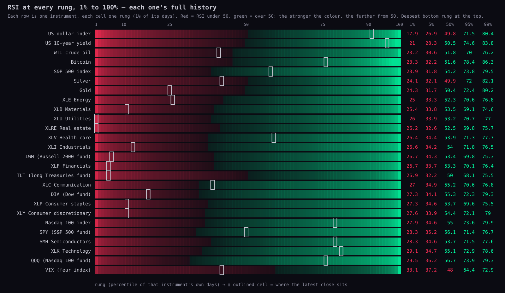
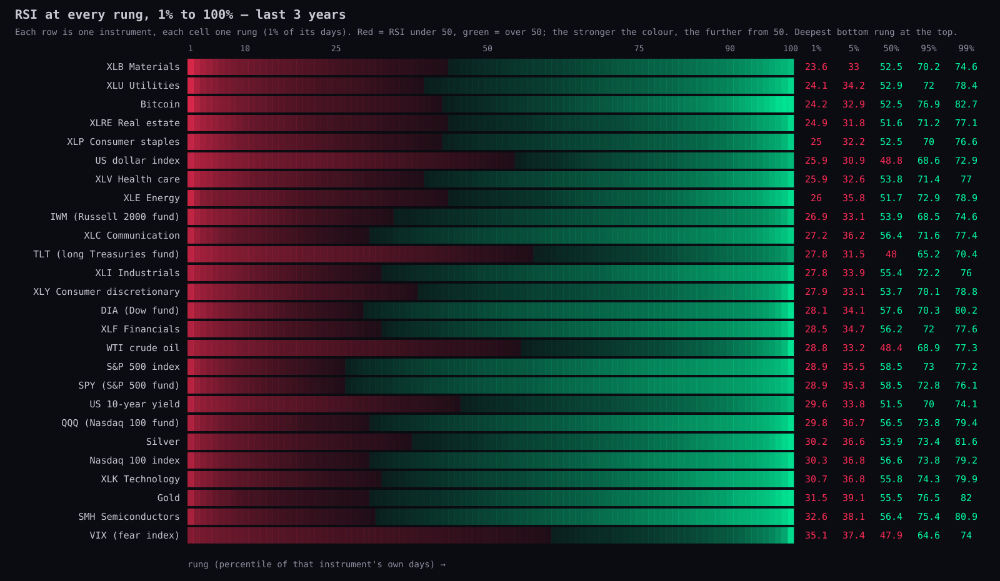
Does Bitcoin's RSI go deeper?
Yes, at every rung below about 83, and it also runs hotter at the very top. Same years for all three lines; the bar chart shows the gap to SPY one rung at a time.
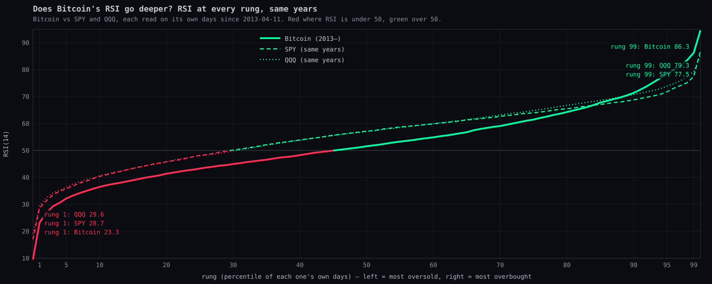
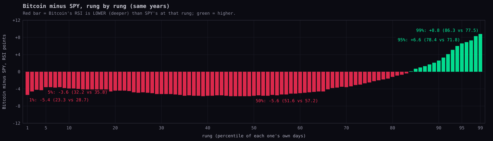
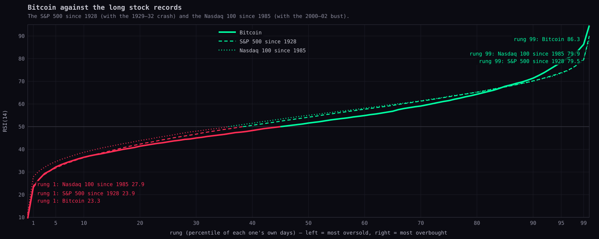
Every instrument, all 100 rungs (click a row)
Each row opens three 10×10 grids — full history, last 3 years, and how many separate visits a year it makes at or below each rung — plus its gap to SPY rung by rung.
Stock indexes
S&P 500 index · 1928–2026 · rung 1 ≤ 23.9 · rung 5 ≤ 31.8 · middle 54.2 · rung 95 ≥ 73.8 · rung 99 ≥ 79.5 · today 56.7 = rung 58
How to read: the cell in row “20”, column “+3” is rung 23 — 23% of days closed with an RSI at or below that number. Red = under 50, green = over 50. Lowest reading ever 11.1, highest 90.0.
Full history (1928–2026, 24,692 days)
| +1 | +2 | +3 | +4 | +5 | +6 | +7 | +8 | +9 | +10 | |
|---|---|---|---|---|---|---|---|---|---|---|
| 0 | 23.9 | 26.9 | 28.9 | 30.5 | 31.8 | 32.9 | 33.9 | 34.7 | 35.6 | 36.3 |
| 10 | 37.0 | 37.7 | 38.3 | 38.9 | 39.5 | 40.1 | 40.7 | 41.3 | 41.8 | 42.3 |
| 20 | 42.8 | 43.2 | 43.7 | 44.2 | 44.6 | 45.1 | 45.5 | 45.9 | 46.3 | 46.7 |
| 30 | 47.2 | 47.6 | 48.0 | 48.4 | 48.8 | 49.1 | 49.5 | 49.9 | 50.2 | 50.6 |
| 40 | 51.0 | 51.3 | 51.7 | 52.0 | 52.4 | 52.8 | 53.1 | 53.5 | 53.8 | 54.2 |
| 50 | 54.5 | 54.9 | 55.3 | 55.6 | 56.0 | 56.3 | 56.7 | 57.0 | 57.4 | 57.7 |
| 60 | 58.0 | 58.4 | 58.7 | 59.0 | 59.4 | 59.8 | 60.2 | 60.5 | 60.9 | 61.3 |
| 70 | 61.6 | 62.0 | 62.4 | 62.8 | 63.2 | 63.6 | 64.0 | 64.4 | 64.8 | 65.2 |
| 80 | 65.6 | 66.1 | 66.6 | 67.1 | 67.5 | 68.0 | 68.5 | 69.1 | 69.6 | 70.2 |
| 90 | 70.8 | 71.5 | 72.2 | 73.0 | 73.8 | 74.7 | 75.9 | 77.5 | 79.5 | 90.0 |
Last 3 years (from 2023-09-21, 756 days)
| +1 | +2 | +3 | +4 | +5 | +6 | +7 | +8 | +9 | +10 | |
|---|---|---|---|---|---|---|---|---|---|---|
| 0 | 28.9 | 30.9 | 33.7 | 34.7 | 35.5 | 37.2 | 38.0 | 39.1 | 40.1 | 40.8 |
| 10 | 41.5 | 41.8 | 42.8 | 43.3 | 44.0 | 44.7 | 45.2 | 45.8 | 46.1 | 46.5 |
| 20 | 47.4 | 48.1 | 48.5 | 48.9 | 49.5 | 49.8 | 50.5 | 51.2 | 51.7 | 52.2 |
| 30 | 52.6 | 52.8 | 53.2 | 53.6 | 53.8 | 54.4 | 54.7 | 55.0 | 55.4 | 55.7 |
| 40 | 56.1 | 56.5 | 56.6 | 56.9 | 57.2 | 57.3 | 57.6 | 58.0 | 58.3 | 58.5 |
| 50 | 58.6 | 58.8 | 58.9 | 59.1 | 59.5 | 59.7 | 60.0 | 60.5 | 61.1 | 61.3 |
| 60 | 61.5 | 61.7 | 62.0 | 62.4 | 62.7 | 63.0 | 63.5 | 64.0 | 64.2 | 64.6 |
| 70 | 64.7 | 65.1 | 65.4 | 65.8 | 66.1 | 66.4 | 66.8 | 67.0 | 67.2 | 67.4 |
| 80 | 67.6 | 67.9 | 68.2 | 68.4 | 68.8 | 69.2 | 69.4 | 69.8 | 70.1 | 70.4 |
| 90 | 70.6 | 71.1 | 71.6 | 72.2 | 73.0 | 73.5 | 74.5 | 75.6 | 77.2 | 82.2 |
Visits a year at or below each rung
| +1 | +2 | +3 | +4 | +5 | +6 | +7 | +8 | +9 | +10 | |
|---|---|---|---|---|---|---|---|---|---|---|
| 0 | 1.1 | 2.0 | 2.7 | 3.4 | 4.1 | 4.7 | 5.3 | 5.8 | 6.3 | 6.6 |
| 10 | 7.0 | 7.4 | 7.9 | 8.4 | 8.5 | 8.8 | 8.9 | 9.2 | 9.4 | 9.5 |
| 20 | 9.8 | 10.0 | 10.3 | 10.5 | 10.9 | 11.2 | 11.3 | 11.5 | 11.5 | 11.6 |
| 30 | 11.5 | 11.7 | 11.9 | 12.0 | 12.3 | 12.4 | 12.4 | 12.6 | 12.8 | 12.8 |
| 40 | 12.9 | 12.8 | 12.9 | 12.9 | 12.9 | 12.9 | 12.8 | 12.7 | 12.8 | 12.8 |
| 50 | 12.8 | 12.9 | 12.9 | 12.6 | 12.5 | 12.4 | 12.4 | 12.4 | 12.5 | 12.4 |
| 60 | 12.4 | 12.2 | 12.0 | 11.8 | 11.5 | 11.5 | 11.5 | 11.5 | 11.3 | 11.1 |
| 70 | 11.0 | 10.9 | 10.7 | 10.4 | 10.1 | 10.1 | 9.8 | 9.6 | 9.4 | 9.1 |
| 80 | 8.6 | 8.3 | 8.0 | 7.7 | 7.6 | 7.3 | 6.9 | 6.6 | 6.3 | 6.0 |
| 90 | 5.5 | 5.1 | 4.7 | 4.3 | 3.8 | 3.0 | 2.4 | 1.8 | 1.0 | 0.0 |
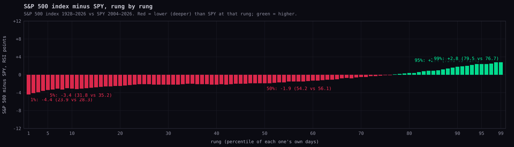
SPY (S&P 500 fund) · 2004–2026 · rung 1 ≤ 28.3 · rung 5 ≤ 35.2 · middle 56.1 · rung 95 ≥ 71.4 · rung 99 ≥ 76.7 · today 55.9 = rung 50
How to read: the cell in row “20”, column “+3” is rung 23 — 23% of days closed with an RSI at or below that number. Red = under 50, green = over 50. Lowest reading ever 16.7, highest 87.0.
Full history (2004–2026, 5,697 days)
| +1 | +2 | +3 | +4 | +5 | +6 | +7 | +8 | +9 | +10 | |
|---|---|---|---|---|---|---|---|---|---|---|
| 0 | 28.3 | 31.0 | 32.8 | 34.1 | 35.2 | 36.2 | 37.0 | 38.0 | 38.6 | 39.4 |
| 10 | 40.2 | 40.8 | 41.3 | 41.8 | 42.3 | 42.8 | 43.3 | 43.9 | 44.3 | 44.8 |
| 20 | 45.2 | 45.5 | 45.9 | 46.3 | 46.7 | 47.2 | 47.7 | 48.1 | 48.5 | 48.9 |
| 30 | 49.4 | 49.8 | 50.1 | 50.4 | 50.8 | 51.2 | 51.6 | 52.0 | 52.4 | 52.8 |
| 40 | 53.1 | 53.5 | 53.8 | 54.0 | 54.4 | 54.8 | 55.0 | 55.4 | 55.7 | 56.1 |
| 50 | 56.4 | 56.7 | 57.0 | 57.3 | 57.5 | 57.8 | 58.2 | 58.5 | 58.8 | 59.0 |
| 60 | 59.3 | 59.6 | 59.8 | 60.1 | 60.4 | 60.6 | 60.9 | 61.3 | 61.5 | 61.8 |
| 70 | 62.1 | 62.3 | 62.7 | 63.0 | 63.3 | 63.7 | 63.9 | 64.2 | 64.5 | 64.8 |
| 80 | 65.2 | 65.5 | 65.8 | 66.2 | 66.6 | 67.0 | 67.3 | 67.7 | 68.0 | 68.4 |
| 90 | 68.9 | 69.5 | 70.0 | 70.6 | 71.4 | 72.3 | 73.4 | 74.7 | 76.7 | 87.0 |
Last 3 years (from 2023-09-21, 756 days)
| +1 | +2 | +3 | +4 | +5 | +6 | +7 | +8 | +9 | +10 | |
|---|---|---|---|---|---|---|---|---|---|---|
| 0 | 28.9 | 31.0 | 33.5 | 34.4 | 35.3 | 37.1 | 38.1 | 38.7 | 40.2 | 40.7 |
| 10 | 41.6 | 41.9 | 43.0 | 43.5 | 44.0 | 44.6 | 45.1 | 45.6 | 46.0 | 46.8 |
| 20 | 47.5 | 48.2 | 48.4 | 48.9 | 49.4 | 50.0 | 50.5 | 51.4 | 51.7 | 52.2 |
| 30 | 52.5 | 52.8 | 53.0 | 53.4 | 54.0 | 54.2 | 54.4 | 54.7 | 55.2 | 55.6 |
| 40 | 56.0 | 56.4 | 56.6 | 56.9 | 57.2 | 57.5 | 57.7 | 58.0 | 58.3 | 58.5 |
| 50 | 58.8 | 58.9 | 59.1 | 59.2 | 59.6 | 59.9 | 60.2 | 60.5 | 60.9 | 61.4 |
| 60 | 61.7 | 61.8 | 62.1 | 62.5 | 62.8 | 62.9 | 63.3 | 63.7 | 63.9 | 64.1 |
| 70 | 64.4 | 64.7 | 65.3 | 65.7 | 65.9 | 66.3 | 66.6 | 66.9 | 67.2 | 67.4 |
| 80 | 67.7 | 67.9 | 68.1 | 68.4 | 68.6 | 68.9 | 69.1 | 69.5 | 69.8 | 70.1 |
| 90 | 70.4 | 71.0 | 71.4 | 71.8 | 72.8 | 73.4 | 74.2 | 75.3 | 76.1 | 80.0 |
Visits a year at or below each rung
| +1 | +2 | +3 | +4 | +5 | +6 | +7 | +8 | +9 | +10 | |
|---|---|---|---|---|---|---|---|---|---|---|
| 0 | 1.3 | 2.6 | 3.4 | 4.5 | 5.1 | 5.7 | 6.4 | 7.0 | 7.7 | 8.3 |
| 10 | 8.5 | 9.2 | 9.5 | 9.6 | 10.0 | 10.3 | 10.8 | 11.6 | 12.0 | 12.6 |
| 20 | 12.5 | 12.6 | 12.5 | 12.5 | 12.7 | 13.0 | 13.0 | 12.6 | 12.7 | 13.3 |
| 30 | 13.7 | 14.1 | 14.1 | 14.3 | 14.2 | 14.1 | 14.2 | 14.4 | 14.6 | 14.4 |
| 40 | 14.5 | 14.8 | 14.7 | 15.1 | 15.1 | 14.8 | 14.4 | 14.6 | 14.3 | 14.4 |
| 50 | 14.8 | 15.1 | 14.9 | 14.8 | 14.6 | 14.7 | 14.4 | 14.1 | 13.7 | 13.8 |
| 60 | 13.9 | 13.8 | 13.4 | 13.5 | 13.5 | 13.5 | 13.7 | 13.3 | 12.9 | 12.8 |
| 70 | 12.7 | 12.3 | 11.6 | 11.4 | 11.6 | 11.3 | 11.3 | 11.5 | 11.6 | 11.2 |
| 80 | 10.9 | 10.3 | 9.7 | 9.0 | 8.5 | 8.0 | 7.8 | 7.7 | 7.5 | 7.2 |
| 90 | 6.5 | 5.9 | 5.5 | 4.9 | 3.8 | 3.3 | 2.9 | 2.2 | 1.1 | 0.0 |
Nasdaq 100 index · 1985–2026 · rung 1 ≤ 27.9 · rung 5 ≤ 34.6 · middle 55.0 · rung 95 ≥ 73.6 · rung 99 ≥ 79.9 · today 64.7 = rung 79
How to read: the cell in row “20”, column “+3” is rung 23 — 23% of days closed with an RSI at or below that number. Red = under 50, green = over 50. Lowest reading ever 12.0, highest 88.7.
Full history (1985–2026, 10,393 days)
| +1 | +2 | +3 | +4 | +5 | +6 | +7 | +8 | +9 | +10 | |
|---|---|---|---|---|---|---|---|---|---|---|
| 0 | 27.9 | 30.4 | 32.1 | 33.5 | 34.6 | 35.6 | 36.4 | 37.2 | 38.0 | 38.7 |
| 10 | 39.3 | 39.9 | 40.5 | 41.0 | 41.5 | 42.0 | 42.5 | 42.9 | 43.4 | 43.9 |
| 20 | 44.3 | 44.7 | 45.2 | 45.6 | 46.0 | 46.4 | 46.9 | 47.3 | 47.7 | 48.0 |
| 30 | 48.3 | 48.7 | 49.0 | 49.3 | 49.7 | 50.1 | 50.5 | 50.8 | 51.2 | 51.5 |
| 40 | 51.9 | 52.3 | 52.6 | 53.0 | 53.3 | 53.7 | 54.0 | 54.4 | 54.7 | 55.0 |
| 50 | 55.3 | 55.6 | 56.0 | 56.2 | 56.6 | 56.9 | 57.2 | 57.5 | 57.8 | 58.2 |
| 60 | 58.5 | 58.8 | 59.1 | 59.5 | 59.8 | 60.1 | 60.4 | 60.7 | 61.1 | 61.4 |
| 70 | 61.8 | 62.2 | 62.5 | 62.9 | 63.4 | 63.8 | 64.1 | 64.5 | 64.9 | 65.3 |
| 80 | 65.8 | 66.2 | 66.7 | 67.1 | 67.6 | 68.0 | 68.5 | 69.0 | 69.5 | 70.1 |
| 90 | 70.7 | 71.4 | 71.9 | 72.7 | 73.6 | 74.5 | 75.9 | 77.6 | 79.9 | 88.7 |
Last 3 years (from 2023-09-21, 756 days)
| +1 | +2 | +3 | +4 | +5 | +6 | +7 | +8 | +9 | +10 | |
|---|---|---|---|---|---|---|---|---|---|---|
| 0 | 30.3 | 32.7 | 34.6 | 35.5 | 36.8 | 38.3 | 38.9 | 39.7 | 40.1 | 40.9 |
| 10 | 41.7 | 42.0 | 42.4 | 43.1 | 43.6 | 44.1 | 44.7 | 45.3 | 46.2 | 46.6 |
| 20 | 46.9 | 47.2 | 47.7 | 48.0 | 48.1 | 48.4 | 48.7 | 48.9 | 49.5 | 50.0 |
| 30 | 50.4 | 50.9 | 51.4 | 51.7 | 52.0 | 52.5 | 52.9 | 53.1 | 53.4 | 53.6 |
| 40 | 54.0 | 54.4 | 54.5 | 54.9 | 55.0 | 55.3 | 55.7 | 56.0 | 56.3 | 56.6 |
| 50 | 56.8 | 57.1 | 57.4 | 57.7 | 58.0 | 58.2 | 58.4 | 58.8 | 59.1 | 59.4 |
| 60 | 59.7 | 60.0 | 60.3 | 60.7 | 61.0 | 61.6 | 62.0 | 62.3 | 62.6 | 63.0 |
| 70 | 63.5 | 64.0 | 64.3 | 64.8 | 65.3 | 65.9 | 66.1 | 66.6 | 67.0 | 67.3 |
| 80 | 67.7 | 67.9 | 68.1 | 68.5 | 68.7 | 68.9 | 69.5 | 69.9 | 70.4 | 70.8 |
| 90 | 71.0 | 71.7 | 72.2 | 72.8 | 73.8 | 74.8 | 76.0 | 77.3 | 79.2 | 83.0 |
Visits a year at or below each rung
| +1 | +2 | +3 | +4 | +5 | +6 | +7 | +8 | +9 | +10 | |
|---|---|---|---|---|---|---|---|---|---|---|
| 0 | 1.2 | 2.2 | 3.3 | 4.1 | 4.8 | 5.6 | 6.3 | 6.8 | 7.3 | 7.6 |
| 10 | 7.9 | 8.5 | 9.0 | 9.3 | 9.4 | 9.7 | 9.9 | 10.3 | 10.9 | 11.1 |
| 20 | 11.5 | 11.2 | 11.3 | 11.7 | 11.8 | 12.2 | 12.3 | 12.7 | 12.7 | 12.5 |
| 30 | 12.9 | 13.3 | 13.4 | 13.6 | 13.7 | 13.7 | 13.9 | 13.9 | 14.0 | 14.3 |
| 40 | 14.2 | 14.2 | 14.0 | 14.2 | 13.9 | 13.9 | 14.1 | 14.3 | 14.5 | 14.5 |
| 50 | 14.6 | 14.7 | 14.8 | 14.7 | 14.6 | 14.4 | 13.9 | 14.0 | 14.1 | 13.8 |
| 60 | 13.5 | 13.3 | 12.9 | 12.7 | 12.4 | 12.4 | 12.3 | 11.8 | 11.6 | 11.3 |
| 70 | 11.1 | 11.0 | 10.7 | 10.4 | 10.7 | 10.6 | 10.4 | 10.0 | 9.8 | 9.4 |
| 80 | 8.8 | 8.6 | 8.4 | 8.2 | 8.0 | 7.6 | 7.2 | 6.5 | 6.3 | 5.8 |
| 90 | 5.5 | 5.2 | 4.8 | 4.3 | 3.4 | 2.9 | 2.5 | 1.8 | 1.1 | 0.0 |
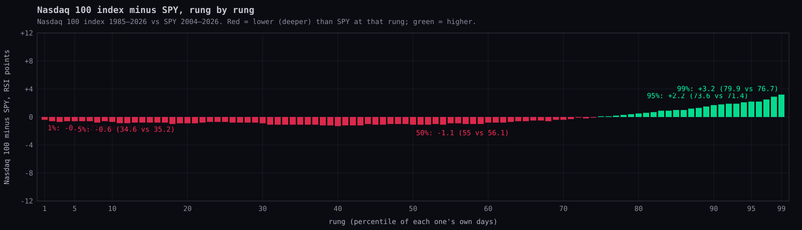
QQQ (Nasdaq 100 fund) · 2011–2026 · rung 1 ≤ 29.5 · rung 5 ≤ 36.2 · middle 56.7 · rung 95 ≥ 73.9 · rung 99 ≥ 79.3 · today 64.7 = rung 76
How to read: the cell in row “20”, column “+3” is rung 23 — 23% of days closed with an RSI at or below that number. Red = under 50, green = over 50. Lowest reading ever 19.1, highest 85.4.
Full history (2011–2026, 3,801 days)
| +1 | +2 | +3 | +4 | +5 | +6 | +7 | +8 | +9 | +10 | |
|---|---|---|---|---|---|---|---|---|---|---|
| 0 | 29.5 | 32.3 | 34.0 | 35.1 | 36.2 | 37.3 | 38.1 | 39.0 | 39.6 | 40.5 |
| 10 | 41.1 | 41.8 | 42.2 | 42.8 | 43.2 | 43.7 | 44.2 | 44.7 | 45.1 | 45.6 |
| 20 | 46.3 | 46.7 | 47.2 | 47.5 | 47.9 | 48.2 | 48.6 | 48.9 | 49.3 | 49.6 |
| 30 | 50.0 | 50.4 | 50.9 | 51.2 | 51.6 | 52.0 | 52.4 | 52.8 | 53.2 | 53.5 |
| 40 | 53.8 | 54.2 | 54.6 | 54.9 | 55.2 | 55.5 | 55.9 | 56.1 | 56.4 | 56.7 |
| 50 | 57.0 | 57.3 | 57.5 | 57.9 | 58.2 | 58.4 | 58.7 | 59.0 | 59.3 | 59.6 |
| 60 | 59.9 | 60.1 | 60.5 | 60.8 | 61.0 | 61.4 | 61.7 | 62.0 | 62.4 | 62.8 |
| 70 | 63.1 | 63.6 | 63.9 | 64.2 | 64.6 | 65.0 | 65.4 | 65.8 | 66.2 | 66.6 |
| 80 | 67.0 | 67.4 | 67.8 | 68.2 | 68.5 | 69.0 | 69.4 | 69.9 | 70.3 | 70.8 |
| 90 | 71.3 | 71.8 | 72.4 | 73.3 | 73.9 | 74.9 | 75.9 | 77.4 | 79.3 | 85.4 |
Last 3 years (from 2023-09-21, 756 days)
| +1 | +2 | +3 | +4 | +5 | +6 | +7 | +8 | +9 | +10 | |
|---|---|---|---|---|---|---|---|---|---|---|
| 0 | 29.8 | 32.5 | 34.3 | 35.3 | 36.7 | 37.9 | 38.9 | 39.6 | 39.9 | 40.9 |
| 10 | 41.4 | 42.0 | 42.3 | 43.1 | 43.5 | 44.1 | 44.5 | 45.3 | 46.3 | 46.6 |
| 20 | 46.8 | 47.1 | 47.5 | 47.8 | 48.0 | 48.3 | 48.7 | 48.8 | 49.4 | 50.0 |
| 30 | 50.3 | 50.9 | 51.5 | 51.7 | 52.0 | 52.4 | 52.8 | 53.2 | 53.5 | 53.7 |
| 40 | 54.2 | 54.4 | 54.6 | 54.8 | 55.1 | 55.3 | 55.6 | 56.0 | 56.3 | 56.5 |
| 50 | 57.0 | 57.2 | 57.4 | 57.9 | 58.0 | 58.3 | 58.7 | 58.8 | 59.3 | 59.6 |
| 60 | 59.8 | 60.1 | 60.5 | 60.8 | 61.2 | 61.8 | 62.0 | 62.5 | 62.7 | 63.2 |
| 70 | 63.7 | 64.1 | 64.5 | 65.0 | 65.6 | 65.9 | 66.1 | 66.8 | 67.2 | 67.5 |
| 80 | 67.8 | 68.1 | 68.4 | 68.7 | 68.9 | 69.2 | 69.8 | 70.1 | 70.5 | 70.9 |
| 90 | 71.4 | 71.8 | 72.3 | 72.9 | 73.8 | 75.0 | 76.0 | 77.3 | 79.4 | 83.2 |
Visits a year at or below each rung
| +1 | +2 | +3 | +4 | +5 | +6 | +7 | +8 | +9 | +10 | |
|---|---|---|---|---|---|---|---|---|---|---|
| 0 | 1.5 | 2.6 | 3.8 | 4.9 | 5.6 | 6.2 | 6.7 | 7.3 | 7.6 | 7.9 |
| 10 | 8.2 | 8.6 | 9.1 | 9.7 | 10.4 | 10.8 | 11.1 | 11.2 | 11.4 | 11.7 |
| 20 | 12.2 | 12.5 | 12.8 | 12.6 | 13.0 | 13.3 | 13.5 | 14.2 | 14.9 | 14.7 |
| 30 | 14.7 | 14.6 | 13.8 | 14.1 | 13.9 | 14.0 | 14.0 | 14.0 | 14.1 | 13.8 |
| 40 | 14.0 | 14.2 | 14.4 | 15.1 | 15.3 | 15.3 | 15.0 | 15.1 | 15.0 | 14.4 |
| 50 | 14.4 | 14.3 | 14.3 | 13.9 | 13.7 | 13.6 | 13.8 | 13.8 | 13.5 | 13.0 |
| 60 | 12.7 | 12.7 | 12.6 | 12.6 | 12.7 | 12.5 | 12.0 | 11.4 | 11.1 | 11.0 |
| 70 | 10.5 | 10.5 | 10.8 | 10.7 | 10.3 | 10.1 | 9.7 | 9.3 | 9.3 | 8.9 |
| 80 | 8.9 | 8.8 | 8.6 | 8.3 | 7.9 | 7.4 | 7.0 | 7.0 | 6.5 | 5.8 |
| 90 | 5.6 | 5.5 | 5.0 | 4.4 | 3.6 | 3.3 | 2.6 | 2.0 | 1.5 | 0.1 |
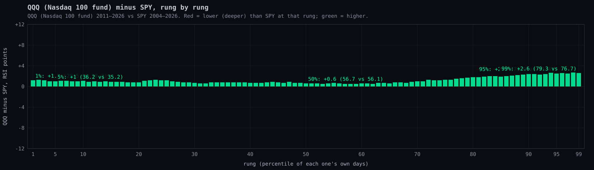
IWM (Russell 2000 fund) · 2004–2026 · rung 1 ≤ 26.7 · rung 5 ≤ 34.3 · middle 53.4 · rung 95 ≥ 69.8 · rung 99 ≥ 75.3 · today 34.9 = rung 6
How to read: the cell in row “20”, column “+3” is rung 23 — 23% of days closed with an RSI at or below that number. Red = under 50, green = over 50. Lowest reading ever 15.2, highest 85.7.
Full history (2004–2026, 5,697 days)
| +1 | +2 | +3 | +4 | +5 | +6 | +7 | +8 | +9 | +10 | |
|---|---|---|---|---|---|---|---|---|---|---|
| 0 | 26.7 | 29.4 | 31.4 | 33.0 | 34.3 | 35.2 | 36.0 | 36.7 | 37.5 | 38.1 |
| 10 | 38.7 | 39.3 | 39.9 | 40.4 | 40.9 | 41.3 | 41.9 | 42.3 | 42.9 | 43.3 |
| 20 | 43.7 | 44.2 | 44.6 | 45.0 | 45.4 | 45.8 | 46.2 | 46.5 | 46.9 | 47.3 |
| 30 | 47.6 | 48.0 | 48.2 | 48.5 | 48.9 | 49.2 | 49.5 | 49.8 | 50.1 | 50.4 |
| 40 | 50.8 | 51.1 | 51.4 | 51.7 | 52.0 | 52.3 | 52.6 | 52.9 | 53.2 | 53.4 |
| 50 | 53.7 | 54.0 | 54.4 | 54.6 | 54.9 | 55.1 | 55.4 | 55.7 | 56.0 | 56.3 |
| 60 | 56.7 | 57.0 | 57.2 | 57.5 | 57.7 | 58.0 | 58.2 | 58.5 | 58.8 | 59.1 |
| 70 | 59.4 | 59.7 | 60.0 | 60.3 | 60.6 | 61.0 | 61.3 | 61.7 | 62.0 | 62.4 |
| 80 | 62.7 | 63.1 | 63.5 | 63.9 | 64.2 | 64.6 | 65.1 | 65.5 | 65.9 | 66.5 |
| 90 | 66.9 | 67.6 | 68.2 | 69.0 | 69.8 | 70.7 | 71.7 | 73.4 | 75.3 | 85.7 |
Last 3 years (from 2023-09-21, 756 days)
| +1 | +2 | +3 | +4 | +5 | +6 | +7 | +8 | +9 | +10 | |
|---|---|---|---|---|---|---|---|---|---|---|
| 0 | 26.9 | 29.2 | 30.8 | 32.3 | 33.1 | 34.1 | 34.5 | 35.5 | 36.2 | 37.0 |
| 10 | 37.9 | 38.4 | 39.6 | 40.2 | 41.1 | 41.7 | 42.6 | 43.0 | 43.7 | 44.1 |
| 20 | 44.6 | 45.3 | 45.5 | 45.9 | 46.7 | 47.0 | 47.6 | 48.2 | 48.4 | 48.5 |
| 30 | 49.0 | 49.2 | 49.4 | 49.9 | 50.1 | 50.2 | 50.4 | 50.8 | 51.0 | 51.2 |
| 40 | 51.6 | 51.9 | 52.1 | 52.2 | 52.5 | 52.7 | 53.0 | 53.3 | 53.7 | 53.9 |
| 50 | 54.3 | 54.5 | 54.8 | 55.0 | 55.3 | 55.5 | 55.8 | 56.0 | 56.4 | 56.8 |
| 60 | 57.0 | 57.2 | 57.5 | 57.8 | 58.1 | 58.2 | 58.5 | 58.9 | 59.1 | 59.5 |
| 70 | 59.8 | 60.0 | 60.3 | 60.4 | 60.7 | 61.0 | 61.2 | 61.5 | 61.9 | 62.1 |
| 80 | 62.4 | 62.6 | 63.1 | 63.3 | 63.8 | 64.2 | 64.6 | 65.0 | 65.4 | 65.9 |
| 90 | 66.2 | 66.9 | 67.2 | 67.7 | 68.5 | 69.6 | 71.0 | 72.6 | 74.6 | 80.8 |
Visits a year at or below each rung
| +1 | +2 | +3 | +4 | +5 | +6 | +7 | +8 | +9 | +10 | |
|---|---|---|---|---|---|---|---|---|---|---|
| 0 | 1.2 | 2.0 | 3.0 | 3.5 | 4.5 | 5.4 | 6.2 | 6.9 | 7.5 | 7.5 |
| 10 | 8.0 | 8.4 | 8.9 | 9.4 | 9.6 | 10.1 | 10.8 | 10.9 | 10.8 | 11.8 |
| 20 | 11.9 | 12.2 | 12.6 | 13.2 | 13.4 | 13.6 | 13.3 | 13.5 | 13.8 | 14.1 |
| 30 | 14.2 | 14.5 | 14.6 | 14.9 | 14.9 | 15.0 | 15.2 | 15.6 | 15.9 | 16.0 |
| 40 | 16.3 | 16.5 | 16.3 | 16.3 | 16.4 | 16.5 | 16.3 | 16.3 | 16.4 | 16.6 |
| 50 | 16.6 | 16.1 | 15.9 | 16.2 | 16.3 | 16.1 | 16.3 | 16.3 | 16.0 | 15.7 |
| 60 | 15.6 | 15.5 | 15.7 | 15.6 | 15.5 | 15.3 | 15.0 | 14.6 | 14.4 | 14.3 |
| 70 | 14.1 | 13.4 | 13.0 | 12.8 | 12.3 | 12.2 | 12.1 | 11.1 | 11.0 | 10.9 |
| 80 | 10.8 | 10.4 | 9.8 | 9.8 | 9.5 | 9.2 | 9.1 | 8.1 | 7.6 | 6.9 |
| 90 | 6.5 | 5.4 | 5.0 | 4.6 | 3.9 | 3.2 | 2.4 | 2.0 | 1.5 | 0.0 |
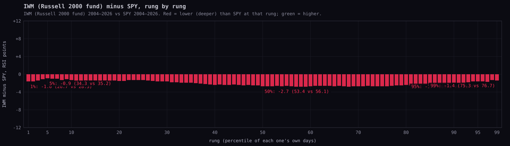
DIA (Dow fund) · 2004–2026 · rung 1 ≤ 27.3 · rung 5 ≤ 34.1 · middle 55.3 · rung 95 ≥ 72.3 · rung 99 ≥ 79.3 · today 43.1 = rung 18
How to read: the cell in row “20”, column “+3” is rung 23 — 23% of days closed with an RSI at or below that number. Red = under 50, green = over 50. Lowest reading ever 15.5, highest 89.2.
Full history (2004–2026, 5,697 days)
| +1 | +2 | +3 | +4 | +5 | +6 | +7 | +8 | +9 | +10 | |
|---|---|---|---|---|---|---|---|---|---|---|
| 0 | 27.3 | 30.2 | 31.5 | 33.0 | 34.1 | 35.1 | 36.2 | 37.0 | 37.7 | 38.5 |
| 10 | 39.2 | 39.9 | 40.5 | 41.0 | 41.6 | 42.3 | 42.8 | 43.2 | 43.7 | 44.2 |
| 20 | 44.7 | 45.1 | 45.5 | 46.0 | 46.4 | 46.8 | 47.2 | 47.6 | 48.0 | 48.4 |
| 30 | 48.8 | 49.2 | 49.6 | 49.9 | 50.2 | 50.6 | 51.0 | 51.4 | 51.7 | 52.1 |
| 40 | 52.4 | 52.7 | 53.0 | 53.3 | 53.7 | 54.0 | 54.3 | 54.6 | 55.0 | 55.3 |
| 50 | 55.6 | 55.9 | 56.2 | 56.6 | 56.9 | 57.2 | 57.5 | 57.8 | 58.1 | 58.4 |
| 60 | 58.7 | 58.9 | 59.2 | 59.6 | 59.9 | 60.2 | 60.5 | 60.7 | 61.0 | 61.3 |
| 70 | 61.6 | 61.8 | 62.1 | 62.3 | 62.6 | 62.9 | 63.2 | 63.5 | 63.8 | 64.2 |
| 80 | 64.6 | 64.9 | 65.4 | 65.8 | 66.2 | 66.6 | 67.2 | 67.7 | 68.1 | 68.6 |
| 90 | 69.3 | 70.0 | 70.5 | 71.4 | 72.3 | 73.6 | 75.2 | 76.8 | 79.3 | 89.2 |
Last 3 years (from 2023-09-21, 756 days)
| +1 | +2 | +3 | +4 | +5 | +6 | +7 | +8 | +9 | +10 | |
|---|---|---|---|---|---|---|---|---|---|---|
| 0 | 28.1 | 29.4 | 30.9 | 33.1 | 34.1 | 35.3 | 36.5 | 37.4 | 38.0 | 38.9 |
| 10 | 39.8 | 40.5 | 40.8 | 41.5 | 42.5 | 43.1 | 44.2 | 44.7 | 45.1 | 45.6 |
| 20 | 46.0 | 46.7 | 47.3 | 47.4 | 48.0 | 48.4 | 49.1 | 49.7 | 50.1 | 50.8 |
| 30 | 51.1 | 51.5 | 52.1 | 52.5 | 52.7 | 53.1 | 53.7 | 54.0 | 54.2 | 54.4 |
| 40 | 55.0 | 55.2 | 55.5 | 55.9 | 56.1 | 56.4 | 56.6 | 56.9 | 57.4 | 57.6 |
| 50 | 57.9 | 58.1 | 58.4 | 58.7 | 58.8 | 59.0 | 59.3 | 59.6 | 59.8 | 60.0 |
| 60 | 60.2 | 60.4 | 60.6 | 60.8 | 61.1 | 61.2 | 61.4 | 61.6 | 61.8 | 61.9 |
| 70 | 62.3 | 62.5 | 62.7 | 62.9 | 63.1 | 63.4 | 63.7 | 64.0 | 64.2 | 64.4 |
| 80 | 64.6 | 64.9 | 65.4 | 65.6 | 65.9 | 66.2 | 66.6 | 66.9 | 67.4 | 67.7 |
| 90 | 68.0 | 68.3 | 68.9 | 69.8 | 70.3 | 71.5 | 73.4 | 76.0 | 80.2 | 85.1 |
Visits a year at or below each rung
| +1 | +2 | +3 | +4 | +5 | +6 | +7 | +8 | +9 | +10 | |
|---|---|---|---|---|---|---|---|---|---|---|
| 0 | 1.4 | 2.7 | 3.5 | 4.2 | 4.7 | 5.4 | 6.5 | 6.7 | 7.5 | 7.9 |
| 10 | 8.4 | 8.8 | 9.2 | 9.2 | 9.6 | 10.0 | 10.4 | 10.4 | 11.0 | 11.1 |
| 20 | 11.4 | 11.9 | 12.2 | 12.6 | 13.0 | 13.0 | 13.2 | 13.1 | 13.1 | 13.2 |
| 30 | 13.2 | 13.4 | 13.7 | 14.0 | 13.7 | 13.6 | 13.3 | 13.7 | 14.1 | 14.8 |
| 40 | 15.1 | 14.8 | 14.8 | 14.5 | 14.4 | 14.7 | 15.2 | 15.2 | 14.7 | 14.9 |
| 50 | 14.6 | 14.6 | 14.7 | 14.8 | 14.7 | 14.5 | 14.4 | 14.0 | 13.7 | 13.3 |
| 60 | 13.1 | 13.1 | 13.4 | 13.7 | 13.8 | 13.9 | 13.3 | 13.5 | 13.6 | 13.2 |
| 70 | 13.1 | 12.8 | 12.8 | 12.5 | 12.5 | 11.8 | 11.6 | 11.3 | 10.8 | 10.2 |
| 80 | 9.7 | 9.0 | 8.8 | 8.5 | 8.4 | 8.2 | 7.7 | 6.7 | 6.5 | 5.7 |
| 90 | 5.1 | 4.6 | 4.1 | 3.4 | 2.7 | 2.5 | 1.9 | 1.3 | 0.8 | 0.0 |
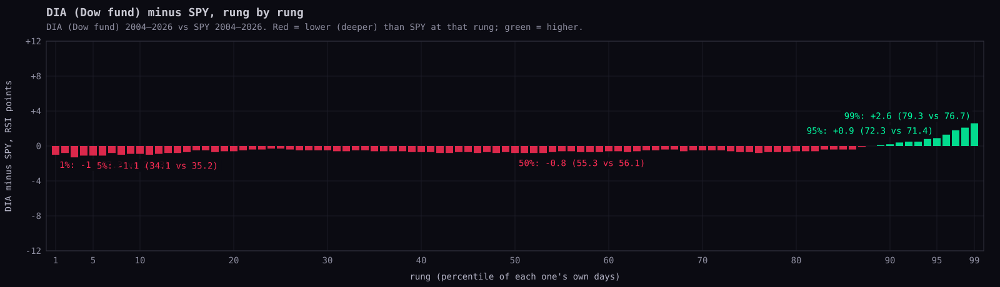
Fear, rates, dollar
VIX (fear index) · 1990–2026 · rung 1 ≤ 33.1 · rung 5 ≤ 37.2 · middle 48.0 · rung 95 ≥ 64.4 · rung 99 ≥ 72.9 · today 46.4 = rung 42
How to read: the cell in row “20”, column “+3” is rung 23 — 23% of days closed with an RSI at or below that number. Red = under 50, green = over 50. Lowest reading ever 24.4, highest 91.1.
Full history (1990–2026, 9,174 days)
| +1 | +2 | +3 | +4 | +5 | +6 | +7 | +8 | +9 | +10 | |
|---|---|---|---|---|---|---|---|---|---|---|
| 0 | 33.1 | 34.9 | 35.8 | 36.6 | 37.2 | 37.8 | 38.2 | 38.7 | 39.0 | 39.4 |
| 10 | 39.7 | 40.0 | 40.3 | 40.5 | 40.8 | 41.0 | 41.3 | 41.6 | 41.8 | 42.0 |
| 20 | 42.3 | 42.5 | 42.7 | 42.9 | 43.1 | 43.3 | 43.5 | 43.7 | 43.8 | 44.1 |
| 30 | 44.3 | 44.5 | 44.7 | 44.8 | 45.0 | 45.2 | 45.4 | 45.6 | 45.8 | 46.0 |
| 40 | 46.2 | 46.4 | 46.6 | 46.8 | 47.0 | 47.2 | 47.4 | 47.6 | 47.8 | 48.0 |
| 50 | 48.2 | 48.4 | 48.7 | 48.9 | 49.1 | 49.4 | 49.6 | 49.8 | 50.1 | 50.3 |
| 60 | 50.5 | 50.8 | 51.0 | 51.2 | 51.5 | 51.7 | 52.0 | 52.3 | 52.5 | 52.8 |
| 70 | 53.1 | 53.4 | 53.7 | 54.0 | 54.3 | 54.6 | 55.0 | 55.3 | 55.6 | 55.9 |
| 80 | 56.3 | 56.6 | 57.0 | 57.4 | 57.8 | 58.3 | 58.7 | 59.2 | 59.6 | 60.2 |
| 90 | 61.0 | 61.7 | 62.5 | 63.3 | 64.4 | 65.7 | 67.2 | 69.5 | 72.9 | 91.1 |
Last 3 years (from 2023-10-10, 756 days)
| +1 | +2 | +3 | +4 | +5 | +6 | +7 | +8 | +9 | +10 | |
|---|---|---|---|---|---|---|---|---|---|---|
| 0 | 35.1 | 35.5 | 36.4 | 37.0 | 37.4 | 37.9 | 38.2 | 38.5 | 38.8 | 39.4 |
| 10 | 39.6 | 40.0 | 40.5 | 40.8 | 41.1 | 41.4 | 41.7 | 41.8 | 42.0 | 42.2 |
| 20 | 42.5 | 42.7 | 43.1 | 43.3 | 43.5 | 43.6 | 43.8 | 43.9 | 44.1 | 44.4 |
| 30 | 44.5 | 44.6 | 44.8 | 44.9 | 45.1 | 45.3 | 45.4 | 45.7 | 45.9 | 46.1 |
| 40 | 46.2 | 46.4 | 46.6 | 46.7 | 47.0 | 47.3 | 47.5 | 47.6 | 47.8 | 47.9 |
| 50 | 48.1 | 48.3 | 48.4 | 48.5 | 48.8 | 49.0 | 49.1 | 49.4 | 49.7 | 50.1 |
| 60 | 50.4 | 50.5 | 50.8 | 51.1 | 51.4 | 51.6 | 52.0 | 52.1 | 52.4 | 52.7 |
| 70 | 52.9 | 53.2 | 53.4 | 53.6 | 53.9 | 54.3 | 54.6 | 55.0 | 55.2 | 55.6 |
| 80 | 55.9 | 56.4 | 56.6 | 57.0 | 57.3 | 58.1 | 58.5 | 58.9 | 59.3 | 60.0 |
| 90 | 60.6 | 61.7 | 63.2 | 63.8 | 64.6 | 65.7 | 68.1 | 70.1 | 74.0 | 87.2 |
Visits a year at or below each rung
| +1 | +2 | +3 | +4 | +5 | +6 | +7 | +8 | +9 | +10 | |
|---|---|---|---|---|---|---|---|---|---|---|
| 0 | 1.1 | 2.1 | 3.3 | 4.0 | 5.0 | 6.2 | 7.1 | 7.9 | 8.6 | 9.3 |
| 10 | 10.0 | 10.5 | 10.9 | 11.6 | 11.8 | 12.5 | 13.0 | 13.6 | 14.1 | 14.6 |
| 20 | 15.2 | 15.6 | 16.2 | 16.3 | 16.6 | 16.9 | 17.3 | 17.4 | 17.4 | 18.0 |
| 30 | 18.3 | 18.5 | 18.7 | 18.8 | 19.0 | 19.4 | 19.5 | 19.6 | 19.6 | 19.8 |
| 40 | 19.9 | 20.0 | 20.2 | 20.3 | 20.6 | 20.6 | 20.5 | 20.4 | 20.3 | 20.3 |
| 50 | 19.9 | 20.1 | 20.0 | 20.1 | 20.3 | 20.2 | 20.4 | 20.3 | 19.9 | 20.0 |
| 60 | 20.1 | 19.9 | 20.0 | 20.0 | 19.9 | 19.7 | 19.6 | 19.4 | 19.3 | 19.2 |
| 70 | 19.2 | 18.6 | 18.6 | 18.4 | 18.0 | 18.0 | 17.5 | 16.8 | 16.6 | 16.2 |
| 80 | 15.7 | 14.9 | 14.7 | 14.2 | 13.7 | 13.0 | 12.3 | 11.7 | 10.8 | 10.3 |
| 90 | 9.4 | 8.7 | 7.9 | 7.2 | 6.3 | 5.0 | 4.0 | 3.0 | 1.6 | 0.0 |
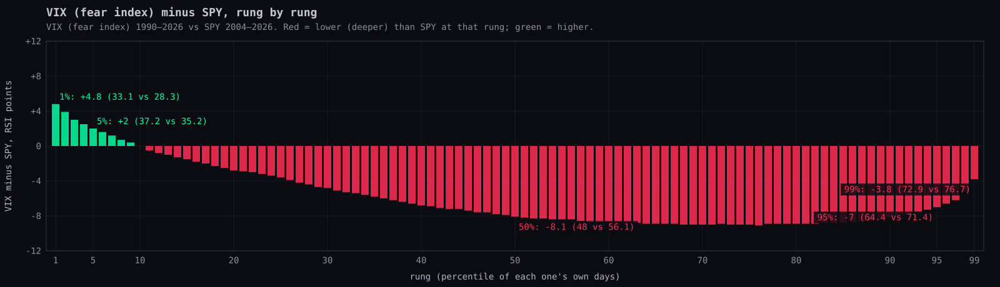
US 10-year yield · 1962–2026 · rung 1 ≤ 21.0 · rung 5 ≤ 28.3 · middle 50.5 · rung 95 ≥ 74.6 · rung 99 ≥ 83.8 · today 75.3 = rung 96
How to read: the cell in row “20”, column “+3” is rung 23 — 23% of days closed with an RSI at or below that number. Red = under 50, green = over 50. Lowest reading ever 6.5, highest 96.8.
Full history (1962–2026, 16,098 days)
| +1 | +2 | +3 | +4 | +5 | +6 | +7 | +8 | +9 | +10 | |
|---|---|---|---|---|---|---|---|---|---|---|
| 0 | 21.0 | 23.6 | 25.5 | 27.0 | 28.3 | 29.4 | 30.3 | 31.2 | 32.1 | 32.8 |
| 10 | 33.5 | 34.2 | 34.8 | 35.5 | 36.1 | 36.6 | 37.2 | 37.7 | 38.1 | 38.7 |
| 20 | 39.1 | 39.6 | 40.1 | 40.5 | 40.9 | 41.3 | 41.6 | 42.0 | 42.4 | 42.8 |
| 30 | 43.1 | 43.5 | 43.9 | 44.3 | 44.6 | 45.0 | 45.4 | 45.8 | 46.1 | 46.4 |
| 40 | 46.9 | 47.2 | 47.6 | 48.0 | 48.4 | 48.8 | 49.2 | 49.6 | 50.1 | 50.5 |
| 50 | 50.8 | 51.2 | 51.5 | 51.9 | 52.3 | 52.7 | 53.1 | 53.4 | 53.8 | 54.1 |
| 60 | 54.6 | 55.0 | 55.4 | 55.8 | 56.2 | 56.6 | 57.0 | 57.4 | 57.8 | 58.3 |
| 70 | 58.7 | 59.1 | 59.5 | 60.0 | 60.6 | 61.1 | 61.5 | 62.0 | 62.6 | 63.1 |
| 80 | 63.7 | 64.3 | 64.8 | 65.4 | 66.0 | 66.7 | 67.3 | 68.1 | 68.7 | 69.5 |
| 90 | 70.3 | 71.1 | 72.0 | 73.3 | 74.6 | 76.1 | 78.1 | 80.3 | 83.8 | 96.8 |
Last 3 years (from 2023-09-21, 756 days)
| +1 | +2 | +3 | +4 | +5 | +6 | +7 | +8 | +9 | +10 | |
|---|---|---|---|---|---|---|---|---|---|---|
| 0 | 29.6 | 30.6 | 32.2 | 32.9 | 33.8 | 34.2 | 35.1 | 36.3 | 37.0 | 37.5 |
| 10 | 38.2 | 38.8 | 39.1 | 39.5 | 39.7 | 40.1 | 40.5 | 40.8 | 41.3 | 41.6 |
| 20 | 42.0 | 42.2 | 42.5 | 43.0 | 43.5 | 43.9 | 44.5 | 44.7 | 45.1 | 45.5 |
| 30 | 45.7 | 46.1 | 46.6 | 46.8 | 47.1 | 47.5 | 47.8 | 47.9 | 48.2 | 48.4 |
| 40 | 48.6 | 48.8 | 49.4 | 49.7 | 50.1 | 50.4 | 50.5 | 51.1 | 51.3 | 51.5 |
| 50 | 51.7 | 51.9 | 52.3 | 52.5 | 53.1 | 53.3 | 53.5 | 53.7 | 54.0 | 54.2 |
| 60 | 54.5 | 54.9 | 55.1 | 55.3 | 55.6 | 55.9 | 56.3 | 56.5 | 56.5 | 56.9 |
| 70 | 57.4 | 57.7 | 57.9 | 58.4 | 58.8 | 59.2 | 59.4 | 59.8 | 60.2 | 60.5 |
| 80 | 60.8 | 61.2 | 61.7 | 62.1 | 62.8 | 63.2 | 63.7 | 64.3 | 64.9 | 65.7 |
| 90 | 66.4 | 67.4 | 68.2 | 69.2 | 70.0 | 70.6 | 71.4 | 72.4 | 74.1 | 77.1 |
Visits a year at or below each rung
| +1 | +2 | +3 | +4 | +5 | +6 | +7 | +8 | +9 | +10 | |
|---|---|---|---|---|---|---|---|---|---|---|
| 0 | 1.0 | 1.7 | 2.3 | 2.9 | 3.3 | 3.8 | 4.3 | 4.7 | 5.2 | 5.6 |
| 10 | 5.9 | 6.3 | 6.5 | 7.0 | 7.2 | 7.5 | 7.9 | 8.1 | 8.5 | 9.0 |
| 20 | 9.3 | 9.7 | 10.0 | 10.3 | 10.6 | 10.8 | 10.9 | 11.0 | 11.1 | 11.1 |
| 30 | 11.2 | 11.3 | 11.3 | 11.5 | 11.6 | 11.6 | 11.9 | 11.8 | 11.8 | 11.6 |
| 40 | 11.6 | 11.6 | 11.8 | 12.0 | 12.0 | 11.9 | 11.9 | 12.1 | 12.2 | 12.1 |
| 50 | 11.9 | 11.9 | 12.0 | 11.9 | 12.0 | 12.1 | 12.0 | 11.7 | 11.6 | 11.5 |
| 60 | 11.3 | 11.2 | 11.1 | 11.1 | 10.7 | 10.5 | 10.5 | 10.5 | 10.1 | 10.2 |
| 70 | 9.9 | 9.7 | 9.5 | 9.3 | 9.0 | 8.8 | 8.5 | 8.5 | 8.2 | 8.0 |
| 80 | 7.7 | 7.6 | 7.3 | 7.1 | 6.8 | 6.6 | 6.2 | 6.0 | 5.5 | 5.2 |
| 90 | 4.8 | 4.3 | 3.7 | 3.1 | 2.7 | 2.2 | 1.7 | 1.4 | 0.8 | 0.0 |
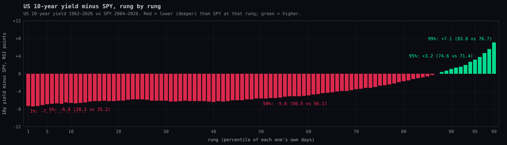
TLT (long Treasuries fund) · 2004–2026 · rung 1 ≤ 26.9 · rung 5 ≤ 32.2 · middle 50.0 · rung 95 ≥ 68.1 · rung 99 ≥ 75.5 · today 31.6 = rung 5
How to read: the cell in row “20”, column “+3” is rung 23 — 23% of days closed with an RSI at or below that number. Red = under 50, green = over 50. Lowest reading ever 15.2, highest 86.0.
Full history (2004–2026, 5,697 days)
| +1 | +2 | +3 | +4 | +5 | +6 | +7 | +8 | +9 | +10 | |
|---|---|---|---|---|---|---|---|---|---|---|
| 0 | 26.9 | 28.9 | 30.3 | 31.4 | 32.2 | 33.1 | 33.9 | 34.5 | 35.1 | 35.8 |
| 10 | 36.3 | 36.7 | 37.3 | 37.8 | 38.2 | 38.7 | 39.1 | 39.5 | 39.9 | 40.3 |
| 20 | 40.7 | 41.1 | 41.4 | 41.7 | 42.1 | 42.4 | 42.8 | 43.1 | 43.4 | 43.8 |
| 30 | 44.0 | 44.3 | 44.7 | 45.0 | 45.4 | 45.7 | 46.0 | 46.3 | 46.6 | 46.9 |
| 40 | 47.2 | 47.5 | 47.8 | 48.1 | 48.5 | 48.8 | 49.2 | 49.5 | 49.7 | 50.0 |
| 50 | 50.4 | 50.6 | 50.9 | 51.3 | 51.6 | 51.9 | 52.2 | 52.5 | 52.8 | 53.1 |
| 60 | 53.3 | 53.6 | 53.8 | 54.2 | 54.5 | 54.7 | 55.1 | 55.4 | 55.7 | 56.0 |
| 70 | 56.4 | 56.6 | 57.0 | 57.3 | 57.6 | 57.9 | 58.3 | 58.7 | 59.1 | 59.5 |
| 80 | 59.8 | 60.2 | 60.6 | 61.0 | 61.6 | 62.0 | 62.5 | 63.0 | 63.5 | 64.0 |
| 90 | 64.5 | 65.1 | 66.1 | 67.2 | 68.1 | 69.4 | 70.6 | 72.6 | 75.5 | 86.0 |
Last 3 years (from 2023-09-21, 756 days)
| +1 | +2 | +3 | +4 | +5 | +6 | +7 | +8 | +9 | +10 | |
|---|---|---|---|---|---|---|---|---|---|---|
| 0 | 27.8 | 28.5 | 29.7 | 30.7 | 31.5 | 32.4 | 33.4 | 34.0 | 34.4 | 34.8 |
| 10 | 35.5 | 36.0 | 36.4 | 36.7 | 37.3 | 37.6 | 37.8 | 38.1 | 38.7 | 38.9 |
| 20 | 39.1 | 39.5 | 39.7 | 40.1 | 40.4 | 40.7 | 40.9 | 41.3 | 41.4 | 41.7 |
| 30 | 42.1 | 42.5 | 42.7 | 43.1 | 43.3 | 43.5 | 43.9 | 44.2 | 44.4 | 44.6 |
| 40 | 45.1 | 45.2 | 45.6 | 46.0 | 46.5 | 46.7 | 47.2 | 47.5 | 47.8 | 48.0 |
| 50 | 48.2 | 48.5 | 48.7 | 49.1 | 49.4 | 49.6 | 50.0 | 50.3 | 50.5 | 50.8 |
| 60 | 51.2 | 51.5 | 51.6 | 52.0 | 52.4 | 52.7 | 53.0 | 53.3 | 53.5 | 53.7 |
| 70 | 54.0 | 54.3 | 54.6 | 54.7 | 55.4 | 55.7 | 56.0 | 56.4 | 57.0 | 57.3 |
| 80 | 57.9 | 58.6 | 58.9 | 59.4 | 59.8 | 60.4 | 60.9 | 61.5 | 62.1 | 62.6 |
| 90 | 62.7 | 63.7 | 63.9 | 64.9 | 65.2 | 66.3 | 67.4 | 68.1 | 70.4 | 74.2 |
Visits a year at or below each rung
| +1 | +2 | +3 | +4 | +5 | +6 | +7 | +8 | +9 | +10 | |
|---|---|---|---|---|---|---|---|---|---|---|
| 0 | 1.1 | 2.4 | 3.0 | 4.1 | 4.7 | 5.1 | 5.5 | 6.3 | 6.8 | 7.8 |
| 10 | 8.4 | 8.5 | 8.9 | 9.8 | 10.3 | 10.7 | 11.2 | 11.5 | 12.0 | 12.2 |
| 20 | 12.2 | 12.1 | 12.7 | 12.8 | 12.5 | 12.5 | 13.2 | 13.5 | 14.0 | 14.2 |
| 30 | 14.4 | 14.5 | 14.5 | 14.4 | 14.5 | 14.5 | 14.6 | 14.2 | 14.4 | 14.7 |
| 40 | 14.8 | 14.9 | 14.8 | 14.6 | 14.4 | 14.8 | 14.6 | 14.5 | 14.8 | 15.0 |
| 50 | 15.0 | 15.5 | 15.2 | 15.5 | 15.8 | 15.6 | 15.8 | 15.6 | 15.8 | 15.6 |
| 60 | 15.2 | 15.1 | 15.0 | 15.1 | 14.8 | 14.4 | 14.2 | 14.2 | 14.1 | 14.1 |
| 70 | 14.0 | 13.7 | 13.6 | 13.2 | 12.9 | 12.8 | 12.4 | 12.3 | 12.2 | 11.8 |
| 80 | 11.6 | 10.9 | 10.3 | 10.1 | 9.6 | 9.0 | 9.0 | 8.8 | 8.0 | 7.1 |
| 90 | 6.6 | 6.3 | 5.6 | 4.9 | 4.3 | 3.5 | 2.7 | 1.9 | 1.1 | 0.0 |
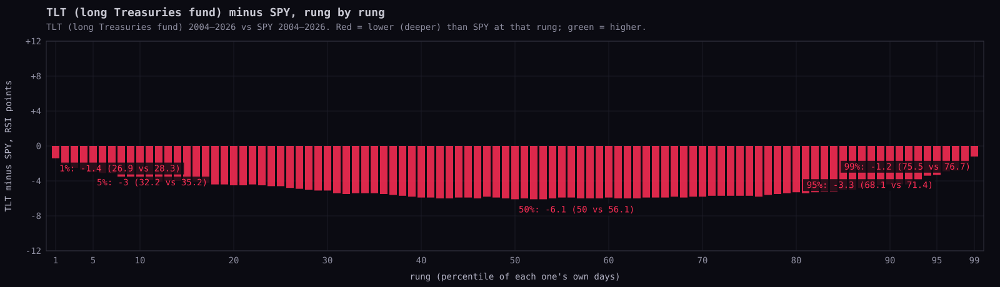
US dollar index · 1971–2026 · rung 1 ≤ 17.9 · rung 5 ≤ 26.9 · middle 49.8 · rung 95 ≥ 71.5 · rung 99 ≥ 80.4 · today 67.2 = rung 91
How to read: the cell in row “20”, column “+3” is rung 23 — 23% of days closed with an RSI at or below that number. Red = under 50, green = over 50. Lowest reading ever 3.7, highest 93.7.
Full history (1971–2026, 14,088 days)
| +1 | +2 | +3 | +4 | +5 | +6 | +7 | +8 | +9 | +10 | |
|---|---|---|---|---|---|---|---|---|---|---|
| 0 | 17.9 | 22.0 | 24.0 | 25.6 | 26.9 | 28.1 | 29.2 | 30.2 | 31.1 | 32.0 |
| 10 | 32.7 | 33.4 | 34.2 | 34.8 | 35.3 | 35.8 | 36.4 | 36.9 | 37.4 | 37.9 |
| 20 | 38.4 | 38.8 | 39.2 | 39.7 | 40.2 | 40.6 | 41.0 | 41.5 | 41.9 | 42.4 |
| 30 | 42.8 | 43.2 | 43.6 | 43.9 | 44.3 | 44.7 | 45.0 | 45.4 | 45.8 | 46.2 |
| 40 | 46.5 | 46.9 | 47.3 | 47.6 | 48.0 | 48.3 | 48.7 | 49.1 | 49.5 | 49.8 |
| 50 | 50.2 | 50.6 | 51.0 | 51.3 | 51.8 | 52.1 | 52.5 | 52.8 | 53.1 | 53.5 |
| 60 | 54.0 | 54.4 | 54.8 | 55.2 | 55.6 | 55.9 | 56.3 | 56.7 | 57.1 | 57.5 |
| 70 | 57.9 | 58.2 | 58.6 | 59.0 | 59.4 | 59.9 | 60.3 | 60.7 | 61.1 | 61.6 |
| 80 | 62.1 | 62.6 | 63.1 | 63.6 | 64.1 | 64.7 | 65.3 | 65.9 | 66.5 | 67.1 |
| 90 | 67.7 | 68.5 | 69.4 | 70.3 | 71.5 | 72.7 | 74.4 | 76.8 | 80.4 | 93.7 |
Last 3 years (from 2023-11-03, 756 days)
| +1 | +2 | +3 | +4 | +5 | +6 | +7 | +8 | +9 | +10 | |
|---|---|---|---|---|---|---|---|---|---|---|
| 0 | 25.9 | 27.7 | 28.6 | 29.2 | 30.9 | 31.9 | 32.9 | 33.3 | 34.0 | 34.6 |
| 10 | 35.2 | 36.1 | 36.8 | 37.2 | 37.5 | 37.8 | 38.1 | 38.3 | 38.6 | 38.7 |
| 20 | 38.9 | 39.3 | 39.6 | 39.9 | 40.2 | 40.7 | 41.2 | 41.6 | 42.2 | 42.5 |
| 30 | 42.9 | 43.2 | 43.6 | 43.9 | 44.1 | 44.5 | 44.9 | 45.2 | 45.5 | 45.7 |
| 40 | 46.1 | 46.4 | 46.6 | 47.0 | 47.2 | 47.4 | 47.9 | 48.2 | 48.5 | 48.8 |
| 50 | 49.1 | 49.3 | 49.7 | 49.9 | 50.2 | 51.1 | 51.3 | 51.5 | 51.9 | 52.1 |
| 60 | 52.5 | 52.9 | 53.4 | 53.9 | 54.4 | 54.9 | 55.4 | 55.6 | 55.9 | 56.4 |
| 70 | 56.9 | 57.1 | 57.4 | 57.7 | 58.2 | 58.5 | 58.7 | 59.3 | 59.6 | 59.8 |
| 80 | 60.3 | 60.9 | 61.4 | 61.8 | 62.2 | 62.5 | 62.9 | 63.5 | 63.9 | 65.0 |
| 90 | 65.7 | 66.4 | 67.0 | 67.3 | 68.6 | 69.5 | 70.7 | 71.7 | 72.9 | 77.0 |
Visits a year at or below each rung
| +1 | +2 | +3 | +4 | +5 | +6 | +7 | +8 | +9 | +10 | |
|---|---|---|---|---|---|---|---|---|---|---|
| 0 | 0.5 | 1.5 | 2.2 | 2.7 | 3.1 | 3.6 | 4.0 | 4.5 | 4.8 | 5.3 |
| 10 | 5.7 | 6.1 | 6.6 | 7.0 | 7.3 | 7.6 | 8.3 | 8.7 | 8.8 | 9.0 |
| 20 | 9.3 | 9.7 | 9.6 | 9.9 | 10.2 | 10.6 | 10.8 | 10.8 | 11.0 | 11.1 |
| 30 | 11.3 | 11.5 | 11.8 | 12.0 | 12.0 | 11.9 | 12.0 | 12.0 | 12.1 | 12.2 |
| 40 | 12.3 | 12.3 | 12.6 | 12.8 | 12.7 | 12.7 | 12.6 | 12.4 | 12.3 | 12.2 |
| 50 | 12.1 | 12.0 | 11.9 | 11.9 | 11.9 | 12.0 | 11.9 | 12.1 | 11.9 | 11.9 |
| 60 | 12.0 | 12.0 | 11.8 | 11.8 | 11.9 | 11.7 | 11.6 | 11.7 | 11.9 | 11.8 |
| 70 | 11.8 | 11.3 | 10.8 | 10.7 | 10.7 | 10.5 | 10.3 | 10.1 | 9.6 | 9.5 |
| 80 | 9.1 | 8.7 | 8.3 | 8.1 | 8.1 | 7.7 | 7.4 | 6.9 | 6.6 | 6.2 |
| 90 | 5.9 | 5.2 | 4.5 | 3.8 | 3.3 | 2.9 | 2.0 | 1.5 | 0.7 | 0.0 |
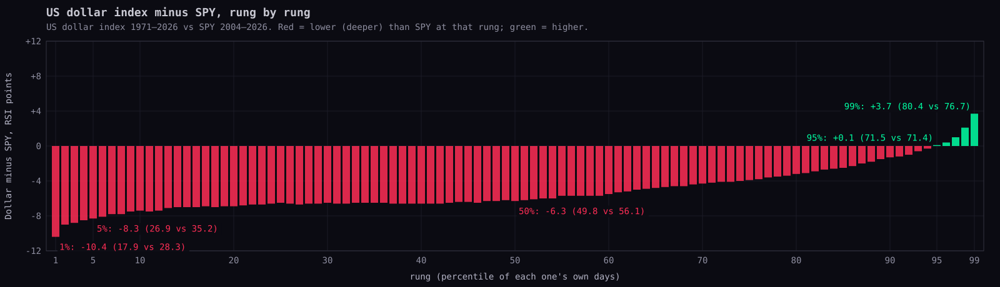
Commodities, crypto
WTI crude oil · 2001–2026 · rung 1 ≤ 23.2 · rung 5 ≤ 30.6 · middle 51.8 · rung 95 ≥ 70.0 · rung 99 ≥ 76.2 · today 48.6 = rung 41
How to read: the cell in row “20”, column “+3” is rung 23 — 23% of days closed with an RSI at or below that number. Red = under 50, green = over 50. Lowest reading ever 13.4, highest 90.3.
Full history (2001–2026, 6,474 days)
| +1 | +2 | +3 | +4 | +5 | +6 | +7 | +8 | +9 | +10 | |
|---|---|---|---|---|---|---|---|---|---|---|
| 0 | 23.2 | 26.4 | 27.7 | 29.3 | 30.6 | 31.7 | 32.5 | 33.3 | 34.1 | 34.8 |
| 10 | 35.6 | 36.2 | 37.1 | 37.7 | 38.3 | 38.9 | 39.6 | 40.0 | 40.5 | 41.0 |
| 20 | 41.5 | 42.0 | 42.3 | 42.9 | 43.3 | 43.7 | 44.1 | 44.4 | 44.8 | 45.2 |
| 30 | 45.5 | 46.0 | 46.4 | 46.6 | 47.0 | 47.3 | 47.6 | 47.9 | 48.2 | 48.5 |
| 40 | 48.8 | 49.2 | 49.5 | 49.8 | 50.1 | 50.4 | 50.8 | 51.2 | 51.5 | 51.8 |
| 50 | 52.2 | 52.5 | 52.8 | 53.1 | 53.3 | 53.7 | 54.0 | 54.4 | 54.7 | 55.1 |
| 60 | 55.4 | 55.8 | 56.0 | 56.3 | 56.6 | 56.9 | 57.2 | 57.6 | 57.8 | 58.2 |
| 70 | 58.5 | 58.8 | 59.2 | 59.5 | 59.9 | 60.2 | 60.6 | 61.0 | 61.4 | 61.8 |
| 80 | 62.2 | 62.6 | 63.0 | 63.6 | 64.1 | 64.5 | 64.9 | 65.5 | 66.0 | 66.7 |
| 90 | 67.3 | 67.9 | 68.5 | 69.2 | 70.0 | 71.1 | 72.3 | 73.7 | 76.2 | 90.3 |
Last 3 years (from 2023-10-26, 756 days)
| +1 | +2 | +3 | +4 | +5 | +6 | +7 | +8 | +9 | +10 | |
|---|---|---|---|---|---|---|---|---|---|---|
| 0 | 28.8 | 30.6 | 31.6 | 32.3 | 33.2 | 33.9 | 34.4 | 35.4 | 36.3 | 37.0 |
| 10 | 37.2 | 37.7 | 38.1 | 38.8 | 39.5 | 39.9 | 40.0 | 40.4 | 40.8 | 41.0 |
| 20 | 41.3 | 41.6 | 42.1 | 42.2 | 42.7 | 43.1 | 43.4 | 43.6 | 43.9 | 44.1 |
| 30 | 44.2 | 44.6 | 44.8 | 44.9 | 45.2 | 45.5 | 45.9 | 46.3 | 46.5 | 46.6 |
| 40 | 46.9 | 47.0 | 47.3 | 47.4 | 47.6 | 47.8 | 47.9 | 48.1 | 48.3 | 48.4 |
| 50 | 48.7 | 49.0 | 49.3 | 49.7 | 49.9 | 50.2 | 50.5 | 50.9 | 51.1 | 51.4 |
| 60 | 51.6 | 51.9 | 52.2 | 52.5 | 52.7 | 52.9 | 53.3 | 53.6 | 53.9 | 54.3 |
| 70 | 54.5 | 54.8 | 55.1 | 55.8 | 56.0 | 56.2 | 56.5 | 57.0 | 57.4 | 58.0 |
| 80 | 58.4 | 58.9 | 59.5 | 59.9 | 60.2 | 61.0 | 61.6 | 62.2 | 62.8 | 63.6 |
| 90 | 64.7 | 65.2 | 66.4 | 67.8 | 68.9 | 69.8 | 71.7 | 73.1 | 77.3 | 90.3 |
Visits a year at or below each rung
| +1 | +2 | +3 | +4 | +5 | +6 | +7 | +8 | +9 | +10 | |
|---|---|---|---|---|---|---|---|---|---|---|
| 0 | 1.0 | 2.1 | 2.2 | 2.9 | 3.5 | 3.9 | 4.2 | 5.0 | 5.4 | 5.7 |
| 10 | 6.5 | 6.5 | 6.7 | 7.1 | 7.5 | 7.9 | 8.4 | 8.6 | 8.8 | 9.5 |
| 20 | 9.6 | 10.3 | 10.5 | 10.8 | 11.2 | 11.7 | 11.9 | 12.4 | 12.9 | 13.0 |
| 30 | 13.0 | 13.3 | 13.7 | 13.9 | 14.1 | 14.1 | 14.1 | 14.4 | 14.5 | 14.6 |
| 40 | 15.1 | 14.9 | 15.1 | 15.2 | 14.8 | 14.6 | 14.9 | 14.9 | 15.2 | 15.5 |
| 50 | 15.3 | 15.3 | 14.9 | 14.9 | 14.9 | 14.9 | 15.3 | 15.3 | 14.8 | 14.8 |
| 60 | 15.2 | 15.0 | 14.8 | 14.8 | 14.4 | 14.1 | 14.2 | 14.3 | 13.9 | 13.6 |
| 70 | 13.2 | 12.7 | 12.3 | 12.2 | 11.9 | 11.8 | 11.4 | 10.9 | 10.5 | 9.8 |
| 80 | 9.4 | 9.4 | 9.0 | 8.8 | 8.8 | 8.3 | 7.9 | 7.6 | 6.8 | 6.7 |
| 90 | 6.2 | 5.8 | 5.2 | 4.9 | 4.2 | 3.6 | 3.1 | 2.3 | 1.3 | 0.0 |
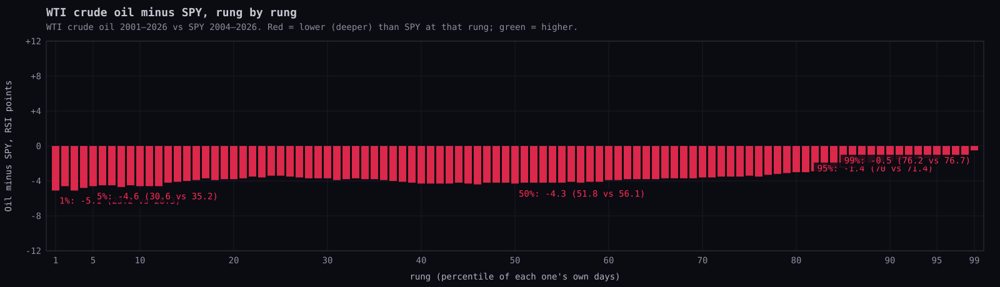
Gold · 1975–2026 · rung 1 ≤ 24.3 · rung 5 ≤ 31.7 · middle 50.4 · rung 95 ≥ 72.4 · rung 99 ≥ 80.2 · today 42.6 = rung 25
How to read: the cell in row “20”, column “+3” is rung 23 — 23% of days closed with an RSI at or below that number. Red = under 50, green = over 50. Lowest reading ever 11.8, highest 92.1.
Full history (1975–2026, 13,030 days)
| +1 | +2 | +3 | +4 | +5 | +6 | +7 | +8 | +9 | +10 | |
|---|---|---|---|---|---|---|---|---|---|---|
| 0 | 24.3 | 27.4 | 29.0 | 30.2 | 31.7 | 32.8 | 33.6 | 34.4 | 35.2 | 35.9 |
| 10 | 36.5 | 37.1 | 37.6 | 38.2 | 38.7 | 39.2 | 39.6 | 40.1 | 40.5 | 40.9 |
| 20 | 41.3 | 41.7 | 42.1 | 42.5 | 42.8 | 43.1 | 43.5 | 43.8 | 44.1 | 44.5 |
| 30 | 44.8 | 45.1 | 45.4 | 45.7 | 46.0 | 46.3 | 46.6 | 46.9 | 47.2 | 47.4 |
| 40 | 47.7 | 48.0 | 48.2 | 48.6 | 48.8 | 49.2 | 49.5 | 49.8 | 50.1 | 50.4 |
| 50 | 50.8 | 51.1 | 51.4 | 51.8 | 52.1 | 52.4 | 52.7 | 53.0 | 53.4 | 53.7 |
| 60 | 54.1 | 54.5 | 54.8 | 55.1 | 55.5 | 55.9 | 56.3 | 56.7 | 57.1 | 57.5 |
| 70 | 57.8 | 58.2 | 58.7 | 59.1 | 59.5 | 59.9 | 60.4 | 60.9 | 61.4 | 61.9 |
| 80 | 62.4 | 62.9 | 63.4 | 63.9 | 64.6 | 65.3 | 65.9 | 66.5 | 67.2 | 68.0 |
| 90 | 68.8 | 69.5 | 70.4 | 71.3 | 72.4 | 73.7 | 75.1 | 76.9 | 80.2 | 92.1 |
Last 3 years (from 2023-10-27, 756 days)
| +1 | +2 | +3 | +4 | +5 | +6 | +7 | +8 | +9 | +10 | |
|---|---|---|---|---|---|---|---|---|---|---|
| 0 | 31.5 | 34.3 | 36.1 | 37.7 | 39.1 | 40.2 | 41.1 | 42.4 | 43.3 | 43.7 |
| 10 | 44.1 | 44.4 | 45.3 | 45.4 | 46.0 | 46.2 | 46.6 | 46.8 | 47.1 | 47.4 |
| 20 | 47.6 | 48.0 | 48.2 | 48.5 | 48.9 | 49.1 | 49.3 | 49.4 | 49.6 | 49.9 |
| 30 | 50.3 | 50.5 | 50.7 | 51.1 | 51.4 | 51.8 | 52.0 | 52.2 | 52.4 | 52.6 |
| 40 | 52.8 | 53.1 | 53.4 | 53.5 | 53.7 | 54.3 | 54.5 | 54.9 | 55.1 | 55.5 |
| 50 | 56.2 | 56.6 | 56.9 | 57.2 | 57.5 | 57.8 | 58.0 | 58.4 | 58.6 | 59.2 |
| 60 | 59.4 | 59.6 | 59.9 | 60.2 | 60.7 | 60.9 | 61.3 | 61.8 | 62.2 | 62.8 |
| 70 | 63.3 | 63.6 | 64.0 | 64.2 | 64.9 | 65.1 | 65.6 | 66.1 | 66.5 | 66.7 |
| 80 | 67.2 | 67.7 | 68.2 | 68.6 | 69.2 | 69.8 | 70.5 | 71.0 | 71.5 | 73.0 |
| 90 | 73.6 | 74.2 | 74.9 | 75.6 | 76.5 | 77.2 | 78.6 | 80.4 | 82.0 | 86.8 |
Visits a year at or below each rung
| +1 | +2 | +3 | +4 | +5 | +6 | +7 | +8 | +9 | +10 | |
|---|---|---|---|---|---|---|---|---|---|---|
| 0 | 1.1 | 2.1 | 2.5 | 2.9 | 3.6 | 4.1 | 4.7 | 5.0 | 5.6 | 5.9 |
| 10 | 6.3 | 6.9 | 7.6 | 7.8 | 8.4 | 8.9 | 9.4 | 9.9 | 10.3 | 10.7 |
| 20 | 11.1 | 11.1 | 11.1 | 11.5 | 11.9 | 12.3 | 12.8 | 13.0 | 13.3 | 13.9 |
| 30 | 13.8 | 13.9 | 14.2 | 14.4 | 14.6 | 14.8 | 14.7 | 14.8 | 14.8 | 14.9 |
| 40 | 14.8 | 14.7 | 14.6 | 14.7 | 14.4 | 14.4 | 14.4 | 14.5 | 14.4 | 14.3 |
| 50 | 14.2 | 14.1 | 13.8 | 13.8 | 13.8 | 13.9 | 13.7 | 13.6 | 13.6 | 13.4 |
| 60 | 13.1 | 12.7 | 12.6 | 12.4 | 12.3 | 12.2 | 12.0 | 12.0 | 11.9 | 11.6 |
| 70 | 11.3 | 11.2 | 11.1 | 10.9 | 11.0 | 10.8 | 10.4 | 9.9 | 9.7 | 9.4 |
| 80 | 9.1 | 9.0 | 8.8 | 8.8 | 8.4 | 8.0 | 7.5 | 7.3 | 6.6 | 6.0 |
| 90 | 5.6 | 5.2 | 5.0 | 4.5 | 3.7 | 3.2 | 2.5 | 1.7 | 1.1 | 0.0 |
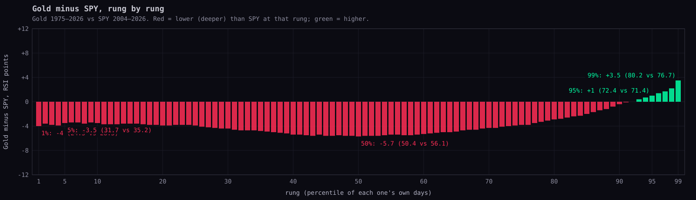
Silver · 1970–2026 · rung 1 ≤ 24.1 · rung 5 ≤ 32.1 · middle 49.9 · rung 95 ≥ 72.0 · rung 99 ≥ 82.1 · today 47.5 = rung 42
How to read: the cell in row “20”, column “+3” is rung 23 — 23% of days closed with an RSI at or below that number. Red = under 50, green = over 50. Lowest reading ever 9.0, highest 96.4.
Full history (1970–2026, 14,267 days)
| +1 | +2 | +3 | +4 | +5 | +6 | +7 | +8 | +9 | +10 | |
|---|---|---|---|---|---|---|---|---|---|---|
| 0 | 24.1 | 27.7 | 29.6 | 31.1 | 32.1 | 33.0 | 33.7 | 34.4 | 35.3 | 35.9 |
| 10 | 36.4 | 36.9 | 37.5 | 38.0 | 38.5 | 39.0 | 39.4 | 39.9 | 40.2 | 40.6 |
| 20 | 41.0 | 41.4 | 41.7 | 42.1 | 42.4 | 42.8 | 43.1 | 43.4 | 43.7 | 44.0 |
| 30 | 44.3 | 44.6 | 44.9 | 45.2 | 45.6 | 45.8 | 46.1 | 46.4 | 46.7 | 46.9 |
| 40 | 47.2 | 47.5 | 47.8 | 48.0 | 48.4 | 48.7 | 49.0 | 49.3 | 49.6 | 49.9 |
| 50 | 50.3 | 50.5 | 50.8 | 51.2 | 51.5 | 51.8 | 52.1 | 52.4 | 52.7 | 53.1 |
| 60 | 53.4 | 53.8 | 54.1 | 54.5 | 54.9 | 55.3 | 55.6 | 55.9 | 56.3 | 56.7 |
| 70 | 57.1 | 57.5 | 57.9 | 58.4 | 58.8 | 59.2 | 59.7 | 60.2 | 60.6 | 61.1 |
| 80 | 61.6 | 62.1 | 62.7 | 63.2 | 63.8 | 64.3 | 65.0 | 65.6 | 66.3 | 66.9 |
| 90 | 67.8 | 68.6 | 69.6 | 70.6 | 72.0 | 73.4 | 75.8 | 78.2 | 82.1 | 96.4 |
Last 3 years (from 2023-10-27, 756 days)
| +1 | +2 | +3 | +4 | +5 | +6 | +7 | +8 | +9 | +10 | |
|---|---|---|---|---|---|---|---|---|---|---|
| 0 | 30.2 | 33.3 | 34.4 | 35.2 | 36.6 | 37.7 | 38.6 | 39.0 | 39.5 | 40.1 |
| 10 | 40.6 | 41.4 | 42.1 | 42.4 | 42.8 | 43.1 | 43.5 | 43.9 | 44.3 | 44.6 |
| 20 | 45.0 | 45.3 | 45.6 | 46.0 | 46.3 | 46.7 | 47.0 | 47.3 | 47.6 | 47.8 |
| 30 | 48.1 | 48.3 | 48.7 | 49.0 | 49.4 | 49.6 | 50.1 | 50.3 | 50.5 | 50.7 |
| 40 | 51.0 | 51.3 | 51.6 | 51.8 | 52.1 | 52.3 | 52.5 | 52.8 | 53.6 | 53.9 |
| 50 | 54.2 | 54.6 | 55.0 | 55.3 | 55.6 | 55.8 | 56.2 | 56.4 | 56.7 | 56.9 |
| 60 | 57.2 | 57.5 | 57.8 | 58.1 | 58.3 | 58.7 | 59.1 | 59.8 | 60.0 | 60.3 |
| 70 | 60.6 | 61.0 | 61.6 | 61.8 | 62.1 | 62.7 | 63.4 | 63.7 | 64.0 | 64.2 |
| 80 | 64.4 | 65.1 | 66.0 | 66.8 | 67.3 | 67.8 | 68.4 | 69.0 | 69.6 | 70.2 |
| 90 | 70.9 | 71.7 | 72.1 | 72.4 | 73.4 | 74.2 | 77.2 | 79.1 | 81.6 | 86.4 |
Visits a year at or below each rung
| +1 | +2 | +3 | +4 | +5 | +6 | +7 | +8 | +9 | +10 | |
|---|---|---|---|---|---|---|---|---|---|---|
| 0 | 0.8 | 1.5 | 2.5 | 3.1 | 4.0 | 4.5 | 5.0 | 5.3 | 5.9 | 6.6 |
| 10 | 7.2 | 7.6 | 8.0 | 8.5 | 9.0 | 9.2 | 9.7 | 10.0 | 10.4 | 10.7 |
| 20 | 11.1 | 11.5 | 11.9 | 12.3 | 12.6 | 13.0 | 13.2 | 13.4 | 13.6 | 13.7 |
| 30 | 14.0 | 14.1 | 14.5 | 14.7 | 14.8 | 14.9 | 14.8 | 14.8 | 14.9 | 15.1 |
| 40 | 15.1 | 15.2 | 15.3 | 15.4 | 15.2 | 15.0 | 15.0 | 15.0 | 14.8 | 14.8 |
| 50 | 14.6 | 14.4 | 14.1 | 14.2 | 14.1 | 14.1 | 13.8 | 14.0 | 14.0 | 14.1 |
| 60 | 14.1 | 13.8 | 13.9 | 13.4 | 13.1 | 13.3 | 13.0 | 12.6 | 12.3 | 12.0 |
| 70 | 11.8 | 11.6 | 11.3 | 11.2 | 10.6 | 10.6 | 10.3 | 10.0 | 9.8 | 9.4 |
| 80 | 8.9 | 8.7 | 8.6 | 8.3 | 8.2 | 7.8 | 7.7 | 7.1 | 6.7 | 6.2 |
| 90 | 6.0 | 5.5 | 4.8 | 4.0 | 3.0 | 2.4 | 1.8 | 1.6 | 0.8 | 0.0 |
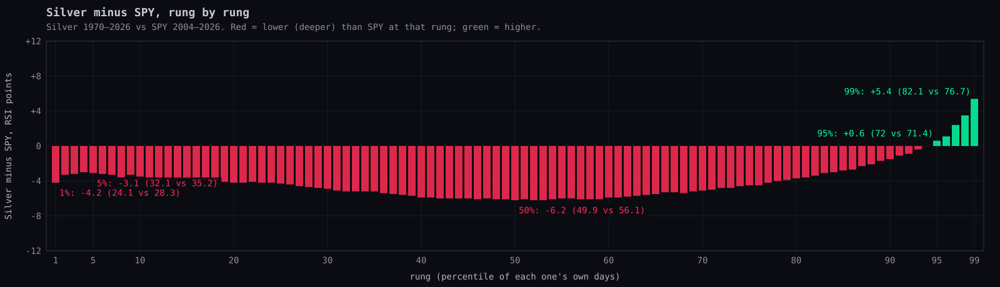
Bitcoin · 2013–2026 · rung 1 ≤ 23.3 · rung 5 ≤ 32.2 · middle 51.6 · rung 95 ≥ 78.4 · rung 99 ≥ 86.3 · today 61.8 = rung 76
How to read: the cell in row “20”, column “+3” is rung 23 — 23% of days closed with an RSI at or below that number. Red = under 50, green = over 50. Lowest reading ever 9.5, highest 94.6.
Full history (2013–2026, 4,917 days)
| +1 | +2 | +3 | +4 | +5 | +6 | +7 | +8 | +9 | +10 | |
|---|---|---|---|---|---|---|---|---|---|---|
| 0 | 23.3 | 26.7 | 29.3 | 30.6 | 32.2 | 33.3 | 34.2 | 35.0 | 35.8 | 36.5 |
| 10 | 37.1 | 37.6 | 38.0 | 38.5 | 39.0 | 39.5 | 40.0 | 40.4 | 40.8 | 41.4 |
| 20 | 41.8 | 42.2 | 42.6 | 42.9 | 43.3 | 43.7 | 44.0 | 44.4 | 44.6 | 45.0 |
| 30 | 45.3 | 45.7 | 46.0 | 46.3 | 46.6 | 47.0 | 47.4 | 47.6 | 47.9 | 48.3 |
| 40 | 48.7 | 49.1 | 49.4 | 49.7 | 50.0 | 50.3 | 50.6 | 50.9 | 51.2 | 51.6 |
| 50 | 51.9 | 52.2 | 52.6 | 53.0 | 53.3 | 53.6 | 53.9 | 54.3 | 54.6 | 54.9 |
| 60 | 55.3 | 55.6 | 56.0 | 56.4 | 56.8 | 57.5 | 58.0 | 58.4 | 58.8 | 59.1 |
| 70 | 59.6 | 60.1 | 60.6 | 61.1 | 61.5 | 62.1 | 62.6 | 63.2 | 63.7 | 64.3 |
| 80 | 64.9 | 65.5 | 66.1 | 66.9 | 67.8 | 68.4 | 69.1 | 69.7 | 70.5 | 71.4 |
| 90 | 72.6 | 73.9 | 75.4 | 76.9 | 78.4 | 80.0 | 81.4 | 83.5 | 86.3 | 94.6 |
Last 3 years (from 2023-09-29, 1,095 days)
| +1 | +2 | +3 | +4 | +5 | +6 | +7 | +8 | +9 | +10 | |
|---|---|---|---|---|---|---|---|---|---|---|
| 0 | 24.2 | 28.0 | 30.3 | 31.7 | 32.9 | 33.6 | 34.6 | 35.9 | 36.7 | 37.4 |
| 10 | 38.1 | 38.6 | 39.3 | 40.0 | 40.5 | 41.2 | 41.7 | 42.1 | 42.3 | 42.6 |
| 20 | 43.0 | 43.3 | 43.6 | 43.9 | 44.3 | 44.6 | 44.8 | 45.0 | 45.3 | 45.6 |
| 30 | 45.8 | 46.1 | 46.3 | 46.6 | 46.9 | 47.3 | 47.5 | 47.9 | 48.3 | 48.8 |
| 40 | 49.5 | 49.9 | 50.1 | 50.5 | 50.9 | 51.2 | 51.4 | 51.7 | 52.0 | 52.5 |
| 50 | 53.0 | 53.2 | 53.6 | 53.8 | 54.2 | 54.6 | 54.8 | 55.1 | 55.3 | 55.8 |
| 60 | 56.3 | 56.6 | 57.1 | 57.7 | 57.9 | 58.4 | 58.8 | 59.1 | 59.4 | 60.0 |
| 70 | 60.6 | 61.1 | 61.5 | 61.8 | 62.1 | 62.4 | 62.9 | 63.3 | 63.8 | 64.3 |
| 80 | 64.9 | 65.2 | 65.6 | 66.1 | 66.8 | 67.7 | 68.4 | 69.1 | 69.7 | 70.9 |
| 90 | 72.2 | 73.3 | 74.6 | 75.8 | 76.9 | 78.4 | 80.5 | 81.6 | 82.7 | 87.7 |
Visits a year at or below each rung
| +1 | +2 | +3 | +4 | +5 | +6 | +7 | +8 | +9 | +10 | |
|---|---|---|---|---|---|---|---|---|---|---|
| 0 | 1.5 | 2.8 | 3.9 | 5.0 | 5.9 | 6.5 | 7.3 | 8.0 | 8.4 | 9.4 |
| 10 | 10.3 | 10.9 | 10.9 | 11.6 | 12.5 | 12.6 | 13.0 | 13.2 | 13.1 | 13.2 |
| 20 | 13.7 | 14.6 | 15.4 | 16.1 | 16.6 | 16.9 | 17.3 | 17.1 | 17.0 | 16.9 |
| 30 | 17.1 | 16.8 | 16.7 | 16.4 | 16.6 | 16.9 | 17.0 | 17.0 | 16.7 | 17.0 |
| 40 | 17.3 | 17.7 | 17.3 | 17.2 | 17.0 | 17.0 | 16.9 | 17.0 | 17.0 | 16.8 |
| 50 | 17.1 | 16.8 | 16.3 | 16.6 | 17.1 | 16.2 | 15.8 | 16.0 | 16.2 | 16.2 |
| 60 | 15.4 | 15.4 | 14.9 | 14.3 | 14.1 | 14.0 | 14.0 | 14.4 | 14.7 | 14.3 |
| 70 | 14.1 | 14.0 | 13.7 | 13.5 | 13.2 | 13.2 | 12.6 | 12.4 | 11.4 | 11.0 |
| 80 | 10.0 | 9.9 | 9.5 | 9.2 | 9.2 | 9.4 | 8.9 | 8.5 | 7.6 | 7.4 |
| 90 | 6.6 | 5.3 | 4.9 | 4.8 | 4.4 | 4.1 | 4.0 | 3.0 | 1.9 | 0.1 |
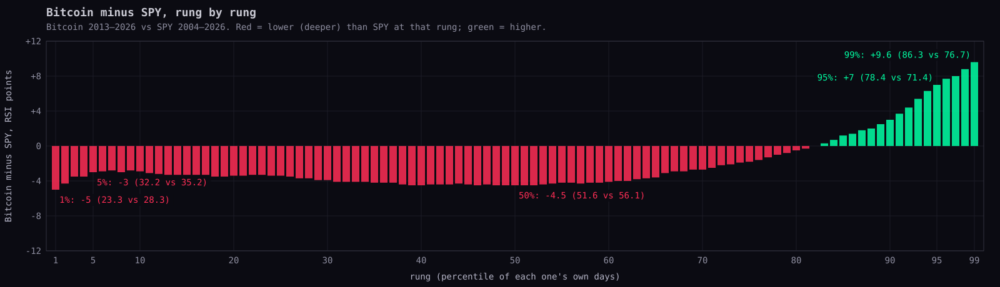
Sectors
XLK Technology · 2004–2026 · rung 1 ≤ 29.1 · rung 5 ≤ 34.7 · middle 55.1 · rung 95 ≥ 72.9 · rung 99 ≥ 78.6 · today 65.4 = rung 81
How to read: the cell in row “20”, column “+3” is rung 23 — 23% of days closed with an RSI at or below that number. Red = under 50, green = over 50. Lowest reading ever 20.6, highest 84.9.
Full history (2004–2026, 5,697 days)
| +1 | +2 | +3 | +4 | +5 | +6 | +7 | +8 | +9 | +10 | |
|---|---|---|---|---|---|---|---|---|---|---|
| 0 | 29.1 | 31.2 | 32.3 | 33.6 | 34.7 | 35.7 | 36.5 | 37.5 | 38.2 | 39.0 |
| 10 | 39.7 | 40.2 | 40.7 | 41.2 | 41.8 | 42.3 | 42.7 | 43.3 | 43.7 | 44.1 |
| 20 | 44.6 | 45.0 | 45.3 | 45.8 | 46.2 | 46.8 | 47.1 | 47.5 | 47.9 | 48.2 |
| 30 | 48.7 | 49.0 | 49.4 | 49.7 | 50.0 | 50.3 | 50.6 | 50.9 | 51.3 | 51.7 |
| 40 | 52.0 | 52.4 | 52.8 | 53.1 | 53.5 | 53.8 | 54.1 | 54.4 | 54.8 | 55.1 |
| 50 | 55.5 | 55.8 | 56.1 | 56.4 | 56.8 | 57.2 | 57.4 | 57.8 | 58.1 | 58.4 |
| 60 | 58.7 | 59.1 | 59.3 | 59.7 | 60.0 | 60.4 | 60.6 | 60.9 | 61.2 | 61.5 |
| 70 | 61.8 | 62.2 | 62.6 | 62.9 | 63.2 | 63.7 | 64.1 | 64.4 | 64.8 | 65.2 |
| 80 | 65.6 | 66.1 | 66.4 | 66.8 | 67.3 | 67.8 | 68.2 | 68.7 | 69.2 | 69.8 |
| 90 | 70.3 | 70.8 | 71.5 | 72.2 | 72.9 | 73.6 | 74.7 | 76.3 | 78.6 | 84.9 |
Last 3 years (from 2023-09-21, 756 days)
| +1 | +2 | +3 | +4 | +5 | +6 | +7 | +8 | +9 | +10 | |
|---|---|---|---|---|---|---|---|---|---|---|
| 0 | 30.7 | 33.1 | 34.0 | 35.5 | 36.8 | 38.2 | 38.6 | 39.7 | 40.4 | 40.9 |
| 10 | 41.4 | 41.7 | 42.2 | 42.7 | 43.1 | 44.0 | 44.3 | 44.6 | 45.0 | 45.5 |
| 20 | 46.1 | 46.5 | 47.0 | 47.2 | 47.5 | 47.8 | 48.1 | 48.3 | 48.8 | 49.1 |
| 30 | 49.4 | 49.9 | 50.3 | 50.6 | 50.9 | 51.4 | 51.7 | 52.0 | 52.5 | 52.8 |
| 40 | 53.1 | 53.4 | 53.7 | 54.0 | 54.3 | 54.6 | 54.8 | 55.1 | 55.5 | 55.8 |
| 50 | 55.9 | 56.2 | 56.4 | 56.7 | 56.9 | 57.3 | 57.8 | 58.2 | 58.5 | 58.8 |
| 60 | 59.1 | 59.4 | 59.7 | 60.1 | 60.4 | 60.6 | 60.9 | 61.3 | 61.7 | 62.0 |
| 70 | 62.8 | 63.1 | 63.4 | 64.1 | 64.5 | 65.1 | 65.5 | 65.9 | 66.5 | 66.9 |
| 80 | 67.7 | 68.1 | 68.6 | 69.4 | 69.9 | 70.4 | 70.8 | 71.3 | 71.8 | 72.2 |
| 90 | 72.5 | 72.9 | 73.3 | 73.7 | 74.3 | 75.3 | 76.1 | 77.3 | 79.9 | 84.9 |
Visits a year at or below each rung
| +1 | +2 | +3 | +4 | +5 | +6 | +7 | +8 | +9 | +10 | |
|---|---|---|---|---|---|---|---|---|---|---|
| 0 | 1.2 | 2.5 | 3.5 | 4.4 | 5.5 | 6.0 | 6.4 | 7.0 | 7.5 | 8.0 |
| 10 | 8.4 | 8.9 | 9.7 | 9.8 | 10.1 | 10.8 | 11.2 | 11.1 | 11.2 | 11.3 |
| 20 | 11.3 | 11.6 | 11.6 | 12.1 | 12.3 | 12.4 | 12.8 | 12.9 | 13.1 | 13.4 |
| 30 | 13.9 | 14.0 | 13.9 | 14.3 | 14.6 | 14.8 | 14.7 | 15.0 | 14.8 | 14.8 |
| 40 | 14.9 | 14.6 | 14.8 | 14.6 | 14.4 | 14.4 | 14.4 | 14.3 | 14.1 | 14.2 |
| 50 | 14.2 | 14.2 | 14.3 | 13.8 | 14.1 | 13.9 | 13.6 | 13.5 | 13.7 | 13.3 |
| 60 | 13.4 | 13.4 | 12.9 | 12.6 | 12.4 | 12.3 | 12.2 | 11.8 | 12.1 | 12.1 |
| 70 | 12.1 | 11.6 | 10.9 | 10.6 | 10.3 | 10.3 | 9.8 | 9.5 | 9.2 | 9.1 |
| 80 | 9.1 | 9.0 | 8.6 | 8.5 | 8.1 | 8.1 | 7.8 | 7.3 | 6.5 | 6.1 |
| 90 | 5.9 | 5.6 | 5.1 | 4.5 | 3.9 | 3.5 | 2.7 | 1.8 | 1.0 | 0.0 |
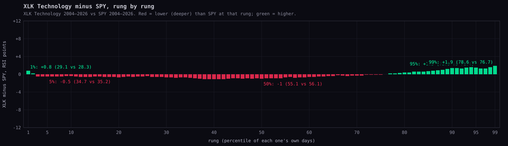
SMH Semiconductors · 2004–2026 · rung 1 ≤ 28.3 · rung 5 ≤ 34.6 · middle 53.7 · rung 95 ≥ 71.5 · rung 99 ≥ 77.6 · today 62.7 = rung 79
How to read: the cell in row “20”, column “+3” is rung 23 — 23% of days closed with an RSI at or below that number. Red = under 50, green = over 50. Lowest reading ever 21.8, highest 84.2.
Full history (2004–2026, 5,697 days)
| +1 | +2 | +3 | +4 | +5 | +6 | +7 | +8 | +9 | +10 | |
|---|---|---|---|---|---|---|---|---|---|---|
| 0 | 28.3 | 30.8 | 32.2 | 33.5 | 34.6 | 35.5 | 36.3 | 37.0 | 37.7 | 38.4 |
| 10 | 38.9 | 39.5 | 40.0 | 40.6 | 41.2 | 41.6 | 42.0 | 42.5 | 43.0 | 43.5 |
| 20 | 43.9 | 44.2 | 44.6 | 45.1 | 45.4 | 45.7 | 46.1 | 46.4 | 46.8 | 47.2 |
| 30 | 47.4 | 47.8 | 48.2 | 48.6 | 48.9 | 49.2 | 49.6 | 49.9 | 50.2 | 50.5 |
| 40 | 50.8 | 51.1 | 51.4 | 51.9 | 52.2 | 52.5 | 52.9 | 53.2 | 53.5 | 53.7 |
| 50 | 54.1 | 54.3 | 54.6 | 54.9 | 55.3 | 55.6 | 55.9 | 56.2 | 56.5 | 56.8 |
| 60 | 57.2 | 57.5 | 57.7 | 58.1 | 58.3 | 58.6 | 58.9 | 59.3 | 59.6 | 59.9 |
| 70 | 60.3 | 60.6 | 60.9 | 61.2 | 61.6 | 61.8 | 62.2 | 62.6 | 63.0 | 63.3 |
| 80 | 63.7 | 64.0 | 64.4 | 64.9 | 65.4 | 65.9 | 66.4 | 66.9 | 67.4 | 67.9 |
| 90 | 68.5 | 69.1 | 70.0 | 70.7 | 71.5 | 72.7 | 73.9 | 75.4 | 77.6 | 84.2 |
Last 3 years (from 2023-09-21, 756 days)
| +1 | +2 | +3 | +4 | +5 | +6 | +7 | +8 | +9 | +10 | |
|---|---|---|---|---|---|---|---|---|---|---|
| 0 | 32.6 | 34.2 | 35.4 | 36.7 | 38.1 | 38.7 | 39.4 | 40.3 | 41.1 | 41.6 |
| 10 | 42.1 | 42.5 | 43.0 | 43.5 | 44.3 | 44.8 | 45.1 | 45.4 | 45.8 | 46.2 |
| 20 | 46.6 | 46.8 | 47.1 | 47.4 | 47.9 | 48.1 | 48.4 | 48.9 | 49.2 | 49.6 |
| 30 | 50.2 | 50.4 | 51.0 | 51.3 | 51.5 | 51.8 | 52.2 | 52.5 | 52.9 | 53.1 |
| 40 | 53.5 | 53.8 | 54.1 | 54.4 | 54.7 | 55.0 | 55.4 | 55.6 | 55.9 | 56.4 |
| 50 | 56.8 | 57.0 | 57.3 | 57.8 | 58.1 | 58.3 | 58.7 | 59.2 | 59.4 | 59.8 |
| 60 | 60.5 | 60.6 | 61.0 | 61.1 | 61.4 | 61.8 | 62.2 | 62.5 | 63.1 | 63.5 |
| 70 | 63.9 | 64.1 | 64.8 | 65.4 | 66.0 | 66.2 | 66.7 | 67.0 | 67.2 | 67.7 |
| 80 | 68.0 | 68.5 | 69.0 | 69.8 | 70.2 | 70.6 | 71.0 | 71.6 | 72.4 | 72.8 |
| 90 | 73.3 | 73.8 | 74.1 | 74.8 | 75.4 | 76.2 | 76.8 | 78.3 | 80.9 | 84.2 |
Visits a year at or below each rung
| +1 | +2 | +3 | +4 | +5 | +6 | +7 | +8 | +9 | +10 | |
|---|---|---|---|---|---|---|---|---|---|---|
| 0 | 1.3 | 2.3 | 3.0 | 3.9 | 4.7 | 5.4 | 5.8 | 6.4 | 6.8 | 7.5 |
| 10 | 8.0 | 8.9 | 9.1 | 9.5 | 9.5 | 9.6 | 10.1 | 10.7 | 10.9 | 11.5 |
| 20 | 11.8 | 12.1 | 12.5 | 12.7 | 13.0 | 13.4 | 13.7 | 13.8 | 13.7 | 14.0 |
| 30 | 14.2 | 14.7 | 14.8 | 15.2 | 15.4 | 15.1 | 14.9 | 15.1 | 15.1 | 15.3 |
| 40 | 15.3 | 15.2 | 15.1 | 15.1 | 15.5 | 15.2 | 15.3 | 14.9 | 14.5 | 14.6 |
| 50 | 14.8 | 14.8 | 14.4 | 14.3 | 14.8 | 15.2 | 15.1 | 15.2 | 15.2 | 15.3 |
| 60 | 15.2 | 14.9 | 14.3 | 14.0 | 14.0 | 14.1 | 13.4 | 13.2 | 13.0 | 13.3 |
| 70 | 13.2 | 13.2 | 13.0 | 12.9 | 13.0 | 12.7 | 12.2 | 11.8 | 11.8 | 11.5 |
| 80 | 10.9 | 10.3 | 9.9 | 9.1 | 8.2 | 7.5 | 7.2 | 6.8 | 6.6 | 6.5 |
| 90 | 5.8 | 5.5 | 4.9 | 4.5 | 3.8 | 3.1 | 2.4 | 2.0 | 1.1 | 0.0 |
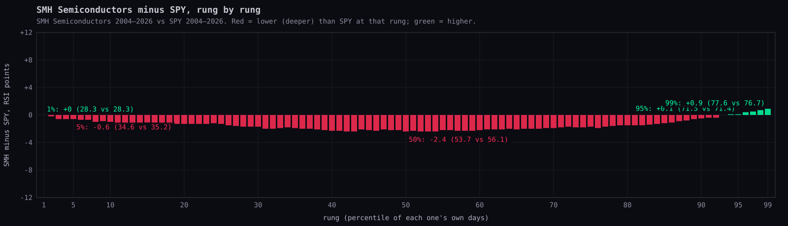
XLC Communication · 2018–2026 · rung 1 ≤ 27.0 · rung 5 ≤ 34.9 · middle 55.2 · rung 95 ≥ 70.6 · rung 99 ≥ 76.8 · today 51.5 = rung 39
How to read: the cell in row “20”, column “+3” is rung 23 — 23% of days closed with an RSI at or below that number. Red = under 50, green = over 50. Lowest reading ever 21.7, highest 83.1.
Full history (2018–2026, 1,979 days)
| +1 | +2 | +3 | +4 | +5 | +6 | +7 | +8 | +9 | +10 | |
|---|---|---|---|---|---|---|---|---|---|---|
| 0 | 27.0 | 30.7 | 32.5 | 33.8 | 34.9 | 36.0 | 37.2 | 37.9 | 38.4 | 39.1 |
| 10 | 39.7 | 40.2 | 40.7 | 41.1 | 41.4 | 42.2 | 42.6 | 43.0 | 43.3 | 43.7 |
| 20 | 44.2 | 44.7 | 45.4 | 45.9 | 46.3 | 46.9 | 47.3 | 47.9 | 48.2 | 48.6 |
| 30 | 49.0 | 49.3 | 49.6 | 50.0 | 50.3 | 50.6 | 51.0 | 51.4 | 51.8 | 52.2 |
| 40 | 52.5 | 52.8 | 53.2 | 53.4 | 53.7 | 54.0 | 54.2 | 54.5 | 54.8 | 55.2 |
| 50 | 55.4 | 55.6 | 55.9 | 56.2 | 56.7 | 57.0 | 57.2 | 57.5 | 57.7 | 58.0 |
| 60 | 58.3 | 58.6 | 58.9 | 59.2 | 59.5 | 59.8 | 60.0 | 60.1 | 60.4 | 60.6 |
| 70 | 60.8 | 61.2 | 61.6 | 61.9 | 62.1 | 62.4 | 62.8 | 63.2 | 63.5 | 63.8 |
| 80 | 64.2 | 64.6 | 64.8 | 65.2 | 65.5 | 65.9 | 66.4 | 66.9 | 67.2 | 67.7 |
| 90 | 68.3 | 68.7 | 69.3 | 70.0 | 70.6 | 71.7 | 72.8 | 74.2 | 76.8 | 83.1 |
Last 3 years (from 2023-09-21, 756 days)
| +1 | +2 | +3 | +4 | +5 | +6 | +7 | +8 | +9 | +10 | |
|---|---|---|---|---|---|---|---|---|---|---|
| 0 | 27.2 | 31.5 | 33.1 | 34.5 | 36.2 | 37.7 | 38.3 | 39.3 | 40.1 | 40.7 |
| 10 | 41.0 | 41.3 | 42.1 | 42.6 | 43.3 | 43.8 | 44.3 | 45.0 | 45.7 | 46.0 |
| 20 | 46.6 | 47.1 | 47.6 | 48.1 | 48.4 | 48.8 | 49.1 | 49.4 | 49.7 | 50.0 |
| 30 | 50.2 | 50.6 | 50.9 | 51.4 | 52.1 | 52.3 | 52.7 | 53.2 | 53.4 | 53.7 |
| 40 | 53.9 | 54.2 | 54.3 | 54.6 | 54.9 | 55.3 | 55.5 | 55.7 | 56.1 | 56.4 |
| 50 | 56.7 | 57.0 | 57.2 | 57.4 | 57.5 | 57.7 | 58.0 | 58.3 | 58.7 | 59.1 |
| 60 | 59.2 | 59.7 | 59.9 | 60.1 | 60.2 | 60.5 | 60.7 | 60.8 | 61.2 | 61.7 |
| 70 | 62.1 | 62.3 | 62.6 | 63.0 | 63.4 | 63.7 | 64.0 | 64.1 | 64.3 | 64.6 |
| 80 | 64.8 | 65.1 | 65.4 | 65.8 | 66.4 | 66.7 | 67.1 | 67.5 | 67.9 | 68.4 |
| 90 | 68.7 | 69.1 | 69.7 | 70.5 | 71.6 | 72.7 | 74.4 | 76.1 | 77.4 | 81.1 |
Visits a year at or below each rung
| +1 | +2 | +3 | +4 | +5 | +6 | +7 | +8 | +9 | +10 | |
|---|---|---|---|---|---|---|---|---|---|---|
| 0 | 1.4 | 2.5 | 3.5 | 5.0 | 5.3 | 5.6 | 6.1 | 6.7 | 7.1 | 8.0 |
| 10 | 8.4 | 8.6 | 10.2 | 10.9 | 11.2 | 11.6 | 11.3 | 11.8 | 11.9 | 11.6 |
| 20 | 11.7 | 11.7 | 11.0 | 10.7 | 10.7 | 11.0 | 10.7 | 11.3 | 11.3 | 11.4 |
| 30 | 11.8 | 11.4 | 11.7 | 11.9 | 12.4 | 12.6 | 12.7 | 12.8 | 13.4 | 14.1 |
| 40 | 14.0 | 14.6 | 14.2 | 14.2 | 14.6 | 14.5 | 14.7 | 14.6 | 15.7 | 15.9 |
| 50 | 16.4 | 16.8 | 16.4 | 17.0 | 16.6 | 15.9 | 15.1 | 15.0 | 14.7 | 14.8 |
| 60 | 14.3 | 14.3 | 15.0 | 15.4 | 15.9 | 15.6 | 15.5 | 15.1 | 14.8 | 14.2 |
| 70 | 14.0 | 14.0 | 13.8 | 13.4 | 12.8 | 12.6 | 12.2 | 11.9 | 11.7 | 11.3 |
| 80 | 10.4 | 10.9 | 10.7 | 10.5 | 10.3 | 9.4 | 9.7 | 8.5 | 8.3 | 7.9 |
| 90 | 6.8 | 6.2 | 5.8 | 5.0 | 4.3 | 3.4 | 2.9 | 1.9 | 1.8 | 0.1 |
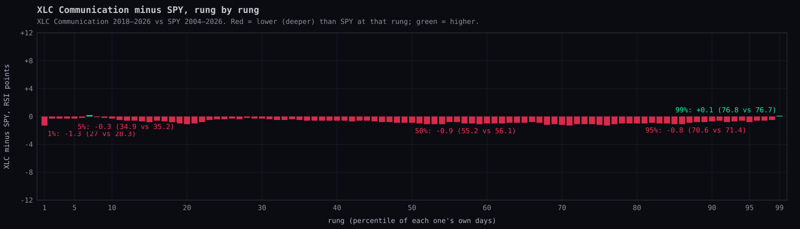
XLY Consumer discretionary · 2004–2026 · rung 1 ≤ 27.6 · rung 5 ≤ 33.9 · middle 54.4 · rung 95 ≥ 72.1 · rung 99 ≥ 79.0 · today 38.7 = rung 11
How to read: the cell in row “20”, column “+3” is rung 23 — 23% of days closed with an RSI at or below that number. Red = under 50, green = over 50. Lowest reading ever 18.4, highest 87.9.
Full history (2004–2026, 5,697 days)
| +1 | +2 | +3 | +4 | +5 | +6 | +7 | +8 | +9 | +10 | |
|---|---|---|---|---|---|---|---|---|---|---|
| 0 | 27.6 | 30.0 | 31.3 | 32.6 | 33.9 | 35.1 | 36.0 | 36.7 | 37.4 | 38.3 |
| 10 | 39.0 | 39.7 | 40.3 | 40.9 | 41.6 | 42.1 | 42.5 | 43.1 | 43.6 | 43.9 |
| 20 | 44.4 | 44.7 | 45.2 | 45.6 | 46.0 | 46.4 | 46.8 | 47.2 | 47.5 | 47.9 |
| 30 | 48.3 | 48.6 | 48.9 | 49.3 | 49.6 | 50.1 | 50.4 | 50.7 | 51.1 | 51.4 |
| 40 | 51.7 | 52.0 | 52.2 | 52.5 | 52.9 | 53.2 | 53.5 | 53.9 | 54.1 | 54.4 |
| 50 | 54.7 | 55.0 | 55.2 | 55.5 | 55.8 | 56.0 | 56.3 | 56.6 | 56.8 | 57.1 |
| 60 | 57.4 | 57.7 | 57.9 | 58.2 | 58.5 | 58.8 | 59.1 | 59.5 | 59.8 | 60.2 |
| 70 | 60.5 | 60.7 | 61.0 | 61.3 | 61.7 | 62.0 | 62.3 | 62.7 | 63.1 | 63.4 |
| 80 | 63.7 | 64.1 | 64.7 | 65.1 | 65.7 | 66.1 | 66.6 | 67.2 | 67.7 | 68.3 |
| 90 | 69.0 | 69.5 | 70.4 | 71.2 | 72.1 | 73.3 | 74.9 | 76.6 | 79.0 | 87.9 |
Last 3 years (from 2023-09-21, 756 days)
| +1 | +2 | +3 | +4 | +5 | +6 | +7 | +8 | +9 | +10 | |
|---|---|---|---|---|---|---|---|---|---|---|
| 0 | 27.9 | 29.7 | 31.0 | 31.8 | 33.1 | 34.1 | 34.8 | 35.9 | 36.5 | 37.2 |
| 10 | 38.2 | 38.8 | 39.2 | 39.8 | 40.5 | 41.0 | 41.5 | 42.0 | 42.5 | 43.3 |
| 20 | 43.6 | 43.9 | 44.1 | 44.6 | 44.7 | 45.1 | 45.6 | 46.1 | 46.5 | 47.1 |
| 30 | 47.4 | 47.7 | 47.9 | 48.3 | 48.6 | 48.9 | 49.5 | 50.3 | 50.6 | 50.8 |
| 40 | 51.3 | 51.6 | 51.9 | 52.0 | 52.3 | 52.5 | 52.9 | 53.3 | 53.5 | 53.7 |
| 50 | 54.0 | 54.2 | 54.4 | 54.5 | 54.7 | 55.0 | 55.3 | 55.5 | 55.7 | 55.9 |
| 60 | 56.1 | 56.3 | 56.5 | 56.7 | 57.0 | 57.4 | 57.7 | 57.9 | 58.1 | 58.3 |
| 70 | 58.6 | 59.1 | 59.4 | 59.5 | 59.8 | 60.2 | 60.5 | 60.9 | 61.3 | 61.7 |
| 80 | 62.2 | 62.6 | 63.2 | 63.4 | 63.8 | 64.4 | 64.8 | 65.2 | 65.9 | 66.4 |
| 90 | 67.0 | 67.8 | 68.7 | 69.3 | 70.1 | 71.4 | 72.6 | 74.9 | 78.8 | 83.4 |
Visits a year at or below each rung
| +1 | +2 | +3 | +4 | +5 | +6 | +7 | +8 | +9 | +10 | |
|---|---|---|---|---|---|---|---|---|---|---|
| 0 | 1.5 | 2.9 | 3.6 | 4.1 | 4.7 | 5.4 | 5.6 | 6.0 | 6.8 | 7.0 |
| 10 | 7.7 | 8.5 | 8.6 | 9.0 | 9.3 | 9.7 | 10.3 | 10.9 | 11.6 | 11.4 |
| 20 | 11.7 | 12.3 | 12.6 | 13.0 | 12.7 | 13.2 | 13.3 | 13.3 | 13.4 | 13.4 |
| 30 | 14.1 | 14.4 | 14.1 | 14.0 | 14.0 | 13.7 | 13.7 | 14.1 | 14.6 | 14.8 |
| 40 | 15.0 | 15.1 | 15.2 | 15.5 | 15.7 | 15.9 | 16.0 | 16.0 | 16.0 | 15.9 |
| 50 | 15.9 | 16.2 | 16.3 | 16.5 | 16.4 | 16.1 | 15.9 | 15.7 | 15.8 | 15.6 |
| 60 | 15.2 | 15.1 | 14.9 | 14.6 | 14.8 | 14.4 | 13.6 | 13.5 | 13.5 | 13.1 |
| 70 | 12.8 | 12.8 | 12.7 | 12.6 | 12.4 | 11.8 | 11.1 | 10.6 | 10.0 | 9.4 |
| 80 | 8.9 | 8.7 | 8.0 | 7.6 | 7.0 | 6.8 | 6.6 | 6.5 | 6.0 | 5.5 |
| 90 | 5.4 | 5.0 | 4.7 | 3.9 | 3.4 | 2.6 | 2.0 | 1.7 | 0.9 | 0.0 |
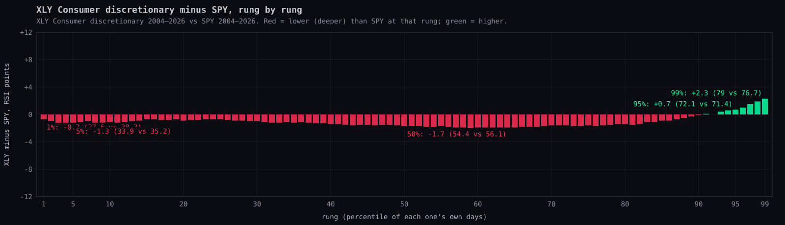
XLF Financials · 2004–2026 · rung 1 ≤ 26.7 · rung 5 ≤ 33.7 · middle 53.3 · rung 95 ≥ 70.1 · rung 99 ≥ 76.4 · today 32.9 = rung 5
How to read: the cell in row “20”, column “+3” is rung 23 — 23% of days closed with an RSI at or below that number. Red = under 50, green = over 50. Lowest reading ever 15.4, highest 84.5.
Full history (2004–2026, 5,697 days)
| +1 | +2 | +3 | +4 | +5 | +6 | +7 | +8 | +9 | +10 | |
|---|---|---|---|---|---|---|---|---|---|---|
| 0 | 26.7 | 29.3 | 31.1 | 32.5 | 33.7 | 34.7 | 35.7 | 36.4 | 37.0 | 37.7 |
| 10 | 38.4 | 39.1 | 39.7 | 40.2 | 40.8 | 41.4 | 41.8 | 42.2 | 42.7 | 43.0 |
| 20 | 43.5 | 43.9 | 44.3 | 44.6 | 45.0 | 45.5 | 45.8 | 46.2 | 46.5 | 46.9 |
| 30 | 47.3 | 47.6 | 48.0 | 48.3 | 48.7 | 49.0 | 49.4 | 49.6 | 49.9 | 50.1 |
| 40 | 50.5 | 50.8 | 51.1 | 51.5 | 51.8 | 52.1 | 52.4 | 52.7 | 53.0 | 53.3 |
| 50 | 53.6 | 53.9 | 54.3 | 54.6 | 54.9 | 55.3 | 55.6 | 55.8 | 56.2 | 56.4 |
| 60 | 56.7 | 57.1 | 57.4 | 57.8 | 58.1 | 58.3 | 58.6 | 58.9 | 59.2 | 59.6 |
| 70 | 59.9 | 60.2 | 60.5 | 60.9 | 61.2 | 61.5 | 61.9 | 62.2 | 62.5 | 62.9 |
| 80 | 63.2 | 63.6 | 64.0 | 64.4 | 64.8 | 65.2 | 65.7 | 66.1 | 66.5 | 67.0 |
| 90 | 67.4 | 68.1 | 68.5 | 69.3 | 70.1 | 71.2 | 72.4 | 73.9 | 76.4 | 84.5 |
Last 3 years (from 2023-09-21, 756 days)
| +1 | +2 | +3 | +4 | +5 | +6 | +7 | +8 | +9 | +10 | |
|---|---|---|---|---|---|---|---|---|---|---|
| 0 | 28.5 | 30.4 | 32.9 | 33.9 | 34.7 | 35.5 | 36.6 | 37.3 | 37.8 | 39.0 |
| 10 | 40.0 | 40.9 | 41.5 | 42.3 | 43.0 | 43.4 | 43.7 | 44.2 | 44.6 | 44.9 |
| 20 | 45.7 | 46.0 | 46.3 | 46.7 | 47.1 | 47.7 | 47.8 | 48.3 | 49.0 | 49.3 |
| 30 | 49.5 | 49.8 | 50.4 | 51.0 | 51.3 | 51.7 | 52.2 | 52.5 | 52.7 | 53.0 |
| 40 | 53.4 | 53.7 | 54.1 | 54.3 | 54.7 | 55.0 | 55.4 | 55.7 | 56.0 | 56.2 |
| 50 | 56.5 | 56.9 | 57.3 | 57.7 | 58.1 | 58.4 | 58.8 | 59.1 | 59.3 | 59.5 |
| 60 | 59.9 | 60.0 | 60.4 | 60.7 | 61.2 | 61.5 | 61.7 | 62.1 | 62.3 | 62.6 |
| 70 | 62.9 | 63.3 | 63.5 | 64.0 | 64.4 | 64.7 | 64.9 | 65.1 | 65.5 | 65.9 |
| 80 | 66.3 | 66.6 | 67.0 | 67.3 | 67.8 | 68.1 | 68.3 | 68.4 | 68.8 | 69.2 |
| 90 | 69.5 | 70.2 | 70.7 | 71.5 | 72.0 | 72.6 | 73.3 | 75.4 | 77.6 | 82.9 |
Visits a year at or below each rung
| +1 | +2 | +3 | +4 | +5 | +6 | +7 | +8 | +9 | +10 | |
|---|---|---|---|---|---|---|---|---|---|---|
| 0 | 1.1 | 2.6 | 3.4 | 3.8 | 4.4 | 5.0 | 5.8 | 6.5 | 7.2 | 8.1 |
| 10 | 8.5 | 9.0 | 9.4 | 9.6 | 10.5 | 10.7 | 10.8 | 11.1 | 11.1 | 11.6 |
| 20 | 11.7 | 12.0 | 11.9 | 12.1 | 12.4 | 12.7 | 12.9 | 13.3 | 13.6 | 13.8 |
| 30 | 14.0 | 13.8 | 14.0 | 14.1 | 14.8 | 14.8 | 14.9 | 14.7 | 14.6 | 14.8 |
| 40 | 15.2 | 15.3 | 15.2 | 15.0 | 15.3 | 15.3 | 15.2 | 15.3 | 15.3 | 15.1 |
| 50 | 14.6 | 14.7 | 14.6 | 14.5 | 14.0 | 13.9 | 13.8 | 13.9 | 14.1 | 14.2 |
| 60 | 14.0 | 13.9 | 13.8 | 13.9 | 13.7 | 13.4 | 13.2 | 13.0 | 12.9 | 13.1 |
| 70 | 12.9 | 12.1 | 12.1 | 11.8 | 11.6 | 11.5 | 11.1 | 11.1 | 11.1 | 10.8 |
| 80 | 10.3 | 10.2 | 10.0 | 9.8 | 9.6 | 9.4 | 8.5 | 8.2 | 7.9 | 6.8 |
| 90 | 7.0 | 6.5 | 6.0 | 5.2 | 4.0 | 3.4 | 2.6 | 1.9 | 1.1 | 0.0 |
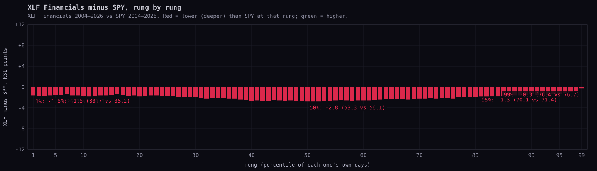
XLI Industrials · 2004–2026 · rung 1 ≤ 26.6 · rung 5 ≤ 34.2 · middle 54.0 · rung 95 ≥ 71.8 · rung 99 ≥ 76.5 · today 39.9 = rung 13
How to read: the cell in row “20”, column “+3” is rung 23 — 23% of days closed with an RSI at or below that number. Red = under 50, green = over 50. Lowest reading ever 14.4, highest 89.0.
Full history (2004–2026, 5,697 days)
| +1 | +2 | +3 | +4 | +5 | +6 | +7 | +8 | +9 | +10 | |
|---|---|---|---|---|---|---|---|---|---|---|
| 0 | 26.6 | 29.7 | 31.4 | 32.9 | 34.2 | 35.2 | 36.0 | 37.0 | 37.8 | 38.4 |
| 10 | 39.1 | 39.6 | 40.2 | 40.8 | 41.5 | 41.8 | 42.3 | 42.7 | 43.2 | 43.6 |
| 20 | 44.0 | 44.6 | 45.0 | 45.5 | 45.8 | 46.2 | 46.6 | 47.0 | 47.3 | 47.6 |
| 30 | 47.9 | 48.3 | 48.8 | 49.1 | 49.4 | 49.8 | 50.1 | 50.4 | 50.7 | 51.0 |
| 40 | 51.4 | 51.7 | 52.0 | 52.3 | 52.6 | 52.9 | 53.1 | 53.4 | 53.7 | 54.0 |
| 50 | 54.3 | 54.6 | 54.9 | 55.2 | 55.5 | 55.8 | 56.1 | 56.4 | 56.7 | 57.1 |
| 60 | 57.4 | 57.7 | 58.0 | 58.3 | 58.6 | 58.9 | 59.2 | 59.4 | 59.8 | 60.1 |
| 70 | 60.4 | 60.8 | 61.2 | 61.6 | 62.0 | 62.4 | 62.7 | 63.0 | 63.4 | 63.8 |
| 80 | 64.3 | 64.7 | 65.1 | 65.6 | 66.0 | 66.4 | 66.9 | 67.3 | 67.7 | 68.3 |
| 90 | 69.0 | 69.7 | 70.2 | 70.8 | 71.8 | 72.7 | 73.6 | 74.6 | 76.5 | 89.0 |
Last 3 years (from 2023-09-21, 756 days)
| +1 | +2 | +3 | +4 | +5 | +6 | +7 | +8 | +9 | +10 | |
|---|---|---|---|---|---|---|---|---|---|---|
| 0 | 27.8 | 30.1 | 31.4 | 32.3 | 33.9 | 34.8 | 35.5 | 36.5 | 37.5 | 38.3 |
| 10 | 39.1 | 39.7 | 40.4 | 41.4 | 41.8 | 42.4 | 43.0 | 43.6 | 44.1 | 44.6 |
| 20 | 45.3 | 45.7 | 46.1 | 46.6 | 47.3 | 47.4 | 48.0 | 48.5 | 48.9 | 49.3 |
| 30 | 49.6 | 50.0 | 50.3 | 50.6 | 51.0 | 51.3 | 51.6 | 51.9 | 52.3 | 52.5 |
| 40 | 52.7 | 53.0 | 53.3 | 53.5 | 53.8 | 54.1 | 54.5 | 55.0 | 55.2 | 55.4 |
| 50 | 55.7 | 55.9 | 56.1 | 56.7 | 56.9 | 57.1 | 57.5 | 58.1 | 58.3 | 58.5 |
| 60 | 58.8 | 59.0 | 59.2 | 59.5 | 59.8 | 60.1 | 60.2 | 60.5 | 61.0 | 61.4 |
| 70 | 62.2 | 62.5 | 62.9 | 63.3 | 63.7 | 63.9 | 64.2 | 64.6 | 64.9 | 65.3 |
| 80 | 65.7 | 66.2 | 66.6 | 66.9 | 67.4 | 67.8 | 68.3 | 69.0 | 69.4 | 69.6 |
| 90 | 70.0 | 70.5 | 70.7 | 71.2 | 72.2 | 72.7 | 73.0 | 74.3 | 76.0 | 82.9 |
Visits a year at or below each rung
| +1 | +2 | +3 | +4 | +5 | +6 | +7 | +8 | +9 | +10 | |
|---|---|---|---|---|---|---|---|---|---|---|
| 0 | 1.2 | 1.9 | 3.0 | 3.6 | 4.5 | 5.1 | 6.0 | 6.4 | 6.9 | 7.5 |
| 10 | 8.0 | 8.6 | 9.1 | 9.4 | 9.9 | 10.6 | 11.1 | 10.9 | 11.4 | 11.7 |
| 20 | 11.8 | 12.5 | 12.9 | 12.8 | 13.3 | 13.9 | 14.1 | 14.1 | 14.2 | 14.4 |
| 30 | 14.5 | 14.7 | 14.8 | 15.1 | 14.9 | 15.0 | 14.9 | 14.9 | 15.1 | 15.2 |
| 40 | 15.2 | 14.9 | 15.4 | 15.5 | 15.5 | 15.8 | 15.5 | 15.2 | 15.4 | 15.2 |
| 50 | 15.1 | 14.8 | 15.2 | 14.9 | 15.0 | 14.7 | 14.8 | 14.5 | 14.2 | 14.0 |
| 60 | 14.1 | 13.8 | 13.7 | 13.3 | 13.1 | 12.9 | 12.6 | 12.4 | 12.1 | 12.2 |
| 70 | 11.8 | 11.5 | 11.6 | 11.0 | 10.9 | 10.9 | 10.4 | 10.0 | 9.6 | 8.8 |
| 80 | 8.9 | 8.5 | 8.6 | 8.5 | 8.1 | 8.1 | 7.9 | 7.6 | 7.4 | 6.8 |
| 90 | 6.4 | 5.8 | 5.2 | 4.8 | 3.8 | 3.3 | 2.8 | 2.1 | 1.1 | 0.0 |
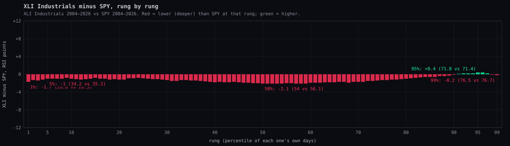
XLB Materials · 2004–2026 · rung 1 ≤ 25.4 · rung 5 ≤ 33.8 · middle 53.5 · rung 95 ≥ 69.1 · rung 99 ≥ 74.6 · today 38.0 = rung 11
How to read: the cell in row “20”, column “+3” is rung 23 — 23% of days closed with an RSI at or below that number. Red = under 50, green = over 50. Lowest reading ever 16.1, highest 82.9.
Full history (2004–2026, 5,697 days)
| +1 | +2 | +3 | +4 | +5 | +6 | +7 | +8 | +9 | +10 | |
|---|---|---|---|---|---|---|---|---|---|---|
| 0 | 25.4 | 29.1 | 31.3 | 32.8 | 33.8 | 34.7 | 35.7 | 36.4 | 37.0 | 37.6 |
| 10 | 38.2 | 39.0 | 39.7 | 40.1 | 40.6 | 41.1 | 41.6 | 42.1 | 42.5 | 43.0 |
| 20 | 43.4 | 43.8 | 44.3 | 44.7 | 45.1 | 45.5 | 45.8 | 46.2 | 46.7 | 47.0 |
| 30 | 47.3 | 47.7 | 48.1 | 48.4 | 48.8 | 49.1 | 49.4 | 49.7 | 50.1 | 50.4 |
| 40 | 50.8 | 51.1 | 51.4 | 51.7 | 52.0 | 52.3 | 52.7 | 53.0 | 53.3 | 53.5 |
| 50 | 53.7 | 54.0 | 54.3 | 54.6 | 54.8 | 55.1 | 55.4 | 55.7 | 55.9 | 56.2 |
| 60 | 56.5 | 56.7 | 57.0 | 57.3 | 57.6 | 57.8 | 58.1 | 58.4 | 58.8 | 59.1 |
| 70 | 59.4 | 59.7 | 59.9 | 60.2 | 60.5 | 60.8 | 61.2 | 61.4 | 61.7 | 62.1 |
| 80 | 62.4 | 62.7 | 63.1 | 63.4 | 63.8 | 64.1 | 64.5 | 64.9 | 65.3 | 65.8 |
| 90 | 66.4 | 66.9 | 67.6 | 68.3 | 69.1 | 70.0 | 71.2 | 72.7 | 74.6 | 82.9 |
Last 3 years (from 2023-09-21, 756 days)
| +1 | +2 | +3 | +4 | +5 | +6 | +7 | +8 | +9 | +10 | |
|---|---|---|---|---|---|---|---|---|---|---|
| 0 | 23.6 | 26.5 | 29.4 | 30.7 | 33.0 | 34.1 | 35.4 | 36.3 | 36.6 | 37.0 |
| 10 | 37.7 | 38.2 | 39.0 | 39.5 | 40.0 | 40.2 | 40.7 | 41.2 | 41.7 | 42.1 |
| 20 | 42.5 | 42.9 | 43.2 | 43.8 | 44.4 | 44.9 | 45.2 | 45.3 | 45.6 | 45.8 |
| 30 | 46.1 | 46.6 | 47.0 | 47.3 | 47.6 | 47.8 | 48.2 | 48.4 | 48.7 | 49.2 |
| 40 | 49.4 | 49.6 | 50.1 | 50.5 | 50.7 | 51.1 | 51.5 | 51.9 | 52.1 | 52.5 |
| 50 | 52.7 | 53.2 | 53.4 | 53.7 | 54.1 | 54.3 | 54.5 | 54.7 | 54.9 | 55.0 |
| 60 | 55.2 | 55.5 | 55.8 | 56.3 | 56.8 | 57.1 | 57.5 | 57.8 | 58.2 | 58.7 |
| 70 | 59.0 | 59.5 | 59.7 | 60.2 | 60.6 | 60.9 | 61.2 | 61.4 | 61.5 | 62.0 |
| 80 | 62.3 | 62.7 | 62.9 | 63.5 | 64.0 | 64.6 | 64.9 | 65.3 | 66.0 | 66.5 |
| 90 | 67.3 | 68.1 | 68.9 | 69.4 | 70.2 | 71.7 | 72.8 | 73.8 | 74.6 | 77.2 |
Visits a year at or below each rung
| +1 | +2 | +3 | +4 | +5 | +6 | +7 | +8 | +9 | +10 | |
|---|---|---|---|---|---|---|---|---|---|---|
| 0 | 0.9 | 1.8 | 2.6 | 3.7 | 4.5 | 5.4 | 5.5 | 6.3 | 7.2 | 7.9 |
| 10 | 8.1 | 8.5 | 8.9 | 9.4 | 9.6 | 9.7 | 10.3 | 10.3 | 10.6 | 11.2 |
| 20 | 11.4 | 11.3 | 11.9 | 12.5 | 12.7 | 13.1 | 13.3 | 13.7 | 14.1 | 14.3 |
| 30 | 14.5 | 14.6 | 14.6 | 14.9 | 14.8 | 15.1 | 14.8 | 14.4 | 14.6 | 14.6 |
| 40 | 14.8 | 15.1 | 15.3 | 15.7 | 15.6 | 15.7 | 15.8 | 16.0 | 15.8 | 15.9 |
| 50 | 16.0 | 16.4 | 16.7 | 16.7 | 16.5 | 16.5 | 16.5 | 16.0 | 15.9 | 16.0 |
| 60 | 16.0 | 16.0 | 16.2 | 16.0 | 15.9 | 15.3 | 15.4 | 15.1 | 15.0 | 14.7 |
| 70 | 14.5 | 14.3 | 14.0 | 13.4 | 13.3 | 13.0 | 12.9 | 12.7 | 12.5 | 12.0 |
| 80 | 11.4 | 10.9 | 10.9 | 10.4 | 9.9 | 9.6 | 9.1 | 8.7 | 8.2 | 7.6 |
| 90 | 7.0 | 6.3 | 5.7 | 5.3 | 4.4 | 3.2 | 2.6 | 2.2 | 1.3 | 0.0 |
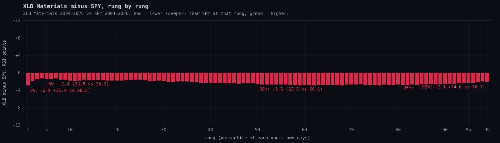
XLE Energy · 2004–2026 · rung 1 ≤ 25.0 · rung 5 ≤ 33.3 · middle 52.3 · rung 95 ≥ 70.6 · rung 99 ≥ 76.8 · today 44.6 = rung 26
How to read: the cell in row “20”, column “+3” is rung 23 — 23% of days closed with an RSI at or below that number. Red = under 50, green = over 50. Lowest reading ever 14.6, highest 86.7.
Full history (2004–2026, 5,697 days)
| +1 | +2 | +3 | +4 | +5 | +6 | +7 | +8 | +9 | +10 | |
|---|---|---|---|---|---|---|---|---|---|---|
| 0 | 25.0 | 28.8 | 30.7 | 32.3 | 33.3 | 34.4 | 35.3 | 35.9 | 36.3 | 36.9 |
| 10 | 37.4 | 38.0 | 38.6 | 39.3 | 39.9 | 40.4 | 40.9 | 41.3 | 41.7 | 42.2 |
| 20 | 42.8 | 43.1 | 43.5 | 43.9 | 44.3 | 44.7 | 45.1 | 45.5 | 45.8 | 46.2 |
| 30 | 46.5 | 46.8 | 47.2 | 47.5 | 47.7 | 48.1 | 48.4 | 48.7 | 49.1 | 49.4 |
| 40 | 49.7 | 50.0 | 50.3 | 50.5 | 50.8 | 51.1 | 51.4 | 51.8 | 52.0 | 52.3 |
| 50 | 52.6 | 52.9 | 53.2 | 53.4 | 53.8 | 54.1 | 54.4 | 54.7 | 55.1 | 55.4 |
| 60 | 55.8 | 56.1 | 56.4 | 56.7 | 57.1 | 57.4 | 57.7 | 58.0 | 58.3 | 58.8 |
| 70 | 59.1 | 59.4 | 59.7 | 60.0 | 60.5 | 60.9 | 61.3 | 61.6 | 62.1 | 62.4 |
| 80 | 62.8 | 63.3 | 63.8 | 64.3 | 64.8 | 65.2 | 65.6 | 66.2 | 66.7 | 67.3 |
| 90 | 67.8 | 68.6 | 69.2 | 69.8 | 70.6 | 71.7 | 72.8 | 74.6 | 76.8 | 86.7 |
Last 3 years (from 2023-09-21, 756 days)
| +1 | +2 | +3 | +4 | +5 | +6 | +7 | +8 | +9 | +10 | |
|---|---|---|---|---|---|---|---|---|---|---|
| 0 | 26.0 | 32.7 | 34.0 | 35.0 | 35.8 | 36.3 | 36.6 | 36.9 | 37.7 | 38.2 |
| 10 | 38.7 | 39.0 | 39.3 | 40.2 | 40.7 | 41.3 | 42.1 | 42.7 | 43.1 | 43.4 |
| 20 | 43.7 | 44.0 | 44.3 | 44.6 | 45.1 | 45.3 | 45.5 | 45.7 | 45.9 | 46.2 |
| 30 | 46.6 | 46.8 | 47.2 | 47.4 | 47.7 | 48.0 | 48.1 | 48.4 | 48.6 | 48.7 |
| 40 | 49.2 | 49.6 | 49.8 | 50.2 | 50.5 | 50.7 | 50.9 | 51.2 | 51.5 | 51.7 |
| 50 | 51.9 | 52.2 | 52.5 | 52.7 | 53.0 | 53.2 | 53.4 | 53.7 | 54.0 | 54.7 |
| 60 | 55.1 | 55.6 | 56.0 | 56.6 | 57.0 | 57.2 | 57.6 | 58.0 | 58.4 | 58.8 |
| 70 | 59.0 | 59.3 | 59.5 | 59.7 | 60.2 | 60.6 | 61.1 | 61.3 | 62.0 | 62.4 |
| 80 | 62.8 | 63.4 | 64.3 | 64.9 | 65.7 | 66.2 | 67.1 | 67.5 | 68.1 | 69.2 |
| 90 | 69.7 | 70.5 | 71.1 | 71.8 | 72.9 | 74.5 | 76.0 | 76.9 | 78.9 | 83.7 |
Visits a year at or below each rung
| +1 | +2 | +3 | +4 | +5 | +6 | +7 | +8 | +9 | +10 | |
|---|---|---|---|---|---|---|---|---|---|---|
| 0 | 0.9 | 1.6 | 2.5 | 3.4 | 4.5 | 5.6 | 6.3 | 6.9 | 7.6 | 7.8 |
| 10 | 8.1 | 8.4 | 8.2 | 8.8 | 9.0 | 9.4 | 9.9 | 10.2 | 10.7 | 10.8 |
| 20 | 11.2 | 11.6 | 11.8 | 11.8 | 12.0 | 12.5 | 12.7 | 13.4 | 13.3 | 13.3 |
| 30 | 13.7 | 13.6 | 13.8 | 13.7 | 14.0 | 14.1 | 14.1 | 14.2 | 14.6 | 14.9 |
| 40 | 14.9 | 15.1 | 15.2 | 15.6 | 15.9 | 15.8 | 15.9 | 15.8 | 15.4 | 15.3 |
| 50 | 15.0 | 15.0 | 15.2 | 15.0 | 14.4 | 14.6 | 14.6 | 14.5 | 14.5 | 14.4 |
| 60 | 14.2 | 14.4 | 14.1 | 14.1 | 14.3 | 14.4 | 13.8 | 13.3 | 13.1 | 12.7 |
| 70 | 12.6 | 12.7 | 12.3 | 11.9 | 11.7 | 11.2 | 11.2 | 10.7 | 10.7 | 10.3 |
| 80 | 9.7 | 9.3 | 9.4 | 9.1 | 8.6 | 8.0 | 7.6 | 7.4 | 7.1 | 6.7 |
| 90 | 6.5 | 6.0 | 5.3 | 4.7 | 4.2 | 3.4 | 2.6 | 2.1 | 0.9 | 0.0 |
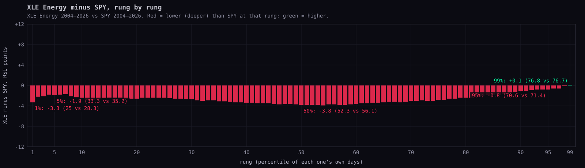
XLV Health care · 2004–2026 · rung 1 ≤ 26.4 · rung 5 ≤ 34.4 · middle 53.9 · rung 95 ≥ 71.3 · rung 99 ≥ 77.7 · today 56.4 = rung 59
How to read: the cell in row “20”, column “+3” is rung 23 — 23% of days closed with an RSI at or below that number. Red = under 50, green = over 50. Lowest reading ever 13.5, highest 85.4.
Full history (2004–2026, 5,697 days)
| +1 | +2 | +3 | +4 | +5 | +6 | +7 | +8 | +9 | +10 | |
|---|---|---|---|---|---|---|---|---|---|---|
| 0 | 26.4 | 29.4 | 31.2 | 33.2 | 34.4 | 35.4 | 36.2 | 37.3 | 37.9 | 38.7 |
| 10 | 39.3 | 40.0 | 40.5 | 41.0 | 41.6 | 42.1 | 42.5 | 43.0 | 43.4 | 43.9 |
| 20 | 44.3 | 44.7 | 45.1 | 45.5 | 45.8 | 46.2 | 46.6 | 47.0 | 47.3 | 47.6 |
| 30 | 48.0 | 48.3 | 48.6 | 49.0 | 49.3 | 49.7 | 49.9 | 50.2 | 50.5 | 50.8 |
| 40 | 51.1 | 51.5 | 51.8 | 52.1 | 52.3 | 52.7 | 53.0 | 53.3 | 53.7 | 53.9 |
| 50 | 54.3 | 54.6 | 54.9 | 55.1 | 55.4 | 55.7 | 55.9 | 56.2 | 56.5 | 56.8 |
| 60 | 57.1 | 57.4 | 57.8 | 58.1 | 58.3 | 58.6 | 58.9 | 59.3 | 59.5 | 59.8 |
| 70 | 60.2 | 60.6 | 60.8 | 61.2 | 61.6 | 61.9 | 62.3 | 62.6 | 63.0 | 63.3 |
| 80 | 63.7 | 64.1 | 64.5 | 64.8 | 65.1 | 65.6 | 66.1 | 66.7 | 67.2 | 67.7 |
| 90 | 68.3 | 69.0 | 69.7 | 70.5 | 71.3 | 72.4 | 74.0 | 75.8 | 77.7 | 85.4 |
Last 3 years (from 2023-09-21, 756 days)
| +1 | +2 | +3 | +4 | +5 | +6 | +7 | +8 | +9 | +10 | |
|---|---|---|---|---|---|---|---|---|---|---|
| 0 | 25.9 | 28.4 | 29.5 | 31.0 | 32.6 | 33.4 | 34.3 | 35.0 | 36.0 | 37.3 |
| 10 | 38.2 | 38.6 | 39.1 | 39.7 | 40.4 | 40.7 | 40.9 | 41.4 | 41.9 | 42.3 |
| 20 | 42.8 | 43.5 | 43.8 | 44.1 | 44.5 | 44.8 | 45.1 | 45.8 | 46.3 | 46.6 |
| 30 | 47.2 | 47.4 | 47.7 | 48.1 | 48.6 | 49.0 | 49.3 | 49.6 | 49.9 | 50.3 |
| 40 | 50.9 | 51.1 | 51.4 | 51.7 | 52.0 | 52.3 | 52.7 | 53.1 | 53.5 | 53.8 |
| 50 | 54.1 | 54.4 | 54.8 | 55.1 | 55.4 | 55.5 | 55.7 | 56.0 | 56.3 | 56.8 |
| 60 | 57.2 | 57.4 | 57.6 | 57.9 | 58.1 | 58.3 | 58.7 | 58.9 | 59.1 | 59.4 |
| 70 | 59.8 | 60.3 | 60.6 | 61.0 | 61.5 | 61.7 | 62.0 | 62.2 | 62.7 | 63.0 |
| 80 | 63.3 | 63.8 | 64.1 | 64.6 | 65.0 | 65.3 | 66.0 | 66.8 | 67.7 | 68.3 |
| 90 | 68.8 | 69.4 | 70.0 | 70.8 | 71.4 | 72.6 | 74.5 | 75.8 | 77.0 | 82.2 |
Visits a year at or below each rung
| +1 | +2 | +3 | +4 | +5 | +6 | +7 | +8 | +9 | +10 | |
|---|---|---|---|---|---|---|---|---|---|---|
| 0 | 1.2 | 2.2 | 2.7 | 3.8 | 4.5 | 5.2 | 5.7 | 6.2 | 6.9 | 7.3 |
| 10 | 7.6 | 8.4 | 9.1 | 9.4 | 10.3 | 10.5 | 10.9 | 11.4 | 11.4 | 11.4 |
| 20 | 12.0 | 12.5 | 12.8 | 12.9 | 13.2 | 13.1 | 13.8 | 13.7 | 14.4 | 14.4 |
| 30 | 14.6 | 14.9 | 14.9 | 15.0 | 15.1 | 15.1 | 14.7 | 14.8 | 14.9 | 14.7 |
| 40 | 14.3 | 14.6 | 14.4 | 14.4 | 14.2 | 14.6 | 14.0 | 14.1 | 14.3 | 14.5 |
| 50 | 15.0 | 15.4 | 15.3 | 15.3 | 15.4 | 15.2 | 14.9 | 14.7 | 15.0 | 14.9 |
| 60 | 14.6 | 14.3 | 14.2 | 14.1 | 14.2 | 13.8 | 13.8 | 13.6 | 13.6 | 13.3 |
| 70 | 12.8 | 12.6 | 12.7 | 12.2 | 12.0 | 12.2 | 11.4 | 11.0 | 11.4 | 11.1 |
| 80 | 10.5 | 10.4 | 10.0 | 9.1 | 8.3 | 8.2 | 7.6 | 7.2 | 7.2 | 6.8 |
| 90 | 6.3 | 5.7 | 5.0 | 4.6 | 3.5 | 2.7 | 2.3 | 1.9 | 0.9 | 0.0 |
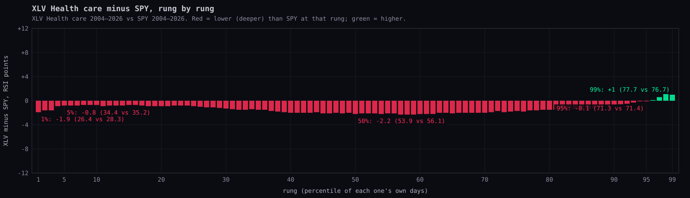
XLP Consumer staples · 2004–2026 · rung 1 ≤ 27.3 · rung 5 ≤ 34.6 · middle 53.7 · rung 95 ≥ 69.6 · rung 99 ≥ 75.5 · today 39.1 = rung 11
How to read: the cell in row “20”, column “+3” is rung 23 — 23% of days closed with an RSI at or below that number. Red = under 50, green = over 50. Lowest reading ever 16.3, highest 81.6.
Full history (2004–2026, 5,697 days)
| +1 | +2 | +3 | +4 | +5 | +6 | +7 | +8 | +9 | +10 | |
|---|---|---|---|---|---|---|---|---|---|---|
| 0 | 27.3 | 30.2 | 32.0 | 33.4 | 34.6 | 35.8 | 36.3 | 37.1 | 38.0 | 38.7 |
| 10 | 39.3 | 40.0 | 40.6 | 41.1 | 41.8 | 42.2 | 42.8 | 43.3 | 43.7 | 44.1 |
| 20 | 44.5 | 45.0 | 45.4 | 45.7 | 46.0 | 46.5 | 46.8 | 47.2 | 47.5 | 47.8 |
| 30 | 48.1 | 48.4 | 48.7 | 49.0 | 49.3 | 49.6 | 49.9 | 50.2 | 50.5 | 50.9 |
| 40 | 51.2 | 51.4 | 51.7 | 52.1 | 52.3 | 52.7 | 52.9 | 53.2 | 53.4 | 53.7 |
| 50 | 53.9 | 54.2 | 54.5 | 54.8 | 55.1 | 55.4 | 55.7 | 56.0 | 56.2 | 56.5 |
| 60 | 56.8 | 57.1 | 57.3 | 57.6 | 57.9 | 58.3 | 58.6 | 58.8 | 59.1 | 59.3 |
| 70 | 59.6 | 59.8 | 60.1 | 60.4 | 60.7 | 61.1 | 61.3 | 61.6 | 61.9 | 62.3 |
| 80 | 62.6 | 63.0 | 63.3 | 63.7 | 64.1 | 64.6 | 65.0 | 65.4 | 65.8 | 66.3 |
| 90 | 66.8 | 67.5 | 68.2 | 68.7 | 69.6 | 70.6 | 71.5 | 72.9 | 75.5 | 81.6 |
Last 3 years (from 2023-09-21, 756 days)
| +1 | +2 | +3 | +4 | +5 | +6 | +7 | +8 | +9 | +10 | |
|---|---|---|---|---|---|---|---|---|---|---|
| 0 | 25.0 | 27.8 | 29.7 | 31.3 | 32.2 | 33.2 | 34.8 | 35.8 | 36.3 | 36.9 |
| 10 | 38.0 | 38.3 | 38.8 | 39.5 | 40.0 | 40.4 | 41.0 | 41.3 | 41.5 | 41.9 |
| 20 | 42.3 | 42.9 | 43.3 | 43.5 | 44.2 | 44.8 | 45.1 | 45.4 | 45.7 | 46.2 |
| 30 | 46.7 | 47.0 | 47.2 | 47.5 | 47.8 | 48.0 | 48.4 | 48.8 | 49.1 | 49.5 |
| 40 | 49.8 | 50.0 | 50.3 | 50.7 | 51.2 | 51.4 | 51.8 | 51.9 | 52.4 | 52.5 |
| 50 | 52.7 | 52.9 | 53.1 | 53.4 | 53.6 | 53.8 | 53.9 | 54.3 | 54.6 | 55.1 |
| 60 | 55.3 | 55.7 | 55.9 | 56.1 | 56.4 | 56.5 | 56.8 | 56.9 | 57.1 | 57.4 |
| 70 | 57.7 | 57.9 | 58.4 | 58.6 | 58.8 | 59.2 | 59.5 | 59.8 | 60.0 | 60.4 |
| 80 | 60.6 | 60.9 | 61.1 | 61.3 | 61.8 | 62.3 | 63.0 | 63.7 | 64.1 | 65.2 |
| 90 | 65.8 | 66.2 | 67.3 | 68.5 | 70.0 | 70.9 | 71.8 | 72.8 | 76.6 | 81.6 |
Visits a year at or below each rung
| +1 | +2 | +3 | +4 | +5 | +6 | +7 | +8 | +9 | +10 | |
|---|---|---|---|---|---|---|---|---|---|---|
| 0 | 1.6 | 2.2 | 2.8 | 3.7 | 4.4 | 5.3 | 5.8 | 6.5 | 6.9 | 7.6 |
| 10 | 8.0 | 8.6 | 9.1 | 9.6 | 9.8 | 10.1 | 10.5 | 10.6 | 10.7 | 11.0 |
| 20 | 11.3 | 11.8 | 12.1 | 12.9 | 13.0 | 13.3 | 14.0 | 14.4 | 14.4 | 14.3 |
| 30 | 14.8 | 15.0 | 15.5 | 15.4 | 15.6 | 15.6 | 15.4 | 15.6 | 15.9 | 16.1 |
| 40 | 16.2 | 16.2 | 16.8 | 17.0 | 16.6 | 16.5 | 17.2 | 16.8 | 16.6 | 16.6 |
| 50 | 16.4 | 16.2 | 15.9 | 15.8 | 15.9 | 15.6 | 15.8 | 16.1 | 15.9 | 15.9 |
| 60 | 15.9 | 15.4 | 15.5 | 15.6 | 15.8 | 16.0 | 15.8 | 15.9 | 15.5 | 15.5 |
| 70 | 15.1 | 14.7 | 14.4 | 13.7 | 13.7 | 13.3 | 13.3 | 12.9 | 12.5 | 12.2 |
| 80 | 11.3 | 10.9 | 10.3 | 10.0 | 9.4 | 9.2 | 8.7 | 8.0 | 7.6 | 7.3 |
| 90 | 7.1 | 6.3 | 5.7 | 5.2 | 4.5 | 3.5 | 2.7 | 2.0 | 1.2 | 0.0 |
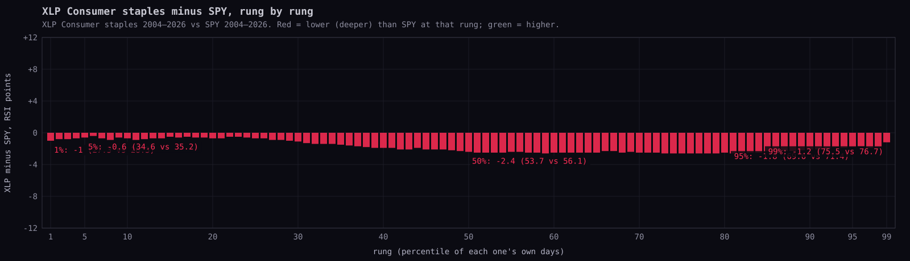
XLU Utilities · 2004–2026 · rung 1 ≤ 26.0 · rung 5 ≤ 33.9 · middle 53.2 · rung 95 ≥ 70.7 · rung 99 ≥ 77.0 · today 24.1 = rung 1
How to read: the cell in row “20”, column “+3” is rung 23 — 23% of days closed with an RSI at or below that number. Red = under 50, green = over 50. Lowest reading ever 17.6, highest 86.0.
Full history (2004–2026, 5,697 days)
| +1 | +2 | +3 | +4 | +5 | +6 | +7 | +8 | +9 | +10 | |
|---|---|---|---|---|---|---|---|---|---|---|
| 0 | 26.0 | 29.1 | 31.4 | 32.6 | 33.9 | 35.2 | 36.0 | 36.8 | 37.6 | 38.4 |
| 10 | 39.0 | 39.6 | 40.3 | 40.9 | 41.4 | 41.8 | 42.2 | 42.7 | 43.2 | 43.8 |
| 20 | 44.3 | 44.6 | 45.0 | 45.3 | 45.7 | 45.9 | 46.3 | 46.7 | 47.1 | 47.4 |
| 30 | 47.7 | 48.0 | 48.4 | 48.7 | 49.0 | 49.3 | 49.6 | 49.9 | 50.1 | 50.4 |
| 40 | 50.7 | 51.1 | 51.3 | 51.6 | 51.9 | 52.1 | 52.4 | 52.7 | 53.0 | 53.2 |
| 50 | 53.4 | 53.6 | 53.9 | 54.1 | 54.4 | 54.7 | 55.0 | 55.2 | 55.5 | 55.8 |
| 60 | 56.1 | 56.4 | 56.6 | 56.9 | 57.2 | 57.5 | 57.7 | 58.0 | 58.3 | 58.6 |
| 70 | 58.9 | 59.1 | 59.5 | 59.7 | 60.1 | 60.4 | 60.8 | 61.2 | 61.7 | 62.0 |
| 80 | 62.5 | 62.9 | 63.2 | 63.7 | 64.1 | 64.8 | 65.4 | 65.8 | 66.3 | 66.9 |
| 90 | 67.6 | 68.2 | 69.0 | 69.9 | 70.7 | 71.5 | 72.9 | 74.4 | 77.0 | 86.0 |
Last 3 years (from 2023-09-21, 756 days)
| +1 | +2 | +3 | +4 | +5 | +6 | +7 | +8 | +9 | +10 | |
|---|---|---|---|---|---|---|---|---|---|---|
| 0 | 24.1 | 29.8 | 32.1 | 32.7 | 34.2 | 35.4 | 35.9 | 36.8 | 37.6 | 38.1 |
| 10 | 38.5 | 39.2 | 39.9 | 40.3 | 40.7 | 41.0 | 41.7 | 41.9 | 42.3 | 42.7 |
| 20 | 43.2 | 43.9 | 44.1 | 44.5 | 44.6 | 45.0 | 45.1 | 45.3 | 45.8 | 46.2 |
| 30 | 46.6 | 47.0 | 47.3 | 48.0 | 48.4 | 48.8 | 49.1 | 49.6 | 49.9 | 50.1 |
| 40 | 50.5 | 50.8 | 51.2 | 51.4 | 51.7 | 51.9 | 52.2 | 52.4 | 52.6 | 52.9 |
| 50 | 53.1 | 53.3 | 53.5 | 53.7 | 53.9 | 54.1 | 54.3 | 54.7 | 54.8 | 55.3 |
| 60 | 55.6 | 56.1 | 56.5 | 56.8 | 57.2 | 57.7 | 57.9 | 58.2 | 58.7 | 58.9 |
| 70 | 59.3 | 59.5 | 59.7 | 60.0 | 60.3 | 60.6 | 61.1 | 61.6 | 61.8 | 62.0 |
| 80 | 62.5 | 62.9 | 63.3 | 63.8 | 64.4 | 65.0 | 65.6 | 65.9 | 66.5 | 67.5 |
| 90 | 68.2 | 69.5 | 70.2 | 71.0 | 72.0 | 73.4 | 74.5 | 76.0 | 78.4 | 82.0 |
Visits a year at or below each rung
| +1 | +2 | +3 | +4 | +5 | +6 | +7 | +8 | +9 | +10 | |
|---|---|---|---|---|---|---|---|---|---|---|
| 0 | 1.1 | 1.9 | 2.5 | 3.5 | 4.1 | 4.8 | 5.4 | 6.1 | 6.6 | 6.8 |
| 10 | 7.0 | 8.0 | 8.3 | 8.6 | 8.8 | 8.9 | 9.3 | 9.6 | 10.6 | 10.9 |
| 20 | 11.4 | 11.7 | 11.8 | 11.9 | 12.0 | 12.0 | 12.3 | 12.5 | 13.0 | 13.2 |
| 30 | 13.9 | 14.8 | 14.9 | 14.8 | 15.2 | 15.2 | 15.5 | 15.7 | 16.1 | 16.3 |
| 40 | 16.2 | 16.1 | 16.3 | 16.7 | 16.9 | 17.2 | 17.3 | 17.2 | 17.5 | 17.5 |
| 50 | 17.4 | 17.5 | 17.4 | 17.6 | 17.6 | 17.4 | 17.2 | 17.0 | 16.8 | 16.7 |
| 60 | 16.6 | 16.5 | 16.3 | 16.8 | 16.6 | 16.6 | 15.9 | 15.8 | 15.4 | 15.3 |
| 70 | 15.1 | 14.5 | 14.1 | 14.0 | 13.4 | 13.0 | 12.5 | 12.2 | 11.7 | 11.4 |
| 80 | 10.7 | 10.4 | 9.8 | 9.1 | 8.7 | 8.0 | 8.0 | 7.5 | 7.1 | 6.2 |
| 90 | 5.6 | 5.3 | 4.9 | 4.5 | 4.3 | 3.7 | 3.0 | 2.0 | 1.0 | 0.0 |
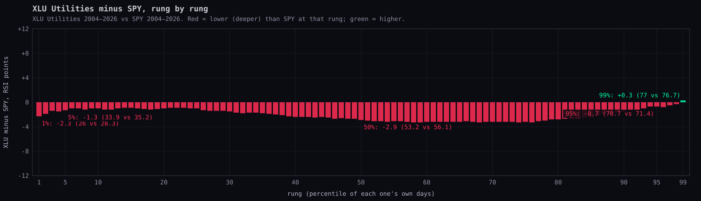
XLRE Real estate · 2016–2026 · rung 1 ≤ 26.2 · rung 5 ≤ 32.6 · middle 52.5 · rung 95 ≥ 69.8 · rung 99 ≥ 75.7 · today 24.1 = rung 1
How to read: the cell in row “20”, column “+3” is rung 23 — 23% of days closed with an RSI at or below that number. Red = under 50, green = over 50. Lowest reading ever 18.8, highest 83.8.
Full history (2016–2026, 2,650 days)
| +1 | +2 | +3 | +4 | +5 | +6 | +7 | +8 | +9 | +10 | |
|---|---|---|---|---|---|---|---|---|---|---|
| 0 | 26.2 | 28.6 | 30.1 | 31.5 | 32.6 | 34.1 | 35.2 | 36.1 | 36.8 | 37.7 |
| 10 | 38.3 | 38.9 | 39.6 | 40.1 | 40.4 | 40.9 | 41.3 | 41.8 | 42.3 | 42.9 |
| 20 | 43.3 | 43.7 | 44.1 | 44.7 | 44.9 | 45.3 | 45.6 | 45.9 | 46.2 | 46.6 |
| 30 | 46.9 | 47.2 | 47.7 | 48.1 | 48.3 | 48.6 | 48.8 | 49.2 | 49.5 | 49.7 |
| 40 | 50.0 | 50.3 | 50.5 | 50.8 | 51.1 | 51.3 | 51.6 | 51.9 | 52.1 | 52.5 |
| 50 | 52.7 | 53.0 | 53.3 | 53.5 | 53.7 | 54.0 | 54.3 | 54.6 | 54.8 | 55.1 |
| 60 | 55.4 | 55.7 | 55.9 | 56.1 | 56.5 | 56.7 | 57.1 | 57.5 | 57.8 | 58.1 |
| 70 | 58.5 | 58.8 | 59.1 | 59.4 | 59.8 | 60.1 | 60.3 | 60.7 | 61.1 | 61.4 |
| 80 | 61.7 | 62.1 | 62.5 | 62.9 | 63.4 | 63.8 | 64.4 | 64.8 | 65.4 | 66.0 |
| 90 | 66.7 | 67.2 | 68.0 | 68.6 | 69.8 | 70.8 | 71.8 | 73.4 | 75.7 | 83.8 |
Last 3 years (from 2023-09-21, 756 days)
| +1 | +2 | +3 | +4 | +5 | +6 | +7 | +8 | +9 | +10 | |
|---|---|---|---|---|---|---|---|---|---|---|
| 0 | 24.9 | 27.5 | 29.0 | 30.0 | 31.8 | 32.8 | 34.4 | 35.3 | 36.6 | 38.0 |
| 10 | 38.4 | 39.1 | 39.7 | 40.0 | 40.3 | 40.7 | 41.1 | 41.7 | 42.2 | 42.8 |
| 20 | 43.4 | 43.7 | 44.1 | 44.5 | 44.8 | 45.1 | 45.3 | 45.6 | 45.8 | 46.2 |
| 30 | 46.4 | 46.8 | 47.1 | 47.4 | 47.6 | 48.0 | 48.3 | 48.6 | 48.7 | 49.1 |
| 40 | 49.3 | 49.7 | 49.9 | 50.2 | 50.4 | 50.7 | 50.9 | 51.2 | 51.4 | 51.6 |
| 50 | 51.7 | 52.0 | 52.3 | 52.6 | 52.8 | 53.0 | 53.4 | 53.8 | 54.0 | 54.4 |
| 60 | 54.7 | 55.0 | 55.2 | 55.4 | 55.6 | 55.9 | 56.2 | 56.5 | 56.6 | 56.8 |
| 70 | 57.0 | 57.3 | 57.9 | 58.3 | 58.9 | 59.1 | 59.6 | 60.0 | 60.2 | 60.4 |
| 80 | 61.1 | 61.7 | 62.2 | 62.6 | 63.0 | 63.5 | 64.1 | 64.6 | 65.3 | 66.1 |
| 90 | 67.1 | 67.8 | 68.5 | 70.6 | 71.2 | 72.2 | 73.0 | 74.5 | 77.1 | 83.8 |
Visits a year at or below each rung
| +1 | +2 | +3 | +4 | +5 | +6 | +7 | +8 | +9 | +10 | |
|---|---|---|---|---|---|---|---|---|---|---|
| 0 | 1.2 | 2.0 | 3.0 | 4.0 | 4.3 | 4.8 | 5.1 | 5.6 | 6.4 | 6.5 |
| 10 | 7.4 | 7.8 | 8.4 | 9.3 | 9.6 | 10.3 | 10.5 | 10.5 | 11.1 | 11.2 |
| 20 | 11.9 | 12.1 | 12.3 | 12.2 | 13.3 | 13.3 | 13.9 | 13.8 | 14.0 | 14.7 |
| 30 | 15.4 | 15.6 | 15.8 | 16.1 | 15.9 | 15.9 | 16.1 | 15.9 | 16.1 | 16.4 |
| 40 | 16.6 | 16.2 | 16.7 | 16.8 | 17.0 | 17.1 | 17.6 | 16.9 | 16.9 | 17.4 |
| 50 | 17.1 | 16.8 | 16.4 | 16.1 | 15.8 | 15.7 | 15.7 | 15.7 | 15.4 | 14.9 |
| 60 | 14.5 | 14.7 | 14.4 | 14.2 | 14.2 | 14.1 | 14.1 | 14.0 | 14.2 | 14.2 |
| 70 | 13.6 | 13.7 | 12.8 | 13.0 | 13.2 | 12.9 | 12.9 | 12.4 | 11.7 | 11.2 |
| 80 | 11.0 | 10.4 | 10.0 | 9.5 | 8.7 | 7.8 | 7.8 | 7.4 | 7.5 | 6.7 |
| 90 | 6.9 | 6.5 | 6.1 | 4.8 | 4.0 | 3.3 | 2.7 | 1.8 | 1.3 | 0.1 |
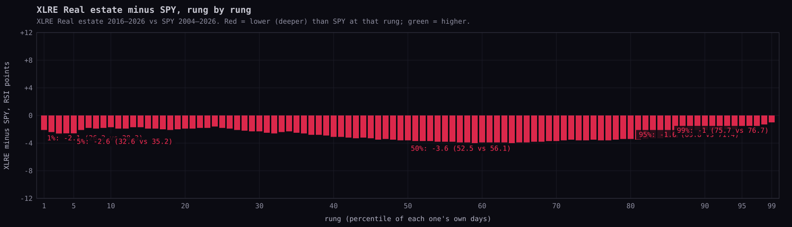
2 · What came next, at every rung
Every day is placed on its rung, then followed forward: the change 5, 10, 20 and 60 sessions later, the share of days that ended higher, the worst close in the next 20 and 60 sessions, and the wait until price traded back above the last swing high that was already confirmed that day. Each dot is one rung; its faint bar is the 90% band; the dashed line is any day. “Rungs above / below” counts how many of the 100 rungs cleared the any-day number beyond their band — with 90% bands about 5 each way happen by luck alone.
| Instrument | Rung 1 · 20 later (90% band) | Any day 20 later | Rung 100 20 later | Rungs above / below any day, 20 | Slope: rung vs 20 later (rank corr.) | Rung 1 60 later | Any day 60 later | Rungs above / below any day, 60 | Rung 1 higher, 20 | Any day higher, 20 | Rung 1 worst in next 60 | Any day worst in next 60 | Rung 1 wait to prior top | Any day wait | Rung 1 days · months |
|---|---|---|---|---|---|---|---|---|---|---|---|---|---|---|---|
| S&P 500 index | +1.7% 0.7 to 2.6 | +1.0% | +0.7% | 5 / 3 | -0.09 | +1.2% | +2.4% | 0 / 2 | 62.8% | 60.2% | -4.3% | -3.3% | 230 | 9 | 247 · 87 |
| SPY (S&P 500 fund) | +3.1% 0.6 to 4.8 | +1.3% | -1.0% | 6 / 8 | -0.50 | +6.3% | +3.3% | 7 / 3 | 70.2% | 65.3% | -4.0% | -3.0% | 132 | 3 | 57 · 21 |
| Nasdaq 100 index | +2.4% 0.1 to 3.8 | +1.6% | +0.2% | 6 / 5 | -0.12 | +3.9% | +4.5% | 7 / 4 | 64.4% | 62.5% | -6.2% | -4.1% | 122 | 5 | 104 · 40 |
| QQQ (Nasdaq 100 fund) | +3.4% -1.2 to 8.0 | +1.8% | +0.3% | 8 / 6 | -0.34 | +9.3% | +4.9% | 10 / 11 | 68.4% | 67.2% | -3.5% | -3.2% | 73 | 1 | 38 · 17 |
| IWM (Russell 2000 fund) | +1.5% -1.2 to 6.3 | +1.2% | -0.8% | 7 / 6 | -0.63 | +6.1% | +2.8% | 7 / 3 | 61.4% | 59.7% | -6.3% | -4.4% | 164 | 11 | 57 · 18 |
| DIA (Dow fund) | +3.1% 1.9 to 5.5 | +1.1% | +0.5% | 12 / 6 | -0.51 | +6.8% | +2.6% | 7 / 3 | 86.0% | 63.6% | -2.0% | -3.0% | 107 | 6 | 57 · 28 |
| VIX (fear index) | +6.0% 0.9 to 11.1 | -1.8% | -18.6% | 32 / 24 | -0.89 | +6.7% | -3.2% | 32 / 28 | 69.6% | 45.9% | -8.4% | -17.0% | 445 | 33 | 92 · 31 |
| US 10-year yield | +4.0 bp 1.0 to 7.0 | 0.0 bp | -1.0 bp | 6 / 3 | 0.54 | +9.0 bp | +3.0 bp | 2 / 3 | 61.5% | 49.6% | -22.0 bp | -22.0 bp | 324 | 29 | 161 · 57 |
| TLT (long Treasuries fund) | -2.0% -2.8 to -0.2 | 0.0% | -1.3% | 3 / 4 | -0.03 | -0.1% | +0.1% | 1 / 2 | 24.6% | 49.8% | -3.5% | -3.3% | 197 | 35 | 57 · 16 |
| US dollar index | -1.0% -1.4 to -0.2 | 0.0% | +0.5% | 10 / 12 | 0.81 | -2.4% | 0.0% | 5 / 8 | 22.0% | 49.8% | -2.9% | -2.0% | 2,405 | 37 | 141 · 28 |
| WTI crude oil | -9.9% -14.1 to -0.7 | +1.1% | -2.5% | 5 / 8 | -0.10 | +3.1% | +2.7% | 6 / 5 | 26.2% | 54.4% | -21.5% | -8.4% | 444 | 17 | 65 · 18 |
| Gold | +1.4% 1.0 to 2.3 | +0.2% | -1.2% | 4 / 8 | 0.01 | +2.4% | +0.7% | 4 / 4 | 68.5% | 51.6% | -3.3% | -3.5% | 261 | 27 | 130 · 47 |
| Silver | -1.6% -4.1 to 0.8 | +0.2% | +4.5% | 11 / 9 | -0.56 | -0.3% | +0.6% | 2 / 2 | 39.2% | 50.9% | -12.3% | -5.8% | 600 | 29 | 143 · 33 |
| Bitcoin | -2.2% -14.9 to 2.2 | +1.5% | +7.7% | 13 / 7 | 0.43 | -4.5% | +5.9% | 5 / 6 | 32.7% | 54.9% | -12.2% | -10.1% | 173 | 27 | 49 · 18 |
| XLK Technology | +1.3% -0.5 to 3.9 | +1.5% | +0.2% | 4 / 6 | -0.20 | +2.4% | +4.0% | 7 / 6 | 59.6% | 63.6% | -5.7% | -3.9% | 123 | 4 | 57 · 24 |
| SMH Semiconductors | +0.8% -3.0 to 3.8 | +1.7% | +3.8% | 6 / 7 | -0.20 | +4.0% | +4.7% | 3 / 3 | 54.4% | 60.2% | -7.5% | -5.3% | 254 | 8 | 57 · 19 |
| XLC Communication | +5.4% -2.5 to 10.1 | +1.7% | -3.0% | 7 / 7 | 0.01 | +5.9% | +4.5% | 4 / 8 | 70.0% | 64.7% | -5.3% | -3.6% | 89 | 6 | 20 · 10 |
| XLY Consumer discretionary | +1.7% -1.1 to 2.9 | +1.2% | -1.7% | 7 / 6 | -0.33 | +5.1% | +3.0% | 4 / 6 | 57.9% | 61.7% | -7.0% | -3.8% | 118 | 7 | 57 · 23 |
| XLF Financials | +1.6% 0.2 to 6.1 | +1.0% | -0.7% | 7 / 6 | -0.45 | +6.9% | +2.3% | 4 / 4 | 68.4% | 58.3% | -4.1% | -4.3% | 190 | 9 | 57 · 21 |
| XLI Industrials | +3.2% 0.3 to 7.2 | +1.0% | -0.2% | 7 / 10 | -0.47 | +6.7% | +3.1% | 6 / 6 | 66.7% | 60.0% | -4.5% | -3.5% | 171 | 8 | 57 · 20 |
| XLB Materials | +4.0% -0.8 to 5.3 | +1.0% | -0.6% | 8 / 10 | -0.73 | +2.0% | +2.7% | 9 / 3 | 70.2% | 58.0% | -5.9% | -4.3% | 262 | 10 | 57 · 18 |
| XLE Energy | +2.2% -4.6 to 6.2 | +1.1% | -1.4% | 3 / 6 | -0.24 | -0.2% | +2.2% | 3 / 2 | 57.9% | 56.6% | -13.6% | -5.5% | 473 | 13 | 57 · 17 |
| XLV Health care | +2.7% 2.0 to 4.0 | +1.0% | +0.5% | 4 / 7 | -0.31 | +5.2% | +2.7% | 8 / 4 | 80.7% | 60.8% | -2.0% | -3.0% | 121 | 9 | 57 · 25 |
| XLP Consumer staples | +2.4% 1.5 to 4.2 | +0.8% | -0.3% | 6 / 6 | -0.64 | +3.9% | +1.8% | 7 / 4 | 78.9% | 60.1% | -1.5% | -2.6% | 115 | 10 | 57 · 26 |
| XLU Utilities | +3.0% -0.3 to 5.3 | +0.9% | -1.3% | 10 / 10 | -0.63 | +6.8% | +2.3% | 5 / 8 | 70.4% | 59.7% | -3.4% | -3.2% | 166 | 10 | 57 · 23 |
| XLRE Real estate | +0.9% -2.9 to 5.3 | +0.6% | +0.1% | 10 / 10 | -0.66 | +6.1% | +1.4% | 8 / 4 | 58.3% | 56.3% | -4.4% | -3.9% | 944 | 13 | 27 · 13 |
S&P 500 index 1928–2026 · 24,692 days
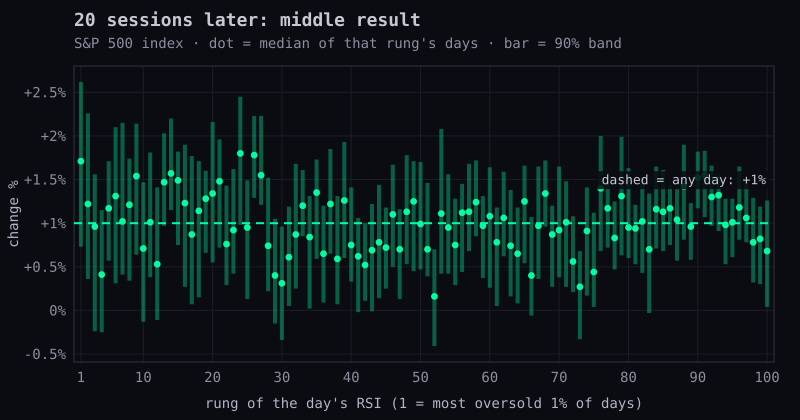

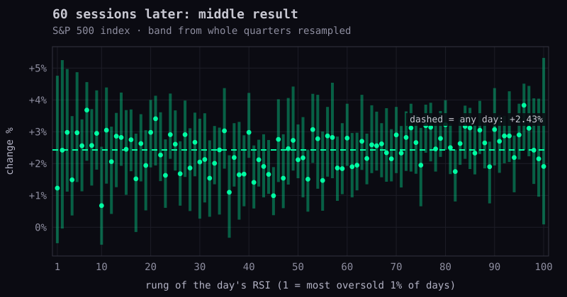

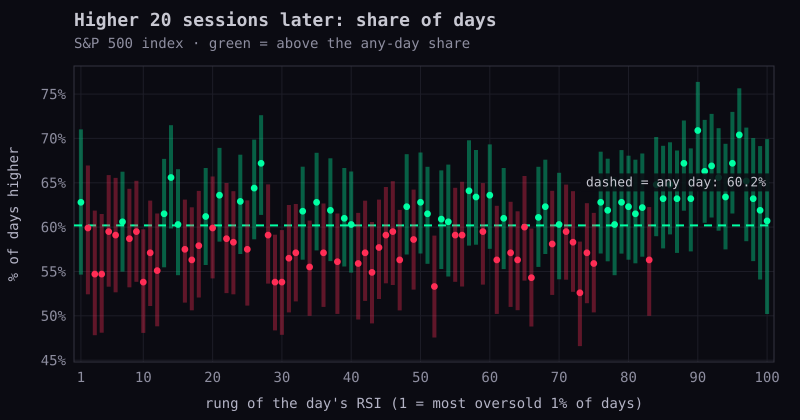

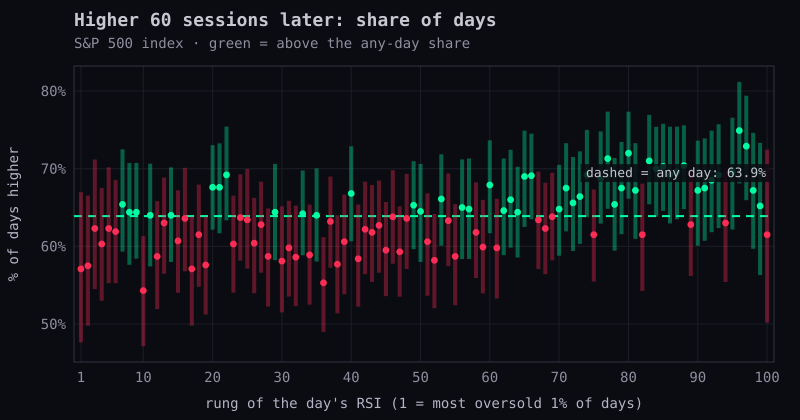

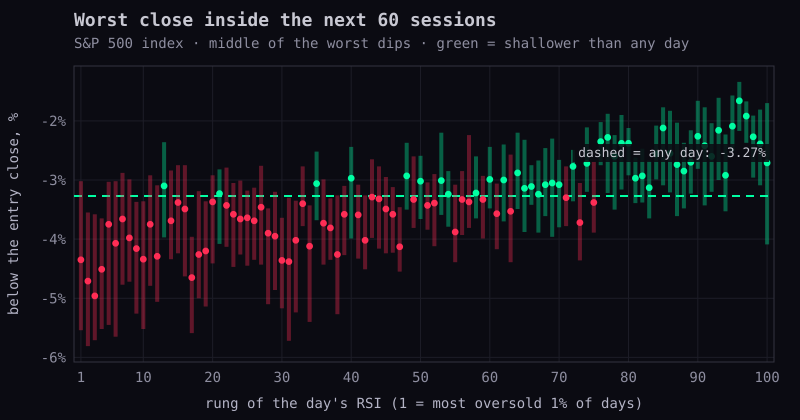

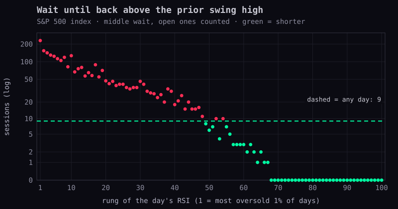

All 100 rungs of S&P 500 index as a table
| Rung | RSI from–to | Days | Months | 5 later | 10 later | 20 later | 20: 90% band | 60 later | 60: 90% band | Higher 20 | Higher 60 | Worst in 20 | Worst in 60 | Wait to prior top | No-hindsight rung: 20 later | … 60 later |
|---|---|---|---|---|---|---|---|---|---|---|---|---|---|---|---|---|
| 1 | 11.1–23.9 | 247 | 87 | +0.8% | +0.9% | +1.7% | 0.7 to 2.6 | +1.2% | -0.5 to 4.8 | 62.8% | 57.1% | -2.3% | -4.3% | 230 | +1.9% (194) | +0.8% |
| 2 | 23.9–26.9 | 247 | 128 | +0.7% | +0.1% | +1.2% | 0.4 to 2.3 | +2.4% | -0.0 to 5.3 | 59.9% | 57.5% | -2.6% | -4.7% | 154 | +1.1% (178) | +2.2% |
| 3 | 26.9–28.9 | 247 | 143 | 0.0% | 0.0% | +1.0% | -0.2 to 1.6 | +3.0% | 1.1 to 5.0 | 54.7% | 62.3% | -3.0% | -5.0% | 142 | +1.2% (204) | +3.7% |
| 4 | 28.9–30.5 | 247 | 151 | 0.0% | +0.3% | +0.4% | -0.3 to 1.1 | +1.5% | 0.4 to 3.5 | 54.7% | 60.3% | -3.0% | -4.5% | 130 | +1.1% (212) | +3.1% |
| 5 | 30.5–31.8 | 247 | 164 | +0.5% | +0.2% | +1.2% | 0.6 to 1.7 | +3.0% | 1.4 to 4.9 | 59.5% | 62.3% | -2.6% | -3.8% | 124 | +0.8% (209) | +1.6% |
| 6 | 31.8–32.9 | 247 | 175 | +0.1% | +0.8% | +1.3% | 0.3 to 2.1 | +2.6% | 1.1 to 3.4 | 59.1% | 61.9% | -2.2% | -4.1% | 113 | +0.4% (215) | +1.5% |
| 7 | 32.9–33.9 | 246 | 181 | +0.4% | +0.4% | +1.0% | 0.4 to 2.1 | +3.7% | 2.1 to 4.6 | 60.6% | 65.4% | -2.4% | -3.7% | 105 | +2.1% (184) | +3.9% |
| 8 | 33.9–34.7 | 247 | 192 | +0.5% | +0.9% | +1.2% | 0.3 to 1.7 | +2.6% | 1.3 to 3.7 | 58.7% | 64.4% | -2.0% | -4.0% | 119 | +0.9% (206) | +2.8% |
| 9 | 34.7–35.6 | 247 | 199 | +0.2% | +0.7% | +1.5% | 0.6 to 2.1 | +3.0% | 1.8 to 4.3 | 59.5% | 64.4% | -2.2% | -4.2% | 82 | +1.4% (250) | +2.7% |
| 10 | 35.6–36.3 | 247 | 186 | +0.2% | +0.8% | +0.7% | -0.1 to 1.5 | +0.7% | -0.6 to 2.5 | 53.8% | 54.3% | -2.4% | -4.3% | 127 | +0.7% (211) | +2.5% |
| 11 | 36.3–37.0 | 247 | 192 | +0.4% | +0.7% | +1.0% | 0.4 to 1.8 | +3.0% | 1.4 to 4.4 | 57.1% | 64.0% | -2.0% | -3.8% | 67 | +0.4% (212) | +2.4% |
| 12 | 37.0–37.7 | 247 | 193 | +0.1% | +0.4% | +0.5% | -0.1 to 1.4 | +2.1% | 0.4 to 3.2 | 55.1% | 58.7% | -2.3% | -4.3% | 76 | +0.9% (232) | +1.7% |
| 13 | 37.7–38.3 | 247 | 187 | +0.3% | +0.9% | +1.5% | 1.0 to 2.0 | +2.9% | 1.3 to 3.6 | 61.5% | 63.0% | -1.7% | -3.1% | 80 | +1.0% (236) | +3.1% |
| 14 | 38.3–38.9 | 247 | 204 | +0.1% | +0.9% | +1.6% | 1.1 to 2.2 | +2.8% | 1.9 to 4.2 | 65.6% | 64.0% | -1.9% | -3.7% | 57 | +1.6% (222) | +2.0% |
| 15 | 38.9–39.5 | 247 | 199 | +0.3% | +0.4% | +1.5% | 0.8 to 1.8 | +2.5% | 1.0 to 3.7 | 60.3% | 60.7% | -2.0% | -3.4% | 65 | +1.2% (214) | +2.4% |
| 16 | 39.5–40.1 | 247 | 208 | +0.3% | +1.1% | +1.2% | 0.3 to 1.9 | +2.8% | 1.8 to 3.7 | 57.5% | 63.6% | -1.9% | -3.5% | 58 | +1.7% (222) | +2.9% |
| 17 | 40.1–40.7 | 247 | 195 | +0.3% | +1.0% | +0.9% | 0.1 to 1.8 | +1.5% | -0.1 to 2.9 | 56.3% | 57.1% | -2.6% | -4.7% | 89 | +1.0% (224) | +3.4% |
| 18 | 40.7–41.3 | 247 | 205 | +0.3% | +0.8% | +1.1% | 0.1 to 1.7 | +2.6% | 1.4 to 3.5 | 57.9% | 61.5% | -2.5% | -4.3% | 55 | +0.7% (222) | +2.1% |
| 19 | 41.3–41.8 | 246 | 202 | +0.4% | +0.7% | +1.3% | 0.7 to 1.6 | +1.9% | 0.5 to 3.0 | 61.2% | 57.6% | -1.9% | -4.2% | 71 (1 open) | +1.5% (231) | +3.0% |
| 20 | 41.8–42.3 | 247 | 211 | 0.0% | +0.5% | +1.3% | 0.6 to 2.2 | +3.0% | 1.9 to 4.0 | 59.9% | 67.6% | -2.5% | -3.4% | 47 | +0.7% (250) | +2.9% |
| 21 | 42.3–42.8 | 247 | 209 | +0.4% | +0.9% | +1.5% | 0.7 to 2.0 | +3.4% | 1.9 to 4.1 | 63.6% | 67.6% | -2.0% | -3.2% | 42 | +1.2% (221) | +2.7% |
| 22 | 42.8–43.2 | 247 | 203 | +0.3% | +0.8% | +0.8% | 0.3 to 1.4 | +2.3% | 1.4 to 3.6 | 58.7% | 69.2% | -1.8% | -3.4% | 46 | +0.9% (223) | +1.5% |
| 23 | 43.2–43.7 | 247 | 208 | +0.5% | +0.5% | +0.9% | 0.4 to 1.6 | +1.6% | 0.6 to 2.8 | 58.3% | 60.3% | -2.3% | -3.6% | 39 | +1.7% (252) | +2.9% |
| 24 | 43.7–44.2 | 247 | 214 | +0.6% | +1.2% | +1.8% | 1.0 to 2.5 | +2.9% | 2.1 to 4.2 | 62.9% | 63.7% | -1.8% | -3.7% | 41 (2 open) | +1.2% (238) | +2.1% |
| 25 | 44.2–44.6 | 247 | 209 | +0.2% | +0.6% | +0.9% | 0.1 to 1.5 | +2.6% | 1.8 to 3.7 | 57.5% | 63.4% | -2.4% | -3.6% | 41 | +0.7% (214) | +2.3% |
| 26 | 44.6–45.1 | 247 | 201 | +0.3% | +0.6% | +1.8% | 1.3 to 2.2 | +1.7% | 0.7 to 2.7 | 64.4% | 60.4% | -2.1% | -3.7% | 36 | +1.4% (238) | +2.1% |
| 27 | 45.1–45.5 | 247 | 200 | +0.6% | +0.9% | +1.6% | 1.2 to 2.2 | +2.9% | 1.6 to 4.0 | 67.2% | 62.8% | -1.8% | -3.5% | 34 | +1.5% (251) | +2.0% |
| 28 | 45.5–45.9 | 247 | 214 | -0.1% | +0.5% | +0.7% | 0.2 to 1.5 | +1.9% | 0.5 to 3.1 | 59.1% | 58.7% | -2.2% | -3.9% | 36 | +0.9% (238) | +2.0% |
| 29 | 45.9–46.3 | 247 | 208 | -0.2% | +0.3% | +0.4% | -0.1 to 1.1 | +2.7% | 1.6 to 3.6 | 53.8% | 64.4% | -2.6% | -4.0% | 36 | +1.2% (239) | +2.2% |
| 30 | 46.3–46.7 | 247 | 211 | +0.2% | +0.1% | +0.3% | -0.3 to 1.0 | +2.0% | 0.3 to 3.4 | 53.8% | 58.1% | -2.8% | -4.4% | 46 | +1.4% (246) | +2.8% |
| 31 | 46.7–47.2 | 247 | 215 | +0.3% | +0.2% | +0.6% | 0.1 to 1.2 | +2.1% | 0.8 to 3.6 | 56.5% | 59.8% | -2.2% | -4.4% | 41 (1 open) | +0.5% (231) | +1.5% |
| 32 | 47.2–47.6 | 246 | 215 | +0.6% | +0.8% | +0.9% | 0.3 to 1.7 | +1.5% | 0.3 to 2.7 | 57.1% | 58.6% | -2.3% | -4.0% | 31 (1 open) | +1.0% (215) | +2.0% |
| 33 | 47.6–48.0 | 247 | 212 | +0.3% | +0.4% | +1.2% | 0.8 to 1.6 | +2.0% | 1.4 to 3.2 | 61.8% | 64.2% | -2.0% | -3.4% | 29 (1 open) | +1.1% (226) | +3.4% |
| 34 | 48.0–48.4 | 247 | 218 | +0.2% | +0.8% | +0.8% | 0.0 to 1.3 | +2.4% | 0.4 to 3.1 | 55.5% | 58.9% | -2.0% | -4.1% | 28 | +0.6% (212) | +1.5% |
| 35 | 48.4–48.8 | 247 | 211 | +0.5% | +0.8% | +1.4% | 0.6 to 1.7 | +3.0% | 1.8 to 4.4 | 62.8% | 64.0% | -1.9% | -3.1% | 24 | +0.6% (250) | +2.0% |
| 36 | 48.8–49.1 | 247 | 222 | +0.5% | +0.4% | +0.7% | 0.1 to 1.2 | +1.1% | -0.3 to 2.3 | 57.1% | 55.3% | -2.0% | -3.7% | 27 | +1.4% (215) | +2.8% |
| 37 | 49.1–49.5 | 247 | 215 | +0.3% | +0.6% | +1.2% | 0.7 to 1.9 | +2.2% | 1.3 to 3.3 | 61.9% | 63.2% | -2.0% | -3.8% | 20 | +1.1% (227) | +2.3% |
| 38 | 49.5–49.9 | 247 | 211 | +0.1% | +0.3% | +0.6% | 0.1 to 1.3 | +1.6% | 0.2 to 3.3 | 56.1% | 57.7% | -2.0% | -4.3% | 34 (1 open) | +1.1% (253) | +2.5% |
| 39 | 49.9–50.2 | 247 | 205 | +0.2% | +0.3% | +1.3% | 0.6 to 1.9 | +1.7% | 0.7 to 2.9 | 61.0% | 60.6% | -2.0% | -3.6% | 31 (1 open) | +0.7% (230) | +1.0% |
| 40 | 50.2–50.6 | 247 | 208 | +0.2% | +0.6% | +0.8% | 0.3 to 1.4 | +3.0% | 2.2 to 4.2 | 60.3% | 66.8% | -1.8% | -3.0% | 18 | +0.6% (219) | +1.8% |
| 41 | 50.6–51.0 | 247 | 206 | +0.1% | +0.2% | +0.6% | -0.0 to 1.1 | +1.4% | 0.6 to 2.6 | 55.9% | 58.4% | -2.3% | -3.6% | 21 (2 open) | +1.1% (241) | +1.4% |
| 42 | 51.0–51.3 | 247 | 210 | +0.1% | +0.3% | +0.5% | 0.1 to 1.0 | +2.1% | 1.3 to 2.8 | 57.1% | 62.2% | -2.4% | -4.0% | 26 | +0.8% (209) | +1.6% |
| 43 | 51.3–51.7 | 247 | 209 | +0.5% | +0.2% | +0.7% | -0.0 to 1.2 | +1.9% | 0.9 to 2.9 | 54.9% | 61.8% | -1.9% | -3.3% | 15 (1 open) | +1.0% (231) | +1.8% |
| 44 | 51.7–52.0 | 246 | 209 | +0.3% | +0.1% | +0.8% | 0.1 to 1.4 | +1.7% | 1.1 to 2.7 | 57.7% | 62.7% | -2.3% | -3.3% | 20 | +0.8% (236) | +1.7% |
| 45 | 52.0–52.4 | 247 | 209 | +0.2% | +0.4% | +0.7% | 0.3 to 1.2 | +1.0% | 0.4 to 1.9 | 59.1% | 59.5% | -2.0% | -3.5% | 15 | +0.1% (231) | +2.4% |
| 46 | 52.4–52.8 | 247 | 216 | +0.2% | +0.2% | +1.1% | 0.5 to 1.7 | +2.8% | 1.4 to 4.0 | 59.5% | 63.8% | -1.9% | -3.6% | 15 | +0.6% (252) | +1.6% |
| 47 | 52.8–53.1 | 247 | 215 | -0.1% | -0.3% | +0.7% | 0.1 to 1.2 | +1.5% | 0.6 to 2.9 | 56.3% | 59.3% | -2.2% | -4.1% | 16 | +1.2% (219) | +2.5% |
| 48 | 53.1–53.5 | 247 | 204 | +0.4% | +0.8% | +1.1% | 0.5 to 1.8 | +2.5% | 1.3 to 4.1 | 62.3% | 63.6% | -1.6% | -2.9% | 11 | +0.9% (251) | +1.5% |
| 49 | 53.5–53.8 | 247 | 210 | +0.6% | +0.6% | +1.3% | 0.5 to 1.7 | +2.7% | 1.8 to 4.4 | 58.6% | 65.3% | -1.9% | -3.3% | 8 (3 open) | +0.4% (253) | +1.4% |
| 50 | 53.8–54.2 | 247 | 213 | +0.2% | +0.5% | +1.0% | 0.5 to 1.7 | +2.1% | 1.5 to 3.2 | 62.8% | 64.5% | -1.8% | -3.0% | 6 | +0.5% (238) | +1.3% |
| 51 | 54.2–54.5 | 247 | 209 | +0.5% | +0.9% | +0.7% | 0.4 to 1.5 | +2.2% | 0.9 to 3.5 | 61.5% | 60.6% | -1.8% | -3.4% | 7 | +1.7% (247) | +2.4% |
| 52 | 54.5–54.9 | 246 | 215 | +0.1% | +0.6% | +0.2% | -0.4 to 0.7 | +1.5% | 0.5 to 2.4 | 53.3% | 58.2% | -1.9% | -3.4% | 10 | +0.7% (249) | +2.0% |
| 53 | 54.9–55.3 | 248 | 215 | +0.4% | +0.7% | +1.1% | 0.4 to 2.1 | +3.1% | 2.0 to 4.2 | 60.9% | 66.1% | -1.6% | -3.0% | 4 | +0.4% (230) | +2.3% |
| 54 | 55.3–55.6 | 247 | 208 | -0.1% | +0.3% | +0.9% | 0.4 to 1.6 | +2.8% | 1.2 to 4.2 | 60.6% | 63.3% | -1.9% | -3.2% | 10 (1 open) | +0.6% (241) | +1.6% |
| 55 | 55.6–56.0 | 247 | 214 | +0.3% | +0.5% | +0.8% | 0.3 to 1.3 | +1.5% | 0.5 to 3.0 | 59.1% | 58.7% | -1.9% | -3.9% | 7 | +0.8% (262) | +2.1% |
| 56 | 56.0–56.3 | 247 | 205 | +0.2% | +0.4% | +1.1% | 0.4 to 1.4 | +2.9% | 1.6 to 3.8 | 59.1% | 65.0% | -1.8% | -3.3% | 5 | +1.0% (284) | +2.6% |
| 57 | 56.3–56.7 | 246 | 205 | +0.3% | +0.7% | +1.1% | 0.7 to 1.7 | +2.8% | 1.5 to 4.5 | 64.1% | 64.8% | -1.5% | -3.4% | 3 (1 open) | +1.0% (286) | +2.9% |
| 58 | 56.7–57.0 | 247 | 212 | +0.2% | +0.6% | +1.2% | 0.8 to 1.7 | +1.9% | 0.8 to 2.9 | 63.4% | 61.8% | -1.8% | -3.2% | 3 (1 open) | +1.1% (303) | +2.1% |
| 59 | 57.0–57.4 | 247 | 215 | +0.4% | +0.5% | +1.0% | 0.4 to 1.3 | +1.8% | 1.0 to 3.3 | 59.5% | 59.9% | -1.5% | -3.3% | 3 | +1.1% (292) | +2.9% |
| 60 | 57.4–57.7 | 247 | 209 | +0.2% | +0.6% | +1.1% | 0.3 to 1.6 | +2.8% | 1.9 to 3.9 | 63.6% | 67.9% | -1.4% | -3.0% | 3 | +0.8% (246) | +1.5% |
| 61 | 57.7–58.0 | 247 | 208 | +0.2% | +0.3% | +0.8% | 0.1 to 1.2 | +1.9% | 0.9 to 3.0 | 56.3% | 59.8% | -1.9% | -3.6% | 2 | +1.6% (255) | +3.1% |
| 62 | 58.0–58.4 | 247 | 206 | +0.2% | +0.6% | +1.1% | 0.6 to 1.6 | +1.9% | 1.2 to 3.0 | 61.0% | 64.6% | -1.5% | -3.0% | 3 (1 open) | +0.8% (281) | +2.5% |
| 63 | 58.4–58.7 | 247 | 203 | +0.2% | +0.1% | +0.7% | 0.2 to 1.4 | +2.7% | 1.8 to 4.2 | 57.1% | 66.0% | -1.8% | -3.5% | 2 (1 open) | +1.2% (263) | +2.5% |
| 64 | 58.7–59.0 | 247 | 217 | +0.3% | +0.5% | +0.7% | 0.1 to 1.2 | +2.2% | 1.4 to 2.9 | 56.3% | 64.4% | -1.4% | -2.9% | 1 | +0.6% (274) | +1.8% |
| 65 | 59.0–59.4 | 247 | 209 | +0.3% | +0.7% | +1.3% | 0.5 to 1.7 | +2.6% | 1.7 to 3.8 | 60.0% | 69.0% | -1.5% | -3.1% | 2 (2 open) | +0.9% (272) | +1.8% |
| 66 | 59.4–59.8 | 247 | 216 | +0.5% | +0.5% | +0.4% | -0.1 to 1.1 | +2.6% | 1.8 to 3.6 | 54.3% | 69.1% | -1.7% | -3.1% | 1 | +0.5% (323) | +2.0% |
| 67 | 59.8–60.2 | 247 | 213 | +0.5% | +0.7% | +1.0% | 0.4 to 1.6 | +2.6% | 1.6 to 3.3 | 61.1% | 63.4% | -1.5% | -3.2% | 1 | +1.1% (254) | +2.3% |
| 68 | 60.2–60.5 | 247 | 208 | +0.3% | +0.8% | +1.3% | 1.0 to 1.7 | +2.3% | 1.4 to 3.7 | 62.3% | 62.3% | -1.5% | -3.1% | 0 | +0.6% (278) | +2.6% |
| 69 | 60.5–60.9 | 246 | 208 | +0.5% | +0.6% | +0.9% | 0.3 to 1.2 | +2.1% | 1.4 to 3.1 | 58.1% | 63.8% | -1.4% | -3.0% | 0 | +1.1% (259) | +2.4% |
| 70 | 60.9–61.3 | 247 | 201 | +0.4% | +0.7% | +0.9% | 0.4 to 1.6 | +2.9% | 1.7 to 3.8 | 60.3% | 64.8% | -1.5% | -3.1% | 0 | +0.9% (271) | +1.7% |
| 71 | 61.3–61.6 | 247 | 209 | +0.3% | +0.4% | +1.0% | 0.3 to 1.5 | +2.3% | 1.3 to 3.2 | 59.5% | 67.5% | -1.8% | -3.3% | 0 | +1.1% (313) | +2.2% |
| 72 | 61.6–62.0 | 247 | 204 | +0.2% | +0.4% | +0.6% | 0.2 to 1.1 | +2.8% | 1.8 to 3.6 | 58.3% | 65.6% | -1.7% | -2.8% | 0 | +0.4% (274) | +2.3% |
| 73 | 62.0–62.4 | 247 | 209 | +0.3% | +0.1% | +0.3% | -0.3 to 0.7 | +3.1% | 1.8 to 3.9 | 52.6% | 66.4% | -2.4% | -3.7% | 0 | +0.3% (293) | +2.6% |
| 74 | 62.4–62.8 | 247 | 216 | +0.1% | +0.5% | +0.9% | 0.2 to 1.4 | +2.7% | 1.7 to 3.5 | 57.1% | 69.2% | -1.8% | -2.7% | 0 | +0.9% (282) | +3.2% |
| 75 | 62.8–63.2 | 247 | 207 | +0.2% | +0.3% | +0.4% | 0.0 to 1.1 | +1.9% | 0.7 to 3.1 | 55.9% | 61.5% | -1.6% | -3.4% | 0 | +0.9% (268) | +1.9% |
| 76 | 63.2–63.6 | 247 | 202 | +0.4% | +0.6% | +1.4% | 0.7 to 2.0 | +3.2% | 2.3 to 3.9 | 62.8% | 68.7% | -1.3% | -2.4% | 0 | +0.7% (269) | +2.3% |
| 77 | 63.6–64.0 | 247 | 191 | +0.3% | +0.6% | +1.2% | 0.7 to 1.6 | +3.1% | 2.1 to 3.9 | 61.9% | 71.3% | -1.3% | -2.3% | 0 | +0.8% (272) | +2.8% |
| 78 | 64.0–64.4 | 247 | 200 | +0.3% | +0.6% | +0.8% | 0.5 to 1.3 | +2.5% | 1.8 to 3.5 | 60.3% | 65.4% | -1.2% | -2.6% | 0 | +1.0% (284) | +2.5% |
| 79 | 64.4–64.8 | 247 | 210 | +0.3% | +0.5% | +1.3% | 0.6 to 2.0 | +2.8% | 2.2 to 3.6 | 62.8% | 67.5% | -1.2% | -2.4% | 0 | +0.9% (281) | +1.9% |
| 80 | 64.8–65.2 | 247 | 199 | +0.3% | +0.6% | +0.9% | 0.6 to 1.6 | +3.2% | 2.4 to 4.0 | 62.3% | 72.0% | -1.3% | -2.4% | 0 | +0.9% (274) | +2.4% |
| 81 | 65.2–65.6 | 247 | 201 | +0.4% | +0.4% | +0.9% | 0.5 to 1.2 | +2.5% | 1.7 to 3.3 | 61.5% | 67.2% | -1.5% | -3.0% | 0 | +0.8% (274) | +2.5% |
| 82 | 65.6–66.1 | 246 | 191 | +0.3% | +0.6% | +1.0% | 0.4 to 1.5 | +1.8% | 0.8 to 2.4 | 62.2% | 61.5% | -1.3% | -2.9% | 0 | +0.8% (268) | +2.6% |
| 83 | 66.1–66.6 | 247 | 195 | 0.0% | +0.1% | +0.7% | -0.0 to 1.3 | +2.6% | 2.0 to 3.4 | 56.3% | 71.0% | -1.8% | -3.1% | 0 | +0.9% (291) | +2.5% |
| 84 | 66.6–67.1 | 247 | 198 | +0.4% | +0.8% | +1.2% | 0.7 to 1.6 | +3.2% | 2.1 to 3.8 | 64.8% | 70.0% | -1.3% | -2.6% | 0 | +1.1% (260) | +2.6% |
| 85 | 67.1–67.5 | 247 | 197 | +0.4% | +0.9% | +1.1% | 0.7 to 1.6 | +3.1% | 1.8 to 3.8 | 63.2% | 70.3% | -1.2% | -2.1% | 0 | +1.0% (258) | +3.4% |
| 86 | 67.5–68.0 | 247 | 194 | +0.4% | +0.8% | +1.2% | 0.8 to 1.4 | +2.3% | 1.7 to 3.2 | 64.8% | 69.2% | -1.2% | -2.5% | 0 | +1.3% (272) | +3.2% |
| 87 | 68.0–68.5 | 247 | 200 | +0.5% | +0.6% | +1.0% | 0.6 to 1.4 | +3.0% | 2.3 to 4.0 | 63.2% | 69.6% | -1.4% | -2.7% | 0 | +1.2% (260) | +3.2% |
| 88 | 68.5–69.1 | 247 | 194 | +0.4% | +0.7% | +1.4% | 0.8 to 1.9 | +2.6% | 1.9 to 3.3 | 67.2% | 70.4% | -1.2% | -2.9% | 0 | +1.1% (249) | +3.3% |
| 89 | 69.1–69.6 | 247 | 191 | +0.3% | +0.4% | +1.0% | 0.6 to 1.2 | +1.9% | 0.8 to 2.7 | 63.2% | 62.8% | -1.4% | -2.7% | 0 | +1.5% (265) | +2.6% |
| 90 | 69.6–70.2 | 247 | 178 | +0.5% | +0.9% | +1.5% | 1.2 to 1.8 | +3.1% | 1.9 to 4.4 | 70.9% | 67.2% | -0.9% | -2.3% | 0 | +1.5% (250) | +2.9% |
| 91 | 70.2–70.8 | 246 | 180 | +0.4% | +0.5% | +1.6% | 1.1 to 1.8 | +2.7% | 1.7 to 3.5 | 66.3% | 67.5% | -1.1% | -2.4% | 0 | +1.1% (244) | +2.2% |
| 92 | 70.8–71.5 | 248 | 174 | +0.3% | +0.6% | +1.3% | 1.0 to 1.7 | +2.9% | 2.0 to 3.5 | 66.9% | 68.5% | -1.3% | -2.6% | 0 | +1.5% (239) | +2.2% |
| 93 | 71.5–72.2 | 247 | 183 | +0.3% | +0.8% | +1.3% | 0.9 to 1.6 | +2.9% | 2.0 to 4.3 | 65.6% | 69.2% | -1.1% | -2.2% | 0 | +1.2% (221) | +2.9% |
| 94 | 72.2–73.0 | 246 | 187 | +0.4% | +0.5% | +1.0% | 0.5 to 1.3 | +2.2% | 1.1 to 2.9 | 63.4% | 63.0% | -1.4% | -2.9% | 0 | +1.1% (254) | +3.1% |
| 95 | 73.0–73.8 | 247 | 163 | +0.3% | +0.7% | +1.0% | 0.6 to 1.3 | +2.9% | 2.1 to 3.9 | 67.2% | 69.6% | -1.1% | -2.1% | 0 | +1.1% (238) | +3.1% |
| 96 | 73.8–74.7 | 247 | 165 | +0.4% | +0.7% | +1.2% | 0.8 to 1.6 | +3.8% | 2.4 to 4.5 | 70.4% | 74.9% | -1.0% | -1.7% | 0 | +1.0% (205) | +2.8% |
| 97 | 74.7–75.9 | 247 | 154 | +0.3% | +0.5% | +1.1% | 0.8 to 1.5 | +3.1% | 2.2 to 4.4 | 65.2% | 72.9% | -1.1% | -1.9% | 0 | +0.9% (238) | +3.3% |
| 98 | 75.9–77.5 | 247 | 136 | +0.2% | +0.6% | +0.8% | 0.3 to 1.3 | +2.4% | 1.4 to 4.0 | 63.2% | 67.2% | -1.3% | -2.3% | 0 | +0.5% (202) | +2.2% |
| 99 | 77.5–79.5 | 247 | 112 | +0.2% | +0.6% | +0.8% | 0.3 to 1.2 | +2.1% | 1.0 to 4.0 | 61.9% | 65.2% | -1.2% | -2.4% | 0 | +0.9% (231) | +1.6% |
| 100 | 79.5–90.0 | 247 | 83 | +0.1% | +0.1% | +0.7% | 0.0 to 1.3 | +1.9% | 0.1 to 5.3 | 60.7% | 61.5% | -1.4% | -2.7% | 0 | +0.9% (216) | +2.1% |
| Any day | 24692 | +0.3% | +0.6% | +1.0% | +2.4% | 60.2% | 63.9% | -1.7% | -3.3% | 9 | ||||||
SPY (S&P 500 fund) 2004–2026 · 5,697 days
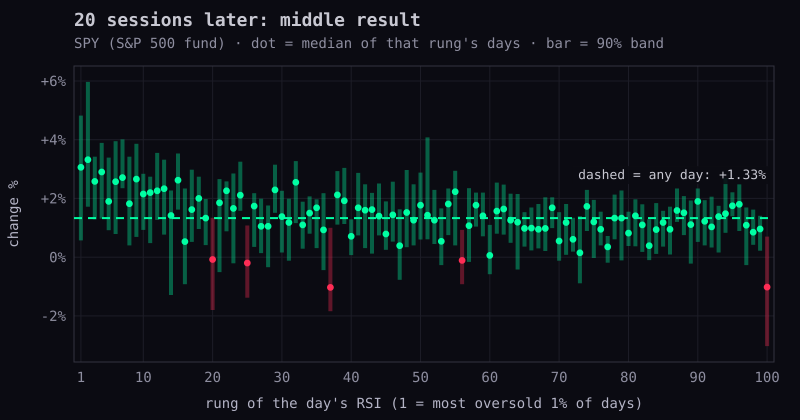

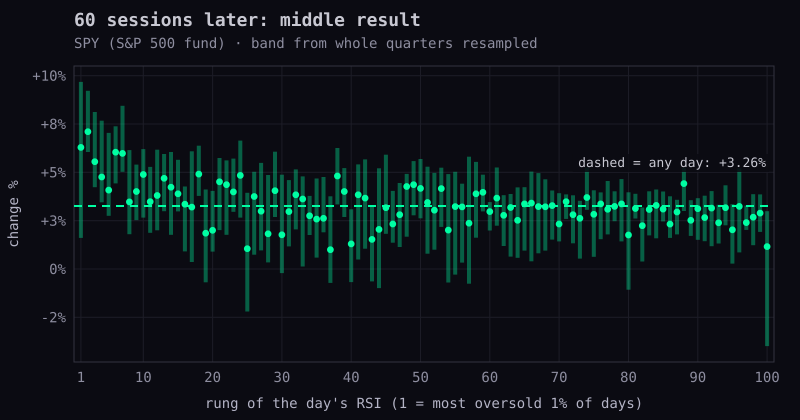

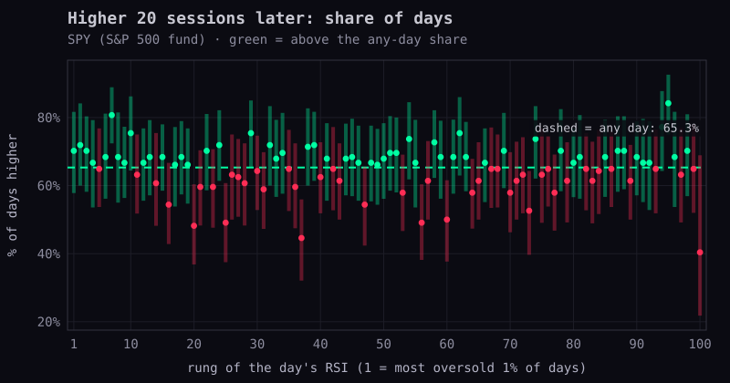

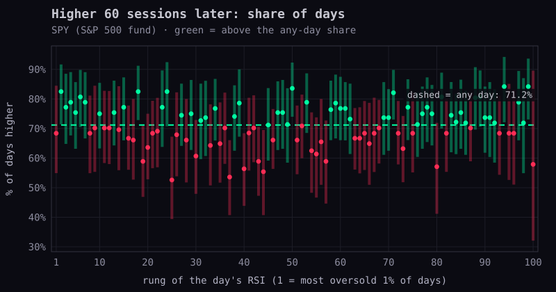

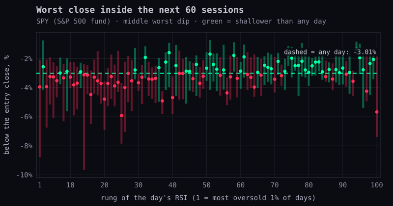

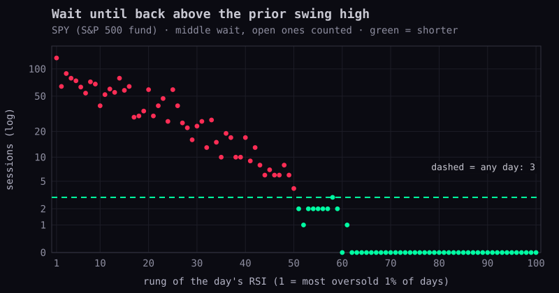

All 100 rungs of SPY (S&P 500 fund) as a table
| Rung | RSI from–to | Days | Months | 5 later | 10 later | 20 later | 20: 90% band | 60 later | 60: 90% band | Higher 20 | Higher 60 | Worst in 20 | Worst in 60 | Wait to prior top | No-hindsight rung: 20 later | … 60 later |
|---|---|---|---|---|---|---|---|---|---|---|---|---|---|---|---|---|
| 1 | 16.7–28.3 | 57 | 21 | +2.0% | +2.1% | +3.1% | 0.6 to 4.8 | +6.3% | 1.6 to 9.7 | 70.2% | 68.4% | -2.1% | -4.0% | 132 | +2.4% (66) | +5.4% |
| 2 | 28.3–31.0 | 57 | 34 | +1.2% | +2.4% | +3.3% | 1.7 to 6.0 | +7.1% | 6.0 to 9.2 | 71.9% | 82.5% | -1.9% | -2.6% | 64 | +3.5% (55) | +7.8% |
| 3 | 31.0–32.8 | 57 | 39 | 0.0% | +1.2% | +2.6% | 1.3 to 3.4 | +5.5% | 4.2 to 8.1 | 70.2% | 77.2% | -2.0% | -3.9% | 89 | +2.6% (47) | +7.2% |
| 4 | 32.8–34.1 | 57 | 38 | +1.1% | +1.3% | +2.9% | 1.3 to 3.9 | +4.8% | 3.5 to 7.7 | 66.7% | 78.9% | -1.9% | -3.2% | 79 | +2.3% (46) | +3.6% |
| 5 | 34.1–35.2 | 57 | 41 | +0.6% | +1.2% | +1.9% | 0.9 to 3.4 | +4.1% | 2.8 to 7.0 | 64.9% | 75.4% | -2.2% | -3.3% | 74 | +1.6% (46) | +4.8% |
| 6 | 35.2–36.2 | 57 | 44 | +0.8% | +1.2% | +2.6% | 0.8 to 4.0 | +6.0% | 4.4 to 7.4 | 68.4% | 80.7% | -2.5% | -3.5% | 63 | +2.1% (47) | +5.5% |
| 7 | 36.2–37.0 | 57 | 48 | +0.8% | +1.6% | +2.7% | 2.4 to 4.0 | +6.0% | 5.0 to 8.4 | 80.7% | 78.9% | -1.7% | -3.0% | 54 | +3.6% (45) | +6.8% |
| 8 | 37.0–38.0 | 57 | 43 | +1.1% | +1.0% | +1.8% | 0.4 to 3.4 | +3.5% | 1.8 to 6.2 | 68.4% | 68.4% | -2.6% | -3.3% | 72 | +2.1% (54) | +4.1% |
| 9 | 38.0–38.6 | 57 | 45 | +0.8% | +1.9% | +2.7% | 0.7 to 3.9 | +4.0% | 2.5 to 5.4 | 66.7% | 70.2% | -1.7% | -2.9% | 68 | +1.6% (50) | +5.5% |
| 10 | 38.6–39.4 | 57 | 46 | +0.4% | +1.3% | +2.1% | 0.9 to 2.8 | +4.9% | 2.7 to 6.2 | 75.4% | 75.0% | -1.8% | -3.3% | 39 | +2.4% (51) | +4.0% |
| 11 | 39.4–40.2 | 57 | 47 | +0.4% | +1.1% | +2.2% | 0.5 to 2.7 | +3.5% | 1.9 to 5.3 | 63.2% | 70.2% | -2.0% | -3.8% | 52 | +1.4% (47) | +4.3% |
| 12 | 40.2–40.8 | 57 | 46 | +0.3% | +1.3% | +2.3% | 1.3 to 3.5 | +3.8% | 2.0 to 6.2 | 66.7% | 70.2% | -2.5% | -3.7% | 60 | +2.0% (45) | +5.4% |
| 13 | 40.8–41.3 | 57 | 47 | +0.6% | +1.3% | +2.3% | 0.8 to 3.3 | +4.7% | 3.0 to 6.0 | 68.4% | 75.4% | -2.1% | -2.9% | 55 | +2.0% (43) | +4.6% |
| 14 | 41.3–41.8 | 57 | 44 | 0.0% | +0.9% | +1.4% | -1.3 to 2.3 | +4.2% | 1.8 to 6.0 | 60.7% | 69.6% | -2.9% | -3.1% | 79 (1 open) | +2.1% (43) | +4.7% |
| 15 | 41.8–42.3 | 57 | 45 | +0.6% | +1.6% | +2.6% | 1.6 to 3.5 | +3.9% | 3.0 to 5.7 | 68.4% | 77.2% | -2.2% | -3.1% | 58 | +2.8% (42) | +4.2% |
| 16 | 42.3–42.8 | 57 | 45 | +0.4% | +0.7% | +0.5% | -0.9 to 2.3 | +3.4% | 0.9 to 4.3 | 54.4% | 66.7% | -2.6% | -4.5% | 64 | +2.4% (43) | +4.6% |
| 17 | 42.8–43.3 | 56 | 43 | +0.6% | +1.1% | +1.6% | 0.5 to 3.0 | +3.2% | 0.4 to 6.1 | 66.1% | 66.1% | -2.0% | -3.3% | 29 | +1.3% (58) | +3.8% |
| 18 | 43.3–43.9 | 57 | 50 | +1.2% | +1.4% | +2.0% | 1.0 to 2.7 | +4.9% | 3.8 to 6.4 | 68.4% | 82.5% | -2.4% | -3.5% | 30 | +2.3% (35) | +4.9% |
| 19 | 43.9–44.3 | 57 | 49 | +0.2% | 0.0% | +1.3% | 0.4 to 2.0 | +1.9% | -0.7 to 4.1 | 66.1% | 58.9% | -2.5% | -3.7% | 34 (1 open) | +1.0% (48) | +3.9% |
| 20 | 44.3–44.8 | 57 | 50 | -0.7% | -0.1% | -0.1% | -1.8 to 1.3 | +2.0% | 0.9 to 4.0 | 48.2% | 63.6% | -3.4% | -4.8% | 59 (1 open) | +1.4% (45) | +2.3% |
| 21 | 44.8–45.2 | 57 | 51 | +0.1% | +0.3% | +1.9% | -0.5 to 2.7 | +4.5% | 2.0 to 5.7 | 59.6% | 68.4% | -3.1% | -3.7% | 30 | +1.4% (44) | +3.7% |
| 22 | 45.2–45.5 | 57 | 49 | +0.7% | +1.1% | +2.3% | 0.9 to 2.6 | +4.4% | 1.8 to 5.6 | 70.2% | 69.1% | -1.5% | -3.2% | 39 | +1.4% (42) | +3.5% |
| 23 | 45.5–45.9 | 57 | 49 | 0.0% | +1.2% | +1.7% | -0.2 to 2.9 | +4.0% | 3.0 to 5.7 | 59.6% | 77.2% | -2.4% | -3.9% | 47 | +2.3% (56) | +4.7% |
| 24 | 45.9–46.3 | 57 | 51 | +0.2% | +1.4% | +2.1% | 1.6 to 3.3 | +4.8% | 2.7 to 6.6 | 71.9% | 82.5% | -1.6% | -3.6% | 26 | +1.9% (48) | +2.9% |
| 25 | 46.3–46.7 | 57 | 45 | +0.1% | 0.0% | -0.2% | -1.4 to 1.1 | +1.1% | -2.2 to 3.9 | 49.1% | 52.6% | -2.5% | -5.9% | 59 | +0.9% (48) | +3.6% |
| 26 | 46.7–47.2 | 57 | 47 | +0.6% | +1.1% | +1.7% | 0.3 to 2.2 | +3.8% | 0.7 to 5.0 | 63.2% | 67.9% | -2.0% | -4.0% | 39 | +1.7% (42) | +3.1% |
| 27 | 47.2–47.7 | 57 | 52 | +0.9% | +0.8% | +1.1% | 0.1 to 2.0 | +3.0% | 1.0 to 5.5 | 62.5% | 74.5% | -2.0% | -3.0% | 25 (1 open) | +1.1% (51) | +4.0% |
| 28 | 47.7–48.1 | 57 | 42 | +0.5% | +0.7% | +1.1% | -0.3 to 1.8 | +1.8% | 0.3 to 4.9 | 60.7% | 66.1% | -1.7% | -3.5% | 22 (1 open) | +1.6% (41) | +2.7% |
| 29 | 48.1–48.5 | 57 | 51 | +0.3% | +1.7% | +2.3% | 1.5 to 3.1 | +4.0% | 2.7 to 6.1 | 75.4% | 75.0% | -1.9% | -2.8% | 16 | +1.6% (60) | +3.8% |
| 30 | 48.5–48.9 | 57 | 49 | +0.4% | +0.5% | +1.4% | 0.2 to 2.3 | +1.8% | -0.2 to 4.9 | 64.3% | 60.7% | -2.7% | -3.7% | 23 (1 open) | +1.5% (50) | +4.4% |
| 31 | 48.9–49.4 | 57 | 53 | +0.8% | +0.2% | +1.2% | -0.1 to 2.0 | +3.0% | 1.2 to 4.6 | 58.9% | 72.7% | -2.0% | -3.3% | 26 (1 open) | +1.9% (57) | +3.4% |
| 32 | 49.4–49.8 | 57 | 45 | +1.0% | +1.0% | +2.5% | 1.2 to 3.3 | +3.8% | 2.0 to 5.2 | 71.9% | 73.7% | -1.3% | -1.9% | 13 | +1.4% (51) | +3.5% |
| 33 | 49.8–50.1 | 57 | 49 | +0.7% | +0.8% | +1.1% | 0.3 to 1.9 | +3.6% | 0.1 to 4.8 | 67.9% | 64.3% | -1.6% | -3.4% | 27 (1 open) | +1.7% (55) | +3.6% |
| 34 | 50.1–50.4 | 57 | 48 | +0.7% | +1.0% | +1.5% | 0.8 to 2.1 | +2.8% | 1.8 to 3.8 | 69.6% | 76.8% | -2.2% | -3.4% | 15 (1 open) | +0.6% (42) | +2.5% |
| 35 | 50.4–50.8 | 57 | 50 | -0.2% | +0.5% | +1.7% | 0.3 to 2.0 | +2.6% | 0.6 to 4.7 | 64.9% | 64.9% | -2.1% | -3.4% | 10 | +1.1% (52) | +2.5% |
| 36 | 50.8–51.2 | 57 | 49 | -0.2% | -0.4% | +0.9% | -0.4 to 2.2 | +2.6% | 1.9 to 4.8 | 59.6% | 70.2% | -2.0% | -2.6% | 19 | +1.9% (55) | +3.5% |
| 37 | 51.2–51.6 | 57 | 48 | +0.1% | -0.6% | -1.0% | -1.8 to 1.0 | +1.0% | -0.7 to 3.8 | 44.6% | 53.6% | -2.7% | -4.9% | 17 (1 open) | +1.0% (50) | +3.1% |
| 38 | 51.6–52.0 | 57 | 49 | -0.2% | +1.2% | +2.1% | 1.1 to 2.9 | +4.8% | 3.3 to 6.3 | 71.4% | 74.1% | -1.6% | -2.2% | 10 (1 open) | +1.2% (55) | +3.0% |
| 39 | 52.0–52.4 | 57 | 53 | +0.9% | +1.7% | +1.9% | 1.1 to 3.0 | +4.0% | 2.7 to 5.2 | 71.9% | 78.6% | -1.1% | -1.6% | 10 | +0.9% (59) | +1.0% |
| 40 | 52.4–52.8 | 57 | 52 | -0.1% | +0.2% | +0.7% | 0.1 to 1.3 | +1.3% | -0.7 to 3.1 | 62.5% | 56.4% | -2.4% | -4.7% | 17 (1 open) | +1.4% (56) | +3.0% |
| 41 | 52.8–53.1 | 57 | 48 | +1.2% | +1.3% | +1.7% | 0.7 to 2.9 | +3.8% | 0.5 to 5.4 | 67.9% | 68.5% | -0.9% | -2.5% | 9 (1 open) | +1.3% (47) | +3.2% |
| 42 | 53.1–53.5 | 57 | 48 | +0.7% | +0.8% | +1.6% | 0.3 to 2.5 | +3.7% | 1.1 to 5.7 | 64.9% | 70.2% | -1.9% | -3.0% | 13 | +2.2% (54) | +5.1% |
| 43 | 53.5–53.8 | 57 | 52 | -0.2% | +0.8% | +1.6% | 0.1 to 2.2 | +1.5% | -0.6 to 3.3 | 61.4% | 58.9% | -1.8% | -3.0% | 8 | +2.6% (51) | +4.0% |
| 44 | 53.8–54.0 | 57 | 54 | 0.0% | +1.2% | +1.4% | 0.7 to 2.5 | +2.0% | -1.0 to 5.2 | 67.9% | 55.4% | -1.6% | -2.9% | 6 (1 open) | +1.3% (49) | +2.6% |
| 45 | 54.0–54.4 | 57 | 45 | +0.3% | +0.5% | +0.8% | 0.3 to 1.9 | +3.2% | 1.8 to 5.9 | 68.4% | 71.2% | -2.1% | -2.9% | 7 | +1.3% (55) | +3.1% |
| 46 | 54.4–54.8 | 57 | 51 | +0.6% | +0.8% | +1.4% | 0.5 to 2.6 | +2.3% | 1.4 to 4.0 | 66.7% | 66.1% | -1.6% | -3.4% | 6 | +1.4% (54) | +3.7% |
| 47 | 54.8–55.0 | 57 | 49 | +0.2% | +0.4% | +0.4% | -0.8 to 1.6 | +2.8% | 1.1 to 4.5 | 54.4% | 75.4% | -1.8% | -2.4% | 6 | +0.7% (40) | +3.5% |
| 48 | 55.0–55.4 | 57 | 49 | +0.5% | +0.9% | +1.5% | 0.3 to 3.0 | +4.3% | 1.7 to 4.9 | 66.7% | 75.4% | -1.3% | -3.7% | 8 | +1.6% (55) | +1.7% |
| 49 | 55.4–55.7 | 57 | 49 | -0.2% | +0.6% | +1.3% | 0.4 to 2.5 | +4.4% | 2.8 to 5.6 | 66.1% | 71.4% | -2.3% | -3.2% | 6 (1 open) | +2.8% (50) | +2.5% |
| 50 | 55.7–56.1 | 57 | 47 | +0.2% | +1.1% | +1.8% | 0.6 to 2.9 | +4.2% | 2.6 to 5.7 | 67.9% | 83.6% | -1.5% | -2.7% | 4 (1 open) | +0.5% (52) | +2.8% |
| 51 | 56.1–56.4 | 56 | 46 | +0.9% | +1.2% | +1.4% | 0.6 to 4.1 | +3.4% | 0.8 to 5.3 | 69.6% | 66.1% | -0.8% | -1.7% | 2 | +2.6% (64) | +3.2% |
| 52 | 56.4–56.7 | 57 | 44 | +0.3% | +1.0% | +1.3% | 0.5 to 2.3 | +3.0% | 1.0 to 5.0 | 69.6% | 70.9% | -1.2% | -2.4% | 1 (1 open) | +1.6% (48) | +4.4% |
| 53 | 56.7–57.0 | 57 | 54 | +0.3% | +1.4% | +0.5% | -0.3 to 1.7 | +4.2% | 2.2 to 5.2 | 57.9% | 78.9% | -1.4% | -2.7% | 2 | +0.5% (50) | +2.2% |
| 54 | 57.0–57.3 | 57 | 47 | +0.3% | +0.8% | +1.8% | 0.8 to 2.3 | +2.0% | -0.7 to 4.9 | 73.7% | 62.5% | -1.6% | -3.1% | 2 | +1.1% (63) | +3.0% |
| 55 | 57.3–57.5 | 57 | 46 | +0.6% | +1.0% | +2.2% | 0.4 to 2.9 | +3.2% | -0.3 to 5.0 | 66.7% | 61.4% | -1.0% | -2.8% | 2 | +1.0% (56) | +3.1% |
| 56 | 57.5–57.8 | 57 | 50 | +0.1% | +0.1% | -0.1% | -0.9 to 0.9 | +3.2% | 0.3 to 4.4 | 49.1% | 65.5% | -2.0% | -4.4% | 2 | +2.4% (62) | +5.4% |
| 57 | 57.8–58.2 | 57 | 48 | +0.5% | +0.2% | +1.1% | -0.2 to 2.4 | +2.4% | -0.8 to 5.8 | 61.4% | 58.9% | -2.3% | -3.3% | 2 | +2.0% (45) | +4.5% |
| 58 | 58.2–58.5 | 57 | 53 | +0.6% | +1.0% | +1.8% | 1.0 to 2.2 | +3.9% | 1.6 to 5.5 | 72.7% | 76.4% | -0.7% | -1.8% | 3 (2 open) | +1.3% (60) | +5.0% |
| 59 | 58.5–58.8 | 57 | 48 | +0.3% | +1.0% | +1.4% | 0.7 to 2.2 | +4.0% | 3.0 to 4.9 | 68.4% | 78.6% | -1.7% | -3.4% | 2 (1 open) | +0.8% (63) | +4.2% |
| 60 | 58.8–59.0 | 57 | 49 | +0.3% | +0.4% | +0.1% | -0.6 to 1.1 | +3.0% | 2.0 to 3.5 | 50.0% | 76.8% | -1.6% | -2.9% | 0 (1 open) | +2.2% (51) | +3.9% |
| 61 | 59.0–59.3 | 57 | 47 | +0.5% | +1.0% | +1.6% | 0.8 to 2.5 | +3.7% | 2.2 to 5.3 | 68.4% | 76.8% | -1.0% | -1.9% | 1 | +1.9% (53) | +3.1% |
| 62 | 59.3–59.6 | 57 | 48 | +0.8% | +1.5% | +1.6% | 0.8 to 2.5 | +2.8% | 1.2 to 3.8 | 75.4% | 73.2% | -0.9% | -3.1% | 0 | +2.0% (54) | +3.9% |
| 63 | 59.6–59.8 | 57 | 52 | +0.6% | +0.7% | +1.3% | 0.5 to 2.2 | +3.2% | 0.6 to 3.9 | 68.4% | 66.7% | -1.1% | -3.3% | 0 | +1.9% (52) | +3.9% |
| 64 | 59.8–60.1 | 57 | 51 | +0.7% | +0.6% | +1.2% | -0.4 to 2.1 | +2.5% | 0.6 to 4.2 | 57.9% | 66.7% | -1.3% | -4.0% | 0 | +0.3% (49) | +2.1% |
| 65 | 60.1–60.4 | 57 | 49 | +0.3% | +0.5% | +1.0% | 0.4 to 1.5 | +3.4% | 0.9 to 4.2 | 61.4% | 68.4% | -1.3% | -3.0% | 0 | +0.5% (53) | +1.1% |
| 66 | 60.4–60.6 | 57 | 50 | +0.7% | +0.6% | +1.0% | 0.2 to 1.7 | +3.4% | 0.4 to 5.0 | 66.7% | 64.9% | -1.1% | -3.1% | 0 | +0.7% (48) | +3.8% |
| 67 | 60.6–60.9 | 57 | 45 | +0.6% | +0.6% | +0.9% | 0.3 to 1.8 | +3.2% | 0.8 to 5.0 | 64.9% | 68.4% | -1.7% | -2.5% | 0 | +1.1% (51) | +1.7% |
| 68 | 60.9–61.3 | 57 | 48 | +0.5% | +0.6% | +1.0% | 0.2 to 2.0 | +3.2% | 0.9 to 4.6 | 64.9% | 70.2% | -1.4% | -2.6% | 0 | +0.9% (46) | +4.1% |
| 69 | 61.3–61.5 | 57 | 45 | +0.3% | +0.7% | +1.7% | 1.0 to 2.0 | +3.3% | 1.5 to 4.1 | 70.2% | 73.7% | -0.8% | -2.7% | 0 | +1.7% (52) | +4.1% |
| 70 | 61.5–61.8 | 57 | 49 | +0.2% | 0.0% | +0.6% | -0.1 to 1.5 | +2.3% | 1.4 to 3.9 | 57.9% | 73.7% | -1.5% | -3.4% | 0 | +1.3% (69) | +2.2% |
| 71 | 61.8–62.1 | 57 | 47 | +0.5% | +0.6% | +1.2% | 0.1 to 1.8 | +3.5% | 2.6 to 3.9 | 61.4% | 82.1% | -1.5% | -2.2% | 0 | +0.6% (56) | +3.1% |
| 72 | 62.1–62.3 | 57 | 50 | +0.3% | +0.6% | +0.6% | 0.2 to 1.3 | +2.8% | 1.3 to 3.8 | 63.2% | 68.4% | -1.5% | -3.2% | 0 | +1.5% (43) | +4.6% |
| 73 | 62.3–62.7 | 57 | 50 | +0.3% | +0.1% | +0.1% | -0.9 to 1.4 | +2.6% | 0.5 to 3.5 | 52.6% | 63.2% | -1.4% | -2.9% | 0 | +0.5% (59) | +2.1% |
| 74 | 62.7–63.0 | 57 | 47 | +0.7% | +0.6% | +1.7% | 0.9 to 2.3 | +3.7% | 3.1 to 5.2 | 73.7% | 77.2% | -1.1% | -1.8% | 0 | +1.4% (59) | +3.1% |
| 75 | 63.0–63.3 | 57 | 44 | +0.3% | +0.7% | +1.2% | -0.0 to 1.9 | +2.8% | 0.6 to 4.1 | 63.2% | 68.4% | -0.9% | -2.0% | 0 | +1.2% (57) | +3.4% |
| 76 | 63.3–63.7 | 57 | 48 | +0.7% | +0.7% | +0.9% | 0.4 to 1.6 | +3.4% | 1.5 to 4.0 | 64.9% | 71.4% | -1.2% | -2.5% | 0 | +0.9% (46) | +2.5% |
| 77 | 63.7–63.9 | 57 | 48 | 0.0% | +0.3% | +0.3% | -0.2 to 0.7 | +3.1% | 1.8 to 4.5 | 57.9% | 75.0% | -1.4% | -2.5% | 0 | +1.1% (58) | +3.5% |
| 78 | 63.9–64.2 | 57 | 47 | +0.5% | +0.8% | +1.3% | 0.6 to 2.1 | +3.2% | 2.5 to 4.0 | 70.2% | 77.2% | -0.8% | -2.2% | 0 | +0.8% (64) | +3.0% |
| 79 | 64.2–64.5 | 57 | 50 | +0.5% | +0.5% | +1.3% | -0.1 to 2.3 | +3.4% | 1.4 to 4.7 | 61.4% | 75.0% | -1.1% | -2.8% | 0 | +1.2% (77) | +3.6% |
| 80 | 64.5–64.8 | 57 | 46 | +0.2% | +0.3% | +0.8% | 0.4 to 1.6 | +1.8% | -1.1 to 4.0 | 66.7% | 57.1% | -0.9% | -3.0% | 0 | +1.1% (72) | +3.5% |
| 81 | 64.8–65.2 | 57 | 49 | 0.0% | +0.5% | +1.4% | 0.4 to 2.0 | +3.1% | 2.6 to 3.9 | 68.4% | 80.7% | -1.1% | -2.5% | 0 | +1.2% (43) | +3.1% |
| 82 | 65.2–65.5 | 57 | 49 | 0.0% | +0.3% | +1.1% | 0.2 to 1.8 | +2.2% | 0.4 to 3.2 | 64.9% | 68.4% | -1.2% | -2.2% | 0 | +1.7% (52) | +2.7% |
| 83 | 65.5–65.8 | 57 | 45 | +0.3% | +0.3% | +0.4% | -0.1 to 1.3 | +3.1% | 1.7 to 4.0 | 61.4% | 74.5% | -1.4% | -2.2% | 0 | +0.8% (55) | +2.5% |
| 84 | 65.8–66.2 | 56 | 43 | +0.2% | +0.8% | +0.9% | 0.1 to 1.8 | +3.3% | 1.6 to 4.1 | 64.3% | 72.2% | -1.3% | -2.9% | 0 | +0.4% (60) | +3.3% |
| 85 | 66.2–66.6 | 57 | 48 | +0.4% | +0.3% | +1.2% | 0.4 to 1.6 | +3.1% | 2.5 to 4.0 | 68.4% | 75.4% | -1.1% | -3.2% | 0 | +1.2% (61) | +3.2% |
| 86 | 66.6–67.0 | 57 | 46 | 0.0% | +0.5% | +0.9% | 0.1 to 1.7 | +2.3% | 1.6 to 3.8 | 64.9% | 71.9% | -1.3% | -2.8% | 0 | +0.9% (62) | +3.0% |
| 87 | 67.0–67.3 | 57 | 46 | +0.1% | +0.9% | +1.6% | 1.2 to 2.3 | +3.0% | 1.8 to 3.6 | 70.2% | 70.2% | -1.2% | -3.4% | 0 | +1.2% (63) | +2.5% |
| 88 | 67.3–67.7 | 57 | 45 | +0.3% | +0.7% | +1.5% | 0.8 to 2.1 | +4.4% | 3.0 to 5.2 | 70.2% | 80.4% | -1.3% | -2.8% | 0 | +1.3% (70) | +2.5% |
| 89 | 67.7–68.0 | 57 | 49 | +0.2% | +0.3% | +1.1% | -0.2 to 1.9 | +2.5% | 1.7 to 3.6 | 61.4% | 80.7% | -1.4% | -3.0% | 0 | +0.9% (72) | +3.5% |
| 90 | 68.0–68.4 | 57 | 47 | +0.3% | +0.7% | +1.9% | 0.5 to 2.3 | +3.1% | 1.5 to 3.7 | 68.4% | 73.7% | -1.4% | -2.6% | 0 | +1.9% (48) | +3.3% |
| 91 | 68.4–68.9 | 57 | 39 | +0.3% | +1.0% | +1.2% | 0.4 to 1.9 | +2.7% | 1.4 to 3.8 | 66.7% | 73.7% | -1.1% | -3.1% | 0 | +1.0% (82) | +2.6% |
| 92 | 68.9–69.5 | 57 | 43 | +0.2% | +0.4% | +1.0% | 0.3 to 2.1 | +3.1% | 1.2 to 4.0 | 66.7% | 71.9% | -1.3% | -3.0% | 0 | +1.4% (68) | +3.0% |
| 93 | 69.5–70.0 | 57 | 44 | 0.0% | +0.6% | +1.4% | 0.2 to 1.8 | +2.4% | 1.3 to 3.3 | 64.9% | 68.4% | -1.5% | -3.6% | 0 | +0.5% (73) | +2.6% |
| 94 | 70.0–70.6 | 57 | 39 | +0.4% | +0.6% | +1.5% | 0.8 to 2.7 | +3.2% | 2.3 to 4.3 | 77.2% | 84.2% | -1.0% | -1.3% | 0 | +2.0% (73) | +2.6% |
| 95 | 70.6–71.4 | 57 | 33 | +0.4% | +0.8% | +1.8% | 1.4 to 2.2 | +2.0% | 0.3 to 3.4 | 84.2% | 68.4% | -1.0% | -1.9% | 0 | +1.6% (68) | +2.9% |
| 96 | 71.4–72.3 | 57 | 35 | +0.3% | +0.8% | +1.8% | 0.9 to 2.5 | +3.2% | 0.9 to 5.2 | 68.4% | 68.4% | -0.7% | -2.8% | 0 | +1.9% (63) | +3.6% |
| 97 | 72.3–73.4 | 57 | 38 | +0.1% | +0.2% | +1.1% | -0.3 to 1.7 | +2.4% | 2.0 to 3.3 | 63.2% | 78.9% | -1.4% | -4.2% | 0 | +1.2% (64) | +2.2% |
| 98 | 73.4–74.7 | 57 | 34 | 0.0% | +0.6% | +0.8% | 0.4 to 1.6 | +2.7% | 1.2 to 3.9 | 70.2% | 71.9% | -1.0% | -2.3% | 0 | +1.3% (61) | +2.9% |
| 99 | 74.7–76.7 | 57 | 31 | -0.1% | 0.0% | +1.0% | 0.2 to 1.4 | +2.9% | 1.9 to 3.9 | 64.9% | 84.2% | -1.1% | -2.1% | 0 | +1.1% (82) | +3.6% |
| 100 | 76.7–87.0 | 57 | 21 | -0.2% | +0.2% | -1.0% | -3.0 to 0.7 | +1.2% | -4.0 to 3.0 | 40.4% | 57.9% | -3.0% | -5.7% | 0 | -0.3% (70) | +1.7% |
| Any day | 5697 | +0.4% | +0.7% | +1.3% | +3.3% | 65.3% | 71.2% | -1.5% | -3.0% | 3 | ||||||
Nasdaq 100 index · rung 1 → +2.4% in 20 sessions vs +1.6% any day · worst in 60 -6.2% vs -4.1%
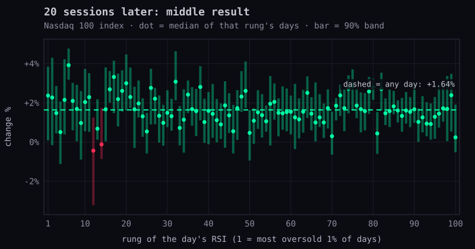

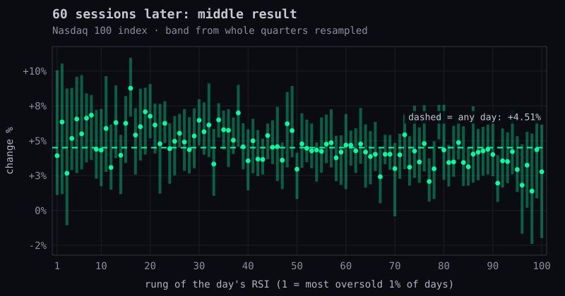

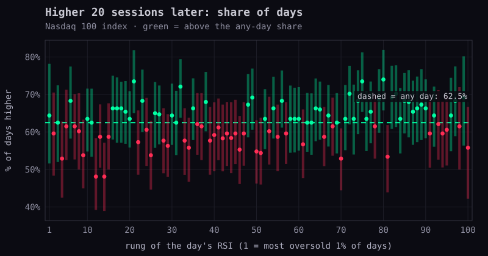

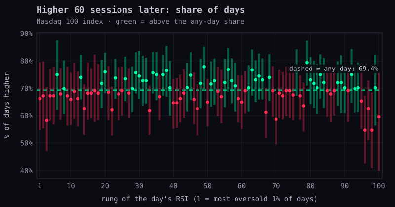

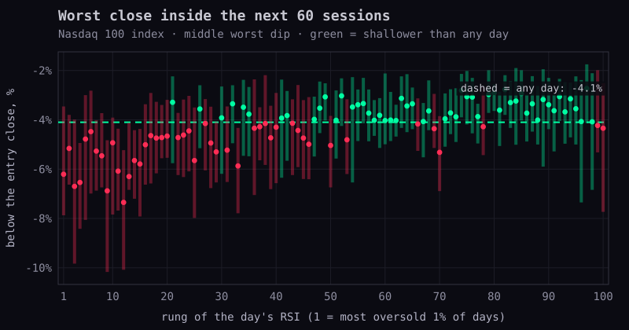

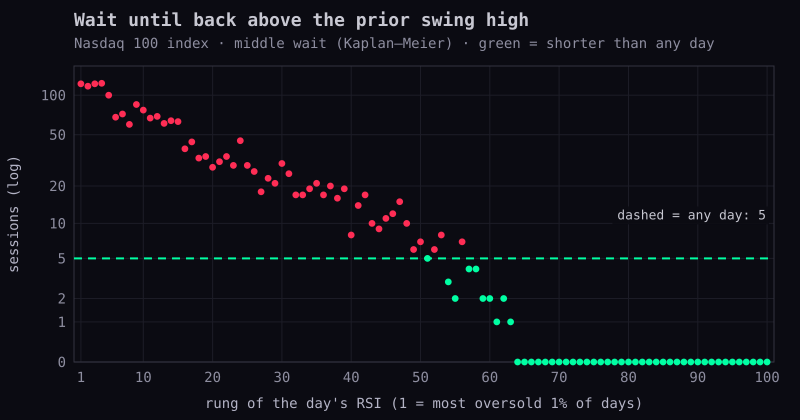

All 100 rungs of Nasdaq 100 index as a table
| Rung | RSI from–to | Days | Months | 5 later | 10 later | 20 later | 20: 90% band | 60 later | 60: 90% band | Higher 20 | Higher 60 | Worst in 20 | Worst in 60 | Wait to prior top | No-hindsight rung: 20 later | … 60 later |
|---|---|---|---|---|---|---|---|---|---|---|---|---|---|---|---|---|
| 1 | 12.0–27.9 | 104 | 40 | +2.9% | +2.1% | +2.4% | 0.1 to 3.8 | +3.9% | 1.1 to 10.1 | 64.4% | 66.3% | -2.8% | -6.2% | 122 | +3.0% (56) | +2.9% |
| 2 | 27.9–30.4 | 104 | 62 | +0.8% | +2.4% | +2.3% | -0.2 to 4.3 | +6.3% | 1.2 to 10.5 | 59.6% | 67.3% | -2.8% | -5.2% | 117 | 0.0% (68) | +4.7% |
| 3 | 30.4–32.1 | 104 | 63 | +0.8% | +1.0% | +1.5% | 0.4 to 2.9 | +2.7% | -1.1 to 8.8 | 62.5% | 58.3% | -4.6% | -6.7% | 122 | +3.0% (77) | +8.6% |
| 4 | 32.1–33.5 | 104 | 67 | +0.7% | +0.6% | +0.5% | -1.1 to 2.1 | +5.2% | 2.9 to 8.8 | 52.9% | 67.3% | -3.5% | -6.5% | 123 | +1.3% (88) | +2.0% |
| 5 | 33.5–34.6 | 104 | 74 | +0.8% | +1.5% | +2.1% | 0.4 to 4.2 | +6.6% | 2.7 to 9.6 | 61.5% | 67.3% | -3.1% | -4.8% | 100 | +0.9% (104) | +4.9% |
| 6 | 34.6–35.6 | 104 | 76 | +0.5% | +1.7% | +3.9% | 3.2 to 4.8 | +5.5% | 3.0 to 9.7 | 68.3% | 75.0% | -2.8% | -4.5% | 68 | +3.6% (83) | +5.5% |
| 7 | 35.6–36.4 | 104 | 75 | +0.8% | +1.7% | +2.1% | 0.6 to 3.0 | +6.6% | 3.5 to 8.4 | 61.5% | 68.0% | -3.2% | -5.3% | 72 | +0.6% (103) | +5.4% |
| 8 | 36.4–37.2 | 103 | 79 | +0.5% | +0.3% | +1.7% | 0.0 to 2.9 | +6.8% | 3.6 to 8.3 | 60.2% | 69.9% | -3.7% | -5.5% | 60 | +2.1% (93) | +6.3% |
| 9 | 37.2–38.0 | 104 | 80 | -0.1% | -1.3% | +1.0% | -0.9 to 2.6 | +4.4% | 2.3 to 7.2 | 53.8% | 67.3% | -4.5% | -6.9% | 85 | +1.5% (87) | +3.9% |
| 10 | 38.0–38.7 | 104 | 83 | +0.3% | +1.3% | +2.0% | 0.6 to 3.7 | +4.3% | 1.7 to 7.3 | 63.5% | 66.0% | -3.8% | -4.9% | 77 | +2.7% (95) | +5.6% |
| 11 | 38.7–39.3 | 104 | 81 | 0.0% | +1.0% | +2.3% | 0.5 to 3.5 | +5.9% | 2.8 to 9.6 | 62.5% | 68.9% | -4.0% | -6.1% | 67 | +3.7% (84) | +2.6% |
| 12 | 39.3–39.9 | 104 | 77 | -0.2% | -0.6% | -0.4% | -3.2 to 1.3 | +3.1% | 1.5 to 6.2 | 48.1% | 66.3% | -5.1% | -7.3% | 69 | +2.1% (116) | +6.6% |
| 13 | 39.9–40.5 | 104 | 83 | -0.1% | +0.6% | +0.7% | 0.1 to 2.2 | +6.3% | 3.8 to 9.0 | 58.7% | 74.0% | -3.6% | -6.3% | 61 | +0.7% (89) | +7.2% |
| 14 | 40.5–41.0 | 104 | 84 | -0.2% | -0.4% | -0.1% | -0.9 to 1.7 | +4.0% | 1.2 to 5.4 | 48.1% | 62.5% | -4.6% | -5.7% | 64 | +0.1% (83) | +4.4% |
| 15 | 41.0–41.5 | 104 | 87 | 0.0% | +0.7% | +1.7% | 0.0 to 3.8 | +6.3% | 3.4 to 8.2 | 58.7% | 68.3% | -4.5% | -5.8% | 63 | +1.2% (99) | +3.6% |
| 16 | 41.5–42.0 | 104 | 82 | +0.4% | +0.4% | +2.7% | 2.0 to 3.6 | +8.8% | 6.7 to 11.0 | 66.3% | 68.3% | -3.2% | -5.0% | 39 | +2.3% (114) | +4.5% |
| 17 | 42.0–42.5 | 104 | 86 | +1.2% | +2.5% | +3.3% | 1.5 to 4.2 | +5.4% | 2.6 to 7.3 | 66.3% | 69.2% | -2.5% | -4.6% | 44 | +1.4% (100) | +6.9% |
| 18 | 42.5–42.9 | 104 | 85 | +0.9% | +1.8% | +2.2% | 0.8 to 3.5 | +6.0% | 3.6 to 8.7 | 66.3% | 68.3% | -2.4% | -4.7% | 33 | +2.3% (94) | +5.6% |
| 19 | 42.9–43.4 | 104 | 85 | +0.7% | +0.5% | +2.6% | 1.6 to 3.7 | +7.1% | 4.0 to 8.8 | 65.4% | 71.8% | -3.2% | -4.7% | 34 | +3.3% (122) | +6.9% |
| 20 | 43.4–43.9 | 104 | 92 | +0.2% | +0.9% | +3.0% | 1.6 to 4.5 | +6.8% | 5.2 to 9.1 | 63.5% | 76.0% | -3.1% | -4.7% | 28 | +1.0% (97) | +3.8% |
| 21 | 43.9–44.3 | 104 | 89 | +1.1% | +1.8% | +2.3% | 1.7 to 3.8 | +6.1% | 4.1 to 7.7 | 73.5% | 68.6% | -1.8% | -3.3% | 31 | +3.6% (122) | +7.8% |
| 22 | 44.3–44.7 | 103 | 89 | +0.2% | +0.9% | +1.7% | -0.3 to 2.8 | +4.8% | 1.2 to 7.6 | 57.3% | 62.1% | -3.1% | -4.7% | 34 | +1.2% (107) | +6.2% |
| 23 | 44.7–45.2 | 104 | 87 | +0.2% | +0.8% | +2.0% | 1.3 to 3.1 | +6.3% | 4.8 to 7.8 | 68.3% | 73.8% | -3.0% | -4.6% | 29 | +2.7% (122) | +5.7% |
| 24 | 45.2–45.6 | 104 | 86 | +0.4% | +0.8% | +1.3% | 0.3 to 2.2 | +4.4% | 1.9 to 6.3 | 60.6% | 68.0% | -3.1% | -4.5% | 45 | +2.0% (107) | +4.7% |
| 25 | 45.6–46.0 | 104 | 88 | +0.4% | +0.8% | +0.5% | -0.6 to 1.5 | +5.0% | 2.5 to 6.8 | 53.8% | 69.2% | -2.6% | -5.7% | 29 | +0.8% (93) | +5.9% |
| 26 | 46.0–46.4 | 104 | 91 | +1.1% | +1.8% | +2.8% | 0.9 to 3.7 | +5.5% | 4.5 to 6.9 | 65.0% | 73.5% | -2.1% | -3.6% | 26 | +2.2% (100) | +5.1% |
| 27 | 46.4–46.9 | 104 | 93 | +0.9% | +1.7% | +2.2% | 0.9 to 2.8 | +4.9% | 2.9 to 7.3 | 64.7% | 68.3% | -2.5% | -4.2% | 18 | +2.5% (128) | +6.5% |
| 28 | 46.9–47.3 | 104 | 90 | +0.6% | +1.0% | +1.3% | -0.0 to 2.4 | +4.4% | 2.6 to 6.7 | 57.7% | 69.9% | -2.5% | -4.9% | 23 | +1.9% (115) | +5.3% |
| 29 | 47.3–47.7 | 104 | 90 | +0.7% | +1.0% | +1.0% | -0.2 to 1.9 | +5.3% | 3.0 to 7.3 | 56.3% | 75.7% | -3.4% | -5.3% | 21 | +0.3% (98) | +5.0% |
| 30 | 47.7–48.0 | 104 | 87 | +1.2% | +1.2% | +1.5% | 0.8 to 2.6 | +6.5% | 4.7 to 8.0 | 64.4% | 74.5% | -2.5% | -3.9% | 30 | +1.0% (114) | +4.4% |
| 31 | 48.0–48.3 | 104 | 86 | +0.3% | +0.8% | +1.3% | 0.6 to 2.2 | +5.7% | 4.0 to 7.8 | 62.5% | 72.8% | -3.0% | -5.2% | 25 | +1.5% (118) | +4.3% |
| 32 | 48.3–48.7 | 104 | 93 | +0.8% | +1.3% | +3.1% | 2.1 to 4.6 | +6.1% | 3.8 to 9.1 | 72.1% | 72.8% | -2.0% | -3.4% | 17 | +0.9% (109) | +5.7% |
| 33 | 48.7–49.0 | 104 | 87 | +0.1% | +0.8% | +0.7% | -0.2 to 1.8 | +3.3% | 1.1 to 5.8 | 57.7% | 61.8% | -2.7% | -5.9% | 17 | +1.9% (114) | +6.5% |
| 34 | 49.0–49.3 | 104 | 95 | +0.5% | +1.0% | +1.1% | -0.5 to 2.7 | +6.5% | 5.2 to 7.7 | 55.8% | 75.7% | -2.5% | -3.5% | 19 | +0.8% (114) | +4.7% |
| 35 | 49.3–49.7 | 104 | 89 | +0.9% | +1.0% | +2.4% | 1.5 to 3.1 | +5.8% | 4.4 to 7.2 | 66.3% | 75.0% | -2.3% | -3.8% | 21 | +1.9% (99) | +4.5% |
| 36 | 49.7–50.1 | 103 | 93 | +0.8% | +1.6% | +1.7% | 0.8 to 2.8 | +5.8% | 3.1 to 7.3 | 62.1% | 67.0% | -2.1% | -4.3% | 17 | +1.1% (106) | +5.3% |
| 37 | 50.1–50.5 | 104 | 89 | +0.2% | +1.3% | +1.6% | 0.3 to 2.7 | +5.0% | 4.1 to 6.7 | 61.5% | 75.0% | -2.9% | -4.3% | 20 | +1.4% (104) | +7.2% |
| 38 | 50.5–50.8 | 104 | 89 | +0.8% | +1.6% | +2.8% | 1.1 to 3.9 | +7.0% | 4.6 to 9.0 | 68.0% | 76.5% | -2.2% | -4.2% | 16 | +2.9% (97) | +5.8% |
| 39 | 50.8–51.2 | 104 | 84 | +0.3% | +0.4% | +1.0% | -0.0 to 2.2 | +4.6% | 3.0 to 6.3 | 57.7% | 70.2% | -2.8% | -4.7% | 19 | +1.4% (103) | +4.5% |
| 40 | 51.2–51.5 | 104 | 93 | +0.8% | +0.8% | +1.6% | -0.1 to 2.5 | +3.6% | 1.4 to 5.8 | 59.2% | 64.7% | -2.5% | -4.3% | 8 | +1.8% (114) | +6.1% |
| 41 | 51.5–51.9 | 104 | 92 | +0.9% | +1.3% | +1.4% | 0.2 to 3.0 | +5.0% | 2.7 to 6.6 | 61.2% | 64.7% | -2.0% | -3.9% | 14 | +2.4% (98) | +4.1% |
| 42 | 51.9–52.3 | 104 | 91 | +0.9% | +1.0% | +1.1% | -0.0 to 2.2 | +3.7% | 2.5 to 5.8 | 58.3% | 66.3% | -2.6% | -3.8% | 17 | +0.8% (99) | +3.6% |
| 43 | 52.3–52.6 | 104 | 95 | +0.5% | +0.6% | +0.9% | 0.2 to 2.0 | +3.7% | 2.6 to 5.2 | 59.6% | 68.3% | -2.6% | -4.1% | 10 | +1.1% (107) | +4.1% |
| 44 | 52.6–53.0 | 104 | 89 | +0.8% | +1.3% | +1.9% | -0.3 to 3.1 | +5.4% | 3.7 to 6.2 | 58.4% | 70.3% | -2.1% | -4.4% | 9 | +1.4% (103) | +4.5% |
| 45 | 53.0–53.3 | 104 | 91 | -0.1% | +0.7% | +1.4% | 0.5 to 2.5 | +4.5% | 3.3 to 6.5 | 59.6% | 74.8% | -3.2% | -4.7% | 11 | +1.1% (91) | +5.8% |
| 46 | 53.3–53.7 | 104 | 90 | +0.1% | +0.6% | +0.6% | -0.6 to 1.9 | +4.6% | 2.1 to 7.4 | 55.3% | 66.0% | -2.6% | -5.0% | 12 | +0.7% (100) | +4.6% |
| 47 | 53.7–54.0 | 104 | 94 | +0.7% | +1.2% | +1.7% | 0.1 to 2.6 | +3.6% | 1.5 to 4.9 | 59.6% | 62.5% | -2.2% | -4.0% | 15 | +1.4% (108) | +5.0% |
| 48 | 54.0–54.4 | 104 | 89 | +1.1% | +1.1% | +2.3% | 1.5 to 3.6 | +6.2% | 3.1 to 8.5 | 67.3% | 71.8% | -1.8% | -3.5% | 10 | +1.9% (129) | +4.4% |
| 49 | 54.4–54.7 | 104 | 93 | +1.0% | +1.4% | +2.6% | 1.7 to 4.1 | +5.7% | 3.8 to 8.9 | 69.2% | 77.9% | -2.2% | -3.1% | 6 | +1.6% (94) | +4.7% |
| 50 | 54.7–55.0 | 104 | 97 | +0.3% | -0.3% | +0.5% | -0.9 to 1.6 | +3.0% | 0.8 to 4.1 | 54.8% | 65.0% | -3.2% | -5.0% | 7 | +0.5% (93) | +3.3% |
| 51 | 55.0–55.3 | 103 | 89 | +0.1% | +1.0% | +1.1% | -0.1 to 1.7 | +4.8% | 3.1 to 7.0 | 54.4% | 71.6% | -2.0% | -4.0% | 5 | +1.8% (104) | +3.6% |
| 52 | 55.3–55.6 | 104 | 85 | +0.3% | +1.3% | +1.5% | 0.7 to 2.6 | +4.5% | 3.5 to 6.5 | 63.5% | 72.8% | -2.5% | -3.0% | 6 | +1.4% (89) | +4.4% |
| 53 | 55.6–56.0 | 104 | 86 | +0.6% | +0.9% | +1.4% | 0.2 to 2.5 | +4.3% | 3.0 to 6.2 | 60.2% | 68.9% | -2.0% | -4.8% | 8 | +1.7% (108) | +4.3% |
| 54 | 56.0–56.2 | 104 | 90 | +0.8% | +0.6% | +1.1% | 0.5 to 1.9 | +4.3% | 2.1 to 4.9 | 66.3% | 67.0% | -2.2% | -3.5% | 3 | +1.5% (103) | +5.3% |
| 55 | 56.2–56.6 | 104 | 88 | +0.3% | +1.0% | +1.9% | -0.2 to 3.4 | +4.2% | 2.7 to 6.7 | 58.7% | 72.1% | -2.2% | -3.4% | 2 | +2.0% (109) | +3.9% |
| 56 | 56.6–56.9 | 104 | 90 | 0.0% | +0.4% | +2.0% | 1.1 to 3.0 | +4.8% | 3.4 to 6.9 | 68.3% | 76.9% | -2.3% | -3.3% | 7 | +1.0% (105) | +4.9% |
| 57 | 56.9–57.2 | 104 | 92 | +0.6% | +1.3% | +1.5% | 0.3 to 2.2 | +4.9% | 3.1 to 7.3 | 59.6% | 72.8% | -2.5% | -3.7% | 4 | +0.4% (118) | +4.3% |
| 58 | 57.2–57.5 | 104 | 89 | +0.4% | +0.5% | +1.5% | 0.6 to 2.8 | +3.8% | 2.1 to 5.4 | 63.5% | 70.9% | -2.5% | -4.0% | 4 | +1.9% (92) | +3.5% |
| 59 | 57.5–57.8 | 104 | 93 | +0.1% | +0.7% | +1.5% | 0.6 to 2.7 | +4.2% | 1.8 to 5.4 | 63.5% | 66.3% | -2.4% | -3.8% | 2 | +1.7% (108) | +4.4% |
| 60 | 57.8–58.2 | 104 | 88 | +0.2% | +0.8% | +1.6% | 0.4 to 2.4 | +4.7% | 1.5 to 6.9 | 63.5% | 65.0% | -2.0% | -4.0% | 2 | +1.2% (94) | +3.3% |
| 61 | 58.2–58.5 | 104 | 90 | +0.8% | +0.6% | +1.3% | -0.4 to 3.0 | +4.7% | 3.2 to 5.7 | 56.7% | 69.2% | -2.4% | -4.0% | 1 | +1.6% (99) | +4.7% |
| 62 | 58.5–58.8 | 104 | 91 | +0.3% | +0.6% | +1.2% | 0.2 to 2.2 | +4.3% | 2.7 to 5.9 | 62.5% | 70.2% | -2.3% | -4.0% | 2 | +2.0% (106) | +5.8% |
| 63 | 58.8–59.1 | 104 | 92 | +0.5% | +1.0% | +1.6% | 0.5 to 2.7 | +4.8% | 3.4 to 7.3 | 62.5% | 76.7% | -2.3% | -3.1% | 1 | +1.4% (114) | +3.4% |
| 64 | 59.1–59.5 | 104 | 91 | +0.3% | +1.0% | +2.5% | 1.2 to 3.4 | +4.2% | 1.6 to 6.2 | 66.3% | 73.1% | -1.7% | -3.4% | 0 | +1.8% (121) | +5.8% |
| 65 | 59.5–59.8 | 103 | 89 | -0.2% | +0.5% | +1.4% | 0.6 to 2.3 | +3.9% | 1.9 to 5.7 | 66.0% | 74.5% | -2.1% | -3.4% | 0 | +0.8% (107) | +2.9% |
| 66 | 59.8–60.1 | 104 | 92 | -0.1% | +1.0% | +1.0% | 0.0 to 3.0 | +4.0% | 2.8 to 6.4 | 58.7% | 73.1% | -1.9% | -4.2% | 0 | +1.0% (102) | +4.2% |
| 67 | 60.1–60.4 | 104 | 87 | +0.2% | +0.6% | +1.3% | 0.8 to 2.5 | +2.4% | 0.5 to 4.5 | 64.4% | 61.2% | -2.2% | -4.1% | 0 | +1.9% (125) | +3.6% |
| 68 | 60.4–60.7 | 104 | 90 | +0.6% | +0.5% | +1.0% | 0.2 to 2.0 | +4.0% | 3.3 to 5.4 | 61.5% | 74.0% | -2.1% | -3.6% | 0 | +1.7% (110) | +4.0% |
| 69 | 60.7–61.1 | 104 | 93 | +0.7% | +1.0% | +1.7% | 0.7 to 2.7 | +4.0% | 2.9 to 5.4 | 62.5% | 69.2% | -2.0% | -4.4% | 0 | +1.1% (102) | +3.3% |
| 70 | 61.1–61.4 | 104 | 87 | 0.0% | -0.3% | +0.3% | -0.6 to 1.6 | +3.0% | -0.4 to 4.8 | 52.9% | 58.7% | -3.1% | -5.3% | 0 | +1.6% (102) | +1.2% |
| 71 | 61.4–61.8 | 104 | 93 | +0.6% | +1.1% | +1.9% | 1.1 to 2.2 | +4.0% | 2.3 to 5.5 | 63.5% | 68.3% | -1.4% | -4.0% | 0 | +1.8% (99) | +4.1% |
| 72 | 61.8–62.2 | 104 | 92 | +0.9% | +0.8% | +2.4% | 1.3 to 2.9 | +5.4% | 3.0 to 6.9 | 70.2% | 67.3% | -1.8% | -3.7% | 0 | +1.9% (94) | +5.7% |
| 73 | 62.2–62.5 | 104 | 82 | +0.9% | +1.2% | +1.7% | 0.6 to 2.7 | +3.1% | 1.8 to 5.3 | 63.5% | 69.2% | -1.9% | -3.9% | 0 | +1.9% (132) | +3.3% |
| 74 | 62.5–62.9 | 104 | 85 | +0.6% | +1.5% | +2.7% | 1.5 to 3.4 | +4.3% | 2.3 to 7.5 | 68.3% | 69.2% | -1.6% | -2.8% | 0 | +2.1% (101) | +3.3% |
| 75 | 62.9–63.4 | 104 | 90 | +0.7% | +1.7% | +2.9% | 1.6 to 3.7 | +3.5% | 2.0 to 6.0 | 73.5% | 67.6% | -1.3% | -3.1% | 0 | +1.7% (108) | +3.1% |
| 76 | 63.4–63.8 | 104 | 89 | +0.2% | +1.3% | +1.9% | 1.2 to 2.8 | +4.8% | 2.8 to 7.5 | 63.5% | 76.0% | -1.8% | -3.1% | 0 | +2.5% (110) | +3.7% |
| 77 | 63.8–64.1 | 104 | 85 | +0.4% | +0.5% | +1.7% | 0.5 to 2.5 | +2.1% | 0.7 to 3.7 | 65.4% | 67.3% | -2.2% | -3.9% | 0 | +2.4% (112) | +4.2% |
| 78 | 64.1–64.5 | 104 | 87 | +0.4% | +0.8% | +1.6% | 0.6 to 2.5 | +3.0% | 0.8 to 5.0 | 61.5% | 63.5% | -1.9% | -4.3% | 0 | +2.4% (100) | +3.8% |
| 79 | 64.5–64.9 | 103 | 80 | +0.7% | +1.1% | +2.6% | 1.4 to 3.3 | +6.6% | 5.1 to 7.6 | 68.6% | 79.4% | -1.9% | -3.0% | 0 | +2.2% (106) | +4.7% |
| 80 | 64.9–65.3 | 104 | 89 | +0.8% | +1.1% | +2.8% | 2.1 to 3.2 | +4.3% | 2.2 to 7.6 | 74.0% | 73.1% | -1.7% | -2.9% | 0 | +1.7% (96) | +3.2% |
| 81 | 65.3–65.8 | 104 | 91 | +0.5% | +0.1% | +0.4% | -0.6 to 1.5 | +3.4% | 1.7 to 4.7 | 53.4% | 71.8% | -2.8% | -3.6% | 0 | +2.6% (94) | +4.7% |
| 82 | 65.8–66.2 | 104 | 82 | +0.7% | +0.9% | +2.7% | 1.6 to 3.5 | +3.5% | 2.4 to 6.1 | 69.2% | 70.2% | -1.5% | -2.8% | 0 | +1.8% (113) | +4.3% |
| 83 | 66.2–66.7 | 104 | 82 | +0.5% | +1.1% | +1.5% | 0.9 to 2.2 | +4.9% | 3.7 to 6.7 | 70.2% | 75.0% | -1.8% | -3.3% | 0 | +1.6% (95) | +4.7% |
| 84 | 66.7–67.1 | 104 | 81 | +0.6% | +1.6% | +1.6% | 0.8 to 2.7 | +3.4% | 1.8 to 6.0 | 63.5% | 72.1% | -1.6% | -3.2% | 0 | +1.9% (111) | +4.4% |
| 85 | 67.1–67.6 | 104 | 86 | +0.6% | +0.7% | +1.8% | 1.4 to 2.6 | +3.1% | 1.8 to 4.5 | 68.3% | 69.2% | -1.4% | -2.9% | 0 | +1.9% (112) | +4.0% |
| 86 | 67.6–68.0 | 104 | 75 | +0.7% | +1.3% | +1.6% | 1.0 to 2.1 | +4.0% | 2.0 to 7.5 | 68.0% | 68.0% | -1.8% | -3.7% | 0 | +1.4% (121) | +4.2% |
| 87 | 68.0–68.5 | 104 | 76 | +0.6% | +0.9% | +1.3% | 0.5 to 2.3 | +4.2% | 2.2 to 5.8 | 65.4% | 69.2% | -1.8% | -3.4% | 0 | +1.1% (96) | +3.6% |
| 88 | 68.5–69.0 | 104 | 83 | +0.3% | +1.0% | +1.6% | 0.9 to 2.5 | +4.3% | 2.5 to 6.0 | 66.3% | 72.1% | -1.8% | -4.0% | 0 | +1.7% (115) | +4.1% |
| 89 | 69.0–69.5 | 104 | 77 | +0.6% | +0.9% | +1.5% | 0.8 to 2.3 | +4.4% | 2.6 to 6.2 | 67.3% | 72.1% | -1.9% | -3.2% | 0 | +1.8% (84) | +4.0% |
| 90 | 69.5–70.1 | 104 | 85 | +0.5% | +0.9% | +1.7% | 1.0 to 2.9 | +4.0% | 2.5 to 6.5 | 66.3% | 70.2% | -1.8% | -3.4% | 0 | +1.4% (102) | +3.7% |
| 91 | 70.1–70.7 | 104 | 74 | +0.3% | +0.8% | +1.0% | 0.0 to 1.7 | +2.0% | 0.6 to 4.0 | 59.6% | 69.2% | -1.6% | -3.6% | 0 | +1.7% (86) | +3.1% |
| 92 | 70.7–71.4 | 104 | 77 | +0.7% | +0.5% | +1.3% | 0.5 to 2.3 | +3.6% | 1.6 to 5.9 | 64.4% | 75.0% | -2.0% | -3.1% | 0 | +0.9% (110) | +3.3% |
| 93 | 71.4–71.9 | 103 | 72 | +0.1% | +0.7% | +0.9% | 0.3 to 2.0 | +3.5% | 2.0 to 5.6 | 62.1% | 69.9% | -1.7% | -3.7% | 0 | +1.2% (94) | +4.3% |
| 94 | 71.9–72.7 | 104 | 78 | +0.7% | +0.9% | +0.9% | 0.1 to 2.0 | +4.2% | 2.6 to 7.1 | 59.6% | 70.2% | -1.5% | -3.1% | 0 | +1.1% (85) | +3.8% |
| 95 | 72.7–73.6 | 104 | 72 | +0.1% | +0.5% | +1.3% | 0.2 to 2.3 | +2.9% | 1.3 to 5.3 | 60.6% | 65.4% | -1.5% | -3.5% | 0 | +0.6% (94) | +1.6% |
| 96 | 73.6–74.5 | 104 | 64 | +0.5% | +1.2% | +1.4% | 0.7 to 2.9 | +1.8% | -1.7 to 4.8 | 64.4% | 54.8% | -1.5% | -4.1% | 0 | +2.2% (80) | +3.5% |
| 97 | 74.5–75.9 | 104 | 65 | +0.5% | +1.1% | +1.7% | 1.0 to 2.9 | +3.3% | 0.2 to 5.6 | 68.3% | 62.5% | -1.7% | -2.7% | 0 | +1.6% (88) | +2.5% |
| 98 | 75.9–77.6 | 104 | 62 | +0.3% | +0.5% | +1.7% | 0.1 to 3.4 | +1.4% | -2.4 to 5.5 | 61.5% | 54.8% | -1.8% | -4.1% | 0 | +1.0% (93) | +0.7% |
| 99 | 77.6–79.9 | 104 | 46 | +0.6% | +1.3% | +2.4% | 0.5 to 3.5 | +4.4% | 0.9 to 7.0 | 69.2% | 70.2% | -2.3% | -4.2% | 0 | +1.6% (80) | +2.1% |
| 100 | 79.9–88.7 | 104 | 38 | +0.1% | +0.4% | +0.2% | -0.5 to 1.9 | +2.8% | -2.0 to 6.2 | 55.8% | 59.6% | -2.4% | -4.3% | 0 | +0.2% (56) | +2.2% |
| Any day | 10393 | +0.5% | +0.9% | +1.6% | +4.5% | 62.5% | 69.4% | -2.3% | -4.1% | 5 | ||||||
QQQ (Nasdaq 100 fund) 2011–2026 · 3,801 days
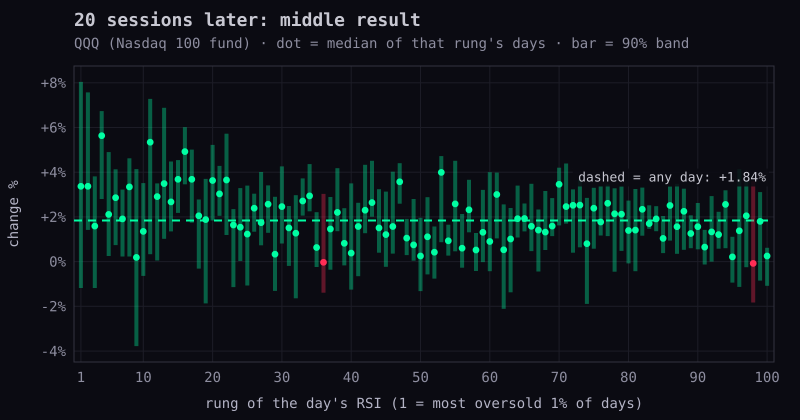

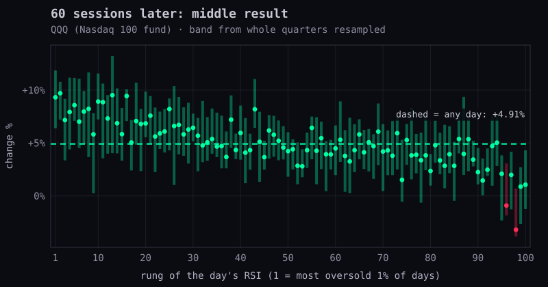


All 100 rungs of QQQ (Nasdaq 100 fund) as a table
| Rung | RSI from–to | Days | Months | 5 later | 10 later | 20 later | 20: 90% band | 60 later | 60: 90% band | Higher 20 | Higher 60 | Worst in 20 | Worst in 60 | Wait to prior top | No-hindsight rung: 20 later | … 60 later |
|---|---|---|---|---|---|---|---|---|---|---|---|---|---|---|---|---|
| 1 | 19.1–29.5 | 38 | 17 | +2.8% | +4.3% | +3.4% | -1.2 to 8.0 | +9.3% | 6.4 to 11.8 | 68.4% | 71.1% | -2.9% | -3.5% | 73 | +3.0% (40) | +9.2% |
| 2 | 29.5–32.3 | 38 | 22 | +1.5% | +3.2% | +3.4% | 1.4 to 7.6 | +9.7% | 7.2 to 10.8 | 81.6% | 89.5% | -1.5% | -1.9% | 114 | +2.7% (32) | +9.4% |
| 3 | 32.3–34.0 | 38 | 25 | +0.4% | 0.0% | +1.6% | -1.2 to 3.8 | +7.2% | 3.4 to 9.2 | 57.9% | 83.8% | -3.3% | -4.8% | 116 | +3.7% (40) | +8.7% |
| 4 | 34.0–35.1 | 38 | 30 | +1.5% | +4.5% | +5.6% | 2.8 to 6.7 | +7.9% | 4.4 to 11.2 | 73.7% | 84.2% | -1.4% | -3.1% | 47 | +2.3% (28) | +3.8% |
| 5 | 35.1–36.2 | 38 | 29 | +0.8% | +1.7% | +2.1% | 0.3 to 4.9 | +8.6% | 7.1 to 11.2 | 65.8% | 78.9% | -2.8% | -3.7% | 66 | +3.4% (43) | +8.2% |
| 6 | 36.2–37.3 | 38 | 29 | +1.5% | +1.8% | +2.9% | 0.7 to 4.1 | +7.0% | 4.5 to 11.1 | 65.8% | 81.1% | -3.7% | -4.9% | 51 | +2.5% (35) | +8.1% |
| 7 | 37.3–38.1 | 38 | 29 | +0.4% | +0.5% | +1.9% | 0.2 to 3.2 | +8.0% | 4.9 to 9.9 | 65.8% | 81.6% | -3.9% | -4.2% | 48 | +0.6% (33) | +5.8% |
| 8 | 38.1–39.0 | 38 | 32 | +0.2% | +1.1% | +3.3% | 0.2 to 4.6 | +8.2% | 3.7 to 11.7 | 68.4% | 78.4% | -3.3% | -3.6% | 48 | +3.5% (43) | +7.0% |
| 9 | 39.0–39.6 | 38 | 28 | -0.9% | -0.3% | +0.2% | -3.8 to 4.1 | +5.8% | 0.3 to 7.8 | 50.0% | 64.9% | -6.3% | -6.7% | 73 | +2.0% (39) | +7.4% |
| 10 | 39.6–40.5 | 38 | 30 | +0.2% | +1.3% | +1.4% | -0.6 to 3.5 | +8.9% | 7.2 to 11.6 | 60.5% | 86.8% | -3.5% | -5.2% | 41 | +3.3% (41) | +8.1% |
| 11 | 40.5–41.1 | 38 | 30 | +0.9% | +2.0% | +5.3% | 0.3 to 7.3 | +8.9% | 3.6 to 10.6 | 71.1% | 76.3% | -1.8% | -3.5% | 48 | +2.4% (47) | +7.8% |
| 12 | 41.1–41.8 | 38 | 28 | -0.1% | +0.7% | +2.9% | 0.1 to 3.5 | +7.3% | 4.0 to 9.5 | 65.8% | 78.9% | -3.6% | -5.3% | 39 | +3.4% (32) | +6.0% |
| 13 | 41.8–42.2 | 38 | 25 | +0.4% | +2.1% | +3.5% | 1.0 to 6.9 | +9.5% | 4.0 to 13.2 | 71.1% | 77.8% | -3.3% | -2.9% | 26 | +5.1% (36) | +7.3% |
| 14 | 42.2–42.8 | 38 | 31 | +2.3% | +2.6% | +2.7% | 1.4 to 4.5 | +6.9% | 4.0 to 10.2 | 73.7% | 81.1% | -0.7% | -3.4% | 39 | +4.3% (29) | +10.0% |
| 15 | 42.8–43.2 | 38 | 32 | +0.1% | +2.0% | +3.7% | 2.2 to 4.5 | +5.8% | 3.3 to 8.3 | 73.7% | 78.4% | -1.7% | -3.4% | 15 | +2.0% (44) | +5.0% |
| 16 | 43.2–43.7 | 38 | 30 | +1.9% | +3.1% | +4.9% | 3.5 to 6.0 | +9.4% | 7.1 to 10.1 | 86.8% | 89.5% | -1.0% | -1.9% | 19 | +3.3% (36) | +5.0% |
| 17 | 43.7–44.2 | 38 | 28 | +0.6% | +2.0% | +3.7% | 1.7 to 5.0 | +5.0% | 2.4 to 7.2 | 83.3% | 75.0% | -2.1% | -3.5% | 25 | +1.7% (39) | +5.8% |
| 18 | 44.2–44.7 | 38 | 30 | +0.6% | +0.8% | +2.0% | -0.3 to 2.8 | +7.1% | 4.8 to 10.7 | 60.5% | 76.3% | -2.9% | -4.6% | 30 | +2.1% (39) | +9.3% |
| 19 | 44.7–45.1 | 38 | 30 | +0.5% | +1.2% | +1.9% | -1.9 to 3.7 | +6.8% | 2.4 to 8.2 | 55.3% | 70.3% | -3.1% | -3.9% | 36 | +3.1% (27) | +4.0% |
| 20 | 45.1–45.6 | 38 | 31 | +1.2% | +2.1% | +3.6% | 1.8 to 5.2 | +6.8% | 5.5 to 9.9 | 84.2% | 83.8% | -0.6% | -1.0% | 19 | +3.4% (37) | +7.3% |
| 21 | 45.6–46.3 | 38 | 31 | +1.0% | +2.1% | +3.0% | 2.0 to 4.3 | +7.6% | 4.9 to 9.4 | 76.3% | 76.3% | -1.4% | -3.0% | 20 | +3.2% (25) | +6.0% |
| 22 | 46.3–46.7 | 38 | 34 | +1.2% | +1.7% | +3.6% | 1.2 to 5.7 | +5.6% | 2.3 to 8.3 | 69.4% | 76.5% | -2.8% | -3.8% | 18 (1 open) | +1.5% (39) | +4.3% |
| 23 | 46.7–47.2 | 38 | 32 | +1.2% | +1.3% | +1.6% | -1.1 to 2.4 | +5.9% | 4.4 to 8.0 | 59.5% | 72.2% | -2.1% | -3.4% | 23 | +2.1% (41) | +8.1% |
| 24 | 47.2–47.5 | 38 | 35 | +0.3% | -0.1% | +1.5% | 0.0 to 3.3 | +6.1% | 4.1 to 8.2 | 68.4% | 81.6% | -2.5% | -4.7% | 18 | +3.1% (32) | +8.4% |
| 25 | 47.5–47.9 | 38 | 36 | +1.0% | +0.7% | +1.2% | -1.1 to 3.4 | +8.2% | 4.3 to 9.2 | 59.5% | 85.7% | -2.8% | -4.2% | 26 (1 open) | +1.8% (30) | +7.2% |
| 26 | 47.9–48.2 | 38 | 30 | +0.1% | +0.6% | +2.4% | 1.3 to 3.0 | +6.6% | 1.0 to 10.4 | 84.2% | 72.2% | -2.9% | -4.7% | 26 (1 open) | +1.4% (31) | +5.8% |
| 27 | 48.2–48.6 | 38 | 33 | +0.3% | +1.0% | +1.7% | 0.7 to 4.0 | +6.7% | 3.9 to 9.3 | 76.3% | 81.6% | -1.8% | -3.5% | 6 | +3.0% (35) | +8.2% |
| 28 | 48.6–48.9 | 38 | 33 | +1.0% | +1.6% | +2.6% | 1.3 to 3.4 | +5.8% | 3.8 to 8.4 | 71.1% | 78.4% | -1.9% | -2.2% | 9 (1 open) | +0.7% (45) | +6.1% |
| 29 | 48.9–49.3 | 38 | 32 | -0.1% | -0.1% | +0.3% | -1.3 to 2.9 | +6.3% | 3.1 to 8.8 | 52.6% | 75.7% | -3.8% | -5.7% | 23 | +1.0% (26) | +4.1% |
| 30 | 49.3–49.6 | 38 | 34 | +0.3% | +1.4% | +2.5% | 0.8 to 4.3 | +6.4% | 5.2 to 7.8 | 71.1% | 78.4% | -1.6% | -3.2% | 9 | +2.4% (23) | +3.1% |
| 31 | 49.6–50.0 | 38 | 33 | +0.6% | +0.2% | +1.5% | -0.2 to 2.5 | +5.7% | 2.3 to 7.4 | 63.2% | 69.4% | -2.7% | -3.8% | 3 (1 open) | +3.0% (20) | +5.7% |
| 32 | 50.0–50.4 | 38 | 32 | -1.0% | -0.5% | +1.3% | -1.6 to 3.0 | +4.8% | 3.2 to 9.0 | 60.5% | 81.1% | -3.9% | -6.0% | 22 | +2.1% (39) | +5.1% |
| 33 | 50.4–50.9 | 38 | 35 | +0.1% | +1.2% | +2.7% | 2.1 to 3.7 | +5.1% | 3.3 to 7.5 | 83.8% | 83.3% | -2.6% | -3.1% | 12 | +2.1% (31) | +4.4% |
| 34 | 50.9–51.2 | 38 | 34 | +1.4% | +1.3% | +2.9% | 2.3 to 4.4 | +5.4% | 4.0 to 8.3 | 78.9% | 76.3% | -1.6% | -2.3% | 16 | +0.8% (33) | +5.7% |
| 35 | 51.2–51.6 | 38 | 35 | +0.5% | -0.1% | +0.6% | -0.2 to 2.2 | +4.7% | 3.7 to 7.9 | 60.5% | 77.8% | -2.1% | -4.4% | 10 (1 open) | +1.5% (31) | +4.6% |
| 36 | 51.6–52.0 | 38 | 33 | +0.7% | +1.5% | 0.0% | -1.4 to 3.0 | +4.7% | 2.6 to 7.6 | 50.0% | 77.8% | -1.6% | -3.0% | 14 | +3.5% (37) | +7.5% |
| 37 | 52.0–52.4 | 38 | 34 | +0.6% | +0.9% | +1.5% | -0.4 to 2.9 | +3.7% | 2.6 to 6.1 | 64.9% | 77.1% | -1.8% | -3.5% | 9 (1 open) | -0.8% (28) | +3.5% |
| 38 | 52.4–52.8 | 38 | 35 | +1.1% | +1.9% | +2.2% | 1.4 to 4.2 | +7.2% | 4.5 to 9.5 | 78.9% | 76.3% | -1.5% | -2.6% | 7 | +1.4% (32) | +4.5% |
| 39 | 52.8–53.2 | 38 | 33 | +0.5% | +1.6% | +0.8% | -0.2 to 2.4 | +4.3% | 3.5 to 5.9 | 62.9% | 82.4% | -2.7% | -3.5% | 2 (1 open) | +4.2% (31) | +5.7% |
| 40 | 53.2–53.5 | 38 | 33 | -0.7% | -0.8% | +0.4% | -1.3 to 3.5 | +6.0% | 3.4 to 8.5 | 52.6% | 76.3% | -3.8% | -6.1% | 16 (1 open) | +0.5% (43) | +4.3% |
| 41 | 53.5–53.8 | 38 | 34 | +0.7% | +0.8% | +1.6% | -0.7 to 2.6 | +4.1% | 1.2 to 7.4 | 56.8% | 70.3% | -2.3% | -3.8% | 7 | +2.2% (25) | +5.9% |
| 42 | 53.8–54.2 | 38 | 34 | +0.6% | +1.8% | +2.3% | 1.3 to 4.3 | +4.3% | 2.5 to 5.9 | 68.4% | 78.9% | -1.3% | -2.0% | 7 | +2.6% (39) | +6.8% |
| 43 | 54.2–54.6 | 38 | 33 | +1.9% | +1.6% | +2.6% | 2.0 to 4.5 | +8.2% | 6.4 to 11.0 | 89.5% | 75.7% | -0.6% | -1.3% | 4 | +1.6% (45) | +3.9% |
| 44 | 54.6–54.9 | 38 | 35 | +1.4% | +1.2% | +1.5% | 0.4 to 3.2 | +5.1% | 1.3 to 8.0 | 71.1% | 70.3% | -2.0% | -4.3% | 8 | +1.6% (27) | +3.4% |
| 45 | 54.9–55.2 | 38 | 33 | +1.1% | +1.4% | +1.2% | -0.2 to 3.1 | +3.7% | 2.5 to 5.2 | 55.3% | 81.1% | -1.4% | -2.8% | 1 | +1.6% (34) | +4.7% |
| 46 | 55.2–55.5 | 38 | 30 | +0.5% | +1.2% | +1.6% | 0.4 to 4.0 | +6.2% | 3.5 to 7.6 | 71.1% | 83.8% | -1.5% | -2.7% | 10 | +3.6% (33) | +7.0% |
| 47 | 55.5–55.9 | 38 | 33 | +1.4% | +2.3% | +3.6% | 2.6 to 4.4 | +5.8% | 3.7 to 7.6 | 83.8% | 83.8% | -0.8% | -1.3% | 2 | +0.8% (37) | +4.1% |
| 48 | 55.9–56.1 | 38 | 35 | +0.3% | +1.0% | +1.1% | 0.3 to 1.9 | +5.2% | 3.4 to 7.1 | 65.8% | 86.8% | -2.2% | -2.6% | 0 | +1.8% (31) | +2.9% |
| 49 | 56.1–56.4 | 38 | 33 | +0.1% | +0.1% | +0.8% | 0.0 to 2.8 | +4.6% | 3.5 to 6.6 | 65.8% | 75.7% | -2.0% | -2.9% | 4 | +1.0% (28) | +4.8% |
| 50 | 56.4–56.7 | 39 | 37 | -0.3% | -0.5% | +0.3% | -1.3 to 2.0 | +4.2% | 1.8 to 6.0 | 53.8% | 79.5% | -2.5% | -4.8% | 1 (1 open) | +1.4% (36) | +5.1% |
| 51 | 56.7–57.0 | 38 | 33 | +0.3% | +0.5% | +1.1% | -0.6 to 2.9 | +4.4% | 2.5 to 5.3 | 60.5% | 86.8% | -2.2% | -3.0% | 2 | +1.2% (30) | +5.1% |
| 52 | 57.0–57.3 | 38 | 32 | +0.8% | +0.2% | +0.4% | -0.8 to 1.6 | +2.9% | 1.1 to 5.0 | 52.6% | 69.4% | -2.4% | -3.7% | 4 | +1.3% (24) | +4.9% |
| 53 | 57.3–57.5 | 38 | 35 | +1.2% | +2.2% | +4.0% | 0.9 to 4.7 | +2.8% | 1.8 to 4.4 | 71.1% | 81.6% | -1.0% | -2.5% | 0 | +3.2% (34) | +2.9% |
| 54 | 57.5–57.9 | 38 | 34 | +0.4% | 0.0% | +0.9% | 0.3 to 1.6 | +4.3% | 2.6 to 6.0 | 65.8% | 78.9% | -2.2% | -4.0% | 1 | +2.8% (38) | +5.7% |
| 55 | 57.9–58.2 | 38 | 33 | +1.2% | +1.7% | +2.6% | 0.5 to 4.5 | +6.4% | 3.5 to 7.5 | 65.8% | 83.8% | -0.7% | -2.0% | 2 (1 open) | +0.5% (31) | +5.5% |
| 56 | 58.2–58.4 | 38 | 34 | +0.1% | +0.9% | +0.6% | -0.3 to 2.1 | +4.3% | 1.1 to 7.4 | 57.9% | 76.3% | -2.3% | -3.9% | 2 | +1.6% (39) | +4.0% |
| 57 | 58.4–58.7 | 38 | 36 | +0.5% | +1.7% | +2.3% | 1.3 to 3.7 | +5.5% | 2.5 to 7.0 | 78.9% | 78.9% | -1.6% | -2.8% | 0 | +1.1% (36) | +3.4% |
| 58 | 58.7–59.0 | 38 | 33 | +0.4% | +0.4% | +0.5% | -0.4 to 1.3 | +3.9% | 0.5 to 5.2 | 55.3% | 67.6% | -2.3% | -3.2% | 0 | +1.2% (33) | +5.4% |
| 59 | 59.0–59.3 | 38 | 36 | +0.5% | +0.5% | +1.3% | -0.0 to 3.2 | +3.9% | 2.5 to 5.3 | 63.2% | 78.9% | -1.4% | -2.3% | 0 (1 open) | +1.0% (28) | +4.3% |
| 60 | 59.3–59.6 | 38 | 36 | +0.6% | +0.9% | +0.9% | -0.4 to 4.0 | +4.5% | 2.0 to 6.7 | 60.5% | 75.7% | -1.8% | -2.5% | 0 | +1.3% (41) | +7.2% |
| 61 | 59.6–59.9 | 38 | 33 | +0.4% | +1.6% | +3.0% | 1.0 to 4.0 | +5.3% | 3.2 to 8.9 | 73.7% | 86.8% | -1.2% | -2.0% | 0 | +1.8% (39) | +2.6% |
| 62 | 59.9–60.1 | 38 | 32 | -0.2% | -0.8% | +0.5% | -2.1 to 2.6 | +3.8% | 0.4 to 6.2 | 57.9% | 70.3% | -2.8% | -6.2% | 0 | +2.4% (36) | +3.9% |
| 63 | 60.1–60.5 | 38 | 31 | -0.1% | +0.6% | +1.0% | -1.4 to 2.4 | +3.3% | 0.3 to 7.4 | 52.6% | 68.4% | -2.2% | -3.0% | 0 | +1.1% (34) | +3.8% |
| 64 | 60.5–60.8 | 38 | 35 | +0.7% | +1.0% | +1.9% | 1.1 to 3.4 | +4.3% | 2.3 to 6.8 | 81.6% | 78.9% | -2.1% | -2.9% | 0 | +1.3% (38) | +4.1% |
| 65 | 60.8–61.0 | 38 | 29 | +0.8% | +1.2% | +1.9% | 1.4 to 2.6 | +5.8% | 3.5 to 7.2 | 78.9% | 81.6% | -1.4% | -2.4% | 0 | +2.2% (44) | +3.5% |
| 66 | 61.0–61.4 | 38 | 33 | +1.0% | +1.3% | +1.6% | 0.5 to 3.5 | +4.1% | 2.5 to 6.2 | 68.4% | 68.4% | -0.8% | -3.4% | 0 | +1.6% (38) | +4.5% |
| 67 | 61.4–61.7 | 38 | 34 | +0.3% | +0.4% | +1.4% | -0.4 to 2.3 | +5.1% | 2.3 to 6.3 | 60.5% | 76.3% | -1.4% | -2.5% | 0 | +0.9% (31) | +5.3% |
| 68 | 61.7–62.0 | 38 | 34 | +1.1% | +1.6% | +1.3% | 0.5 to 3.2 | +4.7% | 1.6 to 5.8 | 68.4% | 71.1% | -1.1% | -3.3% | 0 | +1.7% (45) | +4.9% |
| 69 | 62.0–62.4 | 38 | 32 | +1.1% | +1.6% | +1.6% | 1.1 to 2.8 | +6.1% | 2.9 to 8.7 | 73.7% | 89.5% | -1.3% | -2.5% | 0 | +1.7% (43) | +3.5% |
| 70 | 62.4–62.8 | 38 | 31 | +0.3% | +1.2% | +3.5% | 1.6 to 4.2 | +4.2% | 0.5 to 6.8 | 73.7% | 73.7% | -1.4% | -2.3% | 0 | +2.9% (44) | +4.1% |
| 71 | 62.8–63.1 | 38 | 32 | +0.8% | +2.0% | +2.5% | 1.7 to 4.4 | +4.3% | 2.0 to 6.2 | 73.0% | 73.0% | -1.4% | -2.6% | 0 | +2.5% (44) | +6.7% |
| 72 | 63.1–63.6 | 38 | 38 | +0.5% | +2.2% | +2.5% | 0.4 to 3.2 | +3.8% | 2.0 to 7.1 | 62.2% | 75.7% | -1.1% | -3.1% | 0 | +1.4% (28) | +2.3% |
| 73 | 63.6–63.9 | 38 | 33 | +0.4% | +0.1% | +2.5% | 0.6 to 3.7 | +5.9% | 2.5 to 7.4 | 71.1% | 86.8% | -1.5% | -2.4% | 0 | +1.8% (41) | +4.7% |
| 74 | 63.9–64.2 | 38 | 29 | +0.2% | -0.1% | +0.8% | -1.9 to 2.9 | +1.5% | -0.6 to 5.3 | 55.3% | 60.5% | -2.3% | -3.5% | 0 | +2.4% (40) | +4.2% |
| 75 | 64.2–64.6 | 38 | 33 | +0.9% | +0.6% | +2.4% | 0.6 to 3.3 | +5.3% | 2.9 to 6.8 | 71.1% | 76.3% | -1.4% | -3.2% | 0 | +1.1% (39) | +4.3% |
| 76 | 64.6–65.0 | 38 | 29 | +0.7% | +1.3% | +1.8% | 1.2 to 3.4 | +3.8% | 1.6 to 8.3 | 73.0% | 81.1% | -1.4% | -1.9% | 0 | +2.2% (32) | +2.9% |
| 77 | 65.0–65.4 | 38 | 32 | +0.5% | +0.8% | +2.6% | 1.1 to 3.5 | +3.9% | 2.1 to 5.9 | 71.1% | 78.9% | -1.6% | -2.6% | 0 | +2.4% (43) | +5.7% |
| 78 | 65.4–65.8 | 38 | 34 | +0.5% | +0.6% | +2.1% | -0.5 to 3.3 | +3.4% | -0.6 to 6.0 | 59.5% | 64.9% | -1.9% | -2.5% | 0 | +2.2% (40) | +4.1% |
| 79 | 65.8–66.2 | 38 | 31 | +1.2% | +1.4% | +2.1% | 0.5 to 3.4 | +3.8% | 2.4 to 7.7 | 65.8% | 76.3% | -1.4% | -2.4% | 0 | +0.8% (39) | +3.1% |
| 80 | 66.2–66.6 | 38 | 32 | +0.4% | +1.3% | +1.4% | -0.1 to 2.7 | +2.4% | 1.0 to 4.0 | 60.5% | 68.4% | -1.4% | -3.0% | 0 | +1.5% (50) | +5.8% |
| 81 | 66.6–67.0 | 38 | 27 | +1.1% | +1.6% | +1.4% | -0.4 to 3.3 | +4.8% | 3.1 to 7.1 | 63.2% | 86.8% | -1.0% | -1.8% | 0 | +1.6% (41) | +4.8% |
| 82 | 67.0–67.4 | 38 | 35 | -0.2% | +1.2% | +2.3% | 1.2 to 3.3 | +3.4% | 2.1 to 6.0 | 73.7% | 76.3% | -1.6% | -3.1% | 0 | +2.1% (33) | +3.1% |
| 83 | 67.4–67.8 | 38 | 31 | +0.6% | +0.9% | +1.7% | 1.5 to 2.5 | +2.9% | 0.7 to 6.7 | 81.6% | 71.1% | -1.4% | -2.9% | 0 | +1.4% (39) | +3.0% |
| 84 | 67.8–68.2 | 38 | 32 | +0.7% | +1.2% | +1.9% | 1.4 to 2.5 | +3.9% | 2.1 to 6.6 | 73.0% | 81.1% | -1.6% | -2.5% | 0 | +1.7% (47) | +3.2% |
| 85 | 68.2–68.5 | 38 | 29 | +0.7% | +1.3% | +1.0% | 0.4 to 2.0 | +2.8% | -0.5 to 5.1 | 71.1% | 65.8% | -1.3% | -3.9% | 0 | +2.2% (37) | +4.3% |
| 86 | 68.5–69.0 | 38 | 29 | +0.4% | +0.8% | +2.5% | 0.9 to 3.4 | +5.4% | 4.0 to 7.9 | 73.7% | 78.9% | -1.4% | -2.8% | 0 | +3.0% (33) | +4.9% |
| 87 | 69.0–69.4 | 38 | 28 | +0.1% | +0.9% | +1.6% | 0.3 to 3.5 | +4.0% | 2.0 to 9.3 | 71.1% | 73.7% | -1.2% | -1.9% | 0 | +1.6% (44) | +6.1% |
| 88 | 69.4–69.9 | 38 | 30 | +0.9% | +1.0% | +2.3% | 0.5 to 3.3 | +5.4% | 2.3 to 7.3 | 71.1% | 81.6% | -1.4% | -1.7% | 0 | +2.3% (26) | +3.4% |
| 89 | 69.9–70.3 | 38 | 32 | +0.3% | +0.2% | +1.3% | 0.6 to 2.1 | +3.4% | 2.8 to 5.2 | 71.1% | 81.6% | -1.8% | -3.3% | 0 | +1.4% (38) | +4.5% |
| 90 | 70.3–70.8 | 38 | 28 | 0.0% | +0.3% | +1.6% | 0.6 to 2.6 | +2.3% | 1.1 to 4.5 | 68.4% | 71.1% | -1.8% | -3.3% | 0 | +1.7% (30) | +1.1% |
| 91 | 70.8–71.3 | 38 | 29 | +0.5% | +0.6% | +0.7% | -0.1 to 1.4 | +1.4% | 0.1 to 3.5 | 63.2% | 68.4% | -1.9% | -3.8% | 0 | +1.1% (36) | +4.0% |
| 92 | 71.3–71.8 | 38 | 30 | +0.8% | +0.9% | +1.3% | 0.0 to 2.9 | +2.5% | 1.9 to 4.5 | 63.2% | 71.1% | -1.9% | -3.8% | 0 | +0.6% (42) | +1.4% |
| 93 | 71.8–72.4 | 38 | 28 | +0.6% | +0.8% | +1.2% | 0.6 to 2.2 | +4.7% | 1.0 to 7.5 | 71.1% | 71.1% | -1.2% | -2.3% | 0 | +1.3% (28) | +5.3% |
| 94 | 72.4–73.3 | 38 | 28 | +0.1% | +0.3% | +2.6% | 0.6 to 3.2 | +5.0% | 2.8 to 7.6 | 71.1% | 78.9% | -1.8% | -2.5% | 0 | +2.3% (31) | +4.8% |
| 95 | 73.3–73.9 | 38 | 26 | 0.0% | +0.4% | +0.2% | -0.9 to 1.1 | +2.1% | -2.3 to 3.8 | 52.6% | 57.9% | -1.7% | -4.7% | 0 | +0.3% (29) | +0.1% |
| 96 | 73.9–74.9 | 38 | 25 | +0.6% | +1.1% | +1.4% | -1.1 to 4.1 | -0.9% | -1.9 to 3.1 | 57.9% | 42.1% | -2.0% | -5.6% | 0 | +1.4% (30) | +2.7% |
| 97 | 74.9–75.9 | 38 | 26 | +0.3% | +1.3% | +2.0% | -0.3 to 3.6 | +2.0% | -1.3 to 4.2 | 63.2% | 60.5% | -1.6% | -2.7% | 0 | +1.1% (30) | +1.6% |
| 98 | 75.9–77.4 | 38 | 23 | +0.2% | -0.6% | -0.1% | -1.8 to 3.6 | -3.2% | -3.8 to 0.7 | 47.4% | 36.8% | -2.5% | -8.9% | 0 | -0.1% (42) | -0.6% |
| 99 | 77.4–79.3 | 38 | 17 | +0.2% | +1.1% | +1.8% | -0.8 to 3.1 | +0.9% | -2.7 to 2.7 | 60.5% | 55.3% | -2.1% | -6.2% | 0 | +1.4% (31) | +1.6% |
| 100 | 79.3–85.4 | 38 | 15 | -0.3% | +0.9% | +0.3% | -1.1 to 0.6 | +1.1% | -1.2 to 4.3 | 57.9% | 63.2% | -1.7% | -3.7% | 0 | +0.3% (35) | +3.0% |
| Any day | 3801 | +0.6% | +1.1% | +1.8% | +4.9% | 67.2% | 75.9% | -1.8% | -3.2% | 1 | ||||||
IWM (Russell 2000 fund) 2004–2026 · 5,697 days


All 100 rungs of IWM (Russell 2000 fund) as a table
| Rung | RSI from–to | Days | Months | 5 later | 10 later | 20 later | 20: 90% band | 60 later | 60: 90% band | Higher 20 | Higher 60 | Worst in 20 | Worst in 60 | Wait to prior top | No-hindsight rung: 20 later | … 60 later |
|---|---|---|---|---|---|---|---|---|---|---|---|---|---|---|---|---|
| 1 | 15.2–26.7 | 57 | 18 | +0.9% | +2.0% | +1.5% | -1.2 to 6.3 | +6.1% | 3.8 to 12.2 | 61.4% | 75.4% | -4.4% | -6.3% | 164 | +1.5% (80) | +6.0% |
| 2 | 26.7–29.4 | 57 | 32 | +0.2% | +0.6% | +1.6% | -0.4 to 5.3 | +6.3% | 3.1 to 11.5 | 61.4% | 71.9% | -4.2% | -5.2% | 128 | +1.4% (55) | +6.7% |
| 3 | 29.4–31.4 | 57 | 36 | +1.1% | +1.9% | +2.9% | 1.1 to 6.2 | +6.3% | 4.3 to 10.2 | 66.7% | 70.2% | -2.3% | -3.7% | 125 | +4.4% (59) | +8.3% |
| 4 | 31.4–33.0 | 57 | 38 | +1.7% | +1.9% | +4.8% | 0.9 to 6.8 | +8.5% | 2.3 to 12.7 | 69.6% | 73.2% | -1.4% | -4.0% | 67 (1 open) | +3.1% (61) | +2.5% |
| 5 | 33.0–34.3 | 57 | 48 | +0.8% | +1.3% | +4.4% | 1.4 to 6.1 | +3.6% | 0.3 to 6.0 | 67.3% | 63.6% | -2.1% | -4.5% | 107 (2 open) | +3.3% (55) | +4.6% |
| 6 | 34.3–35.2 | 57 | 41 | +0.2% | +1.4% | +3.1% | 0.9 to 4.2 | +5.0% | 1.3 to 9.7 | 74.1% | 64.8% | -2.8% | -4.6% | 84 (3 open) | +2.8% (52) | +6.4% |
| 7 | 35.2–36.0 | 57 | 43 | -0.1% | +1.3% | +2.6% | 0.6 to 4.4 | +6.8% | 4.1 to 8.3 | 63.2% | 66.7% | -3.3% | -4.0% | 60 | +2.1% (53) | +3.2% |
| 8 | 36.0–36.7 | 57 | 45 | +0.3% | +1.1% | +1.5% | 0.6 to 4.0 | +1.9% | 0.8 to 6.7 | 65.5% | 65.5% | -3.5% | -4.7% | 122 (2 open) | +2.5% (42) | +6.1% |
| 9 | 36.7–37.5 | 57 | 45 | +0.6% | +1.2% | +2.3% | 0.1 to 3.3 | +3.1% | 0.6 to 6.4 | 62.5% | 66.1% | -2.3% | -4.6% | 75 (1 open) | +2.3% (51) | +2.5% |
| 10 | 37.5–38.1 | 57 | 41 | 0.0% | -0.3% | +1.7% | -0.0 to 3.6 | +2.7% | 0.3 to 5.7 | 61.8% | 65.5% | -3.3% | -6.2% | 55 (2 open) | +0.7% (53) | +3.9% |
| 11 | 38.1–38.7 | 57 | 48 | +0.4% | +1.3% | +0.9% | 0.2 to 4.2 | +4.0% | 1.8 to 7.4 | 66.1% | 73.2% | -2.5% | -4.7% | 58 (1 open) | +4.2% (52) | +5.2% |
| 12 | 38.7–39.3 | 57 | 45 | +0.5% | +0.7% | +2.7% | 0.8 to 4.3 | +4.6% | 2.1 to 6.8 | 77.2% | 75.4% | -2.8% | -4.5% | 45 | +0.7% (38) | +4.6% |
| 13 | 39.3–39.9 | 57 | 44 | +0.9% | +0.8% | +1.9% | -0.8 to 3.8 | +3.1% | 1.9 to 6.7 | 59.6% | 71.9% | -2.8% | -5.5% | 85 | +1.5% (44) | +2.5% |
| 14 | 39.9–40.4 | 57 | 43 | +0.3% | +0.4% | +2.7% | 1.1 to 3.8 | +5.8% | 1.9 to 8.2 | 71.4% | 69.6% | -3.5% | -4.0% | 53 (1 open) | +1.4% (56) | +4.2% |
| 15 | 40.4–40.9 | 57 | 46 | +0.3% | +0.6% | +2.5% | -0.7 to 3.7 | +2.8% | -1.1 to 6.3 | 59.6% | 61.4% | -2.7% | -4.3% | 43 | +2.8% (49) | +5.0% |
| 16 | 40.9–41.3 | 57 | 46 | +0.6% | +1.4% | +2.2% | -0.9 to 3.3 | +4.8% | 2.8 to 8.5 | 54.4% | 75.4% | -3.2% | -5.0% | 49 | +2.4% (60) | +4.0% |
| 17 | 41.3–41.9 | 56 | 49 | +0.3% | +0.9% | +1.0% | 0.2 to 3.0 | +3.5% | 2.2 to 5.6 | 65.5% | 66.7% | -3.2% | -5.0% | 60 (1 open) | +1.4% (48) | +5.1% |
| 18 | 41.9–42.3 | 57 | 48 | 0.0% | +1.3% | +0.5% | -2.3 to 1.7 | +0.1% | -1.2 to 2.5 | 52.6% | 52.6% | -3.4% | -5.7% | 82 | 0.0% (53) | +1.9% |
| 19 | 42.3–42.9 | 57 | 47 | +0.7% | +1.3% | +1.8% | 0.4 to 3.2 | +5.3% | 3.5 to 6.5 | 64.3% | 82.1% | -2.9% | -4.7% | 52 (1 open) | +1.4% (55) | +4.5% |
| 20 | 42.9–43.3 | 57 | 47 | +1.1% | +1.1% | +0.8% | -1.5 to 2.3 | +4.7% | 1.0 to 6.2 | 56.1% | 68.4% | -2.7% | -3.8% | 44 | +0.9% (45) | +3.9% |
| 21 | 43.3–43.7 | 57 | 49 | +0.8% | +0.5% | +2.5% | -0.5 to 4.2 | +3.6% | 1.4 to 6.9 | 57.9% | 66.7% | -3.3% | -3.7% | 28 | +0.3% (57) | +4.6% |
| 22 | 43.7–44.2 | 57 | 49 | -0.3% | +0.5% | +2.2% | 0.0 to 3.8 | +2.8% | 0.5 to 5.8 | 61.4% | 66.7% | -3.2% | -5.0% | 59 | +3.7% (51) | +3.6% |
| 23 | 44.2–44.6 | 57 | 48 | +0.1% | +0.7% | +1.3% | -0.3 to 3.5 | +2.5% | 0.6 to 5.5 | 62.5% | 69.6% | -3.4% | -5.3% | 32 (1 open) | +1.5% (52) | +2.8% |
| 24 | 44.6–45.0 | 57 | 46 | +0.9% | +2.0% | +2.8% | 0.7 to 4.3 | +3.7% | 1.4 to 5.8 | 71.9% | 68.4% | -1.4% | -3.6% | 26 | +3.0% (60) | +1.2% |
| 25 | 45.0–45.4 | 57 | 47 | +0.7% | +0.8% | +0.1% | -2.0 to 2.4 | +2.6% | -0.5 to 5.2 | 50.0% | 60.7% | -3.7% | -6.0% | 69 (1 open) | -0.9% (42) | +2.8% |
| 26 | 45.4–45.8 | 57 | 46 | +0.4% | +0.1% | +0.1% | -0.9 to 2.1 | +2.7% | -1.4 to 6.7 | 50.9% | 55.4% | -3.2% | -5.7% | 25 | +0.2% (58) | +1.1% |
| 27 | 45.8–46.2 | 57 | 49 | +0.2% | +0.9% | +3.0% | 0.7 to 4.1 | +2.8% | 0.9 to 4.5 | 71.4% | 66.1% | -1.6% | -4.6% | 28 (1 open) | +2.3% (40) | +3.4% |
| 28 | 46.2–46.5 | 57 | 51 | +0.5% | +0.9% | +1.6% | -1.5 to 4.2 | +2.4% | -0.7 to 4.8 | 57.9% | 57.9% | -3.0% | -4.2% | 34 | +2.8% (57) | +4.1% |
| 29 | 46.5–46.9 | 57 | 53 | +1.1% | +2.4% | +2.7% | 1.5 to 4.2 | +3.0% | -0.2 to 6.6 | 71.4% | 60.0% | -1.7% | -4.0% | 29 (1 open) | +1.8% (62) | +1.0% |
| 30 | 46.9–47.3 | 57 | 47 | +0.4% | +1.3% | +2.0% | 0.5 to 3.6 | +2.1% | -0.6 to 5.8 | 64.9% | 60.0% | -1.6% | -3.7% | 23 | +2.6% (50) | +3.6% |
| 31 | 47.3–47.6 | 57 | 50 | -0.2% | +0.9% | +2.6% | 1.4 to 3.8 | +1.6% | -0.4 to 4.5 | 68.4% | 59.6% | -1.6% | -5.3% | 20 | +2.2% (57) | +3.8% |
| 32 | 47.6–48.0 | 57 | 48 | +0.3% | +0.7% | +2.1% | -0.1 to 2.8 | +1.9% | -1.2 to 5.3 | 61.4% | 59.6% | -2.3% | -4.0% | 27 | +2.4% (62) | +4.0% |
| 33 | 48.0–48.2 | 57 | 51 | +0.5% | -0.2% | +1.5% | 0.0 to 2.9 | +1.5% | -0.0 to 5.9 | 60.7% | 62.5% | -2.2% | -4.0% | 27 (1 open) | +1.5% (61) | -0.1% |
| 34 | 48.2–48.5 | 57 | 51 | +0.6% | +1.6% | +1.9% | 0.8 to 3.0 | +2.1% | -0.2 to 4.3 | 63.2% | 61.4% | -1.9% | -4.2% | 29 | +2.7% (57) | +2.1% |
| 35 | 48.5–48.9 | 57 | 50 | +1.2% | +2.2% | +2.4% | 1.6 to 3.1 | +3.0% | 0.7 to 5.8 | 71.9% | 64.3% | -1.6% | -3.5% | 16 | +1.8% (62) | +1.2% |
| 36 | 48.9–49.2 | 57 | 50 | +0.5% | +0.6% | +0.3% | -0.6 to 1.7 | -1.0% | -4.5 to 3.4 | 52.6% | 45.5% | -2.8% | -6.3% | 23 (1 open) | -0.1% (33) | +2.6% |
| 37 | 49.2–49.5 | 57 | 52 | +0.1% | -0.4% | +1.5% | -0.8 to 4.0 | +3.2% | -0.8 to 5.4 | 56.1% | 60.7% | -2.7% | -5.6% | 18 (1 open) | -1.1% (53) | +1.6% |
| 38 | 49.5–49.8 | 57 | 48 | +1.0% | +1.5% | +1.7% | -0.4 to 2.7 | +1.4% | 0.4 to 3.3 | 59.6% | 61.8% | -2.0% | -4.2% | 20 | +2.0% (53) | +3.4% |
| 39 | 49.8–50.1 | 57 | 50 | +1.0% | +0.6% | +1.1% | -0.6 to 2.6 | +2.8% | -0.2 to 5.4 | 59.6% | 60.7% | -2.3% | -5.1% | 15 | +1.0% (60) | +1.7% |
| 40 | 50.1–50.4 | 57 | 49 | +1.3% | +1.6% | +2.9% | 2.2 to 3.6 | +3.8% | 0.8 to 5.0 | 77.2% | 66.1% | -1.6% | -3.3% | 9 | +2.8% (72) | +4.2% |
| 41 | 50.4–50.8 | 57 | 54 | +0.2% | +0.9% | +2.1% | 0.9 to 2.6 | +2.5% | 0.7 to 4.3 | 64.9% | 64.3% | -2.4% | -4.6% | 23 | +1.4% (62) | +1.7% |
| 42 | 50.8–51.1 | 57 | 50 | +0.8% | +1.1% | +1.3% | -0.5 to 3.3 | +4.7% | 3.0 to 6.3 | 57.9% | 67.9% | -2.4% | -4.5% | 18 (1 open) | +0.8% (58) | +4.7% |
| 43 | 51.1–51.4 | 57 | 51 | +0.7% | +1.8% | +2.9% | 1.4 to 3.3 | +3.9% | 1.9 to 7.0 | 68.4% | 67.9% | -2.4% | -3.0% | 14 (1 open) | +2.5% (58) | +3.6% |
| 44 | 51.4–51.7 | 57 | 49 | +1.0% | +0.5% | +1.2% | -1.2 to 2.5 | +3.3% | -0.3 to 5.5 | 56.1% | 62.5% | -2.7% | -4.7% | 14 | +0.5% (47) | +2.6% |
| 45 | 51.7–52.0 | 57 | 49 | +0.2% | -0.7% | +0.2% | -0.5 to 1.7 | +2.5% | -1.1 to 5.4 | 50.9% | 61.4% | -3.0% | -5.1% | 25 | +1.8% (56) | +2.6% |
| 46 | 52.0–52.3 | 57 | 51 | +0.7% | +1.0% | +2.6% | 1.7 to 3.4 | +2.8% | 0.6 to 8.0 | 64.9% | 64.9% | -1.8% | -3.6% | 18 | +1.7% (67) | +3.6% |
| 47 | 52.3–52.6 | 57 | 51 | +0.5% | +0.4% | +0.7% | -1.8 to 2.4 | +3.0% | 0.1 to 6.9 | 56.1% | 62.5% | -2.5% | -4.5% | 21 (1 open) | +0.7% (68) | +4.3% |
| 48 | 52.6–52.9 | 57 | 47 | -0.1% | +0.2% | +1.9% | 0.7 to 2.8 | +2.3% | -1.3 to 4.5 | 68.4% | 60.7% | -2.5% | -5.2% | 18 (1 open) | +1.4% (43) | -0.5% |
| 49 | 52.9–53.2 | 57 | 53 | -0.7% | -0.1% | +1.0% | -1.5 to 2.2 | +3.4% | -0.6 to 6.4 | 50.9% | 58.9% | -2.8% | -4.1% | 12 | +1.8% (54) | +2.6% |
| 50 | 53.2–53.4 | 57 | 48 | +0.5% | +1.5% | +1.0% | 0.3 to 1.9 | +1.1% | -1.7 to 5.4 | 66.7% | 58.9% | -2.4% | -5.7% | 9 | +2.3% (61) | +5.4% |
| 51 | 53.4–53.7 | 56 | 48 | -0.1% | +0.3% | +1.7% | 0.8 to 3.1 | +2.9% | 1.0 to 5.6 | 69.6% | 62.5% | -2.6% | -3.8% | 16 | +0.3% (54) | -0.1% |
| 52 | 53.7–54.0 | 57 | 53 | +0.2% | +0.4% | +1.1% | 0.0 to 2.5 | +3.2% | -0.9 to 6.0 | 59.6% | 58.2% | -2.1% | -4.6% | 12 | +0.6% (46) | +1.8% |
| 53 | 54.0–54.4 | 57 | 50 | +0.8% | +1.3% | +2.0% | 0.0 to 3.0 | +4.9% | 2.6 to 6.6 | 61.4% | 71.9% | -1.7% | -3.3% | 10 | +1.2% (48) | +3.6% |
| 54 | 54.4–54.6 | 57 | 52 | +0.2% | +1.0% | +1.6% | 0.6 to 3.3 | +2.7% | 0.2 to 4.8 | 66.7% | 62.5% | -2.4% | -4.4% | 6 | -0.2% (51) | +0.7% |
| 55 | 54.6–54.9 | 57 | 50 | 0.0% | +1.3% | +0.7% | -0.5 to 1.9 | +3.5% | 0.2 to 4.9 | 57.9% | 62.5% | -2.1% | -5.2% | 3 | +0.6% (66) | +2.6% |
| 56 | 54.9–55.1 | 57 | 50 | -0.2% | -0.1% | +0.1% | -1.4 to 1.5 | +0.6% | -1.6 to 2.9 | 50.9% | 53.6% | -2.8% | -5.2% | 11 | +0.8% (55) | +4.9% |
| 57 | 55.1–55.4 | 57 | 52 | +0.2% | +0.8% | +1.3% | 0.2 to 2.0 | +1.3% | -1.8 to 5.5 | 63.2% | 54.4% | -1.9% | -4.0% | 7 | +1.5% (54) | +2.5% |
| 58 | 55.4–55.7 | 57 | 52 | +0.7% | +0.5% | +1.2% | 0.3 to 2.2 | +1.2% | -2.5 to 4.7 | 66.7% | 57.1% | -2.1% | -4.2% | 5 | +0.9% (62) | +3.4% |
| 59 | 55.7–56.0 | 57 | 48 | +0.1% | 0.0% | +1.1% | -0.4 to 2.2 | +1.7% | -0.1 to 5.5 | 61.4% | 61.8% | -2.4% | -4.5% | 3 | +0.6% (54) | +3.0% |
| 60 | 56.0–56.3 | 57 | 49 | +0.1% | +0.4% | +0.2% | -0.8 to 2.0 | +2.1% | 0.8 to 4.4 | 52.6% | 66.7% | -2.5% | -4.4% | 9 | -0.8% (49) | -0.4% |
| 61 | 56.3–56.7 | 57 | 52 | +0.8% | +1.5% | +1.8% | -1.7 to 2.6 | +2.3% | -1.2 to 4.5 | 57.9% | 57.9% | -2.0% | -5.3% | 6 | +1.5% (56) | +2.0% |
| 62 | 56.7–57.0 | 57 | 50 | 0.0% | +0.7% | +1.3% | -0.1 to 2.9 | +0.2% | -1.4 to 2.9 | 59.6% | 50.9% | -2.2% | -4.2% | 3 | +1.0% (60) | +1.4% |
| 63 | 57.0–57.2 | 57 | 54 | +0.5% | +0.3% | +0.5% | -0.3 to 1.6 | +1.0% | -0.8 to 3.6 | 57.9% | 58.9% | -2.6% | -5.2% | 8 | +0.5% (51) | +1.5% |
| 64 | 57.2–57.5 | 57 | 51 | +0.5% | +0.6% | +0.7% | -0.4 to 1.7 | +1.9% | -1.8 to 5.0 | 57.9% | 56.1% | -2.3% | -3.8% | 5 | +1.5% (61) | +4.3% |
| 65 | 57.5–57.7 | 57 | 49 | -0.5% | -0.2% | +0.9% | -0.7 to 1.7 | +1.9% | -1.0 to 4.7 | 56.1% | 57.9% | -2.9% | -5.4% | 1 | +0.8% (49) | +2.0% |
| 66 | 57.7–58.0 | 57 | 50 | +1.0% | +0.3% | +1.6% | 0.5 to 3.3 | +3.0% | 0.2 to 5.7 | 70.2% | 66.7% | -2.1% | -4.0% | 2 | +1.7% (42) | +1.9% |
| 67 | 58.0–58.2 | 57 | 50 | +0.2% | +0.7% | +1.1% | -0.5 to 2.2 | +3.2% | 0.6 to 6.6 | 56.1% | 65.5% | -2.0% | -4.1% | 4 | +0.1% (49) | +1.5% |
| 68 | 58.2–58.5 | 57 | 46 | +0.3% | -0.1% | +0.7% | 0.0 to 2.1 | +2.0% | -0.4 to 5.6 | 61.4% | 60.7% | -2.2% | -5.7% | 4 | +1.4% (51) | +2.0% |
| 69 | 58.5–58.8 | 57 | 48 | +0.1% | -0.2% | +0.5% | -0.8 to 2.3 | +3.0% | 0.1 to 5.3 | 54.4% | 63.2% | -2.9% | -4.5% | 2 | +1.6% (50) | +3.2% |
| 70 | 58.8–59.1 | 57 | 50 | +0.6% | +0.9% | +1.6% | -0.4 to 2.7 | +4.6% | 1.9 to 5.9 | 59.6% | 68.4% | -2.0% | -5.0% | 4 | +1.6% (63) | +5.8% |
| 71 | 59.1–59.4 | 57 | 49 | +0.6% | +1.7% | +2.1% | 0.9 to 3.0 | +5.5% | 1.9 to 7.5 | 66.7% | 68.4% | -1.7% | -3.6% | 2 | +1.9% (46) | -0.3% |
| 72 | 59.4–59.7 | 57 | 46 | +0.6% | +0.4% | +0.1% | -1.3 to 1.5 | -0.3% | -2.1 to 1.9 | 56.1% | 43.6% | -2.0% | -5.3% | 2 | +0.3% (48) | +1.3% |
| 73 | 59.7–60.0 | 57 | 51 | +0.3% | +0.3% | +0.3% | -0.5 to 1.7 | +1.9% | -0.8 to 4.6 | 54.4% | 57.9% | -2.6% | -4.7% | 1 | +1.7% (53) | +4.5% |
| 74 | 60.0–60.3 | 57 | 48 | +0.8% | +0.3% | +0.8% | -0.2 to 2.3 | +3.5% | 0.0 to 4.6 | 61.4% | 63.2% | -2.3% | -4.4% | 0 | +1.1% (55) | +2.5% |
| 75 | 60.3–60.6 | 57 | 49 | +0.3% | +0.9% | +1.8% | 0.5 to 2.3 | +2.3% | -0.7 to 4.5 | 64.9% | 57.1% | -2.1% | -5.0% | 0 | +1.8% (57) | +4.0% |
| 76 | 60.6–61.0 | 57 | 51 | +0.3% | +0.9% | +0.8% | -0.5 to 2.4 | +0.8% | -1.1 to 4.3 | 56.1% | 56.1% | -2.2% | -5.2% | 0 | -0.1% (49) | +1.2% |
| 77 | 61.0–61.3 | 57 | 47 | +0.2% | +0.1% | -0.4% | -1.7 to 0.3 | +1.2% | -1.1 to 2.8 | 43.9% | 54.5% | -2.9% | -4.5% | 0 | -0.3% (61) | +1.7% |
| 78 | 61.3–61.7 | 57 | 49 | +0.2% | 0.0% | -0.3% | -1.4 to 1.6 | +3.6% | 1.3 to 5.9 | 47.4% | 64.3% | -2.5% | -4.5% | 2 | +0.9% (45) | +3.1% |
| 79 | 61.7–62.0 | 57 | 48 | +0.4% | 0.0% | +0.8% | -0.1 to 1.9 | +4.0% | 1.9 to 6.8 | 63.2% | 68.4% | -2.6% | -3.3% | 0 | +0.6% (52) | +1.7% |
| 80 | 62.0–62.4 | 57 | 49 | +0.2% | +0.9% | -0.2% | -0.9 to 1.1 | +1.6% | -0.8 to 3.4 | 47.4% | 57.9% | -2.8% | -5.0% | 0 | -0.2% (58) | +3.2% |
| 81 | 62.4–62.7 | 57 | 47 | +0.4% | +0.6% | +0.6% | -0.6 to 2.2 | +2.5% | 0.3 to 4.3 | 54.4% | 64.9% | -2.0% | -4.2% | 0 | +0.9% (50) | +1.6% |
| 82 | 62.7–63.1 | 57 | 45 | +0.4% | +0.2% | +0.9% | -0.5 to 3.3 | +2.4% | -0.8 to 4.8 | 59.6% | 57.9% | -2.3% | -2.9% | 0 | +0.4% (40) | +3.3% |
| 83 | 63.1–63.5 | 57 | 48 | -0.2% | +0.1% | 0.0% | -1.5 to 0.8 | +2.2% | 0.7 to 3.8 | 50.9% | 67.9% | -2.8% | -4.9% | 0 | +0.7% (61) | +2.5% |
| 84 | 63.5–63.9 | 56 | 51 | +0.6% | +0.6% | +1.1% | -0.6 to 2.5 | +5.2% | 2.9 to 6.9 | 60.7% | 78.6% | -1.9% | -3.6% | 0 | +1.4% (60) | +3.5% |
| 85 | 63.9–64.2 | 57 | 48 | -0.4% | 0.0% | +1.4% | -0.9 to 2.4 | +3.5% | 2.1 to 5.8 | 57.9% | 70.2% | -2.7% | -3.3% | 0 | +1.6% (61) | +2.8% |
| 86 | 64.2–64.6 | 57 | 50 | -0.1% | -0.5% | -0.5% | -1.2 to 1.3 | +1.5% | -1.5 to 3.3 | 47.4% | 56.1% | -2.8% | -4.4% | 0 | +0.6% (54) | +3.1% |
| 87 | 64.6–65.1 | 57 | 48 | -0.4% | -0.8% | +0.6% | -1.7 to 1.9 | +0.7% | -2.0 to 3.1 | 50.9% | 54.4% | -3.1% | -5.5% | 0 | +1.5% (58) | +2.3% |
| 88 | 65.1–65.5 | 57 | 50 | 0.0% | +0.4% | +0.7% | -0.2 to 1.6 | +0.2% | -2.3 to 3.7 | 57.9% | 50.9% | -2.1% | -4.6% | 0 | +0.1% (58) | -0.1% |
| 89 | 65.5–65.9 | 57 | 49 | -0.2% | -0.5% | +0.7% | -1.8 to 2.1 | +1.4% | -0.6 to 4.1 | 56.1% | 59.6% | -3.2% | -6.0% | 0 | +0.3% (44) | +1.9% |
| 90 | 65.9–66.5 | 57 | 47 | -0.7% | -1.1% | 0.0% | -1.4 to 1.4 | +2.6% | 1.2 to 4.3 | 49.1% | 70.2% | -3.0% | -4.3% | 0 | -0.5% (55) | +3.1% |
| 91 | 66.5–66.9 | 57 | 42 | 0.0% | +0.3% | -0.4% | -1.5 to 0.1 | +3.3% | 1.8 to 4.9 | 40.4% | 71.9% | -2.5% | -3.6% | 0 | 0.0% (61) | +3.1% |
| 92 | 66.9–67.6 | 57 | 45 | +0.1% | +0.4% | +1.3% | -0.4 to 2.3 | +3.3% | 1.8 to 4.1 | 54.4% | 75.4% | -2.8% | -4.0% | 0 | +1.5% (57) | +4.3% |
| 93 | 67.6–68.2 | 57 | 44 | -0.3% | +0.1% | +0.2% | -1.1 to 1.5 | +4.1% | 2.0 to 5.5 | 52.6% | 78.9% | -3.3% | -4.1% | 0 | +0.2% (50) | +3.3% |
| 94 | 68.2–69.0 | 57 | 40 | -0.1% | +0.3% | +0.5% | -1.2 to 1.0 | +2.1% | 0.5 to 3.6 | 54.4% | 66.7% | -2.1% | -3.9% | 0 | +0.5% (57) | +3.0% |
| 95 | 69.0–69.8 | 57 | 40 | +0.1% | +0.7% | +0.7% | -0.9 to 3.1 | +4.1% | 1.0 to 4.7 | 57.9% | 66.7% | -2.5% | -2.9% | 0 | -0.6% (48) | +3.6% |
| 96 | 69.8–70.7 | 57 | 35 | +0.1% | +0.6% | +1.0% | 0.1 to 2.3 | +3.4% | 1.4 to 4.6 | 66.7% | 73.7% | -1.9% | -3.0% | 0 | +0.8% (54) | +3.2% |
| 97 | 70.7–71.7 | 57 | 33 | +0.4% | +0.1% | -0.4% | -1.7 to 1.1 | +3.0% | 1.5 to 4.1 | 47.4% | 70.2% | -2.4% | -2.9% | 0 | +0.3% (54) | +3.3% |
| 98 | 71.7–73.4 | 57 | 32 | -0.1% | +0.2% | +1.9% | 0.7 to 3.1 | +2.7% | 0.6 to 4.9 | 68.4% | 68.4% | -2.1% | -3.1% | 0 | +1.0% (63) | +2.5% |
| 99 | 73.4–75.3 | 57 | 29 | -0.2% | +0.3% | -0.1% | -1.1 to 2.8 | +0.3% | -1.7 to 3.5 | 49.1% | 56.1% | -2.0% | -3.9% | 0 | +0.5% (64) | +2.7% |
| 100 | 75.3–85.7 | 57 | 23 | -0.4% | -0.1% | -0.8% | -1.9 to 1.5 | +0.2% | -2.6 to 2.9 | 42.1% | 52.6% | -2.4% | -3.9% | 0 | -0.4% (69) | -0.1% |
| Any day | 5697 | +0.3% | +0.6% | +1.2% | +2.8% | 59.7% | 63.7% | -2.5% | -4.4% | 11 | ||||||
DIA (Dow fund) · rung 1 → +3.1% in 20 sessions vs +1.1% any day · worst in 60 -2.0% vs -3.0%


All 100 rungs of DIA (Dow fund) as a table
| Rung | RSI from–to | Days | Months | 5 later | 10 later | 20 later | 20: 90% band | 60 later | 60: 90% band | Higher 20 | Higher 60 | Worst in 20 | Worst in 60 | Wait to prior top | No-hindsight rung: 20 later | … 60 later |
|---|---|---|---|---|---|---|---|---|---|---|---|---|---|---|---|---|
| 1 | 15.5–27.3 | 57 | 28 | +1.8% | +1.8% | +3.1% | 1.9 to 5.5 | +6.8% | 5.0 to 11.4 | 86.0% | 73.7% | -1.8% | -2.0% | 107 | +2.7% (52) | +6.2% |
| 2 | 27.3–30.2 | 57 | 29 | +1.5% | +2.5% | +3.8% | 2.3 to 4.9 | +8.1% | 3.3 to 10.3 | 78.9% | 80.7% | -1.5% | -2.8% | 61 | +4.0% (63) | +7.6% |
| 3 | 30.2–31.5 | 57 | 35 | +1.1% | +1.6% | +3.3% | 2.4 to 3.9 | +5.0% | 2.5 to 6.6 | 71.9% | 80.7% | -1.8% | -2.1% | 65 | +3.3% (50) | +5.8% |
| 4 | 31.5–33.0 | 57 | 39 | +0.3% | +1.1% | +3.0% | 2.2 to 3.9 | +4.6% | 3.5 to 6.6 | 80.7% | 77.2% | -1.3% | -2.2% | 81 | +2.6% (47) | +4.5% |
| 5 | 33.0–34.1 | 57 | 42 | +0.3% | +0.5% | +2.2% | 1.4 to 2.9 | +5.1% | 3.2 to 7.4 | 73.7% | 80.7% | -2.1% | -3.1% | 57 | +2.1% (53) | +4.2% |
| 6 | 34.1–35.1 | 57 | 44 | +0.2% | +1.1% | +2.2% | 1.7 to 2.7 | +5.4% | 2.6 to 6.6 | 66.7% | 78.9% | -2.0% | -3.5% | 77 | +2.9% (42) | +6.3% |
| 7 | 35.1–36.2 | 57 | 49 | +0.7% | +1.1% | +2.5% | 1.0 to 3.4 | +5.2% | 2.1 to 7.1 | 66.1% | 78.6% | -2.0% | -2.6% | 60 (1 open) | +2.4% (50) | +6.8% |
| 8 | 36.2–37.0 | 57 | 42 | +0.7% | +1.0% | +0.9% | 0.3 to 3.6 | +5.4% | 1.5 to 6.2 | 64.3% | 75.0% | -2.1% | -3.3% | 72 (1 open) | +0.8% (40) | +5.7% |
| 9 | 37.0–37.7 | 57 | 48 | +0.8% | +1.6% | +1.6% | 0.2 to 3.1 | +3.4% | 1.3 to 5.9 | 64.3% | 67.9% | -1.6% | -2.5% | 54 (1 open) | +1.8% (42) | +4.8% |
| 10 | 37.7–38.5 | 57 | 44 | +1.0% | +1.9% | +3.5% | 1.6 to 4.4 | +3.6% | 1.7 to 6.2 | 74.5% | 70.9% | -1.5% | -2.3% | 53 (2 open) | +1.8% (47) | +3.6% |
| 11 | 38.5–39.2 | 57 | 47 | +0.4% | +1.1% | +1.0% | -0.2 to 2.8 | +2.4% | -1.2 to 3.4 | 56.1% | 56.1% | -2.6% | -3.7% | 87 | +2.3% (52) | +3.3% |
| 12 | 39.2–39.9 | 57 | 46 | +0.8% | +1.1% | +2.1% | 0.3 to 3.5 | +4.4% | 1.1 to 6.8 | 64.3% | 69.6% | -1.9% | -2.9% | 67 (1 open) | +1.7% (36) | +1.1% |
| 13 | 39.9–40.5 | 57 | 49 | 0.0% | +0.3% | +2.1% | 0.4 to 3.5 | +4.3% | 2.1 to 5.8 | 64.9% | 70.2% | -2.3% | -3.0% | 56 | +1.0% (51) | +3.6% |
| 14 | 40.5–41.0 | 57 | 47 | +0.5% | +0.1% | +0.1% | -1.6 to 1.8 | +2.3% | 1.2 to 4.3 | 51.8% | 69.6% | -3.0% | -3.5% | 38 (1 open) | +0.6% (55) | +2.8% |
| 15 | 41.0–41.6 | 57 | 45 | -0.1% | +0.1% | +1.1% | -1.9 to 2.8 | +2.8% | 1.4 to 4.2 | 52.7% | 69.1% | -2.3% | -4.0% | 88 (2 open) | +1.7% (51) | +2.6% |
| 16 | 41.6–42.3 | 57 | 40 | +0.8% | +1.1% | +0.8% | -0.2 to 1.7 | +1.6% | -0.8 to 5.6 | 57.9% | 61.4% | -2.1% | -3.9% | 68 | -0.2% (45) | +2.5% |
| 17 | 42.3–42.8 | 56 | 50 | +0.2% | +1.2% | +2.1% | 1.4 to 3.3 | +3.2% | 1.5 to 4.4 | 69.6% | 66.1% | -2.1% | -3.1% | 35 | +2.7% (46) | +4.2% |
| 18 | 42.8–43.2 | 57 | 46 | +0.7% | +1.2% | +1.9% | 0.5 to 2.7 | +2.0% | 0.6 to 3.6 | 63.6% | 69.1% | -2.2% | -3.6% | 70 (2 open) | +1.0% (55) | +2.4% |
| 19 | 43.2–43.7 | 57 | 48 | -0.1% | +1.4% | +2.3% | 1.1 to 4.0 | +5.3% | 2.5 to 7.2 | 68.4% | 71.9% | -2.6% | -3.0% | 37 | +1.9% (40) | +3.5% |
| 20 | 43.7–44.2 | 57 | 47 | +0.1% | +0.7% | +0.6% | -0.2 to 2.8 | +2.3% | -0.6 to 3.8 | 58.9% | 60.7% | -2.2% | -3.2% | 81 (1 open) | +1.4% (40) | +4.7% |
| 21 | 44.2–44.7 | 57 | 50 | -0.7% | -0.6% | +1.5% | -0.6 to 2.0 | +2.5% | 1.3 to 3.3 | 57.1% | 69.6% | -3.1% | -4.3% | 56 (1 open) | +1.7% (43) | +3.2% |
| 22 | 44.7–45.1 | 57 | 51 | +0.8% | +1.5% | +2.5% | 2.0 to 3.2 | +4.8% | 3.6 to 6.0 | 77.2% | 81.8% | -1.1% | -2.3% | 25 | +2.1% (47) | +3.2% |
| 23 | 45.1–45.5 | 57 | 49 | +1.1% | +0.1% | +1.1% | -0.5 to 2.2 | +1.0% | -0.5 to 3.6 | 57.1% | 62.5% | -2.3% | -3.5% | 35 (1 open) | +1.6% (57) | +4.2% |
| 24 | 45.5–46.0 | 57 | 46 | +0.3% | +0.2% | +1.5% | 0.5 to 3.1 | +3.6% | 2.2 to 5.5 | 67.9% | 71.4% | -1.4% | -2.7% | 27 (1 open) | +2.4% (44) | +3.9% |
| 25 | 46.0–46.4 | 57 | 52 | +0.3% | 0.0% | +0.9% | -0.9 to 1.4 | +3.4% | 0.2 to 4.5 | 57.9% | 64.9% | -2.7% | -3.6% | 31 | +2.5% (44) | +1.8% |
| 26 | 46.4–46.8 | 57 | 50 | +0.4% | +0.4% | +1.0% | 0.1 to 2.5 | +2.7% | -0.4 to 4.3 | 61.4% | 58.9% | -1.7% | -3.6% | 27 (1 open) | +1.3% (66) | +4.1% |
| 27 | 46.8–47.2 | 57 | 47 | +1.1% | +0.7% | +1.4% | 0.6 to 2.5 | +2.7% | -0.5 to 4.9 | 68.4% | 61.4% | -1.7% | -2.7% | 45 | +1.8% (55) | +1.7% |
| 28 | 47.2–47.6 | 57 | 51 | +0.3% | -0.1% | +0.9% | -1.3 to 1.9 | +2.2% | -0.9 to 5.1 | 56.1% | 58.9% | -1.8% | -4.4% | 36 | +1.4% (49) | +2.1% |
| 29 | 47.6–48.0 | 57 | 51 | -0.4% | +0.1% | +1.4% | -0.1 to 2.3 | +2.5% | 0.3 to 3.9 | 61.4% | 64.9% | -2.1% | -3.4% | 32 | +1.4% (54) | +2.8% |
| 30 | 48.0–48.4 | 57 | 48 | +0.2% | +1.1% | +1.3% | 0.2 to 2.1 | +4.1% | 2.3 to 5.1 | 64.9% | 70.2% | -1.6% | -2.9% | 19 | +0.2% (50) | +3.5% |
| 31 | 48.4–48.8 | 57 | 47 | 0.0% | -0.2% | +1.6% | 1.0 to 2.4 | +3.9% | 1.8 to 5.5 | 73.7% | 71.9% | -2.0% | -3.6% | 32 | +1.6% (47) | +4.3% |
| 32 | 48.8–49.2 | 57 | 50 | -0.3% | +0.2% | +0.7% | -0.5 to 2.5 | +2.0% | 0.3 to 3.2 | 57.1% | 65.5% | -2.6% | -3.9% | 18 (1 open) | +0.4% (48) | +1.7% |
| 33 | 49.2–49.6 | 57 | 51 | +0.3% | +0.7% | +1.2% | 0.2 to 1.9 | +1.6% | -0.0 to 2.7 | 64.9% | 63.2% | -1.5% | -2.8% | 14 | +1.1% (45) | +4.1% |
| 34 | 49.6–49.9 | 57 | 48 | +0.4% | +1.4% | +2.3% | 1.7 to 3.1 | +3.2% | 1.8 to 4.6 | 71.4% | 78.6% | -1.4% | -2.6% | 20 (1 open) | +1.4% (48) | +1.8% |
| 35 | 49.9–50.2 | 57 | 53 | -0.1% | +0.4% | +1.4% | 0.2 to 2.5 | +3.3% | -0.2 to 4.4 | 61.4% | 59.6% | -1.3% | -3.5% | 13 | +2.3% (54) | +2.0% |
| 36 | 50.2–50.6 | 57 | 55 | +1.1% | +0.7% | +1.4% | 0.7 to 2.0 | +1.6% | 0.7 to 3.2 | 66.7% | 63.2% | -1.4% | -3.1% | 16 | +1.0% (50) | +2.8% |
| 37 | 50.6–51.0 | 57 | 49 | -0.3% | +0.1% | +0.6% | -1.0 to 2.0 | +2.4% | -0.0 to 5.4 | 56.1% | 59.6% | -2.7% | -3.7% | 18 | +2.3% (48) | +3.7% |
| 38 | 51.0–51.4 | 57 | 48 | +0.7% | +0.4% | +0.4% | -1.3 to 1.5 | +2.6% | 0.1 to 4.2 | 56.1% | 64.9% | -2.2% | -3.2% | 10 | +0.6% (51) | +4.8% |
| 39 | 51.4–51.7 | 57 | 50 | +0.9% | +0.8% | +1.6% | 1.1 to 2.9 | +4.7% | 3.1 to 6.0 | 73.7% | 71.4% | -1.6% | -3.6% | 15 | +1.9% (45) | +1.4% |
| 40 | 51.7–52.1 | 57 | 49 | +0.5% | +1.5% | +1.2% | -0.2 to 2.3 | +3.6% | 1.2 to 5.0 | 59.6% | 71.4% | -1.3% | -2.8% | 21 | +1.0% (69) | +4.0% |
| 41 | 52.1–52.4 | 57 | 51 | +0.7% | +1.1% | +1.4% | 0.5 to 1.7 | +1.6% | 0.3 to 2.7 | 64.9% | 66.1% | -1.4% | -3.1% | 12 (1 open) | +1.0% (60) | +0.6% |
| 42 | 52.4–52.7 | 57 | 47 | +0.4% | +2.2% | +2.0% | 1.1 to 2.7 | +4.8% | 2.9 to 7.6 | 70.2% | 81.8% | -1.2% | -2.1% | 10 | +0.8% (51) | +2.6% |
| 43 | 52.7–53.0 | 57 | 51 | +0.6% | +0.3% | +0.9% | -1.2 to 1.5 | +1.1% | 0.3 to 2.7 | 55.4% | 65.5% | -2.0% | -3.4% | 12 (1 open) | +1.8% (63) | +4.0% |
| 44 | 53.0–53.3 | 57 | 49 | +0.3% | +0.9% | +1.3% | -0.3 to 1.9 | +2.9% | 1.7 to 4.7 | 57.9% | 68.4% | -2.0% | -3.5% | 11 | +0.8% (45) | +2.8% |
| 45 | 53.3–53.7 | 57 | 50 | +0.5% | +0.6% | -0.1% | -0.8 to 1.8 | +0.5% | -0.1 to 3.8 | 47.4% | 61.4% | -1.7% | -3.5% | 9 | +1.5% (52) | +1.8% |
| 46 | 53.7–54.0 | 57 | 47 | +0.3% | +0.6% | +1.4% | -0.6 to 2.4 | +2.2% | 1.3 to 4.1 | 61.4% | 70.9% | -1.6% | -3.1% | 10 (1 open) | +0.8% (47) | +3.1% |
| 47 | 54.0–54.3 | 57 | 48 | +0.3% | +0.7% | +0.6% | -1.3 to 2.2 | +2.3% | 0.9 to 3.7 | 56.1% | 66.1% | -2.0% | -3.3% | 10 (1 open) | +1.6% (57) | +2.9% |
| 48 | 54.3–54.6 | 57 | 51 | -0.1% | +0.4% | +0.7% | 0.1 to 1.3 | +1.1% | -0.8 to 2.9 | 61.4% | 58.9% | -1.7% | -3.4% | 8 | +1.5% (51) | +1.2% |
| 49 | 54.6–55.0 | 57 | 52 | +0.6% | +0.3% | -0.4% | -1.8 to 0.5 | +2.4% | 1.2 to 4.5 | 45.6% | 64.9% | -2.3% | -3.3% | 6 | +0.3% (38) | +2.3% |
| 50 | 55.0–55.3 | 57 | 49 | +0.2% | +0.8% | +1.5% | 0.9 to 2.0 | +2.9% | 1.1 to 4.9 | 71.4% | 73.2% | -1.4% | -3.0% | 5 (1 open) | +0.7% (65) | +2.2% |
| 51 | 55.3–55.6 | 56 | 50 | +0.3% | +0.3% | +1.6% | 0.4 to 2.0 | +1.7% | -0.6 to 3.1 | 66.1% | 57.4% | -2.0% | -3.4% | 6 (2 open) | +0.8% (58) | +3.3% |
| 52 | 55.6–55.9 | 57 | 48 | +0.8% | +0.6% | +1.3% | 0.6 to 1.9 | +2.1% | 0.8 to 3.5 | 64.9% | 69.1% | -1.5% | -2.8% | 6 (1 open) | +1.5% (57) | +2.2% |
| 53 | 55.9–56.2 | 57 | 49 | +0.3% | +0.9% | +1.0% | -0.6 to 1.6 | +2.5% | 0.8 to 3.3 | 56.1% | 66.7% | -1.4% | -4.0% | 4 | +0.3% (50) | +1.1% |
| 54 | 56.2–56.6 | 57 | 45 | +0.2% | +1.0% | +1.4% | 0.2 to 2.3 | +2.8% | 0.5 to 3.8 | 66.7% | 64.9% | -1.0% | -3.1% | 7 | +1.1% (52) | +2.6% |
| 55 | 56.6–56.9 | 57 | 51 | +0.8% | +1.2% | +1.4% | -0.0 to 2.5 | +2.5% | 0.5 to 3.3 | 62.5% | 64.3% | -1.1% | -2.1% | 3 (1 open) | +1.4% (70) | +2.5% |
| 56 | 56.9–57.2 | 57 | 46 | +0.4% | +0.6% | +0.5% | -0.5 to 0.9 | +2.5% | 1.1 to 3.6 | 52.6% | 71.9% | -1.3% | -2.9% | 5 | +0.6% (44) | +1.7% |
| 57 | 57.2–57.5 | 57 | 51 | +0.1% | +0.8% | +0.9% | 0.0 to 1.6 | +2.3% | 1.1 to 3.8 | 61.4% | 68.4% | -1.4% | -3.3% | 3 | +0.5% (48) | +3.4% |
| 58 | 57.5–57.8 | 57 | 53 | +0.6% | +0.5% | +1.4% | 0.6 to 2.0 | +2.3% | 0.3 to 3.9 | 70.2% | 66.7% | -1.2% | -2.5% | 1 | +0.9% (75) | +2.9% |
| 59 | 57.8–58.1 | 57 | 54 | +0.5% | +0.4% | +0.5% | -0.6 to 1.6 | +1.2% | -0.9 to 2.9 | 56.1% | 57.1% | -1.8% | -2.8% | 2 | +2.4% (49) | +3.0% |
| 60 | 58.1–58.4 | 57 | 47 | +0.3% | +0.5% | +0.8% | 0.3 to 1.8 | +1.9% | -0.4 to 3.8 | 66.7% | 57.9% | -1.4% | -3.7% | 3 | +0.6% (60) | +2.0% |
| 61 | 58.4–58.7 | 57 | 52 | +0.6% | +0.4% | +1.0% | 0.7 to 2.2 | +3.0% | 0.7 to 3.9 | 68.4% | 62.5% | -1.7% | -2.9% | 5 | +1.9% (50) | +3.4% |
| 62 | 58.7–58.9 | 57 | 47 | +0.2% | +0.9% | +1.6% | 0.9 to 2.2 | +2.8% | 0.7 to 4.1 | 66.7% | 66.7% | -1.7% | -3.2% | 2 | +1.7% (63) | +0.7% |
| 63 | 58.9–59.2 | 57 | 53 | +0.6% | +0.6% | +0.7% | 0.2 to 1.1 | +1.7% | -0.7 to 3.1 | 63.2% | 60.7% | -1.2% | -3.0% | 1 | +1.2% (52) | +2.2% |
| 64 | 59.2–59.6 | 57 | 51 | +0.1% | +0.4% | +1.1% | 0.1 to 1.7 | +2.5% | 0.9 to 3.4 | 64.9% | 71.7% | -1.7% | -2.2% | 1 | +1.4% (44) | +1.5% |
| 65 | 59.6–59.9 | 57 | 46 | +0.1% | +0.4% | +1.4% | 0.4 to 1.8 | +2.8% | 1.3 to 3.5 | 63.2% | 73.7% | -1.0% | -2.1% | 1 | +1.4% (56) | +3.4% |
| 66 | 59.9–60.2 | 57 | 50 | +0.3% | +0.3% | +0.9% | 0.4 to 1.7 | +2.0% | 0.7 to 3.2 | 64.9% | 61.4% | -1.4% | -2.6% | 2 | +0.9% (63) | +1.7% |
| 67 | 60.2–60.5 | 57 | 47 | +0.4% | +0.8% | +1.9% | 1.3 to 2.4 | +2.7% | 1.5 to 4.6 | 71.9% | 69.1% | -1.1% | -2.1% | 1 | +1.3% (64) | +2.8% |
| 68 | 60.5–60.7 | 57 | 51 | 0.0% | +0.6% | +1.2% | 0.5 to 2.1 | +3.0% | 2.3 to 4.7 | 63.2% | 71.4% | -1.5% | -2.7% | 0 | +1.1% (59) | +2.5% |
| 69 | 60.7–61.0 | 57 | 48 | +0.4% | +0.9% | +1.4% | 0.3 to 1.9 | +3.0% | 1.4 to 4.6 | 68.4% | 73.2% | -1.3% | -2.3% | 0 | +1.4% (43) | +3.6% |
| 70 | 61.0–61.3 | 57 | 53 | +0.4% | +0.6% | +1.4% | 0.3 to 2.0 | +2.6% | 1.8 to 3.8 | 64.9% | 74.5% | -1.7% | -3.1% | 0 | +1.0% (59) | +2.0% |
| 71 | 61.3–61.6 | 57 | 51 | +0.5% | +0.1% | +0.4% | -0.6 to 1.4 | +1.9% | -0.4 to 4.3 | 52.6% | 61.4% | -1.6% | -3.5% | 0 | +1.0% (57) | +2.6% |
| 72 | 61.6–61.8 | 57 | 52 | +0.3% | +0.7% | +1.2% | 0.2 to 1.6 | +1.8% | -0.3 to 3.5 | 64.9% | 57.9% | -1.5% | -3.1% | 0 | +0.8% (75) | +2.4% |
| 73 | 61.8–62.1 | 57 | 51 | +0.4% | +0.4% | +1.3% | 0.9 to 1.7 | +1.9% | 0.5 to 2.8 | 73.7% | 66.7% | -1.3% | -2.6% | 0 | +1.5% (55) | +2.8% |
| 74 | 62.1–62.3 | 57 | 49 | +0.4% | +0.6% | +0.9% | 0.2 to 1.5 | +0.9% | -0.4 to 2.0 | 61.4% | 59.6% | -1.1% | -2.8% | 0 | +1.3% (45) | +2.5% |
| 75 | 62.3–62.6 | 57 | 48 | +0.4% | +0.6% | +1.3% | -0.0 to 1.8 | +1.6% | 0.1 to 2.7 | 61.4% | 64.3% | -1.5% | -3.0% | 0 | +0.6% (65) | +1.4% |
| 76 | 62.6–62.9 | 57 | 50 | +0.3% | +0.6% | +1.0% | 0.4 to 1.6 | +1.9% | 0.8 to 4.1 | 75.4% | 73.2% | -1.0% | -1.9% | 0 | +1.4% (66) | +2.0% |
| 77 | 62.9–63.2 | 57 | 45 | +0.1% | +0.1% | +0.7% | -0.0 to 1.5 | +1.4% | -0.1 to 3.6 | 61.4% | 61.4% | -1.3% | -4.0% | 0 | +1.3% (54) | +0.7% |
| 78 | 63.2–63.5 | 57 | 50 | +0.2% | +0.5% | +0.7% | -0.1 to 0.9 | +1.6% | -0.6 to 3.8 | 57.9% | 60.7% | -1.6% | -3.0% | 0 | +0.7% (75) | +1.6% |
| 79 | 63.5–63.8 | 57 | 47 | 0.0% | +0.6% | +0.8% | -0.5 to 1.5 | +3.1% | 1.8 to 4.0 | 56.1% | 70.2% | -1.6% | -4.6% | 0 | +0.8% (58) | +2.1% |
| 80 | 63.8–64.2 | 56 | 49 | -0.1% | +0.1% | +0.4% | -1.0 to 0.7 | +1.1% | -0.7 to 3.0 | 55.4% | 57.1% | -1.6% | -3.6% | 0 | -0.1% (63) | +1.8% |
| 81 | 64.2–64.6 | 58 | 46 | +0.2% | -0.3% | -0.1% | -1.4 to 1.1 | +1.6% | 1.0 to 3.0 | 50.0% | 69.0% | -2.0% | -4.4% | 0 | +0.8% (56) | +3.6% |
| 82 | 64.6–64.9 | 57 | 44 | -0.1% | +0.2% | +0.7% | -0.0 to 1.3 | +3.1% | 0.2 to 4.1 | 61.4% | 64.9% | -1.6% | -3.3% | 0 | +1.1% (49) | +0.9% |
| 83 | 64.9–65.4 | 57 | 48 | -0.1% | +0.6% | +0.7% | 0.3 to 1.2 | +2.3% | 1.5 to 4.2 | 64.9% | 70.2% | -1.3% | -1.9% | 0 | +1.1% (65) | +2.8% |
| 84 | 65.4–65.8 | 56 | 45 | +0.4% | +0.8% | +0.8% | 0.2 to 1.3 | +1.7% | 0.5 to 2.9 | 64.3% | 66.1% | -1.3% | -2.6% | 0 | +1.2% (64) | +1.4% |
| 85 | 65.8–66.2 | 57 | 47 | +0.2% | +0.3% | +1.2% | 0.3 to 1.8 | +1.6% | 0.4 to 2.6 | 68.4% | 64.9% | -1.2% | -2.6% | 0 | +0.3% (58) | +3.0% |
| 86 | 66.2–66.6 | 57 | 46 | +0.3% | +0.4% | +1.1% | 0.5 to 2.0 | +3.1% | 1.2 to 4.3 | 64.9% | 70.2% | -1.2% | -2.7% | 0 | +0.6% (71) | +1.9% |
| 87 | 66.6–67.2 | 57 | 43 | +0.3% | +0.4% | +1.1% | 0.6 to 2.3 | +1.7% | 0.8 to 4.5 | 68.4% | 70.9% | -1.2% | -2.6% | 0 | +1.1% (59) | +2.3% |
| 88 | 67.2–67.7 | 57 | 43 | +0.2% | +0.4% | +0.8% | 0.2 to 1.6 | +0.6% | -0.1 to 1.8 | 63.2% | 61.4% | -1.3% | -2.7% | 0 | +0.7% (71) | +0.6% |
| 89 | 67.7–68.1 | 57 | 41 | -0.2% | -0.2% | +0.4% | 0.0 to 1.2 | +0.8% | -1.1 to 3.2 | 63.2% | 53.6% | -1.5% | -3.1% | 0 | +0.5% (60) | +0.7% |
| 90 | 68.1–68.6 | 57 | 47 | 0.0% | +0.2% | +1.1% | 0.2 to 1.6 | +1.9% | 0.9 to 4.3 | 63.2% | 69.6% | -1.6% | -3.1% | 0 | +1.0% (61) | +2.0% |
| 91 | 68.6–69.3 | 57 | 45 | -0.1% | +0.3% | +0.9% | 0.2 to 1.6 | +3.1% | 0.8 to 4.2 | 66.7% | 64.9% | -1.1% | -3.1% | 0 | +1.0% (59) | +2.2% |
| 92 | 69.3–70.0 | 57 | 43 | +0.3% | +0.6% | +0.9% | 0.1 to 1.2 | +1.4% | -0.6 to 3.3 | 63.2% | 59.6% | -1.1% | -3.3% | 0 | +0.2% (53) | +2.1% |
| 93 | 70.0–70.5 | 57 | 39 | +0.1% | +0.5% | +0.9% | 0.1 to 1.4 | +1.1% | 0.3 to 2.5 | 66.7% | 64.3% | -1.6% | -2.6% | 0 | +0.9% (63) | +1.3% |
| 94 | 70.5–71.4 | 57 | 43 | 0.0% | -0.3% | 0.0% | -0.8 to 1.2 | +1.2% | -0.0 to 3.3 | 49.1% | 64.9% | -2.1% | -3.4% | 0 | +0.9% (49) | +0.8% |
| 95 | 71.4–72.3 | 57 | 34 | +0.3% | +0.9% | +1.3% | 0.6 to 1.9 | +2.4% | 0.6 to 4.4 | 68.4% | 66.7% | -1.1% | -2.2% | 0 | +1.2% (58) | +2.7% |
| 96 | 72.3–73.6 | 57 | 35 | +0.3% | +0.4% | +1.1% | -0.0 to 2.3 | +3.4% | 2.0 to 5.7 | 63.2% | 77.2% | -0.9% | -1.7% | 0 | +1.3% (69) | +3.4% |
| 97 | 73.6–75.2 | 57 | 32 | +0.2% | +0.2% | +0.7% | -0.6 to 1.6 | +2.1% | 0.9 to 3.9 | 59.6% | 71.9% | -0.9% | -2.8% | 0 | +1.1% (61) | +2.9% |
| 98 | 75.2–76.8 | 57 | 25 | -0.1% | -0.2% | +0.8% | -0.3 to 1.2 | +3.7% | 1.9 to 4.8 | 63.2% | 78.9% | -1.4% | -1.9% | 0 | +0.8% (40) | +3.5% |
| 99 | 76.8–79.3 | 57 | 19 | +0.4% | +0.6% | +1.2% | -0.1 to 2.4 | +4.1% | 2.0 to 5.4 | 68.4% | 84.2% | -0.7% | -1.1% | 0 | +1.0% (66) | +3.7% |
| 100 | 79.3–89.2 | 57 | 11 | +0.6% | +0.9% | +0.5% | -2.9 to 1.3 | +3.2% | -4.3 to 5.8 | 57.9% | 68.4% | -0.7% | -1.2% | 0 | +0.6% (86) | +3.8% |
| Any day | 5697 | +0.3% | +0.6% | +1.1% | +2.6% | 63.6% | 67.6% | -1.6% | -3.0% | 6 | ||||||
VIX (fear index) · rung 1 → +6.0% in 20 sessions vs -1.8% any day · worst in 60 -8.4% vs -17.0%


All 100 rungs of VIX (fear index) as a table
| Rung | RSI from–to | Days | Months | 5 later | 10 later | 20 later | 20: 90% band | 60 later | 60: 90% band | Higher 20 | Higher 60 | Worst in 20 | Worst in 60 | Wait to prior top | No-hindsight rung: 20 later | … 60 later |
|---|---|---|---|---|---|---|---|---|---|---|---|---|---|---|---|---|
| 1 | 24.4–33.1 | 92 | 31 | +6.0% | +4.3% | +6.0% | 0.9 to 11.1 | +6.7% | -2.3 to 17.0 | 69.6% | 63.0% | -5.4% | -8.4% | 445 | +3.6% (46) | +7.1% |
| 2 | 33.1–34.9 | 91 | 53 | +3.8% | +4.0% | +3.0% | 0.3 to 6.6 | +12.9% | 1.0 to 18.0 | 62.6% | 63.7% | -5.9% | -8.9% | 194 | +5.8% (74) | +14.2% |
| 3 | 34.9–35.8 | 92 | 54 | +3.9% | +5.1% | +4.4% | 3.3 to 7.6 | +10.8% | 2.8 to 18.8 | 68.5% | 65.2% | -4.3% | -8.7% | 125 (1 open) | +4.4% (92) | +11.1% |
| 4 | 35.8–36.6 | 92 | 61 | +1.3% | +1.9% | +1.5% | -1.3 to 4.2 | +5.4% | -0.4 to 10.5 | 53.3% | 62.0% | -6.6% | -11.8% | 124 (2 open) | +0.8% (89) | +2.8% |
| 5 | 36.6–37.2 | 92 | 67 | +3.4% | +3.5% | +5.2% | 1.1 to 9.6 | +5.2% | 1.1 to 12.6 | 64.1% | 64.1% | -5.7% | -8.3% | 125 (4 open) | +5.0% (90) | +7.4% |
| 6 | 37.2–37.8 | 91 | 65 | +1.7% | +1.9% | +2.0% | -1.5 to 7.3 | +4.9% | -0.1 to 13.4 | 56.0% | 60.4% | -6.6% | -10.8% | 262 (1 open) | +1.0% (97) | +9.0% |
| 7 | 37.8–38.2 | 92 | 74 | +2.5% | +1.9% | +0.9% | -1.6 to 4.3 | +4.1% | 0.4 to 10.5 | 51.1% | 62.0% | -6.4% | -11.6% | 129 (4 open) | +0.5% (104) | +5.0% |
| 8 | 38.2–38.7 | 92 | 71 | +1.1% | +1.3% | +3.4% | 0.1 to 6.5 | +10.2% | 5.1 to 17.9 | 58.7% | 70.7% | -7.2% | -10.3% | 111 (5 open) | +4.2% (111) | +8.5% |
| 9 | 38.7–39.0 | 92 | 71 | +2.9% | +2.1% | +1.5% | -2.5 to 6.0 | +2.3% | -2.4 to 9.7 | 53.3% | 54.3% | -7.8% | -12.3% | 110 (1 open) | +2.1% (86) | +5.8% |
| 10 | 39.0–39.4 | 91 | 69 | +1.4% | +4.1% | +5.2% | 2.4 to 8.4 | +15.8% | 2.2 to 20.5 | 65.9% | 63.7% | -6.8% | -9.1% | 98 | +5.2% (95) | +8.1% |
| 11 | 39.4–39.7 | 92 | 69 | +0.5% | +0.4% | +1.2% | -1.2 to 6.8 | +5.9% | 3.0 to 10.6 | 52.2% | 68.5% | -7.1% | -10.8% | 91 (3 open) | +1.2% (98) | +2.4% |
| 12 | 39.7–40.0 | 92 | 73 | +1.2% | -0.3% | +3.7% | -1.1 to 8.0 | +2.5% | -1.0 to 6.5 | 58.7% | 56.5% | -6.6% | -11.1% | 98 (2 open) | +4.6% (95) | +5.6% |
| 13 | 40.0–40.3 | 92 | 80 | +2.1% | +1.7% | +4.3% | -0.6 to 7.7 | +3.4% | 0.4 to 6.6 | 56.5% | 61.5% | -7.5% | -11.1% | 124 (5 open) | +1.6% (92) | +3.5% |
| 14 | 40.3–40.5 | 91 | 68 | +1.1% | +0.7% | +1.7% | 0.3 to 8.3 | +6.1% | 1.7 to 10.7 | 61.5% | 65.9% | -8.1% | -9.9% | 85 (2 open) | +7.3% (92) | +4.1% |
| 15 | 40.5–40.8 | 92 | 77 | +2.7% | +0.9% | +2.7% | -3.5 to 5.8 | -0.7% | -5.2 to 6.1 | 51.1% | 48.9% | -8.1% | -12.0% | 115 (3 open) | +1.0% (92) | +4.8% |
| 16 | 40.8–41.0 | 92 | 79 | -0.7% | +0.8% | +2.5% | -0.6 to 4.9 | +3.1% | -3.7 to 8.3 | 55.4% | 55.4% | -7.9% | -10.7% | 91 (3 open) | +4.3% (89) | +2.9% |
| 17 | 41.0–41.3 | 92 | 82 | +2.1% | +4.2% | +3.4% | -1.6 to 6.2 | +2.5% | -1.6 to 6.2 | 55.4% | 56.0% | -7.1% | -12.6% | 96 (2 open) | -0.5% (85) | -0.3% |
| 18 | 41.3–41.6 | 91 | 82 | +0.9% | +2.2% | +8.3% | 3.1 to 12.7 | +5.8% | -2.3 to 13.2 | 68.1% | 56.7% | -7.5% | -11.3% | 73 (3 open) | +4.6% (108) | +2.7% |
| 19 | 41.6–41.8 | 92 | 81 | +1.0% | +1.0% | +1.6% | -1.2 to 4.2 | -0.5% | -4.6 to 3.9 | 55.4% | 48.4% | -8.0% | -12.3% | 84 (3 open) | -0.5% (101) | +2.3% |
| 20 | 41.8–42.0 | 92 | 77 | 0.0% | +0.1% | -0.4% | -4.2 to 3.6 | +1.9% | -0.6 to 10.7 | 47.8% | 57.1% | -10.5% | -12.9% | 98 (2 open) | +2.9% (115) | +3.0% |
| 21 | 42.0–42.3 | 92 | 77 | +2.3% | +3.6% | +3.3% | 0.9 to 8.0 | +2.1% | 0.3 to 7.2 | 63.0% | 60.9% | -7.6% | -11.4% | 54 (3 open) | +1.8% (107) | +1.0% |
| 22 | 42.3–42.5 | 91 | 80 | +2.6% | +1.5% | +0.5% | -2.1 to 6.3 | +5.8% | 2.6 to 8.9 | 53.8% | 61.5% | -7.7% | -11.0% | 63 (1 open) | +2.8% (106) | +7.0% |
| 23 | 42.5–42.7 | 92 | 79 | -0.2% | +0.3% | +2.3% | -1.7 to 5.5 | +2.1% | -1.0 to 11.2 | 55.4% | 56.0% | -10.8% | -13.8% | 109 (3 open) | +1.9% (85) | -0.7% |
| 24 | 42.7–42.9 | 92 | 79 | +1.1% | +2.5% | +0.5% | -1.4 to 7.6 | +1.9% | -0.7 to 5.8 | 54.3% | 53.8% | -7.5% | -11.4% | 70 (4 open) | +1.4% (90) | +2.8% |
| 25 | 42.9–43.1 | 92 | 76 | -0.5% | -0.1% | +2.0% | -2.1 to 4.5 | +2.6% | -0.5 to 8.2 | 53.3% | 56.7% | -9.0% | -12.7% | 100 (4 open) | +4.3% (90) | +5.8% |
| 26 | 43.1–43.3 | 91 | 76 | +1.1% | -0.6% | +2.2% | -0.9 to 5.6 | +2.9% | -3.6 to 8.2 | 57.1% | 56.0% | -8.0% | -13.4% | 66 (4 open) | +2.4% (98) | +3.0% |
| 27 | 43.3–43.5 | 92 | 80 | +2.2% | +0.8% | +3.0% | 0.5 to 9.6 | +3.1% | -0.7 to 10.3 | 60.9% | 54.9% | -7.3% | -12.8% | 64 (2 open) | +0.1% (100) | +2.6% |
| 28 | 43.5–43.7 | 92 | 77 | -0.8% | -0.2% | -0.7% | -3.3 to 4.7 | +0.5% | -2.5 to 5.8 | 48.9% | 51.1% | -8.6% | -12.8% | 60 (3 open) | -0.1% (93) | -0.6% |
| 29 | 43.7–43.8 | 91 | 83 | -1.5% | +0.7% | +2.6% | -0.7 to 4.3 | +5.8% | -0.5 to 12.2 | 56.7% | 57.3% | -8.7% | -13.5% | 59 (3 open) | +2.6% (91) | +1.6% |
| 30 | 43.8–44.1 | 92 | 78 | -0.9% | -2.0% | -1.6% | -6.9 to 2.9 | -0.7% | -3.9 to 7.7 | 47.8% | 48.9% | -9.9% | -16.5% | 89 (3 open) | +5.7% (93) | +3.7% |
| 31 | 44.1–44.3 | 92 | 77 | 0.0% | +1.2% | +3.4% | -1.5 to 6.9 | +2.6% | -2.2 to 5.3 | 57.6% | 56.0% | -9.4% | -12.6% | 48 (1 open) | +3.4% (95) | +2.2% |
| 32 | 44.3–44.5 | 92 | 81 | +2.5% | +2.0% | +4.0% | -1.1 to 6.3 | +3.3% | 1.3 to 6.8 | 56.5% | 61.8% | -7.6% | -12.6% | 62 (4 open) | +4.6% (104) | +3.4% |
| 33 | 44.5–44.7 | 91 | 83 | -0.8% | +0.9% | +3.2% | -0.1 to 8.7 | +1.3% | -4.3 to 5.9 | 58.2% | 51.1% | -9.2% | -13.6% | 43 (6 open) | +0.7% (89) | -3.0% |
| 34 | 44.7–44.8 | 92 | 83 | +1.5% | +1.6% | +2.3% | -0.9 to 6.1 | +0.3% | -7.1 to 8.3 | 55.4% | 51.6% | -7.6% | -12.6% | 54 (2 open) | +1.5% (87) | +1.2% |
| 35 | 44.8–45.0 | 92 | 79 | +1.1% | +1.0% | +0.5% | -3.8 to 5.0 | +1.7% | -2.6 to 7.0 | 50.5% | 54.5% | -9.5% | -12.9% | 55 (9 open) | +1.4% (95) | +1.0% |
| 36 | 45.0–45.2 | 92 | 82 | +2.0% | +3.8% | +3.1% | -1.9 to 7.4 | +5.5% | -3.2 to 14.0 | 52.2% | 53.8% | -7.8% | -11.7% | 55 (2 open) | +6.0% (90) | +3.4% |
| 37 | 45.2–45.4 | 91 | 83 | +0.4% | +0.3% | +6.5% | 1.9 to 11.1 | -1.1% | -5.4 to 6.0 | 62.2% | 47.8% | -9.3% | -12.2% | 45 (6 open) | -0.2% (102) | +0.9% |
| 38 | 45.4–45.6 | 92 | 84 | +0.1% | +2.2% | +0.5% | -3.6 to 6.0 | +0.9% | -4.7 to 6.9 | 50.5% | 52.7% | -9.7% | -12.2% | 75 (2 open) | +3.8% (86) | +0.9% |
| 39 | 45.6–45.8 | 92 | 82 | -1.5% | +0.9% | +1.2% | -3.1 to 5.0 | +1.2% | -2.3 to 8.1 | 53.3% | 55.4% | -9.3% | -14.5% | 45 (4 open) | +0.1% (87) | -0.3% |
| 40 | 45.8–46.0 | 92 | 84 | +0.6% | 0.0% | +0.5% | -2.6 to 6.1 | +0.5% | -4.8 to 4.7 | 50.5% | 51.1% | -8.7% | -13.7% | 54 (3 open) | +1.9% (90) | +0.1% |
| 41 | 46.0–46.2 | 91 | 79 | -0.3% | +2.9% | +5.9% | -0.4 to 7.9 | +2.2% | -0.3 to 5.6 | 58.2% | 58.2% | -8.8% | -12.4% | 49 (4 open) | +1.7% (107) | -0.4% |
| 42 | 46.2–46.4 | 92 | 83 | +0.6% | +2.3% | +3.0% | -1.0 to 7.0 | -1.5% | -6.8 to 3.3 | 54.9% | 45.6% | -8.2% | -14.8% | 54 (6 open) | +3.6% (103) | +0.1% |
| 43 | 46.4–46.6 | 92 | 84 | 0.0% | +1.7% | -2.5% | -4.9 to 1.0 | -2.4% | -6.1 to 2.5 | 43.5% | 43.5% | -9.5% | -15.8% | 38 (1 open) | -2.6% (83) | -3.4% |
| 44 | 46.6–46.8 | 92 | 79 | +1.4% | +2.1% | +2.1% | 0.6 to 4.5 | +2.0% | -2.8 to 7.0 | 60.9% | 56.5% | -8.0% | -13.7% | 31 (3 open) | +0.8% (70) | -3.9% |
| 45 | 46.8–47.0 | 91 | 85 | -1.3% | +1.7% | -1.8% | -3.4 to -0.3 | -5.0% | -8.1 to 0.5 | 41.8% | 40.0% | -10.2% | -16.2% | 34 (2 open) | -1.0% (105) | -2.2% |
| 46 | 47.0–47.2 | 92 | 82 | +0.9% | +1.3% | +0.1% | -4.4 to 4.0 | -1.9% | -6.6 to 4.0 | 50.0% | 45.7% | -8.4% | -13.8% | 39 (1 open) | -1.2% (84) | 0.0% |
| 47 | 47.2–47.4 | 92 | 79 | -0.6% | +1.9% | -0.8% | -2.7 to 2.4 | +0.9% | -5.1 to 5.8 | 46.7% | 51.1% | -9.5% | -14.7% | 46 | +1.6% (71) | -2.3% |
| 48 | 47.4–47.6 | 92 | 87 | +0.1% | +0.1% | +5.4% | 1.5 to 8.4 | -2.3% | -9.5 to 2.5 | 61.5% | 45.6% | -8.0% | -14.6% | 33 (3 open) | -0.3% (83) | +1.6% |
| 49 | 47.6–47.8 | 91 | 82 | -0.8% | -1.1% | -1.0% | -3.3 to 1.6 | -4.4% | -7.3 to -0.3 | 48.3% | 39.8% | -10.4% | -16.6% | 40 (3 open) | -1.8% (87) | -3.8% |
| 50 | 47.8–48.0 | 92 | 77 | +0.7% | -0.3% | -3.9% | -6.6 to 0.7 | -4.8% | -9.5 to -2.4 | 42.4% | 37.8% | -9.9% | -19.3% | 31 (4 open) | -2.5% (94) | -1.8% |
| 51 | 48.0–48.2 | 92 | 80 | +1.4% | +0.9% | -2.1% | -4.1 to 3.0 | +1.6% | -5.3 to 10.4 | 47.8% | 51.6% | -9.8% | -14.6% | 24 (1 open) | -1.5% (88) | +4.1% |
| 52 | 48.2–48.4 | 91 | 79 | -0.9% | +1.2% | +1.5% | -3.4 to 5.3 | +2.6% | -4.2 to 6.7 | 53.8% | 56.7% | -9.6% | -14.7% | 30 (3 open) | +0.4% (95) | -4.3% |
| 53 | 48.4–48.7 | 92 | 80 | -1.7% | +1.3% | -1.6% | -3.8 to 1.8 | +2.5% | -2.9 to 5.2 | 46.7% | 56.5% | -11.2% | -15.9% | 29 (1 open) | +2.0% (95) | +1.0% |
| 54 | 48.7–48.9 | 92 | 81 | +1.1% | -1.4% | +1.9% | -3.4 to 6.1 | +0.1% | -7.0 to 4.6 | 52.2% | 50.0% | -9.6% | -16.4% | 41 (5 open) | +0.8% (90) | -1.5% |
| 55 | 48.9–49.1 | 92 | 83 | -0.8% | -1.6% | -1.2% | -7.8 to 2.5 | -3.9% | -8.8 to 1.9 | 47.8% | 46.2% | -12.2% | -19.3% | 46 (3 open) | -2.8% (100) | +0.9% |
| 56 | 49.1–49.4 | 91 | 79 | -0.3% | -3.0% | -5.1% | -8.2 to 1.3 | -3.8% | -7.7 to 1.0 | 41.8% | 45.6% | -12.0% | -17.9% | 36 (4 open) | -2.3% (81) | -3.5% |
| 57 | 49.4–49.6 | 92 | 84 | +1.1% | -1.1% | -0.6% | -4.4 to 1.8 | -3.4% | -6.7 to 0.8 | 46.7% | 41.8% | -11.6% | -15.9% | 34 (2 open) | -1.8% (71) | -6.5% |
| 58 | 49.6–49.8 | 92 | 82 | -3.4% | -3.9% | -1.0% | -4.2 to 1.1 | -1.6% | -7.3 to 5.0 | 44.6% | 44.0% | -12.2% | -18.3% | 35 (2 open) | -2.2% (83) | -6.5% |
| 59 | 49.8–50.1 | 92 | 83 | +0.3% | -0.2% | -4.6% | -7.2 to 3.6 | -4.9% | -7.3 to 0.6 | 45.1% | 43.3% | -11.9% | -16.2% | 22 (2 open) | +0.4% (82) | -1.9% |
| 60 | 50.1–50.3 | 91 | 82 | -1.7% | -2.0% | -2.8% | -5.2 to 0.4 | -3.5% | -10.9 to 1.8 | 41.8% | 44.0% | -12.7% | -19.9% | 30 (1 open) | -6.2% (90) | -4.4% |
| 61 | 50.3–50.5 | 92 | 82 | -3.5% | -1.0% | -2.3% | -7.1 to 1.3 | -6.5% | -11.0 to -1.2 | 44.0% | 38.5% | -13.2% | -18.0% | 19 (1 open) | -7.1% (96) | -8.8% |
| 62 | 50.5–50.8 | 92 | 81 | -1.8% | +1.8% | -2.5% | -6.5 to 0.9 | -7.8% | -12.6 to 0.3 | 43.5% | 42.4% | -11.9% | -18.4% | 24 (1 open) | -1.6% (87) | -0.2% |
| 63 | 50.8–51.0 | 92 | 83 | -3.7% | -6.2% | -2.9% | -7.6 to 0.7 | -4.4% | -8.7 to 1.4 | 42.4% | 44.6% | -13.7% | -19.4% | 27 (3 open) | -1.8% (81) | -5.4% |
| 64 | 51.0–51.2 | 91 | 83 | -0.1% | -4.0% | -3.2% | -7.2 to 1.2 | -8.6% | -11.5 to 0.2 | 43.3% | 40.0% | -11.4% | -17.8% | 14 (4 open) | -1.8% (95) | -7.9% |
| 65 | 51.2–51.5 | 93 | 84 | -2.8% | -2.3% | -3.8% | -6.9 to -1.8 | -4.5% | -12.0 to 0.8 | 38.7% | 44.1% | -12.9% | -19.6% | 26 | -4.0% (81) | -4.0% |
| 66 | 51.5–51.7 | 91 | 77 | +0.3% | -0.7% | -0.3% | -4.5 to 5.7 | -7.1% | -10.1 to 0.3 | 49.5% | 41.8% | -11.1% | -17.4% | 15 (1 open) | -4.6% (77) | -5.7% |
| 67 | 51.7–52.0 | 92 | 80 | -0.9% | -2.8% | -3.7% | -7.0 to 0.4 | -8.6% | -12.4 to -5.2 | 44.6% | 34.8% | -12.4% | -19.3% | 15 (2 open) | -5.8% (85) | -8.6% |
| 68 | 52.0–52.3 | 91 | 84 | -2.1% | -1.6% | -1.7% | -4.1 to 3.0 | -4.2% | -8.3 to -1.2 | 47.3% | 39.6% | -12.3% | -18.6% | 9 | -5.5% (83) | -4.4% |
| 69 | 52.3–52.5 | 92 | 83 | -4.1% | -5.5% | -6.4% | -9.1 to -3.4 | -7.2% | -11.2 to -3.6 | 31.5% | 33.7% | -15.0% | -21.4% | 17 (1 open) | -2.2% (90) | -5.4% |
| 70 | 52.5–52.8 | 92 | 83 | -3.2% | -4.3% | -6.5% | -9.4 to -4.3 | -8.2% | -12.3 to -5.7 | 28.3% | 31.5% | -14.0% | -21.2% | 22 (3 open) | -2.6% (87) | -6.1% |
| 71 | 52.8–53.1 | 92 | 80 | -0.2% | -0.2% | -5.4% | -7.4 to -0.3 | -2.1% | -7.1 to 4.6 | 40.2% | 47.3% | -11.1% | -17.7% | 7 (2 open) | -6.0% (81) | -5.6% |
| 72 | 53.1–53.4 | 91 | 81 | -0.6% | -4.6% | -4.8% | -9.2 to -0.7 | -4.7% | -7.8 to 1.0 | 41.1% | 42.2% | -13.8% | -20.9% | 15 (1 open) | -7.2% (79) | -6.8% |
| 73 | 53.4–53.7 | 92 | 85 | -3.4% | -3.9% | -5.9% | -8.3 to -1.5 | -7.4% | -13.4 to -4.9 | 39.1% | 33.7% | -15.1% | -22.2% | 7 | -5.3% (73) | -5.6% |
| 74 | 53.7–54.0 | 92 | 75 | -0.7% | -2.4% | -7.8% | -11.6 to -3.8 | -7.2% | -11.3 to -2.6 | 29.3% | 38.0% | -15.1% | -19.9% | 15 (1 open) | -5.0% (73) | -11.0% |
| 75 | 54.0–54.3 | 92 | 80 | -5.4% | -5.9% | -6.1% | -10.3 to -3.1 | -9.7% | -13.7 to -4.3 | 33.7% | 30.4% | -15.9% | -21.9% | 17 (1 open) | -7.8% (87) | -9.1% |
| 76 | 54.3–54.6 | 91 | 81 | -1.9% | -3.3% | -2.5% | -7.7 to -0.1 | -9.8% | -14.3 to -3.8 | 41.1% | 29.2% | -13.1% | -20.9% | 15 (2 open) | -8.5% (67) | -8.5% |
| 77 | 54.6–55.0 | 92 | 81 | -4.0% | -5.8% | -5.5% | -9.6 to -1.3 | -10.3% | -14.2 to -8.1 | 37.0% | 25.3% | -14.4% | -21.8% | 10 (3 open) | -3.4% (81) | -9.6% |
| 78 | 55.0–55.3 | 92 | 84 | -5.7% | -5.0% | -4.9% | -8.0 to -0.2 | -9.3% | -12.4 to -6.0 | 39.6% | 32.2% | -15.1% | -22.2% | 9 (2 open) | -4.4% (88) | -9.4% |
| 79 | 55.3–55.6 | 91 | 80 | -3.0% | -3.6% | -10.5% | -13.7 to -5.6 | -9.8% | -16.1 to -5.0 | 27.5% | 35.6% | -16.3% | -22.6% | 12 (2 open) | -12.1% (85) | -13.6% |
| 80 | 55.6–55.9 | 92 | 85 | -1.9% | -4.8% | -6.6% | -8.9 to -2.3 | -9.7% | -14.3 to -5.6 | 36.3% | 33.0% | -15.6% | -22.5% | 4 (2 open) | -4.4% (79) | -5.6% |
| 81 | 55.9–56.3 | 92 | 75 | -1.9% | -5.0% | -6.0% | -11.0 to 0.2 | -7.9% | -13.0 to -2.7 | 41.3% | 38.5% | -15.3% | -24.1% | 4 (1 open) | -6.3% (75) | -12.0% |
| 82 | 56.3–56.6 | 92 | 80 | -3.0% | -5.8% | -9.6% | -12.9 to -6.5 | -12.9% | -16.1 to -9.9 | 23.9% | 26.1% | -16.9% | -25.8% | 4 (2 open) | -8.7% (83) | -10.0% |
| 83 | 56.6–57.0 | 91 | 77 | -5.2% | -4.1% | -6.0% | -11.6 to -1.9 | -9.8% | -13.5 to -5.4 | 35.2% | 31.9% | -16.9% | -21.3% | 3 (1 open) | -6.6% (65) | -11.0% |
| 84 | 57.0–57.4 | 92 | 79 | -2.1% | -3.0% | -3.9% | -7.0 to -1.4 | -7.7% | -13.1 to -0.7 | 38.0% | 39.1% | -15.3% | -20.4% | 4 (1 open) | -6.0% (82) | -10.9% |
| 85 | 57.4–57.8 | 92 | 80 | -6.2% | -5.6% | -10.3% | -13.2 to -7.5 | -10.2% | -15.9 to -5.6 | 28.6% | 33.0% | -17.6% | -24.4% | 1 (1 open) | -9.2% (79) | -10.8% |
| 86 | 57.8–58.3 | 92 | 77 | -7.1% | -9.5% | -13.1% | -15.9 to -9.3 | -17.1% | -22.4 to -9.0 | 26.1% | 25.0% | -19.4% | -30.3% | 2 (2 open) | -12.1% (92) | -15.8% |
| 87 | 58.3–58.7 | 91 | 79 | -7.6% | -11.0% | -12.1% | -14.9 to -9.3 | -16.8% | -22.2 to -12.1 | 26.4% | 19.8% | -19.4% | -28.8% | 1 (1 open) | -14.3% (82) | -19.1% |
| 88 | 58.7–59.2 | 92 | 80 | -4.3% | -5.1% | -9.8% | -12.3 to -7.5 | -15.3% | -18.1 to -8.9 | 32.6% | 28.3% | -17.5% | -24.3% | 2 | -9.3% (82) | -16.0% |
| 89 | 59.2–59.6 | 92 | 81 | -3.0% | -3.7% | -7.2% | -9.6 to -2.4 | -12.6% | -17.8 to -6.5 | 38.0% | 33.7% | -16.9% | -23.7% | 2 (2 open) | -8.6% (110) | -13.5% |
| 90 | 59.6–60.2 | 92 | 83 | -5.5% | -7.5% | -9.2% | -13.4 to -4.1 | -16.2% | -20.0 to -11.8 | 33.0% | 22.0% | -18.6% | -26.6% | 1 (1 open) | -8.3% (91) | -14.6% |
| 91 | 60.2–61.0 | 91 | 77 | -1.9% | -5.6% | -10.2% | -13.4 to -6.3 | -15.8% | -19.9 to -10.5 | 27.5% | 21.1% | -18.1% | -25.6% | 1 (1 open) | -11.0% (86) | -15.5% |
| 92 | 61.0–61.7 | 92 | 75 | -4.3% | -5.1% | -5.8% | -10.0 to -1.0 | -14.6% | -21.5 to -11.2 | 40.2% | 20.7% | -18.2% | -25.4% | 0 | -6.3% (76) | -20.5% |
| 93 | 61.7–62.5 | 92 | 75 | -3.6% | -6.8% | -9.8% | -13.1 to -7.6 | -11.8% | -18.8 to -5.2 | 25.0% | 33.7% | -18.7% | -27.4% | 0 | -9.5% (94) | -8.8% |
| 94 | 62.5–63.3 | 92 | 72 | -7.3% | -9.9% | -14.9% | -20.0 to -7.9 | -17.2% | -23.6 to -12.5 | 23.9% | 23.9% | -22.4% | -30.9% | 0 (2 open) | -13.2% (95) | -15.4% |
| 95 | 63.3–64.4 | 91 | 72 | -7.4% | -9.2% | -11.5% | -17.0 to -9.1 | -19.2% | -24.8 to -14.0 | 25.3% | 25.3% | -21.3% | -29.9% | 0 (1 open) | -11.6% (98) | -18.5% |
| 96 | 64.4–65.7 | 92 | 75 | -9.2% | -12.4% | -15.5% | -21.9 to -10.3 | -22.5% | -25.6 to -16.9 | 22.8% | 21.7% | -24.3% | -32.3% | 0 | -15.8% (93) | -22.4% |
| 97 | 65.7–67.2 | 92 | 71 | -8.5% | -14.9% | -13.2% | -16.2 to -10.4 | -18.1% | -24.4 to -10.7 | 27.2% | 28.3% | -25.0% | -32.0% | 0 | -12.3% (100) | -18.1% |
| 98 | 67.2–69.5 | 92 | 68 | -10.2% | -14.3% | -14.3% | -18.3 to -9.5 | -18.5% | -25.1 to -15.5 | 21.7% | 15.2% | -24.8% | -34.0% | 0 | -11.5% (97) | -17.1% |
| 99 | 69.5–72.9 | 91 | 61 | -10.4% | -12.9% | -14.8% | -20.1 to -9.7 | -26.9% | -31.2 to -18.8 | 19.8% | 14.3% | -24.7% | -37.8% | 0 | -14.7% (94) | -23.0% |
| 100 | 72.9–91.1 | 92 | 50 | -10.2% | -13.5% | -18.6% | -25.4 to -13.9 | -32.5% | -36.1 to -27.0 | 19.6% | 14.1% | -27.3% | -39.0% | 0 | -17.6% (104) | -30.1% |
| Any day | 9174 | -0.7% | -1.1% | -1.8% | -3.2% | 45.9% | 44.9% | -11.1% | -17.0% | 33 | ||||||
US 10-year yield · rung 1 → +4.0 bp in 20 sessions vs 0.0 bp any day · worst in 60 -22.0 bp vs -22.0 bp


All 100 rungs of US 10-year yield as a table
| Rung | RSI from–to | Days | Months | 5 later | 10 later | 20 later | 20: 90% band | 60 later | 60: 90% band | Higher 20 | Higher 60 | Worst in 20 | Worst in 60 | Wait to prior top | No-hindsight rung: 20 later | … 60 later |
|---|---|---|---|---|---|---|---|---|---|---|---|---|---|---|---|---|
| 1 | 6.5–21.0 | 161 | 57 | +2.0 bp | 0.0 bp | +4.0 bp | 1.0 to 7.0 | +9.0 bp | 1.5 to 23.5 | 61.5% | 62.7% | -12.0 bp | -22.0 bp | 324 (40 open) | +3.0 bp (127) | +8.0 bp |
| 2 | 21.0–23.6 | 161 | 73 | -2.0 bp | -2.0 bp | -2.0 bp | -6.5 to 5.0 | +3.0 bp | -11.0 to 11.0 | 46.6% | 51.6% | -20.0 bp | -29.0 bp | 446 (39 open) | +4.0 bp (117) | 0.0 bp |
| 3 | 23.6–25.5 | 161 | 87 | 0.0 bp | 0.0 bp | +1.0 bp | -1.5 to 3.0 | +6.0 bp | -6.0 to 12.0 | 52.2% | 55.9% | -11.0 bp | -21.0 bp | 289 (31 open) | -1.0 bp (127) | +5.0 bp |
| 4 | 25.5–27.0 | 161 | 97 | -1.0 bp | -4.0 bp | -9.0 bp | -12.0 to -6.0 | -8.0 bp | -21.0 to -1.0 | 32.3% | 38.5% | -17.0 bp | -36.0 bp | 390 (42 open) | 0.0 bp (111) | -1.0 bp |
| 5 | 27.0–28.3 | 161 | 107 | -2.0 bp | -3.0 bp | -4.0 bp | -13.0 to 3.0 | -11.0 bp | -27.0 to 0.0 | 44.1% | 40.4% | -19.0 bp | -35.0 bp | 411 (50 open) | -7.0 bp (119) | -5.0 bp |
| 6 | 28.3–29.4 | 161 | 101 | 0.0 bp | -1.0 bp | +1.0 bp | -3.0 to 5.0 | -4.0 bp | -12.0 to 7.0 | 50.3% | 45.3% | -14.0 bp | -26.0 bp | 336 (30 open) | -1.0 bp (151) | -8.0 bp |
| 7 | 29.4–30.3 | 161 | 109 | -1.0 bp | -3.0 bp | -1.0 bp | -8.0 to 3.0 | -4.0 bp | -20.0 to 5.0 | 47.2% | 46.0% | -14.0 bp | -31.0 bp | 318 (30 open) | 0.0 bp (159) | -8.0 bp |
| 8 | 30.3–31.2 | 161 | 114 | 0.0 bp | +1.0 bp | 0.0 bp | -8.0 to 5.0 | -3.0 bp | -9.0 to 5.0 | 47.8% | 47.2% | -15.0 bp | -32.0 bp | 274 (37 open) | -2.0 bp (149) | -3.0 bp |
| 9 | 31.2–32.1 | 161 | 124 | -1.0 bp | 0.0 bp | 0.0 bp | -6.0 to 4.0 | +2.0 bp | -8.5 to 9.5 | 47.2% | 50.3% | -11.0 bp | -28.0 bp | 206 (38 open) | +2.0 bp (157) | +2.0 bp |
| 10 | 32.1–32.8 | 160 | 120 | -1.5 bp | -3.0 bp | -2.0 bp | -7.0 to 2.4 | 0.0 bp | -9.5 to 9.0 | 45.0% | 49.4% | -14.1 bp | -33.1 bp | 381 (37 open) | -5.8 bp (144) | -6.0 bp |
| 11 | 32.8–33.5 | 162 | 119 | +1.0 bp | +1.0 bp | -2.0 bp | -6.0 to 5.0 | +3.0 bp | -2.5 to 9.0 | 47.5% | 53.7% | -10.5 bp | -25.1 bp | 144 (29 open) | -1.5 bp (180) | +0.5 bp |
| 12 | 33.5–34.2 | 160 | 117 | +1.0 bp | 0.0 bp | -2.0 bp | -6.0 to 2.0 | +4.9 bp | -18.0 to 11.0 | 43.8% | 51.9% | -14.5 bp | -29.5 bp | 198 (38 open) | -5.0 bp (159) | 0.0 bp |
| 13 | 34.2–34.8 | 162 | 117 | -1.0 bp | 0.0 bp | +2.5 bp | -3.0 to 5.5 | +2.3 bp | -4.5 to 9.0 | 53.7% | 51.2% | -11.0 bp | -30.0 bp | 195 (32 open) | +3.0 bp (165) | +7.0 bp |
| 14 | 34.8–35.5 | 160 | 128 | -1.0 bp | -0.5 bp | -2.0 bp | -8.0 to 3.5 | -0.5 bp | -9.0 to 5.0 | 48.1% | 48.1% | -16.0 bp | -29.0 bp | 175 (38 open) | -2.0 bp (161) | -2.0 bp |
| 15 | 35.5–36.1 | 162 | 116 | -1.0 bp | -1.0 bp | -2.0 bp | -7.0 to 5.0 | -8.0 bp | -19.0 to 4.0 | 46.9% | 45.1% | -16.5 bp | -32.5 bp | 203 (33 open) | -1.0 bp (169) | +3.0 bp |
| 16 | 36.1–36.6 | 161 | 123 | +1.0 bp | -1.0 bp | -4.0 bp | -9.0 to 2.0 | -5.0 bp | -18.0 to 8.0 | 44.7% | 45.3% | -15.0 bp | -30.0 bp | 200 (42 open) | +2.0 bp (169) | +4.0 bp |
| 17 | 36.6–37.2 | 161 | 129 | -1.0 bp | -4.0 bp | -3.0 bp | -10.0 to 2.0 | -2.0 bp | -14.0 to 6.0 | 44.7% | 47.2% | -18.0 bp | -33.0 bp | 168 (31 open) | -1.0 bp (194) | -3.0 bp |
| 18 | 37.2–37.7 | 161 | 113 | 0.0 bp | +2.0 bp | 0.0 bp | -4.0 to 3.5 | 0.0 bp | -9.0 to 5.0 | 49.7% | 48.4% | -11.0 bp | -22.0 bp | 219 (36 open) | -5.7 bp (166) | -4.5 bp |
| 19 | 37.7–38.1 | 161 | 130 | -1.0 bp | -2.0 bp | -2.0 bp | -8.0 to 1.0 | -1.0 bp | -12.0 to 4.0 | 45.3% | 49.7% | -14.0 bp | -27.0 bp | 143 (34 open) | -2.0 bp (180) | +1.5 bp |
| 20 | 38.1–38.7 | 161 | 130 | -2.0 bp | -1.0 bp | -4.0 bp | -9.0 to 0.0 | -3.0 bp | -14.0 to 4.0 | 42.2% | 47.2% | -17.0 bp | -30.0 bp | 169 (33 open) | -4.0 bp (167) | -2.0 bp |
| 21 | 38.7–39.1 | 161 | 125 | -2.0 bp | -2.0 bp | -6.0 bp | -10.0 to -0.5 | -4.0 bp | -11.0 to 6.1 | 40.4% | 47.2% | -17.0 bp | -28.5 bp | 201 (26 open) | -3.0 bp (184) | 0.0 bp |
| 22 | 39.1–39.6 | 161 | 124 | +2.0 bp | 0.0 bp | +1.0 bp | -4.5 to 4.5 | +13.0 bp | 1.0 to 19.0 | 50.3% | 59.0% | -11.0 bp | -19.0 bp | 92 (21 open) | -3.0 bp (201) | +3.0 bp |
| 23 | 39.6–40.1 | 161 | 125 | 0.0 bp | +1.0 bp | -1.0 bp | -6.0 to 4.0 | +2.0 bp | -10.0 to 8.0 | 47.2% | 52.2% | -12.0 bp | -26.0 bp | 117 (20 open) | -2.0 bp (209) | -4.0 bp |
| 24 | 40.1–40.5 | 161 | 130 | -1.0 bp | -2.0 bp | -3.0 bp | -7.0 to 1.0 | -1.0 bp | -8.0 to 6.0 | 42.2% | 48.4% | -14.0 bp | -27.0 bp | 158 (25 open) | +3.0 bp (202) | +5.0 bp |
| 25 | 40.5–40.9 | 161 | 127 | -1.0 bp | -2.0 bp | -2.0 bp | -8.0 to 2.0 | +2.0 bp | -15.0 to 11.0 | 44.7% | 52.2% | -14.0 bp | -31.0 bp | 129 (25 open) | -6.0 bp (161) | -6.0 bp |
| 26 | 40.9–41.3 | 160 | 132 | -1.0 bp | -2.0 bp | +1.0 bp | -3.0 to 6.0 | +0.5 bp | -7.0 to 6.5 | 51.9% | 50.0% | -11.5 bp | -22.0 bp | 122 (25 open) | -2.0 bp (185) | +4.0 bp |
| 27 | 41.3–41.6 | 161 | 128 | 0.0 bp | -1.0 bp | +2.0 bp | -6.0 to 5.0 | +7.0 bp | -5.0 to 14.0 | 51.6% | 54.0% | -13.0 bp | -22.0 bp | 91 (21 open) | -6.0 bp (170) | +2.5 bp |
| 28 | 41.6–42.0 | 161 | 127 | -2.0 bp | -3.0 bp | -1.5 bp | -7.0 to 2.0 | +6.0 bp | -3.0 to 18.0 | 47.2% | 55.9% | -15.0 bp | -22.0 bp | 105 (23 open) | +4.5 bp (200) | +18.5 bp |
| 29 | 42.0–42.4 | 161 | 127 | -1.0 bp | -4.0 bp | 0.0 bp | -5.0 to 4.0 | +2.0 bp | -9.0 to 16.2 | 49.7% | 52.2% | -16.0 bp | -25.0 bp | 98 (26 open) | -1.7 bp (176) | +3.0 bp |
| 30 | 42.4–42.8 | 161 | 118 | 0.0 bp | +2.0 bp | +3.0 bp | -2.0 to 7.0 | +6.0 bp | 2.0 to 11.0 | 55.9% | 60.9% | -10.0 bp | -17.0 bp | 66 (20 open) | -6.0 bp (171) | +3.0 bp |
| 31 | 42.8–43.1 | 161 | 126 | 0.0 bp | -1.0 bp | 0.0 bp | -5.0 to 3.5 | -1.6 bp | -12.0 to 5.5 | 49.7% | 48.4% | -12.0 bp | -25.0 bp | 95 (25 open) | -1.0 bp (186) | +3.5 bp |
| 32 | 43.1–43.5 | 161 | 127 | -1.0 bp | -4.0 bp | +1.0 bp | -5.0 to 7.0 | +5.0 bp | -4.0 to 10.0 | 50.3% | 53.4% | -15.0 bp | -22.0 bp | 84 (18 open) | +2.0 bp (170) | +3.0 bp |
| 33 | 43.5–43.9 | 161 | 126 | -1.0 bp | -1.0 bp | -2.0 bp | -5.0 to 2.0 | +4.0 bp | -7.5 to 10.6 | 45.3% | 50.9% | -13.0 bp | -26.0 bp | 108 (17 open) | +1.0 bp (141) | +10.2 bp |
| 34 | 43.9–44.3 | 161 | 122 | -3.0 bp | -3.0 bp | -3.0 bp | -7.0 to 1.0 | +4.0 bp | -3.0 to 12.5 | 42.2% | 54.0% | -14.0 bp | -24.0 bp | 82 (13 open) | -2.0 bp (210) | +1.0 bp |
| 35 | 44.3–44.6 | 161 | 135 | -3.0 bp | -3.3 bp | -4.0 bp | -8.0 to 0.0 | -3.0 bp | -6.0 to 5.0 | 39.1% | 47.8% | -14.0 bp | -23.0 bp | 99 (22 open) | -3.0 bp (181) | +9.0 bp |
| 36 | 44.6–45.0 | 161 | 137 | -2.0 bp | +1.0 bp | -1.0 bp | -4.0 to 3.0 | +1.0 bp | -9.3 to 8.0 | 48.4% | 52.2% | -14.0 bp | -26.0 bp | 117 (16 open) | -2.0 bp (185) | 0.0 bp |
| 37 | 45.0–45.4 | 162 | 128 | -1.0 bp | -2.0 bp | -5.0 bp | -8.0 to -1.0 | +1.2 bp | -9.0 to 10.0 | 38.3% | 51.2% | -15.0 bp | -25.5 bp | 104 (20 open) | -1.0 bp (207) | +2.0 bp |
| 38 | 45.4–45.8 | 160 | 127 | -1.0 bp | -3.0 bp | -2.0 bp | -6.0 to 2.5 | -1.0 bp | -7.0 to 8.0 | 45.0% | 47.5% | -16.0 bp | -30.0 bp | 86 (22 open) | -4.0 bp (203) | -3.0 bp |
| 39 | 45.8–46.1 | 161 | 127 | +1.0 bp | -1.0 bp | +1.0 bp | -3.0 to 4.5 | +7.0 bp | 0.0 to 12.0 | 50.9% | 57.8% | -12.0 bp | -23.0 bp | 91 (22 open) | 0.0 bp (196) | +8.5 bp |
| 40 | 46.1–46.4 | 161 | 121 | 0.0 bp | 0.0 bp | 0.0 bp | -2.0 to 3.0 | +1.0 bp | -3.5 to 12.0 | 49.1% | 50.9% | -10.0 bp | -20.0 bp | 88 (16 open) | -0.5 bp (152) | -5.0 bp |
| 41 | 46.4–46.9 | 161 | 124 | 0.0 bp | -1.0 bp | 0.0 bp | -3.5 to 3.0 | +5.0 bp | -1.0 to 17.0 | 49.1% | 57.1% | -10.0 bp | -21.0 bp | 73 (20 open) | -2.0 bp (193) | -2.0 bp |
| 42 | 46.9–47.2 | 161 | 129 | -1.0 bp | -1.0 bp | +2.0 bp | -3.5 to 6.0 | +6.0 bp | -5.0 to 14.0 | 53.4% | 54.7% | -13.0 bp | -25.0 bp | 51 (24 open) | +1.0 bp (179) | +10.0 bp |
| 43 | 47.2–47.6 | 161 | 127 | -2.0 bp | 0.0 bp | -1.0 bp | -5.0 to 3.0 | -2.0 bp | -11.0 to 7.5 | 46.0% | 48.4% | -12.0 bp | -24.0 bp | 73 (24 open) | +3.0 bp (175) | +2.0 bp |
| 44 | 47.6–48.0 | 161 | 122 | -1.0 bp | -3.0 bp | -4.0 bp | -9.0 to 0.0 | +1.0 bp | -5.0 to 8.5 | 41.6% | 51.6% | -16.0 bp | -24.0 bp | 72 (17 open) | +2.0 bp (166) | -0.5 bp |
| 45 | 48.0–48.4 | 161 | 127 | -3.0 bp | -1.0 bp | -3.0 bp | -6.0 to 0.0 | +0.1 bp | -4.0 to 9.1 | 42.2% | 50.3% | -15.0 bp | -26.0 bp | 58 (10 open) | 0.0 bp (185) | +3.0 bp |
| 46 | 48.4–48.8 | 161 | 125 | +1.0 bp | 0.0 bp | -3.0 bp | -7.0 to 2.0 | +3.6 bp | -4.0 to 12.6 | 46.6% | 55.0% | -11.0 bp | -19.0 bp | 68 (8 open) | 0.0 bp (208) | +3.0 bp |
| 47 | 48.8–49.2 | 161 | 126 | -1.0 bp | 0.0 bp | +2.0 bp | -5.0 to 7.0 | +4.0 bp | -4.0 to 12.0 | 51.6% | 53.4% | -11.0 bp | -18.0 bp | 47 (18 open) | -4.0 bp (194) | -2.0 bp |
| 48 | 49.2–49.6 | 162 | 124 | +1.0 bp | +2.0 bp | +1.0 bp | -3.0 to 3.0 | 0.0 bp | -9.0 to 6.0 | 51.2% | 49.4% | -11.0 bp | -21.0 bp | 53 (20 open) | +1.0 bp (179) | +12.0 bp |
| 49 | 49.6–50.1 | 160 | 128 | +1.0 bp | +1.0 bp | +0.5 bp | -5.0 to 4.5 | +5.5 bp | -3.5 to 13.0 | 50.0% | 55.0% | -11.0 bp | -19.0 bp | 45 (16 open) | 0.0 bp (182) | 0.0 bp |
| 50 | 50.1–50.5 | 162 | 128 | -1.0 bp | -3.0 bp | 0.0 bp | -5.0 to 3.0 | +2.0 bp | -5.0 to 12.0 | 49.4% | 51.9% | -11.5 bp | -22.0 bp | 37 (14 open) | -2.0 bp (195) | +8.0 bp |
| 51 | 50.5–50.8 | 160 | 130 | 0.0 bp | -1.0 bp | -2.0 bp | -7.0 to 1.0 | -1.2 bp | -12.0 to 8.0 | 43.1% | 48.8% | -14.5 bp | -28.5 bp | 66 (16 open) | +3.0 bp (148) | +7.5 bp |
| 52 | 50.8–51.2 | 161 | 122 | 0.0 bp | -1.0 bp | -1.0 bp | -8.0 to 7.0 | -1.0 bp | -8.0 to 14.0 | 45.3% | 47.5% | -12.0 bp | -24.5 bp | 48 (16 open) | +2.0 bp (161) | +10.0 bp |
| 53 | 51.2–51.5 | 159 | 120 | -1.0 bp | +1.0 bp | 0.0 bp | -4.0 to 5.0 | +2.3 bp | -12.8 to 16.0 | 48.4% | 51.6% | -12.0 bp | -22.0 bp | 49 (8 open) | +2.0 bp (178) | +1.5 bp |
| 54 | 51.5–51.9 | 163 | 125 | -1.0 bp | 0.0 bp | +2.0 bp | -3.0 to 4.0 | +6.5 bp | -3.0 to 14.0 | 53.4% | 52.5% | -10.0 bp | -17.0 bp | 23 (12 open) | +4.0 bp (169) | +12.0 bp |
| 55 | 51.9–52.3 | 160 | 117 | +1.0 bp | 0.0 bp | +2.0 bp | -4.0 to 4.5 | +7.0 bp | 1.0 to 15.0 | 54.4% | 60.0% | -9.5 bp | -19.0 bp | 29 (5 open) | -1.5 bp (160) | +2.0 bp |
| 56 | 52.3–52.7 | 162 | 127 | -0.7 bp | -1.0 bp | 0.0 bp | -2.5 to 4.3 | +11.0 bp | 1.0 to 20.9 | 48.8% | 58.4% | -11.0 bp | -19.0 bp | 23 (10 open) | 0.0 bp (164) | +10.0 bp |
| 57 | 52.7–53.1 | 161 | 128 | 0.0 bp | -1.0 bp | +4.0 bp | 1.0 to 8.0 | +10.0 bp | 0.0 to 18.5 | 58.4% | 58.1% | -9.0 bp | -17.0 bp | 21 (5 open) | +2.0 bp (186) | +9.0 bp |
| 58 | 53.1–53.4 | 161 | 127 | 0.0 bp | 0.0 bp | 0.0 bp | -5.0 to 6.0 | +5.0 bp | -10.0 to 13.0 | 49.7% | 52.5% | -10.0 bp | -23.0 bp | 25 (7 open) | +1.0 bp (212) | +2.5 bp |
| 59 | 53.4–53.8 | 161 | 126 | 0.0 bp | +2.0 bp | +1.0 bp | -4.0 to 7.0 | +3.5 bp | -2.5 to 10.0 | 51.6% | 52.5% | -12.0 bp | -18.0 bp | 19 (9 open) | 0.0 bp (185) | +7.0 bp |
| 60 | 53.8–54.1 | 161 | 132 | 0.0 bp | -1.0 bp | -1.0 bp | -4.5 to 2.0 | +6.0 bp | -4.0 to 12.5 | 48.4% | 53.4% | -10.0 bp | -24.0 bp | 17 (7 open) | +3.0 bp (175) | -2.5 bp |
| 61 | 54.1–54.6 | 161 | 126 | +1.0 bp | +1.0 bp | +2.0 bp | -4.0 to 5.0 | +4.0 bp | -7.0 to 14.0 | 51.6% | 54.7% | -11.0 bp | -22.0 bp | 15 (19 open) | -1.0 bp (181) | +10.0 bp |
| 62 | 54.6–55.0 | 161 | 129 | -0.5 bp | +1.0 bp | +1.2 bp | -2.0 to 6.0 | +5.0 bp | -3.0 to 11.0 | 52.2% | 55.3% | -8.0 bp | -18.0 bp | 10 (9 open) | +1.1 bp (180) | +6.0 bp |
| 63 | 55.0–55.4 | 161 | 119 | 0.0 bp | +1.0 bp | +2.0 bp | -2.0 to 5.0 | +6.0 bp | -4.0 to 11.0 | 52.2% | 56.3% | -9.0 bp | -23.0 bp | 9 (15 open) | +2.0 bp (169) | +7.0 bp |
| 64 | 55.4–55.8 | 161 | 125 | -1.0 bp | 0.0 bp | +2.0 bp | -2.0 to 6.0 | +4.0 bp | -5.0 to 17.0 | 52.8% | 51.9% | -11.0 bp | -19.0 bp | 12 (6 open) | -5.5 bp (184) | 0.0 bp |
| 65 | 55.8–56.2 | 161 | 128 | +1.0 bp | 0.0 bp | 0.0 bp | -5.0 to 6.0 | -1.0 bp | -11.0 to 10.0 | 47.8% | 49.1% | -13.0 bp | -27.0 bp | 8 (13 open) | 0.0 bp (176) | +3.0 bp |
| 66 | 56.2–56.6 | 161 | 135 | 0.0 bp | 0.0 bp | +0.4 bp | -4.0 to 3.5 | +6.0 bp | 0.5 to 13.0 | 50.0% | 58.5% | -12.0 bp | -22.0 bp | 6 (2 open) | -2.0 bp (166) | -2.0 bp |
| 67 | 56.6–57.0 | 161 | 117 | +1.0 bp | 0.0 bp | +1.0 bp | -1.0 to 6.0 | +4.0 bp | -1.0 to 12.0 | 55.3% | 52.5% | -8.0 bp | -16.0 bp | 20 (19 open) | -1.0 bp (165) | 0.0 bp |
| 68 | 57.0–57.4 | 161 | 130 | +1.0 bp | +1.0 bp | -1.0 bp | -4.0 to 2.0 | +7.0 bp | 1.0 to 16.0 | 46.6% | 58.4% | -12.0 bp | -21.0 bp | 6 (6 open) | -2.0 bp (172) | +1.0 bp |
| 69 | 57.4–57.8 | 161 | 126 | +2.0 bp | +3.0 bp | +2.0 bp | -2.0 to 5.0 | +5.0 bp | -2.0 to 12.0 | 52.5% | 54.8% | -9.0 bp | -21.0 bp | 4 (5 open) | +1.0 bp (185) | 0.0 bp |
| 70 | 57.8–58.3 | 161 | 132 | +1.0 bp | +1.0 bp | -1.0 bp | -9.0 to 5.0 | +3.4 bp | -5.0 to 10.0 | 48.4% | 52.5% | -12.0 bp | -23.5 bp | 8 (9 open) | -2.0 bp (155) | +5.0 bp |
| 71 | 58.3–58.7 | 161 | 134 | 0.0 bp | 0.0 bp | 0.0 bp | -3.5 to 7.0 | +6.0 bp | -3.0 to 14.0 | 48.4% | 53.1% | -11.0 bp | -18.8 bp | 3 (9 open) | 0.0 bp (153) | +1.0 bp |
| 72 | 58.7–59.1 | 161 | 140 | +1.0 bp | -1.0 bp | -4.0 bp | -8.0 to 3.0 | +2.0 bp | -7.0 to 9.5 | 45.3% | 50.3% | -13.0 bp | -27.0 bp | 3 (10 open) | 0.0 bp (188) | +2.5 bp |
| 73 | 59.1–59.5 | 160 | 126 | +1.0 bp | +1.0 bp | -1.0 bp | -3.0 to 1.0 | +1.0 bp | 0.0 to 11.9 | 43.1% | 51.6% | -9.0 bp | -20.0 bp | 1 (6 open) | +4.0 bp (152) | +3.0 bp |
| 74 | 59.5–60.0 | 162 | 121 | +1.0 bp | +2.0 bp | 0.0 bp | -3.0 to 6.0 | +3.0 bp | -7.5 to 15.0 | 47.8% | 53.8% | -10.0 bp | -20.5 bp | 2 (2 open) | -1.0 bp (161) | -4.0 bp |
| 75 | 60.0–60.6 | 161 | 133 | +1.0 bp | +3.0 bp | -0.4 bp | -7.0 to 4.0 | +4.5 bp | -8.0 to 13.0 | 47.5% | 52.5% | -13.0 bp | -23.0 bp | 2 (11 open) | +5.0 bp (148) | +8.0 bp |
| 76 | 60.6–61.1 | 160 | 121 | +1.0 bp | -1.0 bp | -2.0 bp | -6.0 to 0.0 | -1.0 bp | -10.0 to 1.0 | 39.4% | 43.4% | -9.0 bp | -25.0 bp | 3 (10 open) | +6.0 bp (166) | +12.0 bp |
| 77 | 61.1–61.5 | 161 | 124 | +3.0 bp | +3.0 bp | +1.0 bp | -3.0 to 7.0 | +5.0 bp | -5.0 to 13.0 | 50.3% | 54.0% | -9.0 bp | -20.0 bp | 0 (2 open) | +1.0 bp (161) | +3.0 bp |
| 78 | 61.5–62.0 | 161 | 117 | +1.0 bp | +1.0 bp | +3.0 bp | -2.0 to 6.0 | +5.0 bp | -2.0 to 12.0 | 55.3% | 56.6% | -9.0 bp | -20.0 bp | 2 (17 open) | +1.0 bp (145) | +4.0 bp |
| 79 | 62.0–62.6 | 161 | 128 | 0.0 bp | -1.0 bp | -1.2 bp | -5.0 to 3.0 | +1.5 bp | -5.0 to 9.2 | 45.0% | 50.6% | -11.0 bp | -23.5 bp | 0 (6 open) | +5.0 bp (169) | +15.0 bp |
| 80 | 62.6–63.1 | 161 | 123 | +1.0 bp | +4.0 bp | 0.0 bp | -6.0 to 6.0 | -4.5 bp | -12.0 to 8.0 | 49.4% | 45.6% | -9.0 bp | -23.5 bp | 0 (4 open) | +4.0 bp (129) | +12.4 bp |
| 81 | 63.1–63.7 | 161 | 126 | +1.0 bp | 0.0 bp | +1.0 bp | -3.6 to 4.0 | -1.0 bp | -11.5 to 5.0 | 50.9% | 46.6% | -9.0 bp | -18.0 bp | 0 (7 open) | +4.0 bp (139) | 0.0 bp |
| 82 | 63.7–64.3 | 161 | 122 | +1.0 bp | +2.0 bp | +3.0 bp | -2.0 to 6.0 | +1.0 bp | -7.0 to 11.0 | 53.1% | 50.9% | -9.5 bp | -24.0 bp | 0 (3 open) | +2.5 bp (137) | +3.0 bp |
| 83 | 64.3–64.8 | 161 | 122 | +2.0 bp | +2.5 bp | +6.0 bp | -2.0 to 9.0 | +8.0 bp | -3.0 to 24.0 | 54.7% | 55.4% | -9.0 bp | -17.0 bp | 0 (4 open) | +5.0 bp (129) | +7.5 bp |
| 84 | 64.8–65.4 | 161 | 120 | +2.0 bp | +4.0 bp | +3.0 bp | 0.0 to 8.0 | +5.0 bp | -1.0 to 14.0 | 57.8% | 50.9% | -8.0 bp | -13.0 bp | 0 (4 open) | +5.0 bp (119) | +9.0 bp |
| 85 | 65.4–66.0 | 161 | 115 | +3.0 bp | +4.0 bp | +4.0 bp | -1.8 to 10.0 | +16.4 bp | 9.0 to 21.0 | 54.0% | 67.1% | -7.0 bp | -13.0 bp | 0 (4 open) | 0.0 bp (159) | +9.0 bp |
| 86 | 66.0–66.7 | 161 | 117 | +2.0 bp | +2.0 bp | +3.0 bp | 0.0 to 5.0 | 0.0 bp | -7.0 to 6.0 | 53.4% | 48.1% | -11.0 bp | -19.5 bp | 0 (2 open) | +5.5 bp (138) | +10.0 bp |
| 87 | 66.7–67.3 | 161 | 122 | -1.0 bp | 0.0 bp | +3.0 bp | -1.0 to 7.0 | +10.5 bp | 1.0 to 20.5 | 53.4% | 58.8% | -10.0 bp | -17.5 bp | 0 (4 open) | +5.5 bp (142) | +9.0 bp |
| 88 | 67.3–68.1 | 161 | 110 | +1.0 bp | +3.0 bp | +5.0 bp | -1.0 to 8.5 | +6.0 bp | -2.0 to 11.0 | 57.1% | 56.5% | -6.0 bp | -17.0 bp | 0 (2 open) | +2.0 bp (125) | +3.0 bp |
| 89 | 68.1–68.7 | 161 | 122 | 0.0 bp | +3.0 bp | +1.5 bp | -3.0 to 7.0 | +8.0 bp | -1.0 to 16.0 | 52.5% | 55.6% | -9.8 bp | -19.0 bp | 0 (3 open) | +4.0 bp (136) | +10.0 bp |
| 90 | 68.7–69.5 | 161 | 112 | +2.0 bp | +4.0 bp | +7.0 bp | 4.0 to 10.0 | +5.0 bp | -2.0 to 16.5 | 63.4% | 54.0% | -5.7 bp | -14.0 bp | 0 (2 open) | +7.0 bp (105) | +4.0 bp |
| 91 | 69.5–70.3 | 160 | 122 | +2.0 bp | +2.5 bp | +5.0 bp | 0.0 to 11.0 | 0.0 bp | -7.0 to 9.5 | 56.3% | 49.4% | -9.0 bp | -16.0 bp | 0 (1 open) | +4.0 bp (129) | +6.0 bp |
| 92 | 70.3–71.1 | 162 | 102 | +1.0 bp | +3.0 bp | +3.0 bp | 0.0 to 6.5 | +7.0 bp | 4.0 to 18.0 | 59.0% | 64.0% | -5.0 bp | -12.0 bp | 0 (3 open) | +2.0 bp (121) | +2.0 bp |
| 93 | 71.1–72.0 | 161 | 107 | +2.0 bp | +4.0 bp | +6.0 bp | 2.5 to 12.0 | +8.5 bp | 1.5 to 13.0 | 63.1% | 63.1% | -4.0 bp | -14.0 bp | 0 | +5.0 bp (104) | +7.0 bp |
| 94 | 72.0–73.3 | 161 | 104 | +2.8 bp | +6.0 bp | +7.0 bp | 0.0 to 14.0 | +7.0 bp | -6.0 to 11.0 | 56.6% | 56.0% | -8.0 bp | -15.0 bp | 0 (1 open) | +7.0 bp (95) | +13.0 bp |
| 95 | 73.3–74.6 | 161 | 98 | +2.0 bp | +3.0 bp | +6.0 bp | 1.0 to 10.0 | +12.0 bp | 3.0 to 19.0 | 59.5% | 61.4% | -7.0 bp | -11.0 bp | 0 (1 open) | +4.0 bp (74) | +3.0 bp |
| 96 | 74.6–76.1 | 161 | 85 | +3.0 bp | +2.0 bp | +6.0 bp | 1.0 to 11.0 | +8.0 bp | -2.0 to 20.0 | 60.0% | 59.4% | -5.0 bp | -10.0 bp | 0 | +1.0 bp (74) | 0.0 bp |
| 97 | 76.1–78.1 | 161 | 84 | +1.0 bp | +4.0 bp | +4.0 bp | -0.5 to 7.0 | +4.0 bp | -2.0 to 20.0 | 56.5% | 55.9% | -5.0 bp | -10.0 bp | 0 | -1.0 bp (70) | +4.0 bp |
| 98 | 78.1–80.3 | 161 | 77 | +1.0 bp | +1.0 bp | +2.0 bp | -2.0 to 7.0 | +4.0 bp | -0.5 to 19.0 | 54.0% | 58.4% | -6.0 bp | -12.0 bp | 0 | +3.0 bp (55) | +6.0 bp |
| 99 | 80.3–83.8 | 161 | 65 | +1.0 bp | 0.0 bp | +1.0 bp | -1.0 to 6.5 | +5.0 bp | -6.5 to 18.0 | 55.3% | 59.0% | -6.0 bp | -13.0 bp | 0 | +0.5 bp (64) | +5.5 bp |
| 100 | 83.8–96.8 | 161 | 38 | +2.0 bp | +1.0 bp | -1.0 bp | -6.0 to 6.0 | 0.0 bp | -17.0 to 16.0 | 49.7% | 49.7% | -9.0 bp | -28.0 bp | 0 | -3.0 bp (73) | -10.0 bp |
| Any day | 16098 | 0.0 bp | 0.0 bp | 0.0 bp | +3.0 bp | 49.6% | 52.6% | -11.0 bp | -22.0 bp | 29 | ||||||
TLT (long Treasuries fund) · rung 1 → -2.0% in 20 sessions vs 0.0% any day · worst in 60 -3.5% vs -3.3%


All 100 rungs of TLT (long Treasuries fund) as a table
| Rung | RSI from–to | Days | Months | 5 later | 10 later | 20 later | 20: 90% band | 60 later | 60: 90% band | Higher 20 | Higher 60 | Worst in 20 | Worst in 60 | Wait to prior top | No-hindsight rung: 20 later | … 60 later |
|---|---|---|---|---|---|---|---|---|---|---|---|---|---|---|---|---|
| 1 | 15.2–26.9 | 57 | 16 | -0.1% | -1.1% | -2.0% | -2.8 to -0.2 | -0.1% | -1.0 to 4.9 | 24.6% | 47.4% | -3.3% | -3.5% | 197 (9 open) | -2.1% (42) | -0.4% |
| 2 | 26.9–28.9 | 57 | 33 | +0.3% | -0.1% | -0.5% | -1.5 to 1.2 | +0.5% | -1.2 to 2.0 | 47.4% | 52.6% | -2.0% | -3.6% | 202 (17 open) | -1.3% (49) | -0.8% |
| 3 | 28.9–30.3 | 57 | 32 | +0.1% | -0.1% | -0.5% | -1.2 to 0.4 | +1.2% | 0.1 to 2.4 | 42.1% | 61.4% | -2.2% | -3.2% | 199 (15 open) | -0.4% (50) | +0.1% |
| 4 | 30.3–31.4 | 57 | 36 | 0.0% | -0.9% | -0.7% | -2.5 to 0.0 | -0.6% | -2.3 to 0.6 | 40.4% | 42.6% | -2.4% | -4.4% | 321 (14 open) | -0.7% (55) | -0.2% |
| 5 | 31.4–32.2 | 57 | 39 | +0.1% | -0.3% | -0.5% | -1.2 to 1.3 | -0.5% | -3.0 to 0.7 | 47.3% | 44.4% | -1.8% | -3.8% | 329 (14 open) | -0.5% (48) | -0.9% |
| 6 | 32.2–33.1 | 57 | 40 | +0.1% | -0.5% | -1.2% | -1.9 to -0.8 | -0.3% | -4.1 to 1.0 | 33.3% | 49.1% | -2.4% | -4.8% | 333 (16 open) | -0.3% (60) | +0.1% |
| 7 | 33.1–33.9 | 57 | 39 | -0.1% | +0.1% | -0.3% | -1.8 to 0.8 | +0.3% | -0.4 to 1.7 | 45.6% | 54.4% | -2.3% | -3.6% | 184 (14 open) | -0.9% (53) | +0.5% |
| 8 | 33.9–34.5 | 57 | 43 | +0.1% | -0.5% | 0.0% | -1.6 to 1.6 | +0.1% | -1.0 to 2.0 | 49.1% | 53.7% | -2.2% | -3.4% | 322 (21 open) | -1.0% (59) | +0.7% |
| 9 | 34.5–35.1 | 57 | 42 | +0.2% | +0.2% | +0.5% | -0.3 to 1.1 | +1.0% | 0.1 to 3.4 | 57.9% | 64.2% | -1.8% | -2.7% | 210 (18 open) | +0.2% (68) | -0.9% |
| 10 | 35.1–35.8 | 57 | 40 | -0.2% | -0.5% | -0.6% | -1.8 to 1.1 | -0.9% | -4.0 to 1.6 | 44.6% | 47.3% | -2.4% | -3.7% | 358 (17 open) | -1.0% (74) | -1.8% |
| 11 | 35.8–36.3 | 57 | 46 | 0.0% | +0.2% | +0.6% | -1.3 to 1.1 | -0.5% | -2.9 to 1.5 | 58.9% | 47.3% | -2.0% | -3.4% | 522 (22 open) | +0.7% (59) | -0.4% |
| 12 | 36.3–36.7 | 57 | 46 | -0.1% | -0.4% | +0.1% | -1.0 to 1.4 | -2.0% | -3.3 to 2.7 | 50.0% | 47.2% | -1.7% | -3.7% | 328 (19 open) | -0.4% (61) | +0.5% |
| 13 | 36.7–37.3 | 57 | 42 | +0.1% | -0.1% | -0.6% | -1.6 to 0.7 | -0.8% | -2.8 to 1.1 | 42.1% | 49.1% | -2.0% | -4.0% | 206 (13 open) | 0.0% (70) | +0.1% |
| 14 | 37.3–37.8 | 57 | 46 | +0.2% | +0.2% | +0.2% | -0.3 to 0.9 | +1.1% | -0.4 to 2.3 | 56.1% | 59.3% | -1.5% | -2.1% | 169 (13 open) | +0.1% (70) | +0.8% |
| 15 | 37.8–38.2 | 57 | 45 | +0.1% | +0.3% | +0.6% | -0.6 to 1.4 | +0.2% | -1.3 to 0.9 | 55.4% | 52.8% | -1.7% | -3.2% | 155 (18 open) | -0.4% (54) | -0.9% |
| 16 | 38.2–38.7 | 57 | 49 | -0.1% | +0.1% | -0.4% | -1.1 to 1.6 | -0.9% | -1.9 to 2.4 | 47.4% | 47.4% | -2.2% | -4.3% | 195 (12 open) | +0.5% (61) | -0.4% |
| 17 | 38.7–39.1 | 56 | 44 | +0.1% | +0.4% | -0.3% | -1.7 to 0.2 | -1.9% | -3.4 to -0.2 | 41.1% | 30.9% | -1.7% | -4.6% | 183 (15 open) | +0.3% (72) | -1.0% |
| 18 | 39.1–39.5 | 57 | 45 | +0.1% | +0.3% | +0.4% | -1.3 to 0.8 | -1.3% | -3.0 to 1.2 | 54.4% | 42.1% | -2.0% | -2.7% | 162 (10 open) | -0.1% (58) | -0.4% |
| 19 | 39.5–39.9 | 57 | 49 | +0.5% | +0.2% | +0.5% | -0.1 to 1.8 | -0.3% | -1.2 to 0.6 | 56.1% | 44.6% | -1.3% | -3.2% | 110 (9 open) | -1.0% (55) | -0.8% |
| 20 | 39.9–40.3 | 57 | 45 | -0.1% | 0.0% | 0.0% | -1.1 to 1.6 | -0.2% | -1.1 to 0.5 | 49.1% | 48.2% | -1.9% | -3.5% | 333 (17 open) | -0.7% (66) | +0.1% |
| 21 | 40.3–40.7 | 57 | 49 | -0.3% | +0.3% | +0.2% | -1.2 to 1.1 | +0.3% | -0.6 to 1.8 | 50.9% | 56.1% | -2.0% | -3.8% | 140 (11 open) | +0.2% (66) | +0.3% |
| 22 | 40.7–41.1 | 57 | 45 | -0.4% | -0.6% | -0.7% | -1.3 to 0.9 | +0.5% | -1.4 to 1.9 | 46.4% | 54.5% | -2.1% | -3.5% | 139 (8 open) | -0.1% (46) | +0.7% |
| 23 | 41.1–41.4 | 57 | 48 | +0.1% | +0.8% | 0.0% | -1.2 to 1.5 | +0.7% | -0.8 to 3.2 | 49.1% | 59.6% | -1.5% | -2.6% | 94 (12 open) | 0.0% (68) | +0.8% |
| 24 | 41.4–41.7 | 57 | 52 | +0.1% | +0.1% | -0.6% | -1.4 to 0.7 | +0.4% | -0.4 to 1.8 | 42.9% | 58.9% | -1.9% | -2.8% | 139 (10 open) | +0.5% (37) | +0.9% |
| 25 | 41.7–42.1 | 57 | 47 | +0.1% | -0.3% | +0.4% | -0.7 to 0.8 | +1.4% | 0.3 to 2.6 | 54.4% | 66.1% | -1.7% | -2.4% | 180 (10 open) | -0.6% (82) | -0.7% |
| 26 | 42.1–42.4 | 57 | 46 | 0.0% | 0.0% | -0.1% | -1.5 to 1.1 | -1.1% | -3.1 to 1.0 | 49.1% | 41.1% | -2.2% | -4.5% | 157 (10 open) | +0.8% (44) | -0.2% |
| 27 | 42.4–42.8 | 57 | 48 | -0.4% | +0.3% | +1.2% | 0.0 to 2.3 | +0.3% | -0.9 to 2.5 | 60.7% | 51.8% | -1.9% | -2.5% | 104 (15 open) | +0.3% (65) | 0.0% |
| 28 | 42.8–43.1 | 57 | 48 | -0.4% | -0.4% | -0.6% | -1.3 to 0.1 | -0.6% | -2.0 to 0.7 | 39.3% | 47.3% | -1.9% | -4.1% | 141 (12 open) | -0.7% (53) | +0.2% |
| 29 | 43.1–43.4 | 57 | 45 | -0.2% | -0.4% | -0.7% | -1.8 to 1.0 | -1.0% | -3.2 to 0.2 | 43.9% | 42.1% | -2.1% | -3.4% | 163 (13 open) | -0.1% (52) | +0.3% |
| 30 | 43.4–43.8 | 57 | 52 | -0.3% | +0.3% | +0.4% | -0.4 to 1.1 | +2.0% | -0.0 to 3.8 | 53.6% | 60.7% | -1.6% | -2.5% | 43 (9 open) | 0.0% (55) | +1.6% |
| 31 | 43.8–44.0 | 57 | 52 | +0.2% | -0.1% | +0.3% | -1.4 to 1.5 | +0.4% | -2.3 to 1.5 | 54.4% | 54.4% | -1.7% | -3.4% | 101 (9 open) | 0.0% (67) | -0.1% |
| 32 | 44.0–44.3 | 57 | 50 | -0.5% | -0.2% | -0.3% | -1.5 to 0.3 | -1.3% | -2.1 to 0.4 | 43.9% | 43.9% | -1.9% | -3.4% | 150 (11 open) | -0.4% (46) | -1.6% |
| 33 | 44.3–44.7 | 57 | 48 | 0.0% | -0.1% | +0.3% | -0.7 to 1.2 | -0.1% | -3.6 to 2.3 | 52.6% | 48.2% | -1.9% | -4.0% | 64 (7 open) | -0.1% (63) | -1.6% |
| 34 | 44.7–45.0 | 57 | 47 | -0.1% | -0.3% | 0.0% | -0.5 to 0.9 | +1.2% | -1.4 to 2.4 | 52.6% | 56.1% | -2.1% | -3.5% | 50 (11 open) | -0.4% (56) | -1.2% |
| 35 | 45.0–45.4 | 57 | 49 | -0.1% | -0.6% | -1.0% | -1.5 to 0.9 | -0.7% | -2.5 to 1.1 | 45.5% | 43.4% | -2.0% | -3.9% | 83 (12 open) | 0.0% (54) | -0.5% |
| 36 | 45.4–45.7 | 57 | 51 | -0.2% | -0.2% | +0.1% | -0.6 to 1.0 | -0.8% | -1.4 to 1.4 | 54.4% | 45.6% | -2.1% | -3.2% | 95 (10 open) | +0.3% (66) | +0.2% |
| 37 | 45.7–46.0 | 57 | 52 | +0.2% | +0.2% | +0.2% | -1.1 to 1.8 | -2.0% | -3.9 to 0.2 | 52.6% | 40.4% | -2.0% | -4.4% | 83 (11 open) | +0.3% (67) | +0.8% |
| 38 | 46.0–46.3 | 57 | 50 | +0.3% | +0.5% | +0.8% | -0.3 to 1.3 | +0.7% | -0.1 to 2.5 | 57.9% | 63.2% | -1.9% | -2.1% | 41 (6 open) | -0.7% (54) | -0.4% |
| 39 | 46.3–46.6 | 57 | 51 | -0.3% | -0.5% | 0.0% | -1.0 to 1.3 | +0.2% | -1.5 to 1.7 | 50.0% | 56.4% | -2.5% | -3.7% | 141 (11 open) | +0.4% (56) | +0.5% |
| 40 | 46.6–46.9 | 57 | 51 | +0.6% | -0.2% | +0.5% | -1.3 to 1.1 | +0.3% | -1.2 to 1.4 | 56.1% | 54.4% | -2.0% | -2.5% | 48 (12 open) | +0.4% (64) | -0.1% |
| 41 | 46.9–47.2 | 57 | 48 | -0.5% | -0.1% | +0.3% | -0.7 to 1.2 | -0.4% | -1.4 to 2.2 | 56.1% | 47.4% | -2.1% | -3.0% | 60 (8 open) | +0.8% (54) | +0.7% |
| 42 | 47.2–47.5 | 57 | 49 | -0.5% | -0.3% | -0.9% | -1.8 to -0.2 | +0.2% | -1.5 to 1.7 | 35.1% | 50.0% | -2.4% | -4.0% | 83 (11 open) | -0.1% (63) | +0.9% |
| 43 | 47.5–47.8 | 57 | 52 | +0.4% | +0.5% | +0.4% | -1.0 to 1.2 | +0.2% | -0.9 to 1.5 | 53.6% | 51.8% | -1.3% | -2.3% | 72 (12 open) | -1.2% (67) | -1.3% |
| 44 | 47.8–48.1 | 57 | 47 | -0.1% | +0.3% | +0.2% | -1.2 to 1.1 | -1.8% | -3.4 to 1.3 | 51.8% | 39.3% | -2.0% | -3.8% | 79 (12 open) | +0.9% (62) | +2.3% |
| 45 | 48.1–48.5 | 57 | 53 | -0.2% | -0.4% | -0.2% | -1.1 to 0.7 | +1.7% | -1.1 to 2.9 | 45.6% | 57.9% | -2.3% | -3.2% | 53 (9 open) | +0.2% (55) | +0.2% |
| 46 | 48.5–48.8 | 57 | 51 | +0.4% | +0.8% | +1.0% | -0.0 to 1.8 | -0.3% | -1.9 to 2.8 | 60.7% | 48.2% | -1.4% | -3.3% | 28 (6 open) | -0.2% (58) | -1.9% |
| 47 | 48.8–49.2 | 57 | 49 | +0.4% | 0.0% | -0.1% | -1.4 to 1.3 | +0.7% | -2.5 to 2.3 | 49.1% | 52.6% | -1.3% | -3.2% | 33 (11 open) | +0.5% (58) | -0.2% |
| 48 | 49.2–49.5 | 57 | 52 | 0.0% | +0.5% | +0.3% | -0.8 to 1.2 | +0.1% | -1.1 to 1.2 | 53.6% | 50.0% | -1.6% | -3.3% | 42 (8 open) | 0.0% (59) | +0.4% |
| 49 | 49.5–49.7 | 57 | 50 | +0.1% | -0.3% | -1.0% | -2.1 to 0.4 | -0.9% | -2.7 to 2.4 | 42.1% | 43.9% | -2.5% | -3.7% | 65 (9 open) | +0.9% (51) | +0.1% |
| 50 | 49.7–50.0 | 57 | 52 | +0.1% | +0.5% | +0.8% | -0.4 to 1.7 | -0.9% | -2.2 to 1.7 | 57.9% | 45.6% | -1.4% | -3.5% | 56 (10 open) | -0.3% (49) | -1.4% |
| 51 | 50.0–50.4 | 56 | 49 | -0.1% | 0.0% | +0.8% | -0.1 to 1.9 | +0.3% | -1.6 to 2.3 | 60.7% | 54.5% | -1.6% | -2.9% | 29 (7 open) | -0.3% (50) | -0.4% |
| 52 | 50.4–50.6 | 57 | 51 | +0.2% | +0.1% | +0.1% | -0.8 to 1.2 | -0.7% | -3.5 to 0.9 | 50.9% | 43.9% | -1.6% | -3.7% | 37 (5 open) | +0.2% (65) | +0.1% |
| 53 | 50.6–50.9 | 57 | 50 | -0.2% | -0.1% | +0.4% | -1.3 to 1.0 | -1.4% | -3.3 to 0.6 | 52.6% | 43.9% | -1.6% | -3.9% | 29 (9 open) | +0.5% (65) | -1.2% |
| 54 | 50.9–51.3 | 57 | 53 | +0.6% | +0.3% | +0.4% | -1.0 to 1.2 | +0.7% | -2.1 to 3.2 | 56.1% | 50.9% | -1.3% | -3.4% | 38 (8 open) | +0.6% (57) | +0.6% |
| 55 | 51.3–51.6 | 57 | 49 | -0.1% | +0.3% | +0.8% | -0.6 to 1.5 | +1.1% | -2.0 to 2.3 | 57.9% | 60.7% | -1.6% | -2.9% | 27 (6 open) | +0.9% (53) | +1.0% |
| 56 | 51.6–51.9 | 57 | 51 | 0.0% | +0.5% | +0.4% | -0.3 to 1.2 | -0.8% | -2.2 to 1.7 | 54.4% | 47.4% | -1.5% | -2.9% | 26 (7 open) | +0.2% (54) | -1.2% |
| 57 | 51.9–52.2 | 57 | 52 | +0.6% | +0.6% | +0.7% | 0.1 to 1.3 | +0.5% | -0.8 to 4.3 | 63.2% | 57.9% | -1.3% | -2.7% | 29 (2 open) | -0.2% (56) | +0.3% |
| 58 | 52.2–52.5 | 57 | 51 | 0.0% | +0.4% | +0.9% | -0.2 to 1.7 | -0.1% | -1.8 to 2.1 | 59.6% | 49.1% | -1.2% | -2.6% | 24 (4 open) | +1.0% (60) | +0.1% |
| 59 | 52.5–52.8 | 57 | 53 | +0.1% | +0.4% | +0.2% | -0.7 to 1.4 | -0.2% | -1.0 to 1.1 | 52.6% | 47.4% | -1.5% | -2.7% | 20 (6 open) | +0.5% (57) | +0.9% |
| 60 | 52.8–53.1 | 57 | 51 | -0.4% | 0.0% | -0.1% | -0.9 to 0.6 | -0.1% | -2.2 to 1.8 | 47.4% | 48.2% | -2.1% | -3.3% | 32 (8 open) | -0.6% (51) | +0.6% |
| 61 | 53.1–53.3 | 57 | 47 | +0.3% | +0.6% | +0.7% | -0.1 to 1.6 | +0.5% | -0.5 to 2.6 | 56.1% | 54.4% | -1.3% | -3.0% | 19 (5 open) | -0.1% (59) | -0.1% |
| 62 | 53.3–53.6 | 57 | 50 | +0.5% | +0.4% | +0.8% | -0.1 to 1.1 | +0.3% | -0.4 to 1.3 | 61.4% | 59.6% | -1.8% | -2.8% | 19 (5 open) | +0.5% (57) | 0.0% |
| 63 | 53.6–53.8 | 57 | 48 | +0.1% | +0.2% | -0.6% | -1.1 to 0.8 | +0.1% | -1.6 to 3.6 | 43.9% | 50.9% | -1.8% | -2.8% | 18 (2 open) | -0.5% (50) | +1.1% |
| 64 | 53.8–54.2 | 57 | 50 | -0.2% | -0.2% | -0.1% | -2.1 to 1.2 | 0.0% | -1.9 to 2.9 | 49.1% | 49.1% | -2.3% | -3.1% | 10 (2 open) | +0.8% (62) | +1.2% |
| 65 | 54.2–54.5 | 57 | 45 | 0.0% | -0.1% | +0.3% | -0.9 to 1.4 | +0.6% | -1.4 to 3.8 | 50.9% | 57.1% | -1.7% | -3.6% | 18 (5 open) | +0.1% (55) | 0.0% |
| 66 | 54.5–54.7 | 57 | 51 | +0.2% | +0.1% | -0.5% | -1.1 to 1.0 | +0.2% | -1.6 to 3.3 | 45.6% | 50.9% | -2.1% | -3.2% | 19 (5 open) | -0.7% (50) | -1.3% |
| 67 | 54.7–55.1 | 57 | 48 | 0.0% | +0.4% | +0.2% | -0.7 to 2.0 | +1.7% | -1.2 to 3.2 | 54.4% | 56.1% | -1.9% | -3.1% | 15 (4 open) | +0.2% (49) | +2.2% |
| 68 | 55.1–55.4 | 57 | 46 | +0.1% | -0.3% | +0.1% | -1.7 to 0.9 | +0.3% | -2.3 to 1.1 | 52.6% | 50.9% | -2.0% | -3.9% | 17 (5 open) | -0.2% (48) | -1.3% |
| 69 | 55.4–55.7 | 57 | 50 | -0.1% | +0.1% | -0.3% | -1.3 to 0.6 | +0.7% | -1.1 to 2.4 | 45.6% | 52.6% | -1.8% | -2.8% | 15 (2 open) | +0.9% (60) | +1.5% |
| 70 | 55.7–56.0 | 57 | 48 | +0.4% | +0.7% | +0.6% | -0.5 to 1.8 | -0.6% | -2.1 to 2.2 | 57.9% | 45.6% | -1.4% | -3.4% | 9 (5 open) | -1.1% (46) | +0.3% |
| 71 | 56.0–56.4 | 57 | 50 | 0.0% | -0.1% | +0.4% | -0.2 to 1.2 | +1.3% | -0.5 to 2.8 | 56.1% | 57.9% | -1.3% | -3.1% | 6 (2 open) | -0.7% (58) | -1.5% |
| 72 | 56.4–56.6 | 57 | 47 | +0.2% | +0.5% | +1.3% | -0.3 to 2.0 | -0.1% | -1.6 to 3.0 | 61.4% | 47.4% | -1.2% | -3.6% | 6 (4 open) | +1.2% (54) | +2.1% |
| 73 | 56.6–57.0 | 57 | 50 | +0.8% | +0.6% | -0.9% | -1.6 to 0.0 | +0.7% | 0.0 to 2.4 | 38.6% | 61.4% | -2.0% | -3.2% | 3 (5 open) | +1.0% (55) | +2.0% |
| 74 | 57.0–57.3 | 57 | 47 | +0.1% | +0.3% | +0.6% | -0.6 to 1.4 | -0.4% | -2.9 to 1.7 | 54.4% | 45.6% | -1.7% | -3.6% | 6 (9 open) | +0.7% (54) | +1.5% |
| 75 | 57.3–57.6 | 57 | 51 | 0.0% | +0.5% | +1.2% | -0.3 to 2.0 | +1.2% | -0.6 to 4.2 | 61.4% | 59.6% | -1.6% | -2.6% | 5 (3 open) | +0.7% (51) | +1.2% |
| 76 | 57.6–57.9 | 57 | 47 | +0.4% | -0.1% | +0.6% | -0.8 to 1.5 | +0.2% | -1.5 to 3.4 | 56.1% | 50.9% | -1.7% | -2.9% | 8 | +0.2% (46) | +0.9% |
| 77 | 57.9–58.3 | 57 | 49 | +0.2% | +0.5% | +0.2% | -0.7 to 1.6 | +0.1% | -1.5 to 2.6 | 50.9% | 52.6% | -1.5% | -3.5% | 6 (5 open) | -0.3% (40) | +1.8% |
| 78 | 58.3–58.7 | 57 | 49 | +0.6% | +0.4% | +0.2% | -0.8 to 1.9 | +1.7% | -0.6 to 3.0 | 54.4% | 57.9% | -1.5% | -2.5% | 0 | -0.1% (58) | +1.6% |
| 79 | 58.7–59.1 | 57 | 43 | +0.1% | +0.1% | -0.1% | -1.1 to 1.1 | +2.6% | -1.1 to 4.3 | 47.4% | 61.4% | -1.9% | -3.2% | 4 (6 open) | +0.3% (62) | +0.2% |
| 80 | 59.1–59.5 | 57 | 53 | +0.2% | +0.2% | +0.5% | -0.1 to 1.3 | -0.2% | -1.6 to 2.6 | 56.1% | 49.1% | -1.7% | -3.5% | 2 (5 open) | +0.1% (47) | -0.6% |
| 81 | 59.5–59.8 | 57 | 52 | +0.2% | +0.6% | -0.1% | -0.8 to 0.5 | 0.0% | -1.8 to 2.4 | 49.1% | 50.9% | -1.4% | -3.2% | 3 (7 open) | +1.2% (43) | +1.8% |
| 82 | 59.8–60.2 | 57 | 42 | +0.1% | +0.1% | -0.2% | -1.1 to 0.5 | -0.3% | -2.2 to 2.3 | 43.9% | 47.4% | -2.0% | -3.6% | 5 (5 open) | -0.3% (58) | +0.6% |
| 83 | 60.2–60.6 | 57 | 47 | +0.1% | -0.5% | -0.4% | -1.1 to 0.6 | -0.3% | -1.4 to 2.3 | 45.6% | 49.1% | -2.1% | -3.3% | 0 (5 open) | 0.0% (53) | -1.1% |
| 84 | 60.6–61.0 | 56 | 44 | +0.3% | +0.8% | +1.6% | 0.1 to 2.8 | +1.9% | 0.1 to 2.5 | 64.3% | 64.3% | -1.0% | -1.6% | 0 | -0.5% (43) | +1.8% |
| 85 | 61.0–61.6 | 57 | 45 | +0.2% | +0.2% | +0.1% | -0.9 to 0.8 | +0.2% | -2.5 to 1.3 | 52.6% | 52.6% | -1.5% | -3.4% | 0 (3 open) | -0.9% (42) | -0.7% |
| 86 | 61.6–62.0 | 57 | 46 | +0.1% | +0.6% | +0.8% | -0.8 to 1.6 | +1.7% | -0.8 to 2.6 | 56.1% | 61.4% | -1.1% | -2.4% | 0 (2 open) | +0.2% (40) | +1.6% |
| 87 | 62.0–62.5 | 57 | 51 | +0.1% | -0.4% | -0.7% | -1.7 to 0.5 | -0.1% | -1.9 to 2.3 | 43.9% | 49.1% | -2.8% | -4.0% | 0 (2 open) | -0.5% (49) | +0.7% |
| 88 | 62.5–63.0 | 57 | 48 | 0.0% | +0.2% | -0.5% | -1.0 to 0.6 | +1.4% | -0.6 to 2.2 | 43.9% | 57.9% | -2.0% | -3.0% | 0 (3 open) | -1.2% (37) | +1.2% |
| 89 | 63.0–63.5 | 57 | 43 | -0.1% | -0.1% | -0.6% | -2.5 to 0.1 | +0.7% | -2.9 to 1.6 | 42.1% | 54.4% | -1.8% | -3.0% | 0 (1 open) | -1.3% (48) | -0.2% |
| 90 | 63.5–64.0 | 57 | 47 | -0.5% | -0.3% | -1.1% | -1.9 to 0.8 | +1.1% | -2.2 to 3.4 | 42.1% | 54.4% | -2.4% | -3.7% | 0 (2 open) | -0.8% (47) | -0.6% |
| 91 | 64.0–64.5 | 57 | 42 | 0.0% | 0.0% | -0.9% | -1.7 to -0.1 | -0.1% | -1.9 to 2.6 | 36.8% | 49.1% | -2.2% | -3.1% | 0 (3 open) | -0.5% (35) | +0.6% |
| 92 | 64.5–65.1 | 57 | 47 | +0.3% | -0.2% | -0.6% | -1.4 to 0.7 | -1.1% | -3.2 to 0.1 | 43.9% | 42.1% | -1.8% | -3.2% | 0 | -0.9% (46) | -1.1% |
| 93 | 65.1–66.1 | 57 | 45 | 0.0% | -0.9% | -0.6% | -1.7 to 0.2 | +0.6% | -1.2 to 1.7 | 38.6% | 56.1% | -2.0% | -2.7% | 0 | -1.4% (35) | -0.3% |
| 94 | 66.1–67.2 | 57 | 37 | +0.1% | -0.3% | -1.2% | -1.8 to 0.1 | +0.3% | -1.0 to 1.6 | 38.6% | 52.6% | -2.3% | -3.1% | 0 (1 open) | -0.9% (43) | -0.6% |
| 95 | 67.2–68.1 | 57 | 40 | 0.0% | -0.3% | -0.8% | -2.1 to 0.3 | -0.3% | -1.7 to 1.8 | 43.9% | 47.4% | -2.2% | -3.4% | 0 (1 open) | -1.7% (39) | +1.9% |
| 96 | 68.1–69.4 | 57 | 43 | -0.6% | -0.7% | -1.1% | -2.0 to 0.3 | +1.4% | -0.7 to 3.0 | 38.6% | 57.9% | -2.4% | -3.4% | 0 | -0.1% (41) | +2.1% |
| 97 | 69.4–70.6 | 57 | 37 | -0.3% | +0.4% | -0.2% | -1.0 to 0.7 | +0.5% | -1.9 to 3.0 | 49.1% | 52.6% | -2.2% | -3.6% | 0 (2 open) | -0.1% (44) | -0.8% |
| 98 | 70.6–72.6 | 57 | 32 | -0.3% | -0.6% | -1.0% | -1.8 to 0.7 | -0.5% | -1.4 to 3.1 | 38.6% | 45.6% | -2.9% | -3.7% | 0 (1 open) | -1.1% (39) | -0.8% |
| 99 | 72.6–75.5 | 57 | 30 | -0.1% | -0.2% | +0.3% | -1.8 to 1.4 | -0.7% | -1.9 to 1.7 | 54.4% | 42.1% | -2.5% | -4.2% | 0 | +0.1% (55) | -0.5% |
| 100 | 75.5–86.0 | 57 | 21 | -0.7% | -0.7% | -1.3% | -2.9 to 1.1 | -1.1% | -6.8 to 2.0 | 42.1% | 42.1% | -3.5% | -4.4% | 0 | -0.3% (60) | -1.2% |
| Any day | 5697 | 0.0% | 0.0% | 0.0% | +0.1% | 49.8% | 51.2% | -1.9% | -3.3% | 35 | ||||||
US dollar index · rung 1 → -1.0% in 20 sessions vs 0.0% any day · worst in 60 -2.9% vs -2.0%


All 100 rungs of US dollar index as a table
| Rung | RSI from–to | Days | Months | 5 later | 10 later | 20 later | 20: 90% band | 60 later | 60: 90% band | Higher 20 | Higher 60 | Worst in 20 | Worst in 60 | Wait to prior top | No-hindsight rung: 20 later | … 60 later |
|---|---|---|---|---|---|---|---|---|---|---|---|---|---|---|---|---|
| 1 | 3.7–17.9 | 141 | 28 | -0.2% | -0.6% | -1.0% | -1.4 to -0.2 | -2.4% | -2.8 to -0.3 | 22.0% | 19.1% | -1.4% | -2.9% | 2405 (6 open) | -1.2% (5) | -0.4% |
| 2 | 17.9–22.0 | 141 | 62 | -0.1% | +0.1% | -0.2% | -0.6 to 0.4 | -0.2% | -0.8 to 0.1 | 43.3% | 42.6% | -1.1% | -2.3% | 628 (14 open) | +1.0% (30) | +1.0% |
| 3 | 22.0–24.0 | 141 | 80 | -0.1% | -0.1% | -0.1% | -0.6 to 0.5 | +0.3% | -0.6 to 0.8 | 47.5% | 54.6% | -1.1% | -2.2% | 652 (12 open) | +0.1% (57) | +0.6% |
| 4 | 24.0–25.6 | 141 | 84 | -0.2% | -0.4% | -0.4% | -0.9 to 0.2 | -0.1% | -0.9 to 0.5 | 42.6% | 46.8% | -1.5% | -2.8% | 387 (12 open) | -0.1% (76) | +1.0% |
| 5 | 25.6–26.9 | 140 | 85 | -0.2% | -0.4% | -0.5% | -0.9 to -0.2 | -1.3% | -1.9 to -0.6 | 39.3% | 37.1% | -1.4% | -3.0% | 397 (21 open) | -0.3% (86) | -0.7% |
| 6 | 26.9–28.1 | 141 | 94 | -0.1% | -0.5% | -0.5% | -0.9 to -0.2 | -1.4% | -2.2 to -0.6 | 39.0% | 35.5% | -1.6% | -3.5% | 286 (20 open) | -1.1% (77) | -0.6% |
| 7 | 28.1–29.2 | 141 | 96 | -0.2% | -0.3% | -0.4% | -0.8 to 0.1 | -0.9% | -1.8 to 0.3 | 46.1% | 44.3% | -1.5% | -3.4% | 248 (17 open) | 0.0% (105) | -0.6% |
| 8 | 29.2–30.2 | 141 | 99 | -0.3% | -0.6% | -0.7% | -1.1 to -0.1 | -1.0% | -1.9 to -0.1 | 39.0% | 40.0% | -1.7% | -3.5% | 207 (16 open) | +0.3% (96) | -0.8% |
| 9 | 30.2–31.1 | 141 | 92 | -0.3% | -0.6% | -0.9% | -1.4 to -0.5 | -1.6% | -3.0 to -0.6 | 31.9% | 35.7% | -1.9% | -4.2% | 243 (22 open) | -0.3% (114) | -0.4% |
| 10 | 31.1–32.0 | 141 | 114 | +0.1% | -0.1% | -0.3% | -0.5 to 0.3 | -0.1% | -0.8 to 0.5 | 44.7% | 49.6% | -1.3% | -2.5% | 242 (15 open) | -0.6% (93) | -0.2% |
| 11 | 32.0–32.7 | 141 | 103 | -0.2% | -0.3% | -0.4% | -1.1 to -0.0 | -0.5% | -2.4 to 0.0 | 41.1% | 42.6% | -1.4% | -3.4% | 255 (17 open) | -0.1% (112) | -0.2% |
| 12 | 32.7–33.4 | 141 | 105 | -0.2% | -0.4% | -0.9% | -1.2 to -0.2 | -0.7% | -1.8 to -0.0 | 38.3% | 39.3% | -1.6% | -3.2% | 259 (17 open) | -0.4% (129) | -0.1% |
| 13 | 33.4–34.2 | 140 | 106 | -0.1% | -0.2% | -0.5% | -0.8 to 0.2 | +0.1% | -1.0 to 0.7 | 43.6% | 52.1% | -1.4% | -2.5% | 210 (17 open) | -0.3% (132) | -0.3% |
| 14 | 34.2–34.8 | 141 | 105 | +0.1% | -0.2% | -0.2% | -1.0 to -0.0 | -1.0% | -1.6 to 0.2 | 41.1% | 42.8% | -1.2% | -3.2% | 187 (13 open) | -0.3% (130) | -1.0% |
| 15 | 34.8–35.3 | 141 | 107 | -0.2% | -0.1% | -0.3% | -0.9 to 0.3 | -0.4% | -1.8 to 0.5 | 47.5% | 45.4% | -1.3% | -2.7% | 209 (14 open) | -0.1% (114) | -1.2% |
| 16 | 35.3–35.8 | 141 | 108 | -0.1% | -0.1% | -0.3% | -0.6 to 0.0 | -0.5% | -1.3 to 0.4 | 42.6% | 44.3% | -1.1% | -2.2% | 254 (15 open) | -0.7% (121) | -0.8% |
| 17 | 35.8–36.4 | 141 | 107 | -0.1% | -0.1% | -0.5% | -1.0 to -0.2 | -0.7% | -1.9 to -0.1 | 36.9% | 37.6% | -1.4% | -2.8% | 223 (16 open) | -0.3% (118) | -0.6% |
| 18 | 36.4–36.9 | 141 | 115 | +0.1% | 0.0% | -0.2% | -0.8 to 0.3 | +0.1% | -0.3 to 1.3 | 46.1% | 51.1% | -1.4% | -1.9% | 140 (13 open) | -0.9% (113) | 0.0% |
| 19 | 36.9–37.4 | 141 | 111 | -0.3% | -0.4% | -0.3% | -1.0 to 0.3 | -0.2% | -1.0 to 0.5 | 44.7% | 47.5% | -1.5% | -2.8% | 174 (18 open) | -0.8% (124) | -0.3% |
| 20 | 37.4–37.9 | 141 | 109 | -0.2% | -0.2% | -0.5% | -1.0 to 0.1 | -0.5% | -1.4 to 0.4 | 43.3% | 45.7% | -1.4% | -2.3% | 191 (21 open) | -0.3% (148) | +0.3% |
| 21 | 37.9–38.4 | 140 | 118 | -0.1% | -0.2% | -0.3% | -0.6 to 0.1 | 0.0% | -1.0 to 0.8 | 44.9% | 50.4% | -1.3% | -1.8% | 131 (13 open) | -0.5% (158) | -0.4% |
| 22 | 38.4–38.8 | 141 | 113 | -0.1% | -0.2% | -0.1% | -0.5 to 0.3 | 0.0% | -0.3 to 0.8 | 46.1% | 50.4% | -1.1% | -1.7% | 171 (14 open) | 0.0% (144) | 0.0% |
| 23 | 38.8–39.2 | 141 | 111 | +0.1% | -0.1% | -0.5% | -1.0 to -0.1 | -0.4% | -1.2 to 0.4 | 40.7% | 46.4% | -1.2% | -2.4% | 219 (20 open) | -0.5% (141) | -0.7% |
| 24 | 39.2–39.7 | 141 | 118 | -0.1% | -0.3% | -0.3% | -0.7 to 0.2 | -0.4% | -1.0 to 0.7 | 45.4% | 45.4% | -1.5% | -2.2% | 167 (11 open) | -0.5% (141) | -0.7% |
| 25 | 39.7–40.2 | 141 | 110 | +0.1% | 0.0% | -0.3% | -0.4 to 0.3 | -0.4% | -0.9 to 0.3 | 45.7% | 44.9% | -1.0% | -2.1% | 160 (18 open) | +0.1% (132) | 0.0% |
| 26 | 40.2–40.6 | 141 | 111 | -0.1% | -0.1% | -0.2% | -0.8 to 0.0 | +0.3% | -0.5 to 0.9 | 44.7% | 52.9% | -1.1% | -2.0% | 150 (14 open) | -0.4% (137) | -0.7% |
| 27 | 40.6–41.0 | 141 | 116 | -0.1% | -0.1% | -0.4% | -0.9 to 0.0 | +0.1% | -0.8 to 0.9 | 43.3% | 51.8% | -1.1% | -2.6% | 143 (13 open) | -0.3% (131) | -1.1% |
| 28 | 41.0–41.5 | 141 | 117 | 0.0% | -0.2% | -0.5% | -1.0 to -0.1 | -0.2% | -0.9 to 0.5 | 39.7% | 46.1% | -1.4% | -2.4% | 115 (11 open) | 0.0% (118) | +0.2% |
| 29 | 41.5–41.9 | 141 | 115 | 0.0% | -0.1% | -0.4% | -0.8 to 0.4 | -0.1% | -1.3 to 0.5 | 44.0% | 48.2% | -1.4% | -2.7% | 127 (6 open) | -0.2% (142) | +0.1% |
| 30 | 41.9–42.4 | 140 | 119 | 0.0% | -0.1% | -0.2% | -0.5 to 0.0 | 0.0% | -0.7 to 0.7 | 42.9% | 50.0% | -1.0% | -1.8% | 151 (10 open) | -0.4% (136) | +0.1% |
| 31 | 42.4–42.8 | 141 | 116 | 0.0% | 0.0% | 0.0% | -0.5 to 0.3 | +0.1% | -0.5 to 0.5 | 47.9% | 52.1% | -1.2% | -2.1% | 131 (10 open) | -0.6% (155) | -0.2% |
| 32 | 42.8–43.2 | 141 | 114 | -0.1% | -0.1% | -0.2% | -0.5 to 0.2 | +0.4% | -0.0 to 1.5 | 46.8% | 58.6% | -1.0% | -1.7% | 84 (10 open) | -0.5% (155) | -0.3% |
| 33 | 43.2–43.6 | 141 | 115 | -0.1% | -0.2% | +0.1% | -0.1 to 0.4 | -0.1% | -0.6 to 0.6 | 55.3% | 48.9% | -1.1% | -1.6% | 119 (11 open) | -0.4% (153) | -0.1% |
| 34 | 43.6–43.9 | 141 | 119 | -0.1% | -0.3% | -0.5% | -0.7 to -0.1 | -0.7% | -1.4 to 0.0 | 41.1% | 42.1% | -1.2% | -2.5% | 121 (15 open) | -0.3% (170) | +0.3% |
| 35 | 43.9–44.3 | 141 | 118 | +0.1% | -0.1% | 0.0% | -0.6 to 0.1 | -0.4% | -0.8 to 0.8 | 47.5% | 49.6% | -1.2% | -2.4% | 111 (5 open) | -0.2% (144) | -0.1% |
| 36 | 44.3–44.7 | 141 | 120 | +0.1% | 0.0% | +0.1% | -0.2 to 0.4 | +0.6% | -0.3 to 1.2 | 50.7% | 57.1% | -1.1% | -1.8% | 74 (9 open) | -0.6% (128) | -0.3% |
| 37 | 44.7–45.0 | 141 | 123 | -0.1% | -0.1% | -0.1% | -0.2 to 0.2 | -0.2% | -0.6 to 0.7 | 47.1% | 47.9% | -1.2% | -1.9% | 106 (11 open) | -0.5% (135) | +0.1% |
| 38 | 45.0–45.4 | 140 | 118 | -0.1% | -0.2% | -0.1% | -0.6 to 0.4 | +0.1% | -0.9 to 0.8 | 49.3% | 50.7% | -1.2% | -2.4% | 117 (7 open) | +0.3% (164) | 0.0% |
| 39 | 45.4–45.8 | 141 | 122 | 0.0% | -0.2% | -0.2% | -0.6 to 0.3 | 0.0% | -0.8 to 0.8 | 45.0% | 50.0% | -1.2% | -1.8% | 108 (7 open) | 0.0% (160) | -0.2% |
| 40 | 45.8–46.2 | 141 | 118 | -0.1% | -0.1% | +0.2% | -0.2 to 0.6 | +0.1% | -0.1 to 0.7 | 56.7% | 51.8% | -0.9% | -1.8% | 84 (7 open) | -0.1% (150) | -0.6% |
| 41 | 46.2–46.5 | 141 | 125 | -0.1% | 0.0% | 0.0% | -0.3 to 0.3 | 0.0% | -0.8 to 1.1 | 49.6% | 50.4% | -0.9% | -1.9% | 78 (9 open) | -0.3% (162) | -0.2% |
| 42 | 46.5–46.9 | 141 | 117 | 0.0% | -0.1% | -0.2% | -0.4 to 0.3 | -0.1% | -0.7 to 0.6 | 46.8% | 48.9% | -0.9% | -1.6% | 94 (7 open) | 0.0% (146) | +0.5% |
| 43 | 46.9–47.3 | 141 | 121 | 0.0% | -0.2% | -0.2% | -0.6 to 0.2 | -0.5% | -1.0 to 0.2 | 46.1% | 45.7% | -1.1% | -2.1% | 68 (8 open) | -0.1% (160) | -0.2% |
| 44 | 47.3–47.6 | 141 | 121 | -0.1% | -0.1% | 0.0% | -0.3 to 0.3 | 0.0% | -0.8 to 0.8 | 48.9% | 49.3% | -0.9% | -1.7% | 82 (8 open) | -0.2% (155) | -0.1% |
| 45 | 47.6–48.0 | 141 | 121 | -0.1% | -0.2% | -0.3% | -0.7 to 0.3 | -0.1% | -0.9 to 0.4 | 46.4% | 48.6% | -1.1% | -1.8% | 65 (9 open) | -0.3% (140) | -0.8% |
| 46 | 48.0–48.3 | 140 | 120 | 0.0% | 0.0% | 0.0% | -0.3 to 0.2 | -0.1% | -0.8 to 0.7 | 50.0% | 49.3% | -0.9% | -2.2% | 76 (8 open) | -0.1% (156) | +0.3% |
| 47 | 48.3–48.7 | 141 | 122 | -0.1% | 0.0% | -0.1% | -0.4 to 0.3 | +0.5% | -0.3 to 1.4 | 48.2% | 56.0% | -1.1% | -2.3% | 46 (5 open) | +0.1% (142) | -0.2% |
| 48 | 48.7–49.1 | 141 | 122 | 0.0% | -0.1% | +0.1% | -0.3 to 0.5 | +0.3% | -0.7 to 1.1 | 52.5% | 53.2% | -1.1% | -1.4% | 63 (7 open) | -0.1% (163) | +0.5% |
| 49 | 49.1–49.5 | 141 | 117 | -0.1% | -0.1% | +0.2% | -0.3 to 0.6 | 0.0% | -0.6 to 0.9 | 54.6% | 50.4% | -0.9% | -1.7% | 49 (4 open) | +0.1% (151) | +0.3% |
| 50 | 49.5–49.8 | 141 | 113 | -0.1% | -0.3% | -0.1% | -0.5 to 0.2 | +0.3% | -0.9 to 1.3 | 45.7% | 52.1% | -1.1% | -2.1% | 61 (5 open) | -0.1% (186) | -0.6% |
| 51 | 49.8–50.2 | 141 | 125 | -0.1% | 0.0% | -0.1% | -0.3 to 0.3 | +0.5% | -0.2 to 1.2 | 47.5% | 54.3% | -1.1% | -2.0% | 34 (7 open) | +0.1% (160) | +0.6% |
| 52 | 50.2–50.6 | 141 | 119 | 0.0% | 0.0% | +0.2% | -0.3 to 0.7 | +0.1% | -0.8 to 1.3 | 52.5% | 51.8% | -1.0% | -1.9% | 33 (6 open) | -0.1% (148) | -0.4% |
| 53 | 50.6–51.0 | 141 | 124 | +0.1% | +0.2% | 0.0% | -0.2 to 0.4 | +0.4% | -0.3 to 1.3 | 49.6% | 55.3% | -1.0% | -1.6% | 34 (3 open) | 0.0% (142) | +0.5% |
| 54 | 51.0–51.3 | 141 | 115 | 0.0% | +0.1% | +0.1% | -0.1 to 0.4 | +0.5% | -0.1 to 1.1 | 54.3% | 54.7% | -0.8% | -1.8% | 31 (7 open) | +0.2% (177) | +0.6% |
| 55 | 51.3–51.8 | 140 | 117 | +0.1% | +0.2% | +0.4% | -0.0 to 0.8 | +1.4% | 0.2 to 1.7 | 56.4% | 63.3% | -0.9% | -1.4% | 17 (4 open) | +0.1% (168) | +0.7% |
| 56 | 51.8–52.1 | 141 | 119 | 0.0% | +0.1% | 0.0% | -0.3 to 0.4 | 0.0% | -1.0 to 0.8 | 50.4% | 49.6% | -0.8% | -1.8% | 24 (5 open) | +0.3% (159) | +0.2% |
| 57 | 52.1–52.5 | 141 | 126 | +0.2% | 0.0% | +0.2% | -0.3 to 0.5 | +0.8% | 0.5 to 1.4 | 52.5% | 62.4% | -0.9% | -1.4% | 21 (4 open) | +0.1% (178) | +0.7% |
| 58 | 52.5–52.8 | 141 | 125 | +0.1% | +0.2% | +0.3% | 0.1 to 0.6 | +0.5% | -0.3 to 1.0 | 58.2% | 52.5% | -0.8% | -1.6% | 19 (6 open) | +0.2% (166) | +0.7% |
| 59 | 52.8–53.1 | 141 | 121 | 0.0% | +0.1% | +0.3% | -0.1 to 0.8 | +0.4% | -0.2 to 1.4 | 54.6% | 56.7% | -0.9% | -1.5% | 16 (2 open) | +0.4% (164) | +0.7% |
| 60 | 53.1–53.5 | 141 | 124 | +0.1% | 0.0% | 0.0% | -0.1 to 0.4 | +0.8% | -0.1 to 1.5 | 50.4% | 56.7% | -0.9% | -1.6% | 12 (5 open) | +0.1% (148) | +0.6% |
| 61 | 53.5–54.0 | 141 | 119 | 0.0% | 0.0% | +0.2% | -0.1 to 0.5 | +0.4% | -0.3 to 1.2 | 55.3% | 53.9% | -0.9% | -1.6% | 17 (4 open) | +0.3% (175) | +0.2% |
| 62 | 54.0–54.4 | 141 | 119 | -0.1% | 0.0% | +0.2% | -0.3 to 0.5 | 0.0% | -0.5 to 0.5 | 52.9% | 49.3% | -1.0% | -1.8% | 13 (1 open) | +0.1% (148) | +0.4% |
| 63 | 54.4–54.8 | 140 | 124 | 0.0% | 0.0% | -0.1% | -0.4 to 0.3 | +0.2% | -0.4 to 0.9 | 46.4% | 52.1% | -1.1% | -1.8% | 20 (5 open) | -0.2% (135) | -0.1% |
| 64 | 54.8–55.2 | 141 | 118 | +0.1% | +0.2% | +0.4% | 0.2 to 0.8 | +0.5% | -0.0 to 1.1 | 61.0% | 57.1% | -0.7% | -1.5% | 9 (5 open) | +0.4% (166) | +0.8% |
| 65 | 55.2–55.6 | 141 | 119 | +0.1% | +0.2% | +0.4% | 0.1 to 0.9 | +0.4% | -0.2 to 1.4 | 58.9% | 55.0% | -0.8% | -1.6% | 9 (4 open) | +0.2% (169) | 0.0% |
| 66 | 55.6–55.9 | 141 | 115 | 0.0% | 0.0% | +0.1% | -0.2 to 0.4 | +0.8% | -0.2 to 1.3 | 52.5% | 56.7% | -0.7% | -1.9% | 7 (2 open) | 0.0% (160) | +0.8% |
| 67 | 55.9–56.3 | 141 | 121 | +0.1% | 0.0% | +0.1% | -0.1 to 0.5 | 0.0% | -0.6 to 0.9 | 51.8% | 50.4% | -0.9% | -1.8% | 5 (4 open) | +0.3% (153) | +0.1% |
| 68 | 56.3–56.7 | 141 | 129 | +0.2% | +0.4% | +0.4% | -0.1 to 0.8 | -0.1% | -0.9 to 0.6 | 55.3% | 47.5% | -0.6% | -1.8% | 4 (3 open) | +0.2% (173) | +0.1% |
| 69 | 56.7–57.1 | 140 | 113 | 0.0% | +0.1% | +0.1% | -0.5 to 0.5 | +0.3% | -0.8 to 0.8 | 50.7% | 52.9% | -0.9% | -2.0% | 5 (3 open) | +0.2% (161) | +0.3% |
| 70 | 57.1–57.5 | 142 | 120 | +0.3% | +0.1% | +0.2% | -0.2 to 0.5 | +0.1% | -0.6 to 0.8 | 52.8% | 51.4% | -1.1% | -1.9% | 3 (3 open) | +0.1% (150) | +0.4% |
| 71 | 57.5–57.9 | 140 | 119 | 0.0% | +0.1% | +0.1% | -0.5 to 0.5 | -0.2% | -0.7 to 0.4 | 51.4% | 47.1% | -1.2% | -1.9% | 3 (7 open) | 0.0% (185) | -0.3% |
| 72 | 57.9–58.2 | 141 | 115 | -0.1% | +0.2% | +0.2% | -0.2 to 0.4 | -0.2% | -0.7 to 0.6 | 54.6% | 47.5% | -0.9% | -2.0% | 5 (5 open) | +0.4% (142) | -0.3% |
| 73 | 58.2–58.6 | 141 | 121 | +0.1% | +0.2% | +0.3% | -0.1 to 0.7 | -0.2% | -1.0 to 0.8 | 55.3% | 48.6% | -0.9% | -1.9% | 5 (2 open) | +0.4% (140) | -0.6% |
| 74 | 58.6–59.0 | 141 | 117 | +0.2% | +0.6% | +0.4% | 0.1 to 0.7 | +0.4% | -0.3 to 1.1 | 60.3% | 56.7% | -0.6% | -1.5% | 5 (3 open) | +0.3% (144) | +0.5% |
| 75 | 59.0–59.4 | 141 | 115 | +0.2% | +0.1% | +0.3% | -0.2 to 0.5 | 0.0% | -0.9 to 0.8 | 57.4% | 50.4% | -0.8% | -1.8% | 1 (1 open) | +0.2% (154) | 0.0% |
| 76 | 59.4–59.9 | 141 | 120 | +0.1% | +0.1% | +0.2% | -0.1 to 0.3 | 0.0% | -0.6 to 0.7 | 55.3% | 51.1% | -0.8% | -1.5% | 3 (4 open) | +0.3% (163) | +0.2% |
| 77 | 59.9–60.3 | 141 | 105 | +0.2% | 0.0% | +0.1% | -0.5 to 0.8 | -0.4% | -0.8 to 0.3 | 50.4% | 45.4% | -1.0% | -2.2% | 0 | +0.4% (139) | +0.1% |
| 78 | 60.3–60.7 | 141 | 113 | +0.1% | +0.3% | +0.1% | -0.1 to 0.5 | +0.1% | -0.4 to 0.8 | 52.5% | 51.8% | -0.7% | -2.0% | 1 (2 open) | 0.0% (149) | +0.1% |
| 79 | 60.7–61.1 | 141 | 116 | +0.1% | +0.3% | +0.4% | 0.2 to 0.8 | -0.1% | -0.9 to 0.9 | 63.8% | 49.6% | -0.7% | -1.9% | 0 (5 open) | +0.3% (123) | -0.3% |
| 80 | 61.1–61.6 | 140 | 122 | +0.1% | 0.0% | -0.1% | -0.4 to 0.1 | -0.6% | -1.0 to 0.2 | 44.9% | 43.8% | -1.1% | -2.7% | 0 (2 open) | 0.0% (135) | 0.0% |
| 81 | 61.6–62.1 | 141 | 113 | 0.0% | 0.0% | +0.1% | -0.3 to 0.3 | +0.4% | -0.3 to 1.1 | 52.5% | 55.7% | -1.0% | -2.0% | 0 (1 open) | -0.2% (155) | +0.1% |
| 82 | 62.1–62.6 | 141 | 106 | +0.1% | +0.2% | +0.1% | -0.1 to 0.4 | +0.3% | -1.0 to 1.0 | 53.9% | 51.1% | -0.8% | -1.8% | 0 (4 open) | 0.0% (133) | +0.9% |
| 83 | 62.6–63.1 | 141 | 112 | -0.1% | 0.0% | -0.2% | -0.5 to 0.2 | +0.3% | -0.5 to 0.9 | 46.4% | 54.0% | -1.1% | -2.1% | 0 (2 open) | -0.2% (155) | +0.1% |
| 84 | 63.1–63.6 | 141 | 116 | +0.1% | +0.1% | +0.1% | -0.2 to 0.6 | -0.6% | -1.2 to 0.5 | 53.2% | 46.1% | -1.1% | -1.8% | 0 (1 open) | +0.2% (152) | +0.1% |
| 85 | 63.6–64.1 | 141 | 107 | 0.0% | +0.3% | +0.4% | -0.1 to 0.8 | +1.0% | 0.1 to 1.6 | 56.4% | 60.7% | -0.9% | -1.8% | 0 (1 open) | +0.3% (145) | +0.1% |
| 86 | 64.1–64.7 | 141 | 109 | +0.1% | +0.3% | +0.1% | -0.3 to 0.6 | +0.1% | -1.0 to 0.8 | 53.2% | 50.4% | -0.8% | -2.3% | 0 | +0.4% (153) | +0.3% |
| 87 | 64.7–65.3 | 141 | 112 | 0.0% | 0.0% | +0.2% | -0.3 to 0.4 | +0.1% | -0.4 to 0.8 | 51.8% | 52.5% | -0.9% | -1.9% | 0 (1 open) | +0.1% (152) | 0.0% |
| 88 | 65.3–65.9 | 140 | 103 | +0.2% | 0.0% | +0.3% | -0.2 to 0.5 | +0.6% | -0.6 to 1.6 | 56.1% | 52.5% | -0.9% | -1.6% | 0 (2 open) | +0.3% (125) | +0.8% |
| 89 | 65.9–66.5 | 141 | 106 | 0.0% | 0.0% | +0.4% | 0.1 to 0.7 | +0.2% | -0.6 to 1.1 | 58.2% | 52.5% | -0.8% | -2.0% | 0 (1 open) | +0.2% (148) | +0.4% |
| 90 | 66.5–67.1 | 141 | 101 | 0.0% | +0.3% | +0.2% | -0.4 to 0.7 | +0.2% | -0.7 to 1.1 | 56.0% | 53.2% | -0.8% | -1.7% | 0 | +0.3% (136) | 0.0% |
| 91 | 67.1–67.7 | 141 | 103 | -0.1% | -0.2% | -0.2% | -0.8 to 0.2 | 0.0% | -0.8 to 0.8 | 47.9% | 50.7% | -1.3% | -2.3% | 0 (2 open) | +0.2% (128) | -0.7% |
| 92 | 67.7–68.5 | 141 | 106 | +0.1% | +0.3% | +0.5% | 0.3 to 0.9 | +0.7% | -0.6 to 1.8 | 61.7% | 55.3% | -0.8% | -1.7% | 0 (1 open) | 0.0% (127) | +0.6% |
| 93 | 68.5–69.4 | 141 | 109 | 0.0% | 0.0% | -0.1% | -0.4 to 0.5 | +0.4% | -0.7 to 1.4 | 48.2% | 53.9% | -1.2% | -1.9% | 0 | +0.2% (150) | +0.4% |
| 94 | 69.4–70.3 | 141 | 97 | +0.1% | +0.3% | +0.2% | -0.2 to 0.7 | +0.6% | -0.4 to 1.1 | 56.0% | 54.6% | -1.0% | -1.9% | 0 (4 open) | +0.4% (134) | +0.2% |
| 95 | 70.3–71.5 | 141 | 98 | +0.1% | +0.1% | +0.3% | -0.1 to 0.6 | +0.2% | -1.4 to 1.3 | 57.1% | 52.1% | -0.8% | -2.0% | 0 (2 open) | +0.4% (132) | +1.0% |
| 96 | 71.5–72.7 | 140 | 92 | +0.2% | +0.2% | +0.3% | -0.0 to 0.8 | +0.8% | -0.8 to 1.4 | 57.1% | 57.1% | -0.6% | -2.1% | 0 (1 open) | +0.3% (137) | +0.8% |
| 97 | 72.7–74.4 | 141 | 85 | +0.1% | +0.2% | +0.8% | 0.4 to 1.4 | +1.3% | 0.7 to 2.1 | 70.7% | 63.6% | -0.7% | -1.3% | 0 (1 open) | +0.7% (136) | +1.5% |
| 98 | 74.4–76.8 | 141 | 71 | +0.1% | +0.4% | +0.9% | 0.5 to 1.4 | +2.0% | 0.8 to 2.7 | 71.6% | 68.8% | -0.6% | -1.1% | 0 | +0.7% (126) | +0.9% |
| 99 | 76.8–80.4 | 141 | 55 | +0.2% | +0.3% | +0.9% | 0.3 to 1.5 | +0.5% | -0.9 to 2.6 | 65.2% | 56.7% | -0.8% | -2.0% | 0 | +0.4% (131) | +0.9% |
| 100 | 80.4–93.7 | 141 | 33 | +0.4% | +0.4% | +0.5% | -0.0 to 1.3 | +1.0% | -1.9 to 3.1 | 62.4% | 59.6% | -0.6% | -1.3% | 0 | +0.6% (74) | +0.8% |
| Any day | 14088 | 0.0% | 0.0% | 0.0% | 0.0% | 49.8% | 50.3% | -1.1% | -2.0% | 37 | ||||||
WTI crude oil · rung 1 → -9.9% in 20 sessions vs +1.1% any day · worst in 60 -21.5% vs -8.4%


All 100 rungs of WTI crude oil as a table
| Rung | RSI from–to | Days | Months | 5 later | 10 later | 20 later | 20: 90% band | 60 later | 60: 90% band | Higher 20 | Higher 60 | Worst in 20 | Worst in 60 | Wait to prior top | No-hindsight rung: 20 later | … 60 later |
|---|---|---|---|---|---|---|---|---|---|---|---|---|---|---|---|---|
| 1 | 13.4–23.2 | 65 | 18 | -1.2% | -3.6% | -9.9% | -14.1 to -0.7 | +3.1% | -17.5 to 11.1 | 26.2% | 58.5% | -12.8% | -21.5% | 444 | -7.4% (99) | +4.3% |
| 2 | 23.2–26.4 | 64 | 28 | -1.0% | -2.0% | +0.9% | -9.7 to 4.9 | +4.3% | 2.0 to 10.2 | 50.0% | 65.6% | -8.9% | -11.8% | 273 (1 open) | -6.1% (77) | +3.2% |
| 3 | 26.4–27.7 | 65 | 32 | -0.8% | -1.3% | -8.4% | -12.1 to 2.7 | +0.4% | -9.7 to 7.7 | 36.9% | 50.8% | -10.8% | -17.5% | 278 (1 open) | -3.5% (79) | +3.0% |
| 4 | 27.7–29.3 | 65 | 36 | 0.0% | +0.4% | -0.8% | -5.5 to 10.2 | +3.7% | -9.7 to 15.8 | 47.7% | 56.3% | -5.9% | -9.8% | 271 (5 open) | -0.9% (60) | +3.7% |
| 5 | 29.3–30.6 | 65 | 38 | -0.8% | -2.1% | -0.1% | -4.2 to 5.8 | +4.2% | -1.4 to 15.1 | 49.2% | 61.5% | -6.9% | -9.2% | 239 (4 open) | +3.5% (68) | +4.7% |
| 6 | 30.6–31.7 | 64 | 46 | 0.0% | +1.5% | +2.2% | -2.3 to 4.4 | +6.2% | -5.6 to 10.9 | 54.7% | 53.1% | -4.6% | -9.7% | 266 (4 open) | -0.8% (55) | +6.4% |
| 7 | 31.7–32.5 | 65 | 46 | -0.4% | +1.9% | +2.1% | -2.6 to 4.5 | +2.9% | -4.4 to 9.5 | 56.9% | 60.0% | -4.2% | -8.6% | 125 (2 open) | +2.2% (78) | +5.6% |
| 8 | 32.5–33.3 | 65 | 48 | +1.8% | +2.6% | +3.0% | -3.5 to 5.0 | +7.4% | -3.4 to 13.0 | 55.4% | 60.0% | -4.2% | -6.3% | 227 (1 open) | +1.7% (65) | +5.0% |
| 9 | 33.3–34.1 | 65 | 51 | -1.0% | +1.7% | +2.7% | -0.8 to 5.5 | +4.0% | -0.9 to 8.8 | 61.5% | 58.5% | -4.6% | -6.7% | 159 (3 open) | +2.7% (53) | +6.6% |
| 10 | 34.1–34.8 | 64 | 49 | +0.5% | +1.5% | +1.4% | -1.1 to 5.0 | +5.8% | -1.1 to 11.8 | 56.3% | 58.7% | -4.8% | -7.0% | 193 (5 open) | +3.0% (54) | +2.2% |
| 11 | 34.8–35.6 | 65 | 43 | +0.4% | -0.9% | +0.9% | -2.6 to 3.0 | -2.7% | -6.2 to 6.9 | 53.8% | 41.5% | -5.2% | -11.2% | 216 (5 open) | +2.0% (54) | +2.6% |
| 12 | 35.6–36.2 | 65 | 45 | -0.1% | +0.4% | +0.1% | -3.2 to 2.6 | -1.2% | -8.2 to 7.8 | 50.8% | 46.2% | -5.5% | -9.7% | 215 (8 open) | +1.3% (59) | +8.0% |
| 13 | 36.2–37.1 | 65 | 49 | +0.9% | -0.1% | +1.6% | -1.8 to 5.7 | +5.0% | 0.1 to 12.4 | 55.4% | 63.1% | -5.3% | -7.2% | 220 (3 open) | +0.7% (60) | +3.1% |
| 14 | 37.1–37.7 | 64 | 54 | +1.4% | 0.0% | +1.7% | -0.7 to 4.4 | +8.4% | 0.8 to 11.9 | 57.8% | 62.5% | -4.9% | -7.8% | 85 (1 open) | +0.1% (72) | +7.4% |
| 15 | 37.7–38.3 | 65 | 54 | -1.3% | 0.0% | -0.8% | -4.1 to 1.8 | +3.9% | -2.0 to 11.7 | 47.7% | 56.9% | -7.0% | -9.8% | 78 (5 open) | -1.0% (58) | +1.6% |
| 16 | 38.3–38.9 | 65 | 54 | +0.7% | +0.5% | +0.3% | -1.5 to 3.1 | +0.9% | -3.8 to 5.0 | 52.3% | 50.0% | -4.7% | -9.5% | 154 (8 open) | +1.0% (60) | +2.2% |
| 17 | 38.9–39.6 | 65 | 50 | +1.3% | +1.3% | +0.9% | -1.3 to 4.3 | +5.7% | -0.3 to 11.7 | 55.4% | 61.5% | -5.1% | -6.9% | 75 (3 open) | +2.1% (58) | +4.5% |
| 18 | 39.6–40.0 | 64 | 49 | +0.5% | +0.3% | -0.3% | -2.8 to 2.9 | +2.7% | -3.9 to 9.2 | 46.9% | 52.4% | -5.8% | -9.6% | 210 (6 open) | +1.6% (53) | +6.7% |
| 19 | 40.0–40.5 | 65 | 51 | +0.1% | -0.3% | -0.7% | -3.3 to 1.2 | +0.8% | -3.7 to 3.9 | 46.2% | 52.3% | -5.2% | -9.1% | 102 | +2.5% (60) | +6.8% |
| 20 | 40.5–41.0 | 65 | 56 | -0.6% | -0.7% | +0.3% | -1.5 to 3.5 | +2.4% | -2.6 to 7.7 | 53.8% | 55.4% | -5.6% | -9.0% | 88 (3 open) | +0.3% (53) | +0.7% |
| 21 | 41.0–41.5 | 65 | 53 | +0.1% | +0.8% | +1.1% | -0.9 to 4.5 | +2.3% | -2.5 to 9.4 | 55.4% | 60.0% | -5.5% | -10.5% | 87 (7 open) | +0.8% (68) | +3.3% |
| 22 | 41.5–42.0 | 64 | 57 | +2.0% | +0.9% | +2.9% | 1.0 to 4.9 | +6.1% | 0.7 to 11.8 | 67.2% | 64.1% | -3.3% | -5.1% | 53 (3 open) | -0.6% (71) | +2.0% |
| 23 | 42.0–42.3 | 65 | 54 | +0.7% | +0.1% | +0.5% | -2.3 to 5.3 | +7.5% | 4.6 to 12.4 | 52.3% | 77.8% | -4.6% | -5.5% | 48 (3 open) | +1.7% (56) | +7.4% |
| 24 | 42.3–42.9 | 65 | 52 | +0.6% | +1.2% | +3.9% | -0.4 to 7.0 | +3.7% | -2.0 to 13.8 | 61.5% | 57.8% | -4.7% | -7.4% | 60 (4 open) | +1.3% (65) | +4.8% |
| 25 | 42.9–43.3 | 65 | 52 | +1.1% | -0.1% | +1.8% | -1.4 to 4.3 | +5.9% | -0.5 to 11.1 | 55.4% | 60.0% | -4.2% | -8.7% | 57 (3 open) | +1.4% (60) | +1.0% |
| 26 | 43.3–43.7 | 64 | 56 | -1.5% | -0.7% | -1.0% | -3.0 to 2.7 | -0.1% | -4.3 to 6.2 | 46.9% | 48.4% | -6.9% | -10.4% | 78 (5 open) | +4.2% (74) | +7.1% |
| 27 | 43.7–44.1 | 65 | 56 | +0.7% | +1.1% | -0.6% | -2.5 to 2.9 | +5.5% | -4.0 to 11.3 | 49.2% | 55.4% | -4.4% | -8.9% | 38 (3 open) | +2.9% (70) | +6.9% |
| 28 | 44.1–44.4 | 65 | 59 | +0.8% | +0.8% | +2.9% | -0.9 to 4.4 | +3.3% | 0.2 to 7.9 | 55.4% | 63.1% | -4.6% | -9.5% | 50 (1 open) | +1.4% (57) | +8.5% |
| 29 | 44.4–44.8 | 64 | 54 | +1.1% | +2.5% | +3.9% | 1.5 to 6.8 | +9.4% | 4.9 to 14.6 | 67.2% | 73.4% | -4.0% | -5.2% | 30 (3 open) | +3.2% (52) | +2.3% |
| 30 | 44.8–45.2 | 65 | 56 | +0.4% | -0.2% | -0.1% | -2.4 to 3.0 | +3.2% | -4.2 to 7.6 | 47.7% | 56.9% | -6.1% | -8.4% | 40 (1 open) | 0.0% (82) | +5.0% |
| 31 | 45.2–45.5 | 65 | 59 | -0.6% | -0.7% | +2.5% | -1.4 to 5.0 | +8.5% | 4.0 to 10.5 | 56.9% | 65.6% | -5.0% | -8.0% | 48 (5 open) | +0.7% (64) | +7.2% |
| 32 | 45.5–46.0 | 65 | 52 | 0.0% | +2.4% | +2.4% | -0.3 to 7.1 | +3.9% | 0.3 to 11.9 | 60.0% | 64.6% | -4.7% | -6.8% | 32 (1 open) | +1.9% (73) | +7.1% |
| 33 | 46.0–46.4 | 64 | 55 | +0.3% | +1.5% | +2.4% | -0.7 to 6.0 | +5.1% | 1.3 to 8.7 | 60.9% | 65.6% | -5.0% | -6.6% | 26 (3 open) | +1.9% (46) | +5.1% |
| 34 | 46.4–46.6 | 65 | 50 | +0.5% | +1.2% | +1.2% | -0.7 to 2.9 | +2.4% | -7.3 to 5.5 | 56.9% | 53.8% | -4.4% | -7.7% | 51 (7 open) | +2.2% (59) | +0.8% |
| 35 | 46.6–47.0 | 65 | 63 | +0.6% | +1.1% | +1.9% | 0.1 to 4.8 | +5.1% | 1.0 to 9.3 | 60.0% | 67.2% | -4.3% | -6.2% | 31 (1 open) | +0.2% (56) | +4.8% |
| 36 | 47.0–47.3 | 65 | 58 | +1.2% | +1.3% | +3.2% | -0.6 to 5.8 | +5.4% | -0.0 to 8.0 | 56.9% | 61.5% | -2.5% | -5.5% | 38 (2 open) | +2.5% (73) | +5.9% |
| 37 | 47.3–47.6 | 64 | 52 | +0.7% | +1.2% | +1.0% | -2.5 to 2.9 | +2.3% | -2.3 to 6.9 | 53.1% | 59.4% | -4.2% | -9.2% | 29 (2 open) | +2.4% (73) | +4.2% |
| 38 | 47.6–47.9 | 65 | 56 | +0.8% | +0.1% | +1.0% | -2.1 to 3.6 | +0.8% | -2.1 to 4.0 | 53.8% | 54.7% | -5.6% | -10.8% | 38 (2 open) | +1.4% (61) | +4.4% |
| 39 | 47.9–48.2 | 65 | 55 | -0.2% | +0.8% | +3.1% | -0.1 to 5.8 | +5.9% | 3.1 to 7.6 | 59.4% | 70.3% | -4.2% | -7.7% | 28 (1 open) | -0.3% (67) | +2.1% |
| 40 | 48.2–48.5 | 65 | 53 | -1.0% | 0.0% | -1.8% | -4.5 to 0.1 | +2.6% | -2.9 to 6.8 | 40.0% | 53.8% | -5.7% | -7.6% | 44 (2 open) | +1.6% (60) | +4.8% |
| 41 | 48.5–48.8 | 64 | 56 | +2.1% | +3.7% | +3.4% | 1.1 to 5.5 | +6.2% | 1.9 to 14.3 | 65.1% | 69.4% | -3.1% | -6.1% | 15 (4 open) | +3.4% (64) | +3.0% |
| 42 | 48.8–49.2 | 65 | 57 | +0.7% | +1.5% | +3.5% | 1.1 to 5.6 | +1.1% | -4.7 to 8.7 | 61.5% | 53.8% | -3.5% | -8.6% | 24 | +0.7% (47) | +3.2% |
| 43 | 49.2–49.5 | 65 | 56 | +1.3% | +1.8% | +2.0% | -0.7 to 4.9 | +4.6% | 1.3 to 8.2 | 58.5% | 65.1% | -3.5% | -7.0% | 34 (2 open) | +5.0% (54) | +5.1% |
| 44 | 49.5–49.8 | 65 | 58 | -0.6% | +1.0% | +0.9% | -1.9 to 1.9 | +4.8% | -0.2 to 13.1 | 55.4% | 61.5% | -4.5% | -7.6% | 19 (2 open) | +3.5% (42) | +1.8% |
| 45 | 49.8–50.1 | 64 | 56 | -0.8% | +0.7% | +2.0% | 0.6 to 4.5 | +2.1% | -3.2 to 3.4 | 64.1% | 51.6% | -3.9% | -6.8% | 25 (3 open) | +1.3% (66) | +5.8% |
| 46 | 50.1–50.4 | 65 | 58 | +0.4% | +1.8% | +1.4% | -0.6 to 5.1 | +3.4% | -4.3 to 10.1 | 58.5% | 53.8% | -4.0% | -8.0% | 29 (1 open) | +1.7% (51) | +7.3% |
| 47 | 50.4–50.8 | 65 | 60 | +0.1% | +0.1% | +0.2% | -3.0 to 2.9 | +4.9% | 1.5 to 9.2 | 50.8% | 64.6% | -5.3% | -7.5% | 17 (1 open) | -0.7% (57) | +6.8% |
| 48 | 50.8–51.2 | 65 | 55 | +0.7% | +0.8% | +3.4% | 1.5 to 4.9 | +7.8% | -0.6 to 11.1 | 66.2% | 62.5% | -3.9% | -5.7% | 19 (1 open) | +2.2% (60) | +5.0% |
| 49 | 51.2–51.5 | 64 | 58 | -0.2% | -0.1% | +1.2% | -2.3 to 4.7 | +3.7% | -6.6 to 7.0 | 53.1% | 56.3% | -5.1% | -9.5% | 23 (2 open) | +0.2% (71) | +2.1% |
| 50 | 51.5–51.8 | 65 | 56 | +0.5% | +0.2% | +0.4% | -1.2 to 2.6 | +1.0% | -2.9 to 5.8 | 55.4% | 51.6% | -4.7% | -10.6% | 21 | +1.4% (65) | +1.8% |
| 51 | 51.8–52.2 | 65 | 58 | +1.2% | 0.0% | +0.5% | -2.6 to 2.3 | +3.3% | -0.0 to 8.2 | 53.8% | 59.4% | -4.5% | -9.5% | 25 (2 open) | +7.6% (43) | -0.2% |
| 52 | 52.2–52.5 | 64 | 56 | +1.7% | +2.4% | +3.6% | 1.6 to 5.8 | +1.3% | -4.2 to 7.0 | 67.7% | 53.2% | -2.9% | -8.3% | 7 | +2.6% (70) | +6.0% |
| 53 | 52.5–52.8 | 65 | 60 | +0.3% | +1.1% | +0.9% | -2.0 to 3.3 | -4.1% | -7.1 to 2.9 | 52.3% | 43.8% | -4.2% | -11.3% | 16 (2 open) | +1.5% (79) | +4.6% |
| 54 | 52.8–53.1 | 65 | 55 | +1.9% | +2.1% | +2.9% | 1.1 to 6.2 | +7.9% | 0.2 to 12.1 | 66.2% | 62.9% | -2.7% | -6.8% | 17 (2 open) | +3.5% (45) | +3.0% |
| 55 | 53.1–53.3 | 65 | 58 | +1.4% | +1.2% | +3.2% | 0.1 to 5.5 | +7.0% | 2.9 to 10.6 | 61.5% | 69.2% | -3.5% | -5.7% | 11 (1 open) | +2.6% (65) | +4.1% |
| 56 | 53.3–53.7 | 64 | 52 | 0.0% | -0.8% | +0.2% | -1.2 to 3.5 | +1.4% | -3.4 to 4.1 | 51.6% | 54.0% | -4.5% | -7.9% | 15 (2 open) | +0.4% (54) | +1.8% |
| 57 | 53.7–54.0 | 65 | 58 | +1.2% | -0.4% | +2.0% | -0.8 to 3.3 | +2.8% | -1.3 to 5.9 | 56.9% | 57.8% | -4.7% | -7.5% | 8 (3 open) | 0.0% (74) | +2.4% |
| 58 | 54.0–54.4 | 65 | 56 | +0.8% | +0.5% | +0.7% | -1.0 to 2.9 | +4.3% | -1.2 to 8.4 | 53.8% | 60.3% | -4.3% | -5.7% | 13 | +1.7% (61) | -0.1% |
| 59 | 54.4–54.7 | 65 | 59 | +0.8% | -0.8% | +0.6% | -2.8 to 2.7 | -0.9% | -6.4 to 5.5 | 51.6% | 50.0% | -4.3% | -11.3% | 13 | -0.8% (49) | +2.4% |
| 60 | 54.7–55.1 | 64 | 60 | -0.5% | -0.1% | +1.7% | -1.1 to 3.6 | +3.9% | 0.0 to 7.1 | 57.8% | 59.0% | -5.2% | -7.6% | 13 (3 open) | +3.5% (60) | +3.7% |
| 61 | 55.1–55.4 | 65 | 55 | +1.3% | +1.0% | +1.3% | -0.9 to 3.4 | +5.7% | 2.2 to 8.7 | 53.8% | 66.7% | -3.4% | -6.8% | 6 (3 open) | +4.7% (61) | +3.6% |
| 62 | 55.4–55.8 | 65 | 53 | +0.7% | +1.2% | +2.5% | -0.4 to 5.8 | +2.1% | -3.5 to 6.5 | 58.5% | 58.5% | -3.1% | -6.7% | 8 (1 open) | +2.0% (55) | -3.5% |
| 63 | 55.8–56.0 | 65 | 54 | +0.8% | +2.8% | +3.4% | 0.8 to 6.6 | +4.9% | -2.0 to 10.0 | 63.1% | 60.0% | -2.4% | -5.2% | 5 (2 open) | +1.1% (70) | +6.0% |
| 64 | 56.0–56.3 | 64 | 54 | +0.3% | +0.6% | +0.5% | -2.2 to 3.0 | -2.6% | -6.0 to 1.5 | 53.1% | 41.3% | -5.5% | -9.3% | 3 (1 open) | +3.5% (51) | +1.0% |
| 65 | 56.3–56.6 | 65 | 53 | +1.1% | +2.6% | +3.4% | 0.1 to 6.4 | +5.1% | 0.5 to 7.6 | 62.5% | 64.1% | -3.6% | -4.8% | 6 | +2.7% (55) | +6.5% |
| 66 | 56.6–56.9 | 65 | 58 | +0.4% | +1.1% | +0.6% | -1.9 to 2.1 | +4.0% | -2.7 to 6.7 | 53.8% | 56.3% | -4.0% | -9.3% | 11 | +3.3% (65) | +1.9% |
| 67 | 56.9–57.2 | 65 | 53 | +1.0% | +1.9% | +3.9% | 0.5 to 5.2 | -3.6% | -8.6 to 2.4 | 63.1% | 40.0% | -2.8% | -9.1% | 4 | +2.4% (52) | +2.4% |
| 68 | 57.2–57.6 | 64 | 55 | +0.9% | +1.6% | +2.7% | 0.0 to 4.5 | +4.7% | 0.6 to 7.0 | 60.9% | 62.5% | -2.7% | -5.6% | 5 (1 open) | +3.6% (47) | +6.6% |
| 69 | 57.6–57.8 | 65 | 55 | 0.0% | +1.0% | +3.5% | 0.3 to 4.4 | -0.3% | -4.0 to 5.0 | 61.5% | 49.2% | -3.3% | -7.0% | 5 | +1.6% (37) | +1.1% |
| 70 | 57.8–58.2 | 65 | 56 | +0.4% | -0.5% | +0.8% | -0.8 to 3.8 | +4.9% | 2.2 to 7.4 | 56.9% | 71.9% | -4.3% | -6.6% | 1 | +4.5% (66) | +1.1% |
| 71 | 58.2–58.5 | 65 | 51 | +0.6% | +2.0% | +3.6% | 1.1 to 6.3 | +1.2% | -4.2 to 8.9 | 67.7% | 55.4% | -3.4% | -8.2% | 4 (1 open) | +2.0% (52) | +3.2% |
| 72 | 58.5–58.8 | 64 | 54 | +0.1% | +0.9% | +1.0% | -0.6 to 3.1 | +0.9% | -1.6 to 6.2 | 59.4% | 56.3% | -4.4% | -8.5% | 1 (1 open) | +2.5% (46) | +3.4% |
| 73 | 58.8–59.2 | 65 | 55 | +0.3% | +0.8% | +1.6% | -1.6 to 3.4 | +2.4% | -0.6 to 8.2 | 56.9% | 58.5% | -3.5% | -8.5% | 1 | +1.4% (65) | +0.7% |
| 74 | 59.2–59.5 | 65 | 58 | +1.1% | +3.3% | +2.0% | -1.6 to 4.1 | +3.5% | -0.8 to 9.2 | 56.9% | 60.9% | -3.1% | -6.7% | 2 (3 open) | +4.0% (55) | +1.7% |
| 75 | 59.5–59.9 | 65 | 56 | +0.9% | +1.5% | +3.9% | 0.5 to 6.6 | +1.4% | -5.3 to 6.5 | 64.6% | 50.8% | -3.2% | -9.9% | 0 (2 open) | +2.2% (60) | +2.5% |
| 76 | 59.9–60.2 | 64 | 56 | +0.2% | +0.6% | +0.8% | -1.6 to 3.4 | -0.7% | -5.1 to 4.4 | 53.1% | 47.6% | -4.0% | -9.5% | 1 (3 open) | +1.0% (63) | +2.1% |
| 77 | 60.2–60.6 | 65 | 58 | +0.1% | +0.6% | +1.4% | -1.5 to 3.3 | +5.8% | -3.0 to 10.0 | 52.3% | 61.5% | -4.1% | -7.2% | 0 | +0.2% (53) | +2.0% |
| 78 | 60.6–61.0 | 65 | 54 | -0.2% | +0.2% | +0.3% | -0.7 to 2.3 | +0.4% | -6.3 to 3.7 | 53.8% | 52.3% | -4.5% | -9.2% | 1 (1 open) | +4.0% (57) | +3.1% |
| 79 | 61.0–61.4 | 64 | 51 | +0.3% | +0.6% | -0.2% | -2.6 to 1.5 | -0.1% | -3.3 to 5.4 | 48.4% | 48.4% | -5.5% | -11.2% | 0 (2 open) | -0.4% (69) | -2.2% |
| 80 | 61.4–61.8 | 65 | 51 | -0.2% | +1.0% | -0.4% | -3.5 to 3.3 | +0.5% | -3.0 to 2.6 | 47.7% | 52.3% | -4.4% | -8.7% | 0 (2 open) | +2.9% (61) | -0.3% |
| 81 | 61.8–62.2 | 65 | 53 | -0.5% | +0.6% | +3.1% | -1.3 to 4.3 | +0.6% | -3.3 to 7.4 | 56.9% | 50.8% | -3.7% | -8.2% | 0 | +0.3% (59) | +4.3% |
| 82 | 62.2–62.6 | 65 | 57 | +0.1% | -1.2% | -2.5% | -6.5 to 0.4 | -0.4% | -4.2 to 4.0 | 41.5% | 47.7% | -5.2% | -9.7% | 0 | +0.4% (54) | +1.7% |
| 83 | 62.6–63.0 | 64 | 52 | +0.1% | +0.2% | +1.4% | -0.2 to 3.5 | +3.5% | -0.2 to 6.2 | 62.5% | 57.8% | -4.2% | -6.9% | 0 | +1.8% (51) | +0.1% |
| 84 | 63.0–63.6 | 65 | 50 | +0.1% | +0.8% | +2.5% | 0.6 to 4.3 | +7.9% | 5.7 to 10.2 | 63.1% | 76.9% | -4.3% | -6.3% | 0 (1 open) | +0.9% (71) | +5.7% |
| 85 | 63.6–64.1 | 65 | 50 | +0.5% | -0.5% | -1.6% | -3.2 to 0.9 | +0.3% | -2.3 to 5.8 | 46.0% | 50.0% | -5.2% | -8.8% | 0 (1 open) | +2.1% (61) | +3.0% |
| 86 | 64.1–64.5 | 65 | 46 | +0.8% | +2.0% | +1.3% | -0.6 to 4.2 | +1.4% | -1.2 to 5.6 | 60.0% | 55.4% | -2.2% | -7.5% | 0 | +0.9% (75) | -0.4% |
| 87 | 64.5–64.9 | 64 | 50 | -0.8% | -0.6% | +0.8% | -1.9 to 2.8 | -3.0% | -6.4 to -0.3 | 54.0% | 36.5% | -4.5% | -10.2% | 0 | -0.3% (72) | +0.7% |
| 88 | 64.9–65.5 | 65 | 47 | +0.5% | +1.2% | 0.0% | -3.9 to 4.3 | +1.6% | -3.0 to 6.9 | 49.2% | 55.6% | -4.8% | -8.6% | 0 (2 open) | +0.3% (75) | +2.5% |
| 89 | 65.5–66.0 | 65 | 51 | -0.6% | -1.3% | -2.2% | -4.0 to -0.3 | +0.2% | -5.9 to 5.6 | 35.4% | 51.6% | -5.7% | -9.1% | 0 (1 open) | +0.2% (72) | +1.9% |
| 90 | 66.0–66.7 | 65 | 49 | +1.1% | +1.7% | +2.0% | -0.9 to 4.2 | +0.2% | -3.6 to 3.5 | 60.0% | 51.6% | -4.1% | -10.6% | 0 (1 open) | +1.8% (73) | +0.2% |
| 91 | 66.7–67.3 | 64 | 49 | +0.8% | -0.8% | -1.0% | -3.2 to 1.7 | +1.0% | -1.6 to 3.5 | 46.9% | 57.8% | -5.5% | -10.8% | 0 (1 open) | +0.6% (60) | -0.6% |
| 92 | 67.3–67.9 | 65 | 43 | +1.0% | +1.9% | +0.5% | -1.4 to 3.3 | -0.2% | -4.4 to 5.0 | 51.6% | 50.0% | -3.2% | -9.3% | 0 | -1.9% (70) | -0.7% |
| 93 | 67.9–68.5 | 65 | 48 | +0.9% | +1.3% | +1.8% | -0.6 to 3.8 | +4.0% | -1.8 to 7.8 | 60.0% | 58.5% | -3.4% | -8.2% | 0 | +0.5% (73) | +4.0% |
| 94 | 68.5–69.2 | 65 | 53 | +0.4% | -0.4% | -0.6% | -1.6 to 0.8 | -0.8% | -3.2 to 4.1 | 45.3% | 45.3% | -4.6% | -8.4% | 0 | -0.6% (66) | -0.4% |
| 95 | 69.2–70.0 | 64 | 48 | -0.7% | +1.3% | -0.6% | -3.3 to 2.0 | -1.4% | -4.6 to 5.1 | 43.8% | 45.3% | -5.5% | -9.7% | 0 | -0.3% (61) | -2.7% |
| 96 | 70.0–71.1 | 65 | 48 | +0.6% | +1.6% | +0.4% | -2.2 to 3.3 | +0.4% | -3.1 to 3.6 | 52.3% | 50.8% | -4.8% | -11.4% | 0 | -0.3% (66) | +1.3% |
| 97 | 71.1–72.3 | 65 | 42 | -0.3% | -1.2% | -1.4% | -3.2 to 0.9 | -0.9% | -4.1 to 3.5 | 47.6% | 46.0% | -4.3% | -9.3% | 0 (4 open) | -1.7% (63) | -0.9% |
| 98 | 72.3–73.7 | 65 | 39 | +0.4% | -0.2% | -2.7% | -4.2 to -0.8 | -1.4% | -3.6 to 2.2 | 32.8% | 41.3% | -5.2% | -11.8% | 0 (1 open) | -1.0% (70) | -0.2% |
| 99 | 73.7–76.2 | 64 | 34 | -0.4% | +0.5% | +0.3% | -2.0 to 2.9 | +1.1% | -2.9 to 6.7 | 53.1% | 53.1% | -4.7% | -8.3% | 0 | -0.4% (68) | -1.3% |
| 100 | 76.2–90.3 | 65 | 23 | -0.7% | -0.7% | -2.5% | -6.2 to 1.9 | -1.4% | -3.5 to 3.6 | 36.5% | 42.9% | -6.9% | -13.2% | 0 | -0.8% (85) | -0.2% |
| Any day | 6474 | +0.4% | +0.8% | +1.1% | +2.7% | 54.4% | 56.6% | -4.5% | -8.4% | 17 | ||||||
Gold · rung 1 → +1.4% in 20 sessions vs +0.2% any day · worst in 60 -3.3% vs -3.5%


All 100 rungs of Gold as a table
| Rung | RSI from–to | Days | Months | 5 later | 10 later | 20 later | 20: 90% band | 60 later | 60: 90% band | Higher 20 | Higher 60 | Worst in 20 | Worst in 60 | Wait to prior top | No-hindsight rung: 20 later | … 60 later |
|---|---|---|---|---|---|---|---|---|---|---|---|---|---|---|---|---|
| 1 | 11.8–24.3 | 130 | 47 | +0.3% | +0.9% | +1.4% | 1.0 to 2.3 | +2.4% | 0.9 to 3.7 | 68.5% | 67.7% | -1.3% | -3.3% | 261 | +1.6% (90) | +1.9% |
| 2 | 24.3–27.4 | 131 | 66 | +0.1% | +0.6% | +1.0% | -0.5 to 2.5 | +0.8% | -1.3 to 2.2 | 56.5% | 52.7% | -2.1% | -3.5% | 253 (3 open) | +1.1% (121) | +1.4% |
| 3 | 27.4–29.0 | 130 | 66 | +0.1% | +0.7% | +1.9% | 1.3 to 3.1 | +2.3% | -0.1 to 3.8 | 69.2% | 60.8% | -1.5% | -2.8% | 180 (1 open) | +1.4% (117) | +2.1% |
| 4 | 29.0–30.2 | 130 | 83 | +0.6% | +0.4% | +0.5% | -0.1 to 1.1 | +0.3% | -1.7 to 1.3 | 56.2% | 52.3% | -1.9% | -3.4% | 209 (1 open) | +0.9% (111) | +1.0% |
| 5 | 30.2–31.7 | 131 | 84 | +0.1% | +0.3% | +0.5% | -0.8 to 1.3 | -0.2% | -1.8 to 2.1 | 55.0% | 47.3% | -2.2% | -3.3% | 141 (3 open) | +0.3% (103) | -0.4% |
| 6 | 31.7–32.8 | 130 | 87 | +0.2% | +0.5% | +0.3% | -0.8 to 1.1 | +0.9% | -0.8 to 3.1 | 53.1% | 53.8% | -1.5% | -3.2% | 174 (2 open) | +0.6% (114) | +0.7% |
| 7 | 32.8–33.6 | 130 | 94 | +0.2% | +0.1% | +0.6% | -0.0 to 1.4 | +0.4% | -0.3 to 1.5 | 56.9% | 54.6% | -1.8% | -3.6% | 126 | +0.6% (120) | +0.5% |
| 8 | 33.6–34.4 | 130 | 95 | +0.5% | +0.6% | +0.3% | -0.1 to 1.2 | +0.8% | -0.5 to 3.3 | 56.9% | 56.9% | -1.3% | -2.6% | 138 (3 open) | +1.1% (132) | +1.2% |
| 9 | 34.4–35.2 | 131 | 102 | +0.3% | +0.5% | +0.4% | -0.3 to 1.1 | 0.0% | -0.9 to 1.2 | 54.2% | 49.6% | -1.9% | -3.3% | 140 (1 open) | +0.2% (134) | +0.2% |
| 10 | 35.2–35.9 | 130 | 101 | +0.2% | +0.4% | +0.9% | 0.0 to 1.9 | +1.2% | 0.6 to 2.7 | 57.7% | 60.0% | -1.7% | -3.6% | 129 (2 open) | +0.7% (120) | +1.1% |
| 11 | 35.9–36.5 | 130 | 97 | +0.3% | +0.4% | +0.1% | -0.3 to 0.6 | -0.5% | -1.4 to 1.0 | 52.3% | 45.7% | -1.5% | -3.1% | 134 (5 open) | +0.4% (120) | 0.0% |
| 12 | 36.5–37.1 | 131 | 105 | +0.2% | +0.7% | +0.6% | 0.0 to 1.3 | +0.5% | -1.4 to 2.3 | 57.3% | 55.7% | -1.0% | -3.0% | 150 (2 open) | -0.3% (126) | +0.5% |
| 13 | 37.1–37.6 | 130 | 111 | +0.2% | -0.1% | +0.3% | -0.1 to 1.3 | +1.2% | 0.3 to 2.6 | 56.2% | 59.7% | -1.9% | -3.9% | 114 (2 open) | 0.0% (111) | +0.5% |
| 14 | 37.6–38.2 | 130 | 104 | +0.2% | +0.3% | +0.5% | 0.1 to 1.5 | +0.8% | -0.2 to 2.0 | 58.5% | 57.7% | -2.1% | -3.5% | 104 (3 open) | +0.4% (128) | +1.2% |
| 15 | 38.2–38.7 | 131 | 109 | +0.3% | +0.2% | +0.2% | -0.6 to 0.8 | +1.0% | -0.2 to 2.0 | 51.9% | 57.3% | -1.6% | -4.3% | 93 (2 open) | +0.6% (131) | +0.6% |
| 16 | 38.7–39.2 | 130 | 105 | +0.3% | +0.7% | +0.5% | -0.5 to 1.5 | +0.7% | -0.7 to 2.0 | 54.6% | 55.0% | -1.7% | -3.3% | 124 (2 open) | +0.9% (108) | +1.3% |
| 17 | 39.2–39.6 | 130 | 100 | +0.1% | 0.0% | +0.1% | -0.5 to 0.9 | -0.1% | -1.4 to 1.6 | 50.8% | 48.4% | -1.7% | -3.4% | 151 (3 open) | -0.2% (90) | +0.9% |
| 18 | 39.6–40.1 | 130 | 106 | +0.1% | +0.7% | +0.4% | -0.2 to 1.2 | +1.0% | -1.1 to 2.2 | 54.3% | 53.5% | -1.3% | -3.9% | 84 (2 open) | +1.1% (126) | +1.3% |
| 19 | 40.1–40.5 | 131 | 106 | +0.8% | +0.4% | +0.6% | -0.4 to 1.4 | 0.0% | -1.1 to 1.2 | 54.2% | 50.4% | -1.7% | -3.7% | 92 (4 open) | -0.5% (120) | -0.5% |
| 20 | 40.5–40.9 | 130 | 108 | 0.0% | -0.2% | 0.0% | -0.6 to 0.6 | -0.2% | -1.6 to 0.9 | 48.5% | 49.6% | -2.0% | -3.6% | 140 (3 open) | -0.1% (117) | -0.1% |
| 21 | 40.9–41.3 | 130 | 106 | +0.2% | +0.3% | +0.3% | -0.2 to 0.8 | 0.0% | -1.0 to 1.2 | 54.6% | 49.2% | -1.6% | -3.3% | 84 (2 open) | +0.1% (124) | +0.6% |
| 22 | 41.3–41.7 | 131 | 106 | -0.1% | -0.1% | -0.2% | -0.9 to 0.7 | -0.2% | -1.6 to 0.3 | 48.5% | 47.3% | -2.0% | -3.6% | 121 (2 open) | +0.1% (111) | +0.9% |
| 23 | 41.7–42.1 | 130 | 106 | +0.3% | +0.4% | +0.2% | -0.8 to 0.5 | +0.2% | -0.9 to 0.6 | 53.8% | 51.5% | -1.7% | -4.0% | 113 (1 open) | +0.2% (135) | +0.4% |
| 24 | 42.1–42.5 | 130 | 110 | 0.0% | -0.1% | 0.0% | -0.5 to 0.6 | +1.4% | -0.8 to 2.5 | 48.8% | 53.9% | -2.0% | -3.1% | 88 (2 open) | -0.2% (124) | -0.7% |
| 25 | 42.5–42.8 | 131 | 107 | +0.1% | -0.1% | +0.1% | -0.7 to 0.9 | -0.2% | -1.6 to 1.8 | 51.5% | 49.2% | -1.8% | -3.9% | 89 (2 open) | +0.6% (134) | -0.2% |
| 26 | 42.8–43.1 | 130 | 111 | +0.1% | 0.0% | -0.2% | -0.6 to 0.8 | -0.5% | -1.6 to 0.6 | 49.2% | 44.6% | -1.9% | -3.8% | 105 | +0.3% (121) | +0.2% |
| 27 | 43.1–43.5 | 130 | 112 | +0.1% | 0.0% | +0.2% | -0.6 to 0.6 | +0.6% | -0.2 to 2.1 | 52.7% | 56.7% | -2.0% | -3.5% | 87 (5 open) | +0.1% (136) | +0.3% |
| 28 | 43.5–43.8 | 130 | 107 | +0.1% | +0.1% | -0.3% | -0.8 to 0.6 | +0.1% | -1.7 to 1.5 | 47.7% | 50.4% | -1.7% | -3.9% | 88 (3 open) | +0.1% (133) | +0.2% |
| 29 | 43.8–44.1 | 131 | 119 | +0.1% | +0.1% | -0.1% | -0.5 to 0.4 | +0.5% | -0.5 to 2.0 | 45.8% | 55.0% | -1.6% | -3.7% | 91 (3 open) | -0.3% (120) | -0.1% |
| 30 | 44.1–44.5 | 130 | 113 | -0.1% | -0.3% | -0.4% | -0.9 to 0.2 | +0.6% | -1.7 to 2.1 | 44.6% | 54.3% | -2.0% | -4.2% | 83 (4 open) | +0.1% (129) | +0.9% |
| 31 | 44.5–44.8 | 130 | 109 | +0.1% | -0.1% | -0.6% | -1.0 to 0.0 | -1.8% | -3.4 to 0.8 | 42.3% | 42.3% | -2.0% | -4.9% | 108 | -0.2% (120) | +0.5% |
| 32 | 44.8–45.1 | 131 | 107 | -0.1% | -0.6% | -0.1% | -0.7 to 0.6 | +0.2% | -1.3 to 1.6 | 46.6% | 51.5% | -2.7% | -4.3% | 88 (2 open) | -0.1% (121) | -0.3% |
| 33 | 45.1–45.4 | 130 | 116 | -0.1% | +0.2% | +0.3% | -0.4 to 1.0 | +1.3% | -0.3 to 2.5 | 54.6% | 56.2% | -1.8% | -2.8% | 58 | -0.2% (120) | +0.8% |
| 34 | 45.4–45.7 | 130 | 108 | +0.2% | +0.1% | +0.2% | -0.4 to 0.6 | +1.2% | 0.1 to 2.5 | 53.8% | 59.7% | -1.7% | -2.7% | 74 (2 open) | -0.1% (135) | +0.9% |
| 35 | 45.7–46.0 | 131 | 112 | +0.3% | -0.2% | -0.5% | -1.0 to 0.4 | -0.1% | -2.1 to 0.9 | 45.0% | 48.1% | -1.9% | -4.5% | 89 (1 open) | +0.2% (113) | +1.3% |
| 36 | 46.0–46.3 | 130 | 108 | +0.3% | +0.1% | -0.1% | -0.7 to 1.1 | +0.3% | -1.0 to 2.0 | 48.8% | 51.6% | -1.8% | -3.1% | 62 (6 open) | +0.1% (127) | +0.7% |
| 37 | 46.3–46.6 | 130 | 111 | +0.1% | 0.0% | +0.3% | -0.5 to 1.1 | +2.1% | -0.3 to 3.2 | 52.3% | 56.9% | -2.0% | -3.1% | 48 (1 open) | +0.8% (137) | +0.3% |
| 38 | 46.6–46.9 | 130 | 115 | +0.2% | 0.0% | +0.6% | -0.1 to 1.8 | +1.6% | 0.6 to 2.7 | 55.8% | 63.6% | -1.4% | -2.7% | 37 (2 open) | +0.4% (116) | +2.0% |
| 39 | 46.9–47.2 | 131 | 108 | -0.1% | +0.1% | +0.1% | -0.4 to 0.9 | +0.8% | -0.7 to 1.8 | 53.8% | 56.2% | -1.8% | -3.1% | 45 (2 open) | -0.1% (117) | +1.3% |
| 40 | 47.2–47.4 | 130 | 110 | -0.2% | -0.6% | -0.4% | -1.2 to 0.3 | +0.5% | -1.2 to 3.0 | 44.5% | 50.8% | -2.2% | -3.3% | 53 (2 open) | -0.1% (114) | +1.1% |
| 41 | 47.4–47.7 | 130 | 114 | -0.1% | -0.4% | -0.7% | -1.4 to 0.1 | -0.8% | -2.1 to 1.0 | 42.6% | 47.3% | -2.0% | -4.0% | 61 (2 open) | +0.8% (137) | +2.0% |
| 42 | 47.7–48.0 | 131 | 115 | +0.2% | -0.3% | -0.3% | -1.1 to 0.3 | +0.1% | -1.6 to 2.1 | 43.5% | 51.1% | -2.2% | -3.5% | 47 | -0.5% (123) | +0.6% |
| 43 | 48.0–48.2 | 130 | 114 | +0.3% | +0.1% | +0.4% | -0.7 to 1.3 | +1.5% | 0.1 to 3.4 | 53.5% | 58.6% | -1.6% | -3.1% | 31 (3 open) | -0.1% (132) | +2.0% |
| 44 | 48.2–48.6 | 130 | 108 | +0.1% | +0.1% | -0.2% | -0.8 to 0.6 | +1.0% | -1.1 to 2.6 | 49.2% | 52.3% | -1.7% | -3.3% | 53 (2 open) | 0.0% (127) | +1.2% |
| 45 | 48.6–48.8 | 131 | 116 | 0.0% | -0.3% | -0.1% | -0.7 to 0.6 | +0.4% | -0.4 to 1.8 | 48.5% | 53.8% | -1.9% | -3.5% | 37 (2 open) | -0.3% (113) | +0.7% |
| 46 | 48.8–49.2 | 130 | 110 | -0.2% | -0.4% | -0.5% | -1.2 to 0.3 | +1.0% | -0.8 to 2.3 | 43.1% | 53.8% | -1.8% | -4.0% | 47 | -0.3% (124) | +2.5% |
| 47 | 49.2–49.5 | 130 | 116 | +0.4% | +0.5% | +0.6% | -0.1 to 1.2 | +2.0% | 0.7 to 4.5 | 56.2% | 61.2% | -1.7% | -3.2% | 34 (3 open) | -0.2% (133) | +0.8% |
| 48 | 49.5–49.8 | 130 | 107 | -0.1% | -0.4% | -0.4% | -0.8 to 0.4 | +0.5% | -1.1 to 2.7 | 45.3% | 53.9% | -2.2% | -4.0% | 49 (3 open) | -0.2% (122) | +1.0% |
| 49 | 49.8–50.1 | 131 | 108 | -0.1% | +0.3% | +0.7% | -0.4 to 1.9 | +2.9% | 1.8 to 5.0 | 55.7% | 62.6% | -1.5% | -2.2% | 22 (1 open) | -0.2% (114) | 0.0% |
| 50 | 50.1–50.4 | 130 | 110 | -0.4% | -0.3% | -0.5% | -1.3 to 0.0 | -0.4% | -1.7 to 1.2 | 41.9% | 47.3% | -2.5% | -4.1% | 47 (3 open) | +0.1% (134) | +1.7% |
| 51 | 50.4–50.8 | 130 | 108 | +0.1% | 0.0% | +0.2% | -0.7 to 1.6 | +2.5% | 0.0 to 5.2 | 50.8% | 59.2% | -1.8% | -2.9% | 26 (3 open) | 0.0% (123) | +1.2% |
| 52 | 50.8–51.1 | 131 | 117 | 0.0% | +0.2% | +0.2% | -0.2 to 1.3 | +0.9% | -0.6 to 2.4 | 54.2% | 53.8% | -1.6% | -2.6% | 24 (1 open) | +0.1% (122) | +1.9% |
| 53 | 51.1–51.4 | 130 | 108 | -0.3% | -0.6% | -0.2% | -1.3 to 0.5 | +0.5% | -0.9 to 2.0 | 48.1% | 55.0% | -2.1% | -4.1% | 41 (4 open) | +0.5% (114) | +0.9% |
| 54 | 51.4–51.8 | 130 | 111 | -0.2% | -0.1% | -0.3% | -0.9 to 1.2 | +0.5% | -1.8 to 2.5 | 46.2% | 50.8% | -1.9% | -3.6% | 29 (1 open) | -0.4% (114) | +0.3% |
| 55 | 51.8–52.1 | 131 | 107 | +0.2% | -0.1% | 0.0% | -0.8 to 0.5 | +0.9% | -0.8 to 2.5 | 50.4% | 55.7% | -2.0% | -2.9% | 30 (4 open) | -0.7% (123) | +1.6% |
| 56 | 52.1–52.4 | 130 | 114 | 0.0% | 0.0% | +0.2% | -0.3 to 1.5 | +1.2% | -0.6 to 2.9 | 50.4% | 55.0% | -1.7% | -2.6% | 23 (2 open) | +0.3% (120) | +2.2% |
| 57 | 52.4–52.7 | 130 | 106 | 0.0% | +0.3% | -0.4% | -1.1 to 0.3 | +1.1% | -0.4 to 2.8 | 46.2% | 54.6% | -1.8% | -2.8% | 26 (1 open) | -0.2% (136) | +0.9% |
| 58 | 52.7–53.0 | 130 | 109 | -0.4% | -0.5% | -0.6% | -1.2 to 0.1 | +0.1% | -1.1 to 1.9 | 43.1% | 50.4% | -2.3% | -3.6% | 25 (1 open) | 0.0% (125) | +1.1% |
| 59 | 53.0–53.4 | 131 | 110 | +0.6% | +0.4% | +0.7% | -0.1 to 1.9 | +2.1% | 0.2 to 3.5 | 56.2% | 59.2% | -1.7% | -3.0% | 19 (2 open) | -0.4% (116) | +1.0% |
| 60 | 53.4–53.7 | 130 | 117 | +0.1% | 0.0% | +0.2% | -0.4 to 1.3 | +1.5% | -0.5 to 3.8 | 53.8% | 57.4% | -1.7% | -2.6% | 22 (2 open) | +0.3% (170) | +0.2% |
| 61 | 53.7–54.1 | 130 | 113 | -0.1% | -0.5% | -0.2% | -1.1 to 0.6 | +1.2% | 0.1 to 2.4 | 46.9% | 57.7% | -2.3% | -3.2% | 19 | +1.4% (118) | +3.1% |
| 62 | 54.1–54.5 | 131 | 112 | -0.1% | 0.0% | +0.3% | -0.5 to 2.0 | +0.9% | 0.0 to 2.2 | 55.0% | 58.8% | -1.7% | -3.0% | 10 (1 open) | -0.6% (130) | -0.3% |
| 63 | 54.5–54.8 | 130 | 112 | -0.3% | 0.0% | -0.3% | -0.9 to 0.3 | +0.1% | -0.6 to 1.2 | 46.2% | 52.3% | -2.4% | -3.5% | 13 (3 open) | +0.4% (123) | +2.3% |
| 64 | 54.8–55.1 | 130 | 109 | +0.2% | +0.5% | +0.9% | -0.5 to 2.2 | +3.1% | 0.9 to 5.0 | 55.4% | 66.2% | -1.8% | -3.1% | 8 (2 open) | -0.3% (132) | +0.3% |
| 65 | 55.1–55.5 | 131 | 115 | 0.0% | -0.3% | -0.6% | -1.2 to 0.1 | +0.5% | -1.0 to 1.8 | 43.5% | 53.4% | -2.3% | -3.7% | 16 (1 open) | -0.1% (141) | +0.9% |
| 66 | 55.5–55.9 | 130 | 109 | 0.0% | +0.5% | +0.6% | -0.3 to 1.3 | +2.5% | 0.4 to 3.3 | 55.4% | 61.5% | -1.7% | -2.8% | 9 | -0.6% (129) | +0.5% |
| 67 | 55.9–56.3 | 130 | 108 | -0.1% | -0.4% | -0.1% | -1.2 to 0.8 | +0.4% | -1.0 to 2.1 | 48.5% | 52.3% | -2.2% | -3.9% | 13 | +0.2% (135) | +0.9% |
| 68 | 56.3–56.7 | 130 | 115 | +0.3% | +0.1% | -0.7% | -1.4 to 0.1 | -0.3% | -2.4 to 1.1 | 43.1% | 46.9% | -2.2% | -4.3% | 6 | 0.0% (122) | +1.6% |
| 69 | 56.7–57.1 | 131 | 113 | -0.1% | +0.2% | +0.4% | -0.9 to 1.9 | +0.8% | -0.7 to 3.0 | 50.8% | 54.6% | -1.9% | -3.4% | 8 (2 open) | +0.4% (128) | +1.4% |
| 70 | 57.1–57.5 | 130 | 109 | -0.2% | -0.4% | -0.6% | -1.2 to 1.0 | +0.8% | -0.4 to 1.8 | 47.7% | 55.0% | -2.6% | -3.8% | 8 (2 open) | -0.6% (129) | +1.6% |
| 71 | 57.5–57.8 | 130 | 111 | +0.1% | +0.1% | +0.4% | -0.7 to 1.2 | +1.6% | -0.6 to 2.6 | 51.5% | 55.4% | -2.2% | -3.6% | 5 | -0.1% (116) | +1.1% |
| 72 | 57.8–58.2 | 131 | 114 | -0.2% | +0.7% | 0.0% | -0.7 to 0.8 | +0.5% | -1.4 to 4.0 | 48.9% | 51.1% | -2.0% | -3.6% | 5 (1 open) | +0.1% (132) | +0.5% |
| 73 | 58.2–58.7 | 130 | 112 | 0.0% | +0.5% | +0.1% | -0.4 to 1.5 | +2.5% | 0.9 to 4.4 | 50.0% | 60.8% | -2.2% | -3.4% | 3 | +0.1% (124) | +0.6% |
| 74 | 58.7–59.1 | 130 | 108 | -0.3% | -0.4% | -0.9% | -1.5 to -0.1 | +0.3% | -0.9 to 1.8 | 39.2% | 51.5% | -2.6% | -4.1% | 3 | +0.8% (123) | +1.6% |
| 75 | 59.1–59.5 | 131 | 106 | +0.5% | +0.8% | +0.6% | -0.7 to 1.6 | +1.1% | -0.3 to 2.4 | 51.1% | 57.3% | -1.9% | -3.0% | 1 | -0.6% (126) | +0.7% |
| 76 | 59.5–59.9 | 130 | 104 | +0.1% | +0.5% | +1.3% | 0.2 to 2.3 | +1.4% | 0.7 to 3.6 | 60.0% | 62.3% | -1.9% | -2.7% | 3 (2 open) | +0.3% (129) | +1.7% |
| 77 | 59.9–60.4 | 130 | 109 | +0.8% | +0.6% | +0.2% | -0.8 to 1.6 | +0.6% | -1.0 to 2.2 | 51.5% | 54.6% | -1.9% | -3.5% | 1 | +1.6% (134) | +3.6% |
| 78 | 60.4–60.9 | 130 | 106 | +0.5% | +0.8% | +0.6% | -0.8 to 1.8 | -0.1% | -1.2 to 1.9 | 53.1% | 50.0% | -2.0% | -3.7% | 0 | +0.4% (131) | +1.4% |
| 79 | 60.9–61.4 | 131 | 102 | +0.4% | +0.6% | +0.1% | -0.5 to 0.7 | +3.0% | 0.4 to 4.9 | 51.1% | 61.1% | -2.1% | -2.9% | 0 (1 open) | +0.6% (139) | +0.1% |
| 80 | 61.4–61.9 | 130 | 110 | +0.6% | +1.1% | +0.8% | -0.3 to 1.7 | -1.1% | -2.2 to 2.4 | 54.6% | 45.7% | -1.9% | -3.7% | 0 (2 open) | +0.6% (124) | +0.9% |
| 81 | 61.9–62.4 | 130 | 105 | +0.3% | +0.4% | -0.5% | -1.5 to 2.5 | 0.0% | -2.8 to 2.7 | 46.2% | 50.0% | -2.2% | -4.3% | 0 (3 open) | -0.4% (142) | -0.4% |
| 82 | 62.4–62.9 | 131 | 106 | -0.1% | -0.4% | +0.2% | -1.4 to 1.1 | +1.1% | -0.1 to 3.0 | 50.4% | 58.0% | -2.4% | -3.6% | 0 | -0.3% (127) | +1.1% |
| 83 | 62.9–63.4 | 130 | 111 | +0.6% | +0.8% | +1.4% | 0.5 to 2.3 | +2.2% | 0.6 to 3.7 | 60.8% | 60.0% | -1.4% | -2.9% | 0 | +0.7% (128) | +1.6% |
| 84 | 63.4–63.9 | 130 | 105 | +0.4% | +0.5% | +1.3% | -1.4 to 2.4 | -0.2% | -1.3 to 1.7 | 54.6% | 48.5% | -2.3% | -3.9% | 0 (1 open) | +0.4% (134) | +1.5% |
| 85 | 63.9–64.6 | 131 | 102 | +0.3% | +0.4% | +1.1% | -0.1 to 2.0 | -0.1% | -1.8 to 2.1 | 57.3% | 49.6% | -2.1% | -3.7% | 0 | +1.1% (135) | +1.1% |
| 86 | 64.6–65.3 | 130 | 98 | -0.3% | +0.6% | +0.9% | -0.1 to 1.7 | +1.6% | -0.4 to 3.1 | 56.9% | 56.6% | -1.7% | -3.4% | 0 (1 open) | +1.7% (156) | +0.8% |
| 87 | 65.3–65.9 | 130 | 103 | +0.2% | +0.2% | -0.4% | -1.6 to 0.8 | +0.4% | -1.6 to 2.2 | 46.9% | 52.7% | -2.5% | -4.4% | 0 (1 open) | +1.1% (139) | -0.3% |
| 88 | 65.9–66.5 | 130 | 106 | 0.0% | +0.1% | +0.5% | -0.4 to 1.2 | +2.0% | 0.1 to 3.6 | 54.6% | 60.8% | -2.3% | -3.6% | 0 | +0.2% (136) | +1.2% |
| 89 | 66.5–67.2 | 131 | 103 | 0.0% | +0.5% | -0.4% | -1.2 to 1.1 | +0.3% | -1.0 to 2.1 | 48.9% | 51.5% | -2.4% | -4.3% | 0 (1 open) | +0.8% (145) | +1.0% |
| 90 | 67.2–68.0 | 130 | 105 | +0.4% | +0.7% | +0.3% | -0.5 to 1.5 | -0.4% | -1.6 to 0.6 | 52.3% | 45.3% | -2.2% | -4.1% | 0 (2 open) | +0.1% (134) | +1.8% |
| 91 | 68.0–68.8 | 130 | 99 | +0.5% | +0.7% | 0.0% | -0.7 to 1.5 | +0.7% | -0.9 to 2.7 | 50.8% | 53.9% | -1.9% | -3.9% | 0 (2 open) | +0.3% (143) | +2.7% |
| 92 | 68.8–69.5 | 131 | 97 | +0.4% | +0.4% | +0.7% | -0.4 to 1.7 | 0.0% | -1.0 to 1.6 | 55.0% | 49.6% | -1.8% | -3.2% | 0 | -0.1% (158) | -0.8% |
| 93 | 69.5–70.4 | 130 | 92 | +0.4% | +0.7% | +0.1% | -0.9 to 1.3 | +2.6% | -0.2 to 4.5 | 51.5% | 59.5% | -1.4% | -3.1% | 0 (4 open) | -0.2% (160) | +0.7% |
| 94 | 70.4–71.3 | 130 | 92 | +0.2% | +0.5% | +0.3% | -0.7 to 1.7 | +1.6% | -0.2 to 4.0 | 53.1% | 57.7% | -2.0% | -3.3% | 0 | +0.9% (156) | +2.0% |
| 95 | 71.3–72.4 | 131 | 92 | +0.4% | +0.5% | +0.9% | -0.3 to 1.9 | +1.0% | -0.5 to 2.6 | 55.7% | 57.3% | -1.9% | -4.0% | 0 | -0.1% (148) | +1.7% |
| 96 | 72.4–73.7 | 130 | 86 | +0.3% | +0.6% | +0.8% | -0.4 to 2.8 | +0.9% | -1.2 to 4.5 | 55.4% | 52.3% | -1.8% | -3.6% | 0 | +1.4% (137) | +1.0% |
| 97 | 73.7–75.1 | 130 | 84 | +0.3% | +0.3% | +1.3% | -0.8 to 2.4 | 0.0% | -1.9 to 2.2 | 58.5% | 50.4% | -2.1% | -3.6% | 0 (3 open) | +1.1% (149) | +0.1% |
| 98 | 75.1–76.9 | 130 | 75 | 0.0% | 0.0% | +0.7% | -0.4 to 2.0 | +0.4% | -1.6 to 3.6 | 55.4% | 53.1% | -2.5% | -3.9% | 0 | +0.3% (148) | -0.3% |
| 99 | 76.9–80.2 | 131 | 59 | +0.4% | +0.8% | +0.8% | -0.4 to 2.1 | +0.5% | -1.5 to 3.6 | 55.7% | 52.7% | -2.0% | -4.6% | 0 | +0.8% (144) | +0.9% |
| 100 | 80.2–92.1 | 130 | 45 | +0.1% | -0.8% | -1.2% | -2.2 to -0.1 | -1.3% | -4.0 to 2.5 | 38.5% | 43.1% | -3.6% | -6.4% | 0 | -0.6% (148) | -0.5% |
| Any day | 13030 | +0.1% | +0.2% | +0.2% | +0.7% | 51.6% | 54.0% | -1.9% | -3.5% | 27 | ||||||
Silver · rung 1 → -1.6% in 20 sessions vs +0.2% any day · worst in 60 -12.3% vs -5.8%


All 100 rungs of Silver as a table
| Rung | RSI from–to | Days | Months | 5 later | 10 later | 20 later | 20: 90% band | 60 later | 60: 90% band | Higher 20 | Higher 60 | Worst in 20 | Worst in 60 | Wait to prior top | No-hindsight rung: 20 later | … 60 later |
|---|---|---|---|---|---|---|---|---|---|---|---|---|---|---|---|---|
| 1 | 9.0–24.1 | 143 | 33 | +0.6% | +0.6% | -1.6% | -4.1 to 0.8 | -0.3% | -7.2 to 5.3 | 39.2% | 49.0% | -4.5% | -12.3% | 600 | -2.0% (119) | -1.3% |
| 2 | 24.1–27.7 | 142 | 71 | +0.7% | +0.4% | +1.6% | -0.3 to 3.5 | +2.0% | -0.9 to 5.3 | 59.2% | 57.0% | -3.7% | -5.5% | 405 (3 open) | +1.5% (157) | +2.9% |
| 3 | 27.7–29.6 | 143 | 82 | +0.7% | +0.7% | +2.4% | 0.7 to 3.6 | +3.5% | 0.6 to 6.0 | 65.7% | 64.3% | -1.8% | -4.0% | 246 (3 open) | +1.1% (160) | +1.8% |
| 4 | 29.6–31.1 | 143 | 88 | +0.1% | +0.8% | +1.4% | 0.1 to 3.3 | +3.0% | -0.8 to 5.4 | 62.2% | 57.3% | -3.0% | -5.1% | 227 (1 open) | +2.0% (134) | +1.6% |
| 5 | 31.1–32.1 | 142 | 91 | +0.3% | +0.6% | +0.9% | -0.6 to 2.0 | +0.2% | -1.9 to 1.6 | 55.6% | 51.4% | -2.5% | -4.5% | 260 (1 open) | +0.8% (157) | +0.4% |
| 6 | 32.1–33.0 | 143 | 98 | +0.3% | +1.1% | +0.8% | 0.1 to 2.0 | +1.3% | 0.1 to 4.1 | 58.7% | 58.7% | -2.2% | -5.0% | 257 | +0.8% (155) | +1.2% |
| 7 | 33.0–33.7 | 143 | 112 | +0.8% | +1.3% | +1.9% | 0.3 to 2.9 | +1.0% | -0.3 to 3.0 | 60.1% | 56.0% | -2.3% | -4.8% | 362 (4 open) | +2.0% (142) | +2.5% |
| 8 | 33.7–34.4 | 142 | 101 | +0.9% | +1.2% | +1.5% | 0.7 to 2.1 | +1.3% | -0.3 to 3.9 | 64.1% | 57.4% | -2.3% | -5.4% | 207 (2 open) | +1.6% (165) | +1.2% |
| 9 | 34.4–35.3 | 143 | 104 | +0.4% | +1.0% | +1.3% | 0.3 to 1.9 | +2.4% | 1.2 to 5.9 | 62.9% | 64.1% | -2.1% | -4.6% | 161 (5 open) | +1.3% (169) | +2.3% |
| 10 | 35.3–35.9 | 143 | 114 | +0.3% | +0.9% | +1.2% | 0.4 to 1.9 | +2.7% | 0.5 to 5.8 | 60.8% | 59.2% | -2.3% | -4.6% | 154 (2 open) | +1.3% (172) | +0.8% |
| 11 | 35.9–36.4 | 142 | 111 | +0.8% | +0.9% | +0.9% | 0.2 to 2.0 | +0.8% | -1.7 to 2.4 | 59.9% | 52.8% | -2.5% | -4.7% | 175 (1 open) | +0.7% (137) | +1.4% |
| 12 | 36.4–36.9 | 143 | 119 | +0.8% | +0.9% | +0.8% | 0.2 to 1.9 | +0.4% | -1.7 to 2.2 | 58.7% | 52.1% | -2.1% | -5.4% | 185 (4 open) | +1.3% (134) | -0.2% |
| 13 | 36.9–37.5 | 143 | 103 | +0.7% | +0.9% | +1.4% | 0.4 to 2.2 | +1.7% | -0.1 to 5.1 | 61.5% | 58.0% | -2.7% | -5.7% | 158 | +0.4% (167) | +1.6% |
| 14 | 37.5–38.0 | 142 | 107 | +0.1% | +0.9% | +1.4% | 0.8 to 2.0 | +2.4% | 0.3 to 3.7 | 62.7% | 59.2% | -2.4% | -4.9% | 146 (1 open) | +1.4% (143) | +2.2% |
| 15 | 38.0–38.5 | 143 | 115 | +0.5% | +0.9% | +1.2% | 0.2 to 1.9 | +2.1% | -0.7 to 4.5 | 59.4% | 57.3% | -2.6% | -5.3% | 122 | +1.1% (135) | +2.1% |
| 16 | 38.5–39.0 | 143 | 110 | -0.1% | +0.3% | +0.6% | -0.1 to 1.6 | -1.4% | -2.9 to 1.7 | 56.6% | 46.1% | -2.9% | -6.4% | 239 (4 open) | +0.2% (135) | -0.9% |
| 17 | 39.0–39.4 | 142 | 114 | -0.2% | +0.1% | +0.1% | -0.8 to 0.9 | +0.1% | -1.5 to 2.8 | 51.4% | 51.8% | -3.1% | -5.5% | 218 (1 open) | +0.1% (162) | +0.3% |
| 18 | 39.4–39.9 | 143 | 122 | +0.2% | +0.4% | 0.0% | -0.8 to 0.8 | +0.3% | -1.8 to 2.5 | 49.0% | 51.0% | -3.3% | -5.9% | 180 | +1.6% (113) | +3.4% |
| 19 | 39.9–40.2 | 143 | 118 | +0.5% | +1.0% | +0.6% | -0.5 to 1.6 | -0.2% | -2.8 to 1.9 | 53.1% | 49.3% | -2.2% | -5.5% | 104 (2 open) | +0.2% (142) | -0.8% |
| 20 | 40.2–40.6 | 143 | 120 | 0.0% | +0.1% | +0.7% | 0.1 to 1.6 | +1.1% | -0.3 to 3.4 | 58.7% | 55.6% | -3.0% | -4.5% | 95 (2 open) | +0.5% (139) | -0.6% |
| 21 | 40.6–41.0 | 142 | 118 | +0.9% | +0.7% | +0.5% | 0.0 to 1.1 | +0.9% | -2.3 to 3.9 | 56.3% | 53.2% | -2.5% | -5.4% | 148 (2 open) | +0.5% (135) | +0.7% |
| 22 | 41.0–41.4 | 143 | 123 | +0.2% | +0.2% | +1.0% | -0.3 to 2.3 | +1.0% | -0.6 to 2.5 | 54.5% | 53.8% | -3.0% | -5.1% | 124 (1 open) | +1.0% (128) | +0.8% |
| 23 | 41.4–41.7 | 142 | 125 | +0.4% | +0.7% | +0.4% | -0.7 to 1.0 | +0.1% | -1.8 to 2.0 | 52.8% | 50.4% | -2.5% | -5.1% | 105 (1 open) | +0.7% (122) | +0.2% |
| 24 | 41.7–42.1 | 143 | 125 | -0.5% | +0.3% | +0.6% | -0.1 to 1.7 | +2.2% | -0.1 to 3.7 | 55.9% | 57.3% | -3.4% | -5.3% | 97 (1 open) | 0.0% (148) | +1.0% |
| 25 | 42.1–42.4 | 143 | 120 | +0.5% | +0.6% | +0.1% | -0.5 to 0.7 | +0.6% | -1.4 to 2.2 | 51.0% | 53.1% | -2.6% | -5.1% | 109 (1 open) | +0.2% (140) | +2.3% |
| 26 | 42.4–42.8 | 142 | 117 | +0.4% | +0.3% | +1.1% | 0.1 to 2.2 | +1.1% | -0.7 to 4.4 | 58.5% | 52.9% | -2.6% | -5.1% | 74 (5 open) | +1.3% (134) | +2.1% |
| 27 | 42.8–43.1 | 143 | 119 | +0.2% | -0.2% | +0.3% | -0.9 to 1.0 | +1.6% | -2.2 to 4.3 | 50.3% | 52.8% | -2.8% | -4.6% | 99 (2 open) | +0.1% (126) | +0.9% |
| 28 | 43.1–43.4 | 143 | 120 | +0.5% | +0.4% | -0.3% | -0.9 to 1.4 | +0.5% | -1.4 to 1.5 | 47.6% | 52.8% | -2.7% | -5.2% | 86 (2 open) | +0.2% (144) | +1.2% |
| 29 | 43.4–43.7 | 142 | 114 | +0.5% | +0.4% | +0.5% | -0.1 to 1.2 | +0.1% | -1.2 to 2.2 | 56.3% | 51.1% | -2.9% | -4.6% | 84 (2 open) | +0.6% (127) | 0.0% |
| 30 | 43.7–44.0 | 143 | 130 | +0.6% | 0.0% | +0.6% | -0.3 to 1.5 | +0.2% | -2.8 to 2.9 | 53.8% | 50.3% | -3.3% | -5.6% | 73 (1 open) | +0.1% (151) | -1.1% |
| 31 | 44.0–44.3 | 143 | 121 | +0.4% | -0.2% | -0.5% | -1.1 to 0.4 | 0.0% | -1.9 to 2.0 | 44.8% | 50.0% | -3.3% | -4.9% | 113 (4 open) | +1.1% (132) | +2.8% |
| 32 | 44.3–44.6 | 142 | 117 | +0.7% | +0.3% | +0.2% | -0.7 to 1.0 | +0.8% | -1.5 to 3.1 | 51.1% | 54.6% | -2.8% | -5.3% | 77 (2 open) | -0.4% (150) | 0.0% |
| 33 | 44.6–44.9 | 143 | 122 | +0.6% | +1.1% | +0.6% | -0.7 to 1.6 | +1.1% | -1.2 to 2.7 | 52.1% | 54.2% | -3.1% | -5.3% | 66 (3 open) | +0.2% (123) | +1.3% |
| 34 | 44.9–45.2 | 143 | 123 | 0.0% | -0.1% | -0.6% | -1.2 to 0.0 | +1.7% | -0.9 to 2.5 | 42.7% | 53.8% | -3.1% | -4.8% | 68 (1 open) | +1.4% (143) | +2.2% |
| 35 | 45.2–45.6 | 142 | 120 | 0.0% | 0.0% | +0.2% | -0.9 to 1.0 | +1.3% | -0.4 to 3.1 | 51.1% | 56.7% | -3.1% | -5.2% | 52 (2 open) | -0.2% (120) | +1.4% |
| 36 | 45.6–45.8 | 143 | 120 | -0.1% | -0.2% | +0.3% | -0.3 to 1.5 | +0.4% | -2.1 to 3.2 | 51.7% | 52.1% | -2.8% | -5.0% | 75 (5 open) | -0.4% (141) | +1.8% |
| 37 | 45.8–46.1 | 143 | 125 | -0.2% | 0.0% | -0.3% | -1.3 to 0.5 | +0.9% | -0.6 to 2.8 | 46.9% | 54.5% | -3.0% | -5.3% | 70 | -0.2% (136) | +0.3% |
| 38 | 46.1–46.4 | 142 | 117 | +0.1% | +0.3% | +1.1% | -0.2 to 1.8 | +2.4% | -0.7 to 3.6 | 55.6% | 56.3% | -2.8% | -4.9% | 51 (7 open) | -0.5% (144) | +2.3% |
| 39 | 46.4–46.7 | 143 | 121 | +0.1% | +0.5% | +0.7% | -0.1 to 2.1 | +1.3% | -1.0 to 3.4 | 55.9% | 54.5% | -2.7% | -5.2% | 45 (2 open) | +0.4% (135) | +0.9% |
| 40 | 46.7–46.9 | 143 | 123 | +0.5% | +0.6% | +0.4% | -0.5 to 1.6 | +1.8% | 0.4 to 4.9 | 53.1% | 58.5% | -2.7% | -4.4% | 64 (3 open) | +0.8% (138) | +0.8% |
| 41 | 46.9–47.2 | 142 | 119 | +0.2% | -0.4% | -0.7% | -1.4 to 0.4 | +0.5% | -1.9 to 2.6 | 45.8% | 52.1% | -3.4% | -5.8% | 69 (2 open) | 0.0% (143) | +1.2% |
| 42 | 47.2–47.5 | 143 | 118 | +0.1% | -0.4% | -0.3% | -0.9 to 0.3 | -0.5% | -1.6 to 0.6 | 45.4% | 44.7% | -2.6% | -5.5% | 70 (2 open) | +0.8% (119) | +0.6% |
| 43 | 47.5–47.8 | 143 | 121 | -0.2% | +0.3% | +0.6% | -0.1 to 1.6 | -0.5% | -2.3 to 1.6 | 56.3% | 45.8% | -2.4% | -5.8% | 57 (2 open) | -0.3% (150) | -0.3% |
| 44 | 47.8–48.0 | 142 | 121 | -0.3% | -0.3% | +0.4% | -0.7 to 1.7 | +2.5% | -0.4 to 3.8 | 52.8% | 57.0% | -2.8% | -5.0% | 59 (1 open) | +0.8% (111) | +0.3% |
| 45 | 48.0–48.4 | 143 | 118 | +0.4% | -0.2% | -0.3% | -1.0 to 0.6 | +1.3% | -0.9 to 3.1 | 48.2% | 53.9% | -3.0% | -5.7% | 53 (3 open) | -0.2% (134) | -0.3% |
| 46 | 48.4–48.7 | 143 | 116 | -0.2% | 0.0% | +0.1% | -0.4 to 1.0 | -0.1% | -3.2 to 1.4 | 51.7% | 49.7% | -3.4% | -6.3% | 45 (3 open) | -0.3% (144) | +0.3% |
| 47 | 48.7–49.0 | 142 | 125 | -0.3% | -0.6% | -1.0% | -2.1 to -0.4 | +0.3% | -1.1 to 2.1 | 40.1% | 51.4% | -3.8% | -6.8% | 41 (2 open) | -1.1% (160) | -1.1% |
| 48 | 49.0–49.3 | 143 | 126 | -0.5% | -0.5% | -1.0% | -1.8 to -0.2 | -0.9% | -2.6 to 1.2 | 41.3% | 47.6% | -3.8% | -6.8% | 42 (1 open) | +0.3% (164) | +0.4% |
| 49 | 49.3–49.6 | 143 | 125 | +0.1% | -0.5% | +0.2% | -0.9 to 1.3 | +0.7% | -1.6 to 3.5 | 51.7% | 52.4% | -2.7% | -6.1% | 39 | -0.6% (150) | +1.4% |
| 50 | 49.6–49.9 | 143 | 117 | -0.4% | -0.5% | -0.2% | -0.8 to 1.0 | +0.4% | -1.4 to 3.0 | 47.6% | 51.0% | -3.4% | -5.5% | 42 | -0.2% (156) | +1.1% |
| 51 | 49.9–50.3 | 142 | 124 | -0.3% | +0.3% | -0.1% | -0.6 to 1.6 | +0.7% | -1.6 to 2.2 | 49.3% | 51.4% | -3.1% | -5.4% | 34 (2 open) | -0.1% (141) | -0.5% |
| 52 | 50.3–50.5 | 143 | 123 | -0.2% | -0.9% | -0.8% | -2.0 to 0.5 | -0.7% | -2.1 to 1.1 | 46.9% | 48.3% | -4.0% | -5.3% | 30 (4 open) | -0.2% (155) | -0.8% |
| 53 | 50.5–50.8 | 143 | 124 | -0.4% | -0.8% | -0.2% | -1.4 to 1.0 | +1.2% | -1.0 to 2.8 | 47.9% | 55.3% | -3.7% | -5.0% | 40 (2 open) | +0.3% (147) | +1.0% |
| 54 | 50.8–51.2 | 142 | 120 | -0.1% | -0.2% | -0.5% | -1.3 to 1.3 | +0.8% | -1.0 to 3.6 | 46.8% | 53.9% | -3.2% | -5.9% | 28 (3 open) | -0.6% (138) | +0.3% |
| 55 | 51.2–51.5 | 143 | 123 | +0.3% | -0.1% | +0.5% | -0.7 to 1.4 | +2.4% | 0.7 to 6.6 | 53.1% | 58.7% | -3.1% | -4.9% | 19 | -0.5% (162) | +2.3% |
| 56 | 51.5–51.8 | 143 | 126 | -0.2% | -0.9% | -0.7% | -1.9 to 0.8 | +0.1% | -2.5 to 2.8 | 46.2% | 50.3% | -3.9% | -5.8% | 34 | +0.1% (133) | +1.5% |
| 57 | 51.8–52.1 | 142 | 113 | +0.4% | +0.5% | 0.0% | -1.1 to 1.4 | +0.9% | -1.7 to 4.1 | 48.2% | 53.9% | -2.7% | -5.0% | 27 (1 open) | +0.9% (132) | +2.8% |
| 58 | 52.1–52.4 | 143 | 122 | 0.0% | -0.1% | 0.0% | -1.6 to 1.0 | -0.3% | -2.4 to 3.4 | 50.7% | 48.6% | -3.3% | -6.5% | 27 (1 open) | -1.1% (134) | +1.0% |
| 59 | 52.4–52.7 | 143 | 123 | -0.3% | -0.1% | -0.1% | -1.0 to 1.3 | +0.7% | -1.8 to 3.9 | 49.3% | 51.4% | -3.3% | -5.0% | 25 (1 open) | -0.3% (152) | +0.8% |
| 60 | 52.7–53.1 | 142 | 126 | -0.1% | -0.8% | -0.5% | -1.6 to 1.3 | +1.3% | -0.7 to 3.6 | 47.5% | 54.6% | -3.6% | -6.2% | 16 (1 open) | +0.8% (144) | +0.6% |
| 61 | 53.1–53.4 | 143 | 118 | +0.6% | +0.3% | -0.2% | -1.2 to 1.3 | -0.1% | -2.6 to 1.7 | 48.3% | 49.0% | -3.2% | -5.4% | 20 | 0.0% (117) | +1.4% |
| 62 | 53.4–53.8 | 143 | 120 | -0.3% | -0.1% | +0.4% | -1.4 to 1.7 | +3.2% | 0.6 to 6.1 | 51.0% | 61.5% | -3.7% | -5.1% | 20 (3 open) | -0.1% (151) | +1.3% |
| 63 | 53.8–54.1 | 142 | 120 | +0.3% | +0.1% | -0.5% | -1.4 to 0.5 | +1.9% | -0.1 to 5.1 | 46.1% | 56.7% | -3.2% | -4.6% | 14 (2 open) | +0.5% (137) | +1.5% |
| 64 | 54.1–54.5 | 143 | 118 | -0.2% | -0.1% | -0.8% | -1.7 to 0.3 | +0.5% | -1.8 to 3.1 | 44.1% | 52.1% | -3.3% | -5.5% | 25 (2 open) | -0.7% (129) | +2.8% |
| 65 | 54.5–54.9 | 143 | 128 | -0.4% | -0.7% | -1.4% | -1.8 to 0.1 | -0.8% | -2.8 to 1.1 | 43.7% | 47.2% | -4.1% | -6.2% | 15 (1 open) | -1.0% (129) | -0.1% |
| 66 | 54.9–55.3 | 142 | 121 | 0.0% | -0.2% | +0.9% | -1.2 to 2.2 | +0.6% | -1.3 to 3.0 | 53.9% | 52.5% | -3.4% | -4.9% | 11 (2 open) | -1.6% (139) | -1.9% |
| 67 | 55.3–55.6 | 143 | 124 | +0.3% | -0.7% | -0.1% | -1.4 to 1.3 | +0.6% | -1.3 to 3.8 | 49.7% | 52.1% | -3.1% | -5.5% | 12 (4 open) | -0.8% (141) | +0.2% |
| 68 | 55.6–55.9 | 143 | 123 | -1.0% | -0.8% | -0.7% | -1.7 to 1.3 | +0.1% | -2.4 to 4.7 | 47.9% | 50.0% | -4.1% | -5.7% | 10 (1 open) | +1.1% (140) | +0.8% |
| 69 | 55.9–56.3 | 142 | 116 | -0.7% | -0.1% | +0.1% | -1.5 to 1.8 | +1.7% | -0.7 to 4.1 | 50.7% | 54.9% | -3.6% | -5.4% | 6 | +0.4% (139) | -0.3% |
| 70 | 56.3–56.7 | 143 | 126 | +0.2% | +0.1% | 0.0% | -1.2 to 1.8 | +1.1% | -2.3 to 2.9 | 49.0% | 53.5% | -3.5% | -5.7% | 6 (1 open) | -0.8% (141) | -0.2% |
| 71 | 56.7–57.1 | 143 | 121 | -0.2% | -0.3% | -1.0% | -2.8 to 1.0 | +0.8% | -1.9 to 2.6 | 47.6% | 52.4% | -3.6% | -6.7% | 6 | -1.5% (136) | +1.7% |
| 72 | 57.1–57.5 | 142 | 121 | +0.3% | +0.1% | +0.4% | -1.1 to 1.8 | +0.9% | -1.3 to 3.8 | 52.5% | 51.8% | -3.7% | -5.6% | 3 (2 open) | +0.7% (145) | -0.9% |
| 73 | 57.5–57.9 | 143 | 128 | -0.3% | -0.4% | -1.5% | -2.8 to 1.4 | -0.7% | -3.0 to 1.5 | 46.2% | 47.6% | -4.2% | -7.1% | 6 | -0.4% (134) | +0.7% |
| 74 | 57.9–58.4 | 143 | 119 | 0.0% | +0.3% | +1.0% | -1.2 to 1.9 | -0.3% | -1.9 to 1.4 | 52.4% | 48.3% | -3.1% | -5.6% | 4 (1 open) | +1.0% (129) | +0.9% |
| 75 | 58.4–58.8 | 142 | 126 | -0.1% | -0.2% | -1.2% | -2.6 to 0.1 | +1.0% | -1.6 to 2.5 | 43.7% | 52.5% | -3.9% | -7.3% | 6 (2 open) | -1.8% (132) | -0.3% |
| 76 | 58.8–59.2 | 143 | 115 | +0.6% | +0.9% | +0.7% | -0.7 to 2.1 | +0.1% | -2.5 to 2.4 | 52.8% | 50.4% | -2.7% | -5.9% | 1 (2 open) | +0.8% (129) | -0.1% |
| 77 | 59.2–59.7 | 143 | 112 | -0.2% | +0.4% | -0.2% | -1.3 to 2.4 | +1.6% | -1.6 to 4.5 | 48.3% | 55.2% | -3.6% | -5.5% | 2 | +1.7% (120) | +1.2% |
| 78 | 59.7–60.2 | 142 | 124 | -0.1% | -0.4% | -0.1% | -2.1 to 1.7 | -0.1% | -2.3 to 1.3 | 50.0% | 49.6% | -4.0% | -7.2% | 2 (1 open) | +1.6% (137) | +1.6% |
| 79 | 60.2–60.6 | 143 | 116 | +0.8% | +0.5% | -0.2% | -2.0 to 2.0 | -0.1% | -1.5 to 1.7 | 49.0% | 48.3% | -3.8% | -7.5% | 1 | +0.9% (126) | -1.1% |
| 80 | 60.6–61.1 | 143 | 118 | +0.3% | -0.5% | -0.4% | -1.8 to 1.2 | -0.5% | -2.7 to 2.8 | 48.3% | 48.9% | -3.9% | -6.7% | 0 (2 open) | -1.6% (143) | -0.6% |
| 81 | 61.1–61.6 | 142 | 120 | -0.7% | -1.2% | -1.7% | -3.3 to -0.1 | -1.9% | -3.6 to -0.1 | 42.3% | 40.8% | -5.3% | -8.1% | 0 | -0.5% (136) | +1.5% |
| 82 | 61.6–62.1 | 143 | 116 | +0.5% | +0.9% | +0.4% | -1.1 to 1.5 | +0.3% | -2.2 to 3.3 | 52.4% | 51.1% | -4.0% | -6.7% | 0 (2 open) | -2.1% (128) | -0.7% |
| 83 | 62.1–62.7 | 143 | 113 | +0.3% | +0.7% | 0.0% | -1.6 to 2.0 | +0.1% | -3.2 to 2.1 | 50.3% | 52.4% | -3.1% | -7.4% | 0 | -1.1% (114) | -3.1% |
| 84 | 62.7–63.2 | 142 | 109 | -0.3% | +0.3% | -1.5% | -3.1 to 0.3 | +0.1% | -1.9 to 2.9 | 43.7% | 50.4% | -4.5% | -6.8% | 0 (1 open) | +0.3% (124) | +1.3% |
| 85 | 63.2–63.8 | 143 | 109 | 0.0% | +0.2% | -0.8% | -2.0 to -0.1 | -0.1% | -4.6 to 3.7 | 42.0% | 49.3% | -3.7% | -6.8% | 0 (1 open) | -0.3% (125) | +1.6% |
| 86 | 63.8–64.3 | 143 | 108 | +0.2% | +0.6% | -0.3% | -2.1 to 1.3 | -1.4% | -3.0 to 2.7 | 47.6% | 47.5% | -4.5% | -7.1% | 0 (2 open) | +0.1% (147) | -1.0% |
| 87 | 64.3–65.0 | 142 | 110 | +0.1% | +0.3% | -0.4% | -1.8 to 1.2 | -1.5% | -3.9 to 1.4 | 47.2% | 44.0% | -4.2% | -8.8% | 0 (1 open) | -1.0% (128) | -0.1% |
| 88 | 65.0–65.6 | 143 | 110 | -0.3% | -0.3% | -0.5% | -3.0 to 0.8 | -2.5% | -5.3 to 1.0 | 46.9% | 43.3% | -4.7% | -9.1% | 0 (2 open) | -0.5% (132) | -2.5% |
| 89 | 65.6–66.3 | 143 | 107 | +0.7% | +0.9% | -0.1% | -1.5 to 1.4 | -0.8% | -3.1 to 2.6 | 48.3% | 48.3% | -4.4% | -7.0% | 0 | -1.9% (140) | -2.6% |
| 90 | 66.3–66.9 | 142 | 116 | +0.1% | +0.2% | -0.3% | -1.6 to 2.8 | -0.4% | -2.4 to 2.0 | 48.6% | 48.6% | -4.6% | -7.2% | 0 | -1.0% (149) | -0.8% |
| 91 | 66.9–67.8 | 143 | 106 | +0.2% | -0.4% | -2.4% | -4.5 to -0.5 | -2.7% | -5.8 to 0.6 | 41.3% | 43.7% | -5.0% | -8.2% | 0 (1 open) | +0.3% (155) | -1.1% |
| 92 | 67.8–68.6 | 143 | 102 | -0.3% | -0.3% | -1.5% | -2.9 to -0.1 | +0.8% | -3.2 to 4.0 | 39.2% | 53.1% | -4.8% | -8.2% | 0 | -2.3% (133) | -1.2% |
| 93 | 68.6–69.6 | 142 | 106 | -0.3% | -0.6% | -0.3% | -2.5 to 1.8 | -1.7% | -3.9 to 2.4 | 48.6% | 45.8% | -3.6% | -8.5% | 0 | -1.3% (118) | -1.5% |
| 94 | 69.6–70.6 | 143 | 97 | +0.3% | -0.1% | -0.2% | -2.2 to 2.3 | -1.1% | -4.6 to 2.3 | 49.0% | 45.5% | -3.6% | -7.4% | 0 | -0.2% (161) | -2.0% |
| 95 | 70.6–72.0 | 143 | 98 | 0.0% | -0.1% | -0.4% | -2.5 to 1.0 | -0.6% | -4.2 to 4.1 | 45.5% | 49.0% | -4.5% | -7.4% | 0 | -0.1% (145) | -0.3% |
| 96 | 72.0–73.4 | 142 | 89 | 0.0% | +0.1% | -1.1% | -2.5 to 0.8 | +1.8% | -3.8 to 5.5 | 44.4% | 55.6% | -4.2% | -8.2% | 0 | -2.1% (162) | -0.8% |
| 97 | 73.4–75.8 | 143 | 87 | +0.3% | -0.1% | -1.8% | -3.3 to 0.5 | -2.3% | -7.0 to 3.7 | 41.3% | 44.8% | -4.2% | -9.2% | 0 | -1.1% (147) | -0.6% |
| 98 | 75.8–78.2 | 143 | 69 | 0.0% | +0.6% | -0.2% | -2.2 to 2.4 | 0.0% | -5.6 to 4.2 | 49.7% | 49.7% | -3.2% | -8.1% | 0 | +0.8% (150) | +1.7% |
| 99 | 78.2–82.1 | 142 | 64 | +0.9% | +0.9% | +1.2% | -2.1 to 6.8 | +4.8% | -4.4 to 7.5 | 55.6% | 55.6% | -3.4% | -7.4% | 0 | +1.4% (174) | +4.9% |
| 100 | 82.1–96.4 | 143 | 36 | +3.3% | +3.1% | +4.5% | 0.6 to 9.5 | +3.8% | -8.1 to 13.6 | 65.7% | 53.8% | -3.7% | -8.4% | 0 | +3.6% (132) | +4.5% |
| Any day | 14267 | +0.2% | +0.2% | +0.2% | +0.6% | 50.9% | 52.2% | -3.3% | -5.8% | 29 | ||||||
Bitcoin 2013–2026 · 4,917 days


All 100 rungs of Bitcoin as a table
| Rung | RSI from–to | Days | Months | 5 later | 10 later | 20 later | 20: 90% band | 60 later | 60: 90% band | Higher 20 | Higher 60 | Worst in 20 | Worst in 60 | Wait to prior top | No-hindsight rung: 20 later | … 60 later |
|---|---|---|---|---|---|---|---|---|---|---|---|---|---|---|---|---|
| 1 | 9.5–23.3 | 49 | 18 | +1.1% | +0.2% | -2.2% | -14.9 to 2.2 | -4.5% | -10.5 to 14.6 | 32.7% | 44.9% | -5.0% | -12.2% | 173 (3 open) | -2.2% (54) | -4.3% |
| 2 | 23.3–26.7 | 49 | 25 | +3.0% | +1.4% | +2.3% | -2.0 to 8.5 | +5.2% | -2.6 to 12.1 | 57.1% | 63.3% | -5.7% | -9.3% | 295 (5 open) | +2.3% (51) | +5.2% |
| 3 | 26.7–29.3 | 50 | 27 | +2.3% | +1.8% | +4.5% | 1.7 to 12.3 | +7.3% | 2.9 to 13.5 | 72.0% | 74.0% | -4.9% | -6.6% | 295 (3 open) | +4.9% (50) | +7.0% |
| 4 | 29.3–30.6 | 49 | 32 | +2.1% | +0.5% | +2.0% | -1.3 to 3.4 | +0.7% | -6.5 to 4.5 | 51.0% | 53.1% | -5.8% | -16.2% | 301 (4 open) | +1.2% (52) | +0.5% |
| 5 | 30.6–32.2 | 49 | 27 | +0.8% | +1.8% | +6.3% | 3.1 to 8.4 | +2.1% | 0.5 to 6.2 | 71.4% | 65.3% | -4.8% | -8.4% | 303 (7 open) | +3.5% (48) | +4.7% |
| 6 | 32.2–33.3 | 49 | 33 | +1.0% | +0.7% | -0.4% | -5.7 to 4.9 | +2.0% | -1.1 to 10.9 | 46.9% | 57.1% | -7.9% | -13.9% | 224 (6 open) | +0.1% (44) | +0.3% |
| 7 | 33.3–34.2 | 49 | 32 | +0.3% | +2.1% | +0.3% | -4.2 to 1.5 | +2.9% | -4.6 to 10.7 | 53.1% | 55.1% | -10.7% | -17.7% | 160 (3 open) | +1.8% (33) | +2.1% |
| 8 | 34.2–35.0 | 49 | 34 | +1.3% | +1.0% | +2.4% | -0.4 to 7.5 | +3.9% | -2.8 to 10.3 | 61.2% | 61.2% | -6.0% | -9.4% | 285 (5 open) | +0.5% (43) | +1.4% |
| 9 | 35.0–35.8 | 50 | 31 | -1.6% | -4.5% | +0.4% | -2.7 to 3.1 | -6.1% | -13.4 to 1.6 | 54.0% | 40.0% | -8.7% | -20.3% | 294 (1 open) | +2.4% (49) | -5.2% |
| 10 | 35.8–36.5 | 49 | 33 | +0.8% | +2.4% | +1.8% | 0.3 to 3.3 | +5.4% | -5.0 to 9.1 | 65.3% | 57.1% | -6.7% | -12.3% | 180 (4 open) | +0.4% (46) | -2.2% |
| 11 | 36.5–37.1 | 49 | 35 | +0.5% | -0.4% | -0.8% | -5.8 to 1.7 | -1.4% | -4.8 to 6.5 | 42.9% | 44.9% | -5.7% | -9.2% | 287 (3 open) | +1.3% (46) | +4.2% |
| 12 | 37.1–37.6 | 49 | 37 | +0.1% | +0.9% | -0.6% | -5.2 to 2.8 | +1.5% | -7.3 to 12.3 | 44.9% | 53.1% | -6.6% | -13.8% | 259 (4 open) | -0.6% (47) | +1.9% |
| 13 | 37.6–38.0 | 49 | 35 | +1.6% | +1.1% | +1.0% | -2.4 to 4.7 | +7.1% | 0.1 to 16.3 | 57.1% | 63.3% | -7.9% | -8.2% | 161 (3 open) | +0.1% (59) | -2.8% |
| 14 | 38.0–38.5 | 49 | 35 | +0.9% | +1.2% | -1.5% | -5.0 to 5.2 | -3.8% | -16.5 to 10.7 | 42.9% | 44.9% | -7.2% | -20.1% | 283 (2 open) | +0.9% (36) | +2.7% |
| 15 | 38.5–39.0 | 50 | 38 | -0.7% | -0.4% | -0.6% | -5.6 to 2.0 | -1.1% | -9.4 to 12.7 | 48.0% | 48.0% | -8.3% | -10.7% | 110 (2 open) | +1.2% (40) | -0.8% |
| 16 | 39.0–39.5 | 49 | 36 | -0.4% | -1.3% | -0.7% | -7.5 to 4.6 | -7.0% | -9.8 to 1.0 | 46.9% | 36.7% | -8.8% | -14.2% | 257 (6 open) | -2.3% (57) | -4.6% |
| 17 | 39.5–40.0 | 49 | 37 | +0.6% | +2.8% | -0.4% | -3.4 to 5.1 | +3.6% | -5.0 to 12.6 | 49.0% | 55.1% | -6.3% | -10.6% | 133 (1 open) | +1.1% (37) | -1.8% |
| 18 | 40.0–40.4 | 49 | 35 | -0.1% | +1.3% | -0.3% | -3.0 to 4.6 | -0.5% | -4.3 to 10.2 | 46.9% | 49.0% | -5.9% | -8.7% | 88 (3 open) | -1.1% (61) | -0.5% |
| 19 | 40.4–40.8 | 49 | 37 | -0.5% | -0.3% | -1.1% | -4.9 to 1.4 | -1.0% | -8.3 to 12.1 | 44.9% | 49.0% | -6.5% | -9.8% | 79 (3 open) | +2.1% (41) | +10.2% |
| 20 | 40.8–41.4 | 49 | 38 | +0.2% | +0.4% | -0.3% | -5.6 to 5.7 | +5.4% | -3.4 to 15.8 | 49.0% | 59.2% | -6.2% | -10.5% | 91 (3 open) | -0.5% (54) | -0.2% |
| 21 | 41.4–41.8 | 50 | 36 | +0.9% | 0.0% | +1.1% | -0.7 to 5.6 | +6.6% | 0.6 to 11.7 | 56.0% | 64.0% | -3.2% | -8.3% | 125 (3 open) | -4.0% (50) | -3.4% |
| 22 | 41.8–42.2 | 49 | 41 | +0.7% | -0.3% | -1.2% | -5.3 to 3.3 | -5.6% | -10.4 to 8.0 | 46.9% | 45.8% | -7.4% | -14.4% | 91 (1 open) | +0.9% (53) | -3.2% |
| 23 | 42.2–42.6 | 49 | 37 | +0.7% | +0.2% | +1.2% | -8.3 to 3.2 | -7.2% | -15.3 to 5.5 | 53.1% | 42.9% | -6.3% | -16.3% | 103 (5 open) | +0.2% (42) | -4.8% |
| 24 | 42.6–42.9 | 49 | 42 | -0.1% | -1.2% | +0.9% | -3.6 to 4.5 | -4.9% | -8.7 to 8.7 | 57.1% | 45.8% | -5.2% | -11.2% | 93 | +3.3% (41) | +3.8% |
| 25 | 42.9–43.3 | 49 | 38 | +0.6% | +1.7% | +3.0% | 0.5 to 9.4 | +5.0% | -4.5 to 10.5 | 67.3% | 56.3% | -4.0% | -8.4% | 80 (2 open) | +5.8% (61) | +1.1% |
| 26 | 43.3–43.7 | 49 | 37 | -0.1% | +1.8% | +3.8% | 0.6 to 8.9 | +6.4% | -8.0 to 27.4 | 67.3% | 55.1% | -5.1% | -7.8% | 78 (2 open) | +0.5% (52) | +0.8% |
| 27 | 43.7–44.0 | 50 | 42 | +1.1% | +1.1% | +0.3% | -3.7 to 5.7 | +3.5% | -4.4 to 11.6 | 52.0% | 53.1% | -6.6% | -8.7% | 64 | +0.5% (47) | -0.9% |
| 28 | 44.0–44.4 | 49 | 38 | -0.6% | +0.6% | +1.2% | -0.6 to 5.0 | -0.9% | -8.2 to 10.1 | 55.1% | 50.0% | -5.0% | -13.5% | 101 (2 open) | -0.8% (60) | -6.1% |
| 29 | 44.4–44.6 | 49 | 37 | +0.3% | 0.0% | +2.1% | -0.6 to 2.5 | +8.3% | -10.6 to 11.0 | 57.1% | 55.1% | -6.1% | -8.7% | 71 (3 open) | -1.2% (64) | -3.4% |
| 30 | 44.6–45.0 | 49 | 36 | -1.9% | -2.1% | -1.3% | -7.9 to 1.1 | -2.4% | -19.5 to 3.4 | 42.9% | 42.9% | -8.7% | -15.7% | 134 (3 open) | -0.3% (51) | -3.4% |
| 31 | 45.0–45.3 | 49 | 43 | -0.4% | +0.8% | -1.4% | -3.3 to 1.9 | -6.7% | -12.5 to -3.2 | 44.9% | 30.6% | -7.5% | -17.1% | 170 (3 open) | +0.2% (56) | -4.0% |
| 32 | 45.3–45.7 | 49 | 38 | -1.4% | -1.2% | +0.6% | -7.0 to 3.5 | -1.1% | -11.1 to 12.8 | 53.1% | 48.9% | -8.7% | -12.1% | 68 (3 open) | +0.3% (64) | -1.7% |
| 33 | 45.7–46.0 | 50 | 42 | +1.9% | +1.5% | +2.0% | -3.9 to 9.6 | +3.2% | -9.6 to 18.8 | 52.0% | 50.0% | -4.1% | -9.6% | 78 (1 open) | +3.5% (45) | +5.5% |
| 34 | 46.0–46.3 | 49 | 40 | +2.1% | +1.5% | +2.6% | 0.2 to 6.5 | +7.5% | -9.5 to 25.5 | 65.3% | 58.3% | -3.2% | -8.2% | 30 (1 open) | +1.9% (63) | +10.3% |
| 35 | 46.3–46.6 | 49 | 35 | +0.4% | +2.1% | +7.5% | 3.3 to 10.3 | +10.3% | -3.5 to 36.8 | 71.4% | 59.2% | -3.3% | -9.0% | 37 (1 open) | +0.2% (53) | +8.3% |
| 36 | 46.6–47.0 | 49 | 41 | +0.1% | +0.1% | +1.1% | -4.9 to 4.5 | -3.4% | -13.7 to 10.4 | 53.1% | 44.9% | -5.2% | -14.0% | 96 (2 open) | -3.9% (43) | -0.2% |
| 37 | 47.0–47.4 | 49 | 40 | -0.1% | -0.1% | -0.7% | -4.5 to 3.1 | +7.7% | -8.5 to 19.4 | 44.9% | 57.1% | -6.4% | -12.2% | 69 (2 open) | +3.4% (44) | +8.8% |
| 38 | 47.4–47.6 | 49 | 39 | -0.3% | +1.1% | -0.1% | -1.4 to 3.5 | +9.1% | -2.1 to 27.2 | 49.0% | 56.3% | -5.3% | -9.9% | 80 (2 open) | +1.9% (48) | +10.9% |
| 39 | 47.6–47.9 | 50 | 39 | -0.2% | 0.0% | +4.3% | -2.2 to 7.6 | -7.7% | -13.9 to 14.6 | 56.0% | 42.9% | -5.0% | -13.6% | 91 (1 open) | +2.3% (39) | +2.3% |
| 40 | 47.9–48.3 | 49 | 39 | -0.2% | +0.6% | +0.2% | -2.4 to 2.9 | +4.4% | -7.1 to 10.8 | 50.0% | 60.4% | -5.6% | -11.1% | 57 | +2.0% (41) | +10.4% |
| 41 | 48.3–48.7 | 49 | 40 | -0.5% | +1.0% | +2.4% | 0.6 to 6.8 | +12.7% | -9.0 to 32.2 | 63.3% | 62.5% | -3.6% | -8.9% | 46 (2 open) | -1.1% (39) | +0.4% |
| 42 | 48.7–49.1 | 49 | 38 | -0.6% | -0.7% | +0.1% | -4.8 to 8.6 | -3.4% | -7.8 to 12.3 | 51.0% | 44.9% | -5.5% | -11.3% | 90 | -2.4% (37) | -1.6% |
| 43 | 49.1–49.4 | 49 | 38 | -0.2% | -2.7% | -2.8% | -6.8 to -1.6 | -1.6% | -12.3 to 8.7 | 32.7% | 46.9% | -6.7% | -15.8% | 70 (1 open) | +1.5% (43) | +9.9% |
| 44 | 49.4–49.7 | 49 | 40 | -0.8% | -1.1% | +0.7% | -1.3 to 7.6 | +1.5% | -3.6 to 20.2 | 51.0% | 55.1% | -5.6% | -12.2% | 88 (1 open) | +2.4% (33) | -0.4% |
| 45 | 49.7–50.0 | 50 | 37 | -0.2% | -1.6% | +0.7% | -3.8 to 3.3 | +4.5% | -5.6 to 18.9 | 52.0% | 52.0% | -5.6% | -7.5% | 59 (1 open) | -2.0% (42) | +7.2% |
| 46 | 50.0–50.3 | 49 | 40 | +0.1% | +0.3% | -1.5% | -5.9 to 4.5 | -6.1% | -19.6 to 22.7 | 47.9% | 47.9% | -6.3% | -19.2% | 113 | -0.3% (44) | +22.1% |
| 47 | 50.3–50.6 | 49 | 37 | -0.1% | +0.8% | -0.2% | -4.3 to 4.3 | -3.1% | -9.9 to 20.3 | 46.9% | 47.9% | -6.4% | -12.4% | 27 (1 open) | +2.5% (33) | +9.0% |
| 48 | 50.6–50.9 | 49 | 39 | +0.5% | +2.9% | +5.6% | 2.6 to 8.5 | +10.6% | -4.3 to 22.8 | 64.6% | 56.3% | -2.8% | -8.1% | 43 | +0.4% (39) | +0.1% |
| 49 | 50.9–51.2 | 49 | 38 | -0.2% | -1.2% | -3.0% | -5.6 to 1.0 | -3.7% | -11.8 to 15.3 | 38.8% | 49.0% | -6.7% | -12.4% | 49 (1 open) | -1.5% (39) | +3.5% |
| 50 | 51.2–51.6 | 50 | 41 | -0.6% | -2.7% | -0.2% | -3.7 to 5.0 | +9.0% | -6.6 to 25.5 | 48.0% | 59.2% | -5.7% | -8.3% | 34 | +0.2% (45) | +11.8% |
| 51 | 51.6–51.9 | 49 | 37 | +0.9% | +0.2% | -0.8% | -3.1 to 3.0 | +17.1% | -4.1 to 25.5 | 49.0% | 63.3% | -4.9% | -7.0% | 42 (3 open) | +0.3% (32) | +17.8% |
| 52 | 51.9–52.2 | 49 | 43 | -1.4% | -1.5% | -2.2% | -4.1 to 1.3 | +4.0% | -9.9 to 18.8 | 38.8% | 51.0% | -6.4% | -14.8% | 54 | -3.0% (29) | +8.0% |
| 53 | 52.2–52.6 | 49 | 39 | +0.1% | -1.4% | -1.5% | -4.2 to 4.1 | +8.3% | -7.6 to 20.6 | 44.9% | 56.3% | -6.6% | -14.7% | 35 (1 open) | -3.3% (32) | +3.9% |
| 54 | 52.6–53.0 | 49 | 39 | +0.7% | +1.5% | +2.4% | -3.5 to 8.1 | +0.8% | -16.5 to 16.5 | 56.3% | 50.0% | -4.3% | -11.6% | 26 | -0.2% (45) | -2.9% |
| 55 | 53.0–53.3 | 49 | 41 | +1.8% | +2.6% | -1.1% | -5.2 to 3.4 | -3.1% | -10.6 to 7.1 | 45.8% | 46.8% | -4.9% | -16.9% | 42 (1 open) | +5.0% (38) | +8.4% |
| 56 | 53.3–53.6 | 50 | 42 | +0.2% | +0.6% | +0.3% | -5.0 to 4.2 | +5.5% | -5.9 to 9.9 | 50.0% | 58.0% | -6.1% | -9.2% | 23 (1 open) | +2.1% (45) | +10.2% |
| 57 | 53.6–53.9 | 49 | 44 | +0.7% | +0.9% | +1.4% | -0.8 to 6.3 | +11.8% | -8.0 to 23.8 | 59.2% | 59.2% | -4.0% | -10.3% | 28 | -1.5% (38) | -8.4% |
| 58 | 53.9–54.3 | 49 | 38 | -0.7% | -1.7% | -3.3% | -6.2 to 0.9 | +7.1% | -11.0 to 19.9 | 44.9% | 52.1% | -6.5% | -13.3% | 31 (1 open) | -0.2% (51) | +8.0% |
| 59 | 54.3–54.6 | 49 | 36 | +1.2% | +1.3% | +4.6% | -0.6 to 8.3 | +1.1% | -12.6 to 25.7 | 63.3% | 51.1% | -3.9% | -12.7% | 18 | +3.9% (33) | +1.5% |
| 60 | 54.6–54.9 | 49 | 40 | +0.2% | +0.7% | +1.1% | -3.0 to 10.3 | +13.2% | -8.6 to 23.7 | 58.3% | 57.4% | -3.1% | -7.6% | 23 | -2.4% (52) | +1.1% |
| 61 | 54.9–55.3 | 49 | 39 | -0.2% | -1.1% | -2.0% | -5.2 to 2.5 | +6.4% | -9.4 to 17.7 | 43.8% | 60.4% | -4.8% | -10.7% | 33 | +4.0% (40) | +3.2% |
| 62 | 55.3–55.6 | 50 | 43 | +0.9% | +1.5% | +3.6% | -1.8 to 6.8 | +3.8% | -12.7 to 14.9 | 54.0% | 54.0% | -4.1% | -9.9% | 14 | +0.7% (40) | +12.1% |
| 63 | 55.6–56.0 | 49 | 41 | +1.7% | +2.1% | -0.4% | -3.5 to 4.7 | +13.7% | -7.1 to 26.3 | 49.0% | 60.4% | -4.3% | -8.6% | 4 (1 open) | -1.2% (43) | +4.9% |
| 64 | 56.0–56.4 | 49 | 39 | +0.1% | -0.3% | -3.7% | -6.8 to 1.8 | -2.4% | -10.7 to 16.5 | 42.9% | 44.9% | -7.7% | -16.1% | 47 | +0.2% (58) | -1.8% |
| 65 | 56.4–56.8 | 49 | 38 | +0.3% | +1.1% | -0.4% | -4.7 to 7.1 | +4.1% | -15.1 to 19.5 | 49.0% | 53.1% | -4.7% | -14.3% | 16 | -4.4% (47) | +8.9% |
| 66 | 56.8–57.5 | 49 | 36 | +0.5% | +1.1% | +2.6% | -2.6 to 6.0 | +14.9% | -1.2 to 24.2 | 57.1% | 63.3% | -4.0% | -9.1% | 11 | -0.5% (46) | +14.8% |
| 67 | 57.5–58.0 | 49 | 39 | +1.7% | -0.7% | -2.5% | -8.1 to 6.2 | +2.0% | -6.6 to 16.1 | 43.8% | 52.1% | -6.2% | -12.1% | 8 | +3.5% (41) | +13.7% |
| 68 | 58.0–58.4 | 50 | 43 | +1.3% | +1.5% | +2.6% | -3.2 to 5.5 | -0.8% | -8.7 to 18.3 | 54.0% | 46.0% | -3.8% | -13.8% | 3 | -3.1% (57) | -3.5% |
| 69 | 58.4–58.8 | 49 | 38 | -0.4% | +1.5% | +0.9% | -4.4 to 4.6 | +2.4% | -4.8 to 22.8 | 51.0% | 51.0% | -7.6% | -12.5% | 9 | -4.0% (51) | -3.9% |
| 70 | 58.8–59.1 | 49 | 41 | -0.3% | -1.7% | -3.3% | -6.2 to 0.6 | -1.0% | -10.1 to 6.1 | 38.8% | 46.9% | -6.0% | -14.7% | 10 | -2.6% (49) | -5.7% |
| 71 | 59.1–59.6 | 49 | 41 | +0.4% | +0.8% | +4.2% | -2.6 to 9.1 | +12.3% | -8.2 to 24.4 | 62.5% | 56.3% | -4.2% | -7.4% | 2 | -1.0% (54) | +6.6% |
| 72 | 59.6–60.1 | 49 | 40 | +0.8% | +1.5% | +0.8% | -3.2 to 4.6 | -0.9% | -9.2 to 16.6 | 53.1% | 46.9% | -5.0% | -14.0% | 0 | +6.0% (42) | +15.5% |
| 73 | 60.1–60.6 | 49 | 38 | -0.6% | -0.7% | -0.4% | -6.0 to 4.5 | +4.0% | -16.4 to 23.7 | 47.9% | 50.0% | -6.3% | -17.2% | 0 | +5.4% (44) | +14.5% |
| 74 | 60.6–61.1 | 50 | 37 | +0.8% | +2.1% | +6.1% | 0.0 to 12.3 | +9.8% | -15.4 to 20.6 | 62.0% | 56.0% | -3.5% | -8.2% | 2 | +5.0% (36) | +10.6% |
| 75 | 61.1–61.5 | 49 | 36 | -0.5% | +1.5% | +0.6% | -3.3 to 5.3 | -6.5% | -14.0 to 15.9 | 51.0% | 44.9% | -5.2% | -16.3% | 3 | +2.0% (50) | +8.2% |
| 76 | 61.5–62.1 | 49 | 39 | -1.1% | +0.8% | +3.3% | -2.3 to 10.9 | +10.9% | -7.8 to 26.0 | 52.1% | 58.3% | -4.0% | -9.9% | 0 | +0.3% (66) | +5.6% |
| 77 | 62.1–62.6 | 49 | 36 | -0.4% | +1.2% | +1.0% | -4.6 to 5.9 | +4.5% | -10.7 to 23.4 | 55.1% | 51.0% | -4.6% | -16.7% | 0 | 0.0% (52) | +2.2% |
| 78 | 62.6–63.2 | 49 | 32 | +0.8% | +2.1% | +1.6% | -1.0 to 6.8 | +4.5% | -3.7 to 28.1 | 57.1% | 56.3% | -2.7% | -7.8% | 0 | +5.8% (53) | +12.6% |
| 79 | 63.2–63.7 | 49 | 38 | -0.8% | +1.9% | +6.3% | -1.7 to 16.3 | +11.5% | -0.3 to 28.9 | 52.1% | 64.6% | -4.3% | -8.4% | 1 | +3.8% (54) | +10.2% |
| 80 | 63.7–64.3 | 50 | 39 | -0.2% | -0.2% | -1.6% | -4.7 to 2.5 | -3.0% | -11.1 to 12.6 | 40.4% | 42.6% | -5.3% | -12.9% | 0 | +1.4% (43) | -4.1% |
| 81 | 64.3–64.9 | 49 | 39 | +1.7% | +5.7% | +9.9% | 3.8 to 15.9 | +13.2% | -4.0 to 29.9 | 73.5% | 59.2% | -2.2% | -6.2% | 0 | +4.3% (47) | +4.8% |
| 82 | 64.9–65.5 | 49 | 37 | 0.0% | +2.0% | +9.4% | 1.0 to 16.5 | +13.9% | -6.3 to 42.7 | 63.0% | 60.0% | -4.6% | -8.2% | 0 | +4.5% (61) | +13.6% |
| 83 | 65.5–66.1 | 49 | 35 | +1.1% | +3.5% | +4.4% | 0.0 to 11.9 | +13.1% | -5.1 to 18.8 | 63.3% | 60.4% | -1.8% | -8.7% | 0 | +4.7% (64) | +12.5% |
| 84 | 66.1–66.9 | 49 | 35 | +0.6% | +3.0% | +5.2% | 1.7 to 8.8 | +11.2% | -0.8 to 21.2 | 65.3% | 63.8% | -2.5% | -7.4% | 0 | +5.0% (58) | +13.5% |
| 85 | 66.9–67.8 | 49 | 32 | +2.3% | +5.0% | +10.3% | 5.2 to 16.6 | +22.2% | -5.6 to 39.6 | 77.6% | 61.2% | -2.1% | -6.3% | 0 | -0.4% (36) | +13.5% |
| 86 | 67.8–68.4 | 50 | 36 | +1.2% | +1.6% | +5.6% | -1.5 to 9.0 | +20.0% | 3.9 to 22.7 | 56.0% | 69.4% | -3.4% | -7.1% | 0 | +3.5% (51) | +15.1% |
| 87 | 68.4–69.1 | 49 | 34 | -0.3% | 0.0% | +3.5% | -2.6 to 8.4 | +12.8% | -3.6 to 23.7 | 53.1% | 60.4% | -4.4% | -9.6% | 0 | +2.2% (45) | +11.0% |
| 88 | 69.1–69.7 | 49 | 35 | +2.0% | +2.2% | +3.1% | 0.5 to 9.7 | +14.4% | 0.2 to 20.1 | 65.3% | 67.3% | -4.0% | -10.1% | 0 | +10.1% (59) | +10.5% |
| 89 | 69.7–70.5 | 49 | 32 | -0.3% | +1.5% | +6.3% | -1.0 to 11.6 | +14.6% | -10.2 to 29.4 | 63.3% | 61.2% | -4.8% | -9.2% | 0 | +6.6% (54) | +8.3% |
| 90 | 70.5–71.4 | 49 | 34 | +1.6% | +3.1% | +3.0% | 1.6 to 6.9 | +7.7% | -7.9 to 16.3 | 63.3% | 59.6% | -2.9% | -11.8% | 0 | +2.7% (60) | +12.2% |
| 91 | 71.4–72.6 | 49 | 35 | +2.0% | +2.2% | +5.7% | 2.8 to 14.0 | +23.9% | 5.4 to 34.5 | 77.1% | 70.2% | -3.4% | -4.7% | 0 | +5.0% (46) | +13.4% |
| 92 | 72.6–73.9 | 50 | 38 | +2.0% | +2.2% | +3.7% | 2.0 to 9.9 | +13.9% | 5.0 to 27.6 | 69.4% | 74.5% | -4.6% | -7.9% | 0 | +10.4% (54) | +15.0% |
| 93 | 73.9–75.4 | 49 | 32 | +5.2% | +5.3% | +7.8% | 2.5 to 11.0 | +11.4% | 4.5 to 25.1 | 69.4% | 73.5% | -3.6% | -8.0% | 0 | +6.4% (29) | +13.8% |
| 94 | 75.4–76.9 | 49 | 27 | +2.7% | +3.1% | +7.4% | 4.4 to 17.1 | +29.1% | 16.9 to 55.8 | 75.5% | 83.7% | -1.9% | -3.6% | 0 | +6.6% (49) | +20.7% |
| 95 | 76.9–78.4 | 49 | 27 | +3.7% | +4.9% | +6.6% | 0.5 to 20.2 | +24.2% | 13.8 to 42.6 | 69.4% | 87.8% | -2.3% | -2.9% | 0 | +3.4% (35) | +23.3% |
| 96 | 78.4–80.0 | 49 | 32 | +4.2% | +5.0% | +3.3% | -0.5 to 12.2 | +22.6% | 2.5 to 34.6 | 63.3% | 70.8% | -4.7% | -7.4% | 0 | +6.7% (39) | +31.6% |
| 97 | 80.0–81.4 | 49 | 29 | +2.8% | +3.4% | +7.1% | 5.7 to 18.5 | +27.6% | 23.4 to 41.0 | 77.6% | 84.4% | -2.0% | -4.0% | 0 | +4.9% (45) | +25.2% |
| 98 | 81.4–83.5 | 50 | 27 | +0.6% | +2.4% | +4.0% | -0.4 to 7.0 | +19.8% | 7.2 to 25.2 | 62.0% | 70.8% | -3.7% | -8.0% | 0 | +6.0% (47) | +23.4% |
| 99 | 83.5–86.3 | 49 | 23 | +1.7% | +4.8% | +4.8% | -1.7 to 11.3 | +26.1% | 19.3 to 51.5 | 61.2% | 75.0% | -3.8% | -7.2% | 0 | +1.1% (35) | +26.1% |
| 100 | 86.3–94.6 | 49 | 16 | +4.6% | +9.5% | +7.7% | -1.7 to 16.3 | +28.9% | 5.5 to 46.0 | 63.3% | 81.6% | -4.2% | -5.9% | 0 | +8.3% (33) | +24.7% |
| Any day | 4917 | +0.5% | +0.9% | +1.5% | +5.9% | 54.9% | 56.1% | -5.0% | -10.1% | 27 | ||||||
XLK Technology · rung 1 → +1.3% in 20 sessions vs +1.5% any day · worst in 60 -5.7% vs -3.9%


All 100 rungs of XLK Technology as a table
| Rung | RSI from–to | Days | Months | 5 later | 10 later | 20 later | 20: 90% band | 60 later | 60: 90% band | Higher 20 | Higher 60 | Worst in 20 | Worst in 60 | Wait to prior top | No-hindsight rung: 20 later | … 60 later |
|---|---|---|---|---|---|---|---|---|---|---|---|---|---|---|---|---|
| 1 | 20.6–29.1 | 57 | 24 | +2.2% | +0.3% | +1.3% | -0.5 to 3.9 | +2.4% | -2.8 to 8.1 | 59.6% | 59.6% | -2.5% | -5.7% | 123 | +2.3% (39) | +2.9% |
| 2 | 29.1–31.2 | 57 | 36 | +0.6% | +1.8% | +0.3% | -1.0 to 4.0 | +4.4% | 0.3 to 9.1 | 56.1% | 68.4% | -2.6% | -4.7% | 85 | +2.4% (43) | +6.8% |
| 3 | 31.2–32.3 | 57 | 37 | +1.0% | +1.1% | +1.2% | -1.2 to 2.6 | +5.2% | 0.9 to 8.7 | 54.4% | 68.4% | -2.3% | -5.3% | 107 | +0.4% (37) | +5.4% |
| 4 | 32.3–33.6 | 57 | 41 | +0.7% | +1.4% | +3.6% | 1.1 to 4.8 | +6.0% | 3.9 to 8.8 | 68.4% | 70.2% | -2.2% | -3.2% | 84 | +2.0% (37) | +6.2% |
| 5 | 33.6–34.7 | 57 | 41 | +1.3% | +2.0% | +2.9% | 0.9 to 3.4 | +7.5% | 2.5 to 9.8 | 66.7% | 75.0% | -1.6% | -3.3% | 86 | +3.2% (51) | +6.2% |
| 6 | 34.7–35.7 | 57 | 43 | +0.5% | +0.8% | +3.3% | 0.4 to 5.0 | +4.7% | 3.5 to 9.7 | 68.4% | 75.4% | -2.1% | -3.1% | 54 | +1.5% (37) | +5.7% |
| 7 | 35.7–36.5 | 57 | 42 | -0.2% | +0.4% | +2.0% | 0.2 to 4.5 | +7.2% | 4.5 to 10.5 | 64.9% | 75.4% | -3.2% | -4.1% | 67 | +3.4% (40) | +9.1% |
| 8 | 36.5–37.5 | 57 | 47 | +0.6% | +2.4% | +3.1% | 2.6 to 4.7 | +8.4% | 5.1 to 9.4 | 71.9% | 80.7% | -2.5% | -3.3% | 46 | +4.0% (31) | +9.2% |
| 9 | 37.5–38.2 | 57 | 46 | +0.9% | +0.7% | +0.7% | -0.7 to 2.7 | +6.0% | 1.8 to 7.9 | 57.9% | 68.4% | -3.3% | -5.5% | 58 | +2.0% (39) | +8.2% |
| 10 | 38.2–39.0 | 57 | 42 | +0.7% | +1.0% | +1.1% | -0.1 to 2.8 | +4.0% | 2.5 to 6.3 | 61.4% | 71.4% | -3.4% | -5.2% | 70 | +3.0% (50) | +7.6% |
| 11 | 39.0–39.7 | 57 | 44 | +0.1% | +0.7% | +1.8% | 0.5 to 3.5 | +4.7% | 2.7 to 7.3 | 66.7% | 70.2% | -3.2% | -5.3% | 79 | +2.5% (43) | +6.6% |
| 12 | 39.7–40.2 | 57 | 48 | -0.6% | -0.8% | +1.3% | -0.7 to 3.0 | +1.7% | 0.0 to 6.6 | 57.9% | 63.2% | -4.2% | -6.2% | 75 | +1.1% (47) | +6.6% |
| 13 | 40.2–40.7 | 57 | 46 | +0.5% | +0.7% | +1.5% | -0.3 to 2.5 | +6.0% | 4.4 to 8.9 | 61.4% | 80.7% | -3.0% | -3.2% | 40 | +0.3% (42) | +4.7% |
| 14 | 40.7–41.2 | 57 | 44 | +0.4% | +2.1% | +3.4% | 1.8 to 4.9 | +7.2% | 3.4 to 11.7 | 73.7% | 78.9% | -3.1% | -3.8% | 39 | +1.8% (64) | +5.1% |
| 15 | 41.2–41.8 | 57 | 49 | +0.2% | +1.4% | +2.2% | 0.4 to 3.0 | +7.3% | 3.8 to 10.8 | 61.4% | 73.2% | -2.8% | -4.2% | 37 | +2.8% (55) | +8.2% |
| 16 | 41.8–42.3 | 57 | 47 | +0.3% | +1.6% | +2.9% | 1.0 to 4.5 | +7.8% | 3.8 to 8.8 | 66.7% | 75.4% | -1.9% | -3.3% | 31 | +3.0% (46) | +6.8% |
| 17 | 42.3–42.7 | 56 | 48 | +0.9% | +0.5% | +2.9% | 1.0 to 3.8 | +5.4% | 3.6 to 7.8 | 73.2% | 70.4% | -2.2% | -4.1% | 44 | +1.5% (51) | +4.7% |
| 18 | 42.7–43.3 | 57 | 46 | +0.6% | +0.1% | +0.5% | -0.8 to 2.5 | +5.2% | 2.3 to 8.4 | 54.4% | 64.3% | -3.6% | -5.9% | 57 | +0.6% (48) | +6.5% |
| 19 | 43.3–43.7 | 57 | 50 | +1.0% | +1.1% | +1.4% | -0.6 to 3.5 | +5.8% | 2.0 to 8.5 | 54.4% | 75.4% | -2.8% | -4.0% | 39 | +3.4% (53) | +6.9% |
| 20 | 43.7–44.1 | 57 | 45 | +0.9% | +1.4% | +1.8% | 0.5 to 3.4 | +5.8% | -0.7 to 8.6 | 64.9% | 61.4% | -2.8% | -4.8% | 49 | +3.4% (43) | +7.1% |
| 21 | 44.1–44.6 | 57 | 46 | +1.2% | +1.9% | +2.5% | 1.1 to 3.9 | +5.5% | 3.4 to 9.3 | 73.7% | 73.2% | -2.0% | -4.0% | 32 | +2.3% (44) | +4.4% |
| 22 | 44.6–45.0 | 57 | 48 | +0.6% | +1.8% | +3.0% | 0.8 to 3.8 | +4.1% | 2.3 to 6.9 | 68.4% | 73.2% | -2.1% | -4.4% | 27 | +2.5% (47) | +7.7% |
| 23 | 45.0–45.3 | 57 | 49 | -0.9% | -0.1% | +1.8% | -0.8 to 2.6 | +2.9% | 0.4 to 6.8 | 61.4% | 63.2% | -3.5% | -5.2% | 44 | +3.3% (49) | +7.6% |
| 24 | 45.3–45.8 | 57 | 50 | +0.7% | +1.5% | +2.7% | 1.9 to 4.4 | +7.3% | 5.2 to 9.0 | 71.9% | 71.9% | -2.8% | -4.2% | 23 | +2.5% (42) | +4.1% |
| 25 | 45.8–46.2 | 57 | 44 | +0.3% | +0.6% | +2.2% | 0.1 to 4.3 | +5.8% | 2.8 to 8.6 | 63.2% | 76.4% | -2.5% | -3.8% | 39 | +2.4% (44) | +5.5% |
| 26 | 46.2–46.8 | 57 | 47 | -0.1% | +0.2% | +2.4% | 1.2 to 3.1 | +5.8% | 3.9 to 8.2 | 64.9% | 80.0% | -3.4% | -4.9% | 35 | +2.8% (53) | +5.9% |
| 27 | 46.8–47.1 | 57 | 48 | +0.1% | +0.6% | +0.4% | -0.7 to 1.8 | +4.8% | 2.5 to 7.3 | 54.4% | 75.4% | -2.9% | -5.0% | 21 | +1.6% (53) | +6.4% |
| 28 | 47.1–47.5 | 57 | 49 | +0.2% | -0.1% | +2.4% | 0.3 to 4.3 | +5.6% | 3.1 to 10.1 | 63.2% | 72.7% | -2.3% | -3.2% | 22 (1 open) | +1.2% (47) | +5.1% |
| 29 | 47.5–47.9 | 57 | 48 | +0.8% | +0.1% | +0.6% | -0.9 to 2.5 | +2.3% | -0.2 to 5.1 | 51.8% | 62.5% | -3.1% | -5.8% | 38 | +2.0% (47) | +6.0% |
| 30 | 47.9–48.2 | 57 | 49 | +0.9% | +0.3% | +2.1% | 1.2 to 3.1 | +5.2% | 4.5 to 8.1 | 66.1% | 81.5% | -2.2% | -3.5% | 29 (1 open) | -1.2% (48) | +5.4% |
| 31 | 48.2–48.7 | 57 | 50 | +0.8% | +0.7% | +1.6% | -0.2 to 3.1 | +4.4% | 1.7 to 6.5 | 59.6% | 72.7% | -1.8% | -4.3% | 30 | +2.5% (44) | +7.6% |
| 32 | 48.7–49.0 | 57 | 49 | +0.3% | +1.4% | +1.6% | 0.9 to 2.9 | +3.5% | 0.9 to 6.7 | 67.9% | 67.3% | -2.9% | -4.7% | 24 | +2.9% (55) | +6.8% |
| 33 | 49.0–49.4 | 57 | 49 | +0.2% | +0.5% | +0.3% | -1.6 to 2.4 | +5.9% | 2.3 to 7.8 | 54.4% | 74.5% | -3.2% | -5.0% | 21 | +1.1% (48) | +3.3% |
| 34 | 49.4–49.7 | 57 | 48 | +1.0% | +1.5% | +1.7% | 0.6 to 4.2 | +5.2% | 3.5 to 6.5 | 63.6% | 71.7% | -1.5% | -3.5% | 19 | +2.7% (39) | +5.6% |
| 35 | 49.7–50.0 | 57 | 51 | +1.0% | +1.5% | +1.1% | -0.3 to 2.6 | +1.9% | 0.6 to 4.6 | 56.1% | 64.3% | -1.6% | -4.2% | 7 | +2.1% (51) | +5.0% |
| 36 | 50.0–50.3 | 57 | 51 | +0.2% | +0.5% | +1.2% | 0.0 to 2.2 | +4.3% | 2.4 to 6.7 | 59.6% | 73.2% | -2.3% | -3.2% | 17 (2 open) | +2.0% (43) | +4.6% |
| 37 | 50.3–50.6 | 57 | 52 | +0.7% | +1.0% | +2.1% | 0.9 to 3.4 | +4.9% | 2.2 to 8.6 | 70.2% | 71.4% | -1.8% | -4.3% | 13 | +1.4% (39) | +3.0% |
| 38 | 50.6–50.9 | 57 | 48 | +0.4% | +0.5% | +1.0% | -2.2 to 2.1 | +4.1% | 1.4 to 5.6 | 53.6% | 66.1% | -2.9% | -5.1% | 11 | +1.3% (60) | +5.6% |
| 39 | 50.9–51.3 | 57 | 50 | +0.4% | +0.6% | +1.6% | 0.5 to 2.5 | +5.8% | 2.8 to 7.0 | 63.2% | 78.9% | -2.3% | -3.7% | 18 | +2.4% (47) | +5.8% |
| 40 | 51.3–51.7 | 57 | 48 | +0.9% | +0.9% | +1.9% | 0.3 to 3.9 | +4.3% | 2.1 to 7.2 | 68.4% | 68.4% | -1.8% | -2.8% | 21 (1 open) | -0.1% (49) | +4.0% |
| 41 | 51.7–52.0 | 57 | 50 | +0.4% | +0.5% | +0.9% | -0.5 to 3.3 | +4.0% | 2.2 to 5.7 | 54.4% | 68.4% | -1.7% | -5.3% | 24 (2 open) | +1.8% (57) | +6.0% |
| 42 | 52.0–52.4 | 57 | 48 | +0.4% | +0.9% | +1.6% | 0.9 to 2.4 | +6.3% | 4.2 to 7.8 | 73.7% | 82.1% | -2.3% | -2.6% | 7 | +2.3% (59) | +4.7% |
| 43 | 52.4–52.8 | 57 | 49 | +0.2% | +0.8% | +1.1% | -0.2 to 3.3 | +5.4% | 2.7 to 7.0 | 61.4% | 75.0% | -2.3% | -4.2% | 13 (1 open) | +1.1% (51) | +4.2% |
| 44 | 52.8–53.1 | 57 | 47 | +0.7% | +1.9% | +3.1% | 1.5 to 4.4 | +4.0% | 1.4 to 7.6 | 80.4% | 69.1% | -1.5% | -3.2% | 10 | +1.5% (57) | +4.3% |
| 45 | 53.1–53.5 | 56 | 52 | -0.3% | -0.1% | 0.0% | -2.1 to 2.0 | +2.1% | 1.0 to 4.1 | 50.9% | 65.5% | -3.3% | -4.8% | 8 | +1.4% (57) | +5.3% |
| 46 | 53.5–53.8 | 58 | 48 | +0.9% | +1.1% | +1.4% | 0.3 to 3.3 | +3.7% | 2.7 to 5.6 | 63.8% | 75.9% | -2.4% | -3.8% | 9 | +1.4% (51) | +4.2% |
| 47 | 53.8–54.1 | 57 | 50 | +0.4% | +0.6% | +0.9% | 0.1 to 2.3 | +5.0% | 1.3 to 5.8 | 61.4% | 66.7% | -2.0% | -3.4% | 15 | +2.1% (50) | +4.3% |
| 48 | 54.1–54.4 | 57 | 51 | +1.1% | +0.6% | +2.1% | 0.4 to 3.1 | +5.3% | 2.5 to 8.9 | 62.5% | 69.6% | -1.2% | -2.8% | 8 | +1.8% (47) | +4.7% |
| 49 | 54.4–54.8 | 57 | 50 | +0.2% | +1.0% | +1.1% | -0.2 to 2.3 | +2.9% | 1.0 to 4.9 | 57.9% | 68.4% | -2.2% | -3.7% | 10 | +1.5% (63) | +4.0% |
| 50 | 54.8–55.1 | 57 | 55 | +0.2% | +0.6% | +1.1% | 0.3 to 2.6 | +2.9% | 1.5 to 5.4 | 62.5% | 69.6% | -2.2% | -3.1% | 9 (1 open) | +0.8% (52) | +1.4% |
| 51 | 55.1–55.5 | 56 | 49 | +0.9% | +1.8% | +2.1% | 1.2 to 3.7 | +3.4% | 0.8 to 6.9 | 78.2% | 70.9% | -0.9% | -2.7% | 2 | +2.4% (47) | +7.1% |
| 52 | 55.5–55.8 | 57 | 48 | +0.3% | +0.2% | +1.9% | 1.1 to 2.4 | +3.7% | 0.7 to 5.2 | 66.1% | 64.3% | -2.0% | -3.4% | 6 | +2.0% (60) | +3.4% |
| 53 | 55.8–56.1 | 57 | 47 | +0.4% | +0.6% | +0.5% | 0.0 to 1.8 | +2.5% | -0.9 to 3.5 | 63.2% | 63.2% | -1.6% | -3.7% | 3 | +0.6% (64) | +3.0% |
| 54 | 56.1–56.4 | 57 | 46 | +0.1% | +0.9% | -0.1% | -1.1 to 1.4 | +3.8% | 3.0 to 5.5 | 49.1% | 72.7% | -3.2% | -4.5% | 6 | +2.8% (40) | +4.4% |
| 55 | 56.4–56.8 | 57 | 49 | +0.3% | +1.2% | +1.5% | 0.3 to 3.3 | +2.9% | 1.0 to 6.4 | 63.2% | 69.1% | -2.2% | -3.9% | 3 | +1.3% (63) | +3.1% |
| 56 | 56.8–57.2 | 57 | 47 | -0.3% | -0.1% | +1.1% | -0.5 to 2.9 | +5.8% | 2.8 to 8.1 | 57.9% | 76.8% | -2.2% | -3.6% | 4 | +2.0% (51) | +6.8% |
| 57 | 57.2–57.4 | 57 | 49 | +0.1% | +0.4% | +0.5% | -0.8 to 2.3 | +5.2% | 4.3 to 6.7 | 56.1% | 83.9% | -2.4% | -4.1% | 3 (1 open) | +0.3% (39) | +3.1% |
| 58 | 57.4–57.8 | 57 | 49 | +0.5% | +0.7% | +2.5% | 0.6 to 3.7 | +4.8% | 2.8 to 6.5 | 64.9% | 77.2% | -2.0% | -3.0% | 3 | +2.1% (64) | +4.3% |
| 59 | 57.8–58.1 | 57 | 54 | +0.5% | +1.3% | +2.0% | 0.3 to 3.6 | +3.9% | 1.7 to 5.0 | 64.9% | 67.9% | -2.0% | -4.9% | 0 | +3.2% (74) | +4.8% |
| 60 | 58.1–58.4 | 57 | 49 | +0.4% | +0.6% | +0.9% | -0.3 to 2.3 | +3.9% | 1.8 to 5.6 | 55.4% | 66.1% | -2.2% | -4.4% | 0 | +1.1% (49) | +4.3% |
| 61 | 58.4–58.7 | 57 | 46 | +1.4% | +1.5% | +1.6% | 0.5 to 2.8 | +3.6% | 1.2 to 5.2 | 71.9% | 69.6% | -1.1% | -3.1% | 1 | +1.5% (55) | +3.7% |
| 62 | 58.7–59.1 | 57 | 48 | +0.2% | +0.7% | +1.1% | -0.1 to 2.0 | +4.6% | 2.8 to 6.3 | 59.6% | 77.2% | -2.2% | -3.9% | 2 | +1.6% (61) | +5.3% |
| 63 | 59.1–59.3 | 57 | 47 | +0.2% | +0.4% | +2.4% | 1.0 to 3.1 | +5.6% | 2.5 to 7.0 | 64.9% | 83.9% | -2.4% | -3.6% | 1 | +2.0% (66) | +4.4% |
| 64 | 59.3–59.7 | 57 | 49 | +0.2% | +0.8% | +1.3% | 0.6 to 2.9 | +4.8% | 2.4 to 6.1 | 66.7% | 71.4% | -2.4% | -3.4% | 0 | +0.1% (72) | +3.9% |
| 65 | 59.7–60.0 | 57 | 46 | -0.3% | +0.1% | +0.4% | -0.5 to 1.4 | +3.9% | 2.7 to 4.8 | 57.9% | 70.2% | -2.2% | -3.5% | 0 (1 open) | +0.4% (49) | +3.4% |
| 66 | 60.0–60.4 | 57 | 45 | +0.4% | +0.5% | +1.4% | 0.2 to 3.1 | +3.9% | 2.1 to 6.0 | 63.2% | 75.0% | -2.0% | -2.9% | 0 (1 open) | +1.6% (65) | +3.4% |
| 67 | 60.4–60.6 | 57 | 48 | +0.2% | 0.0% | +0.1% | -0.8 to 0.7 | +2.7% | 0.5 to 4.3 | 50.9% | 70.2% | -2.0% | -5.3% | 0 | +1.1% (66) | +3.8% |
| 68 | 60.6–60.9 | 57 | 49 | +0.2% | +0.8% | +0.5% | -0.1 to 2.3 | +3.6% | 1.0 to 5.7 | 57.9% | 66.1% | -2.2% | -4.0% | 0 | +0.5% (60) | +4.4% |
| 69 | 60.9–61.2 | 57 | 48 | +0.7% | +1.3% | +1.6% | -0.0 to 2.7 | +2.0% | 0.1 to 6.1 | 61.4% | 64.9% | -1.6% | -3.0% | 0 | +0.9% (71) | +2.7% |
| 70 | 61.2–61.5 | 57 | 44 | +0.7% | +1.3% | +3.1% | 2.1 to 3.5 | +4.8% | 1.8 to 6.0 | 73.7% | 68.4% | -1.3% | -2.4% | 0 | +2.5% (61) | +4.8% |
| 71 | 61.5–61.8 | 57 | 48 | +0.5% | +0.7% | +0.9% | -0.6 to 2.6 | +2.3% | 1.0 to 4.9 | 57.9% | 71.4% | -2.1% | -4.0% | 0 | +0.4% (65) | +3.5% |
| 72 | 61.8–62.2 | 57 | 43 | +0.4% | +1.3% | +1.5% | 0.6 to 3.1 | +4.3% | 3.3 to 5.7 | 63.2% | 77.2% | -1.6% | -2.9% | 0 | +1.0% (64) | +2.8% |
| 73 | 62.2–62.6 | 57 | 46 | +0.1% | +0.4% | +1.5% | 0.5 to 3.0 | +3.8% | 1.0 to 7.0 | 66.7% | 71.9% | -1.8% | -3.4% | 0 | +1.4% (43) | +5.9% |
| 74 | 62.6–62.9 | 57 | 49 | +0.5% | +0.7% | +1.6% | 0.7 to 3.2 | +4.2% | 3.1 to 6.0 | 73.7% | 71.9% | -1.5% | -3.0% | 0 | +1.5% (60) | +4.9% |
| 75 | 62.9–63.2 | 57 | 46 | +0.5% | +1.1% | +1.8% | 1.1 to 3.0 | +2.8% | 1.5 to 4.8 | 71.4% | 71.4% | -1.5% | -3.0% | 0 | +1.1% (75) | +3.2% |
| 76 | 63.2–63.7 | 57 | 48 | +0.7% | +1.0% | +1.6% | 1.1 to 2.4 | +2.0% | 0.4 to 3.3 | 70.2% | 64.9% | -1.6% | -3.4% | 0 | +1.3% (65) | +1.7% |
| 77 | 63.7–64.1 | 56 | 45 | +0.5% | +1.5% | +1.6% | 0.3 to 2.5 | +2.9% | 0.9 to 4.8 | 66.1% | 66.1% | -1.0% | -3.7% | 0 | +2.0% (50) | +3.7% |
| 78 | 64.1–64.4 | 58 | 45 | +0.5% | +1.0% | +0.7% | -0.6 to 1.5 | +2.0% | 0.4 to 5.2 | 56.9% | 67.2% | -2.2% | -4.5% | 0 | +2.0% (56) | +4.7% |
| 79 | 64.4–64.8 | 57 | 50 | +0.8% | +1.1% | +1.3% | -0.1 to 2.0 | +3.4% | 1.1 to 5.4 | 60.7% | 67.9% | -2.0% | -3.8% | 0 | +1.2% (54) | +2.4% |
| 80 | 64.8–65.2 | 57 | 52 | +0.5% | +0.5% | +1.8% | 0.6 to 2.5 | +4.8% | 2.1 to 6.2 | 66.1% | 71.4% | -1.7% | -2.6% | 0 | +2.1% (45) | +4.9% |
| 81 | 65.2–65.6 | 57 | 46 | +0.8% | +1.4% | +1.6% | 0.6 to 2.2 | +4.7% | 0.8 to 6.8 | 69.6% | 66.1% | -1.4% | -3.2% | 0 | +0.7% (61) | +3.4% |
| 82 | 65.6–66.1 | 57 | 46 | +0.7% | +1.3% | +1.5% | 0.5 to 2.9 | +3.7% | 2.0 to 5.1 | 64.9% | 78.9% | -1.4% | -3.1% | 0 | +1.4% (60) | +2.6% |
| 83 | 66.1–66.4 | 57 | 44 | 0.0% | +0.6% | +0.6% | -0.2 to 1.2 | +1.9% | -0.4 to 2.8 | 57.9% | 61.4% | -1.9% | -5.5% | 0 | +1.6% (78) | +2.9% |
| 84 | 66.4–66.8 | 56 | 45 | +0.3% | +0.9% | +1.5% | 0.1 to 2.9 | +1.8% | -0.3 to 5.0 | 64.3% | 57.1% | -1.8% | -4.5% | 0 | +1.1% (57) | +2.9% |
| 85 | 66.8–67.3 | 57 | 40 | +0.4% | +1.0% | +1.6% | 0.9 to 2.1 | +3.0% | -0.1 to 4.7 | 71.4% | 60.7% | -2.2% | -3.9% | 0 | +1.9% (45) | +3.2% |
| 86 | 67.3–67.8 | 57 | 44 | +0.5% | +1.2% | +1.6% | 0.9 to 2.4 | +3.3% | 2.5 to 4.5 | 77.2% | 68.4% | -1.1% | -2.5% | 0 | +0.9% (61) | +2.4% |
| 87 | 67.8–68.2 | 57 | 47 | +1.0% | +1.1% | +2.5% | 1.4 to 3.7 | +2.3% | 0.4 to 5.1 | 73.7% | 64.9% | -0.7% | -3.6% | 0 | +1.8% (58) | +0.7% |
| 88 | 68.2–68.7 | 57 | 45 | +0.5% | +0.9% | +0.9% | -0.1 to 2.6 | +3.0% | 1.4 to 4.7 | 61.4% | 66.7% | -1.2% | -4.1% | 0 | +2.0% (59) | +3.4% |
| 89 | 68.7–69.2 | 57 | 48 | +0.1% | +0.2% | +0.5% | -0.4 to 1.1 | +0.6% | -0.7 to 2.6 | 56.1% | 56.1% | -1.4% | -4.9% | 0 | +1.2% (60) | +2.5% |
| 90 | 69.2–69.8 | 57 | 44 | +0.7% | +0.8% | +1.4% | 0.4 to 2.4 | +2.0% | -0.5 to 3.8 | 68.4% | 61.4% | -1.6% | -4.2% | 0 | +2.0% (76) | +3.6% |
| 91 | 69.8–70.3 | 57 | 46 | +0.3% | +1.2% | +1.6% | 0.5 to 2.9 | +2.1% | 0.6 to 5.9 | 66.7% | 66.7% | -1.3% | -4.1% | 0 | +1.7% (58) | +4.5% |
| 92 | 70.3–70.8 | 57 | 43 | +0.4% | +1.2% | +1.3% | 0.5 to 3.0 | +3.4% | -0.2 to 5.7 | 70.2% | 61.4% | -1.6% | -3.5% | 0 | +1.4% (68) | +2.7% |
| 93 | 70.8–71.5 | 57 | 44 | +0.1% | +1.3% | +2.5% | -0.4 to 3.4 | +3.4% | 1.6 to 6.2 | 61.4% | 71.9% | -1.5% | -2.0% | 0 | +1.8% (59) | +3.9% |
| 94 | 71.5–72.2 | 57 | 42 | +0.3% | +0.7% | +1.5% | 0.1 to 2.9 | +4.9% | 1.4 to 6.3 | 63.2% | 66.7% | -1.3% | -3.1% | 0 | +1.0% (73) | +2.2% |
| 95 | 72.2–72.9 | 57 | 45 | +0.5% | +0.9% | +1.3% | 0.7 to 2.4 | +2.9% | 1.5 to 6.2 | 68.4% | 68.4% | -1.9% | -3.3% | 0 | +1.4% (67) | +2.0% |
| 96 | 72.9–73.6 | 57 | 34 | +0.2% | +0.9% | +1.9% | 1.3 to 3.0 | +3.3% | 1.5 to 5.6 | 75.4% | 78.9% | -1.5% | -2.1% | 0 | +1.8% (58) | +2.4% |
| 97 | 73.6–74.7 | 57 | 40 | +0.4% | +0.7% | +1.0% | -0.2 to 2.8 | +1.9% | 0.6 to 4.2 | 57.9% | 68.4% | -1.7% | -3.0% | 0 | +1.9% (77) | +3.3% |
| 98 | 74.7–76.3 | 57 | 35 | +0.1% | +0.5% | +2.0% | 0.0 to 3.1 | +1.9% | 0.1 to 4.5 | 66.7% | 68.4% | -1.7% | -3.7% | 0 | +1.0% (77) | +4.2% |
| 99 | 76.3–78.6 | 57 | 25 | +0.7% | +1.1% | +2.1% | 0.1 to 3.5 | -0.6% | -2.0 to 1.8 | 66.7% | 42.1% | -1.5% | -4.9% | 0 | +1.7% (64) | +1.0% |
| 100 | 78.6–84.9 | 57 | 20 | -0.5% | +0.6% | +0.2% | -1.4 to 1.6 | +3.5% | -2.4 to 5.0 | 52.6% | 64.9% | -2.4% | -5.1% | 0 | +0.3% (88) | +2.5% |
| Any day | 5697 | +0.4% | +0.9% | +1.5% | +4.0% | 63.6% | 70.0% | -2.0% | -3.9% | 4 | ||||||
SMH Semiconductors · rung 1 → +0.8% in 20 sessions vs +1.7% any day · worst in 60 -7.5% vs -5.3%


All 100 rungs of SMH Semiconductors as a table
| Rung | RSI from–to | Days | Months | 5 later | 10 later | 20 later | 20: 90% band | 60 later | 60: 90% band | Higher 20 | Higher 60 | Worst in 20 | Worst in 60 | Wait to prior top | No-hindsight rung: 20 later | … 60 later |
|---|---|---|---|---|---|---|---|---|---|---|---|---|---|---|---|---|
| 1 | 21.8–28.3 | 57 | 19 | +1.3% | -0.8% | +0.8% | -3.0 to 3.8 | +4.0% | -7.4 to 9.8 | 54.4% | 61.4% | -4.7% | -7.5% | 254 | +0.6% (40) | +4.4% |
| 2 | 28.3–30.8 | 57 | 29 | +1.3% | +1.4% | +1.1% | -2.0 to 4.8 | +7.3% | -7.7 to 9.2 | 56.1% | 59.6% | -3.6% | -9.7% | 233 | +1.1% (41) | +7.1% |
| 3 | 30.8–32.2 | 57 | 35 | +1.8% | +2.2% | +1.9% | -1.8 to 5.6 | +5.6% | -3.5 to 11.5 | 56.1% | 63.2% | -2.8% | -6.8% | 178 | +3.1% (38) | +8.1% |
| 4 | 32.2–33.5 | 57 | 33 | 0.0% | -0.8% | +0.8% | -1.9 to 3.7 | -2.8% | -11.0 to 6.1 | 52.6% | 46.4% | -5.2% | -13.0% | 228 (1 open) | -0.4% (33) | +3.9% |
| 5 | 33.5–34.6 | 57 | 39 | +1.6% | +1.4% | +1.2% | -2.6 to 3.1 | +6.3% | -1.2 to 11.3 | 57.9% | 63.2% | -4.5% | -7.3% | 157 | +1.5% (46) | -1.0% |
| 6 | 34.6–35.5 | 57 | 44 | +1.3% | +1.6% | +3.2% | -0.6 to 4.7 | +3.8% | 0.1 to 8.5 | 59.6% | 63.2% | -3.9% | -6.8% | 156 | +1.0% (38) | +4.5% |
| 7 | 35.5–36.3 | 57 | 43 | -0.6% | -1.2% | +1.3% | -3.3 to 4.4 | +5.6% | 0.8 to 8.4 | 54.4% | 66.7% | -4.6% | -9.9% | 101 | +2.9% (45) | +7.6% |
| 8 | 36.3–37.0 | 57 | 42 | -0.4% | +0.3% | +3.3% | 1.9 to 4.8 | +9.3% | 2.6 to 12.1 | 68.4% | 73.7% | -4.1% | -5.9% | 78 | +1.0% (40) | +5.6% |
| 9 | 37.0–37.7 | 57 | 49 | +0.2% | +0.5% | +3.5% | -0.3 to 4.9 | +5.7% | 2.3 to 8.0 | 59.6% | 69.6% | -3.3% | -6.5% | 94 (1 open) | +4.1% (34) | +10.2% |
| 10 | 37.7–38.4 | 57 | 40 | +0.4% | +0.5% | +3.3% | 2.0 to 5.8 | +7.5% | 4.4 to 9.2 | 73.7% | 78.9% | -3.7% | -5.5% | 103 | +3.3% (43) | +3.1% |
| 11 | 38.4–38.9 | 57 | 47 | +0.4% | -0.5% | +1.4% | -0.7 to 2.5 | +4.8% | -1.2 to 7.4 | 61.4% | 61.4% | -4.7% | -9.6% | 106 | +3.3% (55) | +7.1% |
| 12 | 38.9–39.5 | 57 | 49 | +1.4% | +2.8% | +3.0% | 0.1 to 5.2 | +5.2% | 3.2 to 7.0 | 61.4% | 73.7% | -1.9% | -5.4% | 60 | +1.9% (44) | +7.9% |
| 13 | 39.5–40.0 | 57 | 42 | -0.5% | -0.9% | +1.2% | -2.6 to 3.4 | +4.9% | 1.6 to 7.6 | 56.1% | 71.9% | -6.3% | -7.6% | 107 | +0.4% (43) | +5.8% |
| 14 | 40.0–40.6 | 57 | 47 | +0.6% | +1.5% | +2.5% | -0.3 to 4.1 | +7.1% | -2.8 to 11.6 | 61.4% | 60.7% | -4.0% | -6.7% | 82 (1 open) | +3.3% (43) | +5.8% |
| 15 | 40.6–41.2 | 57 | 48 | +0.4% | +2.3% | +4.3% | 0.1 to 5.5 | +4.8% | -1.3 to 7.7 | 63.2% | 62.5% | -4.2% | -7.0% | 103 (1 open) | +2.5% (37) | +8.3% |
| 16 | 41.2–41.6 | 57 | 50 | +0.8% | +2.1% | +4.1% | 1.9 to 5.3 | +8.5% | 4.1 to 10.0 | 71.9% | 77.2% | -3.3% | -3.7% | 52 | +5.4% (43) | +7.6% |
| 17 | 41.6–42.0 | 56 | 45 | +1.1% | +1.2% | +1.3% | -0.7 to 4.6 | +4.8% | 2.5 to 6.1 | 60.7% | 66.7% | -2.4% | -6.2% | 46 (2 open) | +2.7% (45) | +7.5% |
| 18 | 42.0–42.5 | 57 | 47 | +0.9% | +1.8% | +1.8% | -0.7 to 5.0 | +5.2% | 0.2 to 8.0 | 58.2% | 66.7% | -2.6% | -4.1% | 39 (1 open) | +4.8% (44) | +5.6% |
| 19 | 42.5–43.0 | 57 | 49 | +0.7% | +1.4% | +2.9% | -0.1 to 4.7 | +3.9% | 0.5 to 7.3 | 58.9% | 64.8% | -2.9% | -7.3% | 67 (2 open) | +1.7% (36) | +7.3% |
| 20 | 43.0–43.5 | 57 | 51 | +0.6% | +1.2% | +0.2% | -1.1 to 0.9 | +4.0% | 1.3 to 8.0 | 54.4% | 71.4% | -4.0% | -5.5% | 85 (1 open) | +2.2% (47) | +4.4% |
| 21 | 43.5–43.9 | 57 | 47 | +1.3% | +1.3% | +2.2% | 0.3 to 4.0 | +5.6% | 1.9 to 11.3 | 63.2% | 71.9% | -4.4% | -5.0% | 49 | +4.1% (54) | +6.9% |
| 22 | 43.9–44.2 | 57 | 51 | +0.2% | +0.6% | +2.9% | 0.8 to 3.9 | +3.2% | 0.9 to 7.5 | 62.5% | 63.6% | -3.5% | -7.3% | 45 (1 open) | +2.5% (43) | +5.5% |
| 23 | 44.2–44.6 | 57 | 53 | +1.3% | +2.5% | +2.7% | 0.3 to 5.1 | +5.0% | 2.7 to 7.2 | 66.7% | 68.4% | -2.0% | -4.9% | 24 | +6.8% (37) | +10.4% |
| 24 | 44.6–45.1 | 57 | 50 | +1.4% | +1.1% | +2.9% | -2.5 to 3.9 | +2.0% | -1.3 to 5.6 | 54.5% | 54.5% | -4.2% | -5.4% | 59 (1 open) | +0.8% (38) | +5.2% |
| 25 | 45.1–45.4 | 57 | 50 | +1.6% | +3.3% | +3.9% | 1.7 to 7.0 | +4.2% | -1.0 to 7.5 | 70.2% | 61.1% | -2.1% | -4.9% | 33 (3 open) | +2.6% (46) | +4.2% |
| 26 | 45.4–45.7 | 57 | 51 | +0.7% | +1.0% | +1.7% | -0.8 to 3.2 | +2.0% | -0.5 to 7.7 | 57.1% | 60.0% | -2.7% | -3.7% | 39 (1 open) | +0.9% (48) | +3.2% |
| 27 | 45.7–46.1 | 57 | 51 | +0.8% | +1.5% | +1.7% | 0.1 to 3.6 | +8.4% | 5.5 to 11.8 | 61.4% | 71.4% | -3.0% | -4.0% | 37 (1 open) | +2.7% (49) | +5.5% |
| 28 | 46.1–46.4 | 57 | 52 | +0.9% | +0.6% | -0.6% | -2.7 to 2.9 | +1.1% | -1.4 to 6.3 | 50.0% | 55.6% | -4.8% | -8.5% | 55 (2 open) | +2.1% (50) | +6.4% |
| 29 | 46.4–46.8 | 57 | 45 | +1.1% | +0.8% | +1.3% | 0.5 to 2.1 | +4.1% | 1.9 to 7.8 | 64.9% | 70.2% | -2.6% | -5.4% | 40 | +0.7% (41) | +1.4% |
| 30 | 46.8–47.2 | 57 | 52 | +0.6% | +2.1% | +2.0% | 0.8 to 3.5 | +6.6% | -0.1 to 10.2 | 64.9% | 61.8% | -2.5% | -4.4% | 31 (1 open) | +1.4% (52) | +6.4% |
| 31 | 47.2–47.4 | 57 | 46 | +1.4% | +1.5% | +3.6% | 2.1 to 7.2 | +7.2% | 5.3 to 10.3 | 71.9% | 78.6% | -1.8% | -3.8% | 16 (1 open) | +1.1% (48) | +5.4% |
| 32 | 47.4–47.8 | 57 | 54 | +0.5% | -0.6% | +2.0% | -0.3 to 3.1 | +4.5% | 0.5 to 6.2 | 61.4% | 65.5% | -3.3% | -4.8% | 40 (2 open) | +3.4% (46) | +7.0% |
| 33 | 47.8–48.2 | 57 | 47 | +0.9% | +1.4% | +1.8% | 0.8 to 3.7 | +5.5% | 1.3 to 8.6 | 69.6% | 69.6% | -2.6% | -4.2% | 22 | +2.7% (46) | +7.9% |
| 34 | 48.2–48.6 | 57 | 51 | +0.9% | -0.2% | +1.5% | -0.4 to 2.3 | +4.3% | -0.1 to 8.4 | 57.9% | 63.6% | -3.6% | -6.2% | 21 (2 open) | +2.7% (54) | +8.1% |
| 35 | 48.6–48.9 | 57 | 47 | +0.8% | +0.5% | +0.7% | -0.4 to 1.6 | +7.1% | 1.7 to 9.8 | 57.9% | 66.7% | -3.5% | -5.9% | 35 | +2.0% (38) | -0.1% |
| 36 | 48.9–49.2 | 57 | 46 | +0.2% | +0.6% | +3.0% | 0.6 to 5.3 | +6.5% | 2.8 to 8.1 | 63.2% | 72.7% | -3.6% | -4.7% | 20 (1 open) | +2.5% (51) | +6.4% |
| 37 | 49.2–49.6 | 57 | 46 | -0.1% | +0.4% | +1.8% | -1.5 to 3.4 | +3.5% | -0.1 to 5.8 | 56.1% | 60.7% | -3.1% | -4.3% | 23 (1 open) | +1.4% (46) | +1.5% |
| 38 | 49.6–49.9 | 57 | 51 | -0.6% | +1.0% | +1.2% | -1.3 to 4.0 | +3.4% | 1.1 to 7.6 | 56.1% | 62.5% | -3.3% | -5.4% | 26 (1 open) | +2.0% (47) | +7.8% |
| 39 | 49.9–50.2 | 57 | 53 | +0.7% | +0.8% | +2.3% | 1.1 to 4.3 | +5.5% | 0.8 to 8.9 | 71.4% | 67.3% | -2.7% | -3.7% | 20 (1 open) | +2.2% (41) | +6.0% |
| 40 | 50.2–50.5 | 57 | 50 | +0.3% | -0.2% | -0.6% | -3.3 to 1.9 | +4.1% | -1.0 to 6.9 | 49.1% | 60.0% | -4.0% | -6.7% | 41 (2 open) | +1.7% (55) | +6.0% |
| 41 | 50.5–50.8 | 57 | 53 | +0.5% | -0.1% | +1.4% | 0.5 to 3.1 | -0.1% | -3.7 to 4.8 | 63.2% | 49.1% | -3.2% | -6.6% | 17 | +1.5% (54) | +6.2% |
| 42 | 50.8–51.1 | 57 | 53 | 0.0% | +0.8% | +0.4% | -2.5 to 2.4 | +3.6% | 0.8 to 6.4 | 54.4% | 72.7% | -3.8% | -5.5% | 28 (2 open) | +1.6% (41) | +9.2% |
| 43 | 51.1–51.4 | 57 | 49 | -0.2% | -1.0% | -0.5% | -2.8 to 3.6 | +2.0% | -1.0 to 6.2 | 49.1% | 57.4% | -4.8% | -6.9% | 18 (1 open) | +2.8% (42) | +4.5% |
| 44 | 51.4–51.9 | 57 | 50 | +0.7% | +0.2% | +2.2% | 0.3 to 3.1 | +2.3% | -2.1 to 5.5 | 64.9% | 54.4% | -3.4% | -6.0% | 20 | +2.0% (53) | +3.9% |
| 45 | 51.9–52.2 | 57 | 48 | +0.6% | +1.6% | +3.3% | 1.6 to 4.8 | +5.1% | 1.9 to 6.4 | 68.4% | 66.7% | -1.8% | -5.6% | 9 | +4.2% (54) | +5.2% |
| 46 | 52.2–52.5 | 57 | 47 | -0.2% | +0.8% | +1.6% | -0.7 to 3.6 | +6.5% | 2.2 to 10.1 | 56.1% | 64.9% | -3.4% | -5.0% | 13 | +2.4% (50) | +7.9% |
| 47 | 52.5–52.9 | 57 | 49 | +1.6% | +2.1% | +3.1% | 0.2 to 6.0 | +5.9% | 2.3 to 8.4 | 63.2% | 76.8% | -3.0% | -3.7% | 8 (1 open) | +1.8% (47) | +2.9% |
| 48 | 52.9–53.2 | 57 | 48 | -0.5% | -0.4% | +1.1% | -0.5 to 3.8 | +4.1% | -0.8 to 7.2 | 57.9% | 59.6% | -3.6% | -4.8% | 9 | +3.0% (56) | +6.2% |
| 49 | 53.2–53.5 | 57 | 52 | 0.0% | -0.8% | +0.7% | -1.1 to 2.7 | +6.6% | 3.6 to 9.9 | 56.1% | 67.9% | -3.7% | -5.2% | 19 (1 open) | +1.8% (47) | +5.1% |
| 50 | 53.5–53.7 | 57 | 49 | +0.6% | +0.8% | +0.6% | -1.0 to 2.6 | +3.5% | -1.2 to 9.2 | 56.4% | 60.0% | -3.1% | -3.9% | 6 | +1.5% (48) | +7.4% |
| 51 | 53.7–54.1 | 56 | 49 | +1.1% | +1.6% | +1.6% | -0.4 to 3.4 | +5.0% | 2.7 to 6.9 | 57.1% | 67.9% | -3.1% | -4.9% | 6 | +1.8% (47) | +4.9% |
| 52 | 54.1–54.3 | 57 | 53 | +0.5% | +1.2% | +1.9% | 0.2 to 2.7 | +3.8% | -0.3 to 6.4 | 62.5% | 61.8% | -2.3% | -4.6% | 8 (1 open) | +0.1% (48) | +2.6% |
| 53 | 54.3–54.6 | 57 | 52 | +1.4% | -0.5% | +0.5% | -1.3 to 2.3 | +3.9% | 1.9 to 6.5 | 50.9% | 71.4% | -3.5% | -5.7% | 5 (1 open) | +1.1% (61) | +5.2% |
| 54 | 54.6–54.9 | 57 | 55 | +0.3% | -0.1% | 0.0% | -1.6 to 3.4 | +1.9% | -0.2 to 8.2 | 50.9% | 61.4% | -3.5% | -4.5% | 5 | +2.1% (56) | +4.1% |
| 55 | 54.9–55.3 | 57 | 48 | -0.5% | -0.4% | -0.3% | -2.1 to 1.6 | +3.3% | 0.4 to 7.8 | 47.4% | 68.4% | -3.9% | -5.6% | 7 | -0.1% (65) | +1.1% |
| 56 | 55.3–55.6 | 57 | 52 | +1.4% | +1.4% | +2.9% | 0.6 to 4.3 | +6.0% | 0.9 to 9.6 | 68.4% | 64.9% | -2.4% | -3.9% | 3 | +0.8% (57) | +3.6% |
| 57 | 55.6–55.9 | 58 | 49 | +0.7% | +0.5% | +1.0% | -0.4 to 2.6 | +6.5% | 2.4 to 10.7 | 62.1% | 71.9% | -3.2% | -4.7% | 4 (1 open) | +1.3% (50) | +6.1% |
| 58 | 55.9–56.2 | 56 | 49 | 0.0% | +0.5% | +0.7% | -0.4 to 2.1 | +2.3% | 0.4 to 4.4 | 57.1% | 66.1% | -2.4% | -5.6% | 4 | +2.4% (50) | +4.8% |
| 59 | 56.2–56.5 | 57 | 54 | -0.1% | +1.2% | +1.7% | -0.3 to 3.7 | +6.5% | 4.0 to 8.5 | 56.1% | 70.2% | -2.8% | -3.5% | 5 | +1.3% (62) | +5.6% |
| 60 | 56.5–56.8 | 57 | 51 | +1.3% | +1.8% | +2.9% | 0.8 to 4.2 | +4.5% | 0.8 to 8.1 | 68.4% | 63.2% | -2.5% | -4.9% | 3 | +1.9% (53) | +3.7% |
| 61 | 56.8–57.2 | 57 | 49 | +0.5% | +1.5% | +2.1% | -0.9 to 3.9 | +4.7% | 1.0 to 7.6 | 57.9% | 71.9% | -2.5% | -3.9% | 3 | +2.3% (51) | +6.9% |
| 62 | 57.2–57.5 | 57 | 48 | -0.1% | -0.3% | -1.4% | -2.2 to 1.4 | +0.7% | -0.9 to 2.3 | 47.4% | 56.1% | -4.1% | -7.1% | 4 | -0.2% (53) | +4.4% |
| 63 | 57.5–57.7 | 57 | 51 | -0.3% | +1.3% | -0.4% | -1.6 to 1.5 | +3.5% | 0.1 to 5.5 | 49.1% | 63.2% | -4.6% | -6.9% | 1 | -0.6% (53) | -0.8% |
| 64 | 57.7–58.1 | 57 | 47 | +0.8% | +1.1% | +1.9% | -0.7 to 2.5 | +7.8% | 3.1 to 9.3 | 59.6% | 82.5% | -2.7% | -4.3% | 2 | +1.0% (56) | +3.7% |
| 65 | 58.1–58.3 | 57 | 48 | +1.3% | +2.1% | +3.3% | 0.9 to 4.2 | +6.0% | 3.1 to 8.3 | 64.9% | 71.9% | -2.6% | -4.7% | 2 | +1.3% (53) | +5.5% |
| 66 | 58.3–58.6 | 57 | 49 | +1.3% | +2.0% | +1.7% | 0.7 to 2.8 | +6.7% | 2.2 to 8.8 | 66.7% | 68.4% | -1.1% | -4.5% | 0 | +0.7% (59) | +2.9% |
| 67 | 58.6–58.9 | 57 | 48 | -0.3% | +0.6% | +1.8% | -0.8 to 3.4 | +6.1% | 3.6 to 7.2 | 56.1% | 70.2% | -2.8% | -4.8% | 1 | +2.9% (55) | +6.3% |
| 68 | 58.9–59.3 | 57 | 49 | 0.0% | +0.5% | 0.0% | -1.1 to 1.0 | +3.1% | 0.2 to 6.8 | 50.9% | 63.2% | -3.5% | -5.7% | 0 | +2.9% (55) | +7.3% |
| 69 | 59.3–59.6 | 57 | 46 | +0.3% | 0.0% | +1.8% | 0.0 to 2.8 | +3.9% | 2.5 to 6.8 | 61.4% | 66.7% | -3.2% | -6.4% | 0 | +0.2% (67) | +3.5% |
| 70 | 59.6–59.9 | 57 | 53 | +0.8% | +1.3% | +2.1% | -0.7 to 2.6 | +4.6% | 1.2 to 7.3 | 61.4% | 70.2% | -3.0% | -5.1% | 0 | +1.4% (67) | +5.7% |
| 71 | 59.9–60.3 | 57 | 52 | +0.7% | +1.0% | +1.4% | 0.3 to 2.8 | +5.3% | 1.9 to 7.3 | 64.9% | 71.9% | -2.5% | -5.0% | 0 | +3.0% (47) | +8.0% |
| 72 | 60.3–60.6 | 57 | 48 | +0.6% | +1.2% | +1.5% | -1.1 to 2.5 | +4.1% | 2.0 to 5.7 | 56.1% | 66.7% | -2.0% | -5.6% | 0 | +3.7% (36) | +6.6% |
| 73 | 60.6–60.9 | 57 | 45 | +0.1% | +0.7% | +0.4% | -1.0 to 1.2 | +5.5% | 1.8 to 9.1 | 54.4% | 70.2% | -2.8% | -5.4% | 0 | +1.4% (54) | +7.0% |
| 74 | 60.9–61.2 | 57 | 51 | +0.4% | +1.2% | +2.6% | 1.4 to 3.4 | +4.3% | -0.4 to 7.5 | 69.1% | 63.6% | -1.7% | -5.6% | 0 | +1.4% (61) | +6.7% |
| 75 | 61.2–61.6 | 57 | 49 | +0.6% | +1.2% | +1.5% | -0.4 to 2.9 | +4.6% | 1.2 to 6.8 | 60.7% | 67.9% | -3.0% | -5.1% | 0 | +1.6% (63) | +5.5% |
| 76 | 61.6–61.8 | 57 | 47 | +0.6% | +0.9% | +1.7% | 0.7 to 2.5 | +3.6% | 0.5 to 6.6 | 66.7% | 64.9% | -2.8% | -5.9% | 0 | +0.6% (75) | +5.2% |
| 77 | 61.8–62.2 | 57 | 43 | +0.4% | +0.9% | +0.4% | -1.6 to 2.4 | +1.9% | -2.3 to 5.7 | 52.6% | 56.1% | -3.5% | -6.6% | 0 | +2.1% (63) | +5.7% |
| 78 | 62.2–62.6 | 57 | 48 | +0.3% | +0.5% | +0.6% | -0.7 to 2.2 | +5.8% | 2.0 to 8.8 | 54.4% | 68.4% | -2.5% | -4.3% | 0 | -0.6% (60) | +6.7% |
| 79 | 62.6–63.0 | 57 | 48 | +0.4% | +1.4% | +1.1% | 0.0 to 2.1 | +1.6% | -0.1 to 4.0 | 62.5% | 62.5% | -2.8% | -4.9% | 0 | +1.5% (63) | +1.5% |
| 80 | 63.0–63.3 | 57 | 50 | -0.1% | +0.1% | +1.4% | 0.2 to 2.6 | +3.9% | 1.2 to 7.7 | 63.2% | 66.7% | -2.8% | -5.5% | 0 | +1.7% (49) | +5.9% |
| 81 | 63.3–63.7 | 57 | 44 | +0.6% | +1.1% | +1.5% | -0.5 to 3.1 | +3.8% | 0.1 to 8.2 | 56.1% | 64.9% | -2.4% | -7.5% | 0 | +3.7% (72) | +5.1% |
| 82 | 63.7–64.0 | 57 | 45 | +0.6% | +1.6% | +2.0% | 0.9 to 3.5 | +5.2% | 3.0 to 8.2 | 64.3% | 71.4% | -2.8% | -4.5% | 0 | +0.5% (73) | +3.4% |
| 83 | 64.0–64.4 | 57 | 49 | +0.8% | +0.6% | +1.6% | -0.1 to 3.8 | +4.2% | 2.0 to 6.5 | 59.6% | 68.4% | -2.5% | -3.6% | 0 | +1.4% (62) | +4.1% |
| 84 | 64.4–64.9 | 56 | 43 | 0.0% | +0.7% | +0.5% | -2.0 to 2.2 | +4.2% | 1.4 to 6.9 | 55.4% | 67.9% | -2.7% | -4.3% | 0 | +0.7% (61) | +3.9% |
| 85 | 64.9–65.4 | 57 | 49 | +0.3% | 0.0% | -0.2% | -1.0 to 2.0 | +3.3% | -0.1 to 6.6 | 49.1% | 63.2% | -3.2% | -4.9% | 0 | +0.4% (61) | +0.6% |
| 86 | 65.4–65.9 | 57 | 43 | +0.3% | +1.6% | +1.6% | -0.5 to 2.7 | +3.2% | -1.2 to 6.4 | 59.6% | 57.9% | -2.5% | -5.2% | 0 | +1.3% (65) | +4.8% |
| 87 | 65.9–66.4 | 57 | 41 | -0.1% | +0.7% | +0.7% | -0.9 to 2.2 | +5.2% | 2.6 to 6.1 | 59.6% | 75.4% | -3.0% | -5.9% | 0 | +1.8% (79) | +6.3% |
| 88 | 66.4–66.9 | 57 | 48 | -0.1% | +0.4% | +0.8% | -0.6 to 3.0 | +3.8% | 2.1 to 5.7 | 57.9% | 71.9% | -2.6% | -4.6% | 0 | +1.8% (66) | +4.6% |
| 89 | 66.9–67.4 | 57 | 43 | +0.3% | +0.4% | +2.0% | 0.7 to 4.1 | +6.6% | 3.7 to 8.9 | 66.7% | 75.4% | -2.6% | -4.3% | 0 | +2.6% (70) | +5.7% |
| 90 | 67.4–67.9 | 57 | 42 | +0.7% | +0.7% | +2.6% | 1.9 to 4.2 | +5.0% | 3.8 to 7.8 | 70.2% | 80.7% | -2.1% | -4.6% | 0 | +1.6% (85) | +3.4% |
| 91 | 67.9–68.5 | 57 | 48 | +0.3% | +0.1% | -0.3% | -2.3 to 1.8 | +3.7% | 2.0 to 5.4 | 49.1% | 68.4% | -3.1% | -5.1% | 0 | +1.4% (84) | +3.7% |
| 92 | 68.5–69.1 | 57 | 43 | +0.4% | +0.2% | -0.7% | -1.6 to 2.2 | +3.3% | 0.7 to 5.7 | 47.4% | 66.7% | -2.8% | -4.9% | 0 | +2.1% (77) | +3.0% |
| 93 | 69.1–70.0 | 57 | 44 | +0.5% | +0.3% | +2.0% | -0.1 to 2.9 | +4.0% | 0.2 to 8.3 | 59.6% | 63.2% | -3.7% | -5.8% | 0 | +0.2% (58) | +3.2% |
| 94 | 70.0–70.7 | 57 | 42 | +1.1% | +1.1% | +2.4% | 1.4 to 4.0 | +6.0% | 4.8 to 9.8 | 70.2% | 75.4% | -1.8% | -2.7% | 0 | +1.4% (82) | +3.5% |
| 95 | 70.7–71.5 | 57 | 36 | +0.7% | +1.1% | +0.4% | -0.9 to 2.3 | +2.8% | -0.1 to 6.9 | 56.1% | 63.2% | -2.6% | -5.2% | 0 | +1.7% (91) | +4.7% |
| 96 | 71.5–72.7 | 58 | 37 | +0.4% | +1.5% | +1.6% | 0.4 to 2.8 | +5.9% | 3.5 to 10.8 | 67.2% | 74.1% | -2.4% | -3.4% | 0 | +0.8% (73) | +5.3% |
| 97 | 72.7–73.9 | 56 | 33 | -0.1% | +0.8% | +2.7% | 1.7 to 3.5 | +6.0% | 3.3 to 9.7 | 76.8% | 80.4% | -2.3% | -2.9% | 0 | +1.2% (68) | +3.2% |
| 98 | 73.9–75.4 | 57 | 35 | +0.4% | +0.2% | +1.7% | 0.1 to 3.7 | +5.9% | 2.2 to 8.8 | 64.9% | 78.9% | -1.9% | -4.0% | 0 | +2.6% (83) | +6.2% |
| 99 | 75.4–77.6 | 57 | 29 | +0.1% | +1.0% | +2.5% | 0.3 to 4.0 | +4.3% | 1.0 to 7.8 | 71.9% | 70.2% | -3.4% | -4.5% | 0 | +1.9% (80) | +4.4% |
| 100 | 77.6–84.2 | 57 | 19 | -0.1% | +1.6% | +3.8% | 1.1 to 5.6 | +4.1% | 0.8 to 5.1 | 71.9% | 68.4% | -3.0% | -3.9% | 0 | +2.2% (111) | +4.4% |
| Any day | 5697 | +0.5% | +0.8% | +1.7% | +4.7% | 60.2% | 66.8% | -3.0% | -5.3% | 8 | ||||||
XLC Communication · rung 1 → +5.4% in 20 sessions vs +1.7% any day · worst in 60 -5.3% vs -3.6%


All 100 rungs of XLC Communication as a table
| Rung | RSI from–to | Days | Months | 5 later | 10 later | 20 later | 20: 90% band | 60 later | 60: 90% band | Higher 20 | Higher 60 | Worst in 20 | Worst in 60 | Wait to prior top | No-hindsight rung: 20 later | … 60 later |
|---|---|---|---|---|---|---|---|---|---|---|---|---|---|---|---|---|
| 1 | 21.7–27.0 | 20 | 10 | +3.8% | +3.0% | +5.4% | -2.5 to 10.1 | +5.9% | -7.0 to 19.9 | 70.0% | 55.0% | -1.5% | -5.3% | 89 (2 open) | +3.0% (21) | -0.5% |
| 2 | 27.0–30.7 | 20 | 11 | +1.5% | +1.4% | +2.0% | -1.6 to 3.8 | -4.2% | -6.7 to 4.0 | 60.0% | 30.0% | -3.0% | -9.3% | 164 (3 open) | +0.9% (20) | -4.2% |
| 3 | 30.7–32.5 | 19 | 14 | -0.2% | +0.6% | +1.1% | -3.7 to 5.3 | +0.1% | -5.0 to 4.7 | 68.4% | 57.9% | -3.3% | -9.0% | 158 (1 open) | +1.9% (18) | -0.5% |
| 4 | 32.5–33.8 | 20 | 12 | +1.4% | +0.6% | +1.6% | -0.1 to 5.6 | +1.2% | -2.8 to 20.7 | 65.0% | 63.2% | -2.8% | -6.0% | 133 (5 open) | +1.1% (20) | +0.1% |
| 5 | 33.8–34.9 | 20 | 15 | +0.4% | +0.1% | -0.7% | -3.6 to 4.0 | +2.8% | -1.1 to 7.1 | 35.0% | 60.0% | -5.3% | -6.3% | 88 (2 open) | -0.1% (16) | -3.3% |
| 6 | 34.9–36.0 | 20 | 14 | +1.2% | +1.1% | +1.8% | 0.4 to 5.3 | -1.6% | -6.3 to 8.9 | 70.0% | 40.0% | -3.8% | -8.4% | 405 (1 open) | +2.1% (20) | -0.9% |
| 7 | 36.0–37.2 | 20 | 15 | -0.3% | +0.9% | +0.8% | -6.6 to 4.5 | -1.4% | -7.0 to 7.8 | 55.0% | 47.4% | -4.2% | -8.6% | 166 (2 open) | -1.0% (14) | +3.0% |
| 8 | 37.2–37.9 | 19 | 17 | +0.5% | -0.2% | +0.3% | -4.8 to 3.4 | +1.5% | -7.0 to 5.0 | 52.6% | 52.6% | -6.5% | -6.6% | 176 (2 open) | +1.0% (14) | -1.5% |
| 9 | 37.9–38.4 | 20 | 13 | -0.8% | -1.0% | +1.0% | -3.4 to 3.9 | +0.4% | -3.7 to 3.9 | 60.0% | 50.0% | -4.9% | -7.5% | 156 (2 open) | +1.3% (20) | -1.6% |
| 10 | 38.4–39.1 | 20 | 17 | +1.6% | +2.5% | +4.3% | -0.8 to 7.5 | +4.9% | -5.3 to 7.3 | 65.0% | 60.0% | -1.4% | -4.2% | 66 (1 open) | -1.1% (15) | -5.3% |
| 11 | 39.1–39.7 | 20 | 18 | +1.2% | +3.0% | +1.5% | -0.8 to 4.1 | +6.0% | -1.5 to 9.9 | 55.0% | 70.0% | -1.7% | -5.9% | 43 | 0.0% (16) | -6.8% |
| 12 | 39.7–40.2 | 19 | 14 | +0.9% | +3.1% | +4.5% | 0.4 to 5.5 | +2.8% | -9.7 to 10.9 | 73.7% | 57.9% | -1.5% | -6.6% | 131 (2 open) | +3.5% (23) | +1.6% |
| 13 | 40.2–40.7 | 20 | 16 | +1.9% | +3.3% | +3.7% | 0.1 to 6.0 | +1.2% | -9.2 to 7.6 | 70.0% | 57.9% | -1.4% | -6.6% | 27 | -0.3% (19) | +1.1% |
| 14 | 40.7–41.1 | 20 | 15 | +0.8% | +1.2% | -0.3% | -5.5 to 2.6 | +2.7% | -4.0 to 9.3 | 45.0% | 60.0% | -3.8% | -7.2% | 39 | -1.0% (17) | +1.0% |
| 15 | 41.1–41.4 | 20 | 15 | -0.5% | +1.6% | +1.3% | -1.1 to 5.4 | +6.0% | 0.1 to 13.0 | 60.0% | 70.0% | -2.9% | -4.2% | 62 (3 open) | +0.9% (21) | -6.3% |
| 16 | 41.4–42.2 | 20 | 17 | +0.8% | -0.1% | +0.7% | -1.9 to 3.3 | +5.7% | -4.5 to 10.6 | 50.0% | 70.0% | -3.7% | -7.7% | 70 | +0.3% (19) | +0.3% |
| 17 | 42.2–42.6 | 19 | 16 | -0.8% | +0.4% | +2.6% | 0.3 to 4.3 | +1.6% | -10.6 to 11.6 | 73.7% | 61.1% | -3.4% | -8.4% | 58 (2 open) | +4.4% (16) | +10.5% |
| 18 | 42.6–43.0 | 20 | 15 | +0.7% | +2.0% | +2.7% | -0.3 to 4.8 | +2.7% | -8.5 to 7.5 | 70.0% | 60.0% | -1.5% | -4.3% | 41 | +5.8% (11) | +10.1% |
| 19 | 43.0–43.3 | 20 | 17 | -0.1% | +0.8% | -0.8% | -3.9 to 2.3 | -2.8% | -8.1 to 11.2 | 45.0% | 45.0% | -3.3% | -9.5% | 153 (1 open) | +1.0% (20) | -3.3% |
| 20 | 43.3–43.7 | 20 | 18 | +0.1% | +0.9% | +1.8% | 1.0 to 4.7 | +7.4% | -0.4 to 13.5 | 75.0% | 68.4% | -2.6% | -4.0% | 43 (2 open) | +1.9% (21) | +2.3% |
| 21 | 43.7–44.2 | 20 | 14 | -0.4% | -0.5% | +0.8% | -1.7 to 1.8 | +1.1% | -3.9 to 2.4 | 55.0% | 60.0% | -2.7% | -8.7% | 75 (1 open) | +2.7% (17) | +9.7% |
| 22 | 44.2–44.7 | 19 | 18 | -0.1% | -0.3% | +1.7% | -1.5 to 4.9 | +4.4% | -4.7 to 10.5 | 63.2% | 52.6% | -2.1% | -4.3% | 20 | +1.4% (16) | +5.2% |
| 23 | 44.7–45.4 | 20 | 16 | +1.6% | +2.5% | +2.9% | -0.3 to 8.7 | +5.1% | -1.8 to 13.9 | 65.0% | 65.0% | -2.0% | -5.1% | 42 | +2.3% (12) | -1.9% |
| 24 | 45.4–45.9 | 20 | 16 | -0.4% | +1.6% | +1.2% | -1.4 to 2.9 | +5.6% | 0.3 to 10.0 | 60.0% | 70.0% | -3.5% | -4.5% | 18 | +3.5% (17) | +0.3% |
| 25 | 45.9–46.3 | 20 | 16 | +0.6% | +1.5% | +1.9% | -0.4 to 3.8 | +3.5% | -2.2 to 8.5 | 63.2% | 55.6% | -2.2% | -6.6% | 24 (1 open) | +2.6% (13) | +9.6% |
| 26 | 46.3–46.9 | 20 | 16 | +1.8% | +1.6% | +0.3% | -1.3 to 2.0 | +6.5% | -7.4 to 9.8 | 60.0% | 58.8% | -3.6% | -4.1% | 56 (4 open) | +0.5% (14) | -0.8% |
| 27 | 46.9–47.3 | 19 | 17 | +0.6% | +0.2% | +1.8% | -2.7 to 4.5 | +5.4% | -0.7 to 9.7 | 57.9% | 68.4% | -4.2% | -4.5% | 25 (2 open) | -1.6% (18) | +2.9% |
| 28 | 47.3–47.9 | 20 | 17 | +1.0% | +0.1% | +2.5% | -1.9 to 4.3 | +1.9% | -6.0 to 9.0 | 68.4% | 52.6% | -2.6% | -4.8% | 42 (1 open) | +3.6% (20) | +6.8% |
| 29 | 47.9–48.2 | 20 | 18 | -0.1% | +1.4% | +1.3% | 0.1 to 3.0 | +6.2% | 0.8 to 10.1 | 65.0% | 80.0% | -2.8% | -3.5% | 40 (1 open) | +1.1% (13) | -0.1% |
| 30 | 48.2–48.6 | 20 | 16 | -0.7% | 0.0% | +1.4% | -2.0 to 2.6 | -0.1% | -5.1 to 4.5 | 63.2% | 42.1% | -3.7% | -6.9% | 17 (1 open) | +1.2% (24) | +0.3% |
| 31 | 48.6–49.0 | 19 | 18 | -0.8% | 0.0% | +2.1% | -3.3 to 3.4 | -0.5% | -8.4 to 4.5 | 52.6% | 47.1% | -2.9% | -8.2% | 66 (3 open) | +2.1% (12) | +4.8% |
| 32 | 49.0–49.3 | 20 | 18 | +1.3% | +1.6% | +0.8% | -1.7 to 3.9 | +6.6% | -1.9 to 10.3 | 55.0% | 66.7% | -3.0% | -4.3% | 8 (2 open) | +2.1% (15) | +6.5% |
| 33 | 49.3–49.6 | 20 | 18 | -1.4% | +0.4% | +0.5% | -0.4 to 2.6 | +1.3% | -6.0 to 5.0 | 65.0% | 55.6% | -3.7% | -8.1% | 45 (3 open) | +0.7% (23) | +0.2% |
| 34 | 49.6–50.0 | 20 | 18 | +0.2% | +0.6% | -0.1% | -2.3 to 2.9 | +2.7% | 1.2 to 9.3 | 50.0% | 78.9% | -2.8% | -4.7% | 10 (2 open) | -2.3% (18) | -3.7% |
| 35 | 50.0–50.3 | 20 | 15 | +0.6% | +0.5% | -1.2% | -4.4 to 2.3 | +1.4% | -4.8 to 6.8 | 44.4% | 58.8% | -3.8% | -6.8% | 28 (4 open) | +1.7% (21) | +6.7% |
| 36 | 50.3–50.6 | 19 | 17 | -0.6% | -3.0% | -2.8% | -4.1 to 2.1 | +1.8% | -7.5 to 5.0 | 42.1% | 66.7% | -4.7% | -6.6% | 57 (1 open) | +0.6% (17) | -1.5% |
| 37 | 50.6–51.0 | 20 | 17 | +0.5% | -0.1% | -1.5% | -4.1 to 0.6 | +2.7% | -9.1 to 7.9 | 33.3% | 52.9% | -4.1% | -6.0% | 13 (1 open) | +1.0% (19) | +6.3% |
| 38 | 51.0–51.4 | 20 | 19 | +0.4% | +1.0% | +3.4% | 1.1 to 4.6 | +6.1% | -0.3 to 8.9 | 73.7% | 66.7% | -2.2% | -4.9% | 9 (2 open) | -1.9% (13) | -8.2% |
| 39 | 51.4–51.8 | 20 | 15 | +1.1% | +1.9% | +0.2% | -0.8 to 2.5 | +4.1% | -4.9 to 11.3 | 50.0% | 61.1% | -1.8% | -2.9% | 18 (3 open) | +0.9% (15) | +6.1% |
| 40 | 51.8–52.2 | 20 | 19 | +1.1% | 0.0% | +1.2% | -1.6 to 4.1 | +5.9% | 0.1 to 12.1 | 65.0% | 73.7% | -3.9% | -4.1% | 21 (4 open) | -0.9% (26) | +1.2% |
| 41 | 52.2–52.5 | 19 | 18 | +1.4% | +2.0% | +0.9% | -0.8 to 3.5 | +4.9% | -3.9 to 8.9 | 52.6% | 64.7% | -1.7% | -2.6% | 9 (1 open) | +2.9% (16) | +8.3% |
| 42 | 52.5–52.8 | 20 | 19 | +0.3% | +1.9% | +1.3% | -0.2 to 4.2 | +4.2% | 0.4 to 7.8 | 60.0% | 73.7% | -1.7% | -3.7% | 12 (1 open) | +2.5% (14) | +4.9% |
| 43 | 52.8–53.2 | 20 | 17 | 0.0% | +0.7% | -0.1% | -1.9 to 3.4 | +3.2% | -4.7 to 10.1 | 50.0% | 65.0% | -3.5% | -5.1% | 9 (1 open) | +1.4% (21) | +5.5% |
| 44 | 53.2–53.4 | 20 | 14 | +0.9% | +0.5% | +1.8% | -1.4 to 4.2 | +7.3% | 2.9 to 8.3 | 63.2% | 89.5% | -3.0% | -4.4% | 9 | +1.4% (18) | -0.3% |
| 45 | 53.4–53.7 | 20 | 18 | -0.7% | -0.5% | +1.8% | -0.7 to 4.5 | +2.2% | -1.0 to 8.3 | 52.6% | 56.3% | -0.9% | -5.9% | 6 (2 open) | +2.2% (23) | +5.7% |
| 46 | 53.7–54.0 | 19 | 17 | +0.6% | +1.1% | +1.9% | -0.6 to 3.8 | +0.6% | -5.5 to 8.5 | 64.7% | 50.0% | -1.3% | -2.6% | 7 | +0.7% (11) | -2.8% |
| 47 | 54.0–54.2 | 20 | 18 | +0.7% | +0.5% | +2.7% | -0.8 to 4.1 | +5.5% | 1.6 to 8.0 | 65.0% | 73.7% | -2.1% | -2.4% | 7 (2 open) | +1.3% (25) | +3.4% |
| 48 | 54.2–54.5 | 20 | 16 | +0.4% | +0.6% | +2.6% | -0.3 to 4.4 | +9.3% | 5.0 to 11.1 | 65.0% | 84.2% | -2.6% | -2.3% | 3 (2 open) | +3.6% (9) | +8.3% |
| 49 | 54.5–54.8 | 20 | 19 | +2.1% | +1.9% | +4.0% | 1.6 to 5.2 | +5.2% | 1.3 to 8.5 | 78.9% | 72.2% | +0.3% | -0.2% | 2 (1 open) | +3.8% (22) | +6.5% |
| 50 | 54.8–55.2 | 20 | 17 | +0.5% | +1.9% | +2.8% | 1.7 to 4.1 | +5.3% | 0.2 to 10.3 | 75.0% | 80.0% | -0.9% | -4.0% | 9 | -0.4% (12) | +7.0% |
| 51 | 55.2–55.4 | 19 | 18 | +0.8% | +1.7% | +2.9% | 0.6 to 4.8 | +7.1% | 4.5 to 12.4 | 68.4% | 84.2% | -1.2% | -1.2% | 4 (1 open) | +2.5% (14) | +6.8% |
| 52 | 55.4–55.6 | 20 | 17 | +0.6% | +1.5% | +1.9% | 0.7 to 4.4 | +5.9% | -1.6 to 10.1 | 70.0% | 66.7% | -0.3% | -0.8% | 2 (2 open) | +1.9% (17) | +4.1% |
| 53 | 55.6–55.9 | 20 | 16 | +0.2% | +1.8% | +1.7% | 0.5 to 4.0 | +6.8% | -1.3 to 14.1 | 75.0% | 63.2% | -2.1% | -2.7% | 3 | +1.6% (14) | +5.3% |
| 54 | 55.9–56.2 | 20 | 16 | +1.2% | +1.1% | +2.1% | -1.3 to 3.6 | +3.7% | 0.7 to 6.2 | 60.0% | 75.0% | -1.5% | -2.6% | 0 | +3.0% (18) | +6.9% |
| 55 | 56.2–56.7 | 19 | 17 | +0.5% | +0.7% | +2.8% | -1.2 to 3.6 | +5.4% | 1.1 to 12.7 | 61.1% | 76.5% | -1.4% | -1.8% | 2 (1 open) | +2.2% (18) | +3.9% |
| 56 | 56.7–57.0 | 20 | 20 | +0.4% | +0.5% | +2.8% | -0.0 to 3.4 | +6.1% | -2.5 to 8.6 | 68.4% | 70.6% | -1.0% | -4.4% | 3 (1 open) | +0.7% (15) | +6.1% |
| 57 | 57.0–57.2 | 20 | 17 | +1.0% | +0.7% | +2.9% | 1.6 to 4.2 | +4.3% | -1.1 to 9.5 | 78.9% | 68.4% | -1.0% | -1.5% | 0 (1 open) | +3.1% (19) | +4.5% |
| 58 | 57.2–57.5 | 20 | 16 | +0.9% | +1.8% | +3.2% | 2.4 to 3.5 | +7.6% | 4.9 to 11.5 | 85.0% | 95.0% | -1.1% | -1.4% | 0 | +3.1% (18) | +12.1% |
| 59 | 57.5–57.7 | 20 | 17 | -0.2% | -0.3% | -1.6% | -3.6 to 2.4 | +4.4% | -2.1 to 7.8 | 36.8% | 57.9% | -3.8% | -6.1% | 13 (3 open) | +3.0% (23) | +7.4% |
| 60 | 57.7–58.0 | 19 | 18 | +0.5% | +0.8% | +2.8% | 1.9 to 3.7 | +5.7% | 4.4 to 9.4 | 89.5% | 88.9% | -0.5% | -1.0% | 10 | +2.7% (10) | +10.5% |
| 61 | 58.0–58.3 | 20 | 18 | +0.5% | +0.7% | +2.2% | 0.3 to 3.2 | +4.1% | 0.4 to 6.4 | 70.0% | 73.7% | -1.5% | -2.3% | 2 | +0.3% (19) | +5.1% |
| 62 | 58.3–58.6 | 20 | 17 | +1.4% | +1.5% | +2.0% | 0.5 to 3.8 | +5.0% | 4.1 to 8.9 | 75.0% | 85.0% | -0.8% | -1.5% | 0 (1 open) | +1.6% (14) | +4.9% |
| 63 | 58.6–58.9 | 20 | 18 | +1.1% | +2.7% | +2.8% | 1.1 to 3.5 | +9.3% | 6.1 to 13.7 | 80.0% | 85.0% | -0.4% | -0.7% | 1 | +1.1% (14) | +5.1% |
| 64 | 58.9–59.2 | 20 | 17 | +0.5% | +1.6% | +2.4% | 0.3 to 3.0 | +4.4% | -1.7 to 6.0 | 75.0% | 60.0% | -0.6% | -2.5% | 0 (2 open) | +2.5% (10) | +7.1% |
| 65 | 59.2–59.5 | 19 | 18 | +0.9% | +1.2% | +3.5% | 1.9 to 5.0 | +7.5% | 3.9 to 10.4 | 89.5% | 89.5% | -0.8% | -2.0% | 1 | +2.3% (12) | +6.1% |
| 66 | 59.5–59.8 | 20 | 14 | +0.6% | +3.1% | +2.5% | 0.6 to 4.3 | +8.5% | 3.4 to 11.5 | 80.0% | 90.0% | -0.8% | -1.9% | 4 | +1.3% (13) | +4.2% |
| 67 | 59.8–60.0 | 20 | 18 | +0.5% | +1.6% | +2.1% | 1.0 to 3.3 | +5.3% | 4.0 to 6.4 | 75.0% | 85.0% | -0.7% | -0.9% | 0 | +2.0% (19) | +6.0% |
| 68 | 60.0–60.1 | 20 | 18 | +0.6% | +0.9% | +2.0% | 0.6 to 3.5 | +5.7% | 3.0 to 9.9 | 70.0% | 90.0% | -0.9% | -2.0% | 0 | +2.6% (27) | +8.5% |
| 69 | 60.1–60.4 | 20 | 16 | +1.1% | +1.2% | +3.0% | 1.6 to 4.1 | +8.2% | 5.1 to 8.9 | 80.0% | 89.5% | -1.2% | -1.3% | 1 (1 open) | +3.6% (13) | +6.7% |
| 70 | 60.4–60.6 | 19 | 17 | +0.2% | +0.3% | +2.0% | 0.5 to 3.2 | +6.5% | -2.4 to 11.8 | 73.7% | 68.4% | -2.5% | -3.3% | 1 (1 open) | +3.0% (14) | +7.6% |
| 71 | 60.6–60.8 | 20 | 16 | +0.1% | +0.8% | +2.0% | 0.6 to 3.5 | +3.9% | 2.1 to 7.7 | 70.0% | 80.0% | -1.0% | -3.0% | 0 | +3.5% (15) | +7.9% |
| 72 | 60.8–61.2 | 20 | 17 | +1.3% | +1.8% | +2.6% | 1.9 to 3.7 | +7.0% | 4.3 to 10.3 | 85.0% | 85.0% | -0.8% | -1.4% | 0 | +2.1% (12) | +4.4% |
| 73 | 61.2–61.6 | 20 | 19 | -0.1% | +0.7% | +1.3% | 0.8 to 3.1 | +4.1% | 0.2 to 6.3 | 73.7% | 73.7% | -2.3% | -3.6% | 0 (1 open) | +2.3% (15) | +6.9% |
| 74 | 61.6–61.9 | 19 | 17 | +0.4% | +1.0% | +2.6% | 2.0 to 4.2 | +4.4% | 2.4 to 5.4 | 89.5% | 89.5% | -1.3% | -1.6% | 0 | +1.2% (19) | +4.4% |
| 75 | 61.9–62.1 | 20 | 16 | +0.7% | +1.3% | +3.3% | 2.1 to 4.3 | +5.4% | 3.2 to 10.4 | 85.0% | 85.0% | -1.1% | -1.1% | 0 | +2.8% (22) | +10.2% |
| 76 | 62.1–62.4 | 20 | 18 | +0.2% | +1.1% | +1.1% | 0.6 to 3.6 | +4.6% | 2.8 to 6.9 | 70.0% | 90.0% | -1.5% | -2.7% | 0 | +2.6% (17) | +4.8% |
| 77 | 62.4–62.8 | 20 | 15 | +0.6% | +0.5% | +1.1% | -0.4 to 2.9 | +6.2% | 1.7 to 8.4 | 65.0% | 80.0% | -1.3% | -2.3% | 0 | +1.9% (14) | +5.1% |
| 78 | 62.8–63.2 | 20 | 16 | 0.0% | +0.8% | +3.0% | 0.8 to 3.4 | +7.3% | 3.4 to 9.3 | 80.0% | 85.0% | -1.4% | -1.9% | 0 | +2.7% (17) | +5.0% |
| 79 | 63.2–63.5 | 19 | 14 | -0.3% | +0.2% | +2.6% | 0.4 to 4.2 | +5.8% | 4.0 to 8.8 | 73.7% | 94.7% | -1.5% | -2.6% | 0 | +4.3% (15) | +4.0% |
| 80 | 63.5–63.8 | 20 | 19 | -0.1% | +0.9% | +2.6% | -1.0 to 5.6 | +1.9% | -0.8 to 10.1 | 65.0% | 55.0% | -1.7% | -2.8% | 0 | +2.4% (30) | +5.8% |
| 81 | 63.8–64.2 | 20 | 16 | +0.5% | +2.0% | +3.4% | 1.4 to 5.9 | +5.4% | 3.1 to 9.3 | 90.0% | 85.0% | -1.0% | -1.3% | 0 | +1.9% (13) | +9.1% |
| 82 | 64.2–64.6 | 20 | 17 | +0.1% | +1.0% | +1.8% | -0.4 to 3.3 | +6.0% | 3.5 to 10.2 | 70.0% | 85.0% | -1.9% | -2.6% | 0 | +2.0% (27) | +5.4% |
| 83 | 64.6–64.8 | 20 | 16 | +0.2% | +0.8% | +2.4% | 0.5 to 3.3 | +6.0% | -0.9 to 8.9 | 80.0% | 75.0% | -0.4% | -2.2% | 0 | -0.9% (21) | +1.1% |
| 84 | 64.8–65.2 | 19 | 15 | +0.4% | +0.9% | +1.1% | -0.5 to 2.2 | +3.9% | 0.5 to 8.9 | 68.4% | 68.4% | -2.2% | -2.8% | 0 | +2.4% (14) | +8.3% |
| 85 | 65.2–65.5 | 20 | 17 | +0.2% | -0.1% | +2.0% | -0.9 to 2.4 | +6.4% | -0.3 to 11.8 | 65.0% | 60.0% | -1.6% | -3.1% | 0 | +2.6% (17) | +7.8% |
| 86 | 65.5–65.9 | 20 | 16 | -0.1% | -0.7% | +0.5% | -0.5 to 2.0 | +3.7% | -2.5 to 6.1 | 55.0% | 60.0% | -1.9% | -3.0% | 0 | +1.7% (16) | +2.6% |
| 87 | 65.9–66.4 | 20 | 15 | +1.0% | +1.8% | +1.9% | 0.8 to 3.5 | +7.6% | 3.0 to 9.2 | 75.0% | 85.0% | -1.5% | -3.5% | 0 | +2.7% (6) | +2.7% |
| 88 | 66.4–66.9 | 20 | 16 | +1.1% | +0.4% | +1.6% | 0.8 to 2.6 | +6.0% | 0.5 to 9.7 | 80.0% | 75.0% | -1.2% | -1.6% | 0 | +0.6% (15) | +5.0% |
| 89 | 66.9–67.2 | 19 | 17 | +0.1% | +0.6% | 0.0% | -0.7 to 1.6 | +3.1% | 0.7 to 7.2 | 47.4% | 73.7% | -2.3% | -3.1% | 0 | +2.2% (21) | +7.4% |
| 90 | 67.2–67.7 | 20 | 17 | +0.5% | +0.3% | +2.2% | 0.0 to 3.2 | +4.7% | -2.5 to 10.3 | 70.0% | 70.0% | -1.4% | -2.9% | 0 (1 open) | +1.0% (21) | +5.1% |
| 91 | 67.7–68.3 | 20 | 17 | -0.3% | +0.2% | 0.0% | -2.3 to 1.0 | +3.4% | 0.4 to 5.0 | 50.0% | 75.0% | -3.0% | -4.4% | 0 | +0.5% (19) | +8.8% |
| 92 | 68.3–68.7 | 20 | 18 | +0.6% | +0.7% | +1.6% | 0.1 to 3.3 | +6.3% | 1.4 to 9.7 | 70.0% | 75.0% | -1.5% | -2.2% | 0 | 0.0% (21) | +3.4% |
| 93 | 68.7–69.3 | 19 | 14 | +0.3% | +0.5% | +0.6% | -1.2 to 0.9 | +3.4% | 1.8 to 8.5 | 57.9% | 78.9% | -1.3% | -3.3% | 0 | +0.9% (25) | +5.3% |
| 94 | 69.3–70.0 | 20 | 16 | -0.2% | +0.9% | +1.8% | 0.5 to 2.5 | +7.6% | -1.3 to 9.2 | 70.0% | 70.0% | -2.2% | -3.7% | 0 | +2.5% (21) | +7.8% |
| 95 | 70.0–70.6 | 20 | 14 | -0.7% | +0.4% | +1.5% | -1.9 to 3.2 | +4.7% | -1.3 to 7.1 | 65.0% | 65.0% | -1.9% | -3.0% | 0 | +0.6% (16) | +5.7% |
| 96 | 70.6–71.7 | 20 | 16 | -0.2% | -0.9% | -0.6% | -3.3 to 1.5 | +3.3% | -2.2 to 5.6 | 50.0% | 60.0% | -2.6% | -6.3% | 0 | +1.3% (16) | -0.9% |
| 97 | 71.7–72.8 | 20 | 13 | -0.1% | +0.2% | -0.3% | -2.1 to 2.1 | +3.8% | -0.7 to 5.7 | 45.0% | 70.0% | -2.9% | -6.9% | 0 | +0.2% (17) | +4.3% |
| 98 | 72.8–74.2 | 19 | 13 | -0.5% | +0.6% | -0.3% | -2.3 to 1.2 | +1.8% | -7.3 to 4.0 | 47.4% | 68.4% | -3.1% | -7.2% | 0 | +0.9% (13) | -2.4% |
| 99 | 74.2–76.8 | 20 | 9 | +0.2% | +0.6% | +0.6% | -2.3 to 3.7 | +0.3% | -0.7 to 3.0 | 55.0% | 60.0% | -3.0% | -4.6% | 0 | +0.8% (20) | +0.5% |
| 100 | 76.8–83.1 | 20 | 9 | -1.0% | -2.5% | -3.0% | -4.7 to 1.1 | -0.4% | -2.0 to 1.2 | 35.0% | 45.0% | -5.0% | -7.8% | 0 | -2.5% (18) | +1.0% |
| Any day | 1979 | +0.5% | +0.9% | +1.7% | +4.5% | 64.7% | 68.8% | -2.0% | -3.6% | 6 | ||||||
XLY Consumer discretionary · rung 1 → +1.7% in 20 sessions vs +1.2% any day · worst in 60 -7.0% vs -3.8%


All 100 rungs of XLY Consumer discretionary as a table
| Rung | RSI from–to | Days | Months | 5 later | 10 later | 20 later | 20: 90% band | 60 later | 60: 90% band | Higher 20 | Higher 60 | Worst in 20 | Worst in 60 | Wait to prior top | No-hindsight rung: 20 later | … 60 later |
|---|---|---|---|---|---|---|---|---|---|---|---|---|---|---|---|---|
| 1 | 18.4–27.6 | 57 | 23 | +0.3% | +2.1% | +1.7% | -1.1 to 2.9 | +5.1% | 2.3 to 7.4 | 57.9% | 75.4% | -4.2% | -7.0% | 118 | +1.7% (56) | +5.1% |
| 2 | 27.6–30.0 | 57 | 34 | +1.3% | +2.4% | +2.6% | 0.7 to 6.0 | +6.1% | 4.4 to 8.8 | 68.4% | 75.4% | -1.9% | -2.4% | 109 (2 open) | +2.4% (38) | +6.3% |
| 3 | 30.0–31.3 | 57 | 32 | +2.0% | +3.0% | +3.7% | 1.5 to 7.3 | +5.6% | 2.5 to 10.4 | 70.2% | 73.2% | -3.0% | -4.4% | 82 (3 open) | +3.3% (57) | +5.1% |
| 4 | 31.3–32.6 | 57 | 39 | +1.0% | +2.1% | +3.1% | -0.3 to 5.6 | +5.1% | 2.4 to 10.3 | 59.6% | 75.4% | -3.4% | -4.8% | 61 (1 open) | +2.4% (50) | +6.8% |
| 5 | 32.6–33.9 | 57 | 39 | +0.4% | +1.6% | +3.4% | 1.1 to 4.5 | +4.4% | -0.9 to 8.3 | 67.9% | 61.8% | -2.9% | -4.6% | 58 (1 open) | +1.4% (51) | +3.7% |
| 6 | 33.9–35.1 | 57 | 42 | -0.1% | +1.2% | +1.3% | -1.7 to 3.5 | +4.2% | 3.1 to 7.6 | 59.6% | 75.4% | -3.8% | -4.9% | 69 (4 open) | +2.8% (54) | +5.2% |
| 7 | 35.1–36.0 | 57 | 43 | +0.9% | +1.0% | +3.1% | -0.3 to 5.3 | +4.0% | 3.5 to 6.2 | 58.9% | 80.4% | -3.5% | -4.5% | 63 (3 open) | +3.2% (42) | +6.5% |
| 8 | 36.0–36.7 | 57 | 47 | 0.0% | +1.9% | +1.3% | 0.0 to 3.8 | +3.1% | 1.0 to 6.5 | 60.7% | 69.6% | -2.8% | -6.2% | 77 (4 open) | +3.6% (53) | +4.0% |
| 9 | 36.7–37.4 | 57 | 46 | -0.2% | +0.8% | +3.0% | 1.2 to 4.2 | +4.2% | 2.4 to 7.8 | 66.7% | 71.9% | -2.7% | -4.0% | 55 (4 open) | +2.6% (44) | +4.2% |
| 10 | 37.4–38.3 | 57 | 48 | +0.7% | +0.6% | +3.9% | 1.8 to 4.4 | +5.1% | 2.6 to 8.3 | 66.7% | 83.0% | -2.2% | -3.8% | 65 (4 open) | +1.5% (35) | +4.9% |
| 11 | 38.3–39.0 | 57 | 44 | +0.6% | +0.7% | +1.0% | -1.2 to 2.7 | +2.7% | -0.3 to 4.6 | 55.6% | 64.8% | -2.9% | -5.3% | 70 (5 open) | +2.8% (54) | +4.6% |
| 12 | 39.0–39.7 | 57 | 44 | +0.1% | +0.8% | +2.1% | 0.8 to 3.5 | +6.8% | 2.8 to 10.5 | 64.9% | 77.2% | -3.2% | -5.4% | 54 (4 open) | +1.5% (47) | +2.7% |
| 13 | 39.7–40.3 | 57 | 49 | +0.7% | +0.1% | +1.9% | 0.4 to 2.9 | +3.1% | 0.7 to 7.2 | 63.2% | 68.4% | -2.2% | -4.1% | 46 (3 open) | +3.2% (53) | +7.7% |
| 14 | 40.3–40.9 | 57 | 47 | +1.7% | +1.8% | +4.3% | 1.3 to 5.1 | +3.5% | 0.6 to 8.1 | 70.9% | 67.3% | -1.8% | -4.5% | 43 (5 open) | +2.8% (45) | +2.3% |
| 15 | 40.9–41.6 | 57 | 49 | +1.0% | +1.1% | +1.4% | -0.0 to 2.9 | +2.6% | 0.5 to 5.3 | 61.4% | 67.9% | -4.0% | -4.5% | 52 (4 open) | +2.3% (48) | +2.9% |
| 16 | 41.6–42.1 | 57 | 47 | +0.3% | +0.3% | +2.5% | 1.1 to 4.1 | +4.9% | 2.5 to 6.7 | 69.6% | 69.6% | -2.7% | -4.1% | 51 (3 open) | +1.2% (43) | +2.5% |
| 17 | 42.1–42.5 | 56 | 48 | +0.8% | +1.7% | +1.3% | -0.2 to 3.3 | +4.7% | 1.5 to 6.7 | 60.0% | 68.5% | -2.6% | -4.7% | 45 (1 open) | +1.5% (47) | +5.3% |
| 18 | 42.5–43.1 | 57 | 45 | 0.0% | +0.8% | +1.5% | -0.2 to 2.5 | +5.7% | 1.4 to 6.9 | 59.6% | 73.7% | -3.2% | -4.5% | 47 | +1.9% (44) | +3.9% |
| 19 | 43.1–43.6 | 57 | 49 | +0.3% | +0.5% | +1.7% | 0.9 to 3.1 | +2.7% | -0.8 to 4.4 | 66.7% | 59.3% | -2.6% | -4.3% | 34 (6 open) | +0.7% (43) | +3.0% |
| 20 | 43.6–43.9 | 57 | 43 | +0.3% | 0.0% | +1.7% | 0.8 to 2.9 | +4.3% | 2.9 to 6.3 | 66.7% | 80.0% | -3.1% | -4.7% | 41 (1 open) | +1.6% (59) | +2.0% |
| 21 | 43.9–44.4 | 57 | 46 | +0.6% | 0.0% | -0.1% | -2.1 to 0.9 | +2.3% | -0.3 to 3.9 | 47.4% | 57.1% | -3.5% | -6.5% | 64 (2 open) | +1.8% (62) | +4.8% |
| 22 | 44.4–44.7 | 57 | 49 | +0.6% | +1.5% | +1.6% | 0.2 to 3.3 | +4.3% | 2.2 to 6.7 | 64.3% | 71.4% | -1.4% | -3.8% | 42 (5 open) | +0.5% (62) | +4.2% |
| 23 | 44.7–45.2 | 57 | 50 | 0.0% | +0.4% | +0.6% | -0.6 to 2.3 | +2.1% | 0.1 to 4.2 | 57.9% | 66.1% | -2.9% | -5.0% | 44 (4 open) | +0.8% (48) | +4.0% |
| 24 | 45.2–45.6 | 57 | 47 | +0.3% | +0.8% | +1.7% | 0.1 to 2.4 | +4.0% | 1.8 to 5.6 | 61.4% | 66.7% | -3.0% | -5.5% | 45 (1 open) | +0.3% (53) | +2.2% |
| 25 | 45.6–46.0 | 57 | 47 | -0.2% | +0.8% | +0.3% | -0.4 to 2.6 | +4.2% | -0.5 to 6.0 | 56.1% | 61.4% | -3.2% | -4.1% | 31 (1 open) | +2.6% (50) | +3.5% |
| 26 | 46.0–46.4 | 57 | 47 | +0.3% | +1.1% | +2.0% | -0.2 to 3.1 | +3.0% | 0.3 to 5.1 | 61.4% | 64.8% | -2.3% | -4.6% | 35 (2 open) | +1.8% (60) | +3.4% |
| 27 | 46.4–46.8 | 57 | 50 | -0.1% | -0.1% | +0.4% | -0.1 to 1.6 | +2.5% | 0.1 to 3.9 | 61.4% | 63.2% | -2.8% | -5.2% | 35 | +1.8% (50) | +2.6% |
| 28 | 46.8–47.2 | 57 | 52 | +0.4% | +1.1% | +1.7% | 0.9 to 2.2 | +2.8% | 1.4 to 4.3 | 70.2% | 70.2% | -1.2% | -3.4% | 33 (1 open) | +1.4% (51) | +2.0% |
| 29 | 47.2–47.5 | 57 | 48 | +0.1% | +1.0% | +1.5% | -0.0 to 2.1 | +1.9% | -1.6 to 3.7 | 61.4% | 57.9% | -1.7% | -5.1% | 37 (1 open) | +1.5% (61) | +2.4% |
| 30 | 47.5–47.9 | 57 | 51 | +0.2% | +0.1% | +1.5% | 0.1 to 2.2 | +2.7% | -0.1 to 3.7 | 63.2% | 60.7% | -2.7% | -5.4% | 27 (3 open) | +1.4% (65) | +4.1% |
| 31 | 47.9–48.3 | 57 | 52 | +0.5% | +0.6% | +1.7% | 0.2 to 3.3 | +3.5% | 0.5 to 4.3 | 61.4% | 64.3% | -2.7% | -5.3% | 29 (2 open) | +2.1% (43) | +3.7% |
| 32 | 48.3–48.6 | 57 | 52 | +0.8% | +0.9% | +1.1% | -0.2 to 3.5 | +4.7% | 2.8 to 5.6 | 59.6% | 73.7% | -1.1% | -4.2% | 35 (2 open) | +1.0% (55) | +3.8% |
| 33 | 48.6–48.9 | 57 | 49 | 0.0% | -1.1% | +0.3% | -0.8 to 1.9 | +3.5% | 0.6 to 6.3 | 51.8% | 64.3% | -3.2% | -5.0% | 47 (1 open) | -0.3% (53) | +4.1% |
| 34 | 48.9–49.3 | 57 | 49 | -0.4% | -0.2% | 0.0% | -1.6 to 1.4 | +2.8% | 0.4 to 4.3 | 50.9% | 64.3% | -2.8% | -4.2% | 40 (1 open) | +2.1% (45) | +3.7% |
| 35 | 49.3–49.6 | 57 | 51 | -0.5% | +0.4% | +0.8% | -0.8 to 2.2 | +1.5% | -0.6 to 3.9 | 57.1% | 57.1% | -2.7% | -5.5% | 24 (3 open) | -0.4% (44) | +2.8% |
| 36 | 49.6–50.1 | 57 | 48 | -0.6% | +0.1% | +0.5% | -0.9 to 1.5 | +2.4% | 0.7 to 4.1 | 56.1% | 66.1% | -2.6% | -5.9% | 36 (2 open) | +1.1% (52) | +2.8% |
| 37 | 50.1–50.4 | 57 | 51 | +0.5% | +0.4% | +0.3% | -1.0 to 1.1 | -0.2% | -2.0 to 1.8 | 52.6% | 48.2% | -2.3% | -5.2% | 19 (1 open) | +1.2% (40) | +2.5% |
| 38 | 50.4–50.7 | 57 | 51 | 0.0% | +0.6% | +0.9% | 0.5 to 1.6 | +3.5% | -0.2 to 4.7 | 64.9% | 61.8% | -1.8% | -2.5% | 16 (3 open) | +1.1% (47) | +2.1% |
| 39 | 50.7–51.1 | 57 | 51 | +0.4% | +0.8% | +2.2% | 1.3 to 2.6 | +2.7% | 1.1 to 3.6 | 78.6% | 75.0% | -1.7% | -3.1% | 7 (1 open) | +1.1% (50) | +3.5% |
| 40 | 51.1–51.4 | 57 | 51 | +0.9% | +1.4% | +0.9% | 0.4 to 2.1 | +3.5% | -0.3 to 5.5 | 66.7% | 62.5% | -1.5% | -2.5% | 22 (1 open) | +0.7% (64) | +2.6% |
| 41 | 51.4–51.7 | 57 | 52 | +0.3% | +0.9% | +0.7% | 0.0 to 2.7 | +3.1% | 1.5 to 6.2 | 59.6% | 71.4% | -1.8% | -3.6% | 8 (1 open) | +0.6% (51) | +1.9% |
| 42 | 51.7–52.0 | 57 | 48 | +0.8% | +0.7% | +1.0% | 0.4 to 2.6 | +0.2% | -2.8 to 2.7 | 70.2% | 50.0% | -2.3% | -5.2% | 19 (3 open) | +1.0% (66) | -0.2% |
| 43 | 52.0–52.2 | 57 | 50 | +0.3% | +1.0% | +0.4% | -0.2 to 1.4 | +1.4% | -2.6 to 4.5 | 56.1% | 58.9% | -1.7% | -4.5% | 10 (1 open) | +1.3% (54) | +3.3% |
| 44 | 52.2–52.5 | 57 | 53 | +0.6% | +1.5% | +1.3% | 0.9 to 2.3 | +4.3% | 2.9 to 6.7 | 70.2% | 75.0% | -1.7% | -3.0% | 7 (2 open) | -0.1% (52) | +3.3% |
| 45 | 52.5–52.9 | 57 | 49 | +0.3% | +0.6% | +0.5% | -0.5 to 1.4 | +1.1% | -0.3 to 2.8 | 56.1% | 61.4% | -2.2% | -4.7% | 11 | +1.5% (53) | +3.7% |
| 46 | 52.9–53.2 | 57 | 51 | +0.5% | +0.5% | +1.2% | 0.6 to 3.1 | +3.7% | 1.4 to 4.7 | 70.2% | 70.2% | -1.1% | -3.0% | 11 | +1.0% (47) | +2.2% |
| 47 | 53.2–53.5 | 57 | 52 | +0.8% | +1.0% | +1.0% | 0.0 to 2.1 | +1.3% | -0.9 to 5.1 | 61.4% | 58.9% | -1.8% | -4.5% | 11 (1 open) | +0.8% (69) | +1.6% |
| 48 | 53.5–53.9 | 57 | 53 | -0.3% | +0.6% | +0.7% | -0.5 to 1.6 | +3.0% | 1.6 to 5.1 | 57.9% | 71.4% | -1.8% | -2.6% | 10 (2 open) | +1.1% (61) | +4.0% |
| 49 | 53.9–54.1 | 57 | 50 | 0.0% | +0.4% | +1.4% | 0.1 to 2.5 | +2.8% | 0.2 to 5.7 | 61.4% | 62.5% | -1.5% | -3.0% | 14 (3 open) | +1.1% (62) | +2.1% |
| 50 | 54.1–54.4 | 57 | 44 | +0.1% | -0.2% | +0.5% | -1.4 to 1.1 | +2.2% | -0.2 to 2.8 | 54.4% | 62.5% | -2.6% | -4.2% | 7 (2 open) | +1.2% (61) | +2.8% |
| 51 | 54.4–54.7 | 56 | 52 | -0.3% | 0.0% | -0.1% | -1.0 to 1.4 | +1.7% | -0.1 to 3.3 | 48.2% | 60.0% | -2.6% | -4.4% | 8 (2 open) | +1.0% (79) | +1.5% |
| 52 | 54.7–55.0 | 57 | 48 | +0.7% | +0.8% | +1.7% | 1.2 to 2.6 | +3.9% | 1.4 to 9.0 | 71.9% | 66.1% | -1.1% | -2.7% | 9 (1 open) | +1.4% (66) | +2.8% |
| 53 | 55.0–55.2 | 57 | 53 | +0.3% | +0.2% | +0.9% | 0.4 to 2.1 | +1.9% | 1.1 to 6.2 | 64.9% | 73.7% | -1.4% | -2.7% | 5 | +1.3% (58) | +1.9% |
| 54 | 55.2–55.5 | 57 | 49 | +0.9% | +0.7% | +2.0% | 0.7 to 3.2 | +3.6% | 1.5 to 6.8 | 64.9% | 68.4% | -1.9% | -2.4% | 6 (1 open) | +0.9% (64) | +3.3% |
| 55 | 55.5–55.8 | 57 | 53 | +0.3% | +0.7% | +1.2% | 0.1 to 2.2 | +4.1% | 0.8 to 5.5 | 61.4% | 69.6% | -1.1% | -3.7% | 7 (1 open) | +0.4% (50) | +1.0% |
| 56 | 55.8–56.0 | 57 | 51 | +0.3% | +0.6% | +0.2% | -0.8 to 1.0 | +2.3% | 0.7 to 5.9 | 50.9% | 66.7% | -2.0% | -3.8% | 5 | +0.2% (50) | +2.6% |
| 57 | 56.0–56.3 | 57 | 51 | -0.1% | +0.6% | +2.2% | 1.1 to 4.5 | +6.1% | 2.9 to 9.1 | 70.2% | 73.2% | -2.0% | -2.2% | 9 (1 open) | +0.4% (57) | +2.1% |
| 58 | 56.3–56.6 | 57 | 50 | +0.1% | -0.2% | +0.8% | -0.6 to 1.9 | +1.6% | -1.1 to 4.7 | 57.9% | 60.7% | -2.7% | -4.2% | 7 (1 open) | +0.8% (54) | +1.9% |
| 59 | 56.6–56.8 | 57 | 50 | +0.2% | +0.1% | +0.9% | -0.3 to 1.7 | +1.1% | -0.6 to 2.6 | 57.9% | 57.9% | -1.9% | -5.0% | 4 | +1.1% (42) | +5.4% |
| 60 | 56.8–57.1 | 57 | 48 | +0.6% | +0.8% | +0.7% | -1.0 to 1.9 | +3.1% | -0.2 to 6.8 | 56.1% | 61.4% | -1.6% | -3.5% | 6 (1 open) | +2.2% (49) | +6.1% |
| 61 | 57.1–57.4 | 57 | 49 | +0.2% | +0.6% | +1.5% | 0.3 to 2.0 | +1.0% | -1.3 to 4.2 | 63.2% | 52.6% | -1.7% | -4.2% | 3 | +0.8% (54) | +3.1% |
| 62 | 57.4–57.7 | 57 | 51 | +0.5% | +0.8% | +3.0% | 0.5 to 3.6 | +3.0% | 1.6 to 6.1 | 66.7% | 75.4% | -1.6% | -1.9% | 3 | +1.3% (58) | +2.2% |
| 63 | 57.7–57.9 | 57 | 52 | -0.1% | +1.0% | +1.3% | 0.5 to 1.9 | +3.1% | 0.3 to 5.6 | 66.7% | 66.7% | -1.8% | -2.9% | 2 | +1.0% (69) | +1.6% |
| 64 | 57.9–58.2 | 57 | 48 | +0.2% | +0.3% | +1.0% | -0.7 to 1.9 | +2.7% | -0.7 to 4.4 | 59.6% | 64.3% | -2.0% | -3.2% | 2 | +0.8% (53) | +2.1% |
| 65 | 58.2–58.5 | 57 | 49 | +0.6% | +0.5% | +1.4% | -0.1 to 3.8 | +3.5% | 1.4 to 5.6 | 61.4% | 70.2% | -1.2% | -2.6% | 1 (1 open) | +0.6% (42) | +4.8% |
| 66 | 58.5–58.8 | 57 | 49 | +0.3% | +0.6% | +2.1% | 0.5 to 2.6 | +3.8% | 0.9 to 5.3 | 66.7% | 68.4% | -1.4% | -2.9% | 1 | +3.3% (49) | +4.9% |
| 67 | 58.8–59.1 | 57 | 50 | +0.1% | +0.3% | -1.4% | -1.9 to 1.2 | +4.8% | 2.5 to 6.6 | 43.9% | 76.8% | -2.4% | -3.3% | 0 | +1.2% (58) | +3.0% |
| 68 | 59.1–59.5 | 57 | 51 | +0.5% | +0.9% | +0.9% | 0.4 to 2.7 | +3.0% | -1.1 to 5.0 | 66.7% | 60.7% | -1.8% | -3.8% | 0 (2 open) | +1.2% (69) | +3.5% |
| 69 | 59.5–59.8 | 57 | 48 | +0.2% | 0.0% | +1.4% | 0.3 to 2.2 | +2.7% | 1.3 to 4.3 | 64.9% | 68.4% | -1.6% | -2.8% | 1 | +1.6% (51) | +2.3% |
| 70 | 59.8–60.2 | 57 | 49 | -0.5% | 0.0% | -0.7% | -2.1 to 1.0 | +1.5% | -1.3 to 4.0 | 45.6% | 58.2% | -3.1% | -4.4% | 0 | +1.5% (67) | +3.3% |
| 71 | 60.2–60.5 | 57 | 48 | +0.3% | +0.1% | +0.9% | -0.7 to 2.1 | +3.1% | -0.9 to 5.7 | 57.9% | 57.9% | -2.2% | -4.4% | 0 | +1.0% (55) | +4.6% |
| 72 | 60.5–60.7 | 57 | 49 | +0.5% | +0.9% | +2.1% | 1.3 to 3.1 | +6.2% | 3.1 to 8.4 | 75.4% | 77.2% | -1.2% | -2.1% | 0 | +1.2% (52) | +4.7% |
| 73 | 60.7–61.0 | 57 | 49 | +0.1% | 0.0% | +0.7% | -0.7 to 1.7 | +5.3% | 0.7 to 5.8 | 56.1% | 68.4% | -2.3% | -3.0% | 0 | +1.2% (56) | +2.6% |
| 74 | 61.0–61.3 | 57 | 49 | +0.7% | +1.2% | +1.7% | 1.0 to 2.5 | +2.9% | 0.8 to 4.9 | 75.4% | 68.4% | -1.2% | -2.2% | 0 | +1.1% (55) | +2.3% |
| 75 | 61.3–61.7 | 57 | 50 | +0.5% | +0.8% | +1.3% | 0.3 to 2.4 | +2.8% | -0.8 to 4.6 | 64.9% | 62.5% | -1.6% | -2.8% | 0 (1 open) | +0.9% (49) | -0.2% |
| 76 | 61.7–62.0 | 57 | 44 | +0.1% | +0.4% | +0.2% | -0.3 to 1.3 | +2.0% | -0.6 to 4.2 | 56.1% | 59.6% | -1.8% | -3.5% | 0 | +1.1% (47) | +1.3% |
| 77 | 62.0–62.3 | 57 | 51 | +0.4% | +0.7% | +2.3% | 1.1 to 2.7 | +2.4% | 0.1 to 3.9 | 68.4% | 62.5% | -1.2% | -3.0% | 0 (1 open) | +0.2% (61) | +2.0% |
| 78 | 62.3–62.7 | 57 | 48 | +0.8% | +1.0% | +0.8% | -0.1 to 1.6 | +3.3% | 1.0 to 6.7 | 59.6% | 66.7% | -1.2% | -2.8% | 0 | +2.1% (55) | +1.6% |
| 79 | 62.7–63.1 | 57 | 48 | +0.2% | +0.1% | +0.7% | -0.4 to 2.3 | +1.9% | 0.0 to 4.2 | 59.6% | 63.2% | -1.6% | -3.2% | 0 | +1.6% (50) | +5.1% |
| 80 | 63.1–63.4 | 57 | 47 | +0.4% | +0.8% | +1.5% | 0.9 to 2.3 | +2.5% | 1.6 to 4.6 | 68.4% | 75.4% | -1.2% | -2.8% | 0 (1 open) | +0.8% (60) | +3.1% |
| 81 | 63.4–63.7 | 57 | 47 | +0.2% | +0.1% | +0.6% | -0.2 to 1.3 | +3.4% | 2.4 to 4.4 | 56.1% | 78.9% | -2.1% | -2.9% | 0 (2 open) | +0.6% (55) | +2.2% |
| 82 | 63.7–64.1 | 57 | 45 | +0.3% | +0.6% | +1.7% | 0.2 to 2.3 | +3.2% | 1.3 to 4.4 | 64.9% | 68.4% | -1.6% | -2.9% | 0 | +1.2% (63) | +1.9% |
| 83 | 64.1–64.7 | 57 | 50 | -0.1% | +0.8% | +1.3% | 0.5 to 2.0 | +1.0% | 0.3 to 3.4 | 66.7% | 64.9% | -1.1% | -3.7% | 0 | +1.6% (59) | +3.0% |
| 84 | 64.7–65.1 | 56 | 44 | +0.3% | +0.4% | +1.5% | 0.9 to 2.3 | +2.9% | 0.0 to 4.7 | 69.6% | 62.5% | -1.6% | -2.6% | 0 | +1.9% (61) | +2.7% |
| 85 | 65.1–65.7 | 57 | 47 | +0.3% | +0.7% | +1.6% | 0.3 to 2.5 | +3.7% | 0.6 to 5.5 | 64.9% | 64.9% | -1.6% | -4.0% | 0 (1 open) | +1.4% (57) | +2.7% |
| 86 | 65.7–66.1 | 57 | 48 | +0.2% | +1.1% | +1.6% | 0.7 to 2.4 | +3.0% | 0.7 to 5.6 | 68.4% | 68.4% | -1.7% | -2.7% | 0 | +2.0% (62) | +3.5% |
| 87 | 66.1–66.6 | 57 | 43 | -0.1% | +0.3% | +1.9% | -0.0 to 2.2 | +1.8% | 0.3 to 4.1 | 59.6% | 64.9% | -2.0% | -4.2% | 0 (1 open) | +0.8% (44) | +2.4% |
| 88 | 66.6–67.2 | 57 | 42 | +0.4% | +0.3% | +0.7% | 0.2 to 1.2 | +2.4% | 0.9 to 4.5 | 66.7% | 66.7% | -1.9% | -3.0% | 0 | +1.1% (47) | +3.1% |
| 89 | 67.2–67.7 | 57 | 45 | +0.5% | +0.1% | +1.0% | -0.5 to 2.2 | +1.7% | 0.0 to 3.1 | 59.6% | 64.9% | -1.6% | -2.7% | 0 | +0.7% (52) | +2.4% |
| 90 | 67.7–68.3 | 57 | 47 | 0.0% | +0.3% | +0.9% | 0.5 to 1.3 | +1.5% | -0.9 to 3.4 | 70.2% | 54.4% | -1.6% | -3.3% | 0 | +0.9% (53) | +1.6% |
| 91 | 68.3–69.0 | 57 | 43 | +0.3% | +0.7% | +0.6% | -0.6 to 1.4 | +3.1% | 2.2 to 4.4 | 54.4% | 75.4% | -1.7% | -4.0% | 0 (1 open) | +0.8% (61) | +3.4% |
| 92 | 69.0–69.5 | 57 | 41 | -0.2% | 0.0% | +1.3% | -0.4 to 1.9 | +3.0% | 1.6 to 4.9 | 61.4% | 70.2% | -2.2% | -3.1% | 0 | +0.9% (69) | +4.4% |
| 93 | 69.5–70.4 | 57 | 45 | -0.5% | -0.4% | +0.1% | -0.5 to 0.7 | +2.7% | 0.8 to 3.9 | 52.6% | 66.7% | -2.2% | -4.0% | 0 | +1.0% (64) | +3.7% |
| 94 | 70.4–71.2 | 57 | 40 | +0.5% | +0.2% | +0.8% | 0.2 to 1.8 | +3.7% | -0.4 to 7.1 | 64.9% | 63.2% | -1.9% | -3.4% | 0 | +0.5% (53) | +2.7% |
| 95 | 71.2–72.1 | 57 | 41 | +0.2% | +0.1% | +0.8% | -0.6 to 1.7 | +3.2% | 1.1 to 5.0 | 61.4% | 70.2% | -1.9% | -3.2% | 0 | +0.9% (55) | +4.3% |
| 96 | 72.1–73.3 | 57 | 35 | +0.4% | +1.1% | +0.8% | -0.0 to 1.8 | +3.6% | 1.4 to 4.5 | 61.4% | 75.4% | -1.5% | -3.5% | 0 | +0.4% (62) | +3.2% |
| 97 | 73.3–74.9 | 57 | 33 | +0.3% | +1.0% | +0.7% | -0.4 to 1.6 | +2.2% | 0.7 to 5.2 | 52.6% | 73.7% | -1.6% | -2.8% | 0 | +1.4% (57) | +3.5% |
| 98 | 74.9–76.6 | 57 | 25 | +0.8% | +0.7% | +1.1% | -0.4 to 3.0 | +2.9% | 0.4 to 4.2 | 61.4% | 68.4% | -1.9% | -3.2% | 0 | +1.0% (70) | +3.9% |
| 99 | 76.6–79.0 | 57 | 22 | +0.4% | +1.2% | +2.1% | -1.0 to 4.6 | +2.7% | -0.6 to 4.2 | 64.9% | 63.2% | -2.0% | -3.6% | 0 | +2.6% (56) | +3.0% |
| 100 | 79.0–87.9 | 57 | 15 | +0.5% | +0.1% | -1.7% | -3.1 to 1.2 | -1.6% | -11.2 to 2.9 | 38.6% | 35.1% | -4.3% | -5.9% | 0 | -0.8% (74) | -1.2% |
| Any day | 5697 | +0.3% | +0.6% | +1.2% | +3.0% | 61.7% | 66.6% | -2.0% | -3.8% | 7 | ||||||
XLF Financials · rung 1 → +1.6% in 20 sessions vs +1.0% any day · worst in 60 -4.1% vs -4.3%


All 100 rungs of XLF Financials as a table
| Rung | RSI from–to | Days | Months | 5 later | 10 later | 20 later | 20: 90% band | 60 later | 60: 90% band | Higher 20 | Higher 60 | Worst in 20 | Worst in 60 | Wait to prior top | No-hindsight rung: 20 later | … 60 later |
|---|---|---|---|---|---|---|---|---|---|---|---|---|---|---|---|---|
| 1 | 15.4–26.7 | 57 | 21 | 0.0% | +0.8% | +1.6% | 0.2 to 6.1 | +6.9% | 2.9 to 13.6 | 68.4% | 77.2% | -2.5% | -4.1% | 190 | +1.5% (66) | +5.3% |
| 2 | 26.7–29.3 | 57 | 35 | +0.8% | +1.2% | +3.5% | 2.0 to 5.2 | +6.4% | 2.2 to 7.5 | 70.9% | 69.1% | -2.1% | -7.0% | 205 (2 open) | +2.8% (51) | +5.1% |
| 3 | 29.3–31.1 | 57 | 33 | +1.5% | +2.1% | +4.4% | 1.4 to 5.7 | +5.0% | 1.4 to 7.5 | 69.6% | 67.9% | -2.6% | -4.9% | 182 (1 open) | +2.7% (61) | +5.4% |
| 4 | 31.1–32.5 | 57 | 36 | +0.8% | 0.0% | +1.6% | 0.1 to 3.0 | +2.9% | -2.7 to 5.0 | 61.4% | 57.9% | -3.6% | -7.9% | 206 | +1.1% (46) | +3.1% |
| 5 | 32.5–33.7 | 57 | 38 | +1.3% | +1.4% | +3.5% | 2.3 to 5.5 | +6.8% | 5.3 to 7.8 | 76.8% | 85.7% | -2.1% | -2.8% | 53 (1 open) | +3.0% (49) | +6.8% |
| 6 | 33.7–34.7 | 57 | 44 | +1.1% | +2.4% | +2.4% | 0.9 to 4.5 | +5.0% | 3.0 to 7.1 | 66.7% | 75.4% | -2.4% | -2.6% | 54 | +2.5% (67) | +4.7% |
| 7 | 34.7–35.7 | 57 | 42 | +0.9% | +1.2% | +2.6% | 1.6 to 3.6 | +4.1% | -1.5 to 5.6 | 68.4% | 56.1% | -3.4% | -5.5% | 156 | +2.9% (38) | +4.4% |
| 8 | 35.7–36.4 | 57 | 43 | +0.7% | -0.5% | +1.1% | -0.8 to 2.9 | +3.2% | -1.1 to 6.1 | 57.9% | 57.9% | -3.2% | -5.6% | 78 | +0.8% (39) | +2.0% |
| 9 | 36.4–37.0 | 57 | 49 | -0.4% | +0.7% | +1.8% | -1.3 to 4.0 | +2.3% | -2.2 to 5.7 | 51.8% | 55.4% | -3.5% | -6.3% | 149 (1 open) | +2.8% (49) | +4.5% |
| 10 | 37.0–37.7 | 57 | 45 | +1.4% | +1.9% | +1.8% | 0.3 to 4.1 | +4.6% | 1.8 to 6.1 | 64.8% | 68.5% | -1.9% | -2.4% | 53 (3 open) | +0.2% (52) | +4.5% |
| 11 | 37.7–38.4 | 57 | 48 | +0.5% | +1.8% | +3.1% | 1.4 to 4.5 | +3.2% | 0.3 to 6.7 | 70.2% | 64.9% | -1.7% | -3.7% | 71 | +2.5% (46) | +5.0% |
| 12 | 38.4–39.1 | 57 | 48 | +0.7% | +1.8% | +2.6% | 0.4 to 3.9 | +2.9% | -1.1 to 4.6 | 61.4% | 56.1% | -2.1% | -4.1% | 79 | +4.1% (45) | +3.3% |
| 13 | 39.1–39.7 | 57 | 50 | +1.5% | +2.9% | +2.8% | 0.4 to 3.5 | +3.5% | 0.0 to 5.0 | 64.9% | 59.6% | -2.4% | -3.9% | 35 | +0.4% (39) | +3.1% |
| 14 | 39.7–40.2 | 57 | 44 | +1.1% | +1.6% | +1.5% | 0.6 to 2.9 | +3.9% | 0.3 to 6.5 | 64.9% | 63.2% | -2.5% | -3.3% | 65 | +2.3% (45) | +5.3% |
| 15 | 40.2–40.8 | 57 | 48 | +0.4% | +0.4% | +0.6% | -0.3 to 2.5 | +3.5% | -0.2 to 5.9 | 59.6% | 63.2% | -3.0% | -3.5% | 50 | +1.3% (53) | +1.8% |
| 16 | 40.8–41.4 | 57 | 44 | 0.0% | +0.2% | +0.4% | -2.6 to 1.2 | +3.2% | -1.1 to 4.3 | 54.4% | 61.4% | -3.5% | -5.8% | 69 | +0.8% (47) | +3.5% |
| 17 | 41.4–41.8 | 56 | 43 | -0.6% | -0.2% | -0.2% | -3.6 to 0.9 | -0.9% | -3.0 to 1.8 | 46.4% | 46.4% | -3.6% | -6.3% | 95 | +1.0% (37) | +3.6% |
| 18 | 41.8–42.2 | 57 | 50 | +0.2% | +1.3% | +2.5% | 1.6 to 3.9 | +4.8% | 0.8 to 6.8 | 75.4% | 66.7% | -2.5% | -3.0% | 34 | +1.2% (43) | +1.7% |
| 19 | 42.2–42.7 | 57 | 46 | 0.0% | +0.1% | +0.8% | -0.3 to 1.4 | +1.7% | -2.5 to 5.5 | 57.9% | 54.4% | -2.4% | -4.1% | 79 | +1.8% (41) | +5.1% |
| 20 | 42.7–43.0 | 57 | 51 | +0.9% | +0.6% | +1.5% | -0.2 to 2.9 | +4.3% | 1.7 to 5.7 | 59.6% | 71.9% | -2.2% | -3.0% | 41 | +2.1% (40) | +4.4% |
| 21 | 43.0–43.5 | 57 | 50 | -0.4% | +0.3% | +1.4% | -1.5 to 2.9 | +1.1% | -3.5 to 3.1 | 54.4% | 50.9% | -3.7% | -6.2% | 46 | -0.4% (59) | +1.7% |
| 22 | 43.5–43.9 | 57 | 47 | +0.1% | +0.6% | -1.0% | -4.1 to 1.1 | +2.9% | -1.4 to 6.0 | 45.6% | 57.9% | -4.6% | -5.7% | 76 | -2.4% (51) | +1.1% |
| 23 | 43.9–44.3 | 57 | 50 | +0.5% | +2.1% | +1.6% | 0.7 to 2.8 | +3.9% | 2.4 to 5.9 | 68.4% | 64.9% | -2.1% | -3.4% | 24 | +1.7% (46) | +3.1% |
| 24 | 44.3–44.6 | 57 | 50 | +0.8% | +0.3% | +1.2% | 0.4 to 3.4 | +2.3% | 1.4 to 5.3 | 62.5% | 73.2% | -2.4% | -4.5% | 24 (1 open) | +2.4% (57) | +5.8% |
| 25 | 44.6–45.0 | 57 | 49 | +0.7% | +1.1% | -0.1% | -0.7 to 2.2 | +0.8% | -2.4 to 3.9 | 50.0% | 53.6% | -2.3% | -4.6% | 48 (1 open) | +1.5% (51) | +2.0% |
| 26 | 45.0–45.5 | 57 | 43 | +0.7% | +1.5% | +3.0% | 1.1 to 4.3 | +0.7% | -1.7 to 3.8 | 73.7% | 59.6% | -2.5% | -4.0% | 28 | +2.8% (47) | +2.6% |
| 27 | 45.5–45.8 | 57 | 48 | +0.1% | +0.5% | +1.0% | -1.1 to 2.7 | -1.2% | -3.7 to 2.9 | 59.6% | 47.4% | -2.9% | -4.4% | 31 | +1.7% (46) | -0.1% |
| 28 | 45.8–46.2 | 57 | 44 | +1.4% | +0.3% | +1.6% | -0.2 to 2.8 | +3.0% | 0.0 to 4.1 | 60.7% | 64.3% | -2.9% | -3.5% | 33 (1 open) | +2.8% (48) | +3.2% |
| 29 | 46.2–46.5 | 57 | 48 | +0.2% | +1.2% | +2.3% | 0.0 to 2.9 | +4.9% | 1.9 to 7.3 | 62.5% | 75.0% | -2.2% | -3.5% | 29 (1 open) | +0.6% (54) | +2.1% |
| 30 | 46.5–46.9 | 57 | 52 | +0.5% | +0.8% | +2.2% | 0.1 to 2.6 | +1.4% | -1.9 to 3.6 | 63.2% | 56.1% | -2.4% | -4.4% | 25 | +1.4% (65) | +4.6% |
| 31 | 46.9–47.3 | 57 | 53 | +0.4% | -0.9% | -0.6% | -2.6 to 1.1 | +1.7% | -1.3 to 3.9 | 43.9% | 57.9% | -3.2% | -4.4% | 40 | +2.2% (63) | +1.4% |
| 32 | 47.3–47.6 | 57 | 47 | +0.6% | +1.3% | +1.8% | -0.4 to 3.5 | +1.8% | 0.5 to 6.9 | 57.9% | 66.7% | -2.4% | -3.5% | 15 | +0.7% (56) | +1.4% |
| 33 | 47.6–48.0 | 57 | 49 | +0.3% | -0.3% | +1.2% | -0.1 to 2.3 | +2.1% | -1.1 to 4.9 | 60.7% | 58.9% | -2.9% | -4.0% | 26 | +1.6% (57) | +1.8% |
| 34 | 48.0–48.3 | 57 | 45 | -0.9% | -0.9% | +0.5% | 0.0 to 1.4 | +2.8% | -1.2 to 5.5 | 60.0% | 60.0% | -3.8% | -4.4% | 30 (2 open) | +1.1% (58) | +1.8% |
| 35 | 48.3–48.7 | 57 | 49 | +1.1% | +2.0% | +2.8% | 0.1 to 4.2 | +1.8% | 0.8 to 4.0 | 61.4% | 64.9% | -2.4% | -4.4% | 12 | +1.8% (44) | +5.7% |
| 36 | 48.7–49.0 | 57 | 51 | -0.2% | +0.4% | +1.3% | 0.3 to 2.7 | +2.8% | 0.1 to 5.2 | 61.4% | 64.9% | -2.8% | -4.5% | 20 | +1.2% (50) | +3.3% |
| 37 | 49.0–49.4 | 57 | 52 | +0.5% | +0.4% | +2.2% | -0.1 to 2.7 | +2.6% | 0.5 to 4.3 | 61.4% | 66.1% | -2.9% | -4.3% | 21 | +1.3% (61) | +1.8% |
| 38 | 49.4–49.6 | 57 | 49 | +0.3% | -0.3% | +1.4% | -0.3 to 1.9 | +1.1% | -2.8 to 3.6 | 57.9% | 56.1% | -4.1% | -6.2% | 22 | +0.5% (63) | +2.2% |
| 39 | 49.6–49.9 | 57 | 46 | +0.1% | +0.2% | +0.2% | -1.1 to 2.3 | +1.4% | 0.1 to 4.9 | 52.6% | 63.2% | -2.0% | -5.3% | 26 | +1.0% (49) | -0.5% |
| 40 | 49.9–50.1 | 57 | 53 | -0.6% | -0.2% | -1.1% | -1.9 to 0.7 | +2.7% | -2.4 to 3.8 | 42.1% | 59.6% | -3.6% | -5.5% | 45 | +2.9% (46) | +4.0% |
| 41 | 50.1–50.5 | 57 | 49 | +0.8% | +1.3% | +1.0% | -0.8 to 2.5 | +4.9% | 2.3 to 6.5 | 56.1% | 71.9% | -2.5% | -3.0% | 13 | +0.7% (45) | +3.6% |
| 42 | 50.5–50.8 | 57 | 53 | +0.6% | +1.7% | +1.7% | 0.3 to 2.7 | +2.2% | 1.4 to 5.0 | 66.7% | 73.7% | -1.5% | -3.4% | 12 | -0.1% (54) | +1.7% |
| 43 | 50.8–51.1 | 57 | 51 | -0.1% | +0.2% | +1.4% | -0.5 to 3.4 | +2.6% | 0.8 to 3.3 | 57.9% | 64.9% | -2.7% | -4.0% | 18 | +1.0% (46) | +1.2% |
| 44 | 51.1–51.5 | 57 | 47 | -0.2% | +0.4% | +1.3% | 0.4 to 2.3 | +3.7% | 0.7 to 7.5 | 63.2% | 70.2% | -2.2% | -4.4% | 11 | +0.9% (65) | +2.4% |
| 45 | 51.5–51.8 | 57 | 52 | 0.0% | +0.2% | +1.6% | -0.5 to 2.5 | +3.1% | 0.8 to 4.4 | 57.9% | 66.7% | -2.4% | -4.6% | 21 | -0.5% (59) | +2.8% |
| 46 | 51.8–52.1 | 57 | 52 | -0.3% | -0.2% | +0.7% | -0.9 to 1.6 | +1.7% | -0.1 to 3.0 | 54.4% | 61.4% | -2.6% | -4.1% | 15 | +2.1% (49) | +3.0% |
| 47 | 52.1–52.4 | 57 | 48 | 0.0% | -0.6% | +0.3% | -1.9 to 1.3 | +1.3% | -0.7 to 3.1 | 50.9% | 61.4% | -3.1% | -4.5% | 31 | -0.9% (46) | -1.0% |
| 48 | 52.4–52.7 | 57 | 49 | +0.7% | +1.5% | +0.4% | -0.8 to 2.2 | +2.2% | 0.0 to 5.1 | 50.9% | 61.4% | -2.5% | -5.0% | 8 | +0.4% (39) | +5.0% |
| 49 | 52.7–53.0 | 57 | 52 | +1.0% | +1.0% | +1.5% | -0.3 to 2.0 | +3.5% | 2.0 to 4.8 | 60.7% | 71.4% | -1.6% | -3.8% | 12 | +1.5% (60) | +2.8% |
| 50 | 53.0–53.3 | 57 | 50 | +0.1% | -0.2% | +1.6% | 0.0 to 2.3 | +2.9% | 1.5 to 4.0 | 59.6% | 73.7% | -2.7% | -4.0% | 20 | +1.2% (51) | +2.2% |
| 51 | 53.3–53.6 | 56 | 50 | 0.0% | -0.8% | +0.6% | -1.0 to 2.1 | +1.8% | -1.4 to 3.2 | 52.7% | 58.2% | -3.0% | -4.3% | 13 | +1.7% (56) | +3.1% |
| 52 | 53.6–53.9 | 57 | 47 | -0.4% | +0.2% | +1.1% | -0.5 to 1.9 | +1.9% | 0.6 to 4.1 | 59.6% | 64.9% | -2.9% | -4.6% | 7 | +0.3% (59) | +1.5% |
| 53 | 53.9–54.3 | 57 | 51 | +0.6% | +0.4% | +1.4% | -1.1 to 2.6 | +2.9% | 0.6 to 5.7 | 56.1% | 66.7% | -2.2% | -3.3% | 10 | +0.1% (49) | +1.8% |
| 54 | 54.3–54.6 | 57 | 51 | +0.1% | +0.1% | +1.2% | -1.1 to 2.6 | +0.1% | -2.9 to 2.8 | 57.9% | 50.9% | -2.4% | -5.4% | 11 | +2.4% (63) | +4.5% |
| 55 | 54.6–54.9 | 57 | 51 | -0.1% | +0.1% | +1.3% | -0.5 to 2.5 | +1.4% | -0.0 to 3.5 | 59.6% | 61.4% | -2.1% | -5.1% | 9 | +0.7% (54) | +0.1% |
| 56 | 54.9–55.3 | 57 | 50 | +0.3% | 0.0% | 0.0% | -2.3 to 3.0 | +2.2% | 0.0 to 5.1 | 50.9% | 62.5% | -3.1% | -4.8% | 8 | +0.5% (66) | +1.0% |
| 57 | 55.3–55.6 | 57 | 47 | -0.1% | +0.2% | +0.4% | -1.0 to 0.9 | +1.6% | -0.1 to 3.2 | 51.8% | 60.7% | -2.4% | -2.9% | 7 (1 open) | +0.7% (50) | +2.6% |
| 58 | 55.6–55.8 | 57 | 45 | +0.7% | +0.7% | +0.6% | -0.3 to 2.1 | +2.3% | -0.0 to 5.3 | 54.4% | 60.7% | -2.6% | -5.0% | 6 | +1.9% (54) | +2.5% |
| 59 | 55.8–56.2 | 57 | 47 | +0.6% | +0.9% | +1.8% | 0.6 to 3.1 | +4.6% | 2.0 to 6.6 | 66.7% | 70.2% | -1.3% | -2.6% | 2 | +0.9% (47) | +1.0% |
| 60 | 56.2–56.4 | 57 | 49 | +0.4% | 0.0% | +0.8% | -0.7 to 2.0 | +3.7% | 1.3 to 5.7 | 57.9% | 71.4% | -2.1% | -4.0% | 5 | 0.0% (63) | +2.1% |
| 61 | 56.4–56.7 | 57 | 48 | +0.4% | +0.4% | +0.5% | -0.3 to 1.4 | +1.7% | 0.9 to 4.0 | 57.9% | 73.7% | -1.9% | -3.7% | 6 | +1.6% (68) | +3.3% |
| 62 | 56.7–57.1 | 57 | 49 | +0.2% | -0.1% | +0.6% | -1.1 to 1.5 | +0.8% | -0.9 to 3.3 | 52.6% | 54.4% | -2.3% | -5.0% | 2 | 0.0% (48) | +1.3% |
| 63 | 57.1–57.4 | 57 | 49 | +0.3% | +0.4% | +1.1% | -0.1 to 2.0 | +1.9% | -1.1 to 3.9 | 61.4% | 57.9% | -1.8% | -4.6% | 3 | -0.2% (54) | +0.5% |
| 64 | 57.4–57.8 | 57 | 51 | +0.4% | +0.5% | +0.8% | -1.2 to 2.2 | +1.8% | 0.4 to 5.0 | 56.1% | 64.9% | -2.1% | -3.9% | 4 | +1.9% (49) | +2.4% |
| 65 | 57.8–58.1 | 57 | 48 | +0.1% | +0.3% | -0.8% | -2.2 to 0.9 | +2.1% | 0.4 to 4.7 | 47.4% | 64.9% | -2.7% | -5.1% | 1 | -0.3% (54) | +1.3% |
| 66 | 58.1–58.3 | 57 | 51 | +0.4% | +0.2% | +0.6% | -0.8 to 1.6 | +1.8% | 0.5 to 4.7 | 52.6% | 62.5% | -2.7% | -3.7% | 2 | +0.9% (50) | +1.1% |
| 67 | 58.3–58.6 | 57 | 54 | +0.4% | +0.5% | +1.0% | 0.1 to 1.9 | +0.8% | -0.6 to 2.3 | 62.5% | 57.1% | -1.2% | -3.8% | 0 | +0.9% (54) | +3.2% |
| 68 | 58.6–58.9 | 57 | 50 | +0.3% | +0.3% | +1.2% | -0.2 to 2.1 | +1.4% | -0.7 to 4.0 | 59.6% | 59.6% | -1.3% | -4.3% | 1 | -1.0% (52) | +0.7% |
| 69 | 58.9–59.2 | 57 | 52 | +0.5% | +0.4% | +0.6% | -0.6 to 2.5 | +1.5% | 0.7 to 2.7 | 54.4% | 63.2% | -1.8% | -4.3% | 0 | +0.7% (62) | +0.5% |
| 70 | 59.2–59.6 | 57 | 46 | +0.3% | +0.3% | +0.6% | -1.0 to 1.6 | -0.2% | -3.8 to 2.2 | 56.1% | 48.2% | -1.8% | -4.8% | 0 | +1.4% (62) | +2.0% |
| 71 | 59.6–59.9 | 57 | 50 | +0.1% | +0.5% | +1.7% | 0.3 to 2.4 | +1.6% | -0.1 to 4.5 | 64.9% | 59.6% | -1.3% | -3.5% | 0 | +0.9% (51) | +2.2% |
| 72 | 59.9–60.2 | 57 | 50 | 0.0% | +0.4% | +1.2% | -0.0 to 1.6 | +1.8% | -0.3 to 4.0 | 61.4% | 57.9% | -1.8% | -3.4% | 0 | +0.5% (64) | +1.5% |
| 73 | 60.2–60.5 | 57 | 50 | +0.3% | +0.1% | +1.7% | -0.8 to 2.4 | +2.7% | 0.6 to 5.1 | 58.9% | 67.9% | -1.6% | -4.4% | 0 | +1.2% (57) | +3.0% |
| 74 | 60.5–60.9 | 57 | 47 | +0.6% | +1.0% | +0.9% | -0.6 to 1.8 | +2.4% | 1.1 to 4.0 | 57.9% | 65.5% | -1.8% | -4.3% | 0 | +0.7% (56) | +2.1% |
| 75 | 60.9–61.2 | 57 | 46 | +0.3% | +0.7% | -0.6% | -2.5 to 2.3 | +2.1% | -0.2 to 3.9 | 49.1% | 61.4% | -1.8% | -5.0% | 0 | +0.4% (51) | +1.1% |
| 76 | 61.2–61.5 | 57 | 46 | +0.1% | +0.9% | -0.1% | -1.0 to 1.2 | +2.0% | -0.3 to 4.0 | 47.4% | 57.4% | -1.6% | -4.2% | 0 | +0.9% (62) | +2.9% |
| 77 | 61.5–61.9 | 56 | 48 | +0.5% | +0.5% | +0.1% | -0.6 to 1.7 | +2.4% | -0.5 to 3.7 | 51.8% | 60.7% | -1.8% | -3.4% | 0 | +1.4% (51) | +1.3% |
| 78 | 61.9–62.2 | 58 | 49 | +0.2% | +0.1% | -0.1% | -1.1 to 1.4 | +1.3% | -1.4 to 4.3 | 48.3% | 57.9% | -2.1% | -4.7% | 0 | +0.1% (56) | +3.7% |
| 79 | 62.2–62.5 | 57 | 48 | +0.3% | 0.0% | +0.6% | -1.1 to 1.6 | -1.7% | -4.4 to 2.3 | 56.1% | 47.3% | -2.3% | -5.7% | 0 | +0.7% (50) | +2.1% |
| 80 | 62.5–62.9 | 57 | 46 | +0.5% | +0.4% | +0.6% | -1.3 to 2.0 | +1.9% | -0.7 to 4.2 | 56.1% | 60.0% | -1.8% | -4.3% | 0 | +1.4% (56) | +3.2% |
| 81 | 62.9–63.2 | 57 | 47 | +0.2% | +0.3% | -0.3% | -2.0 to 0.7 | +1.1% | 0.2 to 3.2 | 45.6% | 64.3% | -2.3% | -5.2% | 0 | +1.0% (63) | +2.2% |
| 82 | 63.2–63.6 | 57 | 47 | +0.6% | +1.1% | +1.7% | 0.1 to 2.3 | +2.5% | 0.3 to 5.5 | 64.9% | 67.9% | -1.4% | -3.2% | 0 | +0.6% (61) | +3.6% |
| 83 | 63.6–64.0 | 57 | 45 | +0.5% | +0.7% | +0.9% | -0.2 to 1.9 | +2.3% | 1.6 to 2.9 | 61.4% | 75.0% | -1.3% | -4.4% | 0 | +1.6% (69) | +2.5% |
| 84 | 64.0–64.4 | 56 | 48 | +0.1% | +0.1% | +0.7% | -0.9 to 1.7 | +2.3% | -0.5 to 3.9 | 58.9% | 60.7% | -2.2% | -4.9% | 0 | +0.2% (56) | +2.0% |
| 85 | 64.4–64.8 | 57 | 50 | 0.0% | +0.2% | -0.1% | -1.0 to 0.8 | +1.2% | -0.1 to 2.3 | 47.4% | 62.5% | -2.4% | -5.3% | 0 | +0.4% (63) | +1.2% |
| 86 | 64.8–65.2 | 57 | 48 | +0.1% | +0.4% | +1.3% | 0.4 to 2.5 | +3.9% | 1.9 to 4.9 | 64.9% | 71.4% | -1.7% | -2.5% | 0 | +0.5% (54) | +2.4% |
| 87 | 65.2–65.7 | 57 | 49 | +0.1% | 0.0% | +0.2% | -1.1 to 1.3 | +2.1% | 0.2 to 3.4 | 50.9% | 63.0% | -1.8% | -4.9% | 0 | +0.8% (39) | +2.3% |
| 88 | 65.7–66.1 | 57 | 48 | 0.0% | +0.4% | +0.5% | -0.4 to 1.3 | +1.4% | -0.1 to 3.4 | 59.6% | 58.9% | -1.9% | -4.7% | 0 | +0.5% (62) | +2.3% |
| 89 | 66.1–66.5 | 57 | 46 | +0.4% | +0.3% | +0.3% | -0.8 to 2.6 | +3.1% | 1.5 to 6.1 | 54.4% | 78.2% | -1.8% | -3.2% | 0 | +0.3% (59) | +3.1% |
| 90 | 66.5–67.0 | 57 | 47 | -0.3% | -0.2% | +0.1% | -1.1 to 1.2 | +2.0% | 0.1 to 3.8 | 50.9% | 61.4% | -1.8% | -5.5% | 0 | +1.1% (58) | +2.3% |
| 91 | 67.0–67.4 | 57 | 43 | +0.3% | +0.1% | +0.4% | -1.6 to 1.6 | +1.7% | 0.3 to 3.8 | 52.6% | 67.9% | -1.9% | -4.0% | 0 | 0.0% (54) | +1.8% |
| 92 | 67.4–68.1 | 57 | 42 | -0.1% | +0.7% | +1.7% | 0.4 to 2.9 | +1.3% | -0.3 to 5.0 | 64.9% | 61.8% | -1.3% | -4.9% | 0 | +0.3% (51) | +2.9% |
| 93 | 68.1–68.5 | 57 | 41 | +0.2% | +1.1% | +1.7% | -0.4 to 2.6 | +2.6% | 1.8 to 4.3 | 59.6% | 72.7% | -1.1% | -2.6% | 0 | +0.3% (66) | +2.5% |
| 94 | 68.5–69.3 | 57 | 43 | -0.2% | 0.0% | +1.0% | -0.7 to 1.7 | +1.5% | -0.7 to 4.2 | 56.1% | 60.0% | -1.8% | -4.9% | 0 | +1.5% (59) | +2.3% |
| 95 | 69.3–70.1 | 57 | 43 | -0.1% | -0.1% | +1.0% | -0.2 to 2.2 | +2.2% | 0.0 to 4.1 | 61.4% | 63.2% | -2.5% | -4.0% | 0 | +1.5% (60) | +2.3% |
| 96 | 70.1–71.2 | 57 | 36 | +0.1% | +0.5% | +1.3% | 0.3 to 2.6 | +3.7% | 1.4 to 6.6 | 66.7% | 71.4% | -1.5% | -2.2% | 0 | +1.7% (73) | +2.2% |
| 97 | 71.2–72.4 | 57 | 38 | +0.1% | +0.2% | +1.3% | 0.5 to 2.1 | +1.8% | 0.8 to 4.0 | 66.7% | 67.3% | -1.2% | -2.7% | 0 | +1.7% (77) | +3.5% |
| 98 | 72.4–73.9 | 57 | 34 | -0.1% | +0.4% | +0.8% | -0.5 to 1.9 | +2.4% | 1.1 to 4.1 | 56.1% | 67.9% | -1.8% | -3.1% | 0 | +1.2% (62) | +3.0% |
| 99 | 73.9–76.4 | 57 | 30 | +0.3% | +0.1% | +0.6% | -0.7 to 1.4 | +3.0% | -0.4 to 5.2 | 56.1% | 69.1% | -1.9% | -3.5% | 0 | +0.5% (70) | +2.2% |
| 100 | 76.4–84.5 | 57 | 17 | -0.1% | +0.2% | -0.7% | -2.2 to 4.0 | +4.1% | -6.5 to 9.4 | 40.4% | 59.6% | -2.4% | -3.7% | 0 | -0.1% (84) | +1.6% |
| Any day | 5697 | +0.3% | +0.5% | +1.0% | +2.3% | 58.3% | 63.3% | -2.2% | -4.3% | 9 | ||||||
XLI Industrials · rung 1 → +3.2% in 20 sessions vs +1.0% any day · worst in 60 -4.5% vs -3.5%


All 100 rungs of XLI Industrials as a table
| Rung | RSI from–to | Days | Months | 5 later | 10 later | 20 later | 20: 90% band | 60 later | 60: 90% band | Higher 20 | Higher 60 | Worst in 20 | Worst in 60 | Wait to prior top | No-hindsight rung: 20 later | … 60 later |
|---|---|---|---|---|---|---|---|---|---|---|---|---|---|---|---|---|
| 1 | 14.4–26.6 | 57 | 20 | +1.8% | +2.2% | +3.2% | 0.3 to 7.2 | +6.7% | 0.5 to 13.3 | 66.7% | 66.7% | -2.6% | -4.5% | 171 | +2.7% (63) | +4.4% |
| 2 | 26.6–29.7 | 57 | 27 | +0.6% | +2.3% | +3.5% | 1.6 to 4.5 | +7.3% | 1.8 to 12.5 | 66.7% | 70.2% | -3.0% | -4.4% | 69 | +2.6% (55) | +7.7% |
| 3 | 29.7–31.4 | 57 | 37 | +0.8% | +1.8% | +2.6% | 0.8 to 4.4 | +5.5% | 2.1 to 8.6 | 69.2% | 71.2% | -1.3% | -3.0% | 88 (5 open) | +2.0% (64) | +4.7% |
| 4 | 31.4–32.9 | 57 | 42 | +0.7% | +1.2% | +2.8% | 0.6 to 4.2 | +3.5% | 0.9 to 9.3 | 66.7% | 66.7% | -1.7% | -4.9% | 148 (3 open) | +3.9% (50) | +4.1% |
| 5 | 32.9–34.2 | 57 | 41 | +0.4% | +0.9% | +2.7% | 0.4 to 5.3 | +7.0% | 2.6 to 9.6 | 69.1% | 69.1% | -2.3% | -3.0% | 58 (2 open) | +1.9% (63) | +4.9% |
| 6 | 34.2–35.2 | 57 | 44 | +0.7% | +1.1% | +2.5% | 0.9 to 3.9 | +5.1% | 1.5 to 7.2 | 64.3% | 75.0% | -2.6% | -3.5% | 60 (1 open) | +2.4% (57) | +5.3% |
| 7 | 35.2–36.0 | 57 | 44 | +1.3% | +1.7% | +4.7% | 1.1 to 5.8 | +7.6% | 5.1 to 10.5 | 71.4% | 78.6% | -1.7% | -2.9% | 40 (1 open) | +1.1% (40) | +8.3% |
| 8 | 36.0–37.0 | 57 | 44 | +0.2% | +0.7% | +1.1% | -0.5 to 2.3 | +2.4% | 0.7 to 5.5 | 58.5% | 66.0% | -2.6% | -4.8% | 82 (4 open) | +2.0% (56) | +6.2% |
| 9 | 37.0–37.8 | 57 | 43 | +0.2% | +0.8% | +2.5% | 0.4 to 3.6 | +5.1% | 0.4 to 7.8 | 66.1% | 71.4% | -2.2% | -4.6% | 59 (1 open) | +2.9% (50) | +5.0% |
| 10 | 37.8–38.4 | 57 | 47 | +0.2% | +1.5% | +1.9% | 0.5 to 3.1 | +5.2% | 2.7 to 7.2 | 67.9% | 73.2% | -2.1% | -2.5% | 42 (1 open) | +0.5% (56) | +2.9% |
| 11 | 38.4–39.1 | 57 | 42 | +0.5% | +1.3% | +1.6% | -0.3 to 3.6 | +4.2% | 1.7 to 6.0 | 62.5% | 70.9% | -2.2% | -4.5% | 63 (2 open) | +3.3% (49) | +6.7% |
| 12 | 39.1–39.6 | 57 | 46 | +1.2% | +1.5% | +2.6% | 1.0 to 3.9 | +4.1% | 1.7 to 7.0 | 75.4% | 71.9% | -1.6% | -1.9% | 31 | +1.9% (56) | +4.1% |
| 13 | 39.6–40.2 | 57 | 43 | -0.5% | +0.2% | +0.1% | -2.1 to 1.8 | +3.1% | -1.4 to 5.9 | 50.0% | 58.2% | -4.0% | -5.0% | 62 (2 open) | -0.8% (54) | +2.6% |
| 14 | 40.2–40.8 | 57 | 49 | +0.2% | -0.2% | +0.5% | -0.4 to 1.8 | +4.2% | 2.3 to 6.2 | 56.1% | 68.4% | -3.3% | -3.5% | 49 | +2.1% (57) | +6.1% |
| 15 | 40.8–41.5 | 57 | 48 | +0.4% | +0.3% | +1.4% | -0.1 to 3.3 | +5.4% | 0.3 to 6.5 | 59.6% | 66.1% | -2.7% | -4.5% | 51 (1 open) | +0.8% (57) | +5.2% |
| 16 | 41.5–41.8 | 57 | 45 | +1.3% | +1.0% | +1.6% | -0.0 to 4.0 | +5.6% | 3.4 to 6.9 | 61.4% | 72.7% | -1.4% | -3.0% | 36 (1 open) | +2.7% (51) | +5.3% |
| 17 | 41.8–42.3 | 56 | 44 | +0.7% | +1.5% | +3.3% | 1.8 to 4.7 | +7.2% | 5.2 to 8.6 | 69.6% | 82.1% | -1.2% | -3.1% | 26 | +3.4% (54) | +7.2% |
| 18 | 42.3–42.7 | 57 | 51 | +1.0% | +1.2% | +2.8% | 0.6 to 4.5 | +3.2% | 1.1 to 6.3 | 64.9% | 64.9% | -2.0% | -4.3% | 40 | +2.0% (48) | +4.5% |
| 19 | 42.7–43.2 | 57 | 50 | +0.3% | +1.5% | +2.6% | 0.8 to 5.5 | +4.7% | 3.3 to 6.8 | 66.7% | 73.2% | -2.1% | -2.5% | 39 (1 open) | +1.6% (39) | +6.2% |
| 20 | 43.2–43.6 | 57 | 48 | -0.5% | +0.3% | +1.8% | 1.3 to 2.7 | +2.8% | -0.3 to 7.1 | 71.9% | 61.4% | -3.1% | -3.9% | 27 | +0.6% (53) | +2.0% |
| 21 | 43.6–44.0 | 57 | 45 | +0.8% | +1.1% | +1.9% | 1.1 to 3.1 | +5.0% | 2.5 to 7.8 | 77.2% | 75.4% | -1.2% | -1.4% | 33 | +1.8% (53) | +4.0% |
| 22 | 44.0–44.6 | 57 | 48 | +0.5% | +0.6% | +0.8% | -0.4 to 2.5 | +2.9% | -0.6 to 5.0 | 57.9% | 59.6% | -2.4% | -3.6% | 25 | +1.6% (52) | +2.6% |
| 23 | 44.6–45.0 | 57 | 47 | +0.1% | +0.7% | +1.3% | -0.3 to 2.4 | +2.0% | -0.6 to 5.0 | 57.9% | 56.1% | -2.5% | -3.0% | 31 | -0.1% (50) | +0.7% |
| 24 | 45.0–45.5 | 57 | 46 | +0.5% | -0.1% | +0.3% | -1.0 to 1.0 | +5.9% | 1.1 to 6.8 | 52.6% | 66.1% | -3.3% | -4.2% | 55 (1 open) | +1.0% (43) | +4.1% |
| 25 | 45.5–45.8 | 57 | 51 | +0.8% | +0.8% | +1.3% | -0.5 to 2.6 | +5.2% | 2.5 to 6.5 | 57.9% | 71.4% | -2.5% | -4.7% | 31 | +2.0% (46) | +6.2% |
| 26 | 45.8–46.2 | 57 | 49 | +0.6% | +0.8% | +1.1% | -0.6 to 2.7 | +4.5% | 2.6 to 6.5 | 57.9% | 71.9% | -2.0% | -2.9% | 32 | +0.9% (45) | +4.8% |
| 27 | 46.2–46.6 | 57 | 49 | +0.7% | +0.8% | +2.1% | 0.6 to 3.7 | +2.4% | -0.2 to 6.2 | 70.2% | 58.9% | -2.0% | -3.4% | 35 | +0.3% (41) | +1.8% |
| 28 | 46.6–47.0 | 57 | 48 | +1.2% | +0.8% | +1.3% | -0.6 to 2.5 | +5.1% | 1.6 to 6.3 | 56.1% | 71.4% | -1.6% | -3.1% | 29 (1 open) | +1.4% (55) | +5.0% |
| 29 | 47.0–47.3 | 57 | 50 | +0.6% | +0.8% | +1.6% | 0.5 to 2.8 | +2.2% | -0.3 to 3.4 | 63.2% | 62.5% | -1.9% | -3.8% | 27 | +1.6% (59) | +4.2% |
| 30 | 47.3–47.6 | 57 | 48 | +1.1% | +1.3% | +2.3% | 1.2 to 3.7 | +4.5% | 1.9 to 8.0 | 70.2% | 70.2% | -1.6% | -2.0% | 30 | +2.4% (45) | +3.7% |
| 31 | 47.6–47.9 | 57 | 50 | +0.2% | +1.1% | +2.3% | 0.2 to 3.2 | +5.7% | 3.3 to 8.4 | 61.4% | 73.2% | -1.7% | -2.3% | 23 | +2.0% (61) | +4.4% |
| 32 | 47.9–48.3 | 57 | 45 | +0.5% | -0.2% | 0.0% | -0.7 to 1.3 | +1.4% | -1.4 to 4.5 | 50.9% | 57.9% | -2.2% | -4.0% | 35 | +1.6% (72) | +4.5% |
| 33 | 48.3–48.8 | 58 | 50 | +0.1% | -0.3% | +1.5% | 0.7 to 2.7 | +3.4% | 0.7 to 6.8 | 63.8% | 70.7% | -3.0% | -4.2% | 24 | 0.0% (51) | +4.3% |
| 34 | 48.8–49.1 | 56 | 47 | +0.8% | +1.5% | +2.2% | 1.1 to 3.2 | +3.8% | 2.0 to 5.2 | 69.6% | 87.3% | -1.6% | -2.4% | 21 | +2.0% (56) | +4.4% |
| 35 | 49.1–49.4 | 57 | 47 | -0.4% | -0.4% | +0.2% | -1.6 to 1.1 | +2.5% | -0.9 to 4.8 | 54.4% | 57.9% | -3.6% | -3.8% | 29 | +1.5% (45) | +2.2% |
| 36 | 49.4–49.8 | 57 | 48 | 0.0% | +0.1% | +1.0% | -0.5 to 1.6 | +1.4% | -1.0 to 6.3 | 56.1% | 58.9% | -2.5% | -4.4% | 27 | +1.6% (48) | +1.4% |
| 37 | 49.8–50.1 | 57 | 51 | +0.5% | +0.3% | +0.7% | -0.3 to 1.9 | +2.9% | 1.0 to 5.4 | 57.9% | 66.7% | -2.1% | -3.3% | 16 | +1.2% (51) | +1.5% |
| 38 | 50.1–50.4 | 57 | 49 | +0.4% | +0.8% | +0.3% | -1.4 to 1.8 | +1.1% | -1.8 to 4.3 | 56.1% | 57.9% | -2.1% | -4.1% | 24 | 0.0% (52) | +3.0% |
| 39 | 50.4–50.7 | 57 | 50 | +0.3% | +0.5% | +1.8% | 0.4 to 2.6 | +3.8% | 1.7 to 4.6 | 66.7% | 64.3% | -1.8% | -4.2% | 21 | +2.0% (54) | +3.4% |
| 40 | 50.7–51.0 | 57 | 50 | +0.7% | +0.7% | +1.3% | 0.5 to 2.5 | +1.9% | 0.1 to 4.5 | 64.9% | 64.3% | -2.1% | -3.7% | 21 | +1.0% (50) | +1.9% |
| 41 | 51.0–51.4 | 57 | 50 | -0.3% | +0.7% | +1.0% | -0.5 to 1.5 | +4.8% | 2.3 to 5.7 | 59.6% | 67.3% | -2.1% | -3.3% | 29 (1 open) | +0.5% (52) | +3.0% |
| 42 | 51.4–51.7 | 57 | 52 | +0.3% | +0.4% | +0.9% | -0.6 to 1.8 | +3.7% | 0.6 to 5.7 | 54.4% | 67.9% | -2.1% | -3.4% | 16 | +0.9% (46) | +3.9% |
| 43 | 51.7–52.0 | 57 | 50 | -0.5% | -0.6% | +0.4% | -0.9 to 1.4 | +3.0% | 1.1 to 5.6 | 52.6% | 69.6% | -2.8% | -3.7% | 19 | +1.1% (52) | +3.6% |
| 44 | 52.0–52.3 | 57 | 46 | -0.3% | 0.0% | +1.6% | -0.9 to 2.6 | +2.9% | 0.2 to 4.5 | 61.4% | 63.2% | -2.4% | -3.0% | 16 | +0.7% (51) | +2.3% |
| 45 | 52.3–52.6 | 57 | 49 | +0.3% | +1.5% | +1.9% | 0.8 to 3.4 | +4.3% | 2.4 to 6.0 | 68.4% | 75.4% | -1.8% | -2.9% | 11 | +0.2% (50) | +2.8% |
| 46 | 52.6–52.9 | 57 | 48 | +0.2% | +0.3% | +0.9% | -0.5 to 1.5 | +2.5% | 1.4 to 5.3 | 54.4% | 70.2% | -2.2% | -3.2% | 10 | +1.5% (57) | +3.4% |
| 47 | 52.9–53.1 | 57 | 48 | -0.1% | +0.3% | +0.4% | -1.3 to 1.4 | +1.5% | 0.1 to 3.3 | 52.6% | 62.5% | -2.5% | -4.3% | 16 | +1.5% (65) | +3.6% |
| 48 | 53.1–53.4 | 57 | 48 | +0.5% | +0.2% | +0.6% | -0.2 to 2.0 | +2.0% | 0.7 to 3.2 | 57.9% | 64.9% | -2.1% | -4.3% | 10 | +0.9% (50) | +2.1% |
| 49 | 53.4–53.7 | 57 | 50 | +0.3% | +0.2% | +0.9% | 0.2 to 1.6 | +2.1% | 0.2 to 4.8 | 61.4% | 61.4% | -2.1% | -3.6% | 7 | +0.5% (63) | +1.0% |
| 50 | 53.7–54.0 | 57 | 50 | +0.3% | +1.1% | +0.6% | -0.2 to 1.4 | +3.0% | 0.7 to 5.9 | 56.1% | 64.9% | -1.8% | -3.7% | 4 | +0.5% (70) | +2.4% |
| 51 | 54.0–54.3 | 56 | 44 | +0.3% | +0.1% | 0.0% | -0.6 to 1.3 | +0.5% | -1.0 to 4.0 | 50.0% | 55.4% | -2.0% | -4.8% | 7 | +0.6% (53) | +2.4% |
| 52 | 54.3–54.6 | 57 | 48 | +0.3% | +0.8% | +0.9% | -0.1 to 1.7 | +4.0% | 3.1 to 5.1 | 57.9% | 73.2% | -2.5% | -3.8% | 8 | +1.2% (48) | +3.1% |
| 53 | 54.6–54.9 | 57 | 49 | +0.6% | +1.3% | +0.8% | -0.1 to 2.4 | +2.8% | 0.2 to 5.1 | 57.9% | 64.9% | -1.4% | -3.0% | 3 | -0.1% (53) | +3.6% |
| 54 | 54.9–55.2 | 57 | 47 | +0.3% | +0.9% | +0.7% | -0.7 to 1.7 | +2.6% | 1.6 to 5.4 | 56.1% | 77.2% | -2.2% | -3.4% | 6 | +1.6% (59) | +2.6% |
| 55 | 55.2–55.5 | 57 | 50 | +0.5% | +0.9% | +0.9% | -0.2 to 2.4 | +2.6% | 1.4 to 4.9 | 57.9% | 68.4% | -1.6% | -3.5% | 7 | +0.1% (63) | +3.5% |
| 56 | 55.5–55.8 | 57 | 49 | -0.1% | -0.1% | +0.7% | -1.1 to 2.1 | +2.9% | 1.1 to 4.1 | 59.6% | 67.9% | -2.8% | -4.5% | 7 | +1.6% (68) | +2.8% |
| 57 | 55.8–56.1 | 57 | 48 | +0.5% | +0.4% | 0.0% | -0.5 to 1.7 | +1.4% | -0.2 to 5.2 | 50.9% | 62.5% | -2.0% | -3.5% | 7 | +0.6% (49) | +1.3% |
| 58 | 56.1–56.4 | 57 | 48 | +0.6% | +0.9% | +1.1% | 0.6 to 2.2 | +4.6% | 2.5 to 7.5 | 64.9% | 80.7% | -1.4% | -2.8% | 3 | +2.1% (35) | +3.0% |
| 59 | 56.4–56.7 | 57 | 52 | +0.6% | +0.4% | +0.7% | -0.3 to 1.9 | +2.8% | 0.3 to 4.1 | 59.6% | 61.8% | -2.4% | -3.8% | 5 | -0.6% (50) | +1.5% |
| 60 | 56.7–57.1 | 57 | 52 | +0.3% | +0.6% | +1.0% | 0.1 to 2.5 | +4.2% | 1.9 to 6.3 | 61.4% | 71.9% | -1.7% | -3.5% | 3 | +1.0% (57) | +3.1% |
| 61 | 57.1–57.4 | 57 | 50 | -0.1% | 0.0% | -0.5% | -1.2 to 0.9 | +3.0% | 1.9 to 5.7 | 45.6% | 69.6% | -2.6% | -4.2% | 3 | +0.6% (56) | +3.8% |
| 62 | 57.4–57.7 | 57 | 48 | -0.1% | +0.4% | -0.3% | -1.3 to 1.1 | +0.6% | -0.7 to 2.4 | 45.6% | 55.4% | -2.4% | -4.1% | 5 | +1.0% (51) | +3.4% |
| 63 | 57.7–58.0 | 57 | 52 | +1.1% | +1.2% | +1.3% | 0.0 to 1.8 | +3.0% | 1.8 to 4.3 | 59.6% | 69.6% | -1.4% | -3.6% | 2 | +0.2% (44) | +4.5% |
| 64 | 58.0–58.3 | 57 | 48 | +0.5% | +0.5% | +1.5% | 0.7 to 2.4 | +3.0% | 0.8 to 4.9 | 66.7% | 71.9% | -1.0% | -3.3% | 4 | +1.9% (46) | +3.0% |
| 65 | 58.3–58.6 | 57 | 47 | +0.2% | +0.7% | +1.1% | -0.0 to 2.5 | +2.2% | -1.8 to 5.9 | 61.4% | 56.1% | -1.6% | -3.7% | 5 | +0.8% (63) | +2.4% |
| 66 | 58.6–58.9 | 57 | 53 | +0.3% | -0.2% | +0.3% | -0.9 to 1.1 | +3.7% | 1.3 to 4.6 | 54.4% | 69.6% | -1.8% | -4.1% | 1 | +0.4% (67) | +1.7% |
| 67 | 58.9–59.2 | 57 | 52 | -0.5% | -0.1% | +0.6% | -0.1 to 1.4 | +3.8% | 1.4 to 5.0 | 61.4% | 71.4% | -3.0% | -4.1% | 2 | +1.1% (61) | +3.9% |
| 68 | 59.2–59.4 | 57 | 47 | -0.3% | +0.6% | +1.2% | -0.5 to 2.0 | +2.4% | -0.3 to 4.8 | 57.9% | 61.8% | -2.4% | -3.8% | 0 | +1.0% (50) | +2.4% |
| 69 | 59.4–59.8 | 57 | 49 | -0.2% | -0.2% | +0.4% | -0.6 to 0.8 | +2.2% | 0.6 to 3.0 | 52.6% | 66.1% | -2.5% | -4.6% | 1 | +0.5% (74) | +3.0% |
| 70 | 59.8–60.1 | 57 | 52 | +0.6% | +0.9% | +0.6% | -0.6 to 1.6 | +2.4% | 1.1 to 4.3 | 56.1% | 68.4% | -1.6% | -3.4% | 0 | +1.0% (54) | +2.7% |
| 71 | 60.1–60.4 | 57 | 49 | +0.2% | -0.8% | +0.4% | -0.3 to 1.6 | +3.4% | 1.0 to 6.2 | 56.1% | 66.1% | -2.1% | -4.0% | 0 | +0.1% (48) | +2.1% |
| 72 | 60.4–60.8 | 57 | 49 | +0.1% | +0.3% | -1.1% | -1.5 to 0.8 | +1.8% | -1.2 to 3.3 | 42.1% | 57.1% | -2.2% | -4.9% | 0 | +0.2% (57) | +2.8% |
| 73 | 60.8–61.2 | 57 | 49 | +0.1% | +0.1% | +2.0% | 0.3 to 3.3 | +3.7% | 2.9 to 6.1 | 63.2% | 71.4% | -1.6% | -2.6% | 0 | -0.4% (53) | +1.9% |
| 74 | 61.2–61.6 | 57 | 43 | +0.1% | -0.1% | +1.0% | -1.1 to 2.2 | +3.5% | -0.7 to 5.7 | 52.6% | 59.6% | -2.3% | -3.4% | 0 | +1.1% (54) | +2.7% |
| 75 | 61.6–62.0 | 57 | 45 | +0.6% | +0.7% | +0.3% | -0.7 to 1.7 | +4.7% | 2.7 to 6.3 | 57.9% | 73.7% | -2.3% | -3.4% | 0 | +0.7% (52) | +3.1% |
| 76 | 62.0–62.4 | 57 | 51 | +0.8% | +0.8% | +2.1% | 0.8 to 3.0 | +2.7% | 1.9 to 4.7 | 68.4% | 78.2% | -1.4% | -2.2% | 0 | +1.2% (44) | +5.1% |
| 77 | 62.4–62.7 | 57 | 47 | -0.2% | -0.3% | +0.2% | -1.1 to 1.1 | +2.3% | -0.0 to 3.5 | 50.9% | 59.6% | -2.6% | -4.4% | 0 | +1.1% (56) | +3.0% |
| 78 | 62.7–63.0 | 57 | 47 | +0.6% | +0.1% | +0.7% | -1.2 to 1.7 | +3.1% | 0.7 to 5.5 | 56.1% | 66.1% | -2.0% | -3.9% | 0 | +0.3% (65) | +3.5% |
| 79 | 63.0–63.4 | 57 | 43 | +0.6% | +0.6% | +0.9% | 0.3 to 1.9 | +3.7% | 2.9 to 4.9 | 68.4% | 73.7% | -1.6% | -2.5% | 0 | +0.9% (50) | +2.7% |
| 80 | 63.4–63.8 | 57 | 46 | -0.4% | +0.2% | +0.4% | -0.8 to 1.0 | +0.5% | -1.8 to 3.0 | 54.4% | 54.4% | -2.8% | -4.1% | 0 | +0.4% (52) | +1.1% |
| 81 | 63.8–64.3 | 57 | 46 | +0.4% | +1.0% | +1.2% | 0.6 to 2.8 | +4.2% | 2.6 to 5.9 | 64.9% | 80.7% | -1.5% | -2.3% | 0 | +1.3% (70) | +3.4% |
| 82 | 64.3–64.7 | 57 | 46 | +0.4% | +0.3% | +0.9% | -0.7 to 2.1 | +0.3% | -1.2 to 1.6 | 59.6% | 56.1% | -1.6% | -4.5% | 0 | +1.9% (54) | +2.3% |
| 83 | 64.7–65.1 | 57 | 43 | +0.5% | +0.5% | +1.0% | -0.5 to 2.3 | +2.1% | 1.3 to 3.7 | 57.9% | 70.2% | -1.5% | -2.3% | 0 | -0.4% (44) | +2.2% |
| 84 | 65.1–65.6 | 56 | 46 | +0.9% | +0.5% | +1.8% | 0.9 to 2.8 | +3.4% | 1.6 to 4.8 | 76.8% | 82.1% | -1.4% | -2.2% | 0 | +1.9% (58) | +3.5% |
| 85 | 65.6–66.0 | 57 | 43 | +0.5% | +1.1% | +2.1% | 0.4 to 2.8 | +3.4% | 1.9 to 4.5 | 70.2% | 71.9% | -1.3% | -3.2% | 0 | +1.8% (68) | +3.0% |
| 86 | 66.0–66.4 | 57 | 47 | +0.5% | +1.2% | +1.3% | 0.2 to 2.9 | +3.9% | 2.3 to 5.3 | 68.4% | 73.7% | -1.2% | -3.3% | 0 | +0.9% (38) | +2.6% |
| 87 | 66.4–66.9 | 57 | 44 | +0.3% | +0.7% | +1.7% | 0.6 to 3.1 | +2.7% | 1.6 to 3.9 | 66.7% | 73.7% | -1.4% | -2.7% | 0 | +2.5% (62) | +3.9% |
| 88 | 66.9–67.3 | 57 | 45 | +0.4% | +1.2% | +1.8% | 0.2 to 2.1 | +3.0% | 2.0 to 3.9 | 66.7% | 73.7% | -1.2% | -2.8% | 0 | +1.8% (62) | +2.8% |
| 89 | 67.3–67.7 | 57 | 42 | +0.2% | +0.9% | +1.1% | -0.3 to 2.3 | +1.9% | -0.2 to 3.3 | 63.2% | 63.2% | -1.3% | -3.7% | 0 | +1.7% (62) | +3.4% |
| 90 | 67.7–68.3 | 57 | 46 | +0.5% | +0.9% | +1.7% | 1.0 to 2.3 | +2.0% | 0.8 to 3.2 | 71.9% | 70.2% | -1.2% | -2.7% | 0 | +1.8% (66) | +2.2% |
| 91 | 68.3–69.0 | 57 | 40 | +0.7% | +1.1% | +0.9% | -0.0 to 2.4 | +1.3% | 0.7 to 3.5 | 61.4% | 66.7% | -1.3% | -3.3% | 0 | +1.1% (63) | +2.7% |
| 92 | 69.0–69.7 | 57 | 45 | +0.4% | +1.1% | +2.3% | 1.0 to 2.9 | +1.6% | -0.3 to 3.3 | 66.7% | 61.4% | -1.1% | -3.5% | 0 | +1.5% (69) | +1.6% |
| 93 | 69.7–70.2 | 57 | 41 | -0.1% | +0.4% | +0.6% | 0.2 to 2.0 | +2.1% | 0.6 to 4.0 | 64.9% | 68.4% | -1.3% | -2.6% | 0 | +1.1% (49) | +2.1% |
| 94 | 70.2–70.8 | 57 | 41 | +0.4% | +0.5% | +0.4% | -0.5 to 1.1 | +2.1% | -0.3 to 3.3 | 56.1% | 54.4% | -1.8% | -3.4% | 0 | +1.1% (63) | +2.5% |
| 95 | 70.8–71.8 | 57 | 39 | +0.1% | +1.0% | +1.2% | -0.3 to 1.9 | +1.1% | 0.2 to 3.2 | 59.6% | 63.2% | -1.4% | -2.5% | 0 | +0.5% (55) | +2.9% |
| 96 | 71.8–72.7 | 57 | 39 | -0.1% | -0.1% | -0.7% | -1.2 to -0.1 | +2.4% | -0.3 to 3.1 | 35.1% | 57.9% | -2.4% | -3.7% | 0 | -0.3% (70) | +1.8% |
| 97 | 72.7–73.6 | 57 | 39 | +0.1% | +0.5% | -0.3% | -0.8 to 0.2 | +1.8% | 0.2 to 2.2 | 45.6% | 66.7% | -2.2% | -3.4% | 0 | -0.4% (41) | +1.0% |
| 98 | 73.6–74.6 | 57 | 33 | +0.1% | +0.1% | -0.1% | -0.9 to 0.6 | +0.1% | -1.3 to 2.6 | 47.4% | 50.9% | -2.0% | -3.6% | 0 | -0.4% (58) | -0.1% |
| 99 | 74.6–76.5 | 57 | 30 | +0.1% | 0.0% | -0.2% | -1.4 to 0.2 | +1.8% | -0.6 to 3.3 | 42.1% | 63.2% | -1.8% | -3.6% | 0 | -0.1% (49) | +2.7% |
| 100 | 76.5–89.0 | 57 | 16 | +0.3% | +0.5% | -0.2% | -2.4 to 0.9 | +3.3% | -4.0 to 5.6 | 45.6% | 64.9% | -1.1% | -2.6% | 0 | -0.2% (57) | +3.3% |
| Any day | 5697 | +0.3% | +0.6% | +1.0% | +3.1% | 60.0% | 67.2% | -2.0% | -3.5% | 8 | ||||||
XLB Materials · rung 1 → +4.0% in 20 sessions vs +1.0% any day · worst in 60 -5.9% vs -4.3%


All 100 rungs of XLB Materials as a table
| Rung | RSI from–to | Days | Months | 5 later | 10 later | 20 later | 20: 90% band | 60 later | 60: 90% band | Higher 20 | Higher 60 | Worst in 20 | Worst in 60 | Wait to prior top | No-hindsight rung: 20 later | … 60 later |
|---|---|---|---|---|---|---|---|---|---|---|---|---|---|---|---|---|
| 1 | 16.1–25.4 | 57 | 18 | +0.5% | +1.5% | +4.0% | -0.8 to 5.3 | +2.0% | -0.3 to 7.1 | 70.2% | 64.9% | -2.6% | -5.9% | 262 | +2.3% (85) | +2.0% |
| 2 | 25.4–29.1 | 57 | 27 | +0.8% | +1.1% | +1.4% | -0.7 to 4.9 | +3.7% | -0.5 to 9.4 | 57.9% | 64.9% | -3.5% | -5.3% | 231 | +2.2% (62) | +4.0% |
| 3 | 29.1–31.3 | 57 | 38 | +0.6% | +1.6% | +1.2% | -2.2 to 5.4 | +6.4% | 1.1 to 8.1 | 56.1% | 68.4% | -3.9% | -5.1% | 82 | +1.9% (55) | +7.1% |
| 4 | 31.3–32.8 | 57 | 36 | +1.8% | +2.5% | +4.0% | 1.1 to 6.4 | +7.0% | 4.2 to 8.8 | 68.4% | 78.9% | -1.9% | -3.5% | 79 | +4.6% (46) | +6.5% |
| 5 | 32.8–33.8 | 57 | 39 | +0.9% | +2.2% | +4.5% | 3.6 to 6.1 | +7.2% | 3.3 to 9.5 | 71.4% | 83.9% | -2.1% | -3.5% | 76 (1 open) | +3.7% (57) | +4.4% |
| 6 | 33.8–34.7 | 57 | 40 | +0.9% | +1.5% | +2.1% | -0.0 to 4.0 | +3.2% | -0.8 to 6.0 | 59.6% | 59.6% | -2.6% | -4.8% | 106 | +1.9% (45) | +1.3% |
| 7 | 34.7–35.7 | 57 | 45 | +0.4% | +1.3% | +2.3% | 0.2 to 3.8 | +4.2% | -0.7 to 6.2 | 64.3% | 58.9% | -2.0% | -4.3% | 76 (1 open) | +2.2% (50) | +4.4% |
| 8 | 35.7–36.4 | 57 | 42 | +0.7% | +2.4% | +3.4% | 1.6 to 4.3 | +6.2% | 3.5 to 8.5 | 72.7% | 76.4% | -1.6% | -3.8% | 60 (2 open) | +3.5% (55) | +4.6% |
| 9 | 36.4–37.0 | 57 | 45 | +1.6% | +2.5% | +4.3% | 2.6 to 5.3 | +3.9% | 1.6 to 6.9 | 73.2% | 71.4% | -1.6% | -3.0% | 50 (1 open) | +4.6% (58) | +6.2% |
| 10 | 37.0–37.6 | 57 | 40 | +0.2% | +0.8% | +2.1% | 0.4 to 5.8 | +4.4% | 2.3 to 6.8 | 69.6% | 73.2% | -3.2% | -3.6% | 57 (1 open) | +1.9% (45) | +3.7% |
| 11 | 37.6–38.2 | 57 | 47 | +0.7% | +0.9% | +3.2% | 1.5 to 4.0 | +2.8% | 1.9 to 4.7 | 71.4% | 69.6% | -2.2% | -3.5% | 81 (1 open) | +1.9% (54) | +4.4% |
| 12 | 38.2–39.0 | 57 | 44 | -0.3% | +1.2% | +0.7% | -0.7 to 3.2 | +2.0% | -1.1 to 6.7 | 57.1% | 60.7% | -2.7% | -6.5% | 80 (1 open) | +0.4% (53) | +3.1% |
| 13 | 39.0–39.7 | 57 | 47 | +0.9% | +0.9% | +2.1% | 1.0 to 3.5 | +6.7% | 3.2 to 8.2 | 66.1% | 82.1% | -2.7% | -3.7% | 56 (1 open) | +2.7% (52) | +4.2% |
| 14 | 39.7–40.1 | 57 | 45 | +0.7% | +0.9% | +3.3% | 1.8 to 5.3 | +6.9% | 4.4 to 8.5 | 71.9% | 75.4% | -2.2% | -2.6% | 34 | +1.6% (58) | +3.5% |
| 15 | 40.1–40.6 | 57 | 52 | +0.5% | +1.2% | +1.0% | -0.2 to 2.6 | +2.3% | 1.1 to 4.8 | 57.1% | 67.9% | -2.6% | -4.6% | 80 (1 open) | +0.7% (49) | +1.7% |
| 16 | 40.6–41.1 | 57 | 47 | +0.4% | +0.6% | +1.3% | 0.3 to 2.8 | +2.5% | 0.9 to 4.9 | 67.9% | 67.9% | -3.1% | -4.4% | 69 (1 open) | +2.6% (46) | +4.8% |
| 17 | 41.1–41.6 | 56 | 48 | +0.5% | +0.9% | +2.2% | 0.8 to 4.1 | +5.0% | 3.7 to 7.7 | 72.7% | 81.8% | -2.5% | -2.9% | 42 (1 open) | +0.3% (57) | +4.8% |
| 18 | 41.6–42.1 | 57 | 47 | +0.7% | +1.1% | +1.5% | -0.1 to 4.3 | +5.1% | 3.7 to 8.2 | 59.6% | 71.9% | -3.1% | -3.7% | 52 | +2.0% (50) | +5.5% |
| 19 | 42.1–42.5 | 57 | 44 | +0.7% | +2.2% | +1.5% | -0.1 to 3.8 | +3.4% | 1.4 to 4.8 | 58.9% | 72.2% | -2.0% | -2.7% | 59 (1 open) | +1.4% (61) | +2.8% |
| 20 | 42.5–43.0 | 57 | 44 | +1.0% | +1.0% | +1.6% | 0.8 to 2.3 | +2.7% | 0.1 to 4.9 | 63.2% | 66.1% | -3.0% | -3.9% | 49 | +1.8% (62) | +2.0% |
| 21 | 43.0–43.4 | 57 | 48 | +0.1% | +0.6% | +2.3% | -0.2 to 3.5 | +2.3% | 0.0 to 3.7 | 61.4% | 60.7% | -2.6% | -3.8% | 75 | +1.9% (51) | +3.5% |
| 22 | 43.4–43.8 | 57 | 50 | +0.5% | +0.9% | +2.2% | -0.4 to 3.4 | +2.5% | -0.5 to 6.2 | 57.9% | 59.6% | -2.8% | -3.6% | 40 | +1.6% (51) | +3.7% |
| 23 | 43.8–44.3 | 57 | 48 | +1.1% | +0.9% | +1.7% | -0.3 to 4.3 | +2.9% | 1.3 to 4.8 | 61.4% | 71.9% | -2.2% | -3.2% | 36 | +3.1% (53) | +2.0% |
| 24 | 44.3–44.7 | 57 | 49 | -0.3% | +0.1% | +1.0% | -1.3 to 2.5 | +1.7% | 0.1 to 3.8 | 54.4% | 63.2% | -3.6% | -5.4% | 55 | +1.5% (43) | +0.6% |
| 25 | 44.7–45.1 | 57 | 49 | +0.3% | +1.0% | +1.4% | 0.7 to 3.8 | +3.4% | 1.6 to 5.0 | 63.2% | 71.9% | -3.0% | -3.2% | 37 | +0.8% (45) | +2.5% |
| 26 | 45.1–45.5 | 57 | 44 | +0.5% | +0.5% | +2.6% | 0.5 to 4.2 | +4.6% | 1.6 to 7.7 | 64.3% | 71.7% | -2.0% | -3.0% | 28 (1 open) | +0.9% (58) | +1.8% |
| 27 | 45.5–45.8 | 57 | 45 | +0.3% | +0.4% | +1.7% | -0.7 to 3.4 | +3.0% | 0.3 to 6.3 | 61.4% | 63.2% | -2.4% | -3.9% | 30 | +3.3% (64) | +4.3% |
| 28 | 45.8–46.2 | 57 | 47 | -0.2% | +0.1% | +1.5% | -0.7 to 2.5 | +6.2% | 4.0 to 8.7 | 52.6% | 72.7% | -3.3% | -4.8% | 21 | +2.5% (55) | +5.6% |
| 29 | 46.2–46.7 | 57 | 52 | +0.6% | +0.5% | +0.9% | -1.4 to 4.6 | +4.9% | 1.5 to 7.4 | 55.4% | 72.7% | -3.8% | -4.7% | 39 | +1.4% (64) | +4.9% |
| 30 | 46.7–47.0 | 57 | 48 | +0.6% | +0.6% | +1.1% | -0.4 to 3.3 | +1.9% | 0.2 to 6.7 | 57.9% | 63.2% | -1.9% | -4.5% | 25 | +0.7% (61) | +1.6% |
| 31 | 47.0–47.3 | 57 | 47 | 0.0% | +0.7% | +1.1% | -0.3 to 2.4 | +1.8% | -0.3 to 4.5 | 59.6% | 59.6% | -1.8% | -4.6% | 21 | -0.4% (51) | +2.7% |
| 32 | 47.3–47.7 | 57 | 51 | +1.3% | +1.4% | +2.2% | 1.2 to 2.9 | +4.8% | 2.1 to 6.0 | 63.2% | 78.9% | -1.8% | -3.7% | 17 | +0.7% (62) | +3.0% |
| 33 | 47.7–48.1 | 57 | 47 | +0.4% | +0.4% | +1.4% | -0.1 to 2.7 | +3.0% | 1.6 to 4.7 | 61.4% | 71.4% | -1.7% | -3.6% | 33 | +1.6% (66) | +1.9% |
| 34 | 48.1–48.4 | 57 | 50 | +0.6% | +1.4% | +1.3% | 0.0 to 3.3 | +1.9% | -0.6 to 5.6 | 63.2% | 59.6% | -1.8% | -4.4% | 18 | +0.3% (48) | +2.2% |
| 35 | 48.4–48.8 | 57 | 54 | -0.5% | -0.2% | +0.2% | -1.2 to 2.6 | +2.1% | 0.5 to 3.4 | 52.6% | 64.3% | -3.0% | -5.2% | 28 | +0.7% (66) | +2.3% |
| 36 | 48.8–49.1 | 57 | 52 | +0.1% | +0.5% | +0.5% | -0.9 to 2.1 | +3.0% | -0.5 to 6.0 | 50.9% | 59.6% | -2.2% | -3.6% | 19 | +0.6% (49) | -0.5% |
| 37 | 49.1–49.4 | 57 | 46 | -0.1% | +0.1% | -0.4% | -2.3 to 1.3 | +1.6% | -1.3 to 4.0 | 45.6% | 57.9% | -3.0% | -5.9% | 38 | -0.2% (57) | +2.1% |
| 38 | 49.4–49.7 | 57 | 46 | -0.2% | -0.3% | +1.2% | -0.2 to 2.6 | +1.9% | -0.6 to 5.4 | 58.9% | 61.1% | -2.5% | -3.4% | 22 (1 open) | -0.5% (53) | +2.1% |
| 39 | 49.7–50.1 | 57 | 52 | +0.7% | +0.7% | +1.0% | -2.1 to 3.3 | +2.1% | 0.3 to 4.1 | 50.9% | 62.5% | -2.4% | -4.3% | 32 | +1.2% (65) | +3.6% |
| 40 | 50.1–50.4 | 57 | 52 | +1.1% | +1.0% | +1.5% | 0.2 to 3.1 | +5.0% | 0.8 to 7.2 | 63.2% | 63.2% | -2.7% | -4.5% | 14 | +1.9% (49) | +4.9% |
| 41 | 50.4–50.8 | 57 | 52 | +1.1% | +0.6% | +1.9% | 0.3 to 3.7 | +3.5% | 2.3 to 5.2 | 63.2% | 73.7% | -2.1% | -2.9% | 22 | +1.9% (50) | +2.5% |
| 42 | 50.8–51.1 | 57 | 50 | +0.9% | +2.3% | +1.8% | 1.0 to 3.6 | +2.5% | -0.4 to 4.5 | 67.9% | 62.5% | -1.4% | -3.7% | 9 | +1.3% (61) | +3.9% |
| 43 | 51.1–51.4 | 57 | 55 | +0.8% | +0.8% | +0.5% | -1.9 to 2.0 | +2.3% | -0.8 to 4.1 | 52.6% | 60.7% | -3.0% | -5.9% | 7 | +2.0% (55) | +1.9% |
| 44 | 51.4–51.7 | 57 | 45 | +1.1% | +1.4% | +2.3% | 0.1 to 3.5 | +4.8% | 1.7 to 6.0 | 64.9% | 73.7% | -2.0% | -3.2% | 22 | +2.5% (49) | +3.0% |
| 45 | 51.7–52.0 | 57 | 49 | -0.1% | +0.6% | +0.2% | -0.8 to 2.6 | +2.9% | 0.1 to 4.6 | 51.8% | 66.1% | -2.4% | -5.0% | 16 | -0.2% (59) | +1.6% |
| 46 | 52.0–52.3 | 57 | 50 | +0.9% | +1.5% | +1.5% | -0.0 to 3.1 | +3.9% | 1.5 to 5.5 | 59.6% | 63.2% | -2.0% | -3.8% | 16 | +1.6% (57) | +3.3% |
| 47 | 52.3–52.7 | 57 | 51 | -0.2% | +0.3% | +1.6% | 0.1 to 2.7 | +2.7% | 0.7 to 3.6 | 63.2% | 64.9% | -2.1% | -3.8% | 8 | +1.3% (63) | +2.0% |
| 48 | 52.7–53.0 | 57 | 51 | +0.3% | +0.9% | +0.6% | -0.8 to 1.3 | +2.0% | -1.6 to 5.0 | 57.9% | 54.4% | -2.6% | -5.3% | 12 | -0.4% (53) | -0.2% |
| 49 | 53.0–53.3 | 57 | 51 | +0.3% | +0.6% | +0.5% | -0.6 to 1.6 | +2.2% | -0.0 to 5.6 | 54.4% | 63.6% | -2.1% | -4.2% | 10 | +0.9% (50) | +0.6% |
| 50 | 53.3–53.5 | 57 | 48 | -0.1% | +0.2% | +1.2% | -0.9 to 1.7 | +0.5% | -1.6 to 2.4 | 57.9% | 52.6% | -2.1% | -4.2% | 15 | +2.3% (50) | +1.6% |
| 51 | 53.5–53.7 | 56 | 50 | +0.5% | +0.2% | +1.1% | -0.3 to 2.0 | -0.2% | -2.9 to 3.0 | 58.9% | 48.2% | -2.2% | -5.7% | 11 | +0.9% (54) | +1.0% |
| 52 | 53.7–54.0 | 57 | 47 | +1.1% | +1.5% | +1.5% | -1.1 to 2.9 | +2.5% | 0.0 to 3.9 | 57.1% | 64.3% | -2.1% | -3.4% | 5 | +2.0% (54) | +3.8% |
| 53 | 54.0–54.3 | 57 | 51 | +0.5% | +1.0% | +1.4% | -0.3 to 2.6 | +3.1% | -1.2 to 4.9 | 61.4% | 61.1% | -2.1% | -3.7% | 6 | +1.3% (64) | +3.1% |
| 54 | 54.3–54.6 | 57 | 50 | +0.1% | +0.4% | +1.6% | 1.0 to 2.8 | +4.0% | 3.1 to 5.4 | 66.7% | 67.9% | -2.3% | -3.4% | 8 | +1.9% (55) | +3.6% |
| 55 | 54.6–54.8 | 57 | 45 | 0.0% | +1.0% | +1.8% | 0.6 to 2.4 | +3.4% | -1.4 to 5.0 | 70.2% | 61.4% | -2.1% | -4.2% | 8 | +0.9% (44) | +3.8% |
| 56 | 54.8–55.1 | 57 | 51 | 0.0% | +0.8% | +1.2% | 0.4 to 2.3 | +3.8% | 1.0 to 4.9 | 64.9% | 66.7% | -2.6% | -4.0% | 9 | +1.0% (74) | +2.6% |
| 57 | 55.1–55.4 | 57 | 48 | +0.5% | +0.8% | +0.8% | -0.2 to 2.6 | +2.1% | -0.5 to 3.7 | 57.9% | 58.9% | -2.0% | -4.4% | 3 | -0.1% (46) | +1.6% |
| 58 | 55.4–55.7 | 57 | 47 | 0.0% | +0.7% | 0.0% | -1.4 to 1.6 | +2.5% | -1.0 to 3.9 | 49.1% | 61.4% | -2.7% | -4.3% | 16 | +0.7% (48) | +2.8% |
| 59 | 55.7–55.9 | 57 | 50 | +0.5% | +1.2% | +1.8% | 0.5 to 3.0 | +4.2% | 2.7 to 6.0 | 66.7% | 73.2% | -2.1% | -2.9% | 6 | +0.5% (50) | +3.0% |
| 60 | 55.9–56.2 | 57 | 48 | +0.3% | -0.1% | +0.7% | -1.6 to 1.6 | +3.1% | 1.9 to 4.3 | 54.4% | 69.1% | -2.8% | -5.0% | 2 | +0.9% (62) | +3.1% |
| 61 | 56.2–56.5 | 57 | 50 | -0.1% | -0.2% | +1.0% | -1.7 to 2.5 | +3.4% | 1.9 to 5.2 | 54.4% | 66.1% | -2.6% | -4.8% | 3 | +2.6% (45) | +3.5% |
| 62 | 56.5–56.7 | 57 | 48 | +0.2% | +1.3% | +1.3% | -0.5 to 2.6 | +1.0% | -0.3 to 4.8 | 56.1% | 63.2% | -2.1% | -3.6% | 6 | +1.0% (55) | +2.3% |
| 63 | 56.7–57.0 | 57 | 51 | 0.0% | +0.6% | +0.9% | 0.3 to 1.8 | +2.5% | 1.0 to 4.0 | 67.9% | 67.9% | -2.1% | -3.9% | 1 | +0.6% (50) | +1.0% |
| 64 | 57.0–57.3 | 57 | 49 | +0.1% | +0.6% | +0.3% | -0.6 to 2.3 | +1.8% | -1.6 to 5.3 | 52.6% | 57.9% | -2.5% | -5.2% | 5 | +0.4% (59) | +1.4% |
| 65 | 57.3–57.6 | 57 | 53 | +0.5% | +1.0% | +1.2% | -0.4 to 1.9 | +2.0% | -0.6 to 4.3 | 57.9% | 60.7% | -2.1% | -5.0% | 1 | +1.4% (64) | +3.1% |
| 66 | 57.6–57.8 | 57 | 50 | +0.1% | +0.5% | +0.3% | -0.5 to 1.7 | +2.3% | 1.3 to 3.9 | 54.4% | 68.4% | -2.3% | -4.7% | 3 | +1.1% (54) | +2.3% |
| 67 | 57.8–58.1 | 57 | 51 | +0.5% | +0.9% | +1.5% | 0.0 to 2.0 | +3.3% | -0.5 to 4.6 | 63.2% | 61.4% | -1.8% | -3.3% | 5 | +1.7% (56) | +0.4% |
| 68 | 58.1–58.4 | 57 | 48 | +0.2% | 0.0% | +0.1% | -1.4 to 1.2 | +0.6% | -2.4 to 2.7 | 50.9% | 56.1% | -2.9% | -5.8% | 4 | -0.2% (49) | +2.2% |
| 69 | 58.4–58.8 | 57 | 51 | +0.2% | +0.2% | +1.0% | 0.2 to 2.0 | +2.1% | -0.3 to 3.8 | 64.9% | 59.6% | -1.8% | -5.2% | 2 | +1.4% (49) | +3.0% |
| 70 | 58.8–59.1 | 57 | 54 | -0.2% | +0.5% | +0.6% | -0.3 to 1.6 | +1.6% | -1.4 to 2.7 | 57.9% | 57.9% | -1.8% | -4.7% | 1 | +1.3% (54) | +2.0% |
| 71 | 59.1–59.4 | 57 | 51 | +0.4% | 0.0% | +1.7% | -0.4 to 2.5 | +3.9% | 0.1 to 5.6 | 59.6% | 64.9% | -1.9% | -3.5% | 1 | +1.2% (55) | +2.5% |
| 72 | 59.4–59.7 | 57 | 49 | +0.6% | +0.5% | +1.3% | 0.1 to 1.8 | +2.9% | 0.4 to 4.7 | 63.2% | 64.3% | -1.6% | -4.2% | 2 | +0.2% (72) | +2.4% |
| 73 | 59.7–59.9 | 57 | 50 | +0.8% | +0.5% | -0.1% | -1.9 to 0.8 | +1.6% | -0.5 to 3.7 | 47.4% | 62.5% | -2.7% | -5.4% | 1 | +0.5% (44) | +2.0% |
| 74 | 59.9–60.2 | 57 | 47 | 0.0% | +0.2% | +0.4% | -1.9 to 1.4 | +1.6% | -0.3 to 5.3 | 52.6% | 56.1% | -1.7% | -4.2% | 0 | +0.9% (50) | -0.2% |
| 75 | 60.2–60.5 | 57 | 53 | +0.1% | +0.5% | +1.4% | -0.4 to 2.7 | +1.2% | -0.8 to 3.3 | 56.1% | 60.7% | -2.0% | -4.1% | 0 | +0.4% (53) | +1.4% |
| 76 | 60.5–60.8 | 57 | 50 | +0.1% | +0.2% | +0.2% | -1.2 to 0.9 | +2.2% | -1.0 to 3.3 | 52.6% | 59.6% | -2.1% | -4.0% | 0 | -0.7% (51) | +0.6% |
| 77 | 60.8–61.2 | 57 | 49 | +0.6% | +0.9% | +1.1% | 0.1 to 2.2 | +0.3% | -2.4 to 3.1 | 63.2% | 50.9% | -1.9% | -5.3% | 0 | +1.2% (45) | +2.6% |
| 78 | 61.2–61.4 | 57 | 45 | +0.3% | +0.4% | +0.6% | -0.4 to 2.1 | +1.6% | -1.9 to 3.6 | 54.4% | 58.9% | -1.6% | -3.5% | 1 | +1.1% (57) | +2.3% |
| 79 | 61.4–61.7 | 57 | 47 | -0.1% | -0.6% | -0.1% | -2.3 to 1.3 | +2.0% | 0.1 to 3.7 | 49.1% | 63.0% | -3.2% | -4.9% | 0 | +0.2% (48) | +0.7% |
| 80 | 61.7–62.1 | 57 | 45 | +0.3% | +0.9% | +0.7% | -0.7 to 1.6 | +2.6% | -0.1 to 5.2 | 54.4% | 63.6% | -2.4% | -4.6% | 0 | -0.1% (58) | +1.9% |
| 81 | 62.1–62.4 | 57 | 49 | +0.2% | +0.8% | +1.0% | -0.0 to 2.1 | +1.2% | -2.5 to 4.3 | 61.4% | 52.6% | -2.0% | -5.3% | 0 | +0.8% (54) | +1.5% |
| 82 | 62.4–62.7 | 57 | 46 | +0.2% | +0.4% | +0.5% | -0.5 to 2.3 | +0.8% | -0.9 to 3.3 | 57.9% | 59.6% | -1.6% | -3.7% | 0 | +0.4% (63) | +1.1% |
| 83 | 62.7–63.1 | 57 | 53 | +0.1% | 0.0% | -0.5% | -1.4 to 0.5 | +1.5% | -1.0 to 4.3 | 47.4% | 56.1% | -2.7% | -5.8% | 0 | +1.3% (61) | +2.5% |
| 84 | 63.1–63.4 | 56 | 44 | -0.4% | +0.2% | +0.8% | -0.2 to 1.5 | +0.7% | -2.1 to 2.6 | 58.9% | 53.6% | -1.8% | -4.9% | 0 | +0.4% (56) | +0.9% |
| 85 | 63.4–63.8 | 57 | 49 | 0.0% | 0.0% | +0.3% | -0.9 to 1.2 | +1.3% | -0.1 to 3.8 | 52.6% | 61.4% | -2.5% | -5.4% | 0 | +1.3% (59) | +0.9% |
| 86 | 63.8–64.1 | 57 | 50 | -0.4% | -0.2% | -0.1% | -0.9 to 1.4 | +0.5% | -2.3 to 3.5 | 49.1% | 54.4% | -2.5% | -5.6% | 0 | -1.5% (52) | +0.8% |
| 87 | 64.1–64.5 | 57 | 46 | -0.2% | 0.0% | +0.6% | -1.6 to 2.7 | +2.8% | 0.7 to 5.5 | 54.4% | 64.9% | -2.6% | -5.9% | 0 | +0.5% (51) | +2.8% |
| 88 | 64.5–64.9 | 57 | 43 | +0.5% | +0.1% | +0.4% | -1.3 to 1.4 | +0.9% | -0.9 to 3.1 | 54.4% | 56.1% | -2.6% | -4.6% | 0 | +0.4% (63) | +0.8% |
| 89 | 64.9–65.3 | 57 | 48 | +0.2% | -0.2% | +0.1% | -1.0 to 1.4 | -0.7% | -2.5 to 1.2 | 50.9% | 47.4% | -2.8% | -4.8% | 0 | +0.4% (55) | +1.1% |
| 90 | 65.3–65.8 | 57 | 49 | +0.1% | -0.2% | 0.0% | -1.2 to 2.2 | +2.1% | -0.8 to 4.2 | 49.1% | 59.6% | -2.9% | -3.9% | 0 | -0.3% (48) | -0.2% |
| 91 | 65.8–66.4 | 57 | 47 | -0.5% | -0.4% | +0.5% | -0.6 to 1.8 | +2.5% | -0.1 to 5.4 | 54.4% | 63.2% | -3.0% | -3.9% | 0 | +0.5% (44) | +2.1% |
| 92 | 66.4–66.9 | 57 | 47 | +0.1% | +0.7% | +0.5% | -1.1 to 1.1 | +2.8% | 0.8 to 3.5 | 57.9% | 70.2% | -1.4% | -3.4% | 0 | +0.7% (44) | +3.0% |
| 93 | 66.9–67.6 | 57 | 47 | -0.3% | -0.4% | -0.5% | -1.7 to 0.6 | +0.5% | -2.3 to 2.9 | 43.9% | 56.1% | -3.0% | -4.6% | 0 | -1.9% (53) | +0.5% |
| 94 | 67.6–68.3 | 57 | 37 | +0.4% | +0.4% | -0.2% | -1.9 to 0.9 | +0.7% | 0.2 to 4.3 | 49.1% | 64.9% | -2.0% | -3.8% | 0 | 0.0% (57) | +0.6% |
| 95 | 68.3–69.1 | 57 | 42 | -0.5% | -0.6% | -1.5% | -3.0 to 0.7 | +2.3% | -0.8 to 3.7 | 42.1% | 54.4% | -3.4% | -4.4% | 0 | +0.2% (45) | +3.2% |
| 96 | 69.1–70.0 | 57 | 41 | -0.1% | -0.5% | -1.5% | -2.6 to 0.2 | +1.1% | -1.2 to 2.9 | 40.4% | 56.1% | -3.4% | -5.5% | 0 | -2.4% (44) | -1.1% |
| 97 | 70.0–71.2 | 57 | 33 | -0.1% | -0.2% | 0.0% | -1.1 to 1.0 | +1.5% | -0.5 to 3.0 | 47.4% | 63.2% | -2.6% | -4.6% | 0 | -0.6% (46) | +0.7% |
| 98 | 71.2–72.7 | 57 | 33 | +0.4% | -0.3% | -0.4% | -1.3 to 0.4 | +1.9% | -0.9 to 4.7 | 42.1% | 64.9% | -2.9% | -5.2% | 0 | -0.3% (58) | +2.5% |
| 99 | 72.7–74.6 | 57 | 30 | +0.2% | +0.5% | +0.2% | -1.1 to 2.0 | +2.9% | 0.7 to 4.3 | 54.4% | 71.9% | -2.3% | -3.9% | 0 | 0.0% (63) | +3.3% |
| 100 | 74.6–82.9 | 57 | 17 | +0.1% | -0.1% | -0.6% | -1.7 to 0.2 | +4.5% | -1.6 to 5.8 | 36.8% | 68.4% | -2.9% | -3.5% | 0 | -0.7% (54) | +3.5% |
| Any day | 5697 | +0.3% | +0.6% | +1.0% | +2.7% | 58.0% | 64.1% | -2.4% | -4.3% | 10 | ||||||
XLE Energy · rung 1 → +2.2% in 20 sessions vs +1.1% any day · worst in 60 -13.6% vs -5.5%


All 100 rungs of XLE Energy as a table
| Rung | RSI from–to | Days | Months | 5 later | 10 later | 20 later | 20: 90% band | 60 later | 60: 90% band | Higher 20 | Higher 60 | Worst in 20 | Worst in 60 | Wait to prior top | No-hindsight rung: 20 later | … 60 later |
|---|---|---|---|---|---|---|---|---|---|---|---|---|---|---|---|---|
| 1 | 14.6–25.0 | 57 | 17 | +0.5% | +2.5% | +2.2% | -4.6 to 6.2 | -0.2% | -4.9 to 11.2 | 57.9% | 49.1% | -5.7% | -13.6% | 473 | +2.5% (126) | +10.0% |
| 2 | 25.0–28.8 | 57 | 25 | +2.0% | +2.0% | +0.6% | -1.3 to 5.2 | +9.8% | 1.7 to 12.6 | 50.9% | 75.4% | -3.9% | -5.3% | 266 | +0.8% (82) | +5.7% |
| 3 | 28.8–30.7 | 57 | 36 | +0.7% | +0.4% | +0.9% | -1.6 to 2.7 | +7.3% | -0.3 to 11.1 | 52.6% | 64.9% | -3.6% | -6.2% | 116 | +1.3% (67) | +8.0% |
| 4 | 30.7–32.3 | 57 | 34 | +0.6% | 0.0% | +0.1% | -4.3 to 3.4 | +3.9% | -1.3 to 11.8 | 50.9% | 61.4% | -4.8% | -7.7% | 169 | +0.7% (61) | +7.1% |
| 5 | 32.3–33.3 | 57 | 43 | +0.4% | +1.2% | +3.0% | 2.4 to 4.3 | +6.0% | 0.3 to 9.8 | 70.2% | 66.7% | -2.3% | -4.8% | 95 | +2.2% (81) | +6.4% |
| 6 | 33.3–34.4 | 57 | 42 | +1.6% | +1.2% | +1.1% | -0.7 to 4.8 | +3.0% | -0.6 to 8.0 | 52.6% | 61.4% | -2.2% | -5.4% | 110 | +2.6% (55) | +4.1% |
| 7 | 34.4–35.3 | 57 | 43 | +0.2% | +1.4% | +0.7% | -0.3 to 3.4 | +4.1% | -3.6 to 9.7 | 56.1% | 54.4% | -2.8% | -5.6% | 101 | +2.5% (55) | +4.0% |
| 8 | 35.3–35.9 | 57 | 43 | +0.8% | +1.8% | +2.8% | -1.3 to 4.7 | +7.0% | -2.0 to 12.2 | 59.6% | 63.2% | -2.5% | -4.8% | 83 | +0.8% (65) | +7.0% |
| 9 | 35.9–36.3 | 57 | 42 | +0.9% | +1.0% | +2.6% | -0.0 to 5.9 | +7.7% | 2.9 to 11.6 | 63.2% | 73.2% | -2.1% | -3.0% | 64 | +0.9% (64) | +3.6% |
| 10 | 36.3–36.9 | 57 | 46 | +1.1% | +0.9% | +0.5% | -1.4 to 3.2 | 0.0% | -2.5 to 7.2 | 54.4% | 51.8% | -2.9% | -6.1% | 122 | +0.7% (63) | +1.6% |
| 11 | 36.9–37.4 | 57 | 48 | +0.2% | +0.7% | +0.9% | -1.4 to 4.1 | +4.8% | -0.4 to 7.7 | 54.4% | 63.2% | -3.0% | -5.8% | 83 | +3.6% (60) | +4.5% |
| 12 | 37.4–38.0 | 57 | 45 | -0.2% | -0.4% | +0.1% | -0.8 to 3.2 | +1.7% | -2.4 to 5.9 | 50.9% | 59.6% | -4.2% | -7.0% | 87 | -0.4% (53) | +0.2% |
| 13 | 38.0–38.6 | 57 | 43 | -0.1% | +0.2% | +0.9% | -0.6 to 3.3 | +1.4% | -3.2 to 4.6 | 56.1% | 57.9% | -3.0% | -7.0% | 114 | +2.1% (61) | +1.5% |
| 14 | 38.6–39.3 | 57 | 43 | +0.9% | +1.9% | +2.2% | 0.1 to 5.0 | +3.1% | 1.5 to 7.1 | 63.2% | 66.7% | -2.6% | -3.7% | 67 | +0.8% (62) | +1.3% |
| 15 | 39.3–39.9 | 57 | 48 | +0.6% | +1.4% | +2.1% | -1.1 to 5.0 | +5.6% | 0.5 to 10.8 | 59.6% | 63.2% | -2.4% | -4.9% | 47 | +2.5% (63) | +5.2% |
| 16 | 39.9–40.4 | 57 | 50 | +0.2% | -0.4% | +0.2% | -2.4 to 2.3 | -1.1% | -4.5 to 2.9 | 50.9% | 45.6% | -4.4% | -8.5% | 154 | +3.0% (53) | +6.2% |
| 17 | 40.4–40.9 | 56 | 42 | +1.0% | +2.0% | +3.6% | 1.3 to 4.6 | +4.0% | 0.8 to 7.8 | 69.6% | 66.1% | -2.3% | -4.8% | 52 | +1.6% (78) | +2.2% |
| 18 | 40.9–41.3 | 57 | 48 | +0.5% | +1.5% | +2.1% | -0.2 to 5.7 | +2.6% | -0.3 to 6.2 | 61.4% | 63.2% | -3.6% | -5.9% | 70 | +3.2% (64) | +3.3% |
| 19 | 41.3–41.7 | 57 | 46 | +1.1% | +0.6% | -0.2% | -1.0 to 3.1 | +2.5% | -0.4 to 9.1 | 49.1% | 63.2% | -3.9% | -6.0% | 70 | +0.5% (61) | +1.7% |
| 20 | 41.7–42.2 | 57 | 46 | -0.8% | +0.2% | +0.4% | -2.3 to 4.3 | +4.0% | 0.8 to 6.5 | 52.6% | 66.7% | -4.4% | -6.7% | 67 | +2.7% (59) | +2.8% |
| 21 | 42.2–42.8 | 57 | 56 | +0.5% | +1.1% | -0.2% | -1.7 to 2.2 | +2.9% | -0.4 to 7.3 | 48.2% | 60.7% | -3.5% | -5.0% | 60 | +2.3% (48) | +3.2% |
| 22 | 42.8–43.1 | 57 | 47 | +1.0% | +0.6% | +3.7% | -0.3 to 4.7 | +5.9% | 2.1 to 9.4 | 61.4% | 70.2% | -2.6% | -4.7% | 60 | +1.4% (48) | +0.4% |
| 23 | 43.1–43.5 | 57 | 50 | +0.7% | +1.1% | +1.3% | -0.4 to 3.3 | +4.4% | 0.6 to 6.9 | 59.6% | 64.9% | -2.9% | -5.5% | 73 | +0.5% (56) | +3.0% |
| 24 | 43.5–43.9 | 57 | 48 | +0.4% | +0.9% | +1.6% | -0.4 to 2.8 | +1.8% | -1.0 to 4.6 | 59.6% | 54.4% | -3.7% | -6.5% | 51 | 0.0% (55) | +1.1% |
| 25 | 43.9–44.3 | 57 | 52 | +1.0% | +1.8% | +1.6% | -0.6 to 4.2 | +4.2% | 1.1 to 8.2 | 56.1% | 64.9% | -2.6% | -5.0% | 41 | +0.8% (52) | +1.9% |
| 26 | 44.3–44.7 | 57 | 52 | +1.0% | +1.8% | +2.8% | -0.1 to 5.4 | +1.6% | -1.4 to 7.8 | 58.9% | 57.1% | -2.4% | -4.6% | 26 (1 open) | +0.4% (63) | +4.0% |
| 27 | 44.7–45.1 | 57 | 53 | -0.5% | -0.9% | +1.6% | -1.3 to 2.9 | +1.9% | -0.3 to 5.2 | 56.1% | 59.6% | -3.9% | -6.8% | 52 | +0.8% (53) | +1.6% |
| 28 | 45.1–45.5 | 57 | 47 | +0.5% | +0.7% | +3.0% | 0.2 to 4.8 | +3.1% | 0.5 to 5.8 | 64.9% | 66.7% | -2.6% | -4.8% | 49 | +0.2% (52) | -4.1% |
| 29 | 45.5–45.8 | 57 | 49 | 0.0% | -1.4% | +1.2% | -0.7 to 3.7 | +1.4% | 0.1 to 5.4 | 55.4% | 64.3% | -4.1% | -6.7% | 40 | +2.5% (71) | +4.0% |
| 30 | 45.8–46.2 | 57 | 46 | +0.8% | +0.2% | +1.5% | -0.4 to 4.2 | +3.4% | 2.3 to 8.3 | 60.7% | 69.6% | -3.5% | -5.5% | 37 | +1.0% (58) | +0.8% |
| 31 | 46.2–46.5 | 57 | 49 | +0.3% | +0.9% | +1.9% | -0.1 to 4.2 | +5.0% | 2.0 to 6.1 | 59.6% | 71.9% | -3.2% | -4.5% | 28 | +1.6% (52) | +8.6% |
| 32 | 46.5–46.8 | 57 | 52 | +0.6% | +0.3% | +1.0% | -0.2 to 3.2 | +2.9% | 0.1 to 7.2 | 59.6% | 62.5% | -2.8% | -4.9% | 36 | +1.2% (48) | +1.6% |
| 33 | 46.8–47.2 | 57 | 53 | +0.1% | +0.8% | +2.2% | 0.1 to 2.8 | +0.6% | -2.5 to 5.4 | 63.2% | 54.4% | -3.3% | -5.0% | 27 | -1.0% (71) | +0.2% |
| 34 | 47.2–47.5 | 57 | 49 | +0.5% | -0.5% | +1.2% | -1.4 to 2.2 | +0.3% | -5.8 to 4.6 | 57.1% | 50.0% | -4.4% | -7.7% | 42 (1 open) | +0.1% (64) | +1.7% |
| 35 | 47.5–47.7 | 57 | 51 | +0.8% | +0.6% | +2.2% | 0.1 to 3.3 | +3.6% | 0.8 to 7.2 | 64.9% | 64.9% | -3.1% | -5.0% | 31 | -0.1% (56) | -1.0% |
| 36 | 47.7–48.1 | 57 | 47 | -0.2% | -0.8% | -1.0% | -3.0 to 0.8 | +1.2% | -2.1 to 5.4 | 43.9% | 51.8% | -4.6% | -8.3% | 48 | +1.3% (54) | +2.3% |
| 37 | 48.1–48.4 | 57 | 50 | +0.5% | +0.1% | +1.3% | -0.5 to 3.2 | +0.7% | -2.1 to 3.8 | 57.9% | 52.6% | -3.2% | -5.6% | 32 | -0.4% (42) | +3.0% |
| 38 | 48.4–48.7 | 57 | 54 | +1.3% | +1.9% | +2.3% | -0.0 to 3.7 | +3.2% | 1.3 to 5.9 | 61.4% | 66.7% | -2.3% | -6.0% | 35 | +3.1% (51) | +2.2% |
| 39 | 48.7–49.1 | 57 | 46 | +0.6% | +0.8% | +0.6% | -3.1 to 3.3 | +5.8% | 1.7 to 8.3 | 50.9% | 67.9% | -3.1% | -4.7% | 23 | +0.6% (63) | +2.2% |
| 40 | 49.1–49.4 | 57 | 49 | +0.2% | -0.5% | +2.9% | -0.7 to 3.9 | +4.2% | 0.5 to 7.5 | 59.6% | 66.1% | -3.5% | -4.8% | 17 | +1.6% (48) | +2.7% |
| 41 | 49.4–49.7 | 57 | 46 | -0.1% | +0.2% | +1.4% | -2.1 to 2.4 | +0.5% | -1.6 to 3.3 | 57.9% | 56.1% | -2.8% | -5.9% | 21 | +2.2% (47) | +3.4% |
| 42 | 49.7–50.0 | 57 | 52 | +0.6% | -0.3% | +0.9% | -1.7 to 2.9 | +3.1% | 0.4 to 6.1 | 52.6% | 62.5% | -4.2% | -5.7% | 15 | +1.3% (59) | +1.7% |
| 43 | 50.0–50.3 | 57 | 49 | +1.8% | +2.3% | +2.9% | 1.1 to 4.0 | +3.0% | -0.5 to 5.5 | 68.4% | 61.4% | -1.8% | -3.4% | 14 | +1.8% (48) | -0.8% |
| 44 | 50.3–50.5 | 57 | 52 | +0.1% | +0.2% | +1.9% | 0.6 to 3.7 | +3.8% | 2.1 to 6.6 | 61.4% | 68.4% | -2.9% | -4.8% | 29 | +1.6% (47) | 0.0% |
| 45 | 50.5–50.8 | 57 | 50 | -0.2% | +0.5% | -0.2% | -1.8 to 2.2 | +3.1% | -1.2 to 4.4 | 47.4% | 56.1% | -3.5% | -7.7% | 12 | +1.6% (66) | +2.9% |
| 46 | 50.8–51.1 | 57 | 54 | +0.7% | +1.5% | +1.4% | 0.3 to 2.3 | +4.5% | 0.2 to 8.2 | 61.4% | 63.2% | -2.0% | -4.9% | 18 | +1.4% (50) | +4.4% |
| 47 | 51.1–51.4 | 57 | 47 | +0.3% | +1.4% | -0.4% | -1.4 to 1.6 | +2.4% | -1.3 to 5.5 | 49.1% | 57.9% | -2.6% | -5.7% | 9 | +1.2% (55) | +1.5% |
| 48 | 51.4–51.8 | 57 | 52 | +0.7% | +0.9% | +2.1% | 0.3 to 2.7 | +2.3% | -0.5 to 6.1 | 63.2% | 57.9% | -3.7% | -4.8% | 13 | +1.6% (53) | +2.2% |
| 49 | 51.8–52.0 | 57 | 48 | -0.4% | -0.3% | +0.8% | -1.4 to 3.1 | +1.7% | -1.3 to 6.0 | 52.6% | 59.6% | -4.3% | -5.7% | 23 | +1.7% (65) | +1.7% |
| 50 | 52.0–52.3 | 57 | 50 | +0.2% | +1.1% | +1.3% | 0.7 to 2.1 | +0.8% | -3.3 to 4.6 | 64.9% | 51.8% | -3.0% | -5.4% | 13 | +1.3% (50) | +2.3% |
| 51 | 52.3–52.6 | 56 | 47 | +0.8% | -0.2% | +1.5% | -0.7 to 2.3 | +1.4% | -2.8 to 3.7 | 57.1% | 51.8% | -3.0% | -5.7% | 20 | +1.7% (48) | +0.3% |
| 52 | 52.6–52.9 | 57 | 48 | +0.6% | +1.6% | +1.8% | 0.9 to 3.4 | +2.2% | -2.3 to 5.6 | 70.2% | 56.1% | -2.4% | -5.0% | 8 | +2.0% (51) | +2.7% |
| 53 | 52.9–53.2 | 57 | 51 | +1.0% | +1.2% | +1.6% | 0.5 to 2.5 | +1.8% | -0.1 to 5.1 | 63.2% | 61.4% | -3.0% | -5.5% | 13 | +0.3% (49) | +0.1% |
| 54 | 53.2–53.4 | 57 | 48 | 0.0% | +0.1% | +1.2% | -1.0 to 2.7 | +3.4% | -0.3 to 5.7 | 52.6% | 61.4% | -3.3% | -5.7% | 12 | -0.6% (55) | -0.2% |
| 55 | 53.4–53.8 | 57 | 50 | +0.1% | +1.9% | +1.0% | -0.6 to 1.9 | +4.3% | 0.9 to 5.9 | 57.9% | 67.9% | -2.3% | -5.3% | 9 | -0.2% (61) | +1.1% |
| 56 | 53.8–54.1 | 57 | 51 | +0.1% | +0.5% | +1.1% | -0.8 to 3.6 | +2.6% | -0.3 to 4.3 | 57.9% | 58.9% | -3.4% | -5.3% | 9 | -0.6% (60) | -0.5% |
| 57 | 54.1–54.4 | 57 | 50 | +0.3% | +0.7% | +2.0% | 0.7 to 3.1 | +2.2% | -1.0 to 5.0 | 64.9% | 59.6% | -3.3% | -4.8% | 5 | +0.5% (64) | +3.1% |
| 58 | 54.4–54.7 | 57 | 50 | +0.5% | +1.2% | +0.1% | -1.5 to 2.3 | +0.7% | -1.0 to 4.0 | 50.0% | 55.4% | -3.2% | -5.6% | 13 | +0.7% (48) | +2.5% |
| 59 | 54.7–55.1 | 57 | 49 | +0.3% | -0.7% | -0.1% | -1.2 to 1.3 | +2.7% | -1.5 to 5.3 | 47.4% | 57.9% | -2.8% | -5.8% | 7 | -1.2% (40) | +0.5% |
| 60 | 55.1–55.4 | 57 | 48 | -0.1% | -0.1% | +0.3% | -1.1 to 1.6 | +1.3% | -1.8 to 4.2 | 52.6% | 54.4% | -3.5% | -5.4% | 8 | +0.9% (59) | +0.4% |
| 61 | 55.4–55.8 | 57 | 51 | +0.3% | +0.8% | 0.0% | -1.3 to 0.9 | +0.5% | -0.9 to 6.3 | 50.0% | 51.8% | -3.1% | -5.3% | 2 | +1.0% (45) | +3.6% |
| 62 | 55.8–56.1 | 57 | 51 | +0.8% | +1.0% | +2.1% | -0.5 to 3.3 | +2.8% | -1.4 to 5.4 | 59.6% | 60.7% | -2.6% | -5.4% | 5 | +0.8% (46) | +2.8% |
| 63 | 56.1–56.4 | 57 | 46 | +0.2% | +1.2% | +0.3% | -0.7 to 2.7 | +2.6% | -0.4 to 4.7 | 50.9% | 60.7% | -3.1% | -6.3% | 3 | 0.0% (52) | +0.3% |
| 64 | 56.4–56.7 | 57 | 47 | +1.2% | +0.7% | +1.3% | -1.1 to 3.5 | +2.2% | -1.3 to 5.1 | 58.9% | 58.9% | -2.8% | -5.8% | 2 | +1.1% (47) | +0.4% |
| 65 | 56.7–57.1 | 57 | 50 | -0.1% | -0.1% | +0.3% | -1.9 to 1.9 | +1.3% | -0.3 to 4.2 | 52.6% | 59.6% | -3.5% | -5.6% | 3 | +0.5% (57) | +1.8% |
| 66 | 57.1–57.4 | 57 | 51 | -0.3% | -0.3% | -1.7% | -2.4 to 0.3 | +1.5% | -0.5 to 4.4 | 42.1% | 56.1% | -3.8% | -7.6% | 2 | 0.0% (48) | +1.7% |
| 67 | 57.4–57.7 | 57 | 48 | -0.9% | +0.6% | -0.9% | -2.1 to 0.0 | +1.5% | -2.8 to 2.8 | 42.1% | 54.4% | -4.4% | -7.8% | 3 | +0.6% (42) | +1.1% |
| 68 | 57.7–58.0 | 57 | 45 | +0.8% | +1.4% | +0.7% | -1.5 to 2.9 | +3.5% | 2.3 to 7.2 | 52.6% | 70.9% | -3.9% | -5.4% | 2 | -0.8% (44) | +2.1% |
| 69 | 58.0–58.3 | 57 | 47 | +0.2% | +0.3% | -0.1% | -1.3 to 2.0 | +2.0% | -2.5 to 4.7 | 49.1% | 56.1% | -3.1% | -7.2% | 3 | +1.6% (52) | +0.3% |
| 70 | 58.3–58.8 | 57 | 46 | 0.0% | +0.2% | -0.6% | -1.6 to 1.3 | +1.5% | -3.6 to 7.3 | 45.6% | 54.5% | -3.4% | -6.1% | 2 | +0.5% (44) | -1.8% |
| 71 | 58.8–59.1 | 57 | 48 | +0.3% | +1.1% | +0.7% | -0.7 to 3.0 | +2.1% | -0.7 to 4.1 | 57.9% | 61.4% | -3.1% | -4.9% | 1 | +0.6% (65) | +1.1% |
| 72 | 59.1–59.4 | 57 | 50 | 0.0% | +0.5% | +1.2% | -0.2 to 2.3 | +0.3% | -1.6 to 1.6 | 61.4% | 52.7% | -2.3% | -5.6% | 2 | +0.5% (56) | +0.4% |
| 73 | 59.4–59.7 | 57 | 48 | +0.1% | +0.1% | +0.6% | -1.6 to 2.1 | -0.8% | -2.3 to 2.2 | 54.4% | 48.2% | -3.2% | -6.5% | 2 | -0.3% (47) | -2.2% |
| 74 | 59.7–60.0 | 57 | 49 | -0.4% | -0.5% | -1.2% | -2.2 to 0.7 | +0.2% | -3.1 to 2.9 | 43.9% | 50.9% | -4.1% | -7.8% | 0 | +0.7% (52) | +0.1% |
| 75 | 60.0–60.5 | 57 | 45 | +0.8% | +0.2% | +1.6% | -0.8 to 2.9 | +1.3% | -1.8 to 3.9 | 54.4% | 53.6% | -2.6% | -5.3% | 0 | +1.5% (49) | +2.2% |
| 76 | 60.5–60.9 | 57 | 52 | -0.5% | -0.1% | +0.6% | 0.0 to 2.0 | +0.7% | -3.8 to 2.2 | 61.4% | 51.8% | -3.1% | -6.9% | 0 | -0.6% (59) | -0.7% |
| 77 | 60.9–61.3 | 57 | 49 | +0.1% | +0.1% | +0.7% | -0.6 to 1.1 | +0.2% | -2.2 to 2.9 | 57.1% | 50.9% | -3.1% | -6.8% | 0 | +0.8% (40) | -0.9% |
| 78 | 61.3–61.6 | 57 | 49 | +0.1% | -0.1% | +0.8% | -1.1 to 2.4 | +1.0% | -1.1 to 2.9 | 56.1% | 60.0% | -2.3% | -5.7% | 0 | -1.3% (53) | -1.9% |
| 79 | 61.6–62.1 | 57 | 45 | +0.5% | -0.2% | +0.9% | -0.6 to 2.4 | +1.0% | -2.1 to 4.5 | 59.6% | 52.6% | -2.8% | -6.5% | 0 | +0.5% (31) | +2.3% |
| 80 | 62.1–62.4 | 57 | 44 | +0.9% | +1.0% | +1.0% | -0.7 to 3.2 | +2.0% | -0.8 to 3.7 | 53.6% | 58.9% | -3.1% | -5.5% | 0 | +1.3% (51) | +0.4% |
| 81 | 62.4–62.8 | 57 | 48 | +0.4% | +0.7% | +1.1% | -0.9 to 2.9 | +0.8% | -1.1 to 3.3 | 61.4% | 58.9% | -2.6% | -5.9% | 0 | +1.3% (55) | +1.5% |
| 82 | 62.8–63.3 | 57 | 49 | -0.2% | -0.2% | +1.1% | -2.0 to 2.1 | +0.9% | -3.1 to 3.0 | 53.6% | 53.6% | -3.2% | -4.9% | 0 | +2.2% (40) | +2.8% |
| 83 | 63.3–63.8 | 57 | 50 | -0.2% | +1.0% | +2.3% | 0.9 to 3.8 | +3.5% | 0.8 to 5.9 | 64.9% | 62.5% | -2.9% | -3.3% | 0 | +0.7% (39) | +2.5% |
| 84 | 63.8–64.3 | 56 | 47 | +0.1% | -1.2% | +0.1% | -1.7 to 0.9 | +0.3% | -3.5 to 1.9 | 50.0% | 52.7% | -4.5% | -6.8% | 0 | +0.2% (40) | -2.3% |
| 85 | 64.3–64.8 | 57 | 48 | +0.1% | -0.4% | -0.6% | -2.7 to 1.4 | +0.3% | -2.3 to 3.3 | 45.6% | 52.7% | -3.9% | -6.5% | 0 | +0.4% (38) | -1.6% |
| 86 | 64.8–65.2 | 57 | 48 | +0.5% | +1.5% | +1.7% | 0.6 to 3.0 | +3.0% | -0.8 to 6.4 | 64.9% | 60.7% | -2.0% | -4.8% | 0 | +0.8% (41) | -0.7% |
| 87 | 65.2–65.6 | 57 | 43 | +0.2% | +0.7% | +1.2% | -1.4 to 3.3 | -0.1% | -3.2 to 3.7 | 57.1% | 50.0% | -2.8% | -5.2% | 0 | +3.1% (41) | +3.1% |
| 88 | 65.6–66.2 | 57 | 49 | +0.3% | +0.7% | +0.7% | -2.5 to 2.4 | +1.4% | -1.1 to 3.8 | 55.4% | 57.1% | -3.5% | -5.4% | 0 | +1.1% (53) | +1.6% |
| 89 | 66.2–66.7 | 57 | 43 | +0.3% | +0.1% | +1.7% | -0.1 to 4.5 | +2.2% | 0.1 to 5.2 | 62.5% | 64.3% | -2.4% | -5.1% | 0 | +0.6% (50) | 0.0% |
| 90 | 66.7–67.3 | 57 | 46 | +0.3% | +0.1% | +0.2% | -1.3 to 1.8 | +2.3% | -0.5 to 4.5 | 51.8% | 61.8% | -2.1% | -5.3% | 0 | +1.9% (49) | +2.5% |
| 91 | 67.3–67.8 | 57 | 43 | +0.7% | +1.1% | +1.6% | 1.0 to 3.6 | +3.2% | 0.7 to 6.5 | 70.9% | 67.9% | -1.9% | -4.1% | 0 | +2.5% (52) | +5.4% |
| 92 | 67.8–68.6 | 57 | 44 | 0.0% | +0.2% | +0.8% | -1.1 to 3.2 | +0.8% | -0.7 to 3.3 | 58.9% | 60.0% | -2.2% | -4.3% | 0 | +1.0% (45) | -0.7% |
| 93 | 68.6–69.2 | 57 | 44 | +0.1% | -0.6% | +1.7% | -1.0 to 3.8 | +1.8% | -0.1 to 6.5 | 63.2% | 61.4% | -3.0% | -5.2% | 0 | +0.5% (38) | +0.8% |
| 94 | 69.2–69.8 | 57 | 42 | +0.6% | +0.2% | +3.0% | 0.7 to 4.2 | +1.4% | -0.7 to 3.9 | 63.2% | 61.8% | -2.0% | -6.3% | 0 | +1.6% (41) | +0.1% |
| 95 | 69.8–70.6 | 57 | 37 | +0.6% | +0.1% | +0.5% | -1.1 to 2.6 | +2.8% | 0.1 to 5.9 | 57.1% | 64.3% | -2.0% | -4.6% | 0 | +0.8% (55) | +3.4% |
| 96 | 70.6–71.7 | 57 | 41 | 0.0% | +0.4% | +2.4% | -0.1 to 3.9 | -0.3% | -2.4 to 5.4 | 60.7% | 48.2% | -2.1% | -5.9% | 0 | +2.5% (51) | +2.6% |
| 97 | 71.7–72.8 | 57 | 38 | 0.0% | +0.1% | +0.3% | -1.7 to 1.9 | +1.1% | -1.7 to 4.7 | 52.6% | 53.7% | -2.6% | -6.1% | 0 | +0.6% (52) | -0.2% |
| 98 | 72.8–74.6 | 57 | 33 | +0.4% | +1.7% | +0.9% | 0.3 to 2.7 | +0.7% | -0.8 to 4.8 | 64.9% | 57.1% | -1.8% | -3.7% | 0 | +0.6% (49) | +0.2% |
| 99 | 74.6–76.8 | 57 | 28 | +0.2% | +0.5% | -0.2% | -1.6 to 2.5 | +2.4% | -2.6 to 6.2 | 49.1% | 54.4% | -2.1% | -4.5% | 0 | +0.9% (65) | +3.1% |
| 100 | 76.8–86.7 | 57 | 17 | +0.5% | +0.1% | -1.4% | -4.4 to 3.5 | -5.6% | -8.0 to 9.7 | 43.9% | 31.6% | -3.0% | -7.3% | 0 | -0.2% (60) | -5.1% |
| Any day | 5697 | +0.4% | +0.6% | +1.1% | +2.2% | 56.6% | 59.2% | -3.1% | -5.5% | 13 | ||||||
XLV Health care · rung 1 → +2.7% in 20 sessions vs +1.0% any day · worst in 60 -2.0% vs -3.0%


All 100 rungs of XLV Health care as a table
| Rung | RSI from–to | Days | Months | 5 later | 10 later | 20 later | 20: 90% band | 60 later | 60: 90% band | Higher 20 | Higher 60 | Worst in 20 | Worst in 60 | Wait to prior top | No-hindsight rung: 20 later | … 60 later |
|---|---|---|---|---|---|---|---|---|---|---|---|---|---|---|---|---|
| 1 | 13.5–26.4 | 57 | 25 | +2.4% | +2.8% | +2.7% | 2.0 to 4.0 | +5.2% | 3.5 to 7.0 | 80.7% | 86.0% | -0.9% | -2.0% | 121 | +2.4% (46) | +5.2% |
| 2 | 26.4–29.4 | 57 | 32 | +1.0% | +0.4% | +1.7% | 0.7 to 3.0 | +4.3% | 0.6 to 6.4 | 75.4% | 71.9% | -1.4% | -2.6% | 100 | +1.7% (42) | +5.3% |
| 3 | 29.4–31.2 | 57 | 35 | +0.3% | +0.7% | +2.5% | 1.3 to 4.1 | +5.3% | 3.6 to 6.3 | 73.7% | 82.5% | -2.2% | -2.4% | 79 | +2.2% (40) | +4.4% |
| 4 | 31.2–33.2 | 57 | 38 | +0.8% | +1.1% | 0.0% | -0.8 to 1.0 | +4.3% | 1.5 to 5.5 | 49.1% | 73.7% | -2.2% | -3.6% | 84 | +0.6% (38) | +5.2% |
| 5 | 33.2–34.4 | 57 | 43 | +0.8% | +0.1% | +1.4% | 0.7 to 2.5 | +4.0% | 2.0 to 5.7 | 68.4% | 77.2% | -2.1% | -4.2% | 86 | +2.0% (47) | +4.0% |
| 6 | 34.4–35.4 | 57 | 42 | -0.2% | +0.3% | +1.3% | 0.4 to 2.2 | +3.4% | 2.2 to 5.4 | 68.4% | 73.7% | -1.7% | -2.9% | 96 | +1.4% (50) | +3.6% |
| 7 | 35.4–36.2 | 57 | 41 | +0.7% | +0.8% | +1.2% | -0.8 to 2.3 | +2.9% | -0.0 to 5.2 | 54.4% | 64.9% | -2.1% | -3.8% | 81 | +2.1% (39) | +5.3% |
| 8 | 36.2–37.3 | 57 | 42 | +0.8% | +1.2% | +2.5% | 1.3 to 3.5 | +5.9% | 4.1 to 7.9 | 75.4% | 84.2% | -1.5% | -1.8% | 47 | +1.0% (30) | +4.2% |
| 9 | 37.3–37.9 | 57 | 43 | +0.1% | +0.4% | +0.3% | -1.3 to 2.5 | +2.5% | -0.4 to 6.3 | 54.4% | 64.9% | -3.4% | -5.0% | 105 | +0.5% (50) | +5.0% |
| 10 | 37.9–38.7 | 57 | 43 | 0.0% | +0.6% | +0.9% | -1.0 to 2.9 | +1.7% | 0.7 to 4.5 | 57.9% | 64.9% | -2.3% | -4.4% | 77 | +0.4% (47) | +1.7% |
| 11 | 38.7–39.3 | 57 | 50 | +0.7% | +0.8% | +1.9% | -0.5 to 3.2 | +3.0% | 2.4 to 4.8 | 61.4% | 71.9% | -1.9% | -3.3% | 53 | +1.4% (53) | +3.6% |
| 12 | 39.3–40.0 | 57 | 46 | +0.5% | +0.6% | +0.9% | -0.6 to 3.2 | +3.2% | 1.1 to 4.9 | 59.6% | 71.9% | -2.5% | -3.3% | 117 | +1.0% (51) | +3.3% |
| 13 | 40.0–40.5 | 57 | 43 | +0.7% | +0.6% | +2.3% | -0.3 to 2.9 | +3.5% | 1.6 to 5.8 | 57.9% | 73.7% | -1.6% | -2.8% | 62 | +2.5% (57) | +4.1% |
| 14 | 40.5–41.0 | 57 | 46 | +0.6% | +0.7% | +1.4% | 0.1 to 2.6 | +4.8% | 2.2 to 6.2 | 62.5% | 78.6% | -2.4% | -2.5% | 70 (1 open) | +0.8% (64) | +3.6% |
| 15 | 41.0–41.6 | 57 | 49 | +0.3% | +0.9% | +1.4% | -0.4 to 2.9 | +2.8% | 0.2 to 3.8 | 59.6% | 64.9% | -1.5% | -3.9% | 57 | +1.3% (52) | +4.0% |
| 16 | 41.6–42.1 | 57 | 44 | -0.1% | -0.3% | -1.0% | -3.1 to 0.1 | +2.5% | -0.2 to 3.9 | 37.5% | 62.5% | -3.1% | -4.9% | 140 (1 open) | -0.9% (46) | +2.0% |
| 17 | 42.1–42.5 | 56 | 49 | +0.5% | +0.9% | +1.5% | 0.8 to 2.9 | +3.9% | 1.5 to 5.2 | 67.9% | 69.6% | -1.5% | -2.5% | 40 | +1.2% (53) | +4.8% |
| 18 | 42.5–43.0 | 57 | 47 | +0.9% | +1.7% | +1.0% | 0.2 to 2.3 | +3.9% | 1.6 to 5.5 | 64.9% | 70.2% | -1.2% | -3.7% | 49 | +0.9% (41) | +2.4% |
| 19 | 43.0–43.4 | 57 | 45 | +0.7% | +1.1% | +1.5% | -0.5 to 2.5 | +2.7% | 1.4 to 5.5 | 61.4% | 71.9% | -2.5% | -3.7% | 50 | +0.6% (47) | +1.3% |
| 20 | 43.4–43.9 | 57 | 47 | +0.6% | +0.6% | +0.9% | 0.0 to 1.6 | +3.3% | 0.9 to 5.0 | 62.5% | 67.9% | -1.9% | -3.1% | 49 (1 open) | -0.7% (53) | +1.5% |
| 21 | 43.9–44.3 | 57 | 48 | +0.9% | +1.1% | +1.1% | 0.1 to 2.2 | +4.3% | 1.1 to 6.0 | 63.2% | 68.4% | -1.2% | -3.8% | 34 | +0.2% (56) | +1.8% |
| 22 | 44.3–44.7 | 57 | 50 | -0.2% | +0.8% | +0.7% | -0.2 to 2.3 | +2.4% | 0.7 to 4.2 | 54.4% | 68.4% | -1.9% | -3.3% | 50 | +0.8% (49) | +4.0% |
| 23 | 44.7–45.1 | 57 | 51 | +0.8% | +2.0% | +2.4% | 0.8 to 3.0 | +4.4% | 3.2 to 5.9 | 62.5% | 80.4% | -1.0% | -1.8% | 30 (1 open) | +1.7% (75) | +4.3% |
| 24 | 45.1–45.5 | 57 | 48 | 0.0% | +0.2% | +0.2% | -0.6 to 1.9 | +2.5% | 0.4 to 4.3 | 54.4% | 61.4% | -2.5% | -4.4% | 46 | +1.6% (60) | +3.3% |
| 25 | 45.5–45.8 | 57 | 50 | +0.1% | +1.4% | +0.8% | -0.7 to 1.7 | +3.0% | 1.6 to 4.9 | 52.6% | 70.2% | -1.5% | -4.0% | 52 | +0.8% (55) | +2.0% |
| 26 | 45.8–46.2 | 57 | 47 | +0.4% | +1.6% | +0.6% | -0.1 to 2.5 | +2.0% | -0.3 to 5.3 | 56.1% | 61.4% | -1.8% | -2.6% | 38 | +2.6% (54) | +4.0% |
| 27 | 46.2–46.6 | 57 | 45 | +0.7% | +0.8% | +1.5% | -0.1 to 2.7 | +2.7% | 0.0 to 4.3 | 59.6% | 63.2% | -1.5% | -3.5% | 31 | +0.8% (47) | +2.7% |
| 28 | 46.6–47.0 | 57 | 47 | -0.4% | +0.1% | +1.3% | 0.2 to 2.2 | +2.9% | 1.6 to 4.4 | 63.2% | 70.2% | -1.9% | -3.4% | 46 | +0.5% (66) | +3.2% |
| 29 | 47.0–47.3 | 57 | 52 | +0.7% | +0.9% | +1.5% | -0.3 to 3.1 | +5.1% | 3.7 to 6.8 | 59.6% | 71.9% | -1.6% | -2.5% | 23 | +0.5% (46) | +1.6% |
| 30 | 47.3–47.6 | 57 | 47 | +0.3% | 0.0% | +1.1% | -0.6 to 2.1 | +2.7% | 0.4 to 5.2 | 57.9% | 63.2% | -1.9% | -3.0% | 26 | +2.3% (61) | +3.9% |
| 31 | 47.6–48.0 | 57 | 48 | +0.8% | +0.5% | +2.2% | 1.1 to 3.5 | +3.5% | 1.1 to 5.1 | 76.4% | 67.3% | -1.2% | -2.4% | 23 (2 open) | +1.4% (49) | +3.3% |
| 32 | 48.0–48.3 | 57 | 50 | +0.5% | +0.8% | +0.7% | -0.1 to 1.6 | +3.2% | 0.8 to 5.3 | 58.9% | 66.1% | -1.6% | -2.3% | 51 (1 open) | +1.3% (55) | +3.5% |
| 33 | 48.3–48.6 | 57 | 52 | +0.9% | +1.5% | +1.5% | -0.0 to 2.4 | +3.0% | 0.9 to 5.6 | 59.6% | 73.7% | -2.0% | -3.4% | 19 | +0.9% (50) | +2.8% |
| 34 | 48.6–49.0 | 57 | 52 | +0.1% | +1.2% | +0.3% | -0.7 to 1.5 | +2.6% | 0.7 to 4.4 | 54.4% | 66.7% | -2.0% | -3.8% | 47 | +1.3% (80) | +3.7% |
| 35 | 49.0–49.3 | 57 | 49 | 0.0% | +0.3% | +1.4% | -0.8 to 2.1 | +2.7% | -0.5 to 4.5 | 59.6% | 57.9% | -2.1% | -3.9% | 28 | +0.3% (60) | +3.5% |
| 36 | 49.3–49.7 | 57 | 49 | -0.2% | +0.4% | +0.9% | -1.1 to 1.9 | +1.3% | -2.9 to 3.6 | 56.1% | 54.4% | -1.8% | -3.7% | 27 | +1.1% (66) | +1.1% |
| 37 | 49.7–49.9 | 57 | 53 | +0.2% | +0.4% | +1.0% | 0.4 to 1.6 | +3.6% | 2.0 to 5.1 | 64.3% | 67.9% | -1.8% | -2.7% | 28 (1 open) | +1.8% (50) | +5.5% |
| 38 | 49.9–50.2 | 57 | 53 | +0.3% | +0.6% | +1.0% | -0.2 to 1.8 | +4.7% | 2.3 to 5.4 | 57.9% | 68.4% | -2.0% | -3.1% | 13 | +1.4% (50) | +2.9% |
| 39 | 50.2–50.5 | 57 | 49 | +0.3% | +0.1% | +1.3% | 0.7 to 2.5 | +3.8% | 1.4 to 4.9 | 68.4% | 70.2% | -2.0% | -2.7% | 23 | +0.9% (49) | +1.9% |
| 40 | 50.5–50.8 | 57 | 50 | -0.2% | -0.1% | +0.9% | -0.1 to 1.6 | +3.7% | 3.1 to 5.1 | 58.9% | 76.8% | -2.2% | -2.9% | 21 (1 open) | +0.8% (36) | +1.8% |
| 41 | 50.8–51.1 | 57 | 51 | +0.1% | +0.3% | +1.9% | 0.7 to 2.4 | +3.4% | 0.8 to 5.5 | 66.1% | 62.5% | -1.9% | -3.7% | 42 (1 open) | +1.3% (56) | +2.2% |
| 42 | 51.1–51.5 | 57 | 49 | +0.7% | +1.4% | +1.8% | 0.5 to 3.5 | +3.0% | 1.2 to 5.3 | 64.9% | 68.4% | -1.2% | -2.3% | 11 | +1.4% (42) | +3.1% |
| 43 | 51.5–51.8 | 57 | 49 | +0.8% | +1.5% | +1.1% | 0.5 to 1.9 | +2.4% | -0.4 to 4.2 | 67.9% | 62.5% | -1.2% | -2.2% | 28 (1 open) | +1.6% (53) | +2.6% |
| 44 | 51.8–52.1 | 57 | 51 | +0.4% | +1.1% | +1.1% | -1.4 to 1.4 | +1.0% | -2.0 to 3.8 | 52.6% | 57.9% | -2.2% | -4.3% | 7 | +0.5% (53) | +0.4% |
| 45 | 52.1–52.3 | 57 | 50 | -0.2% | -0.3% | 0.0% | -1.6 to 1.8 | +2.2% | -0.6 to 4.3 | 47.4% | 59.6% | -2.8% | -4.1% | 32 | +1.3% (66) | +3.3% |
| 46 | 52.3–52.7 | 57 | 51 | +0.5% | +0.5% | +1.1% | 0.1 to 2.2 | +3.7% | 2.3 to 6.3 | 63.2% | 75.4% | -2.0% | -2.2% | 6 | +0.6% (51) | +4.7% |
| 47 | 52.7–53.0 | 57 | 50 | +0.1% | +0.6% | +1.4% | 0.6 to 2.3 | +2.2% | 0.4 to 4.9 | 66.7% | 66.7% | -1.7% | -3.4% | 14 | +1.4% (59) | +3.5% |
| 48 | 53.0–53.3 | 57 | 47 | 0.0% | +0.4% | +0.6% | -0.5 to 1.6 | +2.6% | -0.3 to 3.9 | 57.9% | 63.6% | -2.1% | -4.9% | 14 | +1.3% (53) | +2.9% |
| 49 | 53.3–53.7 | 57 | 48 | +0.3% | +0.5% | +0.5% | 0.2 to 1.6 | +3.6% | 1.2 to 4.4 | 63.2% | 69.1% | -1.9% | -3.9% | 8 | +0.9% (59) | +2.3% |
| 50 | 53.7–53.9 | 57 | 47 | +0.3% | +1.2% | +1.9% | 0.9 to 2.4 | +2.2% | 0.5 to 3.8 | 64.9% | 69.6% | -1.2% | -2.0% | 9 | +1.9% (51) | +4.4% |
| 51 | 53.9–54.3 | 56 | 50 | +0.1% | -0.1% | +0.1% | -0.4 to 0.7 | +0.6% | -0.8 to 3.6 | 50.9% | 55.6% | -2.6% | -4.0% | 11 (1 open) | +0.5% (45) | +3.1% |
| 52 | 54.3–54.6 | 57 | 50 | 0.0% | +0.6% | +0.1% | -1.0 to 1.5 | +2.3% | 0.5 to 4.0 | 50.0% | 69.6% | -1.8% | -4.0% | 9 (1 open) | +0.4% (51) | +0.8% |
| 53 | 54.6–54.9 | 57 | 50 | +0.8% | +0.9% | +1.0% | 0.5 to 2.0 | +1.0% | -0.0 to 3.9 | 68.4% | 61.4% | -1.3% | -3.2% | 6 | +0.6% (52) | +1.9% |
| 54 | 54.9–55.1 | 57 | 51 | +0.5% | +1.2% | +1.3% | 0.5 to 1.9 | +3.3% | 1.1 to 4.4 | 63.2% | 66.1% | -1.4% | -3.3% | 5 | +0.7% (46) | +2.7% |
| 55 | 55.1–55.4 | 57 | 46 | +0.3% | +0.3% | +0.8% | 0.2 to 1.5 | +3.2% | -2.0 to 5.7 | 66.1% | 58.9% | -1.9% | -2.6% | 6 | +0.7% (58) | +2.9% |
| 56 | 55.4–55.7 | 57 | 53 | +0.1% | +0.3% | +0.5% | -0.3 to 2.3 | +2.3% | 0.1 to 4.0 | 57.1% | 61.8% | -2.0% | -3.0% | 6 (1 open) | +1.2% (63) | +1.9% |
| 57 | 55.7–55.9 | 57 | 52 | +0.1% | +0.4% | +0.8% | -0.7 to 2.2 | +2.4% | 0.8 to 4.2 | 54.4% | 66.7% | -2.0% | -3.9% | 6 | +1.3% (53) | +1.9% |
| 58 | 55.9–56.2 | 57 | 54 | +0.1% | +0.9% | +0.3% | -0.3 to 1.9 | +0.9% | -0.6 to 3.2 | 54.4% | 56.1% | -1.3% | -3.4% | 9 | +1.1% (60) | +4.1% |
| 59 | 56.2–56.5 | 57 | 48 | +0.3% | +0.5% | +1.1% | 0.0 to 2.5 | +2.6% | -0.2 to 5.2 | 62.5% | 62.5% | -1.7% | -2.9% | 5 (1 open) | +1.6% (49) | +2.0% |
| 60 | 56.5–56.8 | 57 | 48 | +0.1% | +0.5% | +1.3% | 0.9 to 2.1 | +4.2% | 3.1 to 5.1 | 73.7% | 70.2% | -1.8% | -2.6% | 8 | +1.4% (47) | +3.4% |
| 61 | 56.8–57.1 | 57 | 48 | +0.2% | +0.5% | +0.5% | -0.3 to 2.0 | +3.3% | 1.9 to 4.5 | 57.1% | 78.6% | -1.5% | -2.2% | 5 | +0.3% (48) | +2.5% |
| 62 | 57.1–57.4 | 57 | 49 | +0.2% | +0.2% | +0.9% | -0.2 to 1.6 | +1.0% | -1.7 to 3.1 | 56.1% | 58.9% | -2.4% | -2.9% | 3 | +0.7% (68) | +2.6% |
| 63 | 57.4–57.8 | 57 | 46 | +0.2% | +0.1% | +1.4% | 0.4 to 2.0 | +2.7% | 1.4 to 4.9 | 64.9% | 69.6% | -1.8% | -2.9% | 2 | +1.6% (57) | +3.9% |
| 64 | 57.8–58.1 | 57 | 48 | +0.6% | +0.8% | +1.4% | 0.6 to 2.1 | +1.8% | 0.7 to 3.2 | 69.6% | 64.3% | -1.2% | -2.4% | 2 | +1.1% (60) | +3.2% |
| 65 | 58.1–58.3 | 57 | 50 | +0.5% | +0.2% | +1.4% | -0.3 to 2.4 | +3.9% | 1.4 to 6.3 | 57.9% | 70.9% | -1.8% | -2.1% | 2 | -0.2% (44) | +3.0% |
| 66 | 58.3–58.6 | 57 | 53 | +0.1% | +0.5% | +1.4% | 0.8 to 1.9 | +3.5% | 1.9 to 4.8 | 66.7% | 71.4% | -1.5% | -2.1% | 1 | +0.8% (45) | +1.7% |
| 67 | 58.6–58.9 | 57 | 51 | +0.3% | +0.8% | +0.4% | -0.7 to 1.5 | +1.3% | -1.0 to 3.4 | 52.6% | 54.4% | -1.9% | -3.0% | 1 | +1.3% (47) | +1.2% |
| 68 | 58.9–59.3 | 57 | 47 | +0.7% | +0.5% | +1.4% | 0.8 to 2.3 | +3.3% | 3.0 to 4.9 | 68.4% | 76.8% | -1.6% | -2.3% | 2 | +1.0% (58) | +3.1% |
| 69 | 59.3–59.5 | 57 | 48 | 0.0% | 0.0% | +0.5% | -1.0 to 1.6 | +1.5% | -1.7 to 3.8 | 52.6% | 56.1% | -2.0% | -3.0% | 1 | +1.0% (51) | +3.0% |
| 70 | 59.5–59.8 | 57 | 50 | -0.6% | -0.4% | -0.2% | -1.4 to 0.7 | 0.0% | -2.1 to 1.7 | 47.4% | 49.1% | -2.4% | -4.2% | 3 | +1.6% (49) | +4.8% |
| 71 | 59.8–60.2 | 57 | 44 | +0.1% | +0.7% | +1.4% | 0.5 to 2.2 | +3.4% | 0.1 to 5.5 | 70.2% | 65.5% | -1.7% | -2.6% | 0 | +0.5% (54) | +1.6% |
| 72 | 60.2–60.6 | 57 | 52 | +0.5% | +0.6% | +0.7% | 0.3 to 1.5 | +1.9% | 0.3 to 3.6 | 63.2% | 64.3% | -1.3% | -2.1% | 0 | +1.3% (54) | +2.6% |
| 73 | 60.6–60.8 | 57 | 48 | +0.2% | 0.0% | +0.5% | -0.5 to 1.5 | +3.0% | 2.4 to 4.3 | 58.9% | 70.9% | -1.8% | -3.2% | 0 (1 open) | +1.2% (51) | +4.0% |
| 74 | 60.8–61.2 | 57 | 52 | +0.1% | +0.1% | +0.7% | -1.1 to 1.4 | +2.0% | 0.9 to 3.7 | 54.4% | 66.7% | -1.8% | -2.8% | 0 | +0.8% (58) | +3.4% |
| 75 | 61.2–61.6 | 57 | 47 | -0.1% | +0.5% | +1.6% | 0.7 to 2.4 | +2.7% | 2.0 to 4.3 | 71.4% | 83.3% | -1.2% | -1.8% | 0 (1 open) | +1.5% (58) | +2.6% |
| 76 | 61.6–61.9 | 57 | 50 | +0.3% | +0.3% | +1.2% | 0.6 to 1.6 | +0.9% | -0.1 to 3.4 | 73.7% | 60.0% | -1.2% | -3.0% | 0 | +1.2% (48) | +3.1% |
| 77 | 61.9–62.3 | 57 | 47 | +0.1% | +0.6% | +1.1% | -0.1 to 1.8 | +3.2% | 1.6 to 4.7 | 59.6% | 77.2% | -1.7% | -2.6% | 0 | +1.1% (53) | +0.4% |
| 78 | 62.3–62.6 | 57 | 49 | +0.1% | -0.1% | +0.3% | -0.7 to 1.0 | +1.1% | 0.3 to 3.6 | 52.6% | 66.7% | -1.6% | -2.9% | 0 | +0.9% (47) | +2.2% |
| 79 | 62.6–63.0 | 57 | 42 | +0.2% | +1.0% | +1.5% | -0.1 to 2.5 | +1.1% | 0.3 to 3.8 | 63.2% | 66.7% | -1.3% | -2.2% | 0 | +0.9% (48) | +1.6% |
| 80 | 63.0–63.3 | 57 | 53 | +0.1% | +0.3% | +1.7% | 1.0 to 2.2 | +3.4% | 2.3 to 4.9 | 66.7% | 70.2% | -1.6% | -2.6% | 0 | +1.4% (55) | +3.8% |
| 81 | 63.3–63.7 | 57 | 50 | -0.1% | +0.2% | +0.5% | -0.5 to 1.1 | +2.1% | 0.3 to 3.5 | 56.1% | 66.7% | -1.8% | -2.9% | 0 | +0.8% (50) | +1.3% |
| 82 | 63.7–64.1 | 57 | 49 | 0.0% | +0.1% | +1.2% | 0.5 to 2.2 | +3.3% | 0.5 to 4.4 | 71.9% | 67.3% | -1.2% | -2.4% | 0 | +1.9% (64) | +4.9% |
| 83 | 64.1–64.5 | 57 | 44 | +0.3% | +0.7% | +1.1% | 0.4 to 2.1 | +4.2% | 1.2 to 5.4 | 64.9% | 67.9% | -1.4% | -2.7% | 0 | +1.1% (47) | +4.0% |
| 84 | 64.5–64.8 | 56 | 46 | -0.6% | -0.4% | +0.4% | -0.4 to 0.8 | +2.2% | 0.4 to 3.4 | 55.4% | 64.3% | -2.1% | -2.5% | 0 | +0.4% (47) | +1.4% |
| 85 | 64.8–65.1 | 57 | 48 | -0.1% | +0.6% | +0.9% | -0.2 to 2.0 | +2.7% | 1.3 to 3.8 | 57.9% | 75.0% | -1.2% | -2.5% | 0 | +1.8% (57) | +2.7% |
| 86 | 65.1–65.6 | 57 | 49 | +0.1% | +0.5% | +0.8% | 0.1 to 1.1 | +3.1% | 0.8 to 4.5 | 66.7% | 76.4% | -1.8% | -3.0% | 0 | +1.8% (45) | +3.5% |
| 87 | 65.6–66.1 | 57 | 46 | +0.7% | +0.3% | +1.0% | 0.0 to 1.6 | +3.3% | 1.9 to 4.1 | 61.4% | 70.9% | -1.1% | -2.2% | 0 | +0.3% (64) | +2.3% |
| 88 | 66.1–66.7 | 57 | 47 | +0.5% | +0.6% | +1.5% | 0.1 to 2.1 | +1.9% | 1.1 to 3.8 | 61.4% | 74.5% | -1.1% | -3.0% | 0 | +1.2% (60) | +3.5% |
| 89 | 66.7–67.2 | 57 | 44 | +0.2% | +0.2% | -0.1% | -0.8 to 0.6 | +1.6% | 0.2 to 3.1 | 49.1% | 62.5% | -1.4% | -4.0% | 0 | +0.5% (63) | +1.9% |
| 90 | 67.2–67.7 | 57 | 44 | +0.1% | +0.8% | +0.8% | -0.3 to 2.4 | +3.0% | 0.7 to 3.6 | 56.1% | 64.9% | -1.0% | -2.8% | 0 | +0.5% (68) | +3.0% |
| 91 | 67.7–68.3 | 57 | 47 | +0.3% | +0.3% | +1.2% | 0.3 to 2.3 | +2.8% | 0.0 to 3.9 | 68.4% | 63.6% | -1.1% | -2.4% | 0 | +0.3% (63) | +2.6% |
| 92 | 68.3–69.0 | 57 | 39 | 0.0% | -0.1% | -0.1% | -2.0 to 0.8 | +1.0% | -0.7 to 3.3 | 47.4% | 60.7% | -1.7% | -3.1% | 0 | +2.0% (58) | +2.3% |
| 93 | 69.0–69.7 | 57 | 40 | +0.3% | +0.2% | +0.3% | -0.5 to 1.3 | +2.1% | -0.4 to 3.4 | 57.9% | 62.5% | -1.4% | -3.3% | 0 | +0.7% (77) | +2.7% |
| 94 | 69.7–70.5 | 57 | 42 | +0.3% | +0.4% | +0.9% | -0.1 to 2.0 | +2.4% | 1.5 to 4.9 | 59.6% | 75.0% | -1.5% | -3.0% | 0 | -0.2% (84) | +2.9% |
| 95 | 70.5–71.3 | 57 | 41 | +0.2% | +0.3% | +0.3% | -0.2 to 1.8 | +2.0% | 0.1 to 3.1 | 57.9% | 64.9% | -1.3% | -3.2% | 0 | +0.6% (53) | +2.9% |
| 96 | 71.3–72.4 | 57 | 41 | 0.0% | -0.1% | +0.1% | -0.8 to 1.1 | +1.6% | -0.8 to 2.9 | 50.9% | 58.9% | -2.3% | -3.4% | 0 | +0.6% (75) | +2.0% |
| 97 | 72.4–74.0 | 57 | 31 | +0.1% | +0.5% | +1.2% | 0.2 to 1.9 | +1.3% | -0.5 to 3.5 | 68.4% | 56.1% | -1.0% | -3.3% | 0 | +0.4% (73) | +1.4% |
| 98 | 74.0–75.8 | 57 | 35 | +0.1% | +0.7% | +1.0% | -1.0 to 1.6 | +2.0% | 0.7 to 2.6 | 61.4% | 66.1% | -1.3% | -2.8% | 0 | +1.3% (61) | +1.9% |
| 99 | 75.8–77.7 | 57 | 28 | -0.3% | +0.2% | +0.6% | -1.1 to 0.8 | +0.1% | -1.3 to 1.2 | 59.6% | 50.9% | -1.6% | -4.0% | 0 | +0.8% (76) | +0.7% |
| 100 | 77.7–85.4 | 57 | 14 | -0.2% | 0.0% | +0.5% | -0.6 to 1.2 | -2.2% | -4.9 to 0.3 | 56.1% | 29.8% | -1.4% | -3.8% | 0 | +0.6% (82) | -0.1% |
| Any day | 5697 | +0.3% | +0.5% | +1.0% | +2.7% | 60.8% | 67.0% | -1.7% | -3.0% | 9 | ||||||
XLP Consumer staples · rung 1 → +2.4% in 20 sessions vs +0.8% any day · worst in 60 -1.5% vs -2.6%


All 100 rungs of XLP Consumer staples as a table
| Rung | RSI from–to | Days | Months | 5 later | 10 later | 20 later | 20: 90% band | 60 later | 60: 90% band | Higher 20 | Higher 60 | Worst in 20 | Worst in 60 | Wait to prior top | No-hindsight rung: 20 later | … 60 later |
|---|---|---|---|---|---|---|---|---|---|---|---|---|---|---|---|---|
| 1 | 16.3–27.3 | 57 | 26 | +0.8% | +1.3% | +2.4% | 1.5 to 4.2 | +3.9% | 0.7 to 7.2 | 78.9% | 75.4% | -0.8% | -1.5% | 115 | +2.4% (61) | +5.4% |
| 2 | 27.3–30.2 | 57 | 32 | +0.9% | +1.7% | +1.6% | 0.9 to 2.6 | +5.6% | 3.2 to 7.0 | 71.9% | 78.9% | -0.8% | -1.6% | 76 (3 open) | +2.5% (55) | +5.6% |
| 3 | 30.2–32.0 | 57 | 37 | +0.5% | +0.9% | +2.5% | 1.8 to 3.6 | +5.7% | 3.5 to 6.7 | 78.9% | 80.7% | -1.1% | -1.3% | 51 (3 open) | +2.3% (62) | +5.5% |
| 4 | 32.0–33.4 | 57 | 40 | +0.6% | +1.3% | +2.0% | 0.8 to 3.5 | +5.6% | 4.1 to 7.3 | 70.2% | 78.9% | -1.2% | -1.4% | 60 | +1.2% (73) | +4.3% |
| 5 | 33.4–34.6 | 57 | 40 | +0.1% | +0.6% | +1.2% | 0.6 to 1.6 | +4.9% | 3.8 to 6.6 | 75.4% | 82.5% | -1.9% | -1.9% | 65 (1 open) | +1.1% (58) | +5.0% |
| 6 | 34.6–35.8 | 57 | 39 | +0.5% | +0.7% | +1.1% | 0.3 to 3.2 | +2.9% | -0.5 to 5.9 | 64.3% | 57.1% | -1.3% | -2.2% | 61 (2 open) | +1.0% (70) | +3.1% |
| 7 | 35.8–36.3 | 57 | 43 | +0.5% | +0.7% | +0.7% | -0.9 to 2.3 | +2.4% | 0.4 to 3.8 | 57.9% | 66.7% | -1.8% | -3.0% | 64 (1 open) | +1.4% (55) | +4.6% |
| 8 | 36.3–37.1 | 57 | 45 | +0.6% | +0.5% | +1.7% | -0.0 to 2.5 | +4.9% | 3.1 to 6.0 | 62.5% | 76.8% | -1.2% | -2.3% | 50 (2 open) | +1.0% (45) | +1.8% |
| 9 | 37.1–38.0 | 57 | 46 | +0.6% | +0.8% | +1.9% | 1.0 to 3.0 | +3.7% | 1.8 to 5.0 | 69.6% | 76.8% | -1.0% | -1.9% | 66 (3 open) | +1.7% (49) | +4.6% |
| 10 | 38.0–38.7 | 57 | 47 | +0.5% | +0.9% | +1.6% | 0.5 to 2.5 | +2.5% | 1.2 to 4.9 | 66.1% | 69.6% | -1.1% | -2.0% | 73 (3 open) | +1.6% (60) | +4.5% |
| 11 | 38.7–39.3 | 57 | 44 | +0.4% | +0.8% | +1.3% | 0.3 to 2.4 | +3.7% | 0.8 to 4.7 | 69.1% | 69.1% | -1.3% | -2.1% | 66 (4 open) | +1.3% (45) | +3.6% |
| 12 | 39.3–40.0 | 57 | 47 | +0.1% | +0.9% | +1.0% | 0.3 to 2.1 | +3.9% | 2.4 to 4.8 | 66.1% | 69.6% | -1.6% | -2.8% | 43 (2 open) | +1.1% (58) | +1.8% |
| 13 | 40.0–40.6 | 57 | 46 | +0.3% | +0.8% | +1.4% | 0.2 to 2.3 | +4.0% | 1.4 to 5.1 | 66.1% | 69.6% | -1.3% | -2.3% | 40 (2 open) | +0.3% (48) | +1.4% |
| 14 | 40.6–41.1 | 57 | 46 | +0.3% | +0.3% | +0.8% | -0.6 to 1.6 | +0.8% | -1.2 to 2.7 | 56.1% | 54.4% | -1.6% | -3.4% | 78 | +0.6% (45) | +3.3% |
| 15 | 41.1–41.8 | 57 | 40 | +0.3% | +0.4% | +0.7% | -0.7 to 2.2 | +3.0% | -0.6 to 3.6 | 56.4% | 61.8% | -1.7% | -3.3% | 69 (3 open) | +2.4% (48) | +2.3% |
| 16 | 41.8–42.2 | 57 | 45 | +0.3% | +1.0% | +0.9% | -0.2 to 2.1 | +2.5% | 1.8 to 3.6 | 57.9% | 75.4% | -1.7% | -2.7% | 47 (4 open) | +1.2% (62) | +2.7% |
| 17 | 42.2–42.8 | 56 | 46 | +0.6% | +0.8% | +1.7% | 0.0 to 2.9 | +2.8% | 0.6 to 4.0 | 63.6% | 70.9% | -1.4% | -2.5% | 51 (1 open) | -0.6% (57) | +1.3% |
| 18 | 42.8–43.3 | 57 | 48 | +0.5% | +0.9% | +1.1% | -1.2 to 2.0 | +0.7% | -1.2 to 2.1 | 55.4% | 55.4% | -1.5% | -3.4% | 60 (2 open) | +1.7% (49) | +1.6% |
| 19 | 43.3–43.7 | 57 | 46 | -0.1% | +0.7% | +1.6% | 0.7 to 2.3 | +2.2% | 0.6 to 4.2 | 68.4% | 68.4% | -1.7% | -2.1% | 42 (2 open) | +1.3% (56) | +1.4% |
| 20 | 43.7–44.1 | 57 | 51 | 0.0% | +0.5% | +1.9% | 1.4 to 2.5 | +2.5% | 0.9 to 4.3 | 67.9% | 69.6% | -1.1% | -2.5% | 40 (1 open) | +2.6% (45) | +4.4% |
| 21 | 44.1–44.5 | 57 | 47 | +0.5% | +1.0% | +1.4% | 0.3 to 2.7 | +2.1% | 0.7 to 4.4 | 63.2% | 64.9% | -1.0% | -2.2% | 32 | +1.6% (58) | +1.8% |
| 22 | 44.5–45.0 | 57 | 48 | -0.2% | 0.0% | +1.1% | 0.2 to 1.7 | +1.5% | -0.8 to 3.0 | 64.9% | 57.9% | -1.7% | -2.8% | 62 (1 open) | +1.1% (55) | +1.7% |
| 23 | 45.0–45.4 | 57 | 45 | +0.1% | +0.4% | +1.0% | -0.1 to 2.3 | +2.4% | -0.5 to 4.3 | 62.5% | 60.7% | -1.6% | -2.1% | 34 (3 open) | +1.0% (59) | +0.9% |
| 24 | 45.4–45.7 | 57 | 47 | +0.5% | +0.7% | +0.6% | -0.4 to 2.2 | +1.3% | -0.5 to 3.3 | 57.9% | 58.9% | -1.3% | -2.8% | 42 (2 open) | +1.5% (53) | +2.2% |
| 25 | 45.7–46.0 | 57 | 51 | +0.5% | +0.6% | +1.5% | 0.4 to 2.6 | +1.2% | -0.2 to 2.5 | 68.4% | 62.5% | -1.1% | -2.5% | 33 | +1.7% (43) | +1.6% |
| 26 | 46.0–46.5 | 57 | 47 | +0.3% | +0.9% | +1.4% | 0.6 to 1.9 | +3.1% | 1.7 to 5.3 | 73.7% | 75.4% | -1.4% | -2.2% | 27 | +0.4% (55) | +2.5% |
| 27 | 46.5–46.8 | 57 | 48 | +0.7% | +1.1% | +0.9% | -0.2 to 1.3 | +3.3% | 0.8 to 3.6 | 57.9% | 68.4% | -1.2% | -2.0% | 25 (1 open) | +0.6% (62) | +0.9% |
| 28 | 46.8–47.2 | 57 | 49 | +0.5% | +0.7% | +1.2% | 0.6 to 2.1 | +1.7% | 0.7 to 2.9 | 63.2% | 69.6% | -0.9% | -2.5% | 40 (2 open) | +1.1% (50) | +2.5% |
| 29 | 47.2–47.5 | 57 | 51 | +0.4% | +0.8% | +0.7% | -0.2 to 1.2 | +0.9% | -0.1 to 2.0 | 59.6% | 58.9% | -1.3% | -2.5% | 38 | +0.2% (55) | +0.9% |
| 30 | 47.5–47.8 | 57 | 48 | +0.1% | -0.1% | +0.5% | 0.0 to 1.4 | +1.1% | -1.3 to 4.7 | 63.6% | 56.4% | -1.6% | -3.0% | 38 (3 open) | +1.4% (61) | +2.4% |
| 31 | 47.8–48.1 | 57 | 48 | +0.6% | +0.3% | +1.2% | 0.1 to 1.8 | +1.9% | 0.1 to 3.8 | 63.2% | 65.5% | -1.4% | -2.5% | 26 (2 open) | +0.8% (55) | +1.5% |
| 32 | 48.1–48.4 | 57 | 48 | +0.1% | +0.3% | +0.7% | 0.1 to 1.8 | +2.1% | 0.7 to 4.0 | 61.4% | 66.7% | -1.6% | -2.6% | 40 (2 open) | +1.4% (61) | +1.9% |
| 33 | 48.4–48.7 | 57 | 49 | +0.8% | +0.7% | +1.0% | 0.2 to 2.1 | +3.1% | 1.8 to 4.6 | 63.2% | 75.4% | -1.3% | -2.0% | 23 | +1.0% (57) | +2.4% |
| 34 | 48.7–49.0 | 57 | 51 | +0.3% | +0.3% | +1.3% | 0.4 to 2.1 | +2.6% | 0.5 to 3.8 | 63.6% | 68.5% | -1.4% | -2.6% | 25 (4 open) | +1.1% (52) | +3.9% |
| 35 | 49.0–49.3 | 57 | 49 | +0.3% | +0.5% | +0.7% | 0.0 to 1.7 | +2.4% | 0.7 to 3.8 | 61.4% | 64.3% | -1.6% | -2.7% | 37 | +1.4% (48) | +2.8% |
| 36 | 49.3–49.6 | 57 | 50 | +0.2% | +0.8% | +1.0% | 0.6 to 1.6 | +3.6% | 2.2 to 4.6 | 68.4% | 80.7% | -1.2% | -1.9% | 20 | +0.5% (64) | +1.2% |
| 37 | 49.6–49.9 | 57 | 47 | +0.5% | +0.7% | +0.7% | 0.2 to 1.3 | +1.0% | -0.3 to 1.9 | 66.1% | 58.2% | -1.3% | -2.8% | 18 (1 open) | +0.5% (49) | +1.8% |
| 38 | 49.9–50.2 | 57 | 50 | -0.3% | 0.0% | +0.2% | -0.6 to 1.5 | +1.9% | 0.7 to 3.7 | 54.4% | 64.9% | -2.3% | -3.0% | 25 | +0.7% (59) | +1.3% |
| 39 | 50.2–50.5 | 57 | 49 | +0.6% | +0.5% | +0.1% | -0.4 to 0.9 | +1.9% | 0.7 to 2.9 | 55.4% | 67.3% | -1.4% | -3.3% | 21 (1 open) | +0.6% (48) | +2.3% |
| 40 | 50.5–50.9 | 57 | 49 | +0.4% | +0.6% | +0.9% | 0.4 to 1.7 | +1.0% | 0.3 to 2.4 | 64.9% | 63.6% | -1.4% | -2.4% | 14 (2 open) | +0.6% (48) | +1.9% |
| 41 | 50.9–51.2 | 57 | 52 | +0.4% | +0.5% | +0.8% | 0.2 to 1.7 | +2.7% | 1.5 to 4.5 | 66.7% | 77.2% | -1.4% | -2.8% | 12 | +0.8% (72) | +1.9% |
| 42 | 51.2–51.4 | 57 | 48 | +0.4% | +0.7% | +0.3% | -0.6 to 1.2 | +0.3% | -0.8 to 1.9 | 52.6% | 54.7% | -1.4% | -2.9% | 27 (2 open) | +1.2% (50) | +3.1% |
| 43 | 51.4–51.7 | 57 | 50 | 0.0% | +0.3% | +0.9% | 0.2 to 1.6 | +1.4% | 0.0 to 3.3 | 61.4% | 62.5% | -1.7% | -3.1% | 13 (2 open) | +0.6% (50) | +1.5% |
| 44 | 51.7–52.1 | 57 | 54 | +0.6% | +0.2% | +1.4% | 0.4 to 2.4 | +2.9% | 1.5 to 4.2 | 63.2% | 77.2% | -0.9% | -2.0% | 10 (1 open) | +1.1% (44) | +2.5% |
| 45 | 52.1–52.3 | 57 | 43 | -0.1% | +0.3% | +0.3% | -0.1 to 0.9 | +1.7% | 0.2 to 3.0 | 57.9% | 68.4% | -1.2% | -2.9% | 19 | +0.7% (43) | +1.4% |
| 46 | 52.3–52.7 | 57 | 48 | +0.1% | -0.3% | +0.4% | -0.5 to 1.0 | +1.7% | 0.3 to 2.6 | 56.1% | 65.5% | -2.0% | -2.9% | 16 (2 open) | +0.2% (67) | +1.4% |
| 47 | 52.7–52.9 | 57 | 48 | +0.3% | +0.2% | +1.2% | 0.1 to 1.5 | +1.2% | 0.5 to 3.1 | 63.2% | 67.9% | -1.1% | -2.7% | 10 | +1.2% (55) | +2.0% |
| 48 | 52.9–53.2 | 57 | 50 | +0.3% | +0.6% | +1.0% | 0.3 to 1.3 | +1.7% | 0.5 to 2.6 | 64.9% | 66.7% | -1.1% | -2.5% | 4 (1 open) | +0.4% (60) | +1.8% |
| 49 | 53.2–53.4 | 57 | 51 | +0.5% | +0.7% | +0.6% | -0.2 to 1.6 | +2.7% | 1.2 to 4.0 | 56.1% | 75.4% | -1.4% | -2.3% | 13 | +1.4% (46) | +2.6% |
| 50 | 53.4–53.7 | 57 | 53 | +0.1% | +0.1% | +0.7% | 0.1 to 1.2 | +1.5% | 0.8 to 2.4 | 64.9% | 68.4% | -1.4% | -2.2% | 17 (3 open) | +1.3% (47) | +2.4% |
| 51 | 53.7–53.9 | 56 | 53 | +0.3% | +0.6% | +0.6% | 0.1 to 1.7 | +3.3% | 1.2 to 4.3 | 60.7% | 75.9% | -1.5% | -2.4% | 8 (1 open) | 0.0% (48) | +2.6% |
| 52 | 53.9–54.2 | 57 | 53 | +0.2% | 0.0% | +0.3% | -0.8 to 1.4 | +1.8% | 1.2 to 3.3 | 50.9% | 71.4% | -1.6% | -3.0% | 10 (1 open) | +0.5% (40) | +0.6% |
| 53 | 54.2–54.5 | 57 | 54 | -0.1% | +0.1% | +0.5% | -0.3 to 1.4 | +2.1% | 0.6 to 2.9 | 57.9% | 69.6% | -1.5% | -2.8% | 13 (1 open) | +0.4% (48) | +2.2% |
| 54 | 54.5–54.8 | 57 | 51 | +0.3% | +0.9% | +1.2% | 0.4 to 2.0 | +2.0% | -0.1 to 4.0 | 66.7% | 63.2% | -1.3% | -2.8% | 6 | +0.1% (51) | +0.4% |
| 55 | 54.8–55.1 | 57 | 49 | -0.1% | 0.0% | +0.6% | -0.5 to 1.2 | +1.3% | -0.5 to 3.0 | 59.6% | 54.5% | -1.6% | -2.8% | 6 (1 open) | +1.4% (41) | +2.6% |
| 56 | 55.1–55.4 | 57 | 45 | 0.0% | +0.4% | +0.5% | -0.6 to 1.4 | +1.5% | -0.4 to 3.4 | 56.1% | 62.5% | -1.4% | -2.0% | 10 (2 open) | +1.1% (59) | +2.9% |
| 57 | 55.4–55.7 | 57 | 53 | +0.3% | +0.5% | +0.6% | -0.5 to 1.6 | +1.7% | 0.3 to 2.6 | 57.9% | 70.2% | -1.5% | -3.0% | 3 (1 open) | -0.5% (66) | +1.2% |
| 58 | 55.7–56.0 | 57 | 54 | -0.1% | -0.2% | +0.1% | -0.7 to 0.8 | +1.1% | 0.8 to 2.9 | 50.9% | 63.2% | -2.0% | -3.1% | 8 | +0.6% (47) | +2.2% |
| 59 | 56.0–56.2 | 57 | 53 | 0.0% | +0.1% | +0.1% | -0.6 to 1.3 | +2.2% | 1.6 to 3.7 | 52.6% | 70.2% | -1.8% | -2.8% | 4 | -0.4% (57) | +0.7% |
| 60 | 56.2–56.5 | 57 | 50 | 0.0% | +0.3% | +0.4% | -0.7 to 1.3 | +2.1% | 0.8 to 3.6 | 56.1% | 71.4% | -1.4% | -2.6% | 9 (2 open) | +0.2% (52) | +1.2% |
| 61 | 56.5–56.8 | 57 | 50 | +0.2% | +0.4% | +0.8% | -0.6 to 1.1 | +1.2% | -0.6 to 2.4 | 57.9% | 59.6% | -1.8% | -3.3% | 3 (1 open) | +1.4% (57) | +3.8% |
| 62 | 56.8–57.1 | 57 | 51 | +0.1% | +0.4% | +0.5% | 0.1 to 1.2 | +1.6% | 1.1 to 4.0 | 63.2% | 67.9% | -1.1% | -2.3% | 2 (1 open) | +1.2% (55) | +1.9% |
| 63 | 57.1–57.3 | 57 | 51 | +0.6% | +0.4% | +1.0% | 0.6 to 1.3 | +1.9% | 0.7 to 3.1 | 66.7% | 73.7% | -0.8% | -1.9% | 4 (2 open) | +0.8% (53) | +1.9% |
| 64 | 57.3–57.6 | 57 | 51 | +0.5% | +0.5% | +0.5% | -0.8 to 1.4 | +1.6% | 0.4 to 3.6 | 57.9% | 67.9% | -1.1% | -1.7% | 2 (1 open) | +0.2% (42) | +0.7% |
| 65 | 57.6–57.9 | 57 | 52 | 0.0% | +0.4% | +0.3% | -0.2 to 1.1 | +1.8% | 0.0 to 3.5 | 57.9% | 64.3% | -1.2% | -2.2% | 1 (2 open) | +0.2% (53) | +1.9% |
| 66 | 57.9–58.3 | 57 | 52 | +0.5% | +0.8% | +0.5% | 0.0 to 1.8 | +1.5% | 0.6 to 2.6 | 59.6% | 64.9% | -1.1% | -1.7% | 1 | +0.9% (52) | +1.5% |
| 67 | 58.3–58.6 | 57 | 49 | +0.1% | +0.1% | +1.1% | 0.0 to 1.7 | +1.6% | -0.1 to 3.1 | 63.2% | 61.4% | -1.2% | -3.4% | 2 | +0.2% (56) | +1.1% |
| 68 | 58.6–58.8 | 57 | 52 | +0.1% | -0.3% | -0.3% | -0.8 to 0.2 | +1.2% | -0.8 to 2.0 | 42.1% | 59.6% | -1.9% | -3.2% | 1 (2 open) | +0.3% (45) | +2.5% |
| 69 | 58.8–59.1 | 57 | 50 | +0.1% | +0.5% | +0.6% | -0.6 to 1.7 | +1.0% | -1.0 to 2.2 | 57.9% | 54.4% | -1.2% | -3.5% | 2 | +1.7% (46) | +2.7% |
| 70 | 59.1–59.3 | 57 | 52 | +0.1% | +0.3% | +0.6% | 0.1 to 1.2 | +2.6% | 1.2 to 3.4 | 61.4% | 73.7% | -1.1% | -2.3% | 1 | +0.8% (54) | +1.7% |
| 71 | 59.3–59.6 | 57 | 50 | +0.2% | +0.6% | +0.9% | 0.1 to 1.4 | +2.1% | 1.0 to 3.9 | 66.7% | 68.4% | -1.1% | -1.9% | 0 | +1.1% (61) | +1.3% |
| 72 | 59.6–59.8 | 57 | 52 | +0.2% | +0.4% | +0.4% | -0.3 to 1.1 | +2.5% | 0.2 to 2.9 | 54.4% | 66.7% | -1.7% | -2.7% | 0 | +0.7% (55) | +2.0% |
| 73 | 59.8–60.1 | 57 | 49 | +0.2% | +0.6% | +1.4% | 0.5 to 1.7 | +2.3% | 0.6 to 4.0 | 66.7% | 64.9% | -0.9% | -2.3% | 0 (2 open) | -0.3% (57) | +1.8% |
| 74 | 60.1–60.4 | 57 | 47 | -0.4% | -0.3% | -0.7% | -1.4 to 0.7 | +2.6% | -0.2 to 3.2 | 42.1% | 62.5% | -2.3% | -3.1% | 0 (1 open) | 0.0% (58) | +1.6% |
| 75 | 60.4–60.7 | 57 | 45 | +0.3% | +0.3% | -0.1% | -1.0 to 0.7 | +1.2% | -0.2 to 1.8 | 47.4% | 59.6% | -1.6% | -3.2% | 0 | +0.4% (52) | +1.7% |
| 76 | 60.7–61.1 | 57 | 52 | +0.1% | +0.3% | +0.5% | -0.1 to 0.9 | +2.3% | 1.0 to 3.1 | 57.9% | 68.4% | -1.5% | -2.8% | 0 | +0.2% (61) | +2.3% |
| 77 | 61.1–61.3 | 57 | 52 | +0.2% | +0.3% | +0.2% | -0.3 to 0.8 | +1.2% | 0.3 to 3.3 | 50.9% | 62.5% | -1.1% | -2.4% | 0 | -0.2% (53) | +2.7% |
| 78 | 61.3–61.6 | 57 | 50 | +0.3% | +0.2% | +0.5% | -0.5 to 1.9 | +2.6% | 1.2 to 3.1 | 52.6% | 73.7% | -1.3% | -2.8% | 0 | +0.3% (51) | +2.2% |
| 79 | 61.6–61.9 | 57 | 45 | -0.3% | +0.2% | -0.2% | -1.1 to 0.6 | +0.5% | -0.9 to 1.7 | 43.9% | 56.1% | -1.6% | -2.9% | 0 | +0.6% (54) | +3.1% |
| 80 | 61.9–62.3 | 57 | 51 | +0.1% | 0.0% | +0.3% | -1.3 to 1.0 | +1.0% | 0.1 to 1.9 | 50.9% | 64.3% | -1.4% | -3.0% | 0 | -0.3% (63) | +1.0% |
| 81 | 62.3–62.6 | 57 | 49 | -0.4% | +0.1% | -0.1% | -0.7 to 0.8 | +0.7% | -0.3 to 2.7 | 49.1% | 57.9% | -1.8% | -3.0% | 0 | +1.1% (40) | +1.0% |
| 82 | 62.6–63.0 | 57 | 46 | +0.4% | +0.9% | +0.6% | -0.2 to 1.5 | +1.4% | -0.8 to 3.1 | 57.9% | 57.9% | -0.8% | -2.6% | 0 | +0.9% (61) | +2.1% |
| 83 | 63.0–63.3 | 57 | 47 | -0.1% | +0.2% | +0.5% | -0.4 to 1.2 | +1.4% | -0.6 to 2.7 | 56.1% | 61.4% | -1.4% | -2.1% | 0 | -0.1% (46) | +0.7% |
| 84 | 63.3–63.7 | 56 | 44 | -0.2% | +0.1% | +0.1% | -0.7 to 1.0 | +0.8% | 0.3 to 1.9 | 51.8% | 67.9% | -1.5% | -2.8% | 0 | -0.2% (51) | +0.2% |
| 85 | 63.7–64.1 | 57 | 46 | 0.0% | +0.4% | +0.7% | -0.0 to 1.3 | +2.1% | 0.5 to 3.1 | 61.4% | 68.4% | -1.1% | -1.9% | 0 (1 open) | +0.8% (59) | +1.3% |
| 86 | 64.1–64.6 | 57 | 43 | +0.1% | +0.5% | +1.1% | 0.1 to 1.6 | +1.7% | 0.4 to 2.2 | 63.2% | 66.7% | -1.1% | -2.4% | 0 | +0.1% (41) | +2.0% |
| 87 | 64.6–65.0 | 57 | 42 | +0.2% | +0.5% | +0.5% | -0.7 to 1.3 | +1.9% | 1.0 to 2.9 | 54.4% | 68.4% | -0.8% | -2.5% | 0 (1 open) | -0.1% (39) | +1.3% |
| 88 | 65.0–65.4 | 57 | 46 | -0.1% | +0.2% | +0.3% | -0.9 to 0.8 | +0.9% | -0.4 to 2.0 | 54.4% | 57.9% | -1.3% | -2.7% | 0 | +0.3% (63) | +1.6% |
| 89 | 65.4–65.8 | 57 | 43 | +0.2% | +0.2% | +0.4% | -0.2 to 1.1 | +0.4% | -1.3 to 1.9 | 57.9% | 57.9% | -1.2% | -3.1% | 0 | +0.6% (75) | +0.8% |
| 90 | 65.8–66.3 | 57 | 47 | 0.0% | +0.5% | +0.6% | 0.2 to 1.2 | +1.4% | 0.3 to 2.3 | 66.7% | 66.7% | -1.1% | -2.5% | 0 | +1.1% (59) | +1.1% |
| 91 | 66.3–66.8 | 57 | 42 | +0.3% | +0.4% | +1.0% | 0.1 to 1.1 | +0.8% | 0.3 to 1.8 | 68.4% | 66.7% | -0.8% | -2.4% | 0 | +0.9% (68) | +1.5% |
| 92 | 66.8–67.5 | 57 | 47 | -0.3% | -0.1% | +0.5% | -0.2 to 0.9 | +1.3% | -0.3 to 2.1 | 59.6% | 59.6% | -1.3% | -3.2% | 0 | +0.7% (50) | +1.1% |
| 93 | 67.5–68.2 | 57 | 41 | +0.2% | 0.0% | +0.4% | 0.0 to 0.7 | +0.9% | -0.7 to 1.7 | 59.6% | 57.9% | -1.1% | -3.1% | 0 | +0.4% (55) | +1.0% |
| 94 | 68.2–68.7 | 57 | 37 | +0.2% | +0.1% | +0.9% | -0.4 to 1.4 | +0.4% | -1.0 to 2.3 | 57.9% | 54.4% | -1.1% | -3.0% | 0 | -0.1% (56) | -0.5% |
| 95 | 68.7–69.6 | 57 | 43 | 0.0% | +0.4% | +0.9% | -0.5 to 1.6 | +0.3% | -0.7 to 1.9 | 56.1% | 56.1% | -1.4% | -2.0% | 0 | +0.5% (55) | +0.3% |
| 96 | 69.6–70.6 | 57 | 41 | +0.2% | -0.2% | 0.0% | -1.0 to 0.9 | +0.3% | -0.8 to 1.9 | 49.1% | 54.4% | -1.6% | -3.0% | 0 | +0.7% (61) | +1.1% |
| 97 | 70.6–71.5 | 57 | 32 | +0.1% | +0.3% | +0.1% | -0.8 to 0.8 | -0.4% | -1.1 to 1.5 | 50.9% | 49.1% | -1.4% | -2.9% | 0 | +0.3% (74) | +1.4% |
| 98 | 71.5–72.9 | 57 | 33 | +0.7% | +0.6% | +1.0% | -0.4 to 1.8 | +0.9% | -1.4 to 2.3 | 61.4% | 56.1% | -1.2% | -2.5% | 0 | +0.7% (60) | +0.8% |
| 99 | 72.9–75.5 | 57 | 28 | +0.3% | +0.6% | +0.5% | -0.5 to 1.1 | +1.0% | -1.3 to 2.2 | 57.9% | 54.4% | -0.8% | -2.3% | 0 | +1.0% (62) | +1.1% |
| 100 | 75.5–81.6 | 57 | 19 | -0.2% | -0.2% | -0.3% | -2.0 to 0.4 | -1.3% | -3.8 to 1.0 | 42.1% | 42.1% | -2.1% | -3.4% | 0 | -0.1% (58) | -1.4% |
| Any day | 5697 | +0.2% | +0.4% | +0.8% | +1.8% | 60.1% | 65.5% | -1.4% | -2.6% | 10 | ||||||
XLU Utilities · rung 1 → +3.0% in 20 sessions vs +0.9% any day · worst in 60 -3.4% vs -3.2%


All 100 rungs of XLU Utilities as a table
| Rung | RSI from–to | Days | Months | 5 later | 10 later | 20 later | 20: 90% band | 60 later | 60: 90% band | Higher 20 | Higher 60 | Worst in 20 | Worst in 60 | Wait to prior top | No-hindsight rung: 20 later | … 60 later |
|---|---|---|---|---|---|---|---|---|---|---|---|---|---|---|---|---|
| 1 | 17.6–26.0 | 57 | 23 | +0.6% | +1.2% | +3.0% | -0.3 to 5.3 | +6.8% | 1.5 to 12.1 | 70.4% | 74.1% | -2.3% | -3.4% | 166 (3 open) | +2.3% (76) | +5.4% |
| 2 | 26.0–29.1 | 57 | 33 | +0.8% | +1.4% | +2.8% | 1.5 to 4.1 | +4.5% | 1.0 to 6.1 | 69.1% | 69.1% | -1.8% | -2.5% | 153 (2 open) | +1.9% (65) | +3.0% |
| 3 | 29.1–31.4 | 57 | 37 | +0.6% | +2.0% | +2.3% | 1.5 to 3.4 | +3.5% | 1.5 to 7.4 | 74.1% | 72.2% | -1.0% | -2.3% | 159 (3 open) | +2.4% (58) | +3.6% |
| 4 | 31.4–32.6 | 57 | 34 | +0.6% | +0.7% | +2.0% | 0.3 to 3.2 | +4.0% | 1.6 to 7.3 | 64.3% | 73.6% | -1.9% | -2.0% | 111 (5 open) | +0.8% (62) | +3.6% |
| 5 | 32.6–33.9 | 57 | 37 | +0.6% | +0.5% | +0.8% | -0.0 to 2.2 | +2.7% | 0.4 to 3.3 | 62.5% | 69.6% | -1.3% | -3.0% | 113 (1 open) | +1.5% (65) | +1.9% |
| 6 | 33.9–35.2 | 57 | 39 | +0.8% | +0.8% | +2.1% | 1.1 to 3.2 | +2.9% | 0.6 to 5.2 | 71.9% | 69.6% | -2.2% | -2.9% | 141 (3 open) | +1.7% (57) | +2.6% |
| 7 | 35.2–36.0 | 57 | 41 | +0.5% | +1.4% | +1.4% | 0.4 to 2.4 | +3.5% | 2.7 to 5.6 | 70.9% | 77.8% | -1.7% | -2.0% | 77 (3 open) | +2.3% (65) | +4.2% |
| 8 | 36.0–36.8 | 57 | 39 | +0.9% | +1.0% | +1.6% | 0.6 to 2.8 | +2.5% | 0.7 to 5.2 | 64.3% | 66.1% | -1.7% | -2.9% | 71 (2 open) | +1.0% (77) | +1.7% |
| 9 | 36.8–37.6 | 57 | 45 | +0.7% | +1.0% | +1.1% | 0.1 to 2.9 | +2.5% | 1.3 to 3.7 | 61.4% | 71.9% | -1.6% | -3.0% | 73 (1 open) | +1.5% (59) | +3.7% |
| 10 | 37.6–38.4 | 57 | 47 | +0.1% | +0.4% | +0.5% | -1.4 to 1.3 | +1.8% | -0.8 to 3.3 | 54.5% | 61.1% | -2.0% | -3.7% | 108 (6 open) | +0.8% (68) | +2.6% |
| 11 | 38.4–39.0 | 57 | 45 | +0.3% | -0.1% | +1.0% | -0.7 to 3.6 | +3.4% | -0.4 to 7.0 | 57.9% | 63.2% | -2.0% | -2.5% | 50 (1 open) | +1.6% (60) | +4.5% |
| 12 | 39.0–39.6 | 57 | 46 | +0.9% | +0.9% | +1.7% | 1.1 to 3.8 | +4.3% | 2.3 to 5.8 | 71.4% | 77.8% | -0.7% | -1.7% | 60 (3 open) | +1.4% (62) | +2.7% |
| 13 | 39.6–40.3 | 57 | 45 | +0.5% | +0.8% | +1.4% | -0.1 to 3.5 | +4.5% | 1.1 to 7.8 | 63.2% | 70.9% | -1.7% | -2.7% | 61 (5 open) | +0.9% (56) | +2.5% |
| 14 | 40.3–40.9 | 57 | 47 | +0.3% | +0.6% | +1.5% | 0.6 to 2.5 | +2.4% | 0.9 to 4.8 | 66.7% | 70.9% | -1.8% | -2.3% | 58 (2 open) | +1.4% (64) | +1.6% |
| 15 | 40.9–41.4 | 57 | 48 | +0.6% | +0.8% | +1.5% | 0.9 to 2.7 | +5.4% | 2.1 to 6.8 | 68.4% | 71.9% | -1.1% | -1.6% | 42 (2 open) | +1.9% (51) | +4.2% |
| 16 | 41.4–41.8 | 57 | 45 | +0.5% | +0.7% | +1.5% | 0.1 to 2.2 | +4.7% | 1.6 to 6.9 | 61.4% | 73.2% | -2.1% | -3.0% | 47 (4 open) | +0.8% (65) | +2.9% |
| 17 | 41.8–42.2 | 56 | 42 | +0.5% | +0.6% | +0.8% | -0.3 to 1.8 | +2.5% | 0.3 to 3.3 | 58.9% | 67.3% | -2.4% | -4.4% | 73 (3 open) | +0.7% (51) | +1.4% |
| 18 | 42.2–42.7 | 57 | 47 | -0.3% | +0.4% | +0.5% | -1.1 to 1.7 | +2.0% | 0.7 to 3.6 | 54.4% | 68.4% | -2.2% | -4.5% | 68 (1 open) | +1.0% (61) | +3.3% |
| 19 | 42.7–43.2 | 57 | 50 | +0.3% | +0.6% | +1.1% | -0.9 to 1.9 | +4.0% | 2.1 to 6.6 | 56.1% | 70.9% | -2.1% | -3.5% | 44 (2 open) | +1.5% (51) | +1.7% |
| 20 | 43.2–43.8 | 57 | 46 | +0.8% | +0.6% | +1.4% | 0.1 to 2.5 | +2.3% | -0.6 to 3.7 | 61.8% | 60.0% | -2.2% | -4.2% | 37 (5 open) | +1.9% (60) | +3.4% |
| 21 | 43.8–44.3 | 57 | 47 | -0.1% | +0.4% | +1.4% | 0.3 to 1.9 | +3.4% | 1.0 to 5.7 | 64.3% | 67.9% | -2.2% | -4.0% | 41 (2 open) | +1.7% (54) | +2.6% |
| 22 | 44.3–44.6 | 57 | 49 | +0.7% | +1.3% | +2.0% | 0.9 to 2.5 | +4.3% | 2.7 to 5.6 | 71.9% | 81.5% | -1.9% | -2.8% | 53 (3 open) | +2.4% (60) | +5.4% |
| 23 | 44.6–45.0 | 57 | 49 | +0.1% | +1.1% | +2.1% | 1.3 to 2.7 | +2.7% | 0.3 to 5.7 | 71.9% | 66.7% | -1.5% | -2.9% | 27 | +1.7% (57) | +3.0% |
| 24 | 45.0–45.3 | 57 | 45 | +0.4% | -0.2% | +1.0% | -1.4 to 3.2 | +2.7% | 1.3 to 4.1 | 59.6% | 67.9% | -2.5% | -5.3% | 44 (2 open) | +1.3% (64) | +3.4% |
| 25 | 45.3–45.7 | 57 | 49 | +1.2% | +1.6% | +2.4% | 0.9 to 3.5 | +3.4% | 1.5 to 5.9 | 64.9% | 71.9% | -1.3% | -3.0% | 43 | +0.6% (66) | +3.1% |
| 26 | 45.7–45.9 | 57 | 51 | +0.2% | +0.7% | +0.6% | -0.6 to 2.1 | +3.2% | 1.1 to 5.8 | 56.1% | 68.4% | -1.7% | -3.6% | 41 (1 open) | +0.9% (43) | +1.3% |
| 27 | 45.9–46.3 | 57 | 48 | +0.6% | +0.8% | +1.2% | 0.5 to 2.1 | +2.5% | 1.3 to 4.9 | 68.4% | 70.2% | -2.0% | -3.0% | 42 (1 open) | +1.1% (66) | +0.6% |
| 28 | 46.3–46.7 | 57 | 49 | +0.6% | +1.4% | +1.0% | -0.2 to 1.6 | +0.7% | -1.2 to 2.6 | 59.6% | 53.6% | -1.7% | -4.3% | 39 (2 open) | +1.8% (65) | +2.3% |
| 29 | 46.7–47.1 | 57 | 48 | +0.1% | +0.5% | +0.7% | -0.3 to 1.8 | +3.5% | 1.4 to 6.2 | 57.9% | 80.0% | -2.3% | -2.8% | 30 | +1.4% (71) | +3.1% |
| 30 | 47.1–47.4 | 57 | 46 | +0.6% | +0.7% | +1.1% | 0.3 to 1.9 | +2.3% | 1.2 to 5.3 | 63.2% | 70.2% | -1.7% | -3.1% | 41 (2 open) | +0.5% (54) | +2.2% |
| 31 | 47.4–47.7 | 57 | 50 | +0.4% | +0.8% | +1.8% | 0.9 to 2.7 | +3.4% | 1.9 to 5.3 | 68.4% | 77.2% | -0.6% | -1.6% | 20 | +2.3% (50) | +2.2% |
| 32 | 47.7–48.0 | 57 | 52 | +0.8% | +1.0% | +0.9% | -0.3 to 2.2 | +1.8% | 0.4 to 3.4 | 57.9% | 66.1% | -1.1% | -3.4% | 18 (2 open) | +0.3% (62) | +1.9% |
| 33 | 48.0–48.4 | 57 | 45 | +0.6% | +0.5% | +1.6% | 0.3 to 3.7 | +1.8% | 0.2 to 4.0 | 63.2% | 66.7% | -2.3% | -3.5% | 21 | +0.9% (61) | +2.8% |
| 34 | 48.4–48.7 | 57 | 51 | +0.1% | 0.0% | +0.5% | -0.2 to 1.3 | +2.3% | 0.5 to 4.2 | 57.9% | 68.4% | -2.3% | -3.6% | 35 (1 open) | +1.2% (68) | +3.4% |
| 35 | 48.7–49.0 | 57 | 48 | +0.1% | +1.1% | +1.1% | 0.8 to 2.4 | +1.5% | 0.3 to 4.3 | 73.2% | 69.6% | -1.4% | -2.4% | 16 (1 open) | +1.5% (51) | +1.0% |
| 36 | 49.0–49.3 | 57 | 48 | +1.1% | +1.0% | +1.1% | -0.0 to 2.1 | +2.5% | -0.4 to 3.5 | 61.4% | 63.2% | -1.6% | -2.9% | 17 | +1.5% (53) | +3.3% |
| 37 | 49.3–49.6 | 57 | 47 | +0.1% | +1.1% | +1.6% | 1.0 to 2.7 | +1.9% | 0.5 to 4.1 | 71.9% | 62.5% | -1.5% | -1.9% | 18 (1 open) | +1.3% (54) | +3.3% |
| 38 | 49.6–49.9 | 57 | 50 | +1.1% | +0.7% | +0.7% | -0.6 to 2.0 | +3.4% | -0.1 to 5.2 | 57.9% | 61.4% | -1.4% | -3.3% | 13 | +0.5% (48) | +0.2% |
| 39 | 49.9–50.1 | 57 | 51 | +0.4% | +1.1% | +1.3% | -0.2 to 2.1 | +2.5% | 0.6 to 4.7 | 56.1% | 67.3% | -1.9% | -3.7% | 19 | +1.5% (54) | +4.2% |
| 40 | 50.1–50.4 | 57 | 53 | +0.7% | +1.2% | +1.0% | -0.1 to 1.9 | +0.9% | -2.1 to 2.0 | 59.6% | 54.4% | -1.3% | -3.4% | 11 (1 open) | +1.6% (54) | +2.6% |
| 41 | 50.4–50.7 | 57 | 49 | +0.8% | +0.8% | +1.1% | -1.1 to 1.3 | +3.2% | 0.7 to 4.7 | 57.9% | 66.7% | -2.1% | -3.7% | 19 (2 open) | +0.2% (53) | +1.4% |
| 42 | 50.7–51.1 | 57 | 51 | +0.2% | +0.1% | +1.2% | 0.2 to 3.1 | +2.6% | 1.3 to 4.2 | 61.4% | 68.4% | -2.0% | -3.0% | 19 (1 open) | +0.6% (51) | +3.0% |
| 43 | 51.1–51.3 | 57 | 49 | +0.3% | +0.5% | +0.8% | -0.0 to 1.7 | +1.1% | -0.5 to 2.8 | 59.6% | 57.1% | -1.4% | -3.2% | 9 | +0.3% (59) | +3.5% |
| 44 | 51.3–51.6 | 57 | 50 | +0.5% | +0.7% | +0.7% | -0.8 to 1.5 | +3.7% | 2.0 to 5.2 | 59.6% | 77.2% | -1.4% | -3.1% | 21 | +1.3% (62) | +2.4% |
| 45 | 51.6–51.9 | 57 | 47 | +0.4% | +0.8% | +1.0% | -0.6 to 1.9 | +2.7% | 0.8 to 6.1 | 57.9% | 68.4% | -2.1% | -2.9% | 15 (3 open) | +0.5% (57) | +1.5% |
| 46 | 51.9–52.1 | 57 | 51 | +0.4% | +0.6% | +0.9% | -0.4 to 2.1 | +1.7% | 0.8 to 4.2 | 54.4% | 64.9% | -1.5% | -3.5% | 8 | -0.4% (51) | +2.3% |
| 47 | 52.1–52.4 | 57 | 45 | +0.4% | +0.9% | +1.3% | 0.2 to 2.8 | +3.5% | 2.3 to 5.5 | 64.9% | 70.9% | -1.6% | -1.9% | 9 | +0.8% (61) | +1.9% |
| 48 | 52.4–52.7 | 57 | 49 | 0.0% | +0.1% | -0.7% | -1.9 to 0.7 | +2.1% | 0.3 to 4.2 | 42.1% | 67.3% | -2.3% | -4.0% | 15 (4 open) | +0.5% (49) | +1.6% |
| 49 | 52.7–53.0 | 57 | 51 | +0.2% | +0.6% | +0.8% | 0.3 to 1.7 | +3.5% | 2.2 to 4.6 | 63.2% | 71.4% | -1.5% | -2.2% | 5 | +1.5% (46) | +2.3% |
| 50 | 53.0–53.2 | 57 | 50 | +0.5% | +0.1% | +1.1% | -0.1 to 1.9 | +1.1% | 0.1 to 2.8 | 61.4% | 64.9% | -1.6% | -3.4% | 6 | +0.4% (46) | +2.9% |
| 51 | 53.2–53.4 | 56 | 50 | +0.4% | +0.1% | +0.5% | -0.6 to 1.2 | +1.3% | 0.4 to 4.2 | 53.6% | 66.1% | -2.1% | -3.5% | 9 | +1.5% (54) | +2.7% |
| 52 | 53.4–53.6 | 57 | 55 | +0.1% | +0.6% | +1.1% | 0.5 to 2.6 | +3.1% | 1.4 to 4.5 | 66.7% | 66.7% | -1.2% | -2.9% | 5 (2 open) | +0.6% (48) | +2.9% |
| 53 | 53.6–53.9 | 57 | 50 | 0.0% | +0.6% | +1.8% | 0.4 to 2.6 | +3.7% | 1.9 to 5.5 | 66.7% | 71.9% | -1.4% | -1.8% | 10 | +1.1% (59) | +2.2% |
| 54 | 53.9–54.1 | 57 | 49 | +0.2% | +0.8% | +2.3% | 1.1 to 3.1 | +3.0% | 1.6 to 6.0 | 75.4% | 73.7% | -1.1% | -1.9% | 8 | +1.3% (50) | +3.5% |
| 55 | 54.1–54.4 | 57 | 49 | +0.6% | +1.0% | +0.8% | -0.6 to 2.4 | +2.6% | 0.3 to 5.5 | 57.9% | 64.9% | -2.3% | -4.2% | 6 (1 open) | +1.7% (66) | +3.3% |
| 56 | 54.4–54.7 | 57 | 46 | +0.1% | +0.1% | +1.4% | 0.4 to 2.1 | +3.1% | 1.1 to 3.8 | 63.2% | 68.4% | -2.0% | -2.9% | 8 | +0.5% (55) | +2.2% |
| 57 | 54.7–55.0 | 57 | 52 | +0.1% | +0.4% | -0.1% | -0.7 to 0.6 | +2.3% | 0.6 to 3.4 | 49.1% | 64.3% | -2.0% | -3.4% | 7 | +0.5% (33) | +2.2% |
| 58 | 55.0–55.2 | 57 | 52 | +0.5% | +0.8% | +1.3% | 0.7 to 2.5 | +4.2% | 1.5 to 5.6 | 73.7% | 68.4% | -1.1% | -2.2% | 4 | +1.4% (58) | +2.7% |
| 59 | 55.2–55.5 | 57 | 45 | +0.5% | +0.6% | +1.0% | 0.3 to 1.8 | +5.2% | 1.9 to 5.7 | 64.9% | 70.9% | -1.5% | -2.3% | 6 | +0.1% (51) | +4.0% |
| 60 | 55.5–55.8 | 57 | 54 | +0.1% | +0.3% | +1.1% | 0.5 to 1.5 | +2.0% | -0.1 to 4.9 | 68.4% | 59.6% | -1.7% | -3.5% | 4 | +0.3% (57) | +1.5% |
| 61 | 55.8–56.1 | 57 | 50 | +0.2% | +0.6% | +0.1% | -0.8 to 0.8 | +1.5% | -0.7 to 3.3 | 50.9% | 52.6% | -2.0% | -4.4% | 10 (1 open) | +1.1% (43) | +0.8% |
| 62 | 56.1–56.4 | 57 | 48 | +0.4% | +0.6% | +1.3% | 0.2 to 2.5 | +0.2% | -0.9 to 3.4 | 64.9% | 52.6% | -1.3% | -3.5% | 4 | +1.6% (37) | +2.4% |
| 63 | 56.4–56.6 | 57 | 52 | +0.4% | +1.3% | +1.8% | 0.5 to 2.4 | +3.1% | -0.2 to 4.5 | 68.4% | 60.7% | -1.2% | -3.0% | 4 | 0.0% (51) | +2.4% |
| 64 | 56.6–56.9 | 57 | 47 | +0.4% | +0.5% | +0.7% | -0.3 to 1.7 | +2.4% | 1.2 to 5.0 | 52.6% | 68.4% | -1.7% | -3.1% | 3 | +0.6% (49) | +2.2% |
| 65 | 56.9–57.2 | 57 | 54 | -0.1% | +0.1% | +1.1% | 0.4 to 1.5 | +2.4% | 0.5 to 4.3 | 70.2% | 66.1% | -1.5% | -2.5% | 3 | +0.7% (44) | +2.7% |
| 66 | 57.2–57.5 | 57 | 50 | +0.4% | +0.2% | +0.5% | -0.4 to 1.2 | +1.3% | -1.1 to 2.3 | 56.1% | 56.1% | -1.4% | -2.9% | 3 (1 open) | +0.4% (54) | +1.5% |
| 67 | 57.5–57.7 | 57 | 52 | +0.3% | -0.5% | +0.7% | 0.1 to 1.4 | +2.8% | 1.8 to 4.1 | 63.2% | 73.7% | -1.9% | -3.2% | 5 | +1.1% (50) | +2.3% |
| 68 | 57.7–58.0 | 57 | 47 | +0.1% | +0.3% | +0.2% | -0.3 to 0.8 | +2.3% | -0.3 to 3.5 | 56.1% | 57.9% | -1.4% | -2.6% | 2 | +0.1% (47) | +0.3% |
| 69 | 58.0–58.3 | 57 | 45 | +0.6% | +0.4% | +1.0% | -0.7 to 1.6 | +1.6% | -0.1 to 2.6 | 57.9% | 57.9% | -1.6% | -2.8% | 1 | +0.1% (46) | +1.4% |
| 70 | 58.3–58.6 | 57 | 48 | +0.2% | -0.6% | +0.4% | -1.0 to 1.0 | +1.8% | -0.1 to 4.2 | 50.9% | 61.4% | -1.9% | -2.9% | 0 | +0.8% (53) | 0.0% |
| 71 | 58.6–58.9 | 57 | 51 | +0.2% | 0.0% | +0.8% | -0.4 to 1.8 | +2.6% | -0.4 to 4.1 | 57.9% | 56.1% | -2.1% | -3.8% | 1 | -0.1% (55) | +1.0% |
| 72 | 58.9–59.1 | 57 | 50 | -0.1% | -0.2% | -0.1% | -1.0 to 0.9 | +2.2% | 0.1 to 4.7 | 47.4% | 61.4% | -2.2% | -3.4% | 4 | 0.0% (53) | +2.3% |
| 73 | 59.1–59.5 | 57 | 48 | 0.0% | +0.4% | +1.0% | 0.3 to 1.8 | +3.6% | 2.3 to 4.8 | 66.7% | 78.6% | -1.5% | -2.5% | 1 | +0.7% (43) | +2.8% |
| 74 | 59.5–59.7 | 57 | 50 | 0.0% | -0.3% | +0.3% | -0.2 to 1.1 | +2.3% | -0.9 to 3.6 | 59.6% | 57.9% | -1.8% | -3.6% | 1 | +0.5% (65) | +1.1% |
| 75 | 59.7–60.1 | 57 | 51 | +0.2% | +0.2% | +0.6% | 0.0 to 2.1 | +2.4% | -0.5 to 5.1 | 61.4% | 58.9% | -1.7% | -3.5% | 0 | -0.6% (45) | +1.1% |
| 76 | 60.1–60.4 | 57 | 51 | +0.2% | -0.3% | +0.7% | -0.9 to 1.4 | +1.9% | -0.1 to 3.2 | 57.9% | 57.9% | -2.4% | -3.4% | 1 (2 open) | +0.6% (45) | +0.4% |
| 77 | 60.4–60.8 | 57 | 47 | -0.1% | -0.2% | +0.3% | -0.4 to 1.2 | +0.5% | -0.7 to 2.4 | 52.6% | 59.6% | -1.7% | -4.2% | 2 | -0.5% (50) | +0.2% |
| 78 | 60.8–61.2 | 57 | 48 | 0.0% | +0.6% | +0.7% | -0.3 to 2.3 | +1.4% | 0.0 to 4.3 | 54.4% | 63.2% | -1.2% | -3.8% | 0 (1 open) | -0.3% (52) | +1.3% |
| 79 | 61.2–61.7 | 57 | 50 | -0.7% | -0.5% | -0.3% | -1.0 to 0.9 | -0.3% | -1.7 to 2.4 | 49.1% | 47.4% | -2.2% | -4.1% | 0 | +0.2% (48) | +1.6% |
| 80 | 61.7–62.0 | 57 | 49 | 0.0% | +0.5% | +1.0% | -0.1 to 2.3 | +1.2% | -0.6 to 3.1 | 61.4% | 59.6% | -1.5% | -3.7% | 0 | +0.3% (59) | +0.6% |
| 81 | 62.0–62.5 | 57 | 48 | -0.3% | +0.2% | +0.3% | -1.0 to 1.6 | +0.3% | -1.3 to 2.3 | 50.9% | 54.4% | -2.0% | -4.3% | 0 | +0.9% (57) | +1.5% |
| 82 | 62.5–62.9 | 57 | 51 | 0.0% | +0.4% | -1.0% | -1.5 to -0.2 | +1.0% | -0.8 to 3.0 | 38.6% | 52.6% | -2.2% | -4.3% | 0 | -0.3% (42) | -0.5% |
| 83 | 62.9–63.2 | 57 | 47 | -0.2% | +0.1% | -0.1% | -0.7 to 1.3 | +0.1% | -2.1 to 2.5 | 47.4% | 50.9% | -1.8% | -3.7% | 0 (1 open) | -0.1% (48) | -0.4% |
| 84 | 63.2–63.7 | 56 | 44 | +0.2% | +0.3% | +0.9% | -0.2 to 1.8 | -0.4% | -2.0 to 1.7 | 55.4% | 42.9% | -1.9% | -4.3% | 0 | 0.0% (46) | -0.4% |
| 85 | 63.7–64.1 | 57 | 46 | 0.0% | -0.7% | -0.9% | -1.1 to -0.1 | +0.6% | -0.9 to 2.1 | 36.8% | 56.1% | -2.4% | -4.3% | 0 | -0.4% (52) | -0.1% |
| 86 | 64.1–64.8 | 57 | 45 | +0.2% | +1.1% | +2.1% | 1.3 to 3.0 | +3.3% | 1.4 to 4.3 | 78.9% | 73.7% | -0.9% | -1.9% | 0 | +1.9% (54) | +1.6% |
| 87 | 64.8–65.4 | 57 | 49 | +0.4% | +0.3% | +0.3% | -0.6 to 1.2 | -0.7% | -2.6 to 1.7 | 54.4% | 47.4% | -1.5% | -4.8% | 0 | +0.1% (60) | -0.5% |
| 88 | 65.4–65.8 | 57 | 43 | +0.2% | -0.6% | -0.4% | -1.5 to 0.5 | +0.4% | -1.7 to 3.6 | 43.9% | 50.9% | -2.0% | -3.8% | 0 | -0.1% (49) | +0.4% |
| 89 | 65.8–66.3 | 57 | 45 | -0.3% | +0.4% | -0.1% | -1.2 to 2.1 | +0.5% | -2.6 to 4.0 | 49.1% | 50.9% | -1.4% | -4.5% | 0 | +0.3% (42) | -1.5% |
| 90 | 66.3–66.9 | 57 | 51 | -0.4% | +0.4% | +0.3% | -0.4 to 0.9 | +1.5% | -1.3 to 3.0 | 56.1% | 57.9% | -1.4% | -3.1% | 0 | +0.3% (34) | +2.9% |
| 91 | 66.9–67.6 | 57 | 44 | +0.1% | +0.4% | +1.0% | -1.2 to 2.3 | +1.2% | -2.0 to 3.4 | 57.9% | 56.1% | -1.3% | -3.7% | 0 | +0.5% (51) | +1.6% |
| 92 | 67.6–68.2 | 57 | 44 | +0.3% | +0.2% | +0.8% | -0.8 to 1.9 | -0.9% | -2.6 to 1.9 | 56.1% | 42.1% | -1.6% | -4.4% | 0 | +1.6% (54) | +1.9% |
| 93 | 68.2–69.0 | 57 | 42 | +0.5% | +0.6% | +0.8% | -0.0 to 1.4 | +2.6% | -1.9 to 3.8 | 59.6% | 54.4% | -1.2% | -3.1% | 0 | +0.9% (43) | +1.7% |
| 94 | 69.0–69.9 | 57 | 43 | -0.1% | +0.2% | +0.7% | -1.1 to 1.2 | +0.9% | -1.8 to 2.0 | 54.4% | 54.4% | -2.0% | -4.2% | 0 | 0.0% (55) | +0.5% |
| 95 | 69.9–70.7 | 57 | 37 | +0.2% | +0.3% | +0.6% | -0.2 to 1.2 | +1.7% | -0.9 to 2.5 | 63.2% | 57.9% | -1.5% | -2.6% | 0 | +0.5% (48) | +0.1% |
| 96 | 70.7–71.5 | 57 | 32 | +0.3% | +0.5% | +0.3% | -0.5 to 1.5 | +0.5% | -2.7 to 3.6 | 54.4% | 52.6% | -1.9% | -3.4% | 0 | +1.0% (45) | -0.8% |
| 97 | 71.5–72.9 | 57 | 35 | 0.0% | -0.1% | +0.2% | -0.4 to 0.9 | -0.6% | -1.3 to 1.6 | 54.4% | 43.9% | -1.9% | -3.1% | 0 | +1.0% (40) | -1.0% |
| 98 | 72.9–74.4 | 57 | 36 | 0.0% | -0.4% | -0.1% | -0.7 to 0.9 | +1.2% | -3.3 to 2.3 | 49.1% | 52.6% | -2.0% | -3.6% | 0 | +0.2% (49) | -0.9% |
| 99 | 74.4–77.0 | 57 | 34 | +0.3% | -0.2% | -0.1% | -1.3 to 0.7 | -2.4% | -4.4 to 1.8 | 45.6% | 42.1% | -1.8% | -4.8% | 0 | -0.1% (52) | -1.1% |
| 100 | 77.0–86.0 | 57 | 16 | -0.6% | +0.2% | -1.3% | -3.2 to 0.1 | -5.3% | -12.4 to 2.5 | 31.6% | 40.4% | -2.4% | -8.3% | 0 | -0.7% (83) | -1.8% |
| Any day | 5697 | +0.3% | +0.5% | +0.9% | +2.3% | 59.7% | 63.4% | -1.7% | -3.2% | 10 | ||||||
XLRE Real estate · rung 1 → +0.9% in 20 sessions vs +0.6% any day · worst in 60 -4.4% vs -3.9%


All 100 rungs of XLRE Real estate as a table
| Rung | RSI from–to | Days | Months | 5 later | 10 later | 20 later | 20: 90% band | 60 later | 60: 90% band | Higher 20 | Higher 60 | Worst in 20 | Worst in 60 | Wait to prior top | No-hindsight rung: 20 later | … 60 later |
|---|---|---|---|---|---|---|---|---|---|---|---|---|---|---|---|---|
| 1 | 18.8–26.2 | 27 | 13 | +1.6% | +1.9% | +0.9% | -2.9 to 5.3 | +6.1% | 2.7 to 11.6 | 58.3% | 87.5% | -3.8% | -4.4% | 944 (7 open) | +1.2% (39) | +5.1% |
| 2 | 26.2–28.6 | 26 | 15 | +1.6% | +2.6% | +3.8% | -2.1 to 7.4 | +9.1% | 3.2 to 11.6 | 69.2% | 88.5% | -1.4% | -2.6% | 58 (2 open) | +3.4% (26) | +9.6% |
| 3 | 28.6–30.1 | 27 | 17 | +0.3% | +1.0% | +1.1% | -1.3 to 7.4 | +7.2% | 2.8 to 9.6 | 63.0% | 81.5% | -3.2% | -5.4% | 272 (3 open) | +3.7% (22) | +7.3% |
| 4 | 30.1–31.5 | 26 | 17 | +1.0% | +1.5% | +1.2% | -1.8 to 4.5 | +1.7% | -1.3 to 7.5 | 54.2% | 62.5% | -3.4% | -4.0% | 153 (4 open) | +1.4% (22) | +3.1% |
| 5 | 31.5–32.6 | 27 | 17 | -0.2% | +1.0% | +0.9% | 0.1 to 2.7 | +2.8% | 0.1 to 5.5 | 70.8% | 70.8% | -3.3% | -6.1% | 274 (6 open) | +0.3% (34) | +1.3% |
| 6 | 32.6–34.1 | 26 | 22 | +0.4% | +1.8% | +1.5% | 0.3 to 4.7 | +1.7% | -0.5 to 6.8 | 69.2% | 69.2% | -2.4% | -3.2% | 68 (2 open) | +1.4% (22) | +1.3% |
| 7 | 34.1–35.2 | 27 | 16 | -1.2% | +0.5% | +0.7% | -2.8 to 4.3 | -1.6% | -3.3 to 2.7 | 50.0% | 45.5% | -3.4% | -6.1% | 359 (10 open) | +3.8% (29) | +3.3% |
| 8 | 35.2–36.1 | 26 | 20 | +1.2% | +2.4% | +3.1% | -0.9 to 4.0 | +2.6% | 1.2 to 4.0 | 65.4% | 69.2% | -2.2% | -5.3% | 164 (4 open) | +3.4% (18) | +1.3% |
| 9 | 36.1–36.8 | 27 | 19 | +0.7% | +2.0% | +3.5% | 2.8 to 4.3 | +3.7% | 2.0 to 6.0 | 85.2% | 70.4% | -0.7% | -1.2% | 30 (2 open) | +3.6% (22) | +4.2% |
| 10 | 36.8–37.7 | 26 | 18 | +1.5% | +1.6% | +3.4% | 0.8 to 4.1 | +3.0% | -3.1 to 6.0 | 73.1% | 61.5% | -1.3% | -3.7% | 70 (3 open) | +2.9% (18) | +1.0% |
| 11 | 37.7–38.3 | 27 | 22 | +1.2% | -0.5% | +0.7% | -1.0 to 1.6 | +1.1% | -3.4 to 7.0 | 57.7% | 53.8% | -1.8% | -4.0% | 269 (3 open) | +0.3% (26) | -0.3% |
| 12 | 38.3–38.9 | 26 | 18 | +0.8% | +1.9% | +2.5% | -1.0 to 4.3 | +0.4% | -4.7 to 10.5 | 60.0% | 52.0% | -1.2% | -2.3% | 67 (4 open) | +1.6% (22) | +6.4% |
| 13 | 38.9–39.6 | 27 | 21 | +0.9% | +0.7% | +1.4% | -1.7 to 3.5 | +1.1% | -1.0 to 4.2 | 57.7% | 56.0% | -1.4% | -4.1% | 69 (4 open) | +3.0% (29) | +6.5% |
| 14 | 39.6–40.1 | 26 | 21 | +1.1% | +1.4% | +2.8% | 1.2 to 6.1 | +4.7% | 2.0 to 7.5 | 80.0% | 76.0% | -0.7% | -4.6% | 31 (2 open) | +2.8% (27) | +2.2% |
| 15 | 40.1–40.4 | 27 | 21 | +1.1% | -0.1% | +1.5% | -0.4 to 4.9 | +2.1% | 0.7 to 6.3 | 61.5% | 69.2% | -1.3% | -2.0% | 53 (2 open) | +1.6% (25) | +4.5% |
| 16 | 40.4–40.9 | 26 | 21 | +1.0% | +0.5% | +2.4% | 0.8 to 3.7 | +3.4% | 0.1 to 6.0 | 80.8% | 76.9% | -1.3% | -2.5% | 56 | +1.1% (27) | +1.2% |
| 17 | 40.9–41.3 | 27 | 21 | -0.1% | +1.2% | +1.2% | -0.5 to 3.8 | +1.1% | -0.4 to 3.5 | 63.0% | 59.3% | -1.6% | -3.5% | 52 (2 open) | +0.2% (22) | +0.1% |
| 18 | 41.3–41.8 | 26 | 22 | +0.7% | +0.8% | +1.4% | -1.5 to 2.5 | +2.5% | -1.3 to 5.2 | 57.7% | 61.5% | -2.0% | -2.5% | 48 (1 open) | +1.9% (22) | +3.4% |
| 19 | 41.8–42.3 | 27 | 22 | 0.0% | +1.4% | -0.2% | -2.4 to 1.3 | +2.1% | -0.2 to 3.8 | 48.1% | 65.4% | -1.8% | -5.8% | 77 (2 open) | +1.4% (27) | +0.2% |
| 20 | 42.3–42.9 | 26 | 23 | +0.3% | +1.9% | +2.6% | 1.7 to 3.1 | +1.3% | -2.5 to 4.4 | 73.1% | 57.7% | -1.0% | -1.7% | 19 (1 open) | +2.6% (15) | +1.6% |
| 21 | 42.9–43.3 | 27 | 24 | +0.6% | +1.1% | +1.4% | -1.9 to 2.7 | +0.3% | -3.2 to 3.3 | 55.6% | 51.9% | -2.0% | -4.5% | 81 (3 open) | -0.3% (20) | -1.0% |
| 22 | 43.3–43.7 | 26 | 24 | -0.2% | -1.4% | +1.0% | -2.2 to 1.9 | +1.4% | -1.6 to 1.8 | 54.2% | 62.5% | -2.1% | -5.6% | 55 (2 open) | +2.1% (33) | +3.2% |
| 23 | 43.7–44.1 | 27 | 24 | -0.1% | +0.3% | +1.1% | -0.1 to 3.2 | +0.2% | -1.0 to 4.8 | 59.3% | 51.9% | -2.3% | -5.3% | 53 | +4.0% (16) | +1.8% |
| 24 | 44.1–44.7 | 26 | 19 | +0.4% | +0.3% | -0.1% | -2.0 to 1.4 | +0.3% | -1.6 to 2.3 | 50.0% | 53.8% | -2.5% | -7.0% | 69 (3 open) | +0.1% (35) | +0.1% |
| 25 | 44.7–44.9 | 27 | 22 | +1.4% | +1.2% | +1.4% | -1.0 to 2.8 | +0.6% | -1.3 to 3.0 | 63.0% | 57.7% | -1.4% | -2.9% | 19 (1 open) | +0.9% (24) | +2.7% |
| 26 | 44.9–45.3 | 26 | 22 | -0.9% | -0.7% | +1.1% | -0.8 to 3.1 | +3.7% | 1.9 to 7.4 | 65.4% | 73.1% | -2.0% | -2.9% | 34 | +1.0% (28) | +3.5% |
| 27 | 45.3–45.6 | 27 | 21 | +0.1% | +1.2% | +1.8% | 0.9 to 3.9 | +1.1% | -2.8 to 4.1 | 66.7% | 57.7% | -1.8% | -3.4% | 30 (2 open) | +3.1% (29) | +0.8% |
| 28 | 45.6–45.9 | 26 | 25 | +0.8% | +2.0% | +2.4% | 0.7 to 3.9 | +2.1% | -1.5 to 5.3 | 69.2% | 53.8% | -1.3% | -3.2% | 64 (2 open) | +3.0% (24) | -0.9% |
| 29 | 45.9–46.2 | 27 | 24 | +0.1% | +1.1% | +2.3% | -1.0 to 4.3 | +1.3% | -1.8 to 4.9 | 59.3% | 59.3% | -1.9% | -4.2% | 75 (2 open) | +2.4% (23) | +2.2% |
| 30 | 46.2–46.6 | 26 | 22 | +1.4% | +1.5% | +2.8% | 1.4 to 4.1 | +4.4% | 0.8 to 6.1 | 73.1% | 72.0% | -0.6% | -1.9% | 13 (1 open) | -1.7% (19) | +1.8% |
| 31 | 46.6–46.9 | 27 | 26 | +0.9% | +1.8% | +1.4% | -1.0 to 3.6 | +1.4% | -2.6 to 3.1 | 59.3% | 57.7% | -1.6% | -3.7% | 13 (2 open) | +3.7% (32) | +1.8% |
| 32 | 46.9–47.2 | 26 | 22 | 0.0% | +1.4% | +1.1% | -0.7 to 2.5 | +2.1% | -0.8 to 5.2 | 57.7% | 65.4% | -1.3% | -2.0% | 45 (1 open) | +2.0% (32) | +3.1% |
| 33 | 47.2–47.7 | 27 | 24 | +0.7% | +1.1% | +3.2% | 2.4 to 4.1 | +0.9% | -1.4 to 4.9 | 81.5% | 57.7% | -0.4% | -4.5% | 23 | +1.3% (24) | -1.1% |
| 34 | 47.7–48.1 | 26 | 21 | +0.3% | +0.3% | +0.9% | 0.2 to 4.5 | +1.6% | -1.0 to 6.7 | 73.1% | 61.5% | -2.2% | -3.7% | 25 (1 open) | +0.8% (17) | +1.3% |
| 35 | 48.1–48.3 | 27 | 24 | +0.1% | -0.6% | +0.1% | -1.4 to 1.8 | +2.5% | 0.1 to 3.5 | 51.9% | 73.1% | -2.5% | -3.4% | 45 (2 open) | +0.5% (31) | -0.2% |
| 36 | 48.3–48.6 | 26 | 20 | 0.0% | +0.8% | +1.3% | -0.6 to 2.0 | -1.1% | -2.6 to 3.0 | 61.5% | 42.3% | -1.3% | -4.3% | 18 (3 open) | +2.6% (19) | 0.0% |
| 37 | 48.6–48.8 | 27 | 24 | -0.4% | -0.1% | +1.3% | -3.2 to 2.0 | +0.7% | -1.4 to 3.5 | 63.0% | 60.0% | -2.1% | -6.7% | 44 (2 open) | +0.3% (23) | +0.9% |
| 38 | 48.8–49.2 | 26 | 24 | +0.1% | +0.5% | +1.6% | -2.3 to 3.3 | +0.8% | -3.3 to 4.5 | 61.5% | 56.0% | -3.0% | -6.3% | 32 (2 open) | +1.1% (25) | +1.8% |
| 39 | 49.2–49.5 | 27 | 22 | -0.2% | -0.4% | +0.3% | -0.8 to 2.2 | +1.7% | -2.9 to 5.2 | 55.6% | 55.6% | -2.5% | -4.5% | 33 (1 open) | -1.2% (18) | +1.7% |
| 40 | 49.5–49.7 | 26 | 22 | +1.4% | +1.8% | +2.7% | 1.2 to 4.0 | +2.7% | -1.8 to 4.9 | 73.1% | 61.5% | -0.6% | -4.3% | 14 (2 open) | +2.1% (17) | +0.2% |
| 41 | 49.7–50.0 | 27 | 25 | -0.3% | -0.3% | +0.2% | -0.7 to 1.3 | -0.2% | -1.8 to 2.7 | 55.6% | 48.1% | -2.5% | -5.1% | 29 (1 open) | +0.1% (26) | +1.0% |
| 42 | 50.0–50.3 | 26 | 22 | +0.3% | -0.1% | +2.2% | -0.8 to 3.5 | +0.7% | -2.8 to 3.2 | 57.7% | 50.0% | -2.3% | -3.7% | 23 | +0.2% (27) | +2.0% |
| 43 | 50.3–50.5 | 27 | 24 | +0.5% | -0.1% | -0.1% | -1.7 to 0.8 | +3.0% | 1.1 to 3.6 | 48.1% | 70.8% | -2.6% | -4.7% | 10 (1 open) | +1.4% (30) | +1.0% |
| 44 | 50.5–50.8 | 26 | 22 | +0.4% | +0.6% | +1.3% | -0.0 to 2.3 | +2.3% | 0.4 to 4.3 | 65.4% | 76.9% | -1.3% | -2.6% | 45 | -0.7% (24) | +0.4% |
| 45 | 50.8–51.1 | 27 | 23 | +0.7% | +1.5% | +0.4% | -0.8 to 2.6 | +3.5% | 1.3 to 5.7 | 59.3% | 76.9% | -1.4% | -3.6% | 13 (1 open) | +1.1% (28) | +0.4% |
| 46 | 51.1–51.3 | 26 | 22 | +0.5% | -0.4% | +0.1% | -0.8 to 0.8 | -0.7% | -1.9 to 1.6 | 50.0% | 41.7% | -1.2% | -4.3% | 16 (2 open) | +0.1% (32) | 0.0% |
| 47 | 51.3–51.6 | 27 | 24 | +0.6% | +0.9% | +0.6% | -0.3 to 1.2 | +3.0% | -0.1 to 3.8 | 63.0% | 64.0% | -1.4% | -4.3% | 7 (2 open) | +0.8% (25) | +0.9% |
| 48 | 51.6–51.9 | 26 | 24 | 0.0% | +0.3% | -0.1% | -1.8 to 0.7 | +0.8% | -2.1 to 3.4 | 46.2% | 56.0% | -2.7% | -4.0% | 17 (2 open) | +1.1% (27) | +2.5% |
| 49 | 51.9–52.1 | 27 | 24 | +0.7% | +0.2% | +0.7% | -0.6 to 2.3 | +3.2% | 0.4 to 6.2 | 63.0% | 68.0% | -1.7% | -3.0% | 11 (3 open) | +1.9% (21) | +1.0% |
| 50 | 52.1–52.5 | 26 | 23 | +0.7% | +0.7% | +1.1% | -0.5 to 2.1 | +1.4% | -1.9 to 2.7 | 61.5% | 60.0% | -2.0% | -4.6% | 11 (2 open) | +0.1% (28) | +1.2% |
| 51 | 52.5–52.7 | 27 | 22 | -0.5% | +0.9% | +1.4% | -0.7 to 2.3 | +0.2% | -1.6 to 3.7 | 59.3% | 52.0% | -1.3% | -4.2% | 18 (2 open) | -0.3% (27) | +0.4% |
| 52 | 52.7–53.0 | 26 | 26 | -0.6% | +0.6% | -0.7% | -1.9 to 2.0 | -0.2% | -3.6 to 1.2 | 46.2% | 48.0% | -2.6% | -4.7% | 10 | +0.7% (16) | +1.7% |
| 53 | 53.0–53.3 | 27 | 21 | +0.4% | +0.4% | +0.6% | -0.3 to 1.4 | +1.4% | -0.5 to 3.0 | 63.0% | 65.4% | -1.2% | -3.3% | 12 | +0.9% (26) | +1.0% |
| 54 | 53.3–53.5 | 26 | 24 | -0.3% | +1.1% | +2.1% | 0.6 to 3.3 | +1.3% | -1.9 to 2.7 | 76.9% | 53.8% | -1.3% | -4.3% | 11 (1 open) | -0.9% (20) | -0.3% |
| 55 | 53.5–53.7 | 27 | 25 | 0.0% | +0.7% | -1.1% | -2.1 to 0.1 | +1.9% | 0.4 to 3.0 | 37.0% | 66.7% | -3.1% | -4.8% | 6 | -0.4% (20) | +0.6% |
| 56 | 53.7–54.0 | 26 | 23 | -0.3% | -0.2% | -0.3% | -1.2 to 1.3 | -0.3% | -3.6 to 3.4 | 46.2% | 48.0% | -2.0% | -4.6% | 15 (1 open) | +0.7% (22) | +2.5% |
| 57 | 54.0–54.3 | 27 | 24 | -0.4% | -0.9% | +0.6% | -1.4 to 1.4 | +0.8% | -1.4 to 2.7 | 55.6% | 56.0% | -2.1% | -3.2% | 11 (3 open) | +0.6% (23) | +1.0% |
| 58 | 54.3–54.6 | 26 | 22 | +0.3% | +0.6% | +0.1% | -0.5 to 3.0 | +1.3% | 0.6 to 3.6 | 50.0% | 69.2% | -1.9% | -2.8% | 5 (1 open) | 0.0% (17) | -1.5% |
| 59 | 54.6–54.8 | 27 | 24 | +0.4% | +1.3% | +1.3% | -0.0 to 3.8 | +5.1% | 2.5 to 6.8 | 63.0% | 70.4% | -1.3% | -2.2% | 12 (1 open) | +1.5% (21) | +4.1% |
| 60 | 54.8–55.1 | 26 | 25 | -0.2% | -0.5% | +0.7% | -0.2 to 2.0 | +2.1% | -2.2 to 3.6 | 65.4% | 60.0% | -2.1% | -3.6% | 16 (1 open) | +0.8% (31) | +0.9% |
| 61 | 55.1–55.4 | 27 | 25 | -0.1% | +0.1% | +0.3% | -1.2 to 3.0 | +1.3% | -1.2 to 4.9 | 55.6% | 57.7% | -2.2% | -3.4% | 4 (1 open) | -0.3% (23) | +0.7% |
| 62 | 55.4–55.7 | 26 | 22 | +0.7% | 0.0% | 0.0% | -1.1 to 2.9 | +2.0% | -0.3 to 5.4 | 50.0% | 65.4% | -1.8% | -2.5% | 5 | +1.3% (18) | +3.0% |
| 63 | 55.7–55.9 | 27 | 21 | -0.3% | -0.6% | -0.3% | -1.3 to 0.7 | +0.4% | -4.6 to 1.0 | 44.4% | 51.9% | -2.0% | -3.2% | 13 (2 open) | -1.1% (20) | -1.2% |
| 64 | 55.9–56.1 | 26 | 22 | +0.1% | +0.3% | +0.1% | -2.1 to 1.8 | +1.3% | -0.4 to 4.7 | 50.0% | 61.5% | -1.9% | -4.5% | 4 | +1.4% (27) | +1.1% |
| 65 | 56.1–56.5 | 27 | 24 | +0.1% | -0.6% | +0.9% | -0.3 to 1.3 | +0.8% | -1.3 to 3.6 | 59.3% | 57.7% | -2.0% | -3.1% | 9 | +0.2% (33) | +0.2% |
| 66 | 56.5–56.7 | 26 | 24 | +0.4% | +0.4% | -0.9% | -3.0 to 0.5 | -0.7% | -1.6 to 2.8 | 38.5% | 40.0% | -2.5% | -6.7% | 6 (1 open) | +1.1% (24) | +1.2% |
| 67 | 56.7–57.1 | 27 | 18 | +0.1% | +0.8% | +0.4% | -0.9 to 1.7 | -0.2% | -1.9 to 2.8 | 55.6% | 44.4% | -2.2% | -3.1% | 1 | -0.6% (26) | +2.9% |
| 68 | 57.1–57.5 | 26 | 22 | +0.1% | -0.1% | 0.0% | -1.1 to 1.2 | +2.0% | -0.2 to 4.5 | 50.0% | 57.7% | -2.1% | -2.6% | 6 (1 open) | +0.2% (15) | -1.3% |
| 69 | 57.5–57.8 | 27 | 21 | +0.7% | +0.7% | +0.3% | -0.4 to 3.1 | -1.3% | -3.0 to 1.9 | 63.0% | 37.0% | -1.9% | -5.0% | 10 (1 open) | -2.7% (21) | -2.0% |
| 70 | 57.8–58.1 | 26 | 23 | +0.9% | +0.4% | +0.3% | -1.1 to 1.0 | +0.5% | -1.8 to 3.1 | 50.0% | 57.7% | -2.0% | -3.9% | 1 | -0.5% (19) | -1.2% |
| 71 | 58.1–58.5 | 27 | 24 | -1.2% | -1.0% | +0.1% | -2.0 to 1.0 | -1.2% | -2.1 to 2.5 | 51.9% | 33.3% | -3.0% | -4.0% | 3 (1 open) | +0.8% (23) | +2.3% |
| 72 | 58.5–58.8 | 26 | 22 | +0.3% | -0.2% | -0.3% | -2.7 to 1.1 | +0.8% | -2.5 to 2.2 | 46.2% | 53.8% | -2.4% | -5.0% | 0 (2 open) | -0.1% (33) | -0.2% |
| 73 | 58.8–59.1 | 27 | 23 | +0.4% | +0.1% | -0.2% | -1.0 to 0.5 | +0.8% | -1.4 to 4.5 | 44.4% | 57.7% | -2.2% | -2.9% | 0 | -0.1% (19) | +2.1% |
| 74 | 59.1–59.4 | 26 | 21 | +0.1% | -0.8% | +0.7% | -1.0 to 2.2 | +2.8% | 0.2 to 3.6 | 53.8% | 72.0% | -2.8% | -4.1% | 1 | -1.1% (26) | 0.0% |
| 75 | 59.4–59.8 | 27 | 25 | +0.6% | +0.2% | +0.1% | -1.0 to 1.9 | -1.2% | -3.1 to 3.8 | 51.9% | 40.7% | -2.5% | -4.8% | 0 | -0.7% (30) | -0.9% |
| 76 | 59.8–60.1 | 26 | 23 | 0.0% | -0.2% | +0.4% | -1.4 to 0.8 | -0.1% | -2.4 to 3.4 | 57.7% | 46.2% | -2.3% | -4.3% | 1 | -0.9% (23) | -0.5% |
| 77 | 60.1–60.3 | 27 | 23 | +0.2% | +0.5% | -0.9% | -1.7 to 0.1 | +0.8% | -1.0 to 1.7 | 33.3% | 57.7% | -2.7% | -3.1% | 0 | -0.7% (28) | -1.4% |
| 78 | 60.3–60.7 | 26 | 23 | +0.2% | 0.0% | -0.5% | -3.4 to 0.4 | -0.1% | -1.9 to 4.4 | 34.6% | 46.2% | -3.1% | -5.0% | 1 (2 open) | 0.0% (20) | +0.4% |
| 79 | 60.7–61.1 | 27 | 24 | +0.1% | -0.8% | -1.0% | -1.9 to 0.9 | -2.5% | -5.5 to 3.3 | 40.7% | 40.7% | -3.9% | -6.9% | 0 | +0.4% (20) | -1.4% |
| 80 | 61.1–61.4 | 26 | 20 | +0.9% | +0.9% | -0.1% | -1.3 to 1.1 | +0.3% | -6.8 to 3.2 | 46.2% | 50.0% | -1.4% | -3.4% | 0 | +1.8% (20) | +2.1% |
| 81 | 61.4–61.7 | 27 | 21 | -0.2% | -0.1% | 0.0% | -2.0 to 0.8 | -0.6% | -1.8 to 2.4 | 51.9% | 46.2% | -3.0% | -4.9% | 0 | +0.2% (27) | -1.5% |
| 82 | 61.7–62.1 | 26 | 22 | -0.3% | +0.4% | +1.1% | -1.0 to 1.8 | -1.3% | -3.6 to 0.9 | 57.7% | 46.2% | -2.0% | -3.9% | 0 (1 open) | +1.6% (21) | +1.9% |
| 83 | 62.1–62.5 | 27 | 23 | +0.3% | -0.6% | +0.3% | -1.0 to 1.0 | -0.6% | -1.8 to 3.7 | 55.6% | 46.2% | -2.5% | -3.4% | 0 | +0.4% (15) | +2.5% |
| 84 | 62.5–62.9 | 26 | 20 | +0.6% | +0.8% | +1.3% | 0.1 to 1.9 | +2.8% | -1.8 to 4.6 | 65.4% | 60.0% | -1.6% | -3.5% | 0 | +0.6% (20) | +3.1% |
| 85 | 62.9–63.4 | 27 | 23 | -0.2% | -0.1% | -0.9% | -2.0 to 1.8 | +1.9% | 0.1 to 3.4 | 44.4% | 70.4% | -3.3% | -3.8% | 0 | -0.3% (26) | -0.1% |
| 86 | 63.4–63.8 | 26 | 18 | +0.2% | +0.2% | +1.0% | -0.3 to 3.9 | +4.1% | 1.7 to 5.1 | 69.2% | 76.9% | -1.9% | -3.2% | 0 | -1.2% (30) | -0.9% |
| 87 | 63.8–64.4 | 27 | 20 | -0.5% | -0.5% | -1.1% | -3.2 to 2.7 | +2.3% | -4.8 to 6.3 | 44.4% | 55.6% | -3.4% | -4.2% | 1 (3 open) | -0.9% (19) | +3.4% |
| 88 | 64.4–64.8 | 26 | 24 | -0.2% | -0.2% | -0.8% | -2.2 to 0.7 | -1.3% | -3.6 to 2.1 | 42.3% | 46.2% | -3.0% | -4.2% | 0 (1 open) | -0.5% (30) | +1.6% |
| 89 | 64.8–65.4 | 27 | 24 | -0.2% | -0.8% | -0.8% | -1.7 to 0.4 | +0.4% | -1.9 to 5.1 | 40.7% | 51.9% | -3.2% | -4.2% | 0 (1 open) | -0.2% (25) | +1.0% |
| 90 | 65.4–66.0 | 26 | 21 | +0.2% | -0.3% | -0.8% | -2.4 to 1.1 | -0.4% | -6.3 to 1.3 | 42.3% | 42.3% | -3.0% | -4.0% | 0 (2 open) | +1.7% (15) | -1.5% |
| 91 | 66.0–66.7 | 27 | 18 | 0.0% | -1.4% | -1.8% | -3.3 to 1.7 | +1.6% | -1.9 to 7.4 | 40.7% | 63.0% | -3.8% | -5.1% | 0 | -2.3% (21) | +1.6% |
| 92 | 66.7–67.2 | 26 | 22 | -0.5% | -0.8% | -1.3% | -2.8 to -0.9 | -0.8% | -6.7 to 2.4 | 23.1% | 42.3% | -2.2% | -7.5% | 0 (1 open) | -0.9% (32) | -0.6% |
| 93 | 67.2–68.0 | 27 | 23 | -0.1% | -0.7% | -1.0% | -1.8 to 0.6 | 0.0% | -1.6 to 2.2 | 37.0% | 48.1% | -3.6% | -4.8% | 0 | -1.0% (16) | -1.0% |
| 94 | 68.0–68.6 | 26 | 20 | -0.5% | 0.0% | -1.5% | -2.2 to -0.8 | +0.5% | -8.5 to 2.4 | 26.9% | 50.0% | -3.1% | -4.5% | 0 (2 open) | -0.2% (11) | +2.4% |
| 95 | 68.6–69.8 | 27 | 18 | +0.1% | +0.5% | +0.3% | -1.2 to 2.8 | +3.6% | -0.8 to 5.3 | 51.9% | 63.0% | -2.1% | -2.3% | 0 | -0.5% (20) | +3.2% |
| 96 | 69.8–70.8 | 26 | 15 | +0.7% | -0.6% | -0.6% | -3.3 to 0.7 | -2.0% | -4.4 to 1.6 | 38.5% | 30.8% | -1.9% | -4.8% | 0 | +0.4% (16) | -0.1% |
| 97 | 70.8–71.8 | 27 | 19 | +0.3% | +1.0% | +0.8% | -0.3 to 2.5 | +2.5% | -2.5 to 4.1 | 66.7% | 66.7% | -1.1% | -2.1% | 0 | +2.4% (20) | +2.7% |
| 98 | 71.8–73.4 | 26 | 14 | -0.2% | +0.4% | +1.2% | -0.6 to 3.1 | +3.7% | -2.0 to 5.5 | 69.2% | 65.4% | -1.7% | -2.8% | 0 | +1.6% (26) | +2.9% |
| 99 | 73.4–75.7 | 27 | 14 | -0.1% | -0.4% | +0.4% | -1.8 to 1.9 | +2.9% | -1.7 to 5.2 | 51.9% | 66.7% | -2.1% | -2.3% | 0 | +0.8% (25) | +5.0% |
| 100 | 75.7–83.8 | 26 | 8 | -0.6% | -1.1% | +0.1% | -3.6 to 0.3 | +4.3% | -3.9 to 7.6 | 53.8% | 61.5% | -3.0% | -3.1% | 0 | 0.0% (43) | +3.5% |
| Any day | 2650 | +0.2% | +0.3% | +0.6% | +1.4% | 56.3% | 58.5% | -2.1% | -3.9% | 13 | ||||||
3 · Every pullback, one by one
A pullback runs from a swing high to the next swing low (S9's rule: a pivot needs 10 bars on each side; bad wicks clamped). No depth bins: each pullback is a dot, placed by its depth and by how long it took to trade back above the old top. Pullbacks still under their old top stay on the chart as red rings at their wait so far. The curves group pullbacks by their rank among the instrument's own pullbacks (all, deeper half, deepest quarter, deepest tenth) — so “deep” means deep for that instrument, not a fixed percent.
| Instrument | Pull- backs | Still open | Middle depth | Deeper than 90% of them | Deepest | Half back by (all) | … deeper half | … deepest quarter | … deepest tenth | Depth vs wait (rank corr.) | Next leg made it (S9) | Made it eventually | Longest wait, top → new high | Depth vs RSI at the low |
|---|---|---|---|---|---|---|---|---|---|---|---|---|---|---|
| S&P 500 index | 598 | 0 | -5.8% | -14.7% | -51.0% | 20 | 48 | 113 | 164 | 0.63 | 61.7% | 100.0% | 1929-09-16 -44.6%: 25.0 yrs | -0.68 |
| SPY (S&P 500 fund) | 125 | 0 | -6.1% | -14.5% | -36.5% | 18 | 34 | 91 | 131 | 0.60 | 64.8% | 100.0% | 2007-10-11 -10.7%: 5.5 yrs | -0.65 |
| Nasdaq 100 index | 251 | 0 | -8.1% | -18.5% | -51.4% | 18 | 40 | 76 | 271 | 0.65 | 64.9% | 100.0% | 2000-03-24 -35.5%: 16.4 yrs | -0.61 |
| QQQ (Nasdaq 100 fund) | 86 | 1 | -7.8% | -15.5% | -30.6% | 18 | 35 | 50 | 66 | 0.65 | 69.8% | 98.8% | 2021-11-22 -7.6%: 2.1 yrs | -0.73 |
| IWM (Russell 2000 fund) | 142 | 0 | -8.2% | -16.5% | -44.1% | 20 | 37 | 105 | 163 | 0.69 | 66.2% | 100.0% | 2007-07-09 -14.6%: 3.7 yrs | -0.68 |
| DIA (Dow fund) | 134 | 0 | -5.6% | -12.9% | -38.5% | 17 | 39 | 96 | 161 | 0.68 | 64.2% | 100.0% | 2007-10-11 -10.4%: 5.4 yrs | -0.66 |
| VIX (fear index) | 281 | 9 | -32.6% | -50.1% | -78.0% | 32 | 95 | 269 | 501 | 0.59 | 46.8% | 96.8% | 2008-10-24 -50.6%: open 17.9 yrs | -0.17 |
| US 10-year yield | 386 | 37 | -39.0 bp | -100.0 bp | -437.0 bp | 39 | 118 | 227 | 664 | 0.50 | 47.4% | 90.4% | 1981-09-30 -111.0 bp: open 45.0 yrs | -0.52 |
| TLT (long Treasuries fund) | 149 | 20 | -5.6% | -11.3% | -23.9% | 37 | 150 | 317 | 323 | 0.70 | 47.7% | 86.6% | 2020-03-09 -22.6%: open 6.5 yrs | -0.57 |
| US dollar index | 335 | 17 | -3.4% | -8.7% | -13.6% | 38 | 146 | 234 | 437 | 0.57 | 47.9% | 94.9% | 1985-02-25 -12.1%: open 41.6 yrs | -0.65 |
| WTI crude oil | 172 | 5 | -14.3% | -27.4% | -100.0% | 29 | 63 | 118 | 282 | 0.52 | 51.7% | 97.1% | 2008-07-11 -24.4%: open 18.2 yrs | -0.66 |
| Gold | 332 | 3 | -6.8% | -15.7% | -39.0% | 42 | 86 | 152 | 321 | 0.52 | 45.5% | 99.1% | 1980-01-21 -30.5%: 28.0 yrs | -0.46 |
| Silver | 387 | 3 | -10.3% | -21.3% | -70.6% | 37 | 76 | 173 | 487 | 0.46 | 46.0% | 99.2% | 1980-01-21 -18.7%: 31.2 yrs | -0.44 |
| Bitcoin | 119 | 3 | -21.4% | -47.9% | -81.2% | 47 | 149 | 203 | 203 | 0.65 | 43.7% | 97.5% | 2013-11-29 -63.4%: 3.3 yrs | -0.48 |
| XLK Technology | 131 | 1 | -7.3% | -16.4% | -35.7% | 22 | 49 | 84 | 108 | 0.65 | 62.6% | 99.2% | 2007-11-01 -11.9%: 4.3 yrs | -0.69 |
| SMH Semiconductors | 143 | 1 | -10.0% | -20.8% | -44.9% | 23 | 43 | 105 | 228 | 0.57 | 59.4% | 99.3% | 2004-01-13 -11.8%: 10.2 yrs | -0.70 |
| XLC Communication | 50 | 3 | -7.7% | -15.3% | -33.0% | 25 | 50 | 80 | 148 | 0.68 | 60.0% | 94.0% | 2021-09-01 -8.8%: 2.8 yrs | -0.76 |
| XLY Consumer discretionary | 147 | 2 | -6.8% | -16.1% | -46.3% | 18 | 47 | 59 | 117 | 0.64 | 62.6% | 98.6% | 2007-07-06 -15.9%: 3.8 yrs | -0.74 |
| XLF Financials | 147 | 0 | -7.5% | -18.4% | -57.5% | 21 | 39 | 105 | 321 | 0.63 | 58.5% | 100.0% | 2007-05-31 -17.4%: 13.7 yrs | -0.60 |
| XLI Industrials | 143 | 0 | -6.5% | -15.8% | -44.1% | 17 | 32 | 53 | 161 | 0.59 | 67.8% | 100.0% | 2007-10-10 -10.7%: 5.4 yrs | -0.65 |
| XLB Materials | 154 | 0 | -7.2% | -16.8% | -53.1% | 17 | 39 | 77 | 86 | 0.65 | 66.2% | 100.0% | 2008-05-19 -18.4%: 5.7 yrs | -0.66 |
| XLE Energy | 155 | 0 | -8.8% | -21.5% | -58.7% | 22 | 51 | 91 | 155 | 0.57 | 56.1% | 100.0% | 2014-06-23 -3.3%: 11.6 yrs | -0.63 |
| XLV Health care | 149 | 1 | -5.7% | -12.1% | -34.8% | 18 | 49 | 95 | 195 | 0.66 | 60.1% | 99.3% | 2007-12-12 -8.4%: 4.3 yrs | -0.71 |
| XLP Consumer staples | 149 | 1 | -4.7% | -9.3% | -28.6% | 18 | 44 | 69 | 119 | 0.62 | 59.1% | 99.3% | 2008-09-19 -28.6%: 2.5 yrs | -0.68 |
| XLU Utilities | 150 | 3 | -6.1% | -13.2% | -39.7% | 21 | 55 | 72 | 190 | 0.67 | 57.3% | 98.0% | 2007-12-11 -19.3%: 6.9 yrs | -0.71 |
| XLRE Real estate | 74 | 3 | -6.1% | -15.2% | -40.8% | 25 | 42 | 76 | 341 | 0.62 | 58.1% | 95.9% | 2021-12-31 -17.6%: open 4.7 yrs | -0.66 |
S9's next-leg numbers, restated
S9 used depth bins and asked only whether the very next rally beat the old top. Same bins here as a bridge, with what happened when any number of rallies is allowed (count · next leg · eventually · middle wait in sessions from the low).
| Instrument | 0–3% | 3–5% | 5–10% | 10–20% | 20%+ |
|---|---|---|---|---|---|
| SPY (S&P 500 fund) | 11 · next leg 90.9% · ever 100.0% · half by 6 | 36 · next leg 80.6% · ever 100.0% · half by 10 | 50 · next leg 70.0% · ever 100.0% · half by 17 | 24 · next leg 25.0% · ever 100.0% · half by 93 | 4 · next leg 25.0% · ever 100.0% · half by 153 |
| QQQ (Nasdaq 100 fund) | 6 · next leg 100.0% · ever 100.0% · half by 4.5 | 21 · next leg 90.5% · ever 100.0% · half by 8 | 31 · next leg 71.0% · ever 96.8% · half by 16.5 | 23 · next leg 52.2% · ever 100.0% · half by 38 | 5 · next leg 20.0% · ever 100.0% · half by 149 |
| IWM (Russell 2000 fund) | 2 · next leg 100.0% · ever 100.0% · half by 7.5 | 26 · next leg 96.2% · ever 100.0% · half by 7 | 60 · next leg 70.0% · ever 100.0% · half by 14.5 | 47 · next leg 51.1% · ever 100.0% · half by 36 | 7 · next leg 14.3% · ever 100.0% · half by 168 |
| Bitcoin | — | 1 · next leg 100.0% · ever 100.0% · half by 6 | 13 · next leg 76.9% · ever 100.0% · half by 15 | 41 · next leg 56.1% · ever 97.6% · half by 20.5 | 64 · next leg 28.1% · ever 96.9% · half by 141.5 |
S&P 500 index
Every pullback of S&P 500 index (598), newest first
| Top | Low | Depth | Deeper than … of its pullbacks | RSI at low | Rung at low | Lowest RSI in the fall | No-hindsight %ile at low | New high on | sessions low → new high | top → new high | Rallies needed |
|---|---|---|---|---|---|---|---|---|---|---|---|
| 2026-07-15 | 2026-07-29 | -3.5% | 17.0% | 38.0 | 13 | 38.0 | 12.5 | 2026-08-03 | 3 | 13 | 1 |
| 2026-06-02 | 2026-06-09 | -5.0% | 39.6% | 49.0 | 36 | 48.8 | 35.5 | 2026-08-04 | 38 | 43 | 2 |
| 2026-01-28 | 2026-03-30 | -9.8% | 77.8% | 27.7 | 3 | 27.7 | 2.3 | 2026-04-15 | 11 | 53 | 1 |
| 2025-10-29 | 2025-11-21 | -5.8% | 50.0% | 41.2 | 18 | 34.9 | 17.9 | 2025-12-24 | 22 | 39 | 1 |
| 2025-10-09 | 2025-10-10 | -3.2% | 12.9% | 42.1 | 20 | 42.1 | 19.7 | 2025-10-24 | 10 | 11 | 1 |
| 2025-03-25 | 2025-04-07 | -16.4% | 92.6% | 23.0 | 1 | 23.0 | 0.8 | 2025-05-12 | 24 | 33 | 1 |
| 2025-02-19 | 2025-03-13 | -10.5% | 80.0% | 27.9 | 3 | 27.9 | 2.4 | 2025-06-27 | 73 | 89 | 2 |
| 2025-01-24 | 2025-02-03 | -3.3% | 14.4% | 49.6 | 38 | 49.6 | 37.3 | 2025-02-18 | 10 | 16 | 1 |
| 2024-12-06 | 2025-01-13 | -5.4% | 44.9% | 40.1 | 16 | 37.2 | 16.1 | 2025-01-22 | 6 | 29 | 1 |
| 2024-10-17 | 2024-11-04 | -3.1% | 12.4% | 43.2 | 22 | 41.7 | 22.0 | 2024-11-06 | 2 | 14 | 1 |
| 2024-08-26 | 2024-09-06 | -4.4% | 30.0% | 40.9 | 18 | 40.9 | 17.6 | 2024-09-17 | 7 | 15 | 1 |
| 2024-07-16 | 2024-08-05 | -9.7% | 77.1% | 30.6 | 5 | 30.6 | 4.1 | 2024-09-17 | 30 | 44 | 2 |
| 2024-03-28 | 2024-04-19 | -5.9% | 51.3% | 31.3 | 5 | 31.3 | 4.6 | 2024-05-15 | 18 | 33 | 1 |
| 2023-10-17 | 2023-10-27 | -6.6% | 56.2% | 29.0 | 4 | 29.0 | 3.2 | 2023-11-10 | 10 | 18 | 1 |
| 2023-09-01 | 2023-10-03 | -7.2% | 60.6% | 28.7 | 3 | 28.7 | 2.9 | 2023-11-20 | 34 | 55 | 2 |
| 2023-07-27 | 2023-08-18 | -5.9% | 51.0% | 34.5 | 8 | 34.5 | 7.9 | 2023-12-08 | 78 | 94 | 3 |
| 2023-05-01 | 2023-05-04 | -3.3% | 14.1% | 45.3 | 27 | 45.3 | 26.9 | 2023-05-18 | 10 | 13 | 1 |
| 2023-02-02 | 2023-03-13 | -9.2% | 75.3% | 34.2 | 8 | 34.2 | 7.5 | 2023-05-18 | 47 | 73 | 2 |
| 2022-12-13 | 2022-12-22 | -8.2% | 68.1% | 41.6 | 19 | 39.6 | 18.8 | 2023-02-01 | 26 | 33 | 1 |
| 2022-08-16 | 2022-10-13 | -19.3% | 94.4% | 43.0 | 22 | 26.9 | 21.8 | 2023-06-12 | 165 | 206 | 4 |
| 2022-06-28 | 2022-07-14 | -5.7% | 48.6% | 42.1 | 20 | 41.5 | 20.0 | 2022-07-20 | 4 | 15 | 1 |
| 2022-06-02 | 2022-06-17 | -12.9% | 88.0% | 31.8 | 5 | 31.1 | 5.1 | 2022-08-08 | 34 | 45 | 2 |
| 2022-03-29 | 2022-05-20 | -17.8% | 93.9% | 35.5 | 9 | 31.5 | 9.0 | 2023-12-12 | 392 | 429 | 10 |
| 2022-01-04 | 2022-02-24 | -14.6% | 89.7% | 37.8 | 13 | 24.3 | 12.4 | 2024-01-19 | 477 | 512 | 11 |
| 2021-11-22 | 2021-12-03 | -5.2% | 42.1% | 42.2 | 20 | 37.5 | 19.9 | 2021-12-27 | 15 | 23 | 1 |
| 2021-09-02 | 2021-10-04 | -5.9% | 50.8% | 36.6 | 11 | 33.5 | 10.5 | 2021-10-21 | 13 | 34 | 1 |
| 2021-05-07 | 2021-05-12 | -4.3% | 26.8% | 41.1 | 18 | 41.1 | 17.9 | 2021-06-10 | 20 | 23 | 1 |
| 2021-02-16 | 2021-03-04 | -5.8% | 49.7% | 40.6 | 17 | 40.6 | 17.2 | 2021-03-11 | 5 | 17 | 1 |
| 2021-01-26 | 2021-01-29 | -4.6% | 32.4% | 43.3 | 23 | 43.3 | 22.4 | 2021-02-04 | 4 | 7 | 1 |
| 2020-10-12 | 2020-10-30 | -8.9% | 73.8% | 37.1 | 12 | 35.2 | 11.3 | 2020-11-09 | 6 | 20 | 1 |
| 2020-09-02 | 2020-09-24 | -10.6% | 80.4% | 38.3 | 13 | 37.0 | 13.3 | 2020-11-09 | 32 | 47 | 2 |
| 2020-06-08 | 2020-06-15 | -8.3% | 69.4% | 53.7 | 49 | 48.6 | 49.3 | 2020-07-13 | 19 | 24 | 1 |
| 2020-04-29 | 2020-05-14 | -6.4% | 54.3% | 51.9 | 44 | 49.4 | 44.2 | 2020-05-18 | 2 | 13 | 1 |
| 2020-02-19 | 2020-03-23 | -35.4% | 99.1% | 30.2 | 4 | 19.2 | 3.9 | 2020-08-18 | 103 | 126 | 3 |
| 2020-01-22 | 2020-01-31 | -3.7% | 19.8% | 43.4 | 23 | 43.4 | 22.9 | 2020-02-06 | 4 | 11 | 1 |
| 2019-09-19 | 2019-10-03 | -5.5% | 46.7% | 40.9 | 18 | 35.4 | 17.8 | 2019-10-25 | 16 | 26 | 1 |
| 2019-07-26 | 2019-08-05 | -6.8% | 57.7% | 28.0 | 3 | 28.0 | 2.6 | 2019-10-28 | 59 | 65 | 2 |
| 2019-05-01 | 2019-06-03 | -7.6% | 64.5% | 29.9 | 4 | 29.9 | 3.8 | 2019-06-20 | 13 | 35 | 1 |
| 2018-11-07 | 2018-12-26 | -16.6% | 92.8% | 36.7 | 11 | 19.2 | 10.8 | 2019-03-04 | 45 | 77 | 1 |
| 2018-09-21 | 2018-10-29 | -11.5% | 84.4% | 29.0 | 4 | 17.7 | 3.2 | 2019-04-29 | 123 | 149 | 2 |
| 2018-06-13 | 2018-06-28 | -3.6% | 18.0% | 43.7 | 23 | 38.2 | 23.5 | 2018-07-10 | 7 | 18 | 1 |
| 2018-04-18 | 2018-05-03 | -4.5% | 31.3% | 43.8 | 24 | 43.8 | 23.7 | 2018-05-10 | 5 | 16 | 1 |
| 2018-03-13 | 2018-04-02 | -8.8% | 73.2% | 36.8 | 11 | 30.0 | 11.1 | 2018-07-13 | 72 | 85 | 3 |
| 2018-01-26 | 2018-02-09 | -11.8% | 86.0% | 34.8 | 9 | 28.1 | 8.5 | 2018-08-21 | 133 | 143 | 4 |
| 2017-08-08 | 2017-08-21 | -3.0% | 10.8% | 38.6 | 14 | 37.2 | 14.0 | 2017-09-12 | 15 | 24 | 1 |
| 2017-06-19 | 2017-06-29 | -2.0% | 2.6% | 47.8 | 33 | 47.4 | 33.2 | 2017-07-14 | 10 | 18 | 1 |
| 2017-04-05 | 2017-04-13 | -2.1% | 3.6% | 35.9 | 10 | 35.9 | 9.9 | 2017-04-25 | 7 | 13 | 1 |
| 2017-03-01 | 2017-03-27 | -3.3% | 13.8% | 43.7 | 24 | 43.7 | 23.8 | 2017-05-08 | 29 | 47 | 2 |
| 2016-12-13 | 2016-12-30 | -1.9% | 1.9% | 51.7 | 43 | 51.7 | 44.2 | 2017-01-06 | 4 | 16 | 1 |
| 2016-08-15 | 2016-11-04 | -5.0% | 39.4% | 28.3 | 3 | 28.3 | 2.8 | 2016-11-21 | 11 | 69 | 1 |
| 2016-06-08 | 2016-06-27 | -6.1% | 52.5% | 31.8 | 5 | 31.8 | 5.3 | 2016-07-08 | 8 | 21 | 1 |
| 2016-04-20 | 2016-05-19 | -4.0% | 24.2% | 43.0 | 22 | 43.0 | 22.4 | 2016-06-06 | 11 | 32 | 1 |
| 2016-02-01 | 2016-02-11 | -7.0% | 59.6% | 33.8 | 7 | 33.8 | 7.3 | 2016-02-25 | 9 | 17 | 1 |
| 2015-12-29 | 2016-01-20 | -12.9% | 88.0% | 29.2 | 4 | 28.5 | 3.4 | 2016-04-13 | 58 | 72 | 2 |
| 2015-12-02 | 2015-12-14 | -5.3% | 43.2% | 40.6 | 17 | 38.0 | 17.6 | 2016-04-20 | 87 | 95 | 3 |
| 2015-11-03 | 2015-11-16 | -4.6% | 32.9% | 50.1 | 39 | 41.6 | 39.8 | 2016-06-07 | 139 | 148 | 5 |
| 2015-09-17 | 2015-09-29 | -7.4% | 62.6% | 34.6 | 8 | 34.0 | 8.4 | 2015-10-13 | 10 | 18 | 1 |
| 2015-07-20 | 2015-08-24 | -12.5% | 86.9% | 18.3 | 1 | 18.3 | 0.2 | 2016-07-11 | 221 | 246 | 8 |
| 2015-06-22 | 2015-07-07 | -4.0% | 24.2% | 45.6 | 28 | 35.5 | 28.2 | 2015-07-20 | 9 | 19 | 1 |
| 2015-05-20 | 2015-06-09 | -2.9% | 10.3% | 39.5 | 15 | 39.1 | 15.7 | 2016-07-11 | 274 | 287 | 10 |
| 2015-04-27 | 2015-05-06 | -2.7% | 9.5% | 45.1 | 27 | 45.1 | 27.0 | 2015-05-18 | 8 | 15 | 1 |
| 2015-02-25 | 2015-03-11 | -3.8% | 20.7% | 38.0 | 13 | 38.0 | 13.1 | 2015-04-23 | 30 | 40 | 1 |
| 2014-12-29 | 2015-02-02 | -5.4% | 45.7% | 47.7 | 33 | 37.6 | 33.2 | 2015-02-13 | 9 | 32 | 1 |
| 2014-12-05 | 2014-12-16 | -5.1% | 40.9% | 30.8 | 5 | 30.8 | 4.5 | 2014-12-23 | 5 | 12 | 1 |
| 2014-09-19 | 2014-10-15 | -9.8% | 78.2% | 29.2 | 4 | 29.2 | 3.4 | 2014-11-03 | 13 | 31 | 1 |
| 2014-07-24 | 2014-08-07 | -4.3% | 28.1% | 32.8 | 6 | 32.8 | 6.3 | 2014-08-21 | 10 | 20 | 1 |
| 2014-04-04 | 2014-04-11 | -4.4% | 29.0% | 38.6 | 14 | 38.6 | 14.2 | 2014-05-13 | 21 | 26 | 1 |
| 2014-01-15 | 2014-02-05 | -6.1% | 52.8% | 35.4 | 9 | 31.2 | 9.4 | 2014-02-24 | 12 | 26 | 1 |
| 2013-11-29 | 2013-12-18 | -2.5% | 8.1% | 60.5 | 68 | 45.8 | 68.7 | 2013-12-20 | 2 | 15 | 1 |
| 2013-09-19 | 2013-10-09 | -4.8% | 36.3% | 39.6 | 16 | 39.2 | 16.1 | 2013-10-17 | 6 | 20 | 1 |
| 2013-08-02 | 2013-08-28 | -4.8% | 36.0% | 37.4 | 12 | 35.1 | 12.3 | 2013-09-18 | 14 | 32 | 1 |
| 2013-05-22 | 2013-06-24 | -7.5% | 64.0% | 36.9 | 11 | 36.9 | 11.5 | 2013-07-18 | 17 | 39 | 1 |
| 2013-04-11 | 2013-04-18 | -3.8% | 21.2% | 44.8 | 26 | 44.8 | 26.7 | 2013-04-30 | 8 | 13 | 1 |
| 2012-10-05 | 2012-11-16 | -8.7% | 72.7% | 31.1 | 5 | 27.2 | 4.8 | 2013-01-10 | 36 | 64 | 1 |
| 2012-09-14 | 2012-09-26 | -3.0% | 11.1% | 50.3 | 40 | 50.3 | 40.7 | 2013-01-17 | 76 | 84 | 2 |
| 2012-08-21 | 2012-09-04 | -2.1% | 3.8% | 55.0 | 53 | 52.0 | 53.8 | 2012-09-06 | 2 | 11 | 1 |
| 2012-05-01 | 2012-06-04 | -10.5% | 80.2% | 28.5 | 3 | 23.2 | 3.0 | 2012-08-16 | 52 | 75 | 1 |
| 2012-04-02 | 2012-04-10 | -4.6% | 32.4% | 37.0 | 11 | 37.0 | 11.7 | 2012-08-21 | 93 | 98 | 2 |
| 2011-12-07 | 2011-12-19 | -5.1% | 40.4% | 44.3 | 25 | 44.3 | 25.6 | 2011-12-27 | 5 | 13 | 1 |
| 2011-10-27 | 2011-11-25 | -10.4% | 79.7% | 36.4 | 11 | 36.4 | 10.8 | 2012-01-10 | 30 | 50 | 2 |
| 2011-08-31 | 2011-10-04 | -12.7% | 87.0% | 41.8 | 19 | 36.2 | 20.2 | 2011-10-18 | 10 | 33 | 1 |
| 2011-07-07 | 2011-08-09 | -18.8% | 94.2% | 31.7 | 5 | 16.5 | 5.4 | 2012-02-16 | 132 | 155 | 4 |
| 2011-05-02 | 2011-06-16 | -8.2% | 68.3% | 35.6 | 9 | 31.9 | 9.7 | 2012-02-27 | 175 | 207 | 5 |
| 2011-04-08 | 2011-04-18 | -3.3% | 14.6% | 43.9 | 24 | 43.9 | 24.7 | 2011-04-26 | 5 | 11 | 1 |
| 2011-02-18 | 2011-03-16 | -7.1% | 59.8% | 33.5 | 7 | 33.5 | 7.3 | 2011-04-26 | 28 | 45 | 2 |
| 2010-11-05 | 2010-11-16 | -4.4% | 30.0% | 44.9 | 26 | 44.9 | 27.2 | 2010-12-07 | 14 | 21 | 1 |
| 2010-08-09 | 2010-08-27 | -7.9% | 66.3% | 42.6 | 21 | 33.9 | 22.1 | 2010-09-17 | 14 | 28 | 1 |
| 2010-06-21 | 2010-07-01 | -10.6% | 81.0% | 31.2 | 5 | 31.2 | 5.0 | 2010-09-17 | 54 | 62 | 2 |
| 2010-04-26 | 2010-05-25 | -14.7% | 90.2% | 32.8 | 6 | 29.8 | 6.5 | 2010-11-04 | 114 | 135 | 3 |
| 2010-01-19 | 2010-02-05 | -9.2% | 75.3% | 36.5 | 11 | 33.3 | 11.1 | 2010-03-12 | 24 | 37 | 1 |
| 2009-11-16 | 2009-11-27 | -2.7% | 9.3% | 52.1 | 45 | 52.1 | 46.1 | 2009-12-02 | 3 | 11 | 1 |
| 2009-10-21 | 2009-11-02 | -6.5% | 55.7% | 43.9 | 24 | 41.2 | 24.8 | 2009-11-11 | 7 | 15 | 1 |
| 2009-09-23 | 2009-10-02 | -5.6% | 47.2% | 44.0 | 24 | 44.0 | 25.1 | 2009-10-14 | 8 | 15 | 1 |
| 2009-06-11 | 2009-07-08 | -9.1% | 74.4% | 38.5 | 14 | 38.5 | 14.5 | 2009-07-21 | 9 | 27 | 1 |
| 2009-01-28 | 2009-03-06 | -24.0% | 96.9% | 28.5 | 3 | 26.9 | 3.1 | 2009-04-29 | 37 | 63 | 1 |
| 2009-01-06 | 2009-01-21 | -14.8% | 90.4% | 43.1 | 22 | 34.4 | 23.2 | 2009-06-01 | 90 | 100 | 2 |
| 2008-10-14 | 2008-11-21 | -29.0% | 98.2% | 38.4 | 14 | 31.6 | 14.3 | 2009-09-11 | 201 | 229 | 4 |
| 2008-08-11 | 2008-10-10 | -36.0% | 99.2% | 23.0 | 1 | 23.0 | 0.9 | 2011-02-07 | 585 | 628 | 13 |
| 2008-05-19 | 2008-07-15 | -16.6% | 93.1% | 26.3 | 2 | 25.3 | 2.0 | 2012-09-13 | 1051 | 1090 | 24 |
| 2008-02-27 | 2008-03-17 | -9.5% | 76.3% | 37.0 | 11 | 30.7 | 11.9 | 2008-04-18 | 23 | 36 | 1 |
| 2008-02-01 | 2008-02-07 | -5.7% | 48.6% | 40.9 | 18 | 38.2 | 18.5 | 2008-04-24 | 53 | 57 | 2 |
| 2007-12-11 | 2008-01-23 | -16.6% | 92.8% | 34.6 | 8 | 26.2 | 8.6 | 2013-02-13 | 1274 | 1302 | 29 |
| 2007-10-11 | 2007-11-26 | -10.8% | 82.0% | 35.3 | 9 | 31.3 | 9.5 | 2013-04-10 | 1351 | 1382 | 30 |
| 2007-07-16 | 2007-08-16 | -11.9% | 86.2% | 34.8 | 9 | 31.8 | 8.8 | 2007-10-05 | 35 | 58 | 1 |
| 2007-06-01 | 2007-06-27 | -3.7% | 19.5% | 48.2 | 34 | 41.0 | 34.7 | 2007-07-12 | 10 | 28 | 1 |
| 2007-02-22 | 2007-03-14 | -6.7% | 56.6% | 39.2 | 15 | 25.7 | 15.6 | 2007-04-16 | 22 | 36 | 1 |
| 2006-12-18 | 2007-01-08 | -1.9% | 2.2% | 50.9 | 41 | 48.5 | 42.4 | 2007-01-16 | 5 | 17 | 1 |
| 2006-10-26 | 2006-11-03 | -2.0% | 3.3% | 53.6 | 49 | 53.6 | 50.1 | 2006-11-14 | 7 | 13 | 1 |
| 2006-07-03 | 2006-07-18 | -4.4% | 28.6% | 40.5 | 17 | 39.2 | 18.1 | 2006-07-28 | 8 | 18 | 1 |
| 2006-05-08 | 2006-06-14 | -8.1% | 67.2% | 33.2 | 7 | 29.2 | 7.1 | 2006-09-20 | 68 | 94 | 2 |
| 2006-04-07 | 2006-04-17 | -2.5% | 8.4% | 43.3 | 23 | 43.3 | 23.5 | 2006-04-20 | 3 | 8 | 1 |
| 2006-02-27 | 2006-03-08 | -2.3% | 5.9% | 49.0 | 36 | 47.3 | 37.3 | 2006-03-14 | 4 | 11 | 1 |
| 2006-01-11 | 2006-02-07 | -3.2% | 13.3% | 39.8 | 16 | 39.8 | 16.8 | 2006-02-27 | 13 | 31 | 1 |
| 2005-12-14 | 2006-01-03 | -2.4% | 6.8% | 58.1 | 62 | 44.1 | 62.7 | 2006-01-05 | 2 | 14 | 1 |
| 2005-09-09 | 2005-10-13 | -6.0% | 52.0% | 28.7 | 3 | 28.7 | 3.3 | 2005-11-18 | 26 | 50 | 1 |
| 2005-08-03 | 2005-08-30 | -3.6% | 18.8% | 41.5 | 19 | 37.9 | 19.9 | 2005-11-18 | 57 | 76 | 2 |
| 2005-06-22 | 2005-07-07 | -3.0% | 11.0% | 50.2 | 39 | 44.6 | 40.4 | 2005-07-11 | 2 | 12 | 1 |
| 2005-04-07 | 2005-04-20 | -4.7% | 33.9% | 32.2 | 6 | 30.7 | 6.1 | 2005-05-23 | 23 | 32 | 1 |
| 2005-03-07 | 2005-03-29 | -5.3% | 44.0% | 33.1 | 7 | 33.1 | 7.0 | 2005-07-14 | 75 | 90 | 3 |
| 2005-01-03 | 2005-01-24 | -4.4% | 30.5% | 36.7 | 11 | 36.7 | 11.7 | 2005-03-04 | 28 | 42 | 1 |
| 2004-10-06 | 2004-10-25 | -4.5% | 31.5% | 38.6 | 14 | 38.6 | 14.7 | 2004-11-03 | 7 | 20 | 1 |
| 2004-06-24 | 2004-08-13 | -7.5% | 63.5% | 34.4 | 8 | 28.3 | 8.5 | 2004-11-03 | 57 | 92 | 2 |
| 2004-04-05 | 2004-05-12 | -6.5% | 55.1% | 39.3 | 15 | 33.0 | 16.0 | 2004-11-04 | 122 | 148 | 3 |
| 2004-03-05 | 2004-03-24 | -6.5% | 55.7% | 34.0 | 8 | 31.9 | 8.1 | 2004-11-05 | 157 | 170 | 4 |
| 2004-02-17 | 2004-02-24 | -2.1% | 3.9% | 51.0 | 41 | 51.0 | 42.8 | 2004-03-05 | 8 | 13 | 1 |
| 2003-10-15 | 2003-10-24 | -3.4% | 15.1% | 48.8 | 36 | 48.8 | 36.8 | 2003-11-03 | 6 | 13 | 1 |
| 2003-09-19 | 2003-09-30 | -4.8% | 35.9% | 42.6 | 21 | 41.9 | 22.4 | 2003-10-09 | 7 | 14 | 1 |
| 2003-07-14 | 2003-08-06 | -5.4% | 45.2% | 41.2 | 18 | 40.2 | 19.5 | 2003-09-02 | 18 | 35 | 1 |
| 2003-06-17 | 2003-07-01 | -5.2% | 42.1% | 53.4 | 48 | 49.7 | 49.8 | 2003-07-14 | 8 | 18 | 1 |
| 2003-05-16 | 2003-05-20 | -3.9% | 21.4% | 51.4 | 43 | 51.4 | 44.2 | 2003-05-27 | 4 | 6 | 1 |
| 2003-01-13 | 2003-03-12 | -15.6% | 91.2% | 37.3 | 12 | 31.3 | 12.7 | 2003-05-06 | 38 | 78 | 1 |
| 2002-12-02 | 2002-12-31 | -8.9% | 73.6% | 42.5 | 21 | 40.4 | 22.3 | 2003-05-28 | 101 | 121 | 3 |
| 2002-11-06 | 2002-11-13 | -5.8% | 50.5% | 50.0 | 39 | 48.1 | 40.1 | 2002-11-21 | 6 | 11 | 1 |
| 2002-08-22 | 2002-10-10 | -20.4% | 94.9% | 41.3 | 18 | 29.9 | 19.7 | 2003-05-30 | 159 | 193 | 5 |
| 2002-05-17 | 2002-07-24 | -29.9% | 98.4% | 32.2 | 6 | 17.7 | 6.2 | 2003-12-29 | 361 | 407 | 10 |
| 2002-03-19 | 2002-05-07 | -10.7% | 81.2% | 29.6 | 4 | 28.9 | 4.1 | 2004-11-11 | 635 | 669 | 16 |
| 2002-01-07 | 2002-02-20 | -8.7% | 73.0% | 44.4 | 25 | 33.6 | 26.2 | 2004-11-12 | 689 | 719 | 17 |
| 2001-12-05 | 2001-12-14 | -5.0% | 39.6% | 46.2 | 29 | 44.7 | 30.1 | 2002-01-04 | 13 | 20 | 1 |
| 2001-08-02 | 2001-09-21 | -23.0% | 96.6% | 13.6 | 1 | 13.6 | 0.0 | 2005-03-07 | 869 | 900 | 20 |
| 2001-05-22 | 2001-07-24 | -11.4% | 84.1% | 36.4 | 11 | 34.1 | 11.1 | 2006-04-20 | 1190 | 1233 | 30 |
| 2001-01-31 | 2001-03-22 | -21.8% | 96.2% | 26.7 | 2 | 26.4 | 2.4 | 2006-10-25 | 1406 | 1441 | 33 |
| 2000-12-11 | 2000-12-21 | -9.7% | 77.4% | 35.6 | 9 | 32.8 | 9.9 | 2006-10-26 | 1468 | 1476 | 34 |
| 2000-11-06 | 2000-11-30 | -10.0% | 78.3% | 36.1 | 10 | 34.3 | 10.7 | 2007-01-24 | 1542 | 1559 | 37 |
| 2000-09-01 | 2000-10-18 | -14.7% | 89.9% | 31.3 | 5 | 20.3 | 5.3 | 2007-05-23 | 1655 | 1687 | 39 |
| 2000-07-17 | 2000-07-28 | -6.8% | 58.1% | 36.7 | 11 | 36.7 | 11.5 | 2000-08-28 | 21 | 30 | 1 |
| 2000-06-19 | 2000-06-29 | -3.6% | 19.3% | 47.2 | 32 | 47.1 | 32.2 | 2000-07-12 | 8 | 16 | 1 |
| 2000-04-26 | 2000-05-24 | -8.2% | 68.6% | 44.4 | 25 | 38.8 | 25.8 | 2000-06-02 | 6 | 26 | 1 |
| 2000-03-24 | 2000-04-14 | -13.8% | 89.0% | 30.5 | 5 | 30.5 | 4.7 | 2007-07-13 | 1819 | 1834 | 44 |
| 2000-02-09 | 2000-02-28 | -8.3% | 69.4% | 38.6 | 14 | 33.6 | 14.7 | 2000-03-16 | 13 | 25 | 1 |
| 2000-01-03 | 2000-01-31 | -8.7% | 72.5% | 43.3 | 23 | 32.5 | 23.5 | 2000-03-21 | 35 | 54 | 2 |
| 1999-10-11 | 1999-10-18 | -7.9% | 65.8% | 36.1 | 10 | 33.7 | 10.7 | 1999-10-28 | 8 | 13 | 1 |
| 1999-08-25 | 1999-09-28 | -9.2% | 74.8% | 36.4 | 11 | 34.3 | 11.2 | 1999-11-05 | 28 | 51 | 2 |
| 1999-07-19 | 1999-08-10 | -10.7% | 81.7% | 28.7 | 3 | 28.7 | 3.4 | 1999-11-16 | 69 | 85 | 3 |
| 1999-05-13 | 1999-05-27 | -7.2% | 61.0% | 37.7 | 13 | 35.8 | 13.2 | 1999-07-01 | 24 | 34 | 1 |
| 1999-03-19 | 1999-03-24 | -5.1% | 40.2% | 48.6 | 35 | 46.6 | 35.8 | 1999-04-06 | 8 | 11 | 1 |
| 1999-02-01 | 1999-02-10 | -5.6% | 47.6% | 45.5 | 28 | 43.3 | 28.5 | 1999-02-24 | 9 | 16 | 1 |
| 1999-01-08 | 1999-01-13 | -5.7% | 48.9% | 56.1 | 56 | 56.1 | 56.4 | 1999-01-29 | 11 | 14 | 1 |
| 1998-09-24 | 1998-10-08 | -13.4% | 88.4% | 35.1 | 9 | 35.1 | 9.5 | 1998-10-20 | 8 | 18 | 1 |
| 1998-08-25 | 1998-09-01 | -15.1% | 90.9% | 32.7 | 6 | 21.2 | 6.7 | 1998-11-02 | 43 | 48 | 2 |
| 1998-07-20 | 1998-08-11 | -11.5% | 84.4% | 31.6 | 5 | 29.1 | 5.7 | 1998-11-24 | 74 | 90 | 3 |
| 1998-05-04 | 1998-05-27 | -5.0% | 38.4% | 41.9 | 20 | 41.9 | 20.7 | 1998-06-24 | 20 | 36 | 1 |
| 1998-04-22 | 1998-04-27 | -5.0% | 38.9% | 41.9 | 20 | 41.9 | 20.7 | 1998-06-24 | 41 | 44 | 2 |
| 1998-01-05 | 1998-01-12 | -7.1% | 60.3% | 43.2 | 23 | 37.7 | 23.6 | 1998-01-29 | 12 | 17 | 1 |
| 1997-12-05 | 1997-12-19 | -6.2% | 53.6% | 44.8 | 26 | 44.8 | 26.9 | 1998-01-29 | 26 | 36 | 2 |
| 1997-10-07 | 1997-10-28 | -13.0% | 88.2% | 43.3 | 23 | 27.3 | 23.7 | 1997-12-04 | 26 | 41 | 1 |
| 1997-08-07 | 1997-08-18 | -7.3% | 62.1% | 43.5 | 23 | 37.1 | 24.3 | 1997-10-03 | 33 | 40 | 1 |
| 1997-02-19 | 1997-04-14 | -10.3% | 79.4% | 34.4 | 8 | 29.8 | 8.9 | 1997-05-05 | 15 | 52 | 1 |
| 1996-11-26 | 1996-12-17 | -6.0% | 51.8% | 42.2 | 20 | 37.0 | 21.7 | 1997-01-13 | 17 | 31 | 1 |
| 1996-10-21 | 1996-10-29 | -2.5% | 7.8% | 56.6 | 57 | 51.5 | 58.0 | 1996-11-05 | 5 | 11 | 1 |
| 1996-08-22 | 1996-09-03 | -4.0% | 23.1% | 45.5 | 28 | 42.4 | 28.9 | 1996-09-12 | 7 | 14 | 1 |
| 1996-05-23 | 1996-07-16 | -11.0% | 82.9% | 23.9 | 1 | 23.9 | 1.3 | 1996-09-13 | 42 | 78 | 2 |
| 1996-04-04 | 1996-04-11 | -5.0% | 38.4% | 35.7 | 10 | 35.7 | 10.5 | 1996-05-13 | 22 | 26 | 1 |
| 1996-02-13 | 1996-03-08 | -5.5% | 47.0% | 42.5 | 21 | 42.5 | 22.5 | 1996-05-14 | 46 | 63 | 2 |
| 1996-01-04 | 1996-01-10 | -4.4% | 28.6% | 36.5 | 11 | 36.5 | 11.6 | 1996-01-30 | 14 | 18 | 1 |
| 1995-12-14 | 1995-12-19 | -2.9% | 9.9% | 55.1 | 53 | 49.5 | 54.2 | 1996-01-03 | 9 | 12 | 1 |
| 1995-10-19 | 1995-10-26 | -3.1% | 12.0% | 42.2 | 20 | 42.2 | 21.9 | 1995-11-08 | 9 | 14 | 1 |
| 1995-09-29 | 1995-10-10 | -2.7% | 9.5% | 49.6 | 38 | 49.6 | 38.8 | 1995-10-18 | 6 | 13 | 1 |
| 1995-08-02 | 1995-08-11 | -2.2% | 5.7% | 47.9 | 33 | 47.9 | 34.5 | 1995-09-05 | 16 | 23 | 1 |
| 1995-02-23 | 1995-03-07 | -1.9% | 2.2% | 53.5 | 48 | 53.5 | 50.3 | 1995-03-10 | 3 | 11 | 1 |
| 1994-10-31 | 1994-12-09 | -6.7% | 57.1% | 35.4 | 9 | 30.8 | 10.3 | 1995-02-03 | 38 | 66 | 1 |
| 1994-08-31 | 1994-10-05 | -5.9% | 51.5% | 33.3 | 7 | 33.3 | 7.7 | 1995-02-03 | 84 | 108 | 2 |
| 1994-06-15 | 1994-06-27 | -5.0% | 39.9% | 39.9 | 16 | 31.3 | 17.9 | 1994-08-15 | 34 | 42 | 1 |
| 1994-05-03 | 1994-05-11 | -2.9% | 10.1% | 38.0 | 13 | 36.6 | 14.4 | 1994-05-18 | 5 | 11 | 1 |
| 1994-03-18 | 1994-04-04 | -7.5% | 63.7% | 18.1 | 1 | 18.1 | 0.2 | 1994-08-26 | 101 | 111 | 3 |
| 1994-01-31 | 1994-03-02 | -5.3% | 42.5% | 40.8 | 18 | 38.4 | 19.3 | 1995-02-13 | 240 | 261 | 6 |
| 1993-10-15 | 1993-11-05 | -3.5% | 17.5% | 42.4 | 21 | 37.4 | 22.4 | 1993-12-29 | 36 | 51 | 1 |
| 1993-09-01 | 1993-09-21 | -3.0% | 11.8% | 40.3 | 17 | 40.3 | 18.5 | 1993-10-14 | 17 | 30 | 1 |
| 1993-06-01 | 1993-07-07 | -3.1% | 12.6% | 42.9 | 22 | 40.0 | 23.6 | 1993-08-18 | 30 | 55 | 1 |
| 1993-03-11 | 1993-04-26 | -5.4% | 44.9% | 30.5 | 4 | 30.5 | 5.0 | 1993-08-18 | 80 | 111 | 2 |
| 1993-02-08 | 1993-02-18 | -4.8% | 36.8% | 36.3 | 10 | 36.3 | 11.8 | 1993-03-08 | 12 | 19 | 1 |
| 1992-12-29 | 1993-01-08 | -3.6% | 18.0% | 38.9 | 14 | 38.9 | 16.2 | 1993-01-26 | 12 | 19 | 1 |
| 1992-09-14 | 1992-10-05 | -6.7% | 56.9% | 34.1 | 8 | 34.1 | 8.9 | 1992-11-20 | 34 | 49 | 1 |
| 1992-08-04 | 1992-08-25 | -4.0% | 22.5% | 38.0 | 13 | 35.5 | 14.6 | 1992-09-14 | 13 | 28 | 1 |
| 1992-05-29 | 1992-06-22 | -4.4% | 30.0% | 38.0 | 13 | 32.2 | 14.7 | 1992-07-29 | 26 | 42 | 1 |
| 1992-05-11 | 1992-05-15 | -2.1% | 4.3% | 45.7 | 28 | 45.7 | 30.0 | 1992-07-29 | 51 | 55 | 2 |
| 1992-03-24 | 1992-04-08 | -4.6% | 33.1% | 32.2 | 6 | 32.2 | 6.7 | 1992-04-14 | 4 | 15 | 1 |
| 1992-01-15 | 1992-03-12 | -4.6% | 32.4% | 39.2 | 15 | 38.5 | 16.8 | 1992-07-29 | 96 | 136 | 4 |
| 1991-11-14 | 1991-12-02 | -6.8% | 57.3% | 46.2 | 29 | 33.8 | 31.0 | 1991-12-24 | 16 | 27 | 1 |
| 1991-09-03 | 1991-10-10 | -5.4% | 46.1% | 41.7 | 19 | 32.8 | 21.3 | 1991-11-14 | 25 | 52 | 1 |
| 1991-05-31 | 1991-06-28 | -5.6% | 47.8% | 41.1 | 18 | 38.7 | 20.3 | 1991-08-06 | 26 | 46 | 1 |
| 1991-04-17 | 1991-05-15 | -6.5% | 55.4% | 38.6 | 14 | 38.6 | 15.8 | 1991-08-07 | 58 | 78 | 2 |
| 1991-03-06 | 1991-03-22 | -3.7% | 20.0% | 51.9 | 44 | 50.6 | 46.1 | 1991-04-03 | 7 | 19 | 1 |
| 1990-12-06 | 1991-01-14 | -7.4% | 62.6% | 35.1 | 9 | 30.6 | 10.4 | 1991-01-24 | 8 | 33 | 1 |
| 1990-09-10 | 1990-10-11 | -9.8% | 78.0% | 31.7 | 5 | 27.9 | 6.4 | 1990-12-04 | 37 | 60 | 1 |
| 1990-07-16 | 1990-08-24 | -17.2% | 93.4% | 24.8 | 2 | 18.0 | 1.7 | 1991-02-12 | 118 | 147 | 3 |
| 1990-06-05 | 1990-06-27 | -4.8% | 35.4% | 46.9 | 31 | 41.3 | 32.8 | 1990-07-13 | 11 | 27 | 1 |
| 1990-04-16 | 1990-04-30 | -5.6% | 48.1% | 38.3 | 14 | 33.4 | 15.4 | 1990-05-11 | 9 | 19 | 1 |
| 1990-03-20 | 1990-03-22 | -3.2% | 12.9% | 48.7 | 35 | 48.7 | 37.4 | 1990-04-12 | 15 | 17 | 1 |
| 1990-02-08 | 1990-02-23 | -4.2% | 25.3% | 35.8 | 10 | 35.8 | 11.4 | 1990-03-05 | 6 | 16 | 1 |
| 1990-01-03 | 1990-01-30 | -11.3% | 83.4% | 27.0 | 3 | 27.0 | 2.8 | 1990-05-29 | 82 | 101 | 4 |
| 1989-12-13 | 1989-12-19 | -4.1% | 25.0% | 42.9 | 22 | 42.9 | 23.9 | 1990-01-02 | 8 | 12 | 1 |
| 1989-10-10 | 1989-10-16 | -9.2% | 75.7% | 42.4 | 21 | 29.0 | 22.9 | 1990-01-03 | 54 | 58 | 2 |
| 1989-09-05 | 1989-09-15 | -3.6% | 18.8% | 47.7 | 33 | 43.7 | 34.6 | 1989-10-03 | 12 | 20 | 1 |
| 1989-06-27 | 1989-06-30 | -4.5% | 31.0% | 43.7 | 23 | 43.7 | 25.6 | 1989-07-11 | 6 | 9 | 1 |
| 1989-03-16 | 1989-03-27 | -4.0% | 22.7% | 46.8 | 31 | 43.4 | 32.9 | 1989-04-14 | 14 | 20 | 1 |
| 1989-02-08 | 1989-02-27 | -4.8% | 35.4% | 43.0 | 22 | 41.4 | 24.4 | 1989-04-14 | 33 | 45 | 2 |
| 1988-10-24 | 1988-11-16 | -7.4% | 63.1% | 28.6 | 3 | 28.6 | 3.9 | 1989-01-12 | 38 | 55 | 1 |
| 1988-06-22 | 1988-08-23 | -7.3% | 62.1% | 33.5 | 7 | 33.2 | 8.5 | 1988-10-07 | 32 | 75 | 1 |
| 1988-04-12 | 1988-05-19 | -8.5% | 71.7% | 39.1 | 15 | 35.2 | 17.0 | 1988-06-09 | 14 | 41 | 1 |
| 1988-03-18 | 1988-04-04 | -6.2% | 53.6% | 37.1 | 12 | 37.1 | 13.5 | 1988-06-10 | 48 | 58 | 2 |
| 1988-01-05 | 1988-01-21 | -8.3% | 69.1% | 45.1 | 26 | 44.5 | 28.8 | 1988-02-22 | 21 | 33 | 1 |
| 1987-10-21 | 1987-12-04 | -14.7% | 90.1% | 32.4 | 6 | 26.0 | 7.3 | 1988-01-05 | 20 | 51 | 1 |
| 1987-10-02 | 1987-10-20 | -34.2% | 98.7% | 20.3 | 1 | 11.4 | 0.5 | 1989-06-27 | 426 | 438 | 9 |
| 1987-08-25 | 1987-09-08 | -8.7% | 72.7% | 35.2 | 9 | 35.2 | 10.7 | 1989-07-26 | 476 | 485 | 11 |
| 1987-06-23 | 1987-07-01 | -2.5% | 7.6% | 54.2 | 51 | 54.2 | 52.5 | 1987-07-14 | 8 | 14 | 1 |
| 1987-05-11 | 1987-05-20 | -7.3% | 61.5% | 34.4 | 8 | 34.4 | 9.7 | 1987-06-10 | 14 | 21 | 1 |
| 1987-04-07 | 1987-04-14 | -9.2% | 75.3% | 34.3 | 8 | 34.3 | 9.5 | 1987-06-15 | 42 | 47 | 2 |
| 1986-12-03 | 1986-12-31 | -5.3% | 44.3% | 38.4 | 14 | 38.4 | 15.9 | 1987-01-07 | 4 | 23 | 1 |
| 1986-08-27 | 1986-09-29 | -10.3% | 79.4% | 33.1 | 7 | 28.4 | 8.2 | 1986-12-03 | 46 | 68 | 1 |
| 1986-07-02 | 1986-08-04 | -8.4% | 70.3% | 42.5 | 21 | 30.8 | 23.6 | 1986-08-27 | 17 | 39 | 1 |
| 1986-05-30 | 1986-06-10 | -4.4% | 29.7% | 46.7 | 31 | 46.7 | 32.9 | 1986-06-25 | 11 | 18 | 1 |
| 1986-04-22 | 1986-05-16 | -5.4% | 45.7% | 39.8 | 16 | 39.8 | 18.5 | 1986-05-28 | 7 | 25 | 1 |
| 1986-03-27 | 1986-04-07 | -5.8% | 49.7% | 44.9 | 26 | 44.9 | 28.5 | 1986-04-16 | 7 | 13 | 1 |
| 1986-01-08 | 1986-01-23 | -5.6% | 47.4% | 42.7 | 21 | 40.3 | 24.1 | 1986-02-07 | 11 | 22 | 1 |
| 1985-08-22 | 1985-09-26 | -5.2% | 41.2% | 37.0 | 11 | 24.8 | 13.6 | 1985-10-24 | 19 | 43 | 1 |
| 1985-07-17 | 1985-08-16 | -5.1% | 40.1% | 34.4 | 8 | 34.4 | 9.9 | 1985-11-11 | 59 | 81 | 2 |
| 1985-06-07 | 1985-06-13 | -3.3% | 13.5% | 43.0 | 22 | 43.0 | 24.7 | 1985-06-27 | 10 | 14 | 1 |
| 1985-02-14 | 1985-03-15 | -4.0% | 24.2% | 39.1 | 15 | 39.1 | 17.5 | 1985-05-10 | 39 | 59 | 1 |
| 1984-12-19 | 1985-01-04 | -3.4% | 14.8% | 44.5 | 25 | 44.5 | 27.9 | 1985-01-14 | 6 | 16 | 1 |
| 1984-11-06 | 1984-12-10 | -5.2% | 41.9% | 42.4 | 21 | 37.0 | 23.7 | 1985-01-14 | 23 | 46 | 2 |
| 1984-09-14 | 1984-10-10 | -5.7% | 48.6% | 39.7 | 16 | 37.1 | 18.7 | 1984-11-06 | 19 | 37 | 1 |
| 1984-08-22 | 1984-09-10 | -3.4% | 15.6% | 53.2 | 48 | 53.2 | 50.3 | 1984-09-14 | 4 | 16 | 1 |
| 1984-06-21 | 1984-07-25 | -5.4% | 45.7% | 38.8 | 14 | 33.5 | 17.0 | 1984-08-02 | 6 | 29 | 1 |
| 1984-05-02 | 1984-06-18 | -8.4% | 70.2% | 42.9 | 22 | 25.0 | 24.8 | 1984-08-03 | 33 | 65 | 2 |
| 1984-03-29 | 1984-04-06 | -4.0% | 22.2% | 41.7 | 19 | 39.7 | 22.3 | 1984-04-26 | 13 | 19 | 1 |
| 1984-01-10 | 1984-02-23 | -10.3% | 78.9% | 27.8 | 3 | 23.0 | 3.5 | 1984-09-14 | 142 | 173 | 5 |
| 1983-11-30 | 1983-12-16 | -3.9% | 21.4% | 37.0 | 11 | 32.6 | 13.8 | 1984-01-05 | 12 | 24 | 1 |
| 1983-10-10 | 1983-11-08 | -6.4% | 54.6% | 33.1 | 7 | 33.1 | 8.3 | 1985-01-21 | 303 | 324 | 10 |
| 1983-08-18 | 1983-08-25 | -3.6% | 18.4% | 40.9 | 18 | 40.9 | 20.7 | 1983-09-06 | 7 | 12 | 1 |
| 1983-06-22 | 1983-08-09 | -7.6% | 64.5% | 37.3 | 12 | 33.9 | 14.3 | 1983-10-10 | 43 | 76 | 2 |
| 1983-05-26 | 1983-06-09 | -3.4% | 15.0% | 46.3 | 29 | 44.4 | 32.0 | 1983-06-15 | 4 | 13 | 1 |
| 1983-05-06 | 1983-05-23 | -4.0% | 23.7% | 56.7 | 58 | 51.5 | 59.0 | 1983-06-15 | 16 | 27 | 2 |
| 1983-03-03 | 1983-03-17 | -3.3% | 13.5% | 50.3 | 40 | 50.3 | 42.3 | 1983-03-31 | 10 | 20 | 1 |
| 1983-01-12 | 1983-01-24 | -6.2% | 54.1% | 42.2 | 20 | 42.2 | 23.4 | 1983-02-11 | 14 | 22 | 1 |
| 1982-12-07 | 1982-12-16 | -6.2% | 52.9% | 43.5 | 23 | 43.3 | 26.1 | 1983-01-06 | 14 | 21 | 1 |
| 1982-11-10 | 1982-11-23 | -8.0% | 66.5% | 42.9 | 22 | 42.9 | 25.0 | 1983-01-06 | 30 | 39 | 2 |
| 1982-09-22 | 1982-09-30 | -5.0% | 39.2% | 50.4 | 40 | 50.4 | 43.0 | 1982-10-07 | 5 | 11 | 1 |
| 1982-07-21 | 1982-08-09 | -9.1% | 74.2% | 26.7 | 2 | 26.7 | 3.0 | 1982-08-20 | 9 | 22 | 1 |
| 1982-05-12 | 1982-07-08 | -12.0% | 86.4% | 36.9 | 11 | 22.1 | 13.9 | 1982-08-26 | 35 | 74 | 2 |
| 1982-01-29 | 1982-03-12 | -13.9% | 89.4% | 33.4 | 7 | 24.0 | 8.8 | 1982-09-03 | 122 | 151 | 3 |
| 1981-12-04 | 1982-01-25 | -10.8% | 81.9% | 33.9 | 8 | 24.1 | 9.4 | 1982-10-07 | 178 | 212 | 5 |
| 1981-11-04 | 1981-11-16 | -5.5% | 46.6% | 44.8 | 26 | 44.8 | 28.6 | 1981-11-30 | 9 | 17 | 1 |
| 1981-10-09 | 1981-10-26 | -5.3% | 42.5% | 43.3 | 23 | 43.3 | 25.6 | 1981-11-02 | 5 | 16 | 1 |
| 1981-08-12 | 1981-09-28 | -18.5% | 94.1% | 35.2 | 9 | 19.7 | 11.0 | 1982-10-11 | 262 | 294 | 8 |
| 1981-06-15 | 1981-07-23 | -7.2% | 60.8% | 35.5 | 9 | 29.8 | 11.4 | 1982-10-12 | 309 | 336 | 9 |
| 1981-05-28 | 1981-06-03 | -4.6% | 31.9% | 41.7 | 19 | 41.1 | 22.1 | 1981-06-12 | 7 | 11 | 1 |
| 1981-04-27 | 1981-05-12 | -5.7% | 49.2% | 41.0 | 18 | 34.9 | 21.0 | 1982-10-13 | 360 | 371 | 11 |
| 1981-03-26 | 1981-04-14 | -4.9% | 37.4% | 45.0 | 26 | 45.0 | 28.9 | 1982-10-20 | 384 | 397 | 12 |
| 1981-01-06 | 1981-02-20 | -11.2% | 83.0% | 36.5 | 11 | 29.1 | 13.0 | 1982-10-22 | 423 | 455 | 13 |
| 1980-11-26 | 1980-12-11 | -11.7% | 85.5% | 31.1 | 5 | 31.1 | 6.1 | 1982-11-03 | 479 | 489 | 14 |
| 1980-10-16 | 1980-10-31 | -7.8% | 65.1% | 44.2 | 24 | 39.4 | 27.1 | 1980-11-13 | 8 | 19 | 1 |
| 1980-08-22 | 1980-08-29 | -5.3% | 42.7% | 48.3 | 34 | 47.1 | 36.9 | 1980-09-17 | 12 | 17 | 1 |
| 1980-02-13 | 1980-03-27 | -21.6% | 96.1% | 22.4 | 1 | 22.4 | 1.1 | 1980-07-14 | 74 | 104 | 1 |
| 1979-12-17 | 1980-01-03 | -6.4% | 54.8% | 38.2 | 13 | 38.2 | 15.9 | 1980-01-09 | 4 | 15 | 1 |
| 1979-10-05 | 1979-10-22 | -11.7% | 85.3% | 24.2 | 2 | 24.2 | 1.7 | 1980-01-16 | 59 | 70 | 2 |
| 1979-08-27 | 1979-09-05 | -4.1% | 24.7% | 44.6 | 26 | 44.6 | 28.3 | 1979-09-17 | 8 | 14 | 1 |
| 1979-07-10 | 1979-07-18 | -4.6% | 32.7% | 45.6 | 28 | 45.6 | 30.7 | 1979-08-07 | 14 | 20 | 1 |
| 1979-04-06 | 1979-05-16 | -6.2% | 53.3% | 33.3 | 7 | 29.0 | 8.7 | 1979-07-09 | 36 | 63 | 1 |
| 1979-02-21 | 1979-02-28 | -4.7% | 34.3% | 34.8 | 9 | 33.4 | 10.6 | 1979-03-09 | 7 | 12 | 1 |
| 1979-01-26 | 1979-02-07 | -5.9% | 51.5% | 37.9 | 13 | 37.9 | 15.6 | 1979-03-27 | 33 | 41 | 2 |
| 1978-12-06 | 1978-12-18 | -6.0% | 52.0% | 36.7 | 11 | 36.7 | 13.4 | 1979-01-04 | 11 | 19 | 1 |
| 1978-10-12 | 1978-10-30 | -13.7% | 88.9% | 23.0 | 1 | 19.4 | 1.3 | 1979-08-08 | 195 | 207 | 6 |
| 1978-09-11 | 1978-09-21 | -6.8% | 58.4% | 37.7 | 13 | 36.4 | 15.1 | 1979-08-15 | 227 | 235 | 7 |
| 1978-08-17 | 1978-08-31 | -3.4% | 15.8% | 53.4 | 48 | 53.4 | 50.8 | 1978-09-07 | 4 | 14 | 1 |
| 1978-06-06 | 1978-07-06 | -8.1% | 67.2% | 33.2 | 7 | 31.4 | 8.5 | 1978-08-02 | 19 | 40 | 1 |
| 1978-05-17 | 1978-05-30 | -4.4% | 28.6% | 52.1 | 45 | 50.5 | 47.4 | 1978-06-06 | 5 | 13 | 1 |
| 1978-03-20 | 1978-04-03 | -3.6% | 18.4% | 44.3 | 25 | 44.3 | 27.9 | 1978-04-14 | 9 | 18 | 1 |
| 1978-02-08 | 1978-03-01 | -5.3% | 44.3% | 34.1 | 8 | 30.2 | 9.6 | 1978-03-20 | 13 | 27 | 1 |
| 1977-12-30 | 1978-01-27 | -8.0% | 66.6% | 28.1 | 3 | 25.4 | 3.8 | 1978-04-17 | 54 | 73 | 3 |
| 1977-11-25 | 1977-12-20 | -5.5% | 47.0% | 38.0 | 13 | 38.0 | 15.5 | 1978-04-25 | 86 | 103 | 4 |
| 1977-10-04 | 1977-11-03 | -7.5% | 63.3% | 29.2 | 4 | 20.6 | 4.6 | 1978-04-25 | 118 | 140 | 5 |
| 1977-09-08 | 1977-09-26 | -4.0% | 24.5% | 37.2 | 12 | 32.7 | 14.1 | 1978-05-12 | 159 | 171 | 6 |
| 1977-07-20 | 1977-08-26 | -7.3% | 61.8% | 28.3 | 3 | 28.3 | 3.9 | 1978-08-02 | 235 | 262 | 9 |
| 1977-05-18 | 1977-05-31 | -5.4% | 44.9% | 31.5 | 5 | 31.5 | 6.5 | 1977-06-21 | 15 | 23 | 1 |
| 1977-04-14 | 1977-04-26 | -5.4% | 46.3% | 33.4 | 7 | 33.4 | 8.6 | 1977-07-19 | 57 | 65 | 2 |
| 1977-03-16 | 1977-04-05 | -5.1% | 40.6% | 34.1 | 8 | 32.7 | 9.6 | 1978-08-02 | 334 | 348 | 12 |
| 1977-01-03 | 1977-02-25 | -8.5% | 71.0% | 29.7 | 4 | 28.1 | 5.0 | 1978-09-11 | 388 | 426 | 14 |
| 1976-09-22 | 1976-11-10 | -9.7% | 76.8% | 34.2 | 8 | 29.7 | 9.7 | 1979-08-16 | 698 | 732 | 22 |
| 1976-08-18 | 1976-08-25 | -4.7% | 34.9% | 39.2 | 15 | 31.7 | 17.4 | 1976-09-08 | 9 | 14 | 1 |
| 1976-07-13 | 1976-07-28 | -4.2% | 25.9% | 43.9 | 24 | 43.9 | 26.3 | 1976-09-17 | 36 | 47 | 2 |
| 1976-05-11 | 1976-06-07 | -5.8% | 50.5% | 35.3 | 9 | 35.3 | 11.1 | 1976-06-17 | 8 | 26 | 1 |
| 1976-04-22 | 1976-05-03 | -3.8% | 20.4% | 44.4 | 25 | 44.4 | 27.4 | 1976-06-17 | 32 | 39 | 2 |
| 1976-04-06 | 1976-04-12 | -4.8% | 36.8% | 42.4 | 21 | 42.4 | 23.3 | 1976-06-18 | 47 | 51 | 3 |
| 1976-02-20 | 1976-03-05 | -4.7% | 34.5% | 47.2 | 32 | 46.1 | 33.9 | 1976-03-24 | 13 | 23 | 1 |
| 1976-02-04 | 1976-02-18 | -4.0% | 22.7% | 57.9 | 61 | 54.0 | 61.3 | 1976-02-20 | 2 | 11 | 1 |
| 1975-11-13 | 1975-12-08 | -6.7% | 56.9% | 36.6 | 11 | 34.7 | 13.1 | 1976-01-05 | 18 | 34 | 1 |
| 1975-10-23 | 1975-11-04 | -4.5% | 30.9% | 50.4 | 40 | 47.9 | 42.6 | 1975-11-13 | 7 | 15 | 1 |
| 1975-08-29 | 1975-09-17 | -7.0% | 59.4% | 33.7 | 7 | 31.5 | 9.1 | 1975-10-08 | 15 | 27 | 1 |
| 1975-07-15 | 1975-08-21 | -14.9% | 90.6% | 23.1 | 1 | 22.9 | 1.3 | 1976-01-12 | 98 | 125 | 4 |
| 1975-06-03 | 1975-06-13 | -4.8% | 35.4% | 51.4 | 43 | 48.8 | 45.0 | 1975-06-23 | 6 | 14 | 1 |
| 1975-03-18 | 1975-04-07 | -8.5% | 71.5% | 40.2 | 17 | 40.2 | 19.3 | 1975-04-15 | 6 | 19 | 1 |
| 1974-11-06 | 1974-12-09 | -17.2% | 93.2% | 33.1 | 7 | 29.5 | 8.4 | 1975-01-28 | 34 | 56 | 1 |
| 1974-07-25 | 1974-10-04 | -28.8% | 97.9% | 26.9 | 3 | 21.6 | 3.2 | 1975-03-11 | 108 | 158 | 2 |
| 1974-06-07 | 1974-07-11 | -15.7% | 91.4% | 21.0 | 1 | 21.0 | 0.7 | 1975-06-23 | 240 | 263 | 5 |
| 1974-03-14 | 1974-05-30 | -15.0% | 90.7% | 36.6 | 11 | 28.5 | 12.7 | 1976-01-30 | 423 | 476 | 10 |
| 1974-01-03 | 1974-02-12 | -11.3% | 83.4% | 33.6 | 7 | 32.0 | 8.7 | 1974-03-14 | 21 | 49 | 1 |
| 1973-10-12 | 1973-12-14 | -19.3% | 94.6% | 36.6 | 11 | 22.8 | 12.7 | 1980-01-16 | 1537 | 1581 | 44 |
| 1973-07-26 | 1973-08-22 | -10.2% | 78.7% | 26.2 | 2 | 26.2 | 2.6 | 1973-10-09 | 33 | 52 | 1 |
| 1973-06-13 | 1973-07-09 | -8.3% | 69.6% | 41.3 | 19 | 36.9 | 20.7 | 1973-07-25 | 12 | 29 | 1 |
| 1973-04-12 | 1973-05-21 | -10.8% | 82.4% | 27.9 | 3 | 27.9 | 3.7 | 1980-01-23 | 1687 | 1713 | 47 |
| 1973-03-14 | 1973-03-23 | -7.1% | 60.0% | 28.6 | 3 | 28.4 | 4.1 | 1980-01-28 | 1730 | 1737 | 48 |
| 1973-02-13 | 1973-03-02 | -8.0% | 66.8% | 39.8 | 16 | 28.9 | 18.0 | 1980-02-11 | 1755 | 1767 | 49 |
| 1973-01-11 | 1973-02-08 | -8.1% | 67.6% | 25.0 | 2 | 25.0 | 2.0 | 1980-07-17 | 1879 | 1898 | 51 |
| 1972-12-12 | 1972-12-21 | -4.3% | 27.4% | 39.4 | 15 | 39.4 | 17.2 | 1973-01-02 | 5 | 12 | 1 |
| 1972-10-04 | 1972-10-17 | -4.6% | 31.9% | 38.3 | 13 | 31.6 | 15.2 | 1972-10-25 | 6 | 15 | 1 |
| 1972-08-14 | 1972-09-26 | -5.4% | 45.7% | 34.7 | 8 | 33.6 | 10.0 | 1972-11-02 | 27 | 57 | 2 |
| 1972-07-06 | 1972-07-18 | -5.3% | 43.6% | 36.6 | 11 | 36.6 | 12.5 | 1972-08-03 | 12 | 20 | 1 |
| 1972-05-30 | 1972-06-29 | -5.0% | 38.9% | 37.9 | 13 | 37.9 | 14.6 | 1972-08-09 | 28 | 50 | 2 |
| 1972-04-12 | 1972-05-09 | -6.5% | 55.9% | 29.9 | 4 | 29.9 | 5.1 | 1972-05-25 | 12 | 31 | 1 |
| 1972-03-09 | 1972-03-21 | -3.5% | 17.1% | 48.7 | 35 | 48.7 | 37.0 | 1972-04-06 | 11 | 19 | 1 |
| 1971-10-07 | 1971-11-23 | -11.5% | 84.7% | 25.2 | 2 | 20.7 | 2.2 | 1971-12-20 | 18 | 51 | 1 |
| 1971-09-07 | 1971-09-27 | -5.2% | 41.1% | 38.2 | 13 | 38.2 | 15.1 | 1972-01-03 | 68 | 82 | 2 |
| 1971-07-12 | 1971-08-10 | -8.6% | 72.2% | 21.8 | 1 | 20.0 | 1.0 | 1971-09-07 | 19 | 40 | 1 |
| 1971-04-28 | 1971-06-22 | -8.2% | 68.6% | 27.3 | 3 | 27.3 | 3.2 | 1972-02-09 | 162 | 200 | 4 |
| 1971-03-18 | 1971-03-25 | -3.6% | 18.8% | 57.3 | 59 | 57.3 | 59.3 | 1971-04-06 | 8 | 13 | 1 |
| 1971-02-16 | 1971-02-23 | -4.7% | 34.3% | 51.8 | 44 | 48.7 | 45.5 | 1971-03-09 | 10 | 15 | 1 |
| 1970-11-11 | 1970-11-19 | -4.7% | 33.4% | 42.1 | 20 | 40.8 | 22.1 | 1970-11-30 | 6 | 12 | 1 |
| 1970-10-06 | 1970-10-28 | -6.2% | 53.6% | 48.9 | 36 | 46.3 | 37.9 | 1970-12-01 | 23 | 39 | 2 |
| 1970-07-31 | 1970-08-13 | -6.2% | 53.1% | 37.2 | 12 | 37.2 | 13.4 | 1970-08-21 | 6 | 15 | 1 |
| 1970-06-09 | 1970-07-07 | -11.6% | 84.9% | 31.2 | 5 | 31.2 | 6.1 | 1970-08-24 | 34 | 53 | 2 |
| 1970-03-25 | 1970-05-26 | -24.7% | 97.2% | 15.5 | 1 | 13.2 | 0.1 | 1970-12-24 | 149 | 192 | 5 |
| 1970-03-04 | 1970-03-23 | -5.3% | 44.6% | 39.6 | 16 | 37.6 | 17.4 | 1970-03-25 | 2 | 15 | 1 |
| 1970-01-05 | 1970-01-30 | -10.4% | 79.8% | 18.3 | 1 | 18.3 | 0.3 | 1971-01-19 | 245 | 264 | 7 |
| 1969-11-10 | 1969-12-18 | -10.7% | 81.5% | 35.8 | 10 | 20.0 | 11.2 | 1971-02-16 | 293 | 320 | 8 |
| 1969-09-23 | 1969-10-02 | -5.1% | 40.6% | 42.1 | 20 | 35.5 | 21.6 | 1969-10-16 | 10 | 17 | 1 |
| 1969-08-22 | 1969-09-09 | -4.8% | 36.5% | 43.7 | 23 | 38.6 | 24.9 | 1969-09-23 | 10 | 21 | 1 |
| 1969-07-07 | 1969-07-30 | -12.3% | 86.6% | 23.6 | 1 | 20.1 | 1.3 | 1971-03-15 | 411 | 427 | 12 |
| 1969-05-14 | 1969-06-23 | -10.8% | 82.2% | 16.5 | 1 | 16.5 | 0.1 | 1972-02-28 | 679 | 706 | 18 |
| 1969-02-11 | 1969-03-17 | -7.2% | 61.3% | 35.6 | 10 | 17.3 | 10.7 | 1969-05-02 | 32 | 55 | 1 |
| 1968-12-02 | 1969-01-13 | -11.7% | 85.0% | 21.2 | 1 | 18.9 | 0.7 | 1972-03-06 | 794 | 819 | 20 |
| 1968-10-21 | 1968-11-04 | -3.7% | 20.2% | 50.8 | 41 | 50.3 | 42.3 | 1968-11-14 | 6 | 14 | 1 |
| 1968-07-11 | 1968-08-02 | -7.6% | 64.3% | 29.6 | 4 | 29.6 | 4.2 | 1968-10-03 | 35 | 48 | 1 |
| 1968-05-03 | 1968-05-20 | -4.4% | 29.2% | 46.7 | 31 | 46.7 | 31.7 | 1968-06-03 | 9 | 20 | 1 |
| 1968-01-09 | 1968-02-13 | -11.4% | 83.9% | 16.4 | 1 | 16.4 | 0.1 | 1968-04-18 | 44 | 68 | 1 |
| 1967-12-07 | 1967-12-19 | -2.8% | 9.8% | 51.3 | 42 | 51.3 | 43.5 | 1967-12-29 | 7 | 15 | 1 |
| 1967-09-25 | 1967-11-20 | -8.4% | 70.0% | 37.3 | 12 | 20.3 | 12.8 | 1968-04-29 | 108 | 147 | 3 |
| 1967-08-10 | 1967-08-28 | -4.8% | 36.3% | 32.3 | 6 | 32.3 | 6.5 | 1967-09-14 | 12 | 24 | 1 |
| 1967-06-16 | 1967-07-03 | -3.4% | 15.4% | 43.3 | 23 | 40.0 | 23.6 | 1967-07-14 | 8 | 19 | 1 |
| 1967-05-09 | 1967-06-05 | -8.5% | 70.7% | 32.2 | 6 | 30.5 | 6.4 | 1967-07-31 | 39 | 57 | 2 |
| 1967-03-27 | 1967-04-10 | -4.2% | 26.5% | 40.3 | 17 | 40.3 | 18.0 | 1967-04-17 | 5 | 15 | 1 |
| 1967-02-15 | 1967-02-28 | -3.8% | 21.0% | 51.9 | 44 | 48.3 | 45.5 | 1967-03-06 | 4 | 12 | 1 |
| 1966-12-13 | 1967-01-04 | -5.3% | 43.7% | 45.2 | 27 | 42.4 | 27.9 | 1967-01-11 | 5 | 19 | 1 |
| 1966-11-16 | 1966-11-22 | -5.0% | 38.4% | 46.6 | 30 | 46.6 | 31.7 | 1966-12-12 | 13 | 17 | 1 |
| 1966-09-16 | 1966-10-10 | -10.6% | 80.5% | 36.8 | 11 | 26.7 | 12.2 | 1966-10-28 | 14 | 30 | 1 |
| 1966-07-11 | 1966-08-30 | -16.2% | 92.2% | 26.2 | 2 | 16.2 | 2.3 | 1967-02-08 | 111 | 147 | 4 |
| 1966-06-15 | 1966-06-30 | -4.5% | 31.7% | 33.9 | 8 | 33.9 | 8.2 | 1966-07-07 | 4 | 15 | 1 |
| 1966-05-26 | 1966-06-07 | -4.1% | 25.2% | 33.9 | 8 | 33.9 | 8.2 | 1966-07-07 | 21 | 28 | 2 |
| 1966-04-21 | 1966-05-17 | -10.6% | 80.7% | 17.9 | 1 | 17.9 | 0.2 | 1967-04-24 | 235 | 253 | 9 |
| 1966-02-09 | 1966-03-15 | -8.5% | 71.2% | 23.6 | 1 | 19.6 | 1.1 | 1967-04-28 | 283 | 306 | 10 |
| 1966-01-18 | 1966-02-02 | -3.5% | 16.5% | 43.6 | 23 | 37.4 | 24.0 | 1966-02-09 | 5 | 16 | 1 |
| 1965-11-15 | 1965-12-06 | -4.4% | 29.4% | 32.5 | 6 | 32.5 | 6.4 | 1966-01-05 | 21 | 35 | 1 |
| 1965-07-15 | 1965-07-28 | -3.7% | 19.6% | 41.3 | 19 | 38.7 | 19.6 | 1965-08-09 | 8 | 17 | 1 |
| 1965-05-13 | 1965-06-29 | -11.0% | 82.7% | 30.5 | 4 | 23.0 | 4.6 | 1965-09-23 | 60 | 92 | 2 |
| 1965-03-01 | 1965-03-29 | -2.6% | 8.6% | 36.9 | 11 | 36.9 | 12.0 | 1965-04-12 | 10 | 30 | 1 |
| 1965-01-29 | 1965-02-17 | -3.3% | 14.4% | 42.5 | 21 | 37.3 | 21.8 | 1965-04-12 | 37 | 50 | 2 |
| 1964-11-18 | 1964-12-15 | -4.8% | 35.7% | 32.4 | 6 | 28.7 | 6.4 | 1965-01-18 | 22 | 40 | 1 |
| 1964-07-17 | 1964-08-05 | -4.2% | 25.9% | 41.2 | 18 | 38.9 | 19.4 | 1964-09-22 | 33 | 46 | 1 |
| 1964-05-12 | 1964-06-09 | -4.5% | 30.7% | 40.0 | 16 | 29.1 | 17.4 | 1964-06-29 | 14 | 33 | 1 |
| 1964-03-18 | 1964-03-25 | -2.1% | 4.8% | 64.9 | 80 | 61.2 | 77.5 | 1964-04-02 | 5 | 10 | 1 |
| 1963-10-29 | 1963-11-22 | -7.6% | 64.1% | 26.5 | 2 | 26.5 | 2.3 | 1963-12-18 | 16 | 33 | 1 |
| 1963-09-25 | 1963-09-30 | -3.5% | 16.5% | 40.7 | 17 | 40.7 | 18.8 | 1963-10-25 | 19 | 22 | 1 |
| 1963-06-03 | 1963-07-22 | -5.2% | 41.4% | 28.8 | 3 | 28.8 | 3.5 | 1963-08-14 | 17 | 51 | 1 |
| 1963-05-13 | 1963-05-27 | -2.0% | 2.8% | 53.9 | 50 | 53.9 | 52.0 | 1963-05-31 | 3 | 13 | 1 |
| 1963-02-18 | 1963-03-01 | -4.7% | 34.9% | 30.7 | 5 | 30.7 | 5.0 | 1963-03-28 | 19 | 27 | 1 |
| 1962-10-10 | 1962-10-24 | -9.1% | 74.7% | 40.2 | 17 | 22.3 | 18.3 | 1962-11-02 | 7 | 17 | 1 |
| 1962-09-18 | 1962-10-01 | -7.2% | 61.1% | 29.5 | 4 | 27.3 | 4.0 | 1962-11-12 | 29 | 38 | 2 |
| 1962-08-23 | 1962-09-06 | -4.3% | 27.8% | 49.2 | 37 | 46.4 | 39.1 | 1962-11-14 | 48 | 57 | 3 |
| 1962-07-12 | 1962-07-25 | -4.9% | 37.8% | 47.7 | 33 | 46.0 | 35.2 | 1962-08-15 | 15 | 24 | 1 |
| 1962-03-15 | 1962-06-25 | -28.1% | 97.6% | 25.6 | 2 | 12.1 | 1.9 | 1963-08-15 | 288 | 358 | 8 |
| 1962-02-16 | 1962-03-07 | -2.5% | 7.3% | 44.4 | 25 | 44.4 | 26.6 | 1962-03-14 | 5 | 17 | 1 |
| 1961-12-12 | 1962-01-24 | -7.0% | 59.3% | 33.1 | 7 | 27.0 | 7.2 | 1963-08-30 | 404 | 433 | 10 |
| 1961-09-06 | 1961-09-25 | -3.9% | 21.7% | 35.6 | 10 | 34.5 | 10.1 | 1961-10-31 | 26 | 39 | 1 |
| 1961-07-06 | 1961-07-18 | -2.1% | 4.3% | 38.7 | 14 | 38.7 | 15.2 | 1961-07-26 | 6 | 14 | 1 |
| 1961-05-17 | 1961-06-26 | -4.3% | 27.8% | 37.0 | 12 | 34.8 | 12.1 | 1961-08-04 | 28 | 54 | 2 |
| 1961-04-17 | 1961-04-24 | -6.2% | 53.9% | 43.0 | 22 | 43.0 | 23.4 | 1961-11-01 | 133 | 138 | 4 |
| 1961-02-02 | 1961-02-13 | -1.9% | 1.2% | 57.1 | 59 | 57.1 | 60.6 | 1961-02-20 | 5 | 12 | 1 |
| 1960-11-10 | 1960-12-01 | -2.0% | 3.1% | 50.7 | 41 | 50.7 | 43.9 | 1960-12-09 | 6 | 20 | 1 |
| 1960-10-14 | 1960-10-25 | -4.8% | 37.0% | 29.8 | 4 | 29.8 | 4.0 | 1960-11-04 | 8 | 15 | 1 |
| 1960-08-24 | 1960-09-28 | -9.6% | 76.5% | 23.3 | 1 | 23.3 | 1.0 | 1960-12-30 | 64 | 88 | 3 |
| 1960-06-09 | 1960-07-27 | -6.6% | 56.2% | 23.7 | 1 | 18.5 | 1.1 | 1960-08-24 | 20 | 53 | 1 |
| 1960-04-18 | 1960-05-02 | -4.3% | 28.1% | 31.5 | 5 | 31.5 | 5.4 | 1960-06-06 | 24 | 34 | 1 |
| 1960-02-19 | 1960-03-08 | -4.9% | 37.8% | 27.4 | 3 | 27.4 | 2.6 | 1960-04-06 | 21 | 32 | 1 |
| 1960-01-05 | 1960-02-16 | -9.4% | 76.0% | 31.2 | 5 | 22.8 | 5.1 | 1961-01-24 | 236 | 266 | 7 |
| 1959-11-06 | 1959-11-16 | -2.4% | 7.1% | 36.2 | 10 | 36.2 | 11.0 | 1959-11-27 | 8 | 14 | 1 |
| 1959-09-29 | 1959-10-22 | -2.6% | 8.9% | 37.5 | 12 | 37.5 | 12.7 | 1959-10-30 | 6 | 23 | 1 |
| 1959-08-28 | 1959-09-22 | -7.5% | 63.7% | 22.1 | 1 | 22.1 | 0.7 | 1959-12-30 | 68 | 84 | 3 |
| 1959-08-03 | 1959-08-19 | -4.0% | 23.8% | 35.8 | 10 | 35.8 | 10.3 | 1961-01-27 | 363 | 375 | 11 |
| 1959-07-08 | 1959-07-20 | -1.9% | 1.4% | 52.4 | 45 | 52.4 | 48.3 | 1959-07-28 | 6 | 14 | 1 |
| 1959-05-29 | 1959-06-09 | -4.0% | 22.2% | 29.7 | 4 | 29.7 | 3.9 | 1959-07-01 | 16 | 23 | 1 |
| 1959-04-20 | 1959-05-07 | -2.2% | 5.7% | 44.4 | 25 | 44.4 | 26.8 | 1959-05-14 | 5 | 18 | 1 |
| 1959-03-13 | 1959-03-31 | -2.2% | 4.9% | 42.8 | 21 | 42.8 | 23.1 | 1959-04-14 | 10 | 21 | 1 |
| 1959-01-21 | 1959-02-09 | -4.4% | 29.4% | 30.3 | 4 | 30.3 | 4.4 | 1959-03-03 | 15 | 28 | 1 |
| 1958-11-17 | 1958-11-25 | -4.2% | 25.5% | 38.4 | 14 | 38.4 | 14.6 | 1958-12-10 | 10 | 16 | 1 |
| 1958-10-13 | 1958-10-27 | -2.3% | 6.4% | 49.5 | 37 | 49.5 | 40.3 | 1958-11-05 | 6 | 16 | 1 |
| 1958-08-11 | 1958-08-18 | -1.9% | 2.4% | 53.8 | 49 | 53.8 | 53.1 | 1958-09-03 | 11 | 16 | 1 |
| 1958-07-11 | 1958-07-15 | -1.3% | 0.1% | 52.9 | 47 | 52.9 | 50.7 | 1958-07-18 | 3 | 5 | 1 |
| 1958-05-09 | 1958-05-14 | -2.2% | 5.4% | 49.7 | 38 | 49.7 | 41.7 | 1958-06-02 | 12 | 15 | 1 |
| 1958-03-24 | 1958-04-07 | -2.9% | 10.5% | 38.1 | 13 | 38.1 | 14.5 | 1958-04-18 | 9 | 18 | 1 |
| 1958-02-04 | 1958-02-25 | -4.4% | 28.6% | 38.7 | 14 | 38.7 | 15.7 | 1958-03-11 | 10 | 25 | 1 |
| 1957-11-29 | 1957-12-18 | -5.6% | 47.8% | 35.8 | 10 | 35.8 | 10.9 | 1958-01-29 | 28 | 41 | 1 |
| 1957-10-31 | 1957-11-14 | -4.0% | 22.2% | 33.1 | 7 | 33.1 | 7.5 | 1957-11-25 | 7 | 16 | 1 |
| 1957-07-15 | 1957-10-22 | -20.7% | 95.4% | 20.3 | 1 | 17.9 | 0.4 | 1958-09-16 | 227 | 297 | 8 |
| 1957-06-17 | 1957-06-24 | -3.0% | 11.6% | 38.8 | 14 | 38.8 | 15.3 | 1957-07-03 | 7 | 12 | 1 |
| 1956-12-31 | 1957-02-12 | -9.2% | 75.0% | 19.4 | 1 | 19.4 | 0.3 | 1957-05-13 | 62 | 92 | 1 |
| 1956-12-07 | 1956-12-20 | -2.1% | 3.4% | 48.9 | 36 | 48.9 | 38.7 | 1957-05-17 | 101 | 110 | 2 |
| 1956-11-05 | 1956-11-29 | -6.8% | 57.4% | 33.3 | 7 | 32.7 | 7.2 | 1957-06-06 | 129 | 145 | 3 |
| 1956-10-11 | 1956-10-31 | -3.0% | 11.5% | 38.6 | 14 | 38.6 | 15.1 | 1956-11-05 | 3 | 14 | 1 |
| 1956-08-02 | 1956-09-28 | -8.6% | 72.3% | 31.9 | 6 | 29.8 | 5.7 | 1958-09-24 | 496 | 536 | 14 |
| 1956-05-04 | 1956-05-28 | -9.1% | 74.4% | 21.4 | 1 | 21.4 | 0.6 | 1956-07-10 | 29 | 45 | 1 |
| 1956-03-20 | 1956-04-25 | -3.6% | 19.1% | 39.8 | 16 | 39.8 | 17.1 | 1956-07-16 | 56 | 81 | 2 |
| 1956-02-06 | 1956-02-14 | -3.1% | 12.4% | 39.5 | 16 | 39.5 | 16.8 | 1956-02-23 | 6 | 12 | 1 |
| 1955-11-14 | 1956-01-23 | -7.1% | 60.5% | 31.3 | 5 | 31.3 | 5.0 | 1956-03-09 | 33 | 80 | 2 |
| 1955-09-23 | 1955-10-10 | -10.6% | 80.9% | 26.9 | 2 | 26.9 | 2.4 | 1955-11-14 | 21 | 30 | 1 |
| 1955-07-27 | 1955-08-10 | -4.6% | 33.1% | 42.4 | 21 | 42.4 | 22.2 | 1955-09-06 | 18 | 28 | 1 |
| 1955-04-21 | 1955-05-17 | -3.5% | 16.8% | 39.1 | 15 | 39.1 | 16.2 | 1955-06-03 | 12 | 30 | 1 |
| 1955-03-04 | 1955-03-14 | -6.8% | 58.1% | 30.7 | 5 | 30.7 | 4.7 | 1955-04-12 | 20 | 26 | 1 |
| 1955-01-03 | 1955-01-17 | -5.9% | 51.0% | 42.3 | 21 | 42.3 | 22.4 | 1955-02-04 | 14 | 24 | 1 |
| 1954-10-06 | 1954-10-29 | -3.3% | 14.0% | 42.1 | 20 | 42.1 | 22.1 | 1954-11-04 | 3 | 20 | 1 |
| 1954-08-20 | 1954-08-31 | -4.4% | 30.4% | 34.6 | 8 | 34.6 | 9.2 | 1954-09-14 | 9 | 16 | 1 |
| 1954-05-28 | 1954-06-09 | -3.6% | 18.0% | 36.4 | 11 | 36.4 | 11.9 | 1954-06-24 | 11 | 18 | 1 |
| 1954-02-05 | 1954-02-16 | -1.9% | 1.2% | 50.1 | 39 | 50.1 | 43.8 | 1954-03-02 | 9 | 16 | 1 |
| 1953-11-02 | 1953-11-17 | -1.7% | 0.6% | 50.2 | 39 | 50.2 | 44.4 | 1953-11-30 | 8 | 17 | 1 |
| 1953-08-03 | 1953-09-14 | -8.6% | 72.0% | 20.6 | 1 | 20.3 | 0.5 | 1953-12-02 | 53 | 82 | 2 |
| 1953-07-07 | 1953-07-27 | -1.8% | 0.9% | 43.2 | 22 | 43.2 | 25.5 | 1953-07-31 | 4 | 18 | 1 |
| 1953-05-21 | 1953-06-10 | -6.1% | 52.3% | 23.9 | 2 | 23.9 | 1.2 | 1954-01-05 | 142 | 156 | 4 |
| 1953-03-17 | 1953-04-23 | -8.1% | 67.8% | 25.4 | 2 | 20.4 | 1.8 | 1954-03-04 | 217 | 243 | 6 |
| 1953-02-03 | 1953-02-18 | -4.0% | 23.3% | 36.4 | 11 | 36.4 | 11.7 | 1954-03-10 | 265 | 275 | 7 |
| 1953-01-05 | 1953-01-12 | -3.0% | 11.3% | 42.5 | 21 | 42.5 | 23.3 | 1954-03-11 | 292 | 297 | 8 |
| 1952-09-25 | 1952-10-22 | -4.1% | 24.8% | 29.4 | 4 | 24.5 | 3.8 | 1952-11-18 | 17 | 35 | 1 |
| 1952-08-08 | 1952-09-15 | -4.3% | 27.4% | 28.3 | 3 | 28.3 | 3.2 | 1952-11-28 | 50 | 75 | 2 |
| 1952-03-31 | 1952-05-01 | -4.9% | 37.5% | 34.0 | 8 | 34.0 | 8.4 | 1952-06-18 | 33 | 55 | 1 |
| 1952-01-22 | 1952-02-20 | -6.4% | 54.3% | 25.1 | 2 | 25.1 | 1.7 | 1952-06-26 | 88 | 108 | 2 |
| 1951-10-15 | 1951-11-23 | -6.1% | 52.5% | 34.0 | 8 | 29.4 | 8.5 | 1952-01-03 | 27 | 53 | 1 |
| 1951-09-13 | 1951-09-28 | -1.9% | 1.6% | 48.6 | 35 | 48.6 | 39.7 | 1951-10-03 | 3 | 14 | 1 |
| 1951-06-18 | 1951-06-29 | -4.9% | 38.0% | 33.1 | 7 | 33.1 | 7.4 | 1951-07-23 | 15 | 24 | 1 |
| 1951-05-03 | 1951-05-25 | -7.8% | 65.3% | 27.0 | 3 | 27.0 | 2.6 | 1951-08-02 | 47 | 63 | 2 |
| 1951-02-05 | 1951-03-14 | -4.3% | 27.0% | 35.3 | 9 | 35.3 | 10.0 | 1951-04-27 | 31 | 56 | 1 |
| 1950-11-24 | 1950-12-04 | -6.5% | 55.4% | 36.9 | 11 | 36.9 | 12.5 | 1950-12-28 | 17 | 23 | 1 |
| 1950-10-06 | 1950-11-06 | -3.8% | 20.8% | 42.6 | 21 | 42.6 | 24.2 | 1950-11-22 | 11 | 31 | 1 |
| 1950-08-23 | 1950-08-31 | -2.1% | 4.3% | 52.8 | 47 | 52.8 | 53.7 | 1950-09-12 | 7 | 13 | 1 |
| 1950-06-12 | 1950-07-17 | -14.0% | 89.5% | 28.3 | 3 | 25.6 | 3.5 | 1950-09-22 | 48 | 72 | 2 |
| 1950-02-06 | 1950-02-16 | -1.9% | 1.8% | 49.5 | 37 | 49.5 | 43.8 | 1950-03-15 | 18 | 25 | 1 |
| 1949-11-02 | 1949-11-15 | -3.5% | 17.5% | 40.7 | 18 | 40.7 | 20.8 | 1949-12-05 | 13 | 20 | 1 |
| 1949-09-13 | 1949-09-20 | -3.5% | 16.1% | 43.1 | 22 | 43.1 | 26.5 | 1949-10-04 | 10 | 15 | 1 |
| 1949-08-08 | 1949-08-29 | -2.5% | 8.1% | 47.9 | 33 | 47.9 | 39.6 | 1949-09-12 | 9 | 24 | 1 |
| 1949-05-04 | 1949-06-13 | -9.8% | 77.8% | 17.6 | 1 | 16.8 | 0.3 | 1949-07-26 | 30 | 57 | 1 |
| 1949-03-29 | 1949-04-25 | -3.5% | 17.5% | 36.4 | 11 | 36.4 | 12.4 | 1949-08-05 | 72 | 90 | 2 |
| 1949-03-14 | 1949-03-22 | -2.0% | 2.8% | 45.2 | 27 | 45.2 | 31.8 | 1949-03-29 | 5 | 11 | 1 |
| 1949-01-07 | 1949-02-25 | -7.9% | 65.8% | 31.0 | 5 | 31.0 | 5.4 | 1949-09-13 | 138 | 172 | 5 |
| 1948-12-13 | 1949-01-03 | -2.5% | 7.4% | 38.7 | 14 | 38.7 | 16.7 | 1949-01-06 | 3 | 18 | 1 |
| 1948-11-01 | 1948-11-30 | -11.7% | 85.3% | 29.3 | 4 | 29.3 | 4.0 | 1949-12-30 | 273 | 291 | 9 |
| 1948-09-07 | 1948-09-27 | -7.1% | 60.0% | 30.4 | 4 | 30.4 | 4.8 | 1948-10-21 | 17 | 31 | 1 |
| 1948-07-09 | 1948-08-11 | -7.4% | 63.0% | 34.6 | 8 | 23.2 | 9.7 | 1950-01-05 | 350 | 373 | 11 |
| 1948-06-15 | 1948-06-28 | -2.6% | 9.1% | 47.2 | 32 | 47.2 | 37.3 | 1950-01-09 | 383 | 392 | 12 |
| 1948-03-03 | 1948-03-16 | -2.3% | 6.6% | 37.2 | 12 | 37.2 | 13.7 | 1948-03-19 | 3 | 12 | 1 |
| 1948-01-02 | 1948-02-13 | -9.7% | 77.1% | 30.4 | 4 | 23.6 | 5.0 | 1948-04-15 | 42 | 71 | 2 |
| 1947-10-20 | 1947-12-05 | -7.3% | 62.1% | 26.4 | 2 | 26.4 | 2.4 | 1948-05-10 | 106 | 137 | 3 |
| 1947-07-24 | 1947-09-26 | -7.9% | 65.8% | 37.3 | 12 | 29.9 | 13.6 | 1948-05-14 | 156 | 201 | 4 |
| 1947-05-05 | 1947-05-19 | -7.3% | 61.6% | 29.5 | 4 | 29.5 | 4.4 | 1947-06-11 | 16 | 26 | 1 |
| 1947-03-27 | 1947-04-18 | -8.5% | 71.3% | 27.3 | 3 | 24.5 | 3.0 | 1947-07-01 | 51 | 66 | 2 |
| 1947-02-11 | 1947-03-14 | -8.4% | 70.5% | 32.3 | 6 | 32.3 | 6.8 | 1948-05-14 | 292 | 314 | 7 |
| 1946-12-20 | 1947-01-15 | -4.7% | 34.7% | 39.8 | 16 | 39.8 | 18.7 | 1947-01-29 | 10 | 26 | 1 |
| 1946-11-04 | 1946-11-22 | -7.8% | 65.5% | 36.6 | 11 | 36.6 | 12.7 | 1946-12-11 | 12 | 24 | 1 |
| 1946-10-15 | 1946-10-29 | -6.8% | 57.7% | 36.0 | 10 | 36.0 | 12.1 | 1946-11-04 | 4 | 14 | 1 |
| 1946-08-13 | 1946-10-09 | -22.6% | 96.4% | 31.6 | 5 | 11.1 | 6.1 | 1950-05-03 | 890 | 930 | 24 |
| 1946-05-29 | 1946-07-23 | -9.7% | 76.7% | 24.0 | 2 | 24.0 | 1.3 | 1950-06-09 | 971 | 1008 | 25 |
| 1946-04-18 | 1946-05-06 | -3.4% | 15.4% | 42.2 | 20 | 42.2 | 23.2 | 1946-05-27 | 15 | 26 | 1 |
| 1946-02-05 | 1946-02-26 | -10.1% | 78.5% | 31.6 | 5 | 31.6 | 6.0 | 1946-04-09 | 30 | 43 | 1 |
| 1945-12-10 | 1945-12-17 | -4.2% | 25.9% | 43.2 | 22 | 43.2 | 25.8 | 1946-01-08 | 13 | 18 | 1 |
| 1945-06-26 | 1945-07-26 | -6.4% | 54.9% | 33.9 | 7 | 33.1 | 9.1 | 1945-08-31 | 24 | 45 | 1 |
| 1945-05-08 | 1945-05-10 | -2.3% | 6.1% | 53.7 | 49 | 53.7 | 57.4 | 1945-05-28 | 12 | 14 | 1 |
| 1945-03-07 | 1945-03-26 | -6.9% | 58.9% | 31.1 | 5 | 31.1 | 5.8 | 1945-04-16 | 14 | 27 | 1 |
| 1945-01-10 | 1945-01-23 | -3.5% | 16.5% | 42.3 | 21 | 42.3 | 24.5 | 1945-02-05 | 9 | 18 | 1 |
| 1944-11-10 | 1944-11-17 | -2.4% | 6.9% | 38.1 | 13 | 38.1 | 15.8 | 1944-12-07 | 13 | 18 | 1 |
| 1944-10-18 | 1944-10-26 | -2.6% | 8.8% | 42.4 | 21 | 42.4 | 24.8 | 1944-12-08 | 29 | 35 | 2 |
| 1944-08-18 | 1944-09-14 | -5.3% | 43.4% | 31.8 | 5 | 29.4 | 6.7 | 1944-10-18 | 23 | 41 | 1 |
| 1944-07-10 | 1944-08-04 | -5.0% | 38.9% | 37.3 | 12 | 37.3 | 14.3 | 1944-12-29 | 100 | 119 | 4 |
| 1944-03-17 | 1944-04-24 | -5.2% | 41.6% | 32.7 | 6 | 28.8 | 7.8 | 1944-05-31 | 26 | 51 | 1 |
| 1944-01-05 | 1944-02-07 | -3.2% | 13.1% | 35.7 | 10 | 35.7 | 12.2 | 1944-03-07 | 20 | 43 | 1 |
| 1943-10-27 | 1943-11-29 | -8.3% | 69.8% | 28.0 | 3 | 23.7 | 3.9 | 1944-03-07 | 70 | 90 | 2 |
| 1943-09-21 | 1943-10-07 | -4.7% | 33.5% | 34.0 | 8 | 34.0 | 9.7 | 1944-03-15 | 109 | 121 | 3 |
| 1943-07-14 | 1943-08-02 | -9.3% | 75.8% | 26.5 | 2 | 26.5 | 2.7 | 1944-06-14 | 219 | 232 | 5 |
| 1943-06-03 | 1943-06-14 | -2.9% | 10.5% | 45.8 | 28 | 45.8 | 33.9 | 1943-06-28 | 10 | 17 | 1 |
| 1943-04-06 | 1943-04-09 | -5.3% | 43.0% | 45.9 | 29 | 45.9 | 34.9 | 1943-05-03 | 15 | 18 | 1 |
| 1943-03-05 | 1943-03-19 | -1.5% | 0.4% | 53.8 | 49 | 53.8 | 59.7 | 1943-03-25 | 4 | 14 | 1 |
| 1942-11-09 | 1942-12-01 | -4.2% | 26.7% | 44.1 | 24 | 44.1 | 30.8 | 1942-12-23 | 16 | 30 | 1 |
| 1942-08-18 | 1942-09-11 | -2.2% | 5.1% | 43.3 | 23 | 43.3 | 29.2 | 1942-09-23 | 8 | 25 | 1 |
| 1942-07-15 | 1942-08-06 | -4.2% | 25.9% | 42.7 | 21 | 42.7 | 27.5 | 1942-09-24 | 34 | 50 | 2 |
| 1942-06-17 | 1942-06-24 | -3.8% | 20.4% | 48.1 | 34 | 48.1 | 43.6 | 1942-07-08 | 10 | 15 | 1 |
| 1942-01-05 | 1942-04-28 | -17.8% | 93.7% | 24.3 | 2 | 24.3 | 1.8 | 1942-10-05 | 113 | 191 | 4 |
| 1941-09-17 | 1941-12-29 | -20.1% | 94.7% | 24.8 | 2 | 20.3 | 2.0 | 1943-02-01 | 274 | 342 | 6 |
| 1941-09-02 | 1941-09-10 | -2.1% | 4.3% | 41.4 | 19 | 41.4 | 23.0 | 1941-09-17 | 5 | 11 | 1 |
| 1941-07-28 | 1941-08-15 | -4.2% | 26.3% | 36.6 | 11 | 36.6 | 13.3 | 1943-02-01 | 364 | 378 | 8 |
| 1941-04-03 | 1941-05-01 | -8.5% | 70.7% | 30.6 | 5 | 24.0 | 5.5 | 1941-07-08 | 46 | 65 | 1 |
| 1941-03-10 | 1941-03-24 | -1.8% | 0.8% | 46.5 | 30 | 46.5 | 37.1 | 1941-04-03 | 8 | 18 | 1 |
| 1941-01-10 | 1941-02-14 | -12.3% | 86.6% | 22.0 | 1 | 22.0 | 1.1 | 1943-02-24 | 506 | 530 | 11 |
| 1940-11-07 | 1940-12-23 | -8.9% | 73.3% | 33.8 | 7 | 33.8 | 9.2 | 1943-03-29 | 565 | 595 | 13 |
| 1940-09-23 | 1940-10-10 | -3.9% | 21.8% | 44.5 | 25 | 44.5 | 30.9 | 1940-10-30 | 14 | 27 | 1 |
| 1940-09-05 | 1940-09-12 | -5.8% | 50.0% | 48.1 | 34 | 48.1 | 41.6 | 1940-10-31 | 35 | 40 | 2 |
| 1940-08-12 | 1940-08-16 | -5.2% | 41.6% | 40.7 | 17 | 40.7 | 21.6 | 1940-08-30 | 10 | 14 | 1 |
| 1940-06-24 | 1940-06-26 | -3.5% | 16.0% | 45.7 | 28 | 45.7 | 34.4 | 1940-07-30 | 23 | 25 | 1 |
| 1940-04-08 | 1940-06-10 | -28.6% | 97.7% | 27.1 | 3 | 12.1 | 3.0 | 1943-07-14 | 774 | 818 | 20 |
| 1940-03-12 | 1940-03-18 | -2.2% | 5.4% | 35.7 | 10 | 35.7 | 11.6 | 1940-04-03 | 11 | 15 | 1 |
| 1940-02-08 | 1940-03-01 | -2.5% | 8.1% | 37.1 | 12 | 37.1 | 13.5 | 1940-04-03 | 22 | 36 | 2 |
| 1940-01-03 | 1940-02-05 | -5.7% | 49.4% | 37.9 | 13 | 33.6 | 15.7 | 1944-06-16 | 1094 | 1117 | 28 |
| 1939-10-25 | 1939-12-12 | -7.7% | 64.9% | 35.8 | 10 | 30.9 | 11.9 | 1944-07-10 | 1146 | 1178 | 29 |
| 1939-09-12 | 1939-09-18 | -5.3% | 44.0% | 55.2 | 53 | 55.2 | 62.8 | 1939-10-25 | 26 | 30 | 1 |
| 1939-07-27 | 1939-08-24 | -10.8% | 82.5% | 32.6 | 6 | 32.2 | 7.4 | 1939-09-05 | 7 | 27 | 1 |
| 1939-06-09 | 1939-06-29 | -8.6% | 71.8% | 32.8 | 6 | 32.8 | 7.8 | 1939-07-17 | 11 | 25 | 1 |
| 1939-05-09 | 1939-05-17 | -4.9% | 37.2% | 41.3 | 18 | 41.3 | 23.0 | 1939-05-25 | 6 | 12 | 1 |
| 1939-03-10 | 1939-04-11 | -20.5% | 95.2% | 25.9 | 2 | 25.9 | 2.1 | 1939-09-12 | 107 | 128 | 4 |
| 1939-01-04 | 1939-01-26 | -12.8% | 87.5% | 27.8 | 3 | 27.8 | 3.2 | 1944-07-10 | 1365 | 1381 | 35 |
| 1938-10-10 | 1938-12-09 | -11.4% | 84.1% | 39.2 | 15 | 37.0 | 18.4 | 1945-02-14 | 1547 | 1587 | 41 |
| 1938-08-25 | 1938-09-27 | -12.9% | 87.7% | 35.6 | 9 | 34.5 | 11.8 | 1938-10-05 | 6 | 28 | 1 |
| 1938-07-25 | 1938-08-12 | -6.9% | 58.9% | 45.1 | 27 | 45.1 | 32.2 | 1938-10-05 | 37 | 51 | 2 |
| 1938-05-09 | 1938-05-31 | -12.8% | 87.4% | 34.1 | 8 | 34.1 | 10.1 | 1938-06-22 | 16 | 31 | 1 |
| 1938-04-22 | 1938-05-02 | -8.2% | 68.9% | 42.9 | 22 | 42.9 | 27.4 | 1938-05-09 | 5 | 11 | 1 |
| 1938-02-23 | 1938-03-31 | -27.2% | 97.4% | 20.6 | 1 | 20.6 | 0.5 | 1938-06-29 | 62 | 88 | 3 |
| 1938-01-11 | 1938-02-03 | -13.5% | 88.5% | 36.1 | 10 | 36.1 | 13.0 | 1938-07-05 | 104 | 121 | 4 |
| 1937-12-08 | 1937-12-28 | -9.7% | 77.4% | 35.3 | 9 | 35.3 | 11.8 | 1938-01-06 | 7 | 21 | 1 |
| 1937-10-29 | 1937-11-24 | -17.6% | 93.6% | 30.5 | 5 | 29.5 | 5.8 | 1938-07-19 | 164 | 180 | 6 |
| 1937-08-13 | 1937-10-18 | -37.7% | 99.4% | 17.2 | 1 | 17.2 | 0.1 | 1945-12-03 | 2031 | 2075 | 53 |
| 1937-05-24 | 1937-06-28 | -8.1% | 68.0% | 35.6 | 10 | 29.6 | 11.5 | 1937-07-12 | 9 | 33 | 1 |
| 1937-04-21 | 1937-05-17 | -10.3% | 79.2% | 32.1 | 6 | 27.1 | 6.8 | 1945-12-03 | 2137 | 2155 | 55 |
| 1937-03-10 | 1937-04-07 | -9.4% | 76.2% | 32.4 | 6 | 30.6 | 7.1 | 1946-02-05 | 2208 | 2227 | 57 |
| 1936-11-27 | 1936-12-21 | -4.0% | 23.1% | 37.6 | 12 | 37.6 | 14.1 | 1937-01-07 | 11 | 27 | 1 |
| 1936-11-09 | 1936-11-23 | -4.5% | 31.3% | 44.2 | 25 | 44.2 | 28.3 | 1937-01-15 | 36 | 45 | 2 |
| 1936-09-08 | 1936-09-16 | -7.9% | 66.1% | 30.5 | 4 | 30.5 | 5.4 | 1936-10-02 | 12 | 18 | 1 |
| 1936-08-10 | 1936-08-21 | -5.4% | 46.3% | 37.1 | 12 | 37.1 | 13.8 | 1936-09-08 | 11 | 20 | 1 |
| 1936-06-24 | 1936-07-07 | -2.3% | 6.3% | 51.7 | 44 | 51.7 | 52.5 | 1936-07-10 | 3 | 12 | 1 |
| 1936-04-06 | 1936-04-29 | -12.8% | 87.2% | 26.6 | 2 | 26.6 | 2.6 | 1936-07-14 | 54 | 70 | 2 |
| 1936-03-06 | 1936-03-13 | -5.7% | 49.2% | 43.1 | 22 | 43.1 | 27.1 | 1936-04-01 | 13 | 18 | 1 |
| 1935-11-19 | 1935-12-02 | -5.3% | 43.0% | 48.7 | 35 | 48.7 | 44.7 | 1936-01-03 | 22 | 30 | 1 |
| 1935-09-11 | 1935-10-02 | -6.9% | 58.9% | 39.1 | 15 | 39.1 | 19.5 | 1935-10-15 | 9 | 24 | 1 |
| 1935-08-13 | 1935-08-16 | -9.0% | 74.0% | 40.1 | 16 | 40.1 | 21.5 | 1935-09-09 | 15 | 18 | 1 |
| 1935-05-15 | 1935-05-16 | -6.8% | 58.1% | 45.4 | 27 | 45.4 | 36.3 | 1935-05-17 | 1 | 2 | 1 |
| 1935-02-18 | 1935-03-14 | -13.7% | 88.7% | 25.1 | 2 | 25.1 | 2.1 | 1935-04-22 | 26 | 43 | 1 |
| 1935-01-07 | 1935-02-06 | -8.0% | 67.0% | 34.1 | 8 | 34.1 | 11.4 | 1935-05-08 | 62 | 84 | 2 |
| 1934-12-05 | 1934-12-20 | -5.7% | 48.2% | 40.5 | 17 | 40.5 | 23.3 | 1935-01-07 | 10 | 21 | 1 |
| 1934-10-11 | 1934-10-29 | -4.7% | 33.9% | 42.1 | 20 | 42.1 | 27.4 | 1934-11-09 | 8 | 19 | 1 |
| 1934-08-24 | 1934-09-17 | -11.2% | 83.2% | 32.1 | 6 | 32.1 | 8.6 | 1934-11-28 | 49 | 64 | 2 |
| 1934-07-11 | 1934-07-26 | -16.3% | 92.4% | 22.3 | 1 | 22.3 | 1.2 | 1935-05-17 | 201 | 212 | 7 |
| 1934-06-18 | 1934-07-03 | -6.8% | 58.6% | 41.7 | 19 | 41.7 | 26.8 | 1935-06-21 | 241 | 252 | 8 |
| 1934-04-20 | 1934-06-01 | -15.9% | 91.9% | 34.1 | 8 | 25.2 | 12.1 | 1935-08-05 | 293 | 322 | 9 |
| 1934-02-06 | 1934-03-27 | -11.8% | 86.0% | 41.7 | 19 | 38.4 | 26.4 | 1935-09-10 | 364 | 397 | 11 |
| 1933-12-11 | 1933-12-21 | -7.4% | 62.6% | 40.0 | 16 | 40.0 | 23.1 | 1934-01-15 | 15 | 23 | 1 |
| 1933-08-25 | 1933-10-19 | -23.7% | 96.7% | 30.1 | 4 | 30.1 | 7.1 | 1934-01-30 | 69 | 106 | 2 |
| 1933-07-18 | 1933-07-21 | -20.9% | 95.6% | 34.4 | 8 | 34.4 | 13.3 | 1935-10-22 | 563 | 566 | 15 |
| 1933-03-16 | 1933-03-31 | -15.6% | 91.1% | 41.0 | 18 | 41.0 | 27.1 | 1933-04-19 | 12 | 23 | 1 |
| 1933-01-10 | 1933-02-27 | -24.7% | 97.2% | 26.8 | 2 | 23.4 | 3.9 | 1933-04-20 | 30 | 62 | 2 |
| 1932-12-14 | 1932-12-22 | -7.7% | 64.9% | 39.0 | 15 | 39.0 | 22.9 | 1933-01-04 | 7 | 13 | 1 |
| 1932-11-11 | 1932-12-02 | -15.8% | 91.6% | 38.6 | 14 | 38.5 | 21.9 | 1933-04-20 | 87 | 101 | 4 |
| 1932-09-07 | 1932-10-10 | -31.0% | 98.6% | 31.5 | 5 | 31.5 | 9.3 | 1933-05-26 | 149 | 172 | 5 |
| 1932-06-15 | 1932-07-08 | -13.9% | 89.2% | 38.5 | 14 | 35.0 | 23.1 | 1932-07-22 | 10 | 26 | 1 |
| 1932-03-08 | 1932-06-01 | -51.0% | 99.9% | 19.2 | 1 | 16.9 | 0.7 | 1932-09-07 | 68 | 127 | 2 |
| 1932-01-15 | 1932-02-10 | -15.9% | 91.7% | 34.3 | 8 | 34.3 | 12.5 | 1932-03-08 | 17 | 35 | 1 |
| 1931-11-09 | 1932-01-05 | -34.5% | 98.9% | 33.5 | 7 | 25.3 | 11.6 | 1933-07-03 | 367 | 405 | 9 |
| 1931-08-14 | 1931-10-05 | -38.3% | 99.6% | 21.0 | 1 | 18.1 | 0.7 | 1936-01-31 | 1072 | 1107 | 26 |
| 1931-06-26 | 1931-08-06 | -11.7% | 85.7% | 39.7 | 16 | 39.7 | 19.3 | 1936-04-06 | 1158 | 1187 | 28 |
| 1931-05-08 | 1931-06-02 | -21.0% | 95.7% | 19.2 | 1 | 19.2 | 0.1 | 1936-04-06 | 1205 | 1222 | 29 |
| 1931-03-20 | 1931-04-29 | -20.4% | 95.1% | 21.8 | 1 | 21.8 | 0.4 | 1937-02-03 | 1438 | 1465 | 36 |
| 1931-02-24 | 1931-03-06 | -4.7% | 33.9% | 52.7 | 46 | 52.7 | 49.1 | 1937-02-11 | 1481 | 1489 | 37 |
| 1930-11-21 | 1930-12-16 | -16.1% | 92.1% | 24.3 | 2 | 24.3 | 0.8 | 1931-02-10 | 38 | 54 | 1 |
| 1930-09-10 | 1930-11-10 | -28.9% | 98.1% | 26.1 | 2 | 23.2 | 1.5 | 1951-02-02 | 5053 | 5094 | 127 |
| 1930-07-28 | 1930-08-12 | -8.9% | 73.6% | 36.0 | 10 | 36.0 | 7.2 | 1930-09-10 | 20 | 31 | 1 |
| 1930-05-14 | 1930-06-24 | -21.1% | 95.9% | 26.1 | 2 | 21.3 | 1.2 | 1952-01-22 | 5388 | 5416 | 134 |
| 1930-04-10 | 1930-05-05 | -11.3% | 83.7% | 26.8 | 2 | 26.8 | 0.8 | 1952-12-09 | 5643 | 5659 | 139 |
| 1930-02-13 | 1930-02-20 | -3.1% | 12.1% | 50.4 | 40 | 50.4 | 33.2 | 1930-03-04 | 8 | 13 | 1 |
| 1929-12-10 | 1929-12-20 | -10.7% | 81.4% | 37.8 | 13 | 37.8 | 7.1 | 1930-01-31 | 28 | 36 | 1 |
| 1929-09-16 | 1929-11-13 | -44.6% | 99.7% | 25.2 | 2 | 16.9 | 0.5 | 1954-09-22 | 6209 | 6249 | 152 |
| 1929-05-03 | 1929-05-27 | -8.2% | 68.9% | 35.6 | 10 | 35.6 | 1.6 | 1929-06-17 | 14 | 30 | 1 |
| 1929-03-15 | 1929-03-26 | -6.6% | 56.4% | 36.6 | 11 | 36.6 | — | 1929-05-02 | 26 | 33 | 1 |
| 1929-02-01 | 1929-02-15 | -5.8% | 50.3% | 42.1 | 20 | 42.1 | — | 1929-03-15 | 19 | 28 | 1 |
| 1928-11-30 | 1928-12-10 | -8.1% | 67.5% | 38.2 | 13 | 38.2 | — | 1928-12-31 | 14 | 20 | 1 |
| 1928-09-24 | 1928-10-08 | -1.5% | 0.3% | 54.1 | 50 | 54.1 | — | 1928-10-11 | 3 | 13 | 1 |
| 1928-07-05 | 1928-07-16 | -4.0% | 23.5% | 42.1 | 20 | 42.1 | — | 1928-08-06 | 15 | 22 | 1 |
| 1928-05-14 | 1928-06-12 | -10.3% | 78.9% | 27.5 | 3 | 27.5 | — | 1928-08-28 | 54 | 74 | 2 |
| 1928-01-24 | 1928-02-20 | -4.3% | 27.2% | — | — | — | — | 1928-03-09 | 13 | 31 | 1 |
SPY (S&P 500 fund)
Every pullback of SPY (S&P 500 fund) (125), newest first
| Top | Low | Depth | Deeper than … of its pullbacks | RSI at low | Rung at low | Lowest RSI in the fall | No-hindsight %ile at low | New high on | sessions low → new high | top → new high | Rallies needed |
|---|---|---|---|---|---|---|---|---|---|---|---|
| 2026-07-15 | 2026-07-29 | -3.5% | 18.0% | 38.6 | 10 | 38.6 | 9.1 | 2026-08-03 | 3 | 13 | 1 |
| 2026-06-02 | 2026-06-26 | -5.8% | 47.6% | 43.2 | 17 | 40.7 | 16.9 | 2026-08-04 | 26 | 43 | 2 |
| 2026-01-28 | 2026-03-30 | -9.8% | 76.4% | 27.3 | 1 | 27.3 | 0.8 | 2026-04-15 | 11 | 53 | 1 |
| 2025-10-29 | 2025-11-21 | -5.6% | 42.4% | 41.6 | 14 | 35.3 | 13.8 | 2025-12-24 | 22 | 39 | 1 |
| 2025-03-25 | 2025-04-07 | -16.4% | 91.6% | 23.1 | 1 | 23.1 | 0.2 | 2025-05-12 | 24 | 33 | 1 |
| 2025-02-19 | 2025-03-13 | -10.4% | 80.4% | 28.1 | 1 | 28.1 | 1.0 | 2025-06-27 | 73 | 89 | 2 |
| 2025-01-24 | 2025-02-03 | -3.3% | 12.8% | 49.9 | 33 | 49.9 | 32.6 | 2025-02-14 | 9 | 15 | 1 |
| 2024-12-06 | 2025-01-13 | -5.5% | 40.4% | 39.5 | 11 | 37.5 | 10.3 | 2025-01-23 | 7 | 30 | 1 |
| 2024-10-17 | 2024-11-04 | -3.1% | 10.8% | 43.5 | 18 | 41.5 | 17.6 | 2024-11-06 | 2 | 14 | 1 |
| 2024-08-30 | 2024-09-06 | -4.4% | 28.8% | 41.2 | 13 | 41.2 | 12.9 | 2024-09-17 | 7 | 11 | 1 |
| 2024-07-16 | 2024-08-05 | -9.7% | 75.6% | 30.7 | 2 | 30.7 | 2.0 | 2024-09-17 | 30 | 44 | 2 |
| 2024-03-28 | 2024-04-19 | -5.9% | 48.4% | 31.0 | 3 | 31.0 | 2.1 | 2024-05-15 | 18 | 33 | 1 |
| 2023-10-17 | 2023-10-27 | -6.6% | 55.2% | 29.1 | 2 | 29.1 | 1.3 | 2023-11-09 | 9 | 17 | 1 |
| 2023-09-01 | 2023-10-03 | -7.4% | 61.2% | 28.5 | 2 | 28.5 | 1.1 | 2023-11-20 | 34 | 55 | 2 |
| 2023-07-27 | 2023-08-18 | -5.8% | 46.8% | 35.3 | 6 | 34.9 | 5.2 | 2023-12-01 | 73 | 89 | 3 |
| 2023-05-01 | 2023-05-04 | -3.3% | 12.8% | 45.5 | 23 | 45.5 | 22.9 | 2023-05-18 | 10 | 13 | 1 |
| 2023-02-02 | 2023-03-13 | -9.0% | 71.6% | 34.6 | 5 | 34.6 | 4.7 | 2023-05-18 | 47 | 73 | 2 |
| 2022-12-13 | 2022-12-22 | -8.7% | 70.0% | 41.1 | 13 | 38.9 | 13.1 | 2023-02-01 | 26 | 33 | 1 |
| 2022-08-16 | 2022-10-13 | -19.4% | 96.4% | 43.1 | 17 | 26.9 | 17.2 | 2023-06-09 | 164 | 205 | 4 |
| 2022-06-28 | 2022-07-14 | -5.6% | 42.4% | 42.1 | 15 | 41.3 | 14.8 | 2022-07-20 | 4 | 15 | 1 |
| 2022-06-02 | 2022-06-17 | -13.2% | 86.8% | 31.0 | 3 | 31.0 | 2.1 | 2022-08-08 | 34 | 45 | 2 |
| 2022-03-29 | 2022-05-20 | -17.6% | 94.8% | 35.8 | 6 | 31.8 | 5.7 | 2023-12-11 | 391 | 428 | 10 |
| 2022-01-04 | 2022-02-24 | -14.4% | 89.2% | 38.2 | 9 | 24.6 | 8.3 | 2024-01-19 | 477 | 512 | 11 |
| 2021-11-22 | 2021-12-03 | -5.2% | 38.8% | 42.7 | 16 | 37.5 | 15.6 | 2021-12-27 | 15 | 23 | 1 |
| 2021-09-02 | 2021-10-04 | -6.1% | 50.8% | 36.6 | 7 | 32.6 | 6.5 | 2021-10-22 | 14 | 35 | 1 |
| 2021-05-07 | 2021-05-12 | -4.5% | 31.6% | 41.0 | 13 | 41.0 | 12.2 | 2021-06-04 | 16 | 19 | 1 |
| 2021-03-17 | 2021-03-25 | -3.6% | 19.6% | 51.3 | 37 | 48.6 | 36.7 | 2021-04-01 | 5 | 11 | 1 |
| 2021-02-16 | 2021-03-04 | -5.7% | 44.4% | 41.2 | 13 | 41.2 | 12.8 | 2021-03-11 | 5 | 17 | 1 |
| 2020-12-21 | 2020-12-21 | -4.3% | 26.8% | 57.9 | 57 | 57.9 | 57.1 | 2021-01-07 | 11 | 11 | 1 |
| 2020-10-12 | 2020-10-30 | -8.9% | 70.8% | 37.0 | 7 | 35.5 | 7.2 | 2020-11-09 | 6 | 20 | 1 |
| 2020-09-02 | 2020-09-24 | -10.9% | 82.8% | 37.7 | 8 | 36.6 | 8.0 | 2020-11-09 | 32 | 47 | 2 |
| 2020-06-08 | 2020-06-15 | -8.3% | 68.4% | 54.2 | 45 | 49.0 | 45.9 | 2020-07-20 | 24 | 29 | 1 |
| 2020-04-29 | 2020-05-14 | -7.4% | 62.8% | 52.2 | 39 | 49.6 | 39.8 | 2020-05-18 | 2 | 13 | 1 |
| 2020-02-19 | 2020-03-23 | -35.6% | 98.8% | 29.3 | 2 | 19.7 | 1.6 | 2020-08-18 | 103 | 126 | 3 |
| 2019-09-19 | 2019-10-03 | -5.9% | 49.2% | 40.5 | 12 | 34.9 | 11.8 | 2019-10-28 | 17 | 27 | 1 |
| 2019-07-26 | 2019-08-05 | -6.8% | 56.4% | 27.8 | 1 | 27.8 | 0.9 | 2019-09-12 | 27 | 33 | 1 |
| 2019-05-01 | 2019-06-03 | -7.4% | 62.0% | 31.3 | 3 | 31.3 | 2.2 | 2019-06-20 | 13 | 35 | 1 |
| 2018-11-08 | 2018-12-26 | -16.9% | 93.2% | 36.4 | 7 | 18.9 | 6.6 | 2019-02-25 | 40 | 71 | 1 |
| 2018-09-20 | 2018-10-29 | -11.6% | 83.6% | 29.0 | 2 | 17.4 | 1.2 | 2019-04-29 | 123 | 150 | 2 |
| 2018-06-13 | 2018-06-28 | -3.9% | 23.6% | 42.5 | 16 | 37.4 | 16.0 | 2018-07-13 | 10 | 21 | 1 |
| 2018-04-18 | 2018-05-03 | -4.5% | 34.0% | 43.9 | 18 | 43.9 | 18.6 | 2018-05-10 | 5 | 16 | 1 |
| 2018-03-13 | 2018-04-02 | -9.2% | 73.2% | 36.4 | 7 | 29.4 | 6.4 | 2018-07-17 | 74 | 87 | 3 |
| 2018-01-26 | 2018-02-09 | -11.8% | 84.4% | 35.2 | 6 | 28.6 | 5.0 | 2018-08-21 | 133 | 143 | 4 |
| 2017-08-08 | 2017-08-21 | -2.8% | 6.8% | 39.3 | 10 | 38.3 | 10.1 | 2017-09-11 | 14 | 23 | 1 |
| 2017-06-09 | 2017-06-29 | -2.1% | 0.8% | 46.3 | 24 | 45.3 | 25.5 | 2017-07-14 | 10 | 24 | 1 |
| 2017-04-05 | 2017-04-13 | -2.1% | 0.8% | 36.5 | 7 | 36.5 | 6.8 | 2017-04-24 | 6 | 12 | 1 |
| 2017-03-01 | 2017-03-27 | -3.6% | 20.4% | 42.5 | 16 | 42.5 | 16.7 | 2017-05-15 | 34 | 52 | 2 |
| 2016-12-13 | 2016-12-30 | -2.5% | 4.4% | 50.7 | 35 | 50.7 | 38.2 | 2017-01-25 | 16 | 28 | 1 |
| 2016-08-23 | 2016-11-04 | -5.1% | 38.0% | 29.1 | 2 | 29.1 | 1.2 | 2016-11-21 | 11 | 63 | 1 |
| 2016-06-08 | 2016-06-27 | -6.5% | 53.2% | 31.4 | 3 | 31.4 | 2.2 | 2016-07-08 | 8 | 21 | 1 |
| 2016-04-20 | 2016-05-19 | -3.9% | 22.4% | 43.8 | 18 | 43.8 | 19.8 | 2016-06-02 | 9 | 30 | 1 |
| 2016-02-01 | 2016-02-11 | -6.9% | 57.6% | 33.9 | 4 | 33.9 | 4.1 | 2016-02-22 | 6 | 14 | 1 |
| 2015-12-02 | 2016-01-20 | -14.2% | 87.6% | 29.2 | 2 | 28.4 | 1.3 | 2016-06-06 | 95 | 127 | 3 |
| 2015-11-03 | 2015-11-16 | -4.5% | 32.8% | 50.7 | 35 | 42.1 | 38.1 | 2016-06-06 | 138 | 147 | 4 |
| 2015-09-17 | 2015-09-29 | -7.9% | 64.4% | 34.0 | 4 | 33.7 | 4.0 | 2015-10-16 | 13 | 21 | 1 |
| 2015-07-20 | 2015-08-24 | -14.4% | 88.4% | 18.4 | 1 | 18.4 | 0.0 | 2016-07-11 | 221 | 246 | 7 |
| 2015-06-18 | 2015-07-07 | -4.3% | 26.0% | 45.3 | 22 | 34.5 | 23.5 | 2016-07-11 | 255 | 267 | 8 |
| 2015-05-20 | 2015-06-09 | -2.9% | 7.6% | 40.1 | 11 | 40.1 | 12.0 | 2016-07-11 | 274 | 287 | 9 |
| 2015-04-27 | 2015-05-06 | -2.7% | 6.0% | 45.5 | 22 | 45.5 | 23.8 | 2015-05-15 | 7 | 14 | 1 |
| 2015-03-18 | 2015-03-26 | -3.4% | 15.2% | 42.0 | 15 | 42.0 | 15.7 | 2015-04-23 | 19 | 25 | 1 |
| 2015-02-25 | 2015-03-11 | -3.7% | 21.2% | 38.7 | 10 | 38.7 | 9.9 | 2015-04-27 | 32 | 42 | 2 |
| 2014-12-18 | 2015-02-02 | -7.1% | 59.6% | 47.6 | 27 | 36.4 | 29.6 | 2015-05-18 | 73 | 102 | 4 |
| 2014-09-19 | 2014-10-15 | -9.9% | 77.2% | 29.4 | 2 | 29.4 | 1.4 | 2014-11-03 | 13 | 31 | 1 |
| 2014-07-24 | 2014-08-07 | -4.3% | 25.2% | 33.0 | 4 | 33.0 | 3.2 | 2014-08-20 | 9 | 19 | 1 |
| 2014-04-04 | 2014-04-11 | -4.4% | 30.0% | 38.6 | 9 | 38.6 | 9.9 | 2014-05-12 | 20 | 25 | 1 |
| 2014-01-15 | 2014-02-05 | -6.1% | 50.0% | 35.3 | 6 | 31.2 | 5.7 | 2014-02-19 | 9 | 23 | 1 |
| 2013-11-29 | 2013-12-18 | -2.4% | 3.6% | 61.4 | 69 | 47.0 | 72.0 | 2013-12-20 | 2 | 15 | 1 |
| 2013-09-19 | 2013-10-09 | -5.2% | 39.6% | 39.6 | 11 | 39.1 | 11.8 | 2013-10-18 | 7 | 21 | 1 |
| 2013-08-02 | 2013-08-28 | -4.6% | 35.6% | 38.6 | 9 | 35.6 | 10.2 | 2013-09-16 | 12 | 30 | 1 |
| 2013-05-22 | 2013-06-24 | -7.9% | 66.0% | 35.4 | 6 | 35.4 | 6.1 | 2013-07-18 | 17 | 39 | 1 |
| 2013-04-11 | 2013-04-18 | -3.9% | 22.4% | 45.0 | 21 | 45.0 | 24.4 | 2013-04-30 | 8 | 13 | 1 |
| 2012-10-05 | 2012-11-16 | -8.5% | 69.2% | 31.5 | 3 | 27.4 | 2.6 | 2013-01-15 | 39 | 67 | 1 |
| 2012-09-14 | 2012-09-26 | -3.5% | 16.4% | 48.0 | 28 | 48.0 | 33.2 | 2013-01-17 | 76 | 84 | 2 |
| 2012-08-21 | 2012-09-04 | -2.1% | 2.0% | 56.4 | 51 | 53.5 | 57.3 | 2012-09-06 | 2 | 11 | 1 |
| 2012-05-01 | 2012-06-04 | -10.3% | 79.6% | 29.2 | 2 | 23.2 | 1.5 | 2012-08-16 | 52 | 75 | 1 |
| 2012-04-02 | 2012-04-10 | -4.5% | 34.8% | 36.9 | 7 | 36.9 | 8.1 | 2012-08-17 | 91 | 96 | 2 |
| 2011-12-07 | 2011-12-19 | -5.7% | 45.6% | 42.7 | 16 | 42.7 | 19.9 | 2012-01-03 | 9 | 17 | 1 |
| 2011-10-27 | 2011-11-25 | -10.2% | 78.8% | 36.7 | 7 | 36.7 | 8.2 | 2012-01-10 | 30 | 50 | 2 |
| 2011-08-31 | 2011-10-04 | -13.0% | 86.0% | 41.3 | 14 | 35.8 | 16.4 | 2011-10-21 | 13 | 36 | 1 |
| 2011-07-07 | 2011-08-09 | -18.7% | 95.6% | 31.7 | 3 | 16.7 | 2.7 | 2012-02-15 | 131 | 154 | 4 |
| 2011-05-02 | 2011-06-23 | -8.0% | 66.8% | 42.8 | 17 | 32.5 | 20.0 | 2012-02-24 | 169 | 206 | 5 |
| 2011-04-06 | 2011-04-18 | -3.4% | 14.0% | 43.8 | 18 | 43.8 | 21.7 | 2011-04-26 | 5 | 13 | 1 |
| 2011-02-18 | 2011-03-16 | -7.0% | 58.8% | 34.0 | 4 | 34.0 | 4.7 | 2011-04-26 | 28 | 45 | 2 |
| 2010-11-09 | 2010-11-16 | -4.4% | 27.6% | 45.5 | 23 | 45.5 | 27.9 | 2010-12-03 | 12 | 17 | 1 |
| 2010-08-09 | 2010-08-25 | -7.8% | 63.6% | 36.9 | 7 | 34.8 | 8.7 | 2010-09-14 | 13 | 25 | 1 |
| 2010-06-21 | 2010-07-01 | -10.7% | 81.2% | 30.9 | 2 | 30.9 | 2.5 | 2010-09-14 | 51 | 59 | 2 |
| 2010-04-26 | 2010-05-25 | -14.5% | 90.0% | 33.2 | 4 | 30.0 | 3.8 | 2010-11-04 | 114 | 135 | 3 |
| 2010-01-14 | 2010-02-05 | -9.2% | 72.4% | 36.3 | 7 | 33.1 | 7.8 | 2010-03-10 | 22 | 37 | 1 |
| 2009-12-04 | 2009-12-14 | -6.1% | 51.6% | 59.8 | 64 | 50.2 | 71.9 | 2009-12-24 | 8 | 14 | 1 |
| 2009-10-21 | 2009-11-02 | -6.5% | 54.0% | 43.6 | 18 | 40.9 | 23.0 | 2009-11-11 | 7 | 15 | 1 |
| 2009-09-17 | 2009-10-02 | -5.6% | 41.2% | 43.2 | 17 | 43.2 | 22.1 | 2009-10-12 | 6 | 17 | 1 |
| 2009-06-11 | 2009-07-08 | -9.5% | 74.8% | 37.5 | 8 | 37.5 | 9.8 | 2009-07-22 | 10 | 28 | 1 |
| 2009-06-01 | 2009-06-02 | -8.0% | 67.6% | 65.2 | 82 | 65.0 | 89.6 | 2009-06-05 | 3 | 4 | 1 |
| 2009-01-28 | 2009-03-06 | -23.7% | 97.2% | 28.5 | 2 | 26.6 | 1.6 | 2009-04-29 | 37 | 63 | 1 |
| 2009-01-05 | 2009-01-20 | -15.3% | 90.8% | 34.0 | 4 | 34.0 | 5.0 | 2009-06-01 | 91 | 101 | 2 |
| 2008-10-14 | 2008-11-21 | -29.6% | 98.0% | 37.8 | 8 | 31.7 | 10.2 | 2009-09-15 | 203 | 231 | 5 |
| 2008-08-11 | 2008-10-10 | -36.5% | 99.6% | 20.1 | 1 | 20.1 | 0.0 | 2011-02-07 | 585 | 628 | 14 |
| 2008-05-19 | 2008-07-15 | -16.8% | 92.4% | 24.7 | 1 | 24.5 | 0.2 | 2012-09-07 | 1047 | 1086 | 25 |
| 2008-02-27 | 2008-03-17 | -9.4% | 74.0% | 36.7 | 7 | 30.6 | 6.9 | 2008-04-18 | 23 | 36 | 1 |
| 2008-02-01 | 2008-02-07 | -5.6% | 43.6% | 41.3 | 13 | 39.0 | 14.3 | 2008-04-24 | 53 | 57 | 2 |
| 2007-12-11 | 2008-01-22 | -17.6% | 94.0% | 23.6 | 1 | 23.6 | 0.0 | 2013-02-19 | 1278 | 1305 | 30 |
| 2007-10-11 | 2007-11-26 | -10.7% | 82.0% | 35.6 | 6 | 31.3 | 4.5 | 2013-04-10 | 1351 | 1382 | 31 |
| 2007-07-17 | 2007-08-16 | -12.2% | 85.2% | 37.5 | 8 | 29.2 | 6.4 | 2007-10-05 | 35 | 57 | 1 |
| 2007-06-01 | 2007-06-27 | -4.1% | 24.4% | 47.4 | 27 | 38.8 | 26.9 | 2007-07-12 | 10 | 28 | 1 |
| 2007-02-22 | 2007-03-14 | -6.6% | 55.2% | 41.0 | 13 | 27.3 | 11.9 | 2007-04-16 | 22 | 36 | 1 |
| 2006-12-14 | 2007-01-08 | -2.1% | 2.8% | 50.3 | 34 | 45.8 | 35.2 | 2007-01-16 | 5 | 19 | 1 |
| 2006-07-03 | 2006-07-18 | -4.4% | 28.8% | 42.1 | 15 | 38.8 | 16.5 | 2006-07-28 | 8 | 18 | 1 |
| 2006-05-05 | 2006-06-14 | -7.9% | 65.2% | 35.6 | 6 | 29.4 | 5.6 | 2006-09-25 | 71 | 98 | 2 |
| 2006-03-16 | 2006-04-17 | -2.6% | 5.2% | 43.5 | 18 | 43.1 | 19.7 | 2006-04-20 | 3 | 24 | 1 |
| 2006-01-11 | 2006-02-14 | -4.5% | 32.8% | 54.4 | 46 | 41.2 | 52.4 | 2006-02-22 | 5 | 28 | 1 |
| 2005-12-16 | 2005-12-30 | -3.3% | 11.6% | 42.0 | 15 | 42.0 | 16.4 | 2006-01-06 | 4 | 13 | 1 |
| 2005-09-09 | 2005-10-05 | -10.1% | 78.0% | 34.4 | 5 | 34.4 | 3.3 | 2005-11-18 | 32 | 50 | 1 |
| 2005-08-03 | 2005-08-29 | -3.5% | 18.0% | 45.5 | 22 | 38.2 | 28.4 | 2005-11-18 | 58 | 76 | 2 |
| 2005-06-22 | 2005-07-07 | -3.0% | 9.2% | 50.6 | 35 | 42.3 | 43.3 | 2005-07-11 | 2 | 12 | 1 |
| 2005-04-07 | 2005-04-20 | -4.8% | 37.2% | 33.3 | 4 | 30.7 | 2.0 | 2005-05-19 | 21 | 30 | 1 |
| 2005-03-07 | 2005-03-29 | -5.7% | 45.6% | 33.2 | 4 | 33.2 | 1.0 | 2005-07-14 | 75 | 90 | 3 |
| 2005-01-03 | 2005-01-24 | -4.4% | 30.8% | 37.6 | 8 | 37.6 | — | 2005-03-02 | 26 | 40 | 1 |
| 2004-10-06 | 2004-10-25 | -4.7% | 36.4% | 39.5 | 11 | 39.5 | — | 2004-11-03 | 7 | 20 | 1 |
| 2004-09-13 | 2004-09-28 | -2.9% | 8.4% | 47.5 | 27 | 43.8 | — | 2004-10-04 | 4 | 15 | 1 |
| 2004-06-25 | 2004-08-13 | -7.3% | 60.4% | 36.3 | 7 | 29.8 | — | 2004-11-03 | 57 | 91 | 3 |
| 2004-04-08 | 2004-05-12 | -6.4% | 52.4% | 42.3 | 15 | 33.4 | — | 2004-11-04 | 122 | 145 | 4 |
| 2004-03-05 | 2004-03-24 | -6.9% | 57.6% | 34.1 | 4 | 32.0 | — | 2004-11-05 | 157 | 170 | 5 |
| 2004-02-18 | 2004-02-24 | -3.1% | 10.0% | 51.4 | 37 | 51.4 | — | 2004-03-05 | 8 | 12 | 1 |
| 2004-01-27 | 2004-01-29 | -3.4% | 15.2% | — | — | — | — | 2004-02-18 | 13 | 15 | 1 |
| 2003-10-15 | 2003-10-24 | -3.5% | 18.0% | — | — | — | — | 2003-10-30 | 4 | 11 | 1 |
Nasdaq 100 index · 251 pullbacks · half back by 18 sessions, deepest tenth by 271 · 0 still open
Every pullback of Nasdaq 100 index (251), newest first
| Top | Low | Depth | Deeper than … of its pullbacks | RSI at low | Rung at low | Lowest RSI in the fall | No-hindsight %ile at low | New high on | sessions low → new high | top → new high | Rallies needed |
|---|---|---|---|---|---|---|---|---|---|---|---|
| 2026-08-17 | 2026-08-24 | -4.4% | 11.8% | 46.3 | 26 | 46.3 | 25.7 | 2026-09-21 | 19 | 24 | 1 |
| 2026-06-22 | 2026-07-29 | -11.3% | 68.7% | 32.1 | 3 | 32.1 | 3.0 | 2026-09-22 | 38 | 64 | 2 |
| 2026-06-03 | 2026-06-09 | -8.3% | 51.6% | 49.6 | 35 | 48.2 | 34.6 | 2026-09-22 | 72 | 76 | 3 |
| 2026-01-28 | 2026-03-30 | -12.7% | 75.1% | 29.0 | 2 | 29.0 | 1.3 | 2026-04-15 | 11 | 53 | 1 |
| 2025-12-10 | 2025-12-17 | -4.6% | 16.5% | 38.9 | 11 | 38.9 | 10.6 | 2026-01-12 | 16 | 21 | 1 |
| 2025-10-29 | 2025-11-21 | -8.9% | 55.2% | 38.6 | 10 | 35.2 | 10.0 | 2026-04-15 | 97 | 114 | 3 |
| 2025-08-13 | 2025-08-20 | -4.2% | 9.4% | 49.7 | 36 | 49.7 | 35.1 | 2025-09-11 | 15 | 20 | 1 |
| 2025-03-25 | 2025-04-07 | -18.5% | 89.8% | 25.0 | 1 | 24.4 | 0.5 | 2025-05-12 | 24 | 33 | 1 |
| 2025-02-19 | 2025-03-13 | -13.8% | 78.7% | 29.4 | 2 | 28.4 | 1.5 | 2025-06-25 | 71 | 87 | 2 |
| 2024-12-16 | 2025-01-13 | -7.2% | 40.2% | 41.9 | 16 | 41.9 | 15.9 | 2025-02-14 | 23 | 40 | 1 |
| 2024-08-22 | 2024-09-06 | -7.7% | 46.8% | 37.2 | 8 | 37.2 | 8.2 | 2024-09-19 | 9 | 19 | 1 |
| 2024-07-10 | 2024-08-05 | -15.7% | 86.7% | 30.4 | 2 | 30.4 | 2.0 | 2024-11-06 | 66 | 84 | 2 |
| 2024-03-21 | 2024-04-19 | -8.1% | 49.6% | 30.1 | 2 | 30.1 | 1.8 | 2024-05-15 | 18 | 38 | 1 |
| 2023-12-28 | 2024-01-05 | -4.2% | 10.6% | 48.1 | 31 | 47.2 | 30.6 | 2024-01-18 | 8 | 13 | 1 |
| 2023-10-12 | 2023-10-26 | -8.3% | 51.2% | 32.3 | 4 | 32.3 | 3.3 | 2023-11-07 | 8 | 18 | 1 |
| 2023-09-01 | 2023-09-27 | -7.6% | 45.8% | 35.0 | 6 | 33.7 | 5.5 | 2023-11-14 | 34 | 51 | 2 |
| 2023-07-19 | 2023-08-18 | -8.6% | 53.6% | 34.8 | 6 | 34.8 | 5.3 | 2023-11-20 | 65 | 87 | 3 |
| 2023-04-04 | 2023-04-25 | -3.6% | 6.2% | 45.2 | 24 | 45.2 | 23.7 | 2023-04-28 | 3 | 17 | 1 |
| 2023-02-02 | 2023-03-13 | -9.2% | 58.8% | 45.3 | 24 | 42.6 | 24.0 | 2023-03-22 | 7 | 33 | 1 |
| 2022-12-13 | 2022-12-28 | -12.3% | 72.7% | 33.6 | 5 | 33.6 | 4.3 | 2023-01-27 | 20 | 30 | 1 |
| 2022-10-25 | 2022-11-04 | -9.0% | 57.2% | 42.1 | 17 | 38.5 | 16.7 | 2022-11-11 | 5 | 13 | 1 |
| 2022-08-16 | 2022-10-13 | -23.9% | 93.4% | 39.3 | 12 | 29.4 | 11.5 | 2023-05-18 | 149 | 190 | 5 |
| 2022-06-02 | 2022-06-16 | -14.4% | 81.9% | 34.1 | 5 | 33.3 | 4.8 | 2022-07-29 | 29 | 39 | 1 |
| 2022-03-29 | 2022-05-20 | -24.7% | 94.2% | 36.0 | 7 | 32.3 | 6.5 | 2023-06-16 | 269 | 306 | 7 |
| 2021-12-28 | 2022-03-14 | -21.6% | 92.2% | 35.1 | 6 | 24.5 | 5.5 | 2023-12-14 | 442 | 494 | 11 |
| 2021-11-22 | 2021-12-20 | -7.5% | 44.8% | 42.5 | 18 | 42.5 | 16.9 | 2023-12-19 | 502 | 521 | 12 |
| 2021-09-07 | 2021-10-04 | -8.4% | 52.4% | 29.9 | 2 | 29.9 | 1.7 | 2021-10-26 | 16 | 35 | 1 |
| 2021-08-05 | 2021-08-19 | -2.7% | 2.2% | 50.2 | 37 | 46.4 | 36.3 | 2021-08-23 | 2 | 12 | 1 |
| 2021-04-29 | 2021-05-12 | -7.9% | 48.4% | 34.3 | 5 | 34.3 | 4.9 | 2021-06-14 | 22 | 31 | 1 |
| 2021-02-16 | 2021-03-05 | -12.0% | 71.9% | 39.6 | 12 | 34.2 | 11.7 | 2021-04-13 | 26 | 39 | 1 |
| 2020-10-12 | 2020-11-02 | -10.2% | 64.3% | 40.5 | 14 | 39.6 | 13.2 | 2020-11-09 | 5 | 20 | 1 |
| 2020-09-02 | 2020-09-21 | -14.2% | 80.7% | 42.4 | 17 | 41.4 | 17.1 | 2020-12-01 | 50 | 62 | 2 |
| 2020-07-13 | 2020-07-24 | -6.8% | 37.6% | 51.9 | 42 | 51.9 | 41.5 | 2020-08-03 | 6 | 15 | 1 |
| 2020-02-19 | 2020-03-23 | -30.4% | 96.6% | 36.0 | 7 | 26.9 | 6.8 | 2020-06-04 | 51 | 74 | 1 |
| 2019-09-12 | 2019-10-03 | -6.4% | 34.5% | 44.0 | 21 | 38.3 | 20.8 | 2019-10-17 | 10 | 25 | 1 |
| 2019-07-26 | 2019-08-05 | -8.4% | 52.0% | 30.0 | 2 | 30.0 | 1.9 | 2019-10-25 | 58 | 64 | 2 |
| 2019-04-25 | 2019-06-03 | -11.7% | 70.7% | 26.6 | 1 | 26.6 | 0.9 | 2019-07-03 | 22 | 48 | 1 |
| 2018-12-03 | 2018-12-24 | -17.1% | 89.0% | 25.7 | 1 | 25.7 | 0.7 | 2019-02-25 | 41 | 55 | 1 |
| 2018-11-07 | 2018-11-20 | -10.6% | 66.3% | 34.2 | 5 | 34.2 | 4.9 | 2019-03-12 | 74 | 83 | 2 |
| 2018-10-01 | 2018-10-29 | -14.6% | 83.1% | 32.9 | 4 | 21.9 | 3.9 | 2019-04-17 | 116 | 136 | 3 |
| 2018-08-30 | 2018-09-07 | -3.8% | 6.8% | 47.1 | 28 | 47.1 | 27.9 | 2018-10-01 | 16 | 21 | 1 |
| 2018-07-25 | 2018-07-30 | -4.7% | 18.1% | 44.9 | 23 | 44.9 | 22.9 | 2018-08-27 | 20 | 23 | 1 |
| 2018-06-20 | 2018-06-28 | -4.9% | 20.5% | 46.0 | 25 | 40.8 | 25.6 | 2018-07-12 | 9 | 15 | 1 |
| 2018-04-18 | 2018-04-25 | -6.3% | 32.1% | 42.7 | 18 | 42.5 | 18.0 | 2018-05-09 | 10 | 15 | 1 |
| 2018-03-13 | 2018-04-02 | -12.0% | 71.1% | 36.7 | 8 | 32.6 | 7.6 | 2018-06-06 | 46 | 59 | 2 |
| 2018-01-26 | 2018-02-09 | -12.2% | 72.3% | 38.4 | 10 | 32.5 | 10.1 | 2018-03-09 | 19 | 29 | 1 |
| 2017-11-28 | 2017-12-06 | -3.0% | 3.4% | 50.6 | 38 | 47.3 | 38.6 | 2017-12-15 | 7 | 13 | 1 |
| 2017-09-18 | 2017-09-25 | -2.9% | 2.6% | 42.0 | 17 | 42.0 | 16.7 | 2017-10-05 | 8 | 13 | 1 |
| 2017-07-27 | 2017-08-21 | -4.1% | 8.6% | 42.5 | 18 | 41.7 | 17.8 | 2017-09-01 | 9 | 26 | 1 |
| 2017-06-26 | 2017-07-06 | -4.5% | 14.5% | 40.8 | 14 | 39.3 | 14.3 | 2017-07-17 | 7 | 14 | 1 |
| 2017-06-09 | 2017-06-12 | -4.5% | 12.9% | 47.3 | 28 | 47.3 | 28.9 | 2017-07-19 | 26 | 27 | 2 |
| 2017-04-05 | 2017-04-13 | -2.3% | 1.0% | 42.8 | 18 | 42.8 | 18.3 | 2017-04-24 | 6 | 12 | 1 |
| 2016-10-25 | 2016-11-04 | -5.4% | 24.5% | 29.3 | 2 | 29.3 | 1.6 | 2016-12-13 | 26 | 34 | 1 |
| 2016-10-10 | 2016-10-13 | -3.0% | 3.0% | 46.0 | 26 | 46.0 | 26.4 | 2016-10-24 | 7 | 10 | 1 |
| 2016-09-07 | 2016-09-12 | -3.8% | 7.4% | 50.2 | 37 | 36.8 | 38.2 | 2016-09-19 | 5 | 8 | 1 |
| 2016-06-06 | 2016-06-27 | -7.9% | 48.8% | 30.0 | 2 | 30.0 | 1.9 | 2016-07-11 | 9 | 24 | 1 |
| 2016-04-19 | 2016-05-06 | -6.4% | 33.3% | 38.2 | 10 | 34.7 | 10.4 | 2016-07-12 | 45 | 58 | 2 |
| 2016-02-01 | 2016-02-08 | -9.6% | 61.2% | 31.2 | 3 | 31.2 | 2.9 | 2016-03-01 | 15 | 20 | 1 |
| 2015-12-29 | 2016-01-20 | -15.1% | 84.7% | 30.7 | 3 | 28.0 | 2.5 | 2016-07-27 | 131 | 145 | 4 |
| 2015-12-02 | 2015-12-14 | -5.5% | 25.7% | 44.8 | 23 | 41.4 | 23.3 | 2016-07-29 | 157 | 165 | 5 |
| 2015-11-04 | 2015-11-16 | -5.3% | 24.1% | 50.7 | 38 | 43.7 | 39.6 | 2015-12-02 | 11 | 19 | 1 |
| 2015-09-17 | 2015-09-29 | -8.9% | 56.2% | 33.5 | 5 | 33.5 | 4.5 | 2015-10-19 | 14 | 22 | 1 |
| 2015-07-20 | 2015-08-24 | -19.3% | 90.6% | 19.7 | 1 | 19.7 | 0.1 | 2015-11-02 | 49 | 74 | 2 |
| 2015-06-24 | 2015-07-07 | -4.8% | 18.9% | 44.7 | 22 | 36.8 | 23.1 | 2015-07-16 | 7 | 15 | 1 |
| 2015-05-27 | 2015-06-09 | -3.5% | 5.0% | 42.4 | 17 | 42.4 | 17.8 | 2015-06-22 | 9 | 18 | 1 |
| 2015-04-27 | 2015-05-06 | -4.7% | 17.7% | 44.5 | 22 | 44.5 | 22.7 | 2015-07-16 | 49 | 56 | 3 |
| 2015-03-02 | 2015-03-26 | -4.5% | 14.1% | 42.4 | 17 | 42.2 | 17.8 | 2015-04-23 | 19 | 37 | 1 |
| 2014-12-26 | 2015-01-16 | -5.6% | 26.9% | 44.0 | 21 | 36.0 | 21.7 | 2015-02-12 | 18 | 32 | 1 |
| 2014-11-28 | 2014-12-17 | -5.9% | 28.3% | 44.6 | 22 | 33.6 | 23.0 | 2015-02-12 | 38 | 51 | 2 |
| 2014-09-19 | 2014-10-15 | -10.2% | 63.9% | 30.4 | 2 | 30.4 | 2.3 | 2014-10-31 | 12 | 30 | 1 |
| 2014-07-24 | 2014-08-07 | -3.8% | 7.8% | 43.4 | 19 | 43.4 | 20.3 | 2014-08-18 | 7 | 17 | 1 |
| 2014-03-06 | 2014-04-15 | -8.7% | 54.0% | 40.3 | 13 | 35.3 | 14.0 | 2014-05-30 | 31 | 59 | 1 |
| 2014-01-22 | 2014-02-05 | -5.9% | 28.3% | 40.9 | 14 | 38.1 | 15.1 | 2014-02-12 | 5 | 15 | 1 |
| 2013-10-30 | 2013-11-07 | -2.6% | 1.8% | 50.4 | 37 | 50.4 | 39.0 | 2013-11-14 | 5 | 11 | 1 |
| 2013-08-13 | 2013-08-27 | -3.0% | 3.8% | 44.8 | 23 | 44.8 | 24.2 | 2013-09-09 | 8 | 18 | 1 |
| 2013-05-22 | 2013-06-24 | -7.5% | 44.4% | 35.4 | 6 | 35.4 | 6.7 | 2013-07-11 | 12 | 34 | 1 |
| 2013-04-11 | 2013-04-18 | -4.6% | 16.9% | 41.0 | 15 | 41.0 | 15.8 | 2013-04-29 | 7 | 12 | 1 |
| 2013-03-08 | 2013-04-05 | -2.4% | 1.4% | 45.9 | 25 | 45.9 | 27.1 | 2013-04-09 | 2 | 21 | 1 |
| 2013-02-13 | 2013-02-26 | -3.4% | 4.6% | 44.9 | 23 | 42.3 | 24.8 | 2013-03-05 | 5 | 13 | 1 |
| 2013-01-23 | 2013-02-04 | -1.9% | 0.2% | 48.4 | 32 | 48.4 | 33.7 | 2013-02-08 | 4 | 12 | 1 |
| 2012-12-19 | 2012-12-31 | -4.2% | 10.0% | 51.3 | 40 | 40.4 | 42.2 | 2013-01-02 | 1 | 8 | 1 |
| 2012-09-21 | 2012-11-16 | -13.3% | 77.1% | 29.0 | 2 | 26.5 | 1.7 | 2013-04-30 | 111 | 149 | 6 |
| 2012-08-21 | 2012-09-04 | -2.1% | 0.6% | 61.5 | 71 | 57.8 | 72.2 | 2012-09-06 | 2 | 11 | 1 |
| 2012-04-03 | 2012-06-04 | -12.6% | 73.9% | 34.3 | 5 | 22.0 | 5.5 | 2012-08-21 | 55 | 97 | 1 |
| 2011-12-05 | 2011-12-19 | -5.7% | 27.7% | 41.5 | 16 | 41.5 | 17.2 | 2012-01-05 | 11 | 21 | 1 |
| 2011-10-27 | 2011-11-25 | -10.8% | 67.1% | 33.9 | 5 | 33.9 | 5.2 | 2012-01-18 | 35 | 55 | 2 |
| 2011-09-20 | 2011-10-04 | -12.6% | 74.3% | 41.9 | 16 | 36.2 | 17.9 | 2011-10-14 | 8 | 18 | 1 |
| 2011-07-26 | 2011-08-09 | -16.6% | 87.8% | 36.6 | 8 | 22.8 | 8.3 | 2012-01-19 | 112 | 122 | 4 |
| 2011-05-02 | 2011-06-16 | -9.8% | 62.0% | 31.3 | 3 | 30.0 | 3.1 | 2011-07-07 | 14 | 46 | 1 |
| 2011-04-01 | 2011-04-18 | -4.4% | 12.4% | 44.4 | 22 | 44.4 | 23.4 | 2011-04-20 | 2 | 13 | 1 |
| 2011-02-16 | 2011-03-16 | -8.9% | 56.2% | 31.0 | 3 | 31.0 | 2.8 | 2011-04-26 | 28 | 47 | 2 |
| 2010-11-09 | 2010-11-16 | -5.2% | 22.5% | 44.9 | 23 | 44.9 | 24.9 | 2010-12-07 | 14 | 19 | 1 |
| 2010-08-09 | 2010-08-27 | -8.9% | 56.8% | 41.3 | 15 | 34.8 | 16.9 | 2010-09-13 | 10 | 24 | 1 |
| 2010-05-13 | 2010-07-01 | -14.3% | 81.1% | 30.7 | 3 | 30.7 | 2.6 | 2010-09-20 | 55 | 89 | 2 |
| 2010-04-26 | 2010-05-06 | -14.9% | 83.9% | 34.0 | 5 | 34.0 | 5.3 | 2010-10-13 | 111 | 119 | 3 |
| 2010-01-15 | 2010-02-05 | -9.8% | 62.4% | 38.3 | 10 | 32.6 | 11.0 | 2010-03-09 | 21 | 35 | 1 |
| 2009-11-16 | 2009-11-27 | -4.0% | 8.2% | 51.7 | 41 | 51.7 | 44.2 | 2009-12-04 | 5 | 13 | 1 |
| 2009-10-21 | 2009-11-02 | -7.2% | 40.2% | 40.5 | 14 | 38.9 | 15.0 | 2009-11-11 | 7 | 15 | 1 |
| 2009-09-23 | 2009-10-02 | -5.6% | 26.5% | 45.5 | 24 | 45.5 | 26.5 | 2009-10-14 | 8 | 15 | 1 |
| 2009-06-11 | 2009-07-08 | -7.7% | 47.2% | 41.4 | 15 | 39.5 | 17.3 | 2009-07-16 | 6 | 24 | 1 |
| 2009-05-06 | 2009-05-13 | -6.7% | 36.5% | 47.4 | 29 | 47.4 | 31.5 | 2009-06-01 | 12 | 17 | 1 |
| 2009-02-10 | 2009-03-09 | -19.1% | 90.2% | 32.5 | 4 | 32.5 | 4.1 | 2009-04-02 | 18 | 36 | 1 |
| 2009-01-06 | 2009-01-20 | -11.6% | 70.1% | 40.1 | 13 | 40.1 | 14.4 | 2009-02-09 | 14 | 23 | 1 |
| 2008-11-04 | 2008-11-21 | -26.3% | 95.4% | 36.2 | 7 | 30.8 | 8.1 | 2009-04-27 | 105 | 118 | 3 |
| 2008-08-15 | 2008-10-24 | -41.8% | 99.4% | 32.8 | 4 | 23.1 | 4.4 | 2010-03-25 | 355 | 404 | 10 |
| 2008-06-05 | 2008-07-15 | -14.3% | 81.5% | 37.3 | 9 | 34.5 | 9.3 | 2010-04-26 | 448 | 475 | 11 |
| 2008-05-19 | 2008-05-23 | -5.2% | 22.1% | 51.7 | 41 | 51.5 | 43.8 | 2008-06-05 | 8 | 12 | 1 |
| 2007-12-11 | 2008-03-17 | -22.3% | 93.0% | 37.9 | 9 | 26.3 | 10.2 | 2010-11-01 | 663 | 728 | 16 |
| 2007-10-31 | 2007-11-12 | -11.6% | 69.1% | 31.1 | 3 | 31.1 | 3.0 | 2011-01-03 | 791 | 799 | 18 |
| 2007-07-19 | 2007-08-16 | -12.4% | 73.3% | 33.0 | 4 | 33.0 | 4.4 | 2007-09-24 | 26 | 46 | 1 |
| 2007-02-22 | 2007-03-05 | -7.6% | 45.8% | 29.9 | 2 | 29.9 | 2.2 | 2007-04-20 | 33 | 40 | 1 |
| 2007-01-16 | 2007-01-26 | -4.6% | 15.1% | 45.0 | 23 | 44.0 | 24.9 | 2007-02-22 | 18 | 26 | 1 |
| 2006-12-15 | 2007-01-03 | -4.9% | 20.1% | 44.9 | 23 | 40.1 | 24.7 | 2007-01-11 | 6 | 16 | 1 |
| 2006-11-24 | 2006-12-01 | -3.5% | 5.8% | 53.8 | 47 | 53.8 | 49.9 | 2007-01-11 | 26 | 31 | 2 |
| 2006-06-30 | 2006-07-18 | -9.1% | 58.0% | 34.5 | 5 | 31.5 | 5.8 | 2006-09-01 | 33 | 44 | 1 |
| 2006-04-07 | 2006-06-13 | -13.6% | 77.9% | 28.0 | 2 | 23.5 | 1.6 | 2006-11-07 | 103 | 148 | 2 |
| 2006-03-03 | 2006-03-10 | -4.2% | 10.0% | 41.8 | 16 | 40.7 | 17.7 | 2006-03-21 | 7 | 12 | 1 |
| 2006-01-11 | 2006-02-10 | -7.0% | 38.8% | 43.1 | 19 | 37.2 | 20.3 | 2006-11-09 | 189 | 210 | 4 |
| 2005-12-06 | 2006-01-03 | -4.8% | 19.7% | 53.0 | 44 | 38.9 | 47.4 | 2006-01-06 | 3 | 21 | 1 |
| 2005-09-13 | 2005-10-13 | -6.4% | 33.9% | 37.0 | 8 | 30.9 | 8.7 | 2005-11-03 | 15 | 37 | 1 |
| 2005-08-02 | 2005-08-29 | -4.7% | 18.5% | 47.3 | 28 | 41.4 | 30.4 | 2005-11-04 | 48 | 67 | 2 |
| 2005-06-02 | 2005-07-07 | -5.4% | 24.9% | 46.5 | 27 | 38.8 | 28.6 | 2005-07-14 | 5 | 29 | 1 |
| 2005-04-08 | 2005-04-29 | -7.2% | 40.8% | 42.4 | 17 | 30.0 | 19.0 | 2005-05-18 | 13 | 28 | 1 |
| 2005-03-07 | 2005-03-29 | -6.1% | 29.3% | 35.8 | 7 | 34.5 | 7.3 | 2005-06-01 | 45 | 60 | 2 |
| 2005-02-15 | 2005-02-23 | -4.6% | 15.1% | 40.2 | 13 | 39.1 | 14.2 | 2005-06-01 | 68 | 73 | 3 |
| 2004-12-15 | 2005-01-24 | -9.5% | 60.0% | 27.9 | 2 | 27.9 | 1.5 | 2005-11-08 | 201 | 227 | 7 |
| 2004-06-30 | 2004-08-13 | -14.5% | 82.7% | 33.5 | 4 | 29.6 | 4.9 | 2004-11-03 | 57 | 88 | 1 |
| 2004-04-05 | 2004-05-17 | -9.0% | 57.6% | 37.1 | 8 | 37.1 | 8.9 | 2004-06-28 | 28 | 57 | 1 |
| 2004-02-19 | 2004-03-24 | -10.2% | 65.1% | 36.6 | 8 | 31.0 | 8.4 | 2004-11-05 | 157 | 181 | 3 |
| 2004-01-20 | 2004-02-04 | -6.3% | 32.5% | 40.2 | 13 | 40.2 | 14.0 | 2004-11-15 | 197 | 208 | 4 |
| 2003-12-03 | 2003-12-10 | -5.5% | 25.3% | 45.5 | 24 | 44.2 | 25.4 | 2003-12-29 | 12 | 17 | 1 |
| 2003-11-07 | 2003-11-21 | -6.6% | 35.7% | 43.6 | 20 | 40.1 | 21.0 | 2003-12-29 | 24 | 34 | 2 |
| 2003-10-15 | 2003-10-24 | -6.5% | 34.9% | 47.8 | 30 | 47.8 | 31.2 | 2003-10-31 | 5 | 12 | 1 |
| 2003-09-19 | 2003-09-30 | -7.4% | 43.6% | 43.3 | 19 | 43.3 | 20.7 | 2003-10-09 | 7 | 14 | 1 |
| 2003-07-31 | 2003-08-08 | -7.3% | 41.6% | 38.9 | 11 | 38.9 | 12.1 | 2003-08-19 | 7 | 13 | 1 |
| 2003-07-14 | 2003-07-21 | -6.4% | 33.9% | 49.3 | 34 | 49.3 | 36.2 | 2003-08-21 | 23 | 28 | 2 |
| 2003-06-06 | 2003-07-01 | -6.8% | 37.3% | 55.5 | 52 | 48.5 | 54.9 | 2003-07-07 | 3 | 20 | 1 |
| 2003-03-21 | 2003-03-31 | -7.7% | 46.4% | 46.9 | 28 | 46.9 | 29.7 | 2003-04-22 | 15 | 21 | 1 |
| 2003-01-13 | 2003-02-13 | -15.0% | 84.3% | 37.1 | 8 | 36.8 | 9.5 | 2003-04-23 | 47 | 69 | 2 |
| 2002-12-02 | 2002-12-31 | -15.4% | 85.5% | 40.4 | 13 | 40.4 | 15.0 | 2003-05-06 | 86 | 106 | 3 |
| 2002-08-22 | 2002-10-08 | -24.4% | 93.8% | 36.8 | 8 | 35.0 | 9.1 | 2002-11-04 | 19 | 51 | 1 |
| 2002-05-15 | 2002-08-05 | -36.6% | 97.8% | 35.2 | 6 | 28.2 | 7.1 | 2003-09-02 | 271 | 327 | 8 |
| 2002-03-11 | 2002-05-07 | -27.4% | 95.8% | 25.1 | 1 | 25.1 | 0.9 | 2004-11-17 | 639 | 679 | 17 |
| 2002-01-09 | 2002-02-22 | -22.2% | 92.6% | 33.2 | 4 | 31.4 | 4.9 | 2005-12-06 | 955 | 985 | 25 |
| 2001-12-06 | 2001-12-20 | -10.2% | 64.7% | 45.5 | 24 | 45.5 | 24.2 | 2006-01-06 | 1018 | 1028 | 27 |
| 2001-08-02 | 2001-09-21 | -38.4% | 98.2% | 18.4 | 1 | 18.4 | 0.1 | 2006-11-13 | 1296 | 1327 | 32 |
| 2001-06-29 | 2001-07-24 | -15.3% | 85.1% | 38.8 | 11 | 35.8 | 11.0 | 2007-04-25 | 1444 | 1460 | 37 |
| 2001-05-22 | 2001-06-20 | -20.1% | 91.4% | 41.8 | 16 | 36.3 | 16.6 | 2007-09-24 | 1572 | 1592 | 39 |
| 2001-04-20 | 2001-04-25 | -12.0% | 71.5% | 54.1 | 48 | 51.6 | 47.7 | 2001-05-21 | 18 | 21 | 1 |
| 2001-01-24 | 2001-04-04 | -51.4% | 99.8% | 27.7 | 1 | 27.6 | 1.5 | 2012-03-26 | 2760 | 2809 | 66 |
| 2000-12-11 | 2001-01-03 | -30.2% | 96.2% | 48.5 | 32 | 30.2 | 30.6 | 2013-05-14 | 3107 | 3122 | 75 |
| 2000-09-01 | 2000-11-30 | -41.5% | 99.0% | 31.2 | 3 | 26.3 | 3.1 | 2014-10-31 | 3500 | 3562 | 83 |
| 2000-07-17 | 2000-08-03 | -18.3% | 89.4% | 45.8 | 25 | 38.1 | 23.0 | 2000-09-01 | 21 | 34 | 1 |
| 2000-06-20 | 2000-07-06 | -9.5% | 60.4% | 53.2 | 45 | 48.0 | 43.5 | 2000-07-13 | 5 | 16 | 1 |
| 2000-05-01 | 2000-05-24 | -25.2% | 95.0% | 40.2 | 13 | 34.5 | 12.2 | 2000-06-19 | 17 | 34 | 1 |
| 2000-03-24 | 2000-04-17 | -35.5% | 97.4% | 37.7 | 9 | 27.2 | 8.5 | 2016-08-15 | 4107 | 4123 | 101 |
| 2000-01-03 | 2000-01-07 | -13.6% | 77.5% | 56.7 | 56 | 47.5 | 54.2 | 2000-01-20 | 8 | 12 | 1 |
| 1999-10-12 | 1999-10-18 | -11.1% | 67.9% | 40.3 | 13 | 40.3 | 12.5 | 1999-10-29 | 9 | 13 | 1 |
| 1999-09-20 | 1999-09-24 | -8.1% | 50.0% | 46.9 | 27 | 46.9 | 25.4 | 1999-10-07 | 9 | 13 | 1 |
| 1999-07-19 | 1999-08-10 | -14.1% | 79.9% | 38.7 | 10 | 38.7 | 10.1 | 1999-09-03 | 18 | 34 | 1 |
| 1999-04-27 | 1999-05-26 | -14.1% | 80.3% | 43.9 | 21 | 38.4 | 19.2 | 1999-06-30 | 24 | 45 | 1 |
| 1999-04-07 | 1999-04-20 | -13.3% | 76.1% | 44.3 | 21 | 38.0 | 20.1 | 1999-04-26 | 4 | 13 | 1 |
| 1999-02-01 | 1999-02-18 | -13.3% | 76.7% | 45.0 | 23 | 43.7 | 21.8 | 1999-03-30 | 28 | 40 | 1 |
| 1998-09-28 | 1998-10-08 | -24.8% | 94.6% | 30.4 | 2 | 30.4 | 2.8 | 1998-10-27 | 13 | 21 | 1 |
| 1998-08-19 | 1998-09-01 | -21.3% | 91.8% | 36.1 | 7 | 23.8 | 7.2 | 1998-11-04 | 45 | 54 | 2 |
| 1998-07-21 | 1998-08-05 | -13.2% | 75.5% | 42.5 | 18 | 39.8 | 17.0 | 1998-11-10 | 68 | 79 | 3 |
| 1998-04-22 | 1998-06-12 | -11.6% | 70.1% | 44.1 | 21 | 33.9 | 20.2 | 1998-06-24 | 8 | 44 | 1 |
| 1998-02-27 | 1998-03-05 | -7.4% | 42.8% | 47.8 | 30 | 47.8 | 28.8 | 1998-03-25 | 14 | 18 | 1 |
| 1998-01-05 | 1998-01-12 | -9.3% | 59.2% | 43.7 | 20 | 39.7 | 19.8 | 1998-01-21 | 6 | 11 | 1 |
| 1997-12-08 | 1997-12-24 | -13.7% | 78.3% | 32.6 | 4 | 32.6 | 4.6 | 1998-02-02 | 25 | 37 | 2 |
| 1997-10-09 | 1997-10-28 | -19.7% | 91.0% | 41.7 | 16 | 24.8 | 15.9 | 1998-02-19 | 77 | 90 | 3 |
| 1997-08-07 | 1997-08-18 | -7.9% | 49.2% | 52.5 | 43 | 48.6 | 41.9 | 1997-10-09 | 37 | 44 | 1 |
| 1997-06-25 | 1997-07-01 | -4.6% | 15.9% | 49.3 | 34 | 49.3 | 33.2 | 1997-07-07 | 3 | 7 | 1 |
| 1997-01-23 | 1997-04-03 | -16.9% | 88.6% | 41.6 | 16 | 31.8 | 16.4 | 1997-05-20 | 33 | 81 | 1 |
| 1996-12-12 | 1996-12-17 | -8.6% | 53.2% | 49.4 | 35 | 45.1 | 33.5 | 1997-01-14 | 18 | 21 | 1 |
| 1996-10-15 | 1996-10-29 | -7.2% | 39.6% | 44.5 | 22 | 44.5 | 21.6 | 1996-11-06 | 6 | 16 | 1 |
| 1996-08-23 | 1996-09-03 | -5.1% | 21.3% | 51.4 | 40 | 48.4 | 39.8 | 1996-09-12 | 7 | 13 | 1 |
| 1996-07-01 | 1996-07-16 | -16.7% | 88.2% | 29.6 | 2 | 25.0 | 2.8 | 1996-09-13 | 42 | 52 | 2 |
| 1996-06-06 | 1996-06-20 | -7.8% | 48.0% | 39.6 | 12 | 39.6 | 12.8 | 1996-09-13 | 59 | 69 | 3 |
| 1996-03-19 | 1996-03-26 | -7.3% | 42.0% | 45.5 | 24 | 43.4 | 24.1 | 1996-04-18 | 16 | 21 | 1 |
| 1996-02-23 | 1996-03-08 | -9.6% | 60.8% | 40.6 | 14 | 40.6 | 14.9 | 1996-04-18 | 28 | 38 | 2 |
| 1995-11-06 | 1996-01-16 | -15.5% | 85.9% | 42.5 | 18 | 33.2 | 18.3 | 1996-02-08 | 17 | 65 | 1 |
| 1995-09-12 | 1995-10-10 | -14.0% | 79.1% | 37.5 | 9 | 35.3 | 10.3 | 1995-11-02 | 17 | 37 | 1 |
| 1995-08-18 | 1995-08-29 | -8.7% | 54.4% | 46.2 | 26 | 45.8 | 26.1 | 1995-09-07 | 6 | 13 | 1 |
| 1995-07-17 | 1995-07-19 | -11.6% | 69.5% | 48.5 | 32 | 48.5 | 31.6 | 1995-08-17 | 21 | 23 | 1 |
| 1995-05-24 | 1995-05-31 | -6.8% | 38.0% | 55.5 | 52 | 51.1 | 51.8 | 1995-06-15 | 11 | 15 | 1 |
| 1995-03-29 | 1995-04-05 | -5.3% | 23.7% | 52.0 | 42 | 48.7 | 41.9 | 1995-04-17 | 7 | 12 | 1 |
| 1995-01-18 | 1995-01-31 | -4.5% | 13.7% | 48.3 | 32 | 43.6 | 32.7 | 1995-02-06 | 4 | 13 | 1 |
| 1994-11-21 | 1994-12-09 | -8.9% | 55.6% | 37.5 | 9 | 34.6 | 11.1 | 1995-01-17 | 25 | 38 | 1 |
| 1994-09-15 | 1994-10-05 | -7.4% | 44.0% | 45.2 | 24 | 39.5 | 25.0 | 1994-10-28 | 17 | 31 | 1 |
| 1994-06-03 | 1994-06-24 | -9.1% | 58.4% | 29.9 | 2 | 29.9 | 3.5 | 1994-08-17 | 37 | 52 | 1 |
| 1994-05-03 | 1994-05-17 | -7.3% | 42.4% | 35.1 | 6 | 35.1 | 8.2 | 1994-06-02 | 11 | 21 | 1 |
| 1994-03-17 | 1994-04-20 | -16.0% | 87.1% | 23.0 | 1 | 22.8 | 0.7 | 1995-01-18 | 188 | 211 | 5 |
| 1994-01-31 | 1994-02-07 | -5.6% | 26.1% | 42.6 | 18 | 39.4 | 19.5 | 1994-03-07 | 19 | 24 | 1 |
| 1993-11-11 | 1993-11-22 | -6.2% | 30.3% | 37.1 | 8 | 37.1 | 10.7 | 1993-12-03 | 8 | 15 | 1 |
| 1993-10-15 | 1993-11-05 | -6.2% | 29.7% | 48.7 | 33 | 41.5 | 33.4 | 1993-11-11 | 4 | 19 | 1 |
| 1993-08-18 | 1993-09-08 | -5.7% | 27.3% | 46.9 | 28 | 46.9 | 29.5 | 1993-09-27 | 13 | 27 | 1 |
| 1993-06-29 | 1993-07-19 | -6.3% | 31.7% | 34.5 | 5 | 34.5 | 7.8 | 1993-08-16 | 20 | 33 | 1 |
| 1993-05-27 | 1993-06-24 | -6.3% | 32.9% | 45.7 | 25 | 40.9 | 27.3 | 1993-08-18 | 38 | 57 | 2 |
| 1993-03-16 | 1993-04-26 | -10.9% | 67.5% | 30.9 | 3 | 30.9 | 4.6 | 1993-05-20 | 18 | 46 | 1 |
| 1993-01-26 | 1993-02-23 | -12.4% | 73.3% | 29.1 | 2 | 27.8 | 3.1 | 1993-09-28 | 151 | 170 | 5 |
| 1992-12-08 | 1992-12-15 | -5.1% | 21.7% | 49.4 | 35 | 49.4 | 35.3 | 1993-01-06 | 14 | 19 | 1 |
| 1992-09-14 | 1992-10-05 | -10.1% | 63.5% | 41.4 | 15 | 41.4 | 19.6 | 1992-10-20 | 11 | 26 | 1 |
| 1992-08-04 | 1992-08-25 | -8.3% | 50.4% | 34.0 | 5 | 30.9 | 7.9 | 1992-09-10 | 11 | 26 | 1 |
| 1992-06-02 | 1992-06-26 | -9.8% | 61.6% | 32.3 | 4 | 28.5 | 6.5 | 1992-09-14 | 54 | 72 | 2 |
| 1992-05-06 | 1992-05-15 | -5.3% | 23.3% | 39.2 | 11 | 39.2 | 15.3 | 1992-06-01 | 10 | 17 | 1 |
| 1992-04-15 | 1992-04-28 | -10.8% | 66.7% | 31.0 | 3 | 31.0 | 4.9 | 1992-10-22 | 124 | 132 | 5 |
| 1992-02-13 | 1992-04-08 | -14.5% | 82.3% | 30.9 | 3 | 28.1 | 4.8 | 1992-12-04 | 167 | 205 | 6 |
| 1992-01-16 | 1992-01-21 | -8.3% | 50.8% | 48.7 | 32 | 48.7 | 31.9 | 1992-12-04 | 222 | 225 | 7 |
| 1991-11-14 | 1991-11-19 | -8.8% | 54.8% | 43.4 | 20 | 42.7 | 22.4 | 1991-12-24 | 24 | 27 | 1 |
| 1991-09-27 | 1991-10-09 | -4.8% | 19.3% | 40.6 | 14 | 40.6 | 18.1 | 1991-10-15 | 4 | 12 | 1 |
| 1991-08-29 | 1991-09-11 | -5.0% | 20.9% | 49.9 | 36 | 44.8 | 35.4 | 1991-10-15 | 24 | 32 | 2 |
| 1991-07-16 | 1991-07-24 | -4.4% | 12.4% | 43.1 | 19 | 43.1 | 22.9 | 1991-07-31 | 5 | 11 | 1 |
| 1991-06-03 | 1991-06-26 | -11.2% | 68.3% | 30.8 | 3 | 27.3 | 5.1 | 1991-08-13 | 33 | 50 | 2 |
| 1991-05-10 | 1991-05-15 | -6.2% | 31.1% | 35.8 | 7 | 35.8 | 10.5 | 1991-05-29 | 9 | 12 | 1 |
| 1991-04-17 | 1991-04-30 | -9.3% | 59.6% | 42.0 | 16 | 42.0 | 20.8 | 1991-08-21 | 79 | 88 | 4 |
| 1991-03-08 | 1991-03-19 | -6.6% | 36.1% | 56.0 | 54 | 54.7 | 51.0 | 1991-03-27 | 6 | 13 | 1 |
| 1990-12-06 | 1991-01-08 | -6.2% | 30.3% | 41.4 | 15 | 41.4 | 20.8 | 1991-01-17 | 7 | 28 | 1 |
| 1990-07-16 | 1990-10-12 | -34.1% | 97.0% | 30.0 | 2 | 15.0 | 4.5 | 1991-02-06 | 80 | 143 | 2 |
| 1990-06-13 | 1990-06-27 | -4.6% | 15.9% | 52.3 | 43 | 47.8 | 40.5 | 1990-07-12 | 10 | 20 | 1 |
| 1990-04-16 | 1990-04-30 | -7.0% | 38.4% | 39.1 | 11 | 32.8 | 15.2 | 1990-05-11 | 9 | 19 | 1 |
| 1990-03-19 | 1990-04-02 | -4.7% | 17.3% | 49.4 | 35 | 49.4 | 33.5 | 1990-05-11 | 28 | 38 | 2 |
| 1990-01-03 | 1990-01-30 | -14.1% | 79.5% | 25.4 | 1 | 25.4 | 1.6 | 1990-05-18 | 76 | 95 | 3 |
| 1989-10-19 | 1989-12-19 | -10.0% | 63.1% | 26.4 | 1 | 25.2 | 2.3 | 1990-05-21 | 105 | 147 | 4 |
| 1989-10-10 | 1989-10-16 | -10.6% | 65.9% | 44.6 | 22 | 43.9 | 22.6 | 1990-06-04 | 159 | 163 | 5 |
| 1989-08-09 | 1989-08-22 | -3.2% | 4.2% | 52.7 | 44 | 49.5 | 40.2 | 1989-08-24 | 2 | 11 | 1 |
| 1989-06-08 | 1989-06-30 | -8.5% | 52.8% | 33.5 | 4 | 33.5 | 7.0 | 1989-08-25 | 39 | 55 | 2 |
| 1989-02-07 | 1989-03-20 | -7.3% | 41.2% | 35.4 | 6 | 35.4 | 9.9 | 1989-04-12 | 16 | 44 | 1 |
| 1988-10-20 | 1988-11-21 | -9.9% | 62.7% | 25.5 | 1 | 25.5 | 2.1 | 1989-01-19 | 40 | 62 | 1 |
| 1988-09-30 | 1988-10-12 | -4.2% | 9.0% | 40.8 | 14 | 40.8 | 19.2 | 1988-10-20 | 6 | 14 | 1 |
| 1988-07-06 | 1988-09-01 | -13.3% | 76.1% | 33.6 | 5 | 25.7 | 7.8 | 1989-02-07 | 109 | 150 | 3 |
| 1988-05-04 | 1988-05-23 | -7.4% | 43.2% | 33.8 | 5 | 33.8 | 7.5 | 1988-06-07 | 10 | 23 | 1 |
| 1988-04-13 | 1988-04-15 | -6.0% | 28.9% | 44.5 | 22 | 44.5 | 23.1 | 1988-06-07 | 36 | 38 | 2 |
| 1988-03-10 | 1988-03-28 | -6.7% | 36.9% | 45.4 | 24 | 45.4 | 24.9 | 1988-06-08 | 50 | 62 | 3 |
| 1988-01-08 | 1988-01-21 | -10.4% | 65.5% | 46.4 | 26 | 45.6 | 27.8 | 1988-02-22 | 21 | 30 | 1 |
| 1987-11-06 | 1987-12-04 | -16.0% | 87.5% | 30.3 | 2 | 30.3 | 5.7 | 1987-12-18 | 10 | 29 | 1 |
| 1987-10-06 | 1987-10-28 | -41.0% | 98.6% | 22.0 | 1 | 12.0 | 0.8 | 1989-05-26 | 399 | 415 | 10 |
| 1987-08-27 | 1987-09-22 | -7.6% | 45.2% | 46.5 | 27 | 36.5 | 23.9 | 1987-10-02 | 8 | 25 | 1 |
| 1987-06-24 | 1987-07-08 | -3.5% | 5.4% | 42.2 | 17 | 42.2 | 20.1 | 1987-07-14 | 4 | 13 | 1 |
| 1987-05-11 | 1987-05-20 | -6.2% | 31.1% | 39.5 | 12 | 38.8 | 17.1 | 1987-06-10 | 14 | 21 | 1 |
| 1987-04-06 | 1987-04-27 | -7.8% | 47.6% | 40.0 | 13 | 38.2 | 17.7 | 1987-06-18 | 37 | 51 | 2 |
| 1986-12-04 | 1986-12-30 | -6.6% | 35.3% | 37.1 | 8 | 37.1 | 16.1 | 1987-01-07 | 5 | 22 | 1 |
| 1986-11-05 | 1986-11-19 | -5.3% | 22.9% | 35.6 | 7 | 35.6 | 15.2 | 1986-11-26 | 5 | 15 | 1 |
| 1986-08-29 | 1986-09-16 | -12.6% | 74.7% | 23.5 | 1 | 22.4 | 1.3 | 1987-01-07 | 78 | 89 | 3 |
| 1986-07-03 | 1986-08-07 | -14.8% | 83.5% | 23.9 | 1 | 23.1 | 0.7 | 1987-01-15 | 111 | 135 | 4 |
| 1986-06-02 | 1986-06-18 | -4.3% | 11.0% | 47.0 | 28 | 46.7 | — | 1986-07-02 | 10 | 22 | 1 |
| 1986-04-28 | 1986-05-01 | -4.5% | 13.3% | 51.5 | 41 | 51.5 | — | 1986-05-27 | 17 | 20 | 1 |
| 1986-01-08 | 1986-01-09 | -4.3% | 11.4% | 48.3 | 31 | 48.3 | — | 1986-01-29 | 14 | 15 | 1 |
| 1985-07-17 | 1985-10-08 | -15.7% | 86.3% | 26.2 | 1 | 19.1 | — | 1985-12-04 | 40 | 97 | 1 |
| 1985-05-20 | 1985-06-20 | -7.1% | 39.2% | — | — | — | — | 1985-07-16 | 17 | 39 | 1 |
| 1985-04-17 | 1985-05-02 | -3.8% | 6.8% | — | — | — | — | 1985-05-10 | 6 | 17 | 1 |
QQQ (Nasdaq 100 fund)
Every pullback of QQQ (Nasdaq 100 fund) (86), newest first
| Top | Low | Depth | Deeper than … of its pullbacks | RSI at low | Rung at low | Lowest RSI in the fall | No-hindsight %ile at low | New high on | sessions low → new high | top → new high | Rallies needed |
|---|---|---|---|---|---|---|---|---|---|---|---|
| 2026-08-17 | 2026-08-24 | -4.3% | 18.6% | 46.4 | 22 | 46.4 | 21.5 | 2026-09-21 | 19 | 24 | 1 |
| 2026-06-22 | 2026-07-29 | -11.3% | 72.7% | 32.4 | 3 | 32.4 | 2.1 | 2026-09-22 | 38 | 64 | 2 |
| 2026-06-03 | 2026-06-09 | -8.3% | 54.1% | 49.5 | 30 | 48.3 | 29.6 | not yet | 75+ | 79+ | — |
| 2026-01-28 | 2026-03-30 | -12.7% | 82.0% | 28.4 | 1 | 28.4 | 0.7 | 2026-04-15 | 11 | 53 | 1 |
| 2025-12-10 | 2025-12-17 | -4.6% | 22.7% | 38.9 | 8 | 38.9 | 8.1 | 2026-01-13 | 17 | 22 | 1 |
| 2025-10-29 | 2025-11-21 | -8.8% | 59.9% | 38.7 | 8 | 35.3 | 7.9 | 2026-04-15 | 97 | 114 | 3 |
| 2025-08-13 | 2025-08-20 | -4.2% | 15.7% | 49.8 | 31 | 49.8 | 30.1 | 2025-09-10 | 14 | 19 | 1 |
| 2025-03-25 | 2025-04-07 | -18.5% | 93.6% | 24.8 | 1 | 24.1 | 0.2 | 2025-05-12 | 24 | 33 | 1 |
| 2025-02-19 | 2025-03-13 | -13.8% | 84.3% | 29.4 | 1 | 28.1 | 0.8 | 2025-06-25 | 71 | 87 | 2 |
| 2024-12-16 | 2025-01-13 | -7.3% | 44.8% | 41.6 | 12 | 41.6 | 11.9 | 2025-02-18 | 24 | 41 | 1 |
| 2024-08-22 | 2024-09-06 | -7.7% | 47.1% | 37.1 | 6 | 37.1 | 6.0 | 2024-09-19 | 9 | 19 | 1 |
| 2024-07-10 | 2024-08-05 | -15.9% | 90.1% | 30.2 | 2 | 30.2 | 1.2 | 2024-11-06 | 66 | 84 | 2 |
| 2024-03-21 | 2024-04-19 | -8.1% | 51.7% | 29.6 | 2 | 29.6 | 1.0 | 2024-05-15 | 18 | 38 | 1 |
| 2023-12-28 | 2024-01-05 | -4.3% | 16.9% | 47.5 | 24 | 46.8 | 24.4 | 2024-01-18 | 8 | 13 | 1 |
| 2023-10-12 | 2023-10-26 | -8.4% | 56.4% | 32.1 | 2 | 32.1 | 1.9 | 2023-11-08 | 9 | 19 | 1 |
| 2023-09-01 | 2023-09-27 | -7.7% | 48.8% | 34.5 | 4 | 33.2 | 3.6 | 2023-11-14 | 34 | 51 | 2 |
| 2023-07-19 | 2023-08-18 | -8.6% | 58.7% | 34.7 | 4 | 34.7 | 3.7 | 2023-11-20 | 65 | 87 | 3 |
| 2023-04-04 | 2023-04-25 | -3.6% | 11.0% | 45.2 | 20 | 45.2 | 19.7 | 2023-04-28 | 3 | 17 | 1 |
| 2023-02-02 | 2023-03-13 | -9.1% | 63.4% | 45.3 | 20 | 42.7 | 20.2 | 2023-03-22 | 7 | 33 | 1 |
| 2022-12-13 | 2022-12-28 | -12.5% | 79.7% | 33.3 | 3 | 33.3 | 2.7 | 2023-01-27 | 20 | 30 | 1 |
| 2022-10-25 | 2022-11-04 | -9.0% | 62.2% | 42.2 | 13 | 38.4 | 13.2 | 2022-11-11 | 5 | 13 | 1 |
| 2022-08-16 | 2022-10-13 | -24.0% | 95.9% | 39.3 | 9 | 28.9 | 8.8 | 2023-05-18 | 149 | 190 | 5 |
| 2022-06-02 | 2022-06-16 | -14.4% | 86.6% | 34.0 | 4 | 33.1 | 3.1 | 2022-07-29 | 29 | 39 | 1 |
| 2022-03-29 | 2022-05-20 | -24.6% | 97.1% | 36.0 | 5 | 32.2 | 4.5 | 2023-06-16 | 269 | 306 | 7 |
| 2021-12-28 | 2022-03-14 | -21.5% | 94.8% | 35.0 | 4 | 23.5 | 3.8 | 2023-12-14 | 442 | 494 | 11 |
| 2021-11-22 | 2021-12-20 | -7.6% | 45.9% | 42.2 | 13 | 42.2 | 10.7 | 2023-12-19 | 502 | 521 | 12 |
| 2021-09-07 | 2021-10-04 | -8.5% | 57.6% | 29.4 | 1 | 29.4 | 0.7 | 2021-10-27 | 17 | 36 | 1 |
| 2021-08-05 | 2021-08-19 | -2.7% | 4.1% | 50.4 | 33 | 46.7 | 29.2 | 2021-08-23 | 2 | 12 | 1 |
| 2021-04-29 | 2021-05-12 | -7.8% | 50.6% | 34.0 | 4 | 34.0 | 2.6 | 2021-06-14 | 22 | 31 | 1 |
| 2021-02-16 | 2021-03-05 | -12.1% | 75.0% | 39.4 | 9 | 34.3 | 7.4 | 2021-04-13 | 26 | 39 | 1 |
| 2020-10-12 | 2020-11-02 | -10.3% | 68.0% | 40.0 | 10 | 39.3 | 8.3 | 2020-11-09 | 5 | 20 | 1 |
| 2020-09-02 | 2020-09-21 | -14.3% | 85.5% | 42.0 | 13 | 41.4 | 10.8 | 2020-12-01 | 50 | 62 | 2 |
| 2020-07-13 | 2020-07-24 | -6.8% | 43.6% | 52.0 | 36 | 52.0 | 34.0 | 2020-08-03 | 6 | 15 | 1 |
| 2020-02-19 | 2020-03-23 | -30.6% | 99.4% | 35.4 | 5 | 27.0 | 4.1 | 2020-06-04 | 51 | 74 | 1 |
| 2019-09-12 | 2019-10-03 | -6.6% | 42.4% | 43.7 | 16 | 38.3 | 14.4 | 2019-10-25 | 16 | 31 | 1 |
| 2019-07-26 | 2019-08-05 | -8.4% | 55.2% | 29.7 | 2 | 29.7 | 1.1 | 2019-10-25 | 58 | 64 | 2 |
| 2019-04-29 | 2019-06-03 | -11.5% | 73.8% | 26.8 | 1 | 26.8 | 0.5 | 2019-07-03 | 22 | 46 | 1 |
| 2018-12-03 | 2018-12-24 | -17.2% | 92.4% | 25.5 | 1 | 25.5 | 0.4 | 2019-02-25 | 41 | 55 | 1 |
| 2018-11-07 | 2018-11-20 | -10.5% | 70.3% | 34.4 | 4 | 34.4 | 3.0 | 2019-03-04 | 68 | 77 | 2 |
| 2018-10-01 | 2018-10-29 | -14.6% | 87.8% | 32.9 | 3 | 22.0 | 2.3 | 2019-04-17 | 116 | 136 | 3 |
| 2018-08-30 | 2018-09-07 | -3.8% | 13.4% | 47.0 | 23 | 47.0 | 19.5 | 2018-10-01 | 16 | 21 | 1 |
| 2018-07-25 | 2018-07-30 | -4.7% | 26.7% | 44.7 | 19 | 44.7 | 15.2 | 2018-08-27 | 20 | 23 | 1 |
| 2018-06-20 | 2018-06-28 | -5.0% | 30.8% | 45.5 | 20 | 40.4 | 17.0 | 2018-07-12 | 9 | 15 | 1 |
| 2018-04-18 | 2018-04-25 | -6.3% | 40.1% | 42.9 | 15 | 42.5 | 12.3 | 2018-05-09 | 10 | 15 | 1 |
| 2018-03-13 | 2018-04-02 | -12.2% | 76.2% | 36.5 | 6 | 32.9 | 4.9 | 2018-06-06 | 46 | 59 | 2 |
| 2018-01-26 | 2018-02-09 | -12.2% | 77.3% | 38.5 | 8 | 32.6 | 6.7 | 2018-03-09 | 19 | 29 | 1 |
| 2017-11-28 | 2017-12-06 | -3.0% | 5.2% | 51.3 | 35 | 47.6 | 32.8 | 2017-12-15 | 7 | 13 | 1 |
| 2017-09-15 | 2017-09-25 | -3.1% | 7.6% | 41.5 | 12 | 41.5 | 9.9 | 2017-10-05 | 8 | 14 | 1 |
| 2017-07-27 | 2017-08-21 | -4.0% | 14.5% | 43.0 | 15 | 42.2 | 13.0 | 2017-08-31 | 8 | 25 | 1 |
| 2017-06-26 | 2017-07-06 | -4.6% | 21.5% | 40.8 | 11 | 39.1 | 9.2 | 2017-07-14 | 6 | 13 | 1 |
| 2017-06-09 | 2017-06-12 | -4.5% | 20.3% | 47.4 | 24 | 47.4 | 21.9 | 2017-07-19 | 26 | 27 | 2 |
| 2017-04-05 | 2017-04-13 | -2.3% | 1.7% | 42.8 | 15 | 42.8 | 12.7 | 2017-04-24 | 6 | 12 | 1 |
| 2016-10-25 | 2016-11-04 | -5.2% | 32.6% | 29.5 | 2 | 29.5 | 1.0 | 2016-12-13 | 26 | 34 | 1 |
| 2016-10-10 | 2016-10-13 | -3.0% | 6.4% | 45.8 | 21 | 45.8 | 19.8 | 2016-10-24 | 7 | 10 | 1 |
| 2016-08-01 | 2016-09-12 | -4.3% | 18.6% | 50.7 | 33 | 37.1 | 33.9 | 2016-09-22 | 8 | 37 | 1 |
| 2016-06-06 | 2016-06-27 | -8.1% | 52.9% | 29.5 | 1 | 29.5 | 0.9 | 2016-07-11 | 9 | 24 | 1 |
| 2016-04-19 | 2016-05-06 | -6.3% | 41.3% | 38.7 | 8 | 34.8 | 8.5 | 2016-07-12 | 45 | 58 | 2 |
| 2016-02-01 | 2016-02-08 | -9.5% | 65.7% | 31.5 | 2 | 31.5 | 2.1 | 2016-03-01 | 15 | 20 | 1 |
| 2015-12-29 | 2016-01-20 | -15.1% | 89.0% | 30.9 | 2 | 28.1 | 1.7 | 2016-07-27 | 131 | 145 | 4 |
| 2015-12-02 | 2015-12-14 | -5.5% | 34.3% | 44.9 | 19 | 41.3 | 16.7 | 2016-08-01 | 158 | 166 | 5 |
| 2015-11-04 | 2015-11-16 | -5.2% | 32.6% | 51.1 | 34 | 44.0 | 33.7 | 2015-12-02 | 11 | 19 | 1 |
| 2015-09-17 | 2015-09-29 | -9.2% | 64.5% | 33.4 | 3 | 33.4 | 2.1 | 2015-10-19 | 14 | 22 | 1 |
| 2015-07-20 | 2015-08-24 | -25.9% | 98.3% | 19.5 | 1 | 19.5 | 0.0 | 2015-11-02 | 49 | 74 | 2 |
| 2015-06-24 | 2015-07-07 | -4.8% | 29.7% | 44.7 | 18 | 36.7 | 15.6 | 2015-07-16 | 7 | 15 | 1 |
| 2015-05-27 | 2015-06-09 | -3.5% | 9.9% | 42.4 | 14 | 42.4 | 10.4 | 2015-06-24 | 11 | 20 | 1 |
| 2015-04-27 | 2015-05-06 | -4.7% | 23.8% | 44.4 | 18 | 44.4 | 15.2 | 2015-07-16 | 49 | 56 | 3 |
| 2015-03-02 | 2015-03-26 | -4.7% | 26.7% | 41.3 | 12 | 41.3 | 9.7 | 2015-04-23 | 19 | 37 | 1 |
| 2014-12-26 | 2015-01-16 | -5.6% | 35.5% | 43.3 | 16 | 34.8 | 13.5 | 2015-02-12 | 18 | 32 | 1 |
| 2014-11-28 | 2014-12-17 | -6.0% | 37.8% | 44.6 | 18 | 33.6 | 15.1 | 2015-02-13 | 39 | 52 | 2 |
| 2014-09-19 | 2014-10-15 | -10.3% | 69.2% | 29.8 | 2 | 29.8 | 0.8 | 2014-10-31 | 12 | 30 | 1 |
| 2014-07-24 | 2014-08-07 | -3.7% | 12.2% | 43.7 | 16 | 43.7 | 13.9 | 2014-08-15 | 6 | 16 | 1 |
| 2014-03-07 | 2014-04-15 | -8.8% | 61.0% | 39.8 | 10 | 35.1 | 9.1 | 2014-05-30 | 31 | 58 | 1 |
| 2014-01-22 | 2014-02-05 | -5.9% | 36.6% | 40.9 | 11 | 38.0 | 9.8 | 2014-02-12 | 5 | 15 | 1 |
| 2013-05-22 | 2013-06-24 | -7.7% | 48.8% | 34.6 | 4 | 34.6 | 5.2 | 2013-07-11 | 12 | 34 | 1 |
| 2013-04-10 | 2013-04-18 | -4.7% | 25.0% | 40.9 | 11 | 40.9 | 12.9 | 2013-04-29 | 7 | 13 | 1 |
| 2013-03-08 | 2013-04-05 | -2.6% | 2.9% | 45.6 | 20 | 45.6 | 21.9 | 2013-04-10 | 3 | 22 | 1 |
| 2013-02-19 | 2013-02-26 | -3.4% | 8.7% | 45.5 | 20 | 43.3 | 23.2 | 2013-03-05 | 5 | 10 | 1 |
| 2012-12-19 | 2012-12-31 | -4.8% | 28.5% | 49.9 | 31 | 38.7 | 39.0 | 2013-01-02 | 1 | 8 | 1 |
| 2012-09-19 | 2012-11-16 | -13.1% | 83.1% | 29.0 | 1 | 26.1 | 1.3 | 2013-04-30 | 111 | 151 | 5 |
| 2012-08-21 | 2012-09-04 | -2.1% | 0.6% | 61.6 | 67 | 58.8 | 69.9 | 2012-09-06 | 2 | 11 | 1 |
| 2012-04-03 | 2012-06-04 | -12.4% | 78.5% | 34.3 | 4 | 22.1 | — | 2012-08-21 | 55 | 97 | 1 |
| 2011-12-05 | 2011-12-19 | -6.0% | 39.0% | 40.7 | 11 | 40.7 | — | 2012-01-05 | 11 | 21 | 1 |
| 2011-10-27 | 2011-11-25 | -10.7% | 71.5% | 34.2 | 4 | 34.2 | — | 2012-01-18 | 35 | 55 | 2 |
| 2011-09-20 | 2011-10-04 | -12.7% | 80.8% | 41.6 | 12 | 36.0 | — | 2011-10-14 | 8 | 18 | 1 |
| 2011-07-26 | 2011-08-09 | -16.6% | 91.3% | — | — | — | — | 2012-01-19 | 112 | 122 | 4 |
| 2011-05-02 | 2011-06-16 | -9.7% | 66.9% | — | — | — | — | 2011-07-07 | 14 | 46 | 1 |
IWM (Russell 2000 fund)
Every pullback of IWM (Russell 2000 fund) (142), newest first
| Top | Low | Depth | Deeper than … of its pullbacks | RSI at low | Rung at low | Lowest RSI in the fall | No-hindsight %ile at low | New high on | sessions low → new high | top → new high | Rallies needed |
|---|---|---|---|---|---|---|---|---|---|---|---|
| 2026-07-01 | 2026-07-31 | -4.9% | 18.7% | 46.9 | 29 | 41.8 | 28.7 | 2026-08-05 | 3 | 24 | 1 |
| 2026-05-07 | 2026-05-19 | -5.9% | 29.6% | 46.7 | 29 | 46.7 | 28.5 | 2026-05-26 | 4 | 12 | 1 |
| 2026-02-11 | 2026-03-30 | -11.3% | 69.4% | 35.3 | 7 | 33.0 | 6.2 | 2026-04-14 | 10 | 42 | 1 |
| 2026-01-22 | 2026-02-05 | -6.1% | 33.5% | 43.4 | 21 | 43.4 | 20.2 | 2026-04-17 | 49 | 59 | 2 |
| 2025-12-12 | 2026-01-02 | -4.8% | 15.8% | 50.1 | 39 | 45.3 | 39.1 | 2026-01-08 | 4 | 17 | 1 |
| 2025-10-15 | 2025-11-20 | -9.4% | 60.2% | 32.3 | 4 | 32.3 | 3.6 | 2025-12-09 | 12 | 38 | 1 |
| 2025-07-23 | 2025-08-01 | -6.3% | 39.1% | 41.3 | 16 | 41.3 | 16.2 | 2025-08-12 | 7 | 14 | 1 |
| 2025-06-11 | 2025-06-23 | -4.2% | 9.5% | 58.1 | 67 | 52.4 | 67.3 | 2025-06-27 | 4 | 11 | 1 |
| 2025-05-16 | 2025-05-23 | -5.0% | 19.4% | 52.2 | 46 | 52.2 | 46.5 | 2025-06-06 | 9 | 14 | 1 |
| 2025-03-25 | 2025-04-07 | -17.9% | 91.9% | 23.1 | 1 | 23.1 | 0.4 | 2025-05-12 | 24 | 33 | 1 |
| 2025-02-06 | 2025-03-13 | -14.6% | 85.6% | 23.3 | 1 | 23.3 | 0.4 | 2025-08-13 | 105 | 129 | 5 |
| 2024-11-25 | 2025-01-13 | -12.7% | 76.4% | 34.1 | 5 | 29.8 | 4.7 | 2025-09-18 | 171 | 202 | 6 |
| 2024-09-18 | 2024-10-10 | -4.6% | 13.7% | 49.2 | 37 | 48.3 | 36.6 | 2024-10-15 | 3 | 19 | 1 |
| 2024-08-26 | 2024-09-11 | -8.2% | 50.4% | 43.7 | 21 | 41.8 | 21.1 | 2024-09-18 | 5 | 16 | 1 |
| 2024-07-31 | 2024-08-05 | -14.0% | 81.3% | 37.4 | 9 | 37.4 | 8.8 | 2024-11-06 | 66 | 69 | 3 |
| 2024-05-15 | 2024-06-17 | -5.9% | 29.6% | 45.0 | 24 | 41.4 | 24.3 | 2024-07-11 | 16 | 38 | 1 |
| 2024-03-28 | 2024-04-19 | -9.7% | 60.9% | 33.5 | 5 | 32.7 | 4.4 | 2024-07-12 | 57 | 72 | 2 |
| 2024-03-08 | 2024-03-19 | -5.1% | 20.8% | 50.3 | 40 | 48.4 | 40.0 | 2024-03-28 | 7 | 14 | 1 |
| 2023-12-27 | 2024-01-17 | -8.7% | 54.9% | 42.9 | 20 | 42.9 | 19.5 | 2024-02-29 | 30 | 43 | 1 |
| 2023-09-01 | 2023-10-27 | -15.7% | 88.4% | 29.6 | 3 | 27.4 | 2.1 | 2023-12-13 | 32 | 71 | 1 |
| 2023-07-31 | 2023-08-25 | -8.6% | 53.2% | 37.5 | 9 | 31.0 | 8.7 | 2023-12-14 | 77 | 96 | 2 |
| 2023-06-14 | 2023-06-23 | -4.9% | 18.0% | 47.8 | 32 | 47.8 | 31.8 | 2023-07-11 | 11 | 17 | 1 |
| 2023-04-03 | 2023-05-04 | -6.1% | 34.9% | 38.5 | 11 | 37.5 | 10.3 | 2023-05-23 | 13 | 35 | 1 |
| 2023-02-02 | 2023-03-24 | -16.0% | 89.1% | 37.5 | 9 | 26.8 | 8.8 | 2023-12-14 | 183 | 218 | 5 |
| 2022-11-15 | 2022-12-28 | -10.1% | 64.4% | 36.6 | 8 | 35.6 | 7.4 | 2023-01-26 | 19 | 48 | 1 |
| 2022-08-16 | 2022-10-13 | -19.6% | 94.0% | 46.4 | 28 | 26.5 | 27.9 | 2023-12-20 | 298 | 339 | 7 |
| 2022-06-07 | 2022-06-16 | -14.8% | 87.0% | 32.3 | 4 | 32.3 | 3.4 | 2022-08-05 | 34 | 41 | 1 |
| 2022-03-29 | 2022-05-12 | -20.4% | 96.1% | 31.4 | 3 | 28.3 | 3.0 | 2024-07-12 | 543 | 574 | 13 |
| 2022-02-10 | 2022-02-24 | -10.1% | 63.7% | 44.0 | 22 | 36.5 | 21.1 | 2022-03-29 | 23 | 32 | 1 |
| 2022-01-04 | 2022-01-28 | -17.2% | 90.5% | 32.0 | 4 | 24.2 | 3.3 | 2024-07-31 | 628 | 645 | 15 |
| 2021-11-08 | 2021-12-20 | -14.6% | 84.9% | 37.4 | 9 | 23.4 | 8.2 | 2024-11-25 | 737 | 766 | 19 |
| 2021-09-27 | 2021-10-06 | -4.8% | 16.5% | 46.7 | 29 | 44.4 | 27.3 | 2021-10-15 | 7 | 14 | 1 |
| 2021-09-02 | 2021-09-20 | -6.8% | 41.9% | 40.1 | 14 | 40.1 | 12.6 | 2021-10-25 | 25 | 36 | 2 |
| 2021-08-06 | 2021-08-19 | -6.5% | 39.8% | 34.2 | 5 | 34.2 | 4.4 | 2021-08-27 | 6 | 15 | 1 |
| 2021-06-25 | 2021-07-19 | -10.4% | 65.8% | 29.7 | 3 | 29.7 | 2.0 | 2021-11-01 | 74 | 89 | 4 |
| 2021-06-09 | 2021-06-18 | -5.3% | 25.4% | 42.2 | 18 | 42.2 | 16.8 | 2021-11-01 | 94 | 101 | 5 |
| 2021-04-29 | 2021-05-12 | -8.4% | 51.1% | 34.3 | 5 | 34.3 | 4.5 | 2021-06-08 | 18 | 27 | 1 |
| 2021-03-15 | 2021-03-25 | -11.3% | 70.8% | 44.2 | 23 | 38.7 | 21.3 | 2021-11-02 | 154 | 162 | 7 |
| 2021-02-10 | 2021-03-05 | -10.0% | 63.0% | 49.0 | 36 | 43.7 | 34.1 | 2021-03-11 | 4 | 20 | 1 |
| 2020-10-12 | 2020-10-30 | -7.8% | 46.1% | 41.7 | 17 | 41.2 | 16.3 | 2020-11-05 | 4 | 18 | 1 |
| 2020-08-11 | 2020-09-24 | -11.1% | 68.7% | 34.5 | 6 | 34.5 | 4.9 | 2020-10-06 | 8 | 39 | 1 |
| 2020-06-08 | 2020-06-15 | -13.1% | 78.5% | 53.4 | 50 | 47.0 | 48.7 | 2020-08-05 | 36 | 41 | 1 |
| 2020-04-29 | 2020-05-14 | -14.4% | 82.7% | 47.9 | 32 | 47.4 | 31.7 | 2020-05-26 | 7 | 18 | 1 |
| 2020-02-19 | 2020-03-19 | -43.4% | 98.9% | 27.7 | 2 | 18.2 | 1.3 | 2020-11-09 | 163 | 184 | 5 |
| 2020-01-17 | 2020-01-31 | -6.2% | 37.0% | 32.9 | 4 | 32.9 | 3.4 | 2020-11-09 | 196 | 205 | 6 |
| 2019-12-27 | 2020-01-06 | -2.1% | 0.4% | 61.6 | 78 | 60.4 | 76.9 | 2020-01-14 | 6 | 11 | 1 |
| 2019-09-13 | 2019-10-03 | -8.8% | 56.0% | 38.1 | 11 | 36.4 | 9.6 | 2019-11-04 | 22 | 36 | 1 |
| 2019-07-31 | 2019-08-28 | -9.4% | 59.5% | 42.9 | 20 | 33.7 | 18.7 | 2019-11-04 | 47 | 67 | 2 |
| 2019-05-06 | 2019-05-31 | -9.8% | 61.6% | 31.7 | 4 | 31.7 | 3.0 | 2019-11-25 | 124 | 142 | 3 |
| 2019-02-25 | 2019-03-25 | -7.0% | 43.3% | 41.5 | 17 | 39.4 | 16.0 | 2019-04-29 | 24 | 44 | 1 |
| 2018-11-08 | 2018-12-26 | -20.3% | 95.4% | 33.6 | 5 | 18.2 | 4.1 | 2019-02-22 | 39 | 70 | 1 |
| 2018-08-31 | 2018-10-26 | -16.6% | 89.8% | 27.9 | 2 | 16.6 | 1.1 | 2020-11-09 | 512 | 551 | 13 |
| 2018-07-10 | 2018-07-30 | -3.4% | 2.5% | 41.0 | 16 | 41.0 | 14.2 | 2018-08-21 | 16 | 30 | 1 |
| 2018-06-20 | 2018-06-28 | -4.7% | 15.1% | 46.0 | 27 | 44.1 | 25.7 | 2018-08-21 | 37 | 43 | 2 |
| 2018-04-18 | 2018-05-01 | -4.2% | 8.8% | 49.5 | 37 | 46.9 | 36.3 | 2018-05-09 | 6 | 15 | 1 |
| 2018-03-13 | 2018-04-02 | -8.2% | 49.6% | 37.9 | 10 | 37.5 | 8.9 | 2018-05-14 | 30 | 43 | 2 |
| 2018-01-24 | 2018-02-09 | -11.3% | 70.1% | 32.7 | 4 | 28.2 | 3.1 | 2018-05-14 | 64 | 76 | 3 |
| 2017-10-09 | 2017-11-15 | -4.1% | 6.7% | 37.2 | 9 | 37.2 | 7.7 | 2017-11-21 | 4 | 31 | 1 |
| 2017-07-25 | 2017-08-18 | -7.0% | 44.0% | 31.8 | 4 | 30.1 | 2.7 | 2017-09-21 | 23 | 41 | 1 |
| 2017-06-09 | 2017-07-06 | -2.9% | 1.1% | 45.8 | 27 | 45.8 | 25.8 | 2017-07-19 | 9 | 27 | 1 |
| 2017-04-26 | 2017-05-18 | -5.3% | 25.4% | 40.9 | 15 | 38.6 | 14.5 | 2017-06-09 | 15 | 31 | 1 |
| 2017-03-01 | 2017-03-27 | -6.0% | 32.0% | 42.5 | 19 | 38.6 | 18.2 | 2017-04-25 | 20 | 38 | 1 |
| 2016-12-09 | 2017-01-23 | -4.1% | 7.4% | 46.5 | 28 | 45.8 | 28.3 | 2017-02-13 | 15 | 43 | 1 |
| 2016-09-23 | 2016-11-03 | -8.7% | 54.9% | 26.8 | 2 | 26.8 | 0.8 | 2016-11-11 | 6 | 35 | 1 |
| 2016-09-07 | 2016-09-13 | -4.4% | 11.6% | 42.1 | 18 | 42.1 | 17.7 | 2016-09-22 | 7 | 11 | 1 |
| 2016-06-08 | 2016-06-27 | -8.8% | 56.7% | 34.1 | 5 | 34.1 | 4.0 | 2016-07-12 | 10 | 23 | 1 |
| 2016-04-27 | 2016-05-19 | -6.1% | 35.9% | 42.4 | 19 | 42.4 | 18.6 | 2016-05-31 | 7 | 23 | 1 |
| 2016-02-01 | 2016-02-11 | -9.2% | 58.1% | 29.6 | 3 | 29.6 | 1.6 | 2016-02-26 | 10 | 18 | 1 |
| 2015-12-30 | 2016-01-20 | -17.6% | 91.2% | 25.2 | 1 | 22.0 | 0.3 | 2016-05-31 | 91 | 104 | 3 |
| 2015-11-30 | 2015-12-14 | -8.2% | 48.9% | 33.3 | 5 | 33.3 | 3.2 | 2016-07-12 | 144 | 154 | 5 |
| 2015-11-06 | 2015-11-16 | -5.0% | 20.1% | 46.9 | 30 | 43.3 | 29.8 | 2015-11-27 | 8 | 14 | 1 |
| 2015-09-17 | 2015-09-29 | -10.0% | 62.3% | 28.5 | 2 | 28.5 | 1.0 | 2015-11-03 | 25 | 33 | 1 |
| 2015-07-16 | 2015-08-24 | -14.6% | 83.8% | 20.8 | 1 | 20.8 | 0.0 | 2016-11-11 | 309 | 336 | 10 |
| 2015-06-24 | 2015-07-08 | -6.1% | 32.7% | 34.3 | 6 | 34.3 | 3.8 | 2016-11-14 | 343 | 352 | 11 |
| 2015-04-15 | 2015-05-06 | -5.4% | 26.4% | 38.8 | 12 | 35.4 | 10.2 | 2015-06-18 | 30 | 45 | 1 |
| 2015-03-02 | 2015-03-10 | -3.2% | 1.8% | 46.1 | 27 | 46.1 | 26.1 | 2015-03-17 | 5 | 11 | 1 |
| 2014-12-31 | 2015-01-16 | -5.9% | 30.6% | 48.0 | 32 | 40.8 | 32.1 | 2015-02-13 | 19 | 30 | 1 |
| 2014-11-25 | 2014-12-16 | -4.8% | 17.3% | 41.9 | 17 | 41.9 | 16.7 | 2014-12-19 | 3 | 17 | 1 |
| 2014-09-03 | 2014-10-15 | -12.1% | 73.6% | 39.5 | 13 | 28.6 | 12.3 | 2014-11-12 | 20 | 50 | 1 |
| 2014-07-01 | 2014-08-01 | -9.2% | 58.8% | 33.2 | 5 | 33.2 | 2.9 | 2014-12-29 | 103 | 125 | 3 |
| 2014-03-04 | 2014-05-15 | -10.9% | 67.3% | 38.5 | 11 | 33.6 | 9.7 | 2014-07-01 | 32 | 83 | 1 |
| 2014-01-22 | 2014-02-05 | -8.6% | 52.5% | 35.7 | 7 | 34.3 | 5.4 | 2014-02-26 | 14 | 24 | 1 |
| 2013-11-29 | 2013-12-11 | -4.2% | 10.2% | 42.7 | 19 | 42.7 | 18.0 | 2013-12-20 | 7 | 15 | 1 |
| 2013-10-29 | 2013-11-07 | -4.0% | 6.0% | 43.5 | 21 | 43.5 | 19.7 | 2013-11-22 | 11 | 18 | 1 |
| 2013-08-05 | 2013-09-03 | -5.2% | 22.2% | 44.4 | 23 | 36.9 | 22.2 | 2013-09-16 | 9 | 29 | 1 |
| 2013-05-22 | 2013-06-24 | -6.5% | 41.2% | 40.6 | 15 | 40.6 | 14.5 | 2013-07-08 | 9 | 31 | 1 |
| 2013-03-15 | 2013-04-18 | -6.1% | 35.9% | 38.4 | 11 | 37.6 | 10.0 | 2013-05-03 | 11 | 34 | 1 |
| 2013-02-20 | 2013-02-26 | -4.2% | 8.1% | 48.2 | 33 | 46.2 | 33.5 | 2013-03-07 | 7 | 11 | 1 |
| 2012-09-14 | 2012-11-16 | -12.4% | 74.3% | 32.0 | 4 | 27.0 | 2.8 | 2013-01-03 | 31 | 74 | 1 |
| 2012-07-05 | 2012-07-24 | -6.9% | 42.6% | 39.8 | 13 | 39.8 | 13.5 | 2012-08-17 | 18 | 31 | 1 |
| 2012-05-01 | 2012-06-04 | -12.1% | 72.9% | 31.1 | 3 | 25.6 | 2.3 | 2012-09-06 | 66 | 89 | 2 |
| 2012-03-27 | 2012-04-10 | -7.7% | 45.4% | 33.1 | 5 | 33.1 | 3.3 | 2012-09-13 | 109 | 118 | 3 |
| 2012-02-17 | 2012-03-06 | -5.9% | 28.5% | 38.9 | 12 | 38.9 | 11.4 | 2012-03-19 | 9 | 20 | 1 |
| 2011-10-27 | 2011-11-25 | -13.4% | 79.9% | 36.5 | 8 | 36.5 | 7.3 | 2012-01-17 | 34 | 54 | 1 |
| 2011-08-31 | 2011-10-04 | -18.7% | 92.6% | 43.7 | 21 | 33.5 | 21.8 | 2011-10-27 | 17 | 40 | 1 |
| 2011-07-07 | 2011-08-09 | -25.8% | 96.8% | 30.5 | 3 | 15.2 | 2.0 | 2012-09-13 | 277 | 300 | 7 |
| 2011-05-02 | 2011-06-16 | -11.0% | 68.0% | 38.4 | 11 | 33.3 | 10.5 | 2012-09-14 | 315 | 347 | 8 |
| 2011-04-06 | 2011-04-18 | -5.2% | 21.5% | 47.3 | 30 | 47.3 | 30.7 | 2011-04-28 | 7 | 15 | 1 |
| 2011-02-18 | 2011-03-15 | -7.4% | 44.7% | 42.0 | 18 | 42.0 | 17.3 | 2011-03-30 | 11 | 27 | 1 |
| 2011-01-19 | 2011-01-25 | -4.7% | 14.4% | 47.9 | 32 | 43.2 | 32.9 | 2011-02-07 | 9 | 13 | 1 |
| 2010-11-09 | 2010-11-16 | -5.3% | 23.6% | 48.2 | 33 | 48.2 | 34.7 | 2010-12-01 | 10 | 15 | 1 |
| 2010-07-27 | 2010-08-24 | -12.6% | 75.0% | 35.4 | 7 | 35.4 | 6.2 | 2010-09-21 | 19 | 39 | 1 |
| 2010-06-21 | 2010-07-06 | -13.7% | 80.6% | 30.1 | 3 | 30.1 | 2.0 | 2010-09-30 | 61 | 71 | 2 |
| 2010-04-26 | 2010-06-08 | -18.7% | 93.3% | 36.6 | 8 | 33.0 | 7.8 | 2010-12-02 | 124 | 154 | 4 |
| 2010-01-11 | 2010-02-05 | -10.6% | 66.5% | 37.0 | 9 | 35.5 | 8.5 | 2010-03-02 | 16 | 34 | 1 |
| 2009-11-16 | 2009-11-30 | -6.3% | 38.0% | 45.4 | 26 | 42.5 | 26.7 | 2009-12-04 | 4 | 13 | 1 |
| 2009-10-19 | 2009-11-02 | -11.5% | 71.5% | 34.6 | 6 | 33.9 | 5.3 | 2009-12-22 | 35 | 45 | 2 |
| 2009-09-23 | 2009-10-02 | -8.1% | 48.2% | 42.9 | 20 | 42.9 | 20.2 | 2009-12-22 | 56 | 63 | 3 |
| 2009-06-01 | 2009-07-08 | -13.3% | 79.2% | 38.0 | 10 | 38.0 | 11.4 | 2009-07-23 | 11 | 37 | 1 |
| 2009-05-07 | 2009-05-14 | -8.4% | 51.8% | 51.4 | 43 | 49.0 | 47.7 | 2009-06-01 | 11 | 16 | 1 |
| 2009-01-06 | 2009-03-09 | -34.0% | 98.2% | 25.6 | 1 | 25.6 | 0.3 | 2009-06-01 | 58 | 100 | 2 |
| 2008-11-04 | 2008-11-21 | -32.8% | 97.5% | 34.7 | 6 | 29.7 | 5.5 | 2009-07-27 | 168 | 181 | 4 |
| 2008-09-19 | 2008-10-28 | -44.1% | 99.6% | 37.2 | 9 | 21.7 | 9.6 | 2010-12-21 | 541 | 568 | 13 |
| 2008-06-05 | 2008-07-15 | -15.4% | 87.7% | 34.8 | 6 | 25.1 | 5.4 | 2008-08-15 | 23 | 50 | 1 |
| 2008-02-01 | 2008-03-10 | -12.1% | 72.2% | 30.6 | 3 | 30.6 | 1.7 | 2008-05-02 | 38 | 63 | 1 |
| 2007-12-26 | 2008-01-22 | -19.6% | 94.7% | 28.4 | 2 | 28.4 | 0.6 | 2011-01-03 | 744 | 761 | 16 |
| 2007-10-11 | 2007-11-26 | -14.0% | 82.0% | 34.4 | 6 | 32.6 | 4.0 | 2011-04-01 | 844 | 875 | 19 |
| 2007-07-09 | 2007-08-16 | -14.6% | 83.8% | 42.2 | 18 | 22.5 | 16.9 | 2011-04-05 | 916 | 944 | 20 |
| 2007-06-01 | 2007-06-12 | -4.4% | 10.9% | 43.6 | 21 | 43.6 | 19.0 | 2007-07-09 | 18 | 25 | 1 |
| 2007-04-26 | 2007-05-01 | -3.7% | 3.2% | 49.9 | 39 | 48.0 | 36.2 | 2007-05-09 | 6 | 9 | 1 |
| 2007-02-21 | 2007-03-05 | -8.9% | 57.4% | 28.5 | 2 | 28.5 | 0.4 | 2007-04-16 | 29 | 37 | 1 |
| 2006-12-05 | 2007-01-09 | -4.5% | 12.3% | 45.0 | 24 | 39.1 | 23.2 | 2007-01-31 | 15 | 37 | 1 |
| 2006-10-26 | 2006-11-02 | -4.0% | 3.9% | 47.8 | 32 | 47.8 | 31.5 | 2006-11-14 | 8 | 13 | 1 |
| 2006-08-04 | 2006-08-10 | -6.0% | 31.3% | 46.1 | 27 | 43.0 | 29.6 | 2006-08-30 | 14 | 18 | 1 |
| 2006-07-03 | 2006-07-21 | -8.7% | 53.9% | 38.9 | 12 | 38.4 | 11.8 | 2006-09-13 | 37 | 50 | 2 |
| 2006-05-05 | 2006-06-14 | -14.7% | 86.3% | 32.6 | 4 | 27.9 | 3.2 | 2006-11-14 | 107 | 134 | 4 |
| 2006-01-27 | 2006-02-14 | -4.0% | 5.3% | 54.3 | 53 | 48.7 | 51.5 | 2006-02-23 | 6 | 18 | 1 |
| 2005-12-14 | 2006-01-03 | -4.5% | 13.0% | 54.6 | 54 | 43.7 | 54.8 | 2006-01-06 | 3 | 15 | 1 |
| 2005-09-12 | 2005-10-13 | -10.3% | 65.1% | 31.9 | 4 | 29.9 | 2.1 | 2005-11-22 | 28 | 51 | 1 |
| 2005-08-02 | 2005-08-29 | -6.3% | 38.0% | 48.1 | 33 | 40.7 | 35.9 | 2005-12-01 | 66 | 85 | 2 |
| 2005-06-17 | 2005-06-24 | -4.0% | 4.6% | 49.8 | 39 | 49.8 | 43.7 | 2005-07-05 | 6 | 11 | 1 |
| 2005-03-07 | 2005-04-29 | -12.6% | 75.7% | 38.8 | 12 | 26.1 | 13.8 | 2005-06-17 | 34 | 72 | 1 |
| 2004-12-31 | 2005-01-24 | -8.0% | 46.8% | 36.9 | 9 | 34.1 | — | 2005-07-08 | 115 | 130 | 3 |
| 2004-10-06 | 2004-10-20 | -5.2% | 22.9% | 49.2 | 37 | 44.8 | — | 2004-11-03 | 10 | 20 | 1 |
| 2004-07-01 | 2004-08-13 | -13.1% | 77.8% | 32.6 | 4 | 29.3 | — | 2004-10-04 | 35 | 65 | 1 |
| 2004-04-08 | 2004-05-17 | -12.9% | 77.1% | 34.6 | 6 | 30.0 | — | 2004-11-05 | 120 | 146 | 3 |
| 2004-03-05 | 2004-03-24 | -8.1% | 47.5% | 39.5 | 13 | 39.2 | — | 2004-04-02 | 7 | 20 | 1 |
| 2004-02-12 | 2004-02-24 | -5.5% | 27.1% | 43.3 | 20 | 43.3 | — | 2004-03-04 | 7 | 14 | 1 |
| 2004-01-26 | 2004-02-04 | -6.5% | 40.5% | 40.7 | 15 | 40.7 | — | 2004-03-05 | 21 | 28 | 2 |
| 2003-12-02 | 2003-12-10 | -5.9% | 27.8% | — | — | — | — | 2003-12-29 | 12 | 18 | 1 |
| 2003-11-07 | 2003-11-19 | -5.3% | 24.3% | — | — | — | — | 2003-11-26 | 5 | 13 | 1 |
| 2003-10-15 | 2003-10-24 | -6.1% | 34.2% | — | — | — | — | 2003-10-30 | 4 | 11 | 1 |
DIA (Dow fund) · 134 pullbacks · half back by 17 sessions, deepest tenth by 161 · 0 still open
Every pullback of DIA (Dow fund) (134), newest first
| Top | Low | Depth | Deeper than … of its pullbacks | RSI at low | Rung at low | Lowest RSI in the fall | No-hindsight %ile at low | New high on | sessions low → new high | top → new high | Rallies needed |
|---|---|---|---|---|---|---|---|---|---|---|---|
| 2026-07-07 | 2026-07-23 | -3.4% | 18.3% | 45.0 | 22 | 45.0 | 21.8 | 2026-08-04 | 8 | 20 | 1 |
| 2026-02-10 | 2026-03-30 | -10.9% | 86.9% | 29.9 | 2 | 25.1 | 1.9 | 2026-05-22 | 38 | 71 | 1 |
| 2025-12-12 | 2026-01-02 | -2.3% | 4.9% | 55.6 | 52 | 51.1 | 51.3 | 2026-01-05 | 1 | 14 | 1 |
| 2025-11-12 | 2025-11-20 | -5.5% | 49.6% | 37.3 | 9 | 37.3 | 8.5 | 2025-12-11 | 14 | 20 | 1 |
| 2025-10-03 | 2025-10-14 | -3.4% | 19.0% | 53.1 | 44 | 38.9 | 43.8 | 2025-10-21 | 5 | 12 | 1 |
| 2025-07-23 | 2025-08-01 | -3.7% | 26.5% | 42.2 | 16 | 42.2 | 16.1 | 2025-08-15 | 10 | 17 | 1 |
| 2025-07-03 | 2025-07-16 | -2.5% | 6.3% | 58.8 | 62 | 56.2 | 61.9 | 2025-07-23 | 5 | 13 | 1 |
| 2025-06-11 | 2025-06-23 | -2.9% | 13.8% | 54.4 | 48 | 48.9 | 48.2 | 2025-06-26 | 3 | 10 | 1 |
| 2025-03-26 | 2025-04-07 | -14.4% | 92.2% | 22.5 | 1 | 22.5 | 0.2 | 2025-05-19 | 29 | 37 | 1 |
| 2025-01-31 | 2025-03-13 | -9.6% | 80.2% | 27.2 | 1 | 27.2 | 1.0 | 2025-08-15 | 107 | 135 | 5 |
| 2024-12-04 | 2025-01-13 | -7.3% | 65.7% | 39.1 | 11 | 29.4 | 10.9 | 2025-08-15 | 148 | 173 | 6 |
| 2024-10-18 | 2024-11-04 | -3.9% | 28.7% | 42.6 | 17 | 40.9 | 16.8 | 2024-11-06 | 2 | 13 | 1 |
| 2024-07-18 | 2024-08-05 | -7.0% | 63.8% | 35.2 | 7 | 35.2 | 6.2 | 2024-08-26 | 15 | 27 | 1 |
| 2024-05-16 | 2024-05-30 | -5.1% | 45.1% | 34.9 | 6 | 34.9 | 6.0 | 2024-07-12 | 29 | 38 | 1 |
| 2024-03-21 | 2024-04-17 | -5.7% | 51.9% | 31.9 | 4 | 31.0 | 3.3 | 2024-05-15 | 20 | 38 | 1 |
| 2023-10-17 | 2023-10-27 | -5.4% | 45.9% | 28.8 | 2 | 28.8 | 1.5 | 2023-11-03 | 5 | 13 | 1 |
| 2023-08-31 | 2023-10-06 | -6.5% | 59.3% | 37.3 | 9 | 24.4 | 8.6 | 2023-11-20 | 31 | 56 | 2 |
| 2023-08-01 | 2023-08-25 | -4.6% | 38.4% | 41.4 | 15 | 35.0 | 14.8 | 2023-11-30 | 67 | 85 | 3 |
| 2023-06-16 | 2023-06-26 | -2.8% | 13.1% | 49.3 | 33 | 49.3 | 33.0 | 2023-07-12 | 11 | 16 | 1 |
| 2023-05-01 | 2023-05-25 | -4.9% | 41.4% | 38.6 | 11 | 38.6 | 10.3 | 2023-06-13 | 12 | 30 | 1 |
| 2023-02-14 | 2023-03-15 | -8.3% | 72.0% | 34.9 | 6 | 31.1 | 6.0 | 2023-06-13 | 62 | 82 | 2 |
| 2022-12-13 | 2022-12-22 | -6.5% | 58.6% | 45.6 | 24 | 40.8 | 23.7 | 2023-07-18 | 140 | 147 | 4 |
| 2022-08-16 | 2022-10-13 | -16.5% | 93.7% | 48.3 | 30 | 24.6 | 30.4 | 2022-11-25 | 30 | 71 | 1 |
| 2022-06-28 | 2022-07-14 | -5.4% | 48.1% | 41.1 | 15 | 41.1 | 14.1 | 2022-07-20 | 4 | 15 | 1 |
| 2022-06-01 | 2022-06-17 | -11.0% | 87.7% | 29.9 | 2 | 29.9 | 1.8 | 2022-08-10 | 36 | 48 | 2 |
| 2022-04-21 | 2022-05-20 | -13.7% | 90.7% | 33.9 | 5 | 33.2 | 4.9 | 2023-07-25 | 294 | 315 | 8 |
| 2022-02-09 | 2022-02-24 | -9.9% | 83.2% | 31.0 | 3 | 29.6 | 2.6 | 2023-11-30 | 444 | 454 | 12 |
| 2022-01-05 | 2022-01-24 | -10.3% | 84.0% | 30.8 | 3 | 27.8 | 2.3 | 2023-12-13 | 475 | 487 | 13 |
| 2021-11-08 | 2021-12-01 | -6.9% | 63.1% | 27.3 | 1 | 27.3 | 1.1 | 2021-12-30 | 20 | 36 | 1 |
| 2021-08-16 | 2021-09-20 | -5.8% | 52.6% | 30.7 | 3 | 30.7 | 2.2 | 2021-10-22 | 24 | 48 | 1 |
| 2021-06-01 | 2021-06-18 | -4.6% | 38.4% | 28.6 | 2 | 28.6 | 1.4 | 2021-07-09 | 14 | 27 | 1 |
| 2021-05-10 | 2021-05-19 | -4.5% | 36.2% | 49.4 | 33 | 45.0 | 32.2 | 2021-07-26 | 46 | 53 | 2 |
| 2021-03-18 | 2021-03-25 | -3.7% | 23.9% | 58.8 | 62 | 55.7 | 60.9 | 2021-04-05 | 6 | 11 | 1 |
| 2021-01-21 | 2021-01-29 | -4.5% | 35.4% | 38.6 | 11 | 38.6 | 10.1 | 2021-02-08 | 6 | 12 | 1 |
| 2020-10-12 | 2020-10-30 | -9.7% | 81.7% | 31.5 | 3 | 30.8 | 2.9 | 2020-11-09 | 6 | 20 | 1 |
| 2020-09-03 | 2020-09-24 | -9.3% | 78.7% | 37.3 | 9 | 36.4 | 8.6 | 2020-11-09 | 32 | 46 | 2 |
| 2020-07-15 | 2020-07-30 | -3.9% | 29.5% | 50.4 | 36 | 50.4 | 36.4 | 2020-08-05 | 4 | 15 | 1 |
| 2020-06-08 | 2020-06-15 | -9.9% | 82.5% | 53.6 | 45 | 48.5 | 45.6 | 2020-08-10 | 39 | 44 | 2 |
| 2020-04-29 | 2020-05-14 | -7.8% | 69.0% | 49.9 | 35 | 46.4 | 35.2 | 2020-05-26 | 7 | 18 | 1 |
| 2020-02-12 | 2020-03-23 | -38.5% | 99.6% | 28.9 | 2 | 17.4 | 1.6 | 2020-11-09 | 161 | 188 | 6 |
| 2020-01-17 | 2020-01-31 | -4.1% | 30.2% | 38.9 | 11 | 38.9 | 10.4 | 2020-02-06 | 4 | 13 | 1 |
| 2019-11-27 | 2019-12-03 | -2.9% | 14.6% | 46.6 | 26 | 46.6 | 26.0 | 2019-12-12 | 7 | 10 | 1 |
| 2019-09-12 | 2019-10-03 | -5.9% | 53.7% | 39.5 | 12 | 36.1 | 11.4 | 2019-10-18 | 11 | 26 | 1 |
| 2019-07-16 | 2019-08-15 | -7.3% | 65.7% | 36.9 | 8 | 24.1 | 7.9 | 2019-10-18 | 45 | 67 | 2 |
| 2019-04-23 | 2019-06-03 | -7.4% | 66.8% | 31.9 | 4 | 30.7 | 3.1 | 2019-06-20 | 13 | 41 | 1 |
| 2019-02-25 | 2019-03-11 | -3.8% | 27.2% | 54.9 | 49 | 49.3 | 49.9 | 2019-04-01 | 15 | 25 | 1 |
| 2018-11-08 | 2018-12-26 | -17.5% | 95.9% | 37.2 | 9 | 21.2 | 8.4 | 2019-04-04 | 68 | 99 | 2 |
| 2018-10-03 | 2018-10-29 | -10.5% | 85.4% | 32.5 | 4 | 25.7 | 3.5 | 2019-07-03 | 169 | 187 | 4 |
| 2018-06-11 | 2018-06-28 | -5.6% | 50.4% | 37.7 | 9 | 34.4 | 8.9 | 2018-07-25 | 18 | 31 | 1 |
| 2018-05-21 | 2018-05-29 | -3.3% | 17.5% | 44.0 | 20 | 44.0 | 20.1 | 2018-06-06 | 6 | 11 | 1 |
| 2018-04-17 | 2018-05-03 | -5.4% | 47.4% | 42.0 | 16 | 42.0 | 15.6 | 2018-05-11 | 6 | 18 | 1 |
| 2018-02-27 | 2018-04-02 | -9.6% | 79.5% | 38.1 | 10 | 30.7 | 9.4 | 2018-08-21 | 99 | 122 | 4 |
| 2018-01-26 | 2018-02-09 | -12.1% | 89.2% | 36.0 | 7 | 29.2 | 6.8 | 2018-09-20 | 154 | 164 | 5 |
| 2017-08-08 | 2017-08-21 | -2.7% | 10.1% | 44.0 | 20 | 42.8 | 20.5 | 2017-09-13 | 16 | 25 | 1 |
| 2017-05-16 | 2017-05-18 | -2.2% | 4.1% | 43.0 | 18 | 40.0 | 18.5 | 2017-05-25 | 5 | 7 | 1 |
| 2017-04-05 | 2017-04-19 | -2.4% | 5.6% | 37.4 | 9 | 35.1 | 9.1 | 2017-04-25 | 4 | 13 | 1 |
| 2017-03-01 | 2017-03-27 | -3.7% | 23.9% | 39.6 | 12 | 39.6 | 12.0 | 2017-06-02 | 47 | 65 | 3 |
| 2017-01-06 | 2017-01-19 | -1.6% | 1.1% | 50.1 | 35 | 50.1 | 37.0 | 2017-01-25 | 4 | 12 | 1 |
| 2016-12-14 | 2016-12-30 | -1.5% | 0.4% | 62.6 | 76 | 62.6 | 76.7 | 2017-01-25 | 16 | 27 | 2 |
| 2016-09-22 | 2016-11-04 | -3.0% | 16.0% | 34.5 | 6 | 34.5 | 6.2 | 2016-11-09 | 3 | 34 | 1 |
| 2016-08-15 | 2016-09-12 | -3.7% | 25.4% | 45.8 | 24 | 32.5 | 25.5 | 2016-11-10 | 43 | 62 | 2 |
| 2016-07-20 | 2016-08-02 | -2.0% | 2.6% | 52.5 | 42 | 52.5 | 44.1 | 2016-08-11 | 7 | 16 | 1 |
| 2016-06-08 | 2016-06-27 | -5.4% | 48.9% | 32.9 | 4 | 32.9 | 4.2 | 2016-07-08 | 8 | 21 | 1 |
| 2016-04-20 | 2016-05-19 | -4.3% | 31.7% | 41.7 | 16 | 41.7 | 16.7 | 2016-07-08 | 34 | 55 | 2 |
| 2016-02-01 | 2016-02-11 | -5.9% | 54.9% | 36.2 | 7 | 36.2 | 8.0 | 2016-02-17 | 3 | 11 | 1 |
| 2015-12-02 | 2016-01-20 | -13.8% | 91.4% | 28.3 | 2 | 28.3 | 1.5 | 2016-04-14 | 59 | 91 | 2 |
| 2015-11-03 | 2015-11-16 | -4.2% | 31.0% | 51.7 | 39 | 44.0 | 41.9 | 2016-04-18 | 104 | 113 | 3 |
| 2015-09-17 | 2015-09-29 | -6.1% | 55.6% | 39.7 | 12 | 38.5 | 12.8 | 2015-10-07 | 6 | 14 | 1 |
| 2015-07-16 | 2015-08-24 | -16.9% | 95.1% | 16.8 | 1 | 16.8 | 0.0 | 2016-04-20 | 165 | 192 | 5 |
| 2015-05-20 | 2015-07-07 | -4.9% | 40.7% | 45.5 | 24 | 36.4 | 24.6 | 2016-07-12 | 256 | 288 | 8 |
| 2015-03-23 | 2015-03-26 | -3.5% | 20.5% | 42.4 | 17 | 42.4 | 17.4 | 2015-05-08 | 30 | 33 | 1 |
| 2015-03-02 | 2015-03-11 | -3.5% | 21.3% | 40.6 | 14 | 40.6 | 14.4 | 2015-05-18 | 47 | 54 | 2 |
| 2014-12-26 | 2015-02-02 | -5.9% | 53.7% | 45.2 | 23 | 38.2 | 24.1 | 2015-02-20 | 13 | 37 | 1 |
| 2014-12-05 | 2014-12-16 | -5.0% | 43.7% | 30.9 | 3 | 30.9 | 2.7 | 2014-12-23 | 5 | 12 | 1 |
| 2014-09-19 | 2014-10-15 | -8.7% | 75.0% | 30.6 | 3 | 30.6 | 2.4 | 2014-10-31 | 12 | 30 | 1 |
| 2014-07-17 | 2014-08-07 | -4.8% | 39.9% | 29.8 | 2 | 29.2 | 2.0 | 2014-08-26 | 13 | 28 | 1 |
| 2014-05-13 | 2014-05-20 | -2.5% | 7.8% | 43.8 | 20 | 43.8 | 20.9 | 2014-06-02 | 8 | 13 | 1 |
| 2014-04-04 | 2014-04-11 | -3.7% | 25.4% | 40.1 | 13 | 40.1 | 13.8 | 2014-05-08 | 18 | 23 | 1 |
| 2014-03-07 | 2014-03-14 | -2.7% | 11.6% | 44.9 | 22 | 44.9 | 23.7 | 2014-04-01 | 12 | 17 | 1 |
| 2013-12-31 | 2014-02-05 | -7.5% | 68.3% | 29.9 | 2 | 26.8 | 2.1 | 2014-04-02 | 39 | 63 | 2 |
| 2013-11-29 | 2013-12-12 | -2.8% | 12.3% | 44.7 | 22 | 44.7 | 23.6 | 2013-12-18 | 4 | 13 | 1 |
| 2013-09-18 | 2013-10-09 | -6.4% | 57.5% | 34.4 | 6 | 32.9 | 6.5 | 2013-11-06 | 20 | 35 | 1 |
| 2013-08-02 | 2013-08-28 | -5.7% | 51.1% | 30.8 | 3 | 25.2 | 2.6 | 2013-09-18 | 14 | 32 | 1 |
| 2013-05-22 | 2013-06-24 | -6.4% | 57.5% | 36.8 | 8 | 36.8 | 8.9 | 2013-07-18 | 17 | 39 | 1 |
| 2013-04-11 | 2013-04-22 | -3.0% | 15.3% | 50.5 | 36 | 49.6 | 38.8 | 2013-05-03 | 9 | 16 | 1 |
| 2012-09-14 | 2012-11-16 | -8.8% | 75.7% | 26.5 | 1 | 25.9 | 1.1 | 2013-01-22 | 43 | 86 | 1 |
| 2012-08-21 | 2012-09-04 | -2.5% | 8.6% | 48.1 | 30 | 46.0 | 32.9 | 2012-09-07 | 3 | 12 | 1 |
| 2012-05-01 | 2012-06-04 | -9.7% | 81.0% | 26.9 | 1 | 23.8 | 1.3 | 2012-09-10 | 68 | 91 | 2 |
| 2012-04-02 | 2012-04-10 | -4.3% | 33.2% | 33.3 | 5 | 33.3 | 4.6 | 2012-05-01 | 15 | 20 | 1 |
| 2011-12-07 | 2011-12-19 | -4.5% | 34.7% | 46.2 | 25 | 46.2 | 28.7 | 2011-12-23 | 4 | 12 | 1 |
| 2011-10-27 | 2011-11-25 | -8.5% | 73.5% | 37.5 | 9 | 37.5 | 10.3 | 2011-12-23 | 20 | 40 | 2 |
| 2011-09-01 | 2011-10-04 | -11.3% | 88.4% | 42.4 | 17 | 36.7 | 19.6 | 2011-10-21 | 13 | 35 | 1 |
| 2011-07-07 | 2011-08-09 | -16.8% | 94.4% | 32.8 | 4 | 18.5 | 4.2 | 2012-01-25 | 116 | 139 | 4 |
| 2011-05-02 | 2011-06-23 | -7.9% | 69.8% | 43.2 | 19 | 32.3 | 21.7 | 2012-02-07 | 157 | 194 | 5 |
| 2011-02-18 | 2011-03-16 | -6.6% | 61.6% | 33.2 | 5 | 33.2 | 4.6 | 2011-04-01 | 12 | 29 | 1 |
| 2010-11-05 | 2010-11-29 | -4.6% | 36.9% | 45.7 | 24 | 42.8 | 28.2 | 2010-12-07 | 6 | 21 | 1 |
| 2010-08-09 | 2010-08-25 | -7.5% | 67.5% | 35.7 | 7 | 34.4 | 7.9 | 2010-09-20 | 17 | 29 | 1 |
| 2010-06-21 | 2010-07-02 | -9.2% | 78.0% | 30.5 | 3 | 30.5 | 2.6 | 2010-08-02 | 20 | 29 | 1 |
| 2010-04-26 | 2010-06-08 | -13.2% | 89.9% | 38.6 | 11 | 29.6 | 12.5 | 2010-11-04 | 105 | 135 | 3 |
| 2010-01-19 | 2010-02-05 | -8.3% | 71.3% | 36.2 | 8 | 32.5 | 8.5 | 2010-03-17 | 27 | 40 | 1 |
| 2009-10-20 | 2009-11-02 | -8.6% | 74.3% | 48.2 | 30 | 44.8 | 35.8 | 2010-01-07 | 45 | 54 | 1 |
| 2009-09-23 | 2009-10-02 | -5.0% | 42.2% | 43.5 | 19 | 43.5 | 24.2 | 2009-10-12 | 6 | 13 | 1 |
| 2009-08-25 | 2009-09-03 | -4.3% | 32.5% | 52.9 | 43 | 49.6 | 52.0 | 2009-09-15 | 7 | 14 | 1 |
| 2009-06-11 | 2009-07-08 | -9.1% | 76.9% | 38.7 | 11 | 36.8 | 13.5 | 2009-07-21 | 9 | 27 | 1 |
| 2009-01-06 | 2009-03-06 | -28.7% | 98.1% | 28.4 | 2 | 24.7 | 2.1 | 2009-07-23 | 96 | 137 | 2 |
| 2008-10-14 | 2008-11-21 | -24.6% | 97.4% | 41.9 | 16 | 32.1 | 20.5 | 2009-09-23 | 209 | 237 | 4 |
| 2008-08-11 | 2008-10-10 | -33.5% | 98.9% | 21.1 | 1 | 21.1 | 0.0 | 2011-01-21 | 574 | 617 | 12 |
| 2008-05-02 | 2008-07-15 | -17.5% | 96.6% | 25.2 | 1 | 21.1 | 0.6 | 2012-03-13 | 923 | 973 | 19 |
| 2008-02-27 | 2008-03-10 | -7.9% | 70.5% | 31.8 | 4 | 31.8 | 2.1 | 2008-04-18 | 28 | 36 | 1 |
| 2008-02-01 | 2008-02-11 | -5.4% | 46.6% | 41.6 | 16 | 39.7 | 17.4 | 2008-04-18 | 47 | 53 | 2 |
| 2007-12-11 | 2008-01-22 | -16.0% | 92.9% | 24.2 | 1 | 24.2 | 0.0 | 2013-01-24 | 1261 | 1288 | 26 |
| 2007-10-11 | 2007-11-26 | -10.4% | 84.7% | 34.1 | 6 | 29.6 | 4.0 | 2013-03-05 | 1326 | 1357 | 27 |
| 2007-07-17 | 2007-08-16 | -10.8% | 86.2% | 36.5 | 8 | 34.5 | 7.3 | 2007-10-01 | 31 | 53 | 1 |
| 2007-06-15 | 2007-06-27 | -3.2% | 16.8% | 49.2 | 32 | 42.4 | 32.2 | 2007-07-12 | 10 | 18 | 1 |
| 2007-02-15 | 2007-03-14 | -6.6% | 60.4% | 39.6 | 12 | 26.1 | 12.5 | 2007-04-18 | 24 | 42 | 1 |
| 2006-07-06 | 2006-07-18 | -5.0% | 42.9% | 40.5 | 13 | 35.3 | 16.5 | 2006-08-03 | 12 | 20 | 1 |
| 2006-05-10 | 2006-06-14 | -8.4% | 72.8% | 37.3 | 9 | 28.1 | 10.9 | 2006-09-27 | 73 | 97 | 2 |
| 2006-03-21 | 2006-04-17 | -2.6% | 9.3% | 44.6 | 21 | 44.6 | 26.8 | 2006-04-20 | 3 | 21 | 1 |
| 2006-02-22 | 2006-03-08 | -2.0% | 1.9% | 52.9 | 43 | 49.0 | 52.2 | 2006-03-14 | 4 | 14 | 1 |
| 2006-01-11 | 2006-01-20 | -3.6% | 22.8% | 35.2 | 7 | 35.2 | 6.3 | 2006-02-14 | 17 | 23 | 1 |
| 2005-12-15 | 2006-01-03 | -2.5% | 7.1% | 53.8 | 46 | 41.4 | 57.8 | 2006-01-06 | 3 | 14 | 1 |
| 2005-11-29 | 2005-12-09 | -2.0% | 3.4% | 53.2 | 44 | 52.4 | 55.1 | 2006-01-06 | 18 | 26 | 2 |
| 2005-09-12 | 2005-10-13 | -5.1% | 44.4% | 32.2 | 4 | 32.2 | 3.0 | 2005-11-11 | 21 | 44 | 1 |
| 2005-08-10 | 2005-08-29 | -3.6% | 22.0% | 43.8 | 20 | 37.1 | 29.1 | 2005-11-15 | 55 | 68 | 2 |
| 2005-06-17 | 2005-07-07 | -4.5% | 34.0% | 43.0 | 18 | 34.3 | 26.8 | 2005-07-14 | 5 | 18 | 1 |
| 2005-03-07 | 2005-04-20 | -9.1% | 76.9% | 28.5 | 2 | 26.6 | 1.0 | 2006-01-09 | 182 | 213 | 6 |
| 2005-01-03 | 2005-01-24 | -4.6% | 38.4% | 36.0 | 7 | 36.0 | — | 2005-02-15 | 16 | 30 | 1 |
| 2004-09-07 | 2004-10-25 | -6.3% | 56.3% | 30.3 | 3 | 30.3 | — | 2004-11-05 | 9 | 43 | 1 |
| 2004-06-24 | 2004-08-06 | -6.6% | 60.4% | 30.8 | 3 | 30.8 | — | 2004-11-11 | 68 | 98 | 2 |
| 2004-04-08 | 2004-05-12 | -6.7% | 62.3% | 39.1 | 11 | 31.6 | — | 2004-11-17 | 131 | 154 | 3 |
| 2004-02-19 | 2004-03-24 | -7.2% | 64.6% | 33.1 | 5 | 26.1 | — | 2004-12-22 | 189 | 213 | 4 |
| 2004-01-26 | 2004-01-29 | -2.7% | 10.8% | — | — | — | — | 2004-02-11 | 9 | 12 | 1 |
| 2003-11-07 | 2003-11-21 | -3.5% | 19.8% | — | — | — | — | 2003-12-03 | 7 | 17 | 1 |
| 2003-10-15 | 2003-10-24 | -3.8% | 28.0% | — | — | — | — | 2003-11-03 | 6 | 13 | 1 |
VIX (fear index) · 281 pullbacks · half back by 32 sessions, deepest tenth by 501 · 9 still open
Every pullback of VIX (fear index) (281), newest first
| Top | Low | Depth | Deeper than … of its pullbacks | RSI at low | Rung at low | Lowest RSI in the fall | No-hindsight %ile at low | New high on | sessions low → new high | top → new high | Rallies needed |
|---|---|---|---|---|---|---|---|---|---|---|---|
| 2026-07-29 | 2026-09-04 | -33.9% | 53.6% | 44.9 | 35 | 40.1 | 34.4 | not yet | 14+ | 41+ | — |
| 2026-06-09 | 2026-07-10 | -35.9% | 58.5% | 41.7 | 19 | 41.7 | 18.5 | not yet | 54+ | 75+ | — |
| 2026-05-18 | 2026-06-04 | -21.9% | 18.9% | 38.1 | 7 | 35.4 | 6.7 | 2026-06-05 | 1 | 13 | 1 |
| 2026-03-27 | 2026-05-06 | -48.9% | 88.8% | 41.3 | 18 | 37.0 | 17.2 | not yet | 98+ | 125+ | — |
| 2026-03-09 | 2026-03-23 | -42.5% | 75.3% | 56.8 | 83 | 50.5 | 82.6 | not yet | 129+ | 139+ | — |
| 2025-11-20 | 2025-12-24 | -52.7% | 92.7% | 37.3 | 6 | 37.3 | 5.2 | 2026-03-06 | 48 | 71 | 1 |
| 2025-10-17 | 2025-10-27 | -46.1% | 83.5% | 44.3 | 32 | 44.3 | 31.1 | 2026-03-06 | 89 | 95 | 2 |
| 2025-09-02 | 2025-09-18 | -26.1% | 33.3% | 50.7 | 62 | 45.1 | 61.9 | 2025-10-10 | 16 | 28 | 1 |
| 2025-06-19 | 2025-08-28 | -37.9% | 63.9% | 43.4 | 27 | 37.3 | 27.1 | 2025-10-14 | 32 | 81 | 2 |
| 2025-05-23 | 2025-06-11 | -36.4% | 60.0% | 40.7 | 15 | 38.4 | 14.8 | 2025-10-17 | 90 | 103 | 3 |
| 2025-04-07 | 2025-05-16 | -71.5% | 99.1% | 36.1 | 4 | 36.1 | 3.5 | not yet | 343+ | 371+ | — |
| 2025-03-11 | 2025-03-26 | -42.6% | 75.6% | 44.8 | 34 | 41.0 | 33.7 | 2025-04-03 | 6 | 17 | 1 |
| 2025-01-27 | 2025-02-14 | -34.5% | 55.3% | 43.5 | 28 | 43.5 | 27.4 | 2025-03-03 | 11 | 25 | 1 |
| 2024-12-18 | 2024-12-24 | -49.6% | 89.5% | 45.6 | 39 | 45.6 | 38.1 | 2025-03-10 | 52 | 56 | 2 |
| 2024-11-20 | 2024-12-06 | -32.4% | 49.6% | 33.8 | 2 | 33.8 | 1.3 | 2024-12-18 | 8 | 20 | 1 |
| 2024-10-31 | 2024-11-14 | -42.0% | 72.8% | 35.5 | 3 | 34.0 | 2.6 | 2024-12-18 | 24 | 34 | 2 |
| 2024-10-08 | 2024-10-18 | -22.3% | 19.8% | 46.5 | 43 | 46.5 | 42.3 | 2024-10-31 | 9 | 17 | 1 |
| 2024-09-06 | 2024-09-26 | -37.3% | 62.6% | 43.3 | 27 | 43.3 | 26.2 | 2024-12-18 | 59 | 73 | 4 |
| 2024-08-05 | 2024-08-19 | -78.0% | 99.8% | 43.6 | 28 | 43.6 | 28.0 | not yet | 534+ | 544+ | — |
| 2024-07-18 | 2024-07-19 | -35.4% | 56.8% | 76.8 | 100 | 74.5 | 99.6 | 2024-07-22 | 1 | 2 | 1 |
| 2024-05-30 | 2024-06-13 | -20.2% | 13.0% | 41.3 | 17 | 41.3 | 17.2 | 2024-07-18 | 25 | 35 | 1 |
| 2024-04-19 | 2024-05-23 | -46.1% | 82.7% | 43.5 | 27 | 35.3 | 27.3 | 2024-08-02 | 51 | 75 | 3 |
| 2024-03-11 | 2024-03-21 | -22.7% | 21.5% | 41.0 | 16 | 41.0 | 16.0 | 2024-04-04 | 9 | 17 | 1 |
| 2024-02-13 | 2024-03-01 | -27.1% | 37.2% | 44.2 | 31 | 44.2 | 30.8 | 2024-04-12 | 29 | 42 | 2 |
| 2024-01-17 | 2024-01-24 | -19.4% | 9.4% | 49.0 | 55 | 43.9 | 54.2 | 2024-02-13 | 14 | 19 | 1 |
| 2023-10-23 | 2023-12-12 | -48.8% | 88.1% | 35.0 | 3 | 32.5 | 2.2 | 2024-08-02 | 165 | 201 | 7 |
| 2023-10-04 | 2023-10-12 | -26.1% | 32.9% | 50.3 | 60 | 47.2 | 59.7 | 2023-10-19 | 5 | 11 | 1 |
| 2023-08-18 | 2023-09-15 | -32.8% | 51.1% | 45.4 | 38 | 37.4 | 37.1 | 2023-09-26 | 7 | 27 | 1 |
| 2023-07-06 | 2023-07-27 | -25.4% | 30.8% | 52.7 | 70 | 42.0 | 69.8 | 2023-08-03 | 5 | 20 | 1 |
| 2023-05-04 | 2023-06-22 | -40.3% | 68.1% | 36.8 | 5 | 34.6 | 4.5 | 2023-10-19 | 85 | 120 | 4 |
| 2023-03-13 | 2023-05-01 | -49.6% | 89.1% | 38.8 | 9 | 34.7 | 8.3 | 2024-08-05 | 327 | 361 | 12 |
| 2023-02-22 | 2023-03-03 | -23.1% | 22.6% | 41.4 | 18 | 41.4 | 17.5 | 2023-03-10 | 5 | 12 | 1 |
| 2022-12-13 | 2023-02-02 | -34.0% | 53.9% | 43.7 | 28 | 37.7 | 28.0 | 2023-03-10 | 26 | 61 | 2 |
| 2022-09-28 | 2022-12-02 | -45.7% | 82.0% | 29.9 | 1 | 28.3 | 0.4 | 2024-08-05 | 430 | 477 | 15 |
| 2022-06-13 | 2022-08-12 | -45.5% | 81.3% | 35.7 | 3 | 35.4 | 2.7 | 2024-08-05 | 510 | 553 | 16 |
| 2022-05-02 | 2022-06-08 | -35.2% | 56.0% | 40.9 | 16 | 40.9 | 15.4 | 2024-08-05 | 556 | 583 | 17 |
| 2022-02-24 | 2022-04-04 | -51.2% | 90.6% | 34.4 | 2 | 32.7 | 1.6 | 2024-08-05 | 602 | 629 | 18 |
| 2022-01-24 | 2022-02-09 | -48.8% | 87.7% | 42.0 | 20 | 42.0 | 19.7 | 2024-08-05 | 639 | 651 | 19 |
| 2021-12-03 | 2022-01-04 | -53.7% | 93.1% | 42.8 | 24 | 41.9 | 23.7 | 2022-01-24 | 13 | 34 | 1 |
| 2021-09-20 | 2021-11-04 | -48.8% | 88.4% | 41.2 | 17 | 37.1 | 16.7 | 2021-11-26 | 15 | 48 | 1 |
| 2021-08-19 | 2021-09-01 | -36.6% | 60.3% | 45.2 | 37 | 45.2 | 36.0 | 2021-09-20 | 12 | 21 | 1 |
| 2021-07-19 | 2021-08-13 | -39.5% | 66.7% | 41.9 | 20 | 41.9 | 19.5 | 2021-09-20 | 25 | 44 | 2 |
| 2021-05-13 | 2021-06-29 | -51.3% | 90.9% | 44.7 | 34 | 41.5 | 33.1 | 2021-11-26 | 105 | 137 | 4 |
| 2021-03-04 | 2021-04-14 | -51.8% | 91.3% | 40.5 | 14 | 38.7 | 13.8 | 2021-12-01 | 161 | 189 | 5 |
| 2021-01-29 | 2021-02-10 | -47.5% | 86.3% | 45.9 | 40 | 43.7 | 39.4 | 2022-01-24 | 240 | 248 | 7 |
| 2020-12-21 | 2020-12-29 | -33.3% | 52.1% | 49.8 | 58 | 44.0 | 57.4 | 2021-01-27 | 19 | 24 | 1 |
| 2020-10-29 | 2020-11-27 | -52.6% | 92.3% | 35.7 | 3 | 35.7 | 2.9 | 2024-08-05 | 941 | 961 | 28 |
| 2020-09-04 | 2020-10-09 | -37.2% | 62.1% | 43.5 | 28 | 43.5 | 27.4 | 2020-10-28 | 13 | 37 | 1 |
| 2020-06-15 | 2020-08-11 | -54.4% | 93.4% | 44.3 | 32 | 36.2 | 31.3 | 2024-08-05 | 1017 | 1057 | 30 |
| 2020-03-27 | 2020-06-05 | -65.9% | 98.4% | 35.7 | 3 | 35.0 | 2.8 | not yet | 1607+ | 1655+ | — |
| 2020-03-18 | 2020-03-24 | -57.6% | 96.6% | 57.7 | 85 | 57.6 | 84.5 | not yet | 1658+ | 1662+ | — |
| 2020-01-31 | 2020-02-14 | -33.1% | 51.4% | 45.5 | 38 | 45.5 | 37.0 | 2020-02-24 | 5 | 15 | 1 |
| 2020-01-06 | 2020-01-17 | -28.3% | 41.3% | 42.4 | 22 | 42.4 | 21.7 | 2020-01-27 | 5 | 14 | 1 |
| 2019-12-03 | 2019-12-16 | -34.9% | 55.7% | 42.5 | 23 | 42.5 | 22.2 | 2020-01-27 | 27 | 36 | 2 |
| 2019-10-02 | 2019-11-26 | -46.8% | 84.9% | 38.8 | 9 | 38.2 | 8.1 | 2020-02-24 | 59 | 98 | 4 |
| 2019-08-05 | 2019-09-19 | -46.4% | 83.8% | 42.1 | 21 | 40.3 | 20.2 | 2020-02-24 | 107 | 139 | 5 |
| 2019-06-03 | 2019-07-25 | -40.8% | 68.9% | 43.5 | 28 | 34.3 | 26.9 | 2019-08-02 | 6 | 43 | 1 |
| 2019-05-09 | 2019-05-22 | -38.3% | 64.9% | 47.7 | 49 | 47.7 | 47.8 | 2019-08-05 | 51 | 60 | 2 |
| 2019-03-25 | 2019-04-17 | -38.2% | 64.6% | 43.1 | 26 | 38.6 | 25.0 | 2019-05-06 | 12 | 29 | 1 |
| 2018-12-26 | 2019-03-19 | -65.8% | 98.0% | 42.0 | 20 | 34.5 | 19.8 | 2020-02-27 | 238 | 294 | 9 |
| 2018-10-11 | 2018-12-03 | -44.7% | 80.2% | 41.5 | 18 | 41.5 | 17.6 | 2018-12-20 | 12 | 48 | 1 |
| 2018-08-15 | 2018-09-21 | -34.2% | 54.6% | 43.0 | 25 | 43.0 | 24.7 | 2018-10-05 | 10 | 36 | 1 |
| 2018-06-25 | 2018-08-09 | -48.1% | 87.4% | 41.7 | 19 | 38.7 | 18.5 | 2018-10-10 | 43 | 75 | 2 |
| 2018-05-29 | 2018-06-07 | -40.3% | 67.8% | 41.6 | 18 | 39.2 | 18.0 | 2018-06-25 | 12 | 19 | 1 |
| 2018-03-23 | 2018-05-04 | -58.0% | 97.0% | 40.5 | 15 | 40.1 | 13.9 | 2018-10-11 | 111 | 140 | 4 |
| 2018-02-06 | 2018-03-09 | -73.5% | 99.5% | 42.1 | 21 | 42.1 | 20.0 | 2020-03-06 | 501 | 523 | 15 |
| 2017-12-01 | 2017-12-20 | -39.0% | 66.0% | 45.3 | 37 | 40.0 | 36.0 | 2018-01-30 | 26 | 39 | 1 |
| 2017-11-15 | 2017-11-24 | -41.0% | 69.9% | 43.5 | 28 | 43.5 | 26.9 | 2017-12-01 | 5 | 11 | 1 |
| 2017-10-25 | 2017-11-03 | -31.9% | 47.9% | 39.6 | 11 | 39.6 | 10.4 | 2017-11-15 | 8 | 15 | 1 |
| 2017-08-11 | 2017-10-06 | -47.3% | 85.9% | 44.2 | 31 | 38.7 | 30.5 | 2018-02-02 | 81 | 120 | 4 |
| 2017-06-29 | 2017-07-26 | -41.7% | 72.4% | 43.4 | 27 | 40.7 | 26.6 | 2017-08-10 | 11 | 29 | 1 |
| 2017-06-12 | 2017-06-26 | -21.8% | 18.3% | 43.5 | 28 | 43.5 | 26.9 | 2017-06-29 | 3 | 13 | 1 |
| 2017-05-18 | 2017-06-09 | -42.5% | 74.9% | 49.2 | 56 | 42.2 | 54.5 | 2017-08-11 | 44 | 59 | 3 |
| 2017-04-17 | 2017-05-09 | -41.3% | 70.6% | 38.2 | 7 | 36.6 | 6.9 | 2017-05-18 | 7 | 23 | 1 |
| 2017-03-27 | 2017-04-05 | -27.9% | 39.3% | 57.1 | 84 | 45.7 | 83.5 | 2017-04-11 | 4 | 11 | 1 |
| 2017-01-31 | 2017-02-10 | -18.8% | 8.4% | 43.0 | 25 | 43.0 | 24.8 | 2017-03-22 | 27 | 35 | 1 |
| 2016-12-30 | 2017-01-27 | -29.8% | 45.4% | 39.4 | 10 | 39.4 | 10.0 | 2017-03-27 | 40 | 58 | 2 |
| 2016-11-04 | 2016-12-21 | -52.5% | 91.6% | 38.6 | 8 | 38.6 | 8.0 | 2018-02-05 | 281 | 313 | 12 |
| 2016-09-12 | 2016-09-22 | -42.7% | 76.0% | 42.5 | 23 | 42.5 | 22.1 | 2016-11-03 | 30 | 38 | 1 |
| 2016-08-02 | 2016-08-09 | -22.6% | 21.2% | 41.0 | 16 | 39.4 | 16.2 | 2016-08-26 | 13 | 18 | 1 |
| 2016-06-27 | 2016-07-20 | -57.3% | 96.3% | 37.4 | 6 | 37.4 | 5.7 | 2018-02-05 | 389 | 405 | 15 |
| 2016-05-19 | 2016-06-07 | -27.9% | 40.0% | 47.5 | 48 | 40.5 | 46.6 | 2016-06-13 | 4 | 16 | 1 |
| 2016-04-29 | 2016-05-11 | -22.2% | 19.4% | 49.3 | 56 | 43.2 | 54.7 | 2016-05-19 | 6 | 14 | 1 |
| 2016-04-07 | 2016-04-20 | -25.5% | 31.1% | 40.6 | 15 | 40.3 | 14.5 | 2016-04-29 | 7 | 16 | 1 |
| 2016-02-11 | 2016-04-01 | -56.5% | 95.6% | 33.9 | 2 | 31.6 | 1.6 | 2018-02-05 | 465 | 499 | 19 |
| 2016-01-20 | 2016-01-29 | -39.2% | 66.4% | 45.7 | 39 | 45.7 | 37.1 | 2018-02-05 | 508 | 515 | 20 |
| 2015-12-14 | 2015-12-24 | -46.1% | 83.1% | 44.8 | 34 | 44.4 | 33.1 | 2016-01-08 | 9 | 17 | 1 |
| 2015-11-13 | 2015-12-01 | -29.2% | 44.0% | 43.3 | 27 | 43.3 | 26.0 | 2015-12-11 | 8 | 19 | 1 |
| 2015-09-28 | 2015-10-28 | -54.8% | 94.5% | 37.9 | 7 | 36.1 | 6.5 | 2016-01-15 | 54 | 76 | 3 |
| 2015-08-24 | 2015-09-17 | -66.5% | 98.8% | 46.9 | 45 | 46.9 | 43.5 | 2020-03-06 | 1124 | 1141 | 39 |
| 2015-07-27 | 2015-08-05 | -33.1% | 51.8% | 45.2 | 36 | 43.2 | 35.1 | 2015-08-12 | 5 | 12 | 1 |
| 2015-07-09 | 2015-07-20 | -41.6% | 71.7% | 41.6 | 19 | 40.5 | 18.4 | 2015-08-21 | 24 | 31 | 2 |
| 2015-06-09 | 2015-06-23 | -24.2% | 25.4% | 42.2 | 21 | 42.2 | 20.8 | 2015-06-29 | 4 | 14 | 1 |
| 2015-05-06 | 2015-05-22 | -27.8% | 39.0% | 42.4 | 22 | 42.3 | 21.7 | 2015-06-29 | 25 | 37 | 2 |
| 2015-03-26 | 2015-04-23 | -29.5% | 44.3% | 40.8 | 15 | 37.3 | 15.1 | 2015-06-29 | 46 | 65 | 3 |
| 2015-03-11 | 2015-03-20 | -27.1% | 36.8% | 38.9 | 9 | 38.9 | 8.8 | 2015-06-29 | 69 | 76 | 4 |
| 2015-01-16 | 2015-02-25 | -45.1% | 80.6% | 40.1 | 13 | 39.5 | 12.6 | 2015-08-21 | 124 | 150 | 7 |
| 2014-12-16 | 2014-12-24 | -44.4% | 79.9% | 45.0 | 35 | 45.0 | 34.1 | 2015-08-21 | 165 | 171 | 8 |
| 2014-10-15 | 2014-12-05 | -62.9% | 97.7% | 39.7 | 11 | 37.7 | 11.2 | 2015-08-24 | 179 | 215 | 9 |
| 2014-08-01 | 2014-08-25 | -36.0% | 58.9% | 42.2 | 21 | 40.8 | 21.1 | 2014-10-02 | 27 | 43 | 1 |
| 2014-04-11 | 2014-07-03 | -42.4% | 74.6% | 39.4 | 11 | 35.5 | 10.3 | 2014-10-02 | 63 | 120 | 2 |
| 2014-03-14 | 2014-04-04 | -30.9% | 47.5% | 47.2 | 46 | 41.7 | 44.7 | 2014-10-09 | 130 | 145 | 3 |
| 2014-02-03 | 2014-02-14 | -37.4% | 63.2% | 42.8 | 24 | 42.8 | 23.7 | 2014-10-10 | 165 | 174 | 4 |
| 2013-12-18 | 2013-12-26 | -30.2% | 45.7% | 38.9 | 9 | 38.9 | 9.0 | 2014-01-24 | 19 | 24 | 1 |
| 2013-10-09 | 2013-11-15 | -43.8% | 78.5% | 40.3 | 14 | 40.3 | 13.7 | 2014-02-03 | 52 | 79 | 2 |
| 2013-08-30 | 2013-09-20 | -29.7% | 45.0% | 39.0 | 10 | 39.0 | 9.6 | 2013-10-03 | 9 | 23 | 1 |
| 2013-06-24 | 2013-08-05 | -46.0% | 82.4% | 34.1 | 2 | 32.8 | 1.9 | 2014-10-10 | 299 | 328 | 8 |
| 2013-04-18 | 2013-05-17 | -32.6% | 50.4% | 44.4 | 32 | 44.4 | 31.2 | 2013-06-06 | 13 | 34 | 1 |
| 2013-04-05 | 2013-04-12 | -23.4% | 24.0% | 43.4 | 27 | 43.4 | 26.5 | 2013-04-15 | 1 | 6 | 1 |
| 2013-02-25 | 2013-03-14 | -42.7% | 76.3% | 39.6 | 11 | 39.6 | 11.1 | 2013-06-20 | 68 | 81 | 3 |
| 2013-02-04 | 2013-02-19 | -18.1% | 6.2% | 40.2 | 13 | 40.2 | 13.3 | 2013-02-21 | 2 | 12 | 1 |
| 2012-12-28 | 2013-01-18 | -47.1% | 85.2% | 35.3 | 3 | 35.3 | 2.8 | 2014-10-13 | 436 | 450 | 13 |
| 2012-10-23 | 2012-11-21 | -24.8% | 27.2% | 42.8 | 24 | 41.5 | 23.7 | 2012-12-21 | 21 | 40 | 1 |
| 2012-09-26 | 2012-10-05 | -20.0% | 11.9% | 44.5 | 33 | 44.5 | 32.0 | 2012-10-19 | 10 | 17 | 1 |
| 2012-09-04 | 2012-09-14 | -28.7% | 42.5% | 43.3 | 27 | 40.8 | 26.1 | 2012-10-23 | 27 | 35 | 2 |
| 2012-07-24 | 2012-08-17 | -36.7% | 60.7% | 36.6 | 5 | 35.7 | 4.8 | 2012-12-28 | 90 | 108 | 4 |
| 2012-06-04 | 2012-07-19 | -44.3% | 79.5% | 38.0 | 7 | 38.0 | 7.2 | 2014-10-15 | 563 | 595 | 18 |
| 2012-04-10 | 2012-04-26 | -25.2% | 29.4% | 44.4 | 32 | 44.4 | 30.8 | 2012-05-09 | 9 | 21 | 1 |
| 2012-03-06 | 2012-03-16 | -35.7% | 57.8% | 36.9 | 5 | 36.9 | 5.4 | 2012-05-09 | 37 | 45 | 2 |
| 2012-02-10 | 2012-02-24 | -25.3% | 30.1% | 41.8 | 20 | 39.3 | 19.7 | 2012-05-15 | 56 | 65 | 3 |
| 2011-11-01 | 2012-02-03 | -57.1% | 95.9% | 32.5 | 1 | 31.9 | 1.1 | 2015-08-24 | 893 | 957 | 31 |
| 2011-10-04 | 2011-10-28 | -47.9% | 86.7% | 36.9 | 5 | 36.9 | 5.2 | 2015-08-24 | 959 | 977 | 32 |
| 2011-08-08 | 2011-08-31 | -37.2% | 61.6% | 48.7 | 54 | 48.7 | 51.2 | 2015-08-24 | 1000 | 1017 | 33 |
| 2011-06-16 | 2011-07-01 | -38.7% | 65.3% | 40.5 | 15 | 40.5 | 14.4 | 2011-07-29 | 19 | 30 | 1 |
| 2011-05-23 | 2011-05-31 | -24.4% | 25.8% | 43.7 | 29 | 43.7 | 27.8 | 2011-06-15 | 11 | 16 | 1 |
| 2011-03-16 | 2011-04-28 | -54.4% | 93.8% | 39.1 | 10 | 37.8 | 9.8 | 2011-08-04 | 68 | 98 | 3 |
| 2011-01-28 | 2011-02-08 | -26.0% | 32.6% | 42.9 | 25 | 42.9 | 24.2 | 2011-02-22 | 9 | 16 | 1 |
| 2010-11-29 | 2011-01-14 | -35.5% | 57.5% | 36.8 | 5 | 35.8 | 5.1 | 2011-03-15 | 40 | 73 | 2 |
| 2010-09-30 | 2010-11-19 | -27.6% | 38.6% | 41.8 | 20 | 35.4 | 19.5 | 2011-03-15 | 78 | 114 | 3 |
| 2010-08-25 | 2010-09-14 | -27.9% | 39.7% | 41.6 | 19 | 39.0 | 18.5 | 2011-03-16 | 127 | 140 | 4 |
| 2010-07-01 | 2010-08-09 | -43.2% | 77.8% | 40.1 | 13 | 38.2 | 12.9 | 2011-08-05 | 251 | 277 | 8 |
| 2010-05-21 | 2010-06-21 | -52.5% | 92.0% | 42.7 | 24 | 40.9 | 22.7 | 2015-08-24 | 1303 | 1323 | 42 |
| 2010-02-05 | 2010-04-12 | -47.9% | 87.0% | 34.8 | 2 | 33.2 | 2.6 | 2010-05-06 | 18 | 62 | 1 |
| 2009-11-27 | 2009-12-22 | -37.3% | 62.6% | 40.8 | 15 | 40.8 | 15.0 | 2010-01-22 | 20 | 37 | 1 |
| 2009-11-02 | 2009-11-20 | -37.9% | 63.5% | 43.6 | 28 | 41.2 | 26.6 | 2010-05-06 | 113 | 127 | 3 |
| 2009-10-02 | 2009-10-21 | -32.0% | 48.4% | 41.7 | 19 | 32.7 | 18.3 | 2009-10-30 | 7 | 20 | 1 |
| 2009-09-02 | 2009-09-23 | -25.0% | 28.6% | 42.9 | 25 | 40.3 | 23.4 | 2009-10-30 | 27 | 41 | 2 |
| 2009-08-17 | 2009-08-25 | -20.5% | 14.8% | 46.3 | 42 | 46.3 | 39.0 | 2009-09-01 | 5 | 11 | 1 |
| 2009-07-08 | 2009-07-24 | -30.4% | 46.1% | 34.8 | 2 | 34.8 | 2.6 | 2010-05-06 | 197 | 209 | 7 |
| 2009-05-26 | 2009-07-01 | -28.3% | 40.7% | 40.4 | 14 | 37.3 | 13.6 | 2010-05-06 | 213 | 239 | 8 |
| 2009-03-02 | 2009-05-20 | -50.1% | 89.9% | 35.6 | 3 | 34.1 | 3.4 | 2015-08-24 | 1576 | 1632 | 51 |
| 2009-01-20 | 2009-01-28 | -41.6% | 72.1% | 41.0 | 16 | 41.0 | 15.7 | 2020-03-09 | 2796 | 2802 | 91 |
| 2008-11-20 | 2009-01-02 | -54.7% | 94.1% | 32.4 | 1 | 32.4 | 1.2 | 2020-03-16 | 2818 | 2846 | 92 |
| 2008-10-24 | 2008-11-04 | -50.6% | 90.2% | 43.9 | 30 | 43.9 | 26.9 | not yet | 4522+ | 4529+ | — |
| 2008-07-15 | 2008-07-28 | -41.0% | 70.3% | 51.9 | 67 | 41.4 | 64.0 | 2008-09-15 | 34 | 43 | 1 |
| 2008-03-17 | 2008-05-19 | -55.6% | 94.8% | 36.6 | 5 | 32.0 | 4.8 | 2008-09-17 | 84 | 128 | 2 |
| 2008-01-22 | 2008-02-26 | -42.4% | 74.2% | 38.2 | 7 | 38.2 | 7.0 | 2008-09-18 | 143 | 167 | 3 |
| 2007-12-17 | 2007-12-21 | -26.5% | 36.1% | 38.2 | 7 | 38.2 | 7.1 | 2008-01-07 | 9 | 13 | 1 |
| 2007-11-12 | 2007-12-06 | -36.8% | 61.0% | 43.0 | 25 | 43.0 | 23.5 | 2008-01-22 | 30 | 47 | 2 |
| 2007-09-10 | 2007-10-11 | -44.2% | 79.2% | 47.1 | 46 | 35.7 | 42.9 | 2007-11-08 | 20 | 43 | 1 |
| 2007-08-16 | 2007-08-24 | -45.5% | 81.7% | 44.2 | 31 | 44.2 | 28.5 | 2008-01-22 | 102 | 108 | 4 |
| 2007-03-29 | 2007-04-16 | -28.6% | 41.8% | 41.4 | 18 | 41.4 | 17.5 | 2007-06-07 | 37 | 48 | 1 |
| 2007-03-14 | 2007-03-21 | -47.3% | 85.6% | 43.9 | 30 | 43.9 | 27.8 | 2007-07-26 | 88 | 93 | 2 |
| 2007-02-12 | 2007-02-14 | -18.4% | 6.9% | 45.5 | 38 | 45.5 | 35.6 | 2007-02-27 | 8 | 10 | 1 |
| 2007-01-08 | 2007-01-24 | -23.1% | 21.9% | 41.0 | 16 | 41.0 | 16.1 | 2007-02-27 | 23 | 34 | 2 |
| 2006-12-07 | 2006-12-18 | -32.2% | 49.3% | 47.3 | 47 | 41.3 | 44.3 | 2007-01-03 | 9 | 16 | 1 |
| 2006-11-02 | 2006-11-22 | -16.6% | 5.2% | 38.8 | 9 | 33.6 | 9.1 | 2006-11-27 | 2 | 16 | 1 |
| 2006-09-07 | 2006-10-20 | -27.9% | 40.4% | 38.9 | 9 | 35.5 | 9.2 | 2007-02-27 | 86 | 117 | 5 |
| 2006-07-18 | 2006-08-18 | -40.9% | 69.6% | 32.5 | 1 | 32.5 | 1.4 | 2007-03-05 | 134 | 157 | 6 |
| 2006-06-13 | 2006-06-30 | -46.5% | 84.2% | 40.3 | 14 | 40.1 | 13.4 | 2007-07-27 | 269 | 282 | 9 |
| 2006-04-12 | 2006-04-20 | -20.7% | 15.5% | 48.1 | 51 | 44.8 | 47.3 | 2006-05-12 | 16 | 21 | 1 |
| 2006-03-07 | 2006-03-14 | -21.1% | 16.2% | 39.2 | 10 | 39.2 | 9.8 | 2006-04-12 | 21 | 26 | 1 |
| 2006-01-20 | 2006-02-16 | -23.6% | 24.4% | 42.6 | 23 | 42.6 | 22.4 | 2006-05-15 | 60 | 79 | 3 |
| 2005-12-07 | 2005-12-16 | -18.4% | 7.3% | 39.7 | 12 | 37.4 | 11.4 | 2006-01-03 | 10 | 17 | 1 |
| 2005-10-13 | 2005-11-22 | -38.9% | 65.7% | 33.6 | 2 | 33.6 | 1.9 | 2006-05-19 | 122 | 150 | 5 |
| 2005-08-29 | 2005-09-16 | -23.2% | 23.0% | 39.8 | 12 | 39.8 | 11.8 | 2005-10-05 | 13 | 26 | 1 |
| 2005-07-07 | 2005-07-20 | -29.0% | 43.6% | 37.3 | 6 | 36.3 | 6.2 | 2005-08-23 | 24 | 33 | 1 |
| 2005-04-18 | 2005-06-17 | -42.0% | 73.1% | 40.1 | 13 | 36.6 | 12.8 | 2006-05-22 | 233 | 276 | 8 |
| 2005-03-23 | 2005-04-12 | -24.9% | 27.6% | 36.2 | 4 | 36.2 | 4.6 | 2005-04-15 | 3 | 16 | 1 |
| 2005-02-22 | 2005-02-25 | -17.3% | 5.5% | 45.1 | 36 | 45.1 | 34.0 | 2005-03-15 | 12 | 15 | 1 |
| 2005-01-24 | 2005-02-04 | -26.1% | 33.6% | 34.2 | 2 | 34.2 | 2.4 | 2005-03-23 | 32 | 41 | 2 |
| 2005-01-04 | 2005-01-14 | -14.9% | 2.7% | 44.5 | 33 | 44.5 | 30.8 | 2005-01-21 | 4 | 12 | 1 |
| 2004-10-26 | 2004-12-23 | -43.0% | 77.0% | 27.9 | 1 | 27.9 | 0.5 | 2006-05-22 | 354 | 395 | 13 |
| 2004-09-21 | 2004-10-01 | -21.1% | 16.5% | 37.6 | 6 | 37.6 | 6.4 | 2004-10-14 | 9 | 17 | 1 |
| 2004-08-09 | 2004-09-13 | -34.1% | 54.3% | 33.3 | 2 | 33.3 | 1.8 | 2006-06-08 | 438 | 462 | 15 |
| 2004-07-06 | 2004-07-14 | -20.4% | 14.1% | 39.9 | 12 | 39.9 | 11.6 | 2004-07-22 | 6 | 12 | 1 |
| 2004-05-17 | 2004-06-23 | -32.8% | 50.7% | 38.2 | 7 | 38.2 | 7.3 | 2006-06-08 | 494 | 519 | 17 |
| 2004-03-22 | 2004-04-23 | -43.1% | 77.4% | 40.7 | 15 | 40.2 | 14.5 | 2006-06-13 | 538 | 561 | 18 |
| 2004-01-21 | 2004-02-27 | -27.4% | 38.3% | 38.7 | 8 | 37.9 | 8.6 | 2004-03-11 | 9 | 35 | 1 |
| 2003-11-20 | 2003-12-18 | -25.2% | 29.7% | 45.1 | 36 | 40.5 | 33.2 | 2004-03-11 | 56 | 75 | 2 |
| 2003-09-30 | 2003-10-31 | -32.1% | 48.9% | 35.9 | 4 | 35.6 | 4.4 | 2006-06-13 | 657 | 680 | 21 |
| 2003-08-05 | 2003-09-18 | -22.5% | 20.8% | 41.8 | 20 | 40.7 | 18.5 | 2003-09-26 | 6 | 37 | 1 |
| 2003-06-09 | 2003-07-25 | -19.9% | 10.7% | 37.8 | 7 | 37.8 | 7.1 | 2003-08-05 | 7 | 40 | 1 |
| 2003-03-11 | 2003-05-16 | -45.3% | 81.0% | 27.5 | 1 | 24.4 | 0.3 | 2007-08-16 | 1070 | 1117 | 33 |
| 2003-01-27 | 2003-02-28 | -14.6% | 2.3% | 43.7 | 29 | 43.7 | 25.4 | 2007-08-16 | 1124 | 1147 | 34 |
| 2002-12-09 | 2003-01-09 | -21.2% | 16.9% | 40.1 | 13 | 40.1 | 12.1 | 2003-01-24 | 10 | 31 | 1 |
| 2002-10-07 | 2002-11-22 | -46.7% | 84.5% | 30.6 | 1 | 30.6 | 0.6 | 2008-09-29 | 1471 | 1505 | 43 |
| 2002-07-23 | 2002-08-22 | -42.7% | 76.7% | 39.7 | 12 | 39.7 | 11.0 | 2008-10-06 | 1541 | 1563 | 44 |
| 2002-04-29 | 2002-05-17 | -26.4% | 35.6% | 40.3 | 14 | 40.3 | 13.2 | 2002-06-06 | 13 | 27 | 1 |
| 2002-02-06 | 2002-03-28 | -33.3% | 52.5% | 35.4 | 3 | 35.2 | 3.2 | 2002-06-20 | 58 | 93 | 2 |
| 2001-10-15 | 2002-01-04 | -42.1% | 73.5% | 36.8 | 5 | 31.6 | 5.3 | 2002-07-16 | 132 | 188 | 3 |
| 2001-09-20 | 2001-10-02 | -28.7% | 42.2% | 49.7 | 58 | 49.7 | 52.2 | 2002-07-23 | 202 | 210 | 4 |
| 2001-07-24 | 2001-08-24 | -21.9% | 18.9% | 42.4 | 22 | 41.1 | 19.8 | 2001-08-30 | 4 | 27 | 1 |
| 2001-06-18 | 2001-07-02 | -19.0% | 8.7% | 37.5 | 6 | 37.5 | 6.2 | 2001-07-10 | 5 | 15 | 1 |
| 2001-04-03 | 2001-06-05 | -43.6% | 78.1% | 34.9 | 2 | 33.1 | 2.6 | 2001-09-17 | 68 | 111 | 3 |
| 2000-12-20 | 2001-02-15 | -36.1% | 59.3% | 35.4 | 3 | 35.4 | 3.1 | 2001-03-21 | 23 | 61 | 1 |
| 2000-11-30 | 2000-12-08 | -24.4% | 26.5% | 39.0 | 9 | 39.0 | 8.6 | 2000-12-20 | 8 | 14 | 1 |
| 2000-10-12 | 2000-10-31 | -19.8% | 10.1% | 47.8 | 49 | 47.8 | 43.8 | 2000-11-30 | 21 | 34 | 1 |
| 2000-07-28 | 2000-08-25 | -20.7% | 15.1% | 30.1 | 1 | 30.1 | 0.5 | 2000-09-25 | 20 | 40 | 1 |
| 2000-05-03 | 2000-07-20 | -40.1% | 67.4% | 37.6 | 6 | 34.3 | 6.0 | 2000-12-20 | 107 | 161 | 4 |
| 2000-04-14 | 2000-04-25 | -24.6% | 26.9% | 48.3 | 52 | 48.3 | 45.7 | 2001-04-03 | 237 | 243 | 6 |
| 2000-02-18 | 2000-03-03 | -26.1% | 34.0% | 36.4 | 4 | 36.4 | 4.1 | 2000-04-04 | 22 | 31 | 1 |
| 2000-01-28 | 2000-02-08 | -18.7% | 7.7% | 44.8 | 34 | 44.8 | 29.1 | 2000-04-04 | 39 | 46 | 2 |
| 2000-01-04 | 2000-01-14 | -27.2% | 37.7% | 39.3 | 10 | 39.3 | 8.7 | 2000-04-04 | 55 | 63 | 3 |
| 1999-11-30 | 1999-12-03 | -20.1% | 12.6% | 40.8 | 16 | 40.8 | 13.7 | 2000-01-03 | 20 | 23 | 1 |
| 1999-10-15 | 1999-11-19 | -33.5% | 52.8% | 36.8 | 5 | 36.8 | 4.7 | 2000-04-13 | 100 | 125 | 5 |
| 1999-09-23 | 1999-10-08 | -26.4% | 35.6% | 38.5 | 8 | 38.5 | 7.3 | 1999-10-15 | 5 | 16 | 1 |
| 1999-08-10 | 1999-08-25 | -26.3% | 34.7% | 41.2 | 17 | 41.2 | 15.5 | 1999-10-15 | 36 | 47 | 2 |
| 1999-05-25 | 1999-07-16 | -39.7% | 67.1% | 35.5 | 3 | 32.7 | 3.2 | 2000-04-13 | 189 | 225 | 8 |
| 1999-03-23 | 1999-04-09 | -20.2% | 13.3% | 36.7 | 5 | 36.6 | 4.6 | 1999-05-06 | 19 | 31 | 1 |
| 1999-02-09 | 1999-03-05 | -23.2% | 23.3% | 37.6 | 6 | 37.6 | 5.9 | 2000-04-14 | 282 | 299 | 10 |
| 1999-01-14 | 1999-01-29 | -20.4% | 14.4% | 46.2 | 42 | 46.2 | 36.5 | 2000-04-14 | 306 | 316 | 11 |
| 1998-12-14 | 1998-12-23 | -35.5% | 57.1% | 34.9 | 3 | 34.9 | 2.9 | 1999-01-14 | 14 | 21 | 1 |
| 1998-10-08 | 1998-11-23 | -55.9% | 95.2% | 27.6 | 1 | 27.6 | 0.3 | 2008-10-06 | 2481 | 2513 | 70 |
| 1998-09-10 | 1998-09-23 | -28.3% | 41.3% | 44.8 | 34 | 44.8 | 28.3 | 1998-10-08 | 11 | 20 | 1 |
| 1998-06-15 | 1998-07-17 | -38.0% | 64.2% | 33.8 | 2 | 33.8 | 1.6 | 1998-08-04 | 12 | 35 | 1 |
| 1998-04-27 | 1998-05-22 | -27.2% | 37.7% | 42.4 | 22 | 42.4 | 18.4 | 1998-06-15 | 15 | 34 | 1 |
| 1997-12-24 | 1998-03-19 | -41.3% | 71.0% | 38.5 | 8 | 35.2 | 6.9 | 1998-08-04 | 95 | 152 | 3 |
| 1997-10-30 | 1997-12-05 | -40.7% | 68.5% | 34.0 | 2 | 34.0 | 1.8 | 1998-08-27 | 182 | 207 | 4 |
| 1997-09-11 | 1997-10-21 | -24.9% | 27.9% | 39.7 | 12 | 34.8 | 9.0 | 1997-10-27 | 4 | 32 | 1 |
| 1997-07-21 | 1997-08-07 | -15.9% | 4.4% | 44.1 | 31 | 44.1 | 24.3 | 1997-08-12 | 3 | 16 | 1 |
| 1997-06-26 | 1997-07-03 | -18.3% | 6.6% | 37.0 | 5 | 37.0 | 4.6 | 1997-07-18 | 10 | 15 | 1 |
| 1997-05-16 | 1997-05-23 | -16.2% | 4.8% | 40.9 | 16 | 40.9 | 12.8 | 1997-06-26 | 23 | 28 | 1 |
| 1997-04-28 | 1997-05-02 | -17.9% | 5.9% | 39.0 | 9 | 39.0 | 7.4 | 1997-05-16 | 10 | 14 | 1 |
| 1997-03-31 | 1997-04-16 | -20.3% | 13.7% | 39.7 | 12 | 39.7 | 9.4 | 1997-07-18 | 65 | 77 | 4 |
| 1997-03-19 | 1997-03-26 | -15.7% | 3.7% | 39.7 | 12 | 39.7 | 9.4 | 1997-03-31 | 2 | 7 | 1 |
| 1997-01-02 | 1997-01-22 | -19.2% | 9.1% | 38.7 | 9 | 38.7 | 7.2 | 1997-02-20 | 20 | 34 | 1 |
| 1996-12-16 | 1996-12-26 | -15.5% | 3.4% | 50.8 | 63 | 50.8 | 59.6 | 1997-03-31 | 64 | 71 | 3 |
| 1996-10-30 | 1996-11-14 | -25.4% | 30.4% | 32.0 | 1 | 32.0 | 1.2 | 1996-12-03 | 12 | 23 | 1 |
| 1996-10-01 | 1996-10-04 | -13.2% | 1.6% | 39.6 | 11 | 39.6 | 9.4 | 1996-10-25 | 15 | 18 | 1 |
| 1996-09-05 | 1996-09-13 | -25.9% | 32.0% | 43.9 | 30 | 43.9 | 25.0 | 1996-12-13 | 64 | 70 | 3 |
| 1996-07-23 | 1996-08-22 | -36.4% | 59.6% | 36.8 | 5 | 36.8 | 4.7 | 1996-12-16 | 80 | 102 | 4 |
| 1996-06-14 | 1996-06-28 | -26.6% | 36.5% | 34.0 | 2 | 34.0 | 2.3 | 1996-07-15 | 10 | 20 | 1 |
| 1996-05-02 | 1996-05-14 | -20.0% | 12.3% | 43.3 | 26 | 43.3 | 21.5 | 1996-06-14 | 22 | 30 | 1 |
| 1996-03-08 | 1996-04-25 | -28.9% | 42.9% | 40.4 | 14 | 40.4 | 12.0 | 1996-07-23 | 61 | 94 | 3 |
| 1996-01-10 | 1996-01-26 | -28.9% | 43.2% | 43.4 | 27 | 43.4 | 22.9 | 1996-02-13 | 12 | 24 | 1 |
| 1995-10-05 | 1995-12-13 | -34.2% | 55.0% | 37.0 | 5 | 33.1 | 5.5 | 1996-01-10 | 18 | 66 | 1 |
| 1995-07-20 | 1995-09-14 | -19.9% | 11.2% | 39.1 | 10 | 38.2 | 8.6 | 1995-10-02 | 12 | 51 | 1 |
| 1995-06-08 | 1995-06-16 | -23.9% | 24.7% | 40.1 | 13 | 40.1 | 12.1 | 1995-10-03 | 75 | 81 | 2 |
| 1995-05-18 | 1995-05-24 | -14.2% | 2.0% | 41.6 | 19 | 41.6 | 17.1 | 1995-05-31 | 4 | 8 | 1 |
| 1995-04-03 | 1995-04-13 | -15.0% | 3.0% | 42.1 | 21 | 42.1 | 19.5 | 1995-05-31 | 32 | 40 | 2 |
| 1995-03-07 | 1995-03-24 | -21.3% | 17.3% | 43.0 | 25 | 43.0 | 22.5 | 1995-10-03 | 133 | 146 | 5 |
| 1995-01-03 | 1995-02-24 | -23.9% | 25.1% | 40.3 | 14 | 34.9 | 13.6 | 1995-10-03 | 153 | 190 | 6 |
| 1994-11-23 | 1994-12-23 | -35.8% | 58.2% | 31.2 | 1 | 30.5 | 1.5 | 1996-03-08 | 304 | 325 | 9 |
| 1994-11-07 | 1994-11-17 | -11.5% | 0.9% | 48.1 | 51 | 48.1 | 47.2 | 1994-11-23 | 4 | 12 | 1 |
| 1994-08-19 | 1994-09-02 | -11.2% | 0.5% | 44.4 | 32 | 44.4 | 29.7 | 1994-09-09 | 4 | 14 | 1 |
| 1994-06-24 | 1994-08-12 | -33.7% | 53.2% | 39.9 | 12 | 36.8 | 12.0 | 1994-10-24 | 50 | 84 | 2 |
| 1994-05-09 | 1994-06-16 | -30.6% | 46.8% | 33.8 | 2 | 33.8 | 2.3 | 1994-06-24 | 6 | 33 | 1 |
| 1994-04-04 | 1994-04-29 | -42.3% | 73.8% | 42.1 | 21 | 41.5 | 18.6 | 1997-08-13 | 832 | 850 | 29 |
| 1994-03-14 | 1994-03-23 | -25.9% | 32.0% | 43.5 | 28 | 43.5 | 24.9 | 1994-03-30 | 5 | 12 | 1 |
| 1994-01-03 | 1994-01-28 | -20.9% | 15.8% | 37.3 | 6 | 37.3 | 6.4 | 1994-02-04 | 5 | 24 | 1 |
| 1993-11-22 | 1993-12-22 | -41.5% | 71.4% | 26.6 | 1 | 26.6 | 0.2 | 1994-02-24 | 44 | 65 | 2 |
| 1993-09-21 | 1993-10-15 | -37.2% | 61.6% | 40.5 | 14 | 40.5 | 13.0 | 1994-03-30 | 115 | 133 | 4 |
| 1993-08-09 | 1993-09-03 | -9.9% | 0.2% | 41.8 | 19 | 41.8 | 19.0 | 1993-09-07 | 1 | 20 | 1 |
| 1993-04-26 | 1993-07-15 | -30.5% | 46.4% | 40.1 | 13 | 37.2 | 12.8 | 1993-09-21 | 47 | 103 | 2 |
| 1993-04-02 | 1993-04-15 | -24.4% | 26.2% | 36.0 | 4 | 36.0 | 4.8 | 1993-04-26 | 7 | 15 | 1 |
| 1993-03-08 | 1993-03-25 | -25.5% | 31.5% | 40.1 | 13 | 40.1 | 12.8 | 1993-09-21 | 124 | 137 | 4 |
| 1993-02-17 | 1993-03-02 | -21.4% | 17.6% | 42.9 | 24 | 42.9 | 23.2 | 1993-03-08 | 4 | 13 | 1 |
| 1993-01-07 | 1993-01-22 | -23.2% | 23.7% | 38.6 | 8 | 38.4 | 9.1 | 1993-02-16 | 16 | 27 | 1 |
| 1992-10-09 | 1992-12-23 | -43.9% | 78.8% | 35.1 | 3 | 29.8 | 4.0 | 1994-04-04 | 322 | 374 | 11 |
| 1992-08-25 | 1992-09-11 | -21.5% | 18.0% | 39.7 | 12 | 39.7 | 9.5 | 1992-10-01 | 14 | 26 | 1 |
| 1992-06-18 | 1992-07-16 | -32.6% | 50.0% | 37.6 | 6 | 37.6 | 6.3 | 1992-10-05 | 56 | 75 | 2 |
| 1992-05-04 | 1992-05-19 | -19.8% | 9.8% | 34.4 | 2 | 34.4 | 3.0 | 1992-06-17 | 20 | 31 | 1 |
| 1992-04-08 | 1992-04-16 | -26.3% | 34.3% | 40.3 | 13 | 40.3 | 10.8 | 1992-10-07 | 120 | 126 | 4 |
| 1992-03-11 | 1992-03-19 | -26.4% | 35.1% | 33.1 | 1 | 33.1 | 2.4 | 1992-04-08 | 14 | 20 | 1 |
| 1992-02-06 | 1992-02-25 | -13.0% | 1.2% | 41.8 | 20 | 41.8 | 17.2 | 1992-03-06 | 8 | 20 | 1 |
| 1991-12-31 | 1992-01-24 | -15.9% | 4.1% | 42.5 | 23 | 41.0 | 20.7 | 1992-03-06 | 29 | 46 | 2 |
| 1991-11-25 | 1991-12-26 | -29.6% | 44.7% | 36.3 | 4 | 36.3 | 5.0 | 1994-04-04 | 574 | 595 | 19 |
| 1991-10-07 | 1991-11-13 | -24.9% | 28.3% | 35.6 | 3 | 35.6 | 4.0 | 1991-11-15 | 2 | 29 | 1 |
| 1991-09-10 | 1991-10-01 | -18.7% | 8.0% | 40.6 | 15 | 40.6 | 14.6 | 1991-10-07 | 4 | 19 | 1 |
| 1991-08-19 | 1991-08-23 | -32.0% | 48.4% | 43.2 | 26 | 43.2 | 25.9 | 1991-11-22 | 64 | 68 | 3 |
| 1991-05-15 | 1991-08-13 | -19.9% | 10.7% | 39.1 | 10 | 36.8 | 11.0 | 1991-08-19 | 4 | 66 | 1 |
| 1991-04-09 | 1991-04-17 | -23.1% | 22.2% | 39.4 | 10 | 39.4 | — | 1991-07-08 | 56 | 62 | 2 |
| 1991-01-14 | 1991-03-15 | -58.8% | 97.3% | 27.5 | 1 | 27.5 | — | 1997-10-30 | 1677 | 1720 | 55 |
| 1990-10-11 | 1990-11-20 | -40.9% | 69.2% | 24.9 | 1 | 24.9 | — | 1991-01-14 | 36 | 64 | 1 |
| 1990-08-23 | 1990-10-02 | -25.2% | 29.0% | 46.1 | 41 | 46.1 | — | 1997-10-30 | 1791 | 1818 | 57 |
| 1990-06-22 | 1990-06-29 | -19.9% | 11.6% | 44.5 | 33 | 44.5 | — | 1990-07-23 | 15 | 20 | 1 |
| 1990-06-05 | 1990-06-21 | -22.4% | 20.5% | 39.3 | 10 | 39.3 | — | 1990-06-22 | 1 | 13 | 1 |
| 1990-04-23 | 1990-05-21 | -30.8% | 47.2% | — | — | — | — | 1990-08-03 | 52 | 72 | 3 |
| 1990-04-02 | 1990-04-11 | -22.4% | 20.1% | — | — | — | — | 1990-04-20 | 6 | 13 | 1 |
| 1990-01-30 | 1990-03-16 | -35.3% | 56.4% | — | — | — | — | 1990-08-03 | 97 | 129 | 5 |
US 10-year yield · 386 pullbacks · half back by 39 sessions, deepest tenth by 664 · 37 still open
Every pullback of US 10-year yield (386), newest first
| Top | Low | Depth | Deeper than … of its pullbacks | RSI at low | Rung at low | Lowest RSI in the fall | No-hindsight %ile at low | New high on | sessions low → new high | top → new high | Rallies needed |
|---|---|---|---|---|---|---|---|---|---|---|---|
| 2026-05-19 | 2026-06-25 | -33.0 bp | 41.2% | 41.6 | 27 | 41.6 | 27.1 | 2026-07-23 | 19 | 44 | 1 |
| 2026-03-27 | 2026-04-08 | -25.0 bp | 27.1% | 51.4 | 53 | 51.4 | 52.8 | 2026-05-13 | 25 | 32 | 1 |
| 2026-01-20 | 2026-02-27 | -35.0 bp | 43.7% | 29.6 | 7 | 29.6 | 6.4 | 2026-03-19 | 14 | 41 | 1 |
| 2025-11-05 | 2025-11-25 | -17.0 bp | 15.8% | 39.0 | 21 | 39.0 | 21.1 | 2025-12-08 | 8 | 22 | 1 |
| 2025-09-25 | 2025-10-21 | -25.0 bp | 27.1% | 35.0 | 14 | 35.0 | 13.5 | 2026-01-09 | 55 | 73 | 2 |
| 2025-08-18 | 2025-09-17 | -36.0 bp | 45.5% | 40.7 | 25 | 29.5 | 24.9 | 2026-03-20 | 127 | 148 | 4 |
| 2025-07-15 | 2025-08-05 | -30.0 bp | 34.6% | 36.3 | 16 | 36.3 | 15.6 | 2026-05-13 | 194 | 209 | 6 |
| 2025-05-22 | 2025-07-01 | -43.0 bp | 56.0% | 39.5 | 22 | 37.3 | 22.1 | 2026-05-19 | 222 | 248 | 7 |
| 2025-04-11 | 2025-05-01 | -47.0 bp | 62.3% | 46.2 | 40 | 41.7 | 39.7 | 2025-05-21 | 14 | 27 | 1 |
| 2025-01-14 | 2025-04-04 | -91.9 bp | 88.0% | 29.8 | 7 | 29.8 | 6.6 | 2026-09-02 | 354 | 410 | 11 |
| 2024-11-15 | 2024-12-06 | -37.9 bp | 48.1% | 40.1 | 24 | 40.1 | 23.5 | 2024-12-19 | 9 | 23 | 1 |
| 2024-08-08 | 2024-09-17 | -41.9 bp | 54.3% | 34.2 | 13 | 31.0 | 12.3 | 2024-10-07 | 14 | 41 | 1 |
| 2024-07-01 | 2024-08-05 | -78.6 bp | 84.3% | 22.3 | 2 | 22.3 | 1.6 | 2024-11-06 | 66 | 90 | 2 |
| 2024-05-29 | 2024-06-14 | -45.0 bp | 59.2% | 36.8 | 17 | 36.6 | 16.6 | 2024-12-26 | 134 | 146 | 4 |
| 2024-04-25 | 2024-05-16 | -41.8 bp | 54.0% | 41.2 | 26 | 39.2 | 26.0 | 2025-01-10 | 163 | 178 | 5 |
| 2024-02-22 | 2024-03-08 | -31.6 bp | 38.2% | 42.0 | 29 | 42.0 | 28.4 | 2024-04-02 | 16 | 27 | 1 |
| 2024-01-19 | 2024-02-01 | -38.1 bp | 49.6% | 35.6 | 15 | 35.6 | 14.6 | 2024-02-13 | 8 | 17 | 1 |
| 2023-10-23 | 2023-12-27 | -121.2 bp | 93.9% | 25.9 | 4 | 25.9 | 3.4 | 2026-09-14 | 679 | 724 | 19 |
| 2023-08-22 | 2023-09-01 | -30.0 bp | 34.6% | 53.3 | 58 | 47.4 | 57.5 | 2023-09-19 | 11 | 19 | 1 |
| 2023-07-07 | 2023-07-18 | -35.0 bp | 43.7% | 48.2 | 45 | 46.2 | 45.0 | 2023-08-02 | 11 | 18 | 1 |
| 2023-04-19 | 2023-05-04 | -34.0 bp | 42.2% | 41.8 | 28 | 41.8 | 27.9 | 2023-05-18 | 10 | 21 | 1 |
| 2023-03-02 | 2023-04-06 | -84.0 bp | 86.1% | 35.7 | 15 | 33.7 | 14.8 | 2023-08-02 | 80 | 105 | 3 |
| 2022-12-30 | 2023-02-02 | -58.0 bp | 71.1% | 40.3 | 24 | 37.1 | 23.9 | 2023-02-21 | 12 | 34 | 1 |
| 2022-10-21 | 2022-12-07 | -93.0 bp | 88.6% | 31.6 | 9 | 31.6 | 8.8 | 2023-08-21 | 175 | 207 | 5 |
| 2022-06-14 | 2022-08-02 | -95.0 bp | 89.0% | 42.4 | 30 | 33.3 | 29.7 | 2022-09-16 | 32 | 65 | 1 |
| 2022-05-09 | 2022-05-25 | -46.0 bp | 60.9% | 45.5 | 38 | 45.5 | 38.0 | 2022-06-10 | 11 | 23 | 1 |
| 2022-02-16 | 2022-03-01 | -39.0 bp | 50.9% | 37.4 | 18 | 37.4 | 18.2 | 2022-03-14 | 9 | 17 | 1 |
| 2021-11-24 | 2021-12-03 | -35.0 bp | 43.7% | 36.0 | 15 | 36.0 | 15.7 | 2022-01-05 | 22 | 28 | 1 |
| 2021-10-22 | 2021-11-09 | -27.0 bp | 29.4% | 40.1 | 24 | 40.1 | 23.9 | 2022-01-05 | 39 | 51 | 2 |
| 2021-09-07 | 2021-09-14 | -13.0 bp | 11.5% | 46.4 | 40 | 46.4 | 41.0 | 2021-09-23 | 7 | 12 | 1 |
| 2021-05-12 | 2021-07-20 | -57.0 bp | 70.1% | 33.1 | 11 | 29.6 | 11.1 | 2022-01-05 | 118 | 165 | 4 |
| 2021-03-30 | 2021-05-07 | -30.0 bp | 34.6% | 47.7 | 44 | 42.7 | 44.1 | 2022-01-07 | 170 | 197 | 5 |
| 2021-01-12 | 2021-01-27 | -19.0 bp | 18.3% | 47.6 | 43 | 47.6 | 43.9 | 2021-02-12 | 12 | 22 | 1 |
| 2020-08-27 | 2020-09-03 | -14.0 bp | 12.7% | 44.8 | 36 | 44.8 | 36.8 | 2020-10-05 | 21 | 26 | 1 |
| 2020-06-05 | 2020-08-06 | -45.3 bp | 59.7% | 38.8 | 21 | 33.7 | 21.6 | 2020-11-09 | 66 | 109 | 2 |
| 2020-03-18 | 2020-04-21 | -72.7 bp | 81.2% | 37.7 | 19 | 36.0 | 19.3 | 2021-02-16 | 207 | 230 | 4 |
| 2019-12-19 | 2020-03-09 | -155.2 bp | 97.8% | 7.2 | 1 | 7.2 | 0.0 | 2022-02-08 | 485 | 538 | 10 |
| 2019-11-07 | 2019-12-03 | -28.0 bp | 30.1% | 42.7 | 30 | 42.7 | 31.0 | 2022-02-10 | 552 | 569 | 11 |
| 2019-09-13 | 2019-10-03 | -39.0 bp | 50.9% | 37.5 | 18 | 37.5 | 18.9 | 2019-11-07 | 25 | 39 | 1 |
| 2019-07-12 | 2019-09-03 | -72.0 bp | 80.8% | 31.4 | 9 | 19.9 | 9.0 | 2022-03-15 | 638 | 674 | 14 |
| 2019-04-17 | 2019-07-03 | -67.0 bp | 77.2% | 32.5 | 10 | 19.7 | 10.3 | 2022-04-06 | 696 | 749 | 15 |
| 2019-03-01 | 2019-03-27 | -40.0 bp | 52.6% | 21.9 | 2 | 21.9 | 1.5 | 2022-04-11 | 767 | 785 | 16 |
| 2019-01-18 | 2019-01-31 | -17.0 bp | 15.8% | 36.7 | 17 | 36.7 | 17.0 | 2022-04-14 | 808 | 816 | 17 |
| 2018-11-08 | 2019-01-03 | -69.0 bp | 78.9% | 16.9 | 1 | 16.9 | 0.2 | 2022-06-13 | 867 | 903 | 19 |
| 2018-10-05 | 2018-10-26 | -19.0 bp | 18.3% | 43.9 | 33 | 43.9 | 33.8 | 2022-06-13 | 912 | 927 | 20 |
| 2018-08-01 | 2018-08-22 | -21.0 bp | 21.1% | 39.3 | 22 | 38.3 | 22.4 | 2018-09-18 | 18 | 33 | 1 |
| 2018-06-13 | 2018-07-06 | -20.0 bp | 19.6% | 39.6 | 22 | 38.1 | 23.0 | 2018-08-01 | 18 | 34 | 1 |
| 2018-05-17 | 2018-05-29 | -36.0 bp | 45.5% | 29.6 | 7 | 29.6 | 6.7 | 2018-10-03 | 89 | 96 | 3 |
| 2018-04-25 | 2018-05-04 | -13.0 bp | 11.5% | 55.9 | 65 | 55.9 | 64.0 | 2018-05-15 | 7 | 14 | 1 |
| 2018-03-21 | 2018-04-02 | -22.0 bp | 22.8% | 36.8 | 17 | 36.8 | 17.3 | 2018-04-20 | 14 | 21 | 1 |
| 2018-02-21 | 2018-03-01 | -14.0 bp | 12.7% | 50.1 | 50 | 50.1 | 49.5 | 2018-04-20 | 35 | 41 | 2 |
| 2017-10-25 | 2017-11-07 | -18.0 bp | 17.2% | 44.4 | 35 | 44.4 | 35.4 | 2017-12-20 | 30 | 39 | 1 |
| 2017-10-06 | 2017-10-13 | -13.0 bp | 11.5% | 49.4 | 48 | 49.4 | 48.2 | 2017-10-24 | 7 | 12 | 1 |
| 2017-07-07 | 2017-09-07 | -37.0 bp | 47.2% | 35.8 | 15 | 34.1 | 15.5 | 2017-10-24 | 33 | 76 | 2 |
| 2017-05-09 | 2017-06-14 | -32.0 bp | 39.5% | 35.6 | 15 | 33.4 | 15.3 | 2017-10-25 | 93 | 118 | 3 |
| 2017-03-10 | 2017-04-18 | -44.0 bp | 57.6% | 27.8 | 5 | 27.8 | 5.0 | 2018-01-19 | 191 | 217 | 5 |
| 2017-01-26 | 2017-02-24 | -25.0 bp | 27.1% | 37.8 | 19 | 37.8 | 19.6 | 2017-03-08 | 8 | 28 | 1 |
| 2016-12-15 | 2017-01-12 | -31.0 bp | 36.8% | 43.4 | 32 | 43.4 | 32.9 | 2018-01-19 | 256 | 274 | 7 |
| 2016-09-13 | 2016-09-28 | -21.0 bp | 21.1% | 43.0 | 31 | 41.3 | 32.1 | 2016-10-07 | 7 | 18 | 1 |
| 2016-08-26 | 2016-09-07 | -12.0 bp | 10.0% | 47.2 | 42 | 47.2 | 43.0 | 2016-09-09 | 2 | 9 | 1 |
| 2016-07-21 | 2016-07-29 | -17.0 bp | 15.8% | 39.2 | 22 | 39.2 | 22.8 | 2016-08-26 | 20 | 26 | 1 |
| 2016-05-31 | 2016-07-06 | -55.0 bp | 68.4% | 30.3 | 7 | 27.2 | 7.7 | 2016-11-09 | 88 | 113 | 4 |
| 2016-04-26 | 2016-05-06 | -23.0 bp | 24.4% | 45.5 | 38 | 41.8 | 38.6 | 2016-11-09 | 129 | 137 | 5 |
| 2016-03-16 | 2016-04-07 | -31.0 bp | 36.8% | 34.7 | 13 | 34.7 | 13.9 | 2016-11-09 | 150 | 165 | 6 |
| 2015-11-09 | 2016-02-11 | -81.0 bp | 85.4% | 20.3 | 1 | 20.3 | 0.9 | 2016-11-23 | 197 | 261 | 7 |
| 2015-09-16 | 2015-10-02 | -39.0 bp | 50.9% | 36.9 | 17 | 36.9 | 17.8 | 2015-11-06 | 25 | 37 | 1 |
| 2015-06-26 | 2015-08-24 | -58.0 bp | 71.1% | 34.2 | 13 | 34.2 | 13.2 | 2016-12-12 | 327 | 367 | 9 |
| 2015-06-10 | 2015-06-19 | -23.0 bp | 24.4% | 49.5 | 48 | 49.5 | 48.3 | 2016-12-12 | 372 | 379 | 10 |
| 2015-05-12 | 2015-05-29 | -25.0 bp | 27.1% | 46.8 | 41 | 46.8 | 41.9 | 2015-06-03 | 3 | 15 | 1 |
| 2015-03-06 | 2015-04-06 | -42.0 bp | 54.9% | 42.4 | 30 | 36.9 | 30.6 | 2015-05-11 | 25 | 45 | 1 |
| 2015-02-17 | 2015-02-26 | -22.0 bp | 22.8% | 53.3 | 58 | 49.4 | 57.6 | 2015-03-06 | 6 | 13 | 1 |
| 2014-12-24 | 2015-01-30 | -65.0 bp | 75.5% | 29.1 | 6 | 24.5 | 6.5 | 2015-05-12 | 70 | 94 | 3 |
| 2014-11-07 | 2014-12-16 | -36.0 bp | 45.5% | 31.3 | 9 | 31.3 | 8.9 | 2015-06-05 | 117 | 143 | 5 |
| 2014-09-18 | 2014-10-15 | -77.0 bp | 82.9% | 20.4 | 1 | 20.4 | 1.0 | 2018-01-19 | 819 | 838 | 23 |
| 2014-07-31 | 2014-08-06 | -31.0 bp | 36.8% | 42.8 | 31 | 42.8 | 31.7 | 2014-09-12 | 26 | 30 | 1 |
| 2014-07-03 | 2014-07-21 | -24.0 bp | 25.6% | 36.4 | 16 | 36.4 | 16.9 | 2018-01-29 | 886 | 897 | 25 |
| 2014-04-22 | 2014-05-29 | -35.0 bp | 43.7% | 33.7 | 12 | 32.0 | 12.4 | 2018-02-01 | 925 | 951 | 26 |
| 2014-03-07 | 2014-04-15 | -22.0 bp | 22.8% | 40.3 | 24 | 38.3 | 24.9 | 2018-02-02 | 956 | 983 | 27 |
| 2014-02-12 | 2014-03-03 | -18.0 bp | 17.2% | 36.6 | 16 | 36.6 | 17.5 | 2014-03-07 | 4 | 16 | 1 |
| 2013-12-31 | 2014-02-03 | -46.0 bp | 60.9% | 27.5 | 5 | 27.5 | 4.9 | 2018-05-15 | 1076 | 1098 | 32 |
| 2013-10-16 | 2013-10-23 | -29.0 bp | 32.1% | 32.0 | 9 | 32.0 | 10.0 | 2013-11-12 | 14 | 19 | 1 |
| 2013-09-05 | 2013-10-03 | -40.0 bp | 52.6% | 38.3 | 20 | 36.3 | 21.1 | 2013-12-24 | 57 | 77 | 2 |
| 2013-08-02 | 2013-08-12 | -19.0 bp | 18.3% | 55.1 | 63 | 52.6 | 61.7 | 2013-08-15 | 3 | 9 | 1 |
| 2013-03-08 | 2013-05-01 | -48.0 bp | 63.0% | 32.1 | 10 | 24.6 | 10.2 | 2013-05-28 | 18 | 55 | 1 |
| 2013-02-14 | 2013-02-26 | -21.0 bp | 21.1% | 41.4 | 27 | 41.4 | 28.0 | 2013-03-08 | 8 | 15 | 1 |
| 2013-01-04 | 2013-01-16 | -17.0 bp | 15.8% | 53.2 | 58 | 53.2 | 57.2 | 2013-01-28 | 7 | 15 | 1 |
| 2012-10-25 | 2012-11-16 | -29.0 bp | 32.1% | 37.1 | 17 | 37.1 | 18.7 | 2013-01-02 | 30 | 44 | 1 |
| 2012-09-14 | 2012-09-28 | -29.0 bp | 32.1% | 43.4 | 32 | 41.0 | 33.3 | 2013-01-03 | 64 | 74 | 2 |
| 2012-08-16 | 2012-09-04 | -31.0 bp | 36.8% | 43.4 | 32 | 41.1 | 33.4 | 2012-09-14 | 8 | 20 | 1 |
| 2012-03-20 | 2012-07-24 | -101.0 bp | 90.7% | 34.7 | 13 | 22.3 | 14.3 | 2013-06-20 | 227 | 314 | 7 |
| 2012-01-23 | 2012-01-31 | -29.0 bp | 32.1% | 38.0 | 19 | 38.0 | 20.6 | 2012-03-13 | 29 | 35 | 1 |
| 2011-12-02 | 2011-12-19 | -36.0 bp | 45.5% | 36.7 | 17 | 36.7 | 18.2 | 2012-03-14 | 58 | 69 | 2 |
| 2011-10-27 | 2011-11-23 | -53.0 bp | 66.5% | 39.3 | 22 | 39.3 | 23.4 | 2013-06-20 | 393 | 412 | 10 |
| 2011-06-30 | 2011-09-22 | -152.0 bp | 97.5% | 28.9 | 6 | 21.0 | 6.6 | 2018-10-05 | 1769 | 1827 | 49 |
| 2011-04-08 | 2011-06-24 | -77.0 bp | 82.9% | 35.4 | 14 | 25.4 | 15.7 | 2022-09-22 | 2828 | 2881 | 71 |
| 2011-02-08 | 2011-03-16 | -60.0 bp | 72.7% | 32.6 | 10 | 32.6 | 11.2 | 2022-09-23 | 2899 | 2924 | 72 |
| 2010-12-16 | 2010-12-20 | -32.0 bp | 39.5% | 64.1 | 82 | 63.4 | 80.0 | 2011-02-04 | 32 | 34 | 1 |
| 2010-09-13 | 2010-10-08 | -50.0 bp | 64.2% | 34.3 | 13 | 34.3 | 13.9 | 2010-11-15 | 25 | 44 | 1 |
| 2010-07-13 | 2010-08-25 | -70.0 bp | 79.9% | 32.5 | 10 | 27.0 | 11.1 | 2010-12-07 | 71 | 102 | 2 |
| 2010-06-03 | 2010-07-01 | -55.0 bp | 68.4% | 28.7 | 6 | 28.7 | 6.4 | 2010-12-14 | 114 | 134 | 3 |
| 2010-04-05 | 2010-05-21 | -91.0 bp | 87.7% | 27.0 | 4 | 27.0 | 4.7 | 2022-10-13 | 3118 | 3152 | 77 |
| 2010-02-19 | 2010-02-26 | -24.0 bp | 25.6% | 43.1 | 31 | 43.1 | 32.3 | 2010-03-24 | 18 | 23 | 1 |
| 2009-12-31 | 2010-02-05 | -38.0 bp | 48.8% | 40.7 | 25 | 40.7 | 26.0 | 2010-03-25 | 33 | 57 | 2 |
| 2009-10-26 | 2009-11-27 | -38.0 bp | 48.8% | 34.9 | 14 | 34.9 | 14.9 | 2009-12-15 | 12 | 35 | 1 |
| 2009-08-07 | 2009-10-02 | -78.0 bp | 83.7% | 36.3 | 16 | 33.3 | 17.3 | 2009-12-31 | 62 | 101 | 2 |
| 2009-06-11 | 2009-07-10 | -74.0 bp | 81.7% | 38.9 | 21 | 35.8 | 22.6 | 2022-10-13 | 3336 | 3356 | 82 |
| 2009-02-27 | 2009-03-19 | -59.0 bp | 71.8% | 41.0 | 26 | 37.7 | 27.0 | 2009-04-29 | 28 | 42 | 1 |
| 2009-02-09 | 2009-02-18 | -42.0 bp | 54.9% | 51.1 | 52 | 48.3 | 51.6 | 2009-04-29 | 49 | 55 | 2 |
| 2008-10-15 | 2008-12-18 | -207.0 bp | 98.8% | 18.1 | 1 | 18.1 | 0.5 | 2022-10-19 | 3479 | 3524 | 85 |
| 2008-09-25 | 2008-10-08 | -51.0 bp | 64.6% | 51.0 | 52 | 38.3 | 51.3 | 2008-10-10 | 2 | 11 | 1 |
| 2008-07-23 | 2008-09-16 | -92.0 bp | 88.2% | 32.8 | 11 | 30.6 | 11.7 | 2022-10-20 | 3546 | 3584 | 87 |
| 2008-06-13 | 2008-07-15 | -55.0 bp | 68.4% | 40.4 | 24 | 34.8 | 25.6 | 2022-10-21 | 3591 | 3612 | 88 |
| 2008-02-20 | 2008-03-17 | -67.0 bp | 77.2% | 36.2 | 16 | 36.2 | 17.2 | 2008-05-14 | 41 | 59 | 1 |
| 2007-12-26 | 2008-01-23 | -100.0 bp | 90.0% | 24.5 | 3 | 24.5 | 3.0 | 2008-06-13 | 99 | 117 | 2 |
| 2007-10-15 | 2007-12-04 | -88.0 bp | 86.7% | 32.3 | 10 | 19.2 | 11.0 | 2023-10-03 | 3981 | 4016 | 97 |
| 2007-06-13 | 2007-09-10 | -102.0 bp | 91.2% | 26.3 | 4 | 26.3 | 4.3 | not yet | 4788+ | 4849+ | — |
| 2007-04-16 | 2007-05-11 | -18.0 bp | 17.2% | 52.2 | 55 | 44.0 | 53.7 | 2007-05-18 | 5 | 24 | 1 |
| 2007-01-26 | 2007-03-14 | -44.0 bp | 57.6% | 39.7 | 23 | 28.1 | 24.0 | 2007-05-31 | 54 | 86 | 2 |
| 2006-10-23 | 2006-12-01 | -45.0 bp | 59.2% | 29.4 | 7 | 29.4 | 7.4 | 2007-01-25 | 35 | 63 | 1 |
| 2006-09-18 | 2006-09-25 | -32.0 bp | 39.5% | 22.7 | 2 | 22.7 | 2.1 | 2007-01-25 | 82 | 87 | 2 |
| 2006-06-26 | 2006-09-01 | -53.0 bp | 66.5% | 24.5 | 3 | 24.5 | 3.1 | 2007-06-13 | 193 | 241 | 5 |
| 2006-05-12 | 2006-06-08 | -24.0 bp | 25.6% | 43.3 | 32 | 42.2 | 32.6 | 2006-06-22 | 10 | 28 | 1 |
| 2005-12-05 | 2006-01-18 | -29.0 bp | 32.1% | 40.8 | 25 | 37.0 | 26.6 | 2006-02-03 | 12 | 41 | 1 |
| 2005-11-04 | 2005-11-28 | -29.0 bp | 32.1% | 42.1 | 29 | 42.1 | 30.0 | 2006-03-03 | 65 | 79 | 2 |
| 2005-08-09 | 2005-09-01 | -45.0 bp | 59.2% | 31.8 | 9 | 31.8 | 10.5 | 2005-10-07 | 25 | 42 | 1 |
| 2005-06-15 | 2005-06-27 | -26.0 bp | 28.5% | 35.7 | 15 | 35.7 | 16.5 | 2005-07-13 | 11 | 19 | 1 |
| 2005-03-23 | 2005-06-03 | -89.0 bp | 87.2% | 37.5 | 18 | 25.7 | 20.0 | 2006-03-06 | 187 | 237 | 5 |
| 2004-12-28 | 2005-02-09 | -37.0 bp | 47.2% | 28.5 | 6 | 28.5 | 6.7 | 2005-02-28 | 12 | 42 | 1 |
| 2004-12-02 | 2004-12-15 | -35.0 bp | 43.7% | 38.7 | 21 | 38.7 | 22.3 | 2005-03-04 | 54 | 63 | 2 |
| 2004-10-07 | 2004-10-25 | -32.0 bp | 39.5% | 36.4 | 16 | 36.4 | 17.9 | 2004-11-10 | 12 | 24 | 1 |
| 2004-07-28 | 2004-09-23 | -68.0 bp | 78.0% | 38.1 | 19 | 29.9 | 21.2 | 2005-03-23 | 125 | 165 | 4 |
| 2004-06-14 | 2004-07-19 | -52.0 bp | 65.2% | 31.1 | 8 | 31.1 | 9.7 | 2006-03-30 | 427 | 451 | 10 |
| 2004-05-14 | 2004-05-27 | -31.0 bp | 36.8% | 48.9 | 47 | 48.9 | 46.1 | 2006-04-06 | 466 | 475 | 11 |
| 2004-01-28 | 2004-03-17 | -61.0 bp | 73.7% | 28.2 | 5 | 27.4 | 6.4 | 2004-04-13 | 18 | 52 | 1 |
| 2004-01-05 | 2004-01-16 | -50.0 bp | 64.2% | 37.5 | 18 | 33.8 | 20.0 | 2004-04-14 | 60 | 69 | 2 |
| 2003-12-01 | 2003-12-22 | -35.0 bp | 43.7% | 42.7 | 30 | 40.0 | 31.5 | 2004-04-14 | 77 | 92 | 3 |
| 2003-11-07 | 2003-11-21 | -38.0 bp | 48.8% | 41.4 | 27 | 41.2 | 28.1 | 2004-04-29 | 108 | 117 | 4 |
| 2003-10-16 | 2003-10-28 | -28.0 bp | 30.1% | 45.2 | 37 | 45.2 | 37.4 | 2003-11-07 | 8 | 16 | 1 |
| 2003-08-14 | 2003-10-01 | -76.0 bp | 82.4% | 33.0 | 11 | 33.0 | 12.5 | 2004-05-07 | 150 | 183 | 6 |
| 2003-04-07 | 2003-06-16 | -101.0 bp | 90.7% | 32.8 | 10 | 19.5 | 12.2 | 2003-07-16 | 21 | 69 | 1 |
| 2003-03-21 | 2003-04-01 | -34.0 bp | 42.2% | 47.8 | 44 | 47.0 | 44.0 | 2003-07-21 | 76 | 83 | 2 |
| 2003-01-13 | 2003-03-11 | -65.0 bp | 75.5% | 29.8 | 7 | 27.0 | 8.2 | 2003-07-22 | 92 | 131 | 3 |
| 2002-12-02 | 2002-12-31 | -59.0 bp | 71.8% | 36.2 | 16 | 32.1 | 17.6 | 2003-07-29 | 144 | 164 | 4 |
| 2002-10-22 | 2002-11-12 | -49.0 bp | 63.6% | 42.7 | 30 | 42.7 | 31.6 | 2002-12-02 | 13 | 28 | 1 |
| 2002-05-14 | 2002-10-08 | -177.0 bp | 98.6% | 35.3 | 14 | 26.8 | 16.2 | not yet | 6022+ | 6124+ | — |
| 2002-04-02 | 2002-04-25 | -43.0 bp | 56.0% | 37.9 | 19 | 37.9 | 20.8 | not yet | 6137+ | 6154+ | — |
| 2002-01-25 | 2002-02-22 | -33.0 bp | 41.2% | 40.4 | 24 | 40.4 | 25.4 | 2002-03-07 | 9 | 28 | 1 |
| 2001-12-17 | 2002-01-16 | -60.0 bp | 72.7% | 40.8 | 25 | 40.0 | 26.5 | 2002-03-14 | 39 | 59 | 2 |
| 2001-10-12 | 2001-11-01 | -60.0 bp | 72.7% | 22.8 | 2 | 22.8 | 2.3 | 2001-11-15 | 10 | 24 | 1 |
| 2001-07-05 | 2001-10-03 | -100.0 bp | 90.0% | 29.0 | 6 | 26.9 | 7.5 | 2002-03-15 | 112 | 171 | 4 |
| 2001-05-18 | 2001-06-26 | -53.0 bp | 66.5% | 46.2 | 40 | 33.7 | 39.3 | not yet | 6342+ | 6368+ | — |
| 2001-01-17 | 2001-03-22 | -80.0 bp | 84.7% | 31.9 | 9 | 30.9 | 11.1 | 2001-05-18 | 40 | 85 | 1 |
| 2000-11-07 | 2001-01-03 | -102.0 bp | 91.2% | 40.3 | 24 | 18.2 | 25.2 | not yet | 6462+ | 6500+ | — |
| 2000-09-19 | 2000-10-18 | -44.0 bp | 57.6% | 33.8 | 12 | 33.8 | 13.5 | not yet | 6514+ | 6535+ | — |
| 2000-07-19 | 2000-09-01 | -53.0 bp | 66.5% | 32.7 | 10 | 27.8 | 12.1 | not yet | 6546+ | 6578+ | — |
| 2000-06-23 | 2000-07-05 | -26.0 bp | 28.5% | 37.2 | 18 | 37.2 | 19.1 | not yet | 6588+ | 6595+ | — |
| 2000-05-08 | 2000-06-16 | -61.0 bp | 73.7% | 30.3 | 8 | 30.3 | 9.1 | not yet | 6600+ | 6628+ | — |
| 2000-01-21 | 2000-04-11 | -111.0 bp | 92.5% | 34.3 | 13 | 21.8 | 14.4 | not yet | 6646+ | 6702+ | — |
| 1999-12-01 | 1999-12-10 | -18.0 bp | 17.2% | 47.9 | 44 | 47.9 | 42.9 | 1999-12-16 | 4 | 11 | 1 |
| 1999-10-25 | 1999-11-05 | -38.0 bp | 48.8% | 38.6 | 20 | 38.6 | 22.0 | 1999-12-16 | 27 | 36 | 2 |
| 1999-09-02 | 1999-09-24 | -29.0 bp | 32.1% | 37.9 | 19 | 37.9 | 20.7 | 1999-10-07 | 9 | 24 | 1 |
| 1999-08-10 | 1999-08-25 | -44.0 bp | 57.6% | 36.0 | 15 | 36.0 | 17.3 | 1999-10-14 | 34 | 45 | 2 |
| 1999-06-24 | 1999-07-20 | -43.0 bp | 56.0% | 36.6 | 17 | 36.6 | 18.4 | 1999-08-09 | 14 | 31 | 1 |
| 1999-04-01 | 1999-04-09 | -29.0 bp | 32.1% | 41.1 | 26 | 39.2 | 27.3 | 1999-04-30 | 15 | 20 | 1 |
| 1999-03-04 | 1999-03-17 | -37.0 bp | 47.2% | 50.3 | 50 | 48.6 | 47.7 | 1999-05-06 | 35 | 44 | 2 |
| 1999-01-11 | 1999-01-14 | -33.0 bp | 41.2% | 43.0 | 31 | 43.0 | 32.0 | 1999-02-05 | 15 | 18 | 1 |
| 1998-11-06 | 1998-12-10 | -47.0 bp | 62.3% | 37.3 | 18 | 36.3 | 19.8 | 1999-02-12 | 43 | 65 | 2 |
| 1998-07-30 | 1998-10-05 | -145.0 bp | 96.5% | 13.0 | 1 | 13.0 | 0.1 | 1999-05-10 | 147 | 193 | 5 |
| 1998-04-30 | 1998-06-15 | -46.0 bp | 60.9% | 26.9 | 4 | 26.9 | 5.2 | 1999-06-09 | 246 | 277 | 6 |
| 1998-03-30 | 1998-04-03 | -32.0 bp | 39.5% | 35.1 | 14 | 35.1 | 16.0 | 1998-04-27 | 15 | 19 | 1 |
| 1998-03-06 | 1998-03-17 | -33.0 bp | 41.2% | 43.9 | 34 | 41.8 | 34.0 | 1999-06-09 | 308 | 315 | 8 |
| 1998-01-28 | 1998-02-18 | -31.0 bp | 36.8% | 42.0 | 29 | 36.6 | 29.7 | 1998-03-03 | 9 | 23 | 1 |
| 1997-12-05 | 1998-01-12 | -70.0 bp | 79.9% | 23.9 | 3 | 23.5 | 3.0 | 1999-06-11 | 354 | 378 | 10 |
| 1997-10-10 | 1997-10-28 | -47.0 bp | 62.3% | 41.1 | 26 | 33.9 | 27.1 | 1999-10-25 | 497 | 508 | 14 |
| 1997-08-26 | 1997-10-03 | -62.0 bp | 74.4% | 34.4 | 13 | 29.5 | 14.8 | 1999-12-31 | 559 | 586 | 17 |
| 1997-05-28 | 1997-07-31 | -82.0 bp | 85.9% | 25.1 | 3 | 25.1 | 3.8 | 2000-01-21 | 618 | 663 | 18 |
| 1997-04-11 | 1997-05-13 | -37.0 bp | 47.2% | 45.3 | 37 | 35.7 | 36.3 | not yet | 7375+ | 7397+ | — |
| 1997-01-29 | 1997-02-19 | -66.0 bp | 76.3% | 34.8 | 13 | 32.1 | 15.3 | 1997-03-20 | 21 | 35 | 1 |
| 1996-09-06 | 1996-12-03 | -107.0 bp | 92.0% | 23.4 | 2 | 22.1 | 2.8 | not yet | 7485+ | 7544+ | — |
| 1996-07-08 | 1996-08-16 | -67.0 bp | 77.2% | 40.4 | 24 | 31.7 | 25.1 | not yet | 7558+ | 7587+ | — |
| 1996-06-13 | 1996-06-28 | -37.0 bp | 47.2% | 38.6 | 20 | 38.6 | 22.0 | 1996-07-08 | 5 | 16 | 1 |
| 1996-05-03 | 1996-05-20 | -31.0 bp | 36.8% | 48.9 | 47 | 48.9 | 44.2 | 1996-06-07 | 13 | 24 | 1 |
| 1996-03-11 | 1996-03-27 | -32.0 bp | 39.5% | 59.6 | 74 | 55.2 | 67.7 | 1996-04-08 | 7 | 19 | 1 |
| 1996-01-11 | 1996-01-19 | -32.0 bp | 39.5% | 33.8 | 12 | 33.8 | 13.9 | 1996-02-20 | 21 | 26 | 1 |
| 1995-12-19 | 1995-12-29 | -57.0 bp | 70.1% | 31.4 | 9 | 31.4 | 10.4 | 1996-02-20 | 34 | 41 | 2 |
| 1995-10-27 | 1995-12-04 | -55.0 bp | 68.4% | 21.9 | 2 | 21.9 | 2.1 | 1996-02-29 | 59 | 84 | 3 |
| 1995-09-27 | 1995-10-17 | -42.0 bp | 54.9% | 29.6 | 7 | 28.0 | 8.4 | 1996-03-08 | 98 | 111 | 4 |
| 1995-08-15 | 1995-09-14 | -62.0 bp | 74.4% | 30.5 | 8 | 30.5 | 9.4 | 1996-04-08 | 140 | 161 | 6 |
| 1995-06-12 | 1995-07-07 | -44.0 bp | 57.6% | 37.4 | 18 | 32.0 | 19.6 | 1995-07-19 | 8 | 26 | 1 |
| 1995-04-28 | 1995-06-02 | -126.0 bp | 95.1% | 14.1 | 1 | 14.1 | 0.1 | not yet | 7862+ | 7886+ | — |
| 1995-03-31 | 1995-04-17 | -34.0 bp | 42.2% | 36.5 | 16 | 33.8 | 17.8 | not yet | 7895+ | 7905+ | — |
| 1995-01-06 | 1995-03-16 | -93.0 bp | 88.6% | 26.9 | 4 | 26.2 | 5.4 | not yet | 7916+ | 7964+ | — |
| 1994-11-18 | 1994-12-06 | -44.0 bp | 57.6% | 40.3 | 24 | 40.3 | 24.5 | not yet | 7985+ | 7996+ | — |
| 1994-08-11 | 1994-09-02 | -31.0 bp | 36.8% | 48.0 | 45 | 43.7 | 41.9 | 1994-09-09 | 4 | 20 | 1 |
| 1994-07-11 | 1994-08-02 | -44.0 bp | 57.6% | 41.3 | 27 | 41.3 | 27.0 | 1994-09-16 | 32 | 48 | 2 |
| 1994-05-09 | 1994-06-06 | -63.0 bp | 74.7% | 40.7 | 25 | 40.7 | 25.6 | 1994-09-16 | 72 | 91 | 3 |
| 1994-04-04 | 1994-04-28 | -40.0 bp | 52.6% | 60.5 | 75 | 52.1 | 68.9 | 1994-05-04 | 4 | 21 | 1 |
| 1994-01-03 | 1994-01-12 | -36.0 bp | 45.5% | 35.7 | 15 | 35.7 | 17.0 | 1994-02-07 | 17 | 24 | 1 |
| 1993-11-23 | 1993-12-10 | -26.0 bp | 28.5% | 51.8 | 54 | 47.1 | 50.2 | 1994-01-03 | 15 | 27 | 1 |
| 1993-09-21 | 1993-10-15 | -28.0 bp | 30.1% | 32.0 | 9 | 32.0 | 11.5 | 1993-11-01 | 11 | 28 | 1 |
| 1993-07-23 | 1993-09-07 | -72.0 bp | 80.8% | 18.4 | 1 | 18.4 | 0.6 | 1994-02-07 | 104 | 135 | 4 |
| 1993-05-25 | 1993-07-16 | -46.0 bp | 60.9% | 29.4 | 6 | 27.1 | 8.2 | 1994-02-24 | 152 | 188 | 5 |
| 1993-03-15 | 1993-04-22 | -32.0 bp | 39.5% | 36.3 | 16 | 36.3 | 17.8 | 1994-02-24 | 211 | 238 | 6 |
| 1992-11-30 | 1993-03-04 | -112.0 bp | 92.9% | 21.4 | 2 | 15.9 | 1.8 | 1994-04-04 | 271 | 335 | 7 |
| 1992-11-09 | 1992-11-18 | -22.0 bp | 22.8% | 50.7 | 51 | 50.7 | 46.8 | 1994-04-04 | 342 | 348 | 8 |
| 1992-09-23 | 1992-10-01 | -31.0 bp | 36.8% | 31.7 | 9 | 31.7 | 11.0 | 1992-10-16 | 10 | 16 | 1 |
| 1992-08-25 | 1992-09-08 | -44.0 bp | 57.6% | 26.8 | 4 | 26.8 | 5.3 | 1992-10-20 | 29 | 38 | 2 |
| 1992-05-26 | 1992-08-20 | -100.0 bp | 90.0% | 28.8 | 6 | 18.1 | 7.5 | 1994-05-09 | 427 | 488 | 12 |
| 1992-04-30 | 1992-05-19 | -41.0 bp | 53.5% | 27.1 | 5 | 27.1 | 5.6 | 1994-09-29 | 592 | 605 | 16 |
| 1992-03-13 | 1992-04-13 | -38.0 bp | 48.8% | 37.7 | 19 | 37.7 | 19.7 | 1994-10-05 | 621 | 642 | 17 |
| 1992-02-18 | 1992-02-28 | -20.0 bp | 19.6% | 48.0 | 45 | 48.0 | 41.3 | 1992-03-05 | 4 | 12 | 1 |
| 1991-10-23 | 1991-12-31 | -98.0 bp | 89.5% | 14.8 | 1 | 14.8 | 0.2 | 1992-03-13 | 50 | 96 | 2 |
| 1991-07-09 | 1991-10-04 | -97.0 bp | 89.2% | 19.3 | 1 | 19.1 | 0.8 | not yet | 8777+ | 8839+ | — |
| 1991-06-12 | 1991-06-28 | -12.0 bp | 10.0% | 49.3 | 48 | 49.3 | 43.4 | not yet | 8845+ | 8857+ | — |
| 1991-05-14 | 1991-05-30 | -12.0 bp | 10.0% | 43.9 | 34 | 43.9 | 31.8 | 1991-06-05 | 4 | 15 | 1 |
| 1991-04-22 | 1991-05-02 | -18.0 bp | 17.2% | 42.2 | 29 | 42.2 | 28.2 | 1991-06-05 | 23 | 31 | 2 |
| 1991-03-19 | 1991-04-15 | -30.0 bp | 34.6% | 41.0 | 26 | 41.0 | 25.1 | 1991-06-07 | 38 | 56 | 3 |
| 1991-01-09 | 1991-02-08 | -48.0 bp | 63.0% | 30.4 | 8 | 29.6 | 8.7 | 1991-06-07 | 82 | 103 | 4 |
| 1990-09-24 | 1990-12-12 | -113.0 bp | 93.1% | 17.7 | 1 | 17.7 | 0.5 | not yet | 8981+ | 9035+ | — |
| 1990-08-24 | 1990-09-07 | -24.0 bp | 25.6% | 52.4 | 56 | 52.4 | 49.5 | not yet | 9046+ | 9055+ | — |
| 1990-06-25 | 1990-08-01 | -29.0 bp | 32.1% | 32.3 | 10 | 32.3 | 11.0 | 1990-08-06 | 3 | 29 | 1 |
| 1990-05-02 | 1990-06-14 | -71.0 bp | 80.4% | 29.2 | 6 | 29.2 | 7.4 | not yet | 9105+ | 9135+ | — |
| 1990-03-13 | 1990-03-26 | -22.0 bp | 22.8% | 47.6 | 43 | 47.6 | 39.5 | 1990-04-17 | 15 | 24 | 1 |
| 1989-11-06 | 1989-12-18 | -23.0 bp | 24.4% | 38.6 | 20 | 37.5 | 20.9 | 1990-01-08 | 13 | 42 | 1 |
| 1989-09-25 | 1989-10-25 | -46.0 bp | 60.9% | 32.9 | 11 | 27.3 | 12.1 | 1990-01-24 | 61 | 82 | 2 |
| 1989-08-22 | 1989-09-15 | -20.0 bp | 19.6% | 43.5 | 32 | 43.5 | 30.5 | 1989-09-25 | 6 | 23 | 1 |
| 1989-07-18 | 1989-08-01 | -39.0 bp | 50.9% | 24.4 | 3 | 24.4 | 3.2 | 1989-08-14 | 9 | 19 | 1 |
| 1989-06-22 | 1989-07-10 | -39.0 bp | 50.9% | 27.9 | 5 | 27.9 | 6.3 | 1990-01-25 | 137 | 148 | 5 |
| 1989-03-20 | 1989-06-09 | -138.0 bp | 96.2% | 15.8 | 1 | 15.8 | 0.2 | not yet | 9359+ | 9416+ | — |
| 1989-02-24 | 1989-03-08 | -15.0 bp | 13.6% | 51.5 | 53 | 51.5 | 46.6 | 1989-03-17 | 7 | 15 | 1 |
| 1989-01-05 | 1989-01-24 | -34.0 bp | 42.2% | 34.9 | 14 | 34.9 | 14.7 | 1989-02-22 | 20 | 32 | 1 |
| 1988-09-28 | 1988-10-31 | -41.0 bp | 53.5% | 30.5 | 8 | 27.3 | 8.9 | 1988-11-22 | 15 | 37 | 1 |
| 1988-08-25 | 1988-09-14 | -53.0 bp | 66.5% | 29.1 | 6 | 29.1 | 7.5 | 1989-03-17 | 125 | 138 | 4 |
| 1988-07-21 | 1988-08-04 | -17.0 bp | 15.8% | 45.5 | 38 | 45.5 | 34.2 | 1988-08-09 | 3 | 13 | 1 |
| 1988-06-21 | 1988-07-01 | -26.0 bp | 28.5% | 40.0 | 23 | 40.0 | 22.8 | 1988-07-08 | 4 | 12 | 1 |
| 1988-05-27 | 1988-06-14 | -55.0 bp | 68.4% | 30.2 | 7 | 30.2 | 8.7 | 1988-08-10 | 40 | 51 | 3 |
| 1988-02-17 | 1988-03-03 | -20.0 bp | 19.6% | 35.2 | 14 | 35.2 | 15.3 | 1988-03-08 | 3 | 14 | 1 |
| 1987-12-11 | 1988-02-10 | -117.0 bp | 93.7% | 29.0 | 6 | 25.2 | 7.6 | 1988-08-10 | 126 | 166 | 5 |
| 1987-10-16 | 1987-11-05 | -151.0 bp | 97.3% | 32.5 | 10 | 29.2 | 11.5 | not yet | 9756+ | 9770+ | — |
| 1987-08-03 | 1987-08-17 | -25.0 bp | 27.1% | 47.0 | 42 | 47.0 | 37.4 | 1987-08-27 | 8 | 18 | 1 |
| 1987-05-20 | 1987-06-17 | -69.0 bp | 78.9% | 38.1 | 19 | 38.1 | 20.0 | 1987-08-28 | 51 | 70 | 2 |
| 1987-02-11 | 1987-03-04 | -23.0 bp | 24.4% | 43.1 | 31 | 43.1 | 29.5 | 1987-03-30 | 18 | 32 | 1 |
| 1986-12-30 | 1987-01-09 | -22.0 bp | 22.8% | 36.6 | 17 | 36.6 | 17.6 | 1987-02-03 | 16 | 23 | 1 |
| 1986-10-20 | 1986-12-04 | -65.0 bp | 75.5% | 30.8 | 8 | 30.8 | 9.8 | 1987-04-09 | 86 | 117 | 3 |
| 1986-09-19 | 1986-10-06 | -39.0 bp | 50.9% | 42.8 | 31 | 42.8 | 28.6 | 1987-04-09 | 126 | 137 | 4 |
| 1986-07-28 | 1986-08-29 | -58.0 bp | 71.1% | 35.7 | 15 | 28.8 | 16.5 | 1986-09-11 | 8 | 32 | 1 |
| 1986-06-04 | 1986-07-21 | -125.0 bp | 94.6% | 32.0 | 9 | 31.4 | 11.2 | 1987-04-24 | 190 | 222 | 6 |
| 1986-01-13 | 1986-04-16 | -251.0 bp | 99.1% | 20.9 | 1 | 14.2 | 1.5 | 1987-09-08 | 350 | 414 | 9 |
| 1985-10-07 | 1986-01-07 | -148.0 bp | 97.0% | 28.1 | 5 | 21.6 | 6.5 | not yet | 10215+ | 10276+ | — |
| 1985-09-12 | 1985-09-26 | -30.0 bp | 34.6% | 41.0 | 26 | 41.0 | 23.7 | not yet | 10282+ | 10292+ | — |
| 1985-07-29 | 1985-08-22 | -57.0 bp | 70.1% | 34.0 | 12 | 34.0 | 13.2 | not yet | 10306+ | 10324+ | — |
| 1985-06-26 | 1985-07-05 | -61.0 bp | 73.7% | 36.3 | 16 | 36.3 | 16.3 | 1985-07-26 | 15 | 21 | 1 |
| 1985-04-29 | 1985-06-05 | -164.0 bp | 98.3% | 14.0 | 1 | 14.0 | 0.1 | not yet | 10361+ | 10387+ | — |
| 1985-03-18 | 1985-04-18 | -89.0 bp | 87.2% | 26.0 | 4 | 26.0 | 4.4 | not yet | 10394+ | 10416+ | — |
| 1985-01-02 | 1985-01-24 | -64.0 bp | 75.0% | 30.1 | 7 | 30.1 | 8.2 | 1985-02-22 | 19 | 34 | 1 |
| 1984-12-07 | 1984-12-18 | -41.0 bp | 53.5% | 36.3 | 16 | 36.3 | 16.0 | 1985-02-22 | 43 | 50 | 2 |
| 1984-09-25 | 1984-11-23 | -132.0 bp | 95.7% | 24.8 | 3 | 20.6 | 3.6 | not yet | 10492+ | 10531+ | — |
| 1984-09-05 | 1984-09-19 | -67.0 bp | 77.2% | 24.8 | 3 | 24.8 | 3.6 | not yet | 10535+ | 10545+ | — |
| 1984-07-02 | 1984-08-03 | -126.0 bp | 95.1% | 25.9 | 4 | 25.9 | 4.3 | not yet | 10567+ | 10590+ | — |
| 1984-05-30 | 1984-06-15 | -78.0 bp | 83.7% | 42.1 | 29 | 42.1 | 25.0 | not yet | 10601+ | 10613+ | — |
| 1983-12-14 | 1984-01-16 | -43.0 bp | 56.0% | 32.8 | 10 | 32.8 | 11.3 | 1984-02-23 | 26 | 47 | 1 |
| 1983-11-04 | 1983-11-25 | -30.0 bp | 34.6% | 41.3 | 27 | 41.3 | 23.7 | 1983-12-08 | 9 | 21 | 1 |
| 1983-09-02 | 1983-10-06 | -70.0 bp | 79.9% | 35.3 | 14 | 35.3 | 14.8 | 1984-02-23 | 92 | 115 | 3 |
| 1983-08-08 | 1983-08-22 | -66.0 bp | 76.3% | 43.6 | 33 | 43.6 | 28.2 | 1984-03-07 | 133 | 143 | 4 |
| 1983-06-08 | 1983-06-16 | -28.0 bp | 30.1% | 49.3 | 48 | 49.3 | 40.1 | 1983-06-24 | 6 | 12 | 1 |
| 1983-03-28 | 1983-05-04 | -54.0 bp | 67.5% | 27.2 | 5 | 27.2 | 5.8 | 1983-05-31 | 18 | 44 | 1 |
| 1983-02-09 | 1983-03-01 | -78.0 bp | 83.7% | 27.0 | 4 | 27.0 | 5.6 | 1983-06-24 | 81 | 94 | 3 |
| 1982-11-30 | 1983-01-13 | -52.0 bp | 65.2% | 36.3 | 16 | 36.3 | 16.2 | 1983-01-31 | 12 | 43 | 1 |
| 1982-10-25 | 1982-11-04 | -69.0 bp | 78.9% | 31.4 | 9 | 31.4 | 10.1 | 1983-07-05 | 166 | 173 | 5 |
| 1982-06-25 | 1982-10-13 | -437.0 bp | 99.9% | 15.8 | 1 | 15.8 | 0.3 | not yet | 11019+ | 11094+ | — |
| 1982-05-03 | 1982-05-11 | -49.0 bp | 63.6% | 32.5 | 10 | 32.5 | 11.1 | 1982-06-04 | 17 | 23 | 1 |
| 1982-03-30 | 1982-04-19 | -53.0 bp | 66.5% | 35.9 | 15 | 35.9 | 15.3 | 1982-06-14 | 39 | 52 | 2 |
| 1982-02-09 | 1982-03-05 | -136.0 bp | 96.0% | 32.0 | 9 | 32.0 | 10.4 | not yet | 11172+ | 11188+ | — |
| 1982-01-13 | 1982-01-29 | -69.0 bp | 78.9% | 42.2 | 29 | 42.2 | 24.6 | 1982-02-08 | 6 | 18 | 1 |
| 1981-10-26 | 1981-11-27 | -268.0 bp | 99.4% | 28.6 | 6 | 18.8 | 7.1 | not yet | 11238+ | 11259+ | — |
| 1981-09-30 | 1981-10-09 | -111.0 bp | 92.5% | 36.6 | 17 | 36.6 | 15.9 | not yet | 11269+ | 11276+ | — |
| 1981-09-08 | 1981-09-21 | -81.0 bp | 85.4% | 39.7 | 23 | 39.7 | 20.1 | 1981-09-25 | 4 | 13 | 1 |
| 1981-08-03 | 1981-08-11 | -55.0 bp | 68.4% | 48.1 | 45 | 48.1 | 36.2 | 1981-08-21 | 8 | 14 | 1 |
| 1981-05-05 | 1981-06-16 | -161.0 bp | 98.1% | 30.4 | 8 | 30.4 | 8.8 | 1981-07-30 | 31 | 60 | 1 |
| 1981-02-13 | 1981-03-18 | -107.0 bp | 92.0% | 34.1 | 12 | 34.1 | 13.4 | 1981-04-06 | 13 | 35 | 1 |
| 1980-12-11 | 1981-01-06 | -146.0 bp | 96.8% | 38.8 | 21 | 36.7 | 19.4 | 1981-02-13 | 27 | 43 | 1 |
| 1980-09-29 | 1980-10-15 | -78.0 bp | 83.7% | 43.8 | 33 | 43.8 | 28.2 | 1980-10-27 | 8 | 19 | 1 |
| 1980-08-28 | 1980-09-03 | -81.0 bp | 85.4% | 50.8 | 51 | 50.8 | 41.4 | 1980-09-25 | 16 | 19 | 1 |
| 1980-05-19 | 1980-06-16 | -106.0 bp | 91.6% | 29.9 | 7 | 29.9 | 8.7 | 1980-07-31 | 32 | 51 | 1 |
| 1980-03-24 | 1980-05-06 | -337.0 bp | 99.6% | 19.2 | 1 | 19.2 | 0.8 | 1980-12-11 | 150 | 180 | 4 |
| 1980-02-26 | 1980-03-19 | -130.0 bp | 95.5% | 47.4 | 43 | 47.4 | 35.1 | 1981-04-06 | 261 | 277 | 7 |
| 1979-10-23 | 1979-12-06 | -89.0 bp | 87.2% | 37.7 | 19 | 37.7 | 18.0 | 1980-01-25 | 34 | 63 | 1 |
| 1979-07-24 | 1979-08-02 | -15.0 bp | 13.6% | 43.5 | 32 | 43.5 | 27.9 | 1979-08-24 | 16 | 23 | 1 |
| 1979-06-22 | 1979-07-02 | -22.0 bp | 22.8% | 30.8 | 8 | 30.8 | 9.8 | 1979-07-16 | 9 | 15 | 1 |
| 1979-05-04 | 1979-06-12 | -60.0 bp | 72.7% | 22.3 | 2 | 21.7 | 2.3 | 1979-09-27 | 75 | 100 | 3 |
| 1979-02-23 | 1979-03-29 | -15.0 bp | 13.6% | 36.3 | 16 | 36.3 | 16.3 | 1979-04-24 | 17 | 41 | 1 |
| 1979-01-17 | 1979-02-02 | -29.0 bp | 32.1% | 29.0 | 6 | 29.0 | 7.9 | 1979-02-22 | 12 | 24 | 1 |
| 1979-01-02 | 1979-01-05 | -8.0 bp | 4.9% | 59.7 | 74 | 59.7 | 60.6 | 1979-02-22 | 32 | 35 | 2 |
| 1978-07-10 | 1978-09-12 | -39.0 bp | 50.9% | 34.5 | 13 | 21.6 | 14.4 | 1978-10-26 | 31 | 76 | 1 |
| 1978-04-06 | 1978-04-17 | -8.0 bp | 4.9% | 47.0 | 42 | 47.0 | 35.9 | 1978-04-24 | 5 | 12 | 1 |
| 1978-02-16 | 1978-03-20 | -13.0 bp | 11.5% | 37.9 | 19 | 37.9 | 19.3 | 1978-03-27 | 4 | 25 | 1 |
| 1978-01-11 | 1978-01-31 | -9.0 bp | 6.5% | 58.0 | 70 | 58.0 | 58.5 | 1978-02-14 | 9 | 23 | 1 |
| 1977-11-02 | 1977-11-23 | -17.0 bp | 15.8% | 43.1 | 31 | 43.1 | 28.2 | 1977-12-20 | 18 | 31 | 1 |
| 1977-08-12 | 1977-09-02 | -24.0 bp | 25.6% | 32.5 | 10 | 28.1 | 12.6 | 1977-10-11 | 25 | 40 | 1 |
| 1977-05-10 | 1977-06-28 | -36.0 bp | 45.5% | 25.0 | 3 | 23.7 | 4.5 | 1977-10-11 | 71 | 105 | 2 |
| 1977-03-08 | 1977-04-14 | -30.0 bp | 34.6% | 25.2 | 3 | 25.2 | 4.7 | 1977-10-11 | 123 | 149 | 3 |
| 1977-02-02 | 1977-02-17 | -21.0 bp | 21.1% | 46.4 | 40 | 46.4 | 35.7 | 1977-02-23 | 3 | 14 | 1 |
| 1976-10-25 | 1976-12-30 | -73.0 bp | 81.5% | 28.7 | 6 | 17.1 | 8.3 | 1977-10-11 | 196 | 240 | 5 |
| 1976-07-20 | 1976-10-15 | -56.0 bp | 69.3% | 18.5 | 1 | 18.4 | 0.8 | 1978-01-09 | 305 | 366 | 7 |
| 1976-07-01 | 1976-07-12 | -12.0 bp | 10.0% | 35.3 | 14 | 35.3 | 15.3 | 1978-01-09 | 372 | 378 | 8 |
| 1976-05-21 | 1976-06-21 | -20.0 bp | 19.6% | 39.1 | 22 | 39.1 | 20.4 | 1978-01-09 | 386 | 406 | 9 |
| 1976-03-01 | 1976-04-14 | -39.0 bp | 50.9% | 21.6 | 2 | 21.6 | 1.9 | 1976-05-07 | 16 | 48 | 1 |
| 1976-02-06 | 1976-02-25 | -20.0 bp | 19.6% | 34.6 | 13 | 34.6 | 14.2 | 1976-05-10 | 52 | 63 | 2 |
| 1975-12-09 | 1976-01-12 | -60.0 bp | 72.7% | 29.2 | 6 | 21.7 | 8.2 | 1978-04-27 | 572 | 594 | 15 |
| 1975-09-16 | 1975-11-10 | -69.0 bp | 78.9% | 29.7 | 7 | 21.5 | 8.7 | 1978-06-30 | 657 | 694 | 16 |
| 1975-08-07 | 1975-08-29 | -26.0 bp | 28.5% | 40.0 | 23 | 40.0 | 20.8 | 1975-09-11 | 8 | 24 | 1 |
| 1975-05-29 | 1975-06-11 | -53.0 bp | 66.5% | 24.7 | 3 | 24.7 | 4.0 | 1975-07-31 | 35 | 44 | 1 |
| 1975-04-28 | 1975-05-20 | -37.0 bp | 47.2% | 37.0 | 17 | 37.0 | 16.5 | 1975-08-04 | 52 | 68 | 2 |
| 1975-01-24 | 1975-02-21 | -42.0 bp | 54.9% | 34.0 | 12 | 34.0 | 13.5 | 1975-03-17 | 16 | 34 | 1 |
| 1974-12-24 | 1975-01-09 | -8.0 bp | 4.9% | 38.7 | 21 | 38.7 | 19.4 | 1975-01-13 | 2 | 12 | 1 |
| 1974-12-03 | 1974-12-18 | -49.0 bp | 63.6% | 19.8 | 1 | 19.8 | 1.1 | 1975-03-19 | 61 | 72 | 3 |
| 1974-08-26 | 1974-11-20 | -57.0 bp | 70.1% | 25.5 | 4 | 24.8 | 4.7 | 1975-04-02 | 89 | 147 | 4 |
| 1974-07-17 | 1974-07-25 | -16.0 bp | 14.6% | 51.9 | 54 | 51.9 | 43.0 | 1974-08-01 | 5 | 11 | 1 |
| 1974-05-09 | 1974-06-07 | -24.0 bp | 25.6% | 37.9 | 19 | 37.9 | 17.7 | 1974-07-05 | 19 | 39 | 1 |
| 1974-01-24 | 1974-02-06 | -9.0 bp | 6.5% | 43.5 | 32 | 43.5 | 27.4 | 1974-03-01 | 15 | 24 | 1 |
| 1973-12-06 | 1973-12-17 | -8.0 bp | 4.9% | 34.7 | 13 | 34.7 | 14.4 | 1973-12-21 | 4 | 11 | 1 |
| 1973-11-14 | 1973-11-26 | -10.0 bp | 7.4% | 31.5 | 9 | 31.5 | 10.6 | 1973-12-26 | 20 | 27 | 2 |
| 1973-08-07 | 1973-10-31 | -87.0 bp | 86.4% | 23.8 | 3 | 19.6 | 3.5 | 1974-04-25 | 118 | 176 | 4 |
| 1973-06-04 | 1973-06-13 | -13.0 bp | 11.5% | 46.7 | 41 | 46.7 | 33.7 | 1973-07-02 | 13 | 20 | 1 |
| 1973-03-16 | 1973-04-09 | -15.0 bp | 13.6% | 36.8 | 17 | 36.8 | 16.0 | 1973-05-04 | 18 | 34 | 1 |
| 1972-09-22 | 1972-11-15 | -39.0 bp | 50.9% | 17.9 | 1 | 14.5 | 0.9 | 1973-02-02 | 54 | 89 | 1 |
| 1972-06-30 | 1972-07-26 | -7.0 bp | 3.9% | 36.6 | 16 | 36.6 | 16.1 | 1972-08-04 | 7 | 24 | 1 |
| 1972-06-06 | 1972-06-19 | -5.0 bp | 2.1% | 40.1 | 24 | 40.1 | 21.2 | 1972-06-29 | 8 | 17 | 1 |
| 1972-04-13 | 1972-05-25 | -21.0 bp | 21.1% | 26.8 | 4 | 26.0 | 5.8 | 1972-08-25 | 64 | 94 | 3 |
| 1972-02-09 | 1972-03-06 | -11.0 bp | 8.4% | 38.3 | 20 | 38.3 | 19.2 | 1972-04-03 | 19 | 36 | 1 |
| 1971-12-22 | 1972-01-14 | -16.0 bp | 14.6% | 41.1 | 26 | 41.1 | 23.5 | 1972-01-24 | 6 | 22 | 1 |
| 1971-07-28 | 1971-11-03 | -123.0 bp | 94.2% | 24.1 | 3 | 21.8 | 3.9 | 1973-06-01 | 395 | 461 | 8 |
| 1971-06-15 | 1971-06-21 | -20.0 bp | 19.6% | 56.1 | 65 | 56.1 | 53.0 | 1971-07-22 | 22 | 26 | 1 |
| 1971-05-18 | 1971-06-03 | -46.0 bp | 60.9% | 42.9 | 31 | 42.9 | 26.0 | 1971-06-15 | 8 | 19 | 1 |
| 1971-02-23 | 1971-03-23 | -80.0 bp | 84.7% | 9.7 | 1 | 9.7 | 0.1 | 1971-05-04 | 29 | 49 | 1 |
| 1970-12-23 | 1971-01-25 | -52.0 bp | 65.2% | 20.3 | 1 | 20.3 | 0.9 | 1971-05-18 | 78 | 99 | 2 |
| 1970-10-22 | 1970-12-04 | -125.0 bp | 94.6% | 15.8 | 1 | 6.5 | 0.2 | 1973-08-01 | 664 | 692 | 14 |
| 1970-09-09 | 1970-10-07 | -31.0 bp | 36.8% | 28.6 | 6 | 23.7 | 5.3 | 1973-08-01 | 702 | 722 | 15 |
| 1970-08-17 | 1970-08-26 | -26.0 bp | 28.5% | 40.4 | 24 | 40.4 | 17.8 | 1974-07-08 | 961 | 968 | 21 |
| 1970-06-12 | 1970-07-23 | -66.0 bp | 76.3% | 23.1 | 2 | 23.1 | 1.7 | 1974-08-05 | 1005 | 1033 | 23 |
| 1970-05-26 | 1970-06-03 | -46.0 bp | 60.9% | 45.9 | 39 | 45.9 | 28.0 | 1975-04-07 | 1205 | 1211 | 28 |
| 1970-03-17 | 1970-03-25 | -40.0 bp | 52.6% | 36.8 | 17 | 36.8 | 12.0 | 1970-04-17 | 16 | 22 | 1 |
| 1969-12-29 | 1970-02-27 | -115.0 bp | 93.4% | 19.6 | 1 | 19.6 | 0.3 | 1970-05-25 | 60 | 101 | 2 |
| 1969-10-01 | 1969-10-21 | -75.0 bp | 82.0% | 24.6 | 3 | 24.6 | 2.4 | 1969-12-10 | 33 | 46 | 1 |
| 1969-07-09 | 1969-08-05 | -22.0 bp | 22.8% | 40.7 | 25 | 40.7 | 17.6 | 1969-08-28 | 17 | 35 | 1 |
| 1969-03-17 | 1969-04-14 | -29.0 bp | 32.1% | 24.8 | 3 | 24.8 | 2.8 | 1969-05-19 | 25 | 43 | 1 |
| 1968-12-24 | 1969-01-20 | -32.0 bp | 39.5% | 42.9 | 31 | 42.9 | 23.3 | 1969-03-11 | 35 | 52 | 1 |
| 1968-09-10 | 1968-09-18 | -9.0 bp | 6.5% | 41.3 | 26 | 41.3 | 20.7 | 1968-10-04 | 12 | 18 | 1 |
| 1968-08-22 | 1968-09-03 | -9.0 bp | 6.5% | 41.9 | 28 | 41.9 | 22.8 | 1968-09-10 | 5 | 12 | 1 |
| 1968-05-21 | 1968-08-02 | -68.0 bp | 78.0% | 24.1 | 3 | 20.6 | 2.6 | 1968-12-19 | 95 | 146 | 3 |
| 1968-03-14 | 1968-04-03 | -46.0 bp | 60.9% | 31.3 | 9 | 31.3 | 6.0 | 1968-05-20 | 31 | 45 | 1 |
| 1968-01-22 | 1968-02-16 | -11.0 bp | 8.4% | 39.4 | 22 | 39.4 | 15.5 | 1968-03-07 | 13 | 31 | 1 |
| 1967-11-13 | 1968-01-12 | -44.0 bp | 57.6% | 31.0 | 8 | 31.0 | 6.1 | 1968-03-14 | 42 | 83 | 2 |
| 1967-08-25 | 1967-09-06 | -12.0 bp | 10.0% | 38.1 | 19 | 38.1 | 14.4 | 1967-09-19 | 9 | 16 | 1 |
| 1967-06-30 | 1967-07-12 | -16.0 bp | 14.6% | 48.5 | 46 | 48.5 | 36.5 | 1967-07-24 | 8 | 15 | 1 |
| 1967-05-22 | 1967-05-31 | -13.0 bp | 11.5% | 49.3 | 48 | 49.3 | 39.0 | 1967-06-13 | 9 | 15 | 1 |
| 1967-02-23 | 1967-03-16 | -29.0 bp | 32.1% | 27.4 | 5 | 27.4 | 4.8 | 1967-04-28 | 30 | 45 | 1 |
| 1966-11-17 | 1967-01-27 | -76.0 bp | 82.4% | 33.5 | 11 | 19.9 | 9.9 | 1967-08-04 | 130 | 178 | 4 |
| 1966-08-29 | 1966-10-21 | -57.0 bp | 70.1% | 33.4 | 11 | 31.4 | 8.0 | 1967-10-18 | 246 | 283 | 6 |
| 1966-07-14 | 1966-07-25 | -11.0 bp | 8.4% | 55.0 | 62 | 55.0 | 48.8 | 1966-08-11 | 13 | 20 | 1 |
| 1966-06-08 | 1966-06-21 | -8.0 bp | 4.9% | 38.5 | 20 | 38.5 | 15.0 | 1966-06-28 | 5 | 14 | 1 |
| 1966-05-03 | 1966-05-09 | -6.0 bp | 3.1% | 41.8 | 28 | 41.8 | 20.6 | 1966-06-08 | 21 | 25 | 1 |
| 1966-02-28 | 1966-04-05 | -36.0 bp | 45.5% | 29.4 | 6 | 27.7 | 5.5 | 1966-07-11 | 66 | 92 | 3 |
| 1965-12-14 | 1966-01-12 | -11.0 bp | 8.4% | 42.0 | 29 | 42.0 | 21.3 | 1966-01-31 | 13 | 33 | 1 |
| 1965-09-29 | 1965-10-13 | -6.0 bp | 3.1% | 48.3 | 45 | 48.3 | 36.7 | 1965-10-21 | 6 | 15 | 1 |
| 1965-05-28 | 1965-06-24 | -4.0 bp | 1.2% | 17.4 | 1 | 17.4 | 0.1 | 1965-08-06 | 30 | 48 | 1 |
| 1965-04-19 | 1965-05-04 | -1.0 bp | 0.1% | 42.7 | 30 | 42.7 | 23.5 | 1965-05-18 | 10 | 21 | 1 |
| 1965-03-02 | 1965-03-24 | -6.0 bp | 3.1% | 30.5 | 8 | 30.5 | 7.7 | 1965-08-11 | 97 | 113 | 3 |
| 1964-12-31 | 1965-01-21 | -4.0 bp | 1.2% | 35.5 | 15 | 35.5 | 13.5 | 1965-02-05 | 11 | 25 | 1 |
| 1964-11-30 | 1964-12-10 | -5.0 bp | 2.1% | 39.8 | 23 | 39.8 | 21.3 | 1964-12-31 | 14 | 22 | 1 |
| 1964-10-16 | 1964-11-12 | -9.0 bp | 6.5% | 14.5 | 1 | 14.5 | 0.0 | 1965-02-05 | 58 | 75 | 3 |
| 1964-09-02 | 1964-09-28 | -5.0 bp | 2.1% | 19.7 | 1 | 19.7 | 0.3 | 1965-03-02 | 103 | 120 | 4 |
| 1964-07-20 | 1964-08-06 | -3.0 bp | 0.6% | 42.7 | 30 | 42.7 | 23.7 | 1964-09-02 | 19 | 32 | 1 |
| 1964-03-24 | 1964-06-22 | -11.0 bp | 8.4% | 20.7 | 1 | 20.7 | 0.6 | 1965-08-17 | 288 | 350 | 9 |
| 1964-01-08 | 1964-02-13 | -5.0 bp | 2.1% | 31.4 | 9 | 31.4 | 4.0 | 1964-03-04 | 13 | 38 | 1 |
| 1963-11-06 | 1963-11-26 | -9.0 bp | 6.5% | 33.8 | 12 | 33.8 | 6.7 | 1964-01-08 | 28 | 40 | 1 |
| 1963-09-06 | 1963-09-20 | -2.0 bp | 0.4% | 61.8 | 78 | 61.8 | 71.2 | 1963-10-09 | 13 | 23 | 1 |
| 1963-07-08 | 1963-07-26 | -6.0 bp | 3.1% | 37.1 | 17 | 37.1 | 11.3 | 1963-09-05 | 28 | 42 | 1 |
| 1963-04-15 | 1963-05-16 | -11.0 bp | 8.4% | 29.3 | 6 | 26.3 | — | 1963-07-02 | 32 | 55 | 1 |
| 1963-02-21 | 1963-03-06 | -4.0 bp | 1.2% | 50.0 | 49 | 50.0 | — | 1963-03-26 | 14 | 22 | 1 |
| 1962-12-04 | 1962-12-24 | -15.0 bp | 13.6% | 18.2 | 1 | 18.2 | — | 1963-02-21 | 40 | 54 | 1 |
| 1962-09-07 | 1962-10-19 | -13.0 bp | 11.5% | 29.2 | 6 | 22.3 | — | 1963-07-02 | 173 | 202 | 4 |
| 1962-07-09 | 1962-08-20 | -11.0 bp | 8.4% | 32.6 | 10 | 32.6 | — | 1963-09-05 | 260 | 290 | 6 |
| 1962-05-21 | 1962-06-08 | -8.0 bp | 4.9% | 44.7 | 36 | 44.7 | — | 1962-06-25 | 11 | 24 | 1 |
| 1962-04-26 | 1962-05-09 | -7.0 bp | 3.9% | — | — | — | — | 1962-05-18 | 7 | 16 | 1 |
| 1962-01-16 | 1962-04-04 | -35.0 bp | 43.7% | — | — | — | — | 1963-10-30 | 394 | 448 | 10 |
TLT (long Treasuries fund) · 149 pullbacks · half back by 37 sessions, deepest tenth by 323 · 20 still open
Every pullback of TLT (long Treasuries fund) (149), newest first
| Top | Low | Depth | Deeper than … of its pullbacks | RSI at low | Rung at low | Lowest RSI in the fall | No-hindsight %ile at low | New high on | sessions low → new high | top → new high | Rallies needed |
|---|---|---|---|---|---|---|---|---|---|---|---|
| 2026-06-25 | 2026-08-18 | -7.5% | 67.4% | 36.8 | 13 | 30.7 | 12.1 | not yet | 27+ | 64+ | — |
| 2026-04-08 | 2026-05-19 | -5.3% | 48.0% | 27.9 | 2 | 27.9 | 1.5 | 2026-06-24 | 24 | 53 | 1 |
| 2026-02-27 | 2026-03-27 | -6.0% | 55.4% | 37.8 | 15 | 34.2 | 13.9 | not yet | 125+ | 145+ | — |
| 2025-10-21 | 2026-02-03 | -6.2% | 58.1% | 41.3 | 23 | 33.6 | 22.4 | not yet | 162+ | 233+ | — |
| 2025-09-17 | 2025-09-25 | -2.8% | 5.7% | 53.6 | 63 | 52.2 | 61.2 | 2025-10-15 | 14 | 20 | 1 |
| 2025-08-05 | 2025-09-02 | -3.4% | 13.8% | 40.7 | 21 | 40.7 | 20.5 | 2025-09-05 | 3 | 22 | 1 |
| 2025-06-30 | 2025-07-16 | -4.8% | 41.9% | 40.2 | 20 | 39.2 | 19.2 | 2025-08-05 | 14 | 25 | 1 |
| 2025-04-29 | 2025-05-22 | -7.7% | 70.8% | 35.3 | 10 | 32.1 | 9.3 | 2025-09-11 | 76 | 93 | 3 |
| 2025-04-04 | 2025-04-11 | -9.7% | 86.2% | 37.1 | 13 | 34.6 | 12.6 | not yet | 365+ | 370+ | — |
| 2025-02-05 | 2025-02-12 | -3.7% | 21.8% | 42.7 | 27 | 42.7 | 26.4 | 2025-02-25 | 8 | 13 | 1 |
| 2024-12-06 | 2025-01-14 | -10.5% | 88.9% | 27.3 | 2 | 27.3 | 1.3 | not yet | 426+ | 450+ | — |
| 2024-09-17 | 2024-11-18 | -12.0% | 91.6% | 39.0 | 17 | 27.0 | 16.7 | not yet | 463+ | 507+ | — |
| 2024-08-05 | 2024-08-08 | -5.1% | 46.0% | 54.6 | 66 | 54.6 | 64.2 | 2024-09-06 | 20 | 23 | 1 |
| 2024-06-14 | 2024-07-01 | -5.3% | 48.7% | 38.4 | 16 | 38.4 | 15.0 | 2024-08-01 | 22 | 32 | 1 |
| 2024-05-16 | 2024-05-29 | -4.0% | 27.2% | 39.3 | 18 | 39.3 | 17.2 | 2024-06-04 | 4 | 12 | 1 |
| 2024-03-07 | 2024-04-25 | -9.4% | 84.2% | 31.3 | 4 | 29.6 | 3.9 | 2024-08-02 | 68 | 102 | 3 |
| 2024-02-01 | 2024-02-21 | -6.8% | 61.4% | 39.1 | 17 | 38.4 | 16.4 | 2024-08-05 | 114 | 127 | 4 |
| 2023-12-28 | 2024-01-24 | -7.4% | 66.8% | 38.6 | 16 | 38.6 | 15.5 | 2024-09-06 | 156 | 173 | 6 |
| 2023-08-31 | 2023-10-23 | -15.1% | 95.6% | 38.1 | 15 | 20.7 | 14.7 | 2023-12-14 | 37 | 73 | 1 |
| 2023-07-19 | 2023-08-21 | -10.4% | 88.3% | 28.6 | 2 | 26.2 | 1.9 | not yet | 777+ | 800+ | — |
| 2023-06-23 | 2023-07-10 | -4.9% | 44.0% | 36.6 | 12 | 35.9 | 11.4 | not yet | 807+ | 817+ | — |
| 2023-04-06 | 2023-05-26 | -8.2% | 76.8% | 40.3 | 20 | 35.5 | 18.9 | not yet | 835+ | 870+ | — |
| 2023-03-13 | 2023-03-29 | -5.0% | 45.0% | 49.4 | 48 | 49.4 | 46.0 | not yet | 876+ | 888+ | — |
| 2023-02-02 | 2023-03-02 | -9.6% | 85.6% | 35.6 | 10 | 34.4 | 9.6 | not yet | 895+ | 914+ | — |
| 2022-12-07 | 2022-12-28 | -9.4% | 84.9% | 36.5 | 12 | 36.5 | 11.3 | not yet | 938+ | 952+ | — |
| 2022-08-02 | 2022-10-24 | -23.9% | 99.7% | 20.4 | 1 | 20.4 | 0.1 | not yet | 983+ | 1041+ | — |
| 2022-05-27 | 2022-06-16 | -9.7% | 86.9% | 39.0 | 17 | 27.9 | 15.6 | 2022-08-01 | 30 | 43 | 1 |
| 2022-03-01 | 2022-05-09 | -20.9% | 98.3% | 30.3 | 3 | 23.2 | 2.9 | not yet | 1099+ | 1147+ | — |
| 2021-12-03 | 2022-02-16 | -13.3% | 93.6% | 35.1 | 9 | 30.3 | 8.1 | not yet | 1155+ | 1206+ | — |
| 2021-11-09 | 2021-11-17 | -4.8% | 42.6% | 48.8 | 46 | 44.9 | 42.5 | 2021-11-30 | 8 | 14 | 1 |
| 2021-09-22 | 2021-10-11 | -6.8% | 62.1% | 31.9 | 5 | 31.9 | 4.2 | 2021-11-30 | 35 | 48 | 2 |
| 2021-08-20 | 2021-09-07 | -2.8% | 4.4% | 42.2 | 26 | 42.2 | 22.6 | 2021-09-14 | 5 | 16 | 1 |
| 2021-07-20 | 2021-08-12 | -4.8% | 41.3% | 43.9 | 31 | 43.9 | 27.6 | 2021-12-02 | 78 | 95 | 4 |
| 2021-04-15 | 2021-05-12 | -4.0% | 26.5% | 34.9 | 9 | 34.9 | 7.9 | 2021-06-09 | 19 | 38 | 1 |
| 2021-01-27 | 2021-03-18 | -13.8% | 94.3% | 27.4 | 2 | 17.7 | 1.2 | 2021-12-03 | 181 | 216 | 6 |
| 2020-11-20 | 2021-01-12 | -7.2% | 65.4% | 26.9 | 2 | 26.9 | 0.9 | not yet | 1432+ | 1466+ | — |
| 2020-11-04 | 2020-11-09 | -4.7% | 37.9% | 37.9 | 15 | 37.9 | 12.1 | not yet | 1475+ | 1478+ | — |
| 2020-09-03 | 2020-10-23 | -6.3% | 58.7% | 34.7 | 9 | 28.9 | 7.2 | not yet | 1486+ | 1521+ | — |
| 2020-08-06 | 2020-08-28 | -6.7% | 60.7% | 33.8 | 7 | 33.8 | 5.9 | not yet | 1525+ | 1541+ | — |
| 2020-05-15 | 2020-06-05 | -9.1% | 81.5% | 31.8 | 5 | 31.8 | 3.8 | 2020-07-23 | 33 | 47 | 1 |
| 2020-04-21 | 2020-05-06 | -5.9% | 52.7% | 44.6 | 33 | 44.6 | 29.1 | 2020-08-06 | 64 | 75 | 2 |
| 2020-03-09 | 2020-03-18 | -22.6% | 99.0% | 42.1 | 25 | 42.1 | 21.9 | not yet | 1639+ | 1646+ | — |
| 2019-12-03 | 2019-12-31 | -4.5% | 35.2% | 38.2 | 16 | 38.2 | 12.9 | 2020-01-24 | 16 | 35 | 1 |
| 2019-10-04 | 2019-11-07 | -7.9% | 74.5% | 35.9 | 11 | 34.5 | 8.9 | 2020-02-18 | 68 | 92 | 2 |
| 2019-08-28 | 2019-09-13 | -8.3% | 78.9% | 33.4 | 7 | 33.4 | 5.7 | 2020-02-24 | 111 | 122 | 3 |
| 2019-07-03 | 2019-07-12 | -3.4% | 15.8% | 44.0 | 31 | 43.2 | 27.9 | 2019-08-01 | 14 | 20 | 1 |
| 2019-03-28 | 2019-04-17 | -3.6% | 21.1% | 43.7 | 30 | 43.3 | 27.2 | 2019-05-23 | 25 | 39 | 1 |
| 2019-02-19 | 2019-03-01 | -3.2% | 11.1% | 36.3 | 12 | 36.3 | 9.9 | 2019-03-20 | 13 | 21 | 1 |
| 2019-01-03 | 2019-01-18 | -3.6% | 20.1% | 47.0 | 41 | 47.0 | 38.2 | 2019-03-22 | 43 | 54 | 2 |
| 2018-10-26 | 2018-11-02 | -3.0% | 7.7% | 31.6 | 5 | 31.6 | 4.0 | 2018-11-20 | 12 | 17 | 1 |
| 2018-08-24 | 2018-10-05 | -7.9% | 75.5% | 24.1 | 1 | 24.1 | 0.5 | 2019-01-03 | 60 | 89 | 2 |
| 2018-07-06 | 2018-08-01 | -4.0% | 25.8% | 36.5 | 12 | 36.5 | 10.2 | 2019-01-03 | 106 | 124 | 3 |
| 2018-04-02 | 2018-05-17 | -5.1% | 46.6% | 33.6 | 7 | 32.1 | 6.1 | 2018-05-29 | 7 | 40 | 1 |
| 2017-12-15 | 2018-02-21 | -9.4% | 83.6% | 30.9 | 4 | 28.0 | 3.2 | 2019-05-28 | 317 | 361 | 8 |
| 2017-10-17 | 2017-10-25 | -2.9% | 6.4% | 34.6 | 9 | 34.6 | 7.4 | 2017-11-06 | 8 | 14 | 1 |
| 2017-09-07 | 2017-10-06 | -5.0% | 45.0% | 34.4 | 8 | 34.4 | 7.1 | 2019-05-29 | 411 | 432 | 10 |
| 2017-06-26 | 2017-07-07 | -4.7% | 38.9% | 34.2 | 8 | 34.2 | 6.9 | 2017-09-05 | 41 | 49 | 1 |
| 2017-04-18 | 2017-05-11 | -4.1% | 27.9% | 42.3 | 26 | 42.3 | 22.8 | 2017-06-02 | 15 | 32 | 1 |
| 2017-02-08 | 2017-03-13 | -4.7% | 40.6% | 34.6 | 9 | 34.6 | 7.7 | 2017-04-11 | 21 | 43 | 1 |
| 2017-01-12 | 2017-01-26 | -3.9% | 24.5% | 44.2 | 32 | 42.1 | 28.9 | 2017-04-12 | 53 | 62 | 2 |
| 2016-09-28 | 2016-12-14 | -16.1% | 96.3% | 28.6 | 2 | 18.2 | 1.9 | 2019-08-06 | 663 | 717 | 16 |
| 2016-07-29 | 2016-09-15 | -6.1% | 56.7% | 31.2 | 4 | 31.2 | 3.0 | 2019-08-07 | 727 | 760 | 17 |
| 2016-07-08 | 2016-07-21 | -4.6% | 37.2% | 51.5 | 55 | 50.5 | 50.5 | 2019-08-13 | 770 | 779 | 18 |
| 2016-05-13 | 2016-05-18 | -2.6% | 3.0% | 46.1 | 38 | 46.1 | 34.3 | 2016-06-03 | 11 | 14 | 1 |
| 2016-04-07 | 2016-04-26 | -4.4% | 34.6% | 36.1 | 11 | 36.1 | 9.1 | 2016-06-03 | 27 | 40 | 2 |
| 2016-02-11 | 2016-03-11 | -5.9% | 54.7% | 42.6 | 27 | 42.6 | 23.4 | 2016-06-10 | 63 | 83 | 3 |
| 2015-12-11 | 2015-12-30 | -3.6% | 17.4% | 42.2 | 26 | 42.2 | 22.4 | 2016-01-12 | 8 | 20 | 1 |
| 2015-10-02 | 2015-11-09 | -6.5% | 60.1% | 32.2 | 6 | 32.2 | 4.3 | 2016-01-20 | 48 | 74 | 2 |
| 2015-08-24 | 2015-09-16 | -8.0% | 76.2% | 38.2 | 16 | 38.2 | 13.1 | 2016-02-02 | 95 | 111 | 3 |
| 2015-06-19 | 2015-06-26 | -3.6% | 20.1% | 37.7 | 14 | 37.7 | 12.2 | 2015-07-07 | 6 | 11 | 1 |
| 2015-03-25 | 2015-06-10 | -13.2% | 93.0% | 32.0 | 5 | 24.8 | 4.1 | 2016-02-10 | 169 | 222 | 5 |
| 2015-01-30 | 2015-03-06 | -11.2% | 89.6% | 33.1 | 7 | 33.1 | 5.4 | 2016-06-27 | 330 | 354 | 9 |
| 2014-12-16 | 2014-12-24 | -3.8% | 22.5% | 53.0 | 60 | 51.6 | 56.3 | 2015-01-05 | 6 | 12 | 1 |
| 2014-10-15 | 2014-11-03 | -7.4% | 66.1% | 49.0 | 47 | 49.0 | 43.8 | 2014-12-16 | 30 | 43 | 1 |
| 2014-08-29 | 2014-09-17 | -5.6% | 50.7% | 33.7 | 7 | 33.7 | 6.2 | 2014-10-08 | 15 | 27 | 1 |
| 2014-05-29 | 2014-07-03 | -4.2% | 28.9% | 41.3 | 23 | 41.3 | 20.7 | 2014-07-21 | 11 | 36 | 1 |
| 2014-03-03 | 2014-03-07 | -3.3% | 12.1% | 43.6 | 30 | 43.6 | 28.5 | 2014-03-26 | 13 | 17 | 1 |
| 2014-02-03 | 2014-02-12 | -3.4% | 14.4% | 48.8 | 46 | 48.8 | 45.0 | 2014-03-26 | 29 | 36 | 2 |
| 2013-11-26 | 2013-12-31 | -3.6% | 18.5% | 41.3 | 23 | 37.6 | 21.6 | 2014-01-13 | 8 | 31 | 1 |
| 2013-10-23 | 2013-11-21 | -6.0% | 56.0% | 38.0 | 15 | 33.7 | 13.7 | 2014-02-03 | 48 | 69 | 2 |
| 2013-09-25 | 2013-10-16 | -2.8% | 5.0% | 53.6 | 62 | 43.6 | 60.1 | 2013-10-18 | 2 | 17 | 1 |
| 2013-08-30 | 2013-09-11 | -4.2% | 28.9% | 43.1 | 29 | 37.8 | 27.5 | 2013-09-24 | 9 | 16 | 1 |
| 2013-07-22 | 2013-08-21 | -6.9% | 62.8% | 31.0 | 4 | 29.3 | 3.4 | 2014-03-27 | 150 | 172 | 7 |
| 2013-05-01 | 2013-07-05 | -14.6% | 95.0% | 29.0 | 3 | 28.2 | 2.0 | 2014-10-15 | 323 | 368 | 10 |
| 2013-02-26 | 2013-03-08 | -4.2% | 29.9% | 35.1 | 9 | 35.1 | 8.6 | 2013-04-04 | 18 | 26 | 1 |
| 2012-11-16 | 2013-02-01 | -9.2% | 82.2% | 29.9 | 3 | 29.9 | 2.5 | 2014-10-15 | 429 | 480 | 12 |
| 2012-09-28 | 2012-10-18 | -4.3% | 33.2% | 37.3 | 13 | 37.3 | 11.3 | 2012-11-08 | 13 | 27 | 1 |
| 2012-08-31 | 2012-09-14 | -7.6% | 68.1% | 26.9 | 2 | 26.9 | 1.1 | 2015-01-05 | 578 | 587 | 16 |
| 2012-07-25 | 2012-08-16 | -8.8% | 80.2% | 27.7 | 2 | 27.7 | 1.4 | 2015-01-06 | 599 | 615 | 17 |
| 2012-06-01 | 2012-06-20 | -4.8% | 43.3% | 56.4 | 72 | 54.1 | 66.8 | 2012-07-16 | 17 | 30 | 1 |
| 2012-02-28 | 2012-03-19 | -7.9% | 74.5% | 29.1 | 3 | 29.1 | 2.2 | 2012-05-08 | 35 | 49 | 1 |
| 2011-12-19 | 2012-02-09 | -7.6% | 68.8% | 40.4 | 21 | 39.8 | 17.6 | 2012-05-17 | 68 | 103 | 2 |
| 2011-11-23 | 2011-12-01 | -5.9% | 53.4% | 46.8 | 40 | 46.8 | 37.7 | 2011-12-19 | 12 | 17 | 1 |
| 2011-10-04 | 2011-10-27 | -12.2% | 92.3% | 39.1 | 17 | 39.1 | 15.0 | 2012-05-30 | 147 | 164 | 4 |
| 2011-08-18 | 2011-09-01 | -5.4% | 49.3% | 58.4 | 78 | 54.5 | 73.8 | 2011-09-02 | 1 | 11 | 1 |
| 2011-07-14 | 2011-07-25 | -3.1% | 9.7% | 46.2 | 38 | 46.2 | 37.2 | 2011-07-29 | 4 | 11 | 1 |
| 2011-06-23 | 2011-06-30 | -4.7% | 39.9% | 39.2 | 18 | 39.2 | 15.6 | 2011-07-14 | 9 | 14 | 1 |
| 2011-06-01 | 2011-06-07 | -2.7% | 3.7% | 54.5 | 66 | 52.0 | 62.1 | 2011-06-23 | 12 | 16 | 1 |
| 2011-03-16 | 2011-04-11 | -5.6% | 50.0% | 37.6 | 14 | 36.8 | 13.0 | 2011-05-05 | 17 | 35 | 1 |
| 2011-02-28 | 2011-03-08 | -3.1% | 9.1% | 43.4 | 29 | 43.4 | 28.4 | 2011-03-15 | 5 | 11 | 1 |
| 2010-12-31 | 2011-02-09 | -6.9% | 63.4% | 39.6 | 19 | 34.5 | 17.7 | 2011-03-16 | 24 | 51 | 2 |
| 2010-11-30 | 2010-12-15 | -8.9% | 80.9% | 31.8 | 5 | 31.8 | 5.0 | 2011-08-02 | 158 | 169 | 7 |
| 2010-09-28 | 2010-11-15 | -11.8% | 90.3% | 27.5 | 2 | 27.5 | 1.7 | 2011-08-09 | 184 | 218 | 8 |
| 2010-08-25 | 2010-09-16 | -7.8% | 72.1% | 42.3 | 26 | 42.3 | 23.9 | 2011-08-09 | 226 | 241 | 9 |
| 2010-07-21 | 2010-07-29 | -4.3% | 31.9% | 47.4 | 42 | 45.8 | 40.1 | 2010-08-13 | 11 | 17 | 1 |
| 2010-07-01 | 2010-07-13 | -4.4% | 33.9% | 47.6 | 43 | 47.6 | 41.0 | 2010-08-16 | 24 | 31 | 2 |
| 2010-05-06 | 2010-05-13 | -7.8% | 72.8% | 56.3 | 71 | 53.8 | 68.3 | 2010-06-29 | 32 | 37 | 1 |
| 2010-02-26 | 2010-04-07 | -5.2% | 47.3% | 43.8 | 31 | 33.2 | 30.3 | 2010-04-30 | 17 | 44 | 1 |
| 2010-02-05 | 2010-02-18 | -4.2% | 30.5% | 37.6 | 14 | 37.6 | 13.9 | 2010-05-04 | 52 | 60 | 2 |
| 2009-11-30 | 2010-01-08 | -8.2% | 78.2% | 34.0 | 8 | 27.9 | 9.1 | 2010-05-06 | 81 | 108 | 3 |
| 2009-10-02 | 2009-11-12 | -7.8% | 73.5% | 41.6 | 24 | 37.5 | 22.2 | 2010-06-29 | 156 | 185 | 5 |
| 2009-09-02 | 2009-09-09 | -4.2% | 31.2% | 48.5 | 46 | 48.5 | 43.8 | 2009-09-11 | 2 | 6 | 1 |
| 2009-07-08 | 2009-07-27 | -7.1% | 64.1% | 40.6 | 21 | 40.6 | 20.2 | 2009-08-31 | 25 | 38 | 1 |
| 2009-03-18 | 2009-06-10 | -19.0% | 97.7% | 30.4 | 4 | 24.9 | 4.3 | 2010-08-24 | 304 | 362 | 10 |
| 2009-02-24 | 2009-03-17 | -5.9% | 54.0% | 39.1 | 17 | 38.9 | 15.8 | 2009-03-18 | 1 | 16 | 1 |
| 2008-12-18 | 2009-02-09 | -17.9% | 97.0% | 32.7 | 6 | 30.9 | 7.0 | 2011-09-22 | 661 | 695 | 22 |
| 2008-10-08 | 2008-11-03 | -7.6% | 69.5% | 38.6 | 16 | 38.6 | 14.9 | 2008-11-20 | 13 | 31 | 1 |
| 2008-09-16 | 2008-09-22 | -8.2% | 77.5% | 45.6 | 36 | 44.4 | 34.3 | 2008-11-20 | 43 | 47 | 2 |
| 2008-07-10 | 2008-07-23 | -4.3% | 32.6% | 41.6 | 24 | 41.4 | 23.2 | 2008-08-25 | 23 | 32 | 1 |
| 2008-03-20 | 2008-06-17 | -9.4% | 82.9% | 38.8 | 17 | 33.8 | 16.7 | 2008-09-15 | 62 | 123 | 2 |
| 2008-01-23 | 2008-02-20 | -7.7% | 71.5% | 41.3 | 23 | 37.8 | 22.3 | 2008-09-15 | 144 | 163 | 3 |
| 2007-11-26 | 2007-12-26 | -6.3% | 59.4% | 41.2 | 23 | 40.7 | 22.7 | 2008-01-22 | 17 | 38 | 1 |
| 2007-10-03 | 2007-10-15 | -2.3% | 1.0% | 42.0 | 25 | 41.7 | 26.1 | 2007-10-19 | 4 | 12 | 1 |
| 2007-09-10 | 2007-09-20 | -4.6% | 36.6% | 39.2 | 18 | 39.2 | 19.2 | 2007-10-24 | 24 | 32 | 2 |
| 2007-08-03 | 2007-08-09 | -2.5% | 2.0% | 50.9 | 53 | 50.0 | 50.1 | 2007-08-24 | 11 | 15 | 1 |
| 2007-05-08 | 2007-06-12 | -7.7% | 70.1% | 15.2 | 1 | 15.2 | 0.0 | 2007-08-31 | 57 | 81 | 2 |
| 2007-02-27 | 2007-04-13 | -4.7% | 38.9% | 30.3 | 3 | 28.1 | 5.4 | 2007-09-10 | 103 | 135 | 3 |
| 2006-12-01 | 2007-01-29 | -5.7% | 51.3% | 28.3 | 2 | 28.3 | 3.3 | 2007-11-12 | 200 | 237 | 6 |
| 2006-09-25 | 2006-10-23 | -3.8% | 23.8% | 39.7 | 19 | 38.0 | 19.6 | 2006-11-14 | 16 | 36 | 1 |
| 2006-08-31 | 2006-09-06 | -1.7% | 0.3% | 55.9 | 70 | 55.9 | 63.2 | 2006-09-19 | 9 | 12 | 1 |
| 2006-06-13 | 2006-07-05 | -3.5% | 16.4% | 40.4 | 21 | 36.1 | 23.6 | 2006-08-03 | 21 | 36 | 1 |
| 2006-02-22 | 2006-05-12 | -9.7% | 87.6% | 29.4 | 3 | 22.7 | 5.4 | 2006-11-30 | 140 | 196 | 4 |
| 2006-01-18 | 2006-02-14 | -3.3% | 13.1% | 40.3 | 20 | 37.6 | 17.8 | 2007-11-19 | 444 | 463 | 11 |
| 2005-11-28 | 2005-12-05 | -2.5% | 2.0% | 42.1 | 25 | 42.1 | 24.4 | 2005-12-22 | 13 | 18 | 1 |
| 2005-08-31 | 2005-11-04 | -8.5% | 79.5% | 27.9 | 2 | 27.9 | 2.7 | 2007-11-26 | 516 | 562 | 13 |
| 2005-06-27 | 2005-08-09 | -5.7% | 52.0% | 38.8 | 17 | 35.4 | 13.4 | 2008-01-23 | 617 | 647 | 15 |
| 2005-06-03 | 2005-06-15 | -3.8% | 23.2% | 48.5 | 46 | 47.2 | 30.9 | 2008-01-23 | 655 | 663 | 16 |
| 2005-02-09 | 2005-03-23 | -7.1% | 64.8% | 39.4 | 18 | 35.2 | 17.5 | 2005-05-24 | 43 | 72 | 1 |
| 2004-12-15 | 2004-12-28 | -3.2% | 10.4% | 44.5 | 33 | 44.5 | — | 2005-01-14 | 13 | 21 | 1 |
| 2004-10-25 | 2004-12-02 | -4.5% | 35.9% | 32.3 | 6 | 32.3 | — | 2004-12-15 | 9 | 36 | 1 |
| 2004-09-28 | 2004-10-07 | -3.6% | 17.4% | 41.0 | 22 | 41.0 | — | 2004-10-25 | 12 | 19 | 1 |
| 2004-07-19 | 2004-07-28 | -3.0% | 7.0% | 44.6 | 33 | 44.4 | — | 2004-08-06 | 7 | 14 | 1 |
| 2004-05-28 | 2004-06-14 | -3.3% | 12.1% | 36.2 | 11 | 36.2 | — | 2004-06-30 | 12 | 21 | 1 |
| 2004-03-17 | 2004-05-13 | -12.0% | 90.9% | 23.2 | 1 | 22.0 | — | 2005-01-24 | 175 | 215 | 6 |
| 2004-01-23 | 2004-01-28 | -3.4% | 15.1% | — | — | — | — | 2004-03-05 | 26 | 29 | 1 |
| 2003-12-22 | 2004-01-05 | -3.9% | 25.2% | — | — | — | — | 2004-01-12 | 5 | 13 | 1 |
| 2003-11-21 | 2003-12-01 | -3.6% | 19.1% | — | — | — | — | 2003-12-18 | 13 | 18 | 1 |
| 2003-10-28 | 2003-11-07 | -3.1% | 8.4% | — | — | — | — | 2003-11-14 | 5 | 13 | 1 |
| 2003-09-30 | 2003-10-16 | -6.2% | 57.4% | — | — | — | — | 2004-01-15 | 62 | 74 | 4 |
US dollar index · 335 pullbacks · half back by 38 sessions, deepest tenth by 437 · 17 still open
Every pullback of US dollar index (335), newest first
| Top | Low | Depth | Deeper than … of its pullbacks | RSI at low | Rung at low | Lowest RSI in the fall | No-hindsight %ile at low | New high on | sessions low → new high | top → new high | Rallies needed |
|---|---|---|---|---|---|---|---|---|---|---|---|
| 2026-07-28 | 2026-08-20 | -3.0% | 44.3% | 30.4 | 9 | 28.8 | 8.2 | not yet | 26+ | 43+ | — |
| 2026-06-24 | 2026-07-15 | -1.4% | 9.3% | 47.1 | 43 | 47.1 | 42.6 | not yet | 52+ | 67+ | — |
| 2026-04-27 | 2026-05-06 | -1.7% | 15.7% | 41.5 | 29 | 41.3 | 28.2 | 2026-05-18 | 8 | 15 | 1 |
| 2026-03-31 | 2026-04-17 | -3.0% | 43.0% | 38.7 | 22 | 37.5 | 21.7 | 2026-06-18 | 44 | 57 | 2 |
| 2026-01-15 | 2026-01-27 | -4.0% | 60.4% | 24.3 | 4 | 24.3 | 3.2 | 2026-03-03 | 25 | 33 | 1 |
| 2025-11-21 | 2025-12-25 | -2.8% | 38.5% | 30.0 | 8 | 30.0 | 7.9 | 2026-03-13 | 56 | 80 | 2 |
| 2025-08-01 | 2025-09-17 | -4.0% | 63.4% | 38.6 | 22 | 35.0 | 21.6 | 2025-11-05 | 35 | 68 | 1 |
| 2025-05-12 | 2025-07-01 | -5.5% | 78.8% | 32.9 | 12 | 32.9 | 11.5 | not yet | 323+ | 359+ | — |
| 2025-03-26 | 2025-04-21 | -6.5% | 84.9% | 22.0 | 2 | 22.0 | 2.0 | not yet | 374+ | 392+ | — |
| 2025-02-03 | 2025-03-18 | -6.1% | 82.8% | 27.9 | 6 | 26.4 | 6.0 | not yet | 398+ | 429+ | — |
| 2025-01-13 | 2025-01-27 | -2.9% | 41.8% | 40.8 | 27 | 40.8 | 26.5 | not yet | 434+ | 444+ | — |
| 2024-11-22 | 2024-12-06 | -2.5% | 29.7% | 52.5 | 57 | 50.0 | 56.8 | 2024-12-18 | 8 | 18 | 1 |
| 2024-07-30 | 2024-09-27 | -4.4% | 68.2% | 38.6 | 22 | 23.6 | 21.7 | 2024-11-06 | 28 | 71 | 1 |
| 2024-06-26 | 2024-07-17 | -2.3% | 25.5% | 31.9 | 10 | 31.9 | 10.0 | 2024-11-12 | 84 | 99 | 2 |
| 2024-04-16 | 2024-06-04 | -2.4% | 26.6% | 38.6 | 22 | 38.2 | 21.5 | 2024-11-13 | 116 | 151 | 3 |
| 2024-02-14 | 2024-03-08 | -2.5% | 31.2% | 32.2 | 11 | 32.2 | 10.5 | 2024-04-01 | 16 | 33 | 1 |
| 2023-12-08 | 2023-12-28 | -3.5% | 54.2% | 32.7 | 11 | 29.2 | 11.2 | 2024-02-05 | 27 | 41 | 1 |
| 2023-10-03 | 2023-11-29 | -4.5% | 70.1% | 29.2 | 7 | 28.8 | 7.1 | 2024-11-22 | 257 | 298 | 6 |
| 2023-07-06 | 2023-07-14 | -3.9% | 58.2% | 27.0 | 6 | 25.1 | 5.3 | 2023-08-17 | 24 | 30 | 1 |
| 2023-05-31 | 2023-06-22 | -2.7% | 36.0% | 42.5 | 31 | 36.5 | 30.3 | 2023-09-05 | 53 | 69 | 2 |
| 2023-03-08 | 2023-04-14 | -4.8% | 73.4% | 40.9 | 27 | 35.4 | 27.0 | 2023-09-25 | 116 | 142 | 3 |
| 2023-01-06 | 2023-02-02 | -4.5% | 70.1% | 39.2 | 23 | 31.6 | 23.2 | 2023-03-07 | 22 | 41 | 1 |
| 2022-09-28 | 2022-12-30 | -9.9% | 95.2% | 35.5 | 16 | 31.8 | 15.7 | not yet | 972+ | 1037+ | — |
| 2022-07-14 | 2022-08-10 | -4.3% | 65.7% | 42.7 | 31 | 42.7 | 30.8 | 2022-08-29 | 13 | 32 | 1 |
| 2022-05-13 | 2022-05-30 | -3.5% | 54.8% | 41.7 | 29 | 41.7 | 28.7 | 2022-06-13 | 10 | 21 | 1 |
| 2022-03-07 | 2022-03-30 | -1.7% | 16.9% | 47.2 | 43 | 47.2 | 43.1 | 2022-04-05 | 4 | 21 | 1 |
| 2022-01-28 | 2022-02-04 | -2.4% | 26.0% | 43.9 | 34 | 42.6 | 34.2 | 2022-02-24 | 13 | 18 | 1 |
| 2021-11-24 | 2022-01-14 | -2.4% | 26.6% | 41.3 | 28 | 34.9 | 28.0 | 2022-01-27 | 8 | 43 | 1 |
| 2021-10-12 | 2021-10-28 | -1.4% | 8.2% | 43.3 | 33 | 43.3 | 32.8 | 2021-11-05 | 6 | 18 | 1 |
| 2021-08-20 | 2021-09-03 | -1.9% | 17.8% | 38.6 | 22 | 38.6 | 22.2 | 2021-09-28 | 16 | 26 | 1 |
| 2021-07-21 | 2021-07-30 | -1.5% | 10.7% | 48.9 | 48 | 43.4 | 48.2 | 2021-08-18 | 13 | 20 | 1 |
| 2021-03-31 | 2021-05-25 | -4.2% | 64.9% | 36.6 | 18 | 33.3 | 18.4 | 2021-08-19 | 60 | 98 | 2 |
| 2021-02-05 | 2021-02-25 | -2.1% | 21.2% | 43.6 | 34 | 41.4 | 33.7 | 2021-03-04 | 5 | 18 | 1 |
| 2020-11-04 | 2021-01-06 | -5.4% | 77.5% | 33.0 | 12 | 23.6 | 12.1 | 2021-09-29 | 184 | 226 | 5 |
| 2020-09-25 | 2020-10-21 | -2.4% | 27.8% | 38.0 | 21 | 38.0 | 21.0 | 2021-11-10 | 266 | 284 | 7 |
| 2020-06-30 | 2020-09-01 | -6.2% | 83.4% | 35.0 | 15 | 18.4 | 15.2 | 2022-03-02 | 377 | 421 | 10 |
| 2020-05-14 | 2020-06-10 | -4.8% | 73.4% | 25.7 | 5 | 25.7 | 4.4 | 2022-04-14 | 466 | 484 | 12 |
| 2020-04-06 | 2020-05-01 | -2.1% | 22.4% | 41.3 | 28 | 41.3 | 27.9 | 2022-04-19 | 495 | 513 | 13 |
| 2020-03-20 | 2020-03-27 | -4.6% | 70.9% | 45.4 | 38 | 45.4 | 38.3 | 2022-04-27 | 525 | 530 | 14 |
| 2020-02-20 | 2020-03-09 | -5.3% | 76.9% | 19.8 | 2 | 19.8 | 1.5 | 2020-03-18 | 7 | 19 | 1 |
| 2019-11-29 | 2019-12-31 | -2.2% | 23.4% | 29.2 | 7 | 29.2 | 7.5 | 2020-02-06 | 25 | 46 | 1 |
| 2019-10-01 | 2019-11-01 | -2.6% | 33.4% | 34.6 | 14 | 31.5 | 14.4 | 2020-02-19 | 73 | 96 | 2 |
| 2019-08-01 | 2019-08-06 | -1.7% | 16.9% | 51.4 | 55 | 49.4 | 54.5 | 2019-08-30 | 18 | 21 | 1 |
| 2019-05-23 | 2019-06-25 | -2.6% | 33.4% | 36.0 | 17 | 32.5 | 17.1 | 2019-07-31 | 25 | 47 | 1 |
| 2019-04-26 | 2019-05-13 | -1.3% | 7.9% | 48.0 | 45 | 48.0 | 45.5 | 2019-05-23 | 8 | 19 | 1 |
| 2019-04-02 | 2019-04-12 | -0.8% | 2.2% | 50.9 | 53 | 50.9 | 53.3 | 2019-04-23 | 6 | 14 | 1 |
| 2019-03-07 | 2019-03-20 | -2.0% | 20.1% | 37.9 | 21 | 37.9 | 21.0 | 2019-04-23 | 23 | 32 | 2 |
| 2019-02-15 | 2019-02-28 | -1.6% | 12.7% | 46.5 | 41 | 43.7 | 41.7 | 2019-03-07 | 5 | 13 | 1 |
| 2019-01-24 | 2019-01-31 | -1.6% | 11.8% | 43.5 | 33 | 40.0 | 33.6 | 2019-02-08 | 6 | 11 | 1 |
| 2018-12-14 | 2019-01-10 | -2.7% | 36.7% | 40.9 | 27 | 37.0 | 27.6 | 2019-04-23 | 70 | 87 | 5 |
| 2018-10-09 | 2018-10-16 | -1.4% | 9.3% | 48.3 | 46 | 47.8 | 46.6 | 2018-10-24 | 6 | 11 | 1 |
| 2018-08-15 | 2018-09-21 | -3.3% | 47.2% | 41.1 | 28 | 36.2 | 28.2 | 2018-10-30 | 27 | 53 | 2 |
| 2018-07-19 | 2018-07-26 | -1.6% | 13.6% | 53.1 | 59 | 47.7 | 59.3 | 2018-08-10 | 11 | 16 | 1 |
| 2018-06-21 | 2018-07-09 | -1.9% | 18.2% | 47.3 | 44 | 46.7 | 43.9 | 2018-07-19 | 8 | 19 | 1 |
| 2018-05-29 | 2018-06-14 | -1.9% | 19.0% | 68.0 | 92 | 52.6 | 91.0 | 2018-06-15 | 1 | 13 | 1 |
| 2018-04-06 | 2018-04-17 | -1.5% | 10.7% | 44.8 | 37 | 43.3 | 37.4 | 2018-04-23 | 4 | 11 | 1 |
| 2018-03-20 | 2018-03-27 | -1.7% | 14.0% | 44.0 | 35 | 39.3 | 35.4 | 2018-04-05 | 6 | 11 | 1 |
| 2018-03-01 | 2018-03-07 | -1.7% | 14.0% | 45.2 | 38 | 44.9 | 38.6 | 2018-04-23 | 32 | 36 | 3 |
| 2018-02-08 | 2018-02-16 | -2.6% | 32.7% | 39.0 | 23 | 31.9 | 23.7 | 2018-02-28 | 7 | 13 | 1 |
| 2017-12-12 | 2018-01-26 | -6.1% | 83.1% | 21.7 | 2 | 20.1 | 2.2 | 2018-05-25 | 83 | 113 | 5 |
| 2017-10-27 | 2017-11-27 | -2.8% | 37.9% | 37.1 | 19 | 34.8 | 19.6 | 2018-06-19 | 140 | 160 | 7 |
| 2017-10-06 | 2017-10-13 | -1.6% | 13.0% | 50.3 | 52 | 48.7 | 52.2 | 2017-10-26 | 9 | 14 | 1 |
| 2017-08-16 | 2017-09-08 | -3.3% | 49.1% | 29.9 | 8 | 29.9 | 8.4 | 2017-10-06 | 20 | 36 | 1 |
| 2017-04-10 | 2017-08-02 | -8.7% | 90.0% | 23.1 | 3 | 20.9 | 2.8 | 2020-03-18 | 660 | 739 | 25 |
| 2017-03-02 | 2017-03-27 | -3.3% | 48.8% | 31.5 | 10 | 31.5 | 10.3 | 2020-03-19 | 750 | 767 | 26 |
| 2017-01-03 | 2017-02-02 | -4.4% | 67.9% | 39.8 | 25 | 35.7 | 25.2 | 2022-04-28 | 1318 | 1339 | 41 |
| 2016-11-25 | 2016-12-08 | -2.4% | 29.4% | 60.3 | 78 | 52.9 | 76.6 | 2016-12-14 | 4 | 13 | 1 |
| 2016-10-25 | 2016-11-09 | -3.3% | 46.4% | 61.4 | 80 | 44.8 | 79.2 | 2016-11-14 | 2 | 13 | 1 |
| 2016-07-25 | 2016-08-18 | -3.6% | 55.8% | 33.0 | 12 | 33.0 | 12.5 | 2016-10-11 | 36 | 54 | 1 |
| 2016-06-01 | 2016-06-23 | -3.0% | 43.4% | 40.6 | 26 | 37.4 | 27.0 | 2016-06-24 | 1 | 17 | 1 |
| 2016-04-14 | 2016-05-03 | -3.5% | 52.1% | 33.4 | 13 | 29.0 | 13.2 | 2016-05-18 | 11 | 24 | 1 |
| 2016-03-02 | 2016-04-12 | -5.0% | 75.4% | 30.1 | 8 | 29.7 | 8.8 | 2016-10-21 | 134 | 162 | 4 |
| 2016-01-29 | 2016-02-11 | -4.6% | 71.5% | 29.9 | 8 | 29.9 | 8.6 | 2016-11-14 | 190 | 199 | 6 |
| 2015-12-02 | 2015-12-15 | -3.3% | 48.5% | 48.8 | 48 | 40.9 | 48.0 | 2016-11-16 | 232 | 241 | 7 |
| 2015-09-25 | 2015-10-15 | -3.0% | 43.0% | 38.7 | 22 | 32.8 | 23.0 | 2015-10-23 | 6 | 20 | 1 |
| 2015-09-03 | 2015-09-18 | -2.6% | 35.7% | 42.2 | 30 | 39.0 | 30.7 | 2015-09-25 | 5 | 15 | 1 |
| 2015-08-07 | 2015-08-24 | -5.8% | 81.6% | 25.3 | 4 | 25.3 | 4.4 | 2015-11-06 | 53 | 64 | 3 |
| 2015-05-27 | 2015-06-18 | -4.3% | 67.0% | 38.6 | 22 | 38.6 | 22.8 | 2015-07-17 | 20 | 36 | 1 |
| 2015-04-13 | 2015-05-14 | -6.9% | 86.1% | 30.6 | 9 | 29.4 | 9.5 | 2015-11-23 | 134 | 157 | 5 |
| 2015-03-13 | 2015-03-26 | -4.2% | 65.2% | 53.0 | 59 | 50.0 | 58.5 | 2015-12-02 | 174 | 183 | 6 |
| 2014-10-03 | 2014-10-15 | -2.6% | 35.1% | 51.8 | 56 | 51.8 | 55.8 | 2014-10-31 | 12 | 20 | 1 |
| 2014-06-05 | 2014-07-01 | -1.6% | 12.2% | 36.4 | 18 | 34.9 | 18.8 | 2014-07-25 | 17 | 35 | 1 |
| 2014-04-04 | 2014-05-08 | -2.1% | 21.2% | 42.5 | 31 | 31.7 | 32.2 | 2014-06-02 | 16 | 39 | 1 |
| 2014-01-21 | 2014-03-13 | -2.6% | 34.2% | 36.6 | 18 | 35.7 | 19.4 | 2014-07-30 | 96 | 132 | 3 |
| 2013-11-08 | 2013-12-27 | -2.2% | 23.0% | 49.3 | 49 | 37.0 | 49.9 | 2014-07-30 | 147 | 180 | 4 |
| 2013-09-05 | 2013-10-25 | -4.4% | 68.5% | 30.3 | 9 | 30.0 | 9.5 | 2014-08-26 | 209 | 245 | 5 |
| 2013-07-09 | 2013-08-20 | -4.7% | 72.7% | 38.7 | 22 | 37.2 | 23.5 | 2014-09-19 | 273 | 303 | 6 |
| 2013-05-24 | 2013-06-13 | -4.7% | 73.0% | 29.7 | 8 | 29.7 | 8.9 | 2013-07-05 | 15 | 28 | 1 |
| 2013-04-04 | 2013-05-01 | -2.6% | 33.9% | 38.8 | 22 | 38.8 | 23.7 | 2013-05-14 | 9 | 28 | 1 |
| 2013-01-04 | 2013-02-01 | -2.4% | 28.4% | 35.9 | 17 | 35.9 | 18.2 | 2013-02-20 | 12 | 31 | 1 |
| 2012-11-16 | 2012-12-19 | -3.0% | 43.7% | 32.7 | 11 | 32.7 | 12.8 | 2013-02-21 | 42 | 64 | 2 |
| 2012-10-11 | 2012-10-17 | -1.6% | 12.2% | 36.1 | 17 | 36.1 | 18.6 | 2012-10-26 | 7 | 11 | 1 |
| 2012-07-24 | 2012-09-14 | -6.5% | 85.5% | 19.5 | 2 | 19.5 | 1.7 | 2013-05-17 | 167 | 204 | 5 |
| 2012-06-01 | 2012-06-18 | -2.9% | 40.4% | 53.0 | 59 | 47.9 | 59.3 | 2012-07-11 | 16 | 27 | 1 |
| 2012-04-05 | 2012-05-01 | -2.0% | 19.3% | 42.7 | 31 | 39.7 | 32.8 | 2012-05-09 | 6 | 23 | 1 |
| 2012-03-15 | 2012-04-03 | -2.6% | 32.7% | 51.7 | 55 | 42.0 | 56.0 | 2012-05-15 | 29 | 42 | 2 |
| 2012-01-13 | 2012-02-29 | -4.5% | 69.0% | 45.0 | 37 | 37.0 | 39.1 | 2012-05-21 | 57 | 88 | 3 |
| 2011-10-05 | 2011-10-27 | -6.4% | 84.6% | 31.5 | 10 | 31.5 | 11.4 | 2011-12-13 | 32 | 48 | 1 |
| 2011-08-05 | 2011-08-17 | -2.6% | 34.5% | 40.9 | 27 | 40.9 | 29.2 | 2011-09-06 | 13 | 21 | 1 |
| 2011-07-12 | 2011-07-27 | -4.3% | 66.4% | 43.4 | 33 | 35.8 | 35.0 | 2011-09-09 | 31 | 42 | 2 |
| 2011-06-16 | 2011-07-01 | -2.4% | 27.2% | 44.6 | 36 | 44.0 | 38.1 | 2011-07-11 | 5 | 16 | 1 |
| 2011-05-23 | 2011-06-07 | -3.7% | 56.9% | 35.1 | 15 | 35.1 | 17.2 | 2011-07-12 | 24 | 34 | 2 |
| 2011-04-01 | 2011-05-04 | -5.1% | 76.0% | 26.8 | 5 | 23.2 | 6.2 | 2011-07-12 | 47 | 69 | 3 |
| 2011-02-14 | 2011-03-22 | -4.6% | 71.2% | 31.5 | 10 | 31.0 | 11.3 | 2011-10-03 | 135 | 160 | 6 |
| 2011-01-10 | 2011-02-02 | -5.5% | 78.1% | 30.6 | 9 | 29.1 | 10.3 | 2012-01-06 | 234 | 250 | 8 |
| 2010-11-30 | 2010-12-31 | -3.3% | 47.2% | 40.4 | 26 | 40.4 | 27.9 | 2012-01-09 | 257 | 279 | 9 |
| 2010-10-20 | 2010-11-04 | -3.5% | 53.6% | 31.6 | 10 | 31.6 | 11.5 | 2010-11-12 | 6 | 17 | 1 |
| 2010-08-24 | 2010-10-15 | -8.9% | 90.6% | 26.3 | 5 | 19.0 | 5.7 | 2012-07-11 | 437 | 474 | 15 |
| 2010-06-07 | 2010-08-06 | -9.7% | 93.9% | 24.4 | 4 | 22.5 | 4.2 | 2014-12-03 | 1089 | 1132 | 29 |
| 2010-03-25 | 2010-04-14 | -2.7% | 36.3% | 42.4 | 31 | 42.4 | 32.4 | 2010-04-27 | 9 | 22 | 1 |
| 2010-02-19 | 2010-03-17 | -2.3% | 24.0% | 45.0 | 37 | 45.0 | 38.9 | 2010-03-24 | 5 | 23 | 1 |
| 2009-12-22 | 2010-01-13 | -2.4% | 26.0% | 46.7 | 42 | 46.7 | 43.7 | 2010-01-21 | 5 | 19 | 1 |
| 2009-11-03 | 2009-11-25 | -3.4% | 50.7% | 35.7 | 16 | 35.7 | 18.2 | 2009-12-15 | 13 | 29 | 1 |
| 2009-10-02 | 2009-10-21 | -3.3% | 47.2% | 32.0 | 11 | 32.0 | 12.0 | 2009-12-17 | 40 | 53 | 2 |
| 2009-08-17 | 2009-09-23 | -4.6% | 72.2% | 33.6 | 13 | 30.4 | 14.4 | 2010-02-01 | 89 | 115 | 4 |
| 2009-06-08 | 2009-08-05 | -5.0% | 75.1% | 33.5 | 13 | 33.5 | 14.3 | 2010-03-24 | 159 | 200 | 6 |
| 2009-04-20 | 2009-06-02 | -9.8% | 94.5% | 22.2 | 3 | 22.2 | 2.8 | 2010-05-17 | 241 | 271 | 8 |
| 2009-03-04 | 2009-03-19 | -7.8% | 87.9% | 28.9 | 7 | 28.9 | 8.4 | 2014-12-19 | 1450 | 1461 | 38 |
| 2008-11-21 | 2008-12-18 | -12.2% | 99.0% | 28.0 | 6 | 24.3 | 7.6 | 2009-02-27 | 47 | 65 | 1 |
| 2008-09-11 | 2008-09-22 | -5.6% | 79.4% | 38.4 | 22 | 38.4 | 23.5 | 2008-10-02 | 8 | 15 | 1 |
| 2008-06-13 | 2008-07-15 | -4.0% | 63.7% | 39.3 | 24 | 38.8 | 25.7 | 2008-08-07 | 17 | 38 | 1 |
| 2008-05-08 | 2008-05-22 | -2.8% | 38.5% | 44.5 | 36 | 40.0 | 38.0 | 2008-06-12 | 14 | 24 | 1 |
| 2008-02-07 | 2008-03-17 | -8.2% | 88.5% | 17.0 | 1 | 17.0 | 1.3 | 2008-08-15 | 106 | 132 | 3 |
| 2007-12-20 | 2008-02-01 | -3.9% | 58.2% | 42.8 | 32 | 36.0 | 33.7 | 2008-09-02 | 147 | 175 | 4 |
| 2007-10-09 | 2007-11-23 | -5.6% | 79.4% | 27.1 | 6 | 21.5 | 6.8 | 2008-09-04 | 196 | 228 | 5 |
| 2007-08-16 | 2007-10-01 | -5.4% | 77.8% | 25.3 | 4 | 20.9 | 5.0 | 2008-10-10 | 260 | 291 | 7 |
| 2007-06-13 | 2007-08-06 | -4.0% | 61.0% | 36.8 | 18 | 19.5 | 20.5 | 2008-10-21 | 306 | 343 | 8 |
| 2007-05-23 | 2007-06-05 | -1.1% | 4.9% | 42.0 | 30 | 42.0 | 31.5 | 2007-06-08 | 3 | 11 | 1 |
| 2007-01-26 | 2007-05-01 | -4.9% | 74.5% | 35.9 | 17 | 26.5 | 18.5 | 2008-10-22 | 374 | 439 | 10 |
| 2006-12-18 | 2007-01-02 | -1.3% | 7.6% | 40.7 | 27 | 40.7 | 28.3 | 2007-01-04 | 2 | 11 | 1 |
| 2006-10-13 | 2006-12-05 | -5.8% | 81.3% | 19.7 | 2 | 19.7 | 1.9 | 2008-10-27 | 477 | 514 | 12 |
| 2006-09-15 | 2006-09-22 | -1.5% | 10.0% | 44.8 | 37 | 44.4 | 37.8 | 2006-09-29 | 5 | 10 | 1 |
| 2006-07-19 | 2006-08-04 | -3.4% | 50.7% | 36.3 | 17 | 36.3 | 19.4 | 2008-10-27 | 563 | 575 | 14 |
| 2006-06-23 | 2006-07-07 | -2.6% | 34.8% | 42.1 | 30 | 42.1 | 31.6 | 2006-07-18 | 7 | 16 | 1 |
| 2006-03-10 | 2006-05-15 | -8.3% | 88.8% | 27.0 | 6 | 16.5 | 6.5 | 2015-01-05 | 2177 | 2222 | 55 |
| 2005-12-30 | 2006-01-24 | -4.0% | 61.0% | 34.0 | 13 | 32.6 | 14.9 | 2015-01-05 | 2254 | 2269 | 56 |
| 2005-11-16 | 2005-12-14 | -3.4% | 50.1% | 36.4 | 18 | 36.4 | 19.7 | 2015-01-15 | 2288 | 2307 | 57 |
| 2005-10-19 | 2005-10-27 | -2.1% | 21.8% | 47.0 | 43 | 47.0 | 43.6 | 2005-11-04 | 6 | 12 | 1 |
| 2005-08-19 | 2005-09-02 | -3.2% | 46.1% | 32.4 | 11 | 32.4 | 12.8 | 2005-09-23 | 14 | 24 | 1 |
| 2005-07-27 | 2005-08-12 | -4.1% | 64.2% | 31.3 | 10 | 31.3 | 11.2 | 2005-10-18 | 46 | 58 | 2 |
| 2005-07-08 | 2005-07-12 | -2.7% | 36.7% | 45.7 | 39 | 45.7 | 40.3 | 2005-11-04 | 82 | 84 | 4 |
| 2005-04-14 | 2005-04-22 | -2.3% | 24.6% | 45.1 | 38 | 45.0 | 39.1 | 2005-05-12 | 14 | 20 | 1 |
| 2005-02-10 | 2005-03-11 | -4.9% | 74.2% | 33.3 | 12 | 33.3 | 14.3 | 2005-05-12 | 43 | 64 | 2 |
| 2004-12-10 | 2004-12-31 | -3.4% | 49.6% | 38.9 | 23 | 34.6 | 25.0 | 2005-01-06 | 4 | 19 | 1 |
| 2004-08-30 | 2004-12-06 | -10.2% | 96.6% | 28.4 | 7 | 21.8 | 7.9 | 2005-07-01 | 147 | 217 | 4 |
| 2004-07-29 | 2004-08-20 | -2.9% | 41.8% | 44.1 | 35 | 39.2 | 36.3 | 2005-07-04 | 224 | 240 | 5 |
| 2004-06-14 | 2004-07-19 | -3.8% | 57.5% | 37.7 | 20 | 35.5 | 22.5 | 2005-07-04 | 248 | 273 | 6 |
| 2004-05-14 | 2004-06-08 | -4.6% | 71.8% | 38.5 | 22 | 35.3 | 23.7 | 2005-11-14 | 371 | 387 | 11 |
| 2004-03-03 | 2004-04-01 | -3.1% | 45.5% | 42.5 | 31 | 42.5 | 32.6 | 2004-04-13 | 7 | 28 | 1 |
| 2004-01-19 | 2004-02-18 | -4.0% | 61.6% | 46.0 | 40 | 36.8 | 41.1 | 2004-03-02 | 9 | 31 | 1 |
| 2003-11-07 | 2004-01-12 | -9.9% | 94.8% | 28.1 | 7 | 16.0 | 7.8 | 2015-01-22 | 2788 | 2831 | 71 |
| 2003-08-26 | 2003-10-24 | -8.5% | 89.4% | 33.5 | 13 | 23.8 | 14.5 | 2015-03-11 | 2874 | 2917 | 72 |
| 2003-07-16 | 2003-07-25 | -2.8% | 39.3% | 46.2 | 41 | 46.2 | 41.5 | 2003-08-01 | 5 | 12 | 1 |
| 2003-04-07 | 2003-06-16 | -9.8% | 94.2% | 36.6 | 18 | 22.3 | 20.1 | 2016-11-23 | 3399 | 3447 | 87 |
| 2003-03-21 | 2003-04-02 | -3.4% | 51.2% | 50.4 | 52 | 41.4 | 52.0 | 2016-12-14 | 3464 | 3472 | 89 |
| 2003-02-11 | 2003-03-07 | -3.3% | 48.1% | 31.7 | 10 | 31.7 | 11.7 | 2003-03-17 | 6 | 23 | 1 |
| 2002-12-02 | 2003-02-05 | -8.1% | 88.2% | 36.6 | 18 | 17.4 | 20.0 | 2022-07-08 | 4905 | 4949 | 133 |
| 2002-10-21 | 2002-11-11 | -4.3% | 65.7% | 25.1 | 4 | 23.9 | 4.7 | 2022-07-14 | 4968 | 4983 | 134 |
| 2002-09-16 | 2002-09-30 | -2.9% | 41.2% | 45.5 | 39 | 45.5 | 38.9 | 2022-09-01 | 5033 | 5043 | 136 |
| 2002-08-06 | 2002-09-05 | -3.3% | 48.1% | 42.9 | 32 | 39.4 | 32.7 | 2002-09-16 | 7 | 28 | 1 |
| 2002-03-28 | 2002-07-19 | -12.8% | 99.6% | 22.8 | 3 | 14.8 | 3.3 | not yet | 6138+ | 6218+ | — |
| 2002-01-28 | 2002-03-07 | -3.1% | 45.2% | 35.2 | 15 | 35.2 | 16.5 | not yet | 6233+ | 6261+ | — |
| 2001-11-26 | 2001-12-17 | -2.5% | 31.9% | 40.5 | 26 | 40.5 | 27.3 | 2001-12-24 | 5 | 20 | 1 |
| 2001-10-23 | 2001-11-01 | -2.2% | 23.7% | 50.7 | 53 | 50.1 | 52.0 | 2001-11-13 | 8 | 15 | 1 |
| 2001-09-06 | 2001-09-17 | -4.1% | 64.6% | 34.9 | 15 | 34.9 | 16.0 | 2001-10-23 | 26 | 29 | 1 |
| 2001-07-06 | 2001-08-22 | -7.2% | 86.4% | 26.5 | 5 | 21.7 | 5.9 | not yet | 6368+ | 6401+ | — |
| 2001-06-11 | 2001-06-15 | -2.4% | 28.4% | 52.1 | 56 | 49.7 | 54.9 | 2001-07-05 | 14 | 18 | 1 |
| 2001-04-02 | 2001-04-23 | -3.4% | 50.1% | 47.9 | 45 | 45.0 | 45.4 | 2001-05-22 | 21 | 35 | 1 |
| 2001-02-22 | 2001-03-02 | -2.5% | 30.3% | 46.0 | 40 | 46.0 | 40.4 | 2001-03-14 | 8 | 14 | 1 |
| 2000-11-24 | 2001-01-03 | -8.9% | 91.5% | 34.2 | 14 | 20.9 | 14.9 | 2001-05-24 | 100 | 126 | 3 |
| 2000-10-26 | 2000-11-02 | -5.3% | 77.2% | 47.4 | 44 | 47.0 | 44.1 | 2001-05-31 | 146 | 151 | 4 |
| 2000-09-20 | 2000-09-22 | -4.4% | 67.6% | 49.8 | 51 | 49.8 | 50.2 | 2000-10-18 | 18 | 20 | 1 |
| 2000-08-09 | 2000-08-17 | -1.4% | 9.7% | 52.8 | 59 | 52.8 | 57.2 | 2000-08-22 | 3 | 9 | 1 |
| 2000-05-19 | 2000-06-08 | -6.5% | 85.2% | 34.7 | 14 | 30.0 | 15.9 | 2000-08-31 | 60 | 73 | 2 |
| 2000-02-28 | 2000-04-04 | -2.5% | 30.3% | 49.1 | 48 | 46.8 | 48.8 | 2000-04-19 | 11 | 37 | 1 |
| 2000-02-02 | 2000-02-23 | -2.3% | 24.9% | 49.2 | 49 | 46.9 | 49.3 | 2000-02-25 | 2 | 17 | 1 |
| 1999-12-03 | 2000-01-05 | -3.0% | 42.5% | 39.6 | 24 | 37.5 | 26.1 | 2000-01-27 | 16 | 39 | 1 |
| 1999-09-13 | 1999-10-15 | -4.3% | 66.1% | 30.0 | 8 | 30.0 | 9.7 | 1999-11-19 | 25 | 49 | 1 |
| 1999-08-24 | 1999-09-02 | -2.5% | 31.5% | 36.7 | 18 | 36.7 | 20.4 | 1999-11-24 | 59 | 66 | 2 |
| 1999-07-12 | 1999-08-05 | -5.7% | 80.4% | 26.9 | 6 | 24.5 | 6.6 | 2000-01-31 | 127 | 145 | 4 |
| 1999-06-04 | 1999-06-11 | -2.4% | 27.8% | 44.6 | 36 | 44.6 | 38.0 | 1999-06-23 | 8 | 13 | 1 |
| 1999-04-22 | 1999-05-06 | -2.0% | 19.6% | 39.8 | 25 | 39.8 | 26.7 | 1999-05-19 | 9 | 19 | 1 |
| 1999-03-04 | 1999-03-18 | -2.4% | 29.0% | 52.6 | 58 | 51.9 | 57.4 | 1999-03-29 | 7 | 17 | 1 |
| 1998-12-28 | 1999-01-04 | -2.1% | 20.7% | 36.9 | 18 | 36.9 | 20.9 | 1999-01-12 | 6 | 11 | 1 |
| 1998-11-30 | 1998-12-14 | -3.9% | 58.7% | 33.7 | 13 | 33.7 | 14.8 | 1999-02-16 | 46 | 56 | 2 |
| 1998-08-17 | 1998-10-08 | -12.0% | 98.1% | 24.1 | 4 | 14.9 | 4.4 | 1999-06-02 | 167 | 205 | 5 |
| 1998-07-10 | 1998-07-29 | -2.4% | 29.0% | 44.5 | 36 | 41.4 | 38.1 | 1998-08-17 | 13 | 26 | 1 |
| 1998-06-15 | 1998-06-19 | -2.8% | 37.2% | 47.5 | 44 | 46.6 | 45.8 | 1998-07-09 | 14 | 18 | 1 |
| 1998-04-03 | 1998-05-07 | -3.5% | 52.7% | 38.2 | 21 | 33.6 | 23.2 | 1998-06-15 | 27 | 51 | 1 |
| 1998-01-07 | 1998-01-26 | -3.9% | 60.0% | 43.7 | 34 | 35.6 | 36.3 | 1998-03-31 | 46 | 59 | 1 |
| 1997-12-09 | 1997-12-17 | -1.7% | 15.2% | 54.2 | 62 | 54.2 | 61.5 | 1997-12-30 | 9 | 15 | 1 |
| 1997-10-22 | 1997-11-11 | -3.5% | 55.4% | 36.3 | 17 | 32.8 | 20.2 | 1997-12-01 | 14 | 28 | 1 |
| 1997-08-06 | 1997-10-09 | -5.5% | 78.4% | 35.6 | 16 | 35.6 | 18.5 | 1998-04-01 | 124 | 170 | 4 |
| 1997-04-28 | 1997-05-21 | -4.5% | 69.0% | 38.6 | 22 | 30.7 | 24.7 | 1997-07-15 | 39 | 56 | 1 |
| 1997-03-07 | 1997-04-01 | -2.4% | 27.2% | 39.6 | 24 | 39.6 | 27.3 | 1997-04-08 | 5 | 22 | 1 |
| 1996-12-03 | 1996-12-06 | -1.6% | 13.3% | 65.2 | 87 | 65.2 | 85.1 | 1997-01-03 | 20 | 23 | 1 |
| 1996-10-17 | 1996-11-21 | -2.8% | 39.3% | 32.7 | 11 | 28.4 | 13.9 | 1996-12-02 | 7 | 32 | 1 |
| 1996-08-22 | 1996-08-27 | -1.1% | 5.4% | 41.3 | 28 | 41.0 | 31.4 | 1996-09-09 | 9 | 12 | 1 |
| 1996-05-28 | 1996-07-31 | -3.8% | 57.8% | 31.0 | 9 | 28.0 | 11.5 | 1996-12-03 | 89 | 135 | 3 |
| 1996-03-08 | 1996-03-15 | -1.2% | 6.4% | 49.9 | 51 | 49.8 | 53.2 | 1996-04-09 | 17 | 22 | 1 |
| 1996-01-26 | 1996-02-26 | -2.8% | 39.9% | 36.4 | 18 | 35.9 | 21.3 | 1996-04-15 | 35 | 56 | 2 |
| 1995-12-13 | 1995-12-28 | -1.5% | 10.7% | 51.7 | 55 | 45.4 | 56.9 | 1996-01-04 | 5 | 16 | 1 |
| 1995-09-14 | 1995-10-23 | -5.1% | 76.3% | 37.4 | 20 | 35.2 | 23.6 | 1996-01-25 | 68 | 95 | 2 |
| 1995-08-24 | 1995-09-04 | -1.7% | 14.6% | 62.2 | 82 | 61.2 | 79.8 | 1995-09-13 | 7 | 14 | 1 |
| 1995-06-01 | 1995-08-01 | -3.0% | 44.6% | 41.2 | 28 | 40.4 | 32.2 | 1995-08-11 | 8 | 51 | 1 |
| 1995-05-18 | 1995-05-26 | -4.5% | 69.6% | 37.8 | 20 | 37.8 | 24.7 | 1995-08-15 | 57 | 63 | 2 |
| 1995-02-07 | 1995-04-19 | -9.5% | 93.3% | 40.3 | 26 | 12.9 | 30.1 | 1996-05-21 | 284 | 335 | 8 |
| 1994-12-22 | 1995-01-30 | -3.6% | 55.8% | 32.8 | 12 | 32.8 | 15.0 | 1997-01-14 | 511 | 538 | 13 |
| 1994-10-03 | 1994-10-25 | -3.9% | 59.6% | 27.2 | 6 | 25.0 | 7.7 | 1994-11-15 | 15 | 31 | 1 |
| 1994-08-29 | 1994-09-16 | -3.5% | 54.5% | 38.6 | 22 | 38.6 | 26.3 | 1997-01-14 | 607 | 621 | 15 |
| 1994-07-29 | 1994-08-23 | -3.4% | 49.6% | 35.6 | 16 | 31.4 | 20.3 | 1997-01-15 | 626 | 643 | 16 |
| 1994-05-11 | 1994-07-12 | -7.6% | 87.6% | 18.6 | 2 | 18.6 | 2.4 | 1997-02-07 | 673 | 717 | 17 |
| 1994-04-05 | 1994-05-04 | -4.0% | 63.0% | 36.0 | 17 | 22.5 | 21.0 | 1997-02-18 | 729 | 750 | 18 |
| 1994-02-08 | 1994-03-31 | -4.4% | 67.3% | 32.9 | 12 | 32.9 | 15.1 | 1997-04-15 | 793 | 830 | 20 |
| 1993-12-02 | 1993-12-23 | -1.9% | 18.7% | 40.0 | 25 | 40.0 | 29.2 | 1993-12-30 | 5 | 20 | 1 |
| 1993-10-01 | 1993-10-12 | -2.3% | 24.3% | 40.0 | 25 | 40.0 | 29.5 | 1993-10-18 | 4 | 11 | 1 |
| 1993-08-02 | 1993-09-15 | -5.8% | 81.0% | 31.8 | 10 | 29.8 | 13.5 | 1993-11-19 | 47 | 79 | 2 |
| 1993-05-24 | 1993-06-02 | -2.8% | 37.5% | 43.1 | 32 | 37.7 | 36.7 | 1993-06-16 | 10 | 17 | 1 |
| 1993-03-11 | 1993-04-26 | -6.8% | 85.8% | 27.3 | 6 | 27.3 | 8.2 | 1993-07-09 | 54 | 86 | 2 |
| 1993-02-04 | 1993-02-23 | -2.6% | 32.7% | 48.4 | 47 | 45.9 | 49.7 | 1993-07-09 | 98 | 111 | 3 |
| 1993-01-08 | 1993-01-26 | -3.9% | 59.3% | 40.4 | 26 | 39.6 | 30.6 | 1993-02-02 | 5 | 17 | 1 |
| 1992-11-30 | 1992-12-08 | -3.2% | 45.8% | 48.1 | 46 | 46.9 | 49.2 | 1992-12-28 | 14 | 20 | 1 |
| 1992-09-17 | 1992-09-30 | -6.3% | 83.9% | 43.9 | 34 | 43.2 | 39.2 | 1992-10-20 | 14 | 23 | 1 |
| 1992-05-27 | 1992-09-02 | -12.0% | 98.4% | 24.4 | 4 | 17.4 | 5.7 | 1992-11-02 | 43 | 113 | 2 |
| 1992-04-20 | 1992-05-19 | -4.6% | 72.2% | 28.9 | 7 | 28.9 | 9.8 | 1992-11-20 | 133 | 154 | 3 |
| 1992-03-20 | 1992-04-09 | -3.4% | 51.5% | 39.5 | 24 | 39.5 | 28.8 | 1992-11-30 | 167 | 181 | 4 |
| 1992-01-15 | 1992-02-07 | -3.9% | 59.0% | 42.3 | 30 | 42.3 | 34.9 | 1992-02-18 | 7 | 24 | 1 |
| 1991-10-28 | 1992-01-07 | -10.0% | 96.3% | 29.4 | 8 | 21.1 | 10.6 | 1992-12-28 | 254 | 305 | 7 |
| 1991-08-19 | 1991-10-04 | -7.4% | 87.3% | 40.3 | 26 | 29.2 | 30.3 | 1993-12-30 | 584 | 618 | 15 |
| 1991-07-02 | 1991-08-06 | -5.6% | 79.9% | 34.5 | 14 | 34.5 | 18.4 | 1997-04-28 | 1494 | 1519 | 36 |
| 1991-04-29 | 1991-05-15 | -3.9% | 60.0% | 44.5 | 36 | 44.5 | 40.0 | 1991-06-07 | 17 | 29 | 1 |
| 1991-01-14 | 1991-02-11 | -5.7% | 80.7% | 32.2 | 11 | 30.2 | 14.8 | 1991-03-06 | 17 | 37 | 1 |
| 1990-12-24 | 1991-01-04 | -3.3% | 47.2% | 51.7 | 55 | 45.9 | 56.8 | 1991-03-06 | 43 | 52 | 2 |
| 1990-10-30 | 1990-11-19 | -2.9% | 41.2% | 36.8 | 18 | 34.4 | 23.6 | 1990-12-03 | 10 | 24 | 1 |
| 1990-09-11 | 1990-10-18 | -6.3% | 83.9% | 26.3 | 5 | 26.3 | 7.5 | 1991-03-15 | 106 | 133 | 4 |
| 1990-06-04 | 1990-08-27 | -9.1% | 91.8% | 30.6 | 9 | 22.0 | 12.5 | 1991-04-22 | 170 | 230 | 5 |
| 1990-04-24 | 1990-05-11 | -3.4% | 51.8% | 25.8 | 5 | 25.2 | 7.1 | 1991-04-22 | 246 | 259 | 6 |
| 1990-03-13 | 1990-04-19 | -2.1% | 21.8% | 42.2 | 30 | 37.4 | 34.1 | 1991-06-10 | 297 | 324 | 8 |
| 1990-01-22 | 1990-02-06 | -3.5% | 52.7% | 37.3 | 19 | 37.2 | 24.3 | 1990-03-13 | 25 | 36 | 1 |
| 1989-11-10 | 1990-01-10 | -7.2% | 86.7% | 35.3 | 16 | 20.6 | 20.3 | 1997-07-25 | 1967 | 2010 | 47 |
| 1989-10-11 | 1989-10-24 | -3.8% | 57.2% | 32.3 | 11 | 32.3 | 14.4 | 1997-08-05 | 2030 | 2039 | 48 |
| 1989-09-15 | 1989-09-29 | -5.9% | 81.9% | 30.2 | 8 | 30.2 | 11.8 | 1999-07-08 | 2547 | 2557 | 62 |
| 1989-08-17 | 1989-08-29 | -1.8% | 17.5% | 52.7 | 58 | 52.7 | 57.2 | 1989-09-01 | 3 | 11 | 1 |
| 1989-06-15 | 1989-08-02 | -9.2% | 92.1% | 33.9 | 13 | 30.3 | 17.4 | 2000-02-28 | 2756 | 2790 | 69 |
| 1989-05-24 | 1989-06-02 | -3.0% | 44.0% | 51.3 | 54 | 51.3 | 54.3 | 1989-06-09 | 5 | 12 | 1 |
| 1989-03-30 | 1989-04-20 | -2.5% | 30.3% | 40.7 | 27 | 40.7 | 30.9 | 1989-05-05 | 11 | 26 | 1 |
| 1989-02-06 | 1989-02-23 | -2.9% | 40.7% | 42.0 | 30 | 42.0 | 33.9 | 1989-03-17 | 16 | 29 | 1 |
| 1988-09-26 | 1988-12-02 | -8.9% | 90.9% | 31.7 | 10 | 20.4 | 14.2 | 1989-05-08 | 111 | 160 | 3 |
| 1988-08-22 | 1988-09-07 | -2.8% | 37.9% | 42.6 | 31 | 42.6 | 34.9 | 1989-05-15 | 178 | 190 | 4 |
| 1988-07-18 | 1988-07-22 | -3.5% | 52.7% | 50.5 | 52 | 50.5 | 53.6 | 1988-08-09 | 12 | 16 | 1 |
| 1988-02-12 | 1988-04-04 | -4.5% | 69.6% | 33.2 | 12 | 31.8 | 16.9 | 1988-06-14 | 51 | 87 | 1 |
| 1987-10-01 | 1987-12-31 | -13.6% | 99.9% | 21.5 | 2 | 19.8 | 4.6 | 1988-08-09 | 158 | 223 | 3 |
| 1987-08-11 | 1987-09-03 | -5.7% | 80.1% | 28.2 | 7 | 28.2 | 10.1 | 1989-05-17 | 444 | 461 | 8 |
| 1987-06-01 | 1987-06-10 | -2.5% | 30.9% | 48.1 | 46 | 45.8 | 49.2 | 1987-06-22 | 8 | 15 | 1 |
| 1987-02-06 | 1987-05-04 | -6.4% | 84.3% | 29.4 | 8 | 28.5 | 11.5 | 1987-08-07 | 69 | 130 | 2 |
| 1986-12-12 | 1987-01-28 | -10.0% | 96.0% | 21.9 | 2 | 16.7 | 5.0 | 2000-04-25 | 3451 | 3484 | 82 |
| 1986-10-31 | 1986-12-01 | -4.0% | 62.2% | 34.3 | 14 | 34.3 | 18.3 | 2000-04-27 | 3495 | 3516 | 83 |
| 1986-06-02 | 1986-09-19 | -11.1% | 97.8% | 34.7 | 14 | 28.2 | 19.0 | 2000-10-25 | 3673 | 3752 | 87 |
| 1986-04-07 | 1986-05-12 | -8.9% | 91.2% | 34.0 | 13 | 25.6 | 17.9 | not yet | 10346+ | 10371+ | — |
| 1986-01-13 | 1986-02-27 | -9.4% | 92.7% | 14.7 | 1 | 14.7 | 1.8 | not yet | 10398+ | 10431+ | — |
| 1985-12-11 | 1986-01-02 | -4.0% | 61.0% | 22.4 | 3 | 22.4 | 5.3 | not yet | 10438+ | 10454+ | — |
| 1985-10-16 | 1985-12-02 | -6.0% | 82.2% | 25.6 | 5 | 21.5 | 7.8 | not yet | 10461+ | 10494+ | — |
| 1985-09-11 | 1985-10-03 | -9.9% | 95.2% | 24.3 | 4 | 24.3 | 6.8 | not yet | 10502+ | 10517+ | — |
| 1985-05-06 | 1985-08-22 | -12.3% | 99.3% | 31.8 | 10 | 19.8 | 13.7 | not yet | 10530+ | 10606+ | — |
| 1985-02-25 | 1985-04-18 | -12.1% | 98.7% | 26.4 | 5 | 26.4 | 8.6 | not yet | 10618+ | 10656+ | — |
| 1984-10-16 | 1984-11-05 | -5.2% | 76.6% | 33.4 | 12 | 33.4 | 16.3 | 1984-12-20 | 30 | 44 | 1 |
| 1984-09-20 | 1984-10-03 | -2.5% | 31.9% | 52.1 | 56 | 52.1 | 53.4 | 1984-10-15 | 7 | 16 | 1 |
| 1984-08-01 | 1984-08-16 | -1.9% | 18.2% | 46.0 | 40 | 46.0 | 40.5 | 1984-09-04 | 12 | 23 | 1 |
| 1984-05-18 | 1984-06-04 | -2.6% | 35.4% | 37.8 | 20 | 37.8 | 23.8 | 1984-06-20 | 12 | 22 | 1 |
| 1984-01-11 | 1984-03-06 | -7.3% | 87.0% | 23.3 | 3 | 23.3 | 6.5 | 1984-06-25 | 77 | 114 | 2 |
| 1983-12-16 | 1983-12-30 | -1.7% | 14.6% | 44.0 | 35 | 44.0 | 36.7 | 1984-01-04 | 2 | 11 | 1 |
| 1983-08-31 | 1983-10-07 | -3.5% | 55.1% | 28.5 | 7 | 28.5 | 11.4 | 1983-11-18 | 27 | 53 | 1 |
| 1983-08-11 | 1983-08-23 | -2.9% | 42.2% | 45.8 | 39 | 45.8 | 41.2 | 1983-12-05 | 69 | 77 | 2 |
| 1983-06-15 | 1983-06-22 | -1.6% | 11.5% | 48.5 | 47 | 48.5 | 48.4 | 1983-07-11 | 12 | 17 | 1 |
| 1983-04-20 | 1983-05-11 | -1.3% | 7.3% | 41.8 | 29 | 41.8 | 33.3 | 1983-05-19 | 6 | 21 | 1 |
| 1983-03-28 | 1983-04-06 | -1.2% | 7.0% | 50.8 | 53 | 50.8 | 53.6 | 1983-05-23 | 33 | 40 | 2 |
| 1983-03-01 | 1983-03-14 | -1.5% | 10.7% | 45.6 | 39 | 45.6 | 42.2 | 1983-03-21 | 5 | 14 | 1 |
| 1983-02-02 | 1983-02-16 | -3.5% | 53.6% | 41.5 | 29 | 41.5 | 33.5 | 1983-03-28 | 27 | 37 | 2 |
| 1982-11-08 | 1983-01-10 | -8.4% | 89.1% | 25.7 | 5 | 24.8 | 9.3 | 1983-06-14 | 109 | 152 | 5 |
| 1982-10-04 | 1982-10-12 | -1.7% | 16.9% | 47.5 | 44 | 47.5 | 47.0 | 1982-10-21 | 7 | 12 | 1 |
| 1982-08-11 | 1982-08-24 | -3.7% | 56.3% | 36.4 | 18 | 36.4 | 23.1 | 1982-09-13 | 13 | 22 | 1 |
| 1982-07-08 | 1982-07-23 | -4.1% | 64.2% | 36.6 | 18 | 36.6 | 23.6 | 1982-08-09 | 11 | 22 | 1 |
| 1982-04-08 | 1982-05-11 | -4.9% | 74.8% | 23.3 | 3 | 23.3 | 7.7 | 1982-06-09 | 20 | 43 | 1 |
| 1981-12-14 | 1982-01-04 | -1.7% | 16.1% | 42.5 | 31 | 42.5 | 36.7 | 1982-01-11 | 5 | 18 | 1 |
| 1981-10-26 | 1981-11-30 | -5.0% | 75.7% | 36.2 | 17 | 36.2 | 24.0 | 1982-01-25 | 38 | 60 | 2 |
| 1981-08-10 | 1981-09-21 | -9.6% | 93.6% | 23.8 | 3 | 23.8 | 8.7 | 1982-04-06 | 133 | 162 | 3 |
| 1981-02-13 | 1981-03-19 | -4.0% | 63.0% | 38.2 | 21 | 38.2 | 29.1 | 1981-04-06 | 12 | 35 | 1 |
| 1980-12-16 | 1981-01-06 | -4.0% | 62.2% | 39.1 | 23 | 39.1 | 32.1 | 1981-01-27 | 15 | 28 | 1 |
| 1980-09-23 | 1980-10-06 | -1.0% | 4.6% | 45.3 | 38 | 45.3 | 47.1 | 1980-10-17 | 8 | 17 | 1 |
| 1980-08-22 | 1980-09-12 | -2.0% | 20.4% | 40.7 | 27 | 40.3 | 36.3 | 1980-10-20 | 25 | 39 | 2 |
| 1980-06-25 | 1980-07-10 | -1.4% | 8.7% | 27.3 | 6 | 26.9 | 13.5 | 1980-07-30 | 14 | 24 | 1 |
| 1980-04-07 | 1980-06-13 | -10.7% | 97.2% | 29.0 | 7 | 25.8 | 15.4 | 1981-01-30 | 157 | 205 | 5 |
| 1979-10-30 | 1980-01-07 | -4.9% | 73.9% | 27.4 | 6 | 26.8 | 14.3 | 1980-03-13 | 46 | 90 | 1 |
| 1979-09-17 | 1979-10-01 | -2.3% | 25.2% | 25.2 | 4 | 25.2 | 12.3 | 1979-10-09 | 5 | 15 | 1 |
| 1979-05-29 | 1979-07-24 | -5.5% | 78.8% | 26.5 | 5 | 17.2 | 13.8 | 1980-03-17 | 160 | 198 | 3 |
| 1979-05-02 | 1979-05-07 | -0.7% | 1.6% | 50.6 | 53 | 50.6 | 59.4 | 1979-05-17 | 8 | 11 | 1 |
| 1979-03-13 | 1979-03-26 | -0.4% | 0.4% | 46.3 | 41 | 46.3 | 50.3 | 1979-04-02 | 5 | 14 | 1 |
| 1979-02-02 | 1979-02-07 | -2.1% | 22.4% | 40.6 | 26 | 40.6 | 37.0 | 1979-04-09 | 41 | 44 | 2 |
| 1978-12-01 | 1978-12-29 | -4.6% | 70.6% | 32.8 | 12 | 31.4 | 21.8 | 1979-05-18 | 96 | 115 | 4 |
| 1978-08-28 | 1978-10-30 | -9.9% | 95.7% | 11.3 | 1 | 11.3 | 2.1 | 1980-03-17 | 342 | 385 | 8 |
| 1978-05-16 | 1978-08-14 | -9.4% | 92.4% | 13.0 | 1 | 13.0 | 3.1 | 1981-02-13 | 624 | 686 | 14 |
| 1978-03-10 | 1978-04-03 | -2.8% | 39.3% | 28.9 | 7 | 28.9 | 16.5 | 1978-04-20 | 13 | 29 | 1 |
| 1978-01-05 | 1978-03-02 | -3.5% | 53.6% | 33.3 | 12 | 23.6 | 22.2 | 1981-02-13 | 739 | 777 | 16 |
| 1977-09-14 | 1978-01-04 | -8.7% | 89.7% | 20.2 | 2 | 17.6 | 8.6 | 1981-05-14 | 841 | 915 | 18 |
| 1977-05-11 | 1977-07-26 | -2.8% | 40.1% | 16.5 | 1 | 13.0 | 6.1 | 1981-05-26 | 957 | 1008 | 19 |
| 1977-02-24 | 1977-05-04 | -1.2% | 6.7% | 33.4 | 12 | 26.6 | 20.9 | 1981-06-02 | 1018 | 1067 | 20 |
| 1977-01-28 | 1977-02-14 | -0.9% | 3.1% | 38.5 | 22 | 38.5 | 30.1 | 1981-06-02 | 1074 | 1085 | 21 |
| 1976-12-01 | 1977-01-04 | -2.0% | 19.9% | 15.9 | 1 | 15.9 | 5.0 | 1981-06-04 | 1105 | 1129 | 22 |
| 1976-10-18 | 1976-11-22 | -0.7% | 1.3% | 39.9 | 25 | 39.9 | 33.0 | 1981-06-04 | 1135 | 1158 | 23 |
| 1976-09-28 | 1976-10-06 | -0.6% | 0.9% | 37.9 | 21 | 37.9 | 29.3 | 1976-10-15 | 6 | 12 | 1 |
| 1976-08-12 | 1976-09-16 | -1.4% | 8.7% | 27.9 | 6 | 27.9 | 15.5 | 1981-06-04 | 1179 | 1203 | 25 |
| 1976-07-26 | 1976-08-02 | -0.8% | 1.9% | 35.6 | 16 | 35.6 | 25.4 | 1981-06-04 | 1211 | 1216 | 26 |
| 1976-06-04 | 1976-07-06 | -1.0% | 4.3% | 40.6 | 26 | 40.6 | 34.9 | 1981-06-04 | 1230 | 1251 | 27 |
| 1976-04-12 | 1976-05-10 | -0.9% | 3.6% | 39.4 | 24 | 39.4 | 33.7 | 1976-05-17 | 5 | 25 | 1 |
| 1976-03-16 | 1976-03-31 | -0.6% | 0.9% | 58.6 | 74 | 58.6 | 70.3 | 1976-04-09 | 7 | 18 | 1 |
| 1976-01-30 | 1976-02-11 | -0.9% | 3.6% | 37.5 | 20 | 37.5 | 31.9 | 1976-03-01 | 11 | 19 | 1 |
| 1975-12-15 | 1976-01-07 | -1.0% | 4.0% | 38.4 | 21 | 38.4 | 33.8 | 1976-03-01 | 36 | 51 | 2 |
| 1975-09-23 | 1975-11-03 | -3.1% | 44.9% | 36.4 | 18 | 36.4 | 31.6 | 1976-03-10 | 85 | 113 | 3 |
| 1975-04-14 | 1975-05-23 | -1.7% | 16.1% | 37.8 | 20 | 37.8 | 37.3 | 1975-07-01 | 26 | 55 | 1 |
| 1975-02-05 | 1975-03-03 | -3.7% | 56.6% | 22.6 | 3 | 22.3 | 15.5 | 1975-07-02 | 85 | 101 | 2 |
| 1974-09-05 | 1975-01-27 | -8.7% | 90.3% | 19.3 | 2 | 19.3 | 13.0 | 1975-09-18 | 162 | 257 | 3 |
| 1974-07-11 | 1974-07-24 | -1.7% | 15.2% | 32.4 | 11 | 32.4 | 29.6 | 1974-08-06 | 9 | 18 | 1 |
| 1974-06-24 | 1974-07-03 | -1.2% | 6.0% | 50.5 | 52 | 50.5 | 62.1 | 1974-08-08 | 25 | 32 | 2 |
| 1974-04-10 | 1974-05-13 | -4.0% | 62.2% | 26.7 | 5 | 26.7 | 24.1 | 1974-06-24 | 29 | 52 | 1 |
| 1974-01-23 | 1974-03-28 | -9.5% | 93.0% | 27.1 | 6 | 23.1 | 25.3 | 1981-07-06 | 1819 | 1863 | 39 |
| 1973-10-04 | 1973-10-23 | -1.1% | 5.4% | 35.8 | 16 | 33.8 | 41.2 | 1973-10-29 | 4 | 15 | 1 |
| 1973-08-16 | 1973-09-20 | -2.2% | 23.0% | 38.8 | 22 | 38.8 | 45.7 | 1973-11-07 | 31 | 55 | 2 |
| 1973-04-03 | 1973-07-06 | -11.0% | 97.5% | 9.9 | 1 | 9.9 | 4.3 | 1973-12-21 | 115 | 181 | 3 |
| 1973-01-19 | 1973-03-02 | -10.5% | 96.9% | 12.2 | 1 | 3.8 | 10.3 | 1981-07-08 | 2089 | 2116 | 43 |
| 1972-04-19 | 1972-06-14 | -0.8% | 2.5% | 28.5 | 7 | 28.5 | 52.9 | 1972-08-16 | 44 | 83 | 1 |
| 1972-03-17 | 1972-04-10 | -0.8% | 2.8% | 42.8 | 32 | 42.8 | — | 1972-09-27 | 116 | 132 | 2 |
| 1971-11-04 | 1972-03-09 | -6.0% | 82.5% | 16.8 | 1 | 3.7 | — | 1981-08-10 | 2352 | 2438 | 46 |
| 1971-06-01 | 1971-10-26 | -4.3% | 66.7% | 20.8 | 2 | 4.4 | — | 1982-06-21 | 2659 | 2760 | 51 |
| 1971-04-13 | 1971-05-21 | -1.2% | 6.0% | — | — | — | — | 1982-06-28 | 2771 | 2799 | 52 |
| 1971-02-11 | 1971-02-23 | -0.1% | 0.1% | — | — | — | — | 1971-04-13 | 34 | 40 | 1 |
WTI crude oil · 172 pullbacks · half back by 29 sessions, deepest tenth by 282 · 5 still open
Every pullback of WTI crude oil (172), newest first
| Top | Low | Depth | Deeper than … of its pullbacks | RSI at low | Rung at low | Lowest RSI in the fall | No-hindsight %ile at low | New high on | sessions low → new high | top → new high | Rallies needed |
|---|---|---|---|---|---|---|---|---|---|---|---|
| 2026-07-23 | 2026-08-05 | -20.6% | 78.2% | 42.2 | 23 | 42.2 | 22.6 | 2026-09-08 | 24 | 33 | 1 |
| 2026-04-07 | 2026-07-02 | -43.0% | 96.2% | 28.8 | 4 | 26.0 | 3.7 | not yet | 61+ | 123+ | — |
| 2026-03-09 | 2026-03-10 | -35.8% | 95.1% | 65.6 | 89 | 65.6 | 88.4 | not yet | 143+ | 144+ | — |
| 2025-12-05 | 2025-12-16 | -9.1% | 23.5% | 31.3 | 6 | 31.3 | 5.5 | 2026-01-13 | 20 | 27 | 1 |
| 2025-10-24 | 2025-11-21 | -8.3% | 16.6% | 40.4 | 19 | 40.4 | 19.0 | 2026-01-27 | 47 | 67 | 2 |
| 2025-09-26 | 2025-10-20 | -15.2% | 54.4% | 32.3 | 7 | 31.9 | 6.8 | 2026-01-29 | 73 | 89 | 3 |
| 2025-09-02 | 2025-09-05 | -6.9% | 7.3% | 39.6 | 17 | 39.6 | 17.1 | 2025-09-26 | 15 | 18 | 1 |
| 2025-07-30 | 2025-08-13 | -12.2% | 38.7% | 36.3 | 13 | 36.3 | 12.3 | 2026-03-02 | 143 | 153 | 5 |
| 2025-06-23 | 2025-06-24 | -18.4% | 66.0% | 44.3 | 28 | 44.3 | 27.7 | 2026-03-05 | 182 | 183 | 6 |
| 2025-05-21 | 2025-05-30 | -6.9% | 6.7% | 45.7 | 32 | 45.7 | 31.4 | 2025-06-06 | 5 | 12 | 1 |
| 2025-04-22 | 2025-05-05 | -15.0% | 53.8% | 32.8 | 8 | 32.8 | 7.6 | 2025-06-09 | 25 | 34 | 2 |
| 2025-04-02 | 2025-04-09 | -23.7% | 82.8% | 36.6 | 13 | 26.0 | 12.7 | 2025-06-13 | 47 | 52 | 3 |
| 2025-01-15 | 2025-03-05 | -19.3% | 71.2% | 31.7 | 7 | 31.7 | 6.1 | 2026-03-05 | 261 | 296 | 10 |
| 2024-11-07 | 2024-11-18 | -8.6% | 18.0% | 47.4 | 37 | 39.9 | 35.9 | 2025-01-02 | 33 | 40 | 1 |
| 2024-10-08 | 2024-10-29 | -15.0% | 53.2% | 40.0 | 18 | 40.0 | 18.3 | 2025-01-13 | 54 | 69 | 2 |
| 2024-08-12 | 2024-09-10 | -18.6% | 66.6% | 31.6 | 6 | 31.6 | 6.1 | 2025-01-15 | 91 | 112 | 3 |
| 2024-07-05 | 2024-08-05 | -15.2% | 54.9% | 33.3 | 8 | 31.6 | 8.2 | 2026-03-06 | 414 | 435 | 14 |
| 2024-04-12 | 2024-06-04 | -17.3% | 63.1% | 29.7 | 5 | 29.7 | 4.5 | 2026-03-06 | 458 | 494 | 15 |
| 2024-01-29 | 2024-02-05 | -9.9% | 29.4% | 45.5 | 31 | 43.9 | 30.5 | 2024-02-16 | 9 | 14 | 1 |
| 2023-12-26 | 2024-01-03 | -9.1% | 22.4% | 47.6 | 37 | 39.9 | 36.1 | 2024-01-25 | 15 | 20 | 1 |
| 2023-11-30 | 2023-12-13 | -14.9% | 52.6% | 35.5 | 11 | 30.8 | 11.3 | 2024-02-20 | 45 | 54 | 3 |
| 2023-10-20 | 2023-11-16 | -20.5% | 76.7% | 31.6 | 6 | 31.6 | 6.2 | 2026-03-06 | 595 | 614 | 19 |
| 2023-09-28 | 2023-10-06 | -14.2% | 49.7% | 37.7 | 14 | 36.0 | 14.3 | 2026-03-09 | 625 | 631 | 20 |
| 2023-08-10 | 2023-08-24 | -8.6% | 18.0% | 47.9 | 39 | 47.3 | 37.0 | 2023-09-01 | 6 | 16 | 1 |
| 2023-06-05 | 2023-06-12 | -11.0% | 34.0% | 37.2 | 14 | 37.2 | 13.8 | 2023-07-12 | 20 | 25 | 1 |
| 2023-04-12 | 2023-05-04 | -23.8% | 83.4% | 31.8 | 7 | 31.8 | 6.6 | 2023-08-09 | 66 | 82 | 2 |
| 2023-03-07 | 2023-03-20 | -20.8% | 79.9% | 31.9 | 7 | 28.7 | 6.8 | 2023-04-03 | 10 | 19 | 1 |
| 2023-02-13 | 2023-02-22 | -8.5% | 17.2% | 38.1 | 15 | 38.1 | 15.1 | 2023-03-06 | 8 | 14 | 1 |
| 2023-01-23 | 2023-02-06 | -12.6% | 41.0% | 38.8 | 16 | 36.2 | 16.2 | 2023-04-12 | 45 | 55 | 3 |
| 2022-11-07 | 2022-12-09 | -25.2% | 86.9% | 30.0 | 5 | 30.0 | 5.0 | 2023-09-27 | 199 | 222 | 7 |
| 2022-10-10 | 2022-10-18 | -12.3% | 39.8% | 43.5 | 26 | 43.5 | 25.2 | 2022-11-07 | 14 | 20 | 1 |
| 2022-08-30 | 2022-09-26 | -21.9% | 81.1% | 30.3 | 5 | 30.3 | 5.2 | 2026-03-09 | 884 | 902 | 29 |
| 2022-06-14 | 2022-08-16 | -30.7% | 92.2% | 35.3 | 11 | 34.3 | 11.5 | not yet | 1056+ | 1099+ | — |
| 2022-05-05 | 2022-05-11 | -11.8% | 38.1% | 52.3 | 52 | 44.8 | 49.1 | 2022-05-16 | 3 | 7 | 1 |
| 2022-03-24 | 2022-04-11 | -20.3% | 75.9% | 41.7 | 22 | 41.7 | 21.2 | 2022-05-31 | 34 | 46 | 2 |
| 2022-03-07 | 2022-03-15 | -28.3% | 90.4% | 46.4 | 34 | 46.4 | 31.9 | not yet | 1162+ | 1168+ | — |
| 2021-10-25 | 2021-12-02 | -26.9% | 88.7% | 29.7 | 5 | 26.9 | 5.0 | 2022-01-18 | 31 | 58 | 1 |
| 2021-07-30 | 2021-08-23 | -16.8% | 59.6% | 42.0 | 23 | 29.3 | 22.3 | 2021-09-24 | 23 | 39 | 1 |
| 2021-07-06 | 2021-07-20 | -15.3% | 55.5% | 37.4 | 14 | 33.5 | 14.4 | 2021-10-04 | 53 | 63 | 2 |
| 2021-03-08 | 2021-03-23 | -15.8% | 56.1% | 39.3 | 17 | 39.3 | 17.6 | 2021-06-01 | 48 | 59 | 1 |
| 2020-10-20 | 2020-11-02 | -19.3% | 71.8% | 40.0 | 18 | 34.8 | 19.2 | 2020-11-10 | 6 | 15 | 1 |
| 2020-08-26 | 2020-09-08 | -17.5% | 63.7% | 24.1 | 2 | 24.1 | 1.7 | 2020-11-24 | 55 | 63 | 2 |
| 2020-07-21 | 2020-07-30 | -8.7% | 19.5% | 49.6 | 44 | 49.6 | 42.4 | 2020-08-05 | 4 | 11 | 1 |
| 2020-04-03 | 2020-04-21 | -100.0% * | 99.7% | 23.0 | 1 | 23.0 | 1.2 | 2020-05-15 | 18 | 29 | 1 |
| 2020-02-20 | 2020-03-30 | -64.6% | 98.5% | 25.2 | 2 | 14.2 | 2.1 | 2021-02-02 | 213 | 240 | 5 |
| 2020-01-08 | 2020-02-04 | -24.9% | 85.8% | 17.9 | 1 | 17.9 | 0.1 | 2021-03-05 | 273 | 291 | 6 |
| 2019-09-16 | 2019-10-03 | -19.6% | 73.0% | 37.6 | 14 | 37.6 | 14.9 | 2020-01-03 | 63 | 76 | 1 |
| 2019-07-11 | 2019-08-07 | -17.1% | 61.3% | 33.8 | 9 | 33.8 | 9.5 | 2019-09-16 | 27 | 46 | 1 |
| 2019-05-20 | 2019-06-05 | -20.7% | 78.8% | 21.2 | 1 | 21.2 | 0.6 | 2020-01-03 | 147 | 158 | 3 |
| 2019-04-23 | 2019-05-06 | -9.8% | 28.2% | 47.4 | 37 | 44.9 | 35.6 | 2021-03-08 | 463 | 472 | 10 |
| 2018-10-03 | 2018-12-24 | -44.9% | 96.8% | 24.1 | 2 | 13.4 | 1.4 | 2021-07-06 | 636 | 692 | 12 |
| 2018-09-04 | 2018-09-07 | -6.4% | 4.4% | 46.2 | 33 | 46.2 | 31.9 | 2018-09-19 | 8 | 11 | 1 |
| 2018-07-03 | 2018-08-16 | -14.4% | 50.9% | 38.4 | 16 | 36.1 | 15.7 | 2018-10-01 | 31 | 62 | 2 |
| 2018-05-22 | 2018-06-18 | -12.7% | 42.7% | 43.5 | 26 | 34.0 | 25.5 | 2018-06-27 | 7 | 25 | 1 |
| 2018-03-26 | 2018-04-06 | -7.1% | 8.4% | 44.8 | 30 | 44.8 | 29.0 | 2018-04-11 | 3 | 11 | 1 |
| 2018-02-26 | 2018-03-08 | -6.7% | 6.1% | 40.5 | 20 | 40.5 | 19.6 | 2018-03-21 | 9 | 17 | 1 |
| 2018-01-25 | 2018-02-09 | -12.9% | 44.5% | 32.5 | 8 | 32.5 | 7.5 | 2018-04-11 | 41 | 52 | 3 |
| 2017-11-24 | 2017-12-07 | -5.5% | 0.3% | 52.4 | 52 | 48.5 | 50.9 | 2017-12-26 | 12 | 21 | 1 |
| 2017-09-28 | 2017-10-06 | -7.1% | 7.8% | 46.3 | 33 | 46.3 | 32.8 | 2017-10-27 | 15 | 21 | 1 |
| 2017-08-01 | 2017-08-31 | -9.6% | 24.7% | 48.5 | 41 | 40.8 | 39.8 | 2017-09-14 | 9 | 31 | 1 |
| 2017-05-25 | 2017-06-21 | -19.1% | 70.6% | 27.2 | 3 | 27.2 | 2.5 | 2017-09-25 | 66 | 84 | 2 |
| 2017-04-12 | 2017-05-05 | -18.6% | 67.2% | 30.9 | 6 | 25.2 | 5.8 | 2017-10-27 | 122 | 138 | 4 |
| 2017-02-23 | 2017-03-22 | -14.4% | 51.5% | 34.2 | 10 | 25.1 | 10.0 | 2017-11-01 | 156 | 175 | 5 |
| 2017-02-02 | 2017-02-08 | -5.7% | 2.0% | 48.4 | 40 | 47.4 | 38.9 | 2017-02-21 | 8 | 12 | 1 |
| 2017-01-03 | 2017-01-10 | -8.2% | 16.0% | 45.2 | 30 | 45.2 | 30.1 | 2017-11-03 | 207 | 212 | 7 |
| 2016-10-19 | 2016-11-14 | -18.7% | 68.3% | 32.1 | 7 | 31.9 | 7.2 | 2016-12-05 | 14 | 31 | 1 |
| 2016-08-19 | 2016-09-20 | -12.7% | 43.3% | 43.7 | 27 | 40.8 | 26.6 | 2016-10-03 | 9 | 30 | 1 |
| 2016-06-09 | 2016-08-03 | -24.1% | 84.0% | 36.5 | 13 | 29.2 | 13.5 | 2016-10-19 | 53 | 91 | 2 |
| 2016-03-22 | 2016-04-05 | -15.9% | 56.7% | 45.5 | 31 | 44.7 | 31.3 | 2016-04-12 | 5 | 14 | 1 |
| 2016-01-28 | 2016-02-11 | -25.2% | 86.3% | 33.9 | 9 | 33.9 | 9.9 | 2016-03-02 | 13 | 23 | 1 |
| 2015-11-03 | 2016-01-20 | -45.8% | 97.4% | 21.1 | 1 | 21.1 | 0.4 | 2016-05-17 | 82 | 134 | 3 |
| 2015-10-09 | 2015-10-27 | -16.4% | 58.4% | 38.5 | 16 | 38.5 | 16.2 | 2016-06-08 | 154 | 166 | 4 |
| 2015-06-10 | 2015-08-24 | -38.9% | 95.6% | 21.6 | 1 | 21.6 | 0.5 | 2018-01-03 | 593 | 645 | 16 |
| 2015-05-06 | 2015-05-28 | -9.7% | 27.6% | 49.1 | 42 | 48.5 | 40.4 | 2018-01-09 | 658 | 673 | 17 |
| 2015-02-03 | 2015-03-18 | -22.5% | 82.3% | 37.9 | 15 | 33.1 | 14.8 | 2015-04-15 | 19 | 49 | 1 |
| 2014-07-22 | 2015-01-29 | -58.6% | 98.0% | 33.2 | 8 | 18.1 | 8.1 | 2022-03-01 | 1782 | 1914 | 40 |
| 2014-06-20 | 2014-07-15 | -8.1% | 14.8% | 28.1 | 4 | 28.1 | 2.1 | 2022-03-02 | 1920 | 1936 | 41 |
| 2014-04-16 | 2014-05-01 | -6.0% | 2.6% | 39.3 | 17 | 39.3 | 14.8 | 2014-06-10 | 27 | 37 | 1 |
| 2014-03-03 | 2014-03-17 | -7.5% | 9.6% | 41.2 | 21 | 39.9 | 18.8 | 2014-06-12 | 61 | 71 | 2 |
| 2013-12-27 | 2014-01-09 | -9.4% | 24.1% | 30.2 | 5 | 30.2 | 3.3 | 2014-02-12 | 23 | 31 | 1 |
| 2013-08-28 | 2013-11-27 | -18.2% | 65.4% | 35.1 | 11 | 25.9 | 8.7 | 2022-03-02 | 2076 | 2140 | 45 |
| 2013-07-19 | 2013-08-08 | -6.5% | 4.9% | 47.5 | 37 | 47.5 | 33.3 | 2013-08-28 | 14 | 28 | 1 |
| 2013-05-06 | 2013-06-03 | -6.1% | 3.8% | 47.7 | 38 | 41.5 | 34.5 | 2013-06-14 | 9 | 28 | 1 |
| 2013-04-01 | 2013-04-18 | -12.5% | 40.4% | 32.6 | 8 | 27.3 | 5.6 | 2013-06-14 | 40 | 53 | 2 |
| 2013-01-30 | 2013-03-04 | -9.1% | 23.0% | 29.6 | 5 | 29.6 | 3.1 | 2013-06-14 | 72 | 94 | 3 |
| 2012-12-03 | 2012-12-11 | -5.7% | 1.5% | 43.3 | 25 | 42.3 | 22.9 | 2012-12-20 | 7 | 13 | 1 |
| 2012-10-10 | 2012-11-07 | -10.3% | 31.1% | 37.6 | 14 | 31.6 | 12.1 | 2013-01-02 | 37 | 55 | 2 |
| 2012-09-14 | 2012-10-03 | -12.7% | 41.9% | 33.2 | 8 | 33.2 | 6.2 | 2013-07-03 | 186 | 199 | 6 |
| 2012-05-01 | 2012-06-28 | -27.4% | 89.8% | 28.0 | 4 | 16.3 | 2.3 | 2013-07-10 | 257 | 298 | 7 |
| 2012-03-01 | 2012-04-10 | -8.9% | 20.6% | 40.6 | 20 | 40.4 | 16.5 | 2013-08-28 | 348 | 375 | 9 |
| 2012-01-04 | 2012-02-02 | -8.0% | 13.1% | 38.8 | 16 | 38.8 | 13.2 | 2012-02-17 | 11 | 31 | 1 |
| 2011-12-05 | 2011-12-16 | -9.7% | 26.7% | 40.9 | 20 | 40.9 | 17.4 | 2012-01-03 | 10 | 19 | 1 |
| 2011-11-17 | 2011-11-25 | -8.1% | 15.4% | 55.1 | 61 | 53.8 | 56.9 | 2012-01-04 | 26 | 31 | 2 |
| 2011-09-13 | 2011-10-04 | -17.2% | 61.9% | 32.6 | 8 | 32.6 | 4.7 | 2011-10-24 | 14 | 29 | 1 |
| 2011-07-26 | 2011-08-09 | -24.8% | 85.2% | 20.2 | 1 | 20.2 | 0.0 | 2011-11-16 | 70 | 80 | 2 |
| 2011-05-11 | 2011-06-27 | -14.3% | 50.3% | 34.3 | 10 | 34.3 | 6.7 | 2012-02-21 | 164 | 196 | 6 |
| 2011-05-02 | 2011-05-06 | -17.6% | 64.2% | 29.2 | 4 | 29.2 | 2.1 | 2022-03-03 | 2722 | 2726 | 61 |
| 2011-03-07 | 2011-03-16 | -10.0% | 29.9% | 52.5 | 53 | 50.6 | 47.9 | 2011-04-01 | 12 | 19 | 1 |
| 2011-01-31 | 2011-02-15 | -9.7% | 26.7% | 35.6 | 12 | 35.6 | 8.4 | 2011-02-22 | 4 | 15 | 1 |
| 2011-01-03 | 2011-01-28 | -8.1% | 13.7% | 51.4 | 49 | 37.6 | 44.7 | 2011-01-31 | 1 | 19 | 1 |
| 2010-11-11 | 2010-11-17 | -9.7% | 25.9% | 40.3 | 19 | 40.3 | 16.2 | 2010-12-03 | 11 | 15 | 1 |
| 2010-10-07 | 2010-10-20 | -6.0% | 3.2% | 55.8 | 63 | 49.5 | 59.3 | 2010-11-02 | 9 | 18 | 1 |
| 2010-08-04 | 2010-08-25 | -14.7% | 52.0% | 35.2 | 11 | 30.6 | 8.3 | 2010-10-05 | 28 | 43 | 1 |
| 2010-06-28 | 2010-07-06 | -10.4% | 32.3% | 39.3 | 17 | 39.3 | 14.5 | 2010-07-22 | 12 | 17 | 1 |
| 2010-05-03 | 2010-05-20 | -26.3% | 88.1% | 23.8 | 2 | 23.8 | 0.3 | 2010-11-05 | 118 | 131 | 4 |
| 2010-04-06 | 2010-04-19 | -7.5% | 10.5% | 44.1 | 28 | 44.1 | 23.8 | 2010-05-03 | 10 | 19 | 1 |
| 2010-03-12 | 2010-03-22 | -5.5% | 0.9% | 54.5 | 59 | 52.0 | 54.5 | 2010-03-31 | 7 | 13 | 1 |
| 2010-01-11 | 2010-02-05 | -17.2% | 62.5% | 35.5 | 11 | 33.9 | 8.6 | 2010-04-01 | 38 | 56 | 2 |
| 2009-10-21 | 2009-12-14 | -16.4% | 57.8% | 31.6 | 6 | 31.6 | 3.7 | 2010-01-06 | 15 | 52 | 1 |
| 2009-09-17 | 2009-09-25 | -11.1% | 34.6% | 39.7 | 18 | 39.3 | 15.1 | 2009-10-12 | 11 | 17 | 1 |
| 2009-08-25 | 2009-09-02 | -10.6% | 33.4% | 44.6 | 29 | 44.6 | 26.1 | 2009-10-14 | 29 | 35 | 2 |
| 2009-06-30 | 2009-07-13 | -20.5% | 77.6% | 33.9 | 9 | 33.9 | 6.5 | 2009-08-21 | 29 | 37 | 1 |
| 2009-03-26 | 2009-04-21 | -19.8% | 73.5% | 44.6 | 29 | 43.1 | 26.9 | 2009-05-05 | 10 | 27 | 1 |
| 2009-01-26 | 2009-02-12 | -30.9% | 92.7% | 34.2 | 10 | 34.2 | 7.2 | 2009-03-09 | 16 | 29 | 1 |
| 2009-01-06 | 2009-01-20 | -35.2% | 94.5% | 44.1 | 27 | 37.3 | 25.3 | 2009-03-19 | 41 | 50 | 2 |
| 2008-09-22 | 2008-12-19 | -75.1% | 99.1% | 27.9 | 4 | 27.3 | 1.7 | 2022-03-07 | 3322 | 3385 | 80 |
| 2008-08-21 | 2008-09-16 | -25.8% | 87.5% | 19.3 | 1 | 19.3 | 0.0 | 2008-09-22 | 4 | 21 | 1 |
| 2008-07-11 | 2008-08-15 | -24.4% | 84.6% | 34.4 | 10 | 30.9 | 5.6 | not yet | 4578+ | 4603+ | — |
| 2008-03-17 | 2008-03-20 | -11.8% | 37.5% | 48.4 | 40 | 48.4 | 34.7 | 2008-04-09 | 13 | 16 | 1 |
| 2008-01-03 | 2008-01-22 | -14.0% | 49.1% | 40.4 | 19 | 40.4 | 14.5 | 2008-02-20 | 20 | 32 | 1 |
| 2007-11-21 | 2007-12-06 | -13.6% | 48.0% | 46.9 | 35 | 39.9 | 30.6 | 2008-01-02 | 17 | 27 | 1 |
| 2007-09-20 | 2007-10-08 | -6.6% | 5.5% | 49.8 | 44 | 49.8 | 40.3 | 2007-10-12 | 4 | 16 | 1 |
| 2007-08-01 | 2007-08-22 | -12.9% | 43.9% | 37.7 | 15 | 37.7 | 10.7 | 2007-09-12 | 14 | 29 | 1 |
| 2007-04-27 | 2007-05-09 | -9.0% | 21.8% | 43.3 | 25 | 42.4 | 21.8 | 2007-06-07 | 20 | 28 | 1 |
| 2007-03-27 | 2007-04-19 | -9.9% | 28.8% | 47.5 | 37 | 47.5 | 33.9 | 2007-06-15 | 40 | 56 | 2 |
| 2007-03-01 | 2007-03-20 | -10.2% | 30.5% | 39.3 | 17 | 38.5 | 14.0 | 2007-03-23 | 3 | 16 | 1 |
| 2006-12-20 | 2007-01-18 | -22.2% | 81.7% | 27.6 | 3 | 23.6 | 1.3 | 2007-03-27 | 47 | 65 | 2 |
| 2006-10-26 | 2006-11-17 | -11.2% | 35.2% | 37.4 | 14 | 37.4 | 10.6 | 2006-11-29 | 6 | 22 | 1 |
| 2006-08-08 | 2006-10-20 | -27.0% | 89.2% | 34.4 | 10 | 20.5 | 6.3 | 2007-07-31 | 193 | 246 | 6 |
| 2006-07-14 | 2006-07-19 | -8.6% | 18.9% | 48.1 | 39 | 48.1 | 34.0 | 2007-08-01 | 261 | 264 | 7 |
| 2006-06-05 | 2006-06-14 | -7.8% | 11.9% | 44.8 | 30 | 42.6 | 24.9 | 2006-06-30 | 12 | 19 | 1 |
| 2006-04-21 | 2006-05-22 | -10.5% | 32.8% | 47.1 | 36 | 44.5 | 31.4 | 2006-07-05 | 29 | 50 | 2 |
| 2006-03-06 | 2006-03-08 | -7.3% | 9.0% | 41.9 | 22 | 41.9 | 18.3 | 2006-03-23 | 11 | 13 | 1 |
| 2006-01-23 | 2006-02-15 | -16.9% | 60.8% | 27.8 | 4 | 27.8 | 0.7 | 2006-04-11 | 38 | 55 | 2 |
| 2005-12-13 | 2005-12-19 | -8.1% | 14.2% | 41.5 | 22 | 41.5 | 17.7 | 2006-01-03 | 9 | 13 | 1 |
| 2005-09-21 | 2005-11-18 | -18.9% | 68.9% | 33.6 | 9 | 33.6 | 4.7 | 2006-01-20 | 40 | 82 | 2 |
| 2005-08-30 | 2005-09-12 | -11.7% | 36.9% | 44.1 | 27 | 44.1 | 21.8 | 2006-04-18 | 149 | 157 | 5 |
| 2005-07-07 | 2005-07-20 | -9.7% | 25.3% | 46.5 | 34 | 46.5 | 29.1 | 2005-08-01 | 8 | 17 | 1 |
| 2005-04-04 | 2005-05-20 | -20.7% | 79.4% | 33.3 | 8 | 33.3 | 4.8 | 2005-06-17 | 19 | 53 | 1 |
| 2005-01-25 | 2005-02-09 | -10.3% | 31.7% | 44.2 | 28 | 43.2 | 23.5 | 2005-02-22 | 8 | 19 | 1 |
| 2004-11-30 | 2004-12-10 | -20.1% | 74.7% | 30.2 | 5 | 29.2 | 2.2 | 2005-02-22 | 48 | 56 | 2 |
| 2004-10-25 | 2004-11-15 | -18.7% | 67.7% | 38.0 | 15 | 37.4 | 11.1 | 2005-03-16 | 81 | 96 | 3 |
| 2004-08-20 | 2004-08-30 | -16.4% | 59.0% | 41.4 | 21 | 41.4 | 17.8 | 2004-09-27 | 19 | 25 | 1 |
| 2004-06-02 | 2004-06-30 | -16.3% | 57.3% | 45.0 | 30 | 36.9 | 26.7 | 2004-07-28 | 19 | 38 | 1 |
| 2004-03-19 | 2004-04-02 | -13.5% | 47.4% | 39.8 | 18 | 39.0 | 15.5 | 2004-05-04 | 21 | 31 | 1 |
| 2004-01-20 | 2004-02-05 | -11.5% | 35.8% | 46.5 | 34 | 44.2 | 31.3 | 2004-03-01 | 16 | 28 | 1 |
| 2003-11-20 | 2003-11-25 | -12.7% | 41.9% | 42.6 | 24 | 42.4 | 24.3 | 2003-12-17 | 14 | 17 | 1 |
| 2003-10-10 | 2003-10-30 | -13.3% | 46.8% | 35.2 | 11 | 35.2 | 8.8 | 2003-11-18 | 13 | 27 | 1 |
| 2003-08-08 | 2003-09-19 | -18.9% | 69.5% | 27.2 | 3 | 26.1 | 1.1 | 2003-11-18 | 42 | 71 | 2 |
| 2003-07-16 | 2003-07-23 | -9.0% | 21.2% | 43.2 | 25 | 43.2 | 25.4 | 2003-08-01 | 7 | 12 | 1 |
| 2003-06-11 | 2003-06-24 | -12.2% | 39.2% | 42.5 | 24 | 42.5 | 24.6 | 2003-08-06 | 30 | 39 | 2 |
| 2003-04-01 | 2003-04-29 | -20.5% | 76.7% | 32.7 | 8 | 32.7 | 5.7 | 2003-06-09 | 28 | 47 | 1 |
| 2003-02-27 | 2003-03-21 | -34.2% | 93.9% | 23.0 | 1 | 23.0 | 0.0 | 2004-05-07 | 282 | 298 | 9 |
| 2002-12-30 | 2003-01-08 | -11.6% | 36.3% | 52.5 | 52 | 52.5 | 57.3 | 2003-01-16 | 6 | 12 | 1 |
| 2002-09-24 | 2002-11-13 | -20.9% | 80.5% | 27.8 | 4 | 24.7 | 0.9 | 2002-12-23 | 26 | 62 | 1 |
| 2002-08-20 | 2002-09-04 | -8.9% | 20.1% | 50.7 | 47 | 46.8 | 53.0 | 2002-09-23 | 13 | 23 | 1 |
| 2002-07-17 | 2002-07-24 | -7.7% | 11.3% | 51.6 | 50 | 46.3 | 58.4 | 2002-08-14 | 15 | 20 | 1 |
| 2002-05-15 | 2002-06-11 | -19.4% | 72.4% | 35.4 | 11 | 35.4 | 7.8 | 2002-08-19 | 47 | 65 | 2 |
| 2002-04-04 | 2002-04-12 | -17.8% | 64.8% | 39.7 | 18 | 39.7 | 17.0 | 2002-05-13 | 21 | 27 | 1 |
| 2002-01-07 | 2002-01-17 | -19.1% | 70.1% | 38.0 | 15 | 38.0 | — | 2002-03-01 | 29 | 37 | 1 |
| 2001-12-03 | 2001-12-13 | -13.2% | 45.1% | 40.6 | 20 | 39.8 | — | 2001-12-26 | 7 | 15 | 1 |
| 2001-10-12 | 2001-11-19 | -30.4% | 91.6% | 31.9 | 7 | 27.9 | — | 2002-03-07 | 71 | 97 | 3 |
| 2001-09-14 | 2001-09-26 | -32.3% | 93.3% | 30.5 | 5 | 26.6 | — | 2002-08-20 | 223 | 231 | 7 |
| 2001-08-10 | 2001-08-23 | -7.5% | 10.5% | 45.8 | 32 | 43.5 | — | 2001-09-14 | 12 | 21 | 1 |
| 2001-07-06 | 2001-07-19 | -13.3% | 46.2% | 32.4 | 7 | 32.4 | — | 2001-08-07 | 13 | 22 | 1 |
| 2001-05-21 | 2001-06-28 | -16.9% | 60.2% | 31.4 | 6 | 31.4 | — | 2002-08-20 | 282 | 309 | 10 |
| 2001-04-16 | 2001-04-25 | -7.9% | 12.5% | 48.0 | 39 | 44.3 | — | 2001-05-15 | 14 | 21 | 1 |
| 2001-02-08 | 2001-04-03 | -20.0% | 74.1% | 42.0 | 22 | 32.8 | — | 2002-12-23 | 428 | 465 | 14 |
| 2001-01-22 | 2001-01-31 | -13.6% | 48.5% | 45.9 | 32 | 45.9 | — | 2002-12-27 | 474 | 481 | 15 |
| 2000-11-17 | 2000-12-20 | -28.9% | 91.0% | — | — | — | — | 2003-02-12 | 532 | 553 | 17 |
| 2000-10-12 | 2000-10-31 | -13.2% | 45.6% | — | — | — | — | 2003-02-18 | 569 | 582 | 18 |
| 2000-09-20 | 2000-09-29 | -20.2% | 75.3% | — | — | — | — | 2003-02-26 | 597 | 604 | 19 |
Gold · 332 pullbacks · half back by 42 sessions, deepest tenth by 321 · 3 still open
Every pullback of Gold (332), newest first
| Top | Low | Depth | Deeper than … of its pullbacks | RSI at low | Rung at low | Lowest RSI in the fall | No-hindsight %ile at low | New high on | sessions low → new high | top → new high | Rallies needed |
|---|---|---|---|---|---|---|---|---|---|---|---|
| 2026-04-17 | 2026-06-30 | -19.6% | 94.4% | 33.7 | 8 | 24.8 | 7.1 | not yet | 63+ | 115+ | — |
| 2026-03-02 | 2026-03-23 | -24.6% | 98.0% | 27.5 | 3 | 27.5 | 2.1 | not yet | 133+ | 148+ | — |
| 2026-01-29 | 2026-02-02 | -21.4% | 96.2% | 46.9 | 39 | 46.9 | 38.0 | not yet | 168+ | 170+ | — |
| 2025-12-26 | 2025-12-31 | -6.5% | 46.5% | 51.0 | 52 | 51.0 | 51.7 | 2026-01-12 | 8 | 11 | 1 |
| 2025-10-20 | 2025-10-28 | -11.3% | 80.3% | 48.9 | 46 | 48.9 | 45.2 | 2025-12-18 | 37 | 43 | 1 |
| 2025-08-08 | 2025-08-20 | -5.1% | 29.7% | 50.5 | 51 | 45.4 | 50.5 | 2025-09-01 | 8 | 16 | 1 |
| 2025-07-23 | 2025-07-28 | -4.4% | 21.2% | 43.4 | 27 | 43.4 | 26.9 | 2025-08-07 | 8 | 11 | 1 |
| 2025-06-16 | 2025-06-30 | -6.5% | 45.9% | 45.3 | 33 | 42.6 | 32.9 | 2025-08-07 | 28 | 38 | 2 |
| 2025-04-22 | 2025-05-15 | -11.0% | 78.2% | 48.3 | 44 | 45.4 | 43.4 | 2025-08-08 | 61 | 78 | 3 |
| 2025-02-24 | 2025-02-28 | -4.4% | 20.3% | 45.4 | 33 | 45.4 | 33.3 | 2025-03-13 | 9 | 13 | 1 |
| 2024-12-12 | 2024-12-19 | -6.0% | 39.9% | 40.4 | 19 | 40.4 | 19.0 | 2025-01-20 | 22 | 27 | 1 |
| 2024-10-30 | 2024-11-14 | -9.3% | 70.9% | 31.7 | 5 | 31.7 | 5.0 | 2025-01-30 | 55 | 66 | 2 |
| 2024-09-26 | 2024-10-10 | -3.3% | 7.7% | 54.0 | 61 | 51.2 | 61.3 | 2024-10-17 | 5 | 15 | 1 |
| 2024-08-20 | 2024-09-03 | -3.7% | 10.4% | 48.2 | 43 | 48.2 | 43.4 | 2024-09-12 | 7 | 17 | 1 |
| 2024-05-20 | 2024-06-07 | -6.1% | 41.1% | 45.0 | 32 | 45.0 | 32.6 | 2024-07-16 | 27 | 41 | 1 |
| 2024-04-12 | 2024-05-03 | -6.7% | 48.0% | 49.3 | 47 | 48.1 | 47.2 | 2024-05-20 | 11 | 26 | 1 |
| 2024-02-01 | 2024-02-14 | -4.2% | 17.0% | 38.4 | 15 | 38.4 | 15.0 | 2024-03-01 | 12 | 21 | 1 |
| 2023-12-28 | 2024-01-25 | -4.5% | 22.7% | 45.4 | 34 | 41.4 | 34.2 | 2024-03-04 | 27 | 46 | 2 |
| 2023-12-04 | 2023-12-13 | -7.6% | 57.7% | 47.2 | 40 | 46.1 | 40.2 | 2024-03-06 | 58 | 65 | 3 |
| 2023-10-27 | 2023-11-13 | -4.2% | 16.7% | 47.0 | 39 | 42.8 | 39.5 | 2023-11-28 | 11 | 22 | 1 |
| 2023-09-01 | 2023-10-06 | -7.9% | 58.6% | 29.3 | 4 | 22.4 | 3.4 | 2023-10-19 | 9 | 34 | 1 |
| 2023-07-31 | 2023-08-21 | -4.8% | 26.7% | 38.5 | 15 | 34.3 | 15.2 | 2023-10-27 | 49 | 64 | 2 |
| 2023-06-01 | 2023-06-29 | -5.0% | 28.3% | 36.8 | 12 | 36.8 | 12.0 | 2023-07-28 | 21 | 41 | 1 |
| 2023-05-04 | 2023-05-30 | -7.4% | 56.2% | 42.5 | 25 | 36.2 | 25.0 | 2023-12-01 | 133 | 151 | 5 |
| 2023-04-13 | 2023-04-19 | -4.0% | 13.7% | 55.3 | 65 | 55.3 | 65.1 | 2023-05-04 | 11 | 15 | 1 |
| 2023-02-02 | 2023-02-28 | -8.3% | 63.0% | 40.9 | 20 | 31.4 | 20.6 | 2023-03-17 | 13 | 31 | 1 |
| 2022-10-04 | 2022-11-03 | -6.9% | 51.1% | 38.4 | 15 | 36.3 | 15.1 | 2022-11-10 | 5 | 27 | 1 |
| 2022-08-10 | 2022-09-28 | -11.1% | 79.5% | 41.4 | 22 | 27.7 | 22.1 | 2022-12-13 | 54 | 89 | 2 |
| 2022-06-13 | 2022-07-21 | -10.8% | 77.0% | 31.8 | 6 | 23.2 | 5.3 | 2023-01-09 | 120 | 148 | 3 |
| 2022-04-18 | 2022-05-16 | -10.9% | 77.3% | 32.6 | 6 | 30.7 | 6.1 | 2023-03-20 | 218 | 238 | 5 |
| 2022-03-08 | 2022-03-29 | -9.2% | 69.7% | 46.6 | 37 | 46.6 | 38.0 | 2023-05-04 | 283 | 298 | 7 |
| 2022-01-25 | 2022-01-28 | -4.0% | 13.1% | 41.5 | 22 | 41.5 | 22.1 | 2022-02-11 | 10 | 13 | 1 |
| 2022-01-03 | 2022-01-07 | -2.8% | 5.9% | 48.6 | 45 | 46.1 | 45.4 | 2022-01-19 | 8 | 12 | 1 |
| 2021-11-16 | 2021-12-15 | -6.7% | 48.9% | 39.7 | 18 | 36.6 | 17.8 | 2022-02-15 | 43 | 64 | 3 |
| 2021-09-03 | 2021-09-29 | -6.3% | 43.2% | 32.5 | 6 | 32.5 | 6.1 | 2021-11-10 | 30 | 48 | 1 |
| 2021-07-29 | 2021-08-09 | -8.7% | 66.1% | 26.8 | 2 | 26.8 | 1.7 | 2021-11-10 | 67 | 74 | 2 |
| 2021-05-31 | 2021-06-29 | -8.8% | 67.6% | 30.1 | 4 | 26.8 | 4.1 | 2022-02-24 | 171 | 192 | 6 |
| 2021-03-18 | 2021-03-31 | -4.4% | 20.8% | 43.8 | 29 | 33.1 | 29.2 | 2021-04-08 | 5 | 14 | 1 |
| 2021-01-29 | 2021-03-08 | -10.9% | 77.9% | 24.6 | 2 | 24.6 | 1.1 | 2021-05-19 | 51 | 77 | 2 |
| 2021-01-06 | 2021-01-18 | -8.2% | 61.9% | 43.6 | 28 | 40.9 | 28.2 | 2022-02-24 | 286 | 294 | 9 |
| 2020-11-09 | 2020-11-30 | -10.1% | 73.6% | 30.7 | 5 | 30.7 | 4.5 | 2022-02-24 | 319 | 334 | 10 |
| 2020-08-18 | 2020-09-24 | -8.6% | 65.7% | 37.2 | 13 | 35.0 | 12.8 | 2022-03-08 | 374 | 401 | 11 |
| 2020-08-07 | 2020-08-12 | -10.3% | 75.5% | 54.6 | 63 | 54.2 | 63.2 | 2023-12-01 | 854 | 857 | 24 |
| 2020-04-14 | 2020-04-21 | -6.8% | 50.5% | 53.2 | 59 | 53.2 | 59.6 | 2020-06-24 | 46 | 51 | 1 |
| 2020-03-09 | 2020-03-16 | -14.9% | 88.4% | 30.7 | 5 | 30.7 | 4.5 | 2020-04-06 | 15 | 20 | 1 |
| 2019-10-03 | 2019-11-12 | -5.2% | 31.6% | 34.8 | 9 | 34.8 | 9.0 | 2019-12-31 | 34 | 62 | 1 |
| 2019-09-04 | 2019-10-01 | -6.5% | 45.6% | 43.7 | 28 | 37.9 | 29.3 | 2020-01-06 | 67 | 86 | 2 |
| 2019-05-14 | 2019-05-21 | -2.7% | 4.1% | 41.1 | 21 | 41.1 | 21.7 | 2019-05-31 | 8 | 13 | 1 |
| 2019-03-25 | 2019-05-02 | -4.3% | 19.1% | 38.6 | 15 | 35.5 | 15.9 | 2019-06-03 | 22 | 49 | 2 |
| 2019-02-20 | 2019-03-07 | -5.1% | 29.7% | 36.4 | 11 | 35.0 | 11.7 | 2019-06-07 | 65 | 76 | 3 |
| 2019-01-31 | 2019-02-14 | -2.0% | 1.4% | 60.8 | 78 | 60.1 | 79.0 | 2019-02-18 | 2 | 12 | 1 |
| 2019-01-04 | 2019-01-24 | -1.9% | 1.1% | 52.4 | 56 | 52.4 | 57.5 | 2019-01-25 | 1 | 15 | 1 |
| 2018-10-26 | 2018-11-13 | -4.0% | 12.7% | 39.4 | 17 | 39.4 | 17.5 | 2018-12-04 | 15 | 27 | 1 |
| 2018-08-28 | 2018-09-28 | -3.0% | 6.3% | 44.5 | 31 | 37.5 | 32.0 | 2018-10-11 | 9 | 32 | 1 |
| 2018-06-14 | 2018-08-16 | -11.1% | 80.0% | 22.4 | 1 | 21.9 | 0.7 | 2019-01-30 | 117 | 162 | 4 |
| 2018-04-11 | 2018-05-21 | -6.4% | 45.0% | 34.4 | 9 | 33.0 | 8.5 | 2019-06-20 | 280 | 308 | 9 |
| 2018-02-16 | 2018-03-01 | -4.5% | 22.4% | 37.3 | 13 | 37.3 | 13.1 | 2018-04-11 | 28 | 37 | 1 |
| 2018-01-25 | 2018-02-08 | -4.1% | 15.7% | 45.3 | 33 | 42.6 | 34.3 | 2018-04-11 | 43 | 53 | 2 |
| 2017-11-29 | 2017-12-12 | -4.8% | 26.1% | 31.8 | 6 | 31.8 | 5.5 | 2017-12-29 | 12 | 21 | 1 |
| 2017-10-16 | 2017-10-27 | -3.4% | 8.6% | 39.3 | 17 | 37.6 | 17.3 | 2017-12-29 | 44 | 53 | 2 |
| 2017-09-08 | 2017-10-06 | -7.3% | 55.3% | 36.2 | 11 | 34.8 | 11.4 | 2018-01-25 | 77 | 97 | 3 |
| 2017-06-06 | 2017-07-10 | -7.3% | 55.0% | 32.5 | 6 | 29.7 | 6.3 | 2017-08-18 | 29 | 53 | 1 |
| 2017-04-17 | 2017-05-09 | -6.4% | 44.1% | 28.6 | 3 | 28.6 | 3.0 | 2017-06-06 | 20 | 36 | 1 |
| 2017-02-27 | 2017-03-10 | -5.6% | 34.8% | 35.2 | 10 | 35.2 | 9.7 | 2017-04-07 | 20 | 29 | 1 |
| 2016-11-09 | 2016-12-15 | -16.0% | 90.5% | 23.4 | 1 | 20.5 | 0.9 | 2017-09-04 | 184 | 210 | 4 |
| 2016-09-07 | 2016-10-07 | -8.4% | 64.0% | 23.9 | 1 | 23.9 | 1.0 | 2017-09-08 | 237 | 259 | 5 |
| 2016-08-02 | 2016-09-01 | -5.0% | 28.3% | 40.4 | 19 | 36.6 | 19.7 | 2019-06-20 | 721 | 743 | 20 |
| 2016-07-06 | 2016-07-21 | -4.8% | 27.0% | 54.3 | 62 | 49.7 | 63.0 | 2019-06-20 | 751 | 762 | 21 |
| 2016-05-02 | 2016-05-31 | -8.2% | 61.6% | 33.3 | 7 | 33.3 | 6.9 | 2016-06-16 | 12 | 33 | 1 |
| 2016-03-11 | 2016-03-28 | -6.3% | 43.8% | 46.5 | 37 | 46.5 | 38.5 | 2016-04-29 | 24 | 34 | 1 |
| 2015-10-15 | 2015-12-03 | -12.3% | 82.1% | 35.7 | 10 | 23.9 | 10.2 | 2016-02-08 | 45 | 80 | 1 |
| 2015-09-24 | 2015-10-02 | -4.5% | 23.3% | 54.4 | 62 | 44.9 | 63.5 | 2015-10-09 | 5 | 11 | 1 |
| 2015-08-24 | 2015-09-11 | -6.2% | 42.3% | 40.1 | 19 | 38.2 | 19.2 | 2015-10-14 | 23 | 37 | 2 |
| 2015-06-18 | 2015-07-24 | -11.1% | 78.8% | 19.8 | 1 | 19.6 | 0.3 | 2016-02-11 | 142 | 168 | 4 |
| 2015-05-18 | 2015-06-05 | -5.7% | 36.0% | 36.8 | 12 | 36.8 | 11.8 | 2016-02-11 | 177 | 191 | 5 |
| 2015-04-06 | 2015-05-01 | -4.6% | 23.6% | 43.1 | 26 | 42.1 | 27.4 | 2015-05-14 | 9 | 28 | 1 |
| 2015-01-22 | 2015-03-17 | -12.7% | 83.3% | 25.6 | 2 | 25.1 | 1.3 | 2016-06-16 | 323 | 361 | 9 |
| 2014-12-09 | 2015-01-02 | -5.8% | 37.8% | 46.9 | 39 | 39.4 | 39.8 | 2015-01-13 | 7 | 23 | 1 |
| 2014-10-21 | 2014-11-07 | -10.0% | 73.0% | 36.1 | 11 | 20.4 | 10.7 | 2015-01-15 | 47 | 60 | 2 |
| 2014-08-08 | 2014-10-06 | -10.7% | 76.4% | 34.8 | 9 | 22.5 | 8.6 | 2016-06-24 | 443 | 484 | 12 |
| 2014-07-10 | 2014-08-01 | -4.9% | 27.3% | 45.9 | 35 | 39.0 | 36.2 | 2016-06-24 | 489 | 505 | 13 |
| 2014-05-05 | 2014-06-03 | -5.8% | 37.2% | 28.3 | 3 | 27.9 | 2.3 | 2014-06-19 | 12 | 33 | 1 |
| 2014-04-14 | 2014-04-24 | -4.7% | 25.5% | 43.8 | 28 | 39.0 | 29.4 | 2014-07-01 | 48 | 55 | 2 |
| 2014-03-17 | 2014-04-01 | -8.3% | 62.2% | 33.5 | 7 | 33.5 | 6.8 | 2019-06-20 | 1346 | 1357 | 37 |
| 2013-10-28 | 2013-12-31 | -13.3% | 85.7% | 39.6 | 18 | 29.3 | 17.8 | 2014-03-12 | 50 | 95 | 1 |
| 2013-08-28 | 2013-10-15 | -12.8% | 83.9% | 38.4 | 15 | 34.7 | 14.7 | 2019-06-25 | 1467 | 1501 | 39 |
| 2013-07-23 | 2013-08-07 | -5.7% | 36.3% | 43.8 | 29 | 42.8 | 29.5 | 2013-08-15 | 6 | 17 | 1 |
| 2013-06-06 | 2013-06-28 | -17.1% | 91.7% | 25.1 | 2 | 21.3 | 1.2 | 2013-08-27 | 42 | 58 | 2 |
| 2013-05-03 | 2013-05-20 | -10.2% | 74.1% | 35.8 | 10 | 30.2 | 9.9 | 2019-08-07 | 1604 | 1615 | 42 |
| 2013-02-26 | 2013-04-16 | -18.4% | 93.5% | 23.2 | 1 | 16.6 | 0.8 | 2020-02-20 | 1767 | 1801 | 45 |
| 2013-01-17 | 2013-02-21 | -8.4% | 64.3% | 23.5 | 1 | 23.2 | 0.9 | 2020-03-09 | 1816 | 1841 | 46 |
| 2012-11-22 | 2013-01-04 | -7.3% | 55.9% | 37.7 | 14 | 29.3 | 13.1 | 2020-04-13 | 1874 | 1903 | 48 |
| 2012-10-05 | 2012-11-05 | -7.0% | 52.0% | 34.6 | 9 | 30.8 | 8.0 | 2020-06-30 | 1972 | 1993 | 50 |
| 2012-06-06 | 2012-06-28 | -5.8% | 37.5% | 38.3 | 15 | 38.3 | 14.2 | 2012-08-21 | 38 | 54 | 1 |
| 2012-04-12 | 2012-05-16 | -9.2% | 70.2% | 23.0 | 1 | 23.0 | 0.8 | 2012-08-31 | 77 | 101 | 2 |
| 2012-02-28 | 2012-04-04 | -10.0% | 73.3% | 35.7 | 10 | 34.7 | 9.6 | 2012-10-01 | 127 | 153 | 3 |
| 2012-02-03 | 2012-02-10 | -3.4% | 8.3% | 56.4 | 68 | 56.4 | 67.9 | 2012-02-22 | 8 | 13 | 1 |
| 2011-12-02 | 2011-12-29 | -13.8% | 86.3% | 27.2 | 2 | 27.2 | 1.7 | 2012-02-22 | 38 | 56 | 2 |
| 2011-11-08 | 2011-11-21 | -7.6% | 57.4% | 40.5 | 20 | 40.5 | 19.5 | 2020-07-01 | 2220 | 2229 | 56 |
| 2011-09-05 | 2011-09-26 | -20.2% | 94.7% | 29.9 | 4 | 29.9 | 3.5 | 2020-07-27 | 2278 | 2293 | 57 |
| 2011-06-22 | 2011-07-01 | -5.2% | 30.9% | 36.4 | 11 | 36.4 | 10.7 | 2011-07-12 | 7 | 14 | 1 |
| 2011-05-02 | 2011-05-05 | -7.3% | 54.7% | 47.8 | 42 | 47.8 | 42.4 | 2011-07-13 | 49 | 52 | 2 |
| 2011-03-07 | 2011-03-15 | -4.5% | 23.0% | 46.0 | 36 | 46.0 | 36.5 | 2011-03-24 | 7 | 13 | 1 |
| 2011-01-03 | 2011-01-28 | -8.1% | 60.4% | 41.9 | 23 | 30.4 | 23.6 | 2011-03-01 | 22 | 41 | 1 |
| 2010-12-07 | 2010-12-16 | -5.0% | 27.9% | 47.1 | 39 | 47.1 | 40.0 | 2011-03-01 | 52 | 59 | 2 |
| 2010-10-14 | 2010-10-22 | -5.2% | 31.6% | 50.7 | 51 | 50.7 | 52.3 | 2010-11-04 | 9 | 15 | 1 |
| 2010-06-21 | 2010-07-28 | -8.8% | 66.7% | 33.6 | 7 | 32.3 | 7.0 | 2010-09-14 | 34 | 61 | 1 |
| 2010-05-14 | 2010-05-21 | -6.7% | 48.6% | 46.6 | 37 | 46.6 | 38.6 | 2010-06-08 | 12 | 17 | 1 |
| 2010-03-03 | 2010-03-24 | -5.3% | 33.0% | 40.1 | 19 | 40.1 | 19.1 | 2010-04-07 | 9 | 24 | 1 |
| 2010-01-11 | 2010-02-05 | -10.2% | 74.5% | 33.9 | 8 | 33.9 | 7.4 | 2010-04-09 | 44 | 63 | 2 |
| 2009-12-03 | 2009-12-22 | -12.4% | 82.7% | 36.5 | 11 | 36.5 | 11.2 | 2010-05-11 | 97 | 110 | 3 |
| 2009-10-14 | 2009-10-28 | -4.2% | 17.6% | 47.6 | 41 | 47.6 | 42.6 | 2009-11-03 | 4 | 14 | 1 |
| 2009-09-17 | 2009-09-25 | -3.9% | 11.9% | 51.2 | 53 | 51.2 | 54.5 | 2009-10-06 | 7 | 13 | 1 |
| 2009-08-06 | 2009-08-17 | -4.4% | 22.0% | 43.9 | 29 | 43.9 | 30.2 | 2009-09-02 | 12 | 19 | 1 |
| 2009-06-03 | 2009-07-08 | -8.8% | 67.2% | 38.1 | 14 | 38.1 | 14.5 | 2009-09-03 | 41 | 66 | 2 |
| 2009-03-20 | 2009-04-06 | -10.6% | 76.1% | 37.3 | 13 | 37.3 | 13.0 | 2009-05-29 | 38 | 49 | 1 |
| 2009-02-20 | 2009-03-18 | -12.4% | 82.4% | 40.9 | 20 | 40.9 | 21.5 | 2009-09-07 | 122 | 140 | 4 |
| 2008-12-29 | 2009-01-15 | -10.2% | 74.1% | 42.4 | 24 | 42.4 | 26.0 | 2009-01-23 | 6 | 18 | 1 |
| 2008-10-10 | 2008-10-24 | -27.3% | 99.2% | 32.0 | 6 | 27.6 | 5.4 | 2009-02-11 | 75 | 85 | 2 |
| 2008-08-28 | 2008-09-11 | -12.9% | 84.5% | 21.4 | 1 | 21.4 | 0.6 | 2008-09-17 | 4 | 13 | 1 |
| 2008-07-15 | 2008-08-15 | -21.4% | 96.5% | 22.9 | 1 | 21.0 | 0.8 | 2009-02-20 | 131 | 154 | 4 |
| 2008-05-22 | 2008-06-12 | -8.1% | 60.7% | 42.8 | 26 | 41.5 | 27.2 | 2008-06-30 | 12 | 27 | 1 |
| 2008-04-17 | 2008-05-02 | -11.5% | 80.9% | 32.8 | 7 | 29.6 | 6.2 | 2008-07-11 | 50 | 61 | 2 |
| 2008-03-17 | 2008-04-01 | -15.2% | 88.7% | 33.3 | 7 | 33.3 | 6.8 | 2009-10-06 | 390 | 400 | 12 |
| 2008-01-15 | 2008-01-22 | -7.3% | 54.4% | 66.5 | 88 | 63.0 | 89.2 | 2008-01-25 | 3 | 7 | 1 |
| 2007-11-07 | 2007-11-20 | -8.8% | 67.2% | 51.3 | 53 | 45.6 | 55.2 | 2008-01-02 | 29 | 38 | 1 |
| 2007-08-08 | 2007-08-16 | -5.3% | 32.4% | 39.4 | 17 | 39.4 | 17.9 | 2007-09-04 | 13 | 19 | 1 |
| 2007-07-24 | 2007-07-26 | -5.2% | 30.3% | 46.7 | 38 | 46.7 | 40.0 | 2007-09-04 | 28 | 30 | 2 |
| 2007-04-20 | 2007-06-27 | -8.2% | 61.0% | 37.1 | 12 | 36.2 | 12.9 | 2007-09-06 | 51 | 98 | 3 |
| 2007-02-27 | 2007-03-06 | -8.4% | 63.7% | 41.7 | 23 | 37.2 | 24.4 | 2007-04-16 | 28 | 33 | 1 |
| 2007-01-03 | 2007-01-05 | -6.8% | 50.2% | 34.1 | 8 | 34.1 | 8.1 | 2007-01-23 | 11 | 13 | 1 |
| 2006-12-01 | 2006-12-18 | -6.2% | 42.9% | 40.2 | 19 | 40.2 | 20.4 | 2007-01-31 | 29 | 40 | 2 |
| 2006-09-28 | 2006-10-04 | -8.1% | 60.1% | 32.0 | 6 | 32.0 | 5.6 | 2006-10-30 | 18 | 22 | 1 |
| 2006-08-02 | 2006-09-15 | -13.7% | 86.0% | 31.8 | 6 | 31.8 | 5.4 | 2007-02-09 | 101 | 133 | 4 |
| 2006-07-17 | 2006-07-24 | -11.1% | 79.1% | 45.4 | 34 | 45.4 | 36.1 | 2007-02-19 | 146 | 151 | 5 |
| 2006-05-12 | 2006-06-14 | -25.4% | 98.3% | 27.4 | 3 | 27.4 | 2.1 | 2007-09-18 | 321 | 343 | 10 |
| 2006-03-03 | 2006-03-10 | -6.6% | 47.4% | 41.4 | 22 | 41.4 | 24.0 | 2006-03-29 | 13 | 18 | 1 |
| 2006-02-02 | 2006-02-14 | -7.2% | 53.8% | 48.0 | 42 | 44.1 | 45.2 | 2006-03-30 | 31 | 39 | 2 |
| 2005-12-12 | 2005-12-21 | -9.6% | 71.8% | 45.2 | 33 | 45.2 | 35.8 | 2006-01-09 | 11 | 18 | 1 |
| 2005-10-12 | 2005-11-04 | -5.6% | 35.4% | 40.2 | 19 | 40.2 | 20.6 | 2005-11-17 | 9 | 26 | 1 |
| 2005-08-12 | 2005-08-30 | -4.8% | 26.4% | 42.8 | 25 | 42.8 | 28.2 | 2005-09-12 | 8 | 20 | 1 |
| 2005-06-24 | 2005-07-15 | -6.1% | 41.1% | 36.8 | 12 | 34.4 | 13.0 | 2005-08-11 | 19 | 33 | 1 |
| 2005-04-26 | 2005-05-31 | -5.3% | 32.7% | 39.7 | 18 | 33.3 | 19.6 | 2005-06-17 | 13 | 37 | 1 |
| 2005-03-11 | 2005-03-28 | -5.5% | 34.5% | 39.2 | 16 | 37.1 | 17.8 | 2005-08-11 | 96 | 106 | 3 |
| 2005-01-28 | 2005-02-09 | -4.2% | 18.1% | 32.7 | 6 | 32.3 | 6.7 | 2005-02-17 | 6 | 14 | 1 |
| 2004-12-27 | 2005-01-07 | -6.6% | 47.1% | 30.4 | 5 | 30.4 | 4.4 | 2005-03-11 | 43 | 51 | 2 |
| 2004-12-02 | 2004-12-10 | -5.6% | 35.7% | 42.7 | 25 | 42.7 | 27.9 | 2005-09-15 | 191 | 197 | 7 |
| 2004-08-20 | 2004-09-08 | -4.8% | 25.8% | 46.5 | 37 | 43.9 | 40.7 | 2004-09-30 | 16 | 28 | 1 |
| 2004-07-08 | 2004-07-28 | -5.9% | 39.0% | 40.4 | 19 | 37.4 | 21.3 | 2004-08-19 | 16 | 30 | 1 |
| 2004-06-01 | 2004-06-15 | -4.3% | 19.4% | 49.5 | 48 | 43.8 | 51.5 | 2004-06-24 | 7 | 16 | 1 |
| 2004-04-01 | 2004-05-10 | -14.3% | 87.2% | 31.9 | 6 | 31.9 | 5.8 | 2004-11-04 | 124 | 150 | 4 |
| 2004-02-13 | 2004-03-03 | -7.1% | 53.2% | 39.0 | 16 | 39.0 | 17.6 | 2004-03-22 | 13 | 25 | 1 |
| 2004-01-06 | 2004-02-02 | -8.5% | 64.6% | 39.1 | 16 | 37.8 | 17.7 | 2004-04-01 | 42 | 60 | 2 |
| 2003-09-25 | 2003-10-17 | -7.2% | 53.5% | 45.0 | 32 | 40.8 | 35.8 | 2003-11-12 | 18 | 34 | 1 |
| 2003-05-27 | 2003-07-16 | -9.2% | 69.3% | 40.9 | 20 | 38.7 | 23.0 | 2003-08-27 | 30 | 65 | 1 |
| 2003-02-05 | 2003-04-08 | -18.2% | 93.2% | 34.1 | 8 | 29.0 | 8.9 | 2003-09-25 | 118 | 161 | 2 |
| 2002-11-13 | 2002-11-22 | -2.7% | 4.7% | 54.8 | 64 | 47.6 | 68.6 | 2002-12-05 | 7 | 14 | 1 |
| 2002-09-24 | 2002-10-24 | -6.1% | 41.7% | 38.6 | 15 | 37.6 | 17.1 | 2002-12-06 | 29 | 51 | 2 |
| 2002-08-12 | 2002-08-23 | -4.4% | 22.0% | 43.9 | 29 | 42.6 | 33.0 | 2002-09-05 | 8 | 17 | 1 |
| 2002-07-22 | 2002-08-01 | -7.9% | 58.6% | 39.0 | 16 | 32.2 | 18.3 | 2002-09-24 | 37 | 45 | 2 |
| 2002-06-24 | 2002-07-08 | -5.7% | 36.6% | 39.1 | 16 | 36.3 | 18.5 | 2002-09-24 | 55 | 63 | 3 |
| 2002-05-31 | 2002-06-11 | -4.1% | 15.1% | 53.4 | 59 | 51.8 | 64.6 | 2002-12-12 | 127 | 134 | 6 |
| 2002-05-07 | 2002-05-15 | -2.5% | 2.6% | 54.4 | 62 | 51.6 | 67.4 | 2002-05-20 | 3 | 9 | 1 |
| 2002-02-08 | 2002-03-08 | -6.8% | 49.8% | 44.0 | 29 | 44.0 | 33.4 | 2002-04-25 | 33 | 52 | 1 |
| 2002-01-16 | 2002-01-29 | -4.4% | 20.8% | 51.8 | 55 | 44.2 | 60.5 | 2002-02-04 | 4 | 12 | 1 |
| 2001-11-12 | 2001-12-10 | -3.8% | 11.3% | 38.7 | 16 | 31.9 | 17.9 | 2002-01-09 | 19 | 37 | 1 |
| 2001-09-14 | 2001-10-23 | -8.2% | 61.3% | 36.0 | 11 | 35.1 | 12.1 | 2002-02-06 | 70 | 97 | 3 |
| 2001-08-17 | 2001-08-28 | -4.0% | 12.2% | 49.8 | 49 | 49.8 | 54.3 | 2001-09-11 | 9 | 16 | 1 |
| 2001-07-19 | 2001-07-26 | -2.5% | 2.3% | 42.0 | 23 | 42.0 | 27.1 | 2001-08-09 | 10 | 15 | 1 |
| 2001-06-26 | 2001-07-06 | -5.4% | 33.3% | 41.3 | 22 | 39.6 | 25.3 | 2001-08-13 | 26 | 33 | 2 |
| 2001-05-21 | 2001-06-05 | -11.1% | 79.5% | 43.4 | 27 | 42.2 | 31.7 | 2001-09-14 | 69 | 79 | 4 |
| 2001-03-12 | 2001-04-02 | -6.9% | 50.8% | 37.7 | 14 | 37.7 | 15.9 | 2001-05-17 | 32 | 47 | 1 |
| 2001-02-01 | 2001-02-16 | -5.8% | 38.3% | 37.9 | 14 | 28.3 | 16.4 | 2001-03-09 | 14 | 25 | 1 |
| 2000-12-07 | 2001-01-26 | -5.9% | 39.3% | 33.1 | 7 | 29.1 | 8.0 | 2001-05-18 | 78 | 111 | 3 |
| 2000-10-13 | 2000-10-27 | -5.9% | 38.7% | 31.8 | 6 | 31.8 | 6.4 | 2001-05-18 | 138 | 148 | 4 |
| 2000-09-27 | 2000-10-10 | -4.0% | 13.7% | 47.2 | 40 | 37.6 | 44.8 | 2001-05-18 | 151 | 160 | 5 |
| 2000-06-13 | 2000-09-21 | -8.4% | 63.4% | 36.2 | 11 | 31.7 | 12.8 | 2001-05-21 | 165 | 234 | 6 |
| 2000-05-04 | 2000-05-25 | -5.1% | 29.7% | 32.3 | 6 | 32.3 | 7.2 | 2000-06-02 | 5 | 20 | 1 |
| 2000-02-07 | 2000-05-01 | -16.3% | 91.1% | 32.5 | 6 | 30.2 | 7.3 | 2002-05-29 | 517 | 575 | 17 |
| 1999-12-29 | 2000-01-04 | -4.6% | 24.4% | 41.7 | 22 | 41.7 | 26.0 | 2000-02-04 | 22 | 24 | 1 |
| 1999-10-05 | 1999-12-06 | -18.5% | 93.8% | 29.7 | 4 | 29.7 | 4.6 | 2002-12-17 | 755 | 797 | 25 |
| 1999-08-18 | 1999-08-25 | -4.1% | 15.1% | 34.3 | 8 | 34.3 | 9.9 | 1999-09-22 | 19 | 24 | 1 |
| 1999-05-06 | 1999-07-20 | -13.1% | 84.8% | 27.6 | 3 | 19.5 | 2.8 | 1999-09-28 | 49 | 100 | 2 |
| 1999-03-11 | 1999-03-26 | -6.1% | 40.5% | 29.8 | 4 | 29.8 | 4.4 | 1999-09-28 | 128 | 139 | 3 |
| 1999-02-02 | 1999-02-16 | -2.6% | 3.2% | 45.2 | 33 | 45.2 | 36.8 | 1999-03-08 | 14 | 23 | 1 |
| 1999-01-11 | 1999-01-27 | -4.0% | 14.3% | 34.6 | 9 | 34.6 | 9.8 | 1999-03-09 | 28 | 39 | 2 |
| 1998-12-07 | 1998-12-23 | -4.3% | 19.9% | 34.9 | 9 | 34.9 | 10.2 | 1999-09-28 | 191 | 203 | 6 |
| 1998-10-08 | 1998-11-03 | -5.9% | 39.6% | 36.7 | 12 | 36.7 | 13.4 | 1999-09-28 | 225 | 243 | 7 |
| 1998-06-19 | 1998-08-28 | -9.2% | 70.6% | 27.2 | 2 | 27.2 | 2.4 | 1998-09-25 | 19 | 68 | 1 |
| 1998-04-06 | 1998-06-16 | -9.9% | 72.7% | 40.2 | 19 | 30.2 | 21.8 | 1999-09-28 | 323 | 372 | 9 |
| 1998-02-05 | 1998-03-18 | -7.3% | 55.6% | 39.6 | 17 | 39.6 | 20.1 | 1998-04-03 | 12 | 40 | 1 |
| 1997-12-24 | 1998-01-13 | -7.0% | 52.7% | 41.0 | 21 | 31.1 | 24.0 | 1998-01-23 | 7 | 19 | 1 |
| 1997-10-01 | 1997-12-09 | -17.2% | 92.3% | 21.2 | 1 | 20.5 | 0.7 | 2002-12-17 | 1254 | 1301 | 37 |
| 1997-08-11 | 1997-09-16 | -3.7% | 10.7% | 41.0 | 21 | 41.0 | 23.4 | 1997-09-30 | 10 | 35 | 1 |
| 1997-05-12 | 1997-07-07 | -10.7% | 76.7% | 16.2 | 1 | 16.2 | 0.1 | 2002-12-19 | 1364 | 1402 | 39 |
| 1997-03-31 | 1997-04-16 | -4.6% | 24.4% | 33.7 | 8 | 33.7 | 8.3 | 2003-01-06 | 1430 | 1442 | 40 |
| 1997-03-03 | 1997-03-18 | -5.4% | 33.9% | 45.2 | 33 | 41.5 | 35.8 | 2003-01-23 | 1462 | 1473 | 41 |
| 1996-11-13 | 1997-02-12 | -12.3% | 81.6% | 36.2 | 11 | 14.5 | 12.3 | 2003-02-05 | 1494 | 1555 | 42 |
| 1996-10-22 | 1996-11-01 | -2.3% | 2.0% | 31.5 | 5 | 31.0 | 5.2 | 2003-02-05 | 1563 | 1571 | 43 |
| 1996-08-05 | 1996-10-01 | -4.1% | 16.1% | 27.1 | 2 | 24.1 | 2.0 | 2003-11-12 | 1781 | 1821 | 47 |
| 1996-05-08 | 1996-06-28 | -4.2% | 16.4% | 23.0 | 1 | 23.0 | 1.0 | 2003-11-13 | 1846 | 1882 | 48 |
| 1996-03-28 | 1996-04-19 | -2.7% | 4.4% | 36.0 | 11 | 34.8 | 10.9 | 2003-12-01 | 1905 | 1920 | 49 |
| 1996-02-02 | 1996-03-07 | -6.5% | 46.2% | 40.6 | 20 | 35.8 | 20.8 | 2004-01-05 | 1956 | 1979 | 50 |
| 1995-12-07 | 1995-12-15 | -1.4% | 0.2% | 49.5 | 48 | 48.5 | 50.1 | 1996-01-03 | 11 | 17 | 1 |
| 1995-11-10 | 1995-11-22 | -2.5% | 2.9% | 37.8 | 14 | 37.8 | 14.2 | 1995-12-07 | 9 | 17 | 1 |
| 1995-10-10 | 1995-10-19 | -1.6% | 0.8% | 35.7 | 10 | 35.7 | 10.6 | 1995-11-10 | 16 | 23 | 1 |
| 1995-09-18 | 1995-10-02 | -1.5% | 0.5% | 39.5 | 17 | 39.5 | 18.1 | 1995-11-10 | 29 | 39 | 2 |
| 1995-08-21 | 1995-09-05 | -3.3% | 7.1% | 35.3 | 10 | 35.3 | 9.9 | 1996-01-03 | 82 | 92 | 5 |
| 1995-07-11 | 1995-07-27 | -3.4% | 8.0% | 34.0 | 8 | 34.0 | 8.1 | 1996-01-05 | 111 | 123 | 6 |
| 1995-06-16 | 1995-07-05 | -2.8% | 5.3% | 35.9 | 11 | 35.9 | 11.0 | 1995-07-11 | 4 | 15 | 1 |
| 1995-03-31 | 1995-05-22 | -5.1% | 29.1% | 34.9 | 9 | 34.9 | 9.3 | 1996-01-10 | 159 | 194 | 8 |
| 1995-01-23 | 1995-03-01 | -3.0% | 6.3% | 39.7 | 18 | 39.7 | 18.9 | 1995-03-07 | 4 | 30 | 1 |
| 1994-12-29 | 1995-01-06 | -3.8% | 11.6% | 29.2 | 4 | 29.2 | 3.6 | 1995-03-13 | 45 | 50 | 2 |
| 1994-11-15 | 1994-12-09 | -2.6% | 3.6% | 36.1 | 11 | 32.2 | 11.4 | 1995-03-13 | 63 | 79 | 3 |
| 1994-09-28 | 1994-11-07 | -4.7% | 25.2% | 29.1 | 4 | 29.1 | 3.5 | 1995-03-31 | 99 | 127 | 4 |
| 1994-07-28 | 1994-08-12 | -3.5% | 9.8% | 40.5 | 19 | 40.5 | 20.9 | 1994-09-07 | 17 | 28 | 1 |
| 1994-06-21 | 1994-07-14 | -4.0% | 13.7% | 45.6 | 34 | 44.7 | 36.1 | 1994-09-20 | 47 | 63 | 2 |
| 1994-05-31 | 1994-06-06 | -2.8% | 5.6% | 48.8 | 45 | 48.8 | 47.6 | 1994-06-17 | 9 | 13 | 1 |
| 1994-03-31 | 1994-04-22 | -6.8% | 49.5% | 32.8 | 7 | 32.6 | 6.9 | 1994-06-21 | 40 | 55 | 2 |
| 1994-02-04 | 1994-03-02 | -4.7% | 24.8% | 42.9 | 26 | 38.8 | 27.9 | 1994-03-24 | 16 | 33 | 1 |
| 1994-01-05 | 1994-01-27 | -5.2% | 30.6% | 36.5 | 11 | 36.5 | 12.2 | 1994-06-21 | 99 | 115 | 4 |
| 1993-10-21 | 1993-11-01 | -4.3% | 18.5% | 42.9 | 26 | 42.9 | 28.1 | 1993-11-05 | 4 | 11 | 1 |
| 1993-08-02 | 1993-09-13 | -17.1% | 92.0% | 25.9 | 2 | 25.9 | 1.8 | 1996-02-02 | 600 | 629 | 20 |
| 1993-05-28 | 1993-06-14 | -6.4% | 44.4% | 46.8 | 38 | 46.8 | 40.9 | 1993-07-01 | 13 | 23 | 1 |
| 1993-04-02 | 1993-04-15 | -2.2% | 1.7% | 57.1 | 70 | 57.1 | 72.8 | 1993-04-20 | 3 | 11 | 1 |
| 1993-02-11 | 1993-03-10 | -2.6% | 3.6% | 39.7 | 18 | 39.7 | 19.8 | 1993-03-30 | 14 | 32 | 1 |
| 1992-12-17 | 1993-01-13 | -4.1% | 14.6% | 33.8 | 8 | 29.1 | 8.4 | 1993-03-31 | 54 | 71 | 2 |
| 1992-09-18 | 1992-11-10 | -7.2% | 54.1% | 21.8 | 1 | 21.8 | 0.8 | 1993-04-26 | 114 | 151 | 4 |
| 1992-07-31 | 1992-08-13 | -7.5% | 56.8% | 26.2 | 2 | 26.2 | 1.9 | 1993-05-12 | 188 | 197 | 5 |
| 1992-03-31 | 1992-04-29 | -3.5% | 9.2% | 37.3 | 13 | 33.5 | 14.2 | 1992-07-02 | 45 | 65 | 1 |
| 1992-01-20 | 1992-03-19 | -7.0% | 51.7% | 23.1 | 1 | 21.9 | 1.1 | 1992-07-31 | 93 | 135 | 2 |
| 1991-12-09 | 1992-01-06 | -7.0% | 52.7% | 28.4 | 3 | 28.4 | 3.0 | 1993-05-18 | 346 | 364 | 8 |
| 1991-10-21 | 1991-11-08 | -3.8% | 11.0% | 38.4 | 15 | 36.5 | 16.1 | 1991-11-21 | 9 | 23 | 1 |
| 1991-08-19 | 1991-09-11 | -6.1% | 41.1% | 29.8 | 4 | 26.3 | 4.4 | 1991-11-21 | 51 | 67 | 2 |
| 1991-07-10 | 1991-08-05 | -3.5% | 9.5% | 40.3 | 19 | 37.5 | 20.5 | 1991-12-09 | 88 | 106 | 3 |
| 1991-06-10 | 1991-06-24 | -4.3% | 19.9% | 46.4 | 37 | 46.4 | 38.6 | 1993-05-19 | 481 | 491 | 12 |
| 1991-04-09 | 1991-04-29 | -4.2% | 18.1% | 31.5 | 5 | 31.5 | 5.7 | 1991-06-06 | 27 | 41 | 1 |
| 1991-03-08 | 1991-03-27 | -4.9% | 27.6% | 31.8 | 6 | 31.8 | 6.1 | 1991-06-10 | 51 | 64 | 2 |
| 1991-01-16 | 1991-02-22 | -12.3% | 81.6% | 31.2 | 5 | 31.2 | 5.6 | 1993-07-30 | 615 | 641 | 16 |
| 1990-11-29 | 1990-12-06 | -6.2% | 42.0% | 39.9 | 18 | 39.9 | 19.5 | 1990-12-28 | 15 | 20 | 1 |
| 1990-11-07 | 1990-11-16 | -4.0% | 12.7% | 45.9 | 35 | 44.4 | 36.2 | 1990-11-29 | 8 | 15 | 1 |
| 1990-09-28 | 1990-10-16 | -12.7% | 83.6% | 27.3 | 2 | 27.3 | 2.6 | 1996-02-02 | 1334 | 1346 | 39 |
| 1990-08-21 | 1990-09-10 | -10.2% | 74.8% | 39.9 | 18 | 39.9 | 19.7 | 2004-01-05 | 3339 | 3352 | 90 |
| 1990-04-06 | 1990-06-14 | -9.7% | 72.1% | 25.1 | 2 | 25.1 | 1.7 | 1990-08-02 | 34 | 81 | 1 |
| 1990-02-05 | 1990-03-26 | -15.8% | 90.2% | 14.6 | 1 | 14.6 | 0.1 | 2004-01-06 | 3456 | 3490 | 92 |
| 1989-12-12 | 1990-01-03 | -7.0% | 52.3% | 38.0 | 14 | 38.0 | 14.9 | 1990-01-24 | 15 | 29 | 1 |
| 1989-09-27 | 1989-10-11 | -3.3% | 7.4% | 40.5 | 19 | 37.5 | 20.6 | 1989-10-27 | 12 | 22 | 1 |
| 1989-08-03 | 1989-09-15 | -5.7% | 36.9% | 49.9 | 49 | 34.5 | 51.5 | 1989-11-02 | 34 | 64 | 2 |
| 1989-07-05 | 1989-07-19 | -5.6% | 35.1% | 40.5 | 19 | 40.5 | 20.5 | 1989-11-08 | 79 | 89 | 3 |
| 1989-06-06 | 1989-06-09 | -6.2% | 42.6% | 37.4 | 13 | 37.4 | 14.2 | 1989-06-23 | 10 | 13 | 1 |
| 1989-04-13 | 1989-05-22 | -9.2% | 69.3% | 21.0 | 1 | 21.0 | 0.8 | 1989-11-20 | 127 | 154 | 5 |
| 1989-03-10 | 1989-03-29 | -4.6% | 23.9% | 34.1 | 8 | 34.1 | 8.6 | 1989-11-21 | 166 | 178 | 6 |
| 1988-12-02 | 1989-02-17 | -12.8% | 84.2% | 24.9 | 2 | 24.9 | 1.6 | 2004-11-10 | 3947 | 4000 | 106 |
| 1988-07-29 | 1988-09-26 | -12.0% | 81.2% | 16.5 | 1 | 14.3 | 0.2 | 2004-11-23 | 4056 | 4096 | 107 |
| 1988-06-03 | 1988-07-25 | -10.5% | 75.8% | 31.0 | 5 | 29.6 | 5.0 | 2005-09-20 | 4305 | 4340 | 115 |
| 1988-04-18 | 1988-05-06 | -4.4% | 21.5% | 39.9 | 18 | 38.8 | 17.8 | 1988-06-02 | 18 | 32 | 1 |
| 1988-03-31 | 1988-04-07 | -3.1% | 6.8% | 52.5 | 57 | 50.7 | 58.1 | 1988-04-18 | 7 | 11 | 1 |
| 1988-02-18 | 1988-02-29 | -5.8% | 38.3% | 28.1 | 3 | 26.8 | 2.6 | 1988-03-21 | 15 | 22 | 1 |
| 1987-12-14 | 1988-02-12 | -14.3% | 87.5% | 36.7 | 12 | 23.5 | 11.3 | 2005-12-02 | 4468 | 4510 | 120 |
| 1987-10-19 | 1987-11-05 | -8.1% | 59.8% | 39.6 | 17 | 39.6 | 16.8 | 1987-11-30 | 16 | 29 | 1 |
| 1987-09-03 | 1987-10-01 | -3.6% | 10.1% | 41.1 | 21 | 39.6 | 20.6 | 1987-10-16 | 11 | 30 | 1 |
| 1987-08-04 | 1987-08-14 | -6.8% | 49.2% | 47.0 | 39 | 47.0 | 38.3 | 1987-10-19 | 45 | 53 | 2 |
| 1987-06-11 | 1987-06-22 | -6.7% | 47.7% | 38.6 | 15 | 38.6 | 15.2 | 1987-07-30 | 27 | 34 | 1 |
| 1987-05-20 | 1987-05-26 | -7.5% | 57.1% | 45.2 | 33 | 45.2 | 32.3 | 1987-08-03 | 48 | 51 | 2 |
| 1987-03-05 | 1987-03-13 | -2.8% | 5.0% | 47.4 | 41 | 47.4 | 40.8 | 1987-03-24 | 7 | 13 | 1 |
| 1987-01-19 | 1987-02-18 | -7.9% | 58.6% | 38.5 | 15 | 37.9 | 15.5 | 1987-03-30 | 28 | 49 | 2 |
| 1986-10-08 | 1986-11-21 | -15.7% | 89.9% | 28.9 | 3 | 28.9 | 3.4 | 1987-04-14 | 97 | 129 | 3 |
| 1986-06-09 | 1986-06-16 | -5.2% | 31.2% | 36.7 | 12 | 36.7 | 12.2 | 1986-07-18 | 23 | 28 | 1 |
| 1986-04-18 | 1986-05-20 | -4.2% | 17.3% | 38.3 | 15 | 38.3 | 15.4 | 1986-06-09 | 13 | 35 | 1 |
| 1986-03-21 | 1986-04-01 | -8.0% | 59.2% | 40.1 | 19 | 37.0 | 19.7 | 1986-07-30 | 84 | 90 | 3 |
| 1986-01-16 | 1986-02-14 | -10.2% | 75.2% | 40.9 | 21 | 39.6 | 22.1 | 1986-07-31 | 115 | 136 | 4 |
| 1985-11-25 | 1985-12-11 | -5.4% | 33.6% | 37.0 | 12 | 35.0 | 13.4 | 1986-01-08 | 18 | 29 | 1 |
| 1985-09-25 | 1985-11-07 | -4.3% | 18.8% | 35.9 | 11 | 35.9 | 11.4 | 1986-01-09 | 42 | 73 | 2 |
| 1985-08-19 | 1985-09-18 | -9.1% | 68.8% | 33.3 | 7 | 33.3 | 7.9 | 1986-01-15 | 82 | 103 | 3 |
| 1985-06-18 | 1985-07-02 | -6.9% | 51.4% | 39.9 | 18 | 38.8 | 20.1 | 1985-07-30 | 18 | 28 | 1 |
| 1985-05-14 | 1985-05-28 | -6.4% | 44.7% | 39.0 | 16 | 39.0 | 18.2 | 1985-06-18 | 15 | 24 | 1 |
| 1985-04-15 | 1985-05-06 | -8.5% | 65.2% | 37.0 | 12 | 37.0 | 14.1 | 1985-08-15 | 70 | 85 | 3 |
| 1985-01-31 | 1985-02-25 | -9.1% | 68.5% | 23.5 | 1 | 23.5 | 1.3 | 1985-03-19 | 16 | 32 | 1 |
| 1984-11-07 | 1985-01-07 | -16.1% | 90.8% | 28.7 | 3 | 19.4 | 3.8 | 1986-01-16 | 259 | 298 | 8 |
| 1984-09-21 | 1984-10-31 | -6.5% | 45.3% | 34.7 | 9 | 34.7 | 9.5 | 1986-01-16 | 303 | 331 | 9 |
| 1984-08-14 | 1984-09-17 | -7.4% | 56.5% | 39.4 | 17 | 38.9 | 18.5 | 1986-01-16 | 335 | 358 | 10 |
| 1984-06-01 | 1984-07-27 | -18.1% | 92.9% | 39.8 | 18 | 19.8 | 19.7 | 1986-09-02 | 528 | 567 | 15 |
| 1984-03-05 | 1984-05-11 | -9.9% | 72.4% | 34.5 | 9 | 32.8 | 8.9 | 1986-09-02 | 581 | 629 | 16 |
| 1983-11-30 | 1984-01-26 | -12.4% | 83.0% | 36.6 | 12 | 32.1 | 12.8 | 1986-09-03 | 656 | 695 | 17 |
| 1983-08-23 | 1983-11-17 | -15.4% | 89.0% | 33.7 | 8 | 25.2 | 8.3 | 1986-09-19 | 715 | 776 | 18 |
| 1983-07-28 | 1983-08-08 | -5.2% | 32.1% | 49.0 | 46 | 48.2 | 43.8 | 1986-09-22 | 788 | 795 | 19 |
| 1983-05-10 | 1983-06-06 | -11.4% | 80.6% | 29.2 | 4 | 27.2 | 3.8 | 1987-04-14 | 973 | 991 | 23 |
| 1983-04-18 | 1983-04-29 | -5.0% | 28.8% | 46.8 | 38 | 46.8 | 36.6 | 1983-05-10 | 7 | 16 | 1 |
| 1983-03-14 | 1983-03-23 | -8.0% | 59.5% | 36.4 | 11 | 34.5 | 11.7 | 1983-04-14 | 15 | 22 | 1 |
| 1983-02-15 | 1983-03-04 | -21.5% | 96.8% | 29.5 | 4 | 21.2 | 4.1 | 2005-12-07 | 5719 | 5731 | 151 |
| 1982-12-07 | 1982-12-14 | -6.5% | 46.8% | 51.2 | 53 | 51.2 | 51.2 | 1982-12-29 | 10 | 15 | 1 |
| 1982-10-14 | 1982-11-12 | -14.4% | 87.8% | 44.7 | 31 | 41.8 | 29.9 | 1982-12-07 | 16 | 36 | 1 |
| 1982-09-08 | 1982-10-04 | -23.4% | 97.7% | 40.1 | 19 | 40.1 | 18.6 | 1983-01-31 | 81 | 99 | 3 |
| 1982-07-21 | 1982-07-28 | -8.6% | 65.7% | 49.2 | 47 | 49.2 | 45.6 | 1982-08-18 | 15 | 20 | 1 |
| 1982-04-14 | 1982-06-21 | -21.2% | 95.9% | 30.1 | 4 | 30.1 | 5.0 | 1982-08-19 | 42 | 89 | 2 |
| 1982-01-29 | 1982-03-15 | -21.1% | 95.6% | 27.8 | 3 | 18.0 | 2.9 | 1982-08-20 | 111 | 141 | 3 |
| 1981-12-04 | 1982-01-20 | -15.6% | 89.6% | 32.2 | 6 | 25.3 | 6.6 | 1982-08-26 | 152 | 183 | 4 |
| 1981-09-21 | 1981-11-23 | -18.6% | 94.1% | 26.6 | 2 | 25.7 | 2.0 | 1982-09-07 | 198 | 243 | 5 |
| 1981-04-22 | 1981-07-08 | -22.0% | 97.1% | 22.7 | 1 | 18.2 | 1.0 | 1983-01-31 | 395 | 448 | 9 |
| 1981-03-26 | 1981-04-13 | -14.1% | 86.6% | 37.5 | 13 | 37.5 | 11.2 | 2006-01-13 | 6221 | 6233 | 162 |
| 1981-02-10 | 1981-03-04 | -14.6% | 88.1% | 31.6 | 5 | 29.6 | 5.2 | 1981-03-20 | 12 | 27 | 1 |
| 1980-12-01 | 1981-02-02 | -25.5% | 98.6% | 27.6 | 3 | 23.8 | 2.1 | 2006-04-28 | 6342 | 6384 | 166 |
| 1980-09-23 | 1980-11-07 | -20.8% | 95.3% | 28.1 | 3 | 28.1 | 2.3 | 2007-09-28 | 6760 | 6792 | 177 |
| 1980-07-30 | 1980-08-12 | -6.1% | 40.2% | 47.8 | 42 | 43.3 | 32.6 | 1980-08-20 | 6 | 15 | 1 |
| 1980-07-08 | 1980-07-18 | -13.2% | 85.4% | 44.3 | 30 | 44.3 | 21.1 | 1980-09-09 | 36 | 44 | 2 |
| 1980-04-09 | 1980-05-01 | -15.4% | 89.3% | 47.1 | 39 | 39.8 | 30.6 | 1980-06-02 | 21 | 37 | 1 |
| 1980-02-11 | 1980-03-27 | -39.0% | 99.8% | 30.6 | 5 | 23.7 | 4.5 | 1980-09-23 | 124 | 156 | 4 |
| 1980-01-21 | 1980-01-28 | -30.5% | 99.5% | 50.3 | 50 | 49.7 | 39.3 | 2008-01-08 | 7028 | 7033 | 183 |
| 1979-10-02 | 1979-11-01 | -17.9% | 92.6% | 43.6 | 28 | 43.6 | 20.4 | 1979-12-06 | 24 | 46 | 1 |
| 1979-07-30 | 1979-08-06 | -8.5% | 64.9% | 43.1 | 27 | 43.1 | 20.6 | 1979-08-21 | 11 | 16 | 1 |
| 1979-03-26 | 1979-04-16 | -6.3% | 43.5% | 34.6 | 9 | 34.6 | 8.2 | 1979-04-27 | 9 | 23 | 1 |
| 1979-02-22 | 1979-03-05 | -9.2% | 70.2% | 42.4 | 24 | 42.4 | 21.3 | 1979-05-16 | 51 | 58 | 2 |
| 1978-10-30 | 1978-11-28 | -23.0% | 97.4% | 29.1 | 4 | 29.1 | 4.0 | 1979-02-05 | 47 | 66 | 1 |
| 1978-08-16 | 1978-08-23 | -9.0% | 68.2% | 50.8 | 52 | 50.8 | 50.5 | 1978-09-22 | 21 | 26 | 1 |
| 1978-06-20 | 1978-06-30 | -3.4% | 8.9% | 47.4 | 40 | 47.4 | 39.6 | 1978-07-20 | 13 | 21 | 1 |
| 1978-03-31 | 1978-04-25 | -10.9% | 77.6% | 32.1 | 6 | 32.1 | 7.8 | 1978-05-31 | 25 | 42 | 1 |
| 1978-03-08 | 1978-03-20 | -8.7% | 66.4% | 37.4 | 13 | 37.4 | 13.1 | 1978-07-21 | 86 | 94 | 3 |
| 1977-11-09 | 1977-11-21 | -8.9% | 67.9% | 36.3 | 11 | 36.3 | 13.6 | 1978-01-03 | 28 | 36 | 1 |
| 1977-08-04 | 1977-08-15 | -4.1% | 15.7% | 42.5 | 25 | 42.5 | 28.8 | 1977-09-02 | 14 | 21 | 1 |
| 1977-04-13 | 1977-06-14 | -11.1% | 78.5% | 28.0 | 3 | 28.0 | 5.1 | 1977-09-26 | 71 | 114 | 2 |
| 1977-03-23 | 1977-03-29 | -5.4% | 34.2% | 53.8 | 61 | 53.8 | 72.0 | 1977-09-26 | 124 | 128 | 3 |
| 1976-11-15 | 1977-01-10 | -9.6% | 71.5% | 35.4 | 10 | 35.4 | 17.3 | 1977-02-23 | 31 | 68 | 1 |
| 1976-09-17 | 1976-10-04 | -6.7% | 48.3% | 49.4 | 47 | 49.4 | 73.7 | 1976-10-28 | 18 | 29 | 1 |
| 1976-08-04 | 1976-08-25 | -13.2% | 85.1% | 31.7 | 5 | 19.9 | 14.7 | 1976-09-10 | 11 | 26 | 1 |
| 1976-06-02 | 1976-07-20 | -20.8% | 95.0% | 11.8 | 1 | 11.8 | 0.0 | 1976-11-08 | 77 | 110 | 3 |
| 1976-03-18 | 1976-05-25 | -8.3% | 62.5% | 26.1 | 2 | 26.1 | — | 1976-11-10 | 117 | 164 | 4 |
| 1975-12-19 | 1976-01-20 | -16.6% | 91.4% | 20.9 | 1 | 20.9 | — | 1977-03-04 | 283 | 302 | 6 |
| 1975-11-05 | 1975-12-08 | -8.3% | 63.0% | 35.4 | 10 | 35.4 | — | 1977-03-07 | 312 | 333 | 7 |
| 1975-07-30 | 1975-09-23 | -26.4% | 98.9% | 14.5 | 1 | 14.5 | — | 1978-01-13 | 578 | 616 | 12 |
| 1975-07-11 | 1975-07-22 | -7.9% | 58.0% | 50.6 | 51 | 45.4 | — | 1975-07-30 | 6 | 13 | 1 |
| 1975-05-22 | 1975-06-30 | -9.6% | 71.2% | 53.6 | 60 | 38.9 | — | 1978-01-23 | 642 | 668 | 14 |
| 1975-02-25 | 1975-04-15 | -14.1% | 86.9% | — | — | — | — | 1978-03-07 | 724 | 758 | 15 |
Silver · 387 pullbacks · half back by 37 sessions, deepest tenth by 487 · 3 still open
Every pullback of Silver (387), newest first
| Top | Low | Depth | Deeper than … of its pullbacks | RSI at low | Rung at low | Lowest RSI in the fall | No-hindsight %ile at low | New high on | sessions low → new high | top → new high | Rallies needed |
|---|---|---|---|---|---|---|---|---|---|---|---|
| 2026-05-13 | 2026-07-17 | -39.0% | 98.3% | 33.8 | 8 | 26.6 | 7.1 | not yet | 50+ | 97+ | — |
| 2026-04-17 | 2026-04-29 | -14.3% | 71.7% | 41.3 | 22 | 41.3 | 21.9 | 2026-05-11 | 8 | 16 | 1 |
| 2026-03-02 | 2026-03-23 | -37.1% | 97.5% | 34.7 | 9 | 34.7 | 8.3 | not yet | 133+ | 148+ | — |
| 2026-01-29 | 2026-02-06 | -47.5% | 99.6% | 43.7 | 29 | 43.1 | 28.9 | not yet | 164+ | 170+ | — |
| 2025-10-17 | 2025-10-28 | -15.3% | 74.5% | 49.7 | 50 | 47.9 | 49.0 | 2025-11-13 | 12 | 19 | 1 |
| 2025-07-23 | 2025-07-31 | -9.1% | 43.8% | 41.4 | 23 | 41.4 | 22.2 | 2025-08-29 | 21 | 27 | 1 |
| 2025-06-18 | 2025-06-24 | -5.9% | 19.5% | 54.9 | 65 | 54.9 | 65.2 | 2025-07-04 | 8 | 12 | 1 |
| 2025-04-29 | 2025-05-15 | -6.1% | 20.8% | 49.5 | 49 | 46.3 | 48.9 | 2025-05-22 | 5 | 17 | 1 |
| 2025-03-28 | 2025-04-07 | -22.4% | 91.3% | 30.4 | 4 | 27.5 | 3.6 | 2025-06-05 | 42 | 48 | 2 |
| 2025-02-14 | 2025-02-28 | -8.4% | 38.4% | 42.4 | 26 | 42.4 | 25.5 | 2025-03-13 | 9 | 19 | 1 |
| 2024-12-12 | 2024-12-19 | -12.6% | 64.5% | 34.4 | 8 | 34.4 | 8.1 | 2025-02-14 | 41 | 46 | 1 |
| 2024-10-22 | 2024-11-29 | -15.4% | 75.1% | 44.1 | 31 | 37.5 | 30.9 | 2025-03-27 | 84 | 112 | 3 |
| 2024-08-26 | 2024-09-03 | -8.4% | 37.9% | 42.1 | 24 | 42.1 | 24.5 | 2024-09-12 | 7 | 13 | 1 |
| 2024-07-11 | 2024-08-08 | -17.2% | 81.3% | 39.1 | 17 | 32.0 | 16.6 | 2024-09-24 | 33 | 53 | 2 |
| 2024-05-20 | 2024-06-26 | -12.7% | 65.5% | 44.8 | 33 | 44.4 | 33.2 | 2024-09-26 | 66 | 93 | 3 |
| 2024-04-12 | 2024-05-02 | -12.2% | 62.1% | 48.4 | 45 | 46.2 | 45.5 | 2024-05-15 | 9 | 23 | 1 |
| 2024-01-31 | 2024-02-14 | -6.3% | 21.3% | 42.2 | 25 | 37.7 | 24.9 | 2024-02-16 | 2 | 12 | 1 |
| 2023-12-22 | 2024-01-22 | -11.5% | 58.5% | 34.5 | 9 | 34.5 | 8.3 | 2024-03-12 | 36 | 55 | 2 |
| 2023-12-04 | 2023-12-13 | -13.5% | 68.3% | 39.0 | 17 | 39.0 | 16.4 | 2024-04-03 | 77 | 84 | 3 |
| 2023-10-20 | 2023-11-13 | -8.2% | 36.8% | 43.4 | 29 | 42.2 | 28.8 | 2023-11-16 | 3 | 19 | 1 |
| 2023-09-22 | 2023-10-04 | -13.3% | 67.3% | 24.3 | 2 | 24.3 | 1.1 | 2023-11-16 | 31 | 39 | 2 |
| 2023-08-30 | 2023-09-14 | -11.3% | 56.8% | 39.4 | 17 | 39.4 | 17.4 | 2023-11-29 | 54 | 65 | 3 |
| 2023-07-20 | 2023-08-15 | -12.6% | 65.2% | 34.4 | 8 | 34.4 | 8.2 | 2023-11-29 | 76 | 94 | 4 |
| 2023-06-09 | 2023-06-23 | -10.1% | 48.1% | 32.8 | 6 | 32.8 | 6.0 | 2023-07-13 | 14 | 24 | 1 |
| 2023-05-05 | 2023-05-26 | -13.8% | 69.1% | 38.5 | 15 | 31.1 | 15.4 | 2024-04-03 | 220 | 235 | 9 |
| 2023-04-14 | 2023-04-25 | -6.5% | 23.1% | 56.8 | 71 | 56.8 | 70.9 | 2023-05-04 | 7 | 14 | 1 |
| 2023-01-03 | 2023-03-10 | -19.5% | 87.2% | 34.6 | 9 | 25.2 | 8.5 | 2023-04-04 | 17 | 65 | 1 |
| 2022-10-04 | 2022-10-14 | -15.5% | 75.3% | 38.1 | 15 | 38.1 | 14.4 | 2022-11-08 | 17 | 25 | 1 |
| 2022-09-12 | 2022-09-28 | -10.6% | 51.8% | 48.3 | 45 | 40.9 | 45.6 | 2022-10-03 | 3 | 15 | 1 |
| 2022-08-15 | 2022-09-01 | -16.6% | 80.0% | 29.0 | 3 | 29.0 | 2.7 | 2022-10-04 | 23 | 36 | 2 |
| 2022-06-06 | 2022-07-14 | -20.2% | 88.5% | 22.7 | 1 | 22.7 | 0.8 | 2022-12-01 | 100 | 128 | 4 |
| 2022-04-18 | 2022-05-13 | -22.9% | 92.4% | 25.2 | 2 | 21.3 | 1.3 | 2024-04-03 | 487 | 506 | 16 |
| 2022-03-08 | 2022-03-29 | -12.6% | 64.2% | 47.4 | 42 | 47.4 | 42.0 | 2024-04-05 | 521 | 536 | 17 |
| 2022-01-20 | 2022-02-03 | -11.2% | 56.2% | 41.9 | 24 | 40.1 | 23.8 | 2022-02-24 | 15 | 25 | 1 |
| 2021-12-28 | 2022-01-07 | -6.5% | 23.6% | 44.5 | 32 | 41.5 | 32.4 | 2022-01-17 | 6 | 14 | 1 |
| 2021-11-16 | 2021-12-15 | -16.0% | 77.9% | 29.9 | 4 | 29.9 | 3.2 | 2022-02-24 | 50 | 71 | 3 |
| 2021-10-22 | 2021-11-03 | -7.5% | 32.4% | 45.0 | 34 | 45.0 | 33.8 | 2021-11-10 | 5 | 13 | 1 |
| 2021-09-03 | 2021-09-29 | -14.2% | 71.2% | 30.0 | 4 | 29.2 | 3.2 | 2021-11-10 | 30 | 48 | 2 |
| 2021-07-05 | 2021-08-09 | -17.1% | 81.0% | 25.8 | 2 | 25.8 | 1.5 | 2022-03-08 | 150 | 175 | 6 |
| 2021-05-18 | 2021-06-21 | -11.5% | 58.9% | 34.0 | 8 | 31.6 | 7.4 | 2024-04-12 | 726 | 750 | 24 |
| 2021-03-18 | 2021-03-31 | -11.2% | 56.5% | 36.5 | 12 | 30.7 | 11.2 | 2021-05-03 | 22 | 31 | 1 |
| 2021-02-01 | 2021-03-05 | -18.1% | 82.3% | 38.2 | 15 | 38.2 | 14.4 | 2024-05-17 | 826 | 850 | 27 |
| 2021-01-06 | 2021-01-18 | -14.5% | 72.1% | 48.1 | 45 | 42.8 | 44.8 | 2021-02-01 | 10 | 18 | 1 |
| 2020-11-09 | 2020-11-30 | -16.0% | 77.4% | 36.7 | 12 | 36.2 | 11.6 | 2020-12-17 | 13 | 28 | 1 |
| 2020-10-12 | 2020-10-29 | -12.0% | 61.1% | 39.1 | 17 | 39.1 | 16.3 | 2020-11-06 | 6 | 19 | 1 |
| 2020-08-07 | 2020-09-24 | -27.1% | 95.2% | 32.1 | 6 | 31.4 | 5.2 | 2021-02-01 | 90 | 124 | 4 |
| 2020-06-01 | 2020-06-15 | -10.2% | 49.4% | 50.9 | 54 | 50.9 | 54.1 | 2020-07-08 | 17 | 27 | 1 |
| 2020-02-24 | 2020-03-18 | -38.5% | 98.1% | 13.6 | 1 | 13.6 | 0.1 | 2020-06-01 | 52 | 69 | 1 |
| 2020-01-08 | 2020-01-29 | -8.6% | 39.7% | 43.2 | 28 | 42.5 | 28.1 | 2020-02-24 | 18 | 33 | 1 |
| 2019-12-04 | 2019-12-09 | -4.9% | 11.8% | 38.5 | 16 | 37.2 | 15.4 | 2019-12-23 | 10 | 13 | 1 |
| 2019-10-25 | 2019-11-12 | -9.5% | 45.6% | 30.7 | 4 | 30.7 | 3.8 | 2020-01-06 | 37 | 49 | 2 |
| 2019-09-04 | 2019-10-01 | -14.2% | 71.4% | 43.1 | 28 | 38.6 | 27.8 | 2020-07-13 | 201 | 220 | 6 |
| 2019-06-21 | 2019-07-05 | -4.3% | 7.8% | 46.1 | 37 | 46.1 | 37.9 | 2019-07-16 | 7 | 17 | 1 |
| 2019-03-21 | 2019-05-28 | -9.0% | 43.2% | 33.6 | 7 | 31.3 | 7.0 | 2019-07-16 | 35 | 82 | 2 |
| 2019-02-20 | 2019-03-07 | -7.5% | 31.3% | 32.8 | 6 | 32.8 | 5.9 | 2019-07-18 | 94 | 105 | 3 |
| 2019-01-31 | 2019-02-14 | -4.7% | 9.4% | 46.4 | 39 | 46.4 | 39.0 | 2019-07-18 | 109 | 119 | 4 |
| 2019-01-04 | 2019-01-22 | -5.1% | 12.7% | 47.5 | 43 | 47.5 | 43.1 | 2019-01-30 | 6 | 18 | 1 |
| 2018-10-02 | 2018-11-14 | -7.3% | 29.7% | 39.3 | 17 | 35.6 | 17.1 | 2018-12-26 | 29 | 60 | 1 |
| 2018-06-14 | 2018-09-04 | -19.5% | 87.5% | 26.8 | 2 | 22.5 | 1.8 | 2019-08-13 | 242 | 300 | 7 |
| 2018-04-19 | 2018-05-01 | -7.4% | 30.4% | 39.0 | 17 | 39.0 | 16.3 | 2019-08-13 | 332 | 340 | 8 |
| 2018-02-15 | 2018-03-20 | -5.0% | 12.0% | 40.2 | 19 | 40.1 | 19.2 | 2018-04-18 | 20 | 43 | 1 |
| 2018-01-25 | 2018-02-09 | -8.9% | 42.2% | 33.7 | 7 | 33.7 | 7.2 | 2019-08-26 | 397 | 408 | 10 |
| 2017-11-17 | 2017-12-12 | -10.1% | 48.1% | 26.5 | 2 | 26.5 | 1.7 | 2018-01-15 | 22 | 39 | 1 |
| 2017-10-16 | 2017-10-27 | -5.1% | 13.0% | 40.3 | 20 | 40.3 | 19.5 | 2018-01-24 | 61 | 70 | 2 |
| 2017-09-08 | 2017-10-06 | -10.6% | 52.2% | 40.9 | 21 | 33.7 | 21.2 | 2019-08-28 | 487 | 507 | 13 |
| 2017-06-06 | 2017-07-10 | -14.7% | 73.0% | 32.3 | 6 | 26.4 | 5.4 | 2017-09-01 | 39 | 63 | 1 |
| 2017-04-17 | 2017-05-09 | -13.9% | 69.4% | 17.4 | 1 | 17.4 | 0.2 | 2019-08-29 | 596 | 612 | 15 |
| 2017-02-27 | 2017-03-15 | -9.3% | 44.8% | 32.2 | 6 | 31.4 | 5.3 | 2017-04-12 | 20 | 32 | 1 |
| 2016-12-07 | 2016-12-20 | -9.4% | 45.3% | 38.7 | 16 | 35.2 | 15.6 | 2017-01-18 | 19 | 28 | 1 |
| 2016-11-09 | 2016-11-24 | -15.0% | 73.5% | 33.3 | 7 | 31.5 | 6.4 | 2019-09-02 | 713 | 724 | 18 |
| 2016-09-22 | 2016-10-07 | -15.0% | 74.0% | 27.5 | 2 | 26.8 | 2.0 | 2020-07-20 | 974 | 985 | 25 |
| 2016-09-07 | 2016-09-16 | -7.5% | 31.9% | 41.8 | 24 | 41.8 | 23.6 | 2020-07-20 | 989 | 996 | 26 |
| 2016-08-02 | 2016-08-29 | -11.8% | 60.5% | 38.3 | 15 | 31.7 | 14.5 | 2020-07-21 | 1004 | 1023 | 27 |
| 2016-07-04 | 2016-07-21 | -9.2% | 44.6% | 62.1 | 82 | 59.3 | 82.0 | 2020-07-21 | 1031 | 1044 | 28 |
| 2016-05-02 | 2016-06-01 | -12.3% | 62.7% | 33.5 | 7 | 33.5 | 6.7 | 2016-06-24 | 17 | 39 | 1 |
| 2016-03-18 | 2016-04-01 | -8.6% | 39.9% | 44.6 | 33 | 44.6 | 32.9 | 2016-04-12 | 7 | 16 | 1 |
| 2016-02-11 | 2016-02-29 | -8.6% | 41.0% | 49.1 | 48 | 44.5 | 48.2 | 2016-03-17 | 13 | 25 | 1 |
| 2015-12-28 | 2016-01-12 | -4.8% | 11.0% | 42.8 | 27 | 42.1 | 26.7 | 2016-01-26 | 10 | 20 | 1 |
| 2015-10-28 | 2015-12-14 | -16.8% | 80.5% | 33.3 | 7 | 27.1 | 6.5 | 2016-04-15 | 86 | 119 | 4 |
| 2015-09-18 | 2015-10-02 | -7.0% | 26.7% | 58.4 | 75 | 44.3 | 74.6 | 2015-10-05 | 1 | 11 | 1 |
| 2015-08-21 | 2015-08-26 | -11.5% | 58.9% | 34.3 | 8 | 34.3 | 7.8 | 2015-10-05 | 28 | 31 | 2 |
| 2015-05-18 | 2015-07-24 | -19.4% | 86.7% | 25.8 | 2 | 25.8 | 1.5 | 2016-04-29 | 197 | 246 | 7 |
| 2015-03-26 | 2015-04-24 | -10.7% | 52.6% | 37.3 | 13 | 37.3 | 12.2 | 2015-05-14 | 14 | 34 | 1 |
| 2015-01-21 | 2015-03-11 | -17.5% | 81.5% | 29.5 | 3 | 29.5 | 3.0 | 2016-06-29 | 336 | 371 | 10 |
| 2014-12-10 | 2015-01-02 | -10.6% | 52.2% | 45.1 | 34 | 40.5 | 34.1 | 2015-01-16 | 10 | 25 | 1 |
| 2014-10-15 | 2014-12-01 | -20.6% | 89.0% | 54.6 | 65 | 19.4 | 64.9 | 2015-01-16 | 32 | 65 | 2 |
| 2014-07-10 | 2014-10-03 | -23.1% | 92.6% | 19.2 | 1 | 14.9 | 0.3 | 2020-07-21 | 1494 | 1555 | 41 |
| 2014-05-14 | 2014-05-30 | -7.0% | 26.4% | 33.2 | 7 | 33.2 | 6.0 | 2014-06-19 | 14 | 26 | 1 |
| 2014-04-10 | 2014-05-01 | -8.4% | 38.8% | 33.4 | 7 | 33.4 | 6.2 | 2014-06-19 | 35 | 49 | 2 |
| 2014-02-24 | 2014-03-27 | -11.7% | 60.1% | 32.5 | 6 | 32.5 | 5.2 | 2020-07-22 | 1630 | 1653 | 44 |
| 2014-01-14 | 2014-01-30 | -8.2% | 37.1% | 37.8 | 14 | 37.8 | 12.9 | 2014-02-14 | 11 | 23 | 1 |
| 2013-12-11 | 2013-12-31 | -8.6% | 40.4% | 43.2 | 28 | 39.7 | 27.2 | 2014-01-14 | 9 | 22 | 1 |
| 2013-10-30 | 2013-12-04 | -18.2% | 82.8% | 40.7 | 21 | 25.9 | 19.9 | 2020-07-22 | 1709 | 1734 | 47 |
| 2013-08-28 | 2013-10-15 | -18.4% | 83.9% | 41.7 | 23 | 40.6 | 22.7 | 2020-07-28 | 1749 | 1783 | 48 |
| 2013-07-23 | 2013-08-07 | -7.3% | 29.2% | 43.9 | 30 | 43.9 | 29.8 | 2013-08-12 | 3 | 14 | 1 |
| 2013-01-23 | 2013-06-28 | -44.1% | 99.1% | 33.4 | 7 | 18.2 | 6.2 | 2024-05-20 | 2809 | 2920 | 81 |
| 2012-11-29 | 2013-01-04 | -15.2% | 74.3% | 37.5 | 13 | 28.3 | 12.0 | 2024-10-22 | 3044 | 3068 | 85 |
| 2012-10-01 | 2012-11-05 | -13.5% | 68.6% | 36.0 | 11 | 32.5 | 9.3 | 2025-03-28 | 3199 | 3224 | 89 |
| 2012-06-06 | 2012-06-28 | -12.6% | 65.0% | 34.9 | 9 | 33.9 | 7.7 | 2012-08-22 | 39 | 55 | 1 |
| 2012-02-29 | 2012-05-16 | -28.9% | 95.5% | 24.5 | 2 | 24.5 | 1.0 | 2025-07-10 | 3395 | 3449 | 94 |
| 2012-02-08 | 2012-02-16 | -5.5% | 15.9% | 57.1 | 72 | 57.0 | 70.6 | 2012-02-23 | 5 | 11 | 1 |
| 2011-12-02 | 2011-12-29 | -22.5% | 91.6% | 31.5 | 5 | 30.9 | 4.1 | 2012-01-26 | 19 | 37 | 1 |
| 2011-10-28 | 2011-11-21 | -14.2% | 70.7% | 39.8 | 18 | 39.8 | 16.8 | 2012-02-24 | 67 | 83 | 3 |
| 2011-08-23 | 2011-09-26 | -40.9% | 98.8% | 25.7 | 2 | 25.7 | 1.3 | 2025-09-22 | 3611 | 3635 | 99 |
| 2011-08-04 | 2011-08-09 | -12.5% | 63.7% | 46.5 | 39 | 46.5 | 37.7 | 2011-08-19 | 8 | 11 | 1 |
| 2011-05-26 | 2011-06-27 | -14.1% | 70.4% | 35.8 | 10 | 35.8 | 8.9 | 2011-07-14 | 13 | 35 | 1 |
| 2011-04-25 | 2011-05-12 | -35.2% | 97.0% | 36.5 | 12 | 33.7 | 10.3 | 2025-10-09 | 3721 | 3734 | 102 |
| 2011-03-07 | 2011-03-15 | -8.7% | 41.2% | 55.3 | 67 | 55.3 | 65.9 | 2011-03-23 | 6 | 12 | 1 |
| 2011-01-03 | 2011-01-28 | -15.9% | 76.9% | 46.1 | 38 | 33.6 | 36.5 | 2011-02-17 | 14 | 33 | 1 |
| 2010-08-04 | 2010-08-24 | -5.2% | 13.3% | 53.7 | 62 | 45.9 | 62.3 | 2010-08-25 | 1 | 15 | 1 |
| 2010-06-21 | 2010-07-28 | -11.0% | 55.0% | 40.1 | 19 | 40.1 | 17.9 | 2010-09-01 | 25 | 52 | 2 |
| 2010-05-13 | 2010-06-07 | -13.3% | 67.6% | 49.4 | 49 | 37.8 | 48.3 | 2010-09-03 | 64 | 81 | 3 |
| 2010-05-03 | 2010-05-05 | -9.6% | 45.9% | 43.5 | 29 | 43.5 | 28.2 | 2010-05-11 | 4 | 6 | 1 |
| 2010-03-10 | 2010-03-24 | -6.3% | 22.2% | 45.3 | 35 | 45.3 | 34.1 | 2010-04-01 | 6 | 16 | 1 |
| 2010-01-11 | 2010-02-05 | -22.6% | 91.9% | 26.7 | 2 | 26.7 | 1.6 | 2010-05-11 | 66 | 85 | 3 |
| 2009-12-03 | 2009-12-30 | -14.0% | 69.9% | 38.9 | 16 | 37.9 | 15.2 | 2010-05-12 | 93 | 111 | 4 |
| 2009-10-14 | 2009-10-28 | -11.3% | 57.4% | 39.0 | 16 | 39.0 | 15.3 | 2009-11-16 | 13 | 23 | 1 |
| 2009-09-17 | 2009-09-28 | -10.9% | 54.7% | 52.1 | 57 | 50.0 | 57.7 | 2009-10-08 | 8 | 15 | 1 |
| 2009-08-14 | 2009-08-19 | -11.1% | 55.7% | 46.2 | 38 | 46.2 | 37.5 | 2009-09-02 | 10 | 13 | 1 |
| 2009-06-03 | 2009-07-13 | -23.5% | 93.2% | 33.6 | 7 | 30.3 | 6.5 | 2009-09-03 | 38 | 66 | 2 |
| 2009-03-23 | 2009-04-20 | -15.6% | 75.8% | 41.7 | 23 | 36.5 | 22.8 | 2009-05-07 | 13 | 32 | 1 |
| 2009-02-23 | 2009-03-18 | -18.6% | 84.4% | 37.6 | 14 | 37.6 | 12.6 | 2009-05-22 | 46 | 63 | 2 |
| 2009-01-05 | 2009-01-15 | -12.3% | 62.4% | 45.7 | 36 | 45.7 | 35.6 | 2009-01-23 | 6 | 14 | 1 |
| 2008-11-06 | 2008-11-13 | -18.8% | 85.7% | 35.6 | 10 | 35.6 | 9.0 | 2008-12-16 | 22 | 27 | 1 |
| 2008-09-25 | 2008-10-28 | -39.5% | 98.6% | 31.4 | 5 | 31.3 | 4.2 | 2009-02-16 | 76 | 99 | 3 |
| 2008-07-15 | 2008-09-11 | -47.3% | 99.4% | 16.9 | 1 | 16.9 | 0.2 | 2010-05-12 | 427 | 468 | 14 |
| 2008-05-27 | 2008-06-12 | -11.6% | 59.3% | 41.6 | 23 | 40.1 | 22.2 | 2008-07-02 | 14 | 26 | 1 |
| 2008-04-17 | 2008-05-01 | -14.5% | 72.1% | 35.5 | 10 | 35.5 | 8.6 | 2008-07-11 | 51 | 61 | 2 |
| 2008-03-17 | 2008-04-01 | -23.8% | 93.4% | 37.8 | 14 | 33.3 | 12.7 | 2010-09-24 | 640 | 650 | 20 |
| 2007-11-07 | 2007-12-17 | -15.6% | 76.1% | 41.0 | 22 | 41.0 | 20.8 | 2008-01-10 | 16 | 44 | 1 |
| 2007-07-24 | 2007-08-16 | -18.6% | 85.1% | 24.8 | 2 | 24.8 | 1.1 | 2007-09-20 | 25 | 42 | 1 |
| 2007-06-05 | 2007-06-27 | -12.6% | 64.7% | 28.1 | 3 | 28.1 | 2.1 | 2007-09-28 | 67 | 83 | 2 |
| 2007-04-13 | 2007-05-17 | -9.9% | 47.4% | 35.5 | 10 | 35.5 | 8.7 | 2007-10-26 | 115 | 139 | 3 |
| 2007-02-27 | 2007-03-05 | -15.9% | 77.1% | 33.8 | 8 | 33.8 | 6.7 | 2007-11-05 | 173 | 177 | 4 |
| 2006-12-05 | 2007-01-08 | -15.8% | 76.6% | 38.4 | 15 | 35.3 | 14.5 | 2007-02-23 | 33 | 55 | 1 |
| 2006-09-28 | 2006-10-04 | -10.2% | 49.0% | 37.0 | 13 | 37.0 | 11.6 | 2006-10-16 | 8 | 12 | 1 |
| 2006-09-05 | 2006-09-15 | -21.1% | 89.5% | 33.6 | 7 | 33.6 | 6.5 | 2006-11-27 | 49 | 57 | 2 |
| 2006-07-12 | 2006-07-19 | -11.5% | 58.3% | 49.7 | 50 | 41.5 | 50.3 | 2006-08-02 | 10 | 15 | 1 |
| 2006-05-11 | 2006-06-14 | -37.8% | 97.8% | 29.1 | 3 | 27.8 | 2.6 | 2007-11-06 | 356 | 379 | 9 |
| 2006-04-20 | 2006-04-21 | -21.0% | 89.3% | 60.2 | 79 | 56.5 | 79.4 | 2006-05-11 | 14 | 15 | 1 |
| 2006-01-31 | 2006-02-14 | -9.0% | 43.5% | 49.4 | 49 | 44.4 | 49.7 | 2006-03-02 | 11 | 21 | 1 |
| 2005-12-12 | 2005-12-21 | -11.3% | 56.8% | 50.6 | 53 | 49.2 | 53.7 | 2006-01-17 | 16 | 23 | 1 |
| 2005-10-11 | 2005-11-01 | -6.8% | 24.9% | 42.1 | 25 | 42.1 | 24.6 | 2005-11-16 | 11 | 26 | 1 |
| 2005-08-01 | 2005-08-30 | -8.5% | 39.4% | 35.2 | 9 | 32.3 | 8.7 | 2005-09-19 | 13 | 34 | 1 |
| 2005-06-02 | 2005-07-01 | -10.2% | 49.7% | 29.6 | 3 | 29.6 | 2.9 | 2005-09-30 | 63 | 84 | 2 |
| 2005-04-20 | 2005-05-02 | -7.5% | 31.3% | 37.9 | 14 | 37.9 | 13.5 | 2005-05-31 | 20 | 28 | 1 |
| 2005-03-09 | 2005-03-28 | -11.1% | 55.4% | 35.3 | 10 | 35.3 | 8.9 | 2005-10-07 | 136 | 148 | 4 |
| 2005-01-24 | 2005-02-08 | -5.8% | 19.0% | 40.7 | 21 | 40.6 | 20.7 | 2005-02-10 | 2 | 13 | 1 |
| 2004-12-27 | 2005-01-04 | -10.4% | 51.3% | 32.5 | 6 | 32.5 | 5.4 | 2005-02-11 | 27 | 32 | 2 |
| 2004-12-02 | 2004-12-09 | -19.6% | 87.7% | 32.4 | 6 | 32.4 | 5.3 | 2005-11-28 | 242 | 247 | 8 |
| 2004-08-20 | 2004-09-13 | -13.4% | 68.1% | 36.6 | 12 | 33.8 | 11.3 | 2004-10-05 | 16 | 31 | 1 |
| 2004-07-19 | 2004-07-28 | -9.9% | 46.9% | 53.5 | 62 | 48.7 | 63.4 | 2004-08-04 | 5 | 12 | 1 |
| 2004-05-28 | 2004-06-10 | -10.4% | 51.0% | 42.9 | 27 | 38.7 | 27.2 | 2004-07-08 | 18 | 26 | 1 |
| 2004-04-02 | 2004-05-10 | -35.8% | 97.3% | 32.9 | 6 | 24.2 | 5.9 | 2005-12-01 | 392 | 417 | 12 |
| 2004-01-12 | 2004-02-02 | -12.4% | 63.4% | 45.6 | 35 | 45.6 | 36.2 | 2004-02-18 | 11 | 25 | 1 |
| 2003-10-24 | 2003-11-03 | -5.8% | 18.2% | 40.8 | 21 | 40.8 | 21.1 | 2003-11-12 | 7 | 13 | 1 |
| 2003-09-25 | 2003-10-06 | -12.1% | 61.4% | 32.7 | 6 | 32.7 | 5.6 | 2003-11-14 | 29 | 36 | 2 |
| 2003-07-28 | 2003-08-12 | -7.8% | 34.8% | 46.7 | 40 | 46.7 | 40.8 | 2003-09-09 | 19 | 30 | 1 |
| 2003-05-12 | 2003-06-11 | -9.8% | 46.6% | 38.5 | 16 | 34.1 | 15.2 | 2003-07-23 | 29 | 50 | 1 |
| 2003-02-25 | 2003-03-21 | -8.3% | 37.6% | 28.0 | 3 | 28.0 | 2.2 | 2003-05-01 | 28 | 46 | 1 |
| 2003-02-05 | 2003-02-13 | -9.9% | 47.2% | 35.5 | 10 | 33.1 | 9.1 | 2003-07-23 | 110 | 116 | 3 |
| 2002-11-13 | 2002-11-27 | -4.9% | 11.5% | 41.0 | 22 | 41.0 | 21.7 | 2002-12-05 | 4 | 14 | 1 |
| 2002-09-24 | 2002-10-10 | -9.3% | 45.1% | 26.0 | 2 | 26.0 | 1.5 | 2002-12-12 | 43 | 55 | 2 |
| 2002-07-15 | 2002-08-22 | -15.0% | 73.8% | 35.8 | 10 | 28.0 | 9.5 | 2003-07-24 | 230 | 258 | 6 |
| 2002-06-04 | 2002-06-25 | -7.2% | 28.3% | 48.3 | 45 | 48.1 | 47.3 | 2002-07-15 | 12 | 27 | 1 |
| 2002-04-02 | 2002-04-16 | -7.6% | 32.9% | 37.2 | 13 | 37.2 | 12.2 | 2002-05-20 | 24 | 34 | 1 |
| 2002-03-04 | 2002-03-15 | -4.1% | 5.8% | 51.9 | 57 | 51.7 | 59.8 | 2002-03-27 | 8 | 17 | 1 |
| 2002-01-10 | 2002-01-31 | -11.8% | 60.5% | 37.2 | 13 | 36.8 | 12.2 | 2002-05-20 | 75 | 89 | 3 |
| 2001-09-19 | 2001-11-21 | -15.7% | 76.4% | 30.3 | 4 | 29.3 | 3.5 | 2002-01-10 | 31 | 76 | 1 |
| 2001-05-24 | 2001-08-10 | -12.4% | 62.9% | 37.6 | 14 | 33.7 | 13.0 | 2001-09-19 | 25 | 79 | 1 |
| 2001-04-24 | 2001-05-15 | -3.8% | 4.3% | 43.6 | 29 | 42.2 | 29.9 | 2001-05-17 | 2 | 17 | 1 |
| 2001-01-19 | 2001-04-02 | -12.5% | 64.0% | 37.8 | 14 | 19.3 | 13.4 | 2002-05-23 | 284 | 334 | 7 |
| 2000-12-06 | 2001-01-03 | -6.3% | 21.7% | 28.3 | 3 | 28.3 | 2.3 | 2001-01-19 | 11 | 29 | 1 |
| 2000-09-27 | 2000-11-22 | -8.2% | 36.6% | 26.4 | 2 | 26.4 | 1.6 | 2002-05-31 | 376 | 416 | 9 |
| 2000-08-31 | 2000-09-20 | -3.9% | 5.0% | 40.8 | 21 | 40.8 | 20.4 | 2002-06-03 | 422 | 435 | 10 |
| 2000-06-29 | 2000-08-24 | -6.7% | 24.7% | 40.4 | 20 | 28.9 | 19.4 | 2002-06-04 | 441 | 479 | 11 |
| 2000-06-06 | 2000-06-27 | -4.5% | 8.7% | 40.5 | 20 | 39.4 | 19.8 | 2003-07-28 | 768 | 783 | 19 |
| 2000-05-16 | 2000-06-01 | -5.4% | 14.9% | 41.1 | 22 | 38.2 | 21.6 | 2003-07-28 | 786 | 797 | 20 |
| 2000-04-14 | 2000-04-26 | -5.9% | 19.8% | 36.0 | 11 | 33.3 | 9.7 | 2003-09-09 | 841 | 848 | 22 |
| 2000-03-22 | 2000-03-30 | -5.6% | 16.7% | 36.4 | 12 | 36.1 | 10.6 | 2000-04-14 | 11 | 17 | 1 |
| 2000-02-04 | 2000-02-25 | -10.1% | 48.7% | 36.0 | 11 | 36.0 | 9.7 | 2003-12-09 | 946 | 960 | 26 |
| 1999-12-30 | 2000-01-12 | -6.3% | 22.2% | 42.5 | 26 | 42.5 | 25.9 | 2000-01-28 | 11 | 18 | 1 |
| 1999-11-30 | 1999-12-06 | -4.8% | 10.7% | 46.5 | 39 | 44.7 | 39.8 | 1999-12-29 | 16 | 20 | 1 |
| 1999-09-28 | 1999-11-08 | -15.6% | 75.6% | 33.3 | 7 | 33.3 | 6.3 | 2003-12-30 | 1031 | 1060 | 29 |
| 1999-08-04 | 1999-08-25 | -9.0% | 43.2% | 36.9 | 12 | 36.9 | 11.6 | 1999-09-28 | 23 | 38 | 1 |
| 1999-07-01 | 1999-07-20 | -6.6% | 24.4% | 43.9 | 30 | 42.7 | 30.5 | 1999-07-29 | 7 | 19 | 1 |
| 1999-05-13 | 1999-06-04 | -13.1% | 66.5% | 36.0 | 11 | 31.1 | 9.9 | 1999-09-28 | 80 | 95 | 3 |
| 1999-02-05 | 1999-04-14 | -17.0% | 80.7% | 35.8 | 10 | 35.5 | 9.5 | 1999-09-28 | 116 | 162 | 4 |
| 1998-11-12 | 1998-12-03 | -11.0% | 55.0% | 40.5 | 20 | 34.0 | 20.0 | 1999-01-06 | 22 | 35 | 1 |
| 1998-10-01 | 1998-10-15 | -13.0% | 65.8% | 42.9 | 27 | 36.8 | 27.1 | 1999-02-03 | 74 | 84 | 2 |
| 1998-07-24 | 1998-09-01 | -21.8% | 90.6% | 32.1 | 5 | 23.2 | 5.2 | 1999-09-28 | 269 | 296 | 7 |
| 1998-06-30 | 1998-07-13 | -5.4% | 15.4% | 48.6 | 46 | 47.0 | 47.5 | 1998-07-21 | 6 | 14 | 1 |
| 1998-04-03 | 1998-05-28 | -23.2% | 92.9% | 25.2 | 2 | 21.3 | 1.4 | 2004-01-12 | 1403 | 1440 | 38 |
| 1998-02-05 | 1998-03-17 | -19.9% | 88.0% | 38.3 | 15 | 38.3 | 14.1 | 2004-03-12 | 1495 | 1522 | 40 |
| 1997-12-24 | 1998-01-12 | -14.2% | 70.9% | 37.4 | 13 | 37.4 | 12.5 | 1998-02-03 | 15 | 26 | 1 |
| 1997-10-03 | 1997-10-31 | -10.7% | 52.8% | 39.6 | 18 | 39.6 | 17.4 | 1997-11-21 | 15 | 35 | 1 |
| 1997-06-23 | 1997-07-16 | -13.0% | 66.1% | 27.4 | 2 | 24.8 | 2.0 | 1997-09-26 | 51 | 67 | 1 |
| 1997-05-09 | 1997-05-30 | -4.2% | 6.3% | 43.2 | 28 | 40.7 | 28.1 | 1997-09-29 | 84 | 98 | 2 |
| 1997-02-28 | 1997-04-28 | -14.0% | 69.6% | 30.3 | 4 | 26.1 | 3.5 | 1997-11-21 | 146 | 186 | 4 |
| 1997-01-27 | 1997-02-11 | -4.1% | 6.1% | 48.2 | 45 | 48.2 | 46.6 | 1997-02-12 | 1 | 12 | 1 |
| 1996-12-26 | 1997-01-06 | -5.6% | 16.9% | 31.8 | 5 | 31.8 | 4.7 | 1997-01-24 | 14 | 20 | 1 |
| 1996-11-20 | 1996-11-26 | -4.7% | 9.8% | 37.7 | 14 | 37.7 | 12.9 | 1997-01-24 | 39 | 43 | 2 |
| 1996-10-10 | 1996-11-06 | -6.9% | 25.3% | 29.3 | 3 | 29.3 | 2.9 | 1997-02-12 | 66 | 85 | 4 |
| 1996-08-29 | 1996-09-20 | -7.5% | 30.7% | 29.3 | 3 | 29.3 | 2.9 | 1997-02-27 | 109 | 124 | 5 |
| 1996-05-07 | 1996-07-16 | -10.4% | 50.8% | 33.5 | 7 | 29.1 | 6.7 | 1997-12-10 | 354 | 401 | 10 |
| 1996-03-26 | 1996-04-19 | -7.9% | 35.5% | 33.9 | 8 | 33.9 | 7.2 | 1997-12-10 | 413 | 430 | 11 |
| 1996-02-02 | 1996-03-05 | -7.7% | 34.2% | 38.6 | 16 | 38.6 | 15.1 | 1997-12-10 | 445 | 466 | 12 |
| 1995-11-10 | 1995-12-13 | -5.4% | 15.4% | 36.1 | 11 | 34.7 | 10.0 | 1996-01-05 | 15 | 36 | 1 |
| 1995-10-25 | 1995-11-06 | -3.2% | 2.2% | 40.6 | 20 | 40.6 | 19.9 | 1996-01-05 | 40 | 48 | 2 |
| 1995-09-18 | 1995-10-03 | -4.7% | 9.8% | 41.5 | 23 | 41.5 | 22.7 | 1996-01-10 | 67 | 78 | 3 |
| 1995-08-21 | 1995-09-05 | -9.2% | 44.3% | 42.3 | 25 | 42.3 | 25.1 | 1996-02-01 | 103 | 113 | 4 |
| 1995-07-17 | 1995-07-31 | -6.0% | 20.3% | 38.3 | 15 | 38.3 | 14.5 | 1995-08-17 | 13 | 23 | 1 |
| 1995-06-19 | 1995-06-30 | -7.9% | 35.3% | 35.5 | 10 | 35.5 | 9.2 | 1995-08-17 | 32 | 41 | 2 |
| 1995-05-04 | 1995-06-02 | -14.9% | 73.3% | 40.4 | 20 | 40.4 | 19.8 | 1997-12-23 | 643 | 663 | 19 |
| 1995-02-22 | 1995-03-03 | -8.6% | 40.2% | 32.0 | 5 | 31.2 | 5.1 | 1995-03-30 | 19 | 26 | 1 |
| 1995-01-20 | 1995-02-07 | -5.2% | 14.0% | 40.9 | 21 | 38.2 | 21.4 | 1995-03-30 | 36 | 48 | 2 |
| 1994-12-28 | 1995-01-04 | -6.0% | 20.0% | 32.2 | 6 | 32.2 | 5.3 | 1995-03-30 | 60 | 64 | 3 |
| 1994-09-27 | 1994-12-05 | -19.4% | 86.4% | 18.6 | 1 | 18.6 | 0.4 | 1995-04-18 | 92 | 139 | 4 |
| 1994-07-27 | 1994-08-12 | -5.6% | 17.4% | 36.4 | 12 | 35.9 | 11.1 | 1994-08-29 | 11 | 23 | 1 |
| 1994-06-21 | 1994-07-13 | -7.7% | 33.9% | 39.9 | 19 | 39.9 | 18.0 | 1994-09-20 | 48 | 63 | 2 |
| 1994-05-23 | 1994-06-06 | -9.1% | 44.1% | 41.9 | 24 | 41.9 | 24.0 | 1995-04-18 | 218 | 227 | 7 |
| 1994-03-25 | 1994-04-22 | -12.1% | 61.6% | 34.0 | 8 | 34.0 | 7.7 | 1995-04-18 | 247 | 266 | 8 |
| 1994-02-03 | 1994-02-24 | -5.5% | 16.4% | 46.9 | 40 | 46.9 | 40.9 | 1994-03-15 | 13 | 27 | 1 |
| 1994-01-18 | 1994-01-27 | -6.9% | 25.3% | 41.8 | 24 | 41.8 | 23.8 | 1994-02-03 | 5 | 12 | 1 |
| 1994-01-03 | 1994-01-07 | -4.3% | 7.1% | 51.2 | 55 | 51.2 | 55.4 | 1994-01-17 | 6 | 10 | 1 |
| 1993-10-20 | 1993-11-02 | -7.8% | 34.5% | 39.9 | 19 | 39.9 | 18.6 | 1993-11-10 | 6 | 15 | 1 |
| 1993-08-31 | 1993-09-13 | -19.4% | 87.0% | 24.5 | 2 | 24.5 | 1.3 | 1993-12-07 | 59 | 67 | 2 |
| 1993-08-02 | 1993-08-12 | -16.5% | 79.2% | 37.5 | 13 | 35.8 | 12.9 | 1994-02-03 | 120 | 128 | 5 |
| 1993-05-27 | 1993-06-11 | -10.8% | 53.9% | 40.1 | 19 | 40.1 | 18.9 | 1993-07-01 | 14 | 24 | 1 |
| 1993-02-10 | 1993-02-22 | -6.3% | 21.7% | 30.7 | 4 | 30.7 | 4.1 | 1993-03-30 | 26 | 33 | 1 |
| 1993-01-20 | 1993-01-29 | -2.1% | 0.1% | 42.6 | 26 | 42.6 | 26.7 | 1993-02-10 | 8 | 15 | 1 |
| 1992-12-17 | 1993-01-04 | -3.9% | 5.3% | 35.9 | 10 | 35.9 | 10.3 | 1993-03-30 | 60 | 70 | 3 |
| 1992-11-05 | 1992-11-10 | -7.4% | 30.1% | 37.5 | 14 | 37.5 | 13.5 | 1993-04-02 | 99 | 102 | 4 |
| 1992-09-18 | 1992-10-15 | -4.4% | 8.4% | 39.3 | 17 | 39.3 | 17.5 | 1992-11-05 | 15 | 34 | 1 |
| 1992-06-15 | 1992-08-26 | -11.3% | 57.4% | 24.1 | 2 | 24.1 | 1.3 | 1993-04-28 | 169 | 220 | 6 |
| 1992-05-14 | 1992-05-29 | -2.5% | 0.5% | 39.6 | 18 | 39.6 | 17.9 | 1992-06-12 | 10 | 20 | 1 |
| 1992-03-27 | 1992-04-28 | -5.2% | 13.6% | 32.2 | 6 | 31.2 | 5.5 | 1993-04-28 | 253 | 274 | 8 |
| 1992-03-09 | 1992-03-18 | -3.3% | 2.6% | 38.1 | 15 | 38.1 | 14.5 | 1993-04-29 | 282 | 289 | 9 |
| 1992-01-16 | 1992-02-19 | -6.5% | 23.4% | 39.4 | 17 | 39.4 | 17.4 | 1993-04-29 | 302 | 325 | 10 |
| 1991-11-22 | 1991-12-12 | -6.6% | 24.0% | 27.9 | 3 | 27.9 | 2.5 | 1992-01-09 | 18 | 31 | 1 |
| 1991-10-21 | 1991-11-14 | -4.6% | 8.9% | 37.4 | 13 | 37.0 | 13.1 | 1992-01-16 | 42 | 60 | 2 |
| 1991-09-24 | 1991-10-10 | -5.2% | 14.0% | 46.3 | 38 | 46.3 | 39.0 | 1992-01-16 | 67 | 79 | 3 |
| 1991-07-03 | 1991-08-30 | -14.6% | 72.7% | 33.7 | 7 | 26.1 | 7.5 | 1993-05-18 | 433 | 473 | 14 |
| 1991-06-10 | 1991-06-24 | -4.6% | 9.2% | 53.8 | 63 | 53.8 | 63.4 | 1993-05-18 | 480 | 490 | 15 |
| 1991-04-17 | 1991-04-25 | -4.8% | 11.2% | 44.8 | 33 | 44.8 | 34.2 | 1991-05-15 | 14 | 20 | 1 |
| 1991-03-08 | 1991-03-27 | -8.8% | 41.7% | 44.3 | 32 | 44.3 | 32.5 | 1991-06-06 | 49 | 62 | 2 |
| 1991-01-07 | 1991-02-22 | -19.1% | 85.9% | 27.8 | 3 | 27.8 | 2.5 | 1991-06-06 | 72 | 105 | 3 |
| 1990-12-04 | 1990-12-14 | -5.6% | 17.2% | 31.3 | 5 | 31.3 | 4.6 | 1990-12-20 | 4 | 12 | 1 |
| 1990-11-07 | 1990-11-27 | -4.3% | 8.1% | 37.1 | 13 | 35.4 | 12.4 | 1991-01-07 | 27 | 40 | 2 |
| 1990-09-24 | 1990-10-26 | -18.3% | 83.6% | 24.7 | 2 | 19.0 | 1.6 | 1993-07-06 | 678 | 702 | 22 |
| 1990-08-14 | 1990-09-04 | -7.5% | 31.7% | 40.8 | 21 | 39.2 | 20.6 | 1993-07-29 | 733 | 747 | 23 |
| 1990-07-02 | 1990-07-31 | -3.8% | 3.7% | 40.7 | 21 | 40.7 | 20.3 | 1990-08-13 | 9 | 29 | 1 |
| 1990-05-22 | 1990-06-14 | -10.3% | 50.5% | 25.4 | 2 | 25.4 | 1.8 | 1993-07-30 | 790 | 806 | 25 |
| 1990-04-04 | 1990-04-26 | -5.3% | 14.6% | 32.7 | 6 | 32.7 | 5.7 | 1990-05-22 | 18 | 33 | 1 |
| 1990-02-05 | 1990-03-28 | -7.5% | 32.4% | 25.3 | 2 | 25.3 | 1.7 | 1993-07-30 | 844 | 880 | 27 |
| 1990-01-12 | 1990-01-31 | -3.0% | 1.7% | 38.9 | 16 | 37.6 | 15.7 | 1993-07-30 | 883 | 896 | 28 |
| 1989-12-11 | 1990-01-03 | -10.1% | 48.4% | 30.3 | 4 | 28.4 | 3.7 | 1995-04-18 | 1333 | 1348 | 43 |
| 1989-11-24 | 1989-12-04 | -4.3% | 6.8% | 55.1 | 66 | 55.1 | 65.6 | 1995-04-27 | 1360 | 1366 | 44 |
| 1989-09-22 | 1989-10-10 | -5.2% | 14.3% | 35.1 | 9 | 35.1 | 8.6 | 1989-11-14 | 25 | 37 | 1 |
| 1989-07-05 | 1989-08-29 | -7.0% | 27.0% | 36.2 | 11 | 36.2 | 10.3 | 1989-11-15 | 55 | 94 | 2 |
| 1989-06-07 | 1989-06-09 | -5.6% | 17.7% | 36.5 | 12 | 36.5 | 11.2 | 1989-11-15 | 111 | 113 | 3 |
| 1989-04-12 | 1989-05-22 | -12.4% | 63.2% | 17.9 | 1 | 17.9 | 0.4 | 1995-04-27 | 1496 | 1524 | 48 |
| 1989-03-14 | 1989-03-30 | -7.6% | 33.2% | 33.3 | 7 | 33.3 | 6.3 | 1997-12-24 | 2202 | 2213 | 68 |
| 1988-12-02 | 1989-01-31 | -7.9% | 35.0% | 34.0 | 8 | 31.2 | 7.4 | 1997-12-24 | 2242 | 2282 | 69 |
| 1988-11-09 | 1988-11-21 | -8.4% | 39.1% | 32.5 | 6 | 32.5 | 5.5 | 1998-02-03 | 2315 | 2323 | 71 |
| 1988-10-17 | 1988-10-27 | -3.5% | 3.0% | 39.5 | 18 | 39.5 | 16.4 | 1988-11-02 | 4 | 12 | 1 |
| 1988-08-24 | 1988-09-26 | -8.6% | 40.7% | 31.3 | 5 | 31.3 | 4.5 | 1998-02-04 | 2356 | 2378 | 73 |
| 1988-07-20 | 1988-08-09 | -16.1% | 78.2% | 37.8 | 14 | 37.8 | 12.9 | 2004-03-31 | 3925 | 3939 | 114 |
| 1988-06-06 | 1988-06-29 | -8.1% | 36.3% | 40.8 | 21 | 40.8 | 19.6 | 1988-07-14 | 10 | 27 | 1 |
| 1988-04-04 | 1988-04-13 | -7.0% | 27.3% | 39.4 | 18 | 39.4 | 16.2 | 1988-06-01 | 34 | 41 | 1 |
| 1988-01-06 | 1988-02-24 | -13.3% | 66.9% | 35.2 | 9 | 35.1 | 8.8 | 1988-06-02 | 69 | 103 | 2 |
| 1987-11-27 | 1988-01-04 | -10.2% | 49.4% | 37.5 | 13 | 37.5 | 12.4 | 1988-06-02 | 105 | 129 | 3 |
| 1987-10-19 | 1987-11-05 | -23.9% | 93.7% | 25.4 | 2 | 25.4 | 1.9 | 2004-04-02 | 4118 | 4131 | 119 |
| 1987-09-10 | 1987-09-18 | -8.4% | 38.1% | 44.2 | 31 | 44.2 | 29.8 | 1987-10-19 | 21 | 27 | 1 |
| 1987-08-04 | 1987-08-14 | -16.4% | 78.9% | 40.1 | 19 | 40.1 | 18.0 | 2005-12-07 | 4597 | 4605 | 133 |
| 1987-06-11 | 1987-06-22 | -16.0% | 77.6% | 32.3 | 6 | 32.3 | 5.6 | 1987-07-28 | 25 | 32 | 1 |
| 1987-05-15 | 1987-05-27 | -22.3% | 91.1% | 39.2 | 17 | 39.2 | 15.9 | 2006-01-25 | 4685 | 4692 | 136 |
| 1987-01-27 | 1987-02-17 | -5.4% | 15.4% | 38.1 | 15 | 38.1 | 13.8 | 1987-03-23 | 24 | 38 | 1 |
| 1986-12-15 | 1986-12-30 | -4.0% | 5.6% | 40.2 | 19 | 40.2 | 18.6 | 1987-01-12 | 8 | 17 | 1 |
| 1986-10-22 | 1986-11-21 | -11.2% | 55.9% | 29.4 | 3 | 29.4 | 3.6 | 1987-03-24 | 82 | 104 | 3 |
| 1986-09-19 | 1986-09-29 | -8.4% | 38.8% | 45.5 | 35 | 45.5 | 34.7 | 1987-03-27 | 124 | 130 | 4 |
| 1986-08-11 | 1986-08-22 | -9.0% | 42.8% | 44.0 | 31 | 44.0 | 30.3 | 1986-09-05 | 9 | 18 | 1 |
| 1986-07-08 | 1986-07-30 | -3.2% | 1.9% | 41.8 | 24 | 41.4 | 23.0 | 1986-08-01 | 2 | 18 | 1 |
| 1986-06-09 | 1986-06-27 | -6.9% | 26.0% | 40.0 | 19 | 40.0 | 18.6 | 1986-08-11 | 30 | 44 | 2 |
| 1986-05-02 | 1986-05-19 | -7.3% | 29.7% | 31.5 | 5 | 31.5 | 5.2 | 1986-06-09 | 14 | 25 | 1 |
| 1986-03-12 | 1986-04-28 | -14.5% | 72.5% | 34.2 | 8 | 22.5 | 8.4 | 1986-09-12 | 96 | 128 | 5 |
| 1986-02-24 | 1986-02-26 | -6.0% | 20.5% | 30.6 | 4 | 30.6 | 4.4 | 1986-09-19 | 143 | 145 | 6 |
| 1986-01-24 | 1986-02-04 | -7.3% | 29.2% | 36.0 | 11 | 36.0 | 10.3 | 1987-04-02 | 292 | 299 | 11 |
| 1985-11-25 | 1986-01-02 | -7.2% | 28.8% | 38.5 | 16 | 31.8 | 15.2 | 1986-01-24 | 16 | 41 | 1 |
| 1985-10-03 | 1985-11-07 | -6.3% | 22.6% | 37.2 | 13 | 37.2 | 12.6 | 1987-04-06 | 354 | 379 | 13 |
| 1985-08-16 | 1985-09-18 | -6.4% | 22.9% | 35.7 | 10 | 35.7 | 10.1 | 1985-10-03 | 11 | 33 | 1 |
| 1985-06-18 | 1985-07-02 | -8.1% | 36.0% | 38.3 | 15 | 38.3 | 15.0 | 1987-04-06 | 443 | 453 | 15 |
| 1985-04-08 | 1985-05-28 | -10.5% | 51.6% | 37.6 | 14 | 37.6 | 13.5 | 1987-04-07 | 469 | 504 | 16 |
| 1985-01-31 | 1985-02-25 | -13.4% | 67.8% | 27.0 | 2 | 27.0 | 2.7 | 1985-03-19 | 16 | 32 | 1 |
| 1984-11-07 | 1985-01-04 | -24.4% | 94.2% | 22.4 | 1 | 22.3 | 1.4 | 1987-04-21 | 577 | 615 | 18 |
| 1984-09-21 | 1984-10-11 | -7.7% | 33.9% | 38.4 | 15 | 38.4 | 14.7 | 1984-11-07 | 19 | 33 | 1 |
| 1984-08-14 | 1984-09-17 | -10.9% | 54.1% | 39.3 | 17 | 39.3 | 16.6 | 1987-04-23 | 654 | 677 | 20 |
| 1984-06-04 | 1984-07-26 | -26.0% | 95.0% | 28.2 | 3 | 24.6 | 3.2 | 1987-05-15 | 706 | 743 | 21 |
| 1984-04-23 | 1984-05-07 | -7.5% | 30.7% | 33.9 | 8 | 33.9 | 7.8 | 1984-06-04 | 19 | 29 | 1 |
| 1984-03-05 | 1984-04-05 | -10.3% | 50.3% | 38.6 | 16 | 38.6 | 14.8 | 2006-03-02 | 5500 | 5523 | 160 |
| 1983-12-07 | 1984-01-09 | -21.9% | 90.8% | 28.1 | 3 | 28.1 | 3.1 | 1984-03-05 | 39 | 60 | 1 |
| 1983-08-22 | 1983-11-23 | -32.9% | 96.3% | 31.5 | 5 | 19.7 | 5.2 | 2006-04-11 | 5620 | 5686 | 162 |
| 1983-07-20 | 1983-08-09 | -8.0% | 35.8% | 38.8 | 16 | 38.8 | 14.4 | 1983-08-22 | 9 | 23 | 1 |
| 1983-06-23 | 1983-06-28 | -7.2% | 28.6% | 38.4 | 15 | 38.4 | 13.7 | 1983-07-11 | 8 | 11 | 1 |
| 1983-05-17 | 1983-06-07 | -18.0% | 82.0% | 27.8 | 3 | 27.8 | 2.6 | 2006-04-18 | 5743 | 5757 | 165 |
| 1983-02-16 | 1983-03-04 | -30.1% | 96.0% | 21.7 | 1 | 21.7 | 1.3 | 2006-05-11 | 5825 | 5836 | 167 |
| 1982-11-04 | 1982-11-23 | -16.6% | 79.7% | 38.5 | 15 | 38.5 | 13.5 | 1982-12-06 | 8 | 21 | 1 |
| 1982-09-08 | 1982-10-04 | -16.8% | 80.2% | 44.5 | 32 | 44.5 | 29.2 | 1982-10-12 | 6 | 24 | 1 |
| 1982-07-26 | 1982-08-11 | -16.2% | 78.6% | 42.5 | 26 | 42.5 | 24.1 | 1982-08-20 | 7 | 19 | 1 |
| 1982-04-06 | 1982-06-21 | -34.9% | 96.8% | 20.2 | 1 | 19.5 | 1.0 | 1982-08-20 | 43 | 95 | 2 |
| 1982-02-10 | 1982-03-12 | -19.3% | 86.2% | 29.4 | 3 | 26.2 | 3.1 | 1982-09-03 | 122 | 143 | 3 |
| 1981-12-04 | 1982-01-15 | -13.7% | 68.9% | 31.8 | 5 | 31.8 | 4.3 | 1982-09-07 | 162 | 190 | 4 |
| 1981-10-14 | 1981-11-23 | -18.2% | 82.6% | 26.3 | 2 | 26.3 | 2.0 | 1982-10-13 | 224 | 252 | 6 |
| 1981-09-14 | 1981-09-28 | -22.7% | 92.1% | 36.8 | 12 | 36.8 | 9.7 | 1983-01-10 | 323 | 333 | 8 |
| 1981-05-08 | 1981-08-03 | -28.9% | 95.7% | 33.6 | 7 | 19.7 | 6.0 | 1983-01-10 | 362 | 421 | 9 |
| 1981-03-20 | 1981-04-15 | -18.3% | 83.1% | 33.8 | 8 | 32.8 | 5.9 | 1983-01-28 | 451 | 469 | 10 |
| 1981-02-09 | 1981-03-04 | -16.2% | 78.6% | 33.6 | 7 | 31.8 | 5.6 | 1983-01-31 | 482 | 498 | 11 |
| 1980-11-20 | 1981-02-02 | -33.4% | 96.5% | 27.0 | 2 | 23.1 | 2.0 | 2008-02-27 | 6807 | 6855 | 189 |
| 1980-09-23 | 1980-11-11 | -25.2% | 94.7% | 32.9 | 6 | 32.9 | 4.4 | 2010-10-13 | 7538 | 7572 | 210 |
| 1980-07-25 | 1980-07-31 | -7.7% | 33.5% | 43.3 | 28 | 43.3 | 20.2 | 1980-09-02 | 22 | 26 | 1 |
| 1980-07-07 | 1980-07-15 | -11.7% | 59.6% | 45.0 | 34 | 45.0 | 25.0 | 1980-09-05 | 37 | 43 | 2 |
| 1980-06-09 | 1980-06-18 | -13.0% | 66.1% | 52.1 | 58 | 52.1 | 47.5 | 1980-09-05 | 55 | 62 | 3 |
| 1980-02-11 | 1980-05-21 | -70.6% | 99.9% | 24.4 | 2 | 9.0 | 1.6 | 2011-04-05 | 7781 | 7851 | 216 |
| 1980-01-21 | 1980-02-04 | -18.7% | 85.4% | 48.1 | 45 | 48.1 | 34.0 | 2011-04-11 | 7860 | 7870 | 217 |
| 1979-10-15 | 1979-11-13 | -10.3% | 50.0% | 42.0 | 24 | 42.0 | 15.7 | 1979-11-28 | 10 | 31 | 1 |
| 1979-07-20 | 1979-08-07 | -8.7% | 41.5% | 38.4 | 15 | 38.4 | 9.0 | 1979-08-23 | 12 | 24 | 1 |
| 1979-05-25 | 1979-06-12 | -5.9% | 19.3% | 48.0 | 44 | 48.0 | 35.4 | 1979-07-05 | 16 | 27 | 1 |
| 1979-03-26 | 1979-04-16 | -6.6% | 24.0% | 41.9 | 24 | 41.9 | 16.4 | 1979-04-27 | 9 | 23 | 1 |
| 1979-02-27 | 1979-03-12 | -8.9% | 42.0% | 44.8 | 33 | 44.8 | 25.0 | 1979-04-27 | 33 | 42 | 2 |
| 1978-12-29 | 1979-01-11 | -2.5% | 1.2% | 44.9 | 33 | 44.9 | 25.7 | 1979-01-16 | 3 | 11 | 1 |
| 1978-10-30 | 1978-11-09 | -10.8% | 53.6% | 38.3 | 15 | 38.3 | 9.6 | 1979-01-19 | 48 | 55 | 2 |
| 1978-08-14 | 1978-08-28 | -5.8% | 18.7% | 41.7 | 23 | 41.7 | 17.0 | 1978-09-20 | 16 | 26 | 1 |
| 1978-06-19 | 1978-07-17 | -2.5% | 0.9% | 44.2 | 31 | 44.2 | 24.7 | 1978-07-20 | 3 | 22 | 1 |
| 1978-06-01 | 1978-06-12 | -3.9% | 4.8% | 49.0 | 47 | 49.0 | 40.8 | 1978-07-21 | 28 | 35 | 2 |
| 1978-03-16 | 1978-04-24 | -12.0% | 60.9% | 31.9 | 5 | 31.9 | 2.6 | 1978-07-25 | 64 | 90 | 3 |
| 1978-01-25 | 1978-02-08 | -4.3% | 7.4% | 42.4 | 25 | 42.4 | 20.0 | 1978-03-06 | 17 | 26 | 1 |
| 1977-12-07 | 1977-12-12 | -3.7% | 3.5% | 41.1 | 22 | 41.1 | 16.9 | 1978-01-03 | 14 | 17 | 1 |
| 1977-11-10 | 1977-11-21 | -6.1% | 21.1% | 35.5 | 10 | 35.5 | 6.2 | 1978-01-03 | 28 | 35 | 2 |
| 1977-07-25 | 1977-08-15 | -7.0% | 26.4% | 28.7 | 3 | 28.7 | 1.1 | 1977-09-20 | 25 | 40 | 1 |
| 1977-03-21 | 1977-06-14 | -13.3% | 66.9% | 24.6 | 2 | 24.4 | 0.6 | 1978-01-13 | 147 | 206 | 4 |
| 1976-12-09 | 1977-01-10 | -2.7% | 1.4% | 41.7 | 23 | 41.7 | 18.5 | 1977-01-24 | 10 | 30 | 1 |
| 1976-11-10 | 1976-11-26 | -7.0% | 27.5% | 40.3 | 20 | 40.3 | 14.4 | 1977-01-26 | 41 | 52 | 2 |
| 1976-09-07 | 1976-10-11 | -7.5% | 32.4% | 35.9 | 10 | 35.9 | 6.4 | 1976-11-10 | 21 | 45 | 1 |
| 1976-07-06 | 1976-08-24 | -21.6% | 90.3% | 33.9 | 8 | 30.8 | 4.6 | 1978-03-07 | 383 | 418 | 9 |
| 1976-06-11 | 1976-06-28 | -5.1% | 12.3% | 47.0 | 41 | 47.0 | 35.4 | 1976-07-01 | 3 | 14 | 1 |
| 1976-04-20 | 1976-05-04 | -3.5% | 3.2% | 49.7 | 50 | 49.7 | 45.6 | 1976-05-07 | 3 | 13 | 1 |
| 1976-03-10 | 1976-03-29 | -7.1% | 28.0% | 35.3 | 10 | 35.3 | 6.1 | 1976-04-12 | 10 | 23 | 1 |
| 1975-12-22 | 1976-01-26 | -11.7% | 59.8% | 32.9 | 6 | 30.4 | 3.2 | 1976-04-12 | 54 | 76 | 2 |
| 1975-11-10 | 1975-12-08 | -11.4% | 57.8% | 29.0 | 3 | 29.0 | 1.2 | 1976-04-19 | 90 | 108 | 3 |
| 1975-08-07 | 1975-10-27 | -21.2% | 89.8% | 32.1 | 6 | 32.1 | 2.7 | 1978-03-07 | 589 | 644 | 15 |
| 1975-05-23 | 1975-06-02 | -7.1% | 27.8% | 43.7 | 30 | 43.7 | 23.6 | 1975-07-22 | 35 | 40 | 1 |
| 1975-03-11 | 1975-04-14 | -10.9% | 54.4% | 38.3 | 15 | 37.6 | 9.7 | 1975-05-07 | 17 | 40 | 1 |
| 1975-02-20 | 1975-03-05 | -6.9% | 25.7% | 46.5 | 39 | 46.5 | 32.5 | 1975-05-13 | 48 | 57 | 2 |
| 1974-12-26 | 1975-01-21 | -18.6% | 84.6% | 37.5 | 13 | 36.6 | 8.9 | 1975-07-25 | 128 | 145 | 4 |
| 1974-10-28 | 1974-12-11 | -19.9% | 88.2% | 39.5 | 18 | 37.0 | 12.1 | 1975-08-07 | 164 | 193 | 5 |
| 1974-10-04 | 1974-10-17 | -10.7% | 53.2% | 51.6 | 56 | 51.6 | 48.9 | 1974-10-28 | 7 | 15 | 1 |
| 1974-08-22 | 1974-09-17 | -16.6% | 79.5% | 34.0 | 8 | 34.0 | 5.5 | 1974-10-02 | 11 | 28 | 1 |
| 1974-07-29 | 1974-08-12 | -18.5% | 84.1% | 39.0 | 17 | 39.0 | 11.4 | 1974-10-28 | 53 | 63 | 3 |
| 1974-06-10 | 1974-07-12 | -24.9% | 94.4% | 30.4 | 4 | 30.4 | 2.1 | 1974-10-28 | 74 | 97 | 4 |
| 1974-05-15 | 1974-06-03 | -21.5% | 90.1% | 36.3 | 11 | 34.3 | 7.4 | 1978-10-25 | 1101 | 1113 | 29 |
| 1974-03-20 | 1974-04-11 | -24.3% | 93.9% | 29.2 | 3 | 29.2 | 1.7 | 1974-04-29 | 11 | 27 | 1 |
| 1974-02-26 | 1974-03-06 | -17.8% | 81.8% | 49.8 | 50 | 49.8 | 41.4 | 1978-10-27 | 1164 | 1170 | 31 |
| 1973-10-16 | 1973-11-26 | -10.0% | 47.7% | 39.7 | 18 | 39.7 | 12.4 | 1973-12-03 | 5 | 31 | 1 |
| 1973-07-23 | 1973-08-28 | -15.4% | 74.8% | 39.5 | 18 | 36.4 | 12.7 | 1973-10-16 | 33 | 59 | 1 |
| 1973-06-04 | 1973-06-11 | -10.7% | 53.2% | 49.6 | 49 | 49.6 | 45.3 | 1973-07-05 | 17 | 22 | 1 |
| 1973-03-26 | 1973-04-17 | -9.7% | 46.4% | 34.7 | 9 | 34.7 | 8.3 | 1973-05-09 | 15 | 31 | 1 |
| 1973-03-01 | 1973-03-15 | -18.3% | 83.3% | 40.8 | 21 | 40.8 | 16.4 | 1973-06-01 | 54 | 64 | 2 |
| 1973-01-16 | 1973-01-22 | -8.9% | 42.5% | 44.6 | 32 | 44.6 | 28.7 | 1973-02-08 | 12 | 16 | 1 |
| 1972-11-03 | 1972-11-17 | -4.7% | 10.2% | 43.2 | 28 | 43.2 | 26.4 | 1972-11-30 | 8 | 17 | 1 |
| 1972-08-30 | 1972-09-18 | -14.1% | 70.2% | 28.2 | 3 | 28.2 | 2.3 | 1972-12-05 | 52 | 64 | 2 |
| 1972-06-14 | 1972-06-20 | -2.5% | 0.5% | 40.8 | 21 | 40.8 | 20.5 | 1972-07-05 | 9 | 13 | 1 |
| 1972-05-17 | 1972-05-31 | -4.7% | 10.5% | 35.9 | 10 | 35.9 | 12.1 | 1972-07-05 | 23 | 32 | 2 |
| 1972-04-03 | 1972-04-19 | -4.2% | 6.6% | 43.8 | 30 | 43.8 | 32.5 | 1972-04-28 | 7 | 19 | 1 |
| 1972-02-02 | 1972-02-25 | -5.7% | 18.0% | 38.7 | 16 | 38.7 | 18.1 | 1972-03-06 | 6 | 22 | 1 |
| 1971-12-16 | 1971-12-28 | -5.8% | 18.5% | 41.0 | 22 | 41.0 | 26.4 | 1972-01-06 | 6 | 13 | 1 |
| 1971-08-04 | 1971-11-01 | -20.6% | 88.8% | 31.7 | 5 | 19.8 | 7.7 | 1972-07-06 | 169 | 226 | 6 |
| 1971-07-08 | 1971-07-20 | -4.3% | 7.8% | 38.6 | 16 | 38.4 | 11.3 | 1971-08-04 | 11 | 19 | 1 |
| 1971-05-13 | 1971-06-28 | -8.2% | 37.3% | 39.1 | 17 | 32.0 | 12.6 | 1972-07-12 | 256 | 287 | 8 |
| 1971-04-07 | 1971-05-03 | -5.5% | 16.1% | 40.4 | 20 | 39.3 | — | 1972-07-17 | 298 | 315 | 9 |
| 1971-02-03 | 1971-02-24 | -3.3% | 2.6% | 39.9 | 19 | 39.0 | — | 1971-03-01 | 3 | 16 | 1 |
| 1971-01-08 | 1971-01-21 | -9.6% | 46.1% | 29.5 | 3 | 29.5 | — | 1971-04-02 | 49 | 58 | 2 |
| 1970-11-04 | 1970-12-09 | -12.2% | 61.9% | 32.6 | 6 | 28.5 | — | 1972-07-27 | 404 | 427 | 12 |
| 1970-09-08 | 1970-09-30 | -11.4% | 58.0% | 28.0 | 3 | 28.0 | — | 1972-08-30 | 474 | 490 | 13 |
| 1970-06-09 | 1970-07-06 | -3.8% | 4.5% | 40.6 | 21 | 40.5 | — | 1970-07-14 | 6 | 24 | 1 |
| 1970-04-01 | 1970-05-26 | -18.6% | 84.9% | — | — | — | — | 1972-08-30 | 562 | 601 | 15 |
| 1970-03-13 | 1970-03-17 | -5.1% | 12.7% | — | — | — | — | 1972-12-11 | 679 | 681 | 18 |
| 1970-02-06 | 1970-02-25 | -3.8% | 4.0% | — | — | — | — | 1970-03-02 | 3 | 14 | 1 |
Bitcoin
Every pullback of Bitcoin (119), newest first
| Top | Low | Depth | Deeper than … of its pullbacks | RSI at low | Rung at low | Lowest RSI in the fall | No-hindsight %ile at low | New high on | days low → new high | top → new high | Rallies needed |
|---|---|---|---|---|---|---|---|---|---|---|---|
| 2026-09-03 | 2026-09-15 | -9.0% | 7.1% | 48.2 | 40 | 48.2 | 39.7 | 2026-09-21 | 6 | 18 | 1 |
| 2026-07-21 | 2026-08-01 | -7.0% | 2.1% | 43.9 | 27 | 43.9 | 27.0 | 2026-08-19 | 18 | 29 | 1 |
| 2026-06-15 | 2026-07-01 | -14.2% | 27.3% | 37.3 | 12 | 30.2 | 11.7 | 2026-08-19 | 49 | 65 | 2 |
| 2026-05-06 | 2026-06-05 | -28.7% | 66.8% | 15.7 | 1 | 15.7 | 0.1 | 2026-09-21 | 108 | 138 | 4 |
| 2026-03-17 | 2026-03-29 | -14.6% | 28.2% | 40.0 | 18 | 40.0 | 17.2 | 2026-04-14 | 16 | 28 | 1 |
| 2026-01-14 | 2026-02-06 | -38.8% | 81.9% | 32.7 | 6 | 15.9 | 5.2 | not yet | 233+ | 256+ | — |
| 2025-12-09 | 2025-12-18 | -10.8% | 13.9% | 36.8 | 11 | 36.8 | 10.2 | 2026-01-05 | 18 | 27 | 1 |
| 2025-10-27 | 2025-11-21 | -30.8% | 73.5% | 23.3 | 2 | 23.3 | 0.9 | not yet | 310+ | 335+ | — |
| 2025-10-06 | 2025-10-17 | -18.0% | 38.2% | 35.0 | 8 | 35.0 | 7.4 | not yet | 345+ | 356+ | — |
| 2025-09-18 | 2025-09-25 | -7.9% | 3.8% | 36.1 | 10 | 36.1 | 8.8 | 2025-10-01 | 6 | 13 | 1 |
| 2025-08-14 | 2025-09-01 | -13.9% | 25.6% | 40.5 | 19 | 37.7 | 17.7 | 2025-10-05 | 34 | 52 | 2 |
| 2025-07-14 | 2025-08-03 | -9.2% | 8.0% | 46.1 | 34 | 39.9 | 32.3 | 2025-08-13 | 10 | 30 | 1 |
| 2025-06-09 | 2025-06-22 | -11.2% | 15.5% | 38.3 | 14 | 38.3 | 12.9 | 2025-07-09 | 17 | 30 | 1 |
| 2025-05-22 | 2025-06-05 | -10.4% | 12.2% | 42.5 | 23 | 42.5 | 22.2 | 2025-07-09 | 34 | 48 | 2 |
| 2025-03-24 | 2025-04-07 | -16.2% | 31.5% | 38.5 | 14 | 36.4 | 13.6 | 2025-04-22 | 15 | 29 | 1 |
| 2025-02-04 | 2025-03-11 | -24.8% | 59.7% | 40.4 | 19 | 24.3 | 17.9 | 2025-05-08 | 58 | 93 | 2 |
| 2025-01-20 | 2025-02-03 | -16.6% | 33.2% | 51.1 | 49 | 42.9 | 47.4 | 2025-05-21 | 107 | 121 | 3 |
| 2024-12-17 | 2025-01-13 | -17.9% | 37.4% | 46.2 | 34 | 41.5 | 32.9 | 2025-01-20 | 7 | 34 | 1 |
| 2024-09-27 | 2024-10-10 | -11.6% | 18.9% | 43.3 | 25 | 43.3 | 24.8 | 2024-10-15 | 5 | 18 | 1 |
| 2024-08-25 | 2024-09-06 | -19.3% | 44.1% | 34.7 | 8 | 34.7 | 7.6 | 2024-09-26 | 20 | 32 | 1 |
| 2024-07-29 | 2024-08-05 | -29.9% | 70.2% | 26.7 | 3 | 26.7 | 1.9 | 2024-10-28 | 84 | 91 | 3 |
| 2024-05-21 | 2024-07-05 | -25.7% | 61.8% | 28.2 | 3 | 25.7 | 2.3 | 2024-10-29 | 116 | 161 | 4 |
| 2024-04-08 | 2024-05-01 | -22.4% | 51.7% | 33.4 | 7 | 33.4 | 5.8 | 2024-10-29 | 181 | 204 | 5 |
| 2024-03-14 | 2024-03-20 | -17.7% | 36.6% | 56.4 | 64 | 46.6 | 63.0 | 2024-11-06 | 231 | 237 | 6 |
| 2024-01-11 | 2024-01-23 | -21.6% | 50.8% | 37.9 | 13 | 36.0 | 13.1 | 2024-02-12 | 20 | 32 | 1 |
| 2024-01-02 | 2024-01-03 | -11.5% | 18.1% | 51.8 | 51 | 51.8 | 50.4 | 2024-01-08 | 5 | 6 | 1 |
| 2023-10-02 | 2023-10-11 | -7.3% | 2.9% | 46.4 | 35 | 46.4 | 34.5 | 2023-10-16 | 5 | 14 | 1 |
| 2023-09-19 | 2023-09-25 | -5.5% | 1.3% | 46.2 | 34 | 45.5 | 34.2 | 2023-10-01 | 6 | 12 | 1 |
| 2023-08-29 | 2023-09-11 | -11.7% | 20.6% | 33.1 | 6 | 33.1 | 6.0 | 2023-10-02 | 21 | 34 | 2 |
| 2023-08-08 | 2023-08-17 | -16.5% | 32.4% | 21.5 | 1 | 21.5 | 0.6 | 2023-10-20 | 64 | 73 | 4 |
| 2023-07-13 | 2023-08-01 | -10.6% | 13.0% | 50.9 | 49 | 42.2 | 48.3 | 2023-10-23 | 83 | 102 | 5 |
| 2023-05-29 | 2023-06-15 | -13.1% | 23.1% | 40.9 | 20 | 36.0 | 20.0 | 2023-06-21 | 6 | 23 | 1 |
| 2023-04-14 | 2023-05-12 | -16.9% | 34.0% | 37.5 | 12 | 37.5 | 12.2 | 2023-06-23 | 42 | 70 | 2 |
| 2023-02-21 | 2023-03-10 | -22.6% | 53.4% | 28.6 | 3 | 28.6 | 2.4 | 2023-03-14 | 4 | 21 | 1 |
| 2023-02-02 | 2023-02-13 | -11.9% | 22.3% | 47.4 | 38 | 45.7 | 37.3 | 2023-02-15 | 2 | 13 | 1 |
| 2022-12-14 | 2022-12-19 | -11.5% | 17.2% | 40.6 | 19 | 40.6 | 20.0 | 2023-01-12 | 24 | 29 | 1 |
| 2022-11-05 | 2022-11-21 | -28.0% | 66.0% | 31.4 | 5 | 24.5 | 4.7 | 2023-01-17 | 57 | 73 | 2 |
| 2022-10-04 | 2022-10-13 | -11.5% | 16.4% | 47.3 | 37 | 43.0 | 36.8 | 2022-10-26 | 13 | 22 | 1 |
| 2022-09-13 | 2022-09-21 | -20.4% | 47.5% | 36.2 | 10 | 36.2 | 10.1 | 2023-01-21 | 122 | 130 | 4 |
| 2022-08-15 | 2022-09-07 | -26.5% | 64.3% | 36.0 | 10 | 29.3 | 9.9 | 2023-02-16 | 162 | 185 | 6 |
| 2022-05-31 | 2022-06-18 | -45.8% | 87.8% | 20.3 | 1 | 20.3 | 0.6 | 2023-10-23 | 492 | 510 | 15 |
| 2022-03-28 | 2022-05-12 | -47.5% | 88.7% | 25.3 | 2 | 24.5 | 1.3 | 2024-01-11 | 609 | 654 | 17 |
| 2022-02-10 | 2022-02-24 | -25.1% | 60.9% | 42.4 | 23 | 35.1 | 22.2 | 2022-03-27 | 31 | 45 | 1 |
| 2021-12-27 | 2022-01-24 | -36.8% | 79.4% | 28.9 | 3 | 20.3 | 2.6 | 2024-02-14 | 751 | 779 | 20 |
| 2021-11-10 | 2021-12-04 | -38.6% | 81.1% | 31.6 | 5 | 31.6 | 4.1 | 2024-03-05 | 822 | 846 | 21 |
| 2021-10-20 | 2021-10-28 | -13.9% | 26.5% | 56.6 | 65 | 52.3 | 62.9 | 2021-11-08 | 11 | 19 | 1 |
| 2021-09-18 | 2021-09-21 | -18.9% | 42.4% | 34.5 | 8 | 34.5 | 7.1 | 2021-10-03 | 12 | 15 | 1 |
| 2021-09-07 | 2021-09-07 | -19.1% | 43.3% | 48.1 | 40 | 48.1 | 36.1 | 2021-10-06 | 29 | 29 | 2 |
| 2021-06-29 | 2021-07-20 | -20.1% | 46.6% | 34.2 | 8 | 34.2 | 6.9 | 2021-07-26 | 6 | 27 | 1 |
| 2021-05-20 | 2021-06-22 | -32.4% | 76.1% | 37.6 | 13 | 27.0 | 11.5 | 2021-08-01 | 40 | 73 | 2 |
| 2021-05-10 | 2021-05-19 | -49.7% | 91.2% | 22.9 | 1 | 22.9 | 0.9 | 2021-10-15 | 149 | 158 | 5 |
| 2021-04-14 | 2021-04-25 | -27.5% | 65.1% | 30.6 | 5 | 30.6 | 3.7 | 2021-10-20 | 178 | 189 | 6 |
| 2021-03-13 | 2021-03-25 | -18.6% | 41.6% | 44.1 | 28 | 44.1 | 24.6 | 2021-04-13 | 19 | 31 | 1 |
| 2021-02-21 | 2021-02-28 | -26.3% | 63.4% | 47.5 | 38 | 47.5 | 33.4 | 2021-03-13 | 13 | 20 | 1 |
| 2021-01-08 | 2021-01-22 | -31.6% | 75.2% | 49.6 | 44 | 44.0 | 40.9 | 2021-02-08 | 17 | 31 | 1 |
| 2020-12-01 | 2020-12-11 | -11.7% | 21.4% | 50.7 | 48 | 50.7 | 45.3 | 2020-12-16 | 5 | 15 | 1 |
| 2020-09-19 | 2020-09-23 | -9.3% | 8.8% | 39.7 | 17 | 39.7 | 16.1 | 2020-10-10 | 17 | 21 | 1 |
| 2020-08-17 | 2020-09-05 | -21.4% | 50.0% | 35.7 | 9 | 33.5 | 8.8 | 2020-10-21 | 46 | 65 | 2 |
| 2020-07-08 | 2020-07-16 | -5.0% | 0.4% | 45.4 | 32 | 45.4 | 30.2 | 2020-07-22 | 6 | 14 | 1 |
| 2020-06-22 | 2020-06-27 | -10.0% | 11.3% | 41.4 | 20 | 41.4 | 20.0 | 2020-07-26 | 29 | 34 | 2 |
| 2020-06-01 | 2020-06-15 | -14.7% | 29.8% | 49.9 | 45 | 47.3 | 43.5 | 2020-07-27 | 42 | 56 | 3 |
| 2020-05-07 | 2020-05-10 | -19.6% | 45.0% | 55.2 | 61 | 55.2 | 61.4 | 2020-06-01 | 22 | 25 | 1 |
| 2020-04-07 | 2020-04-16 | -13.5% | 23.9% | 53.8 | 57 | 45.3 | 57.4 | 2020-04-23 | 7 | 16 | 1 |
| 2020-02-13 | 2020-03-13 | -63.3% | 96.2% | 26.3 | 2 | 15.6 | 1.7 | 2020-07-27 | 136 | 165 | 6 |
| 2019-12-23 | 2020-01-03 | -10.8% | 14.7% | 51.5 | 50 | 40.1 | 49.6 | 2020-01-06 | 3 | 14 | 1 |
| 2019-10-26 | 2019-12-18 | -39.0% | 82.8% | 47.6 | 39 | 22.6 | 36.6 | 2020-07-27 | 222 | 275 | 8 |
| 2019-10-11 | 2019-10-23 | -17.3% | 34.9% | 30.8 | 5 | 30.8 | 4.0 | 2019-10-26 | 3 | 15 | 1 |
| 2019-09-06 | 2019-09-30 | -29.6% | 69.3% | 29.6 | 4 | 20.3 | 3.0 | 2020-07-27 | 301 | 325 | 10 |
| 2019-08-06 | 2019-08-29 | -24.3% | 57.6% | 38.1 | 14 | 38.1 | 12.0 | 2020-08-17 | 354 | 377 | 11 |
| 2019-07-10 | 2019-07-17 | -31.3% | 74.4% | 43.4 | 26 | 41.5 | 24.7 | 2020-10-21 | 462 | 469 | 14 |
| 2019-06-26 | 2019-07-02 | -30.4% | 71.0% | 55.7 | 63 | 54.1 | 62.1 | 2020-10-31 | 487 | 493 | 15 |
| 2019-05-30 | 2019-06-04 | -18.3% | 39.1% | 48.6 | 41 | 48.6 | 38.0 | 2019-06-16 | 12 | 17 | 1 |
| 2018-12-24 | 2019-01-29 | -21.3% | 49.2% | 36.8 | 11 | 36.8 | 10.9 | 2019-04-02 | 63 | 99 | 1 |
| 2018-11-07 | 2018-12-15 | -52.2% | 92.0% | 27.4 | 3 | 9.5 | 2.1 | 2019-05-11 | 147 | 185 | 2 |
| 2018-10-15 | 2018-10-31 | -8.9% | 6.3% | 41.9 | 22 | 38.2 | 21.1 | 2019-05-11 | 192 | 208 | 3 |
| 2018-09-22 | 2018-10-11 | -11.6% | 19.7% | 34.0 | 7 | 34.0 | 5.7 | 2019-05-11 | 212 | 231 | 4 |
| 2018-09-04 | 2018-09-19 | -17.5% | 35.7% | 44.3 | 28 | 36.1 | 27.2 | 2019-05-11 | 234 | 249 | 5 |
| 2018-07-24 | 2018-08-14 | -30.5% | 71.8% | 34.8 | 8 | 31.0 | 7.2 | 2019-05-26 | 285 | 306 | 6 |
| 2018-06-03 | 2018-06-24 | -25.7% | 62.6% | 33.6 | 7 | 26.4 | 4.9 | 2018-07-23 | 29 | 50 | 1 |
| 2018-05-05 | 2018-05-29 | -29.1% | 67.6% | 38.3 | 14 | 30.1 | 11.7 | 2019-06-21 | 388 | 412 | 9 |
| 2018-03-05 | 2018-04-01 | -44.6% | 87.0% | 30.6 | 5 | 30.2 | 2.8 | 2019-06-25 | 450 | 477 | 10 |
| 2018-02-20 | 2018-02-25 | -20.8% | 48.3% | 46.7 | 36 | 46.7 | 29.6 | 2019-06-25 | 485 | 490 | 11 |
| 2018-01-05 | 2018-02-06 | -65.8% | 98.7% | 32.2 | 6 | 25.9 | 3.4 | 2020-11-17 | 1015 | 1047 | 27 |
| 2017-12-17 | 2017-12-22 | -47.7% | 89.5% | 47.8 | 39 | 47.8 | 31.1 | 2020-12-01 | 1075 | 1080 | 28 |
| 2017-09-02 | 2017-09-15 | -40.3% | 83.6% | 41.6 | 21 | 27.2 | 18.2 | 2017-10-12 | 27 | 40 | 1 |
| 2017-08-17 | 2017-08-22 | -19.8% | 45.8% | 64.7 | 81 | 62.8 | 79.4 | 2017-08-29 | 7 | 12 | 1 |
| 2017-06-12 | 2017-07-16 | -41.4% | 85.3% | 28.5 | 3 | 28.5 | 1.9 | 2017-08-05 | 20 | 54 | 1 |
| 2017-03-10 | 2017-03-25 | -34.6% | 77.7% | 38.7 | 15 | 33.5 | 12.9 | 2017-04-28 | 34 | 49 | 1 |
| 2017-01-05 | 2017-01-12 | -37.5% | 80.3% | 40.5 | 19 | 38.4 | 18.2 | 2017-02-23 | 42 | 49 | 1 |
| 2016-11-09 | 2016-11-15 | -9.8% | 10.5% | 58.1 | 68 | 55.4 | 72.3 | 2016-11-17 | 2 | 8 | 1 |
| 2016-07-18 | 2016-08-02 | -29.5% | 68.5% | 21.1 | 1 | 21.1 | 0.4 | 2016-10-27 | 86 | 101 | 1 |
| 2016-07-03 | 2016-07-09 | -13.8% | 24.8% | 50.6 | 47 | 48.1 | 49.0 | 2016-10-29 | 112 | 118 | 2 |
| 2016-06-18 | 2016-06-23 | -30.7% | 72.7% | 50.5 | 47 | 46.3 | 49.2 | 2016-12-13 | 173 | 178 | 4 |
| 2016-04-25 | 2016-04-28 | -8.0% | 4.6% | 58.5 | 69 | 54.8 | 74.6 | 2016-05-27 | 29 | 32 | 1 |
| 2016-02-21 | 2016-03-05 | -15.1% | 30.7% | 39.5 | 17 | 39.5 | 18.9 | 2016-04-21 | 47 | 60 | 1 |
| 2016-01-08 | 2016-01-16 | -24.4% | 58.4% | 39.0 | 15 | 26.4 | 17.5 | 2016-04-24 | 99 | 107 | 2 |
| 2015-12-12 | 2015-12-26 | -14.6% | 29.0% | 48.1 | 40 | 48.1 | 42.9 | 2016-05-27 | 153 | 167 | 4 |
| 2015-11-04 | 2015-11-11 | -40.4% | 84.5% | 46.4 | 35 | 46.4 | 39.2 | 2016-05-28 | 199 | 206 | 5 |
| 2015-08-19 | 2015-08-25 | -22.9% | 54.2% | 38.3 | 14 | 32.3 | 18.7 | 2015-10-14 | 50 | 56 | 1 |
| 2015-07-12 | 2015-08-18 | -48.8% | 90.3% | 16.2 | 1 | 16.2 | 0.0 | 2015-10-29 | 72 | 109 | 2 |
| 2015-05-24 | 2015-06-01 | -9.6% | 9.7% | 32.7 | 6 | 32.7 | 6.8 | 2015-06-16 | 15 | 23 | 1 |
| 2015-05-08 | 2015-05-18 | -8.1% | 5.5% | 45.8 | 33 | 45.8 | 40.5 | 2015-06-16 | 29 | 39 | 2 |
| 2015-04-06 | 2015-04-26 | -18.5% | 39.9% | 36.8 | 11 | 29.2 | 15.9 | 2015-06-30 | 65 | 85 | 3 |
| 2015-03-10 | 2015-03-25 | -22.5% | 52.5% | 38.9 | 15 | 38.7 | 20.5 | 2015-07-12 | 109 | 124 | 4 |
| 2015-01-26 | 2015-02-05 | -33.3% | 76.9% | 40.9 | 20 | 39.1 | 28.0 | 2015-07-12 | 157 | 167 | 5 |
| 2014-11-13 | 2015-01-14 | -65.0% | 97.9% | 20.8 | 1 | 20.8 | 0.5 | 2015-11-04 | 294 | 356 | 8 |
| 2014-10-14 | 2014-11-01 | -23.9% | 56.7% | 34.3 | 8 | 34.1 | 11.6 | 2014-11-12 | 11 | 29 | 1 |
| 2014-07-01 | 2014-10-05 | -58.6% | 94.5% | 22.2 | 1 | 17.8 | 0.7 | 2016-06-12 | 616 | 712 | 15 |
| 2014-06-03 | 2014-06-14 | -23.8% | 55.9% | 44.5 | 29 | 44.5 | 24.8 | 2016-06-12 | 729 | 740 | 16 |
| 2014-04-16 | 2014-05-06 | -23.3% | 55.0% | 40.3 | 18 | 39.6 | 17.7 | 2014-05-25 | 19 | 39 | 1 |
| 2014-03-03 | 2014-04-11 | -52.7% | 93.7% | 37.9 | 13 | 25.1 | 15.7 | 2016-06-13 | 794 | 833 | 18 |
| 2014-01-06 | 2014-02-25 | -59.8% | 95.4% | 35.3 | 9 | 26.1 | 8.8 | 2017-01-01 | 1041 | 1091 | 23 |
| 2013-11-29 | 2013-12-18 | -63.4% | 97.1% | 37.3 | 12 | 37.3 | 8.0 | 2017-03-02 | 1170 | 1189 | 25 |
| 2013-09-11 | 2013-10-02 | -24.8% | 59.7% | 36.3 | 10 | 36.3 | — | 2013-10-13 | 11 | 32 | 1 |
| 2013-09-03 | 2013-09-07 | -18.6% | 40.8% | 53.8 | 57 | 47.1 | — | 2013-10-14 | 37 | 41 | 2 |
| 2013-06-21 | 2013-07-05 | -43.1% | 86.1% | 22.7 | 1 | 22.7 | — | 2013-08-19 | 45 | 58 | 1 |
| 2013-05-26 | 2013-06-09 | -35.3% | 78.6% | 29.7 | 4 | 29.7 | — | 2013-08-30 | 81 | 95 | 2 |
| 2013-04-24 | 2013-05-03 | -52.5% | 92.9% | 42.8 | 24 | 42.8 | — | 2013-10-18 | 167 | 176 | 5 |
| 2013-04-10 | 2013-04-16 | -81.2% | 99.6% | 39.8 | 17 | 39.8 | — | 2013-11-06 | 203 | 209 | 6 |
XLK Technology · 131 pullbacks · half back by 22 sessions, deepest tenth by 108 · 1 still open
Every pullback of XLK Technology (131), newest first
| Top | Low | Depth | Deeper than … of its pullbacks | RSI at low | Rung at low | Lowest RSI in the fall | No-hindsight %ile at low | New high on | sessions low → new high | top → new high | Rallies needed |
|---|---|---|---|---|---|---|---|---|---|---|---|
| 2026-08-17 | 2026-08-24 | -6.8% | 42.4% | 44.6 | 22 | 44.6 | 21.1 | 2026-09-21 | 19 | 24 | 1 |
| 2026-06-22 | 2026-07-29 | -14.3% | 83.6% | 34.1 | 5 | 34.1 | 4.5 | 2026-09-21 | 37 | 63 | 2 |
| 2026-06-03 | 2026-06-09 | -13.0% | 76.7% | 52.1 | 42 | 52.1 | 40.9 | not yet | 75+ | 79+ | — |
| 2026-01-28 | 2026-03-30 | -15.5% | 88.2% | 29.6 | 2 | 29.6 | 1.3 | 2026-04-15 | 11 | 53 | 1 |
| 2025-12-10 | 2025-12-17 | -6.6% | 39.7% | 38.2 | 9 | 38.2 | 9.2 | 2026-01-28 | 27 | 32 | 1 |
| 2025-10-29 | 2025-11-21 | -12.6% | 76.0% | 35.6 | 6 | 34.2 | 6.1 | 2026-04-17 | 99 | 116 | 3 |
| 2025-08-13 | 2025-08-20 | -5.3% | 21.8% | 47.1 | 27 | 47.1 | 27.2 | 2025-09-10 | 14 | 19 | 1 |
| 2025-07-31 | 2025-08-01 | -4.6% | 15.6% | 51.5 | 40 | 51.5 | 39.5 | 2025-08-12 | 7 | 8 | 1 |
| 2025-03-25 | 2025-04-07 | -21.1% | 94.3% | 24.5 | 1 | 23.0 | 0.3 | 2025-05-08 | 22 | 31 | 1 |
| 2025-02-19 | 2025-03-11 | -15.2% | 87.4% | 30.4 | 2 | 30.4 | 1.7 | 2025-06-16 | 67 | 81 | 2 |
| 2025-01-24 | 2025-02-03 | -7.5% | 50.8% | 42.3 | 17 | 41.3 | 16.5 | 2025-02-19 | 11 | 17 | 1 |
| 2024-12-06 | 2025-01-13 | -7.2% | 48.5% | 38.2 | 10 | 38.2 | 9.3 | 2025-01-22 | 6 | 29 | 1 |
| 2024-10-15 | 2024-10-31 | -5.3% | 23.3% | 41.6 | 15 | 41.6 | 15.2 | 2024-11-07 | 5 | 17 | 1 |
| 2024-08-22 | 2024-09-06 | -10.7% | 67.6% | 36.4 | 7 | 36.4 | 7.0 | 2024-09-26 | 14 | 24 | 1 |
| 2024-07-11 | 2024-08-05 | -19.9% | 92.7% | 30.2 | 2 | 30.2 | 1.6 | 2024-12-04 | 85 | 102 | 3 |
| 2024-05-23 | 2024-05-31 | -5.6% | 27.9% | 52.6 | 43 | 51.9 | 42.7 | 2024-06-11 | 7 | 12 | 1 |
| 2024-03-08 | 2024-04-19 | -9.6% | 60.7% | 29.1 | 2 | 29.1 | 1.1 | 2024-05-15 | 18 | 47 | 1 |
| 2024-02-12 | 2024-02-21 | -5.5% | 26.3% | 47.7 | 29 | 47.7 | 28.8 | 2024-03-01 | 7 | 13 | 1 |
| 2023-12-28 | 2024-01-05 | -5.3% | 24.0% | 40.8 | 14 | 40.8 | 13.7 | 2024-01-18 | 8 | 13 | 1 |
| 2023-10-12 | 2023-10-26 | -7.7% | 51.5% | 33.9 | 5 | 33.9 | 4.5 | 2023-11-06 | 7 | 17 | 1 |
| 2023-09-05 | 2023-09-27 | -9.4% | 58.4% | 33.0 | 4 | 32.2 | 3.6 | 2023-11-10 | 32 | 48 | 2 |
| 2023-07-19 | 2023-08-18 | -10.2% | 63.7% | 34.5 | 5 | 33.6 | 5.0 | 2023-11-14 | 61 | 83 | 3 |
| 2023-04-04 | 2023-04-25 | -5.0% | 20.2% | 42.2 | 16 | 42.2 | 16.6 | 2023-05-01 | 4 | 18 | 1 |
| 2023-02-08 | 2023-03-13 | -7.3% | 49.2% | 47.2 | 28 | 45.4 | 28.0 | 2023-03-17 | 4 | 26 | 1 |
| 2022-12-13 | 2023-01-06 | -13.3% | 78.2% | 46.2 | 25 | 36.0 | 25.9 | 2023-02-01 | 17 | 33 | 1 |
| 2022-08-16 | 2022-10-13 | -25.6% | 95.8% | 39.7 | 12 | 25.3 | 11.8 | 2023-05-10 | 143 | 184 | 4 |
| 2022-06-02 | 2022-06-16 | -14.6% | 85.9% | 34.4 | 5 | 33.6 | 4.9 | 2022-07-29 | 29 | 39 | 1 |
| 2022-03-29 | 2022-05-20 | -22.4% | 95.0% | 38.2 | 9 | 34.1 | 9.3 | 2023-05-26 | 255 | 292 | 6 |
| 2022-02-09 | 2022-03-14 | -14.1% | 82.1% | 35.5 | 6 | 33.3 | 6.0 | 2023-05-26 | 303 | 325 | 7 |
| 2021-12-28 | 2022-01-24 | -17.4% | 90.5% | 30.9 | 2 | 29.0 | 1.9 | 2023-07-14 | 369 | 387 | 8 |
| 2021-11-22 | 2021-12-03 | -6.4% | 37.0% | 48.6 | 31 | 48.6 | 30.1 | 2021-12-10 | 5 | 13 | 1 |
| 2021-09-01 | 2021-10-04 | -8.3% | 55.3% | 34.2 | 5 | 33.1 | 4.8 | 2021-10-26 | 16 | 38 | 1 |
| 2021-04-27 | 2021-05-12 | -8.9% | 56.9% | 33.6 | 5 | 33.6 | 4.3 | 2021-06-17 | 25 | 36 | 1 |
| 2021-02-16 | 2021-03-05 | -10.4% | 64.5% | 42.8 | 18 | 37.1 | 17.2 | 2021-04-08 | 23 | 36 | 1 |
| 2020-10-12 | 2020-10-30 | -11.8% | 72.9% | 36.3 | 7 | 35.3 | 6.9 | 2020-11-09 | 6 | 20 | 1 |
| 2020-09-02 | 2020-09-21 | -14.6% | 84.7% | 43.4 | 19 | 41.5 | 18.5 | 2020-12-16 | 61 | 73 | 2 |
| 2020-02-19 | 2020-03-23 | -33.8% | 98.9% | 34.7 | 5 | 27.0 | 5.5 | 2020-06-10 | 55 | 78 | 1 |
| 2019-09-12 | 2019-10-03 | -6.2% | 35.5% | 46.0 | 25 | 40.7 | 25.2 | 2019-10-15 | 8 | 23 | 1 |
| 2019-07-24 | 2019-08-05 | -9.2% | 57.6% | 29.3 | 2 | 29.3 | 1.2 | 2019-10-25 | 58 | 66 | 2 |
| 2019-05-01 | 2019-06-03 | -12.0% | 75.2% | 29.1 | 2 | 29.1 | 1.2 | 2019-07-01 | 20 | 42 | 1 |
| 2018-12-03 | 2018-12-24 | -17.4% | 91.2% | 26.0 | 1 | 26.0 | 0.4 | 2019-02-19 | 37 | 51 | 1 |
| 2018-11-08 | 2018-11-20 | -10.9% | 69.1% | 34.0 | 5 | 34.0 | 5.0 | 2019-02-25 | 63 | 71 | 2 |
| 2018-10-03 | 2018-10-29 | -14.0% | 79.8% | 35.2 | 6 | 23.1 | 6.1 | 2019-04-10 | 111 | 129 | 3 |
| 2018-07-25 | 2018-07-30 | -5.3% | 22.5% | 43.1 | 18 | 43.1 | 18.3 | 2018-08-24 | 19 | 22 | 1 |
| 2018-06-13 | 2018-06-28 | -5.3% | 24.8% | 43.7 | 19 | 36.1 | 19.4 | 2018-07-12 | 9 | 20 | 1 |
| 2018-04-17 | 2018-04-25 | -6.3% | 36.3% | 42.7 | 17 | 42.6 | 17.8 | 2018-05-07 | 8 | 14 | 1 |
| 2018-03-13 | 2018-04-02 | -11.5% | 71.4% | 38.1 | 9 | 31.7 | 9.7 | 2018-06-04 | 44 | 57 | 2 |
| 2018-01-26 | 2018-02-09 | -11.9% | 73.7% | 40.1 | 12 | 32.4 | 12.9 | 2018-02-26 | 10 | 20 | 1 |
| 2017-11-28 | 2017-12-06 | -4.1% | 11.8% | 48.7 | 32 | 44.5 | 32.4 | 2017-12-18 | 8 | 14 | 1 |
| 2017-06-26 | 2017-07-06 | -4.3% | 14.1% | 40.2 | 12 | 38.1 | 13.5 | 2017-07-14 | 6 | 13 | 1 |
| 2017-06-09 | 2017-06-12 | -5.0% | 18.7% | 47.0 | 27 | 47.0 | 28.3 | 2017-07-24 | 29 | 30 | 2 |
| 2017-04-05 | 2017-04-11 | -2.6% | 2.7% | 46.6 | 26 | 46.6 | 27.6 | 2017-04-24 | 8 | 12 | 1 |
| 2017-03-21 | 2017-03-27 | -2.5% | 1.1% | 55.5 | 52 | 52.2 | 54.4 | 2017-04-05 | 7 | 11 | 1 |
| 2016-12-15 | 2016-12-30 | -2.4% | 0.4% | 49.7 | 35 | 49.7 | 37.5 | 2017-01-06 | 4 | 14 | 1 |
| 2016-10-25 | 2016-11-14 | -4.7% | 17.2% | 37.1 | 8 | 32.3 | 9.1 | 2016-11-22 | 6 | 20 | 1 |
| 2016-10-10 | 2016-10-13 | -2.6% | 3.4% | 47.0 | 27 | 47.0 | 29.6 | 2016-11-22 | 28 | 31 | 2 |
| 2016-09-07 | 2016-09-12 | -3.9% | 9.5% | 51.3 | 39 | 39.7 | 43.0 | 2016-09-22 | 8 | 11 | 1 |
| 2016-06-08 | 2016-06-27 | -7.0% | 43.9% | 31.5 | 3 | 31.5 | 3.0 | 2016-07-11 | 9 | 22 | 1 |
| 2016-04-04 | 2016-05-06 | -6.6% | 40.8% | 38.1 | 9 | 31.3 | 10.8 | 2016-07-12 | 45 | 69 | 2 |
| 2016-02-01 | 2016-02-11 | -8.0% | 53.1% | 36.8 | 8 | 36.7 | 9.1 | 2016-02-26 | 10 | 18 | 1 |
| 2015-12-04 | 2016-01-20 | -14.8% | 86.6% | 31.2 | 3 | 27.9 | 2.9 | 2016-03-30 | 48 | 78 | 2 |
| 2015-11-05 | 2015-11-16 | -5.2% | 21.0% | 51.0 | 39 | 43.8 | 42.5 | 2015-12-04 | 13 | 20 | 1 |
| 2015-09-17 | 2015-09-29 | -7.1% | 47.7% | 37.2 | 8 | 37.2 | 9.4 | 2015-10-09 | 8 | 16 | 1 |
| 2015-07-20 | 2015-08-24 | -28.5% | 98.1% | 21.5 | 1 | 21.5 | 0.1 | 2015-10-23 | 43 | 68 | 2 |
| 2015-05-27 | 2015-07-09 | -6.9% | 43.1% | 30.6 | 2 | 30.6 | 2.2 | 2015-10-23 | 75 | 105 | 3 |
| 2015-04-28 | 2015-05-06 | -3.9% | 8.4% | 45.8 | 25 | 45.8 | 26.8 | 2015-05-15 | 7 | 13 | 1 |
| 2015-03-02 | 2015-03-26 | -5.8% | 29.4% | 39.6 | 11 | 39.1 | 13.2 | 2015-04-28 | 22 | 40 | 1 |
| 2014-12-26 | 2015-02-02 | -7.1% | 46.2% | 45.1 | 23 | 36.4 | 25.3 | 2015-02-12 | 8 | 32 | 1 |
| 2014-11-28 | 2014-12-16 | -6.5% | 37.8% | 31.0 | 2 | 31.0 | 2.5 | 2015-02-13 | 40 | 52 | 2 |
| 2014-09-18 | 2014-10-15 | -9.9% | 63.0% | 29.9 | 2 | 29.9 | 1.8 | 2014-11-03 | 13 | 32 | 1 |
| 2014-07-29 | 2014-08-08 | -4.5% | 14.9% | 44.9 | 22 | 39.9 | 24.9 | 2014-08-21 | 9 | 17 | 1 |
| 2014-04-03 | 2014-04-15 | -4.9% | 17.9% | 46.6 | 26 | 39.6 | 29.6 | 2014-05-13 | 19 | 27 | 1 |
| 2014-01-15 | 2014-02-05 | -5.9% | 31.7% | 38.9 | 10 | 35.5 | 12.8 | 2014-02-14 | 7 | 21 | 1 |
| 2013-09-19 | 2013-10-09 | -4.7% | 16.4% | 40.7 | 13 | 37.7 | 16.6 | 2013-10-18 | 7 | 21 | 1 |
| 2013-08-14 | 2013-08-27 | -3.6% | 6.5% | 40.1 | 12 | 40.1 | 15.6 | 2013-09-16 | 13 | 22 | 1 |
| 2013-05-20 | 2013-06-24 | -7.3% | 50.0% | 33.2 | 4 | 33.2 | 5.5 | 2013-08-05 | 29 | 53 | 1 |
| 2013-04-10 | 2013-04-19 | -5.0% | 19.5% | 39.5 | 11 | 38.7 | 14.6 | 2013-04-30 | 7 | 14 | 1 |
| 2013-02-11 | 2013-02-26 | -2.7% | 4.2% | 47.7 | 29 | 44.2 | 34.7 | 2013-03-05 | 5 | 15 | 1 |
| 2012-09-19 | 2012-11-16 | -14.3% | 82.8% | 27.2 | 1 | 26.2 | 1.0 | 2013-05-16 | 123 | 163 | 3 |
| 2012-08-21 | 2012-08-31 | -2.5% | 1.9% | 59.8 | 65 | 55.5 | 68.6 | 2012-09-06 | 3 | 11 | 1 |
| 2012-05-01 | 2012-06-04 | -10.5% | 65.3% | 33.8 | 5 | 23.3 | 6.3 | 2012-08-13 | 49 | 72 | 1 |
| 2012-04-03 | 2012-04-23 | -5.9% | 32.4% | 40.7 | 13 | 40.7 | 17.0 | 2012-08-16 | 81 | 94 | 2 |
| 2011-12-05 | 2011-12-19 | -6.0% | 33.2% | 41.2 | 15 | 41.2 | 18.7 | 2012-01-10 | 14 | 24 | 1 |
| 2011-10-27 | 2011-11-25 | -9.6% | 62.2% | 35.6 | 6 | 35.6 | 8.8 | 2012-01-18 | 35 | 55 | 2 |
| 2011-09-20 | 2011-10-04 | -10.6% | 66.0% | 44.0 | 20 | 38.3 | 25.8 | 2011-10-12 | 6 | 16 | 1 |
| 2011-07-26 | 2011-08-19 | -16.4% | 89.7% | 32.9 | 4 | 23.1 | 5.3 | 2012-01-23 | 106 | 124 | 4 |
| 2011-05-02 | 2011-06-20 | -9.5% | 59.2% | 32.3 | 3 | 29.0 | 4.6 | 2012-01-23 | 149 | 183 | 5 |
| 2011-04-01 | 2011-04-18 | -4.0% | 10.3% | 41.4 | 15 | 41.4 | 19.3 | 2011-04-21 | 3 | 14 | 1 |
| 2011-02-18 | 2011-03-16 | -9.5% | 59.9% | 29.3 | 2 | 29.3 | 1.7 | 2012-01-25 | 217 | 234 | 7 |
| 2010-11-09 | 2010-11-16 | -6.1% | 34.7% | 41.0 | 14 | 41.0 | 19.1 | 2010-12-13 | 18 | 23 | 1 |
| 2010-08-09 | 2010-08-27 | -8.4% | 56.1% | 41.1 | 14 | 35.3 | 19.7 | 2010-09-16 | 13 | 27 | 1 |
| 2010-05-13 | 2010-07-01 | -14.0% | 80.9% | 30.0 | 2 | 30.0 | 2.1 | 2010-09-27 | 60 | 94 | 2 |
| 2010-04-26 | 2010-05-06 | -14.6% | 84.7% | 32.0 | 3 | 32.0 | 4.2 | 2010-10-18 | 114 | 122 | 3 |
| 2010-01-05 | 2010-02-05 | -11.1% | 69.8% | 37.1 | 8 | 30.3 | 11.9 | 2010-03-25 | 33 | 55 | 1 |
| 2009-10-23 | 2009-11-03 | -5.7% | 28.6% | 44.6 | 22 | 43.4 | 28.3 | 2009-11-09 | 4 | 11 | 1 |
| 2009-09-23 | 2009-10-02 | -5.4% | 25.6% | 45.5 | 24 | 45.5 | 31.3 | 2009-10-14 | 8 | 15 | 1 |
| 2009-07-30 | 2009-08-17 | -4.3% | 13.4% | 48.5 | 31 | 48.5 | 41.2 | 2009-08-21 | 4 | 16 | 1 |
| 2009-06-11 | 2009-07-08 | -7.9% | 52.3% | 39.7 | 12 | 39.5 | 17.5 | 2009-07-16 | 6 | 24 | 1 |
| 2009-05-06 | 2009-05-13 | -7.1% | 46.9% | 46.1 | 25 | 46.1 | 34.8 | 2009-06-01 | 12 | 17 | 1 |
| 2009-02-09 | 2009-03-09 | -19.0% | 92.0% | 33.3 | 4 | 33.3 | 7.1 | 2009-03-26 | 13 | 32 | 1 |
| 2009-01-06 | 2009-01-20 | -13.1% | 77.5% | 38.4 | 10 | 38.4 | 15.7 | 2009-04-02 | 51 | 60 | 2 |
| 2008-11-04 | 2008-11-21 | -25.9% | 96.6% | 38.9 | 10 | 33.5 | 16.9 | 2009-04-30 | 108 | 121 | 3 |
| 2008-09-19 | 2008-10-24 | -35.7% | 99.6% | 33.5 | 4 | 20.8 | 7.7 | 2009-11-17 | 268 | 293 | 9 |
| 2008-08-15 | 2008-09-17 | -20.9% | 93.5% | 28.4 | 1 | 28.4 | 1.6 | 2010-04-14 | 395 | 417 | 11 |
| 2008-05-19 | 2008-07-15 | -16.0% | 88.9% | 31.4 | 3 | 26.5 | 3.7 | 2011-01-05 | 625 | 664 | 16 |
| 2008-01-25 | 2008-03-17 | -11.2% | 70.6% | 38.8 | 10 | 29.8 | 14.4 | 2008-04-18 | 23 | 58 | 1 |
| 2007-12-11 | 2008-01-22 | -28.5% | 97.3% | 24.1 | 1 | 24.1 | 0.2 | 2012-02-03 | 1018 | 1045 | 25 |
| 2007-11-01 | 2007-11-26 | -11.9% | 74.4% | 35.6 | 6 | 28.8 | 8.2 | 2012-02-17 | 1066 | 1082 | 26 |
| 2007-07-19 | 2007-08-16 | -11.6% | 72.1% | 34.7 | 6 | 34.7 | 7.0 | 2007-09-26 | 28 | 48 | 1 |
| 2007-02-22 | 2007-03-01 | -7.0% | 45.4% | 36.3 | 7 | 34.1 | 10.5 | 2007-04-16 | 31 | 36 | 1 |
| 2007-01-12 | 2007-01-22 | -4.0% | 11.1% | 41.9 | 16 | 41.9 | 20.8 | 2007-02-22 | 22 | 27 | 1 |
| 2006-12-14 | 2006-12-26 | -3.2% | 5.0% | 45.0 | 22 | 40.3 | 30.2 | 2007-01-04 | 5 | 12 | 1 |
| 2006-11-24 | 2006-11-28 | -3.3% | 5.7% | 55.2 | 51 | 52.0 | 62.8 | 2007-01-11 | 29 | 31 | 2 |
| 2006-07-03 | 2006-07-13 | -8.1% | 53.8% | 32.0 | 3 | 32.0 | 4.6 | 2006-08-16 | 24 | 31 | 1 |
| 2006-04-06 | 2006-06-14 | -13.7% | 79.0% | 31.2 | 3 | 22.9 | 4.0 | 2006-10-12 | 84 | 131 | 2 |
| 2006-01-17 | 2006-02-06 | -6.6% | 39.7% | 42.2 | 16 | 40.5 | 23.4 | 2006-10-12 | 173 | 187 | 3 |
| 2005-12-02 | 2006-01-03 | -5.9% | 30.9% | 48.0 | 30 | 32.1 | 43.8 | 2006-01-11 | 6 | 26 | 1 |
| 2005-09-13 | 2005-10-12 | -8.2% | 54.6% | 27.5 | 1 | 27.5 | 0.5 | 2005-11-14 | 23 | 44 | 1 |
| 2005-08-03 | 2005-08-12 | -5.5% | 27.1% | 47.1 | 27 | 47.1 | 40.5 | 2005-11-17 | 68 | 75 | 2 |
| 2005-06-23 | 2005-06-27 | -3.9% | 8.4% | 41.7 | 15 | 41.7 | 23.9 | 2005-07-11 | 9 | 11 | 1 |
| 2005-04-08 | 2005-04-15 | -6.7% | 41.6% | 27.0 | 1 | 27.0 | 0.3 | 2005-05-18 | 23 | 28 | 1 |
| 2005-03-07 | 2005-03-23 | -6.6% | 38.5% | 34.9 | 6 | 31.7 | 9.8 | 2005-06-01 | 48 | 60 | 2 |
| 2005-02-15 | 2005-02-23 | -4.2% | 12.6% | 38.1 | 9 | 38.1 | 15.1 | 2005-06-02 | 69 | 74 | 3 |
| 2004-12-07 | 2005-01-24 | -10.7% | 68.3% | 26.5 | 1 | 26.5 | — | 2005-11-23 | 212 | 244 | 7 |
| 2004-10-07 | 2004-10-26 | -3.7% | 7.3% | 50.0 | 35 | 49.0 | — | 2004-10-28 | 2 | 15 | 1 |
| 2004-06-30 | 2004-08-12 | -14.0% | 80.9% | 31.8 | 3 | 31.1 | — | 2004-11-09 | 62 | 92 | 2 |
| 2004-04-05 | 2004-05-17 | -9.6% | 61.5% | 36.3 | 7 | 35.9 | — | 2004-11-15 | 126 | 155 | 3 |
| 2004-02-19 | 2004-03-22 | -10.7% | 66.8% | 33.1 | 4 | 30.1 | — | 2004-12-02 | 177 | 199 | 4 |
| 2004-01-20 | 2004-02-05 | -7.0% | 44.7% | 42.6 | 17 | 41.9 | — | 2006-01-11 | 487 | 499 | 13 |
| 2003-11-07 | 2003-11-21 | -5.8% | 30.2% | — | — | — | — | 2003-12-15 | 15 | 25 | 1 |
| 2003-10-15 | 2003-10-24 | -6.0% | 34.0% | — | — | — | — | 2003-11-03 | 6 | 13 | 1 |
SMH Semiconductors · 143 pullbacks · half back by 23 sessions, deepest tenth by 228 · 1 still open
Every pullback of SMH Semiconductors (143), newest first
| Top | Low | Depth | Deeper than … of its pullbacks | RSI at low | Rung at low | Lowest RSI in the fall | No-hindsight %ile at low | New high on | sessions low → new high | top → new high | Rallies needed |
|---|---|---|---|---|---|---|---|---|---|---|---|
| 2026-06-22 | 2026-07-29 | -25.0% | 94.1% | 33.0 | 4 | 33.0 | 3.6 | not yet | 41+ | 67+ | — |
| 2026-02-25 | 2026-03-30 | -15.9% | 76.2% | 34.4 | 5 | 34.4 | 4.9 | 2026-04-09 | 7 | 30 | 1 |
| 2026-01-29 | 2026-02-04 | -11.0% | 56.3% | 45.0 | 24 | 45.0 | 24.2 | 2026-02-24 | 13 | 17 | 1 |
| 2025-12-10 | 2025-12-17 | -10.0% | 49.0% | 40.4 | 14 | 40.4 | 14.0 | 2026-01-02 | 10 | 15 | 1 |
| 2025-10-29 | 2025-11-21 | -15.5% | 73.1% | 39.3 | 12 | 38.6 | 12.0 | 2025-12-10 | 12 | 29 | 1 |
| 2025-08-13 | 2025-08-20 | -7.2% | 24.1% | 49.0 | 36 | 49.0 | 35.8 | 2025-09-11 | 15 | 20 | 1 |
| 2025-07-30 | 2025-08-01 | -6.1% | 12.2% | 51.5 | 44 | 51.5 | 43.6 | 2025-08-12 | 7 | 9 | 1 |
| 2025-03-24 | 2025-04-07 | -26.8% | 95.5% | 26.8 | 1 | 22.6 | 0.7 | 2025-05-12 | 24 | 34 | 1 |
| 2025-02-20 | 2025-03-11 | -18.9% | 86.4% | 33.9 | 5 | 33.7 | 4.5 | 2025-06-09 | 62 | 75 | 2 |
| 2025-01-22 | 2025-01-27 | -13.9% | 69.6% | 38.5 | 11 | 38.5 | 10.8 | 2025-06-24 | 102 | 105 | 3 |
| 2024-12-18 | 2024-12-20 | -7.0% | 23.4% | 46.8 | 29 | 42.7 | 29.4 | 2025-01-06 | 9 | 11 | 1 |
| 2024-11-08 | 2024-11-27 | -10.6% | 54.2% | 40.1 | 14 | 40.1 | 13.8 | 2025-01-06 | 25 | 38 | 2 |
| 2024-10-14 | 2024-10-31 | -8.4% | 36.0% | 43.3 | 20 | 43.3 | 20.2 | 2025-01-06 | 44 | 57 | 3 |
| 2024-08-22 | 2024-09-06 | -15.7% | 75.2% | 35.1 | 6 | 35.1 | 5.9 | 2024-09-26 | 14 | 24 | 1 |
| 2024-07-11 | 2024-08-05 | -29.2% | 96.9% | 32.0 | 3 | 32.0 | 3.2 | 2025-07-03 | 228 | 245 | 8 |
| 2024-06-20 | 2024-07-01 | -8.6% | 36.7% | 57.2 | 62 | 53.8 | 61.5 | 2024-07-10 | 6 | 13 | 1 |
| 2024-04-01 | 2024-04-19 | -14.1% | 71.0% | 30.8 | 3 | 30.8 | 2.2 | 2024-05-15 | 18 | 32 | 1 |
| 2024-03-08 | 2024-03-19 | -11.0% | 55.6% | 55.0 | 55 | 55.0 | 54.6 | 2024-05-23 | 46 | 53 | 2 |
| 2023-12-27 | 2024-01-04 | -7.2% | 24.8% | 45.1 | 25 | 45.1 | 25.1 | 2024-01-16 | 7 | 12 | 1 |
| 2023-11-20 | 2023-12-04 | -5.4% | 6.6% | 55.7 | 57 | 55.7 | 57.5 | 2023-12-11 | 5 | 14 | 1 |
| 2023-10-12 | 2023-10-31 | -11.7% | 59.1% | 38.5 | 11 | 34.2 | 11.1 | 2023-11-09 | 7 | 20 | 1 |
| 2023-09-01 | 2023-09-27 | -11.3% | 57.7% | 37.3 | 9 | 31.0 | 9.1 | 2023-11-10 | 32 | 49 | 2 |
| 2023-07-31 | 2023-08-18 | -11.1% | 57.0% | 39.6 | 13 | 36.3 | 13.0 | 2023-11-14 | 61 | 75 | 3 |
| 2023-03-31 | 2023-04-27 | -10.0% | 51.7% | 41.6 | 17 | 35.0 | 17.1 | 2023-05-18 | 15 | 33 | 1 |
| 2023-02-02 | 2023-03-13 | -8.9% | 40.9% | 47.3 | 31 | 46.0 | 31.7 | 2023-03-21 | 6 | 32 | 1 |
| 2022-12-13 | 2022-12-28 | -16.2% | 77.3% | 36.3 | 7 | 36.3 | 7.7 | 2023-01-23 | 16 | 26 | 1 |
| 2022-08-15 | 2022-10-13 | -32.4% | 98.3% | 36.5 | 8 | 28.4 | 8.1 | 2023-02-01 | 75 | 117 | 2 |
| 2022-06-02 | 2022-07-05 | -23.8% | 92.7% | 34.3 | 5 | 33.2 | 5.1 | 2023-02-01 | 146 | 167 | 3 |
| 2022-03-29 | 2022-05-12 | -24.3% | 93.4% | 38.9 | 11 | 34.3 | 11.4 | 2023-05-26 | 261 | 292 | 6 |
| 2022-02-10 | 2022-03-14 | -18.3% | 84.3% | 36.4 | 8 | 34.9 | 7.6 | 2023-05-26 | 303 | 324 | 7 |
| 2022-01-04 | 2022-01-28 | -21.8% | 90.6% | 33.7 | 5 | 29.6 | 4.7 | 2023-07-14 | 365 | 382 | 8 |
| 2021-11-22 | 2021-12-20 | -9.6% | 46.2% | 44.2 | 22 | 44.2 | 22.1 | 2023-07-14 | 392 | 411 | 9 |
| 2021-09-16 | 2021-10-04 | -10.1% | 52.8% | 29.7 | 2 | 29.7 | 1.8 | 2021-11-01 | 20 | 32 | 1 |
| 2021-08-05 | 2021-08-19 | -8.3% | 34.6% | 43.5 | 21 | 39.7 | 20.6 | 2021-08-27 | 6 | 16 | 1 |
| 2021-07-14 | 2021-07-19 | -8.3% | 33.9% | 41.0 | 15 | 41.0 | 15.3 | 2021-07-30 | 9 | 12 | 1 |
| 2021-04-05 | 2021-05-12 | -13.5% | 66.1% | 33.9 | 5 | 33.9 | 5.0 | 2021-06-28 | 32 | 59 | 1 |
| 2021-02-16 | 2021-03-08 | -16.4% | 78.0% | 37.6 | 9 | 37.6 | 9.5 | 2021-06-28 | 78 | 92 | 2 |
| 2021-01-20 | 2021-01-27 | -8.9% | 38.8% | 47.1 | 30 | 47.1 | 30.4 | 2021-02-11 | 11 | 16 | 1 |
| 2020-10-13 | 2020-10-30 | -9.4% | 44.8% | 42.5 | 18 | 38.5 | 19.0 | 2020-11-05 | 4 | 17 | 1 |
| 2020-09-02 | 2020-09-08 | -11.4% | 58.4% | 40.8 | 15 | 40.8 | 15.4 | 2020-10-09 | 23 | 26 | 1 |
| 2020-02-14 | 2020-03-18 | -37.1% | 99.0% | 34.3 | 5 | 29.6 | 5.6 | 2020-06-05 | 55 | 77 | 1 |
| 2020-01-24 | 2020-01-31 | -9.1% | 42.3% | 39.3 | 12 | 39.3 | 12.7 | 2020-02-12 | 8 | 13 | 1 |
| 2019-11-15 | 2019-12-03 | -5.4% | 7.3% | 45.7 | 26 | 45.7 | 27.6 | 2019-12-11 | 6 | 17 | 1 |
| 2019-09-12 | 2019-10-03 | -6.5% | 14.3% | 50.2 | 40 | 45.2 | 41.8 | 2019-10-11 | 6 | 21 | 1 |
| 2019-07-24 | 2019-08-05 | -13.1% | 64.7% | 36.2 | 7 | 36.2 | 8.0 | 2019-10-11 | 48 | 56 | 2 |
| 2019-04-24 | 2019-05-29 | -19.1% | 87.1% | 30.2 | 2 | 29.1 | 2.3 | 2019-07-24 | 39 | 63 | 1 |
| 2019-02-25 | 2019-03-08 | -6.8% | 18.5% | 50.7 | 41 | 50.7 | 43.8 | 2019-03-15 | 5 | 14 | 1 |
| 2018-12-03 | 2018-12-26 | -18.6% | 85.0% | 40.5 | 14 | 28.5 | 15.8 | 2019-02-05 | 27 | 42 | 1 |
| 2018-10-02 | 2018-10-29 | -19.6% | 89.2% | 28.5 | 2 | 22.5 | 1.5 | 2019-03-21 | 97 | 116 | 3 |
| 2018-09-05 | 2018-09-12 | -7.0% | 22.0% | 40.9 | 15 | 40.9 | 16.0 | 2019-03-21 | 130 | 135 | 4 |
| 2018-08-08 | 2018-08-17 | -7.3% | 26.2% | 35.6 | 7 | 35.6 | 6.9 | 2018-08-27 | 6 | 13 | 1 |
| 2018-06-07 | 2018-07-02 | -9.9% | 47.9% | 37.9 | 10 | 31.3 | 10.5 | 2019-04-03 | 189 | 206 | 6 |
| 2018-03-13 | 2018-04-25 | -16.7% | 79.4% | 35.4 | 6 | 35.4 | 6.7 | 2019-04-16 | 245 | 275 | 7 |
| 2018-01-23 | 2018-02-09 | -13.5% | 66.8% | 40.8 | 15 | 34.8 | 15.8 | 2018-02-27 | 11 | 24 | 1 |
| 2017-11-24 | 2017-12-06 | -9.4% | 43.7% | 37.3 | 9 | 36.3 | 9.5 | 2018-01-17 | 27 | 35 | 1 |
| 2017-07-27 | 2017-08-11 | -4.8% | 5.2% | 46.4 | 28 | 41.9 | 30.2 | 2017-08-31 | 14 | 25 | 1 |
| 2017-06-26 | 2017-07-03 | -6.7% | 16.1% | 36.3 | 8 | 36.3 | 8.1 | 2017-07-14 | 8 | 13 | 1 |
| 2017-06-09 | 2017-06-12 | -7.3% | 29.0% | 52.7 | 47 | 52.7 | 50.0 | 2017-09-13 | 65 | 66 | 3 |
| 2017-03-31 | 2017-04-13 | -4.8% | 4.5% | 34.0 | 5 | 34.0 | 5.6 | 2017-04-25 | 7 | 16 | 1 |
| 2016-12-28 | 2017-01-03 | -4.1% | 2.4% | 51.0 | 42 | 50.3 | 46.2 | 2017-01-24 | 14 | 17 | 1 |
| 2016-10-27 | 2016-11-10 | -4.5% | 3.1% | 44.4 | 23 | 41.1 | 26.2 | 2016-11-16 | 4 | 14 | 1 |
| 2016-10-10 | 2016-10-13 | -5.9% | 10.1% | 47.8 | 33 | 47.8 | 36.1 | 2016-11-18 | 26 | 29 | 2 |
| 2016-06-23 | 2016-06-27 | -9.3% | 43.0% | 36.7 | 8 | 36.7 | 9.4 | 2016-07-11 | 9 | 11 | 1 |
| 2016-04-13 | 2016-05-12 | -8.6% | 37.4% | 35.2 | 6 | 35.2 | 7.5 | 2016-05-24 | 8 | 29 | 1 |
| 2016-02-01 | 2016-02-11 | -10.3% | 53.5% | 33.7 | 5 | 33.7 | 5.9 | 2016-02-25 | 9 | 17 | 1 |
| 2015-12-07 | 2016-01-20 | -19.3% | 87.8% | 30.0 | 2 | 22.2 | 2.6 | 2016-06-01 | 92 | 121 | 3 |
| 2015-10-23 | 2015-11-13 | -7.0% | 20.6% | 44.3 | 23 | 44.3 | 26.0 | 2015-12-01 | 11 | 26 | 1 |
| 2015-09-17 | 2015-09-24 | -8.4% | 35.3% | 42.0 | 17 | 42.0 | 20.2 | 2015-10-07 | 9 | 14 | 1 |
| 2015-08-10 | 2015-08-24 | -17.8% | 82.2% | 22.8 | 1 | 22.8 | 0.1 | 2015-10-14 | 36 | 46 | 2 |
| 2015-06-23 | 2015-07-27 | -13.7% | 67.5% | 30.0 | 2 | 24.8 | 2.2 | 2016-06-23 | 230 | 253 | 7 |
| 2015-06-01 | 2015-06-09 | -6.8% | 17.8% | 42.3 | 18 | 41.8 | 20.0 | 2016-07-18 | 279 | 285 | 9 |
| 2015-03-02 | 2015-03-26 | -10.0% | 50.0% | 36.0 | 7 | 36.0 | 8.1 | 2015-05-27 | 42 | 60 | 1 |
| 2015-01-23 | 2015-02-02 | -6.7% | 16.1% | 41.3 | 16 | 40.4 | 18.0 | 2015-02-12 | 8 | 14 | 1 |
| 2014-12-26 | 2015-01-06 | -6.9% | 19.9% | 34.0 | 5 | 34.0 | 5.8 | 2015-02-12 | 26 | 32 | 2 |
| 2014-12-08 | 2014-12-17 | -6.5% | 15.0% | 53.7 | 50 | 45.9 | 55.6 | 2015-02-17 | 40 | 47 | 3 |
| 2014-09-19 | 2014-10-15 | -15.7% | 74.5% | 30.9 | 3 | 23.9 | 2.7 | 2014-11-18 | 24 | 42 | 1 |
| 2014-07-22 | 2014-08-07 | -6.3% | 13.6% | 39.0 | 12 | 39.0 | 13.5 | 2014-08-22 | 11 | 23 | 1 |
| 2014-04-04 | 2014-04-28 | -6.2% | 12.9% | 45.2 | 25 | 44.1 | 29.6 | 2014-06-02 | 24 | 39 | 1 |
| 2014-01-15 | 2014-02-05 | -7.5% | 30.4% | 36.0 | 7 | 36.0 | 8.7 | 2014-02-14 | 7 | 21 | 1 |
| 2013-10-22 | 2013-10-23 | -3.7% | 1.0% | 47.7 | 32 | 47.7 | 38.2 | 2013-12-06 | 31 | 32 | 1 |
| 2013-09-19 | 2013-10-09 | -4.0% | 1.7% | 47.4 | 31 | 47.4 | 37.8 | 2013-10-14 | 3 | 17 | 1 |
| 2013-07-17 | 2013-08-27 | -7.7% | 31.8% | 34.6 | 6 | 34.6 | 7.2 | 2013-09-16 | 13 | 42 | 1 |
| 2013-06-04 | 2013-06-24 | -8.2% | 33.2% | 36.7 | 8 | 36.7 | 10.4 | 2013-07-12 | 13 | 27 | 1 |
| 2013-03-14 | 2013-04-05 | -7.3% | 26.9% | 40.4 | 14 | 37.4 | 18.4 | 2013-04-24 | 13 | 28 | 1 |
| 2013-02-20 | 2013-02-21 | -4.6% | 3.8% | 48.6 | 35 | 48.6 | 42.5 | 2013-03-14 | 15 | 16 | 1 |
| 2012-11-06 | 2012-11-16 | -7.5% | 31.1% | 41.1 | 15 | 40.6 | 20.6 | 2012-12-07 | 14 | 22 | 1 |
| 2012-09-14 | 2012-10-23 | -9.6% | 46.2% | 42.0 | 17 | 31.6 | 23.1 | 2013-01-02 | 46 | 73 | 2 |
| 2012-08-16 | 2012-09-05 | -5.3% | 5.9% | 43.2 | 20 | 43.2 | 25.9 | 2013-01-17 | 91 | 104 | 3 |
| 2012-06-20 | 2012-07-17 | -10.0% | 49.0% | 38.7 | 11 | 37.4 | 14.8 | 2012-08-03 | 13 | 31 | 1 |
| 2012-03-27 | 2012-06-04 | -18.3% | 83.6% | 28.0 | 1 | 24.4 | 1.5 | 2013-03-14 | 194 | 241 | 6 |
| 2012-02-17 | 2012-03-06 | -7.0% | 22.7% | 41.3 | 16 | 41.3 | 20.8 | 2012-03-19 | 9 | 20 | 1 |
| 2011-12-07 | 2011-12-19 | -8.9% | 39.5% | 40.0 | 13 | 39.3 | 18.2 | 2012-01-09 | 13 | 21 | 1 |
| 2011-10-27 | 2011-11-25 | -13.7% | 68.9% | 33.5 | 5 | 33.5 | 6.7 | 2012-01-18 | 35 | 55 | 2 |
| 2011-09-16 | 2011-10-04 | -17.0% | 80.1% | 34.2 | 5 | 34.2 | 7.5 | 2011-10-24 | 14 | 26 | 1 |
| 2011-07-07 | 2011-09-06 | -22.9% | 92.0% | 38.8 | 11 | 22.5 | 15.3 | 2012-02-17 | 114 | 156 | 4 |
| 2011-05-06 | 2011-06-17 | -13.1% | 65.4% | 30.3 | 2 | 29.8 | 2.9 | 2013-04-30 | 468 | 497 | 13 |
| 2011-03-03 | 2011-03-16 | -12.1% | 61.9% | 31.3 | 3 | 31.3 | 3.6 | 2011-04-27 | 29 | 38 | 1 |
| 2010-12-09 | 2010-12-27 | -3.4% | 0.3% | 61.9 | 77 | 60.1 | 85.2 | 2011-01-12 | 12 | 23 | 1 |
| 2010-07-14 | 2010-08-31 | -16.5% | 78.7% | 29.6 | 2 | 29.6 | 2.6 | 2010-10-25 | 38 | 72 | 1 |
| 2010-06-21 | 2010-07-01 | -12.8% | 64.0% | 36.3 | 7 | 36.3 | 10.6 | 2010-10-25 | 80 | 88 | 2 |
| 2010-04-26 | 2010-06-08 | -17.1% | 80.8% | 40.8 | 15 | 35.2 | 20.1 | 2010-11-04 | 105 | 135 | 3 |
| 2010-01-11 | 2010-02-05 | -15.0% | 72.4% | 40.1 | 14 | 31.8 | 19.0 | 2010-04-12 | 44 | 62 | 1 |
| 2009-11-16 | 2009-11-27 | -5.7% | 8.0% | 50.2 | 39 | 47.0 | 52.4 | 2009-12-02 | 3 | 11 | 1 |
| 2009-10-14 | 2009-11-03 | -12.6% | 63.3% | 37.1 | 9 | 37.1 | 13.1 | 2009-12-03 | 21 | 35 | 2 |
| 2009-09-23 | 2009-10-02 | -8.0% | 32.5% | 39.5 | 12 | 39.5 | 17.9 | 2009-10-12 | 6 | 13 | 1 |
| 2009-07-30 | 2009-08-17 | -6.7% | 17.1% | 49.5 | 37 | 49.5 | 50.9 | 2009-08-28 | 9 | 21 | 1 |
| 2009-06-01 | 2009-07-08 | -9.0% | 41.6% | 42.7 | 19 | 42.7 | 27.5 | 2009-07-15 | 5 | 31 | 1 |
| 2009-05-07 | 2009-05-13 | -11.8% | 60.5% | 43.2 | 20 | 43.2 | 29.4 | 2009-06-01 | 12 | 16 | 1 |
| 2009-02-10 | 2009-03-03 | -18.6% | 85.7% | 41.3 | 16 | 36.4 | 24.5 | 2009-03-19 | 12 | 26 | 1 |
| 2009-01-06 | 2009-01-22 | -17.5% | 81.5% | 43.6 | 21 | 42.4 | 32.2 | 2009-03-25 | 43 | 54 | 2 |
| 2008-12-16 | 2008-12-29 | -12.1% | 61.2% | 46.8 | 29 | 45.0 | 43.9 | 2009-01-06 | 5 | 13 | 1 |
| 2008-11-04 | 2008-11-21 | -31.5% | 97.6% | 34.9 | 6 | 31.6 | 11.2 | 2009-05-04 | 110 | 123 | 4 |
| 2008-08-13 | 2008-10-24 | -44.9% | 99.7% | 31.6 | 3 | 25.2 | 6.3 | 2010-11-05 | 512 | 563 | 15 |
| 2008-07-17 | 2008-07-28 | -9.8% | 47.2% | 33.4 | 4 | 33.4 | 7.4 | 2008-08-08 | 9 | 16 | 1 |
| 2008-05-19 | 2008-07-09 | -19.4% | 88.5% | 26.6 | 1 | 26.6 | 1.1 | 2011-01-14 | 636 | 671 | 18 |
| 2008-02-27 | 2008-03-04 | -7.4% | 29.7% | 46.8 | 29 | 44.7 | 42.0 | 2008-03-24 | 13 | 17 | 1 |
| 2008-02-01 | 2008-02-07 | -10.0% | 50.7% | 42.3 | 18 | 41.5 | 26.3 | 2008-03-24 | 30 | 34 | 2 |
| 2007-12-11 | 2008-01-22 | -22.1% | 91.3% | 28.1 | 1 | 22.1 | 1.8 | 2011-01-14 | 753 | 780 | 21 |
| 2007-09-19 | 2007-11-26 | -21.1% | 89.9% | 26.3 | 1 | 24.9 | 0.5 | 2013-07-12 | 1416 | 1463 | 37 |
| 2007-09-04 | 2007-09-17 | -5.9% | 9.4% | 44.4 | 23 | 44.4 | 31.1 | 2007-09-19 | 2 | 11 | 1 |
| 2007-07-17 | 2007-08-16 | -15.5% | 73.8% | 32.7 | 4 | 32.7 | 3.7 | 2013-10-21 | 1556 | 1578 | 41 |
| 2007-05-14 | 2007-06-07 | -7.3% | 28.0% | 39.3 | 12 | 39.3 | 15.9 | 2007-06-18 | 7 | 24 | 1 |
| 2007-03-21 | 2007-03-29 | -5.7% | 8.7% | 40.4 | 14 | 40.4 | 19.3 | 2007-04-18 | 13 | 19 | 1 |
| 2007-02-23 | 2007-03-05 | -7.3% | 28.0% | 38.1 | 10 | 38.1 | 14.0 | 2007-04-18 | 31 | 37 | 2 |
| 2007-01-11 | 2007-01-22 | -7.0% | 21.3% | 39.7 | 13 | 38.7 | 18.5 | 2007-02-22 | 22 | 28 | 1 |
| 2006-11-15 | 2007-01-03 | -7.3% | 25.5% | 43.5 | 21 | 39.1 | 29.9 | 2007-02-23 | 35 | 66 | 2 |
| 2006-10-16 | 2006-11-03 | -8.9% | 40.2% | 41.2 | 16 | 41.2 | 23.5 | 2007-04-19 | 112 | 126 | 5 |
| 2006-04-20 | 2006-07-21 | -25.2% | 94.8% | 29.3 | 2 | 25.7 | 1.3 | 2007-06-21 | 230 | 294 | 7 |
| 2006-02-09 | 2006-03-23 | -10.8% | 54.9% | 40.7 | 15 | 36.9 | 21.5 | 2007-07-06 | 323 | 352 | 8 |
| 2006-01-12 | 2006-01-25 | -9.4% | 44.8% | 42.6 | 19 | 42.6 | 26.6 | 2007-07-17 | 370 | 378 | 9 |
| 2005-12-02 | 2006-01-03 | -6.9% | 19.2% | 55.3 | 56 | 42.4 | 68.9 | 2006-01-06 | 3 | 23 | 1 |
| 2005-09-09 | 2005-10-28 | -13.7% | 68.2% | 31.1 | 3 | 31.1 | 2.3 | 2005-11-29 | 21 | 56 | 1 |
| 2005-08-02 | 2005-08-16 | -6.0% | 11.5% | 45.3 | 25 | 45.3 | 38.6 | 2005-12-01 | 75 | 85 | 2 |
| 2005-06-23 | 2005-06-27 | -6.0% | 10.8% | 44.0 | 22 | 44.0 | 35.3 | 2005-07-11 | 9 | 11 | 1 |
| 2005-02-28 | 2005-04-15 | -14.5% | 71.7% | 26.7 | 1 | 26.7 | 0.0 | 2005-06-02 | 33 | 66 | 1 |
| 2005-01-03 | 2005-01-24 | -12.2% | 62.6% | 31.4 | 3 | 31.4 | — | 2005-02-11 | 14 | 28 | 1 |
| 2004-12-03 | 2004-12-09 | -8.8% | 38.1% | 46.1 | 27 | 46.1 | — | 2005-06-02 | 120 | 124 | 3 |
| 2004-10-04 | 2004-10-18 | -10.0% | 51.7% | 44.5 | 23 | 43.0 | — | 2004-10-28 | 8 | 18 | 1 |
| 2004-05-28 | 2004-09-07 | -28.8% | 96.2% | 32.9 | 4 | 27.9 | — | 2005-12-02 | 314 | 382 | 8 |
| 2004-04-05 | 2004-05-03 | -17.8% | 82.9% | 28.5 | 2 | 28.5 | — | 2013-12-09 | 2418 | 2437 | 61 |
| 2004-02-19 | 2004-03-22 | -15.9% | 76.2% | 34.0 | 5 | 34.0 | — | 2014-02-26 | 2500 | 2522 | 63 |
| 2004-01-13 | 2004-02-05 | -11.8% | 59.8% | 37.9 | 10 | 37.0 | — | 2014-04-01 | 2555 | 2571 | 64 |
| 2003-11-07 | 2003-12-16 | -14.1% | 70.3% | — | — | — | — | 2004-01-08 | 15 | 41 | 1 |
XLC Communication · 50 pullbacks · half back by 25 sessions, deepest tenth by 148 · 3 still open
Every pullback of XLC Communication (50), newest first
| Top | Low | Depth | Deeper than … of its pullbacks | RSI at low | Rung at low | Lowest RSI in the fall | No-hindsight %ile at low | New high on | sessions low → new high | top → new high | Rallies needed |
|---|---|---|---|---|---|---|---|---|---|---|---|
| 2026-07-16 | 2026-07-23 | -7.7% | 49.0% | 33.2 | 4 | 33.2 | 3.7 | 2026-09-03 | 30 | 35 | 1 |
| 2026-05-07 | 2026-06-25 | -11.1% | 75.0% | 25.2 | 1 | 25.2 | 0.7 | not yet | 64+ | 97+ | — |
| 2026-04-17 | 2026-04-30 | -4.0% | 15.0% | 54.7 | 49 | 49.5 | 46.8 | not yet | 102+ | 111+ | — |
| 2026-03-05 | 2026-03-27 | -10.4% | 69.0% | 21.7 | 1 | 21.7 | 0.0 | 2026-04-17 | 14 | 30 | 1 |
| 2026-02-02 | 2026-02-17 | -5.9% | 29.0% | 40.0 | 12 | 40.0 | 11.0 | not yet | 153+ | 163+ | — |
| 2025-12-30 | 2026-01-21 | -4.6% | 21.0% | 40.1 | 12 | 31.3 | 11.2 | 2026-01-29 | 6 | 20 | 1 |
| 2025-10-28 | 2025-11-20 | -6.3% | 37.0% | 34.1 | 5 | 34.1 | 3.7 | 2025-12-05 | 10 | 27 | 1 |
| 2025-09-19 | 2025-10-10 | -5.7% | 25.0% | 34.2 | 5 | 34.2 | 3.7 | 2026-01-29 | 75 | 90 | 3 |
| 2025-03-26 | 2025-04-07 | -16.2% | 91.0% | 24.8 | 1 | 24.3 | 0.4 | 2025-05-13 | 25 | 33 | 1 |
| 2025-02-14 | 2025-03-13 | -10.4% | 67.0% | 29.7 | 2 | 29.7 | 1.2 | 2025-06-25 | 71 | 89 | 2 |
| 2024-12-12 | 2025-01-13 | -7.5% | 45.0% | 40.2 | 12 | 40.0 | 11.5 | 2025-01-30 | 12 | 31 | 1 |
| 2024-08-27 | 2024-09-11 | -6.1% | 33.0% | 43.3 | 19 | 38.7 | 19.7 | 2024-09-17 | 4 | 14 | 1 |
| 2024-07-10 | 2024-08-05 | -7.7% | 51.0% | 38.3 | 9 | 31.9 | 8.7 | 2024-08-22 | 13 | 31 | 1 |
| 2024-04-04 | 2024-04-25 | -8.5% | 57.0% | 35.7 | 6 | 35.7 | 5.8 | 2024-06-03 | 26 | 41 | 1 |
| 2024-02-15 | 2024-03-05 | -2.9% | 5.0% | 50.6 | 36 | 50.6 | 36.6 | 2024-03-08 | 3 | 15 | 1 |
| 2023-11-22 | 2023-12-05 | -4.2% | 17.0% | 49.3 | 32 | 49.3 | 34.4 | 2023-12-14 | 7 | 15 | 1 |
| 2023-10-11 | 2023-10-26 | -8.8% | 61.0% | 34.4 | 5 | 34.4 | 4.6 | 2023-11-14 | 13 | 24 | 1 |
| 2023-09-14 | 2023-09-27 | -6.1% | 35.0% | 39.3 | 11 | 37.7 | 11.7 | 2023-10-11 | 10 | 19 | 1 |
| 2023-07-27 | 2023-08-25 | -7.1% | 41.0% | 43.6 | 20 | 39.1 | 22.4 | 2023-11-14 | 56 | 77 | 3 |
| 2023-02-02 | 2023-03-13 | -14.1% | 87.0% | 38.9 | 10 | 38.9 | 12.5 | 2023-04-28 | 33 | 59 | 1 |
| 2022-12-01 | 2022-12-20 | -10.9% | 73.0% | 38.3 | 9 | 36.2 | 11.5 | 2023-01-12 | 15 | 28 | 1 |
| 2022-10-25 | 2022-11-04 | -13.7% | 85.0% | 35.4 | 6 | 33.7 | 7.2 | 2022-12-01 | 18 | 26 | 1 |
| 2022-08-16 | 2022-10-13 | -22.9% | 97.0% | 41.4 | 16 | 24.4 | 18.6 | 2023-05-17 | 148 | 189 | 4 |
| 2022-06-08 | 2022-06-16 | -13.6% | 83.0% | 32.8 | 4 | 32.1 | 4.0 | 2023-05-18 | 231 | 237 | 5 |
| 2022-04-05 | 2022-05-24 | -22.2% | 95.0% | 38.0 | 9 | 27.7 | 9.2 | 2023-12-18 | 394 | 428 | 10 |
| 2021-12-28 | 2022-03-14 | -20.2% | 93.0% | 33.7 | 4 | 24.2 | 4.2 | 2024-02-02 | 475 | 527 | 11 |
| 2021-11-05 | 2021-12-01 | -10.6% | 71.0% | 21.9 | 1 | 21.9 | 0.0 | 2024-04-03 | 586 | 603 | 13 |
| 2021-10-21 | 2021-10-28 | -3.4% | 9.0% | 43.8 | 21 | 42.0 | 14.3 | 2021-11-05 | 6 | 11 | 1 |
| 2021-09-01 | 2021-10-12 | -8.8% | 63.0% | 35.4 | 6 | 31.5 | 3.9 | 2024-06-27 | 680 | 708 | 16 |
| 2021-07-28 | 2021-08-03 | -3.9% | 13.0% | 51.4 | 38 | 51.4 | 28.0 | 2021-08-24 | 15 | 19 | 1 |
| 2021-04-29 | 2021-05-19 | -5.9% | 31.0% | 47.2 | 27 | 42.7 | 20.2 | 2021-05-27 | 6 | 20 | 1 |
| 2021-04-08 | 2021-04-21 | -3.0% | 7.0% | 56.0 | 54 | 55.2 | 45.0 | 2021-04-28 | 5 | 14 | 1 |
| 2021-03-16 | 2021-03-26 | -7.3% | 43.0% | 44.2 | 22 | 44.2 | 16.1 | 2021-04-07 | 7 | 15 | 1 |
| 2021-01-04 | 2021-01-15 | -4.4% | 19.0% | 43.7 | 20 | 42.0 | 16.0 | 2021-01-20 | 2 | 11 | 1 |
| 2020-12-09 | 2020-12-22 | -3.5% | 11.0% | 50.7 | 37 | 50.7 | 31.1 | 2021-01-20 | 18 | 27 | 2 |
| 2020-10-12 | 2020-10-30 | -6.4% | 39.0% | 45.2 | 23 | 42.3 | 19.5 | 2020-11-04 | 3 | 17 | 1 |
| 2020-09-02 | 2020-09-21 | -12.7% | 79.0% | 37.7 | 8 | 37.7 | 6.4 | 2020-11-25 | 47 | 59 | 2 |
| 2020-06-10 | 2020-06-29 | -8.6% | 59.0% | 46.2 | 25 | 40.3 | 23.4 | 2020-07-07 | 5 | 18 | 1 |
| 2020-02-19 | 2020-03-18 | -33.0% | 99.0% | 33.3 | 4 | 23.7 | 4.1 | 2020-07-13 | 80 | 100 | 2 |
| 2020-01-22 | 2020-01-31 | -5.5% | 23.0% | 40.5 | 13 | 40.5 | 9.1 | 2020-02-12 | 8 | 15 | 1 |
| 2019-11-27 | 2019-12-03 | -2.8% | 1.0% | 55.6 | 52 | 55.6 | 53.0 | 2019-12-06 | 3 | 6 | 1 |
| 2019-09-12 | 2019-10-03 | -7.6% | 47.0% | 39.8 | 12 | 34.5 | — | 2019-11-07 | 25 | 40 | 1 |
| 2019-07-26 | 2019-08-23 | -8.0% | 53.0% | 39.9 | 12 | 36.3 | — | 2019-11-15 | 59 | 79 | 2 |
| 2019-04-29 | 2019-06-03 | -11.8% | 77.0% | 29.1 | 2 | 29.1 | — | 2019-07-16 | 30 | 54 | 1 |
| 2019-03-21 | 2019-03-29 | -2.9% | 3.0% | 52.5 | 42 | 51.3 | — | 2019-04-02 | 2 | 8 | 1 |
| 2018-12-03 | 2018-12-24 | -15.3% | 89.0% | 23.3 | 1 | 23.3 | — | 2019-01-31 | 25 | 39 | 1 |
| 2018-11-07 | 2018-11-20 | -9.4% | 65.0% | 33.1 | 4 | 33.1 | — | 2019-02-05 | 50 | 59 | 2 |
| 2018-09-27 | 2018-10-29 | -13.0% | 81.0% | — | — | — | — | 2019-04-23 | 119 | 141 | 4 |
| 2018-08-28 | 2018-09-06 | -5.8% | 27.0% | — | — | — | — | 2019-04-23 | 156 | 162 | 5 |
| 2018-07-24 | 2018-07-30 | -8.1% | 55.0% | — | — | — | — | 2019-11-18 | 329 | 333 | 9 |
XLY Consumer discretionary · 147 pullbacks · half back by 18 sessions, deepest tenth by 117 · 2 still open
Every pullback of XLY Consumer discretionary (147), newest first
| Top | Low | Depth | Deeper than … of its pullbacks | RSI at low | Rung at low | Lowest RSI in the fall | No-hindsight %ile at low | New high on | sessions low → new high | top → new high | Rallies needed |
|---|---|---|---|---|---|---|---|---|---|---|---|
| 2026-07-02 | 2026-07-23 | -9.2% | 65.6% | 30.5 | 3 | 30.5 | 2.5 | 2026-08-05 | 9 | 23 | 1 |
| 2026-05-28 | 2026-06-25 | -7.4% | 54.8% | 41.5 | 15 | 37.3 | 14.6 | not yet | 64+ | 83+ | — |
| 2026-05-08 | 2026-05-19 | -5.7% | 41.2% | 41.5 | 15 | 41.5 | 14.8 | 2026-05-27 | 5 | 12 | 1 |
| 2026-04-17 | 2026-04-29 | -4.7% | 28.6% | 54.9 | 52 | 54.9 | 51.4 | 2026-05-27 | 19 | 27 | 2 |
| 2026-01-12 | 2026-03-30 | -15.8% | 88.1% | 30.4 | 3 | 28.1 | 2.5 | not yet | 124+ | 177+ | — |
| 2025-12-18 | 2026-01-02 | -4.8% | 30.3% | 43.3 | 19 | 43.3 | 17.8 | 2026-01-09 | 5 | 14 | 1 |
| 2025-11-03 | 2025-11-20 | -9.1% | 64.3% | 31.0 | 3 | 31.0 | 2.9 | 2025-12-15 | 16 | 29 | 1 |
| 2025-09-17 | 2025-10-10 | -6.0% | 43.9% | 36.4 | 8 | 36.4 | 7.5 | 2025-12-15 | 45 | 62 | 2 |
| 2025-07-28 | 2025-08-01 | -5.5% | 39.1% | 41.8 | 16 | 41.8 | 15.1 | 2025-08-13 | 8 | 12 | 1 |
| 2025-05-20 | 2025-06-05 | -4.8% | 31.0% | 49.9 | 36 | 49.9 | 35.3 | 2025-06-27 | 15 | 26 | 1 |
| 2025-03-27 | 2025-04-07 | -16.1% | 90.1% | 28.7 | 2 | 28.7 | 1.3 | 2025-05-12 | 24 | 31 | 1 |
| 2025-01-31 | 2025-03-13 | -18.7% | 92.9% | 21.6 | 1 | 21.6 | 0.1 | 2025-09-05 | 121 | 149 | 4 |
| 2024-12-18 | 2025-01-13 | -9.2% | 65.0% | 44.8 | 23 | 42.2 | 21.4 | 2025-09-15 | 168 | 183 | 5 |
| 2024-09-26 | 2024-10-23 | -4.4% | 25.5% | 44.7 | 22 | 44.7 | 21.3 | 2024-10-25 | 2 | 21 | 1 |
| 2024-07-16 | 2024-08-05 | -14.5% | 85.4% | 32.0 | 4 | 32.0 | 3.4 | 2024-09-17 | 30 | 44 | 1 |
| 2024-04-29 | 2024-05-31 | -3.9% | 18.0% | 48.1 | 31 | 40.6 | 30.2 | 2024-06-12 | 8 | 31 | 1 |
| 2024-03-21 | 2024-04-22 | -8.8% | 62.9% | 32.1 | 4 | 29.5 | 3.6 | 2024-07-02 | 49 | 70 | 2 |
| 2024-03-01 | 2024-03-15 | -4.2% | 19.7% | 45.1 | 23 | 45.1 | 22.5 | 2024-07-02 | 74 | 84 | 3 |
| 2023-12-20 | 2024-01-25 | -6.8% | 50.0% | 40.3 | 13 | 40.3 | 12.8 | 2024-02-22 | 19 | 42 | 1 |
| 2023-10-10 | 2023-10-26 | -9.9% | 71.1% | 29.0 | 2 | 29.0 | 1.4 | 2023-11-14 | 13 | 25 | 1 |
| 2023-09-14 | 2023-10-03 | -10.6% | 74.5% | 32.9 | 5 | 31.6 | 4.2 | 2023-12-13 | 50 | 63 | 2 |
| 2023-07-19 | 2023-08-18 | -9.5% | 68.0% | 33.8 | 5 | 33.8 | 4.9 | 2023-12-14 | 82 | 104 | 3 |
| 2023-02-02 | 2023-03-13 | -14.1% | 83.3% | 36.7 | 9 | 35.9 | 7.9 | 2023-06-06 | 59 | 85 | 1 |
| 2022-12-01 | 2022-12-28 | -14.5% | 84.0% | 29.0 | 2 | 29.0 | 1.5 | 2023-01-27 | 20 | 38 | 1 |
| 2022-10-26 | 2022-11-09 | -11.1% | 76.5% | 32.0 | 4 | 32.0 | 3.4 | 2023-01-27 | 53 | 63 | 2 |
| 2022-09-12 | 2022-10-13 | -20.1% | 94.9% | 36.4 | 8 | 32.3 | 7.4 | 2023-06-15 | 168 | 191 | 4 |
| 2022-08-16 | 2022-09-06 | -12.5% | 80.6% | 40.6 | 14 | 40.4 | 13.1 | 2023-07-13 | 213 | 227 | 5 |
| 2022-06-02 | 2022-06-16 | -15.6% | 86.7% | 34.1 | 6 | 34.0 | 5.1 | 2022-07-22 | 24 | 34 | 1 |
| 2022-03-29 | 2022-05-24 | -29.2% | 96.9% | 29.7 | 2 | 26.7 | 1.9 | 2024-07-11 | 534 | 573 | 14 |
| 2022-02-09 | 2022-02-24 | -15.1% | 86.1% | 37.4 | 9 | 31.7 | 8.3 | 2022-03-29 | 23 | 33 | 1 |
| 2022-01-04 | 2022-01-28 | -19.0% | 93.5% | 31.2 | 3 | 23.9 | 2.9 | 2024-11-07 | 698 | 715 | 18 |
| 2021-11-22 | 2021-12-20 | -11.7% | 77.9% | 36.0 | 8 | 36.0 | 6.4 | 2024-11-08 | 726 | 745 | 19 |
| 2021-09-27 | 2021-10-06 | -4.4% | 24.8% | 46.4 | 27 | 41.7 | 24.4 | 2021-10-14 | 6 | 13 | 1 |
| 2021-07-29 | 2021-08-19 | -5.3% | 37.1% | 37.9 | 10 | 37.9 | 8.9 | 2021-09-02 | 10 | 25 | 1 |
| 2021-07-12 | 2021-07-19 | -5.5% | 38.4% | 43.3 | 19 | 43.3 | 17.3 | 2021-07-26 | 5 | 10 | 1 |
| 2021-04-14 | 2021-05-19 | -8.1% | 58.2% | 37.8 | 10 | 32.5 | 8.9 | 2021-07-02 | 31 | 56 | 1 |
| 2021-03-17 | 2021-03-25 | -5.2% | 35.7% | 48.9 | 33 | 46.1 | 31.2 | 2021-04-05 | 6 | 12 | 1 |
| 2021-02-08 | 2021-03-05 | -13.7% | 82.7% | 35.2 | 7 | 32.8 | 5.7 | 2021-04-05 | 20 | 38 | 2 |
| 2021-01-25 | 2021-01-29 | -6.3% | 45.9% | 43.7 | 20 | 43.7 | 18.2 | 2021-02-05 | 5 | 9 | 1 |
| 2020-10-12 | 2020-10-30 | -9.2% | 66.3% | 36.3 | 8 | 36.3 | 6.9 | 2020-11-09 | 6 | 20 | 1 |
| 2020-09-02 | 2020-09-21 | -9.8% | 70.4% | 40.0 | 13 | 40.0 | 12.0 | 2020-10-12 | 15 | 27 | 1 |
| 2020-06-08 | 2020-06-15 | -8.5% | 60.9% | 56.5 | 58 | 52.3 | 56.4 | 2020-07-10 | 18 | 23 | 1 |
| 2020-04-29 | 2020-05-14 | -6.9% | 51.0% | 54.8 | 52 | 51.8 | 50.2 | 2020-05-18 | 2 | 13 | 1 |
| 2020-02-19 | 2020-03-18 | -38.4% | 99.0% | 27.9 | 2 | 21.0 | 1.2 | 2020-06-08 | 56 | 76 | 2 |
| 2020-01-22 | 2020-01-27 | -4.3% | 23.5% | 40.4 | 14 | 40.4 | 12.5 | 2020-02-04 | 6 | 9 | 1 |
| 2019-11-07 | 2019-11-21 | -2.4% | 3.7% | 39.3 | 12 | 39.3 | 10.9 | 2019-11-27 | 4 | 14 | 1 |
| 2019-10-21 | 2019-10-25 | -3.0% | 7.8% | 51.7 | 42 | 51.7 | 40.6 | 2019-11-27 | 23 | 27 | 2 |
| 2019-09-12 | 2019-10-03 | -6.8% | 49.3% | 41.5 | 15 | 38.9 | 14.2 | 2019-12-17 | 52 | 67 | 3 |
| 2019-07-16 | 2019-08-15 | -8.8% | 62.2% | 36.6 | 8 | 26.1 | 7.5 | 2019-12-18 | 87 | 109 | 4 |
| 2019-04-24 | 2019-06-03 | -9.5% | 68.0% | 29.9 | 2 | 29.9 | 2.0 | 2019-07-01 | 20 | 47 | 1 |
| 2019-02-25 | 2019-03-08 | -3.8% | 17.3% | 46.2 | 26 | 46.2 | 24.9 | 2019-03-19 | 7 | 16 | 1 |
| 2018-12-03 | 2018-12-24 | -17.1% | 91.5% | 24.3 | 1 | 24.3 | 0.3 | 2019-02-19 | 37 | 51 | 1 |
| 2018-11-08 | 2018-11-20 | -10.6% | 73.8% | 31.4 | 4 | 31.4 | 3.0 | 2019-03-19 | 79 | 87 | 3 |
| 2018-10-01 | 2018-10-29 | -14.5% | 84.7% | 31.0 | 3 | 19.3 | 2.8 | 2019-04-12 | 113 | 133 | 4 |
| 2018-06-21 | 2018-06-28 | -4.3% | 22.8% | 50.6 | 38 | 46.1 | 37.1 | 2018-07-13 | 10 | 15 | 1 |
| 2018-03-13 | 2018-04-02 | -9.2% | 67.0% | 36.0 | 7 | 33.2 | 6.4 | 2018-06-04 | 44 | 57 | 1 |
| 2018-01-29 | 2018-02-09 | -11.2% | 77.2% | 39.9 | 13 | 37.2 | 11.9 | 2018-06-06 | 80 | 89 | 2 |
| 2017-10-09 | 2017-10-25 | -1.9% | 1.0% | 48.5 | 32 | 48.5 | 32.0 | 2017-10-27 | 2 | 14 | 1 |
| 2017-09-14 | 2017-09-19 | -2.0% | 1.7% | 46.1 | 26 | 46.1 | 25.4 | 2017-10-04 | 11 | 14 | 1 |
| 2017-07-27 | 2017-08-21 | -5.0% | 34.4% | 36.3 | 8 | 34.8 | 7.1 | 2017-11-01 | 51 | 68 | 3 |
| 2017-06-05 | 2017-07-06 | -4.4% | 26.2% | 38.3 | 11 | 38.3 | 9.9 | 2017-07-27 | 15 | 37 | 1 |
| 2017-05-09 | 2017-05-17 | -3.1% | 9.2% | 40.2 | 13 | 40.2 | 12.9 | 2017-05-30 | 8 | 14 | 1 |
| 2017-03-16 | 2017-03-22 | -2.4% | 3.1% | 45.6 | 25 | 44.4 | 24.4 | 2017-03-29 | 5 | 9 | 1 |
| 2016-12-13 | 2016-12-30 | -4.2% | 19.7% | 42.1 | 16 | 42.1 | 16.3 | 2017-01-24 | 15 | 27 | 1 |
| 2016-10-07 | 2016-11-04 | -4.7% | 29.6% | 31.6 | 4 | 31.6 | 3.5 | 2016-11-16 | 8 | 28 | 1 |
| 2016-08-15 | 2016-09-12 | -5.3% | 36.4% | 39.8 | 13 | 27.5 | 12.4 | 2016-11-22 | 51 | 70 | 2 |
| 2016-07-26 | 2016-08-03 | -2.4% | 2.4% | 52.0 | 43 | 50.1 | 42.8 | 2016-08-11 | 6 | 12 | 1 |
| 2016-06-07 | 2016-06-27 | -7.0% | 52.7% | 29.1 | 2 | 29.1 | 1.8 | 2016-07-08 | 8 | 22 | 1 |
| 2016-05-10 | 2016-05-19 | -4.8% | 32.3% | 39.6 | 12 | 39.6 | 12.4 | 2016-07-08 | 34 | 41 | 2 |
| 2016-04-01 | 2016-04-12 | -3.0% | 6.5% | 55.2 | 53 | 50.9 | 53.2 | 2016-04-18 | 4 | 11 | 1 |
| 2016-02-01 | 2016-02-11 | -9.7% | 69.7% | 30.0 | 3 | 30.0 | 2.3 | 2016-02-25 | 9 | 17 | 1 |
| 2015-11-25 | 2016-01-20 | -15.8% | 87.4% | 28.7 | 2 | 27.9 | 1.5 | 2016-07-26 | 130 | 166 | 5 |
| 2015-11-04 | 2015-11-16 | -5.6% | 39.8% | 46.3 | 26 | 40.5 | 26.1 | 2015-11-25 | 7 | 15 | 1 |
| 2015-09-17 | 2015-09-29 | -8.0% | 56.8% | 35.7 | 7 | 35.7 | 6.4 | 2015-10-12 | 9 | 17 | 1 |
| 2015-08-05 | 2015-08-24 | -18.1% | 92.2% | 21.2 | 1 | 21.2 | 0.1 | 2015-10-29 | 47 | 60 | 2 |
| 2015-06-03 | 2015-06-09 | -2.5% | 5.1% | 44.5 | 22 | 44.5 | 21.9 | 2015-06-18 | 7 | 11 | 1 |
| 2015-04-27 | 2015-04-30 | -3.8% | 15.6% | 44.3 | 21 | 44.3 | 21.5 | 2015-06-18 | 34 | 37 | 2 |
| 2015-03-23 | 2015-03-26 | -3.8% | 16.7% | 45.0 | 23 | 45.0 | 23.5 | 2015-04-24 | 20 | 23 | 1 |
| 2015-03-02 | 2015-03-11 | -3.5% | 11.9% | 47.5 | 30 | 47.5 | 29.9 | 2015-03-20 | 7 | 14 | 1 |
| 2014-12-31 | 2015-01-16 | -6.1% | 44.6% | 45.0 | 23 | 38.8 | 23.8 | 2015-02-05 | 13 | 24 | 1 |
| 2014-11-28 | 2014-12-16 | -4.9% | 33.0% | 39.4 | 12 | 39.4 | 12.5 | 2014-12-23 | 5 | 17 | 1 |
| 2014-09-04 | 2014-10-15 | -11.0% | 75.9% | 31.4 | 4 | 29.8 | 3.4 | 2014-11-17 | 23 | 52 | 1 |
| 2014-07-03 | 2014-08-07 | -4.4% | 24.1% | 38.1 | 10 | 38.1 | 10.3 | 2014-08-19 | 8 | 32 | 1 |
| 2014-05-13 | 2014-05-15 | -3.5% | 13.3% | 43.7 | 20 | 43.7 | 21.2 | 2014-05-23 | 6 | 8 | 1 |
| 2014-03-07 | 2014-04-15 | -8.9% | 63.6% | 38.8 | 11 | 33.0 | 11.8 | 2014-07-03 | 55 | 82 | 2 |
| 2013-12-31 | 2014-02-03 | -8.7% | 61.6% | 28.7 | 2 | 28.7 | 1.6 | 2014-02-28 | 18 | 40 | 1 |
| 2013-09-19 | 2013-10-09 | -5.3% | 37.8% | 39.6 | 12 | 39.6 | 13.0 | 2013-10-18 | 7 | 21 | 1 |
| 2013-08-02 | 2013-08-28 | -5.7% | 40.5% | 40.6 | 14 | 36.1 | 15.0 | 2013-09-16 | 12 | 30 | 1 |
| 2013-07-15 | 2013-07-26 | -1.6% | 0.3% | 66.0 | 86 | 63.6 | 85.6 | 2013-08-01 | 4 | 13 | 1 |
| 2013-05-22 | 2013-06-24 | -7.1% | 54.1% | 39.1 | 12 | 39.1 | 12.4 | 2013-07-08 | 9 | 31 | 1 |
| 2013-02-20 | 2013-02-25 | -3.6% | 13.9% | 42.4 | 17 | 42.4 | 19.2 | 2013-03-04 | 5 | 8 | 1 |
| 2012-12-19 | 2012-12-27 | -4.5% | 26.9% | 47.1 | 28 | 46.4 | 31.2 | 2013-01-02 | 3 | 8 | 1 |
| 2012-10-05 | 2012-11-16 | -6.9% | 51.0% | 38.5 | 11 | 33.4 | 12.1 | 2012-12-18 | 21 | 49 | 1 |
| 2012-09-14 | 2012-09-26 | -3.5% | 11.2% | 51.0 | 39 | 51.0 | 43.4 | 2012-12-18 | 56 | 64 | 2 |
| 2012-06-19 | 2012-06-28 | -4.3% | 21.4% | 46.2 | 26 | 44.0 | 29.6 | 2012-07-19 | 14 | 21 | 1 |
| 2012-05-01 | 2012-06-04 | -10.4% | 73.1% | 34.9 | 6 | 26.9 | 7.2 | 2012-09-06 | 66 | 89 | 2 |
| 2012-03-27 | 2012-04-10 | -4.7% | 28.6% | 39.9 | 13 | 39.9 | 14.9 | 2012-04-27 | 13 | 22 | 1 |
| 2011-12-05 | 2011-12-19 | -6.0% | 43.2% | 42.1 | 17 | 42.1 | 19.8 | 2012-01-03 | 9 | 19 | 1 |
| 2011-10-27 | 2011-11-25 | -9.6% | 69.0% | 36.7 | 8 | 36.7 | 10.2 | 2012-01-06 | 28 | 48 | 2 |
| 2011-09-20 | 2011-10-04 | -13.5% | 81.3% | 43.0 | 18 | 35.7 | 22.3 | 2011-10-12 | 6 | 16 | 1 |
| 2011-07-07 | 2011-08-09 | -20.0% | 94.2% | 32.1 | 4 | 18.4 | 5.1 | 2012-01-26 | 117 | 140 | 4 |
| 2011-05-02 | 2011-06-16 | -8.5% | 60.2% | 35.2 | 7 | 30.7 | 7.7 | 2011-07-01 | 11 | 43 | 1 |
| 2011-02-18 | 2011-03-16 | -6.6% | 48.6% | 37.7 | 10 | 37.7 | 11.6 | 2011-04-26 | 28 | 45 | 1 |
| 2011-01-27 | 2011-01-28 | -3.6% | 14.6% | 40.7 | 14 | 40.7 | 17.5 | 2011-02-07 | 6 | 7 | 1 |
| 2010-08-09 | 2010-08-25 | -8.1% | 57.5% | 42.6 | 18 | 38.9 | 22.8 | 2010-09-13 | 12 | 24 | 1 |
| 2010-06-15 | 2010-07-01 | -13.5% | 82.0% | 31.3 | 4 | 28.5 | 4.5 | 2010-09-20 | 55 | 67 | 2 |
| 2010-04-26 | 2010-05-21 | -16.0% | 89.5% | 38.6 | 11 | 34.0 | 14.3 | 2010-11-04 | 116 | 135 | 3 |
| 2010-01-11 | 2010-02-05 | -7.6% | 56.1% | 38.9 | 11 | 37.1 | 15.3 | 2010-02-26 | 14 | 32 | 1 |
| 2009-11-16 | 2009-11-27 | -4.3% | 22.1% | 52.3 | 44 | 52.3 | 52.6 | 2009-12-11 | 10 | 18 | 1 |
| 2009-10-19 | 2009-11-02 | -7.5% | 55.4% | 44.7 | 22 | 38.9 | 29.0 | 2009-11-10 | 6 | 16 | 1 |
| 2009-09-17 | 2009-10-02 | -5.8% | 41.8% | 44.7 | 22 | 44.7 | 29.3 | 2009-10-12 | 6 | 17 | 1 |
| 2009-08-07 | 2009-08-17 | -6.4% | 46.6% | 50.2 | 37 | 50.2 | 47.3 | 2009-08-25 | 6 | 12 | 1 |
| 2009-06-10 | 2009-07-08 | -12.2% | 79.3% | 40.1 | 13 | 37.7 | 19.1 | 2009-07-23 | 11 | 30 | 1 |
| 2009-05-07 | 2009-05-26 | -10.1% | 71.8% | 57.0 | 60 | 47.2 | 70.7 | 2009-06-10 | 11 | 23 | 1 |
| 2009-01-06 | 2009-03-06 | -31.4% | 97.6% | 30.6 | 3 | 30.5 | 4.9 | 2009-04-24 | 34 | 75 | 1 |
| 2008-11-05 | 2008-11-21 | -31.6% | 98.3% | 36.1 | 8 | 29.6 | 12.1 | 2009-04-30 | 108 | 120 | 2 |
| 2008-09-19 | 2008-10-27 | -46.3% | 99.7% | 26.0 | 1 | 20.0 | 0.9 | 2010-04-14 | 367 | 393 | 10 |
| 2008-05-16 | 2008-07-15 | -23.2% | 96.3% | 26.6 | 1 | 25.7 | 0.7 | 2008-09-19 | 47 | 87 | 1 |
| 2008-04-02 | 2008-04-15 | -6.5% | 47.3% | 43.5 | 19 | 43.5 | 24.8 | 2008-04-29 | 10 | 19 | 1 |
| 2008-02-26 | 2008-03-17 | -12.2% | 78.6% | 35.4 | 7 | 33.6 | 9.0 | 2008-05-01 | 32 | 46 | 2 |
| 2007-11-30 | 2008-01-22 | -20.6% | 95.6% | 35.7 | 7 | 24.2 | 9.5 | 2010-04-22 | 567 | 601 | 14 |
| 2007-09-19 | 2007-11-27 | -16.5% | 90.8% | 36.5 | 8 | 26.6 | 10.2 | 2011-02-09 | 807 | 855 | 19 |
| 2007-08-31 | 2007-09-10 | -4.8% | 31.6% | 41.0 | 15 | 41.0 | 17.3 | 2007-09-18 | 6 | 11 | 1 |
| 2007-07-06 | 2007-08-16 | -15.9% | 88.8% | 30.2 | 3 | 23.4 | 2.4 | 2011-04-29 | 933 | 962 | 22 |
| 2007-06-04 | 2007-06-27 | -4.1% | 18.7% | 47.7 | 30 | 39.0 | 32.3 | 2007-07-06 | 6 | 23 | 1 |
| 2007-04-26 | 2007-05-01 | -5.0% | 35.0% | 50.5 | 38 | 48.7 | 41.6 | 2007-05-18 | 13 | 16 | 1 |
| 2007-02-20 | 2007-03-14 | -8.3% | 58.8% | 33.8 | 5 | 25.2 | 5.0 | 2007-05-23 | 49 | 65 | 2 |
| 2006-11-16 | 2006-11-28 | -2.9% | 5.8% | 52.0 | 42 | 52.0 | 48.5 | 2006-12-05 | 5 | 12 | 1 |
| 2006-07-03 | 2006-07-18 | -7.1% | 53.4% | 30.3 | 3 | 27.6 | 2.3 | 2006-09-11 | 38 | 48 | 1 |
| 2006-05-10 | 2006-06-13 | -6.9% | 52.0% | 32.4 | 4 | 32.4 | 3.7 | 2006-09-25 | 72 | 95 | 2 |
| 2006-04-13 | 2006-04-17 | -3.1% | 9.9% | 43.4 | 19 | 43.4 | 23.8 | 2006-05-05 | 14 | 15 | 1 |
| 2006-02-27 | 2006-03-09 | -2.5% | 4.4% | 42.5 | 17 | 42.5 | 22.6 | 2006-03-15 | 4 | 12 | 1 |
| 2006-01-11 | 2006-02-07 | -3.8% | 15.6% | 42.3 | 17 | 42.3 | 22.9 | 2006-04-07 | 42 | 60 | 2 |
| 2005-11-28 | 2006-01-03 | -5.9% | 42.5% | 48.7 | 33 | 39.2 | 42.7 | 2006-04-07 | 66 | 90 | 3 |
| 2005-07-28 | 2005-10-27 | -12.3% | 79.9% | 36.3 | 8 | 26.7 | 10.8 | 2006-09-26 | 229 | 293 | 7 |
| 2005-06-22 | 2005-07-07 | -4.2% | 20.7% | 48.8 | 33 | 40.9 | 41.8 | 2005-07-12 | 3 | 13 | 1 |
| 2005-03-07 | 2005-04-29 | -11.0% | 75.2% | 34.7 | 6 | 25.3 | 8.0 | 2005-07-20 | 56 | 94 | 2 |
| 2005-02-17 | 2005-02-22 | -3.0% | 7.1% | 37.3 | 9 | 37.3 | 10.6 | 2005-03-07 | 9 | 11 | 1 |
| 2005-01-03 | 2005-01-28 | -6.5% | 48.0% | 36.7 | 8 | 34.2 | — | 2006-10-04 | 424 | 442 | 11 |
| 2004-10-07 | 2004-10-25 | -3.3% | 10.5% | 48.2 | 31 | 48.0 | — | 2004-10-27 | 2 | 14 | 1 |
| 2004-06-09 | 2004-08-13 | -10.2% | 72.4% | 32.7 | 5 | 28.3 | — | 2004-10-27 | 52 | 97 | 2 |
| 2004-04-27 | 2004-05-17 | -8.3% | 59.5% | 32.3 | 4 | 28.5 | — | 2004-10-28 | 114 | 128 | 3 |
| 2004-04-06 | 2004-04-14 | -3.5% | 12.6% | 48.2 | 31 | 48.2 | — | 2004-10-28 | 137 | 142 | 4 |
| 2004-03-05 | 2004-03-23 | -6.2% | 45.2% | 38.2 | 10 | 35.1 | — | 2004-10-28 | 152 | 164 | 5 |
| 2004-02-11 | 2004-02-24 | -3.0% | 8.5% | 49.1 | 34 | 48.0 | — | 2004-03-04 | 7 | 15 | 1 |
| 2004-01-23 | 2004-02-04 | -4.5% | 27.6% | 42.9 | 18 | 42.9 | — | 2004-03-04 | 20 | 28 | 2 |
| 2003-11-07 | 2003-11-19 | -5.0% | 33.7% | — | — | — | — | 2003-12-01 | 7 | 15 | 1 |
XLF Financials · 147 pullbacks · half back by 21 sessions, deepest tenth by 321 · 0 still open
Every pullback of XLF Financials (147), newest first
| Top | Low | Depth | Deeper than … of its pullbacks | RSI at low | Rung at low | Lowest RSI in the fall | No-hindsight %ile at low | New high on | sessions low → new high | top → new high | Rallies needed |
|---|---|---|---|---|---|---|---|---|---|---|---|
| 2026-08-05 | 2026-08-20 | -2.6% | 4.4% | 49.3 | 37 | 49.3 | 36.8 | 2026-08-28 | 6 | 17 | 1 |
| 2026-04-21 | 2026-06-03 | -5.0% | 28.9% | 42.9 | 20 | 42.9 | 19.8 | 2026-06-12 | 7 | 37 | 1 |
| 2026-01-06 | 2026-03-27 | -15.7% | 84.0% | 27.6 | 2 | 27.6 | 1.3 | 2026-07-07 | 68 | 124 | 2 |
| 2025-11-12 | 2025-11-20 | -5.2% | 31.0% | 36.1 | 8 | 36.1 | 7.6 | 2025-12-04 | 9 | 15 | 1 |
| 2025-09-18 | 2025-10-16 | -5.4% | 33.0% | 35.6 | 7 | 33.9 | 6.8 | 2025-12-11 | 39 | 59 | 2 |
| 2025-07-25 | 2025-08-01 | -4.6% | 24.1% | 41.0 | 16 | 41.0 | 15.3 | 2025-08-22 | 15 | 20 | 1 |
| 2025-07-03 | 2025-07-16 | -3.6% | 12.6% | 52.9 | 49 | 49.6 | 48.6 | 2025-07-24 | 6 | 14 | 1 |
| 2025-06-06 | 2025-06-13 | -3.2% | 10.5% | 44.5 | 24 | 44.5 | 23.5 | 2025-06-24 | 6 | 11 | 1 |
| 2025-05-19 | 2025-05-23 | -4.3% | 18.4% | 52.7 | 48 | 52.7 | 48.1 | 2025-06-26 | 22 | 26 | 2 |
| 2025-03-26 | 2025-04-07 | -17.1% | 85.4% | 24.5 | 1 | 24.5 | 0.5 | 2025-05-12 | 24 | 32 | 1 |
| 2025-03-03 | 2025-03-12 | -10.3% | 70.4% | 29.8 | 3 | 29.0 | 2.1 | 2025-07-01 | 76 | 83 | 4 |
| 2024-11-27 | 2025-01-13 | -8.9% | 63.6% | 39.0 | 12 | 30.4 | 11.9 | 2025-01-29 | 11 | 40 | 1 |
| 2024-10-17 | 2024-11-04 | -3.7% | 13.3% | 48.7 | 35 | 48.7 | 35.1 | 2024-11-06 | 2 | 14 | 1 |
| 2024-09-03 | 2024-09-11 | -5.4% | 33.7% | 51.7 | 45 | 51.7 | 45.3 | 2024-10-11 | 22 | 28 | 1 |
| 2024-07-31 | 2024-08-05 | -7.8% | 56.1% | 35.5 | 7 | 35.5 | 6.9 | 2024-08-23 | 14 | 17 | 1 |
| 2024-05-17 | 2024-06-14 | -5.0% | 27.6% | 40.6 | 15 | 40.6 | 14.9 | 2024-07-12 | 18 | 37 | 1 |
| 2024-03-28 | 2024-04-16 | -6.4% | 41.5% | 33.2 | 5 | 33.2 | 4.8 | 2024-05-16 | 22 | 34 | 1 |
| 2023-10-17 | 2023-10-27 | -7.6% | 52.4% | 28.1 | 2 | 28.1 | 1.6 | 2023-11-03 | 5 | 13 | 1 |
| 2023-09-14 | 2023-10-04 | -8.1% | 57.8% | 30.6 | 3 | 25.2 | 2.7 | 2023-11-20 | 33 | 47 | 2 |
| 2023-07-24 | 2023-08-22 | -6.0% | 36.4% | 33.3 | 5 | 33.3 | 4.8 | 2023-11-30 | 70 | 91 | 3 |
| 2023-05-19 | 2023-05-31 | -4.3% | 22.4% | 42.1 | 18 | 42.1 | 18.4 | 2023-06-06 | 4 | 11 | 1 |
| 2023-04-19 | 2023-05-04 | -6.8% | 46.6% | 37.0 | 9 | 37.0 | 9.3 | 2023-06-14 | 28 | 39 | 2 |
| 2023-02-07 | 2023-03-24 | -18.1% | 89.5% | 30.8 | 3 | 17.3 | 2.9 | 2023-12-13 | 182 | 214 | 6 |
| 2022-12-01 | 2022-12-19 | -9.0% | 65.0% | 36.4 | 9 | 36.4 | 8.3 | 2023-01-31 | 28 | 40 | 1 |
| 2022-08-16 | 2022-10-13 | -17.7% | 88.8% | 48.0 | 34 | 26.7 | 34.0 | 2022-11-11 | 21 | 62 | 1 |
| 2022-06-28 | 2022-07-14 | -7.6% | 53.4% | 34.6 | 6 | 34.6 | 6.0 | 2022-07-21 | 5 | 16 | 1 |
| 2022-05-31 | 2022-06-16 | -14.4% | 82.0% | 29.5 | 3 | 29.5 | 2.1 | 2022-08-16 | 41 | 53 | 2 |
| 2022-03-29 | 2022-05-20 | -19.4% | 90.8% | 34.6 | 6 | 28.9 | 5.9 | 2024-02-22 | 440 | 477 | 11 |
| 2022-02-10 | 2022-03-08 | -14.2% | 81.3% | 31.3 | 4 | 31.3 | 3.0 | 2024-03-20 | 511 | 528 | 12 |
| 2022-01-13 | 2022-01-24 | -11.7% | 75.2% | 37.6 | 10 | 36.4 | 9.5 | 2024-03-21 | 542 | 548 | 13 |
| 2021-12-16 | 2021-12-20 | -6.4% | 41.5% | 38.7 | 12 | 38.7 | 11.0 | 2022-01-04 | 10 | 12 | 1 |
| 2021-10-26 | 2021-12-01 | -8.1% | 58.8% | 31.3 | 4 | 31.3 | 3.0 | 2022-01-05 | 24 | 49 | 2 |
| 2021-08-30 | 2021-09-20 | -7.7% | 54.1% | 36.1 | 8 | 36.1 | 7.4 | 2021-10-07 | 13 | 27 | 1 |
| 2021-07-12 | 2021-07-19 | -6.0% | 37.8% | 36.1 | 8 | 36.1 | 7.5 | 2021-08-02 | 10 | 15 | 1 |
| 2021-06-03 | 2021-06-18 | -8.9% | 62.9% | 28.4 | 2 | 28.4 | 1.7 | 2021-08-11 | 37 | 48 | 2 |
| 2021-03-18 | 2021-03-25 | -6.5% | 45.2% | 55.3 | 56 | 48.6 | 56.8 | 2021-04-12 | 11 | 16 | 1 |
| 2021-01-14 | 2021-01-29 | -8.8% | 62.2% | 40.6 | 15 | 38.9 | 14.7 | 2021-02-16 | 11 | 21 | 1 |
| 2020-10-12 | 2020-10-29 | -9.1% | 65.6% | 40.3 | 15 | 37.7 | 14.5 | 2020-11-09 | 7 | 20 | 1 |
| 2020-09-03 | 2020-09-24 | -11.8% | 76.5% | 33.6 | 5 | 32.8 | 5.0 | 2020-11-09 | 32 | 46 | 2 |
| 2020-06-05 | 2020-07-09 | -16.2% | 84.7% | 44.2 | 23 | 42.7 | 23.7 | 2020-11-09 | 86 | 109 | 3 |
| 2020-04-09 | 2020-05-14 | -15.1% | 82.7% | 45.4 | 26 | 41.5 | 26.9 | 2020-05-27 | 8 | 32 | 1 |
| 2020-02-12 | 2020-03-23 | -44.3% | 97.6% | 28.3 | 2 | 16.6 | 1.8 | 2021-01-12 | 204 | 231 | 5 |
| 2020-01-17 | 2020-01-27 | -4.3% | 22.4% | 36.6 | 9 | 36.6 | 8.2 | 2020-02-06 | 8 | 13 | 1 |
| 2020-01-02 | 2020-01-06 | -2.0% | 1.0% | 56.8 | 62 | 56.8 | 62.2 | 2020-01-17 | 9 | 11 | 1 |
| 2019-12-02 | 2019-12-03 | -3.0% | 8.5% | 50.8 | 42 | 50.8 | 43.3 | 2019-12-06 | 3 | 4 | 1 |
| 2019-09-19 | 2019-10-03 | -7.7% | 55.4% | 39.1 | 12 | 37.0 | 12.2 | 2019-10-25 | 16 | 26 | 1 |
| 2019-07-29 | 2019-08-15 | -9.8% | 67.7% | 35.6 | 7 | 31.6 | 7.0 | 2019-10-25 | 50 | 63 | 2 |
| 2019-06-11 | 2019-06-25 | -2.6% | 5.1% | 48.7 | 35 | 48.7 | 36.2 | 2019-06-28 | 3 | 13 | 1 |
| 2019-05-01 | 2019-06-03 | -7.9% | 56.8% | 38.0 | 11 | 34.2 | 10.7 | 2019-07-05 | 23 | 45 | 2 |
| 2019-03-19 | 2019-03-25 | -7.5% | 50.0% | 33.2 | 5 | 33.2 | 4.7 | 2019-04-12 | 14 | 18 | 1 |
| 2018-11-08 | 2018-12-26 | -19.9% | 91.5% | 34.2 | 6 | 18.0 | 5.7 | 2019-04-24 | 81 | 112 | 2 |
| 2018-09-20 | 2018-10-26 | -13.9% | 80.6% | 29.7 | 3 | 25.7 | 2.0 | 2019-11-01 | 255 | 281 | 7 |
| 2018-08-07 | 2018-08-15 | -3.3% | 11.2% | 47.7 | 33 | 46.6 | 33.1 | 2018-08-27 | 8 | 14 | 1 |
| 2018-06-11 | 2018-06-28 | -6.9% | 48.0% | 33.7 | 5 | 27.0 | 4.7 | 2018-07-30 | 21 | 34 | 1 |
| 2018-05-22 | 2018-05-29 | -6.3% | 39.1% | 34.5 | 6 | 34.5 | 5.5 | 2018-08-07 | 49 | 53 | 2 |
| 2018-04-13 | 2018-05-03 | -6.3% | 39.8% | 37.2 | 10 | 37.2 | 9.3 | 2018-05-10 | 5 | 19 | 1 |
| 2018-03-12 | 2018-04-02 | -10.9% | 71.8% | 36.7 | 9 | 28.1 | 8.4 | 2019-11-07 | 405 | 419 | 12 |
| 2018-01-29 | 2018-02-09 | -11.8% | 75.9% | 38.7 | 12 | 31.9 | 11.4 | 2019-12-06 | 459 | 468 | 14 |
| 2017-11-02 | 2017-11-15 | -4.0% | 15.3% | 46.3 | 29 | 42.7 | 29.3 | 2017-11-29 | 9 | 18 | 1 |
| 2017-08-08 | 2017-09-07 | -7.0% | 48.6% | 30.6 | 3 | 30.6 | 2.4 | 2017-09-27 | 14 | 35 | 1 |
| 2017-03-20 | 2017-04-17 | -6.5% | 44.2% | 40.9 | 16 | 29.2 | 16.0 | 2017-06-12 | 39 | 58 | 1 |
| 2017-03-02 | 2017-03-17 | -13.0% | 79.9% | 49.0 | 37 | 49.0 | 37.3 | 2017-07-25 | 89 | 100 | 2 |
| 2016-12-15 | 2017-01-18 | -4.3% | 19.4% | 48.6 | 35 | 44.5 | 35.9 | 2017-02-13 | 18 | 39 | 1 |
| 2016-10-27 | 2016-11-04 | -2.8% | 6.5% | 41.8 | 18 | 41.8 | 18.4 | 2016-11-07 | 1 | 7 | 1 |
| 2016-09-01 | 2016-09-27 | -12.4% | 78.6% | 26.6 | 1 | 21.5 | 1.0 | 2016-11-10 | 32 | 49 | 2 |
| 2016-07-14 | 2016-08-02 | -2.0% | 0.3% | 51.4 | 44 | 51.4 | 46.4 | 2016-08-05 | 3 | 16 | 1 |
| 2016-05-31 | 2016-06-27 | -10.9% | 71.1% | 28.9 | 2 | 28.9 | 1.5 | 2016-08-05 | 28 | 47 | 2 |
| 2016-04-27 | 2016-05-17 | -4.2% | 17.3% | 46.3 | 29 | 46.3 | 29.9 | 2016-05-25 | 6 | 20 | 1 |
| 2016-03-21 | 2016-04-07 | -4.3% | 21.4% | 44.5 | 24 | 44.5 | 25.2 | 2016-04-13 | 4 | 16 | 1 |
| 2016-02-01 | 2016-02-11 | -10.2% | 69.7% | 25.9 | 1 | 25.9 | 0.7 | 2016-03-01 | 12 | 20 | 1 |
| 2015-12-02 | 2016-01-20 | -17.5% | 88.1% | 24.9 | 1 | 24.9 | 0.4 | 2016-11-14 | 208 | 240 | 8 |
| 2015-11-06 | 2015-11-16 | -4.7% | 25.5% | 53.4 | 51 | 48.3 | 53.2 | 2016-11-14 | 251 | 257 | 9 |
| 2015-08-27 | 2015-10-02 | -7.6% | 52.4% | 44.4 | 24 | 32.5 | 24.9 | 2015-10-22 | 14 | 39 | 1 |
| 2015-07-23 | 2015-08-24 | -27.7% | 96.3% | 19.4 | 1 | 19.4 | 0.0 | 2016-11-30 | 321 | 343 | 11 |
| 2015-06-18 | 2015-07-08 | -4.7% | 26.2% | 39.3 | 13 | 39.3 | 12.3 | 2015-07-16 | 6 | 19 | 1 |
| 2015-05-19 | 2015-06-02 | -2.2% | 1.7% | 51.4 | 44 | 49.7 | 46.1 | 2015-06-10 | 6 | 15 | 1 |
| 2015-03-23 | 2015-03-26 | -4.0% | 16.0% | 42.9 | 20 | 42.9 | 21.4 | 2015-05-11 | 31 | 34 | 1 |
| 2014-12-29 | 2015-02-02 | -8.9% | 64.3% | 43.6 | 22 | 32.5 | 23.0 | 2015-06-11 | 90 | 113 | 3 |
| 2014-12-08 | 2014-12-16 | -5.5% | 34.4% | 37.3 | 10 | 37.3 | 9.8 | 2014-12-23 | 5 | 11 | 1 |
| 2014-09-19 | 2014-10-15 | -9.8% | 67.0% | 33.0 | 5 | 33.0 | 4.2 | 2014-11-03 | 13 | 31 | 1 |
| 2014-07-24 | 2014-08-05 | -4.3% | 18.4% | 36.4 | 9 | 35.0 | 8.3 | 2014-08-21 | 12 | 20 | 1 |
| 2014-07-03 | 2014-07-10 | -2.6% | 5.8% | 49.0 | 36 | 49.0 | 38.4 | 2014-08-21 | 30 | 34 | 2 |
| 2014-03-21 | 2014-04-11 | -6.5% | 43.2% | 34.2 | 6 | 34.2 | 5.4 | 2014-06-05 | 37 | 52 | 1 |
| 2014-01-15 | 2014-02-03 | -7.5% | 50.7% | 32.6 | 5 | 32.5 | 4.1 | 2014-03-05 | 21 | 33 | 1 |
| 2013-11-29 | 2013-12-18 | -3.0% | 7.8% | 61.3 | 76 | 48.9 | 78.9 | 2013-12-20 | 2 | 15 | 1 |
| 2013-10-22 | 2013-11-07 | -3.1% | 9.9% | 45.9 | 28 | 45.9 | 30.9 | 2013-11-15 | 6 | 18 | 1 |
| 2013-09-18 | 2013-10-09 | -6.5% | 44.2% | 39.3 | 13 | 37.1 | 13.4 | 2013-10-17 | 6 | 21 | 1 |
| 2013-07-23 | 2013-08-28 | -7.5% | 51.4% | 34.1 | 6 | 32.9 | 5.5 | 2013-10-18 | 36 | 62 | 2 |
| 2013-05-22 | 2013-06-24 | -8.7% | 60.9% | 37.3 | 10 | 37.3 | 10.6 | 2013-07-12 | 13 | 35 | 1 |
| 2013-04-11 | 2013-04-18 | -4.8% | 26.9% | 42.9 | 20 | 42.9 | 23.3 | 2013-04-25 | 5 | 10 | 1 |
| 2012-10-18 | 2012-11-16 | -8.1% | 57.8% | 37.7 | 10 | 32.5 | 11.7 | 2012-12-18 | 21 | 40 | 1 |
| 2012-09-14 | 2012-09-26 | -6.0% | 37.1% | 48.0 | 34 | 48.0 | 39.1 | 2012-12-18 | 56 | 64 | 2 |
| 2012-07-03 | 2012-07-23 | -5.1% | 29.6% | 45.0 | 26 | 45.0 | 30.9 | 2012-08-03 | 9 | 22 | 1 |
| 2012-05-01 | 2012-06-04 | -15.3% | 83.3% | 27.5 | 2 | 22.6 | 1.4 | 2012-09-12 | 70 | 93 | 2 |
| 2012-03-27 | 2012-04-23 | -6.8% | 47.3% | 43.9 | 22 | 39.3 | 26.9 | 2012-09-13 | 100 | 118 | 3 |
| 2011-12-07 | 2011-12-19 | -8.7% | 61.6% | 42.2 | 18 | 42.2 | 22.8 | 2012-01-03 | 9 | 17 | 1 |
| 2011-10-27 | 2011-11-23 | -17.2% | 86.7% | 36.1 | 8 | 36.1 | 8.8 | 2012-01-23 | 39 | 58 | 2 |
| 2011-08-31 | 2011-10-04 | -18.8% | 90.1% | 42.8 | 20 | 34.5 | 25.7 | 2011-10-27 | 17 | 40 | 1 |
| 2011-07-07 | 2011-08-23 | -24.8% | 93.5% | 37.6 | 10 | 15.4 | 12.4 | 2012-03-15 | 141 | 174 | 4 |
| 2011-05-02 | 2011-06-10 | -11.2% | 73.1% | 30.1 | 3 | 24.9 | 2.1 | 2012-12-18 | 383 | 411 | 10 |
| 2011-04-07 | 2011-04-18 | -5.5% | 35.0% | 34.4 | 6 | 34.4 | 5.5 | 2013-01-02 | 429 | 436 | 11 |
| 2011-02-18 | 2011-03-16 | -8.2% | 59.5% | 36.1 | 8 | 36.1 | 8.0 | 2013-01-22 | 465 | 482 | 12 |
| 2010-11-05 | 2010-11-29 | -8.4% | 60.2% | 44.9 | 25 | 40.5 | 29.7 | 2010-12-10 | 9 | 24 | 1 |
| 2010-10-13 | 2010-10-15 | -5.0% | 28.2% | 44.9 | 25 | 44.9 | 30.0 | 2010-11-04 | 14 | 16 | 1 |
| 2010-09-21 | 2010-09-23 | -5.1% | 30.3% | 46.4 | 29 | 46.4 | 35.3 | 2010-10-13 | 14 | 16 | 1 |
| 2010-08-02 | 2010-08-25 | -11.9% | 77.2% | 32.3 | 4 | 31.0 | 4.4 | 2010-11-04 | 50 | 67 | 3 |
| 2010-06-21 | 2010-07-01 | -11.3% | 73.8% | 35.6 | 7 | 35.6 | 7.5 | 2010-08-02 | 21 | 29 | 1 |
| 2010-04-15 | 2010-06-08 | -20.0% | 92.2% | 40.4 | 15 | 30.5 | 17.5 | 2011-02-11 | 173 | 210 | 6 |
| 2010-01-07 | 2010-02-05 | -12.3% | 77.9% | 40.1 | 14 | 36.0 | 16.7 | 2010-03-10 | 22 | 42 | 1 |
| 2009-11-11 | 2009-12-18 | -7.4% | 49.3% | 44.6 | 24 | 40.6 | 29.6 | 2010-01-07 | 12 | 38 | 1 |
| 2009-10-14 | 2009-11-02 | -12.6% | 79.3% | 41.9 | 18 | 38.3 | 22.1 | 2010-03-17 | 92 | 105 | 3 |
| 2009-09-23 | 2009-10-02 | -9.5% | 66.3% | 44.9 | 25 | 44.8 | 30.6 | 2009-10-14 | 8 | 15 | 1 |
| 2009-05-08 | 2009-07-08 | -17.2% | 86.1% | 38.9 | 12 | 38.9 | 14.9 | 2009-08-03 | 18 | 59 | 1 |
| 2008-12-08 | 2009-03-06 | -57.5% | 99.7% | 28.9 | 2 | 24.6 | 2.1 | 2009-08-05 | 105 | 165 | 2 |
| 2008-10-14 | 2008-11-21 | -51.5% | 99.0% | 30.6 | 3 | 28.7 | 3.1 | 2013-02-15 | 1064 | 1092 | 25 |
| 2008-09-19 | 2008-10-10 | -47.8% | 98.3% | 36.8 | 9 | 30.4 | 10.6 | 2014-11-28 | 1544 | 1559 | 37 |
| 2008-09-08 | 2008-09-18 | -27.0% | 95.6% | 46.6 | 30 | 39.2 | 35.0 | 2008-09-19 | 1 | 9 | 1 |
| 2008-05-02 | 2008-07-15 | -40.5% | 96.9% | 22.0 | 1 | 20.9 | 0.1 | 2017-03-01 | 2172 | 2222 | 56 |
| 2008-03-24 | 2008-04-15 | -11.0% | 72.4% | 43.0 | 20 | 40.8 | 24.2 | 2008-05-01 | 12 | 28 | 1 |
| 2008-01-31 | 2008-03-17 | -25.5% | 94.9% | 33.2 | 5 | 27.8 | 4.4 | 2017-10-05 | 2407 | 2438 | 61 |
| 2007-12-11 | 2008-01-22 | -25.0% | 94.2% | 36.1 | 8 | 27.0 | 7.9 | 2017-12-12 | 2492 | 2519 | 63 |
| 2007-10-05 | 2007-11-26 | -21.9% | 92.9% | 30.9 | 3 | 28.6 | 2.2 | 2021-01-14 | 3307 | 3342 | 85 |
| 2007-05-31 | 2007-08-16 | -17.4% | 87.4% | 43.3 | 21 | 23.5 | 22.1 | 2021-02-24 | 3404 | 3458 | 87 |
| 2007-02-20 | 2007-03-14 | -10.0% | 69.0% | 34.8 | 7 | 26.1 | 4.0 | 2007-05-22 | 48 | 64 | 1 |
| 2007-01-03 | 2007-01-08 | -2.5% | 3.7% | 53.8 | 52 | 50.3 | 47.6 | 2007-01-24 | 11 | 14 | 1 |
| 2006-11-20 | 2006-12-01 | -3.0% | 7.1% | 46.3 | 29 | 46.3 | 27.8 | 2006-12-07 | 4 | 12 | 1 |
| 2006-10-26 | 2006-11-03 | -2.3% | 3.1% | 50.3 | 41 | 50.3 | 38.4 | 2006-11-08 | 3 | 9 | 1 |
| 2006-08-04 | 2006-08-10 | -4.1% | 16.7% | 50.7 | 42 | 47.8 | 42.3 | 2006-09-06 | 18 | 22 | 1 |
| 2006-07-03 | 2006-07-17 | -3.9% | 14.3% | 41.7 | 17 | 40.6 | 18.3 | 2006-07-25 | 6 | 15 | 1 |
| 2006-06-02 | 2006-06-14 | -6.4% | 42.5% | 32.1 | 4 | 32.1 | 2.4 | 2006-08-04 | 36 | 44 | 2 |
| 2006-05-08 | 2006-05-24 | -6.2% | 38.4% | 37.4 | 10 | 36.7 | 8.3 | 2006-09-13 | 77 | 89 | 4 |
| 2006-03-16 | 2006-04-11 | -3.1% | 9.2% | 42.1 | 18 | 42.1 | 18.7 | 2006-04-21 | 7 | 25 | 1 |
| 2006-01-13 | 2006-01-23 | -5.4% | 32.3% | 37.2 | 10 | 35.2 | 8.7 | 2006-02-22 | 21 | 26 | 1 |
| 2005-11-18 | 2005-11-29 | -3.5% | 11.9% | 72.4 | 97 | 70.1 | 98.3 | 2006-01-09 | 27 | 33 | 1 |
| 2005-10-03 | 2005-10-13 | -5.3% | 31.6% | 39.7 | 13 | 36.1 | 15.7 | 2005-10-26 | 9 | 17 | 1 |
| 2005-07-14 | 2005-08-31 | -5.6% | 35.7% | 46.1 | 28 | 35.7 | 34.3 | 2005-10-31 | 42 | 76 | 2 |
| 2005-06-30 | 2005-07-07 | -2.3% | 2.4% | 54.9 | 56 | 53.3 | 58.9 | 2005-07-08 | 1 | 5 | 1 |
| 2005-03-07 | 2005-04-21 | -9.9% | 68.4% | 39.1 | 12 | 25.7 | 17.0 | 2005-07-14 | 58 | 90 | 2 |
| 2005-02-14 | 2005-02-22 | -4.3% | 20.4% | 34.7 | 6 | 34.7 | 5.7 | 2005-11-03 | 178 | 183 | 5 |
| 2005-01-03 | 2005-01-28 | -4.6% | 24.8% | 40.6 | 15 | 37.7 | — | 2005-11-03 | 194 | 212 | 6 |
| 2004-10-04 | 2004-10-21 | -7.7% | 54.8% | 31.0 | 3 | 31.0 | — | 2004-11-03 | 9 | 22 | 1 |
| 2004-09-07 | 2004-09-28 | -4.3% | 20.4% | 43.5 | 21 | 40.8 | — | 2004-11-03 | 26 | 41 | 2 |
| 2004-06-07 | 2004-08-09 | -6.3% | 40.5% | 33.9 | 6 | 33.4 | — | 2004-09-02 | 18 | 61 | 1 |
| 2004-04-02 | 2004-05-10 | -11.3% | 74.5% | 27.5 | 2 | 27.5 | — | 2004-12-09 | 148 | 173 | 4 |
| 2004-03-05 | 2004-03-24 | -6.6% | 45.9% | 37.2 | 10 | 37.2 | — | 2004-12-23 | 190 | 203 | 5 |
| 2003-11-03 | 2003-11-19 | -4.5% | 23.5% | — | — | — | — | 2003-12-15 | 17 | 29 | 1 |
| 2003-10-15 | 2003-10-23 | -3.9% | 14.3% | — | — | — | — | 2003-11-03 | 7 | 13 | 1 |
XLI Industrials · 143 pullbacks · half back by 17 sessions, deepest tenth by 161 · 0 still open
Every pullback of XLI Industrials (143), newest first
| Top | Low | Depth | Deeper than … of its pullbacks | RSI at low | Rung at low | Lowest RSI in the fall | No-hindsight %ile at low | New high on | sessions low → new high | top → new high | Rallies needed |
|---|---|---|---|---|---|---|---|---|---|---|---|
| 2026-07-06 | 2026-07-30 | -5.6% | 42.3% | 46.2 | 27 | 41.7 | 25.8 | 2026-08-04 | 3 | 21 | 1 |
| 2026-05-07 | 2026-05-19 | -5.4% | 39.5% | 43.3 | 20 | 43.3 | 19.1 | 2026-06-15 | 18 | 26 | 1 |
| 2026-03-02 | 2026-03-30 | -12.9% | 83.6% | 28.4 | 2 | 28.4 | 1.6 | 2026-06-15 | 53 | 73 | 2 |
| 2025-10-30 | 2025-11-21 | -6.3% | 47.9% | 40.3 | 14 | 32.0 | 13.2 | 2025-12-11 | 13 | 29 | 1 |
| 2025-10-09 | 2025-10-10 | -3.9% | 17.1% | 39.7 | 13 | 39.7 | 11.9 | 2025-10-24 | 10 | 11 | 1 |
| 2025-08-22 | 2025-09-03 | -3.3% | 9.4% | 43.8 | 21 | 43.8 | 20.3 | 2025-09-23 | 14 | 21 | 1 |
| 2025-07-28 | 2025-08-01 | -4.5% | 24.8% | 48.8 | 34 | 48.8 | 33.3 | 2025-10-03 | 44 | 48 | 2 |
| 2025-06-06 | 2025-06-23 | -2.9% | 5.2% | 59.9 | 70 | 53.4 | 69.3 | 2025-06-27 | 4 | 14 | 1 |
| 2025-03-26 | 2025-04-07 | -16.7% | 92.7% | 24.5 | 1 | 24.5 | 0.6 | 2025-05-05 | 19 | 27 | 1 |
| 2025-02-19 | 2025-03-13 | -7.8% | 61.9% | 32.5 | 4 | 32.5 | 3.7 | 2025-05-12 | 41 | 57 | 2 |
| 2025-01-23 | 2025-02-03 | -4.6% | 26.9% | 49.3 | 35 | 49.3 | 35.1 | 2025-05-13 | 69 | 76 | 3 |
| 2024-11-27 | 2025-01-13 | -9.7% | 75.2% | 42.3 | 18 | 25.6 | 17.2 | 2025-06-04 | 98 | 127 | 4 |
| 2024-10-15 | 2024-10-31 | -4.5% | 26.2% | 41.5 | 16 | 41.5 | 14.9 | 2024-11-06 | 4 | 16 | 1 |
| 2024-07-31 | 2024-08-05 | -7.7% | 59.1% | 39.3 | 12 | 39.3 | 11.5 | 2024-08-23 | 14 | 17 | 1 |
| 2024-06-24 | 2024-07-05 | -3.2% | 7.3% | 43.5 | 20 | 38.6 | 20.0 | 2024-07-12 | 5 | 13 | 1 |
| 2024-05-10 | 2024-06-14 | -5.2% | 36.7% | 41.6 | 16 | 36.5 | 15.3 | 2024-07-16 | 20 | 44 | 2 |
| 2024-04-04 | 2024-04-19 | -4.9% | 31.8% | 37.1 | 9 | 37.1 | 8.2 | 2024-07-16 | 59 | 70 | 3 |
| 2023-12-29 | 2024-01-17 | -3.9% | 18.2% | 44.9 | 23 | 44.9 | 23.4 | 2024-02-01 | 11 | 22 | 1 |
| 2023-08-01 | 2023-10-27 | -13.5% | 87.1% | 30.2 | 3 | 26.4 | 2.4 | 2023-12-13 | 32 | 94 | 1 |
| 2023-04-03 | 2023-05-31 | -5.2% | 34.6% | 40.2 | 14 | 37.8 | 13.1 | 2023-06-07 | 5 | 45 | 1 |
| 2023-03-06 | 2023-03-24 | -8.6% | 70.3% | 40.3 | 14 | 35.0 | 13.3 | 2023-06-13 | 55 | 69 | 2 |
| 2023-01-12 | 2023-01-20 | -5.5% | 41.6% | 47.9 | 31 | 42.5 | 31.3 | 2023-02-01 | 8 | 13 | 1 |
| 2022-12-13 | 2022-12-22 | -6.8% | 53.5% | 47.1 | 29 | 43.6 | 28.9 | 2023-02-01 | 26 | 33 | 2 |
| 2022-08-16 | 2022-09-30 | -18.0% | 93.4% | 27.6 | 2 | 23.6 | 1.4 | 2022-11-23 | 38 | 70 | 1 |
| 2022-06-28 | 2022-07-14 | -6.6% | 52.1% | 37.0 | 8 | 37.0 | 8.0 | 2022-07-20 | 4 | 15 | 1 |
| 2022-06-07 | 2022-06-17 | -13.1% | 85.0% | 30.6 | 3 | 30.6 | 2.5 | 2022-08-10 | 36 | 44 | 2 |
| 2022-03-30 | 2022-05-20 | -16.3% | 91.3% | 32.9 | 5 | 31.4 | 4.0 | 2023-06-15 | 268 | 304 | 8 |
| 2022-01-05 | 2022-02-24 | -13.4% | 86.4% | 37.5 | 9 | 30.0 | 8.5 | 2023-07-11 | 344 | 378 | 9 |
| 2021-11-16 | 2021-12-01 | -7.7% | 59.8% | 25.6 | 1 | 25.6 | 0.8 | 2022-01-05 | 24 | 34 | 1 |
| 2021-08-12 | 2021-10-01 | -7.8% | 62.6% | 41.1 | 15 | 30.0 | 13.6 | 2021-11-05 | 25 | 60 | 1 |
| 2021-06-01 | 2021-07-19 | -7.1% | 56.3% | 37.0 | 9 | 31.8 | 7.7 | 2021-11-05 | 78 | 111 | 2 |
| 2021-05-10 | 2021-05-19 | -5.7% | 44.4% | 50.6 | 39 | 49.1 | 37.9 | 2021-11-05 | 119 | 126 | 3 |
| 2021-01-12 | 2021-01-29 | -6.8% | 54.2% | 36.1 | 8 | 35.2 | 7.1 | 2021-02-16 | 11 | 23 | 1 |
| 2020-11-24 | 2021-01-04 | -4.7% | 27.6% | 43.9 | 21 | 43.9 | 20.5 | 2021-01-07 | 3 | 29 | 1 |
| 2020-10-19 | 2020-10-29 | -9.1% | 73.8% | 39.4 | 12 | 34.4 | 11.7 | 2020-11-09 | 7 | 15 | 1 |
| 2020-09-16 | 2020-09-24 | -7.4% | 57.0% | 43.1 | 19 | 42.6 | 18.7 | 2020-10-08 | 10 | 16 | 1 |
| 2020-06-08 | 2020-06-25 | -14.2% | 88.5% | 47.2 | 29 | 44.8 | 29.1 | 2020-08-10 | 31 | 44 | 1 |
| 2020-04-29 | 2020-05-14 | -14.0% | 87.8% | 44.1 | 22 | 42.1 | 21.3 | 2020-05-26 | 7 | 18 | 1 |
| 2020-02-12 | 2020-03-23 | -44.1% | 99.7% | 24.5 | 1 | 17.5 | 0.7 | 2020-11-09 | 161 | 188 | 5 |
| 2020-01-17 | 2020-01-31 | -4.7% | 28.3% | 39.8 | 13 | 39.8 | 12.2 | 2020-02-11 | 7 | 16 | 1 |
| 2019-11-26 | 2019-12-03 | -4.1% | 20.6% | 42.1 | 17 | 42.1 | 16.6 | 2020-01-02 | 20 | 24 | 1 |
| 2019-09-13 | 2019-10-03 | -8.3% | 66.4% | 37.4 | 9 | 33.7 | 8.6 | 2019-11-01 | 21 | 35 | 1 |
| 2019-07-25 | 2019-08-15 | -8.7% | 71.7% | 35.2 | 6 | 30.2 | 5.9 | 2019-09-12 | 19 | 34 | 1 |
| 2019-04-24 | 2019-06-03 | -8.9% | 73.1% | 35.9 | 7 | 31.9 | 6.7 | 2019-07-24 | 36 | 63 | 1 |
| 2019-02-25 | 2019-03-25 | -5.6% | 43.4% | 42.9 | 19 | 41.6 | 18.3 | 2019-04-05 | 9 | 29 | 1 |
| 2018-12-03 | 2018-12-26 | -19.5% | 94.8% | 34.3 | 6 | 19.2 | 5.2 | 2019-02-12 | 32 | 47 | 1 |
| 2018-09-20 | 2018-10-29 | -16.7% | 92.0% | 19.9 | 1 | 19.9 | 0.1 | 2019-11-04 | 255 | 282 | 6 |
| 2018-07-31 | 2018-08-15 | -3.9% | 18.2% | 48.9 | 34 | 47.7 | 34.0 | 2018-08-21 | 4 | 15 | 1 |
| 2018-06-11 | 2018-06-28 | -7.8% | 63.3% | 31.4 | 4 | 30.4 | 2.8 | 2018-07-31 | 22 | 35 | 1 |
| 2018-04-18 | 2018-05-03 | -8.3% | 68.2% | 35.6 | 7 | 34.3 | 5.8 | 2018-05-21 | 12 | 23 | 1 |
| 2018-02-27 | 2018-04-02 | -9.4% | 74.5% | 38.3 | 10 | 32.3 | 9.0 | 2018-09-17 | 117 | 140 | 4 |
| 2018-01-29 | 2018-02-09 | -11.7% | 82.2% | 34.4 | 6 | 29.0 | 4.7 | 2019-11-04 | 436 | 445 | 11 |
| 2017-10-24 | 2017-11-15 | -4.3% | 22.7% | 33.0 | 5 | 33.0 | 3.7 | 2017-11-29 | 9 | 25 | 1 |
| 2017-07-14 | 2017-08-21 | -3.8% | 15.4% | 37.6 | 9 | 36.0 | 8.2 | 2017-09-18 | 19 | 45 | 1 |
| 2017-06-19 | 2017-06-29 | -2.9% | 3.8% | 48.0 | 32 | 47.6 | 31.7 | 2017-07-12 | 8 | 16 | 1 |
| 2017-04-26 | 2017-05-18 | -3.6% | 12.2% | 40.8 | 14 | 39.5 | 13.2 | 2017-05-24 | 4 | 20 | 1 |
| 2017-04-05 | 2017-04-13 | -2.8% | 3.1% | 37.4 | 9 | 37.4 | 8.2 | 2017-04-24 | 6 | 12 | 1 |
| 2017-03-01 | 2017-03-27 | -5.4% | 40.2% | 39.3 | 12 | 39.3 | 11.3 | 2017-05-25 | 42 | 60 | 3 |
| 2016-12-07 | 2016-12-30 | -3.2% | 8.0% | 47.6 | 30 | 47.6 | 30.9 | 2017-01-25 | 16 | 32 | 1 |
| 2016-10-04 | 2016-11-03 | -4.0% | 19.6% | 38.0 | 10 | 38.0 | 9.3 | 2016-11-09 | 4 | 26 | 1 |
| 2016-08-23 | 2016-09-16 | -4.8% | 29.0% | 35.3 | 7 | 32.2 | 6.1 | 2016-11-09 | 38 | 55 | 2 |
| 2016-07-20 | 2016-08-02 | -2.9% | 4.5% | 49.0 | 34 | 49.0 | 35.1 | 2016-08-15 | 9 | 18 | 1 |
| 2016-06-08 | 2016-06-27 | -7.8% | 61.2% | 29.4 | 2 | 29.4 | 2.0 | 2016-07-08 | 8 | 21 | 1 |
| 2016-04-27 | 2016-05-19 | -4.9% | 29.7% | 42.0 | 17 | 42.0 | 16.4 | 2016-06-08 | 13 | 29 | 1 |
| 2016-03-30 | 2016-04-06 | -3.2% | 6.6% | 57.7 | 63 | 55.1 | 63.6 | 2016-04-14 | 6 | 11 | 1 |
| 2015-11-20 | 2016-01-20 | -15.7% | 89.2% | 26.9 | 2 | 26.9 | 1.1 | 2016-03-17 | 40 | 79 | 1 |
| 2015-11-04 | 2015-11-16 | -3.4% | 10.1% | 55.0 | 54 | 47.6 | 54.5 | 2015-11-19 | 3 | 11 | 1 |
| 2015-09-17 | 2015-09-29 | -8.1% | 64.7% | 36.7 | 8 | 34.0 | 7.7 | 2015-10-08 | 7 | 15 | 1 |
| 2015-08-10 | 2015-08-24 | -13.1% | 84.3% | 22.5 | 1 | 22.5 | 0.3 | 2015-10-23 | 43 | 53 | 2 |
| 2015-07-17 | 2015-07-27 | -4.9% | 30.4% | 29.9 | 3 | 29.9 | 1.9 | 2015-11-20 | 83 | 89 | 4 |
| 2015-05-18 | 2015-07-08 | -6.9% | 55.6% | 32.7 | 4 | 32.2 | 3.7 | 2016-07-08 | 253 | 288 | 9 |
| 2015-04-10 | 2015-05-06 | -3.0% | 5.9% | 43.2 | 20 | 41.8 | 18.7 | 2015-05-14 | 6 | 24 | 1 |
| 2015-02-25 | 2015-03-26 | -5.6% | 43.4% | 38.6 | 11 | 38.6 | 10.0 | 2016-07-13 | 327 | 348 | 11 |
| 2014-12-30 | 2015-01-16 | -6.7% | 52.8% | 41.7 | 16 | 34.8 | 15.1 | 2015-02-19 | 22 | 34 | 1 |
| 2014-11-25 | 2014-12-17 | -6.0% | 45.8% | 44.1 | 22 | 37.9 | 20.7 | 2014-12-30 | 8 | 23 | 1 |
| 2014-09-19 | 2014-10-15 | -10.9% | 80.1% | 33.5 | 5 | 27.3 | 4.4 | 2014-10-30 | 11 | 29 | 1 |
| 2014-06-09 | 2014-08-06 | -8.3% | 66.4% | 25.8 | 1 | 25.8 | 0.9 | 2014-11-06 | 65 | 106 | 2 |
| 2014-04-04 | 2014-04-15 | -5.1% | 33.9% | 47.4 | 30 | 41.0 | 29.9 | 2014-05-12 | 18 | 25 | 1 |
| 2014-03-07 | 2014-03-27 | -4.2% | 22.0% | 45.9 | 26 | 45.9 | 25.5 | 2014-04-04 | 6 | 20 | 1 |
| 2014-01-15 | 2014-02-04 | -7.5% | 58.4% | 35.3 | 7 | 31.8 | 5.8 | 2014-02-28 | 17 | 30 | 1 |
| 2013-11-29 | 2013-12-04 | -3.2% | 8.7% | 52.0 | 44 | 52.0 | 44.5 | 2013-12-18 | 10 | 13 | 1 |
| 2013-09-19 | 2013-10-09 | -6.1% | 46.5% | 41.5 | 16 | 41.5 | 15.0 | 2013-10-22 | 9 | 23 | 1 |
| 2013-08-02 | 2013-08-30 | -4.5% | 25.5% | 39.2 | 12 | 39.2 | 11.5 | 2013-09-10 | 6 | 26 | 1 |
| 2013-05-22 | 2013-06-24 | -7.5% | 57.7% | 36.6 | 8 | 36.6 | 7.7 | 2013-07-11 | 12 | 34 | 1 |
| 2013-03-14 | 2013-04-18 | -5.1% | 32.5% | 39.0 | 11 | 39.0 | 11.6 | 2013-05-03 | 11 | 35 | 1 |
| 2013-02-20 | 2013-02-26 | -3.5% | 11.5% | 49.5 | 36 | 46.0 | 37.9 | 2013-03-05 | 5 | 9 | 1 |
| 2012-11-06 | 2012-11-16 | -6.4% | 49.3% | 37.7 | 9 | 35.9 | 9.7 | 2012-12-10 | 15 | 23 | 1 |
| 2012-10-18 | 2012-10-25 | -4.1% | 21.3% | 43.3 | 20 | 39.6 | 20.6 | 2012-11-06 | 6 | 11 | 1 |
| 2012-09-14 | 2012-09-26 | -4.9% | 31.1% | 42.3 | 17 | 42.3 | 17.9 | 2012-12-12 | 52 | 60 | 3 |
| 2012-08-21 | 2012-09-05 | -4.4% | 23.4% | 43.1 | 19 | 43.1 | 20.2 | 2012-09-13 | 6 | 16 | 1 |
| 2012-07-05 | 2012-07-12 | -5.5% | 40.9% | 41.9 | 17 | 41.9 | 17.3 | 2012-07-27 | 11 | 16 | 1 |
| 2012-04-27 | 2012-06-04 | -11.7% | 81.5% | 28.4 | 2 | 23.4 | 1.9 | 2012-09-13 | 71 | 96 | 3 |
| 2012-03-15 | 2012-04-10 | -6.8% | 54.9% | 30.9 | 3 | 30.9 | 2.5 | 2012-12-18 | 174 | 191 | 7 |
| 2012-02-24 | 2012-03-06 | -4.5% | 24.1% | 37.1 | 9 | 37.1 | 8.8 | 2012-03-13 | 5 | 12 | 1 |
| 2011-12-05 | 2011-12-19 | -6.2% | 47.2% | 44.3 | 22 | 44.3 | 23.2 | 2012-01-03 | 9 | 19 | 1 |
| 2011-10-27 | 2011-11-25 | -10.1% | 78.0% | 39.2 | 12 | 39.2 | 12.8 | 2012-01-03 | 25 | 45 | 2 |
| 2011-08-31 | 2011-10-04 | -15.9% | 89.9% | 42.3 | 18 | 35.9 | 18.7 | 2011-10-24 | 14 | 37 | 1 |
| 2011-07-07 | 2011-08-09 | -24.5% | 96.9% | 29.1 | 2 | 15.9 | 2.1 | 2012-12-18 | 342 | 365 | 12 |
| 2011-05-02 | 2011-06-13 | -10.1% | 77.3% | 32.6 | 4 | 32.5 | 3.8 | 2013-01-03 | 392 | 421 | 13 |
| 2011-04-01 | 2011-04-18 | -5.2% | 35.3% | 41.8 | 16 | 41.8 | 16.1 | 2011-04-26 | 5 | 16 | 1 |
| 2011-02-18 | 2011-03-16 | -7.9% | 64.0% | 37.9 | 10 | 37.9 | 10.2 | 2011-04-01 | 12 | 29 | 1 |
| 2010-11-05 | 2010-11-16 | -5.1% | 33.2% | 43.9 | 21 | 43.9 | 22.5 | 2010-12-02 | 11 | 18 | 1 |
| 2010-08-09 | 2010-08-25 | -11.2% | 80.8% | 34.3 | 6 | 34.3 | 5.6 | 2010-09-20 | 17 | 29 | 1 |
| 2010-06-21 | 2010-07-06 | -12.4% | 82.9% | 31.2 | 3 | 30.6 | 2.9 | 2010-07-27 | 15 | 25 | 1 |
| 2010-04-30 | 2010-06-08 | -18.1% | 94.1% | 36.3 | 8 | 33.1 | 8.3 | 2010-11-05 | 106 | 132 | 3 |
| 2010-01-11 | 2010-02-05 | -10.0% | 75.9% | 38.4 | 11 | 36.5 | 11.5 | 2010-03-05 | 19 | 37 | 1 |
| 2009-11-16 | 2009-11-27 | -4.0% | 19.6% | 52.5 | 45 | 52.5 | 49.7 | 2009-12-04 | 5 | 13 | 1 |
| 2009-10-21 | 2009-11-02 | -8.4% | 68.9% | 42.3 | 17 | 38.6 | 19.1 | 2009-11-09 | 5 | 13 | 1 |
| 2009-09-17 | 2009-10-02 | -8.3% | 67.5% | 42.3 | 18 | 42.3 | 19.4 | 2009-11-09 | 26 | 37 | 2 |
| 2009-08-07 | 2009-08-17 | -5.9% | 45.1% | 52.7 | 46 | 52.7 | 51.8 | 2009-08-24 | 5 | 11 | 1 |
| 2009-06-10 | 2009-07-10 | -16.2% | 90.6% | 35.6 | 7 | 32.8 | 8.0 | 2009-08-03 | 16 | 37 | 1 |
| 2009-05-08 | 2009-05-28 | -8.7% | 71.0% | 51.8 | 43 | 50.0 | 49.7 | 2009-06-01 | 2 | 15 | 1 |
| 2009-01-06 | 2009-03-06 | -38.8% | 98.3% | 23.8 | 1 | 21.7 | 0.9 | 2009-08-07 | 107 | 148 | 3 |
| 2008-11-04 | 2008-11-21 | -27.2% | 97.6% | 35.2 | 7 | 31.4 | 7.0 | 2009-09-11 | 201 | 214 | 5 |
| 2008-09-02 | 2008-10-27 | -41.3% | 99.0% | 25.8 | 1 | 14.4 | 0.8 | 2011-01-18 | 560 | 599 | 14 |
| 2008-05-19 | 2008-07-15 | -19.9% | 95.5% | 31.9 | 4 | 22.7 | 2.9 | 2013-01-22 | 1138 | 1177 | 30 |
| 2008-04-07 | 2008-04-15 | -6.5% | 50.0% | 44.4 | 22 | 42.6 | 20.3 | 2008-04-30 | 11 | 17 | 1 |
| 2008-02-04 | 2008-03-10 | -8.2% | 65.4% | 35.5 | 7 | 35.5 | 4.8 | 2008-04-01 | 15 | 39 | 1 |
| 2007-12-11 | 2008-01-22 | -20.6% | 96.2% | 27.5 | 2 | 26.0 | 0.5 | 2013-01-24 | 1261 | 1288 | 33 |
| 2007-10-10 | 2007-11-27 | -10.7% | 79.4% | 42.3 | 18 | 32.2 | 14.5 | 2013-03-14 | 1332 | 1365 | 35 |
| 2007-07-19 | 2007-08-16 | -13.3% | 85.7% | 35.9 | 7 | 35.7 | 4.6 | 2007-10-01 | 31 | 51 | 1 |
| 2007-06-01 | 2007-06-07 | -3.5% | 10.8% | 47.0 | 29 | 47.0 | 26.9 | 2007-06-14 | 5 | 9 | 1 |
| 2007-02-22 | 2007-03-01 | -7.7% | 60.5% | 37.4 | 9 | 36.7 | 6.1 | 2007-04-20 | 35 | 40 | 1 |
| 2007-01-17 | 2007-01-26 | -2.8% | 2.4% | 47.1 | 29 | 47.1 | 28.7 | 2007-02-01 | 4 | 11 | 1 |
| 2006-11-22 | 2006-11-28 | -2.6% | 0.3% | 52.6 | 46 | 52.6 | 46.1 | 2007-01-12 | 30 | 33 | 1 |
| 2006-10-18 | 2006-10-30 | -3.9% | 16.4% | 59.0 | 67 | 56.6 | 69.1 | 2006-11-15 | 12 | 20 | 1 |
| 2006-06-30 | 2006-08-10 | -8.8% | 72.4% | 39.1 | 12 | 30.9 | 10.9 | 2006-10-04 | 38 | 66 | 1 |
| 2006-05-08 | 2006-06-13 | -10.4% | 78.7% | 26.7 | 2 | 26.7 | 0.2 | 2007-02-01 | 160 | 185 | 5 |
| 2006-01-09 | 2006-01-20 | -3.6% | 12.9% | 37.1 | 9 | 37.1 | 5.5 | 2006-02-14 | 17 | 25 | 1 |
| 2005-12-07 | 2005-12-09 | -2.8% | 1.0% | 59.7 | 69 | 56.4 | 76.2 | 2005-12-27 | 11 | 13 | 1 |
| 2005-10-03 | 2005-10-27 | -3.8% | 15.4% | 41.7 | 16 | 38.3 | 15.1 | 2005-11-10 | 10 | 28 | 1 |
| 2005-09-12 | 2005-09-21 | -3.7% | 13.6% | 37.6 | 9 | 37.6 | 7.1 | 2005-11-10 | 36 | 43 | 2 |
| 2005-07-28 | 2005-09-01 | -5.2% | 37.4% | 42.5 | 18 | 38.4 | 17.8 | 2005-11-17 | 54 | 79 | 3 |
| 2005-05-24 | 2005-07-07 | -6.3% | 48.6% | 39.6 | 12 | 31.1 | 11.7 | 2005-11-17 | 94 | 124 | 4 |
| 2005-03-07 | 2005-04-18 | -8.6% | 69.6% | 31.8 | 4 | 29.9 | 2.6 | 2005-11-21 | 152 | 181 | 5 |
| 2004-12-27 | 2005-01-24 | -6.5% | 51.4% | 30.2 | 3 | 30.2 | — | 2005-03-07 | 29 | 48 | 1 |
| 2004-10-04 | 2004-10-14 | -5.2% | 36.0% | 43.2 | 19 | 43.2 | — | 2004-11-02 | 13 | 21 | 1 |
| 2004-08-05 | 2004-08-09 | -5.3% | 38.8% | 31.3 | 3 | 29.7 | — | 2004-09-02 | 18 | 20 | 1 |
| 2004-06-24 | 2004-07-26 | -5.3% | 38.1% | 39.2 | 12 | 39.2 | — | 2004-10-01 | 48 | 69 | 2 |
| 2004-04-27 | 2004-05-10 | -6.5% | 50.7% | 35.5 | 7 | 35.5 | — | 2004-06-07 | 19 | 28 | 1 |
| 2004-01-20 | 2004-03-11 | -10.0% | 76.6% | 22.7 | 1 | 22.7 | — | 2004-06-16 | 66 | 102 | 2 |
| 2003-11-07 | 2003-11-17 | -2.8% | 1.7% | — | — | — | — | 2003-11-25 | 6 | 12 | 1 |
| 2003-10-15 | 2003-10-24 | -3.7% | 14.3% | — | — | — | — | 2003-10-30 | 4 | 11 | 1 |
XLB Materials · 154 pullbacks · half back by 17 sessions, deepest tenth by 86 · 0 still open
Every pullback of XLB Materials (154), newest first
| Top | Low | Depth | Deeper than … of its pullbacks | RSI at low | Rung at low | Lowest RSI in the fall | No-hindsight %ile at low | New high on | sessions low → new high | top → new high | Rallies needed |
|---|---|---|---|---|---|---|---|---|---|---|---|
| 2026-06-17 | 2026-07-21 | -6.5% | 38.0% | 42.9 | 20 | 42.2 | 19.7 | 2026-08-11 | 15 | 37 | 1 |
| 2026-05-07 | 2026-05-19 | -7.3% | 52.6% | 34.1 | 6 | 34.1 | 5.3 | 2026-06-15 | 18 | 26 | 1 |
| 2026-02-12 | 2026-03-20 | -13.7% | 84.7% | 24.4 | 1 | 24.4 | 0.8 | 2026-08-24 | 107 | 132 | 3 |
| 2025-10-09 | 2025-11-04 | -7.0% | 47.7% | 30.3 | 3 | 30.3 | 2.6 | 2025-12-12 | 27 | 45 | 1 |
| 2025-08-29 | 2025-09-25 | -5.4% | 28.9% | 33.2 | 5 | 33.2 | 4.5 | 2026-01-05 | 69 | 87 | 2 |
| 2025-07-10 | 2025-08-01 | -7.4% | 53.6% | 36.8 | 9 | 36.8 | 8.7 | 2026-01-05 | 107 | 123 | 3 |
| 2025-06-10 | 2025-06-23 | -3.9% | 10.1% | 50.8 | 42 | 47.8 | 41.0 | 2025-07-01 | 6 | 14 | 1 |
| 2025-02-18 | 2025-04-08 | -19.6% | 93.2% | 19.6 | 1 | 19.6 | 0.1 | 2025-07-02 | 58 | 93 | 2 |
| 2025-01-21 | 2025-02-03 | -3.1% | 2.3% | 56.2 | 60 | 55.7 | 59.5 | 2025-02-11 | 6 | 15 | 1 |
| 2024-11-25 | 2025-01-03 | -12.8% | 80.2% | 22.6 | 1 | 16.5 | 0.5 | 2026-01-06 | 251 | 277 | 7 |
| 2024-10-18 | 2024-11-19 | -7.2% | 50.3% | 37.8 | 11 | 34.1 | 10.2 | 2026-01-14 | 287 | 309 | 8 |
| 2024-09-27 | 2024-10-08 | -4.0% | 13.3% | 52.1 | 46 | 52.1 | 44.9 | 2024-10-18 | 8 | 15 | 1 |
| 2024-08-30 | 2024-09-11 | -5.8% | 32.8% | 49.4 | 37 | 43.3 | 36.7 | 2024-09-17 | 4 | 11 | 1 |
| 2024-08-01 | 2024-08-07 | -6.6% | 39.9% | 37.6 | 10 | 37.6 | 10.0 | 2024-08-26 | 13 | 17 | 1 |
| 2024-05-15 | 2024-07-02 | -6.7% | 40.9% | 30.5 | 3 | 28.7 | 2.5 | 2024-07-31 | 20 | 52 | 1 |
| 2024-04-04 | 2024-04-25 | -6.6% | 38.6% | 42.5 | 19 | 35.8 | 18.8 | 2024-08-26 | 84 | 99 | 3 |
| 2023-12-27 | 2024-02-05 | -6.5% | 37.3% | 39.2 | 13 | 37.7 | 12.2 | 2024-02-22 | 12 | 38 | 1 |
| 2023-10-10 | 2023-10-23 | -6.6% | 39.3% | 30.6 | 3 | 30.6 | 2.6 | 2023-11-14 | 16 | 25 | 1 |
| 2023-09-01 | 2023-10-03 | -8.7% | 61.4% | 31.4 | 4 | 29.8 | 2.9 | 2023-12-14 | 51 | 72 | 2 |
| 2023-07-31 | 2023-08-25 | -6.7% | 42.2% | 37.2 | 10 | 34.3 | 9.2 | 2023-12-26 | 84 | 103 | 3 |
| 2023-04-18 | 2023-05-31 | -8.9% | 62.0% | 31.9 | 4 | 31.9 | 3.2 | 2023-06-29 | 20 | 50 | 1 |
| 2023-02-01 | 2023-03-15 | -13.0% | 81.5% | 31.6 | 4 | 31.6 | 3.0 | 2023-12-26 | 197 | 226 | 5 |
| 2022-12-13 | 2022-12-22 | -9.1% | 64.6% | 43.3 | 21 | 40.8 | 20.3 | 2023-01-31 | 25 | 32 | 1 |
| 2022-08-16 | 2022-09-27 | -18.4% | 91.2% | 26.6 | 2 | 25.8 | 1.2 | 2022-11-11 | 33 | 62 | 1 |
| 2022-06-07 | 2022-07-14 | -20.7% | 94.5% | 29.2 | 3 | 27.1 | 2.0 | 2024-03-04 | 411 | 436 | 9 |
| 2022-04-21 | 2022-05-12 | -12.8% | 80.8% | 35.8 | 8 | 35.8 | 6.7 | 2024-03-13 | 460 | 475 | 10 |
| 2022-02-10 | 2022-03-08 | -9.1% | 64.0% | 37.2 | 10 | 36.6 | 8.5 | 2022-03-22 | 10 | 27 | 1 |
| 2022-01-05 | 2022-01-24 | -12.3% | 79.5% | 32.0 | 4 | 31.7 | 3.2 | 2024-03-27 | 546 | 558 | 12 |
| 2021-11-15 | 2021-12-01 | -7.1% | 49.7% | 33.4 | 5 | 33.4 | 4.3 | 2021-12-28 | 18 | 29 | 1 |
| 2021-08-30 | 2021-09-20 | -9.4% | 67.9% | 27.2 | 2 | 27.2 | 1.4 | 2021-11-03 | 32 | 46 | 1 |
| 2021-08-13 | 2021-08-19 | -4.4% | 17.2% | 46.2 | 28 | 46.2 | 26.5 | 2021-11-03 | 53 | 57 | 2 |
| 2021-07-12 | 2021-07-19 | -5.8% | 31.2% | 31.8 | 4 | 31.8 | 3.0 | 2021-07-29 | 8 | 13 | 1 |
| 2021-05-10 | 2021-07-08 | -9.6% | 69.2% | 37.8 | 11 | 27.0 | 9.6 | 2021-11-08 | 86 | 127 | 4 |
| 2021-01-12 | 2021-01-27 | -10.0% | 69.8% | 36.2 | 8 | 36.2 | 7.2 | 2021-03-10 | 29 | 39 | 1 |
| 2020-11-09 | 2020-11-12 | -6.9% | 45.8% | 56.5 | 61 | 56.5 | 60.3 | 2020-12-31 | 33 | 36 | 1 |
| 2020-10-12 | 2020-10-29 | -8.1% | 57.5% | 43.4 | 22 | 35.7 | 20.1 | 2020-11-05 | 5 | 18 | 1 |
| 2020-09-16 | 2020-09-24 | -9.2% | 65.9% | 41.9 | 18 | 39.7 | 17.0 | 2020-11-05 | 30 | 36 | 2 |
| 2020-07-27 | 2020-07-31 | -4.8% | 23.4% | 55.5 | 58 | 55.2 | 57.1 | 2020-08-11 | 7 | 11 | 1 |
| 2020-06-05 | 2020-06-15 | -11.6% | 75.6% | 52.5 | 47 | 46.7 | 46.2 | 2020-07-15 | 21 | 27 | 1 |
| 2020-04-29 | 2020-05-14 | -10.1% | 70.5% | 51.0 | 42 | 48.9 | 41.0 | 2020-05-20 | 4 | 15 | 1 |
| 2020-02-06 | 2020-03-16 | -38.5% | 99.0% | 26.8 | 2 | 18.9 | 1.4 | 2020-07-17 | 86 | 112 | 3 |
| 2020-01-17 | 2020-01-31 | -6.1% | 34.1% | 32.5 | 4 | 32.5 | 3.5 | 2020-02-06 | 4 | 13 | 1 |
| 2020-01-02 | 2020-01-07 | -4.4% | 17.9% | 39.7 | 14 | 39.7 | 12.5 | 2020-07-23 | 137 | 140 | 5 |
| 2019-11-15 | 2019-12-03 | -3.6% | 7.5% | 46.6 | 29 | 46.6 | 28.1 | 2019-12-12 | 7 | 18 | 1 |
| 2019-09-13 | 2019-10-03 | -7.1% | 49.0% | 38.9 | 12 | 37.0 | 11.4 | 2019-11-04 | 22 | 36 | 1 |
| 2019-07-24 | 2019-08-23 | -8.1% | 58.4% | 36.8 | 9 | 34.0 | 8.1 | 2019-11-04 | 50 | 72 | 2 |
| 2019-07-03 | 2019-07-11 | -3.2% | 3.9% | 52.2 | 46 | 49.8 | 45.4 | 2019-07-23 | 8 | 13 | 1 |
| 2019-04-17 | 2019-05-31 | -10.2% | 71.1% | 34.7 | 6 | 33.5 | 5.7 | 2019-06-28 | 20 | 50 | 1 |
| 2019-03-13 | 2019-03-27 | -4.0% | 12.7% | 46.1 | 28 | 43.3 | 27.3 | 2019-04-01 | 3 | 13 | 1 |
| 2019-02-25 | 2019-03-08 | -4.0% | 12.0% | 53.0 | 49 | 52.1 | 47.9 | 2019-03-13 | 3 | 12 | 1 |
| 2019-01-30 | 2019-02-08 | -4.7% | 22.1% | 50.1 | 39 | 50.1 | 38.8 | 2019-02-15 | 5 | 12 | 1 |
| 2018-12-03 | 2018-12-26 | -16.2% | 88.0% | 38.7 | 12 | 23.9 | 11.2 | 2019-02-25 | 40 | 55 | 2 |
| 2018-09-20 | 2018-10-26 | -18.1% | 90.6% | 22.9 | 1 | 17.3 | 0.5 | 2019-12-13 | 284 | 310 | 10 |
| 2018-08-28 | 2018-09-11 | -3.1% | 2.9% | 51.0 | 42 | 48.5 | 41.0 | 2018-09-19 | 6 | 15 | 1 |
| 2018-07-31 | 2018-08-15 | -4.8% | 24.4% | 40.3 | 15 | 40.3 | 13.5 | 2018-08-27 | 8 | 19 | 1 |
| 2018-07-10 | 2018-07-23 | -2.7% | 1.6% | 44.5 | 24 | 44.5 | 22.7 | 2018-07-26 | 3 | 12 | 1 |
| 2018-06-12 | 2018-06-25 | -6.7% | 40.9% | 38.4 | 12 | 36.0 | 10.5 | 2019-12-13 | 371 | 380 | 14 |
| 2018-04-18 | 2018-05-01 | -6.7% | 42.2% | 42.6 | 20 | 42.6 | 18.5 | 2018-05-21 | 14 | 23 | 1 |
| 2018-03-13 | 2018-04-02 | -10.6% | 71.8% | 35.6 | 7 | 29.9 | 6.6 | 2020-01-02 | 442 | 455 | 16 |
| 2018-01-26 | 2018-02-09 | -11.8% | 76.9% | 36.8 | 9 | 25.0 | 8.0 | 2020-09-01 | 644 | 654 | 23 |
| 2017-10-26 | 2017-11-15 | -4.0% | 11.4% | 40.2 | 15 | 40.2 | 13.5 | 2017-11-30 | 10 | 24 | 1 |
| 2017-07-25 | 2017-08-11 | -4.5% | 18.8% | 35.5 | 7 | 35.5 | 6.6 | 2017-09-12 | 21 | 34 | 1 |
| 2017-06-14 | 2017-06-29 | -3.3% | 5.5% | 47.7 | 32 | 47.7 | 31.2 | 2017-07-14 | 10 | 21 | 1 |
| 2017-04-26 | 2017-05-18 | -4.6% | 20.5% | 41.9 | 18 | 41.5 | 17.3 | 2017-06-02 | 10 | 26 | 1 |
| 2017-04-05 | 2017-04-13 | -3.2% | 3.9% | 36.7 | 9 | 36.7 | 8.3 | 2017-04-25 | 7 | 13 | 1 |
| 2017-03-01 | 2017-03-27 | -4.5% | 18.8% | 45.8 | 27 | 44.3 | 26.7 | 2017-04-25 | 20 | 38 | 2 |
| 2017-01-26 | 2017-02-08 | -3.6% | 8.8% | 52.5 | 47 | 51.0 | 46.2 | 2017-03-01 | 14 | 23 | 1 |
| 2016-12-08 | 2016-12-30 | -4.2% | 14.9% | 45.6 | 27 | 45.6 | 26.6 | 2017-01-24 | 15 | 30 | 1 |
| 2016-08-23 | 2016-10-13 | -8.1% | 56.8% | 37.5 | 10 | 34.3 | 9.9 | 2016-11-25 | 30 | 66 | 1 |
| 2016-07-27 | 2016-08-02 | -2.5% | 0.6% | 53.4 | 50 | 53.4 | 49.5 | 2016-08-23 | 15 | 19 | 1 |
| 2016-06-08 | 2016-06-27 | -9.0% | 63.3% | 31.4 | 4 | 31.4 | 2.9 | 2016-07-14 | 12 | 25 | 1 |
| 2016-04-28 | 2016-05-19 | -5.2% | 26.9% | 48.5 | 35 | 45.9 | 34.5 | 2016-05-25 | 4 | 19 | 1 |
| 2016-03-18 | 2016-04-06 | -3.9% | 9.4% | 57.9 | 67 | 53.8 | 66.3 | 2016-04-13 | 5 | 17 | 1 |
| 2015-11-24 | 2016-01-20 | -21.3% | 95.8% | 23.0 | 1 | 23.0 | 0.5 | 2016-04-18 | 61 | 98 | 2 |
| 2015-11-03 | 2015-11-13 | -5.1% | 26.3% | 50.4 | 40 | 44.5 | 40.3 | 2015-11-24 | 7 | 15 | 1 |
| 2015-08-28 | 2015-09-29 | -11.3% | 74.4% | 28.5 | 2 | 27.0 | 1.4 | 2015-10-08 | 7 | 28 | 1 |
| 2015-05-08 | 2015-08-24 | -24.0% | 98.4% | 21.7 | 1 | 20.4 | 0.3 | 2017-01-24 | 357 | 431 | 10 |
| 2015-02-25 | 2015-03-26 | -7.3% | 51.0% | 36.9 | 9 | 35.4 | 8.0 | 2017-01-24 | 461 | 482 | 11 |
| 2014-12-26 | 2015-01-14 | -6.0% | 33.4% | 40.8 | 16 | 36.6 | 14.6 | 2015-02-05 | 15 | 27 | 1 |
| 2014-11-21 | 2014-12-16 | -9.5% | 68.5% | 29.3 | 3 | 29.3 | 1.4 | 2015-02-12 | 39 | 55 | 2 |
| 2014-09-22 | 2014-10-15 | -13.3% | 83.4% | 26.7 | 2 | 21.3 | 0.8 | 2014-11-21 | 27 | 44 | 1 |
| 2014-07-28 | 2014-08-01 | -3.9% | 10.7% | 35.5 | 7 | 34.6 | 6.0 | 2014-08-19 | 12 | 16 | 1 |
| 2014-04-04 | 2014-04-15 | -5.0% | 25.6% | 48.0 | 33 | 41.7 | 32.4 | 2014-05-12 | 18 | 25 | 1 |
| 2014-03-06 | 2014-03-27 | -4.1% | 14.0% | 45.6 | 27 | 45.6 | 26.0 | 2014-04-04 | 6 | 21 | 1 |
| 2014-01-21 | 2014-02-05 | -8.1% | 58.4% | 37.4 | 10 | 31.8 | 9.3 | 2014-02-26 | 14 | 25 | 1 |
| 2013-11-18 | 2013-12-03 | -3.5% | 6.2% | 44.8 | 25 | 44.8 | 24.2 | 2013-12-19 | 12 | 22 | 1 |
| 2013-10-30 | 2013-11-08 | -2.5% | 0.6% | 60.0 | 74 | 51.2 | 73.0 | 2013-11-14 | 4 | 11 | 1 |
| 2013-09-19 | 2013-10-09 | -6.2% | 35.4% | 44.3 | 23 | 43.5 | 22.7 | 2013-10-22 | 9 | 23 | 1 |
| 2013-08-14 | 2013-08-29 | -3.6% | 8.1% | 47.7 | 33 | 45.8 | 32.9 | 2013-09-09 | 6 | 17 | 1 |
| 2013-05-22 | 2013-06-24 | -9.2% | 65.3% | 33.3 | 5 | 33.3 | 3.9 | 2013-08-14 | 36 | 58 | 1 |
| 2013-03-12 | 2013-04-18 | -7.3% | 51.6% | 37.3 | 10 | 34.1 | 9.5 | 2013-05-07 | 13 | 39 | 1 |
| 2013-01-25 | 2013-02-25 | -6.3% | 36.0% | 33.4 | 5 | 33.0 | 4.2 | 2013-03-12 | 11 | 31 | 1 |
| 2012-09-14 | 2012-11-16 | -10.7% | 72.4% | 34.6 | 6 | 33.3 | 5.7 | 2013-01-02 | 30 | 73 | 1 |
| 2012-08-21 | 2012-09-05 | -4.3% | 16.6% | 46.9 | 30 | 44.3 | 31.3 | 2012-09-07 | 2 | 12 | 1 |
| 2012-07-05 | 2012-07-12 | -5.8% | 32.1% | 44.7 | 25 | 44.7 | 25.5 | 2012-08-07 | 18 | 23 | 1 |
| 2012-05-01 | 2012-06-04 | -12.2% | 78.9% | 35.2 | 7 | 19.4 | 6.6 | 2012-09-10 | 68 | 91 | 3 |
| 2012-03-27 | 2012-04-10 | -6.8% | 43.2% | 32.6 | 4 | 32.6 | 3.3 | 2012-09-13 | 109 | 118 | 4 |
| 2012-02-03 | 2012-03-06 | -5.7% | 30.2% | 36.5 | 9 | 36.5 | 8.1 | 2012-09-13 | 133 | 154 | 5 |
| 2011-12-06 | 2011-12-19 | -9.0% | 62.7% | 40.0 | 14 | 40.0 | 14.5 | 2012-01-10 | 14 | 23 | 1 |
| 2011-10-28 | 2011-11-25 | -13.1% | 82.8% | 37.4 | 10 | 37.4 | 10.2 | 2012-01-12 | 32 | 51 | 2 |
| 2011-08-31 | 2011-10-04 | -22.7% | 97.7% | 36.9 | 9 | 29.5 | 9.2 | 2011-10-27 | 17 | 40 | 1 |
| 2011-07-07 | 2011-08-09 | -22.4% | 96.4% | 31.7 | 4 | 16.1 | 2.6 | 2013-05-09 | 439 | 462 | 12 |
| 2011-05-02 | 2011-06-16 | -11.7% | 76.3% | 37.5 | 10 | 36.1 | 9.8 | 2013-05-17 | 482 | 514 | 13 |
| 2011-04-06 | 2011-04-18 | -6.9% | 45.1% | 44.2 | 23 | 44.2 | 22.9 | 2013-05-17 | 523 | 531 | 14 |
| 2011-02-18 | 2011-03-15 | -10.8% | 73.1% | 42.2 | 19 | 38.2 | 18.2 | 2011-04-05 | 15 | 31 | 1 |
| 2011-01-12 | 2011-01-20 | -4.8% | 23.4% | 43.6 | 22 | 43.6 | 21.6 | 2011-02-01 | 8 | 13 | 1 |
| 2010-11-09 | 2010-11-16 | -6.8% | 44.5% | 45.4 | 26 | 45.4 | 26.5 | 2010-12-02 | 11 | 16 | 1 |
| 2010-09-14 | 2010-09-23 | -3.3% | 4.9% | 52.5 | 47 | 52.5 | 47.2 | 2010-10-05 | 8 | 15 | 1 |
| 2010-08-02 | 2010-08-25 | -9.3% | 67.2% | 40.9 | 16 | 39.9 | 17.0 | 2010-09-09 | 10 | 27 | 1 |
| 2010-06-21 | 2010-07-01 | -13.0% | 82.1% | 34.0 | 6 | 34.0 | 5.0 | 2010-07-23 | 15 | 23 | 1 |
| 2010-04-26 | 2010-06-08 | -19.5% | 92.5% | 39.1 | 13 | 26.1 | 13.4 | 2010-11-04 | 105 | 135 | 4 |
| 2010-01-11 | 2010-02-05 | -16.7% | 88.6% | 38.4 | 12 | 29.3 | 12.0 | 2010-04-26 | 54 | 72 | 1 |
| 2009-12-03 | 2009-12-18 | -5.8% | 31.2% | 46.4 | 29 | 46.4 | 29.6 | 2009-12-28 | 5 | 16 | 1 |
| 2009-10-20 | 2009-11-02 | -11.4% | 75.0% | 40.0 | 14 | 35.9 | 14.8 | 2009-11-16 | 10 | 19 | 1 |
| 2009-09-17 | 2009-10-02 | -11.0% | 73.7% | 40.4 | 15 | 40.4 | 15.6 | 2009-11-16 | 31 | 42 | 2 |
| 2009-08-13 | 2009-08-19 | -7.1% | 48.4% | 56.3 | 61 | 50.0 | 61.1 | 2009-09-09 | 14 | 18 | 1 |
| 2009-06-11 | 2009-07-08 | -16.8% | 89.3% | 35.0 | 7 | 34.7 | 6.9 | 2009-07-23 | 11 | 29 | 1 |
| 2009-02-09 | 2009-03-06 | -22.6% | 97.1% | 35.6 | 7 | 29.2 | 8.1 | 2009-03-25 | 13 | 31 | 1 |
| 2009-01-06 | 2009-02-02 | -15.9% | 87.3% | 38.9 | 12 | 38.9 | 13.2 | 2009-04-13 | 48 | 66 | 2 |
| 2008-12-17 | 2008-12-29 | -13.9% | 86.0% | 42.7 | 20 | 42.7 | 21.3 | 2009-04-24 | 80 | 87 | 3 |
| 2008-08-28 | 2008-11-20 | -53.1% | 99.7% | 31.8 | 4 | 19.2 | 3.2 | 2011-02-14 | 561 | 620 | 16 |
| 2008-07-31 | 2008-08-05 | -8.5% | 60.1% | 37.7 | 11 | 33.9 | 9.5 | 2011-04-05 | 672 | 675 | 18 |
| 2008-05-19 | 2008-07-08 | -18.4% | 91.9% | 27.5 | 2 | 24.9 | 0.4 | 2014-01-21 | 1394 | 1428 | 38 |
| 2008-04-18 | 2008-05-01 | -7.3% | 52.6% | 46.7 | 30 | 46.7 | 26.5 | 2008-05-14 | 9 | 18 | 1 |
| 2008-02-27 | 2008-03-20 | -13.5% | 84.1% | 41.4 | 17 | 39.5 | 15.3 | 2008-04-04 | 10 | 26 | 1 |
| 2007-12-10 | 2008-01-23 | -20.8% | 95.1% | 37.8 | 11 | 32.1 | 8.9 | 2008-04-07 | 51 | 80 | 2 |
| 2007-10-29 | 2007-11-27 | -13.9% | 85.4% | 39.7 | 14 | 36.7 | 11.4 | 2008-04-16 | 96 | 116 | 3 |
| 2007-10-11 | 2007-10-22 | -7.0% | 47.1% | 45.7 | 27 | 45.7 | 23.9 | 2007-10-29 | 5 | 12 | 1 |
| 2007-07-19 | 2007-08-16 | -19.9% | 93.8% | 29.6 | 3 | 29.6 | 0.4 | 2007-10-05 | 35 | 55 | 1 |
| 2007-06-18 | 2007-06-27 | -6.4% | 36.7% | 47.1 | 31 | 43.3 | 26.8 | 2007-07-12 | 10 | 17 | 1 |
| 2007-06-01 | 2007-06-08 | -5.2% | 27.6% | 53.1 | 49 | 44.6 | 42.4 | 2007-06-18 | 6 | 11 | 1 |
| 2007-02-26 | 2007-03-01 | -11.9% | 77.6% | 43.4 | 21 | 43.4 | 20.1 | 2007-04-16 | 31 | 34 | 1 |
| 2006-12-11 | 2007-01-09 | -4.7% | 22.1% | 41.5 | 17 | 41.3 | 17.1 | 2007-01-19 | 7 | 25 | 1 |
| 2006-09-05 | 2006-09-25 | -5.6% | 29.5% | 48.2 | 34 | 40.9 | 35.2 | 2006-10-13 | 14 | 28 | 1 |
| 2006-07-03 | 2006-07-24 | -8.0% | 55.5% | 44.1 | 23 | 38.7 | 26.4 | 2006-10-13 | 58 | 72 | 2 |
| 2006-05-11 | 2006-06-13 | -16.9% | 89.9% | 27.2 | 2 | 27.2 | 0.2 | 2006-12-05 | 122 | 144 | 3 |
| 2006-02-22 | 2006-03-08 | -4.6% | 21.1% | 43.2 | 21 | 43.2 | 21.7 | 2006-03-15 | 5 | 15 | 1 |
| 2006-02-02 | 2006-02-10 | -4.8% | 25.0% | 49.4 | 37 | 48.2 | 38.3 | 2006-03-15 | 22 | 28 | 2 |
| 2006-01-06 | 2006-01-20 | -4.5% | 19.8% | 44.9 | 25 | 44.9 | 28.0 | 2006-01-26 | 4 | 13 | 1 |
| 2005-12-06 | 2005-12-20 | -3.5% | 6.8% | 49.4 | 37 | 49.4 | 40.5 | 2005-12-27 | 4 | 14 | 1 |
| 2005-09-12 | 2005-10-19 | -7.8% | 54.2% | 41.1 | 17 | 29.7 | 21.8 | 2005-10-31 | 8 | 35 | 1 |
| 2005-08-04 | 2005-08-29 | -8.6% | 60.7% | 36.3 | 8 | 31.9 | 7.3 | 2005-11-22 | 60 | 77 | 2 |
| 2005-06-16 | 2005-07-07 | -8.3% | 59.4% | 38.3 | 12 | 35.7 | 12.3 | 2005-08-04 | 20 | 34 | 1 |
| 2005-05-05 | 2005-05-13 | -7.9% | 54.9% | 33.1 | 5 | 33.1 | 2.8 | 2005-06-16 | 23 | 29 | 1 |
| 2005-03-07 | 2005-04-27 | -15.0% | 86.7% | 34.1 | 6 | 23.5 | 3.2 | 2006-03-15 | 222 | 258 | 9 |
| 2004-12-29 | 2005-01-24 | -6.1% | 34.7% | 35.1 | 7 | 35.1 | — | 2005-02-15 | 16 | 33 | 1 |
| 2004-12-01 | 2004-12-08 | -5.2% | 28.2% | 50.2 | 40 | 48.2 | — | 2004-12-22 | 10 | 15 | 1 |
| 2004-10-07 | 2004-10-19 | -7.0% | 46.4% | 37.8 | 11 | 37.8 | — | 2004-11-04 | 12 | 20 | 1 |
| 2004-09-07 | 2004-09-24 | -4.3% | 15.9% | 48.0 | 33 | 42.6 | — | 2004-09-30 | 4 | 17 | 1 |
| 2004-06-30 | 2004-08-13 | -6.8% | 43.8% | 39.9 | 14 | 34.4 | — | 2004-08-27 | 10 | 41 | 1 |
| 2004-04-06 | 2004-05-10 | -12.1% | 78.2% | 29.6 | 3 | 29.6 | — | 2004-08-30 | 77 | 100 | 2 |
| 2004-03-01 | 2004-03-22 | -9.3% | 66.6% | 35.9 | 8 | 32.9 | — | 2004-09-30 | 133 | 148 | 4 |
| 2004-01-05 | 2004-02-04 | -8.0% | 56.2% | 36.8 | 9 | 36.8 | — | 2004-03-01 | 17 | 38 | 1 |
| 2003-11-03 | 2003-11-20 | -4.2% | 14.9% | — | — | — | — | 2003-11-26 | 4 | 17 | 1 |
XLE Energy · 155 pullbacks · half back by 22 sessions, deepest tenth by 155 · 0 still open
Every pullback of XLE Energy (155), newest first
| Top | Low | Depth | Deeper than … of its pullbacks | RSI at low | Rung at low | Lowest RSI in the fall | No-hindsight %ile at low | New high on | sessions low → new high | top → new high | Rallies needed |
|---|---|---|---|---|---|---|---|---|---|---|---|
| 2026-07-24 | 2026-08-07 | -5.5% | 15.2% | 49.7 | 42 | 48.8 | 41.2 | 2026-08-11 | 2 | 12 | 1 |
| 2026-05-20 | 2026-07-01 | -14.7% | 77.1% | 33.2 | 5 | 33.2 | 5.0 | 2026-08-14 | 31 | 59 | 2 |
| 2026-04-30 | 2026-05-07 | -7.9% | 39.7% | 41.6 | 19 | 41.6 | 18.6 | 2026-05-18 | 7 | 12 | 1 |
| 2026-03-30 | 2026-04-17 | -15.8% | 80.0% | 36.8 | 10 | 36.8 | 9.8 | 2026-08-18 | 84 | 97 | 4 |
| 2025-12-05 | 2025-12-16 | -6.2% | 20.3% | 39.4 | 15 | 39.4 | 14.5 | 2026-01-05 | 12 | 19 | 1 |
| 2025-11-14 | 2025-11-24 | -4.8% | 7.1% | 50.0 | 43 | 48.7 | 42.5 | 2025-12-04 | 7 | 13 | 1 |
| 2025-09-26 | 2025-10-16 | -8.8% | 50.0% | 36.8 | 10 | 34.8 | 10.0 | 2025-12-05 | 35 | 49 | 2 |
| 2025-09-02 | 2025-09-08 | -4.7% | 6.1% | 48.5 | 38 | 48.5 | 37.9 | 2025-09-24 | 12 | 16 | 1 |
| 2025-07-11 | 2025-08-11 | -6.0% | 18.4% | 40.7 | 17 | 40.5 | 17.1 | 2025-08-27 | 12 | 33 | 1 |
| 2025-06-18 | 2025-07-01 | -5.9% | 17.1% | 51.5 | 48 | 48.1 | 47.9 | 2025-07-11 | 7 | 15 | 1 |
| 2025-05-13 | 2025-05-22 | -6.6% | 24.8% | 44.1 | 25 | 44.1 | 25.4 | 2025-06-12 | 14 | 21 | 1 |
| 2025-03-26 | 2025-04-09 | -21.4% | 89.4% | 38.9 | 14 | 22.1 | 14.0 | 2026-01-14 | 192 | 202 | 8 |
| 2025-02-20 | 2025-03-05 | -9.7% | 53.9% | 36.5 | 10 | 36.5 | 9.6 | 2025-03-19 | 10 | 19 | 1 |
| 2025-01-17 | 2025-02-03 | -7.9% | 40.3% | 43.0 | 22 | 40.3 | 22.6 | 2025-03-26 | 36 | 46 | 2 |
| 2024-11-22 | 2024-12-23 | -15.5% | 79.0% | 23.8 | 1 | 18.8 | 0.8 | 2026-01-21 | 268 | 288 | 11 |
| 2024-10-07 | 2024-10-29 | -7.0% | 28.7% | 39.4 | 15 | 39.4 | 14.7 | 2024-11-06 | 6 | 22 | 1 |
| 2024-08-26 | 2024-09-11 | -9.8% | 55.2% | 32.6 | 5 | 32.6 | 4.5 | 2024-10-03 | 16 | 27 | 1 |
| 2024-07-18 | 2024-08-05 | -9.6% | 52.6% | 33.6 | 6 | 33.6 | 5.4 | 2024-11-11 | 69 | 81 | 3 |
| 2024-05-20 | 2024-06-17 | -8.0% | 42.9% | 35.0 | 7 | 33.5 | 7.1 | 2024-11-15 | 106 | 125 | 4 |
| 2024-04-12 | 2024-05-03 | -7.7% | 37.4% | 41.7 | 20 | 38.8 | 19.4 | 2026-01-23 | 431 | 446 | 16 |
| 2024-01-04 | 2024-01-18 | -9.3% | 51.3% | 34.7 | 7 | 34.7 | 6.7 | 2024-03-01 | 30 | 39 | 1 |
| 2023-12-01 | 2023-12-12 | -6.1% | 19.7% | 35.0 | 7 | 33.1 | 7.1 | 2023-12-26 | 9 | 16 | 1 |
| 2023-10-19 | 2023-11-16 | -11.3% | 62.9% | 38.0 | 12 | 33.4 | 12.4 | 2024-03-21 | 85 | 105 | 3 |
| 2023-09-14 | 2023-10-06 | -10.1% | 55.8% | 36.5 | 10 | 34.0 | 9.6 | 2024-03-25 | 116 | 132 | 4 |
| 2023-08-11 | 2023-08-23 | -4.6% | 5.5% | 54.1 | 57 | 54.1 | 55.9 | 2023-09-01 | 7 | 15 | 1 |
| 2023-06-08 | 2023-06-23 | -7.0% | 30.6% | 39.7 | 15 | 39.7 | 15.2 | 2023-07-11 | 11 | 21 | 1 |
| 2023-04-14 | 2023-06-01 | -13.1% | 70.0% | 40.1 | 16 | 32.3 | 15.9 | 2023-08-04 | 44 | 77 | 2 |
| 2023-01-26 | 2023-03-16 | -19.1% | 86.8% | 31.5 | 4 | 28.1 | 3.9 | 2023-09-13 | 124 | 158 | 4 |
| 2022-11-14 | 2022-12-09 | -12.7% | 66.8% | 33.2 | 5 | 33.2 | 5.4 | 2024-04-01 | 326 | 344 | 9 |
| 2022-08-29 | 2022-09-26 | -19.4% | 87.4% | 28.8 | 3 | 28.8 | 2.1 | 2022-10-20 | 18 | 37 | 1 |
| 2022-07-29 | 2022-08-05 | -10.1% | 56.5% | 47.7 | 35 | 44.1 | 35.1 | 2022-08-18 | 9 | 14 | 1 |
| 2022-06-08 | 2022-07-14 | -29.8% | 96.5% | 33.4 | 6 | 29.5 | 5.6 | 2022-11-08 | 82 | 106 | 3 |
| 2022-04-21 | 2022-04-25 | -12.9% | 68.7% | 40.6 | 17 | 40.6 | 16.6 | 2022-05-04 | 7 | 9 | 1 |
| 2021-10-26 | 2021-12-20 | -13.0% | 69.4% | 36.2 | 9 | 36.2 | 9.6 | 2022-01-04 | 10 | 48 | 1 |
| 2021-09-15 | 2021-09-20 | -7.6% | 35.5% | 43.0 | 22 | 43.0 | 22.7 | 2021-09-23 | 3 | 6 | 1 |
| 2021-08-02 | 2021-08-19 | -10.8% | 61.0% | 31.4 | 4 | 31.4 | 4.0 | 2021-09-23 | 24 | 37 | 2 |
| 2021-06-10 | 2021-07-19 | -18.3% | 84.8% | 26.0 | 2 | 26.0 | 1.5 | 2021-10-08 | 58 | 84 | 3 |
| 2021-03-11 | 2021-04-21 | -14.9% | 78.4% | 44.0 | 25 | 40.0 | 25.0 | 2021-05-10 | 13 | 41 | 1 |
| 2021-01-14 | 2021-02-01 | -13.5% | 72.3% | 44.6 | 26 | 43.1 | 26.9 | 2021-02-16 | 10 | 21 | 1 |
| 2020-12-10 | 2020-12-21 | -12.0% | 64.2% | 50.5 | 44 | 50.5 | 44.7 | 2021-01-11 | 13 | 20 | 1 |
| 2020-10-09 | 2020-10-29 | -14.8% | 77.7% | 38.9 | 14 | 32.3 | 14.7 | 2020-11-09 | 7 | 21 | 1 |
| 2020-08-11 | 2020-10-02 | -28.7% | 95.2% | 27.9 | 2 | 25.2 | 2.1 | 2020-11-24 | 37 | 74 | 2 |
| 2020-07-21 | 2020-07-31 | -8.4% | 47.4% | 43.4 | 23 | 43.4 | 23.6 | 2020-08-11 | 7 | 15 | 1 |
| 2020-06-08 | 2020-07-10 | -27.0% | 94.5% | 40.7 | 17 | 35.6 | 17.5 | 2021-02-22 | 155 | 178 | 6 |
| 2020-04-30 | 2020-05-14 | -12.2% | 64.8% | 51.4 | 48 | 50.1 | 47.1 | 2020-05-18 | 2 | 12 | 1 |
| 2020-02-20 | 2020-03-18 | -58.7% | 99.7% | 18.3 | 1 | 14.6 | 0.2 | 2021-06-02 | 304 | 323 | 9 |
| 2019-12-26 | 2020-02-03 | -15.8% | 80.0% | 19.0 | 1 | 19.0 | 0.1 | 2022-01-11 | 490 | 515 | 14 |
| 2019-11-05 | 2019-12-03 | -6.5% | 23.5% | 40.5 | 17 | 40.5 | 16.5 | 2019-12-23 | 14 | 33 | 1 |
| 2019-09-16 | 2019-10-03 | -12.6% | 66.1% | 35.9 | 8 | 31.4 | 8.2 | 2022-01-12 | 574 | 587 | 16 |
| 2019-07-01 | 2019-08-27 | -14.2% | 73.9% | 33.5 | 6 | 24.7 | 5.1 | 2022-01-18 | 603 | 643 | 17 |
| 2019-04-23 | 2019-05-31 | -14.6% | 75.2% | 23.4 | 1 | 23.4 | 0.4 | 2022-02-04 | 677 | 704 | 18 |
| 2019-02-20 | 2019-03-08 | -5.4% | 13.9% | 43.6 | 24 | 43.6 | 22.9 | 2019-03-19 | 7 | 19 | 1 |
| 2018-11-08 | 2018-12-26 | -24.2% | 92.6% | 33.7 | 6 | 17.3 | 4.9 | 2022-02-07 | 785 | 816 | 20 |
| 2018-10-09 | 2018-10-29 | -17.9% | 84.2% | 20.3 | 1 | 18.2 | 0.2 | 2022-03-08 | 844 | 858 | 21 |
| 2018-08-28 | 2018-09-07 | -5.0% | 8.7% | 38.3 | 13 | 38.3 | 11.8 | 2018-09-20 | 9 | 16 | 1 |
| 2018-07-31 | 2018-08-15 | -7.6% | 35.5% | 31.5 | 4 | 31.5 | 3.0 | 2018-10-03 | 34 | 45 | 2 |
| 2018-07-10 | 2018-07-18 | -5.2% | 11.9% | 47.4 | 34 | 47.1 | 32.2 | 2018-10-09 | 58 | 64 | 3 |
| 2018-06-11 | 2018-06-25 | -5.8% | 16.5% | 41.8 | 20 | 39.9 | 18.4 | 2018-07-10 | 10 | 20 | 1 |
| 2018-05-22 | 2018-05-29 | -7.3% | 31.9% | 45.1 | 27 | 45.1 | 25.8 | 2022-03-08 | 951 | 955 | 26 |
| 2018-03-21 | 2018-04-02 | -5.9% | 17.7% | 42.6 | 21 | 40.8 | 20.0 | 2018-04-10 | 6 | 13 | 1 |
| 2018-02-27 | 2018-03-02 | -6.1% | 19.0% | 37.7 | 12 | 35.9 | 11.1 | 2018-04-10 | 26 | 29 | 2 |
| 2018-01-24 | 2018-02-09 | -17.8% | 83.5% | 25.6 | 2 | 25.6 | 0.6 | 2018-05-17 | 67 | 79 | 3 |
| 2017-12-04 | 2017-12-08 | -5.7% | 15.8% | 57.3 | 66 | 50.7 | 64.8 | 2017-12-21 | 9 | 13 | 1 |
| 2017-11-07 | 2017-11-16 | -5.0% | 10.0% | 39.0 | 14 | 39.0 | 12.8 | 2017-12-04 | 11 | 18 | 1 |
| 2017-10-10 | 2017-10-27 | -3.8% | 4.2% | 48.5 | 38 | 44.3 | 35.5 | 2017-11-01 | 3 | 16 | 1 |
| 2017-07-28 | 2017-08-21 | -7.9% | 41.6% | 27.3 | 2 | 24.8 | 0.9 | 2017-09-22 | 23 | 39 | 1 |
| 2017-07-03 | 2017-07-07 | -4.8% | 7.1% | 40.9 | 18 | 40.9 | 16.1 | 2017-07-20 | 9 | 12 | 1 |
| 2017-05-15 | 2017-06-21 | -7.6% | 34.5% | 36.1 | 9 | 32.9 | 7.8 | 2017-09-28 | 69 | 95 | 3 |
| 2017-04-05 | 2017-05-04 | -7.9% | 41.0% | 30.0 | 3 | 30.0 | 1.8 | 2017-12-21 | 161 | 181 | 7 |
| 2016-12-12 | 2017-03-27 | -13.5% | 73.2% | 32.1 | 4 | 32.1 | 3.1 | 2018-05-17 | 288 | 359 | 11 |
| 2016-10-10 | 2016-11-02 | -6.9% | 28.1% | 37.1 | 11 | 37.1 | 9.4 | 2016-11-16 | 10 | 27 | 1 |
| 2016-09-08 | 2016-09-27 | -8.1% | 44.2% | 41.8 | 20 | 40.8 | 17.3 | 2016-10-10 | 9 | 22 | 1 |
| 2016-07-12 | 2016-08-02 | -7.5% | 33.9% | 40.9 | 18 | 37.1 | 15.6 | 2016-08-18 | 12 | 27 | 1 |
| 2016-06-08 | 2016-06-27 | -8.8% | 48.1% | 38.4 | 13 | 38.4 | 11.6 | 2016-08-18 | 37 | 50 | 2 |
| 2016-04-28 | 2016-05-09 | -7.7% | 39.0% | 47.4 | 34 | 47.4 | 31.2 | 2016-06-07 | 20 | 27 | 1 |
| 2016-03-17 | 2016-04-05 | -6.8% | 26.8% | 46.3 | 31 | 46.3 | 28.6 | 2016-04-12 | 5 | 17 | 1 |
| 2016-02-04 | 2016-02-11 | -10.5% | 59.0% | 41.4 | 19 | 41.4 | 17.3 | 2016-02-22 | 6 | 11 | 1 |
| 2015-11-03 | 2016-01-20 | -30.6% | 97.7% | 27.5 | 2 | 24.7 | 1.1 | 2016-09-08 | 161 | 213 | 6 |
| 2015-10-08 | 2015-10-27 | -6.5% | 24.2% | 46.9 | 33 | 46.9 | 29.7 | 2015-11-02 | 4 | 17 | 1 |
| 2015-08-31 | 2015-09-29 | -11.2% | 62.3% | 33.8 | 6 | 33.8 | 4.4 | 2015-10-06 | 5 | 25 | 1 |
| 2015-05-05 | 2015-08-24 | -29.8% | 95.8% | 21.5 | 1 | 21.5 | 0.2 | 2022-05-16 | 1694 | 1771 | 49 |
| 2015-02-17 | 2015-03-13 | -10.4% | 57.7% | 31.2 | 4 | 31.2 | 2.3 | 2015-04-15 | 22 | 40 | 1 |
| 2014-12-29 | 2015-01-14 | -11.5% | 63.5% | 35.3 | 8 | 34.3 | 5.2 | 2015-02-13 | 21 | 32 | 1 |
| 2014-11-21 | 2014-12-16 | -18.7% | 85.5% | 28.1 | 2 | 25.1 | 1.1 | 2022-05-31 | 1876 | 1892 | 52 |
| 2014-08-26 | 2014-10-15 | -21.6% | 90.0% | 18.6 | 1 | 14.9 | 0.1 | 2024-04-12 | 2388 | 2423 | 65 |
| 2014-07-24 | 2014-08-07 | -6.4% | 22.3% | 35.1 | 7 | 33.0 | 4.1 | 2026-01-29 | 2886 | 2896 | 82 |
| 2014-06-23 | 2014-07-11 | -3.3% | 2.3% | 48.0 | 36 | 48.0 | 29.4 | 2026-01-29 | 2905 | 2918 | 83 |
| 2014-05-07 | 2014-05-16 | -2.4% | 0.3% | 54.2 | 57 | 54.2 | 50.4 | 2014-05-29 | 8 | 15 | 1 |
| 2014-02-24 | 2014-03-13 | -2.8% | 1.0% | 47.6 | 35 | 47.6 | 29.0 | 2014-03-28 | 11 | 24 | 1 |
| 2013-12-31 | 2014-02-03 | -7.6% | 36.5% | 29.9 | 3 | 29.9 | 1.0 | 2014-03-28 | 38 | 60 | 2 |
| 2013-11-22 | 2013-12-13 | -4.0% | 4.8% | 40.4 | 17 | 38.9 | 12.4 | 2013-12-27 | 9 | 23 | 1 |
| 2013-10-30 | 2013-11-07 | -3.0% | 1.6% | 48.2 | 37 | 48.2 | 30.9 | 2013-11-15 | 6 | 12 | 1 |
| 2013-09-19 | 2013-10-09 | -5.2% | 12.6% | 40.1 | 16 | 40.1 | 11.9 | 2013-10-16 | 5 | 19 | 1 |
| 2013-07-23 | 2013-08-21 | -4.9% | 8.1% | 37.1 | 11 | 35.1 | 7.7 | 2013-09-11 | 14 | 35 | 1 |
| 2013-05-22 | 2013-06-24 | -9.4% | 51.9% | 36.0 | 9 | 36.0 | 5.9 | 2013-07-23 | 20 | 42 | 1 |
| 2013-03-14 | 2013-04-17 | -8.3% | 45.5% | 33.0 | 5 | 32.7 | 2.8 | 2013-05-06 | 13 | 36 | 1 |
| 2013-02-14 | 2013-02-26 | -5.1% | 10.6% | 48.5 | 38 | 44.4 | 32.0 | 2013-03-12 | 10 | 17 | 1 |
| 2012-09-14 | 2012-11-16 | -12.4% | 65.5% | 35.3 | 8 | 32.4 | 4.7 | 2013-01-29 | 48 | 91 | 1 |
| 2012-08-21 | 2012-09-04 | -3.6% | 2.9% | 50.2 | 43 | 49.3 | 37.8 | 2012-09-07 | 3 | 12 | 1 |
| 2012-03-19 | 2012-06-04 | -19.0% | 86.1% | 27.5 | 2 | 23.9 | 0.5 | 2012-09-13 | 71 | 124 | 2 |
| 2012-02-24 | 2012-03-06 | -5.1% | 11.3% | 44.3 | 26 | 44.3 | 19.7 | 2012-09-14 | 134 | 141 | 3 |
| 2011-12-05 | 2011-12-19 | -10.2% | 57.1% | 39.5 | 15 | 39.5 | 11.1 | 2012-01-25 | 24 | 34 | 1 |
| 2011-10-27 | 2011-11-25 | -12.8% | 67.4% | 36.8 | 10 | 36.8 | 6.9 | 2012-02-06 | 48 | 68 | 2 |
| 2011-09-01 | 2011-10-04 | -22.1% | 91.3% | 37.5 | 12 | 29.8 | 8.2 | 2011-10-26 | 16 | 38 | 1 |
| 2011-07-25 | 2011-08-09 | -23.6% | 91.9% | 29.8 | 3 | 17.7 | 0.7 | 2013-03-14 | 400 | 411 | 9 |
| 2011-05-31 | 2011-06-23 | -9.3% | 50.6% | 42.3 | 21 | 36.6 | 15.0 | 2011-07-19 | 17 | 34 | 1 |
| 2011-05-02 | 2011-05-17 | -10.5% | 59.7% | 35.0 | 7 | 35.0 | 3.8 | 2013-05-07 | 495 | 506 | 12 |
| 2011-03-31 | 2011-04-18 | -7.1% | 31.3% | 42.6 | 21 | 39.6 | 14.7 | 2013-05-07 | 515 | 527 | 13 |
| 2011-03-07 | 2011-03-15 | -8.0% | 42.3% | 47.5 | 35 | 42.5 | 27.3 | 2011-03-28 | 9 | 15 | 1 |
| 2010-08-05 | 2010-08-27 | -10.6% | 60.3% | 43.3 | 23 | 32.2 | 17.4 | 2010-09-30 | 23 | 39 | 1 |
| 2010-06-21 | 2010-07-01 | -14.4% | 74.5% | 32.2 | 4 | 32.2 | 1.8 | 2010-09-30 | 63 | 71 | 2 |
| 2010-04-26 | 2010-05-25 | -19.5% | 88.1% | 30.7 | 4 | 27.9 | 1.2 | 2010-11-05 | 115 | 136 | 3 |
| 2010-03-17 | 2010-03-26 | -6.2% | 21.0% | 40.4 | 17 | 40.2 | 11.2 | 2010-04-05 | 5 | 12 | 1 |
| 2010-01-11 | 2010-02-05 | -13.5% | 72.3% | 35.9 | 9 | 30.1 | 5.0 | 2010-04-21 | 51 | 69 | 2 |
| 2009-11-16 | 2009-12-09 | -8.4% | 46.8% | 37.8 | 12 | 37.7 | 7.9 | 2010-01-05 | 17 | 33 | 1 |
| 2009-10-21 | 2009-11-03 | -9.7% | 54.5% | 49.7 | 41 | 44.8 | 34.5 | 2010-01-11 | 46 | 55 | 2 |
| 2009-09-17 | 2009-10-02 | -8.8% | 49.0% | 43.0 | 22 | 43.0 | 15.4 | 2009-10-08 | 4 | 15 | 1 |
| 2009-08-03 | 2009-08-17 | -6.8% | 27.4% | 44.7 | 27 | 44.7 | 20.2 | 2009-08-21 | 4 | 14 | 1 |
| 2009-06-05 | 2009-07-08 | -24.3% | 93.2% | 30.7 | 4 | 30.7 | 1.1 | 2009-10-14 | 69 | 91 | 3 |
| 2009-03-26 | 2009-04-01 | -11.1% | 61.6% | 49.7 | 41 | 46.5 | 36.0 | 2009-04-29 | 19 | 23 | 1 |
| 2009-02-09 | 2009-03-06 | -26.3% | 93.9% | 35.6 | 8 | 28.9 | 4.0 | 2009-05-07 | 43 | 61 | 2 |
| 2009-01-06 | 2009-01-20 | -17.4% | 82.3% | 40.8 | 17 | 40.8 | 11.6 | 2009-06-01 | 91 | 100 | 3 |
| 2008-11-26 | 2008-12-05 | -21.2% | 88.7% | 44.6 | 26 | 43.0 | 19.5 | 2009-01-05 | 19 | 25 | 1 |
| 2008-10-14 | 2008-11-20 | -30.1% | 97.1% | 37.4 | 11 | 30.8 | 7.8 | 2009-06-05 | 134 | 161 | 5 |
| 2008-09-19 | 2008-10-10 | -50.3% | 99.0% | 23.8 | 1 | 23.8 | 0.0 | 2011-02-23 | 596 | 611 | 16 |
| 2008-07-02 | 2008-09-16 | -32.3% | 98.4% | 42.0 | 20 | 28.0 | 12.6 | 2014-04-03 | 1396 | 1448 | 38 |
| 2008-05-21 | 2008-06-04 | -8.8% | 49.0% | 45.5 | 28 | 45.5 | 17.2 | 2014-04-16 | 1477 | 1486 | 39 |
| 2008-04-22 | 2008-05-01 | -8.0% | 43.5% | 50.3 | 44 | 50.3 | 32.6 | 2008-05-13 | 8 | 15 | 1 |
| 2008-02-28 | 2008-03-20 | -12.9% | 68.1% | 43.0 | 22 | 42.7 | 12.0 | 2008-04-07 | 11 | 26 | 1 |
| 2008-01-03 | 2008-01-23 | -22.0% | 90.6% | 30.5 | 3 | 28.1 | 0.5 | 2008-04-16 | 58 | 71 | 2 |
| 2007-11-06 | 2007-11-27 | -10.5% | 58.4% | 43.1 | 22 | 39.3 | 11.9 | 2007-12-13 | 12 | 26 | 1 |
| 2007-10-17 | 2007-10-22 | -7.4% | 33.2% | 43.9 | 24 | 43.9 | 13.7 | 2007-12-21 | 43 | 46 | 2 |
| 2007-09-21 | 2007-10-04 | -3.7% | 3.5% | 58.0 | 68 | 56.9 | 56.6 | 2007-10-10 | 4 | 13 | 1 |
| 2007-07-20 | 2007-08-16 | -16.1% | 81.0% | 35.7 | 8 | 34.4 | 2.2 | 2007-09-18 | 22 | 41 | 1 |
| 2007-06-19 | 2007-06-27 | -6.3% | 21.6% | 51.3 | 47 | 46.6 | 34.9 | 2007-07-06 | 6 | 12 | 1 |
| 2007-02-26 | 2007-03-05 | -7.7% | 38.4% | 36.1 | 9 | 36.1 | 3.2 | 2007-03-22 | 13 | 18 | 1 |
| 2006-12-14 | 2007-01-11 | -13.3% | 71.0% | 28.0 | 2 | 28.0 | 0.0 | 2007-04-09 | 59 | 76 | 2 |
| 2006-08-25 | 2006-09-25 | -14.6% | 75.8% | 36.3 | 9 | 29.3 | 3.2 | 2006-11-29 | 46 | 66 | 1 |
| 2006-08-02 | 2006-08-14 | -6.7% | 25.5% | 47.8 | 36 | 47.8 | 23.3 | 2006-11-29 | 75 | 83 | 2 |
| 2006-05-11 | 2006-06-13 | -16.9% | 81.6% | 31.3 | 4 | 31.3 | 0.0 | 2006-11-29 | 118 | 140 | 3 |
| 2006-01-30 | 2006-03-10 | -13.3% | 71.0% | 40.6 | 17 | 35.9 | 6.3 | 2006-04-18 | 26 | 54 | 1 |
| 2005-12-13 | 2005-12-27 | -7.0% | 30.0% | 42.6 | 21 | 42.6 | 7.5 | 2006-01-06 | 7 | 16 | 1 |
| 2005-09-22 | 2005-10-20 | -17.8% | 82.9% | 34.5 | 7 | 34.4 | 0.5 | 2006-01-12 | 57 | 77 | 2 |
| 2005-08-12 | 2005-08-18 | -7.3% | 32.6% | 46.1 | 30 | 46.1 | 13.9 | 2005-08-31 | 9 | 13 | 1 |
| 2005-04-04 | 2005-05-16 | -14.7% | 76.5% | 36.3 | 9 | 33.8 | 0.6 | 2005-06-15 | 21 | 51 | 1 |
| 2005-03-09 | 2005-03-30 | -9.7% | 53.2% | 48.3 | 37 | 43.1 | 17.3 | 2005-06-16 | 55 | 69 | 2 |
| 2004-12-22 | 2005-01-06 | -6.5% | 22.9% | 44.0 | 25 | 37.0 | — | 2005-01-19 | 8 | 18 | 1 |
| 2004-11-26 | 2004-12-08 | -8.3% | 46.1% | 45.6 | 29 | 43.2 | — | 2005-02-01 | 37 | 45 | 2 |
| 2004-10-27 | 2004-11-02 | -5.0% | 9.4% | 44.6 | 26 | 44.6 | — | 2004-11-19 | 13 | 17 | 1 |
| 2004-10-07 | 2004-10-13 | -6.7% | 26.1% | 51.6 | 48 | 51.6 | — | 2004-11-22 | 28 | 32 | 2 |
| 2004-08-03 | 2004-08-17 | -7.0% | 29.4% | 39.4 | 15 | 38.7 | — | 2004-09-03 | 13 | 23 | 1 |
| 2004-04-27 | 2004-05-10 | -7.7% | 37.4% | 39.3 | 15 | 39.3 | — | 2004-06-16 | 25 | 34 | 1 |
| 2004-03-08 | 2004-03-25 | -8.1% | 44.8% | 35.9 | 9 | 35.9 | — | 2004-04-16 | 15 | 28 | 1 |
| 2004-01-27 | 2004-02-05 | -5.5% | 14.5% | 47.5 | 35 | 47.5 | — | 2004-02-12 | 5 | 12 | 1 |
| 2003-10-13 | 2003-10-30 | -5.3% | 13.2% | — | — | — | — | 2003-12-04 | 24 | 37 | 1 |
XLV Health care · 149 pullbacks · half back by 18 sessions, deepest tenth by 195 · 1 still open
Every pullback of XLV Health care (149), newest first
| Top | Low | Depth | Deeper than … of its pullbacks | RSI at low | Rung at low | Lowest RSI in the fall | No-hindsight %ile at low | New high on | sessions low → new high | top → new high | Rallies needed |
|---|---|---|---|---|---|---|---|---|---|---|---|
| 2026-08-19 | 2026-09-11 | -6.5% | 60.1% | 41.0 | 14 | 41.0 | 14.0 | not yet | 10+ | 26+ | — |
| 2026-07-07 | 2026-07-21 | -5.1% | 41.3% | 55.6 | 56 | 53.1 | 55.8 | 2026-07-28 | 5 | 15 | 1 |
| 2026-04-09 | 2026-04-29 | -5.5% | 46.6% | 35.9 | 7 | 35.9 | 6.7 | 2026-05-22 | 17 | 31 | 1 |
| 2026-01-07 | 2026-03-27 | -10.9% | 86.9% | 27.2 | 2 | 26.3 | 1.2 | 2026-06-26 | 62 | 117 | 2 |
| 2025-11-26 | 2025-12-09 | -5.7% | 50.7% | 44.6 | 22 | 44.6 | 22.0 | 2026-01-07 | 19 | 27 | 1 |
| 2025-09-11 | 2025-09-25 | -4.5% | 30.5% | 39.2 | 11 | 39.2 | 10.9 | 2025-10-01 | 4 | 14 | 1 |
| 2025-07-01 | 2025-08-07 | -7.1% | 66.8% | 37.3 | 9 | 37.3 | 8.3 | 2025-08-20 | 9 | 35 | 1 |
| 2025-06-13 | 2025-06-23 | -4.6% | 32.6% | 42.3 | 17 | 42.3 | 16.5 | 2025-07-01 | 6 | 11 | 1 |
| 2025-04-30 | 2025-05-15 | -9.6% | 84.2% | 39.0 | 11 | 35.1 | 10.7 | 2025-10-01 | 95 | 106 | 4 |
| 2025-03-03 | 2025-04-07 | -13.7% | 93.6% | 24.0 | 1 | 24.0 | 0.5 | 2025-11-11 | 151 | 176 | 5 |
| 2025-02-05 | 2025-02-18 | -3.3% | 15.1% | 48.8 | 34 | 48.8 | 33.6 | 2025-02-25 | 5 | 13 | 1 |
| 2024-11-29 | 2024-12-19 | -8.0% | 72.8% | 20.5 | 1 | 20.5 | 0.1 | 2025-01-31 | 27 | 41 | 1 |
| 2024-11-08 | 2024-11-19 | -7.1% | 65.4% | 24.7 | 1 | 24.7 | 0.5 | 2025-11-12 | 245 | 252 | 8 |
| 2024-10-14 | 2024-10-30 | -6.1% | 55.4% | 32.3 | 4 | 32.3 | 3.3 | 2025-11-21 | 266 | 278 | 9 |
| 2024-09-04 | 2024-10-07 | -5.6% | 48.7% | 36.1 | 7 | 36.1 | 6.6 | 2026-01-07 | 313 | 336 | 11 |
| 2024-06-24 | 2024-07-03 | -3.3% | 15.8% | 36.0 | 7 | 36.0 | 6.5 | 2024-07-11 | 5 | 12 | 1 |
| 2024-05-22 | 2024-05-30 | -4.3% | 26.5% | 40.5 | 13 | 40.1 | 12.8 | 2024-06-07 | 6 | 11 | 1 |
| 2024-02-23 | 2024-04-18 | -6.8% | 62.8% | 28.5 | 2 | 28.5 | 1.5 | 2024-07-12 | 58 | 96 | 3 |
| 2024-01-09 | 2024-01-25 | -3.1% | 10.4% | 54.9 | 53 | 54.9 | 52.8 | 2024-01-31 | 4 | 15 | 1 |
| 2023-10-16 | 2023-10-27 | -7.1% | 64.4% | 25.0 | 1 | 25.0 | 0.6 | 2023-12-01 | 24 | 33 | 1 |
| 2023-08-10 | 2023-10-03 | -7.1% | 64.4% | 28.4 | 2 | 28.4 | 1.5 | 2023-12-28 | 60 | 97 | 2 |
| 2023-07-24 | 2023-08-04 | -3.5% | 16.4% | 46.9 | 28 | 46.9 | 27.4 | 2024-01-02 | 103 | 112 | 3 |
| 2023-06-16 | 2023-07-07 | -3.2% | 13.8% | 40.4 | 13 | 40.4 | 12.4 | 2023-07-19 | 8 | 21 | 1 |
| 2023-04-13 | 2023-05-31 | -7.2% | 67.4% | 35.3 | 6 | 27.7 | 5.7 | 2023-07-21 | 35 | 68 | 2 |
| 2022-12-13 | 2023-03-13 | -12.8% | 91.6% | 34.5 | 6 | 28.3 | 4.9 | 2024-02-01 | 224 | 284 | 7 |
| 2022-09-12 | 2022-10-13 | -9.2% | 80.2% | 50.0 | 38 | 32.6 | 36.2 | 2022-10-26 | 9 | 32 | 1 |
| 2022-08-15 | 2022-09-01 | -7.5% | 69.1% | 40.5 | 14 | 32.0 | 12.5 | 2022-11-10 | 49 | 62 | 2 |
| 2022-07-08 | 2022-07-14 | -5.2% | 43.0% | 46.4 | 27 | 46.4 | 25.5 | 2022-07-27 | 9 | 13 | 1 |
| 2022-05-27 | 2022-06-16 | -11.4% | 87.6% | 30.5 | 3 | 29.3 | 2.5 | 2022-08-15 | 40 | 53 | 2 |
| 2022-04-08 | 2022-05-12 | -12.7% | 90.9% | 37.9 | 10 | 34.2 | 8.7 | 2024-02-06 | 435 | 458 | 12 |
| 2022-02-09 | 2022-02-24 | -7.7% | 71.5% | 36.2 | 7 | 33.7 | 6.4 | 2022-03-17 | 15 | 25 | 1 |
| 2021-12-30 | 2022-01-24 | -12.0% | 88.9% | 28.7 | 2 | 28.7 | 1.7 | 2022-04-07 | 52 | 68 | 2 |
| 2021-11-03 | 2021-12-02 | -4.8% | 33.9% | 40.0 | 13 | 35.8 | 11.4 | 2021-12-13 | 7 | 27 | 1 |
| 2021-09-03 | 2021-10-06 | -9.2% | 79.5% | 29.7 | 3 | 25.9 | 2.0 | 2021-12-15 | 49 | 71 | 2 |
| 2021-05-21 | 2021-06-03 | -4.0% | 21.8% | 45.2 | 24 | 42.6 | 21.8 | 2021-06-24 | 15 | 23 | 1 |
| 2021-02-16 | 2021-03-04 | -6.5% | 58.7% | 33.2 | 5 | 33.2 | 3.7 | 2021-03-29 | 17 | 29 | 1 |
| 2021-01-26 | 2021-01-27 | -4.2% | 24.5% | 45.5 | 25 | 45.5 | 22.7 | 2021-04-14 | 53 | 54 | 2 |
| 2020-11-09 | 2020-11-23 | -5.7% | 51.3% | 50.3 | 39 | 50.3 | 37.7 | 2021-01-06 | 29 | 39 | 1 |
| 2020-10-12 | 2020-10-30 | -8.4% | 75.5% | 35.5 | 7 | 35.5 | 5.6 | 2020-11-04 | 3 | 17 | 1 |
| 2020-09-03 | 2020-09-24 | -8.2% | 74.2% | 33.3 | 5 | 33.3 | 3.9 | 2020-11-04 | 29 | 43 | 2 |
| 2020-07-23 | 2020-07-31 | -3.1% | 12.4% | 58.0 | 64 | 58.0 | 63.1 | 2020-08-17 | 11 | 17 | 1 |
| 2020-06-09 | 2020-06-15 | -8.4% | 76.8% | 42.5 | 17 | 39.5 | 16.2 | 2020-07-15 | 21 | 25 | 1 |
| 2020-02-12 | 2020-03-23 | -29.9% | 99.0% | 30.2 | 3 | 20.0 | 2.5 | 2020-07-15 | 79 | 106 | 2 |
| 2020-01-22 | 2020-01-31 | -6.0% | 54.7% | 31.9 | 4 | 31.9 | 3.1 | 2020-07-17 | 116 | 123 | 3 |
| 2019-12-24 | 2020-01-03 | -2.7% | 7.0% | 54.8 | 53 | 54.8 | 52.4 | 2020-01-10 | 5 | 11 | 1 |
| 2019-09-20 | 2019-10-03 | -5.7% | 49.7% | 39.8 | 12 | 33.5 | 11.2 | 2019-10-22 | 13 | 22 | 1 |
| 2019-07-03 | 2019-08-05 | -6.6% | 61.7% | 30.1 | 3 | 30.1 | 2.4 | 2019-10-29 | 60 | 82 | 2 |
| 2019-05-06 | 2019-05-31 | -4.5% | 31.2% | 40.5 | 13 | 38.0 | 12.4 | 2019-06-07 | 5 | 23 | 1 |
| 2019-03-19 | 2019-04-18 | -8.8% | 78.9% | 25.7 | 1 | 24.6 | 0.8 | 2019-06-19 | 42 | 64 | 2 |
| 2019-03-04 | 2019-03-08 | -5.2% | 43.0% | 41.2 | 15 | 41.2 | 13.7 | 2019-06-19 | 71 | 75 | 3 |
| 2018-12-04 | 2018-12-26 | -16.0% | 95.6% | 37.3 | 9 | 22.7 | 7.9 | 2019-11-15 | 225 | 239 | 6 |
| 2018-10-01 | 2018-10-25 | -10.2% | 84.9% | 35.7 | 7 | 26.5 | 5.9 | 2019-11-15 | 266 | 284 | 7 |
| 2018-06-13 | 2018-06-28 | -4.0% | 20.1% | 43.8 | 20 | 42.8 | 19.1 | 2018-07-06 | 5 | 16 | 1 |
| 2018-04-30 | 2018-05-03 | -5.5% | 47.3% | 39.9 | 12 | 39.9 | 11.7 | 2018-06-06 | 23 | 26 | 1 |
| 2018-03-13 | 2018-04-02 | -9.3% | 82.2% | 34.8 | 6 | 28.6 | 5.0 | 2018-07-10 | 69 | 82 | 3 |
| 2018-01-29 | 2018-02-09 | -13.3% | 93.0% | 35.9 | 7 | 30.1 | 6.1 | 2018-08-24 | 136 | 145 | 4 |
| 2017-12-13 | 2017-12-29 | -1.9% | 1.7% | 47.9 | 31 | 47.9 | 30.3 | 2018-01-03 | 2 | 13 | 1 |
| 2017-10-23 | 2017-11-15 | -4.6% | 31.9% | 37.1 | 8 | 36.2 | 7.5 | 2018-01-03 | 32 | 49 | 2 |
| 2017-09-13 | 2017-09-27 | -3.1% | 11.7% | 48.9 | 34 | 48.9 | 33.2 | 2017-10-18 | 15 | 25 | 1 |
| 2017-07-20 | 2017-08-21 | -4.2% | 25.2% | 41.3 | 15 | 36.9 | 14.1 | 2017-08-31 | 8 | 30 | 1 |
| 2017-06-22 | 2017-07-11 | -3.1% | 11.1% | 54.1 | 51 | 53.4 | 50.2 | 2017-07-20 | 7 | 19 | 1 |
| 2017-05-05 | 2017-05-18 | -2.3% | 3.0% | 47.1 | 29 | 42.9 | 28.5 | 2017-05-31 | 8 | 17 | 1 |
| 2017-04-05 | 2017-04-18 | -2.4% | 3.7% | 36.6 | 8 | 36.6 | 7.2 | 2017-04-25 | 5 | 13 | 1 |
| 2017-03-15 | 2017-03-21 | -5.8% | 52.0% | 49.3 | 36 | 49.3 | 34.4 | 2017-06-01 | 50 | 54 | 3 |
| 2017-01-10 | 2017-01-24 | -4.4% | 28.2% | 40.1 | 13 | 40.1 | 12.5 | 2017-02-09 | 12 | 21 | 1 |
| 2016-11-10 | 2016-12-07 | -7.1% | 66.1% | 40.1 | 13 | 40.1 | 12.6 | 2017-02-13 | 45 | 63 | 2 |
| 2016-09-22 | 2016-11-03 | -10.2% | 85.6% | 21.3 | 1 | 21.3 | 0.3 | 2017-02-15 | 70 | 100 | 3 |
| 2016-08-01 | 2016-09-12 | -6.5% | 58.1% | 42.3 | 17 | 28.3 | 15.9 | 2017-03-10 | 124 | 153 | 4 |
| 2016-06-09 | 2016-06-27 | -6.5% | 60.7% | 35.6 | 7 | 35.6 | 5.9 | 2016-07-06 | 6 | 18 | 1 |
| 2016-04-22 | 2016-05-06 | -4.9% | 35.9% | 44.7 | 23 | 44.7 | 21.8 | 2016-06-02 | 18 | 28 | 1 |
| 2016-03-11 | 2016-03-17 | -4.3% | 27.2% | 45.0 | 23 | 45.0 | 22.7 | 2016-04-01 | 10 | 14 | 1 |
| 2015-12-29 | 2016-02-09 | -14.3% | 94.3% | 34.7 | 6 | 31.0 | 5.2 | 2016-07-07 | 103 | 131 | 4 |
| 2015-10-29 | 2015-11-16 | -4.9% | 36.6% | 50.0 | 38 | 44.9 | 36.0 | 2015-12-29 | 29 | 41 | 1 |
| 2015-09-17 | 2015-09-28 | -13.0% | 92.3% | 27.0 | 2 | 27.0 | 1.2 | 2016-07-07 | 195 | 202 | 6 |
| 2015-07-20 | 2015-08-24 | -26.8% | 98.3% | 20.9 | 1 | 20.9 | 0.1 | 2017-06-02 | 447 | 472 | 14 |
| 2015-06-22 | 2015-07-08 | -3.6% | 17.8% | 42.6 | 18 | 42.6 | 16.3 | 2015-07-14 | 4 | 15 | 1 |
| 2015-05-29 | 2015-06-15 | -2.7% | 6.4% | 51.6 | 43 | 47.2 | 40.6 | 2015-06-18 | 3 | 14 | 1 |
| 2015-04-23 | 2015-04-30 | -4.7% | 33.2% | 39.0 | 11 | 39.0 | 10.3 | 2015-05-19 | 13 | 18 | 1 |
| 2015-03-20 | 2015-04-01 | -6.2% | 56.0% | 44.9 | 23 | 44.9 | 22.1 | 2015-06-18 | 54 | 62 | 3 |
| 2015-01-22 | 2015-02-02 | -4.1% | 23.2% | 48.8 | 34 | 46.3 | 32.6 | 2015-02-19 | 12 | 19 | 1 |
| 2014-12-08 | 2014-12-17 | -5.8% | 52.7% | 50.2 | 39 | 40.6 | 36.6 | 2015-02-19 | 42 | 49 | 2 |
| 2014-09-19 | 2014-10-15 | -9.3% | 82.9% | 33.7 | 5 | 33.7 | 4.6 | 2014-10-27 | 8 | 26 | 1 |
| 2014-07-30 | 2014-08-08 | -4.5% | 29.2% | 44.9 | 23 | 36.8 | 22.9 | 2014-08-18 | 6 | 13 | 1 |
| 2014-07-03 | 2014-07-17 | -3.2% | 13.1% | 44.6 | 22 | 44.6 | 22.5 | 2014-07-24 | 5 | 14 | 1 |
| 2014-03-06 | 2014-04-14 | -8.4% | 76.2% | 37.5 | 9 | 35.0 | 9.0 | 2014-06-20 | 47 | 74 | 1 |
| 2014-01-22 | 2014-02-05 | -5.0% | 37.2% | 44.6 | 22 | 42.2 | 22.9 | 2014-02-11 | 4 | 14 | 1 |
| 2013-11-25 | 2013-12-17 | -4.1% | 23.8% | 43.0 | 19 | 43.0 | 19.2 | 2014-01-07 | 13 | 28 | 1 |
| 2013-09-19 | 2013-10-09 | -5.0% | 39.3% | 39.9 | 12 | 39.9 | 13.1 | 2013-10-16 | 5 | 19 | 1 |
| 2013-08-01 | 2013-08-28 | -5.2% | 44.0% | 40.3 | 13 | 36.7 | 13.8 | 2013-09-16 | 12 | 31 | 1 |
| 2013-05-22 | 2013-06-24 | -7.8% | 72.1% | 39.4 | 12 | 39.4 | 12.5 | 2013-07-19 | 18 | 40 | 1 |
| 2012-12-12 | 2012-12-31 | -5.0% | 38.6% | 45.1 | 23 | 37.5 | 25.6 | 2013-01-09 | 6 | 18 | 1 |
| 2012-10-17 | 2012-11-15 | -7.0% | 63.4% | 31.3 | 4 | 31.3 | 3.9 | 2013-01-09 | 36 | 55 | 2 |
| 2012-07-27 | 2012-08-02 | -2.9% | 8.4% | 51.2 | 42 | 51.2 | 44.6 | 2012-08-27 | 17 | 21 | 1 |
| 2012-05-01 | 2012-06-04 | -6.3% | 56.7% | 33.0 | 4 | 31.1 | 5.3 | 2012-06-19 | 11 | 34 | 1 |
| 2012-04-03 | 2012-04-16 | -4.0% | 20.1% | 44.2 | 21 | 43.8 | 24.4 | 2012-06-29 | 53 | 61 | 2 |
| 2011-12-02 | 2011-12-14 | -2.7% | 5.7% | 50.9 | 41 | 50.9 | 45.1 | 2011-12-21 | 5 | 13 | 1 |
| 2011-10-28 | 2011-11-25 | -7.7% | 70.5% | 37.9 | 10 | 37.9 | 11.6 | 2011-12-21 | 18 | 37 | 2 |
| 2011-09-01 | 2011-10-04 | -10.8% | 86.2% | 40.6 | 14 | 37.3 | 16.6 | 2011-10-27 | 17 | 39 | 1 |
| 2011-07-07 | 2011-08-09 | -17.9% | 97.0% | 29.8 | 3 | 16.1 | 3.5 | 2012-01-31 | 120 | 143 | 4 |
| 2011-05-19 | 2011-06-27 | -5.5% | 48.0% | 45.4 | 24 | 41.2 | 28.0 | 2012-03-09 | 177 | 203 | 5 |
| 2011-03-04 | 2011-03-16 | -5.4% | 45.3% | 36.2 | 7 | 36.2 | 9.2 | 2011-03-30 | 10 | 18 | 1 |
| 2011-01-12 | 2011-01-31 | -2.5% | 4.4% | 43.6 | 20 | 41.3 | 24.5 | 2011-02-07 | 5 | 17 | 1 |
| 2010-12-16 | 2010-12-31 | -1.1% | 0.3% | 54.9 | 54 | 54.9 | 59.5 | 2011-01-03 | 1 | 11 | 1 |
| 2010-11-04 | 2010-11-29 | -5.0% | 39.9% | 42.5 | 18 | 37.9 | 22.0 | 2010-12-14 | 11 | 27 | 1 |
| 2010-08-10 | 2010-08-27 | -6.6% | 61.7% | 45.1 | 23 | 37.2 | 29.3 | 2010-09-14 | 11 | 24 | 1 |
| 2010-07-13 | 2010-07-30 | -4.4% | 28.2% | 46.1 | 26 | 39.1 | 31.9 | 2010-08-03 | 2 | 15 | 1 |
| 2010-06-21 | 2010-07-01 | -8.2% | 73.5% | 32.0 | 4 | 32.0 | 5.4 | 2010-08-10 | 27 | 35 | 2 |
| 2010-03-22 | 2010-05-25 | -14.4% | 95.0% | 26.9 | 2 | 26.9 | 1.6 | 2011-02-16 | 185 | 230 | 7 |
| 2010-01-20 | 2010-02-05 | -8.7% | 78.2% | 40.9 | 14 | 40.9 | 17.8 | 2011-03-03 | 270 | 282 | 8 |
| 2009-10-19 | 2009-10-30 | -5.1% | 41.9% | 40.1 | 13 | 40.1 | 16.6 | 2009-11-09 | 6 | 15 | 1 |
| 2009-09-22 | 2009-10-05 | -4.0% | 21.1% | 46.0 | 26 | 42.0 | 31.5 | 2009-10-14 | 7 | 16 | 1 |
| 2009-08-26 | 2009-09-03 | -3.8% | 19.1% | 50.5 | 39 | 50.5 | 45.6 | 2009-09-15 | 7 | 13 | 1 |
| 2009-06-02 | 2009-06-15 | -5.7% | 49.7% | 41.9 | 16 | 41.9 | 21.9 | 2009-06-19 | 4 | 13 | 1 |
| 2009-05-13 | 2009-05-26 | -3.6% | 17.1% | 60.1 | 71 | 56.3 | 79.9 | 2009-05-29 | 3 | 11 | 1 |
| 2009-04-17 | 2009-04-23 | -6.3% | 57.4% | 44.7 | 23 | 44.3 | 30.4 | 2009-05-06 | 9 | 13 | 1 |
| 2009-02-06 | 2009-03-06 | -21.5% | 97.7% | 30.4 | 3 | 21.1 | 4.5 | 2009-07-23 | 96 | 115 | 4 |
| 2009-01-02 | 2009-01-15 | -7.7% | 70.5% | 48.6 | 34 | 46.3 | 42.1 | 2009-02-03 | 12 | 21 | 1 |
| 2008-08-18 | 2008-11-21 | -34.8% | 99.7% | 34.6 | 6 | 13.5 | 8.7 | 2011-04-15 | 603 | 671 | 18 |
| 2008-06-05 | 2008-06-26 | -7.3% | 68.1% | 37.8 | 9 | 33.2 | 13.5 | 2008-07-28 | 21 | 36 | 1 |
| 2008-05-02 | 2008-05-09 | -2.9% | 9.1% | 45.8 | 25 | 45.8 | 31.4 | 2008-05-29 | 13 | 18 | 1 |
| 2008-04-10 | 2008-04-22 | -3.3% | 14.4% | 42.6 | 18 | 42.6 | 24.2 | 2008-05-02 | 8 | 16 | 1 |
| 2008-02-21 | 2008-03-17 | -12.2% | 90.3% | 24.0 | 1 | 23.2 | 0.4 | 2011-04-20 | 781 | 798 | 22 |
| 2008-01-11 | 2008-01-22 | -17.1% | 96.3% | 28.4 | 2 | 28.4 | 2.0 | 2012-03-13 | 1044 | 1050 | 28 |
| 2007-12-12 | 2008-01-02 | -8.4% | 74.8% | 36.4 | 8 | 36.4 | 10.5 | 2012-04-03 | 1072 | 1085 | 29 |
| 2007-10-11 | 2007-11-12 | -6.5% | 59.4% | 42.9 | 18 | 38.1 | 22.9 | 2007-11-29 | 12 | 34 | 1 |
| 2007-07-13 | 2007-08-16 | -8.6% | 77.5% | 38.8 | 11 | 24.1 | 15.0 | 2007-10-05 | 35 | 59 | 1 |
| 2007-05-23 | 2007-06-25 | -5.8% | 54.0% | 29.1 | 2 | 29.1 | 2.7 | 2007-12-12 | 119 | 141 | 3 |
| 2007-05-04 | 2007-05-11 | -2.9% | 9.7% | 58.6 | 66 | 56.1 | 70.4 | 2007-12-12 | 149 | 154 | 4 |
| 2007-01-22 | 2007-03-14 | -5.8% | 53.4% | 36.9 | 8 | 29.0 | 12.4 | 2007-04-12 | 20 | 56 | 1 |
| 2006-10-23 | 2006-11-10 | -5.0% | 37.9% | 37.6 | 9 | 36.6 | 13.7 | 2007-01-04 | 35 | 49 | 1 |
| 2006-10-06 | 2006-10-11 | -1.8% | 1.0% | 51.7 | 43 | 51.7 | 45.9 | 2006-10-18 | 5 | 8 | 1 |
| 2006-08-02 | 2006-08-11 | -2.5% | 5.0% | 56.6 | 60 | 56.6 | 68.3 | 2006-08-17 | 4 | 11 | 1 |
| 2006-06-02 | 2006-06-28 | -4.8% | 35.2% | 35.2 | 6 | 35.2 | 11.8 | 2006-07-20 | 15 | 33 | 1 |
| 2006-03-22 | 2006-05-24 | -9.5% | 83.6% | 35.7 | 7 | 22.5 | 13.1 | 2006-08-30 | 68 | 112 | 3 |
| 2006-02-27 | 2006-03-06 | -2.8% | 7.7% | 45.8 | 25 | 45.8 | 28.1 | 2006-09-12 | 132 | 137 | 4 |
| 2006-01-13 | 2006-02-08 | -4.8% | 34.6% | 51.1 | 42 | 41.2 | 44.6 | 2006-09-12 | 149 | 166 | 5 |
| 2005-09-12 | 2005-11-03 | -9.3% | 81.5% | 46.7 | 28 | 26.9 | 34.6 | 2006-01-05 | 42 | 80 | 1 |
| 2005-08-03 | 2005-08-29 | -4.2% | 25.8% | 47.1 | 29 | 38.0 | 31.6 | 2005-09-06 | 5 | 23 | 1 |
| 2005-06-17 | 2005-07-07 | -3.7% | 18.5% | 40.6 | 14 | 39.8 | 19.3 | 2005-07-20 | 9 | 22 | 1 |
| 2005-05-24 | 2005-06-08 | -2.0% | 2.3% | 45.1 | 24 | 45.1 | 27.8 | 2005-06-17 | 7 | 17 | 1 |
| 2005-04-18 | 2005-04-20 | -4.1% | 22.5% | 48.3 | 32 | 48.3 | 39.1 | 2005-05-06 | 12 | 14 | 1 |
| 2005-03-07 | 2005-03-21 | -5.0% | 40.6% | 38.2 | 10 | 38.2 | 20.5 | 2005-04-13 | 16 | 26 | 1 |
| 2005-01-03 | 2005-01-28 | -4.5% | 29.9% | 43.0 | 19 | 40.5 | — | 2005-02-25 | 19 | 37 | 1 |
| 2004-11-03 | 2004-11-04 | -7.5% | 69.1% | 55.7 | 57 | 55.0 | — | 2004-12-16 | 29 | 30 | 1 |
| 2004-09-07 | 2004-10-25 | -12.1% | 89.6% | 24.8 | 1 | 24.8 | — | 2004-12-16 | 37 | 71 | 2 |
| 2004-06-08 | 2004-08-09 | -11.7% | 88.3% | 21.0 | 1 | 21.0 | — | 2005-05-06 | 188 | 230 | 6 |
| 2004-04-20 | 2004-05-25 | -5.5% | 46.0% | 42.6 | 18 | 34.9 | — | 2005-05-18 | 247 | 272 | 7 |
| 2004-02-12 | 2004-03-24 | -9.2% | 80.9% | 25.7 | 1 | 24.7 | — | 2005-07-28 | 339 | 367 | 10 |
| 2003-10-03 | 2003-11-11 | -5.3% | 44.6% | — | — | — | — | 2003-11-14 | 3 | 30 | 1 |
XLP Consumer staples · 149 pullbacks · half back by 18 sessions, deepest tenth by 119 · 1 still open
Every pullback of XLP Consumer staples (149), newest first
| Top | Low | Depth | Deeper than … of its pullbacks | RSI at low | Rung at low | Lowest RSI in the fall | No-hindsight %ile at low | New high on | sessions low → new high | top → new high | Rallies needed |
|---|---|---|---|---|---|---|---|---|---|---|---|
| 2026-06-16 | 2026-06-22 | -4.9% | 54.7% | 40.4 | 13 | 40.4 | 12.6 | 2026-07-17 | 18 | 21 | 1 |
| 2026-05-19 | 2026-06-02 | -6.0% | 68.1% | 38.1 | 10 | 38.1 | 9.3 | 2026-07-17 | 31 | 40 | 2 |
| 2026-02-17 | 2026-04-15 | -10.7% | 91.6% | 39.6 | 12 | 28.5 | 11.6 | not yet | 113+ | 153+ | — |
| 2025-12-16 | 2026-01-08 | -4.3% | 45.6% | 53.0 | 48 | 35.9 | 47.0 | 2026-01-12 | 2 | 17 | 1 |
| 2025-10-22 | 2025-11-06 | -6.3% | 72.8% | 30.4 | 3 | 29.2 | 2.2 | 2026-01-12 | 44 | 55 | 2 |
| 2025-08-20 | 2025-10-07 | -8.0% | 83.6% | 41.6 | 15 | 31.3 | 14.6 | 2026-02-02 | 80 | 113 | 3 |
| 2025-07-01 | 2025-07-31 | -3.4% | 30.2% | 39.4 | 12 | 39.4 | 10.9 | 2025-08-08 | 6 | 27 | 1 |
| 2025-05-30 | 2025-06-26 | -3.9% | 36.6% | 41.0 | 14 | 41.0 | 13.4 | 2025-08-20 | 38 | 56 | 2 |
| 2025-04-22 | 2025-05-15 | -4.2% | 43.0% | 51.8 | 44 | 41.5 | 42.1 | 2025-05-20 | 3 | 20 | 1 |
| 2025-03-10 | 2025-04-08 | -10.4% | 90.3% | 32.7 | 4 | 32.7 | 3.5 | 2026-02-02 | 205 | 226 | 7 |
| 2024-11-29 | 2025-01-16 | -9.0% | 88.6% | 32.0 | 3 | 23.7 | 3.1 | 2025-02-25 | 26 | 57 | 1 |
| 2024-10-15 | 2024-11-06 | -4.6% | 49.3% | 34.7 | 6 | 34.7 | 4.9 | 2024-11-27 | 15 | 31 | 1 |
| 2024-09-16 | 2024-10-08 | -4.8% | 53.0% | 40.0 | 12 | 35.5 | 11.4 | 2026-02-02 | 329 | 345 | 10 |
| 2024-06-06 | 2024-07-02 | -3.1% | 24.5% | 44.7 | 22 | 38.2 | 20.7 | 2024-07-17 | 10 | 27 | 1 |
| 2024-05-16 | 2024-05-31 | -3.7% | 35.2% | 56.0 | 59 | 44.4 | 56.8 | 2024-07-17 | 31 | 41 | 2 |
| 2024-03-28 | 2024-04-16 | -4.8% | 53.0% | 32.5 | 4 | 32.0 | 3.2 | 2024-05-07 | 15 | 27 | 1 |
| 2024-02-02 | 2024-02-14 | -2.9% | 16.8% | 48.5 | 33 | 48.5 | 31.5 | 2024-02-22 | 5 | 13 | 1 |
| 2024-01-03 | 2024-01-22 | -2.1% | 4.4% | 48.7 | 33 | 48.7 | 32.3 | 2024-01-30 | 6 | 18 | 1 |
| 2023-07-28 | 2023-10-06 | -14.7% | 95.0% | 22.1 | 1 | 22.0 | 0.2 | 2024-03-28 | 119 | 168 | 3 |
| 2023-06-16 | 2023-06-29 | -2.7% | 13.8% | 44.9 | 22 | 44.9 | 20.8 | 2023-07-20 | 14 | 22 | 1 |
| 2023-05-01 | 2023-06-01 | -7.2% | 76.8% | 26.5 | 1 | 25.8 | 0.7 | 2024-05-13 | 238 | 260 | 6 |
| 2023-02-01 | 2023-03-10 | -5.1% | 58.1% | 36.3 | 7 | 35.8 | 6.4 | 2023-03-31 | 15 | 41 | 1 |
| 2022-12-13 | 2023-01-20 | -7.8% | 80.9% | 38.8 | 11 | 34.4 | 9.4 | 2023-05-01 | 69 | 94 | 2 |
| 2022-08-16 | 2022-10-10 | -14.5% | 94.3% | 32.6 | 4 | 23.7 | 3.0 | 2022-12-13 | 45 | 83 | 1 |
| 2022-04-21 | 2022-06-16 | -16.1% | 96.3% | 29.6 | 2 | 27.3 | 1.4 | 2024-08-21 | 547 | 586 | 12 |
| 2022-02-03 | 2022-03-11 | -7.6% | 78.9% | 33.2 | 4 | 33.2 | 3.1 | 2022-04-05 | 17 | 42 | 1 |
| 2022-01-05 | 2022-01-28 | -5.7% | 62.8% | 50.1 | 38 | 36.7 | 35.6 | 2022-04-07 | 48 | 64 | 2 |
| 2021-11-16 | 2021-12-01 | -4.7% | 52.0% | 33.3 | 4 | 33.3 | 3.3 | 2021-12-10 | 7 | 17 | 1 |
| 2021-08-17 | 2021-10-04 | -6.7% | 75.5% | 32.3 | 4 | 31.4 | 2.7 | 2021-11-15 | 30 | 63 | 1 |
| 2021-06-04 | 2021-06-21 | -4.1% | 40.6% | 38.3 | 10 | 34.2 | 8.4 | 2021-07-27 | 25 | 36 | 1 |
| 2021-04-21 | 2021-04-27 | -2.9% | 18.8% | 51.7 | 43 | 51.7 | 40.9 | 2021-05-06 | 7 | 11 | 1 |
| 2020-11-16 | 2021-03-04 | -7.6% | 79.5% | 32.8 | 4 | 28.9 | 3.0 | 2021-03-26 | 16 | 89 | 1 |
| 2020-10-12 | 2020-10-30 | -8.0% | 82.9% | 30.6 | 3 | 30.6 | 1.9 | 2020-11-09 | 6 | 20 | 1 |
| 2020-09-03 | 2020-09-24 | -8.6% | 86.2% | 40.4 | 13 | 36.3 | 11.4 | 2020-11-13 | 36 | 50 | 2 |
| 2020-06-08 | 2020-06-26 | -6.6% | 74.2% | 39.1 | 11 | 39.1 | 9.6 | 2020-07-14 | 11 | 25 | 1 |
| 2020-04-17 | 2020-05-14 | -7.8% | 81.5% | 45.4 | 24 | 45.3 | 21.6 | 2020-06-05 | 15 | 34 | 1 |
| 2020-02-18 | 2020-03-23 | -26.5% | 99.0% | 32.8 | 4 | 16.3 | 3.0 | 2020-08-18 | 103 | 127 | 3 |
| 2020-01-22 | 2020-01-31 | -1.9% | 2.3% | 49.9 | 37 | 49.9 | 35.1 | 2020-02-06 | 4 | 11 | 1 |
| 2019-12-20 | 2020-01-08 | -2.2% | 6.4% | 46.2 | 26 | 41.6 | 23.7 | 2020-01-15 | 5 | 16 | 1 |
| 2019-10-24 | 2019-11-05 | -2.0% | 3.7% | 48.2 | 32 | 45.1 | 29.8 | 2019-11-14 | 7 | 15 | 1 |
| 2019-09-30 | 2019-10-03 | -3.1% | 22.5% | 47.3 | 29 | 42.6 | 27.1 | 2019-11-18 | 32 | 35 | 2 |
| 2019-09-05 | 2019-09-16 | -2.6% | 13.1% | 49.1 | 35 | 49.1 | 32.6 | 2019-11-18 | 45 | 52 | 3 |
| 2019-07-30 | 2019-08-07 | -6.0% | 67.4% | 46.8 | 28 | 34.4 | 26.1 | 2019-08-29 | 16 | 22 | 1 |
| 2019-05-16 | 2019-05-31 | -4.7% | 51.3% | 36.3 | 7 | 36.3 | 6.2 | 2019-06-07 | 5 | 15 | 1 |
| 2019-05-01 | 2019-05-09 | -2.8% | 15.1% | 52.0 | 44 | 52.0 | 42.2 | 2019-05-16 | 5 | 11 | 1 |
| 2019-02-19 | 2019-03-08 | -2.5% | 11.1% | 48.7 | 34 | 48.2 | 32.4 | 2019-03-13 | 3 | 16 | 1 |
| 2018-11-09 | 2018-12-26 | -15.2% | 95.6% | 29.6 | 2 | 17.2 | 1.6 | 2019-04-18 | 78 | 108 | 2 |
| 2018-09-20 | 2018-10-11 | -6.2% | 69.5% | 31.1 | 3 | 31.1 | 2.1 | 2018-10-24 | 9 | 24 | 1 |
| 2018-08-20 | 2018-09-05 | -3.3% | 27.2% | 59.0 | 69 | 49.5 | 68.2 | 2018-09-20 | 11 | 22 | 1 |
| 2018-04-16 | 2018-05-03 | -8.8% | 87.6% | 28.3 | 2 | 28.3 | 1.0 | 2018-07-26 | 58 | 71 | 1 |
| 2018-02-16 | 2018-03-23 | -9.0% | 88.6% | 24.3 | 1 | 24.3 | 0.2 | 2018-11-05 | 157 | 181 | 4 |
| 2018-01-29 | 2018-02-09 | -10.7% | 90.9% | 26.8 | 1 | 24.9 | 0.7 | 2019-06-11 | 334 | 343 | 9 |
| 2017-12-18 | 2018-01-10 | -1.7% | 1.7% | 54.9 | 55 | 54.6 | 52.9 | 2018-01-17 | 4 | 19 | 1 |
| 2017-10-13 | 2017-11-07 | -4.2% | 43.0% | 42.4 | 17 | 25.3 | 14.9 | 2017-11-13 | 4 | 21 | 1 |
| 2017-09-13 | 2017-10-09 | -4.0% | 37.2% | 35.7 | 6 | 31.1 | 4.7 | 2017-11-30 | 37 | 55 | 2 |
| 2017-08-16 | 2017-08-28 | -2.8% | 15.8% | 39.1 | 11 | 37.7 | 8.9 | 2017-11-30 | 66 | 74 | 3 |
| 2017-06-05 | 2017-07-11 | -6.1% | 68.8% | 26.3 | 1 | 26.3 | 0.5 | 2018-01-17 | 131 | 156 | 5 |
| 2017-04-25 | 2017-05-03 | -2.4% | 7.7% | 43.6 | 19 | 42.5 | 16.7 | 2017-05-23 | 14 | 20 | 1 |
| 2017-03-15 | 2017-04-03 | -2.0% | 3.0% | 45.2 | 23 | 45.2 | 20.3 | 2017-04-18 | 10 | 23 | 1 |
| 2016-12-14 | 2017-01-11 | -2.5% | 11.7% | 45.9 | 25 | 43.9 | 22.3 | 2017-01-20 | 6 | 24 | 1 |
| 2016-10-31 | 2016-12-01 | -5.6% | 62.1% | 36.2 | 7 | 31.5 | 5.2 | 2017-01-24 | 35 | 57 | 2 |
| 2016-08-15 | 2016-10-20 | -6.2% | 70.1% | 37.1 | 8 | 27.1 | 6.1 | 2017-02-23 | 85 | 132 | 3 |
| 2016-07-14 | 2016-07-28 | -3.5% | 33.2% | 44.6 | 22 | 40.9 | 18.4 | 2017-05-25 | 208 | 218 | 6 |
| 2016-06-10 | 2016-06-27 | -2.9% | 20.8% | 44.2 | 21 | 44.2 | 17.6 | 2016-06-30 | 3 | 14 | 1 |
| 2016-05-10 | 2016-05-18 | -4.3% | 45.6% | 40.3 | 13 | 40.3 | 10.4 | 2016-06-09 | 15 | 21 | 1 |
| 2016-04-01 | 2016-04-22 | -4.2% | 41.3% | 42.0 | 16 | 39.6 | 13.2 | 2016-05-10 | 12 | 27 | 1 |
| 2016-02-01 | 2016-02-11 | -4.4% | 47.3% | 46.8 | 27 | 46.8 | 24.9 | 2016-02-17 | 3 | 11 | 1 |
| 2015-12-16 | 2016-01-20 | -7.8% | 80.2% | 39.4 | 12 | 37.8 | 9.4 | 2016-02-25 | 25 | 47 | 2 |
| 2015-10-23 | 2015-11-16 | -6.8% | 76.2% | 44.4 | 21 | 33.2 | 18.7 | 2015-12-16 | 21 | 37 | 1 |
| 2015-09-17 | 2015-09-29 | -4.4% | 46.6% | 42.8 | 17 | 42.8 | 14.9 | 2015-10-05 | 4 | 12 | 1 |
| 2015-08-06 | 2015-08-24 | -14.2% | 93.6% | 18.5 | 1 | 18.5 | 0.0 | 2015-10-23 | 43 | 55 | 2 |
| 2015-06-18 | 2015-06-30 | -3.3% | 28.5% | 38.0 | 9 | 38.0 | 7.2 | 2015-07-09 | 6 | 14 | 1 |
| 2015-05-15 | 2015-06-08 | -4.6% | 48.7% | 28.9 | 2 | 28.9 | 1.0 | 2015-07-16 | 27 | 42 | 2 |
| 2015-04-10 | 2015-04-30 | -3.2% | 25.8% | 37.4 | 9 | 37.4 | 6.6 | 2015-07-16 | 53 | 67 | 3 |
| 2015-03-02 | 2015-03-18 | -4.6% | 48.0% | 47.8 | 30 | 34.7 | 27.2 | 2015-07-16 | 83 | 95 | 4 |
| 2015-01-22 | 2015-02-02 | -5.1% | 57.4% | 47.0 | 28 | 40.8 | 24.7 | 2015-07-22 | 118 | 125 | 5 |
| 2014-11-28 | 2014-12-16 | -4.1% | 39.9% | 41.0 | 14 | 41.0 | 11.8 | 2014-12-23 | 5 | 17 | 1 |
| 2014-10-09 | 2014-10-16 | -5.3% | 58.7% | 36.9 | 8 | 36.9 | 6.1 | 2014-10-27 | 7 | 12 | 1 |
| 2014-07-14 | 2014-08-06 | -5.5% | 61.4% | 40.2 | 13 | 24.6 | 10.9 | 2014-09-05 | 21 | 38 | 1 |
| 2014-06-19 | 2014-06-26 | -2.9% | 18.8% | 45.9 | 25 | 45.9 | 21.6 | 2014-09-16 | 56 | 61 | 2 |
| 2013-12-31 | 2014-02-03 | -7.5% | 78.2% | 23.1 | 1 | 23.1 | 0.1 | 2014-03-31 | 39 | 61 | 1 |
| 2013-11-18 | 2013-12-18 | -4.1% | 39.3% | 52.2 | 45 | 40.0 | 41.8 | 2014-04-10 | 77 | 98 | 2 |
| 2013-09-19 | 2013-10-07 | -5.5% | 59.4% | 39.2 | 11 | 39.2 | 9.4 | 2013-10-22 | 11 | 23 | 1 |
| 2013-07-22 | 2013-08-29 | -6.7% | 74.8% | 30.3 | 3 | 26.4 | 1.7 | 2013-10-22 | 37 | 65 | 2 |
| 2013-06-13 | 2013-06-24 | -7.2% | 77.5% | 36.1 | 7 | 34.0 | 5.0 | 2013-10-22 | 84 | 91 | 3 |
| 2013-05-15 | 2013-06-03 | -6.0% | 66.1% | 42.9 | 18 | 36.3 | 15.0 | 2013-10-28 | 103 | 115 | 4 |
| 2012-12-11 | 2012-12-31 | -5.8% | 64.8% | 40.5 | 13 | 29.8 | 11.2 | 2013-01-18 | 13 | 26 | 1 |
| 2012-10-05 | 2012-11-02 | -8.3% | 84.2% | 37.5 | 9 | 36.3 | 6.4 | 2013-01-24 | 55 | 73 | 2 |
| 2012-08-21 | 2012-08-24 | -2.1% | 5.0% | 53.2 | 48 | 45.9 | 47.2 | 2012-09-06 | 8 | 11 | 1 |
| 2012-06-14 | 2012-06-25 | -2.9% | 19.8% | 44.8 | 22 | 44.8 | 19.8 | 2012-06-29 | 4 | 11 | 1 |
| 2012-05-03 | 2012-06-04 | -4.0% | 38.3% | 38.7 | 10 | 35.8 | 8.0 | 2012-06-14 | 8 | 29 | 1 |
| 2012-04-02 | 2012-04-10 | -2.9% | 20.8% | 43.5 | 19 | 43.5 | 17.0 | 2012-05-03 | 17 | 22 | 1 |
| 2012-01-03 | 2012-01-31 | -2.9% | 17.8% | 46.0 | 25 | 45.5 | 23.8 | 2012-02-13 | 9 | 28 | 1 |
| 2011-10-27 | 2011-11-23 | -4.7% | 50.7% | 41.5 | 15 | 41.5 | 13.4 | 2011-11-30 | 4 | 23 | 1 |
| 2011-09-01 | 2011-10-04 | -7.8% | 82.2% | 43.6 | 19 | 39.1 | 18.1 | 2011-10-21 | 13 | 35 | 1 |
| 2011-07-07 | 2011-08-09 | -12.1% | 93.0% | 35.8 | 7 | 24.4 | 5.1 | 2011-11-30 | 79 | 102 | 3 |
| 2011-05-20 | 2011-06-24 | -5.8% | 65.4% | 36.8 | 8 | 36.6 | 5.9 | 2011-12-23 | 127 | 151 | 4 |
| 2011-03-09 | 2011-03-16 | -4.2% | 41.9% | 35.6 | 6 | 35.6 | 4.9 | 2011-03-30 | 10 | 15 | 1 |
| 2011-01-26 | 2011-01-31 | -3.1% | 23.2% | 36.9 | 8 | 36.9 | 6.2 | 2011-02-18 | 14 | 17 | 1 |
| 2010-12-16 | 2011-01-10 | -2.2% | 5.7% | 45.9 | 25 | 44.9 | 23.5 | 2011-01-21 | 8 | 24 | 1 |
| 2010-11-04 | 2010-11-29 | -3.6% | 33.9% | 45.5 | 24 | 43.6 | 22.7 | 2010-12-14 | 11 | 27 | 1 |
| 2010-07-27 | 2010-08-27 | -4.0% | 38.3% | 46.8 | 28 | 42.1 | 27.9 | 2010-09-09 | 8 | 31 | 1 |
| 2010-05-13 | 2010-07-01 | -9.1% | 89.6% | 36.8 | 8 | 29.2 | 6.6 | 2010-09-20 | 55 | 89 | 2 |
| 2010-04-21 | 2010-05-06 | -11.5% | 92.3% | 31.7 | 3 | 31.7 | 2.3 | 2010-09-30 | 102 | 113 | 3 |
| 2010-03-30 | 2010-04-08 | -1.5% | 0.3% | 55.6 | 57 | 54.1 | 59.5 | 2010-04-21 | 9 | 15 | 1 |
| 2010-01-13 | 2010-02-05 | -4.9% | 56.0% | 38.1 | 10 | 38.0 | 8.2 | 2010-02-18 | 8 | 24 | 1 |
| 2009-12-04 | 2009-12-18 | -4.9% | 55.4% | 38.0 | 10 | 38.0 | 8.1 | 2010-03-02 | 48 | 58 | 2 |
| 2009-10-20 | 2009-11-05 | -3.3% | 29.2% | 56.0 | 59 | 49.9 | 62.1 | 2009-11-10 | 3 | 15 | 1 |
| 2009-07-30 | 2009-08-18 | -3.5% | 32.6% | 52.3 | 45 | 51.1 | 49.2 | 2009-08-25 | 5 | 18 | 1 |
| 2009-06-05 | 2009-06-24 | -5.5% | 60.7% | 45.9 | 25 | 44.0 | 26.1 | 2009-07-20 | 17 | 30 | 1 |
| 2008-12-08 | 2009-03-09 | -21.2% | 98.3% | 29.6 | 2 | 28.0 | 2.0 | 2009-07-24 | 96 | 157 | 2 |
| 2008-10-14 | 2008-11-21 | -18.4% | 97.7% | 43.4 | 19 | 26.3 | 18.8 | 2009-10-15 | 225 | 253 | 4 |
| 2008-09-19 | 2008-10-10 | -28.6% | 99.7% | 24.3 | 1 | 22.0 | 0.3 | 2011-04-06 | 626 | 641 | 16 |
| 2008-06-05 | 2008-07-01 | -8.3% | 84.9% | 37.0 | 8 | 32.0 | 5.6 | 2008-08-11 | 28 | 46 | 1 |
| 2008-04-30 | 2008-05-09 | -3.1% | 21.8% | 47.4 | 29 | 43.8 | 27.3 | 2008-05-15 | 4 | 11 | 1 |
| 2008-04-02 | 2008-04-11 | -2.9% | 16.8% | 49.6 | 37 | 49.6 | 36.7 | 2008-05-15 | 24 | 31 | 2 |
| 2008-02-26 | 2008-03-17 | -6.0% | 66.8% | 41.2 | 15 | 41.2 | 13.3 | 2008-03-25 | 5 | 19 | 1 |
| 2007-12-10 | 2008-01-22 | -18.1% | 97.0% | 26.6 | 1 | 26.6 | 0.6 | 2008-09-19 | 168 | 196 | 5 |
| 2007-10-12 | 2007-11-05 | -4.2% | 44.0% | 52.3 | 45 | 47.2 | 44.5 | 2007-11-20 | 11 | 27 | 1 |
| 2007-08-08 | 2007-08-16 | -6.2% | 70.8% | 41.0 | 14 | 39.5 | 12.9 | 2007-09-19 | 23 | 29 | 1 |
| 2007-07-17 | 2007-07-30 | -5.5% | 60.1% | 31.1 | 3 | 28.9 | 2.4 | 2007-09-19 | 36 | 45 | 2 |
| 2007-06-01 | 2007-07-05 | -5.8% | 64.1% | 49.0 | 34 | 36.1 | 32.8 | 2007-10-10 | 68 | 91 | 3 |
| 2007-04-25 | 2007-04-27 | -3.4% | 30.2% | 63.3 | 84 | 63.3 | 85.2 | 2007-05-29 | 21 | 23 | 1 |
| 2007-02-20 | 2007-03-05 | -6.5% | 73.5% | 29.3 | 2 | 29.3 | 1.7 | 2007-04-17 | 30 | 39 | 1 |
| 2006-11-17 | 2006-11-28 | -2.4% | 9.1% | 46.0 | 25 | 41.7 | 24.9 | 2006-12-05 | 5 | 11 | 1 |
| 2006-10-26 | 2006-11-03 | -2.6% | 12.4% | 46.3 | 26 | 46.3 | 25.9 | 2006-12-06 | 22 | 28 | 2 |
| 2006-09-05 | 2006-10-04 | -8.4% | 85.6% | 54.4 | 53 | 44.0 | 57.4 | 2007-01-11 | 67 | 88 | 3 |
| 2006-05-26 | 2006-06-14 | -3.3% | 27.9% | 46.4 | 26 | 42.8 | 30.5 | 2006-06-29 | 11 | 23 | 1 |
| 2006-05-09 | 2006-05-19 | -3.2% | 26.5% | 45.3 | 23 | 44.7 | 26.9 | 2006-06-29 | 28 | 36 | 2 |
| 2006-03-10 | 2006-04-17 | -5.8% | 63.4% | 33.9 | 5 | 33.9 | 4.3 | 2006-07-06 | 56 | 81 | 3 |
| 2006-01-30 | 2006-02-08 | -2.4% | 8.4% | 42.0 | 16 | 37.0 | 19.7 | 2006-02-15 | 5 | 12 | 1 |
| 2005-12-15 | 2006-01-23 | -3.6% | 34.6% | 38.9 | 11 | 38.0 | 10.7 | 2006-03-10 | 33 | 57 | 2 |
| 2005-11-25 | 2005-12-08 | -2.2% | 7.0% | 47.9 | 31 | 47.9 | 34.5 | 2005-12-14 | 4 | 13 | 1 |
| 2005-09-20 | 2005-09-22 | -6.2% | 71.5% | 38.5 | 10 | 31.8 | 10.9 | 2005-12-14 | 58 | 60 | 2 |
| 2005-07-28 | 2005-08-30 | -3.5% | 31.2% | 44.7 | 22 | 40.8 | 28.3 | 2005-09-20 | 14 | 37 | 1 |
| 2005-05-23 | 2005-07-07 | -4.7% | 50.0% | 37.3 | 9 | 28.5 | 9.2 | 2005-09-20 | 52 | 83 | 2 |
| 2005-04-12 | 2005-04-20 | -3.5% | 31.9% | 34.0 | 5 | 34.0 | 7.2 | 2005-05-05 | 11 | 17 | 1 |
| 2005-03-04 | 2005-03-23 | -4.8% | 54.0% | 38.9 | 11 | 32.5 | 12.6 | 2005-09-20 | 125 | 138 | 4 |
| 2005-02-15 | 2005-02-23 | -3.1% | 23.8% | 42.8 | 17 | 40.1 | 24.5 | 2005-09-20 | 145 | 150 | 5 |
| 2005-01-03 | 2005-01-06 | -2.5% | 10.4% | 53.0 | 48 | 48.6 | — | 2005-01-18 | 7 | 10 | 1 |
| 2004-11-15 | 2004-11-30 | -3.2% | 25.2% | 45.7 | 24 | 45.7 | — | 2004-12-14 | 10 | 20 | 1 |
| 2004-10-04 | 2004-10-26 | -3.7% | 35.9% | 44.3 | 21 | 32.7 | — | 2004-11-02 | 5 | 21 | 1 |
| 2004-09-07 | 2004-09-29 | -6.3% | 72.1% | 36.1 | 7 | 24.7 | — | 2004-11-05 | 27 | 43 | 2 |
| 2004-06-24 | 2004-08-06 | -8.8% | 86.9% | 25.8 | 1 | 19.0 | — | 2005-02-04 | 126 | 156 | 5 |
| 2004-04-27 | 2004-05-12 | -4.3% | 44.6% | 39.4 | 12 | 39.4 | — | 2004-06-07 | 17 | 28 | 1 |
| 2004-03-05 | 2004-03-24 | -4.9% | 56.7% | 40.2 | 13 | 37.9 | — | 2004-04-26 | 22 | 35 | 1 |
| 2004-01-02 | 2004-01-13 | -2.5% | 9.7% | — | — | — | — | 2004-01-26 | 8 | 15 | 1 |
| 2003-11-26 | 2003-12-10 | -1.7% | 1.0% | — | — | — | — | 2003-12-15 | 3 | 12 | 1 |
| 2003-10-09 | 2003-10-24 | -2.8% | 14.4% | — | — | — | — | 2003-10-29 | 3 | 14 | 1 |
XLU Utilities · 150 pullbacks · half back by 21 sessions, deepest tenth by 190 · 3 still open
Every pullback of XLU Utilities (150), newest first
| Top | Low | Depth | Deeper than … of its pullbacks | RSI at low | Rung at low | Lowest RSI in the fall | No-hindsight %ile at low | New high on | sessions low → new high | top → new high | Rallies needed |
|---|---|---|---|---|---|---|---|---|---|---|---|
| 2026-05-01 | 2026-06-01 | -8.9% | 71.7% | 32.1 | 4 | 32.1 | 3.5 | not yet | 81+ | 101+ | — |
| 2026-04-09 | 2026-04-22 | -6.3% | 51.0% | 37.0 | 9 | 37.0 | 7.9 | not yet | 108+ | 117+ | — |
| 2026-02-27 | 2026-03-20 | -7.0% | 60.7% | 36.8 | 8 | 36.8 | 7.7 | not yet | 130+ | 145+ | — |
| 2025-10-16 | 2026-01-07 | -11.0% | 81.7% | 35.5 | 7 | 32.0 | 6.4 | 2026-02-17 | 27 | 83 | 1 |
| 2025-08-05 | 2025-09-08 | -6.1% | 49.7% | 33.2 | 5 | 33.2 | 4.3 | 2025-10-01 | 17 | 40 | 1 |
| 2025-06-03 | 2025-06-17 | -4.1% | 19.0% | 47.1 | 30 | 47.1 | 28.5 | 2025-07-18 | 21 | 31 | 1 |
| 2025-04-03 | 2025-04-09 | -11.5% | 85.7% | 44.5 | 22 | 29.7 | 21.5 | 2025-05-06 | 18 | 22 | 1 |
| 2025-02-21 | 2025-03-06 | -6.0% | 49.0% | 35.3 | 7 | 35.3 | 6.2 | 2025-05-06 | 42 | 51 | 2 |
| 2024-11-27 | 2025-01-13 | -11.4% | 85.0% | 33.6 | 5 | 25.6 | 4.7 | 2025-07-18 | 128 | 157 | 4 |
| 2024-10-17 | 2024-11-04 | -6.9% | 58.3% | 37.3 | 9 | 37.3 | 8.3 | 2024-11-26 | 16 | 28 | 1 |
| 2024-10-03 | 2024-10-11 | -4.9% | 27.7% | 52.7 | 49 | 47.8 | 47.4 | 2024-10-16 | 3 | 9 | 1 |
| 2024-05-16 | 2024-07-01 | -7.3% | 63.7% | 35.1 | 6 | 35.1 | 5.9 | 2024-07-31 | 21 | 51 | 1 |
| 2024-02-01 | 2024-02-13 | -5.6% | 38.7% | 39.9 | 13 | 38.1 | 12.6 | 2024-03-04 | 13 | 21 | 1 |
| 2024-01-08 | 2024-01-24 | -7.9% | 65.7% | 30.5 | 3 | 30.5 | 2.8 | 2024-03-27 | 44 | 55 | 2 |
| 2023-12-14 | 2023-12-21 | -7.1% | 62.3% | 47.1 | 29 | 46.4 | 28.6 | 2024-04-23 | 83 | 88 | 3 |
| 2023-09-15 | 2023-10-06 | -16.5% | 95.0% | 28.7 | 2 | 17.6 | 2.1 | 2023-12-13 | 47 | 62 | 1 |
| 2023-07-26 | 2023-09-05 | -11.3% | 83.7% | 29.5 | 3 | 29.5 | 2.2 | 2024-05-07 | 169 | 197 | 5 |
| 2023-06-16 | 2023-06-29 | -5.6% | 38.7% | 39.4 | 12 | 39.4 | 11.4 | 2023-07-21 | 15 | 23 | 1 |
| 2023-04-25 | 2023-05-26 | -9.0% | 72.3% | 27.2 | 2 | 27.2 | 1.2 | 2024-05-08 | 238 | 261 | 7 |
| 2023-03-16 | 2023-03-23 | -6.8% | 57.0% | 36.5 | 8 | 36.5 | 7.4 | 2023-04-05 | 9 | 14 | 1 |
| 2023-01-12 | 2023-03-01 | -12.0% | 87.0% | 27.3 | 2 | 27.3 | 1.2 | 2024-05-15 | 304 | 336 | 9 |
| 2022-12-13 | 2022-12-22 | -6.5% | 54.7% | 50.1 | 40 | 47.2 | 38.1 | 2024-08-01 | 402 | 409 | 11 |
| 2022-09-12 | 2022-10-13 | -22.9% | 97.7% | 31.5 | 4 | 22.7 | 3.1 | 2024-09-13 | 481 | 504 | 12 |
| 2022-08-19 | 2022-09-01 | -5.1% | 31.3% | 52.9 | 49 | 45.9 | 47.6 | 2022-09-12 | 6 | 15 | 1 |
| 2022-07-01 | 2022-07-21 | -5.7% | 41.7% | 43.2 | 20 | 42.0 | 17.9 | 2022-07-28 | 5 | 18 | 1 |
| 2022-05-27 | 2022-06-17 | -14.7% | 93.7% | 24.2 | 1 | 24.2 | 0.6 | 2022-08-10 | 36 | 50 | 2 |
| 2022-04-08 | 2022-05-02 | -9.8% | 77.3% | 33.8 | 5 | 33.8 | 4.4 | 2022-08-15 | 72 | 87 | 3 |
| 2021-12-31 | 2022-02-24 | -10.5% | 80.3% | 35.2 | 7 | 29.8 | 5.7 | 2022-03-07 | 7 | 44 | 1 |
| 2021-11-23 | 2021-11-30 | -3.6% | 12.3% | 42.3 | 18 | 42.3 | 15.8 | 2021-12-06 | 4 | 8 | 1 |
| 2021-09-02 | 2021-09-28 | -9.6% | 73.7% | 22.9 | 1 | 22.9 | 0.2 | 2021-12-13 | 53 | 70 | 2 |
| 2021-06-16 | 2021-06-30 | -5.8% | 43.0% | 38.3 | 10 | 35.5 | 9.0 | 2021-07-27 | 18 | 28 | 1 |
| 2021-04-21 | 2021-05-12 | -5.5% | 37.7% | 41.5 | 16 | 41.5 | 14.1 | 2021-08-11 | 63 | 78 | 2 |
| 2021-01-25 | 2021-03-03 | -9.2% | 73.0% | 34.9 | 6 | 28.5 | 5.3 | 2021-03-29 | 18 | 44 | 1 |
| 2020-11-09 | 2020-12-21 | -11.2% | 83.0% | 37.3 | 9 | 37.3 | 7.7 | 2021-04-21 | 82 | 111 | 2 |
| 2020-09-03 | 2020-09-24 | -7.1% | 61.7% | 41.8 | 16 | 36.9 | 14.8 | 2020-10-05 | 7 | 21 | 1 |
| 2020-08-10 | 2020-09-01 | -5.8% | 44.0% | 41.4 | 16 | 41.4 | 13.9 | 2020-10-06 | 24 | 40 | 2 |
| 2020-06-08 | 2020-06-26 | -13.0% | 89.0% | 34.9 | 6 | 34.9 | 5.4 | 2020-10-08 | 72 | 86 | 3 |
| 2020-04-09 | 2020-05-14 | -13.1% | 89.7% | 45.7 | 26 | 42.9 | 23.5 | 2020-06-03 | 13 | 37 | 1 |
| 2020-02-18 | 2020-03-23 | -38.9% | 99.0% | 28.0 | 2 | 22.0 | 1.5 | 2021-12-16 | 439 | 463 | 11 |
| 2019-12-20 | 2020-01-07 | -2.1% | 0.3% | 51.4 | 44 | 50.3 | 41.4 | 2020-01-13 | 4 | 14 | 1 |
| 2019-10-25 | 2019-11-11 | -5.6% | 40.7% | 31.5 | 4 | 31.5 | 2.9 | 2020-01-13 | 42 | 53 | 2 |
| 2019-09-26 | 2019-10-16 | -3.3% | 7.7% | 47.1 | 30 | 45.4 | 27.1 | 2020-01-15 | 62 | 76 | 3 |
| 2019-07-10 | 2019-08-06 | -4.3% | 23.0% | 49.3 | 37 | 41.2 | 34.4 | 2019-08-16 | 8 | 27 | 1 |
| 2019-06-20 | 2019-07-01 | -4.0% | 17.7% | 47.2 | 30 | 45.6 | 27.7 | 2019-08-16 | 33 | 40 | 2 |
| 2019-04-30 | 2019-05-09 | -3.6% | 11.7% | 40.5 | 14 | 40.5 | 12.8 | 2019-05-17 | 6 | 13 | 1 |
| 2019-03-27 | 2019-04-23 | -3.5% | 11.0% | 46.8 | 29 | 44.3 | 27.0 | 2019-05-20 | 19 | 37 | 2 |
| 2018-12-13 | 2018-12-26 | -11.1% | 82.3% | 32.5 | 4 | 25.6 | 3.9 | 2019-03-04 | 45 | 53 | 1 |
| 2018-10-24 | 2018-11-02 | -4.8% | 27.0% | 45.8 | 26 | 45.8 | 24.3 | 2018-11-20 | 12 | 19 | 1 |
| 2018-09-06 | 2018-09-26 | -6.5% | 56.3% | 28.9 | 2 | 28.9 | 2.0 | 2018-10-24 | 20 | 34 | 1 |
| 2018-05-31 | 2018-06-07 | -5.7% | 42.3% | 37.4 | 9 | 33.2 | 8.4 | 2018-06-25 | 12 | 17 | 1 |
| 2018-04-30 | 2018-05-18 | -6.5% | 54.7% | 35.3 | 7 | 35.2 | 6.2 | 2018-06-27 | 27 | 41 | 2 |
| 2018-02-26 | 2018-03-02 | -4.2% | 21.7% | 43.7 | 20 | 43.7 | 19.5 | 2018-03-15 | 9 | 13 | 1 |
| 2018-01-26 | 2018-02-06 | -7.7% | 65.0% | 27.0 | 2 | 27.0 | 1.1 | 2018-04-18 | 49 | 56 | 2 |
| 2017-11-15 | 2018-01-16 | -12.9% | 88.3% | 21.7 | 1 | 21.7 | 0.2 | 2019-03-04 | 283 | 323 | 8 |
| 2017-09-11 | 2017-09-28 | -6.0% | 47.7% | 37.7 | 10 | 34.9 | 8.3 | 2017-11-13 | 32 | 45 | 1 |
| 2017-06-02 | 2017-07-11 | -6.3% | 52.7% | 28.6 | 2 | 28.4 | 1.4 | 2017-08-18 | 28 | 54 | 1 |
| 2017-04-27 | 2017-05-11 | -2.2% | 1.0% | 49.0 | 35 | 45.1 | 33.4 | 2017-05-22 | 7 | 17 | 1 |
| 2017-03-22 | 2017-04-03 | -2.7% | 4.3% | 52.8 | 49 | 50.4 | 46.9 | 2017-05-22 | 34 | 42 | 2 |
| 2016-12-14 | 2016-12-15 | -3.7% | 13.0% | 55.5 | 59 | 53.1 | 58.3 | 2017-02-08 | 36 | 37 | 1 |
| 2016-10-31 | 2016-11-14 | -8.8% | 71.0% | 34.6 | 6 | 34.6 | 4.9 | 2017-02-21 | 66 | 76 | 2 |
| 2016-09-27 | 2016-10-06 | -8.7% | 69.7% | 30.3 | 3 | 30.3 | 1.9 | 2017-02-24 | 96 | 103 | 3 |
| 2016-07-06 | 2016-09-12 | -8.8% | 70.3% | 44.0 | 21 | 29.1 | 19.5 | 2017-05-24 | 176 | 223 | 6 |
| 2016-06-10 | 2016-06-24 | -2.2% | 1.7% | 60.7 | 77 | 55.6 | 76.5 | 2016-06-27 | 1 | 11 | 1 |
| 2016-05-05 | 2016-05-19 | -5.0% | 28.3% | 44.9 | 23 | 39.2 | 21.6 | 2016-06-03 | 10 | 20 | 1 |
| 2016-04-01 | 2016-04-21 | -6.3% | 52.7% | 34.6 | 6 | 34.6 | 4.9 | 2016-06-03 | 30 | 44 | 2 |
| 2016-02-25 | 2016-03-02 | -5.0% | 29.7% | 55.0 | 57 | 52.8 | 56.1 | 2016-03-08 | 4 | 8 | 1 |
| 2016-01-19 | 2016-01-20 | -3.9% | 16.3% | 48.2 | 33 | 48.2 | 31.1 | 2016-01-28 | 6 | 7 | 1 |
| 2015-11-20 | 2015-12-11 | -5.0% | 29.0% | 38.7 | 11 | 38.0 | 9.9 | 2015-12-17 | 4 | 18 | 1 |
| 2015-10-22 | 2015-11-06 | -8.0% | 66.3% | 34.4 | 6 | 34.4 | 4.9 | 2016-02-01 | 57 | 68 | 3 |
| 2015-08-20 | 2015-09-04 | -11.6% | 86.3% | 32.4 | 4 | 32.4 | 3.5 | 2016-02-03 | 103 | 114 | 4 |
| 2015-07-16 | 2015-07-23 | -4.0% | 18.3% | 43.4 | 20 | 43.4 | 18.7 | 2015-07-31 | 6 | 11 | 1 |
| 2015-05-20 | 2015-06-26 | -8.2% | 67.7% | 35.8 | 7 | 29.0 | 6.2 | 2015-08-12 | 32 | 58 | 2 |
| 2015-03-19 | 2015-05-13 | -5.6% | 39.7% | 38.9 | 11 | 38.9 | 9.7 | 2015-08-17 | 66 | 104 | 3 |
| 2015-01-28 | 2015-03-11 | -13.6% | 91.0% | 30.5 | 3 | 30.5 | 2.1 | 2016-04-01 | 267 | 296 | 9 |
| 2014-11-05 | 2014-11-14 | -3.8% | 14.3% | 51.8 | 45 | 51.8 | 43.1 | 2014-12-10 | 17 | 24 | 1 |
| 2014-09-08 | 2014-09-26 | -5.2% | 33.7% | 40.5 | 14 | 39.5 | 12.1 | 2014-10-09 | 9 | 23 | 1 |
| 2014-06-30 | 2014-08-06 | -9.7% | 75.7% | 28.0 | 2 | 28.0 | 1.3 | 2014-10-23 | 55 | 81 | 2 |
| 2014-05-01 | 2014-05-20 | -5.3% | 34.3% | 41.4 | 16 | 41.4 | 14.0 | 2014-06-18 | 20 | 33 | 1 |
| 2014-02-24 | 2014-03-07 | -3.5% | 10.3% | 55.1 | 58 | 53.3 | 56.7 | 2014-03-14 | 5 | 14 | 1 |
| 2013-11-07 | 2014-01-03 | -6.3% | 51.7% | 38.1 | 10 | 36.9 | 8.9 | 2014-02-11 | 26 | 64 | 1 |
| 2013-09-19 | 2013-10-07 | -5.1% | 31.3% | 41.1 | 15 | 41.1 | 13.6 | 2013-10-22 | 11 | 23 | 1 |
| 2013-07-30 | 2013-09-04 | -8.2% | 68.3% | 33.3 | 5 | 29.5 | 4.3 | 2014-02-13 | 112 | 137 | 3 |
| 2013-06-19 | 2013-06-21 | -6.9% | 57.7% | 31.9 | 4 | 30.5 | 3.2 | 2013-07-11 | 13 | 15 | 1 |
| 2013-04-30 | 2013-06-05 | -10.2% | 79.0% | 25.9 | 1 | 25.9 | 0.9 | 2014-03-31 | 206 | 231 | 6 |
| 2012-12-18 | 2012-12-31 | -5.1% | 32.7% | 45.2 | 24 | 36.3 | 21.7 | 2013-01-24 | 16 | 24 | 1 |
| 2012-10-19 | 2012-11-15 | -9.6% | 75.0% | 22.9 | 1 | 22.9 | 0.3 | 2013-02-25 | 67 | 84 | 2 |
| 2012-09-14 | 2012-09-21 | -2.5% | 3.0% | 38.0 | 10 | 38.0 | 7.9 | 2012-10-04 | 9 | 14 | 1 |
| 2012-08-01 | 2012-08-31 | -6.0% | 48.3% | 33.7 | 5 | 32.9 | 3.8 | 2013-03-27 | 140 | 162 | 4 |
| 2012-06-19 | 2012-06-25 | -3.4% | 9.7% | 47.6 | 31 | 47.6 | 27.2 | 2012-07-02 | 5 | 9 | 1 |
| 2012-04-02 | 2012-04-10 | -3.3% | 8.3% | 36.2 | 8 | 36.2 | 6.1 | 2012-04-26 | 12 | 17 | 1 |
| 2012-03-14 | 2012-03-22 | -3.8% | 15.0% | 41.5 | 16 | 39.2 | 13.3 | 2012-05-01 | 27 | 33 | 2 |
| 2011-12-30 | 2012-01-25 | -5.9% | 45.7% | 51.5 | 44 | 40.7 | 41.7 | 2012-06-06 | 92 | 108 | 3 |
| 2011-12-02 | 2011-12-19 | -3.1% | 7.0% | 46.1 | 27 | 46.1 | 24.3 | 2011-12-21 | 2 | 13 | 1 |
| 2011-10-27 | 2011-11-23 | -6.4% | 53.7% | 37.6 | 9 | 37.6 | 7.9 | 2011-12-21 | 19 | 38 | 2 |
| 2011-09-20 | 2011-10-04 | -8.0% | 67.0% | 42.8 | 19 | 42.8 | 16.4 | 2011-10-21 | 13 | 23 | 1 |
| 2011-07-22 | 2011-08-09 | -13.7% | 91.7% | 34.8 | 6 | 21.3 | 5.0 | 2011-09-20 | 29 | 41 | 1 |
| 2011-05-20 | 2011-06-23 | -5.5% | 37.0% | 39.3 | 12 | 39.3 | 10.1 | 2011-09-20 | 61 | 84 | 2 |
| 2011-03-09 | 2011-03-16 | -6.5% | 55.7% | 35.4 | 7 | 35.4 | 5.7 | 2011-04-28 | 30 | 35 | 1 |
| 2011-01-24 | 2011-02-24 | -2.2% | 2.3% | 42.5 | 18 | 42.5 | 16.1 | 2011-02-28 | 2 | 24 | 1 |
| 2010-10-20 | 2010-11-29 | -5.8% | 44.0% | 36.5 | 8 | 35.9 | 7.3 | 2011-03-08 | 68 | 95 | 2 |
| 2010-09-07 | 2010-09-17 | -3.1% | 6.3% | 46.2 | 27 | 46.2 | 25.1 | 2010-10-04 | 11 | 19 | 1 |
| 2010-08-10 | 2010-08-20 | -4.1% | 20.3% | 49.2 | 36 | 47.9 | 33.6 | 2010-09-01 | 8 | 16 | 1 |
| 2010-05-13 | 2010-05-25 | -10.3% | 79.7% | 31.0 | 3 | 31.0 | 2.6 | 2010-07-26 | 42 | 50 | 1 |
| 2010-05-03 | 2010-05-06 | -16.7% | 95.7% | 37.4 | 9 | 37.4 | 8.1 | 2010-07-27 | 56 | 59 | 2 |
| 2010-04-06 | 2010-04-19 | -2.7% | 5.0% | 47.3 | 30 | 46.7 | 27.8 | 2010-04-23 | 4 | 13 | 1 |
| 2010-03-18 | 2010-03-26 | -3.9% | 17.0% | 42.9 | 19 | 41.2 | 17.5 | 2010-04-23 | 19 | 25 | 2 |
| 2009-12-14 | 2010-02-11 | -11.3% | 84.3% | 35.9 | 7 | 28.2 | 6.7 | 2010-10-18 | 172 | 212 | 7 |
| 2009-10-19 | 2009-11-02 | -7.0% | 60.7% | 35.7 | 7 | 35.7 | 6.2 | 2009-12-01 | 20 | 30 | 1 |
| 2009-09-17 | 2009-10-05 | -5.8% | 45.0% | 43.4 | 20 | 36.4 | 17.8 | 2009-10-19 | 10 | 22 | 1 |
| 2009-08-25 | 2009-09-03 | -4.2% | 22.3% | 45.5 | 25 | 45.5 | 23.3 | 2009-09-16 | 8 | 15 | 1 |
| 2009-06-30 | 2009-07-09 | -5.9% | 46.3% | 45.4 | 25 | 45.2 | 23.1 | 2009-07-21 | 8 | 14 | 1 |
| 2009-05-08 | 2009-05-21 | -8.3% | 69.0% | 42.4 | 18 | 42.4 | 17.1 | 2009-06-11 | 14 | 23 | 1 |
| 2009-04-09 | 2009-04-27 | -7.2% | 63.0% | 49.0 | 36 | 45.3 | 33.7 | 2009-05-04 | 5 | 16 | 1 |
| 2009-02-06 | 2009-03-09 | -25.6% | 98.3% | 19.6 | 1 | 19.6 | 0.2 | 2009-10-19 | 156 | 176 | 6 |
| 2009-01-06 | 2009-01-14 | -9.6% | 74.3% | 43.6 | 20 | 43.6 | 18.8 | 2009-12-02 | 223 | 229 | 8 |
| 2008-10-31 | 2008-11-20 | -14.6% | 93.0% | 39.5 | 12 | 39.5 | 11.0 | 2009-01-06 | 30 | 44 | 1 |
| 2008-10-14 | 2008-10-16 | -17.8% | 96.3% | 34.1 | 6 | 30.3 | 4.6 | 2009-12-03 | 285 | 287 | 10 |
| 2008-09-02 | 2008-10-10 | -39.7% | 99.7% | 17.6 | 1 | 17.6 | 0.0 | 2013-03-27 | 1121 | 1149 | 34 |
| 2008-05-21 | 2008-08-05 | -13.7% | 92.3% | 33.1 | 5 | 29.5 | 3.0 | 2014-04-08 | 1428 | 1480 | 41 |
| 2008-05-02 | 2008-05-09 | -3.9% | 15.7% | 52.1 | 46 | 49.4 | 37.3 | 2008-05-19 | 6 | 11 | 1 |
| 2008-02-04 | 2008-03-20 | -12.4% | 87.7% | 39.6 | 13 | 35.4 | 8.4 | 2008-05-19 | 41 | 73 | 2 |
| 2007-12-11 | 2008-01-22 | -19.3% | 97.0% | 23.0 | 1 | 23.0 | 0.0 | 2014-10-27 | 1704 | 1731 | 47 |
| 2007-11-06 | 2007-11-13 | -4.7% | 26.3% | 52.1 | 46 | 49.2 | 35.0 | 2007-12-03 | 13 | 18 | 1 |
| 2007-10-12 | 2007-10-22 | -5.6% | 40.7% | 45.0 | 24 | 41.4 | 17.1 | 2007-10-29 | 5 | 11 | 1 |
| 2007-08-08 | 2007-08-16 | -10.0% | 78.3% | 43.5 | 20 | 41.5 | 14.1 | 2007-09-19 | 23 | 29 | 1 |
| 2007-07-02 | 2007-07-30 | -13.4% | 90.3% | 36.4 | 8 | 31.0 | 4.5 | 2007-12-03 | 88 | 107 | 4 |
| 2007-05-22 | 2007-06-27 | -10.9% | 81.0% | 42.2 | 17 | 24.4 | 11.8 | 2007-07-02 | 3 | 28 | 1 |
| 2007-02-26 | 2007-03-05 | -7.0% | 59.7% | 46.9 | 29 | 46.9 | 19.3 | 2007-04-02 | 20 | 25 | 1 |
| 2006-12-14 | 2007-01-19 | -4.7% | 25.7% | 41.4 | 15 | 35.7 | 9.9 | 2007-02-05 | 11 | 33 | 1 |
| 2006-10-25 | 2006-11-06 | -2.6% | 3.7% | 55.1 | 58 | 55.1 | 45.5 | 2006-11-16 | 8 | 16 | 1 |
| 2006-09-01 | 2006-09-26 | -7.3% | 64.3% | 49.9 | 39 | 37.5 | 29.1 | 2006-10-05 | 7 | 23 | 1 |
| 2006-06-12 | 2006-06-22 | -4.4% | 24.3% | 46.8 | 29 | 46.8 | 21.5 | 2006-07-10 | 11 | 19 | 1 |
| 2006-05-08 | 2006-05-24 | -5.1% | 30.3% | 46.3 | 28 | 42.8 | 21.6 | 2006-06-02 | 6 | 18 | 1 |
| 2006-02-24 | 2006-04-17 | -9.8% | 77.3% | 31.6 | 4 | 31.6 | 1.3 | 2006-07-20 | 66 | 101 | 3 |
| 2006-01-23 | 2006-02-14 | -7.0% | 59.0% | 43.3 | 20 | 41.0 | 10.6 | 2006-07-21 | 109 | 125 | 4 |
| 2005-12-16 | 2006-01-13 | -5.3% | 36.3% | 57.3 | 66 | 44.1 | 55.7 | 2006-01-19 | 3 | 21 | 1 |
| 2005-11-07 | 2005-11-15 | -4.1% | 19.7% | 41.3 | 15 | 40.3 | 8.9 | 2005-11-23 | 6 | 12 | 1 |
| 2005-10-04 | 2005-10-21 | -14.8% | 94.3% | 35.2 | 7 | 28.4 | 3.7 | 2006-07-26 | 190 | 203 | 7 |
| 2005-08-03 | 2005-08-17 | -5.9% | 47.0% | 42.8 | 19 | 41.1 | 7.8 | 2005-09-01 | 11 | 21 | 1 |
| 2005-05-02 | 2005-05-13 | -5.3% | 35.0% | 42.0 | 17 | 42.0 | 8.4 | 2005-06-01 | 12 | 21 | 1 |
| 2005-04-12 | 2005-04-18 | -4.3% | 23.7% | 47.6 | 31 | 45.8 | 17.5 | 2005-05-02 | 10 | 14 | 1 |
| 2005-03-07 | 2005-03-23 | -6.2% | 50.3% | 39.6 | 13 | 39.6 | 7.0 | 2005-04-12 | 13 | 25 | 1 |
| 2004-12-27 | 2005-01-06 | -4.6% | 25.0% | 40.7 | 14 | 37.1 | — | 2005-01-31 | 16 | 24 | 1 |
| 2004-11-29 | 2004-12-02 | -5.3% | 35.7% | 45.8 | 26 | 45.8 | — | 2005-01-31 | 40 | 43 | 2 |
| 2004-09-03 | 2004-09-27 | -2.8% | 5.7% | 49.0 | 35 | 47.6 | — | 2004-10-04 | 5 | 20 | 1 |
| 2004-07-21 | 2004-07-27 | -3.8% | 13.7% | 43.7 | 20 | 43.7 | — | 2004-08-02 | 4 | 8 | 1 |
| 2004-04-02 | 2004-05-12 | -9.8% | 76.3% | 27.5 | 2 | 27.5 | — | 2004-08-04 | 57 | 84 | 2 |
| 2004-03-08 | 2004-03-24 | -4.2% | 21.0% | 46.3 | 28 | 44.9 | — | 2004-08-17 | 100 | 112 | 3 |
| 2004-01-23 | 2004-02-05 | -3.4% | 9.0% | 48.0 | 32 | 48.0 | — | 2004-02-19 | 9 | 18 | 1 |
| 2003-11-19 | 2003-11-19 | -5.1% | 32.7% | — | — | — | — | 2003-12-05 | 11 | 11 | 1 |
XLRE Real estate · 74 pullbacks · half back by 25 sessions, deepest tenth by 341 · 3 still open
Every pullback of XLRE Real estate (74), newest first
| Top | Low | Depth | Deeper than … of its pullbacks | RSI at low | Rung at low | Lowest RSI in the fall | No-hindsight %ile at low | New high on | sessions low → new high | top → new high | Rallies needed |
|---|---|---|---|---|---|---|---|---|---|---|---|
| 2026-07-28 | 2026-08-11 | -5.3% | 44.6% | 38.9 | 13 | 38.9 | 11.6 | not yet | 32+ | 42+ | — |
| 2026-06-15 | 2026-06-22 | -4.8% | 35.8% | 47.0 | 32 | 45.3 | 31.4 | 2026-07-17 | 18 | 22 | 1 |
| 2026-05-27 | 2026-06-02 | -4.3% | 18.2% | 44.4 | 24 | 41.3 | 23.4 | 2026-06-05 | 3 | 7 | 1 |
| 2026-03-02 | 2026-03-27 | -9.4% | 69.6% | 25.6 | 1 | 25.6 | 0.7 | 2026-04-17 | 14 | 33 | 1 |
| 2026-01-16 | 2026-02-03 | -4.3% | 19.6% | 46.7 | 31 | 46.7 | 30.6 | 2026-02-10 | 5 | 16 | 1 |
| 2025-11-28 | 2025-12-22 | -4.9% | 37.2% | 38.0 | 11 | 38.0 | 10.5 | 2026-01-15 | 16 | 32 | 1 |
| 2025-10-24 | 2025-11-03 | -6.1% | 49.3% | 38.8 | 12 | 36.0 | 11.9 | 2026-02-10 | 67 | 73 | 3 |
| 2025-10-03 | 2025-10-13 | -4.2% | 16.9% | 37.8 | 11 | 33.1 | 10.3 | 2025-10-20 | 5 | 11 | 1 |
| 2025-09-17 | 2025-09-22 | -3.1% | 4.1% | 45.7 | 28 | 45.7 | 27.0 | 2025-10-23 | 23 | 26 | 2 |
| 2025-07-24 | 2025-08-12 | -5.3% | 44.6% | 41.7 | 18 | 40.6 | 17.7 | 2026-02-11 | 126 | 139 | 6 |
| 2025-06-11 | 2025-06-26 | -4.6% | 31.8% | 40.4 | 15 | 40.4 | 15.1 | 2025-07-22 | 17 | 27 | 1 |
| 2025-05-12 | 2025-05-22 | -4.3% | 26.4% | 44.8 | 25 | 44.8 | 24.4 | 2025-06-10 | 12 | 20 | 1 |
| 2025-03-04 | 2025-04-09 | -18.5% | 93.9% | 40.1 | 15 | 22.0 | 14.5 | 2026-02-17 | 214 | 240 | 9 |
| 2024-11-27 | 2025-01-13 | -14.1% | 85.8% | 35.3 | 8 | 20.4 | 7.5 | 2026-06-12 | 355 | 384 | 12 |
| 2024-10-25 | 2024-11-06 | -6.2% | 52.0% | 40.0 | 14 | 37.1 | 13.9 | 2024-11-27 | 15 | 23 | 1 |
| 2024-09-16 | 2024-10-10 | -6.0% | 48.0% | 36.6 | 9 | 36.6 | 8.5 | 2026-06-15 | 419 | 437 | 14 |
| 2024-06-12 | 2024-06-26 | -3.8% | 10.1% | 45.1 | 26 | 45.1 | 25.4 | 2024-07-11 | 10 | 19 | 1 |
| 2024-05-16 | 2024-05-29 | -6.1% | 50.7% | 39.1 | 13 | 39.1 | 12.9 | 2024-06-12 | 10 | 18 | 1 |
| 2024-03-11 | 2024-04-18 | -11.8% | 80.4% | 28.1 | 2 | 28.0 | 1.8 | 2024-07-16 | 60 | 87 | 3 |
| 2023-12-14 | 2024-02-13 | -9.0% | 64.2% | 40.8 | 16 | 39.5 | 16.1 | 2024-07-17 | 106 | 146 | 4 |
| 2023-10-17 | 2023-10-30 | -8.5% | 61.5% | 37.5 | 10 | 31.0 | 10.7 | 2023-11-03 | 4 | 13 | 1 |
| 2023-08-30 | 2023-10-04 | -12.8% | 83.1% | 28.2 | 2 | 21.9 | 1.9 | 2023-12-01 | 41 | 65 | 2 |
| 2023-07-27 | 2023-08-21 | -9.3% | 68.2% | 29.8 | 3 | 29.8 | 2.4 | 2023-12-13 | 80 | 97 | 3 |
| 2023-04-28 | 2023-05-25 | -7.5% | 57.4% | 36.1 | 9 | 35.1 | 7.9 | 2023-06-16 | 15 | 34 | 1 |
| 2023-04-12 | 2023-04-14 | -4.1% | 12.8% | 45.8 | 28 | 45.8 | 26.3 | 2023-06-16 | 44 | 46 | 2 |
| 2023-02-02 | 2023-03-24 | -18.6% | 95.3% | 36.8 | 10 | 27.7 | 9.0 | 2024-08-02 | 341 | 376 | 10 |
| 2022-12-13 | 2022-12-22 | -9.8% | 72.3% | 41.2 | 17 | 39.0 | 15.9 | 2023-01-27 | 23 | 30 | 1 |
| 2022-08-15 | 2022-10-13 | -27.8% | 98.0% | 32.2 | 5 | 18.8 | 4.5 | 2026-07-17 | 941 | 983 | 27 |
| 2022-06-28 | 2022-07-14 | -5.2% | 42.6% | 40.0 | 14 | 40.0 | 12.0 | 2022-07-22 | 6 | 17 | 1 |
| 2022-05-27 | 2022-06-14 | -13.8% | 84.5% | 27.1 | 2 | 27.1 | 0.6 | 2022-08-10 | 39 | 50 | 2 |
| 2022-04-21 | 2022-05-12 | -18.8% | 96.6% | 28.0 | 2 | 25.7 | 0.8 | not yet | 1096+ | 1111+ | — |
| 2021-12-31 | 2022-02-24 | -17.6% | 92.6% | 38.6 | 12 | 21.7 | 9.5 | not yet | 1150+ | 1187+ | — |
| 2021-11-24 | 2021-12-01 | -5.0% | 39.9% | 40.8 | 16 | 40.8 | 12.3 | 2021-12-07 | 4 | 8 | 1 |
| 2021-09-03 | 2021-10-06 | -9.9% | 73.6% | 40.1 | 15 | 30.4 | 10.6 | 2021-11-05 | 22 | 44 | 1 |
| 2021-06-10 | 2021-06-21 | -3.8% | 8.8% | 59.7 | 75 | 54.1 | 72.3 | 2021-07-09 | 13 | 20 | 1 |
| 2021-02-25 | 2021-03-05 | -7.7% | 58.8% | 42.1 | 19 | 35.2 | 15.8 | 2021-03-12 | 5 | 11 | 1 |
| 2020-11-09 | 2021-01-12 | -11.4% | 79.1% | 40.7 | 16 | 39.7 | 13.3 | 2021-03-15 | 42 | 85 | 2 |
| 2020-10-09 | 2020-10-30 | -9.5% | 70.9% | 36.6 | 9 | 33.4 | 7.1 | 2020-11-09 | 6 | 21 | 1 |
| 2020-09-16 | 2020-09-24 | -10.1% | 76.4% | 37.2 | 10 | 35.7 | 8.1 | 2020-11-09 | 32 | 38 | 2 |
| 2020-08-11 | 2020-08-20 | -4.3% | 20.9% | 50.7 | 44 | 46.8 | 41.5 | 2020-09-02 | 9 | 16 | 1 |
| 2020-06-08 | 2020-06-24 | -12.2% | 81.8% | 44.0 | 23 | 44.0 | 21.1 | 2020-11-09 | 96 | 108 | 4 |
| 2020-04-09 | 2020-05-14 | -16.5% | 91.2% | 40.4 | 15 | 40.1 | 13.4 | 2020-06-03 | 13 | 37 | 1 |
| 2020-02-21 | 2020-03-23 | -40.8% | 99.3% | 26.9 | 2 | 26.6 | 0.4 | 2021-04-20 | 271 | 292 | 8 |
| 2020-01-22 | 2020-01-31 | -2.7% | 0.7% | 50.8 | 45 | 50.8 | 41.0 | 2020-02-10 | 6 | 13 | 1 |
| 2019-11-20 | 2019-12-13 | -4.3% | 24.3% | 36.8 | 10 | 36.0 | 7.9 | 2020-01-13 | 19 | 35 | 1 |
| 2019-10-22 | 2019-11-12 | -6.9% | 56.1% | 29.8 | 3 | 29.8 | 1.3 | 2020-02-10 | 60 | 75 | 3 |
| 2019-09-04 | 2019-09-13 | -4.2% | 14.9% | 46.8 | 31 | 46.8 | 27.5 | 2019-10-21 | 26 | 33 | 1 |
| 2019-07-10 | 2019-07-22 | -4.5% | 28.4% | 40.8 | 16 | 40.8 | 14.2 | 2019-08-08 | 13 | 21 | 1 |
| 2019-06-20 | 2019-06-26 | -6.2% | 53.4% | 39.7 | 14 | 39.7 | 11.9 | 2019-08-09 | 31 | 35 | 2 |
| 2019-04-15 | 2019-04-22 | -5.1% | 41.2% | 39.8 | 14 | 39.8 | 12.7 | 2019-05-16 | 18 | 22 | 1 |
| 2019-02-22 | 2019-03-01 | -2.7% | 2.0% | 59.4 | 75 | 58.8 | 74.9 | 2019-03-11 | 6 | 11 | 1 |
| 2018-12-06 | 2018-12-26 | -14.4% | 88.5% | 35.6 | 8 | 24.8 | 6.6 | 2019-02-05 | 27 | 40 | 1 |
| 2018-08-20 | 2018-10-12 | -10.2% | 77.7% | 27.8 | 2 | 27.8 | 0.6 | 2018-12-06 | 37 | 75 | 1 |
| 2018-07-06 | 2018-07-24 | -3.6% | 6.1% | 46.7 | 31 | 46.7 | 30.6 | 2018-08-03 | 8 | 20 | 1 |
| 2018-05-11 | 2018-05-18 | -4.3% | 24.3% | 43.2 | 21 | 42.8 | 22.7 | 2018-06-04 | 10 | 15 | 1 |
| 2018-04-06 | 2018-04-25 | -4.2% | 14.9% | 41.7 | 18 | 41.5 | 18.6 | 2018-05-04 | 7 | 20 | 1 |
| 2018-03-15 | 2018-03-23 | -4.5% | 30.4% | 37.9 | 11 | 37.9 | 11.2 | 2018-05-07 | 30 | 36 | 2 |
| 2018-02-01 | 2018-02-09 | -10.0% | 75.0% | 35.3 | 8 | 24.9 | 6.8 | 2018-06-26 | 94 | 100 | 4 |
| 2017-11-13 | 2018-01-12 | -8.6% | 62.8% | 26.1 | 1 | 26.1 | 0.0 | 2018-08-20 | 151 | 192 | 6 |
| 2017-10-13 | 2017-10-27 | -3.8% | 7.4% | 38.7 | 12 | 36.7 | 9.5 | 2017-11-06 | 6 | 16 | 1 |
| 2017-09-11 | 2017-09-27 | -4.7% | 34.5% | 35.7 | 8 | 35.7 | 5.1 | 2017-11-07 | 29 | 41 | 2 |
| 2017-08-01 | 2017-08-11 | -3.1% | 4.1% | 38.8 | 12 | 38.8 | 10.1 | 2017-08-24 | 9 | 17 | 1 |
| 2017-06-27 | 2017-07-11 | -5.0% | 38.5% | 35.9 | 8 | 35.9 | 6.0 | 2017-08-01 | 15 | 24 | 1 |
| 2017-04-19 | 2017-05-04 | -4.5% | 28.4% | 41.7 | 18 | 40.9 | 17.0 | 2017-06-14 | 28 | 39 | 1 |
| 2017-02-27 | 2017-03-10 | -5.6% | 46.6% | 36.3 | 9 | 36.3 | 8.0 | 2017-04-17 | 25 | 34 | 1 |
| 2017-01-06 | 2017-02-02 | -3.9% | 11.5% | 49.7 | 40 | 42.5 | — | 2017-02-21 | 12 | 30 | 1 |
| 2016-12-13 | 2016-12-22 | -4.7% | 33.1% | 46.5 | 30 | 46.5 | — | 2017-01-06 | 9 | 16 | 1 |
| 2016-10-24 | 2016-11-10 | -9.0% | 65.5% | 33.2 | 6 | 27.8 | — | 2017-02-22 | 69 | 82 | 3 |
| 2016-09-23 | 2016-10-06 | -8.4% | 60.1% | 31.1 | 4 | 30.1 | — | 2017-09-11 | 233 | 242 | 8 |
| 2016-08-01 | 2016-09-14 | -9.1% | 66.9% | 28.8 | 3 | 27.6 | — | 2019-02-14 | 608 | 639 | 19 |
| 2016-05-10 | 2016-05-19 | -6.6% | 54.7% | 39.6 | 13 | 39.6 | — | 2016-06-29 | 28 | 35 | 1 |
| 2016-04-19 | 2016-04-21 | -4.3% | 22.3% | 42.0 | 19 | 42.0 | — | 2016-04-28 | 5 | 7 | 1 |
| 2015-12-30 | 2016-02-09 | -14.3% | 87.2% | — | — | — | — | 2016-03-17 | 25 | 51 | 1 |
| 2015-11-03 | 2015-11-18 | -15.5% | 89.9% | — | — | — | — | 2016-03-17 | 76 | 87 | 2 |
4 · How each number is made, and where it comes from
- RSI
- RSI(14) with Wilder's smoothing on daily closes — the same function the Hub's statistics already use (
research/statistics/stats.mjs). The first 100 readings of each series are left out as warm-up. - Rungs and the ladder
- All counted days of an instrument are sorted by RSI; the number shown at rung q is the RSI below which q% of days closed. The “last 3 years” ladder uses the last 756 sessions (Bitcoin 1,095 days). A day's rung uses the whole history (hindsight); the no-hindsight column in each rung table ranks the day only against every earlier day (needs 250 earlier readings).
- Visits
- A visit to “rung q or lower” = a run of consecutive days at or below that rung's RSI. No merging of nearby visits.
- What came next
- Close-to-close change after 5/10/20/60 sessions (price only, no dividends; the 10-year yield in basis points). Worst close = the lowest close in the next 20 or 60 sessions against the day's close. Wait to prior top = sessions until the first day whose high trades above the most recent swing high already confirmed on that day (a swing high is only known 10 sessions after it prints); 0 if the day's own high is already above it. The middle wait uses Kaplan–Meier so days still waiting today are counted, not dropped.
- 90% bands
- Cluster bootstrap, 1000 draws, fixed seed: whole calendar months of days are resampled for the 5/10/20-session numbers and whole calendar quarters for the 60-session numbers (their windows overlap across months).
- Pullbacks
- S9's swings: pivot highs and lows with 10 bars on each side on the wicks, forced to alternate, each leg end moved to the true extreme. Depth = low ÷ top − 1. “New high” = the first day whose high trades above the old top. Rallies needed = how many swing highs it took (1 = the very next one, S9's measure).
| Instrument | Source | Bars used | Bars | Counted days | Bad wicks clamped | Weekend prints dropped | Close-only bars | Via |
|---|---|---|---|---|---|---|---|---|
| S&P 500 index | FMP ^GSPC | 1927-12-30 → 2026-09-25 | 24,792 | 24,692 | 0 | 9 | 8,538 | FMP historical-price-eod/full, fetched inside Fly 28 Sep (daily-bars-rsi/fmp-indexes.json) |
| SPY (S&P 500 fund) | MASSIVE SPY | 2003-09-11 → 2026-09-25 | 5,797 | 5,697 | 8 | 0 | 0 | chart API /candles daily (daily-bars-rsi/SPY.json) |
| Nasdaq 100 index | FMP ^NDX | 1985-01-31 → 2026-09-25 | 10,493 | 10,393 | 0 | 0 | 169 | FMP historical-price-eod/full, fetched inside Fly 28 Sep (daily-bars-rsi/fmp-indexes.json) |
| QQQ (Nasdaq 100 fund) | MASSIVE QQQ | 2011-03-23 → 2026-09-25 | 3,901 | 3,801 | 2 | 0 | 0 | chart API /candles daily (daily-bars-rsi/QQQ.json) |
| IWM (Russell 2000 fund) | MASSIVE IWM | 2003-09-11 → 2026-09-25 | 5,797 | 5,697 | 3 | 0 | 0 | chart API /candles daily (daily-bars-rsi/IWM.json) |
| DIA (Dow fund) | MASSIVE DIA | 2003-09-11 → 2026-09-25 | 5,797 | 5,697 | 0 | 0 | 0 | chart API /candles daily (daily-bars-rsi/DIA.json) |
| VIX (fear index) | FMP ^VIX | 1990-01-02 → 2026-09-25 | 9,274 | 9,174 | 0 | 0 | 3,463 | chart API /candles daily (daily-bars-rsi/VIX.json) |
| US 10-year yield | FMP ^TNX | 1962-01-02 → 2026-09-25 | 16,198 | 16,098 | 0 | 0 | 7,981 | chart API /candles daily (daily-bars-rsi/US10Y.json) |
| TLT (long Treasuries fund) | MASSIVE TLT | 2003-09-11 → 2026-09-25 | 5,797 | 5,697 | 0 | 0 | 0 | chart API /candles daily (daily-bars-rsi/TLT.json) |
| US dollar index | FMP DX-Y.NYB | 1971-01-04 → 2026-09-25 | 14,188 | 14,088 | 0 | 97 | 3,726 | chart API /candles daily (daily-bars-rsi/DXY.json) |
| WTI crude oil | FMP CLUSD | 2000-08-23 → 2026-09-25 | 6,574 | 6,474 | 2 | 35 | 0 | chart API /candles daily (daily-bars-rsi/CLUSD.json) |
| Gold | FMP GCUSD | 1975-01-02 → 2026-09-25 | 13,130 | 13,030 | 0 | 36 | 28 | chart API /candles daily (daily-bars-rsi/GCUSD.json) |
| Silver | FMP SIUSD | 1970-01-05 → 2026-09-25 | 14,367 | 14,267 | 0 | 36 | 7,187 | chart API /candles daily (daily-bars-rsi/SIUSD.json) |
| Bitcoin | FMP BTCUSD | 2013-01-01 → 2026-09-27 | 5,017 | 4,917 | 1 | 0 | 0 | chart API /candles daily (daily-bars-rsi/BTCUSD.json) |
| XLK Technology | MASSIVE XLK | 2003-09-11 → 2026-09-25 | 5,797 | 5,697 | 0 | 0 | 0 | chart API /candles daily (candles-f5/XLK.json) |
| SMH Semiconductors | MASSIVE SMH | 2003-09-11 → 2026-09-25 | 5,797 | 5,697 | 0 | 0 | 0 | chart API /candles daily (candles-f5/SMH.json) |
| XLC Communication | MASSIVE XLC | 2018-06-19 → 2026-09-25 | 2,079 | 1,979 | 0 | 0 | 0 | chart API /candles daily (candles-f5/XLC.json) |
| XLY Consumer discretionary | MASSIVE XLY | 2003-09-11 → 2026-09-25 | 5,797 | 5,697 | 0 | 0 | 0 | chart API /candles daily (candles-f5/XLY.json) |
| XLF Financials | MASSIVE XLF | 2003-09-11 → 2026-09-25 | 5,797 | 5,697 | 1 | 0 | 0 | chart API /candles daily (candles-f5/XLF.json) |
| XLI Industrials | MASSIVE XLI | 2003-09-11 → 2026-09-25 | 5,797 | 5,697 | 0 | 0 | 0 | chart API /candles daily (candles-f5/XLI.json) |
| XLB Materials | MASSIVE XLB | 2003-09-11 → 2026-09-25 | 5,797 | 5,697 | 0 | 0 | 0 | chart API /candles daily (candles-f5/XLB.json) |
| XLE Energy | MASSIVE XLE | 2003-09-11 → 2026-09-25 | 5,797 | 5,697 | 3 | 0 | 0 | chart API /candles daily (candles-f5/XLE.json) |
| XLV Health care | MASSIVE XLV | 2003-09-11 → 2026-09-25 | 5,797 | 5,697 | 0 | 0 | 0 | chart API /candles daily (candles-f5/XLV.json) |
| XLP Consumer staples | MASSIVE XLP | 2003-09-11 → 2026-09-25 | 5,797 | 5,697 | 0 | 0 | 0 | chart API /candles daily (candles-f5/XLP.json) |
| XLU Utilities | MASSIVE XLU | 2003-09-11 → 2026-09-25 | 5,797 | 5,697 | 1 | 0 | 0 | chart API /candles daily (candles-f5/XLU.json) |
| XLRE Real estate | MASSIVE XLRE | 2015-10-08 → 2026-09-25 | 2,750 | 2,650 | 0 | 0 | 12 | chart API /candles daily (candles-f5/XLRE.json) |
All bars were read from the local statistics cache (chart API daily bars saved 27–28 Sep; the S&P 500 and Nasdaq 100 index histories are FMP's, fetched inside Fly on 28 Sep — no key on this Mac). Data file: rsi-ladder.json. Every chart is a saved image file in charts/.
5 · What could be wrong
- Hindsight in the rungs. A day's rung is set against the whole history, including years that came after it. The no-hindsight columns (each day ranked only against earlier days) are there to check; they differ most in the early years of each series.
- Overlapping days. Neighbouring days share most of their forward window, so 57 rung-1 days of SPY are really about 21 separate months. The bands account for that by resampling whole months (quarters for 60 sessions); they may still be a little narrow when a stress lasted longer than a quarter.
- Different histories. SPY starts in 2003, QQQ in 2011, the sectors in 2003 (XLRE 2015, XLC 2018), Bitcoin in 2013, the S&P index in 1928. Ladders built over different years are not strictly comparable; that is why the Bitcoin comparison uses the same years.
- Bitcoin trades every day. Its 14-period RSI covers 14 calendar days; SPY's covers about 20. A weekday-only reading of Bitcoin gives the same ladder, but the RSI clock itself differs.
- Early index data. The S&P history before the 1960s has close-only bars (high = low = close) and a few one-day prints that look like data faults (for example a −6.8% day on 16 May 1935 that fully reverses the next day). Pivots on those years use closes.
- Oil below zero. WTI closed at −$37.63 on 20 April 2020; percent changes through a non-positive close are skipped and that pullback's depth is capped at −100% (marked *).
- “Wait to prior top” is partly mechanical. On an oversold day price is usually far under the last swing high, so a long wait is expected; read it as a size of the hole, not as a signal.
- Pullbacks in progress. A decline only becomes a pullback once its low is confirmed 10 bars later; anything falling right now is not in the list yet.
- Prices, not total return. Dividends are not added, which understates long waits for the funds a little.
6 · What was not done
- No trades, no alerts, no buy rules; nothing was written to any database, nothing was deployed.
- No new downloads: every bar came from the existing statistics cache. The Russell 2000 and Dow index histories (1985–87→) are in that cache but were not added; IWM and DIA stand in for them.
- No weekly or 4-hour RSI; daily only. No RSI divergence here (the separate RSI full-history page covers it).
- Rung tables for the no-hindsight version give point results only, without bands.
- Not yet on the Station or the Hub dashboard; this is a research page.